133
PATROLOGIAE CURSUS COMPLETUS
SIVE BIBLIOTHECA UNIVERSALIS, INTEGRA, UNIFORMIS, COMMODA, OECONOMICA, OMNIUM SS. PATRUM, DOCTORUM SCRIPTORUMQUE ECCLESIASTICORUM QUI AB AEVO APOSTOLICO AD INNOCENTII III TEMPORA FLORUERUNT; RECUSIO CHRONOLOGICA OMNIUM QUAE EXSTITERE MONUMENTORUM CATHOLICAE TRADITIONIS PER DUODECIM PRIORA ECCLESIAE SAECULA, JUXTA EDITIONES ACCURATISSIMAS, INTER SE CUMQUE NONNULLIS CODICIBUS MANUSCRIPTIS COLLATAS, PERQUAM DILIGENTER CASTIGATA; DISSERTATIONIBUS, COMMENTARIIS LECTIONIBUSQUE VARIANTIBUS CONTINENTER ILLUSTRATA; OMNIBUS OPERIBUS POST AMPLISSIMAS EDITIONES QUAE TRIBUS NOVISSIMIS SAECULIS DEBENTUR ABSOLUTAS DETECTIS, AUCTA; INDICIBUS PARTICULARIBUS ANALYTICIS, SINGULOS SIVE TOMOS, SIVE AUCTORES ALICUJUS MOMENTI SUBSEQUENTIBUS, DONATA; CAPITULIS INTRA IPSUM TEXTUM RITE DISPOSITIS, NECNON ET TITULIS SINGULARUM PAGINARUM MARGINEM SUPERIOREM DISTINGUENTIBUS SUBJECTAMQUE MATERIAM SIGNIFICANTIBUS, ADORNATA; OPERIBUS CUM DUBIIS TUM APOCRYPHIS, ALIQUA VERO AUCTORITATE IN ORDINE AD TRADITIONEM ECCLESIASTICAM POLLENTIBUS, AMPLIFICATA; DUOBUS INDICIBUS GENERALIBUS LOCUPLETATA: ALTERO SCILICET RERUM, QUO CONSULTO, QUIDQUID UNUSQUISQUE PATRUM IN QUODLIBET THEMA SCRIPSERIT UNO INTUITU CONSPICIATUR; ALTERO SCRIPTURAE SACRAE, EX QUO LECTORI COMPERIRE SIT OBVIUM QUINAM PATRES ET IN QUIBUS OPERUM SUORUM LOCIS SINGULOS SINGULORUM LIBRORUM SCRIPTURAE TEXTUS COMMENTATI SINT. EDITIO ACCURATISSIMA, CAETERISQUE OMNIBUS FACILE ANTEPONENDA, SI PERPENDANTUR: CHARACTERUM NITIDITAS CHARTAE QUALITAS, INTEGRITAS TEXTUS, PERFECTIO CORRECTIONIS, OPERUM RECUSORUM TUM VARIETAS TUM NUMERUS, FORMA VOLUMINUM PERQUAM COMMODA SIBIQUE IN TOTO OPERIS DECURSU CONSTANTER SIMILIS, PRETII EXIGUITAS, PRAESERTIMQUE ISTA COLLECTIO, UNA, METHODICA ET CHRONOLOGICA, SEXCENTORUM FRAGMENTORUM OPUSCULORUMQUE HACTENUS HIC ILLIC SPARSORUM, PRIMUM AUTEM IN NOSTRA BIBLIOTHECA, EX OPERIBUS AD OMNES AETATES, LOCOS, LINGUAS FORMASQUE PERTINENTIBUS, COADUNATORUM.
SERIES SECUNDA,
IN QUA PRODEUNT PATRES, DOCTORES SCRIPTORESQUE ECCLESIAE LATINAE A GREGORIO MAGNO AD INNOCENTIUM III. Accurante J.-P. Migne, BIBLIOTHECAE CLERI UNIVERSAE, SIVE CURSUUM COMPLETORUM IN SINGULOS SCIENTIAE ECCLESIASTICAE RAMOS EDITORE. PATROLOGIA BINA EDITIONE TYPIS MANDATA EST, ALIA NEMPE LATINA, ALIA GRAECO-LATINA.—VENEUNT MILLE FRANCIS DUCENTA VOLUMINA EDITIONIS LATINAE; OCTINGENTIS ET MILLE TRECENTA GRAECO-LATINAE.—MERE LATINA UNIVERSOS AUCTORES TUM OCCIDENTALES, TUM ORIENTALES EQUIDEM AMPLECTITUR; HI AUTEM, IN EA, SOLA VERSIONE LATINA DONANTUR.
PATROLOGIAE TOMUS CXXXIII.
TOMUS UNICUS.
1853
SAECULUM X.
ABBATIS CLUNIACENSIS SECUNDI
OPERA OMNIA,
JUXTA EDITIONEM D. MARRIER, CLUNIACENSIS ORDINIS MONACHI, ET BIBLIOTHECAM PATRUM AD PRELUM REVOCATA. SEQUUNTUR:
PONTIFICUM ROMANORUM,
EPISTOLAE ET PRIVILEGIA.
INTERMISCENTUR
SCRIPTA VEL SCRIPTORUM FRAGMENTA QUAE EXSTANT.
ACCURANTE J.-P. MIGNE, BIBLIOTHECAE CLERI UNIVERSAE, SIVE CURSUUM COMPLETORUM IN SINGULOS SCIENTIAE ECCLESIASTICAE RAMOS EDITORE.
TOMUS UNICUS
1853
Elogium historicum auctore Mabillonio.
9
Morales In Job.
105
De B. Martino Antiphonae XII.
513
Hymni quatuor.
513
Collationes.
517
De Vita sancti Geraldi Auriliacensis comitis.
639
Sermones quinque.
709
Opuscula de Musica.
751
De Vita sancti Odulfi presbyteri.
858
Epistolae et privilegia.
863
Carmen.
879
Prologus in Librum suum de Miraculis.
883
Sermo in vigiliis S. Benedicti.
885
Epistolae et privilegia.
889
Epistola.
945
Constitutiones.
946
Epistola synodalis.
949
Constitutio.
951
Epistola ad synodum apud Ingelheim congregatam.
958
Sententia contra fures sacrilegos.
965
De miraculis sancti Maximini.
965
De Vita sancti Wilfridi.
979
Epistolae et privilegia
1013
Prolegomena
1. Etsi res a sancto Odone gestas scripserint auctores duo, Joannes scilicet atque Nalgodus, ambo monachi Cluniacenses; multa nihilominus ab ipsis praetermissa sunt, quae in commentarios referri merentur. Quapropter ne viri de re publica Benedictina quam optime meriti facta segniter exquisisse videamur, duobus illis scriptoribus elogium ejus historicum praemittere juvat, in quo res ab eis intactae, aut non satis explicatae exponendae sunt.
Et primo quidem ordiri decet ab istis duobus auctoribus, quorum primus Joannes fortunam suam ipse commemoravit sparsim in tribus de Odone libellis, quos in duos contrahit codex compendiensis. [Col. 0009B] Fuit is natione Italus, patria Romanus, professione canonicus, quem Odo Romam anno 939 profectus, secum inde adduxit Ticinum usque, ibique monachum instituit, ex lib. I num. 2 et 4. Tum eum in peregrinationis socium assumens, dein priorem ordinavit, ut legitur non semel in lib. II, nempe num. 4, 7 et 10, Cluniaci, an Romae ad S. Paulum, quae dubitatio oriri potest conferenti num. 10 et 21. Denique Joannes se Neapolim «monasterii sui cogente necessitate missum» fuisse testatur num. 21. Biennium computat in lib. III, num. 5, totum illud temporis spatium, quo Odonis socius fuit. Per istud intervallum quidquid in Odonis de ipso dictis quidquid in factis (sic enim fere praefatur) observare potuit, postea litteris mandavit, aliis rebus omissis, [Col. 0009C] quas tum ab Arnulfo magistro suo, tum ab Hucberto Tiburtino episcopo, tum a Landrico monacho et Hildebranno praeposito suo de Odone resciverat. Nempe is suismet duntaxat oculis atque Odonis relatui fidebat, utinam minus suspiciosus de fide aliena. Hanc jacturam utcunque sarcire conabimur. Caeterum opus suum Joannes dedicat Salernitanis monachis, nescio an coenobii sancti Petri Salernitani «subtus et prope Fistulam,» quod a Petro episcopo ante annum 958 conditum fuisse Ughellus probat in tomo VII Italiae sacrae col. 503. In digressiones aliquando exspatiatur Joannes, nec seriem [Col. 0010A] temporum factorumve ordinem satis observat.
2. His incommodis occurrere volens Nalgodus monachus, Joannis lucubrationem in compendium melioremque ordinem redigere aggressus est, quod item praestitit de sancti Maioli vita. Nalgodum Odonis «discipulum» appellat Petrus de Rivo in chronico Cluniacensi, eumque esse tradit, qui «post decessum ipsius sancti Odonis vitam ejus et miracula luculenter descripsit.» Godefridus Henschenius in Maio id interpretatur de vita sancti Maioli, cujus discipulum fuisse Nalgodum opinatur. Verum annis post Odonem «fere ducentis,» post Maiolum paulo minus, vivebat Nalgodus, id quod ipse diserte asserit num. 29, nimirum Urbano secundo pontifice, aut certe post ipsum, ex num. 23. Auctoris istius scriptionem [Col. 0010B] tribus Joannis libellis minutiori charactere subjicere statuimus propter nonnullas de morte et sepultura Odonis aliasque circumstantias, quae apud Joannem non leguntur. Odonis cum laude meminerunt multi alii auctores, quorum indicem exhibet Chesnius in notis ad bibliothecam Cluniacensem. In his fuse de sancto Odone agit Petrus Equilinus in lib. X, cap. 8.
3. Antequam de Odone Cluniacensi dicere incipio, non ab re erit observare, duos alios praeter ipsum eodem aevo exstitisse illustres ejusdem nominis abbates, unum Masciacensem, alterum sancti Maxentii apud Pictones. De Masciacensi apud Biturigas coenobio revocanda sunt ea quae in elogio Bernonis abbatis superius diximus. Isti loco post Bernonem suffectus Odo Cluniacensis, proabbatem ibi constituit [Col. 0010C] sibi cognominem, qui «anno 935 abbas ordinatus» memoratur in chronico Masciacensi apud Labbeum in tomo II Bibliothecae novae. De cujus secundi Odonis obitu ibidem etiam haec leguntur: «Anno 967, VIII Idus Junii hic obiit Odo abbas bonae memoriae, et Arduicus monachus Nonis Septembris.» Diem sequentem signat Kalendarium sanctorum Thuano-Colbertinum num. 99 his verbis: «VII Idus Junii Odonis abbatis Masciacensis.» Alter Odo fuit abbas apud sanctum Maxentium, nempe anno 963, cui Ramnulfus abbas successit anno 968, testante chronographo Malleacensi apud eumdem Labbeum.
[Col. 0011A] His praemissis, venio ad Odonem seu Oddonem abbatem Cluniacensem, cujus patriam et parentes primum investigare necesse est. Patri nomen fuisse Abboni, militari ordine praedito, ex Joanne monacho aliisque constat, apud quos nulla mentio de nomine Odonis matris. Abbonis elogium Joannes ex Odone commemorat initio libri I. Utrumque parentem filii monitis ad monasticam vitam se recepisse Nalgodus habet ex Joanne, qui recitato miraculo de micis in margaritas conversis, haec subdit in lib. I, num. 35: «Ex illo jam tempore coepit infra scipsum aestuare propter genitorum suorum ereptionem, quatenus eos posset ab hujus saeculi nexibus subtrahere. Unde factum est, ut non multo post accepta licentia ad patrem suum abiret, eumque ad monasterium duceret, [Col. 0011B] atque monachum ordinaret: matrem vero indui fecit sacro velamine, cujus vitam, si licuisset scribere» (utinam vero libuisset), «magis historia videretur esse quam schedula.» Talibus itaque parentibus natus est Odo anno 879, siquidem anno Christi 939 sexagenarius erat, ex Joanne initio libri I, num. 4.
4. Natalem ei sedem fuisse apud Turonorum urbem colligere licet ex innata patris ejusque devotione erga sanctum Martinum, cui ab ineunte adolescentia sese devovit, apud Joannem num. 9. Conjecturam auget id quod idem auctor in lib. II, num. 16, memorat de parvulo Odonis nepote rapto per Nortmannos, cum «Turoniae fines» devastarent. Ergo in Turonia versabatur ejus nepos. Attamen in veteri chartario Cluniacensi legitur Odonis elogium, [Col. 0011C] quem auctor ex pago Cenomannico ortum dicit. Elogium hoc Odilonis abbatis tempore scriptum est ab eo, qui ejus jussu chartas superiorum abbatum in ordinem redegit. Praecipua elogii haec summa: «Fuit igitur, ut veridica priorum relatione fertur, nobili prosapia satus, Cinomannica regione exortus, artium liberalium apprime regulis imbutus, almi Martini Turonensis basilicae aedituus, sermone clarus, etc. Delibutus proinde odore virtutum, quem id temporis Cluniacensis rumor (imo Balmensis) pretiosorum more aromatum, longe lateque profuderat, mente prompta quod diu concupierat, tenebrosi reliquit rura, lugente cive in patria, laetante Christo in gloria, divino jugo mitia supposuit colla. Tirocinio denique suae conversionis non segniter peracto, [Col. 0011D] precatione patris circumventus, cujus institutis fuerat mancipatus, volens nolensque, ut verius dictum sit, nolens, totius fraternitatis ad regendum suscepit examen. Quanta denique acrimonia excelsos animos sternere, qualive cautela virtutes inserere studuit, non ignorat Italia, protestatur Burgundia, simulque refert Gallia. Prophetiae denique gratia suffusus ex hoc certissime approbatur, dum suprema sorte praeventus, contatione fratrum requisitus, quis ex tanto collegio caeteris praeficeretur; alto flamine afflatus sic ad eos respondisse fertur: Nostra in hac, o filii, vacillante censura, Christi Domini larga non deerit prudentia, quae et domui suae sanctum providebit pastorem, et vobis rogantibus [Col. 0012A] famulis dignum non denegabit patrem. Quod scilicet sane considerantibus sole lucidius patet, dum vita et conversio domni Heymardi satis abunde experimentum praebet. Hucusque siquidem de tanti viri laudanda nobilitate brevi peroratum sufficiat, quatenus ex hoc intelligatur, quantopere oportet nos inhaerere illius scitis, quem pro merito non ambigimus insertum angelorum cuneis.» Hactenus vetus auctor, qui tempore Odilonis abbatis, id est post annos ab Odonis obitu centum, hoc elogium chartis sub Odone conditis praemisit in chartario Cluniacensi.
5. Odo alitus est puer partim apud Fulconem, ejus nominis secundum, Andegavensem comitem, quem [Col. 0012B] ob id collactaneum suum in epistola vocat; partim «intra domum Guillelmi ducis Aquitaniae,» teste Joanne initio libri primi. Qui Guillelmus, cognomento Pius, «eo tempore Aquitaniam, Gutiamque suo jure tenebat,» is quem Cluniacensis monasterii fundamenta jecisse diximus in elogio Bernonis. Sane apud ipsum Guillelmum multae auctoritatis erat Abbo Odonis pater apud Joannem ibidem num. 5. Hic Odonem ablactatum «cuidam suo presbytero, qui in remotiori manebat loco, tradidit educandum, et litterarum studiis imbuendum,» num. 7. Sub haec in aula Guillelmi «militaribus exercitiis» applicatus, ad sanctiorem militiam a Christo Domino vocatus est in Natali Domini, «instante sexto decimo aetatis suae anno,» dolore capitis per biennium in [Col. 0012C] patriis aedibus afflictatus.
6. Postmodum sancto Martino semetipsum ex patris voto addicens anno aetatis nono decimo, qui Christi fere undenongentesimus erat, clericus ibidem atque canonicus factus est in frequenti civium et magnatum coetu. «Inter hos vero adfuit comes Fulco, qui eum nutrierat,» eique «mox cellam juxta B. Martini tribuit ecclesiam, et quotidianum victum ex eadem canonica acquisivit, eique concessit.» Fulconi, Bono cognomen erat, de quo multa praeclara in gestis consulum Andegavensium in Spicilegii tomo X, pag. 402 et 434, ubi haec verba pag. 435: «Boni ipsius mores domi et militiae colebantur: jus bonum, concordia maxima, minima avaritia in ipso erat.» Tum de Odone: «Iste nutrivit sanctum Odonem, [Col. 0012D] et ei cellam juxta beati Martini tribuit ecclesiam, et quotidianum victum ex eadem camera, qui postmodum magister scholae et praecentor ejusdem ecclesiae eodem consule adminiculante constitutus est.»
7. Joannes deinde a num. 12 narrat Odonis studia et virtutes, profectionem Parisios, ubi praeceptore Remigio Autissiodorensi monacho artes liberales, in his Augustini «dialecticam Adeodato filio missam,» didicit. Turonos reversus, moralia Gregorii Magni in Job in compendium redegit, quod compendium studio domni Martini Marrerii, monachi apud sanctum Martinum de Campis, typis vulgatum est Parisiis anno 1617. Joannes ait id operis ab Odone susceptum fuisse rogatu fratrum, id est concanonicorum [Col. 0013A] suorum; eumque restitantem viso ad hoc animatum, tametsi Odo in praefatione sua duplici, prosaica videlicet ac metrica, nihil tale commemorat, forsan modestiae causa: sed istud quasi sua sponte se aggressum fuisse innuit his verbis: «Cum juxta capacitatem parvitatis meae seculo lectioni sacrae operam darem; quadam die manibus paupertatis meae liber adhaesit, a B. Gregorio editus in historia sanctissimi Job. Is etenim doctor egregius divino afflatus spiramine, atque de fonte potatus superno, ceu rutilans flumen in praefati viri historiam diffundens, tanto eam facundo protelavit eloquio, ut ex ea velut clarificos soles, triginta et quinque ediderit libros, quos in codicibus sex arctare decrevit. At dum ego ex his primam legendo percurrerem partem, [Col. 0013B] nimio accensus amore, pellectusque ita est animus dulcedine quadam, ut totum sagax vellet, si posset, mandere librum. Is etenim mirabilis doctor divinis imbribus auctus, studuit luculento enodare affatu, easque in exponendo menti occurrentium sententias Patrum: ex quibus protensis numerosa in praefatam historiam contraxit volumina, quos nempe norunt, quibus sacra non latet Scriptura, a sancto viro, Paterio nomine, mirabili opere abstractas, propriisque voluminibus redditas, lucida sibi reposuisse volumina. Ex quibus et ipse ante biennium in Regnorum libro aggregatis omnibus Patrum sententiis, maxime autem sanctissimi papae Gregorii, unum quem non puto temnendum conjunxi libellum. Quapropter fragilitatis sensui corporisque [Col. 0013C] mei infirmitati, meique similium utilitati consulens, erexi me contra memet, non fastu arrogantiae turgidus, nec superbiae spiritu tumidus, ventosis favoribus nitens incumbere, Deus scit: sed igne lectionis praefatae historiae flagrans, quam toto nisu memoriter, ut intellectum retinere valeam, hunc operis parvi contraxi libellum.» Hucusque Odo in praefatione compendii sui.
8. Post haec num. 21 sermonem reflectit Joannes ad comitem Fulconem, quem ob sublata ex thesauro sancti Martini ecclesiae duo vascula aurea lethali morbo afflictum, atque Odonis precibus sanitati restitutum affirmat. Repugnant nonnulli recentiores, pietate adducti Fulconis, cui Boni cognomentum haec virtus dedit. At sunt etiam in sole suae umbrae, [Col. 0013D] et scriptor libri de gestis consulum Andegavensium, qui tam multa de Fulcore praeclara commemorat, etiam hoc factum inserere non dubitavit; quod dixerim ad suam Joanni auctoritatem asserendam.
9. Redeo ad Odonis vitam canonicalem, cujus quaenam fuerit eo tempore apud Martinianos disciplina, paucis exponere juvat. Viguit eo in loco post vitae monasticae abdicationem quaedam forma regularis. Trecentorum monachorum numerus ad centum et quinquaginta canonicos redactus: jugis psalmodia in discretas horas restricta, ut fusius dictum est in elogio Alcuini num. 46. Servata nihilominus claustro sua reverentia, aditus feminis interdictus, pleraque denique ad honestatis speciem composita. [Col. 0014A] Res in pejus abiit post secundam ejus loci basilicae combustionem, de qua sermonem edidit Odo jam monachus rogatu canonicorum. «Nam post illam,» inquit, «pridianam succensionem, muris cum ingenti studio compactis septa monasterii communistis, hoc nimirum praecavere volentes, ne sancta domus ultra posset ab hostibus laedi. Sed non satis attendentes, in quanta reverentia sanctus iste locus ab antiquis temporibus effulserit, protinus religione relicta commune diversorium esse permisistis, ita ut feminis ad hauriendam aquam et ad discurrendum quo voluerint, portarii non resistant: cum viderimus, quod nulli intra monasterii portas vel parum intrare licuerit,» etc. Huc spectat Leonis papae VII epistola ad Hugonem principem et abbatem, edita [Col. 0014B] in Spicilegii tomo II, sancientis, «quatenus per totum veteris muri ambitum usque ad viam, quae juxta latus basilicae aquilonare vergit, nulla femina licentiam habeat commorandi, sed nec intrandi quidem, nisi solius causa orationis.» Subdit Odo: «Neque hoc parum displicet, quod quidam in eodem loco nutriti, se quibusdam laicalibus vel nimium pomposis vestibus dehonestent: cum talis esse consueverit eorum conversatio, ut hanc etiam Romae laudari audiverimus,» etc. Nempe canonicos ad meliorem frugem revocaverat Odo cum dictis, tum exemplo, apud Joannem in lib. I, num. 17.
10. Cum in suo apud sancti Martini basilicam [Col. 0014C] secessu lectitandis meditandisque Patribus operam insumeret Odo, incidit in regulam sancti Benedicti; ex cujus praescripto per triennium decubuit nudus, «et necdum monachus monachorum leve ferebat jugum.» teste Joanne num. 15. Fulconem comitem ad suas partes forte invitaverat, cum ille necdum tempus esse allegans, Adhegrinum quemdam militem, armis strenuum, Odoni designavit conciliavitque. Ambo itaque «parvissimo tugurio contenti,» ad monastica vota in dies anhelabant. Sed non occurrebat eis locus, in quo vigeret ea disciplina. Missus Romam Adhegrinus, ut aliquem exploraret, in itinere Balmam devertit. Arrisit ipsi abbatis humanitas, ac monachorum religio: eoque Odonem secum pertraxit, qui «sumptis secum centum voluminibus [Col. 0014D] librorum» ad istud monasterium commigravit. «Erat autem aetate tricenarius,» cum Christi annus fere 909 excurreret. Haec carptim ex Joanne a num. 21. De Balma dictum in elogio Bernonis. Odo probatione facta puerorum seu novitiorum curam et educationem in se suscepit, quos «scholae» nomine Joannes designat, ut apud veteres non raro.
11. Adhegrinus, Odonis socius, «in unam se coarctavit cellulam, et permittente abbate Bernone per triennium mansit in ea.» Postmodum «eremum petiit, ibique parva subarctatus est spelunca.» Istic divina post multos angores consolatione dignatus, et daemonum tentamentis ope sancti Martini liberatus, ejusdem etiam recreatus est alloquio, apud [Col. 0015A] Joannem a num. 23, qui num. 28, haec de eo scribere pergit.: «Sunt hactenus evoluti, ni fallor, plusquam triginta anni, ex quo intra ipsam eremum deguit, Dominicis tantum diebus aut praecipuis festivitatibus ad monasterium sancti Petri, quod Cluniacum dicitur, quia duobus fere millibus prope est, assuevit descendere, sumpta videlicet modica farina, ex qua sibi panem conficere solet, et fabae paucis granis, mox ad eremum revertitur. Vino nec aliquando utitur: adipe vero vel oleo ejus cibus non conditur. Patitur omni tempore frigus et calorem: calorem inter scapulas, frigus inter manus et brachia.» Praeclara omnino de Adhegrino, quem in album sanctorum relatum esse Chesnius in notis testatur. Meritum non inficior: auctoritatem quaero. Nihil enim [Col. 0015A] de Adhegrino in Martyrologiis aut Breviariis invenio, nullam de ejus festo reliquiisve apud Cluniacenses nostros memoriam. Nescio an ejusdem in eremo socius fuerit Droco Floriacensis monachus piissimus, qui in coenobitica conversatione probatus, eremi singularem aggressus est pugnam eo in loco, «qui Balma dicitur,» teste Aimoino in superioris tomi, pag. 361.
12. Odoni pro Adhegrino socium Teuthelonem adjungit chronicon Malleacense: «Eodem tempore, adhuc vivente Turpione, Odo et Teuthelo canonici sancti Martini illustrissimi, adimplentes evangelicum praeceptum, derelictis omnibus suis pauperes pauperem Christum secuti sunt, et Cluniaco sancto habitu et vita induti sunt. Unde nutu Dei Odo abba praefuit sanctissimus, sicut sequentibus dicemus: [Col. 0015C] Teuthelo jubente abbate suo archiepiscopus invitus consecratur Turonis,» etc. Verum id de Teutelone seu Teotolone falsum esse ex superioribus intelligitur, atque amplius ex consequentibus apparebit.
13. Post aliquantum temporis Odonem sacerdotio dignum reputans Berno, «promovit eum; et accersito episcopo, sine suo velle consecrare eum fecit sacerdotem.» Rem explicat Joannes num. 37, sed episcopo haud nominato. «Bisuntinensem archiepiscopum» suggerit Nalgodus, sed perperam. Constat siquidem ex Joannis loco praecitato, Odonem rogatu episcopi ordinatoris sui ac praecepto abbatis composuisse tres libellos de sacerdotibus «ex Jeremiae vaticinio,» id est, tres collationum libros, qui Turpioni episcopo Lemovicensi inscripti sunt. Is [Col. 0015D] ergo episcopus Odoni sacerdotium contulit paulo ante abbatialem dignitatem.
14. Nam «per illud tempus exitiali languore coepit decumbere pater Bernus,» qui «mox vicinos episcopos accersivit, et ab omni ordine se deposuit. Rogabat inter haec verba fratres, ut sibi quem vellent, patrem eligerent. Tunc manibus fratrum,» inquit Joannes num 37, «pater noster captus, et quasi violenter constrictus, ac proclamantibus omnibus ut ordinaretur, coram abbate suo vi est ductus:» et «superatus tandem episcoporum excommunicatione, ordinatus est» abbas paulo ante obitum Bernonis, quem ineunte anno 927 contigisse diximus. Id factum, [Col. 0016A] «instante 926» scribit chronicon Malleacense: at rationes a nobis adductae aliud suadent: quibus accedit Martyrologium Lemovicense a Chesnio relatum in notis ad bibliothecam Cluniacensem. Odoni commissa fuere tria monasteria, Cluniacense, Masciacense ac Dolense. Widoni Bernonis consanguineo quatuor, Gigniacense, Balmense, Aethicense, ac cella sancti Lauteni, in fusius expositum est in elogio ipsius Bernonis.
15. Praeclara omnino ac multa sunt quae Odo abbas gessit. Cluniacensis monasterii perfectio, ejusque dedicatio, privilegia, ritus, et exacta disciplina, ad cujus normam erecta aut adjuncta alia monasteria, ex quibus congregationis Cluniacensis corpus conflatum est; Romana itinera Ecclesiae bono suscepta, [Col. 0016B] concordia principum, charitas in pauperes, aliaque id genus eximia facinora, Odonis famam ubique celebrem reddiderunt. Legendi his de rebus Joannes in lib. III et Nalgodus: ex quibus quaedam hoc loco illustrare sufficiat, nempe Cluniacensis monasterii ritus ac dignitatem, aliorum monasteriorum emendationem seu institutionem, Romana itinera. Primum hic expedio: sed prius de monastici ordinis per id tempus in Gallia statu agendum est.
16. Postquam augusta illa capita, Carolus M. et Ludovicus Pius, de restituendo in melius ordine sancti Benedicti serio egissent, eorumque auctoritate id effecisset Benedictus abbas Anianensis, ut pleraque Galliae monasteria sub uno capite veluti una congregatio religiose viverent; sperandum videbatur [Col. 0016C] eam disciplinam diu substituram, ni exstincto Benedicto, qui ejus auctor ac praesidium erat, bellorum cum civilium, tum externorum tempestates, et regno universo, et rei tam praeclarae vastitatem intulissent. Nam cum de summa rerum inter Ludovici Pii filios, nedum Ludovicum ipsum, atrocibus dissidiis disceptaretur; ex improviso Nortmanni ex Septentrione in Galliam irrupere, qui rempublicam, jam bellis domesticis violatam, per annos sexaginta misere labefactarunt. Tunc quippe pagi in solitudinem redacti, urbes expugnatae et incensae, ecclesiae in praedam datae, pessumdata monasteria, monachi partim necati, partim fugati, qui collectis sanctorum reliquiis aliisque sarcinulis, quo belli impetus vertebat, inde se proripientes, ad tutiora, si quae occurrissent, [Col. 0016D] loca declinabant, aut palabundi vitam miseram traducere vix sinebantur. Sicubi vero eis tantisper respirare concessum erat, casas pro modulo ac tempore sarciebant, in quibus non tam normae regulari, quam vitae ac saluti prospicere cogebantur. Quibusdam in locis, ubi monastici ordinis incolae deficiebant, pauculi sese collegere clerici, qui veterem monachorum possessionem insederunt, eamque rebus etiam serenatis sibi retinuerunt. Hinc factum est, ut saeculo decimo ineunte, cum Odo de monastica vita cogitare coepit, pauca superessent coenobia monachorum, atque in paucis illis sincera religio desideraretur, ut ex Joannis lib. I, num. 22, et ex praefatione nostra compertum est.
[Col. 0017A] 17. Inter haec, Odone praesertim abbate, Cluniacum super omnia coenobia caput extulit fama religionis, quam Odo post Bernonem ibidem instituit. Fervebat eo in loco virtutum aemulatio, studium in res sacras, regulae accurata observatio, charitas in pauperes, adeo ut «septemdecim millia pauperum in capite Quadragesimae uno anno apud Cluniacum eleemosynam habuerint, et ducentas quinquaginta pernas acceperint,» teste Udalrico in lib. III Consuetudinum Cluniacensium cap. 11. Quin etiam sedi apostolicae subsidium haec domus praebuit non semel, haud secus atque commune quoddam ecclesiae aerarium: Petrus venerabilis auctor. Ritus plerique desumpti ab Euticio abbate: caeteri a Bernone, Odone, aliisque additi sunt. Euticius non alius videtur [Col. 0017B] quam Benedictus Anianensis, qui veterum monachorum instituta collegit, suisque imitanda proposuit. Ex his ritibus nonnullos delibat Joannes in lib. I, num. 23, praesertim num. 30 et sequentibus. Quidam ad officium divinum, quidam ad regularem disciplinam et virtutes monasticas; caeteri ad educationem juvenum aliorumque institutionem pertinebant. Omnes Udalricus monachus sanctus, post Bernardum ejusdem loci coenobitam, accurate describit tribus libris, qui ab Acherio nostro typis vulgati sunt in Spicilegii tomo IV. In libro primo agitur de psalmodia et missarum solemniis, deque variis anxi celebritatibus: in secundo de disciplina regulari: in tertio de officialibus. Duas missas solemnes in dies celebrari mos erat: privatis sacris, nisi extra divinum [Col. 0017C] officium et majorem missam, operari religio. Quotidie suas quisque hostias ex alterutro choro offerebant: tametsi quinque tantum diebus Dominicis tres feriatis communicabant: caeteri hostias benedictas in modum eulogiarum ante communem cibum sumebant. In missis defunctorum solemnibus atque in triduo Rogationum uterque chorus oblationem faciebat. In majoribus sacris diaconus semper communicabat ex hostia sacerdotis: subdiaconus nonnisi ex aliis hostiis. Communio omnibus praebebatur in triduo ante Pascha: qui Sabbato sancto ante majorem missam privatim celebrare volebat, «non utebatur candela, quia novus ignis nondum erat consecratus.» Sed in his nihil magis consideratione dignum, quam quod de confectione hostiarum legitur in lib. III, [Col. 0017D] cap. 13. Quippe frumentum «granatim eligebatur, et lavabatur studiose per ipsos fratres.» Colligebatur deinde in sacculum «ad hoc solum reservatum:» tum portatum ad molendinum a famulo probato, qui molam lavabat utramque, operiebatque «sursum et deorsum cortinis,» ac seipsum alba induebat, amictu faciem praeter oculos operiente. Eadem religione cribrata farina, cribro diligenter abluto. Dein major ecclesiae custos, si sacerdos erat aut diaconus, reliqua perficiebat, duobus aliis ejusdem ordinis atque uno converso adhibitis: si non sacerdos aut diaconus, vicarium substituebat. Hi quatuor finitis Matutinis, faciem manusque abluebant: et ex his tres priores albis amicti, unus quidem [Col. 0018A] farinam aqua nitidissima conspergebat, alii duo hostias in «ferramento characterato» coquebant. Tanta erit Cluniacensium monachorum in Eucharistiam pietas ac veneratio.
18. Jam vero in regularibus officiis non minor disciplina. Silentium juge interdiu, noctu adeo sacrum, ut illud ante Primam violari omnino ducerent nefas, mortemque ipsam potius appeterent. Hinc locutio per signa, quae tamen non omnino probavit Guigo Chartusiae prior quintus, quantumvis et ipse silentio addictus, «sufficere putans linguam solam, non etiam caeteros artus reatibus implicare loquendi,» ut ipse in Statutorum cap. 31, loquitur. Ab Idibus Novembris meditationi seniores post nocturnos in ecclesia vacabant, dum pueri cantui operam navabant [Col. 0018B] in Capitulo. Opus manuum cum psalmis fiebat, proclamatio culparum erat in usu. Post Completorium hospites non admittebantur, nec fratribus comedendi tribuebatur facultas. Insigne exemplum Udalricus de cellerario refert, qui cum tota die in recipiendo vino fuisset occupatus, permissum post Completorium edendi impetrare ab abbate non potuit. Eadem in officiis divinis severitas. Iturus foras, et equum mox ascensurus, si officii signum insonuisset, ad illud properare tenebatur. De jejuniis id fere servabatur quod praecipit sanctus Benedictus. Ab Idibus Septembris una tantum comestio, nisi in festis duodecim lectionum; et in octavis Natalis Domini et Epiphaniae duplex. In illis festis duodecim lectionum post prandium et [Col. 0018C] lectionem in claustro, dicta Nona, ibatur in refectorium ab bibendum: in diebus privatis, post Vesperas lectio, inde pergebant in refectorium ad bibendum, postea iterum lectio, inde collatio spiritalis. Reliquiae panis et vini ab eleemosynario in pedites peregrinos erogabantur. Praeterea octodecim pauperes quotidie apud Cluniacum aliti. Ea vero erat vini parcimonia, ut «octo carradae vini plusquam triginta fratribus per annum in monasterio Charitatis suffecerint,» apud Udalricum in lib. III, cap. 1: Ad haec ex sancti Odonis praescripto, jejunium quatuor temporum mense Septembri, ubi dies exaltationis sanctae Crucis quarta sextave feria aut Sabbato occurrebat, in ea septimana peragebatur, «ut crux a jejeunis adoraretur.» An [Col. 0018D] autem Odo medicinae usum fratribus indulserit, dubitare licet ex Joannis lib. II, num. 14, imo et ex Petri Venerabilis lib. VI, epistola 39. Carthusienses, teste Guigone in cap. 39, «medicinis, excepto cauterio et sanguinis minutione, perraro utebantur.» Minuebantur porro in anno quinquies. Apud Cluniacenses procedente tempore sua quoque mense assignata erat minutioni dies; quo ritu id fieret docet Udalricus in lib. II, cap. 21. Minutiora haec mitto. Majoris momenti est id quod apud eumdem Uldalricum legitur de educatione puerorum: Quippe «difficile fieri potest, ut ullus regis filius majore diligentia nutriatur in palatio, quam puer quilibet minimus in Cluniaco.» Verba haec sunt [Col. 0019A] ex lib. III, cap. 8. Postremo disciplinae hujus ratio administrabatur sub abbate per priorem majorem, decanos, priorem claustralem, circatores, puerorum magistros, praecentorem et armarium, quibus libros, maxime choro destinatos, in armario asservabat, camerarium, cui vestimentorum cura, apocrisarium, cui ecclesiae thesaurus commendatus erat, cellerarium, stabularium, eleemosynarium et infirmarium.
19. Ad loci disciplinam item pertinet libertatis praerogativa, quam Cluniaco rogatu Willelmi conditoris sui primum, dein abbatum Romani pontifices contulerunt. Callistus papa II in litteris suis Pontio abbati inscriptis ait privilegium hoc Cluniaco fuisse concessum «ab ipso fundationis suae exordio;» memoratque pontifices qui illud confirmaverunt, nempe [Col. 0019B] Joannem XI, item Joannem XII, Agapitum II, Leonem IX, Gregorios VI ac VII, Alexandrum II, Stephanum X, Victorem III, Urbanum II, Paschalem II et Gelasium II. Unde Petrus venerabilis quibusdam objicientibus, quod Cluniacenses proprium non haberent episcopum, Romanum sibi proprium esse respondet. «Hunc unum,» inquit, «solum et maximum nos habere episcopum gloriamur . . . . . Hoc ipsius sanctae sedis irrefragabilis sanxit auctoritas, nec unius tantum, sed multorum decreta inde apud nostram matricem ecclesiam conservantur. Haec ipsi ita condiderunt, non ut hanc, de qua loquimur, Cluniacensem ecclesiam alteri episcopo prius eam possidenti auferrent; sed a fundatoribus, qui eam in proprio alodio construxerant, [Col. 0019C] rogati in propriam retinuerunt, atque soli Romano pontifici eam in aeternum subjacere decernentes, pluribus hoc privilegiis confirmaverunt . . . Hoc non soli Cluniacenses obtinent, sed et quam pluribus datum cernimus: et longe ante Cluniacum conditam multis aliis monasteriis ab eadem apostolica sede concessum videmus.» Ita Petrus abbas in lib. I, epistola 28. Pleraque ejusmodi privilegia videsis in Bullario Cluniacensi, ex quibus septem sunt Odoni abbati concessa, unum scilicet Joannis X, duo Joannis undecimi, unum Leonis VI, tria item Leonis VII, Joannis decimi privilegium, quod undecimo perperam tribuitur, editum est in elogio Bernonis. In primo Joannis XI praeter alia Cluniaco jus confirmatur «monetae» a Rodulfo Francorum rege [Col. 0019D] concessum, additurque: «Et quia, sicut nimis compertum est, jam pene cuncta monasteria a suo proposito praevaricantur, concedimus, ut si quis monachus ex quolibet monasterio ad vestram conversationem solo duntaxat meliorandae vitae studio transmigrare voluerit, cui videlicet suus abbas regularem sumptum ad depellendam proprietatem habendi ministrare neglexerit; suscipere vobis liceat, quousque monasterii sui conversatio emendetur. Scriptum in mense Martio, indictione IV,» id est anno 931. De privilegio Cluniacensis libertatis iterum agemus ad Vitam sancti Odilonis abbatis.
20. Sed hoc loco praetermittere non possum id quod Gregorius VII de Cluniaco in synodo Romana [Col. 0020A] sanxit in haec verba: «Sacerdotes nostri, imo haec sancta synodus cognoscat, quod licet sint multa monasteria ad honorem Dei omnipotentis et beatae virginis utiliter et religiose fundata; inter omnia quoddam illis in partibus Cluniacum est, et proprium B. Petro, et huic ecclesiae speciali jure adhaerere dignoscitur. Unde honorem et tutelam hujus sanctae et apostolicae sedis ab ipsis primordiis meruit obtinere . . . Et favente divina clementia sub religiosis et sanctis abbatibus ad id usque dignitatis et religionis pervenit, ut caeteris monasteriis, quamvis multo antiquioribus, quantum ipse cognosco, in Dei servitio et spirituali fervore praecellat, et nullum illa in terra (quod ego sciam) huic omnino valeat adaequari. Nullus enim abbas unquam ibi fuit, qui sanctus [Col. 0020B] non fuerit.» Praeclarum sane elogium ex ore pontificis.
21. Hinc «Cluniacense monasterium, religione, disciplina, severitate, fratrum numerositate, omnique monastici ordinis observatione, toto pene orbe notissimum» evasit, teste Petro Venerabili in lib. I de miraculis, cap. 9, adeoque «singulare ac commune peccatorum refugium, per quod multa inferis damna illata, et regnis coelestibus quam plurima loca collata sunt. Ibi innumerae hominum multitudines, graves mundi sarcinas ab humeris suis abjicientes, suavi Christi jugo colla submiserunt. Ibi omnium professionum, dignitatum, et ordinum personae fastum luxumque saecularem in humilem et pauperem monachorum vitam commutaverunt. Ibi ipsarum ecclesiarum venerabiles [Col. 0020C] Patres, etiam ecclesiasticorum negotiorum onera fugientes, tutius quietiusque vivere, magisque subesse quam praeesse elegerunt . . . . . Hinc effusa spiritualium virtutum nardo, impleta est tota mundi domus ex odore unguenti, dum religionis monasticae fervor, qui illo tempore pene refriguerat, illorum virorum exemplo studioque recaluit. Gallia, Germania, transmarina quoque Britannia hoc testatur: Hispania, Italia, totaque Europa fatetur, plena monasteriis ab eis aut noviter fundatis, aut ab antiquo senio reparatis . . . . Sed quid aliquas mundi partes enumero? cum de nostro ultimo Occidente usque ad ipsum Orientem fama haec pervenerit, nec aliquem Christiani orbis angulum latuerit.» Hucusque Petrus Venerabilis, cujus dicti veritatem [Col. 0020D] probare esset in promptu, si non alio nos propositum vocaret. Sed tamen ne hoc argumentum, quod sane ad Cluniacensis ordinis, adeoque ejus auctoris Odonis laudem maxime pertinet, penitus deseruisse videamur, hic de monasteriis ab eo institutis aut restitutis agendum est, idemque de aliis Cluniaci abbatibus suo quoque loco praestandum.
22. Hic opportune occurrit quod Joannes de Odone scribit in lib. II, num. 23: «Per illud namque tempus longe lateque patris nostri nomen, veluti clarissimum sidus, coepit effulgere. Factus est notus regibus, episcopis familiarissimus, magnatibus charus. [Col. 0021A] Quaeque enim monasteria in eorum finibus constructa erant, juri patris nostri ea tradebant, ut nostro more corrigeret et ordinaret.» Monasteriorum ejusmodi accuratam rationem inire difficile fuerit: obvia notare sufficiat. In Gallia invenio apud Lemovices Aureliacense et Tutelense, Sarlatense in pago Petrocoricensi, in Bituricensi Dolense et Masciacense, in Aurelianensi Floriacense, apud Senonas S. Petri Vivi, apud Turonos S. Juliani, in pago Waldensi abbatiam Romanensem, in Matisconensi Carilocensem cum aliis. In Italia legimus apud Joannem Ticinense sancti Augustini, Romanum sancti Pauli, Adventinum, Subpentonianum, et Salernitanum. De his omnibus quaedam strictim observanda.
Geraldus comes Aureliacensis ( d'Aurillac ) piissimus, [Col. 0021B] «postquam divino cultui sese mancipavit per omnia, ut sua quoque Domino consecraret, Romam profectus est, et Aureliacum insigne praedium beato Petro apostolorum principi, facto solemniter testamento delegavit, cum tantis videlicet appendiciis, quae monachis, quos ibidem congregare disposuerat, ad omne stipendium sufficere possent. Censum quoque delegavit, qui ad urnam beati Petri annuatim redderetur,» nempe «decem solidorum,» ex Odone in lib. II de ejus Vita cap. 4 et 17. Odo addit in cap. 6, magnopere anxium fuisse Geraldum de reperiundis monachis probatis, qui locum incolerent; et cum non reperisset, «nobiles quosdam pueros ad Vabrense coenobium le monastère de Vabre ) direxisse,» ubi «regularis observantiae fervor incalescebat,» [Col. 0021C] ut «sub norma regulari,» ibidem imbuerentur; sed reversos, «quia magistri defuerunt,» mox «puellari mollitia resolutos, rigorem disciplinae neglexisse:» attamen unum eis ex necessitate praefectum fuisse, qui ob laxiores mores Geraldo magnum moerorem attulit. Nescio an is erat Adalgerus, quem primum Aureliaci abbatem suggerit chronicon Aureliacense, editum in tomo II Analectorum: cui abbati suffectus Joannes ex stirpe ipsius Geraldi, «Oddo venerabilis abbas tertius Aureliacensis et Cluniacensis, rogatus a Turpione Lemovicensi episcopo et ab Aimone Tutelensi abbate descripsit vitam beati Geraldi. Habuit coabbatem Arnulfum.» Ex Aureliacensi monasterio arcessitus est Odo, teste Aimoino in lib. I de miraculis sancti Benedicti cap. 4, ad restituendam disciplinam [Col. 0021D] in coenobio Floriacensi, procurante Eliziardo comite, postea monacho, ex Joanne infra in lib. III, num. 8. Eodem tempore, id est regnante Ludovico Transmarino, Bernardus Petrocoricensis comes sancti Salvatoris monasterium Sarlatense ( de Sarlat ), quod tandem in sedem episcopalem evasit, tradidit «domno Oddoni Cluniacensi abbati atque Adacio coabbati ejus.» Litterae hac de re exstant in tomo IV Galliae Christianae, sed cum aliquot naevis. Utrique, Odoni scilicet Cluniacensi abbati atque Adacio ejus vices tenenti, etiam Tutelense monasterium ( le monastère de Tulle ), nunc sedes episcopalis, paruit post Aimonem superius memoratum, qui ex sancti Savini coenobio Pictavensi ab Ebalo comite Tutelam [Col. 0022A] adductus fuerat. Hujus rei diploma a Rodulfo rege concessum habes in additione V. C. Stephani Baluzii Tutelensis ad lib. VIII de Concordia cap. 25. Tunc vero mos erat, ut quia pluribus monasteriis unus haud sufficere poterat abbas Cluniacensis; iisdem ejus vice proabbates seu coabbates praeficerentur, quibus postea solum prioris nomen relictum est. Illud patet ex Clario in chronico S. Petri Vivi apud Senonas, quo in loco Samsoni abbati «successit sanctus Odo, qui accersiens Willelmum archiepiscopum, cum consensu monachorum S. Petri praefecit eidem coenobio Arigaudum abbatem, religiosum et timentem Deum, monachum S. Benedicti supra Ligerim.»
23. Idem ab Odone praestitum puto in Turonico [Col. 0022B] sancti Juliani coenobio, quod tempore Gregorii episcopi constructum, sed a Nortmannis postea eversum, cum Teotolo archiepiscopus, Gersende ejus sorore suppetias ferente, instaurasset, «ecclesiam in honorem Dei genitricis sanctique Juliani dedicavit; et coadunatis fratribus abbatem praeficere cupiens, Odonem abbatem, qui tunc apud sanctum Benedictum morabatur, advocat.» Martyrologium sancti Juliani id factum refert «anno 943, regnante Ludovico rege anno 8.» Sed id tempus est donationis a Teotolone et Gersende factae, non instituti apud sanctum Julianum Odonis, quem anno praecedente, id est anno 942, obiisse constat. Is vero in sancti Juliani ecclesia cum Teotolone sepulturam obtinuit, ut postea dicemus. Legi ejus loci chronici, [Col. 0022C] ante annos quingentos scripti, fragmentum, quod chronicon divisum erat in duos libellos: quorum in primo «abbatiae prima institutio, institutionis impia destructio, destructionis pia restauratio» continebatur: in secundo ejusdem status ab instauratione. Ex primi libelli laciniosis membranis intelligimus multa sanctorum corpora in sancti Juliani ecclesia primitus reposita, Danorum tempore alte humi defossa fuisse: ex quibus quaedam tum restabant, nempe sanctorum Bleviliguati episcopi Venetensis, Lauri abbatis, et Antonii monachi. De primo ait auctor, quod «pontifex Morvannus,» a Bleviligueto «septimus» Venetensis, quaedam sibi retulerit miracula, quae commemorat. «Blinlivetum» vocat, non sanctum Albertus de Monte Relaxo, eumque statuit [Col. 0022D] trigesimum tertium episcopum Venetensem: Morvannum vero quadragesimum nonum. Subdit fragmenti scriptor, Laurum, ex Britannia ortum, patriam parentesque deseruisse, sed pro ipsis invenisse «Judicaelem Brittonum ducem optimum,» qui ejus in omnibus adjutor exstiterit. «Cujus adjutorio facto monasterio, in omni sanctitate cum subjectis floruit, et tam verbo quam exemplo multum multis profuit, cujus nobilis vita in conspectu hominum religiosissima, et in conspectu Domini exstitit pretiosa: cujus etiam alta sanctitatis praeconia cumulare non desinit miraculorum gloria. Nam per ejus sanctitatem tam in vita, quam post mortem reformatur debilitas, et sanatur infirmitas, maxime loco [Col. 0023A] illo, quo exiit e saeculo: ubi per signa quae fiunt, cineres ejus vivunt.» Forsan monasterium est sancti Joannis de Gaelo, quod Judicael instauravit. «Et quoniam vitam ejus docet liber vitae ejus, sufficiat commendasse summam saltem suae vitae.» Hunc librum excidisse putamus: neque quidquam (quod sciam) apud Albertum legitur de S. Lauro. Denique chronographus ille scribit Antonium vixisse apud Turonos. «Fertur in te, inquit, sanctum habitasse Antonium, quamvis nobis incertum sit, utrum vel ex te fuerit, vel aliunde venerit, qui solitariae vitae delectatus dulcedine, pro vita solitaria mundi despexit quadra. Quem inhabitavit locus pulcher et quietus, et undique silva cinctus: cujus in lapide sculpta fuit et est nunc capella, in qua duo altaria. [Col. 0023B] Deo ibi Dei servus serviebat assiduus. Ad fontem qui in capella nulla accedit femina.» Visitur iste locus, qui prioratus est, tribus a Caesaroduno Turonum leucis versus Cenomannos. S. Antonius colitur IV Nonas Maii in Martyrologio Gallicano. Unum ex sancti Mauri abbatis sodalibus fuisse quidam recentiores ferunt, abbatem sancti Juliani dicit instrumentum Joannis Turonensis archiepiscopi, anno 1407 conditum, in quo agitur de reliquiis S. Antonii et sancti Lauri. Nobis ignorare liceat quod ignoravit antiquitas. De monasterio S. Juliani iterum infra.
24. Inter coenobia quae Odo suo regimini adjecit, est Romanense, situm in comitatu Waldensi pagi Lausanensis, quod Rodulfus I Burgundiae rex Aleydi sorori suae concessit, litteris datis «IV Idus Junias, [Col. 0023C] Rodulfi piissimi regis anno primo, ab Incarnatione Domini 888, indictione 11,» apud Vabrevillam. Hae litterae, quarum integrum autographum penes nos est, editae sunt in notis ad bibliothecam Cluniacensem, sed cum vitio centenarii numeri, ubi pro anno 800 legitur 900. Postea Aleys seu Adeleys ipsa comitissa abbatiam illam Romanis dictam Odoni attribuit egregio diplomate, quod ineditum huc referre juvat ad historae illustrationem:
Cunctis sane considerantibus liquet, etc. Igitur omnibus in unitate fidei viventibus, Christique misericordiam praestolantibus notum sit, quod ergo Adeleydis, dono Dei comitissa, res juris mei, quae mihi per praeceptum Domini Rodulfi regis, mei videlicet dulcissimi atque dilectissimi germani, obvenerunt, hoc [Col. 0023D] est monasterium quod Romanis vocatur, quod situm est in pago Waldense, cum omni abbatia et omnibus rebus et adjacentibus ad ipsam abbatiam pertinentibus dudum a sanctis Patribus illic praeordinatis. Quod sane Romanis praefatum monasterium olim in honore apostolorum principis Petri scilicet et Pauli sub monastica professione fuerat constructum: sed modo ab eorum habitatione privatum penitus, pro amore Domini nostri Jesu Christi ac eorumdem apostolorum, de meo jure et dominatione ipsa ego jam dicta Adeleydis in dominium et providentiam monachorum per omnia transfundo, id est, Odonis venerabilis ac reverentissimi abbatis, omniumque fratrum ac catervae monachorum sub ejus regimine Cluniacensis coenobii [Col. 0024A] degentium: ea duntaxat ratione, ut ipsi monachi, prout potuerint, ipsum monasterium per intercessionem apostolorum, Christo propitiante, in priorem studeant reformare statum. Praedictus vero abbas, dum advixerit, et ipsi monachi idem monasterium ita possideant, ut quamvis apostolicae sedi, sicut et Cluniacum, delegatum sit, semper tamen velut una congregatio sub uno agant atque disponantur abbate; in tantum, ut cum ipse discesserit, non illis aut istis liceat sine communi consensu abbatem sibi praeficere, nec privati, quod absit, isti alium nisi ipsum, quem illi habuerint, substituere praesumant, quoniam valde injustum esset, si illi qui forte velut filii Romanis monasterio succreverint, socialitatem Cluniacensium, qui veluti patres locum resuscitant, aliquando disciderint. [Col. 0024B] Sane in ordinando abbate constitutio sancti Benedicti semper emineat: adeo ut si vel illius, vel istius congregationis minima pars saniori consilio meliorem personam eligere voluerit, caeteri juxta regulam eis consentiant. De fratribus vero vel hinc illic, vel inde huc pro utilitate transmutandis, sive etiam de subsidiis, quae forte uni loco plusquam alteri abundaverint, vicissim ex altero in alterum transferendis in potestate abbatis sit. Et ut inter eos germanior societas perseveret, ipsas quoque divinae servitutis aut eleemosynarum seu cujuslibet boni operis sanctiones ita communiter teneant, ut quod pro bonae memoriae Willelmo, vel certe aliis, aut vivis, aut defunctis apud Cluniacum geritur, nobis atque nostratibus proficiat: et quod Romanis monasterio pro nobis juxta voluntatem [Col. 0024C] Domini gestum fuerit, ipsi adaeque participentur. Hanc ergo donationem pro Dei amore et sanctorum apostolorum in primis facio, deinde pro anima germani et dulcissimi mei domni Rodulfi regis, harum videlicet rerum largitoris; tum vero pro requie domni mei piae memoriae principis Richardi, ac pro Willa regina, dehinc pro me et domno Rodulfo rege filio meo, et item Rodulfo rege nepote meo, pro aliis quoque filiis meis, Hugone, Bosone, et Ludovico nepote; sed et pro caeteris consanguineis nostris, atque his qui servitio nostro adhaerent; pro genitore etiam ac genitrice mea, et domno Hugone insigni abbate, seu caeteris nostris utriusque sexus propinquis: postremo pro illis qui adjutorium vel defensionem monachis ibi consistentibus praestiterint; pro statu quoque totius [Col. 0024D] religionis et pro omnibus catholicis vel vivis, vel defunctis. Monachi vero inibi consistentes modum conversationis istius, quae nunc ad informandum eos qui futuri sunt de Cluniaco, transfertur, ita conservent, ut eumdem modum in victu atque vestitu, in abstinentia, in psalmodia, in silentio, in hospitalitate, in mutua dilectione et subjectione, atque bono obedientiae nullatenus imminuant. Placuit etiam huic testamento inseri, ut ab hac die nec nostro, nec parentum nostrorum, nec fastibus regiae magnitudinis, nec cujuslibet terrenae potestatis jugo subjiciantur iidem monachi ibi congregati: neque aliquis principum saecularium, non comes quisquam, nec episcopus quilibet, non pontifex supradictae urbis Romanae, per Dominum [Col. 0025A] et in Domino, omnes sanctos ejus, et tremendi judicii diem contestor et deprecor, invadat res ipsorum Dei servorum, non distrahat, non minuat, non procamiet, non beneficiet alicui, non aliquem praelatum super eos contra eorum voluntatem constituat. Et ut hoc nefas omnibus temerariis et improbis actius inhibeatur, adhuc idem inculcans subjungo. Obsecro vos, o sancti apostoli et gloriosi principes terrae, Petre et Paule, et te pontifex pontificum apostolicae sedis, ut per auctoritatem canonicam et apostolicam quam a Deo accepisti, alienes a consortio sanctae Dei Ecclesiae et sempiternae vitae praedones et invasores atque distractores harum rerum, quas supradictis servis Dei hilari mente promptaque voluntate dono: sitisque tutores ac defensores jam dicti loci Romanis, et servorum Dei ibi [Col. 0025B] commorantium ac commanentium, harum quoque omnium facultatum propter eleemosynam et clementiam ac misericordiam piissimi Redemptoris nostri. Si quid forte, quod absit, et quod per Dei misericordiam et patrocinia apostolorum evenire non aestimo, ut ex propinquis aut extraneis, vel ex qualibet conditione, sive potestate qualicunque calliditate contra hoc testamentum, quod pro amore Dei omnipotentis, ac veneratione principum apostolorum Petri et Pauli fieri sancivi, aliquam concussionem inferre tentaverit, primum quidem iram Dei omnipotentis incurrat, auferatque Dominus patrem ejus de terra viventium, et deleat nomen ejus de libro vitae, fiatque pars illius cum his qui dixerunt Deo: Domine, recede a nobis, et cum Dathan et Abiron, quos terra aperto ore deglutivit, [Col. 0025C] et vivos infernus absorbuit, perennem incurrat damnationem, sociusque Judae proditoris Domini effectus, aeternis cruciatibus retrusus teneatur. Et ne ei in praesenti saeculi humanis oculis impune videatur, in proprio quidem corpore futurae damnationis tormenta patiatur, sortitus duplicem direptionem cum Heliodoro et Antiocho, quorum alter diris verberibus coercitus vix semivivus evasit: alter vero nutu superno percussus, putrescentibus membris, et scatentibus vermibus miserrime interiit, caeterisque sacrilegis qui aerarium domus Domini temerare praesumpserunt, particeps existat: habeat, nisi resipuerit, archiclavum totius monarchiae ecclesiarum, juncto sibi sancto Paulo, obstitorem, et amoeni paradisi aditus contradictorem, quos sibi, si vellet, habere poterat piissimos [Col. 0025D] intercessores. Secundum vero mundialem legem his quibus intulerit calumniam, centum auri libras cogente judiciaria potestate compulsus exsolvat, et congressio illius frustrata nullum omnino obtineat effectum: sed hujus firmitas testamenti omni auctoritate suffulta semper inviolata ac inconcussa permaneat cum stipulatione subnixa. S. Adeleydis comitissae regiae matris et abbatissae hoc testamentum auctorizantis fierique jubentis. S. Hildegangi indigni sacerdotis. S. Hulrici. S. Judittae filiae Rodulfi regis. S. Albradae. S. Widonis. S. Einrici. S. Ugonis inclyti comitis atque fratris augusti Rodulfi regis. S. Gofredi. S. Rodulfi filii Ludovici imperatoris. S. Stephani, Christiani, Gonfredi, Unberti, Bosonis, Bavonis, Leodfredi. [Col. 0026A] Wlitgerii, Rodulfi. Data XVIII Kalend. Julii. Ego Hildebrannus sacerdos ad vicem cancellarii scripsi et subscripsi anno quinto, regnante Rodulfo gloriosissimo rege, indictione II. Actum publice in villa Boiaco.
25. Hactenus diploma. De Romano monasterio haec habet liber prioratuum in bibliotheca Cluniacensi: «Prioratus Romani monasterii ( Romansmonstier ) Lausanensis dioecesis, ubi debent esse, priore computato, viginti duo monachi, licet antiquitus fuerint plures, sicut reperitur, et debent ibidem celebrari tres missae cum nota,» etc.
26. Redeo ad pagum Matisconensem, cujus abbatiam, Carilocum dictam ( Charlieu ), Joannes papa XI Odoni sive monasterio Cluniacensi, postulante Hugone Burgundiae rege seu duce, addixit «VII Kal. [Col. 0026B] Januarii, anno 11 pontificatus, indict. 5,» id est anno 932. Idem praestitit Ludovicus Transmarinus concessis litteris, quas habet bibliotheca Cluniacensis col. 276. Abbatiam hanc rogatu Siraldi comitis Boso rex monachis restituerat, ut patet ex charta a Guichenone edita in historia Sebusiana pag. 375, ubi Cariloci monasterium dicatum dicitur «in honore S. Stephani,» situmque «in comitatu Matiscensi super Surnan fluvium.» Diploma datum est «III Non. Dec. indict. 12, anno primo Bosonis Cariloco monasterio,» id est anno 879. De Cariloco iterum in Aymardo, infra.
27. Denique praeter alia, quorum monumenta nobis desunt, monasteria Gallicana, Cluniacensibus sub Odone concessa; quaedam item Italica in Cluniaci potestatem tum venerunt, nempe Suppentoniense, [Col. 0026C] Adventinum, et sancti Pauli Romae, ut ex Joanne manifestum est, atque Salernitanum, cujus fratribus Joannes Odonis vitam dedicavit. Verisimillimum est etiam Ticinense S. Petri ex eo numero fuisse, cum Odo Roma revertens Joannem tum canonicum, postea monachum, ibi erudiendum reliquerit, ut ipse de se testatur in lib. I, num. 4. Istud est monasterium sancti Petri in Coelo-aureo nuncupatum, tum sancti Augustini ab ejus translatione corporis in eum locum, de qua diximus in saeculi tertii parte I.
28. De ecclesiae S. Pauli prope Romam primordiis varie scribunt auctores. Sunt qui primam ejus originem ad Silvestrum papam et Constantinum imperatorem referunt. In ea sententia est Leo Allatius in lib. I de consensione utriusque ecclesiae cap. 6 num. [Col. 0026D] 26, ubi ait basilicam S. Pauli via Ostiensi forma olim eopyla, id est porta in orientem conversa, a Silvestro constructam fuisse: sed Valentinianum imperatorem, Siricii pontificis dispositione, ad eam quam hodie videmus structuram eotholam, fronte ad orientem versa, redigi curavisse. Contra vero Petrus Damiani vaticanam sancti Petri basilicam Constantino auctori tribuit, Ostiensem sancti Pauli Theodosio seniori et Honorio ejus filio. Locus est in opusculo 4, responsione 4 regii defensoris. «Longe vero post Theodosius imperator beati Pauli basilicam coepit: quo defuncto filius ejus Honorius eamdem basilicam ad calcem usque perduxit.» Idem lego in veterrimo codice ecclesiae Noviomagensis, ab annis [Col. 0027A] octingentis scripto, qui Isidori etymologias complectitur; ubi haec verba: «In basilica sancti Pauli apostoli Romae, ubi sacrum ejus sepultum est corpus,
Eo spectat Prudentius, auctor aequalis, in hymno 12 de beatis Petro et Paulo.
Haec de origine basilicae: quae quo tempore monachis [Col. 0027B] concessa sit, investigandum est. Id factum ante Odonem innuit Joannes in lib. I, num. 27, ubi ait Odonem «ante quinquennium,» quam ejus vitam scriberet, «Romam perrexisse, ac monasterium intra ecclesiam beatissimi Pauli apostoli (ut olim fuerat) reaedificasse, cogente domno papa, et universis ordinibus sacrae sedis.» Ergo «olim fuerat» ibi monachorum sedes, quibus eam restituit Odo sub annum 937, quo Romae erat, ut postea exponemus. Idem Joannes variis in locis S. Pauli monasterium, ac monachos memorat, abbatemque Balduinum: sed et sanctum Odonem ibidem, cum Romae versaretur, degere solitum fuisse tradit, praesertim in lib. II, num. 21 et 22. Neque hoc in dubium vocari potest, quandoquidem Joannes ipse cum Odone istic moratus [Col. 0027C] sit. Et tamen in optimae notae libro de vita sancti Joannis abbatis Gorziensis dicitur Andreas monachus «Romam ad postulationem papae Agapiti» missus, qui Agapitus «cum nuntio quodam idoneo vero multum a domno Einoldo» Gorziae abbate «efflagitaverat, aliquos sibi religiosos, quos in monasterio beati Pauli, quod tunc ad monasticum ordinem transferre moliebatur, cum auxilio regis Albrici collocaret, transmitti, quo cum altero quodam fratre, qui ex monasterio Luxovio Gorziam ante aliquot annos advenerat, perductus, regulari institutione loco informato, non multo post receptus ad Dominum ibidem est tumulatus.» Agapitus sedere coepit anno quarto post mortem Odonis, Christi scilicet 946. Qui ergo fieri potuit, ut coenobium S. Pauli, quod sub Odone [Col. 0027D] monasticis imbutum institutis fuerat, denuo Agapito pontifice «ad monasticum ordinem transferri» potuerit? Sed id de restitutione disciplinae regularis intelligendum, quam mirum est tam cito ibi defecisse. Certe defecerat Ottone II imperante, aut sane eo praetextu usus est. Otto, qui canonicos apud S. Paulum loco solutiorum monachorum instituere meditabatur, teste Glabro Rodulfo in lib. I, cap. 4. Quidquid sit, Ostiense S. Pauli monasterium, etsi Cluniaco non penitus subjectum, identidem tamen inde praefectos accepit: cujus rei argumentum Petrus Damiani suppeditat in opusculo 33 ubi de S. Maiolo agit, qui apud sanctum Paulum priorem instituit, ut in actis S. Maioli dicemus. Denique id diserte confirmat [Col. 0028A] Hugo Cluniacensis monachus in epistola ad Pontium abbatem his verbis: «Hoc autem monasterium,» nempe sancti Pauli, «sequentibus annis commissum est sancto Odoni tuo praedecessori, ubi per eum aliquandiu Cluniacensis vigor ordinis radiavit. Tandem seditiosis urbe turbata motibus, quos illa civitas infausto usu creberrime patitur, malis urgentibus monachi discedentes, vas illud apostolicorum cinerum, scilicet S. Pauli, sacra secum pignora detulerunt: sicque Cluniacum propere pervenerunt.» Monasterii sancti Pauli abbas fuit Adam ille, cujus mentionem fecit Victor papa III in lib. II de miraculis sancti Benedicti cap. 25, ad quem locum scrupulum movet Joannes Baptista Marus, cuinam tum subjectum fuerit sancti Pauli monasterium, congregationi [Col. 0028B] Cluniacensi, an Casinensi. Dubitandi ratio petitur ex eo quod abbatia S. Pauli, teste Leone Marsicano in lib. I Chronici Casinensis cap. 58, Balduino abbati a Marino papa commissa est. Unde Desiderius seu Victor papa, qui et abbas Casinensis erat, sancti Pauli monasterium «nostrum» vocat. Verum ita loqui potuit habita ratione communis ordinis, cum nulla tunc esset congregatio Casinensis, imo neque Cluniacensis eo modo, quo postea sub S. Hugone instituta est.
29. His omnibus aliisque pluribus coenobiis uniformem vivendi normam, qualis apud Cluniacum servabatur, praescripsit Odo, eisque praefuit non secus atque abbas generalis. Quae res a S. Pachomio primitus instituta in Oriente, in Occidente per Benedictum [Col. 0028C] Anianensem tentata, demum ab Odone perfecta est. Unde a nonnullis S. Benedicti in Gallia ordinis auctor habitus est, propterea quod monasteria complura, quae antea partim destructa, omnino a sese distracta erant, in unum quasi corpus adduxit. Saltem a Petro Venerabili «summus ordinis monastici in Galliis reparator, et praecipuus regulae reformator» appellatur, idemque «primus Cluniacensis ordinis pater, qui emortuum jam, et pene ubique sepultum monastici propositi fervorem resuscitare aggressus est,» in lib. VI, epist. 17. Eodem sensu ante eum Frodoardus in chronico Odonem «multorum restauratorem monasteriorum, sanctaeque regulae reparatorem» vocat; et Glaber Rodulfus: «Hic in tantum, inquit, hujus instituti propagator exstitit, [Col. 0028D] ut a Beneventana provincia, quaeque habebantur in Italia et in Galliis usque Oceanum mare potiora monasteria, illius ditioni gratularentur esse subjecta.» Tanta demum erat ejus nominis ac religionis celebritas, ut ad eum non modo laici nobiles e clerici, sed etiam episcopi dignitatibus abdicatis confluerent; testante Joanne in lib. III, num. 10.
30. Non solum Cluniacensis instituti religionem Odo, sed etiam rem familiarem (quae aequo fere pede subsequi solet) magnopere adauxit. In primis Rodulfus Francorum rex ad preces Immae conjugis suae Hugonis fratris sui Ciuniaco tradit mansos vestitos, sitos in pago Matiscensi, tres in Salustriaco, aliosque [Col. 0029A] alibi. Datum «Bojaco villa Kalendis Juliis,» anno regni 10, indict. 3 (an 44), id est anno 931. Anno sequenti, Berno matiscensis episcopus, rogante Archimboldo praelato, id est, praeposito Cluniacensis coenobii, et Hildebrando, sedens «in consistorio» juxta ecclesiam S. Vincentii Matiscone «ad divina praecepta more praecedentium Patrum dirimenda,» concessit decimas terra de Salustriaco, quam Rodulfus rex eis dederat. Sub eumdem annum, scilicet anno 10 Rodulfi regis, idem Berno episcopus consecravit capellam in eadem villa Salustriaco, quam capellam «Cluniacensis parvula societas, cui Odo mitis pater et abbas patrocinabatur, construxerat.»
31. Biennio post Leotaldus comes Matisconensis, et Ermengardis ejus uxor, Oddoni abbati dant quidquid [Col. 0029B] eorum facultatis erat «in villa Darbaniaco, in pago Lugdunensi, super fluvium Salliam,» ut Deus animas parentum suorum Alberici et Escolanae, Manassis et Irmingardae, necnon Gerardi amici sui liberare dignetur «a poenis inferni.» Subscribit post Leotaldum et Irmingardem Gaufredus comes cum aliis. Edita est haec charta cum aliquot naevis bibliothecae Sebusianae pag. 168, alias ejusdem Leotaldi videsis pag. 236 et 296.
32. Anno 936 Odoni item donatur curtilus unus in villa Rufiaco (quae sita est prope Cluniacum), in pago Matiscense, «mense Maio, quando Rodulfus rex migravit a saeculo. Actum Cluniaco, firmatum Lurduno castello publice.» Anno secundo Ludovici regis Odo abbas et monachi Cluniacenses emunt campum [Col. 0029C] subtus castrum Lordoni, vulgo «Lourdon,» quod castellum Richelii cardinalis jussu subversum est.
33. Eodem anno «quo Rodulfus rex migravit a saeculo,» Gaufredus comes et uxor ejus Ava dant Escozolas in pago Aeduensi pro animabus suis, «et pro anima senioris sui Willelmi, et ejus filii Bosonis.» Iidem tradunt Keitaelos in pago Matiscensi «in vicaria Bufarias, pro animarum suarum remedio, et Gauzberti fratris, dicti Gaufredi,» anno 5 Ludovici Transmarini.
34. Anno 2 Ludovici ejusdem Maimboldus episcopus Matiscensis ait, Bernonem praecessorem suum Cluniacensibus tribuisse, ut omnes eorum ecclesiae ex toto sub illorum ditione consisterent: sed cum postea «irruptione paganorum et malitia pravorum [Col. 0029D] hominum» excisae fuissent, se de tributo synodali quod reddebant, minuere. Subscribunt canonici, et inter eos Ado abbas, qui unus e praecipuis erat, deditque nonnulla coenobio Cluniacensi, nempe ecclesias S. Desiderii et S. Juliani in Siviaco et Davagiaco, anno 12 ipsius Ludovici. Item anno secundo Rotmundus episcopus Aeduorum dat capellam sancti Leodegarii de Blanciaco in comitatu Matisconensi, quam «sanctissimus» praedecessor suus Walo cuidam sacerdoti ad vitam dederat. Testes sunt Hildebodus et Girbaldus abbates.
35. Anno 3 ejusdem regis, indict. 11, id est anno Christi 938, datur Cluniacensi monasterio, ubi Odo abbas praeerat, mansus in villa Madaliaco in pago [Col. 0030A] Lugdunensi, «in agro Ternatense.» Item Airich quidam eidem Odoni dat campum cum silva in pago Lugdunensi, «in agro Tarnatensi,» in fine Denadaliaco. «Ternatum» sine dubio erat iste locus, ubi situm erat monasterium Tarnatense, quod omnes confundere solent cum Agaunensi. At Ternatum istud situm est ad Rbodanum in confinio pagi Lugdunensis et Viennensis, vulgo «Ternay,» ubi est modo prioratus ordinis sancti Benedicti. Item Ludovicus Transmarinus anno regni sui tertio res Cluniacenses in Querceto apud Dociacum sancit diplomate, quod exstat in bibliotheca Cluniacensi. Alias donationes minutiores mitto, qualis est ea, qua Hugo comes unam ancillam de villa «Romanis» in pago Lugdunensi tradit Cluniacensi monasterio et [Col. 0030B] Oddoni abbati, et quidem «anno sexto» Ludovici regis, post quem annum donationes fiunt Aimardo abbati. Omnes chartae sub Odone numero 188. Porro ex his omnibus chartis, aliisque quas in Aimardo referemus, constat Matisconem, eique attributum pagum, regi Francorum, non Burgundionum tunc paruisse.
36. Non continuit sese intra monasteriorum latebras Odonis ardens in res divinas studium: quin etiam in Ecclesiae universae commodum foras prodiit. Eum quippe in Italiam accivere semel et iterum Romani pontifices, ut afflictis Ecclesiae rebus prudentia et auctoritate sua consuleret. Primae ejus [Col. 0030C] Romanae profectionis haec fuit causa. Cum Berengario imperatore mortuo, Hugo Theobaldi Arelatensis comitis filius, summa rerum in Italia potiretur, Marozia, infamis Widonis Tusciae comitis relicta, quae una cum Alberico filio manus in Joannem pontificem injecerat, Romamque redegerat in suam potestatem, ipsum Hugonem missis nuntiis invitavit ad conjugium suum et urbis imperium capessendum; oblatam conditionem arripit Hugo, nuptiisque contractis, urbis Romae dominium obtinet. Interim cum ante epulum Albericus matris hortatu aquam ad abluendas Hugoni manus praeberet non admodum scite, Hugo correctionis causa eum in faciem cecidit. Qua re offensus Albericus Romanos ad defectionem impulit, atque Hugonem ex [Col. 0030D] Urbe fugere coegit. Eo fuga elapso Albericus consulari potestate civitatem administravit cum matre sua Marozia, et veterem Urbis disciplinam simul cum consulum nomine et officio redintegravit. Acta haec sunt sub annum 929, pontificatu Joannis X, Leonis VI, ac Stephani VII, quibus anno 931 successit Joannes XI, Maroziae ex Sergii stupro filius, Alberici frater. Talia pati coacta est sancta Dei Romana Ecclesia, sed a Marozia ipsa ejusque filio Alberico. «Anno 933» missi Rhemensis Ecclesiae Romae reversi, «nuntiant Joannem papam, filium Mariae, quae et Marocia dicitur,» inquit Frodoardus, «sub custodia detineri a fratre suo, nomine Alberico, qui matrem quoque suam Marociam clausam [Col. 0031A] servabat, et Romam contra Hugonem regem tenebat.» Paulo post: «Hugo rex Italiae Romam obsidet.» Et anno 936 «Joanne papa fratre Alberici defuncto, Leo quidam Deo servus Romae papa constituitur,» nempe Leo VII Frodoardus mox subdit. «Hugo Italiae rex Romam nisus capere, afflicto suo exercitu fame et equorum interitu, pacta tandem pace cum Alberico, dans ei filiam suam conjugem, ab obsidione desistit.» Nunc videndum est, quo primum anno Romam Odo a pontifice arcessitus sit.
37. Id factum anno 936 Baronius censet, quo anno Hugo rex filiam suam (quam Aldam vocat Liutprandus diaconus Ticinensis, ejus temporis scriptor) Alberico in matrimonium dedit, sicque a Romae impugnatione destitit. Et recte quidem Baronius: [Col. 0031B] nam in procinctu Romani itineris Odo Adhegrinum invisit, et ex revelatione sancti Martini ab eo didicit Ludovici Transmarini unctionem, quae anno 936 facta est. Id vero itineris Odo suscepit duplicem ob causam. Prima, ut cum Alberico principe reconciliaret Hugonem regem, apud quem magnam ipse gratiam obtinebat, ut patet ex tribus privilegiis, quae Hugo in Odonis gratiam a Romanis pontificibus impetravit, nempe a Joanne XI, Leone VI et Leone VII. Altera, «ut monasterium intra ecclesiam beati Pauli apostoli, ut olim fuerat, reaedificaret, cogente domno papa, et universis ordinibus sacrae sedis,» apud Joannem in lib. I, num. 27, ubi de unctione Ludovici Transmarini agitur. Tunc sancti Martini [Col. 0031C] vitam Romae ad S. Paulum correxit, et glossulis illustravit, ex lib. II, num. 22. Ad id tempus referre licet id quod in lib. II, num. 9, Joannes scribit in hunc modum: «Tempore praeterito dum Romuleam urbem ob inimicitiam Alberici jam fati principis praedictus Hugo rex obsideret, coepit ille intra extraque discurrere, et pacis concordiaeque monita inter utrosque disseminare, quatenus posset furorem praedicti regis sedare, et praedictam urbem tueri a tanta obsidione. Interea quadam die dum juxta monasterium beati Andreae apostoli iret, quod ad clivum Scauri dicitur ex nomine, quidam rusticus voluit eum propter lagunculam aquae occidere.» Rusticum Albericus, nisi ab Odone prohibitus fuisset, morte punire voluit. Tanta erat non solum Hugonis, sed etiam Alberici in Odonem veneratio. Aliud Alberici [Col. 0031D] in Odonem benevolentiae argumentum fuit, quod Suppentoniense sancti Eliae monasterium ei reformandum commisit, teste Joanne in lib. III, num. 7.
38. Altera Odonis Romana profectio, non anno 938, sed sequente contigit, ut diserte tradit Joannes initio libri I his verbis: «Anno itaque Dominicae Incarnationis nongentesimo tricesimo nono, et ejus aetatis sexagesimo, in monastica religione tricesimo anno, Romam veniens, me miserum terrenis irretitum nexibus reperit, miseransque suo rete piscatus est, atque coenobium sancti Petri Ticini positus usque perduxit. Parvo ibi tempore ab Hugone detentus, praedicto viro domno Hildebranno regularibus disciplinis me tradidit educandum.» Non ergo [Col. 0032A] Joannes Odonis socius fuit (ut Baronio visum est) in prima profectione. Subdit Joannes: «Non post multo Romam veniens, me in felicem dignatus est sibi socium sumere, et quem canonicum parentibus abiens rapuit, rediens postmodum monachum reduxit.» Ex quibus Joannem Roma oriundum, ibidemque canonicum fuisse intelligitur. Haec reversio Romam facta est superstite Leone papa, ac proinde ipso anno 939, aut saltem ineunte sequenti, nescio an priusquam Odo in Franciam remeasset. Hanc temporis rationem firmat Joannes in lib. II, num. 7: «Sub idem tempus Italiam missi sumus a Leone summo pontifice, ut pacis legatione fungeremur inter Hugonem Longobardorum. regem, et Albericum Romanae urbis principem.» etc. Huc [Col. 0032B] revocanda sunt quae Joannes commemorat in lib. I, num. 22: «Ante hoc triennium dum essemus apud beatum Paulum Romae,» etc. (Scribebat autem Joannes statim post mortem Odonis, quae sub finem anni 942 contigit), et quae refert in lib. I, num. 16. Forsan eo tempore in Garganum montem peregrinatus est, qua de re in lib. II, num. 15. Denique anno 942 Odo Romam tertio vocatus est a Stephano papa IX, ut scilicet Hugonem regem cum eodem Alberico reconciliaret. Frodoardus ad hunc annum: «Domnus Odo abbas pro pace agenda inter Hugonem regem Italiae, et Albericum Romanum patricium apud eumdem regem laborabat.» In his pro ecclesia susceptis laboribus consenuit defecitque vir sanctus, et Romae contracto morbo, vitae a Deo inducias, [Col. 0032C] donec Turonos ad sancti Martini reversus esset, impetravit, ut ex Joanne mox dicemus. Si anno 939 in Franciam non revenit Odo, Gerardus Regiensis episcopus, de quo in Vitae lib. II, num. 6, ipsi socius fuit in secunda: sin contra in tertia peregrinatione, nam Joannem cum eis fuisse probant haec verba: «Illo enim tempore, quo cum Geraldo Regiensis Ecclesiae episcopo Cotias transivimus Alpes et Romam venimus,» etc. Sed qui quartum Odonis iter Romam ante postremum statuerit, forsan a vero non aberrabit. Quippe tria haec, quae mox commemoravimus, ecclesiae causa suscepta: aliud indicat Joannes in lib. num. 18, orationis gratia. At de his satis.
[Col. 0032D] 39. Cum mortem imminere intelligeret vir sanctus, identidem praeteritas delictorum labes animo revocabat, maxime eas, quibus in abbatem privatus peccaverat, ita Joannem aliquando allocutus in lib. III, num. 6: «Charissime fili, ausculta quae dico tibi. Gratias ago Deo, quia ex omnibus peccatis quae a juventute perpetravi, in hac vita jam ultionem recepi, exceptis illis quae in abbatem meum commisi: et semper diem illum et tempus exspectavi, deprecans Deum, ut ea non reservaret mihi in futurum.» Haec paulo ante postremam Romanam peregrinationem, quae accidit anno 942. Ante vero jam itineri se committeret, Aimardum abbatem in locum suum videtur substituisse, ut infra in Aimardi elogio dicturi sumus.
[Col. 0033A] 40. Per id tempus acuta et continua febre correptus, etsi ad coelestem vitam anhelaret, magno tamen desiderio affectus est revisendi tumulum sancti Martini, ut illic spiritum ageret, ubi primos piae vitae annos hauserat. Et re quidem vera id coelitus obtinuit optimi patroni meritis, quem semper tantopere coluerat. Convaluit, rediit, optatae ejus solemnitati IV Idus Novembris interfuit: sed quarta intra octavam die, rediviva febre denuo accenditur, donec tandem vir beatus divina illa et salutari pinguedine recreatus et vivificanti poculo, id est viatico, vegetatus, Martino duce in coelum migrat quartadecima die ante Decembrem. Haec pluribus Joannes in fine lib. III.
41. Quaedam singularia superaddit Nalgodus, [Col. 0033B] nempe Odonem fratres convocasse, monasteria sibi commissa disposuisse, Cluniacense commisisse Deo: «capellam solummodo suam,» hoc est supellectilem sacram, ad missae celebrationem retinuisse; caetera Cluniacum retransmisisse. Hae forsan auctoris conjecturae. Certius est quod subdit sepultum fuisse Odonem Turonis «in ecclesia beati Juliani, quam ipse a fundamentis construxerat,» id est restituerat, sumptus suppeditante Teotolone archiepiscopo, ut superius dictum est. Hic loquendi modus familiaris apud auctores aliique similes. Sed audiendus insuper Necrologus coenobii sancti Juliani: «Postquam reverendissimus vir Odo multa monasteria construxerat, plurima correxerat, multos mundi ludicra spernere docuerat, ac utilia Ecclesiae scripserat, [Col. 0033C] hymnos et antiphonas beati Martini laudem compte composuerat; jam silicernus, jam longe aetatis senio fessus, tanquam praescius suae vocationis, optaverat, ut sarcina deposita carnis glebam sui corporis juxta corpus peculiaris sui patroni, domini scilicet Martini, si posset, tumulari ad proprium coenobium suum Turones redire disposuit. Interea adveniente beati solemnitate Martini, venerabilis pater cum suis monachis ad Matutinorum solemnia processit multo ante lucem . . . . . Octavo incommodi die sentiens sibi horam imminere extremam, circumstantibus cunctis fratribus, viatico corporis et sanguinis Domini se fideliter muniri curavit: deinde in ecclesiam sancti Albini, quae proxima erat, se deferri jussit, luminibusque piis ac manibus in coelum intentis, Christo [Col. 0033D] animam reddidit.» Superest ad hoc usque tempus istud sancti Albini oratorium intra claustra praedicti coenobii: «Obiit XIV Kal. Decembris: sepultus est autem a saepe dicto Theotelone pontifice in crypta sancti Juliani, sub altare ipsius martyris, ad dexteram partem.» Haec ex Martyrologio loci renovato ad formam veteris anno 1469, mense Julio, Paulo II pontifice, Ludovico XI rege, Elia archiepiscopo, qui characteres sunt reformati Martyrologii.
42. Annum quo mors Odonis occidit, Nalgodus signat 945, quem ejus ordinationis annum 18 numerat. Verum praeferenda est Frodoardi, scriptoris aequalis, auctoritas, qui Odonem biennio ante decessisse affirmat his verbis, quae in chronico sub [Col. 0034A] finem anni 942 leguntur: «Domnus Odo venerabilis abbas, multorum restaurator monasteriorum sanctaeque regulae reparator, Turonis obiit et sepultus est apud sanctum Julianum.» Nihil luculentius afferri potest tum ad mortis annum, tum ad sepulturae locum defigendum. Et sane hic annus consequitur ex calculo Joannis, qui se non per integrum biennium Odoni convixisse testatur in lib. III, num. 5: «Infelix ego, ait, qui nec duobus expletis annis illi merui famulari.» Ei vero adhaesit sub initio anni 940, ex dictis in capite superiori. Eumdem annum assignat Hugo abbas Flaviniacensis in chronico: «Hoc anno domnus Odo venerabilis, multorum monasteriorum restaurator, cum multum laborasset in restauranda pace inter Hugonem regem [Col. 0034B] Italiae et Albericum Romanorum patricium, obiit Turonis.» At corrigendum id quod sequitur: «sepultusque est ad sanctum Martinum;» quae etiam lectio adhibetur ad oram chronici Frodoardi in textu paulo superius relato. At vitiosam hanc esse lectionem constat ex eodem chronico ad annum 945, quo anno Teotilo Turonensis archiepiscopus obiisse, atque «in monasterio sancti Juliani, quod idem vir sanctus summa instituerat religione, juxta sepulcrum domni Odonis humatus» perhibetur; «et exinde ipsum templum divinis illustrari miraculis declaratur.» Corrigendus itaque praedictus Hugo Flaviniacensis: corrigendus item Petrus Equilinus, qui Odonem «Cluniaci» sepultum affirmat. Recte omnino anonymus apud Chesnium in [Col. 0034C] tomo III, pag. 341: «Eodem etiam anno,» nempe Ludovici regis VII, «requievit in pace domnus Odo, abbas multorum monasteriorum religiosus et prudens, litteratus et eloquens, et sepultus est Turonis apud sanctum Julianum.» Locum sepulturae recte notat chronicon Malleacense, male obitus annum 938. His omnibus accedit chronicon Dolense apud Labbeum in tomo I Bibliothecae novae pag. 315: «Anno 942 obiit sanctus Odo secundus abbas Dolensis.» Itaque anno 942 ad superos migravit Odo, annos natus quatuor et sexaginta, regiminis Cluniacencis anno quinto decimo.
43. Ejus reliquiae in Sancti Juliani ecclesia servatae sunt saltem usque ad saeculum XV. Ejus rei primum argumentum sumi potest ex litteris societatis, [Col. 0034D] Cluniacum inter et sancti Juliani coenobium initae anno 1117 mense Octobri: quo tempore «domnus Pontius abbas Cluniaci orationis gratia Turonis ad sanctum Martinum honorifice venit, et ad nos» (sic monachi sancti Juliani in litteris loquuntur) «pro amore beati Odonis patroni nostri suique devotissime divertit, et ad corpus ejus vigilia sancti Dionysii cum nostris suisque monachis missam de ipso beatissimo Odone celebravit Deinde assumpto secum Bernardo Crasso priore suo, aliisque fratribus, in Capitulum nostrum venit,» etc. Longe post id tempus, id est anno 1407, Joannes Turonensis archiepiscopus, a Roberto sancti Juliani abbate invitatus, reliquias sacras in [Col. 0035A] novas thecas transtulit, coram Maria Francorum regina, et Magdalena ejus filia, Joanne duce Borbonensi, Jacobo Marchiae comite, aliisque clarissimis personis: quas inter reliquias in quarta capsa «corpus sancti Odonis abbatis» continebatur, ut testantur solemnes ea de re litterae, quae sic habent:
Joannes, miseratione divina Turonensis archiepiscopus, universis praesentes litteras inspecturis salutem in Domino sempiternam. Quidquid laudis vel honoris impendimus sanctis Dei, id eidem exhibemus, teste propheta, jubente Dominum in sanctis ejus collaudari. Perpendente itaque bonae memoriae defuncto fratre Guillelmo quondam abbate monasterii sancti Juliani Turonensis, ordinis sancti Benedicti, quod quamvis ecclesia dicti monasterii plurimorum corporibus [Col. 0035B] sanctorum, reliquiis et praesentia decorata existeret, quorum atque aliorum gloriosorum sanctorum, qui in hac nostra civitate requiescunt, suffragiis et precibus, nedum monasterium ipsum, verum etiam tota civitas prosperis viguit successibus: ipsa tamen corpora et reliquiae minus reverenter erant recondita, et eis debitus honor non exhibebatur. Devota igitur motus affectione abbas praelibatus facit dum vivebat fabricare quinque capsas ligneas, argento et auro a parte interiori decoratas, sperans hujusmodi reliquias et corpora in easdem facere collocari. Morte tamen, sicut Domino placuit, praeventus, nequivit per seipsum propositum negotium peragere. Desideriis autem ejus adhaerentes venerabiles et religiosi fratres Robertus modernus abbas, totusque conventus dicti [Col. 0035C] monasterii, illaque perficere peroptantes, nobis devote supplicarunt, quatenus reliquias et corpora praeparata in locis ad id, ut praedicitur, constructis reponere dignaremur. Notum igitur facimus, quod nos pia vota quondam fratris Guillelmi abbatis memorati, dictorum venerabilium abbatis et conventus modernorum, ad gloriam et magnificentiam omnipotentis Dei summis affectibus amplectentes, die datae praesentium, iu conspectu Christianissimae dominae dominae Mariae Francorum reginae illustrissimae, et dominae Magdalenae filiae ejus inclytae, ac generosorum principum dominorum Joannis ducis Borbonii, et Jacobi comitis Marchiae, aliorumque plurimorum baronum, militum, et nobilium personarum, necnon venerabilium et circumspectorum virorum infrascriptorum, ipsa corpora [Col. 0035D] et reliquias a veteribus sarcophagis in novas capsas, per nos prius secundum ritum Ecclesiae sanctificatas et benedictas, propriis manibus transtulimus et recondimus secundum ordinem sequentem: videlicet in prima capsa versus dormitorium saepedicti monasterii corpus sancti Pauli episcopi Leonensis; in secunda capsa corpus sancti Antonii abbatis dicti monasterii sancti Juliani Turonensis; in tertia autem et media et majori capsa partes-corporum sancti Pantaleonis et sanctae Columbae, una cum pluribus aliis reliquiis, quorum nomina apud nos incognita existunt. In quarta capsa corpus sancti Odonis, primo abbatis Cluniacensis, et deinde dicti monasterii sancti Juliani. In quinta et ultima capsa corpus sancti Lauri abbatis. [Col. 0036A] Quibus translationibus sic factis capsas ipsas cum ostiis seu clausuris argenteis et auratis a foris clausimus, et nostra benedictione de divina misericordia confisi munivimus, statuentes, et dictis religiosis suisque successoribus injungentes, prout per praesentes statuimus et injungimus, ut de caetero annis singulis hunc translationis diem festive celebrent, ac divinis servitiis debitis et opportunis solemnizent. In quorum omnium et singulorum fidem, et testimonium praemissorum binas nostras litteras exinde fieri, et per notarios infrascriptos signari, nostrique sigilli fecimus appensione communiri, quarum unam in majore capsa praedicta inclusimus, et aliam praefatis abbati et conventui in thesauro ecclesiae reponendam concessimus. Datum in monasterio praedicto die vicesima [Col. 0036B] secunda mensis Januarii, anno Domini millesimo quadringentesimo septimo, praesentibus et nobis assistentibus venerabilibus patribus fratribus Guidone Majoris-Monasterii prope Turones, Roberto sancti Juliani praedicti, et Petro de Cormeriaco nostrae dioecesis dicti ordinis abbatibus, ac circumspectis viris dominis Joanne Campidenario, decretorum doctore, praeceptore generali sancti Antonii de Thuin in Almania, et oratore illustrissimi principis domini ducis Austriae, Guillermo Le Picart thesaurario, Joanne preselli archidiacono transligerensi, Joanne Nuloti archidiacono Turonensi, Nicolao Perturelli officiali, Victore Hugneti, Guillermo Joubert canonico ecclesiae nostrae Turonensis, nec non Jacobo de Cormeray priore claustrali et infirmario, Joanne proepositi eleemosynario, [Col. 0036C] Philippo praepositi camerario, Joanne Charretier sacrista, Guillermo Du Vieu hostellarico, Joanne Guibert cantore, Guidone Auger succentore, Guillermo Boutet de Bovo, et Michaele Belloneau de Guerchia, Jacobo Auderon de Castro Regialdi, Petro Audebert sancti Antonii, Joanne Selion de Bueil, Roberto Helonis de Ambillo prioribus, Guillermo de Linaye, Joanne Fafeu, Petro Joulain diacono, Petro Sourdeau, Joanne Lenfant, Aimerico de Mondanier, Joanne de Fonte, Joanne Budet, Andrea de Francia et Joanne de Turre, religiosis dicti monasterii sancti Juliani, cum pluribus aliis. Sic signatum Thouar et Magistri.
44. Ab eo tempore nulla de reliquiis S. Odonis mentio relicta est in monumentis coenobii sancti Juliani: ubi tamen os tibiae ejus asservatur. Fortasse inde [Col. 0036D] asportatae sunt in insulam-Jordani prope Tolosam (cujus loci canonici eas se habere gloriantur) ingruente haereticorum tempestate, qui Turonicae civitatis sacras exuvias profano incendio dissiparunt, non parcentes sancti Martini reliquiis, quas orbis universus semper in honore habuerat. Neque insuper habendum est, quod de corpore sancti Lauri abbatis, cujus supra meminimus, in praemisso instrumento legitur, cum nulla ejus mentio facta sit in Martyrologio Gallicano. Festum ejus apud sanctum Julianum nuper agebatur die prima Octobris: modo in sequentem remissum est ob festum duplex S. Remigii. S. Pauli episcopi Leonensis corpus Floriacenses nostri sibi vindicant auctoritate Aimoini, qui illud a Mabbone [Col. 0037A] episcopo in Floriacense coenobium fuisse translatum asserit in lib. II de miraculis S. Benedicti cap. 11.
45. Redeo ad sanctum Odonem, cujus cultus apud Cluniacenses receptus est jam inde ab obitu ipsius, et quidem XIII Kal. Decembris, propter octavam sancti Martini, in quam incidit ejus mortis dies. Ob eam (ut puto) rationem ea die memoratur in Martyrologiis Brivatensi ms. et quibusdam aliis. Apud Udalricum in lib. I consuetudinum Cluniacensium cap. 11, ubi diversae per annum solemnitates recensentur, «depositio sancti Odonis» numeratur inter eas, quae «in albis» coluntur. Honorifica ejus memoria habetur in Martyrologiis, Romano, Benedictino, et, ut alia omittam, in Gallicano, in quo ter [Col. 0037B] de eo agitur, nempe XII et XIII Kal. Decemb. et in Supplemento XIV easdem Kalendas: «Apud insulam Jordanis prope Tolosam, veneratio sacratissimi corporis sancti Odonis abbatis Cluniacensis, eo ex gremio ecclesiae S. Juliani Turonensis, ubi solutus nexibus mortalis vitae sepulturam primum receperat, translati.» Denique Odonem ut «sanctum» Bernardus in apologia ad Guillelmum abbatem, et ante eum Gregorius VII in concilio Romano, omnes ante se Cluniacenses abbates «sanctos» agnoscit. De S. Odone sermo habetur inter additamenta bibliothecae Cluniacensis, in ejus natali legendus, qui nihil aliud est quam sermo S. Maximi de B. Eusebio episcopo Vercellensi. Denique S. Odonem «miraculis vivere» testatur Petrus Equilinus.
46. Sed tempus est, ut caeteris omissis ad ipsius Odonis opera convertamur, quorum alia canonicus, alia monachus, alia scripsit abbas. Et quidem canonicus Gregorii M. moralia in compendium redegit, de quo supra in capite 2 atque hymnos de S. Martino et antiphonas composuit, ex Joanne in lib. I, num. 10. Jam monachus tres libellos «ex Jeremiae vaticinio» de sacerdotio condidit, eosque Turpioni Lemovicensi episcopo nuncupavit, apud Joannem in lib. I, num. 37. Hos libros «occupationum» ejus nomine quidam afficiunt, editi «collationes» appellant. Abbas denique alia elucubravit, scilicet libros quatuor de vita S. Geraldi comitis Auriliacensis, [Col. 0037D] Aimoni abbati coenobii S. Martialis Lemovicensis (ut fert loci chronicon) inscriptos. Aimonem Tutelensem abbatem vocat chronicon Aureliacense. Forsan utrique loco praefuit. Scripsit Odo abbas libellum de reversione corporis S. Martini e Burgundia, rogatu Fulconis Boni comitis Andegavensis; breve scriptum «de eo quod Martinus par dicatur apostolis,» variosque sermones, quorum in editis quartus et ultimus est de combustione basilicae B. Martini. Sermonem de S. Benedicto, in ejus translatione Floriaci habitum, laudat chronographus anonymus apud Chesnium in tomo III, pag. 341. Haec omnia leguntur in bibliotheca Cluniacensi cum hymnis de sanctissimo Sacramento, et de Maria Magdalena.
[Col. 0038A] 47. Praeter editos, vitam S. Martini correxit Romae apud S. Paulum, eamque glossulis explanavit teste Joanne in lib. II, num. 22, Idem auctor in lib. III, num. 11, mentionem facit libri de adventu S. Benedicti in pagum Aurelianensem, quem librum excidisse dolemus. Libellus de vita Gregorii Turonensis episcopi, qualis apud Surium editus est, «Odoni abbati» tribuitur in nonnullis codicibus mss. Haec vita sic inscribitur in codice S. Sergii Andegavensis: «Prologus in vitam sancti Gregorii. Omnium quidem sanctorum,» etc. et post prologum: «Incipit vita S. Gregorii episcopi Turonensis ab Odone edita. Gregorius Celtico Galliarum tractu,» etc. Ut hunc libellum Odoni nostro tribuam, facit et Turonum civitas, et S. Juliani monasterium, quod Gregorio [Col. 0038B] multum debuit, atque Odonem abbatem habuit. In membraneo codice Carmelitarum excalceatorum apud Parisios, qui codex olim fuit «S. Juliani Turonensis coenobii» prolixum habetur opus metricum sub hoc titulo: «Incipit occupatio domni Odonis abbatis,» incipiens ab his versibus:
Constat quatuor libris, quorum primus est de opificio Dei, secundus de creatione hominis, tertius de ejusdem casu, et corruptione humanae naturae lapsae, quartus de Patribus Veteris Testamenti usque ad Christum reparatorem. In fine: «Explicit occupatio domni Odonis abbatis.» Videtur esse sancti [Col. 0038C] Odonis, tum propter monasterium S. Juliani, ex quo acceptus codex, ubi Odo abbas fuit: tum propter codicis scripturam, quae Odonis aetatem sapit: tum propter titulum; nam ejus collationes in codice Silviniacensi inscribuntur: «Occupationes sancti Odonis.» In illis nihil historicum: satis apte de gratia. Baronius, aut certe concinnator indicis annalium tomi X, Odoni nostro ascribit librum de vita S. Mauri abbatis, quem Odonis abbatis Fossatensis esse constat. Eidem etiam falso tribuuntur chronica quaedam, quorum auctor est «Thomas Luochensis, qui breves chronicas nomine Odonis intitulavit,» ut ex ipsius Thomae ore didicit scriptor Historiae consulum Andegavensium, in tomo X Spicilegii pag. 400. Odonem porro in componendo ecclesiastico [Col. 0038D] cantu peritum fuisse docet inter alios Sigebertus in lib. de scriptoribus cap. 124: «Odo musicus, ex archicantore Turonensi monachus et primus abbas Cluniacensis, in homiliis scribendis et declamandis, et maxime in componendis sanctorum cantibus elegans, ingenium habuit.» Ejus videtur esse cantus de S. Martino.
48. In opusculis suis Odo, maxime vero in collationibus, quaedam praestringit observatione digna. Christianorum prolapsos mores luget variis in locis. In lib. II, cap. 17: «Dicimus ergo quod possumus, ut nos de pravorum perversitate saltem aliquid dolere monstremus. An non merito dolendum est, quod Christianitas, quae quanto provectior est, tanto [Col. 0039A] magis roborari debuit; sic econtra ab statu rectitudinis incurvatur, ut ejus religio cuncta defecisse videatur? Omnes enim festini et praecipites ad malum currimus,» etc. Et in lib. I, cap. 41: «Sciendum sane, quia sicut nostris temporibus omnia pene suum ordinem perdiderunt, plerique prodigas rerum suarum expensas charitatem nominant: cum res ad inanem gloriam profuse dispensae, comestio vel effusio magis dicendae sint, quam charitas,» etc. tum in lib. II, cap. 37: «Lugendum est ei praesentis vitae tempus, in quo sunt ita omnia confusa, ut veritatis quidem nec vestigium usquam videas, nequitiae vero atque luxuriae cuncta esse repleta prospicias, nec aliquid juste recteque servari. Humiles et invalidos atque pauperiores videas a superbis et potentibus [Col. 0039B] divitibusque comprimi, affligi, atque injuste laedi: honestum vero quemquam et quietum multis laesionibus perturbari: econtra unumquemque pessimum potentia cumulari, terribilem fieri, et tumido successu in malis augeri: quibus nec judicum metus, nec reverentia sacrae auctoritatis praevalere potest, nec eorum perniciem ullatenus cohibere. Sed quid de judicibus dicimus? Nam et ipsi qui ad haec reprimenda constituti fuerant, graviores tempestates et perniciosiores in miseros exercent. Haec autem iniqua atque injusta inaequalitas non solum in urbibus, sed in agris; et non solum in terra, sed et in mari committitur et exercetur.» Subdit in cap. 41: «Quod autem inter omnia mala gravius nocet, ita pessimus peccandi usus jam consuetudine [Col. 0039C] roboratus est, ut pene nullus justo judicio peccatum discernere queat: sed sicut Aaron filiis Israel deos quaerentibus non restitit, sic omnes aut iniqui sunt, aut iniquitati cedunt.» Lege et quae sequuntur in fine istius capitis, et libri III, caput 28. Tria vero saeculi sui vitia maxime carpit: malitiam, quae ad violentos pertinet; superbiam, et luxuriam; quae vitia in libris primo et secundo exagitat.
49. Quartum addit in lib. II, cap. 28: «Et de hoc quidem quod vel per haec tria vitia, vel per caetera quae enumerare pudet, a Christo apostatare videntur, valde dolendum est: sed multo plus de hoc quod illud sacrosanctum mysterium, Dominici videlicet corporis, temerate praesumunt. Hoc enim beneficium majus est inter omnia bona, quae hominibus [Col. 0039D] concessa sunt; et hoc est quod Deus majori charitate mortalibus indulsit: quia in hoc mysterio salus mundi tota consistit. Et certe dum indigne tractatur, per hoc maxime divina quotidie majestas injuriatur. De hoc ergo dolendum est, de hoc omnimodis ingemiscendum: ut si emendare non possumus, vel dolendi affectum nobis inesse reclamando monstremus, ne forte vox Christi nos arguat dicens:» Sustinui qui simul contristaretur, et non fuit. «Quod denique mysterium primordiis Ecclesiae non tam frequenter, ut nunc, celebrabatur: tamen quanto rarius, tanto religiosius agebatur.» Haec vir piissimus: qui duo facta refert insignia, quorum primum est de reliquiis sanctae Walburgis seu Gualburgis, [Col. 0040A] miraculis celebris: cujus reliquiae cum in altari positae fuissent, cessavere miracula. Stupentibus peregrinis, cuidam ex infirmis virgo apparens. «Idcirco, inquit, non sanamini, quia reliquiae meae sunt super altare Domini, ubi majestas divini mysterii debet solummodo celebrari. Quod cum ille custodibus referret, tulerunt capsam, et protinus miracula fieri coeperunt. Si ergo,» addit Odo, «ob illius mysterii reverentiam nec ipsa sua pignora sancti volunt propius vicinari; quid censendum est de immunditiis?»
50. Aliud factum est de quodam latrone in ipsa sceleris occasione interfecto, cujus corpus cum ad ecclesiam delatum esset, sacerdos pro eo missam celebrare coepit. «Cum ergo ad verba consecrationis Dominica venire deberet, terribilis sonitus in tecto [Col. 0040B] ecclesiae percrebuit, et altare, sicut huc usque patet, usque ad radicem scissum est, sicque sacerdos cum omnibus ingenti pavore perculsus fugit, et pro apostata sacrificare cessavit. Hoc contra eos dictum sit,» inquit vir sanctus, «qui pro sceleratis ob gratiam eorum se oraturos pollicentur.» Id notasse videtur Odo ad convellendam eorum opinionem, qui dicebant, Augustini forsan testimonio non sane intellecto adducti, damnatis missae sacrificium prodesse, vel ut a poenis omnino liberentur, vel ut tolerabilius damnentur. Ejus opinionis locus est apud Adrevaldum in libro de miraculis sancti Benedicti cap. 21, ubi ait Floriaceuses pro animabus praedonum in acie caesorum preces ad Dominum fudisse: «quatenus etsi perpetuis non mererentur absolvi cruciatibus, [Col. 0040C] saltem minoribus multarentur a stricto Judice poenis.» Exstat in codice Gellonensi pervetusto «missa pro cujus anima dubitatur,» in qua haec oratio: «Omnipotens et misericors Deus, qui habes potestatem mortificare, et iterum vivificare, deducere ad inferos et reducere, et vocas ea quae non sunt tanquam ea quae sunt, cujus potestas in coelo et in terra, in mari et in inferis plena assistit: te humiles trementesque deprecamur pro anima famuli tui, quam traxisti de praesenti saeculo absque poenitentiae spatio, ut si forsitan ob gravitatem criminum non meretur surgere ad gloriam, per haec sacra oblationis libamina vel tolerabilia fiant ipsa tormenta. «Haec aliaque ex tomo X Pragmentorum nostri Claudii Stephanotii. In Paralipomenis de [Col. 0040D] sancto Pachomio, quae in tomo III Maii apud Bollandianos pag. 336 habentur, ita orationes pro damnatis interdicuntur, ut tamen ea poena ad eorum refrigerium prodesse putetur. Defuncti monachi corpus efferebatur absente Pachomio, qui obviam pompae factus, psalmos cantari vetuit. Et ad defuncti parentes inter alia: «Si enim,» inquit, «cum psalmorum cantu ei parentare volueritis, plures defunctum et graviores cruciatus excipient . . . Eam ob rem rogo vos, ut si cruciatus defuncti cupitis reddere leviores, sine psalmis eum sepulturae mandetis. Posset enim Deus, cum bonus sit et misericors, ob hanc ei factam ignominiam requiem aliquam ei praebere, et in eam quae superne datur vitam revocare.» Haec [Col. 0041A] postrema verba expungit Papebrochius, (tametsi leguntur in Graeco) ne cuiquam offendiculo sint. Ex simili persuasione Trajani fabula promanavit, de qua vide Hepidannum in actis sanctae Wiboradae reclusae. At etiam si istud membrum extremum resecemus, manet tamen eam quorumdam fuisse persuasionem, an errorem, damnatis quoquo tandem modo poenas aeternas posse fieri leviores. Verum quidquid sit de illa opinione, quam communis hodie theologorum consensus explodit, certum est recte improbatam eorum audaciam, qui pro quibuslibet indiscriminatim, etiam in ferventi criminis actu mortuis, sacrosancto missae sacrificio parentare non verentur, quod damnavit concilium Valentinum secundum canone 12 contra duellistas. Id de quibusvis [Col. 0041B] etiam damnatis statuit Augustinus in lib. XXI de Civitate Dei, cap. 24. «Eadem itaque causa est, cur non oretur tunc pro hominibus aeterno igni puniendis, quae causa est, ut neque nunc, neque tunc oretur pro angelis malis: quae itidem causa est, ut quamvis pro hominibus nunc vivis oretur, etiam malis: tamen jam nec nunc oretur pro infidelibus impiisque defunctis.» Quod autem inferius exponens eorum sententiam, qui Dei miserationes «usque ad illa impiorum tormenta protendunt;» id ita permittit, non confirmat, ut impii poenas «mitiores, quam merita sunt eorum, levioresque patiantur,» non tamen habita suffragiorum, sed misericordiae Dei ratione. Neque vero idem sanctus doctor in Enchiridii c. 110, sacrificia sentit prodesse damnatis ad poenam aeternam, [Col. 0041C] sed ad temporariam. «Est enim quidam vivendi modus, nec tam bonus, ut non requirat ista post nec tam malus, ut ei non prosint ista post mortem: mortem.» Ad ordinem revertor.
51. Monachis etiam Odo congrua dat monita, condignamque censuram adhibet, praesertim contra proprietarios, carnium comedones, religiosi habitus atque regulae praevaricatores, quos «apostatas» vocat, adducto Gregorii testimonio ex homilia nona in Ezechielem. «Quia sicut apostata est qui de fide recedit a Deo: ita qui ad perversum opus post professam religionem redit, ab omnipotente Deo apostata absque ulla dubitatione deputatur, etiamsi fidem tenere videatur. An non est apostasia,» subdit Odo, «de habitu vel victu traditiones Patrum [Col. 0041D] contemnere, cum Deus terminos Patrum transgredi interdixerit: despectaque victus qualitate vel quantitate per beatum Benedictum praefixa, sanguineas dapes cum filiis Israel desiderare? An non est apostasia humilem vestitum spernere, et decorem vestimenti quaerere! et an ventrem colere non est apostasia, cum flens Paulus protestetur, quod ligurgitones inimici sanctae crucis sunt, et ventrem pro Deo habeant? Nobis inquam haec apostasiae verba conveniunt: quandoquidem religionis habitum, per tot retro annorum curricula retentum, lascivientes quique inter nos et petulantes in hac nostra aetate mutare ausi sunt.» Haec ille in lib. III, cap. 17. Vide lib. II, cap. 7 et ejusdem lib. III, cap. 22. Ad haec [Col. 0042A] inter proprietarios deputat, «qui de propriis cistellis sumptuosum ad mysteria peragenda producunt apparatum, quem contra consuetudinem sanctionemque sanctorum Patrum de iniquo mammona acquirunt, et quasi ad ornatum ecclesiae relicturi, securi possident,» in lib. II, cap. 34. Et proprietariorum objectis respondens in cap. 36. «Si ob negligentiam,» inquit, «praepositorum solummodo, et non magis ob cupidinem suam propria haberent, non alios cibos, non alias vestes, quam regulariter constitutas praesumerent.»
52. Haec sufficiant ad demonstrandum sancti viri studium in rem Christianam et monasticam: quae increpationes utinam nostro etiam tempori non convenirent, in quo (ut de nonnullis monachis loquar) [Col. 0042B] regularibus institutis, quae sancti Patres tanta religione sanxerunt et observarunt, tam modica religio impenditur.
53. Ad absolvendum Odonis elogium necessaria est notitia ejus discipulorum, ex quibus maxime pendet magistri existimatio. Sed illud hac in re incommodi est, quod vetera hac de re monumenta nos deficiunt; et si Joannes quosdam nobis Odonis discipulos exhibet, nuda fere eorum nomina litteris consignavit. Hos inter commemorandi veniunt Arnulfus, et Landricus, ex quibus multa de Odone se accepisse Joannes refert in praefatione sua: quorum alterum magistrum ac praeceptorem suum, alterum confratrem vocat. His subjungitur: «Domnus Hildebrannus [Col. 0042C] seu Hildebrandus, vir (ut idem ait) veridicus, et Cluniaci coenobii praepositus, in regularibusque disciplinis ejus praeceptor,» qui in compluribus instrumentis Odone abbate conditis laudatur, et cancellarii vice subscripsit praemisso diplomati Adelaidis comitissae. Idem Cluniaci prior erat anno 17 Ludovici Transmarini, ex charta centesima sub Aimardo abbate. Alius ejusdem nominis prior Cluniaci exstitit saeculo XI, is qui postea in sedem Romanam assumptus, Gregorii VII nomen tulit. Praeter illos Joannes in secundo libro nominat Petrum presbyterum, Balduinum abbatem Casinensem et sancti Pauli, Firmum ejus germanum, domnum «Gothefredum, et duos venerabiles viros ex eadem congregatione, quorum unus Archembaldus vocabatur,» [Col. 0042D] ipsique Joanni «bene notus: alter vero ignotus» dictus «Adalasius, viri nempe,» inquit, «opinatissimi,» qui multorum monachorum «Patres nunc sunt effecti.» Archembaldus «Cluniensis coenobii praelatus,» id est praepositus, laudatur in charta Bernonis Matiscensis episcopi, data anno 10 Rodolfi regis; idemque videtur, qui Odoni suffectus est in regimen coenobii Floriacensis, de quo Aimoinus in lib. I de Miraculis sancti Benedicti num. 13. Wlfaldus ejus successor, cujus mentio apud Joannem in libro tertio, alibi a nobis laudandus in actis sancti Abbonis abbatis. His etiam annumerari potest Aligernus, ex praeposito S. Pauli ad urbem abbas Casinensis, de quo hic ad annum 986.
[Col. 0043A] 54. Adalasius, mox a Joanne memoratus, indubie is est «Adacius,» cui sub Odone coabbati Sarlatensis ac Tutelensis monasteriorum regimen commissum est, ut superius diximus in cap. 5. Eidem (ut puto) Adacio Bernardus comes, «assentientibus beata ejus uxore, et filiis Guillermo, Gausberto, seu Arnaldo et Bernardo pariter faventibus, monasterium sanctae Suris, vocabulo Geridia, cum omni abbatia» tradit, «et monachis, quibus regulariter vivere inibi sub ejusdem potestate placuerit, ut tam coenobium quam omnem abbatiam teneant et possideant sine ulla contradictione; et post obitum domni Adacii abbatis, qualem voluerint secundum regulam sancti Benedicti abbatem sibi eligant,» ita ut «sint ipsi monachi in subjectione regis ad locum salvum faciendum, non etiam ad aliquid persolvendum.» Omnes [Col. 0043B] vero ad hujus facti exsecutionem obtestatur per omnia sacra, «et per meritum beatae Suris, cujus corpus in praefato loco requiescit.» Charta haec destituta est chronicis notis in chartario coenobii de regula apud Novempopulanos, ex quo eruta est a nostro Stephanotio.
55. His omnibus Odonis discipulis Joannes accenset etiam Adolfum, Theodardum, et Eliziardum ex comite monachum. Forsan ex Bernonis discipulis [Col. 0044A] erat Aribertus ille de quo haec narrat Odo ipse in lib. II de vita sancti Geraldi, cap. 19. «Quadam vice cum illud iter,» nempe Romanum, «excurreret, quemdam monachum, nomine Aribertum, ducebat secum, magnae scilicet abstinentiae virum . . . . Factum est aliquando ut deesset pulmentarium, quo abstemius ille cum pane vesceretur. Senior vero studiose requirit, an consuetum illi cibum ministri paravissent. Respondentibus illis, quod nihil praeter panem haberent, anxiabatur ille dicens: O quid nobis hodie contigit! Nos omnes plenam refectionem habemus, et iste Dei servus in attenuatione erit. Erat autem dies abstinentiae solutus. Tempus abluendi manus jam venerat, et Samuel qui hoc praesens narrat, ad afferendam aquam cucurrit: cum forte reperit pisciculum [Col. 0044B] in littore expositum et palpitantem, qui ipso vidente de aqua exsilierat.» Gratias Deo egit Geraldus: «tum vero consedentibus ad mensam comedit ille abstemius usque satis» de pisce parato, partem reliquam Geraldus manducavit, «et omnibus qui aderant particulas pro benedictione dedit.» Ubi obiter adverte, pulmentarii nomine etiam ferculum ex pisce significari. Haec de Ariberto, atque de Odonis elogio satis: jam vitam ejus ex Joanne primum, deinde ex Nalgodo audiamus.
Vita S. Odonis
1. Dominis et in Christo fratribus Salernicensibus servus Christi Jesus frater [Col. 0043C] Sic fratris nomen assumebant non solum monachi, sed etiam abbates, cum de se ipsi loquebantur, ut S. Benedictus infra in lib. III num. 8: Ego sum scias frater Benedictus, etc., itidemque apud Adrevaldum. Sic de se perpetuo in epistolis loquuntur Petrus Venerabilis, S. Bernardus, aliique imo aliquando episcopi ex monachis. Joannes.
Librum quem doctissimus vir Palladius de vita et virtutibus beatorum eremitarum Patrum temporibus Theodosi imperatoris composuit, semel a vobis coactus scribere [Col. 0043C] Vides ut non solum indocti rudesque litterarum, sed etiam litterati scribendis codicibus operam dabant. Alia passim exempla obvia sunt apud [Col. 0044C] veteres, Hieronymi, Bedae, Rabani, et aliorum. non grave pertuli: sed mox subnixo corpore, flexisque articulis scribere curavi, vestrae utilitati commodius nihil me agere aliquid fore censui. Igitur coepti operis dum anhelanter ad finem vellem percurrere, stomachico coepi dolore affligi vehementer. Interea contigit die quadam mecum adesse virum venerabilem domnum Adhelradum confratrem nostrum, unaque cum eo sacri Salernitani palatii exactorem [Col. 0044C] Exactor sacri palatii forsan is erat, qui publicae pecuniae praefectus. Paulo aliter Ansegisus abbas sub Eginhardo regalium operum exactor dicitur in chronico Fontanellensi. Ex hoc etiam loco patet, sacri palatii nomen audiisse ante Fredericum Aenobarbum. Quod jam antea demonstravimus contra Conringium in lib. II de Re diplomatica, cap. 11, num. 13. Joannem, qui infirmitatis meae tolerantiam providentes, coeperunt mihi sanctissimi patris nostri domni Odonis piam et venerabilem eximiamque inserere memoriam, scientes [Col. 0044C] prae omnibus semper mihi pium esse atque dulce, vel aliis aliquid de eo narrare, vel meae utilitati quiddam conferre. Ast ego non immemor illius quod scriptum est: Sapientiam sanctorum narrant populi, et laudem eorum nuntiat Ecclesia; assumpto sermone ejus illis, ut percunctati sunt, coepi originem exponere. Quo audito indiderunt mihi, si eum (ut tunc profitebar) diligerem; prolata verbis sine dilatione, ut bonae haereditatis commoda posteris transcripta dimitterem. Itaque corde volutans horum virorum vehementer praecepta amantium [ al., amans], prius (ut moris est monachorum) conticui ad modicum, veritus, ne temerario ore tanti viri vitam potius narrando dehonestarem, quam digne describerem; et quod nec grammaticae artis locutio mea decoraret verba, neque dignus videbar hujus sanctissimi viri narrare vitam, etiam si loquendi adesset facultas.
2. Assumpto itaque opere, cum medullatis lacrymis virginis Creatorem et Filium invocare coepi, ejusque comparem sanctum Spiritum tributorem linguarum, distributoremque sermonum, qui aperit os mutorum, et disertas facit linguas infantium: ut qui me dudum voluit frigescere saeculo, et in amorem tanti patris esse accensum; omni destitutum litterarum auxilio facundum esse suo concedat afflatu. Quapropter, dilectissimi, quia vestra exhortatione compulsus tantum opus audacter sumpsi, ut ad finem usque perducam, vestris orationibus me adjuvare dignemini. Sed si quis forte haec legerit, vel alio legente audierit, obsecro ne horrescat, aut irrideat, vel ficta temerario ore dicere praesumat, et quasi derelicto a Deo mundo hactenus talem Ecclesia non valeat edere virum, cui dudum inquiens promisit Christus: Ecce ego vobiscum sum usque ad consummationem saeculi. Ego tamen Jesum testor, quia [Col. 0045B] multa de eo mihi praeter haec quae narro, magister meus Arnulfus jurejurando solitus erat recitare, quibus [Col. 0046A] se testatus est interfuisse; similiter Hucbertus [Col. 0045D] Hic deest in serie episcoporum Tiburtinorum apud Ughellum in Italiae tomo I, col. 216. , Tiberinae [ al., Tibertinae] Ecclesiae episcopus, atque unus ex nostris fratribus, nomine Landricus: e quibus minime scribere curavi, et non ob aliud, nisi quia dum inhianter ejus non obsequebantur viam, eorum nolui sumere testimonia, quae videlicet si vellem describere, sufficere arbitror posse in laudem cujuslibet antiqui patris et apostolici viri. Ea nimirum scribere bene complacuit, quae quasi de alio narrante ex ejus ore sumpsi, et meae memoriae commendavi. Deinde quae domnus Hildebrandus, vir nempe veridicus et Cluniaci coenobii praepositus, in regularibusque disciplinis praeceptor meus, mihi et multis aliis est professus. Interim deprecor o charissimi, ut a me progenitorum suorum, caeterorumque Gallorum, cum quibus ipse adolevit, nomina non requiratis, quos neque vidi, neque facultas videndi aliquando se mihi praebuit: et quia regularibus disciplinis tunc eram arctatus, saltem nec licuit percunctare, [Col. 0046B] praecipueque cum me tellus Italica edidit, et intra septa Ecclesiae nutrivit.
3. Odo igitur, vir beatissimus, ex Francorum prosapia [Col. 0045D] Auctor alter, ex militari Francorum prosapia. Pater ejus Abbo nomine. Joannes idem infra. Matris nomen uterque silet. Natus est porro Odo anno 879 vel insequente, ex sequente num. 4. exstitit oriundus, sed intra domum Guillelmi robustissimi ducis Aquitaniae est alitus. Nono decimo aetatis suae anno apud beatum Martinum Turonis est tonsus, ibique grammaticae artis liberalibus studiis educatus. Deinde apud Parisium dialectica musicaque a Remigio doctissimo viro est in tructus, et tricesimo ortus sui anno Burgundiam petiit ibique per quindecim annos sub Bernone abbate monasticam vitam duxit. Postmodum vero abbas ordinatus, Franciarum, Aquitaniarum, Hesperiarumve partium, atque urbis Romanae consistentium coenobiorum effectus dux et pater dulcissimus.
4. Anno itaque Dominicae incarnationis nongentesimo [Col. 0046D] Ita in ms. codice Silviniacensi, in aliis quotquot vidi omnibus mendose, octingentesimo. tricesimo nono, et ejus aetatis sexagesimo, in monastica religione tricesimo anno Romam veniens, me miserum terrenis irretitum nexibus reperit, miseransque suo rete piscatus est, atque coenobium sancti Petri Ticini positus usque perduxit. Parvo ibi tempore ab Hugone rege detentus, praedicto viro domno Hildebranno regularibus disciplinis me tradidit educandum. Non post multo Romam veniens, me infelicem dignatus est sibi socium sumere; et quem canonicum parentibus abiens rapuit, rediens postmodum monachum reduxit. Illis praeterea diebus dum iter carperemus, simul loquelis alternantibus, postposito pudore, et veluti monastico procul posito tramite, audacter erupi in vocem, atque sui ortus et habitus vitam conversationemve non veritus sum ab eo diligenter inquirere, pariterque ut mihi dignaretur exponere proclivius [Col. 0045D] coepi rogare. Ille quippe, uti semper solitus erat, paululum conticuit: deinde terso faciei rubore, atque ab intimo corde suspiria trahens, suam mihi originem coepit exponere: sed tamen illius verba lacrymis et gemitibus erant plena.
5. «Pater, inquit, meus Abbo est vocatus, sed [Col. 0046B] alterius moris esse videbatur et actibus, quam nunc homines praesentis temporis esse videntur. Veterum namque historias, Justiniani Novellam memoriter retinebat. In suo nempe convivio evangelicus semper resonabat sermo. Verum si quando lis quoquo modo inter partes fuisset orta, tanta in eum censurae excreverat veritas, ut undique omnes ad eum ob diffiniendi proficiscerentur gratiam, qua de causa omnibus charus erat, praecipueque apud Guillelmum [Col. 0046D] Guillelmus is est, cognomento Pius, de quo ipse Odo in lib. III de Vita S. Geraldi, cap. 32 et sequentibus. Nos de eo supra in elogio sancti Bernonis. robustissimum comitem, qui eo tempore Aquitaniam, Gutiamque [ al., Gothiam] suo jure tenebat. Multo quidem assueverat sanctorum pervigil celebrare vigilias. Noctem vero illam, qua angelis et hominibus pax est reddita, et Christus Dominus mundum visitans [Col. 0046C] a virginali utero est egressus, tanquam sponsus de thalamo summo, in silentio cum lacrymis et orationibus transigebat. Dum ergo has excubias diligenter celebraret, menti suae suggestum est, ut Domino peteret ob virginis partum condonari sibi filium, talique instantia precum maternum denuo jam emortuum meruit suscitare uterum. Saepius enim retulit pater meus, nonnullis talem fuisse ordinem meae nativitatis.
6. «Per illud namque infantiae meae tempus contigit illum ingredi septa cubiculi, meque ibi super cunabulum sine custode reperit: huc illucque circumspiciens, cum neminem videret, suis me manibus elevavit, et corde sursum respiciens: Suscipe, ait, gemma sacerdotum, Martine, hunc puerum, deponensque me super eumdem quo elevavit stratulum, abiens recessit; sed quod gesserat nemini prodere voluit.
7. «Post haec ablactatum cuidam suo presbytero, remotiori manenti loco, me tradidit educandum, et [Col. 0046D] litterarum studiis imbuendum. Fatebatur postmodum ipse presbyter, quod his diebus talem vidisset visionem. Videbam, et ecce Ecclesiarum principes coeperunt mihi puerum petere etiam exacte. Cumque sciscitarer quid de eo fieri vellent, an ad domum patris reducere: non ita se inquiunt venisse, sed ut in Orientis partibus eum ducerent. At vero presbyter [Col. 0047A] cum eum dimittere nollet, et eis resistere nequiret, et quid amplius ageret nesciret; terra prostratus convertit se ad preces, deprecans, ut prius in eum ultionem plecterent [ al., exercerent], quam puerum tollerent. Nunc vindictam patris se dicebat perpeti, nunc se a parentibus dicebat vocandum proditorem pueri. Ad haec ferebatur respondisse unus eorum: Ne forte vindicet se pater pueri in presbyterum, dimittamus eum usque ad tempus. Hanc revelationem ipse presbyter addiscens restituit me quidem meis parentibus. Haec omnia quae a me requiris, o fili, ita ego a meo patre audivi.
8. «Factum est autem cum adolevissem ego, quem modo vetulum intueris ac turpem, strenuum praedicabant et conspicabilem juvenem: coepitque pater meus per incrementa temporum me ab ecclesiastico subtrahere ordine, et militaribus exercitiis applicare; qua de re intra domum Guillelmi me tradidit serviturum comiti. Relictis tandem litterarum studiis, [Col. 0047B] venatorum aucupumque coepi deservire officiis. Sed omnipotens Deus qui invitis salutem praestat, et vocat ea quae non sunt tanquam ea quae sunt, coepit me in somnis terrere, et vitam meam pronam ad malum ostendere; sed insuper totam meam venationem vertebat in fatigationem. Nam quanto amplius me ingerebam hujuscemodi lusibus, tanto rediebam moerens sine omni effectu et fatigatione confossus.
9. «His vero diebus suasit mihi pater meus celebres habere vigiliarum excubias, quas ipse celebrare consueverat. Evolutis autem aliquot annis, Natalis Domini vigilias me celebraturum praeparavi: et cum partem noctis duxissem pervigilem, subito menti meae complacuit obsecrare pro vita mea Domini Jesu Genitricem. Tunc siquidem orans coepi dicere: O domina, mater misericordiae, tu nocte ista mundo edidisti Salvatorem; oratrix pro me dignanter existe. Ad tuum gloriosum et singularem confugio [Col. 0047C] partum, piissima, et tu meis precibus aures tuae pietatis inclina. Vehementer expavesco ne vita mea tuo displiceat Filio: et quia, domina, per te mundo se manifestavit; propter te quaeso absque dilatione misereatur mei. Inter has preces et matutinas laudes, missarumque solemnia dies crastinus illuxerat: et ecce, ut solebat, canonicorum dealbatus chorus adfuit; et dum in laudibus tantae solemnitatis diversarum fieret modulatio vocum, velut impatiens juvenis in medio eorum prosilivi, una cum ipsis natum regem mundi laudare coepi. Scio enim et confiteor me improbe fecisse sed tamen Davidicum illud corde quod scriptum est retinens, non immerito hoc agere praesumpsi: Laudate Dominum omnes gentes, et collaudate eum omnes populi. Statim vero capitis me invasit nimius dolor, qui paulisper me contrivit et recessit. Perlecta itaque lectione evangelica, denuo me invasit praedictus dolor capitis, et nisi extensa brachia ad cancellos applicuissem ecclesiae mox a [Col. 0047D] summo statu velut exanimis ruerem. Intantum enim excruciabat me dolor ille, ut eo veniente, nec ad momenti spatium ulla spes vitae in me remaneret. Sexto instante et decimo aetatis meae hoc mihi contigit anno, et tribus annis sequentibus isto sum vomere sulcatus. Ob hoc et ad parentum reductus sum domum, et per biennium omne genus curationis adhibuerunt mihi; nam quanto ampliora et omnigena sumebam medicamina, toties eminus salutis a me remedia fugiebant. Illis in diebus cum gravi moerore largoque suspirio pater meus praedictus meam hujuscemodi exponebat fuisse nativitatem, addens insuper: Ecce, beate Martine, quod grate obtuli exacte requiris. Vere ut decet exaudibilis es in voto, sed charus in negotio. Desperato tandem salutis remedio, unum fore putavi solatium, si anhelanter [Col. 0048A] confugerem ad eum: nempe ut cui traditus fui nesciens, deposita capitis coma denuo illi servirem, sciens quod ita factum est. Ecce habes, o filii ortum meae nativitatis, atque exordium conversationis: animadverte quia nihil boni egi mea sponte. Tu tamen de meis parvis moribus, ut dignum videris, judica, dum tamen misericordiam super me respicientem incessanter benedicendo praedices atque glorifices.»
10. Nam tantam postmodum devotionem in beato Martino visus est habere, ut prae caeteris sanctis eum diligeret, suaeque protectioni semetipsum quotidie commendaret, illum nempe ubicunque adesset. corde retentans, ore praedicans, operibus sequens. Ecce enim sunt evoluti haud plusquam sex anni, dum ante ejus corpus vigiliarum excubias diversus ordo ecclesiae celebraret, contigit ut ipse ibidem interesset. Verum quia ejusdem officii antiphonae, [Col. 0048B] uti omnibus patet, breves sunt, et ejus temporis longiores noctes; volentes officium ad lucem usque protendere, unamquamque antiphonam per singulos psalmorum versus repetendo canebant. Fiebat namque eis labor improbus. Denique venientes ad eum, quasi uno ore dicentes deprecabantur: Diu namque est quod tuum adventum praestolavimus, pater, quatenus nos a tanto labore sublevares. Nunc vero quia praesto es, alias nobis antiphonas de vita beati Martini domini tui precamur institue, quarum prolixitas digne a nobis harum brevissimarum fastidium tollat. Ille vero coepit dicere, non solum has se facere non posse, verum etiam discendi sibi tempus aetas omne denegaret, si a quovis factae fuissent; coepitque inter haec earum brevitatem laudare, et earum quas petebant prolixitatem in nauseam habere. At illi e contra inferebant, si aliter faceret, Martinum offenderet; addentes quod talis excusatio palliatam superbiam significaret. His verbis precibusque [Col. 0048C] mistis pater noster Odo convictus, mox super tanti officium laboris annisu incubuit. Tres vero hymnos [Col. 0047] De his vide Udalricum in lib. I Consuetudinum Cluniacensium cap. 23, et Ditmarum in Chronico, pag. 107. in ejus laude composuit, e quibus unius tantum exemplar inserere huic operi adjudicavi. Rex Christe, Martini decus; hic laus tua, tu illius; tu nos in hunc te colere, quin ipsum in te tribue. Similiter duodecim antiphonas ternas per singulas habentes differentias, quarum verba et vocum consonantia adeo sibi invicem concordant, ut nihil in sensum plus minusve, nihil in symphoniae modulationibus reperiri dulcius posse videatur. Retinentur hactenus Beneventi. Nunquam mane, nunquam vespere ejus memoria habebatur a suo pectore atque ore, illum corde retinens quem promebat ore: O Martine, o pie, quam pium est gaudere de te, o Martine, et caetera. Sed interim quia congrue locus se praebuit descriptae narrationis, auxiliante Domino, cum ejus vitam pleniter exponere coepero, tunc quae per eum beatus Martinus operari voluit enarrabo. [Col. 0048D] Nunc interim revertamur ad ea unde digressi sumus.
11. Igitur vir beatissimus Odo nono decimo aetatis suae anno confugiens apud beatum Martinum, clericatus suscepit officium. Quaenam ibi confluxerit turba magnatorum, et quanto cum apparatu ne sequenti paupertati, qua postmodum contentus fuit, injuriam facere videar, malo silere, quam promere. Inter hos vero adfuit comes Fulco, qui eum nutrierat: cui mox cellam juxta beati Martini tribuit ecclesiam, et quotidianum victum ex eadem canonica acquisivit, eique concessit. Sed paupertatis amator vir beatissimus, contempta mundi gloria, soli Deo placere curabat. Diebus itaque continuatis lectioni [Col. 0049A] insudabat, et noctibus orationi vacabat, sciens esse scriptum: Qui ignorat, ignorabitur (I Cor. XIV) .
12. His praeterea diebus nauta noster peritissimus, qui nos suo ductu docuit transmeare gurgites istius mundi, immensum Prisciani transiit transnatando pelagus. Nam Virgilii cum voluisset legere carmina, ostensum fuit ei per visum vas quoddam, deforis quidem pulcherrimum, intus vero plenum serpentibus, a quibus se subito circumvallari conspicit, nec tamen morderi, et evigilans serpentes doctrinam poetarum, vas in quo latitabant, librum Virgilii; viam vero per quam incedebat valde sitiens, Christum intellexit.
13. Interea quanta in eum coepit postmodum emanare virtus patientiae, succincte describam. Deinde relictis carminibus poetarum, alti edoctus spiritu [Col. 0049B] consilii, ad evangeliorum prophetarumque expositores se totum convertit. Coeperunt interea rabido latratu omnes pene canonici furere contra eum. Quid agere velis, inquiunt? cur invadere quaeris opus alienum? hoc opus pretii perdidisti cum flore juventutis. Parce tibi, et relictis his inextricabiliter connexis litteris, ad psalmos abi. Sed idem spiritus qui eum pridem docuerat a bonis silere, tunc docebat eum a malis conticescere. Ille vero curvato capite et obturatis auribus, defixisque in terram aspectibus, illud in corde versabat Davidicum: Dixi: Custodiam vias meas ut non delinquam in lingua mea. Posui ori meo custodiam (Psal. XXXVIII) . Nec tamen erat immemor Dominici promissi: In patientia vestra possidebitis animas vestras (Luc. XXI) . Quae vero restant de ejus patientia, auxiliante Domino, in sequentibus describam.
[Col. 0049C] 14. Nunc transcurram ocius ad contemptus rerum. Laudent ergo qui volunt expulsores daemonum, curatores cadaverum, caeterosque infamatos viros virtutibus. Ego inter omnes exiguus, Odonis mei primam patientiae laudabo virtutem deinde contemptum rerum, post haec animarum lucrum, restaurationem coenobiorum, vestimentum cibumque monachorum, pacem Ecclesiarum, concordiam regum et principum, custodiam viarum omnium, instantiam mandatorum, perseverantiam vigiliarum et orationum, respectus pauperum, correptionem juvenum, honorem senum, emendationem morum, amorem virginum, consolationem continentium, misericordiam miserorum, intemeratam observantiam regularum, ad postremum specimen omnium virtutum. Conserebat in parvo locello tunc bonus Jesus ex diversis nemoribus monachorum paradisum, ex cujus irrigaret corda fidelium. Contentus denique parvula cellula, sublatusque ab oculis omnium, soli Deo placere festinabat. Distractis pauperibus universis [Col. 0049D] quae ad usum temporalem secum attulerat, secundum evangelicum praeceptum de crastino nihil cogitabat. Noctu vero ab aspectibus se privabat hominum, et ad sepulcrum beati Martini orationis gratia solus ibat, quod videlicet ab eadem cellula duobus ferme millibus distabat: non collegae fultus latere, non bacilli corroboratus munimine, sed duas solum tabellas manu bajulans, scribendi officio aptissimas, fabrili opere ita connexas, ut possent patefieri, non tamen disjungi, quibus scholastici dextro femore solent uti. Sed bonorum hostis tales ei terrores inferre coepit. Ex lateribus namque viae undique egrediebantur vulpes, quae prius terga illius persequentes [Col. 0050A] observabant, deinde in ejus faciem se objiciebant. Sed cum ardentissimum a recto et proposito itinere vidissent se declinare non posse, gannitum dantes, et hianti ore super eum irruentes, minitabantur strangulare. At ille nec aufugit, nec destitit: sed complicatis cruribus et contracto rigido collo, humeris se tantum et brachiis tuebatur. Tradens denique eorum dentibus totum corpus, gulae solum cavebat lethalem morsum: et ecce repente rapidissimo cursu intervenit lupus, eumque ab eorum liberavit incursionibus, et deinceps illi comes est effectus atque domesticus. Sed ne cui honestum vel grave esse videatur, legat vitam beati Pauli a beato Hieronymo descriptam; et ibi reperiet ejusdem viri sepulcrum a leonibus fuisse praeparatum. Et si illi hoc unum exemplum nec sic satisfacere videtur, transeat ad beati Ammonis vitam, et ejus reperiet cellulam ob praedones fuisse a duobus draconibus custoditam. Deinde revertamur ad eumdem praedictum [Col. 0050B] Hieronymum, et transeat ad nostrum Florentium Nursinum, cujus vitam in dialogo suo beatus exposuit papa Gregorius: ibi reperies Hieronymum meruisse leonem [Col. 0049D] Hinc sanctus Hieronymus cum leone pingitur. Sed historia haec aequivocatione nominis ad Hieronymum translata est a Gerasimo abbate ad Jordanem, de cujus leone asini custode mira leguntur [Col. 0050D] in Prato spirituali cap. 107. Eamdem opinationem secutus est B. Odilo sub finem vitae S. Maioli abbatis. habere custodem asinorum, et Florentium ferocem ursum ob custodiam pecorum. Agebat autem extunc securior iter suum, et semper bone Jesu testimonia tua corde retinens tibique resultans, ore canebat dicens: Vere namque fidelis es, Domine, in verbis tuis, et sanctus in omnibus operibus tuis. Allevas omnes qui ruunt, et erigis omnes elisos. Nam versa vice tuebatur lupus a comestione, quod aliquando comedere solet, et terrebat vulpes, a quo terreri solet. Quae ergo et tanquam invisibiliter diabolus contra eum sumpserit tentamenta, obsecro nullus a me requirat. Ad fidem tamen probandae rei, quae potuisset per suggestionem invisibiliter tolerando sustinere, descriptum visibile bellum sufficere ad credulitatem posse arbitror omnibus legentibus. Nocte vero cum orationis gratia egrederetur a praedicta qua manebat cellula, non claudebat [Col. 0050C] post se ejusdem ostiola: propterea quia nihil perdere metuebat, nempe qui super humum nudam matta solum et quibus induebatur vestibus contentus erat.
15. Contigit interea dum diversorum librorum legeret volumina, ad beati Benedicti pervenisse regulam: et cursim eam cum vellet transire, impegit in eumdem locum, in quo praeceptum est monachis, ut dormire debeant vestiti (Reg. S. Bened., cap. 22) ; nam plane non intelligens eumdem sensum, per triennium jacuit vestitus, et necdum monachus, monachorum lene ferebat jugum. Istius sancti praecepta curabat obaudire, alterius vitam imitari cupiebat. Jaciebat enim tunc Dominus Jesus in rudi terra simplicia semina, ex qua providebat centuplicata recipere frumenta.
[Col. 0050D] 16. Sed hoc mirabile est, quia candor ipsius corporis non est immutatus a nigredine in qua jacebat humi, et virtus sui animi non fuit extenuata a longa continuatione jejunii. Praeteritis namque his duobus annis, cum simul loca sanctorum, quae sunt intra et extra urbem Romam orationis causa frequentaremus, venerabilem ejus sexagenariam senectutem nostra non valebat juventus non solum praeire, verum etiam nec sequi: sed cum fatigati ut sibi nobisque parceret rogaremus dicebat: Certe videtis quia omnem virtutem perdidi. Longa enim senectus fecit me esse silicernium. Sunt ecce triginta anni, quod talis, qualem nunc me videtis, fui. Ipse vero gemens suam nobis imbecillitatem tali modo pronuntiabat: [Col. 0051A] nos vero cum magno attonitu ejus mirabamur virtutem, et non immerito: ut qui a corruptione non passus est vinci, a corruptela non debebatur prosterni. Denique parvipendebat quidquid virtutis in se videbat: illud magnopere judicabat, si quid in alio videre poterat. Sustentabatur per idem infantiae suae tempus media panis libra et fabae pugillo, atque (quod est contra naturam Francorum) perparvo potu. Deposita itaque omni corruptibili sarcina, nudo pectore, nuda miles Christi praecinctus ferebat arma. Videbatur ab omnibus rudis triunculus senum praeire euneos, et confidens in Christo gloriosam de hoste satagebat praedam reducere. Haec autem omnia apud ecclesiam beati Martini Turonis fiebant. Est locus ille omnibus virtutibus fertilis, prodigiis mirabilis, divitiis uber, omnique religione praefulgens. Dignum namque est illum esse mirabilem, qui tantum meruit habitatorem habere. Non enim martyr tantum aut confessor opimus, sed lux saeculi et gemma sacerdotum: ibique reges properant, diversarum gentium [Col. 0051B] principes ibi cum muneribus et votis saepius frequentant.
17. Contigit interea ut plurimi ex ipsis ad eum introirent visitandi gratia, cogniti ut notum reviserent, ignoti ut notum eum sibi facerent. At ille, velut fons redundans, desiderantissima cunctis praebebat pocula, et, quasi ex aperta bibliotheca, omnibus congrua ministrabat exempla: huic castitatem indicens, illi sobrietatem imponens: hunc contemnere mundum docet, alterum ne alterius res concupiscat admonet. Unicuique enim quaeque erant necessaria affluenter ministrabat; flebat miserrimum hunc mundum, et cito cum suis esse fatebatur amatoribus ruiturum. Admonebat itaque omnes vivere parce, et male concupita non amplecti; ventris penitus refrenare ingluviem, inquiens: Qui ventrem farcit, venerem nutrit. Libidinosis [Col. 0051C] praecipitium opponebat draconis, dicens: Heu miseros illos, quia tertiam partem stellarum post se trahit draco. Ebriosis et comestoribus dicebat: Nabuzardan princeps coquorum destruxit muros Jerusalem. Mollibus et masculorum concubitoribus opponebat Herodis homicidium, et Scribae exsilium. Quanto, inquit, melior est anima corpore, tanto qui talia agit pejor Herode. Ille corpora interfecit, animas in coelo misit: hic corpora a Deo separat, animas aeterna morte trucidat. Scriba vero qui probabat tirones, captivus ductus est in Aegyptum: hic enim post mortem ducendus est in infernum. Doctor itaque flebat praecipitium, et dicebat: Aspice, Domine, qui facta est desolata civitas plena divitiis; et rursum aiebat: Vae tibi Behemoth. nunquam desinis proh nefas. Aurum tibi sternis ut lutum, et radii solis sub te sunt (Job XLI) . Haec illi audientes, alius terrebatur conscius delicti sui, alius laetificabatur insons ab ejus consolationis verbo: et quasi ex uno promptuario [Col. 0051D] diversi diversos sumebant cibos. Testor Jesum, quia ex ore hominis nunquam audivi tantam dulcedinem sermonis. Complebatur in eo quod dicit Dominus in Evangelio: Simile est regnum coelorum homini patrifamilias, qui profert de thesauro suo nova et vetera (Matth. XIII) . Itaque omnes divino sale conditi et coelesti ferculo satiati, gratias agentes ad propria remeabant.
18. Multa denique illi dona offerebant et munera: ex quibus ille nihil recipere volebat, quippe qui sua largissima distribuerat, ignorabat, quo pacto recipere posset aliena. Victus aliquando a praedicto suo domino, vellet nolletve, centum ab eo missos recepit solidos. Sed miles Christi nec momento passus est eos apud se moram pati, atque, ut prius, mox eos [Col. 0052A] indigentibus erogavit. Coepit interea alumnus cuneos praeire praeceptorum, et subsequentium fieri exemplum.
19. His diebus abiit Parisius, ibique dialecticam sancti Augustini Deodato filio suo missam perlegit, et Martianum in liberalibus artibus frequenter lectitavit: praeceptorem quippe in his omnibus habuit Remigium [Col. 0051D] Is erat Remigius Antissiodorensis monachus. ; quo peracto Turonicam remeavit.
20. Per illud namque tempus rogatus est a fratribus se diligentibus, ut moralia beati Gregorii papae sub uno eis coarctaret volumine. Ille autem professus est se haec minime facere posse, addens, etiamsi facultas agendi sibi adesset, tamen non debere haec agere, ne tanti viri laborem, tantique operis pretium aliter immutare, vel aliquid demere videretur. Econtra illi opponebant antea succumbi, quam [Col. 0052B] tanto labore sustineri, et satius esse judicabant funditus eum deserere et ad Scripturas reliquas transgredi, quam sub eo velut sub gravi mole interire. Quotidie namque apud eos de hac re non parva fiebat altercatio. Ego tamen scio super hac re multos indignandos fore, et ad sedandos eos hanc libuit orationem inserere. Non enim fiebat istud propter arrogantiam, sed disponente Domino, ut supra montem poneretur lucerna, quae sub modio erat occultata. In exemplum tamen subjunctae rei hoc quod diximus manifestius apparebit. Illis videlicet persistentibus in hac petitione, factum est, ut quadam nocte domnus Odo intra ecclesiam domni Martini consuetae orationi insisteret: et ecce subito ei somnus obrepsit, viditque in eadem visione sanctorum chorum venientem desursum in eamdem eccelesiam descendere. Et prius benedixerunt Dominum; deinde ordinatim in subselliis sederunt, atque post paululum unus eorum prosiliens in medium dixit: Quidnam [Col. 0052C] est quod hoc in loco immoramur? Caeteri vero Gregorium papam exspectare se inquiunt. Hoc audiens pater noster Odo, velut avidus indagator, coepit huc illucque circumspicere, quanam ex parte venientem eum posset videre. Deinde, elevatis oculis sursum, quasi e coelo missum videt beatum Gregorium, sed ultra omnes qui praecesserant eum, vultu specieque et moribus persplendidum atque ornatum. Mox veniente illo omnes surgunt, et flexis cervicibus benedictionem petunt. Ille vero non inter eos deorsum usque descendit, sed super ambonem ecclesiae substitit, et beatum Odonem terratenus prostratum vocavit inquiens; Surge, frater Odo, noli timere. Qui cum surrexisset, vidit veluti more scriptoris super auriculam ejus haerentem pennam, et quasi doctoris magisterio productim acuminatam, et in summo fixam. Quam sumens beatus, eamque illi tradens ait. Age ergo securus, et perfice opus tibi indictum. Quem vero composueris librum, non [Col. 0052D] delebitur, meum autem stabit in aeternum. Et continuo evigilans, intellexit protinus quod viderat. Sumens dehinc volumen illud magnum, diligenter perlegit, et saniorem partem quam praevidit sub uno volumine composuit, et sic quidem murmurationem compescuit.
21. Factum est postmodum, ut praefatus comes Fulco de thesauris beati Martini, nescio quo pacto, tulerit duo vascula auri: sed chamo infrenatus avaritiae, dum ea reddere nollet, gravi plexus est ultione. Ad mortem vero usque perductus, ad beati Martini se jubet portari sepulcrum: ibique quamplurima promittens munera, sed nec sic sanitatis recipiebat munera. Praeterea diutissime fatigatus [Col. 0053A] adeo usque est defectus, ut mortis exspectaret exitium. Ad quem cum domnus Odo visitandi gratia introisset, dixit illi: Redde, miser, vascula beati Martini quae infeliciter abstulisti, et protinus salvaberis. Ille autem et illa reddere, et alia spopondit conferre, si rei dictu fidem probaret. Mox patris nostri et obsequentium manibus elevatus, ad corpus beati Martini perductus, terraque prostratus, nec moram pati potuit subsidium sibi promissum: sed qui venerat manibus, veluti latus vehiculo, recupertus artubus remeare coepit suis gressibus. Siquidem ita factum est, ut ille correptus de caetero talia non committeret, et quae promiserat fideliter adimpleret. Coepit interea pater Odo eum admonere, ut relicto mundo hoc tantum satageret, quemadmodum soli Deo placeret. Ille autem respondit: Mihi ista modo suadere non potes. Habeo tamen dilectissimum militem, Adhegrinum nomine, in armis strenuum, et in consilio providum, qui si te audierit, mox tuae voluntati obaudiens erit; quod ita sequenti tempore factum [Col. 0053B] est. Intra paucos vero dies, omni recuperatus virtute, domum suam reversus est. Confluentes ad eum undique ejus sanitati congratulantes, assumpto sermone, quae et quanta pertulisset, illis circumstantibus coepit exponere, addens insuper quam citatam virtutem in verbis domni Odonis comperisset.
22. Unus autem ex assistentibus et auditor internus erat praedictus Adhegrinus, qui mox corde compunctus, dispositis omnibus quae possidebat concite rediit ad eum. Deposita itaque capitis coma et saeculari militia, ex tunc Christi factus est agonista. Sumens igitur pater noster universa quae sibi ipsi ad temporalem usum tulerat, in sinibus pauperum erogavit, ut pridem de suis fecerat. Manserunt simul milites palatini parvissimo tugurio contenti. Videntes [Col. 0053C] denique mundum in maligno positum, et ejus amatores ruinosam et illecebris plenam tenere viam, quotidie ad monastica festinabant scandere fastigia. Interea non fuit locus in Franciae finibus, ubi audierunt adfuisse monasterium, in quo aut per se non issent, aut suos perlustratores non misissent, et non invenientes religionis [Col. 0053D] Idem accidit Gerardo comiti Auriliacensi, qui huc illucque perquisivit monachos, qui bene morati essent: sed cum reperiendi raritas difficultatem intulisset anxiabatur, etc. in Vitae lib. II, cap. 6. locum inter eos in quo requiescere possent, ad praedictum tugurium revertebantur cum magno dolore. Ob hanc causam placuit Adhegrino Romam pergere. Arrepto tandem itinere, devenit in finibus Burgundiae, pervenitque in quamdam villam, quae Balma dicitur ex nomine. In ea namque erat monasterium nuper a Bermone abbate constructum: devertitque illuc, et ab eo officiosissime secundum beati Benedicti intra domum hospitum est susceptus: ibique more hospitis aliquo tempore commorari voluit, non tamen ut eorum aliquo indigeret, sed ut mores habitantium locique consuetudines posset cognoscere. Fuerunt autem [Col. 0053D] institutores ejusdem loci imitatores cujusdam patris [Col. 0053D] Euticum seu Euticium hunc non alium esse a Benedicto abbate Anianensi ostensum est supra. Eutici: cujus vitae meritum conversationisve qualis fuerit, huic operi inserere nolui; obitum vero qualem meruerit, vestrae memoriae commendare curavi.
23. Fuit isdem vir temporibus Ludovici magni imperatoris, charus videlicet regi, omnibus quia amabilis. Nam cum esset laicus, et peregrinis studiis eruditus, deserens ea unde superbire solet [Col. 0054A] humana fragilitas, totum se dedit beatorum Patrum regulis et institutionibus; ex quibus nempe auctoritatibus diversas consuetudines sumpsit, unoque volumine colligavit. Deinde non multo post monachus est effectus: et in tanto amore apud regem habitus, ut intra palatium illi construeret monasterium. Decurso enim vitae praesentis stadio, circumstantibus undique fratribus subito emisit spiritum. Contigit interea dum discipulis pii patris pararentur exsequiae, ecce rediit vivus qui fuerat mortuus. Illis vero attonitis et admirantibus dixit pater Euticus [ al., Euticius]: Deo gratias, sciatis, quia in his quadraginta annis unum tantum diem non memini me cibum sumpsisse, nisi prius flevissem. Hodie namque sublato moerore consolatus est me Dominus, et inter choros angelorum tribuit mihi requietionis locum. Dicens haec quievit perpetue. Ipse enim pater Euticus institutor fuit harum consuetudinum, quae hactenus in nostris monasteriis habentur: quas vir venerabilis Adhegrinus intuens, quantocius patri nostro Odoni [Col. 0054B] curavit nuntiare. At ille sumptis secum centum voluminibus librorum, mox ad idem demigravit monasterium: factus est ille qui antea fuerat secutor, postea signanus: Domnus vero Adhegrinus in unam se coarctavit cellulam: et permittente abbate Bernone, per triennium mansit in ea. Nam patri Odoni, quia erat vir scholasticus, laboriosum scholae [Col. 0054D] Id est curam puerorum, qui scholae nomine designantur. Nalgodum conferas, si lubet. imposuerunt magisterium. Erat autem aetate tricenarius.
24. Fateor, inquam, putavi vitam sanctissimi patris nostri simpliciter, cursimque transire: sed nostrum ingeniolum, veluti repugnator violentus, una cum ejus vita vult enarrare viros, quos intelligit habuisse hic socios. Quapropter obsecro, ut quemadmodum me non piget sub tanto desudare labore, nec vobis videatur ad recipiendum onerosum vel grave. Justum namque et bene placitum coram Deo esse videtur, ut eorum exempla ad ornatum locutionis cum sua describantur vita, quos ab hac [Col. 0054C] peregrinatione suo felici portu transvexit ad patriam.
25. Venerabilis igitur Adhegrinus, cujus superius memoriam fecimus, sumpta postmodum licentia eremum petiit [Col. 0054D] Erant et apud Cluniacenses reclusi, qualis erat Gislebertus ille, cui Petrus Venerabilis scribit libri I, epistolam 20. , ibique parva subarctatus est spelunca. Contigit ut die quadam nimiis constrictus angustiis, cum nullus adesset, qui et consolationis verba, aut alicujus patris conferret exempla, ut ait Sapientia: Vae soli, quia si ceciderit, non habet qui porrigat ei manum (Eccl. IV) ; more labentis gurgitis paulo minus ac desperationem usque descendit: et ecce subito astitit, ei splendidissimus vir, quem blande, quid haberet interrogavit, aut cujus rei causa accidisset illi, quod quasi ad praecipitium se usque immergeret. Respondit dicens: Ex quo enim tempore Domino incessanter coepi deservire, nullam consolationem aliquo modo ab eo merui accipere; [Col. 0054D] qua de re coangustor vehementer, quia nescio si mea servitus illi placet, an si pro tanto labore recipere merebor quandoque mercedem. Mox ille super collum ejus irruit, eumque osculans, crede, inquit, quia de bonis Domini unquam indignus non eris. Et consolatus eum iis verbis, abiens recessit.
26. Alio iterum tempore casus se praebuit, ut extra cellam in quam manebat reciperet eum tentator: moxque in eum irruit, et supra immanissimae rupis praecipitium evexit, indeque eum omni cum annisu praecipitare voluit. Sed quid ageret miles Christi, [Col. 0055A] qui recto gressu illic stare nequibat? quomodo resistere posset prorsus ignorabat. Verum cum in summo mortis articulo esset positus, subito illi adfuit beatus Martinus, apprehendensque manum ejus dixit ad eum: Quidnam est, et quomodo huc advenisti? At ille ait: Nescio, domine. Deinde confortans eum restituit in locum suum.
27. Ante hoc fere quinquennium dum pater Odo Romam pergeret, ut monasterium intra ecclesiam beatissimi Pauli apostoli, ut olim fuerat, reaedificaret, cogente domno papa et universis ordinibus sacrae sedis, placuit animo suo prius dictum virum revisere, eumque de hac re consulere, ut fieret quod scriptum est: Omnia fac cum consilio, et post factum non poenitebis (Eccli. XXXII) . Interea factum est dum de hac re secum quaererent, et multa de spiritualibus rebus diu sermocinarentur, coepit eum pater Odo deprecari, ut quidquid sibi eo tempore divinitus revelatum fuisset, familiariter sibi conferret. Recordatus denique domnus Adhegrinus sodalitatis antiquae, [Col. 0055B] et mox inflammatus charitatis igne, respondit dicens: Illo die, illa hora, psalmodiae peracto cursu subito adfuit mihi beatus Martinus, cujus praeclara facies, et quasi assueta familiaritas post benedictionem, mox mihi dedit facultatem: effatisque sermonibus aliquantulis, deinde percunctari eum coepi quo pergeret, aut unde veniret. At ille respondit dicens: Roma venio, et proficiscor ad Franciam: ad te positus penes iter, visitationis gratia deverti. Deinde gratias agens, coepi eum obsecrare, ut quia dignatus est peccatorem visitare, dignaretur sub ejus tugurium vel ad modicum requiescere. At ille: Hodie, inquit, ordinatio [Col. 0055] Transmarini scilicet, cujus reductio ex Anglia et coronatio incidit in annum 936. fit Ludovici Francorum regis, et ad ejus unctionem accelero interesse: et idcirco nullam patior moram habere. Ad haec ego respondi: Et si ita est ut abire velis, oro ut prius me benedicere digneris. At ille ait: Non, inquam, necesse habes benedici a me. Olim quippe qui me benedixit, similiter et tibi. Cumque incessanter eum urgerem [Col. 0055C] ut me benediceret, mox ille quasi econtra subjunxit ut eum similiter benedicerem, affirmans insuper nullo modo se mihi acquiescere, nisi vicissitudinem benedictionis rependerem; qua de re non parva inter nos amica contentio orta est. Ille vero quia nolebat, ideo contradicebat: ego autem, quia non praesumebam. Unde factum est, ut, collata prius in invicem benedictione, mox recessit, abiens meque cum magno reliquit moerore. Ad probandam tamen hujus rei fidem adfuit pater Odo fidelissimus arbiter, qui diem illum et horam annotari jussit, et ita postmodum omnia diligenter requirens, facta reperit, ut ipse praedixit.
28. Sunt hactenus evoluti, nisi fallor, plus quam triginta anni, ex quo intra ipsam eremum deguit, Dominicis tantum diebus aut praecipuis festivitatibus ad monasterium sancti Petri, quod Cluniacum dicitur, quia duobus fere millibus prope est, assuevit descendere: sumpta videlicet modica farina, ex qua [Col. 0055D] sibi panem conficere solet, et fabae paucis granis, mox ad eremum revertitur. Vino nec aliquando utebatur: adipe vero vel oleo ejus cibus non conditur. Patitur omni tempore frigus et calorem: calorem inter scapulas, frigus inter manus et brachia. Sed nos vitam prosequentes viri istius, quantocius ad propositum redeamus, a quo longe digressi sumus. Sed rursum memini me promisisse vel prius patris Odonis patientiam exponere, quae est virtutum omnium fomes: deinde temporis augmentatione reliquas ejus virtutes diligenter enarrare. Idcirco auxiliante Domino, prout vires suppetunt, meam pollicitationem festinabo implere.
29. Erant in eodem coenobio supradicto quidam [Col. 0056A] fratres, quorum vitam moresque reperietis in sequenti narratione. Hi audientes quod domnus Odo conversationis gratia illuc venisset, accedunt ad eum simulantes, et qua causa ibi advenisset fingunt se interrogare. Itaque cum ab eo de hoc quod sciscitabantur responsum accepissent, aiunt dicentes: Omnes nos quaerimus hanc congregationem fugere, ut possimus animas nostras salvas facere: et tu econtra tuam venis hic perdere? Quibus cum respondisset cur hoc dicerent, rursum adjiciunt: Nosti consuetudinem Bernonis abbatis? At ille: Nusquam, inquit. Et illi: Heu, heu, si sciretis quam dure scit ille monachum tractare. Correptionem vero suam sequuntur verbera, et rursum quos verberat compedibus ligat, domat carcere, jejuniis affligit: et haec omnia perpessus, nec sic suam potest miser impetrare gratiam. Haec audiens domnus Odo, pedetentim titubare de ingressu coepit. Quem praedictus intuens Adhegrinus, mox prosiliens in medium inquit: Odo pater, noli trepidare; ista verba [Col. 0056B] non sunt fantis, sed administrantis. Animadverte, et quia per eorum ora diabolus loquitur vide. Mox illi confusi retrorsum redeunt. Pater namque Odo cum Adhegrino collega suo ad suavissimum Christi jugum colla submittunt. Qua de re beatus Benedictus, quia erat praescius futurorum, in regularibus disciplinis praecepit (Reg. cap. 53) , ut cum hospite nemo loquatur, nisi cui a priore fuerit concessum. Quanti enim tali modo decepti ab initio sanctae conversationis retro sunt reversi, atque a calore interni desiderii ad torporem reversi sunt pravae voluntatis? et quamvis Scriptura dicat: Probate spiritus si ex Deo sunt (Joan. IV) , tamen probatio fidelium et quaerentium Dominum talis esse non debet, videlicet cum Dominus per prophetam his qui Spiritus sancti calore igniti sunt, inquiens praecipiat: Vos qui in austro estis, accurrite his cum panibus qui ab aquilone veniunt. Sed miles Christi sicut blandimenta non fuit amplexus, ita videlicet nec terroribus est [Col. 0056C] concussus. De his autem talibus recte ita beatus Job loquitur: Maledicant ei qui maledicunt diei, qui parati sunt suscitare Leviathan (Job III) .
30. Libet interea patris nostri Odonis paulisper seorsum ponere vitam, ut in exponendo ejusdem loci consuetudines parum mihi aliquid liceat immorari, quatenus sequens lectio possit esse lucidior. Mos enim ejusdem loci fuerat, ut magister scholae solus cum solo puero nec quoquam iret saltem, nec ad naturae digestionem, sed nec solus puer secretius illi loqui praesumeret: sed et propter bonum testimonium alium e pueris, aut unum ex fratribus in comitatu, vel locutione semper assumeret. Si autem nox foret, et casu accidente secessum puer peteret, sine lucernae lumine et alio fratre extra dormitorium pedem non auderet protendere. Tempore vero refectionis nunquam deerat lectio utrisque mensis: [Col. 0056D] micas vero quae ex sectione panum fiebant, unusquisque ante se diligenter recolligens, priusquam lectio finiretur, cum gratiarum actione sumebant. Finita itaque lectione, nec eas, nec cibum alium sumere ultra aliquis audebat. Has autem micas sacratiores aliis cibis esse fatebantur. Tale namque ferebant miraculum ex eis claruisse in eisdem annis.
31. Frater quidam in eodem monasterio fuit valde idoneus, et omnibus charus. Qui ad mortem usque perveniens, circumstantibus fratribus qui ejus venerant orando commendare Domino spiritum, subito emissa voce clamavit dicens: Adjuvate, obsecro, domini, propter Deum; modo, inquit, sum raptus ad judicium, ibique protuli accusator humani generis diabolus contra me ad testimonium de micis panum [Col. 0057A] plenum sacculum, quas comedere secundum consuetudinem nolui, et de mensa ceciderunt. Atque post pusillum iterum terribiliter clamare coepit et dicere: Ecce de quo dixi vobis adest diabolus, deferens praedictum sacculum. Nam cum territi fratres mirarentur, adjecit rursum: Illo in loco adest, an non videtis eum? Deinde signo crucis totum se munivit, et inter verba orationis spiritum reddidit. Ab illo ergo die omni cum diligentia sunt collectae.
32. Est et alius inter eos taciturnitatis modus. Incompetentibus namque horis nemo intra claustrum ejusdem monasterii audet loqui, nec se cum alio fratre jungere. Quando vero duodecim celebrantur lectiones [Col. 0057D] Lege Udalricum in lib. II de Consuetudinibus, cap. 46 et 55. , nullus intra praedictum claustrum, praeter ad capitulum, sequenti die loqui audet. Octava enim Natalis Domini et ejus Resurrectionis summum silentium die noctuque fiebat in illis. Brevissimum quippe istud, illud significare fatebantur aeternum silentium. Nam, quoties necessarias ad [Col. 0057B] exposcendum res instabant, toties diversa in invicem fiebant ad perficiendum signa, quas puto grammatici digitorum [Col. 0057D] De his signis vide Udalricum in lib. II, cap. 4. et oculorum notas vocare voluerunt. Adeo nempe inter eos excreverat ordo iste, ut puto si sine officio linguae essent, ad omnia necessaria significanda sufficere possent signa ipsa. At vero in quotidianis diebus et reliquis octavis sanctorum talis discretio tenebatur. Etenim in quotidianis diebus, inter diei noctisque cursus, CXXXVIII canebant psalmos: ex quibus XIV nos dempsimus propter pusillanimorum animos, exceptis peculiaribus orationibus quas nostri frequentant fratres, quae videlicet modum psalterii videntur excedere. Similiter duabus missis identidemque litaniis. Per singulas vero horas canonicas bis flectebant genua. In octavis quas diximus, LXXV tantum canebant inter praedictos cursus, et semel flectebant genua, et bis reficiebant. Sunt namque alia quamplurima, quae arbitror propter fastidiosos lectores huic operi non inserere.
33. Igitur Odo dum scholae magisterium assumeret, mox se tempus praebuit opportunum, quo ejus patientia probaretur. Adfuit nox, et ecce quidam de pueris signo secessum naturae petiit. Erat autem ille locus adeo dormitorio conjunctus, ut lucerna quae ibi auctoritate regulari ardebat, perlustraret eum totum. Surgens itaque pater Odo, unum suscitans e pueris, illo tantum contentus lumine, cum eo abiit. Altera autem die, ut mos est, convenientes ad capitulum fratres, Martyrologio et versu finito atque lectione Regulae, coeperunt illum graviter [Col. 0057D] Proclamatio vocatur, de qua item in lib. II, num. 23, et apud Udalricum in lib. II, cap. 7. Viget etiam nunc ejus usus apud Cistercienses. increpare, cur sine cereo transacta nocte post puerum isset. Verum quia ante veniam nullus suam audet proferre causam, nec suam post veniam defendere sententiam; illico in terram corruens veniam petiit, sufficere, inquiens, sibi posse dormitorii lucem. Sed tamen ab illis non solum est auditus, verum econtra sub gravi culpa adjudicatus. Vir [Col. 0057D] denique beatissimus qui arrepto itinere angusto sequi venerat illum, qui cum pateretur, non comminabatur, non indignans, aut murmurans, nec obstantiae opponens querelas, sed momentaneos quaerens locos, terra prostratus veniam est deprecatus. Abbas autem suus volens probare patientiam ejus, finxit se iratum, et protulit sententiam excommunicatione connexam, ut ea die ultra ei veniam non peteret. Ille autem Davidicum illud in pectore volvens qui dicit: Ut jumentum factus sum apud te, et ero semper tecum (Psal. LXXII) ; et rursum: Posuisti tribulationes [Col. 0058A] in dorso nostro, imposuisti homines super capita nostra (Psal. LXV) ; abiens provolutus fratrum pedibus, rogat ut eant, et vice sua eidem abbati veniam petant; quod et factum est. Tandem admirans Bernus [ al., Berno] abbas tantam in juvene patientiam, mox eum convocat, et more regulae ipsam commotionem benedictione sanat: atque posthinc charior factus est illi.
34. Erant autem fratres in eadem congregatione mente et actione juvenes, quorum superius mentionem fecimus. Hi vero unde proficere debuerant, inde ad interitum ibant. Nam quoties locum occasionemve reperire potuissent, diversas injurias et falsas increpationes ei objiciebant. At vero vir pacificus Odo seorsum eos ducebat, et innocens quasi reus eorum pedibus se prosternebat veniam petens, non tamen metu humano, sed amore fraterno, nimirum ut patientia corrigeret quos videbat divinam incurrere ultionem. Compescebantur tandem aliquando [Col. 0058B] ab ejus patientia: sed more labentis aquae protinus ad propria revertebantur vitia. Illum namque quem imitari debuerant, econtra insequebantur. Princeps autem pestis hujus Guido dicebatur. Saepius enim cum instigaret alter alium, ut ei convitiaretur; aiebat ille qui mittebatur: Quid prodest quotidie haec agere, cum non possimus eum nec fugare, nec ad contumeliam provocare? Tu enim nosti quia doctior est nobis. Hactenus enim quod ab eo discere volui, gratanter insinuavit. Vereor, inquam, ne quandoque tantis injuriis confractus incipiat retrahere postmodum invitus, quod nunc sponte largitur. At ille: Non, ut asseris, ita est. Talis enim frater Odo est, ut non tantum ista aut similia, verum et pejora sustineat: atque post haec quod volueris gratanter impendat. Siquidem post modicum tempus divina ultione perculsi sunt justo Dei judicio, quia non potuit eos compescere fraterna correptio. Defuncto namque Bernone, qui erat tunc ipsius monasterii pater, mox [Col. 0058C] deposito religionis habitu ad saeculum reversi sunt, et teterrimum meruerunt postmodum obitum.
35. Sane et hoc miraculum eo tempore inibi factum fuisse pater noster narrare solet. Erat quidam in eadem congregatione frater tali usus consuetudine; nam, cum sederet ad mensam, totam mentem suam lectione praeoccupabat. Die quadam contigit, ut collectis ex more [Col. 0058D] Alius mos de micis in Regula Magistri cap. 25, nempe ut quotidie de mensis mundando levatae in uno vase serventur, dein ab hebdomadariis Sabbato mundentur: et patella exinde coacta, aut cum farre aut cum ovis astricta, antequam ultimum serae caldum bibant, in mensa ponatur abbatis. micis, priusquam eas sumeret, abbas praefatus lectioni finem imponeret. Sed ille quid ageret prorsus ignorabat. Nam eas post finitam lectionem non audebat comedere, nec dimittere ne casu perirent. Clauso vero pugillo dignum esse censuit, ut cum post versum essent regressi, reservandas fore patri monasterii. Factumque est, ut ab oratorio regressi, mox se pedibus prostravit patris. Qui cum interrogaretur cur veniam peteret, et ille quod factum fuerat patula manu vellet ostendere, omnes praedictae micae in margaritarum [Col. 0058D] species sunt conversae. Glorificantes igitur Dominum, mirabiliter stupefacti sunt. Deinde praecepto patris in quoddam ornamentum ipsius ecclesiae sunt intextae. Ille autem de se, quasi de alio, haec solet recitare. Ex illo jam tempore coepit infra se ipsum aestuare propter genitorum suorum ereptionem, quatenus eos posset ab hujus saeculi nexibus subtrahere. Unde factum est, ut non multo post accepta licentia ad patrem suum abiret, eumque ad monasterium duceret, atque monachum ordinaret; matrem vero indui fecit sacro velamine: cujus vitam [Col. 0059A] quidem, si licuisset scribere, magis historia videretur esse quam schedula.
36. Factum est autem in illis diebus, cum quadam die jam sero divertisset quiescendi gratia in domum nobilissimi viri cujusdam, absentibus dominis, erat ibi eorum filia una cum familiis virgo jam adulta, quae videlicet nimis curiose per totam vesperam ejus actus considerare studuit atque vitam. Deinde compuncto corde latenter per quoddam posticium irruit ad eum, ejusque prostrata pedibus, se ream cito nuptiis tradendam esse dicebat: addens ut propter Deum, cujus se fatebatur famulum, in eadem nocte liberaret eam. Audiens haec Christi miles, cum ignoraret quid ageret, et quomodo tantae virginis voluntati satisfaceret, infra semetipsum coepit vehementer aestuare. Pietatem in Deum suo more, pietatem supra virginis lacrymas habens, proponebat sibi judicium Dei animaeque illius interitum, rumoremque [Col. 0059B] contra se parentum et populorum, quare talia praesumpsisset monachus. Sed amore Dei et virginis singultibus victus, tandem in ejus ereptione dedit assensum. Nocte vero illa cum omnes famuli domus quiescerent, ille et frater qui cum eo erat, ascensis equis praecesserunt, jussuque suo famuli qui eum comitabantur, sumpta virgine secuti sunt. Altera vero die applicuerunt ad monasterium. Erat autem prope ipsum monasterium oratorium constructum, ubi nobilissimae mulieres causa orationis [Col. 0059D] Hinc intelligitur, mulieres in principem monachorum basilicam non fuisse admissas quod passim [Col. 0060D] in ordine nostro quondam usitatum, ut saepius observavi. recipiebantur, ibique eam manere constituit, deinde ad monasterium perrexit. Sequenti vero die, ut mos est, patri monasterii omnia quae gesserat studuit indicare. Etenim cum ea quae de virgine gesserat audisset, turbato aspectu cur sine licentia haec agere praesumpsisset, graviter eum increpare coepit. Mox ille in terram proruit, ejusque pedibus provolutus veniam precabatur. Post haec patris jussu a terra elevatus, post reiteratam interrogationem respondit [Col. 0059C] dicens: «Domine pater, ex quo me miserum suscipere es dignatus, inquantum considerare valui, nunquam tibi aliud curae fuit nisi de animabus lucrandis. Nam caeteri abbates hoc student, qualiter rebus possint abundare, et hominibus placere. Tu vero pietate, misericordiaque fretus, soli Deo placere satagis propter lucrum animarum, qua de re imitator tuus desideravi esse, idcirco hanc virginem volui lucrari ad laudem tui nominis. Quamvis enim me etiam tarde vincerent ipsius lacrymae, non sum tamen oblitus tuam increpationem, quam certissime sciebam me non posse evadere: sed malui potius pii patris flagello caedi, quam reus pro anima ejus teneri. Et utinam omnes mulieres in hac provincia commorantes, quae carnali vinculo retinentur, potuissem lucrifacere, et tu me per singulas debuisses piissimo tuo more flagellare.» His et similibus verbis patris commotionem delinivit, sed tamen talem obedientiam ei protinus injunxit: Vade, et quemadmodum [Col. 0059D] scisti eam de saeculo eruere, ita scias quotidie alere, ac sanctis monitis instruere, ne aliquando poeniteat, et revertatur suadente diabolo ad saeculum. Coepitque pater Odo post haec per singulos dies cibum ei portare, et patrum praecedentium exemplis eam instruere, donec intra paucos dies eam ad quoddam monasterium duceret, ac sacris virginibus sociaret. Verumtamen haec omnia propter bonum testimonium praesentia fratrum fiebant. Factum est non multo post ut ipsa dormitionem acciperet [Col. 0060A] in Domino. Cumque circumdedissent eam sorores, ut ejus spiritum orando protegerent, et cum pene illam praemortuam tenerent, subito voce qua poterat coepit dicere: Adjuvate me, obsecro, levare. Interrogantesque eam cur haec diceret, Ecce, ait, beatissimum Paulum apostolum video venientem, et illi volo occurrere. Necdum verba compleverat, et extendens brachia ut velocius surgeret, eadem verba rursus repetebat. Caeterae autem eam insanire putabant. Interea inquantum potuit, supra genua se elevavit, et curvato capite benedictionem venienti petiit his verbis: Benedicite, et mox quievit perpetue. Qua de re nulli dubium fuit ab eo esse susceptam, a quo fuerat visitata.
37. Praevidens itaque pater Bernus honestissimum virum fore futurum, promovit eum, et accersito episcopo sine suo velle consecrare eum fecit sacerdotem. De quo videlicet episcopo narrare solet pater Odo, quia benedictum ab eo cibum nullus canis audebat [Col. 0060B] comedere; quod si casu contigisset, mox canis moriebatur, veluti pro cibo aliquid gustasset venenosum. Sed obsecro ut nullus me deroget pro eo quod dixerim, quia absque suo velle consecratus fuisset, ne forsitan qui hoc attentaverit facere, videatur ex illis esse qui donum sancti Spiritus emere, aut vendere non verentur. Ea itaque nocte, quam suae ordinationis secuta fuerat dies, cum post noctis soporem evigilasset, et nec sui consecrationem meminisset, invenissetque circa collum suum (sicuti mos est) stolam ab episcopo sibi collatam, protinus se in lamentum dedit, velut magni ei aliquid accidisset mali, atque per multum postea tempus prae nimio pudore nesciebat qua fronte extra monasterium posset egredi. Unde factum est, ut ad eumdem episcopum pater Bernus mitteret eum reperta occasione quadam. Cumque episcopus ille pro sua maxime consolatione in longum sermonem de culmine sacerdotii traheret, contigit ut de statu ecclesiae sermo [Col. 0060C] inter illos adfuisset. Tunc pater Odo ex Jeremiae vaticinio flebilem illi de sacerdotibus coepit sermonem exponere: quo videlicet expleto, coepit ille episcopus rogare, ut eumdem sermonem ei describeret, et libelli more componeret. Cui econtra Odo pater protulit regulam in qua continetur, quod absque licentia prioris nihil liceret monacho facere. At vero isdem episcopus ob hanc causam perrexit ad monasterium. Et quia erat praedicti patris solidalis amicus, mox quod voluit obtinuit apud eum: deinde praecepto illius tres libellos composuit ex Jeremiae vaticinio, quorum videlicet textus per diversas jam ecclesias est translatus.
38. Per illud videlicet tempus exitiali languore coepit decumbere pater Bernus. Mox vicinos episcopos accersivit, et ab omni ordine se deposuit: insuper et flebili voce se reum indignumque tali [Col. 0060D] ministerio proclamabat praefuisse. Rogabat inter haec verba fratres, ut sibi quem vellent, patrem eligerent. Tunc manibus fratrum pater noster captus, et quasi violenter constrictus, ac proclamantibus omnibus ut ordinaretur, coram abbate suo vi est ductus. Et cum nec sic vellet cedere, et locum pastoris subire; superatus est tandem episcoporum excommunicatione. Ordinatus itaque ille, intra modicum tempus pater Bernus migravit ad Dominum.
1. Multis calamitatibus et crebris languoribus, pauca mihi licuit narrare de patre nostro Odone, et ea tantum quae gestit sub suo abbate: tamen vestra industria per haec facile comprehendere potest, a quanta ipse incoeperit perfectione. Sed quia initium beatae vitae fert secum augustias et labores, finis vero certaminum gloriam et laudem; idcirco per ejus beatam vitam et quietam, quasi per directum tramitem, ad ejus obitum quantocius festitinabo transcurrere. Igitur pater Odo electus et abba ordinatus, mox contra eum praedicti veterani persecutores insurgunt. Ille autem malens locum dare et beate quiescere, quam contentiose vivere, derelicto eodem monasterio, et quaeque ibi fuerant a domno Bernone parata, atque ei paterno more tradita, abiit [Col. 0061D] Joannes hoc loco insinuat, Odonem Balmae abbatem esse designatum: cum Wido Balmae, Gigniaco, et cellae Aethicensi praefectus sit, ex dictis [Col. 0062D] in elogio tum Bernonis, tum Odonis supra. Cluniacum, et coeptum pridem perfecit monasterium. Secuti sunt autem eum seniores loci illius.
2. Per illud namque tempus defecit omnis sumptus, quem secum detulerat in construenda monasterii officina. Fiebant autem haec omnia circa beati Martini natalitia. Est autem consuetudo nostra octo dierum circulo celebrare eam. Peracta itaque diei octavi celebritate matutina, et necdum illucescente aurora, omnes reversi sunt ad propria strata, requietionis potius quam dormitationis gratia: ferebatque pater noster cuidam vetulae personae talem revelatam fuisse visionem. Aspiciebat, et ecce vir venerabilis canitie decoratus, stolaque splendida indutus, super quam pallio pluviali utebatur, et episcoporum more ferulam manu ferebat: qui proprius accedens, structuram ejus monasterii circumcirca inspicere coepit. Quem cum interrogasset quis esset, aut cur hoc ipsum aedificium circumspiceret, ait ille: Ego sum, de quo fratres celebrant solemnitatem octavi diei; etenim [Col. 0061C] visitare eos veni. Dicito illis ne deficiant, sed in incoepto opere persistant. Ad haec subjunxit persona illa, quia defecisset omnis sumptus quem secum detulerat. Ac ille: Ne timeant, inquit. Ecce nunc a Roma venio et Turoniam [Col. 0062D] Id est in pagum Turonicum, la Touraine. Idem vocabulum redit infra num. 16. vado. Iter autem meum per Gutiam Aquitaniamque faciam, et ex his partibus tantum eis pensum mandabo, ut eis hoc tempore affluenter abundet, et longo post perseveret. Laeti ergo fratres, et de tanti viri promissione securi, omni cum hilaritate Deo gratias coeperunt agere. Cujus autem haec persona fuerit, profiteri non audeo, quia patris nostri mos fuit, ut deliberative suam personam nunquam ascriberet: sed si magni aliquid vidisset vel parvi, tali modo quod viderat dicebat. Unus ex nostris fratribus, aut quaedam vetula persona hoc vidit, vel illud. Nam quoties haec mihi retulit, toties mihi professus est, post hanc revelationem intra dies paucos ex finibus Gutiae plusquam tria millia ibi delatos fuisse solidos. Tanta namque et talia sub [Col. 0061D] tali specie mihi narrare solitus erat, quae apud coenobium sancti Benedicti, quod dicitur Floriacum, gesta fuerunt, simili modo et apud Cluniacum; quae si auderem ad liquidum exarare, libelli modus ultra dictatoris se facultatulam extenderet. Sed ecce dum beati Martini fidelissimam promissionem enucleatius adimpletam narramus, subito ad mentem recurrit ferarum bestiarum non perparvum adminiculum. [Col. 0062A] Quod fortassis descriptum quibusdam legentibus incutiet risum: sed quia spectaculum facti sumus angelis et hominibus, hi qui nos imitari dedignantur, aut nequeunt, habeant de nobis saltim excussum, videntes nos proficere a bonis in melioribus: ac tandem relinquentes lugubrem vitam, omni cum exsultatione sequantur in aeterna gaudia.
3. Igitur constructo monasterii oratorio eunt fratres, invitantque episcopum, uti mos est, ad sacrandum eumdem locum. Ille autem parvipendens monachorum paupertatem, constituto die venit stipatus cuneis, fultusque ministris. Quorum adventu cognito fratres nimio confundebantur pudore, non habentes tam dignum apparatum, quo eos possent honeste recipere. Mane autem illo instante crepusculo, ecce immanissimus aper de silva egressus festinanter properabat ad monasterium. Quem videns ecclesiae custos, et quia erat foras monasterium, [Col. 0062B] meditans de ornatu loci illius, in ecclesiam fugiens ejusque fores contra eum obseravit. Ille autem obmissa feritate, ut ingrediendi aditum a quovis concederetur, praedictas regias diutius pulsavit, atque oris sui spuma, quo adhaerere potuit, linivit. Revera cum nullus adesset qui ei ob timorem aperiret, tandiu ibi stetit, quousque episcopus cum suis venit: quibus se sponte occidendum praebuit, impleta voce psalmographi qui dicit: Timentes Dominum non minuentur omni bono (Psal. III) ; et iterum: Non confundentur in tempore malo, et in diebus famis saturabuntur (Psal. XXXVI) .
4. Vere enim aliquando pater Odo confessus est, quia semper habuit unde fratres sustentaret, et quod pauperibus largiretur. Nusquam enim a misericordiae suae sinu pauper unquam recessit vacuus. Quoties enim cum eo abii, semper unde [Col. 0062C] sustentarentur pauperes si haberemus, diligenter requisivit: deinde quia si omnia nobis forent necessaria, jam securus processit nihil haesitans, et quia se omnibus petentibus dabat, Dei nutu cuncta ei suppeditabant. Illud Tobiae praeceptum semper habebat in promptu: Vide ne avertas faciem tuam ab illo tempore, et omni petenti te tribue (Tob. IV) . Si quis vero attulisset ei aliquod munus, et pauper videretur habitu, mox interrogabat eum quid vellet, aut si aliquid ab eo egeret. Si enim quiddam peteret, statim aequa lance munus illud aestimabat quantum valeret, et duplum illi praecipiebat dare; quod saepius in multis rebus vidi eum facere. Fateor peccatum meum, quia frequenter in talibus fui contristatus; et quia eram prior, quasi compatiens loci paupertati, et praevidens opportunitatibus fratrum, veluti sub praetextu inopiae dicebam ei injustum esse sic omnia indiscrete tribuere. Ego enim putabam scienter agere, sed magis insipientiae obvolutus [Col. 0062D] caligine a tenacitatis potius strangulabar mucrone. Ille autem, quia erat peritissimus medicus animarum, quodammodo manu discretionis pulsum mei tangebat erroris, et hoc exemplo vulnus meae curabat mentis. Aiebat ad haec mihi: Tace, malo tuo haec dicis. Fuit quidam juvenis, et erat deditus litterarum studiis, qui nocte quadam hiemis tempore, dum ad Matutinos agiliter pergeret, ut inter [Col. 0063A] condiscipulos maturius adesset, vidit in atrio ipsius ecclesiae pauperem seminudum jacere, cujus compassus penuriae exuit se scapulam, qua superindutus erat, et usui pauperis eam transiens projecit. Considerans quod fecit, idcirco metum rigoris procul a se avertit. Finita itaque laude matutina, totus jam rigidus ad suam reversus est cellulam. Sed cum congelata membra voluisset lectulo tradere ut calefacerent, libram auri super suum reperit stratulum, ac deinceps quod suo usui retineret, et quod aliis tribueret habuit affluenter. Ego tamen ignoro de quo ista dicebat. His et similibus exemplis cataplasmabat vulnus meae pravitatis.
5. Vellem ad alia transire: sed miserationes ejus multae compellunt me scribere, et iterum de ejus largitate plenius sermonem facere. Attamen scio quia absque meo pudore hoc nequibo adimplere. Ego tamen scribam, et gladium increpationis in memet infigam, ac dehinc culpas meas omnibus pandam, ut si ei modo, quia recessit, haec confiteri [Col. 0063B] non valeo, saltem vos apud eum intercessores obtinebo. In suo enim itinere quosque circa viam pueros reperiebat, cantare eos quiddam cogebat: et quasi eorum ludum remunerans, aliquid eis de suis rebus praecipiebat dari. Dignos eos esse dicebat remuneratione non parva. Ille vero ut nos sua jocunditate laetificaret, et illos misericordiae visceribus reficeret, ista et his similia dicebat. Verba enim sua omni exsultatione erant plena; locutio vero sua prae nimio gaudio ridere nos cogebat. Sed ille habenas moderationis manu tenens, mox capitulum Regulae nobis opponebat dicens (Reg. S. Ben. cap. 4, 7) : Risum multum aut excussum non amare; et iterum: Monachus non sit facilis aut promptus in risu, quia scriptum est: Stultus in risu exaltat vocem suam (Eccli. XXI) . Isto namque et simili modo nos cohibebat a risu; sed spiritualis ejus hilaritas internum gaudium nostro cordi inserebat. Sed ego indignus quid de eo digne dicere potero, aut quid enarrare de [Col. 0063C] tanto gaudio? Revera cum menti nostrae aliter nequibamus satisfacere, vestimenta ejus osculabamur occulte. Sed quid mirum de nobis, qui indesinenter adhaerebamus illi? Enimvero quando ecclesiam sancti Petri intrabat, Dei famuli et qui illuc oraturi ascendebant, hinc inde exeuntes post eum cursitabant, et birrum quo tegebatur more cappae, per extremitatem fimbriae apprehendentes osculabantur. Ille autem concito gressu ibat ceu fugiens, et ipsi eum sequebantur veluti persecutores. Erat enim velut lapis angularis quadrus, angelicus videlicet et humanus, largus et gratus, ut quotidie ab eo compleri videretur hoc quod in psalmo legitur: Jucundus homo qui miseretur et commodat (Psal. III) , et caetera; et rursum sicut ait apostolus Paulus: Hilarem enim datorem diligit Deus (II Cor. IX) . Caecos nempe et claudos paradisi asserebat futuros fore ostiarios; ideo nullus deberet eos pellere a sua domo, ne paradisi eis portas clauderent in futuro. [Col. 0063D] Quod si fortassis aliquis e nostris famulis non ferens eorum improbitatem, aliquid mutum [Col. 0063] Aliis, aliquod mutum, id est verbum, ni fallor, Gallice quelque mot responderet eis aspere, aut mox illis assueta beneficia non conferret, sive eis accessum ostii nostri papilionis denegaret, statim comminando increpabat eum graviter; deinde illo astante vocabat pauperem, eique praecipiebat dicens: Cum venerit iste ad portam paradisi, talionem retribue ei. Hoc autem dicebat ut eos terreret, ne similia amplius facerint, et charitatis affectu eos informaret. Si autem secus viam (ut saepius fieri solet) anum reperisset aut debilem, statim de suo equo descendebat, et eum desuper sedere faciebat, imperans eminus omnes praecedere, praecipiebatque adhaerere ei aliquem e famulis, qui eum contineret ne caderet. Ille vero inter nos equitantes incedebat pedester, ac semper psallens cogebat nos psallere secum. Quod si pro pudore, [Col. 0064A] aut illius timore aliquis vellet descendere, protinus imperabat illi, ut quo sedebat sederet, sciens eum pro ejus reverentia, non enim pro paupere id facere velle; nam saepius vidi eum hoc facere.
6. Illo enim tempore quo cum Geraldo Regiensis ecclesiae ( l'Eglise de Riez ) episcopo Cotias transivimus Alpes, et Romam venimus pariter, memini eum de quadam muliere daemoniaca hoc fecisse, quae statim reddita est sanitati, et una nobiscum usque Senam ( Sienne ) venit, ibique dissenterico morbo infirma remansit. Postea namque apud sanctum Paulum simul eam Romae vidimus, cui mox signo denarium dari praecepit. Illa vero cum sedens verecundaretur, curvato capite, defixis in terram luminibus, quae esset illa mulier interrogavi. Ille autem respondens: Illa est, inquit, talis ac talis. Signa mihi dicens, qualiter eam possem facilius recognoscere. In ipso namque itinere vetulus quidam [Col. 0064B] et debilis praedictas Alpes nobiscum simul transiebat. Erat autem oneratus sacculo pleno panibus et alliis, caepisque ac porris, quarum videlicet herbarum fetores ego minime poteram ferre. Sed pius pater illico ut eum vidit, more suo super equum suum sedere fecit, sibique praedictum imposuit fetidissimum sacculum. Ego autem tantum fetorem non ferens, ab ejus quem comitabar latere retraho longius pedem. Peracto itaque eminentioris Alpis arctissimo itinere, ad declivum montis incipientes descendere, conspexi eum eminus astantem, suumque cogente paupere equum superascendere. Praedictum namque sacculum nec tunc pauperi reddidit, sed artioni sellae appendit. Ego autem eos qui me praecesserant antecedebam, et ut appropinquarem illi, ocius et verecundans ibam. Et post pusillum cum venissem ad eum, dixit mihi: Accede, quoniam supersunt psalmi quos debemus cantare. Cui cum ego respondissem, quod fetorem illius [Col. 0064C] sacci ferre non possem, protinus increpavit me dicens: Heu me! pauper illud quod tibi fetet, potest comedere, tu ejus non potes ferre odorem! Pauper enim potest portare, tu eum dicis te non posse videre! Hoc autem dicebat de se, qui verus Christi pauper erat. His et similibus verbis me increpavit, et odoratum meum ita curavit, ut ipsum fetorem denuo nunquam sentirem.
7. Sub idem tempus Italiam missi sumus a Leone summo pontifice, ut pacis legatione fungeremur inter Hugonem Longobardorum regem, et Albericum Romanae urbis principem. Post nonnulla vero discrimina venimus tandem Senam. Patiebatur autem famis penuriam ipsa civitas. Affuerunt autem nobis in profectu tanti periculosi itineris fere triginta solidi argentei, ex quibus pars maxima jam [Col. 0064D] distributa erat. Ego enim recolens consuetudinem illius, quia nihil sibi nostrove reservabat usui, metuens ne nos et quique nostri fame deficeremus, si deesset ex quo omnium emeretur cibus, sumpsi quod supererat de praedictis solidis, et latenter ab eo discessi, atque eo ignorante civitatem transivi. Illo autem introeunte civitatem, occurrerunt egentes assueta beneficia deposcentes. At ille, circumspectis omnibus, dum me non vidit, protinus quod gesseram intellexit. Sciebat enim, quanquam praesto non essem, non tamen longius fore: idcirco innuit omnibus manu ut eum sequerentur; quod et fecerunt. Vidit igitur dum transiret civitatis plateam tres viros, sed quadam honestate comptos, quae eos ab improbitate egendi alienos reddebat: attamen et eidem penuriae dediti fuerant. Istis namque et istam dedit occasionem, ut suae benedictionis participes [Col. 0065A] fierent. Erant ante ostia domus eorum positae singulae scutulae lauri baccis plenae. Statim unum ex eis interrogavit, praedictas lauri baccas quanti venderent pretii. At ille ignoro quid vile dixit; cui pater noster respondit: Tace, noli dicere pretium quod dixisti, sed dic tantos denarios. Ille vero ita fecit: protinus vero mutuo tot accepit denarios, et sic eos sub praetextu pretii sua benedictione muneravit. Interea dum ego ejus observarem egressus, vidi illum venientem post pusillum a longe, ac quasi praecinctus miles ad bellum incedebat stipatus cuneis pauperum: sed tamen tanta repletus exsultatione, ut eo salutato more nostro, vix posset me rebenedicere. Deinde finxi me interrogare, qui essent qui eum ambiebant incedentes, vel quid quaererent. At ille: Isti sunt, inquit, domestici Dei et laboratores nostri. Ergo accelera, et redde illis mercedem. Hoc peracto rursum interrogavi eum, quid sibi opus essent tantae lauri baccae, aut unde [Col. 0065B] eas tulisset. Ille autem coepit nobis tanta et talia verba dicere, quanta et qualia nunquam audivi ab ineunte aetate, nec spero me ultra audire. Adeo enim omnes exhilaravit, ut prae nimio gaudio ne quis ex nostris suas lacrymas posset continere, ut valeret alter alteri loqui. Necdum fuerant tersae tanti lacrymae gaudii, conquiniscens ejus paternitati coepi eum rogare, ut baccarum illarum sarcina nos non oneraret, sed venditoribus eas remitteret. At ille, non, inquit, faciam, quoniam vereor ne fortassis post nos pretium remittant. Vix tandem id obtinere potui, videlicet ostendendo illi sequestrationem loci et longinquitatem itineris jam peracti. Ipsa vero die praedixit mihi priorem fore futurum, et multa alia quae mihi postea acciderunt. Deinde coepit me instruere, quemadmodum inter caeteras virtutes patientiam deberem obtinere; atque a se ipso exordium sumens coepit exponere, quanta et qualia ordinationis suae tempore a suis fratribus pertulisset. Quod sane nunc non expedit scribere [Col. 0065C] propter sanctissimam eorum postmodum conversationem.
8. Necdum peracto itinere, et antea quam funditus nostra defecisset pecunia, obvium habuimus fratrem nostrum Petrum presbyterum, qui tunc conversationis gratia Romam veniebat: ex cujus substantia nostra ditata est inopia, quia ab eo sumpsimus ex quo iter nostrum perfecimus. Fiebat autem istud duobus mensibus, Januario videlicet atque Februario. Fuit autem iter nostrum per Ammiates Alpes. Tanta namque inundatio nivis illis diebus effluxit, ut agnitionem nobis olim cogniti auferret itineris: et ita omnium replebat sinus, ut frigescentibus artubus etiam loquendi modulos perderemus. Cumque senilia ejus membra tabescere cernerem, feci ei agilem tunicam, quae ejus posset tueri et calefacere penetralia. Peracta itaque legatione, a nostratibus coacti sumus, ut per maritimas reverteremur fines. Factum est autem cum venissemus ad locum, qui vulgo Burrianum [Col. 0065D] vocatur, jam sole Oceanum tegente obvium habuimus seminudum pauperem cujus ego speciem, sicut tunc considerare non potui, ita nec postea recolere valui. Hoc tamen reminiscor, quia nudis plantis, nudatisque lateribus immensitatem ipsius nivis calcabat intrepidus. Cui cum pater noster appropinquasset, gressum fixit, et omnes se praecedere compulit, et mox se exspoliavit, et pauperem operuit, mihique praecepit tantum ei pretium superimpendere, unde possit iter suum implere. Tunc paulisper substiti, et eum quo iret interrogavi, sciens in vastam solitudinem divertendi locum non esse. At ille inquit, ad pastorale se castrum persistente die posse pervenire. [Col. 0066A] Ex cujus nempe verbis compertus sum, quod ille qui apparuit, non fuisset homo purus, quia illud itineris spatium quod se sub una hora pollicitus est peracturum, nos pene per totum diei spatium vix peregimus; cujus rei factum mihi terribili visione antecedenti nocte eodem ordine fuit ostensum. Adeo enim sinus illius dilatatus est misericordiae, ut non solum fidelibus ista faceret, verum etiam persecutoribus suis manus aperiret et palmas extenderet. De quo et istud vobis retexam exemplum cui rei interfuit frater Firmus, Domini Balduini [Col. 0065D] Is fuit abbas Romae ad S. Paulum, infra numero 21, imo etiam Casinensis ex chronico Leonis Marsicani in lib. I, cap. 58, et quidem genere Francus, ex cap. 56. abbatis germanus.
9. Tempore praeterito dum Romuleam urbem ob inimicitiam Alberici jam fati principis praedictus Hugo rex obsideret, coepit ille intra extraque discurrere, et pacis concordiaeque monita inter utrosque disseminare, quatenus posset furorem praedicti regis sedare, et praedictam urbem tueri a tanta obsidione. [Col. 0066B] Interea quadam die dum juxta monasterium [Col. 0065D] Egregia de eo monasterio Alberici principis [Col. 0066D] charta exstat in tomo I Italiae, col. 1099, ubi Benedictus abbas, religiosus presbyter et monachus, tunc praefuisse dicitur; et Sergius Nepesinus episcopus Alberici frater, aliique ejus fratres ac sorores laudantur beati Andreae apostoli iret, quod ad clivum Scauri dicitur ex nomine, quidam rusticus voluit eum propter lagunculam aquae occidere. Etenim, sicut Scritura dicit: Qui ambulat simpliciter, ambulat confidenter (Prov. X, 9) , more suo nulli nocens, nihilque suspicans curvato incedebat capite. Intantum enim apud eum usus inoleverat. Regulae (Regula S. Bened., cap. 7) , ut ubicunque esset, sive stans, sive ambulans, aut sedens semper curvato capite, defixisque terram luminibus incederet; qua de re a quibusdam conversationis suae tempore Fossorium ludendo vocatus est. Factum est autem dum praedictus rusticus ictu caput illius appeteret, omnes qui juxta viam aderant, emissis vocibus percutientis attraxerunt manus. Tunc dulcissimus pater: Ne fallar, ignoro quot denarios accepit mutuo, eique bonum pro malo reddidit, et foederatum dimisit. Sed postquam ad praedicti principis aures hoc pervenit, amputare manus [Col. 0066C] ejus voluit. Quo audito domnus abbas Odo obnixius ne fieret exoravit, et rusticum illum incolumem atque indemnem absolvit.
10. Multorum sane et vestris auribus diffamatum est illud, quod cuidam latroni pater noster dudum Romam veniens fecerit; quod magis libet mihi describere ne aboleatur, quam ut vestrae industriae insinuetur. Persistente itaque illo orationis gratia intra civitatem, visum fuit omnibus, ut frater noster domnus Gothefredus super pastores equorum iret in campum. Factum est autem, ut in sequenti nocte, cum gravati somno pastores obdormissent, et ipse pervigil orationi insisteret, fur adfuit, raptumque equum ascendit, et fugam arripuit. Praedictus vero frater maluit equum perdere, quam silentium rumpere; quod videlicet si fecisset, protinus fur equum dimitteret. Hoc tamen fecit: abiit, et tactu unum e pastoribus [Col. 0066D] suscitavit, eique quod contigerat signo ostendit. Peracta itaque nocte et facto mane, viderunt furem eminus uno affixum loco super equum sedere. Quem apprehendentes, vinctum eum patri nostro miserunt, statimque ei quinque argenteos solidos dare praecepit, dicens injustum esse eum absque digna mercede dimittere, eo quod per totius noctis spatium multum sustinuisset laborem. Sed enim postquam Deo trahente ad monasticam perveni vitam, ac dehinc per incrementa temporum prior a fratribus sum electus; saepe fratres nostri furem illum mihi annotarunt: et quia erat filius nostri molendinarii, quoties pater ejus fratrum voluntati contraibat, [Col. 0067A] toties me praedictos solidos repetere cogebant.
11. Quia de actu silentii sermo se intulit, sine quo videlicet ducenda est pro nihilo vita monachi, restat ut retro redeamus, et per eum aliquantulum pervagemus. Vita enim monachi usque adeo est aliquid, donec sub silentio esse studuerit. Eo vero remoto, quidquid bene vel honeste se agere putaverit secundum institutionem Patrum nihil erit.
12. Tempore igitur quo saevissima gens Nortmannorum, Pictavorum atque Turonorum fines cruentis devastabat gladiis, contigit ut duo venerabiles viri ex eadem congregatione, nescio qua de causa, mitterentur Turoniam: Unus eorum Archembalbus vocabatur, mihique bene notus: alter vero ignotus, et dicitur Adalasius; viri nempe opinatissimi, et multorum monachorum patres nunc sunt effecti. Factum [Col. 0067B] est igitur dum tantum iter carperent, et in quemdam locum requietionis gratia divertissent taliter ab eisdem Nortmannis capti sunt eadem nocte. Erat autem quoddam oppidum secus locum, super quod noctu irruentes ceperunt, alia vero Nortmannorum pars quae ibat, cum pridem capta praeda devenit in eumdem locum in quo praedicti fratres erant. Capere namque eos et ligare eorum manus, deinde minare potuerunt, sed eorum silentium rumpere nequiverunt. Mane autem facto applicuerunt in assignatum locum, in quo sibi congregandi posuerant constitutum. Praedicti vero fratres paululum se ab eis sequestraverunt, et, sicut erant ligati, in terra se super facies suas dederunt, quatenus peracto psalmorum cursu silentio finem imponerent. Nondum enim oratione completa, venit pars reliqua capta multa praeda. Inveniens itaque dux eorum praedictos fratres in terram jacere, interrogavit qui essent. At illi retulerunt ei omnia quae gesserant per ordinem, addentes quod nullo modo potuissent eos loqui [Col. 0067C] facere. Ille itaque quia erat barbarica immanitate turgidus, ob nimiam elationem cum eodem in quo residebat phalerato equo inclinato velut ad feriendum conto, irruit super eos, metum mortis eis incutiens, volens eos probare an timerent. Caeterum vulgus undique quod confluxerat ad hoc spectaculum vociferantes barbarico ritu plausum dabant manibus. At illi ut erant animo constantes, ita et corpore permanserunt immobiles: et hoc non aliqua fiebat apud eos in delusione, sed jure observantiaque sanctae regulae, sub qua videlicet cupiebant mori et vivere, nunquamque ab ea declinare. Sed Omnipotentis manus eorum exhilaratum spectaculum protinus convertit in luctum. Mox ut ad eos barbarus appropinquavit, equus in quo residebat in obliquum, resilivit, sessoremque suum in terram stravit atque collisit. Quam collisionem statim febris lethalis secuta est. Conticuerunt omnes et versi in stuporem coeperunt quaerere inter se, quid ex iis facere deberent. Reperto [Col. 0067D] tandem consilio, barbarico ritu dignum esse censuerunt, ut pro vita ducis sui unus ex eis caederetur. Deinde coeperunt sorte quaerere, quem ex illis deberent interimere. Sed super virtutum viros et sorti Christi connumeratos diabolica nullo modo poterat cadere sors. Obstupescebant itaque super eos et admirantes dicebant, ultra homines esse, super quos sors eorum non potuisset cadere. Siquidem juxta hunc modum interemerant unum ex famulis eorum. Alter vero famulus qui supererat, optime sciebat hostium linguam, qui eis omnia quae loquebantur latino eloquio clam indicabat. Et hunc credimus consolatorem hominum salvasse ob eorum revelationem. Tunc accedentes ad eos, velociter corum manus dissolverunt, atque pro vita ducis sui obnixius eos per interpretem rogare coeperunt: et ita demum factum est, ut eos nunquam ligare postea praesumpsissent. Sed et hoc fuit mirabile, quia unus ex praedictis fratribus ferebat auream crucem circa [Col. 0068A] collum, et hanc cum reperissent, non praesumpserunt auferre. Cibo vero quo voluerunt et potu apud eos usi sunt, quo usque inter eos fuerunt: sic enim completum est in eis illud probatissimum gaudium quod patientiam operatur, de quo ait Apostolus: Non solum autem sed et gloriamur in tribulationibus scientes quod tribulatio patientiam operatur, patientia vero spem. Spes autem non confundit, quia charitas Dei diffusa est in cordibus nostris (Rom. V) . Et nunc igitur quique monastica fertis indumenta, obsecro ut una mecum horum virorum intueamini exempla, et silentio tandem aliquando detis operam. De hoc namque bono silentio Isaias: In silentio erit vobis spes (Isa. XXX) ; et Jeremias: Bonum est cum silentio praestolari Dominum (Thren. I) ; et rursum: Bonum est viro cum ab adolescentia sua portaverit jugum, sedebit solitarius et tacebit, quia elevavit se super se (Thren. III, 27) . Similiter et David de eo inquiens proclamat: Dixi custodiam vias meas ut non delinquam [Col. 0068B] in lingua mea. Posui ori meo custodiam (Psal. XXXVIII) ; et caetera; et apostolus Paulus: His autem qui hujusmodi sunt denuntiamus et obsecramus in Domino Jesu, ut cum silentio operantes panem suum manducent (II Thess. III) . Diximus ista de antiquis vatibus, ut nullus arbitretur hoc silentium modernis temporibus fuisse inventum, sicut quidam male suspicantes fatentur. Hos namque et Novi Testamenti Patres, Paulus, Antonius, Hilarion, Joannes, ad postremum beatissimus pater Benedictus imitati sunt, et alii quamplurimi, quos nominatim propter quorumdam fastidium minime recensemus: quorum videlicet silentium, si quis studiose exquirere voluerit, in eorum catalogo affatim reperire poterit. Ergo ut nobis quilibet non opponat quietem in qua degnerunt solitudinis, his omissis noster stylus totus se convertat ad institutionem evangelistarum et de operibus Domini Jesu sumat exordium.
13. Primum quidem testimonium in Matthaeo habemus: Jussit, inquit, Jesus discipulos suos ascendere [Col. 0068C] in naviculam et praecedere eum trans fretum, donec dimitteret turbas. Et demissa turba ascendit in montem solus orare (Matth. XIV) . Secundum in Marco: Coegit Jesus discipulos suos ascendere navem ut praecederent eum trans fretum ad Bethsaidam dum ipse dimitteret populum, et dum dimisisset eos, abiit in montem orare (Marc. VI) . Tertium in Luca ita continens: Factum est in illis diebus, exiit Jesus in montem solus orare et erat pernoctans in oratione Dei (Luc. VI) . Item in eodem: Vigilate itaque omni tempore orantes ut digni habeamini fugere omnia ista quae futura sunt et stare ante Filium hominis. Erat autem diebus docens in templo: noctibus vero exiens morabatur in monte qui vocabatur Oliveti (Luc. XXI) . Quartum namque testimonium in Joanne hujusmodi terminatur: Jesus autem perrexit in montem Oliveti et diluculo iterum venit in templum (Joan. VIII) . Si enim Verbum Dei et Creator carnis, dum conversaretur cum hominibus et vitae praedicaret Evangelium, [Col. 0068D] ad tempus siluit, quid nobis agendum sit facilius comprehendere potestis; videlicet cum mors et vita in manu linguae sit posita (Prov. XVIII) , et cum Scriptura dicat: In multiloquio non effugies peccatum (Prov. X) , et: Vir linguosus non dirigetur super terram (Psal. CXXXIX) . Si enim praedicti fratres cum caederentur atque vincti minarentur, voce silentium rumpere non passi sunt, eum imitantes, de quo scriptum est: Sicut ovis ad occisionem ductus est, et quasi agnus coram tondente se sine voce, sic non aperuit os suum (Isa. LIII) ; hi vero qui nullam vim patiuntur, nec a quovis coacti, sed sua sponte regulae jura transgrediuntur, quid dicturi erunt simul positi ad judicium, cum utrorumque causa in conspectu Dei et angelorum examinabitur? De qua examinatione sancta Ecclesia per beatum Job terribiliter clamat dicens: Instauras testes tuos contra me (Job X, 17) . Semper enim in his gravissime ultio plectitur, qui per testes convincuntur. Et illi maledictum [Col. 0069A] legis percipiunt, qui ea quae legis sunt sciunt et ab ejus mandatis temere declinare non metuunt. De quibus Psalmista ait: Maledicti qui declinant a mandatis tuis (Psal. CXVIII) [Col. 0069D] Quae sequuntur ad num. 22, in editis locantur in libro III. .
14. Erant itaque in nostra congregatione duo fratres, quorum nomina huic operi non libet intexere, qui pro sua gravissima infirmitate crebrius eum assueverant orare, ut medicinae illis remedia adhibere juberet, praesumentes de sanitate. At ille non ferens eorum improbitatem, consensit voluntati eorum: petitoque medicamine licentiam tribuit, sed prius eos convocans sub similitudine quadam dixit illis hoc paradigma. Vidi aliquando fratrem simili vestro vulnere cruciatum et prius mortuum quam pristinae sit sanitati restitutus. At illi nihil de se suspicantes adhibuerunt sibi medicum: sed post sedulos cruciatus, sanitatem nunquam receperunt. Scio et alium fratrem, qui tempore suae conversionis [Col. 0069B] dum studeret praeteritas flendo delictorum tergere maculas, caetera reliquit studia, noctu dieque orationi, compunctioni et lamentationi incessanter desudabat. Cumque eum pertissimus pater requisisset, cur praesto cum aliis ad docendum vel discendum non esset; veritatem retulit ei, et occulta cordis sui patule revelavit, atque ut sibi hoc perficiendi daret licentiam exoravit, sciens pro certo secundum institutionem Regulae (cap. 49) , quia quod sine permissione patris spiritualis monachus agit, praesumptioni deputatur et vanae gloriae, non mercedi. Cui pater noster ait: Restat ut uno vel amplius tempore iste Spiritus discedat a te, quo mens tua stimulis saucietur vanae gloriae. Mox frater ille praedictam perdidit compunctionem, et vix post medii anni spatium eam rursum exorando patrem nostrum meruit recipere. Sua namque verba miro gravitatis pondere plena erant; quia vir sanctus repletus sancto flamine incassum loqui nesciebat.
15. Praeteritis his diebus coram nostris fratribus et aliis qui aderant nobiscum, retulit domnus Joannes, Nolanae [Col. 0069D] Ex hoc loco augeri atque illustrari potest series episcoporum ejus loci, in Italiae sacrae tomo VI. Ecclesiae episcopus, quod ante hoc triennium bis Romam isset, et praedicti episcopatus benedictionem resistentibus inimicis nequivisset accipere. Interea domnus Odo orationis gratia Garganum ibat. Cumque vidisset eum tristem, sciscitavit eum quid haberet. Cui ille cum omnia quae sibi aderant retulisset, et quia quasi spe desolatus accipiendi ordinem pontificatus confundebatur tertio Romam reverti; benedixit ei, et dixit: Perge iterum securus, et scias quia complevit Deus votum tuum: deinde dimisit eum. At ille accepta benedictione abiit, et infra spatium quindecim dierum, sicut pater noster praedixerat, illi advenit. Qua de re indubitanter proferimus, vir iste prophetiae spiritum veraciter habuit, cujus verba tanta sunt auctoritate firmata.
16. Meminisse vos volo, fratres, quod praeterito anno ille peregrinus qui se de familia patris nostri esse fatebatur, et Jerosolymam ascendere festinabat, coram vobis de patre nostro bis terque narravit. Aiebat enim, quod idem annis quibus Nortmannorum gens Turoniae devastabat fines, die quodam contigit ut nepotem domni Odonis, necdum renatum fonte baptismatis, una cum nutrice sua caperent praedicti Nortmanni. Erat autem Turonis praedictus pater. Cumque hoc ei ibi nuntiatum fuisset, mox ille orationi [Col. 0070A] incubuit, et tandiu Dominum oravit, quo usque liberatum puerum esse cognovit. Non enim potius de illo quam de caeteris dolebat captivis, sed pro ejus anima gravissime laborabat, timens ne aliquo casu sine lavacro fontis puer et ejus anima gehennae traderetur. Sed inter caetera non sunt praetereunda illa quae nutrix pueri narrabat. Locus, ait, ille ad quem captivi ducti fuerant, ultra quoddam flumen erat, cujus tanta inerat profunditas, ut nullus illud aliter nisi navigio, aut natatu posset transire. Distabat autem a Turonia spatium itineris octo dierum. Jam vero revisendi puerum spes frustrabatur. Stante itaque muliere in ipso discrimine, subito inspirata est Dei flamine, ut arriperet puerum et abiret; quod et fecit. Etenim tam secura per medium hostium transivit catervas, ut non solum ab aliquo fuisset retenta, verum etiam nec interrogata. Profunditatem vero tanti fluminis siccis cruribus transivit, et longinquitatem tanti itineris triduo peregit, non esuriens, [Col. 0070B] neque sitiens, aut lassescens, donec Turonis perveniret. Hoc vero factum cujus fuisset meriti statim claruit, quia mox, ut puer patri nostro delatus fuit, sacro eum fecit baptismate tingi. Deinde elevatis in coelum oculis ut moreretur oravit, atque dehinc post triduum coelo reddidit spiritum. Pater vero ejus factus est monachus. Quae vero sequuntur, ipse beatus pater exposuit, non tamen ut a se vel pro se facta fuissent, sed de quibus eum Dominus periculis liberasset narrabat.
17. Quodam tempore dum Rhodani alveum navigio transiret, comitantibus illum optimatibus regionis illius, contigit, ut dum unus equus alium vellet calce percutere, ictum ferientis navigii tabula excepit, illo videlicet loco, ex quo ramus fuerat cum dolaretur excisus. Mox ut evulsus fuit vertex, tanta per idem foramen inundatio ingressa est aquae, ut subito repleretur navis usque ad superficiem. Sic tamen plena [Col. 0070C] Deo gubernante ad aliam pervenit ripam. Etenim usque adeo pater Odo intro stetit, quo omnes fuissent egressi. Ad postremum cum fuisset ille egressus, navis abiit in profundum. Qua in re videlicet cujus meriti vir iste fuerit perspicue claret, qui hoc suis obtinere valuit precibus, quod prius meruerunt Petrus et Paulus, dein pater noster Benedictus.
18. Sub eodem tempore competit illi Romam [Col. 0069D] Confer libri II, num. 16, ubi Joannes anno altero, quam scriberet, id accidisse refert. orationis gratia venire: sed non multo post dum patriam reverteretur, inter Burdonum Alpes ob nivis immensitatem praeoccupatum et septum est ejus iter, qua videlicet mons ille nullo unquam tempore potest carere. Secus autem locum illum habitat quoddam genus hominum, qui Marrones [Col. 0070D] De iisdem S. Odo in lib. II de Vita S. Geraldi cap. 17. Ipsi quippe Marruci, rigentes videlicet Alpium incolae, nihil quaestuosius aestimabant, quam ut supellectilem Geraldi per juga montium jovina transveherent. Vulgo Marranes appellantur. vocantur, et arbitror ex Marronea provincia illud nomen traxisse originem. Hi enim accepta mercede praebuerunt ei ducatum, sicut et aliis facere consueverunt, [Col. 0070D] quia aliter hiemis tempore nemo quidem praedictos montes valet transire. Nam, antequam sol lucis terminum clauderet, illud quod supererat diei spatium versum est a multitudine nivis in caliginem. Sed illis proficiscentibus ut praeterirent tetrum et periculosum locum illum, subito equus super quem sedebat pater noster, tetendit pedem in obliquum, et ambo simul mergebantur in praecipitium. Tunc pater Odo, relictis habenis, ambas manus dum caderet ad coelum erexit, et mox ramum arboris inter brachia sua reperit, atque in eo usque adeo se suspendit, donec ejus clamoribus qui praecesserant [Col. 0071A] reversi fuissent, et eum suscepissent. Ramus autem ille amplius non fuit visus, quia arbor illic nunquam videtur, nec nascitur, equus vero ultra nusquam comparuit.
19. Revera cum pro pace regum et principum, necnon et correctione monasteriorum impatienti amore arderet, et ob hoc huc illucque discurreret, saepe ei latrones insidias paravere. Quadam namque die quadraginta super eum insurrexerunt latrones. Cumque unus ex eis qui erat insignior caeteris, Aimon nomine, vidisset eum, fratresque qui comitabantur illum incessanter psallere, ac psallendo iter peragere, illico compunctus corde dixit sociis suis: Nunquam memini tales viros vidisse, nec puto alicubi visi fuissent; discedamus ergo ab eis. Est et quidam armiger cum eis, videlicet strenuus vir, et ideo absque nostro periculo non possumus nocere illis. Cui respondentes dixerunt: Armigerum illum [Col. 0071B] in acumine lanceae nostrae levemus, caeteros autem exspoliantes abire dimittamus. Ad haec respondit ille: Prius in me arma convertite, alioquin me vivente nihil eis habetis facere. Sicque invicem sunt divisi et ad propria reversi. Latro itaque quem praediximus post patrem nostrum abiit, et reatus sui poenitentiam egit, ac dehinc a latrocinii pravitate cessavit. Sed non ab re hoc censemus factum fuisse. Tanta enim spiritus cui adhaeserat eum repleverat gratia, ut ejus jocunditas non solum jocundos exhilararet, verum etiam et moestos verae laetitiae redderet, et perennis exsultationis participes faceret. Lingua enim ejus, ut Scriptura canit, lignum vitae et lingua placabilis ac dulcedo mellis favus distillans labia ejus et lex prudentiae in sermonibus illius.
20. Quodam namque die iter habens juxta praedonum [Col. 0071C] fines, quidam latro juvenis intuens vultus ejus affabilitatem, illico compunctus corde ejus provolutus vestigiis, ut sibi misereretur humili precabatur voce. Quem cum interrogaret quid vellet, monastica sibi deprecabatur subveniri miseratione. Deinde interrogavit eum pater noster, si aliquis ex eadem parochia eum cognosceret. At ille: Omnes, inquit. Vade, ait, hodie, et crastino duc tecum unum ex prioribus loci illius cum veneris ad me. Quo audito abiit, et sicut ei imperaverat peregit. Altera vero die cum utrique ante eum venissent, coepit pater Odo virum illum magnatem de vita moribusque praedicti latronis sciscitare. At ille, Juvenis iste, inquit, pater, insignissimus latro est. Quo audito discretus pater dixit latroni: Vade et prius mores tuos corrige, et postmodum monasticum appete discipulatum. At ille: Ego, inquit, projectus a te hodie vado in perditionem, animam vero Deus a te requiret. Tunc misericordia motus pius pater [Col. 0071D] praecepit ei, ut arrepto itinere ad monasterium eum praecederet; quod et factum est. Peracto itaque aliquo tempore sub regulari degens examinatione, tandem effectus monachus; cellerario fratri eum ad obediendum subdiderunt. Etenim cum idiota esset, utrumque ei imposuerunt, scilicet obedientiae jugum, et studium litterarum; quod devote ita peragebat, ut unam manum obedientiae porrigeret, altera vero psalterium ferret, Israeliticum illum imitans populum, qui cum Jerusalem reaedificaret, una manu gladium tenebat cum quo hostes pelleret, alteram [Col. 0072A] vero subdebat ad laborem artis. Sicque frater iste vitam suam peragens, post paucum tempus exsilii ejus vitae suscepit finem. Nam cum in extremo vitae laboraret, vocavit pium patrem, singularem supplicans locutionem. Cui cum veniam peteret, interrogavit eum, si in aliquo excidisset post monachatum. At ille: Nudo cuidam te interrogante mea culpa tunicam nostram tribui, et funem pilis contextum de cellario abstuli. Quem cum interrogasset quid ex ea fecisset: Refrenando, inquit, ingluviem quam dudum male contraxi, ventrem meum ex ea circumligavi. Super quod factum stupefactus est pius pater. Et cum vellet eam ab ejus visceribus solvere, cutis quae ei adhaeserat una cum sanie secuta est. Adjecit et ait: Hac nocte, pater, in coelis elevatus sum per visionem. Obviavit autem me gloriosissimae personae et excellentissimae potestatis mulier, appropinquansque mihi ait: Cognoscisne me? At ego: Nequaquam, domina. Et illa: Ego, inquit, sum [Col. 0072B] mater misericordiae. Cui ego: Quid jubes ut faciam, domina? At illa: Post triduum venies huc tali hora. Quod et factum est. Tertio vero die hora qua dixerat defunctus est. Qua de re patuit perspicue verum quod vidit, quia hora qua praedixerat ab hoc saeculo migravit. Et inde pater noster consuetudinem tenuit beatam Mariam matrem misericordiae [Col. 0071D] Hinc forsan usus vulgaris orationis, quae incipit ab his verbis. Usitata haec vox in actis S. Maioli abbatis. vocare.
21. Per idem tempus cogente necessitate nostri monasterii missus sum Neapolim. Praeparata tandem quaeque necessitas exposcebat, competit mihi navigio Romam reverti: et cum applicuissem Portuensem civitatem, exceperunt me viri nobiles, qui et ipsi a Roma venerant ante ipsum diem. Quos cum de patre nostro sciscitassem, quasi de novo quodammodo gratulantes amico, inter caetera ejus opera ista, me absente, illo tempore narraverunt fecisse. Praeterito isto mense Augusto, ipsa die Assumptionis [Col. 0072C] beatae Mariae, in Adventino monasterio fuit pater noster. Rogatus est autem a domno Balduino abbate, ut ipsa die ob amorem sanctae Mariae ibi missam celebraret, et suis manibus corpore et sanguine Domini eos communicaret. At ille hoc se facere non posse respondit: sed illis persistentibus tandem consensit invitus. Deinde ecclesiam est ingressus, et cum fuisset paulisper oratum, coepit de ecclesia egredi. Nam volentes eum retinere, Obsecro, ait, sinite me abire, quia duo fratres nostri positi sunt in extremo vitae, et necesse habeo velociter ad eos ire ne exeant me absente. Deinde adjecit: Ecce ante januam monasterii adest qui compellit ire. Necdum verba compleverat, et missus adfuit, ut praedixerat, et cum venisset ad sanctum Paulum, mox abiit, et pro fratre Benedicto missam [Col. 0071D] Moris erat quondam, saltem saepissime, ut missa ad viaticum infirmo praebendum celebraretur, quod in extremo fere agone tribui solebat. Odo noster in lib. III de Vita S. Geraldi, cap. 7: Caeteris pro [Col. 0072D] exitu psallentibus quidam de sacerdotibus missam concitus celebravit, atque sacrosanctum mysterium attulit. Cum vero quidam dicerent quod jam decessisset; ille sensum adhuc retinens oculos aperuit, et hoc indicio nondum se decessisse monstravit. Tunc vero Dominicum corpus sua sponte suscepit, et ita felix illa anima ad coelos migravit. celebravit, eique corpus et sanguinem Domini Viaticum tribuit, et sic praedictus frater Domino spiritum reddidit. Alter vero Gislebertus fuit dictus, mihique [Col. 0072D] consobrinus, qui octavo die est secutus. Nunc ad prisca quasi in circulo posita revertamur tempora, et aliquantulum per majora curramus exempla.
22. Ante hoc triennium dum essemus apud beatum Paulum Romae, rogavit eum domnus abba Balduinus, ut librum quem de vita beatissimi Martini episcopi more dialogi Gallus et Postumianus composuerunt, ei corrigeret, et glosulis elucidaret. Cujus [Col. 0073A] videlicet voluntati statim assensum praebuit, et accersito fratre Othegario emendandi operam dedit. Factum est, dum haec agerentur, ut vespertinae horae pulsaretur signum: statim secundum regulae praeceptum relictis quae in manibus tenebantur ecclesiam ingressi sunt, codicem vero apertum ubi sederant reliquerunt; praeoccupati vero vespertinis orationibus codicem obliti sunt. Erat autem hiemis tempus. Tanta autem in ipsa nocte inundatio defluxit aquae, ut omnes nostri monasterii officinas repleret. Locus autem ille, in quo liber fuerat relictus, ita est positus, ut aqua quae ipsius labitur tecto, et ex tribus aliis tectis subjacentibus superiori, quodammodo una conversione collecta more torrentis illo uno in loco decidit, ibique usque mane patulus permansit liber, et tot inundationes aquarum in circuitu ejus cecidere. Margo namque praedicti libri undique fuit lota, scriptura vero permansit intacta. Facto mane appositus est coram fratribus liber. Cumque attoniti miraremur omnes, ait providus [Col. 0073B] pater: Quid admiramini, fratres? sciatis quia Vitam beati Martini aqua tangere timuit. Et hoc cum aliquo dicebat gaudio. Ad haec unus ex fratribus nostris, quia erat promptulus ad loquendum, accepto codice adjecit: Intuemini et videte, quia codex iste vetustus est, et a tineis demolitus, atque ab aquis olim lotus, et usque adeo humectatus ut jam squaleat palloribus. En indicia cernite, et dicit pater noster dudum lotum librum nunc aquam extimuisse tangere? aliud namque aliud est. Tunc pudicus pater: Tace, inquit, ista dicere noli. Non est enim similis Martino qui possit habere laudem in omnes gentes. Sic ea quae propter eum Dominus fecit in laudem Martini convertit.
23. Per illud namque tempus longe lateque patris nostri nomen, veluti clarissimum sidus, coepit effulgere. Factus est notus regibus, episcopis familiarissimus, [Col. 0073C] magnatibus charus. Quaeque enim monasteria in eorum finibus constructa erant, juri patris nostri ea tradebant, ut nostro more corrigeret et ordinaret. Interea veniens ad quoddam monasterium, habens secum paucos fratres in comitatu, ex quibus nos unum cognovimus, nomine Adolfum; et ipse ante hoc biennium migravit ad Dominum. Peracta itaque illa hebdomada, Sabbato vesperascente, cum nostri fratres coepissent mandatum [Col. 0073D] Id est lotionem pedum, ad quam cani solet antiphona: Mandatum novum do vobis. Sabbato id fiebat, lavabanturque utensilia monasterii ex regulae praescripto in capite 35. regulae praeparare more, contigit ut unus ex illis monachis per eumdem locum ubi haec parabantur transiret. Certe cum vidisset praedictum fratrem nostrum nostra consuetudine suos abluere subtalares [Col. 0073D] Id est calceos, aliis sotulares, quos singulis Sabbatis abluere solebant. Hunc usum sustulit Petrus Venerabilis statuto 28, superstitionem esse existimans si calcei quos ob laborem in pluviis et lutosis viis exerceri primitus solitum sordidatos abluere necesse erat; dimisso subinde manuum labore mundissimi duabus aut tribus aquae quttulis, deinceps aspergerentur , ira permotus rupto silentio coepit dicere: Dic mihi in quo loco sanctus Benedictus praecepit monachis suos lavare subtalares? Ille nostro more signum ei fecit ut taceret, quia hora erat incompetens. Non enim recordabatur illius quod Sapientia dicit per Salomonem: Qui erudit derisorem, ipse sibi injuriam facit (Prov. 9) ; [Col. 0073D] et iterum: Noli arguere, ne oderit te (Prov. IX, 8) . Videns itaque sibi non respondisse, efferatus est vehementer, et rabido inflammatus igni, ista coepit verba evomere: O qui solebas negotiando circuire mundi provincias, nunc venisti nobis praedicare regulam, et meliorum tuorum corrigere vitam. Jurando, [Col. 0074A] perjurando, more accipitris hominum assueveras auferre substantias, et nunc impudenter beatificari a nobis appetis, quasi nescientibus actiones tuas. Non enim serpentem me fecit Deus, ut tuo more debeam sibilare, nec bovem ut debeam mugire; sed hominem me fecit, et ut loquar linguam mihi tribuit. Haec et iis similia cum incessanter oblatraret, concito gressu recessit ab eo praedictus frater. Sequenti vero die cum haec omnia ad capitulum fuissent recitata, miser ille non solum veniam non petiit, verum se bene fecisse respondit, addens insuper non decere talem personam suum meliorem increpare. Tunc pater noster super ejus indignatus superbiam, commotus ait: Hodie dies Dominicus [Col. 0074D] Itaque die Dominico capitulum olim celebrari mos erat; quod aliis exemplis probare licet. Nota quod subditur de religione reprehensionis in Dominica. Consentit synodus Aquisgranensis anni 817 in cap. 72. Ut is qui noxae culpa tenetur, die Dominico remissius habeat, et veniam non petat. Lege S. Bernardum in sermone. est, ideo nullus contristari debet. Ideo ista discussio suspendatur in crastinum. Factum est, et post pusillum a capitulo omnes surrexerunt. Ille autem subito factus est mutus, atque post triduum sine sermonum absolutione defunctus est. Ecce quantum est virus arrogantiae. Hujus [Col. 0074B] namque mucrone multorum monachorum vitam reperimus hactenus sauciatam; quia dum putant se scire quod nesciunt, suis propositionibus secundum Apostolum stulti efficiuntur dicente Scriptura [Col. 0074D] In hoc et paulo post sequente loco Scripturae nomine etiam comprehenditur doctrina Patrum, solemni veterum more. : Qui non vult esse discipulus veritatis, erit magister erroris. De quibus et Dominus per Amos loquitur: Reversi sunt ut essent absque jugo, et facti sunt arcus dolosus (Amos VII) . Horum namque imagines procul dubio hi tenere videntur, qui prius vocitari magistri quam fiant discipuli nituntur, et antea regiminis arcem subire appetunt, quam subesse noscuntur. Enimvero necdum tirunculi bravium usurpant victoris, atque indocta manu arma fortissimi militis arripere non verentur, negligentes ea quae dicit Scriptura: Qui regulariter non subest, regularibus praeesse non debet. Sed quia legaliter nolunt vivere a legis praecepto non verentur faciem cordis avertere. De quibus per prophetam Dominus loquitur: Verterunt ad me terga, et non faciem (Jerem. II) . Nam [Col. 0074C] et Nicodemus legislator venit ad Jesum nocte, quia prius voluit instrui, ut postea alios docere posset. Hujus namque morbi duplex malum est: unum, quod clandestina praesumptione, quasi sub praetextu sanctitatis, auctorem suum ad arcem instigat scandere magisterii; alterum, quod ipse destructus alios instruere quaerit secundum sectam sui erroris, et (quod sine dolore fateri nequimus) ipsi praecipites, quosdam stantes post se ad praecipitium trahere moliuntur, de quibus per Evangelium Dominus dicit: Caeci sunt duces caecorum. Caecus autem si caeco ducatum praestet, ambo in foveam cadunt (Matth. V) . Horum namque conventum potius caupona, quam congregatio nuncupatur: quia ibi unusquisque id agit quod libet, et hoc non agit quod non libet. De talibus namque per Salomonem dicitur: Massa stupae synagoga peccantium (Eccli. XXI) . Hoc namque monachorum genus teterrimum vocat beatus Benedictus (Reg. cap. 1) . Eorum itaque conversationem miserrimam [Col. 0074D] dicit esse, atque in tantum miserabilem, ut de ea satius taceri censeat, quam aliquid loqui. Ergo his omissis revertamur ad querelam praedicti monachi, et videamus quid beatus Benedictus praecipiat de rebus monasterii. Omnia, inquit, vasa monasterii, cunctamque substantiam conspiciant velut altaris [Col. 0075A] vasa sacrata. Et iterum: Si quis autem sordide aut negligenter res monasterii tractaverit, corripiatur (Reg. S. Bened., c. 31, 32) . Quid enim sunt aliud calceamenta, vel vestimenta fratrum, nisi substantia monasterii. Si enim alibi septimanariis isdem ipse praecipit, ut vasa ministerii munda et sana cellerario reconsignent, quae videlicet sunt fictilia atque vilia, et officiis coquinae deputata: quid sentiendum est de calceariis, quae sunt suo pretio chara, et pavimento ecclesiae adhaerenda? Sed sicut gravis culpa videtur fore monachos sollicite aliena providere, ita multo magis gravior sua negligere. Si enim dives reprehenditur eo quod quotidie splendide epulabatur, proculdubio graviter reprehenditur servus Dei qui quotidie encaeniare concupiscit, videlicet cum in sexto humilitatis gradu praecipiat beatus Benedictus, ut omni vilitate, vel extremitate contentus sit monachus. Ob hoc enim quis negligens sua non vult lavare calceamenta, ut in quoddam angulum ea projiciat, atque a luti pallore marcescant; et demum [Col. 0075B] nec sibi, nec pauperibus aliquid valeant, cum omnia vetusta pauperibus praedictus pater praecipiat eroganda. Hoc namque dicimus, non quod squalidi aut lucidi more hypocritarum incedant: sed ut omnibus suis vestimentis nitidis utantur et lotis, sicut per quemdam sapientem dicitur:
Praecepta enim Patrum termini sunt sequentium. De quibus Dominus per Moysen loquitur: Maledictus [Col. 0076A] quicunque transgressus fuerit terminos proximi sui (Deut. XXVII, 17) . Quem videlicet praecepti terminum dum iste praefatus monachus transgredere non fuit veritus, jure maledictionis sententiam illuc suscepit in quo praevaricatus est. Et hoc est enim quod dives ille qui in inferno sepultus esse dicitur, plus se in lingua, quam in caeteris membris ardere fatetur. Inde est illud quod per quemdam sapientem dicitur: Per quae peccat, quis per haec et torquetur. De quo et Jacobus apostolus: Lingua, inquit, est ignis universitas iniquitatis, lingua constituitur in membris, quae maculat totum corpus, et inflammat rotam nativitatis nostrae. Lingua est inquietum malum plena veneno mortifero (Jac. III, 6, 8) . Et de ipsa psalmographus ait: Disperdet Dominus universa labia dolosa et linguam magniloquam (Psal. IX, 14) . Similiter et per Ezechielem: Linguam tuam adhaerescere faciam palato tuo, et eris mutus (Ezech. III, 26) . Et utinam lingua sit mutus et non a fidelium consortio separatus. Quid rogo est excommunicatio, [Col. 0076B] nisi separatio bonorum? Inter caetera namque sua praecepta beatus Benedictus illud sub excommunicatione ligavit quod de silentio dixit, et sub nullius prioris arbitrio reliquit. Qua de re quisquis ad monastica pervenit fastigia, perpendat quod agat, et ab ipsa se excommunicatione alienum reddat. Illud semper corde retineat quod illis duabus contigit virginibus, quae praeceptum beati Benedicti negligenter duxerunt, de quibus beatus Gregorius mentionem facit in suis Dialogis. Sed satis in his immoravimus, nunc ad alia transeamus.
1. Eodem namque tempore dum nos pater noster regularibus disciplinis instrueret, multorum monachorum non dico obitum, sed miserabilem excessum sedula nobis narratione assueverat narrare, ut juveniles in nobis comprimeret motus, et quasi sub timoris virga more pastoris duceret nos ad elysii gaudia. Quadam vero die dum talia nobis exponeret, succumbens paternitati ejus, coepi eum rogare ut nobis diceret, si tantum intra Italiae fines monasticus ordo corruisset, vel si in Europae finibus simili modo excidisset, et quomodo aut qualiter, vel quando hoc evenisset. Tunc ille, assumpto sermone, ista nobis coepit exponere: «Ante hos itaque annos, persistente monastica congregatione apud ecclesiam beati Martini Turonis, coeperunt modum suum, consuetudinesque relinquere, ac propriis voluntatibus vitam suam propositumque corrumpere. Relinquentes namque nativa et assueta vestimenta, [Col. 0075D] coeperunt fucatas, atque fluxas pallioque ornatas circumferre cucullas et tunicas. Calceamenta itaque quibus utebantur adeo erant colorata ac nitida, ut vitreum colorem viderentur assumere. Ad Laudes namque nocturnas ne aliquo pede offenderent, cum luce diei surgebant. Ista et harum similia multa contra regulae jura faciebant. Quibus rebus cum decrevisset Deus finem imponere, nocte quadam omnes quiescentes, cum unus ex eis eamdem horam insomnem duceret, vidit duos viros dormitorium ingredi, unum videlicet gladium manu tenentem, cui alius imperabat indice singulatim eos his verbis [Col. 0076C] percueret [Col. 0075D] Quid de hac caede sentiamus, dictum est in Elogio Alcuini in parte I saeculi IV. Lege quae habet [Col. 0076D] idem S. Odo in libello de combustione ecclesiae S. Martini, ubi in Martinianis canonicis arguit ingressum feminarum in monasterium, ac vestium pompam. : Hunc et hunc percute. Cumque eum qui haec intuebatur gladio voluisset appetere, emissa voce adjuravit eum dicens: Adjuro te per Deum viventem, ut non interficias me. Statim percussor gladium contraxit et ipse solus evasit ex omnibus.»
2. Rursum interrogavi eum quae culpa esset in monacho, qui pura mente quolibet uteretur vestimento. Ad haec protinus istud mihi opposuit exemplum: «Per illud namque tempus quod Nortmannorum gladius in nostris finibus grassabatur, coepere multi ex nostro ordine propria relinquere monasteria occasione hostium reperta, et cuncta usui humano placita repetere quae pridem abrenuntiaverant. Pro consortio namque fratrum frequentiam habebant parentum et amicorum, et pro rebus monasterii substantiis appetebant propriis ditari. Fracta tandem vestimenta, cum quibus de monasterio exierant, denuo non induebantur [Col. 0076D] similia, sed colorata, quae nos vulgo dicimus blava. Sub hoc namque tempore frater quidam, recedens ab hac peste, nostrum petiit monasterium, deprecans ut eum reciperemus. Cujus annuentes voluntati, protinus omnia quae acquisierat abrenuntiavit, et monasterio concessit. Cui cum fratres indixissent ut iret, omnia simul collecta monasterio deferret, respondit: Ille ego, inquit, ut quae usque modo habui vestrae subjacent ditioni, requirendi vero ac dimittendi vestrae sit potestati. Qua de re de monasterio solus non egrediar, sed cui vobis placet hoc praecipite uni e fratribus requirere. Ego tamen [Col. 0077A] vestrae obtemperans voluntati, ibo cum illo, et ut melius sciero, praeceptis illius parebo. Sed sive huc permansero, sive illuc ambulavero, deinceps omnibus rebus nudatus ero.» Revera perseverante fratrum sententia, abiit cum fratre illo cui hanc indixerant obedientiam. Factum est autem cum venissent ad locum in quo antea praedictus frater habitaverat, subitanea est infirmitate addictus, ibique et defunctus. Illo namque in extrema posito, frater qui cum eo ierat, quanto propinquiorem eum morti cernebat, tanto pro ejus anima instantissimas Deo preces effundebat. Sicque factum est ut utrique istam visionem viderent: Erat enim thronus in excelso positus, super quem videbatur sanctus Benedictus residere, ante cujus conspectum astabat inaestimabilis exercitus monachorum. Ascensus autem throni illius palliis videbatur esse stratus, in cujus subteriori gradu ceu veniam petens jacebat frater ille infirmus. Dextera namque laevaque praedictus monachorum residebat exercitus; inter [Col. 0077B] utrosque vero vacuum erat iter ascendentibus pervium. Porro cum per longum spatium frater ille jaceret prostratus, accessit unus ex assistentibus ad beatum Benedictum, supplicans pro illo fratre, dicensque dignum esse illum sua visione [ f. jussione] levare, ut diceret quod vellet. Cui ille videbatur respondisse hominem se videre, habitum vero non agnoscere, idcirco alterius ordinis hominem non debere nec causam discutere, nec vitam dijudicare. Haec audiens nostri ordinis frater exuit se, et vestimentis suis infirmum fratrem induit, eumque ut iterum veniam peteret, in eadem visione coegit. Quo peracto, vox desuper venit quae ei ut surgeret, et sursum ascenderet praecepit. Tunc evigilans a somno frater noster, mox opere complevit quod in somnis se agere credidit, et quasi jam securus de anima fratris ejus exitum, prout valuit, orando protexit, et sacra communione munivit. Perpende ergo, fili, apostoli sententiam dicentis: Fides sine [Col. 0077C] operibus mortua est (Jac. XX, 26) : et sicut alibi scriptum est: Qui enim dicit Christum se nosse, debet sicut ille ambulavit et ille ambulare (I Joan. II, 4, 6) . Similiter qui se profitetur esse monachum, opere et mente imitari debet patrem Benedictum, quia scriptum est: Non auditores legis justi sunt apud Deum, sed factores (Rom. II, 13) . Non enim sufficit monacho mentis tantum puritas, si defuerint caeterorum operum indicia vel signa, de quo Dominus dicit: Luceat lux vestra coram hominibus ut videant opera vestra bona et glorificent Patrem vestrum qui in coelis est (Matth. V, 15) . De hoc namque beatus Gregorius in prima parte Ezechielis plenius sermonem facit, ex cujus sermonibus unum proferemus testimonium. Sicut enim duobus modis a Deo receditur, ita duobus modis a Deo apostatae homines fiunt. Nam unusquisque a Conditore suo aut fide recedit, aut opere. Sicut ergo qui a fide recedit apostata est, ita qui ad ipsum opus quod deseruerat redit, ab omnipotente [Col. 0077D] Deo apostata absque ulla dubietate deputatur, etiamsi fidem tenere videatur. Unum sine altero prodesse non potest, quod nec fides sine operibus, nec opera adjuvant sine fide. Ergo nullus abhorreat de eo quod diximus praedictum fratrem non potuisse veniam recipere, nec meruisse sursum ascendere, priusquam vestimentorum facta in eo mutatio fuisset. Nulli enim dubium est praeceptum esse in Lege, quae et qualia forent filiorum Levi vestimenta, sine quibus sanctuarium ingredi non audebant. Quis enim audeat dicere quod pro humerali uterentur rationali, vel pro tunica byssina ephod lineo induerentur? quod unaquaeque suum habet colorem, opus ac varietatem. Nam et Jesum sacerdotem magnum tandiu adversatus est diabolus, quousque aliis vestimentis ab angelo fuit indutus, et David, cum super Amalecitarum [Col. 0078A] populum voluisset insurgere, bis Deum consuluit, et responsum eundi non accepit: tertio Ephod indutus est, et protinus sibi imperantis audivit vocem.»
3. Haec ait, et post haec rursum adjecit: «Visne aliis documentis ostendam tibi quia perparvum est quod multum dehonestat atque corrumpit?» Cui cum ita me omni cum desiderio velle respondissem, et in suis auctoritatibus me ardere cerneret, horum mihi exempla exposuit succincta relatione.
«His diebus duo fratres ista fuerunt rapidissima rapti morte, non tamen uno in loco, nec uno die. Veniens autem unus ex eis ad domum cujusdam suae sororis, vehementissime esurire se dixit, et refectionem petiit, cui protinus soror sua pisces se abundanter habere respondit ut comederet, quales et qua hora vellet. Ille vero quasi indignans, fastidiri se pisces respondit, eo quod per tot annos indesinenter [Col. 0078B] eos se comedisse adjecit, et non eos jam se posse videre dixit. Respondit soror sua: Ecce, inquit, in promptu carnem [Col. 0077] Exempla haec refert, graviterque urget Petrus Venerabilis in lib. VI epistola 15 ad suos Cluniacenses. habemus, comede ergo quae placet. Tunc ille armum sibi assari praecepit cujusdam animalis: sed non ferens assandi moram partiunculam incidit, et in prunas projecit. Deinde vinum sibi afferri jussit, et carnis morsum avide sumpsit; sed hoc quod sumpsit gulam non transiit, nec rejicere potuit, sed vitam cum cibo perdidit.
4. «Alter igitur diluculo veniens ad domum cujusdam sui parentis, statim si haberent quod ei ad comedendum tribuerent inquisivit. Cui cum respondissent quia nondum hora edendi esset, adjecit cum indignatione dicens: Hei tota nocte equitando per injunctam mihi obedientiam laboravi et non silui, et nunc jejunare me cogitis? Afferte ergo mihi si aliquid habetis.» Cui cum se pisces habere dixissent, potius indignatus est, et fastu repletus arrogantiae, huc illucque coepit oculorum intuitus circumferre. [Col. 0078C] Ibat autem circa pedes ejus grex cornicum, quas nos gallinas vocamus. Tunc quasi furens quoddam bacillum arripuit, et quam ei complacuit percussit, ac furibundo ore dixit: «Haec erit hodie mihi piscis.» Caeteri siquidem qui circumstabant, cum quodam rubore coeperunt ei dicere: «Fortassis licet tibi carnem comedere, Pater?» At ille: «Volatile, inquit, non est caro, volatilia enim et pisces unam habent originem et aequalem creationem, sicut noster hymnus continet. Ad cujus verba conticuerunt omnes. Interea apposita est ante eum quam occiderat jam assata gallina, ex qua offam abstulit et momordit. Quem morsum nec evomere, nec glutire potuit, sed eum vita privavit: pugnos tamen et cervicatas pro mercede suae improbitatis in opprobrium antequam moreretur assumpsit. Si autem commovet animus tuus supra mortem horum fratrum duorum, simili modo ut unius superius, et nunc tibi exemplo ostendimus, digni fuissent ea [Col. 0078D] morte qua perplexi sunt. Pro paucis lenticulae granis Esau primogenita perdidit. Nam et Israeliticus populus dum cibo mannae aleretur, reversi sunt corde in Aegyptum concupiscentes ollas carnium quas nuper sub jugo malae servitutis comederant. De quibus mentionem facit apostolus Paulus: Non simus concupiscentes malorum, sicut et illi concupierunt (I Cor. X, 6) . Isti enim dixerunt fastidiri se pisces; illi vero murmuraverunt dicentes: Non vident oculi nostri praeter manna. Et hoc dicimus, non quod cibis imponamus vitium, sed male utentibus. Unde et Paulus dicit: Et carnis curam ne feceritis in desideriis (Rom. XIII, 14) . Quod enim in concupiscentiis denegat, hoc in necessitatibus largitur. Tres namque pueri missi in camino Babylonis ignis, abdicantes regales cibos, a tanto igne evaserunt illaesi. [Col. 0079A] Ipse idemque ignis quotquot de Chaldaeis reperit, combussit et occidit. Igitur et Nabuzardan princeps coquorum destruxit muros Jerusalem. Ergo neminem moveat quod Elias famis tempore carne alitus est mane et vespere, sed qui requirit cibum consideret ministrum. Saepe enim daemones horum alituum figuram tenent. Talis enim cibus corvorum aptus fuit ministerio et ejus saturitas vespere et mane meruit esuriem. At vero quando panem comedit, angelum delatorem habuit, et in tantum confortatus est, ut per quadraginta dies cibi refectione non indigeret. Haec omnia diximus, ut plenius ostenderemus non esse in cibo vitium, sed in appetitu. Horum tamen interitus multorum exstitit emendatio morum. Sic enim apud nos ordo monachorum cecidit; sicque et correctus fuit et frequenter multis prodigiis corrigitur, ut auctore Deo perseveret.» Sed dum vitam, doctrinamque patris nostri plenius enarrare disposuimus, quasi improvidi quodammodo nolentes in horum incidimus excessibus, et ob hoc [Col. 0079B] a nostro proposito longe digressi sumus, ad quod velociter stylum vertamus.
5. Fateri autem solent fratres nostri, qui ante nos astiterunt illi, quod fuit unus quidam frater ex patris nostri congregatione, qui licito tempore phlebotomi sibi curationem adhibuisset. Super quo facto commotus est ejus animus, quia quamvis eum necessitas coegisset, tamen absque ejus licentia hoc non debuit praesumere. Mox vero per quam prius sanguis effluxerat, disrupta est vena, et quousque redderet animam, a quocunque medicamine non fuit restricta. Addebant insuper, quod sive prospera, seu adversa cuilibet indixisset, nullatenus illis carere potuisset; quod utinam quidam ex nostris in se ipso expertus non fuisset. Sed felices illi, qui ejus praesentiam cernere meruerunt quoad vixit. Infelix ego, qui nec duobus expletis annis illi merui famulari.
6. Appropinquante autem tempore quo secundum Dei dispensationem corporali separaremur visione, et ejus absentia, quae fieri debebat, potiorem menti meae amoris inferret ignem, quadam die dum me cerneret nimium tristem, coepit me blande consolari suo more. Sed cum videret miserae menti meae nec sic satisfacere posse, more Jacob patriarchae a praeteritis exordium sumens, futura mihi praesago spiritu ita coepit exponendo praedicere. Charissime fili, ausculta quae dico tibi. Gratias ago Deo, quia ex omnibus peccatis quae a juventute perpetravi, in hac vita jam ultionem recepi, exceptis illis quae in abbatem meum commisi: et semper diem illum et tempus exspectavi, deprecans Deum, ut ea non reservaret mihi in futurum. Et nunc credo me esse exauditum, quia quae in illum gessi, haec rursum a te recepi. Tibi autem scias non reddi simplicia, sed [Col. 0079D] decupla. Esto namque fortis et patiens, ut ea valeas tolerando quiete portare. Haec lacrymans dixit, deinde exosculans caput meum, Domino me commendavit; sed tu, Domine omnipotens, reddenti mihi versa vice Caesario presbytero centuplicata ac graviora, misericorditer parce, et si aliqua supersunt meis moerentibus malis propitiatus averte [Col. 0079D] Hic in editis inseruntur ea, quae in superiore libro referuntur in codice Compendiensi, nempe a num. 14 ad 23. .
7. Eodem quoque tempore concessit nobis jam praefatus Albericus princeps monasterium sancti Heliae, quod Subpentonia dicitur, de quo beatus Gregorius in libro Dialogi [Col. 0079D] Nempe in lib. I cap. 7 ubi monasterium istud juxta Nepesinam urbem locat, Nepi in Etruria: quo de monasterio rursus agit Gregorius in capite sequenti. mentionem facit. Sed sicut idem beatus Gregorius dicit durum esse in [Col. 0080A] mente veteri nova meditari, hos quos ibi reperimus monachos, non quibamus eos subtrahere ab esu carnis. Ordinavit autem pater noster in eodem coenobio praepositum unum ex nostris fratribus, nomine Theodardum. Videns autem ille eo quod virtute, nec sanctitate ab eodem vitio eos posset cohibere, coepit ex finitimis regionibus pisces emere, ut vel sic voluntati eorum satisfaceret. Qua etenim re penitus equi quos ei dimiserat pater noster defecerant huc illucque discurrentes. Hanc enim eorum improbitatem, suumque laborem praedictus frater patri nostro crebrius studuit innotescere. Inter haec eo a domino petente, vallis ipsa cui monasterium praeeminet atque interjacet, non multum procul junctis invicem monticulis se clausit, et parvissimi torrentis qui per eam defluebat, aditum interdixit. Dehinc multitudine aquarum collecta, lacum ex se produxit, et laborem fratri abstulit, quia pisces illi emere ultra necesse non fuit. Sed hoc factum cujus fuisset [Col. 0080B] meriti, quidam imperiti nescierunt eo quod publice qua ratione sit factum non viderunt, eo quod patris nostri orationem auditu non audierunt. Hoc enim hypocritarum est, non fidelium, videlicet ignorantes qui haec dicunt illud quod canit psalmographus: Desiderium pauperum exaudivit Dominus, desideria cordis eorum audivit auris tua (Psal. X, 17) ; et iterum: Voluntatem timentium se faciet, et orationes eorum exaudiet (Psal. CXLIV, 19) . Nam et similiter pridem fecit cum esset Franciae apud beatum Benedictum: cujus rei rationem tanto securius proferimus, quanto ex ea fideliorem testem eumdem patrem habemus. Sed prius fideli sermone proferendum est, quemadmodum praedictum susceperit coenobium, ut ad ea quae sunt sequenda quasi per directam lineam stylus noster perveniat.
8. Post finem jam fatae persecutionis, quae facta est sub Nortmundo saevissimo Nortmannorum rege [Col. 0080C] in finibus Galliae, ut adimpleret Dominus Ecclesiae suae quod per Isaiam olim praedixerat: Ad punctum, inquiens, in modico reliqui te, et in miserationibus magnis congregabo te. In momento indignationis abscondi faciem meam parumper a te, et in misericordia sempiterna miserebor tui (Isai. LIV, 7, 8) ; congregati fratres in idipsum ex coenobio beati Benedicti, qui hostili metu pridem huc illucque fuerant dispersi, proprium receperunt coenobium; sed (quod sine dolore dicere non possumus) unita corpora scissis mentibus sanctissimum illum tantum praeoccupabant locum quod succincta locutione transcurrimus, ne in talium vita noster stylus immoretur. Revera hoc patenter narrare satagimus, qualiter a beato Benedicto vocatus sit atque electus, imo et praeordinatus Odo pater beatissimus. Quodam vero die dum praedicti fratres intra claustrum residentes se invicem corroderent, quidam ex eis de obedientia rediens, obvium habuit ante fores monasterii [Col. 0080D] Benedictum patrem: cui mox imperavit: «Vade, inquiens, dicito his fratribus, quia non me quiescere sinunt, ecce recedo ab his aedibus, et sciant me non reversurum in hunc locum quousque ex finibus Aquitaniae talem virum huc deferam, qui sit secundum cor meum.» Quem frater ille cum de nomine vellet inquirere, respondit haesitationi ejus: Ego sum, scias, frater Benedictus. Ait, et ire coepit. Igitur frater ille quae sibi imperata fuerant nuntiavit; sed miseri tanto patre orbati, non cucurrerunt ad lacrymas et preces, quae ipsam Domini comminationem saepius sedare solent: sed ascensis equis, huc illucque coeperunt discurrere ut eum invenirent, inventumque vi aut prece revocarent. Sed cum neminem [Col. 0081A] invenissent, coeperunt postmodum fratri illi indesinenter illudere. Per illud tempus vir Elisiardus, qui tunc erat comes illustris, nunc vero in monastico degit habitu, audiens infamiam horum monachorum, praedictam abbatiam a Rodulfo rege Francorum petiit et accepit, acceptamque patri nostro tradidit. Deinde sumptis secum duobus comitibus, itidemque praesulibus, simul cum patre nostro Odone profecti sunt. Quorum adventu fratres cognito, sumptis gladiis alii ascenderunt aedificiorum tecta, quasi hostes suos lapidibus et missilibus coelorum jaculaturi. Alii muniti clypeis, accinctis ensibus monasterii observabant aditum, prius se mori fatentes quam eos introire sinerent, aut abbatem alterius ordinis [Col. 0081D] Id est alterius monasterii seu congregationis, ut inferius explicatur. susciperent. Interea in se reversi dicebant: Ecce videmus quid nobis nuper minatus est beatus Benedictus. Heu, proh dolor, quare non credebamus fratri nostro? Omnia nempe quae nobis dixit opere complevit. [Col. 0081B] Nunquid non iste est Odo Aquitanus ille, de quo frequenter suspicati sumus dixisse beatum Benedictum. Heu! quare non prius nos ad eum misimus, ac sponte invitavimus. Interea quaerebant qua ratione eos possent propellere, vertentes se huc illucque. Erat autem apud eos frater Vulfaldus [Col. 0081D] Is post Archembaldum Odonis successorem abbas fuit Floriacensis, ac demum episcopus Carnutensis, de quo Aimoinus in lib. I de Mirac. S. Benedicti, num. 14. nomine, juvenis, sed bonae indolis. Hic enim dum inter eos discurreret, miserunt ei quaedam praecepta regalia, in quibus continebatur, ut nulli ex alia congregatione ullo unquam tempore liceret ejusdem loci prioratum subire. Cui pater noster inquit: Pacifice veni, adeo ut neminem laedam, nulli noceam, sed ut incorrectos regulariter corrigam. His et similibus verbis, licet per internuntios, eorum assidue mulcebat mentes. At illi cum viderent suam nullo modo praevalere industriam, vertebant se ad alia argumenta, modo regem vocabant, modo occidere eum minabantur. Hoc enim fiebat per triduum. At postmodum pater Odo cunctis ignorantibus ascendit asellum, et coepit ire concite ad praedictum monasterium. Episcopi [Col. 0081C] vero et qui cum ipsis erant comites simul cum suis currebant post eum clamantes: Quo is, pater? an fortassis quaeris mortem? anne vides quia parati sunt te interficere? qua videlicet hora accesseris ad eos morte morieris. Velisne eis de tuo interitu facere gaudium, et nobis exitialem luctum? has et hujuscemodi voces post eum mittentes. Sed, sicut Scriptura ait: Justus ut leo confidens absque terrore erit (Prov. XXVIII, 1) ; accepto itinere eum nullomodo potuerunt declinare. Mira dicturus sum. Appropinquante autem illo et agnitus ab his qui eum prius noverant, hi qui tunc resistebant protinus commoti sunt et immutati, ita ut proculdubio dicere possim: Haec est mutatio dexterae Excelsi (Psal. LXXVI, 11) . Revera extemplo projectis armis exierunt obviam ei, ejusque sunt amplexati vestigia. Non parva siquidem laetitia eo die omnibus est facta. Patrem igitur Odonem coenobii receperunt claustra; reliqui omnes redierunt in sua.
9. His praeterea diebus coepit eis suadere, ut ab esu carnium recederent, parceque viverent, nihilque proprium possiderent: id ipsum quod occulte habebant apostolorum more coram omnibus renuntiarent. Sed quia res monasterii nequaquam in commune possederant, sed pro posse et libitu suo eas inter se diviserant, cum viderent sibi ultra jam non licere [Col. 0082A] quod licuerat, maluerunt potius suis fautoribus, imo profligatoribus injuste possessas inique condonare, quam jure regulariterque abrenuntiare. Nam solo prodictu id ipsum quod abrenuntiaverant moliebantur mandendo consumere cum caeteris quae pater noster secum tulerat, ut consumpta omnia saltem invitis eis carnem concederet. Qua de re indesinenter expetebant pisces. Econtra pius pater cuncta illis impendebat competenter, ut ab uno eos cohiberet. Sicque factum est, ut ille largiendo, ipsique mandendo pene omnia consumerentur. Instabat nimirum pater noster fide intrepidus, spe securus, charitate munitus, sciens se secundum illud evangelicum nequaquam deseri promissum. Nolite solliciti esse quid manducetis, aut quid bibatis, aut quo operiamini (Luc. XII, 22) . Interea dum haec agerentur, cuidam fratri sanctus Benedictus adest in visione, eique inter caetera imperat patri nostro dicere, ut pro pecuniae defectu minime trepidaret; sed nec pro [Col. 0082B] adipiscendis rebus sollicitus esset, ait, et post haec adjecit: Crastina die mittam et centum solidos, et sequenti hebdomada ei tanta accommodabo diversarum rerum solatia, ut multis temporibus sufficere queant usibus fratrum; quod et factum est.
10. Praeterea coepere quamplurimi ex circumfluis regionibus ad vestigia beati viri concurrere, ejusque magisterio placitae obedientiae viam arripere, quo postmodum mererentur polorum scandere sedes. In tantum igitur sanctitatis ejus fama dilatata est, ut non solum laici seu canonici ad eum confluerent, verum etiam episcopi quidam proprias sedes relinquerent, ejusque se congregationi sociarent. Interea videres locum illum quasi exculta spinis terra novas soboles, ceu novas fruges proferre, et quasi ex tritura areae crebris verborum ictibus tunsis sequestratum a vitiorum paleis frumentum conferre ad Dominicum horreum.
[Col. 0082C] 11. Alio item tempore appropinquabat dies festus beati Benedicti, complacuit patri nostro ex quodam monasterio quo tunc erat, ad praedictum proficisci coenobium, quatenus ante corpus beati viri nocturnas devote excubias celebraret; quod et fecit. Nocte vero illa quae solemnem praecesserat diem contigit ut ante lucis ortum matutina Laus celebraretur. Nam cum quidam e fratribus nocturna vigilia fatigatus denuo se sopori dedisset, Benedictus beatus ei apparere dignatus est. Cui cum se prius agnitum reddidisset, protinus subjunxit: Nuntia, inquiens, fratribus, quia in hac nocte non potui cum illis esse, ero pro certo hodie. Et ubi fuisti, inquit, domine? Et beatus ait Benedictus: In insula Britannia. At ille: Quid, inquit, ibi fecisti? et ille respondit: Frater Leutfredus qui propter suam superbiam deserens hunc locum transfretavit maria, hac nocte fuit defunctus, et a daemonibus receptus. Contra quos agonem intorsi, eumque ab eorum potestate liberavi. [Col. 0082D] Quo audito, coepit frater ille super hujus rei factum admirari attonitus. Ad quem rursus ait pater sanctus: Si super hoc factum miraris, iterum audi. Scias pro certo, quia ab illo die quo hoc monasterium fuit constructum, quotquot fratres hic fuerunt migrati, aeterna requie [Col. 0081D] Ejusmodi privilegiis nimisquam non fidendum. Apprime huic loco ipse sanctus Odo in sermone de [Col. 0082D] S. Benedicto, ubi de Floriaco agit: Videris ergo quisquis est, cui locus tam multis usquequaque tantum desiderabilis non negatur, quanti habendus sit, quantaque reverentia excolendus. Pondus quippe cujuslibet reatus non solum ex intellectu gerentis vel tempore, sed etiam ex loco solet pensari. Alioquin quem praesentia tanti patris ad sui reverentiam non flectit, spiritum Judae videtur participare. sunt recepti. Deinde adjecit frater ille: Quia, domine, dixisti hodie nobiscum te esse debere, quis nobis notam faciet horam adventus tui, ut occurramus tibi. At ille: Nemo, inquit, sed ego tale signum ostendam omnibus. [Col. 0083A] quod de mea praesentia nullus dubitet. Adjecit frater et ait: Et quali cum apparatu tantum patrem suscipere poterimus, aut quibus obsequiis astabimus ei? Cui beatus respondit Benedictus: Si pro lautioribus cibis estis solliciti, pisces abundanter habetis. At ille: Nequaquam, ait, domine. Et sanctus: Praecipiatur, inquit, piscatoribus ut nequaquam eant in Ligeris alveum ad piscandum, sed in hac palude, quae secus influit monasterium. His auditis evigilans a somno frater, cum tempus fuisset loquendi, omnia quae sibi fuerant imperata studuit fratribus innotescere. Certi ergo fratres de adventu patris et admonitione patris nostri Odonis edocti, unusquisque satagebat spirituali patri de corde proprio spiritualia offerre munera. Unde factum est, ut ipsum diem cum spiritualibus hymnis, orationibusque transigerent. Interea famuli monasterii qui piscandi officio erant dediti, nequaquam, sicut eis imperatum fuerat, abierunt in paludem, sed in Ligeris fluvium, a [Col. 0083B] quo fuerant secreti. Unde factum est, ut absque ullo emolumento, licet fatigati, fere hora tertia ad monasterium sunt reversi. Qui videlicet requisiti cur vacui rediissent, confusi praesumptione inobedientiae erubescebant confiteri quod egerant. Sed silentium quod indicebat pudor, hoc reserabat faciei rubor. Quibus ait oeconomus: Scio enim praesumptionem vestram. Sed quoniam prius imperata renuistis, nunc secundo in paludem piscandi gratia redite; quod et factum est. Revera subito tantos in hac piscatione traxerunt pisces, ut pene nullus ambigeret, quod ipse qui in deserti regione ortigometras populo tribuerat, etiam tunc in eamdem paludem pisces influeret. Etenim usque adeo ibidem superabundant, ut videlicet nullo tempore ab ea deficiant. Sicque factum est ut palus, quae ranas prius ebullire consueverat, deinceps piscibus abundaret. Hoc miraculum ipse pater noster in libro [Col. 0083D] Excidit liber iste sancti Odonis, quem librum utinam quis, si alicubi est, proferat in lucem. quem de adventu corporis sancti Benedicti in Aurelianensi, eodem sensu, sed [Col. 0083C] non eisdem verbis cum caeteris perspicacissime edidit. Convenerat igitur ad eamdem solemnitatem ex circumfluis regionibus non modica turba hominum [Col. 0083D] De hac turba loquitur Odo in sermone de translatione S. Benedicti, quem eo die pronuntiatum existimo. , inter quos quamplurimi erant caeci et claudi, seu paralytici, atque diversis languoribus dediti, exspectantes tempus refectionis; de quibus omnibus imperatum est a patre Odone ut ante tempus missae nequaquam eis cibum impertirent. Facta autem hora, ingressi sunt omnes ad missam. Tanta enim est magnitudo ecclesiae, ut nullus cogeretur foris stare. Enimvero ut angelicum coepere hymnum canere, id est, Gloria in excelsis [Col. 0084D] Non cuivis privato sacerdoti olim licebat hunc hymnum in missa dicere. Lege Agapiti papae epistolam in Metropolis Salisburgensis tomo I pag. 150, et Callisti II hac de re diploma pro Francone abbate Trenorchiensi apud Chiffletium, pag. 403. Deo; magno quodam strepitu fores ecclesiae subito sunt concussae et reseratae, ita duntaxat ut omnes post tergum aspicerent quodam horrore perculsi. In ipso autem strepitu omnes qui illic aderant infirmi pristinae sanitati sunt redditi, scilicet caeci visum, surdi auditum, claudi recepere gressum. Equidem et lampades ecclesiae omnes fuere illuminatae. Tunc [Col. 0083D] intellexerunt omnes ibi beatum, sicut praedixerat, advenisse Benedictum. In tantum enim devotio spiritualis omnium corda replevit, ut prae immenso gaudio a lacrymis se continere non possent. Nomina vero fratrum qui hoc viderunt innotescere mihi renuit pater Odo. Qua de re dubium est, utrum ipse an alius fuerit qui haec viderit.
12. Instante vero jam mortis ejus articulo, cum piis ejus actibus, ut supra retulimus, corona beatae [Col. 0084A] remunerationis deberetur a Christo; Romae positus, acuta et continua febre corripitur, membra dolore franguntur, frigidus ignis ipsas cum carne medullas consumit, diversaque et multiplicia genera passionum in uno homine ita insurgunt, ut pro vero esset se jam jamque a Domino vocari, et terreni hominis indumento exspoliari. Quid faceret vir sanctus? nimirum apostoli fidelis imitator et vicarius, jam resolvi desiderat, et cum Christo vivere votis omnibus exoptat. Percucurrerat enim sanctorum certamen laborum, ac totius virtutis egregium compleverat cursum, ut merito per gratiam divinae pietatis coronam sibi justitiae repositam esse in coelis tota spei certitudine confideret. Praeterea dum de hac sua vocatione suspensus haberetur, desiderio sibi fuit prius suum Martinum, in quo, ut ita loquamur, cum ipso lacte carnis ardorem inexhausti amoris [imbiberat], orationis gratia revisere, et ei extremum spiritum cum proprii [Col. 0084B] corporis favilla consignare. Quia vero Dei omnipotentis clementia piis semper votis dignatur adesse, affuit mox et in hoc nostro Odone, quem sibi alterum vas electionis segregaverat a matre. Videt enim Deo dilectus in sequenti nocte virum quemdam conspicabilis formae simul et gratiae, talia sibi per visum dicere: O sancta et Deo dilecta anima, instat quidem tua vocatio, et ultima corporis resolutio; sed Martinus te precibus differt, et ad patriam reditum et vires ministrat; sed cum illo perveneris, mox tibi vita pro morte dabitur, et beata societas electorum pro tuo pio labore a Christo recompensabitur. Visioni mox signa dant fidem: aegritudo corporis aliquantisper deficit, salus accelerata redit, itineris continuo difficultatem invadit, nec reputans senilia et praemortua membra, vicit durum laborem, ob nimium in Martino ardorem, tanto jam devotior in spirituali obsequio, quanto securior de praemio. Consumpta itaque tanti laboris via, Turonis ventum est, instante jam beati pontificis [Col. 0084C] celebritate, qua spiritus victor migravit a corpore. Fit tunc gemina urbis exsultatio, dum et Martini annua celebritas renovatur, et Odonis concivis diu desiderata praesentis ab omnibus in commune venerabiliter amplectitur. In qua sancta festivitate vir sanctus quam devotus exstitit, quas preces fletibus mistas Martino effuderit, quae etiam contriti cordis sacrificia in ara illa salutari, tanquam vivens hostia mactaverit, non est nostrae facultatis evolvere, quos deprimit stoliditas mentis et rusticitas sermonis. De sua namque vocatione sollicitus, fixus ad Deum erat animus, et terrena jam oblitus, puro mentis intuitu, tanquam verus Martini vernaculus, coelestia tantummodo contemplabatur attentius. Suspensus itaque redditur tali exspectatione, tota illa beati pontificis celebritate: sed (quod contra spem sibi accidit) per triduum differri sibi repromissa munera anxius ingemiscit: cum ecce quarto die transactae festivitatis, iterum rediviva febris accenditur, [Col. 0084D] frigidus irrepit mox praecordia sanguis, atque suas consumit acerbo vulnere vires. Tunc sui jam voti compos effectus, et de Dei misericordia certus, spiritus quidem fessus languescit aegroto corpore.
Sed mens laeta Deum cernit, suspirat, anhelat,
Ultima vox resonat. Tu, Christe, parce redemptis.
Martinum ingeminat, Martinum suspicit, orat.
Monachos undecunque venientes, et suam vocationem irremediabiliter deflentes, instruit sermonibus, consignat Deo paternis orationibus, protegit benedictionibus, et valedicit piis singultibus. Advenerat [Col. 0085A] vero jam quartadecima dies ante Decembrem, quae etiam octava Martinianae celebritatis habetur, cum beatus ille spiritus, divina illa et salutari pinguedine recreatus, et vivificanti poculo vegetatus, corruptibili carne solutus, liber ad aethera migrat, et Martino duce, sibi crediti talenti multiplicem fructum [Col. 0086A] fideliter repraesentat. A quo percipiens et ipse praemium condignum pii laboris, sanctorum coetibus admistus, resplendet candore beatae immortulitatis, per Christum Dominum nostrum, qui vivit, regnat in saecula saeculorum. Amen.
Vita S. Odonis
1. Ad describendum vitam beati Odonis primi Cluniacensium fundatoris ut apponerem extremam manum, religiosa seniorum virorum importunitas me promovit. Nec abnuere potui quod tam imperiosa charitas exigebat. Sed animo quod jubebant, et novae devotionis studio perurgente, Joannem qui de illo scripsisse inveniebatur offendi. Legi cum diligentia qua decebat et oblatos ejus apices ex ordine percurri. Tanta erat verborum confusio, tam dispersa prolixitas, ita inordinatus et praeposterus ordo narrandi, ut ipsa series relationis vix sibi aut ratione aut tempore cohaereret. Displicuit mihi valde: et praeclara dignissimi viri gesta quia indigne obscuritatis nebula premerentur vehementer indolui. Accessit molestiae meae major spiritus libertatis, et in gratiam beati viri pia securitate me transferens, sententiam dedi ut scriberem. Scribam igitur meo domestico more loquendi, et ex multiplici agmine [Col. 0086B] illo verborum puram et simplicem conabor eruere veritatem. Nec opus erit, ut futuris profectui labor noster civili elegantia coloretur. Tanta est apud Deum et homines claritas beati hujus, ut si ei urbanae facundiae nitor accesserit videatur potius obnubere splendorem ejus, quam eum facere clariorem. Procedebat in suo habitu gloriosa nuditas gestorum ejus: et pie sensisse, vere dixisse de illo summa illi erit magnificentiae claritudo. Sane apud sinistros alieni studii discussores simplex et ex radice charitatis ascendens vestra devotio habeat me excusatum. Non enim gloriae lucro ductus, sed causa publicae utilitatis inductus, incompositae relationis nubem detraxi, et magnificum solem nostrum, qui usque hodie vix comparuerat, legentium oculis reformavi. Sed hic hactenus. Ipse autem Spiritus veritatis huic operi pius cooperator assistat: qui me et in dicendis parcitate succinctum, et in scribendi veritate faciat expeditum.
2. Venerabilis igitur Odo ex militari Francorum prosapia carnis originem duxit: sed magis luce fidei quam natalium claritate resplenduit. Pater ejus Abbo nomine tantae legitur honestatis atque prudentiae, ut in laicali proposito non laicaliter vivens, apud suos vir consilii et providentiae haberetur; unde apud domesticos in gratiam multam deveniens, praecipue apud et Williermum Aquitaniae ducem familiare privilegium obtinebat. Uxori suae matrimonii lege conjunctus, licet de posteritatis gratia desperassent, nuptiale bonum mira continentiae sobrietate servabat, honestis occupationibus se exercens, in sanctorum vigiliis consueta devotionis frequentia pernoctabat. Ducens itaque noctem Dominicae Nativitatis insomnem, cum ad partum virginis excubias celebraret, inter lacrymas et singultus, dari sibi filium contrito spiritu deposcit. Qui in multa fide spem suscipiendae prolis concipiens, [Col. 0085D] emortuum uxoris uterum virili consuetudine suscitavit. Prosperum fecit Dominus desiderium utriusque, et castis eorum petitionibus satisfecit, dans [Col. 0086C] illi filium Odonem nomine, virtutis non successionis haeredem. In quo nimirum jam tunc praeludia sequentis gratiae lucescebant, dum futurus sobrietatis et sanctimoniae institutor, ex oratione et continentiae noscebatur.
3. Adhuc infantulus in cunis jacens nutricis diligentia fovebatur: cum secreto die quadam cubiculum pater ingressus, eumdem sine custodis providentia solum invenit. Circumjectis oculis, cum neminem deprehenderet adfuisse, reverenter manibus apprehensum puerulum elevavit a cunis: quem veluti offerendum porrigens in sublime, oculos cordis et corpus attollens in coelum: Gemma, inquit, praesulum, o Martine, suscipe hunc puerum; providentiae tuae gremio confovendum. Quo dicto, puerum in cunis deposuit, et sum cosio sicut ( sic ) ingressus pater ingressus est. Quod eum instinctu [Col. 0086D] divino potius quam humano fecisse et Odonis subsecuta devotio in Martinum, et Martini gratia in Odonem luce clarius manifestat.
4. Infantulus depulsus a lacte et nutrioris cunis exemptus cuidam sacerdoti longius commanenti traditur nutriendus. Susceptum puerum blande ac leniter, sicut aetas infirmior exigebat, sacerdos instituens, litteratoriis etiam rudimentis rudem ejus infantiam jubebat. Gemina circa puerum diligentia presbyter utebatur, dum ei et honestis viam suis colloquiis inculcaret et in ejus teneram et tenacem memoriam scientiae fluenta transfunderet. Cujus informationi dum omni studio subserviret, videt in visione noctis Ecclesiae principes Petrum et Paulum, qui ab eo puerum quasi violenta exactione poscebant. Attonitus presbyter, quemdam super expostulatione illa stuporis patiebatur excessum. Sciscitabatur voce qua poterat, quid de puero sive in puerum acturi essent, an eum paternae domui restituere cogitarent. Quaerenti ex compendio responsum dantes: [Col. 0087B] Non, inquiunt, ad domum patris, sed in orientis extrema puerum adducemus. Sacerdos anxius, et suum spiritum fere non habens, ne sibi puerum commendatum eriperent formidolosa constantia deprecatur, se in causam ducendum, se paternae gratiae reum futurum, se apud affines infantuli notandum infamia proditoris, si puer non compareat, profitetur. Advolvitur genibus beatorum, preces ingeminat, ut suae calamitatis miseriam temperare dignentur. Tandem piissimi exactores, misericordia presbyteri supplicatione permoti, se dimissuros puerum, sed ad tempus in voce misericordiae spoponderunt. Evigilans presbyter post quietem, et quod viderat secum admirans, filium reformat patri praemissa, qua commonitus fuerat, visione. O discreta benignitas circa aetatem etiam non discretam! Puer necdum scientiam electionis habens, in sortem electionis Dei, exactione sanctorum spirituum trahebatur. Non est haec visio sacerdotis consueta lege [Col. 0087C] somnii metienda. Praemonstrabatur in hac similitudine non spernenda futurae ipsius expressio veritatis, quibus videlicet actoribus, quorum ducatu et gratia in orientem sanctitatis et justitiae puer ille fuerat ducendus.
5. Emenso pueritiae spatio cum in pleniorem adolescentiae gratiam formaretur, clericalibus studiis futurus clericus serviebat. Erat in eo temperata totius corporis habitu statura solidior et in eam pulchritudinem forma proficiens qua inter collactaneos et coenos [ f. coaevos] praedicabilis haberetur. Carnalis pater ejus carnem in eo plus diligens, de spiritu minus curans, in carne juvenis quae carnis erant naturae ductus impetu contuetur. Advertit in filio corporis elegantiam, aetatis accessum, plenitudinem virium, firmamenta membrorum. Ad haec recurrit animo, cogitatione reflectitur, et haec omnia carnis usibus [Col. 0087D] profutura non bene praesagans simulatio paterna blanditur. Jam impatiens animus quasi ex judicii ratione deliberat filium juvenem longe aliis artibus imbuendum; esse minus conveniens, ut natura tam efficax virtus, ita et corpore redundans et animo clericalibus nugis et otio inserviret molles et remissas manus enervens animos et imbelles litteris admovendos; adolesentem praestantem fortitudine quam natura commendabilem virtute et gratia, sacramentis militaribus applicandum. Quidquid in eo oculis adverti posset, expostulare militiam, et omnino renuere clericatum. Sequitur cogitationis suae judicium paterna stultitia, et filium jam adultum a clerico revocat: Willelmo duci dirigit serviturum, processu temporis ab eodem ad militiam promovendum tirocinii lege mutata Odo clericum exuit, saeculi vias ingreditur, et propositae sibi militiae actu et habitu se confortabat. Operam dare venatui, frequentibus aucupiis occupari, chirothecato pugno [Col. 0088A] campros et accipitres circumferre versum illi fuerat in naturam. Sed manus Domini suum desertorem et transfugam aversata, singulisque agenda tentaverat, successus prosperos abnuebat. Terretur in somnis, urgetur visionibus, revelationibus admonetur, ut, spreta cui adhaeserat vanitate, ad veram Dominicae servitutis redeat libertatem. Recens tamen juvenis animus et informis, odore militiae quo fuerat semel imbutus evacuari non potuit.
6. Cursu temporis evoluto, solemnis pius intervenerat Dominici Natalis dies; paternae invitationis occasio Odonis incuriam excitavit, ut virginei partus vigilias suis ipse vigiliis honoraret. Profecti sunt ex consensu pater et filius, et humilitate qua decuit coelestibus excubiis incubabant. Suscitata devotio clericorum Deo nato laudem et gratias personabat: cum bonae indolis adolescens ex animo se convertit ad Virginem cujus partus gloria noctem illam divinis [Col. 0088B] splendoribus illustrabat. Effundit coram matre Domini cor suum, loquitur ad illam quasi praesens ad ecclesiam ubi esset. Revelat in ejus facie vias suas, delicta juventutis suae et ignorantias confitetur. Apud misericordiae matrem locum miserationis et veniae compunctus juvenis imprecatur. Magni consilii Angelum natum ex ea medium adhibet; inserit advocatum; orare se et desiderio sibi esse, ut ipse ad beneplacitum suum ejus et instruat voluntatem, et dirigat actionem. Coelestibus praeconiis nox exacta lucebat in diem, et mysteria lucis ex more devotio clericalis exsolverat. Inter agendum solemnitas majoris missae cum voces modulantium Regi nato in excelsis gloriam frequentarentur, tactus alio spiritu juvenis, in medium jubilantis ecclesiae prosilivit, et in voce libertatis, primitias laudis suae Filio Virginis offerre coepit.
[Col. 0088C] 7. Temerarium praesumptorem e vestigio divina est ultio subsecuta. Capitis dolore concussus extabuit, et non esse speciosam in ore peccatoris et refugae laudem Dei, acriori pressus molestia, testimonium invitus dedit. Quievit tamen post modicum sedatus dolor, et data in praesumptorem invectio resedisse visa est ad momentum. Evangelica lectione perlecta, simili capitis dolore turbatus evanuit; conciderat totus, et pene fuerat collapsus in terram, nisi accurrentium suffragio teneretur. Sustentantium manibus deductus domum, fere per triennium durissimo illo doloris incommodo laborabat; conducta pretio medicina nec momentaneae levitatis remedium indulgere poterat aegrotanti. Dolor pene continuus urgebat infirmum, et desperandi proximum genus erat, afflictum remediari non posse. Facilis fuerat tamen conjectura, quo merito vel reatu tantis passionibus plecteretur. Apud illos quibus fuit mens sanior verbum erat, Martinum id agere, id moliri, ut reciperet commendatum, hanc [Col. 0088D] esse causam totius dispendii, quia minus providus adolescens se Martini servitio subduxisset. Martino jus proprium reformetur, et aegroto non deerit gratia sospitatis. Tandem pater suis ipse coarctatus angustiis, et Martinum in filio sentiens indignatum, quo ultra evaderet non habebat. Super temeritate quam admiserat satisfecit, et filium ad ecclesiam alienis manibus exportatum Martino deinceps serviturum, tutelae ipsius gremio resignavit. Sensit infirmus illico Martinum in gratia sibi adesse: et de molestia convalescens, clericalem induit habitum, et apud egregium praeceptorem sortitur canonici dignitatem.
8. Promotus in canonicum praedicabilis adolescens, in tantam animi sublimitatem excrevit, ut gloriam et superbiam vitae hujus humilitatis pede calcaret, paupertatem spiritus elegit sibi, et eam matrimonii [Col. 0089A] nive [ f., fide] desponsavit amator factus formae illius. Victu et vestitu juxta Apostolum contentus Odo et de caeteris nihil affectans, ut Deo viveret, suum in Domino jactaverat cogitatum. Noctes orationibus fere continuans, dierum spatia legendi studiis occupabat. Tanto scientiae ducebatur amore, ut ad legendas naenias poetarum colorati sermonis elegantia raperetur. Propositum illius fuit ut Virgilii Maronis librum ex ordine lectitaret. Insecuta nocte cum membra solveret in quietem, vidit in visu vas grande mira exterius pulchritudine venustatum, sed interius innumeris serpentibus aestuantem, qui prosilientes ex vase ambiebant eum, licet minime nocuissent. Evigilans vir beatus, et prudenter considerans visionem, advertit in serpentibus figmenta poetica, librum Maronis intelligens in vase illo, quod exterius civili facundia coloratum, immundorum sensuum vanitate interius sordescebat. Abrenuntians deinceps Virgilio et pompis ejus, et suo [Col. 0089B] cubiculo poetis exclusis, divinarum Scripturarum pasci voluit veritate.
9. Parvam cellulam longe a mundi strepitu sibi fecit, in qua solus solitariae quieti vacans solis coelestibus inhians, ad odorem spiritualium unguentorum solo Conditoris desiderio trahebatur. Orandi virtutem assiduam, quam sibi summa amicitiae sanctitate conjunxerat, summa alacritate et studio sectabatur. Sepulcrum beati Martini, quod ab ejus cellula duobus fere millibus absistebat, nocturnis orationibus frequentandum pro consuetudine visitabat. Aliquando vir beatus illud orationis iter solus in nocte conficiens, venenatas veteris serpentis astutias in hunc modum expertus est. Vulpecularum exercitus obvius gradiendi viro Dei in faciem ferebatur, ambiebant eum a latere et a tergo, graviter insistebant, eumque ab itinere illo virtutis deflectere conabantur, cui cum praevalere non possent, horrendum [Col. 0089C] quiddam et insolitum gannientes, in ipsam ejus faciem miserabiliter irruebant. Animadvertens Odo deceptrices daemonum versutias inducta vulpecularum specie adumbrari, insistentibus sibi signum crucis obvium intendebat. Lupus etiam qui ad suffragium laborantis accurrit, vulpes illas dato in eas impetu effugavit, et viro Dei usque ad locum orationis socialem solatii securitatem exhibuit. Vir autem Domini, cui etiam immites bestiae serviebant spurcorum phantasmatum vanitates, immotus, eo quo coeperat animo pertransivit.
10. Illecebrosos carnis appetitus excludens, pretiosis vestibus abdicatis, ea quae vix sufficeret fuerat parcitate contentus. Matta superposita ad nudam humum, ambitiosos lectisternii eliminaverat apparatus. Triennio vestitus jacuit tempestivus monasticae religionis et ordinis imitator. Nihil habens in cellula quod manus aemula furaretur, nullo eam ferarum [Col. 0089D] munimine tuebatur. Carnem suam amator jejunii tanta cibi raritate curabat, ut dimidia panis libra suam per dies singulos inediam sustentaret; necessitatem sitis et faucum aridam siccitatem aquae sobria perceptione mulcebat. Cum circa se inhumanum, eum in se solum expavesceres saevientem. Quod miraculo proximum in illo erat nec animi crebra jejunia, nec in membris ejus candidam venustatem lectisternia dura solvebant: indeficiens sanctitas in viro Dei illaesa in eo et integra membra servabat.
11. His diebus honestus juvenis succensus amore discendi, Parisium adiit primam sedis regiae civitatem. Ibi Remigius Autissiodorensis, vir praedicabilis, et thesauros scientiae tunc temporis plures habens, moderandis et regendis studiis insudabat. Florescebant sub eo studia, quae obsoluerant jam per tempus, [Col. 0090A] quia tunc primum ex ejus magisterio nascerentur. Huic adhaerens Odo, hunc habuit in liberalibus multo tempore praeceptorem: per hunc in dialectica et philosophiis, praecipue in Marciano valde proficiens, ad magnae scientiae cumulum evolavit.
12. Quadam die (sicut ipse sub persona alterius suo suppresso nomine referebat) maturius surrexit e lectulo, ut conscholarium suorum conventui non deesset. Inhorruerat hiemis tanta asperitas, ut densis etiam pellibus involuti frigoris duritiam temperare vix possent. In atrio ecclesiae pauperem nudum et miserabiliter algescentem invenit, compassus misero tabescenti, tunica sua latenter se exuens, frigoreticum investivit. Ingressus est ad condiscipulos, sed frigoris inclementiam ultra non sustinens, redire ad lectulum algoris asperitate compulsus est. Jam cubiculi primas partes attigerat, cum in ejus medio se reponens, repositam auri libram incurrit. [Col. 0090B] Intellexit coeleste donum, et oblati ponderis quantitatem laetus excepit. O virtus scholaribus disciplinis hactenus inexperta! philosophus eremita Deum suum, quem ad Socratem et Platonem, inter aureos rationis et eloquentiae flores non invenerat, nudum in nudo paupere comprehendit. Commodavit Domino ad usuram, et pro vili tunica magnum auri pretium reportavit. Ita consuevit liberalitas Dei nostri, ut amplius praeroget quam fuit erogatum. Solvit mutuum quod pauper acceperat, et ex gratia tantum adjecit, unde scholasticus et sibi consulere, et pauperum subsidiis adesse posset. Hoc in se factum vir Domini sub alterius persona saepius iterabat, quia hominum gloriam fugiens, gloriae illius quae Dei est, verus fuerat appetitor, suorum operum magnus oppressor, alienorum magnificus praedicator, sua quoque aliis ascribebat, evitati favoris gratiam ab eo qui videt in abscondito recepturus. Cujus profectum in scientia et liberalibus scire qui volet, [Col. 0090C] percurrat et relegat libros ejus, et magisterialem illi apicem non negabit.
13. Regressus a studiis homo Dei scientiae plenitudini adjecit virtutis altitudinem et profectum. Gratia visitandi vicinae ad illum multitudines confluebant. Quibus suspensis et aspirantibus ad verba ejus, tantam coelestis doctrinae copiam instillabat, ut proponens singula quae singulis convenirent, dulcedinem verbi Dei affluenter ex promptuario divini pectoris eructaret. Inerat abundans gratia verbis ejus, quae ad aedificationem auditoribus compararet et eos ad propria remitteret alacriores effectos. Mirabilem loquendi facundiam vita mirabilior commendabat, et melius vivens quam loquens, dignitatem eloquii dignioribus studiis vivendi anteibat.
Eo tempore beatus Odo ut moralia in Job quae [Col. 0090D] nimis in prolixam longitudinem fundebantur, breviore compendio coarctaret, concanonicorum suorum instantia cogebatur. Non esse suarum virium quod petebant et operis egregii famosam imminuere quantitatem sibi non licere respondit. Fraternae petitiunculam charitatis humilis, et ideo vera charitas excludebat. Piae importunitatis instantiam responsio benigna frangebat dum illi indesinenter expeterent, et iste petentibus semper abnueret. Controversia pietatis in hunc solutionis terminum se excepit. Nocte quadam dum apud beatum Martinum secretae orationis studio teneretur, carnis eum lassitudo cogit in somnum, cujus excessum visio subsecuta est finem impositura negotio. Videbat sanctorum cuneos in eamdem ecclesiam descendentes ordinatim per subsellia consedisse, aliquantulum remoratos unus ex eis quid praestoletur inquirit. Responsum est, proximi domni Gregorii papae adventum suspensam multitudinem opperiri. Quod audiens venerabilis [Col. 0091A] Odo, curiosos in partes oculos circumflectit, ut videre Gregorium mereatur. Secus adest longe caeteris clarior, et cultus elegantia, et vultus egregii dignitate. Assurgitur venienti, benedictio postulata suffunditur inclinatis. Superior aliis beatus papa, et loco editiore consistens, Odonem prostratum in terram alloquitur: Surge, inquit, frater Odo, ne timeas. Vox benigna jubentis timorem excutit pavitanti, et liberius contemplandi coelestia ministrat audaciam. Odo se erigit et in vultum loquentis intendens, statum in illo pene angelicum admiratur. Papa detrahit pennam illam, quae ipsius auriculae inhaerebat, et porrigens eam Odoni: Accipe, inquit, frater, hanc pennulam, et opus tibi a fratribus injunctum aggredere. Liber quippe meus in suo honore et gloria semper erit, tuus autem labor mercedis fructu et praemio non carebit. Qua certe visione commonitus beatus Odo, librum Moralium infloravit, et intra compendium manualis exceptum illius prolixitatis inclusit.
14. Non potuit latere diutius sidus accensum, et sanctitas intra cellae parietes diu conclusa, apud longe positos radiis meritorum emicuit. Comes Andegavensis Fulco, effrenae cupiditatis insania ductus in praeceps, ecclesiae beati Martini duo aurea vasa subripuit, cujus audaciam divino verbere circumcinctus ad extrema deductus est. Ad sepulcrum beati Martini deportari se praecepit; sed indignus Martini remedio nequaquam convaluit. Coelitus illata molestia pene ultimam illi horam inflixerat, cum ad eum vir Domini obtentu visitationis ingreditur. Languentem durius increpat, objurgat extremis passionibus aestuantem, minas promissione demulcet, promittens ei, si reddiderit vasa illa, quod statim a confinio mortis revocetur ad superos. Gratia defluens ex verbis ejus inter spem et timorem miserum evagantem compulit ad redeundum. Restituit sua vasa Martino, [Col. 0091C] promittens, si periculum illud evaderet, multo maxima se daturum. Ad imperium beati viri languens ante Martini sepulcrum exponitur; ibi statim et culpam satisfactio, et satisfactionem integra sospitas est secuta. Quippe ut claritas beati viri vel tenui sermonis excessu notabilis redderetur, adfuit Dominus sponsioni. E vestigio persolvit illud cui se obligaverat vir fidelis, ut dignitatem et gloriam servi sui Dominus servaret illaesam. Comes autem reversus ad propria, de collata in eum divinitus sanitate verbum faciens ad amicos, fatebatur se miram in verbis Odonis efficaciam persensisse, quae et obstinatam mutaret in melius voluntatem, et pressurae ipsius molestiam temperaret. In quo nimirum opere virtus claruit utriusque, dum et Martini meritum in illius salute resplenduit, et Odonis humilitatem quanti fuerat apud Dominum promissionem ejus comitata veritas patefecit. Utrumque tamen, Martinum videlicet et Odonem, languenti misero cooperatos credimus in salutem.
15. Signum illud sanctitatis quod acciderat in Fulcone, in aures fere omnium rumore publico ferebatur. Verbum positum in ore multorum Adegrinum militem, qui inter consiliarios praedicti comitis nobilissimus et magnus erat, latere non potuit. Qui ita compunctus est in verbo illo, ut relicta pompa curiae principalis, ad Christi pauperiem se conferret. Abrenuntians omnibus quae mundi erant, apud beatum Odonem sese faciens tonsorari, mentem simul, comam et habitum bona commutatione deposuit. Induit sibi vestem religionis canonicae, et socius futurus mercedis in agone Christi militi collaborat. Habitabant simul, et sub eodem cellulae strictioris articulo tenebantur. Videres divini tirocinii professores, contra spirituales nequitias pugnaturos, paupertatis et continentiae arma sumpsisse. Qui licet necdum monachi perfectione clarescerent, summam [Col. 0092A] tamen aemulationem consequendae perfectionis monasticae jam habebant.
16. Non multum spatii fuerat interjectum cum ambo majori ad coelestia desiderio sublevati, ad aggredienda majora devotiori rapiuntur affectu. Vident mundum positum in maligno, et exire de medio Babylonis etiam corpore decernentes, ad tutiora refugia coenobialis conversationis aspirant. Quidam altius atque divinius speculabantur in ea; quod si affectuose et ex animo sequerentur remotiores mundo, viciniores angelis haberentur. Procedunt pariter ex condicto per Gallias, domos religionis circumeunt, monasteria visitant: ut ubi amplior fuerit ordinis rigor, sui propositi metam figant. Non invento ubi requiesceret pes eorum, hujus negotii gratia Romam ire, si forte in via reperiant ubi eorum desiderium finem sumat, pari alacritate consentiunt. Iter accelerant, maturant negotium, et [Col. 0092B] ad monasterium, quod vulgo Balma dicitur, in Burgundia Lugdunensi perveniunt.
17. Praeerat Balmensi coenobio Berno abbas vir in omnibus honeste agens; qui vigorem disciplinae, quem ab Euticio loci fundatore susceperat, successor virtutis illius egregie sequebatur. Erat magni nominis locus ille: ubique coenobialis ordinis et fervere censuram, et mutuam esse habitantium honestatem, sententia communis erat. Suscepti more hospitum exploratores virtutum, qualitatem disciplinae et ordinis veritatem cum fidelibus oculis, cum veridicis assertionibus hauriebant. Quod palam quaerere verecundiae illis fuit, familiaribus scrutiniis extorquebant. Bona visa est et secreta loci positio. Sed honestas habitantium et censorius ordinis rigor ipsa positione plus placuit. Utriusque deliberatio data est in consensum, ut ubi perpetuo militaturi, coeleste cingulum sibi [Col. 0092C] assumant.
18. Indoluit antiquus hostis, et eum invidens quod jam erant et futuram in ejus gloriam aegre ferens, vires acuit, actus explicat, venena diffundit: et satalites ( sic ) iniquitatis suae quosdam ex monachis, ut neophytos illos a proposito revocare nitantur, instigat. Secrete vocati hospites cautissime deducuntur in partem, et ut consilium salutis suae patientius audiant simulatio venenata deposcit. Prudentes viros rerum exitus debere metiri, ne si aliqua perversos exitus habituri tentaverint, ignominiosum et turpe sit incoepisse. Difficillimum quod ambiunt, in terra aliena et silvestri. Sub homine barbaro et immiti monachatum induere: quem cum eos poenituerit assumpsisse, deponere ipsi non possint. Ita esse inhumanam et crudam Bernonis illius barbariam, ut praedo, non monachus; tyrannus, non pater; [Col. 0092D] gladiatorius et carnifex, non corrector aut nutritius haberetur. Probris verbera, plagas verberibus admovere, nec intendere profectibus filiorum, sed poenis eorum et mortibus solitum satiari; se in proximo discessuros, quia sub eo locum quietis et salutis invenire non possent. Animadvertit illico venerabilis Adegrinus in verbis astutiae latentes dolos, et venena serpentis seductionum blanditiis palliari. Mansuetudinem sancti viri, simulatorum objectionibus asperatam, divinis rationibus ad constantiae revocat firmitatem: domum disciplinae et ordinis diu stare non posse, nisi in suis provisoribus et praelatis rigore censorio fulciatur. Si pastor fuerit remissus et negligens, animos subditorum torpore et incuria dissolvendos: illud in Bernone favore potius quam insania prosequendum, quod a vigore et proposito inflexibili frangi non posset; non ideo fugiendum ejus jugum, non imperia declinanda, sed firmo potius animo viris sapientibus amplectenda. Ita satisfactum [Col. 0093A] est beato viro, et mansuetus spiritus in tempore verborum laesus restituitur sibi ipsi, rationum copia delinitus.
19. Ingressu precibus impetrato, ad societatem fratrum regulariter admittuntur, et initiali professione praemissa in veram Christi plenitudinem transformantur. Videre erat labore jam emeritos qui pro tempore debuerant magistri esse, usque ad ipsa discendae virtutis initia descendisse. Instituebantur ab illis, quos meritorum privilegiis anteibant, et virtutum itinera, quae saepius ipsi jam triverant, velut inexperta precabantur sibi ab aliis designari. Vivebant alieno more qui hactenus vixerant more suo, et plerumque ab illis quae bona et utilia esse credebant, seniorum imperiis arcebantur. Imposuerant homines super capita sua, et ideo illis eatenus inconsueta fuerat lege [lex] vivendi. Totum eis proficiebat ad meritum, totum cooperabatur ad gloriam, ut [Col. 0093B] quibus rerum inopia virtutis comparaverat meritum, vera et perfecta humilitas gloriam ampliaret.
20. Suscepto habitu monachi beatus Odo, idem fere perseveravit qui fuerat; eadem illi abstinentiae parcitas, similis vivendi modus, sed puritatis et sanctimoniae incomparabilis fuerat appetitus. Patientia vero atque humilitas praeter modum hominis illi erat: obedientiae vigorem perpetuum inconcussa animi stabilitate servabat. In hoc tantum differre videbatur ab eo qui prius fuerat, quod perfectionis arcem attingens, altiorem professionis gradum, quo dignius evaderet, non habebat.
21. Quia vero pietate et munditia specialius eminebat, visum est abbati ejus puerilem scholam Odonis providentiae posse committi. Injungitur ei officium, nec recusat et aetatis infirmae difficilem curam suscipiens, puerorum invigilat disciplinis; quorum [Col. 0093C] unum cum nocte quadam sine proprio lumine ad naturalia deduxisset, credens sufficere commune lumen quo interiora dormitorii complebantur, loci consuetudinem visus est excessisse. Sequenti capitulo datur in medium, et communi judicio reus ordinis [Col. 0093D] Id est normae et observationis in congregatione servari solitae. condemnatur. Nam sicut monachis pene proprie esse solet ut rebus minimis insolescant, sublatis pariter vocibus acclamant homini, obruunt insontem verbis, conviciis lacerant innocentem. Ipse abbas publicos strepitus gravi indignatione prosequitur nec minus aliis invehitur in Odonem, ut virilis animi firmitas excocta injuriis clarior appareret. Vir autem Domini, cujus mens in solido fundata erat, probra vociferantium tanta animi aequitate sustinuit, ut nec ad illatas injurias moveretur, et injuriantium motionem sua humilitate sedavit. Advertit Berno abbas in Dei famulo praeclarum quiddam patientiae et virtutis, et praevidens eum in corpore Ecclesiae praecipuum membrorum [Col. 0093D] futurum, deinceps eum habuit reverentiae et honori.
22. Praesidebat tunc temporis regendae Aquitaniae dux Guillermus virtute conspicuus et potens armis, in quo militiae splendor et fidei mira similitudinis arce convenerant. Devotio quae in illo obsederat virile pectus redundabat in pauperes. Consilium fuit illi monasterium construere monachis quorum diligentia colligendis et fovendis pauperibus inserviret. Desiderio et fervore pennata devotio ad effectum erumpere gestiebat. Praefixus dies illuxerat, et Berno abbas ducis litteris invitatus praesentiam suam intulerat curiae triumphanti. Festivo conventui [Col. 0094A] sacerdotalis non deerat multitudo: cum incertus numerus optimatum et procerum frequentaret palatii vastitatem in facie omnium. Dux Guillermus aperit consilii sui modum, et in auribus assistentium suae deliberationis exprimit qualitatem: Concepisse se animo nudam et simplicem voluntatem, quae si eligendi opere vestiatur, vitae praemiis non carebit: mysterium consilii sui esse, ut monasterium construat in fundo suo, in quo monachi Domino servientes, sibi pro temporis hujus expensis subsidia mercentur aeterna. Dominum erga se aperuisse diutius manum suam, et ex dolio benignitatis beneficiorum copiam instillasse. Excepisse alios saepenumero mala pro bonis; se frequentius et pene semper de bonorum uberius parte sumpsisse. Fines suos, operante Domino, distensos ad miraculum, dilatatos terminos ad stuporem, et sibi prospera molienti prosperius successisse. Munificentiaeque tanta dederat affluenter, responsum operis amodo reponendum. Bonum esse ordinem, ut post curam corporis rerum affluentia [Col. 0094B] ministratam, sua quoque animae redemptio non negetur: bonum esse ut non omnia caro insufficiens consumpsisset, sed ad solatium necessitatis extremae sibi aliquid gaudeat reservasse. Favor episcoporum et totius curiae assensio prosequitur et attollit principalis consilii pietatem. Dux Guillermus Bernonem abbatem in oculis omnium advocat, et in manu ejus Cluniacam vallem cum adjacentiis quae in territorio Matisconensi alodii jure possederat, solemni donatione reponit. Testamentalibus etiam litteris praemissam donationem et ab omni persona tam ecclesiastica quam mundana quietissimam libertatem privilegii more consignat. Acceleratur opus, fundamenta jactantur, aedificia conficiuntur ut desiderii sui post tempora longa complendi vel initia unius aspiciat. Bernonem abbatem, quoad viveret, futurum Cluniacensi coenobio constituit provisorem; quo sublato liberam esse monachis facultatem quemcunque vellent idoneum regulariter subrogandi. Acta res est [Col. 0094C] publice septimo Idus Septembris apud Bituricum, in conspectu episcoporum et procerum, quos ad sua negotia terminanda principis dignitas invitarat.
23. Anno ab Incarnatione Domini nongentesimo decimo, gloriosus dux Aquitanorum venerandis apostolis Petro et Paulo venerabile construxit monasterium in valle quae dicitur Cluniaca, ibique venerabilem Bernonem designavit abbatem, cujus coenobii plenam et integram libertatem et egregius fundator eis in ipsis posuit fundamentis, et felicis memoriae Gregorius [Col. 0094D] Aliorum pontificum privilegia praecesserunt, ut dictum est in elogio superiori. septimus, Urbanus secundus amplissimis privilegiis firmaverunt. In quo moveri se dicunt devotissimi susurrones, qui jacturis episcopalibus verbi gratia condescendunt, saecularibus et divinis rationibus obvium esse dicentes, quod pontificales ecclesiae dioecesaneis ecclesiis sibi subditis sui juris dignitate priventur. Quibus duo breviter objecta [Col. 0094D] reponimus: bono Christi odore non debere eos mori, ut libertati ecclesiae minoris invideant, nec vento elationis inflari ut justitiae Romanae sedis praesumptorio spiritu contradicant, bonum quippe esse quieti providere bonorum, nisi libeat insanire, non negant, et injustas esse sedis apostolicae sanctiones, etsi perverse sentiant, proferre in medium reformidant. In primis igitur caveant, ne si ex bono ecclesiae moriuntur, non boni et impii esse probentur, in altero videant ne si apostolicis decretis dissentiant, haereticos esse oporteat qui Romanae justitiae non concordant cujus auctoritas principalibus ecclesiis non detrahit, ut ipsi garriunt, sed bene disponit et ordinat honorem suum. Nam in spiritu rectitudinis minorem ecclesiam aliquando majori subjiciunt, aliquando eam quam subesse contigerat, altiori gravitate [Col. 0095A] superponit. Licuit illi semper quod licebit, quod nulli alii licuit, vel licebit. Omnes aliae filiae sunt in matres obtemperantes, non imperantes, vocatae in partem sollicitudinis, non in plenitudinem potestatis. Argumento gemino confutatis, non ipsa conclusio sed inductum conclusionis hoc erit, ut inaniter aestuantes et illicita susurrantes, deinceps conquiescant, et ulterius non loquantur. Nunc ad actorem libertatis nostrae beatissimum patrem nostrum Odonem humilis recurrat stylus.
24. Legitimum fuerat in Balmensi ecclesia, et quasi pro jure servabatur in loco, ut micas illas quae discumbentibus superessent, singuli fratrum diligentius collectas exciperent, ne fragmenta benedictionis negligentius deperirent. Contigit die quadam ut beatus vir ad mensam sedens tanta dulcedine lectionis traheretur, ut quia ad coelestis harmoniae sonum in quemdam raperetur excessum, ante positas micas [Col. 0095B] sibi oblitus fuerat pro consuetudine suscepisse. Finis lectionis eum revocaverat ab excessu, cum ipse videns se antepositas micas expavit. Excipere eas pro consuetudine non licebat. Quid aliud faceret non inveniens, micis pugillum implevit. Versu [Col. 0095D] Id est gratis post cibum dictis, qua voce utitur S. Benedictus in Regulae cap. 43. dicto, pro negligentia satisfacturus abbati, et ejus in testimonium reatus sui communi praesentiae illaturus, exeuntium de oratorio pedibus sanctus advolvitur: animadversum est eum in aliquo deliquisse. Ductus in praesentiam abbatis sui, culpam prostrato corpore confitetur, porrigit manum, et negligentiae signa daturus pugillum aperuit. Quod dictu quoque minus credibile videatur, micas ostensurus protulit margaritas. Extra se facti qui aderant, rei cognita veritate negligentiam mutari miraculo divinis vocibus insonabant. O mutatio dexterae, sed Excelsi! In manu Odonis vilia quaeque et minima vertuntur in pretium, et minutiae fragmentorum in pretiosos lapides formantur. Vere justus et multae gratiae apud Deum, [Col. 0095C] qui dum se conatur ostendere negligentem et reum, justus et innocens teste miraculo comprobatur. Virtus humilitatis ejus expiat in eo culpam, purgat reatum, et fragmenta nullius pretii in admirabiles margaritas mirabili novitate transformantur. Quod miraculum duo nobis innuit non spernenda, et benedictionis reliquias colligendas ne pereant, et viri beatissimi sanctitatem successuris saeculis praedicandam. Ipse autem vir Domini contemptor temporalium et appetitor egregius futurorum, ne in praesenti eum aliqua remuneratio gloriae sequeretur, transferebat in alium quod suum erat. Suppresso quippe nomine personam alterius suae rationis titulo proponebat, et volente Deo quo studiosius evitavit, ne patrator miraculi crederetur, eo factum est ut in facie omnium operis hujus actor clarissimus haberetur. Abbas vero praemissas ad miraculum margaritas aureo textui jussit affigi, ne tantae novitatis memoria casu aliquo deleretur.
25. Naturae violentia cogebatur, ut parentibus quos periculis mundi hujus reliquerat innatantes, debitum suae visitationis offerret. Quaerens licentiam impetravit, et accepta benedictione profectus est. Direxit Dominus iter illius, et tantam contulit efficaciam verbis ejus, ut primo collocutionis occursu patrem monachum [Col. 0095D] Neuter horum auctorum meminit monasterii, in quo Odonis mater velum assumpsit: patrem Cluniaci [Col. 0096D] monachum factum fuisse constat ex Joannis lib. I, num. 35. faceret, matrem vero monalium numero traderet sociandam. Virginem quoque cujusdam hospitis sui filiam cum precibus ejus, lacrymis sese expedire non posset, laudabili furto collegit et rapuit, et suae virginitatis primitias Domino dedicantem moniali proposito consignavit. Ita virtutis [Col. 0096A] minister et gratiae, ubicunque opportunitas se praebebat, religionis profectibus et pudicitiae delectabatur augmentis.
26. Intuens Berno abbas in viro Dei virtutum copiam, abundantiam gratiarum, dignum eum altiori gradu pronuntians, decernit officio sacerdotis sacris altaribus ad promovendum. Reclamantem pro viribus et nolentem extrema obedientiae necessitate compellit. Advocato Bisuntinensi [Col. 0096D] Imo Lemovicensi, nomine Turpione, ut in elogio probatum est. archiepiscopo et solemni consecratione praemissa, sacerdotis induit dignitatem. Diem consecrationis ejus insecuta nox fuerat, in qua vir Domini post quietem evigilans, et suae consecrationis nec memor, stolam sacerdotalem collo suo reperit circumflexam. Timore diriguit, et tanto verecundiae rubore suffusus est, ut ipsum claustralis ostii per multos dies revereretur ingressum. In grave etiam lamentum se dedit, et oculis [Col. 0096B] suis non parcens, quia sinistrum ei aliquando accidisset, solvebatur in lacrymas. Tandem occurrit occasio, ut mitteretur ad episcopum suae promotionis actorem. Cui secreto loquens, ei moeroris sui causas aperuit, et invectionem Jeremiae in sacerdotes repetens, quia grave sacerdotii pondus est, mira eloquii facilitate disseruit. Rogatur ab episcopo, ut ea quae ibi dixerat, vel quaecunque meliora occurrerent, in libri seriem coaptaret. Tribus libellulis opus injunctum explicuit; ubi spiritus ejus bonus in tantam plenitudinem veritatis erupit, ut Ecclesia libros illos legendos cum amore suscipiat, et omnino gaudeat se legisse.
27. Interim Berno abbas annosa senii gravitate deficiens, exitiali etiam languore correptus decubuit. Urgebatur duplici molestia, aegritudinis et aetatis, [Col. 0096C] atque ad tollendam de medio vitam ejus morbus et senium in eodem corpore compugnabant. Vicinos adsciscit episcopos, consilii viros invitat, quorum prudentia et responsis et sibi consulat jam migranti, et filiorum provideat disciplinae. Cum magno gemitu et multis lacrymis deducens in publicum annos suos, praeteritum vitae suae in negligentia et torpore se inaniter consumpsisse conqueritur. Se fuisse abbatem nomine non merito, officio non virtute; se infructuose et diu locum regiminis occupasse. Inde se damnationis obnoxium tormento, quia locum pastoris mercenarius, locum innocentiae reus implens, dignitatis officium indignis actionibus ministrasset. Spem superesse remedii, ut dum suae libertatis est animus, abrenuntians cathedrae pastorali, sedem praelationis evacuet, et locum tribuat meliori. Id se optare, id omnimodis se precari, ut ad curam spirituum, ad regimen animarum, submoto infructuoso et sterili, dignior et magis idoneus subrogetur. Pudica [Col. 0096D] libertas ecclesiae provideat pudicitiae suae custodem, qui ejus puritati meritorum et virtutum integritate jungatur. Eligat sibi patrem casta devotio filiorum, cujus sobrietas imitationem, doctrina informationem, magisterium pariat disciplinam. Ipsi sibi praeficiant ducem, ipsi sancti praeceptorem instituant, sub ejus imperio floreat virtus, revirescat honor justitiae, et censura totius ordinis recalescat. Verumtamen nisi a communi sensu ejus sententia dissentiret, videretur sibi ut pastoralis sollicitudinis magnitudo partiri deberet in duos, quorum alter in altero conquiescat, et neuter ponderis intolerantia suffocetur. Et ecclesia quidem Balmensis pro consuetudine habeat sponsum suum, Cluniacensi vero filiae, jam [Col. 0097A] aduitae, jura matrimonii non negentur. Probant singuli quod dictum erat, favent omnes, et in sapiente viro veritatem consilii admirantur. Sacerdotes qui aderant auctoritate, filii supplicatione contendunt, ut ipse ad nutum suum quos idoneos viderit eligat, et geminum matri ac filiae constituat provisorem. Ipse qui melius probaverat subditorum spiritus an Dei essent, verius poterat indicare quis tanto officio dignus esset. Certum enim fuerat apud eos, eum cui tanta virtus erat consilium ministrandi, ad faciendum quod dixerat spiritu sapientiae non carere. Victus senior sacerdotum reverentia et precibus filiorum, Guidonem venerabilem nepotem suum Balmensis ecclesiae fecit abbatem; Cluniacensi autem coenobio sanctum praefecit Odonem, Deo pro nobis melius operante, ut domus gratiae et virtutis, toto orbe postmodum dilatanda, in primo pastore suo sanctimoniae fundamentum et religionis exciperet firmitatem.
28. Assumptus Odo in abbatem, fecit sibi promotionem illam profectus materiam, non defectus, occasionem gloriae, non ruinae. Loco caeteris praeeminens, sed gratia humilitatis inferior, praelationis officium merito potius et virtute, quam nomine sive potentia Deo charissimus exercebat. Non ad honorem sublimiores gradus attingens, sed ex vertice praelationis suae ad infima et humillima sese dejiciens, charismata meliora de die in diem apprehendere nitebatur. Dominus autem qui in conspectu suo direxerat viam ejus, ut in conspectu quoque hominum mirificaret, et clarum quoque faceret servum suum, dignanter apposuit operari mirabilia et praeclara per ipsum.
[Col. 0097C] 29. Cum in exstruendis regularibus officinis diligentiam suam insumeret beatus Odo, solatia sumptuum defecerunt. Exinanitum omnino aerarium paupertatis, quid in manus largissimi datoris refunderet non habebat. Aestuabat animus beati viri, et anxietate duplici torquebatur, dum et operarios irremuneratos dimitteret, et coeptum opus intermittere verebatur. Nec tamen in diffidentiam est elapsus, sed ad nota recurrens praesidia, ex thesauro bonitatis divinae stipendium benedictionis exspectat. Octavus dies a transitu beati Martini more ecclesiastico colebatur, nocturnas Laudes fraterna devotio persolverat, cum idem abbas ad stratum rediens, lectulo se recepit, et evanuit in soporem. Videt in somnis virum personalem, matura canitie florescentem, stola etiam puriore vestitum: qui virgam episcopi manu gestans, pluviali pallio utebatur. Inquisitus cum reverentia quisnam esset, episcopum illum se esse, cujus festivitatis celebraretur octavum, asseruit. Coepit etiam circumducere [Col. 0097D] oculos in structuram, et posita aedificia qua ratione sederent vicinius intueri. Conversus demum ad eum qui sese eminus prospectabat, videbatur injungere, ut ex praecepto ipsius ad consummanda aedificia quae coepta erant, fratrum suorum industriam excitaret: nec sibi sumptus crederent defuturos, quia ipse eis ad conficiendum opus sufficientes ministraret expensas. Roma quippe rediens, per Gothiam et Aquitaniam transitum facturus erat, unde illis benedictionem remitteret copiosam. Expergefactus abbas, visionem quam viderat fratribus retulit, non omissa quam consueverat cautela nominis supprimendi. Laeti fratres de promissione Martini, super visitationis illius benevolentia circa eos majori laetitia triumphabant. Nec distulit bonus promissor, sed sponsioni suae vicinam subintulit veritatem. Intra breve siquidem spatium temporis, allata sunt fratribus de Gothia circiter tria millia solidorum. Ipsa quoque successio seniorum virorum Cluniacensium quae pervenit [Col. 0098A] usque ad nos, voce libera referre solet, vix autem nunquam deinceps pertransisse sui procuratoris octavam, quin aliquid benedictionis in eos ex Martini beneficio redundasset. Ita per ducentos fere annos optimus provisor noster et in Cluniacensem ecclesiam ostendit gratiae suae veritatem, et circa suum alumnum Odonem, cujus meritis vivimus, amoris sui plenitudinem declaravit.
Cluniacensis ecclesia jam perfecta, suisque partibus absoluta, consecrationis gratiam postulabat. Vir Domini sacerdotem episcopum, qui ecclesiam dedicare deberet, invitat. Rogatus episcopus, sicut moris divitibus esse solet, ut stipatis lateribus gloriosius semper incedant, suam secum copiosam adduxerat clientelam. Concursus uberior et episcopalium insolentia ministrorum exigebat abundantes et splendidos apparatus. Recens abbas, et vallis aridae minus culta barbaries, delicias quas hominibus delicatis apponerent non habebant; anxietas et verecundia [Col. 0098B] beati viri animum distrahebant. Refert tamen anchoram spei suae ad Dominum, cujus munificentia servis suis aliquid deesse non patitur. In crepusculum dies consecrationis eruperat, cum immanis aper proximam silvam egressus, ad monasterium cursu integro pertendebat. Custos ecclesiae bestiae illius feritate turbatus, intra ostium se recepit, quod post se clausum admotis repagulis obseravit. Aper autem deposita feritate, et quasi domestico spiritu mansuescens, ecclesiae portas obsedit, januam pede pulsat, et foribus perseveranter assistens, suo more loquendi aditum precabatur. Interim episcopalis familia lectis excedens, dum ad officia divina contenderet, jacentem ad portam ecclesiae aprum incurrit. Insurgunt pariter, acclamant omnes, et vicinis domibus fustibus copulatis, ultro se offerentem belluam morti addicunt. Cujus carnes artificio coquorum praeparatae, et deliciis episcopalibus satisfecerunt, et abbatis verecundiae mirabiliter subvenerunt.
30. Quia Deum timentibus nihil deest, nunquam defuit beato viro, unde et fratrum curam gereret, et miserorum inopiam sublevaret. Afflictorum pauperies quasi quidam caminus erat illi, in quo ad pietatem et miseriam illius viscera conflarentur. Sicut expetere videbatur vel egestas in misero, vel possibilitas in sumptu suo, largitatis suae sinum petentibus exsolvebat. Nemo vacuus vacuum illum invenit: quippe cui praecipue fuit in studio supplere vacua, et inania cumulare. Privata eorum susurria qui ejus amplissimam largitatem indiscretam effusionem vocabant, modestiae verbis et exemplis veterum datis in medium compescebat. Inaestimabilis amplitudo cordis illius formabat sibi occasiones et materias largiendi. Omnibus omnia factus, ut omnibus omnino prodesset votis solemnibus ambiebat.
31. Consuetae orationis obtentu aliquando vir [Col. 0098D] beatus Romam ad apostolorum limina visitanda profectus est. Alpium juga transcenderat, cum inter illa praerupta quibus in Italiam fit descensus, mulierem quae a daemonio miserabiliter vexabatur, offendit. Impleverat nocivus hospes viscera mulieris insanae, et quasi ex tribunali regio membra inferiora disponens, prout libebat, subjecto mancipio crudeliter utebatur. Condoluit vir beatus tantae miseriae, et praemisso orationis suffragio, captivatorem excussit, et captivam mulierem ab invasione tyrannica liberavit.
32. Per idem tempus Leo pontifex Romanae sedis apostolicae legationis vicem injunxerat beato viro, ut inter Hugonem Langobardorum regem et Albertum Romanae rei principem bonum pacis componere laboraret. Senam ( Sienne ) civitatem deveniens legatus pacis, multitudine pauperum qui panis premebantur [Col. 0099A] inopia, undique cingebatur. Oeconomus viri Dei qui victuale marsupium susceperat in sua fide, cum suis sumptibus vix triginta solidi superessent, quasi rei prospiceret commendatae, civitatem excedens necessitate pauperum se subduxit. Egeni circumvenerant beatum virum, et ad ostium miserationis ejus sublato clamore pulsantes, misericordiae ipsius viscera commovebant. Vocatus oeconomus respondere non potuit qui non erat. Intellexit illico vir beatus imprudentem dispensatoris cautelam, et emissa manu pauperibus innuit ut praevium se sequantur. Videns etiam tres viros personali praeditos honestate, qui et communi premebantur inedia, et mendicare non noverant prae pudore, scutulas baccis plenas, quae antepositae illis erant, sub pretii aestimatione suscepit, baccis non egens, sed hac arte cupiens subvenire mendicis. Consecuto oeconomo egentibus stipem benedictionis indulsit, et ad viros quos supra tetigimus, baccas cum pretio retransmisit. Demum conquerentibus expensas victualium defecisse: Non [Col. 0099B] deficiemus, inquit, sed sufficiemus ad omnia. Praesto est ei et quasi ad manum, de cujus facultatibus pusillanimes spiritus debent animam. Dixerat, et inantea gressum tendens, Petrum habet obvium sacerdotem, cujus oblationem suscipiens, et fratrum fidem modicam roboravit, et conficiendo itineri larga stipendia ministravit.
33. Negotium injunctae legationis absolverat, et per fines maritimos reditum maturabat. Venerat ad locum qui Burianum dicitur, cum ei pauper obviat semivivus. Gravis inhorruerat hiems, et inter Alpes in immensos aggeres nivis excreverat multitudo. Pauper veste carens inter horrida montium niviumque discrimina quo se tueretur munimine non habebat. Substitit vir beatissimus viso illo, et sociis viae praemissis exuit se tunica sua, et pauperem induens, nummorum pretium, unde suae necessitati consuleret, [Col. 0099C] benignus adjecit. Unus ex sociis qui talium cautissimus discussor erat, reflexit pedem, et pauperem percunctatus, ubi ea nocte mansionem acciperet, cum nullus divertendi in solitudine locus esset, respondit ad castrum quod dicitur Pastorale sub luce diei se facile perventurum. Dies vero claudebatur in noctem, et spatium illud itineris quod pauper sub hora una se spoponderat exacturum, toto diei spatio vix ipsi confecerant. Habitudinem et vultum pauperis nec tunc ille de quo dicimus Joannes advertere, nec postea (ut ipse referebat) potuit meminisse. Unde illum qui apparuit quiddam majus fuisse quam hominem, verisimillimum mihi constat.
34. Cum Langobardorum rex Romam obsidione vallasset, beatus Odo qui ad pacem evangelizandum inter duos tyrannos medium se praebebat, juxta beati Andreae monasterium, quod dicitur ad ClivumScauri, [Col. 0099D] transitum faciens, submisso capite incedebat. Rusticus jactu lapidis oppetierat virum Dei, sed clamore circumstantium et obtentu, libratus in ejus verticem jactus evanuit. Vir autem Domini denariis acceptis, mutuo muneravit immeritum, Scripturae consentiens, ut redderet bonum retribuentibus sibi mala.
35. Aliquando vir beatus Romae orationis gratia tenebatur. Visum est illi ut super equos suos qui in pratensi planitie pascebantur, aliquis ex fratribus ad custodiam poneretur. Nox erat, et equorum provisores se laxaverant in soporem. Fur advenit, et ascenso equo insistebat ut elaberetur in fugam, sed meritis Odonis detentus, procedere ultra non potuit. Frater super equos invigilans orationi vacabat, et maluit equum amittere quam interrumpere precem, vel silentium violare. Ubi terris dies illuxerat, fur [Col. 0100A] inventus et comprehensus est super equum, abbatis judicio condemnandus; quem ad se deductum vir miserationis et gratiae non solum exemit supplicio, sed etiam laboriosas ejus vigilias quinque solidis muneravit.
36. In Cluniacensi coenobio duo fratres adversa valetudine laborabant. Importunius insistentes, cum a beato viro sumendi potionem licentiam extorsissent: Ite, inquit, et scitote morbum vestrum nulla medicinae ratione curandum. Ita factum est, ut et diuturna sibi apponerent medicandi remedia, et usque ad proximum vitae finem incurabiles permanerent.
37. Novitius quidam frater initiali fervore succensus, studiis communibus abdicatis, compunctionis et lacrymis vacare decreverat. Secreto exquiritur a [Col. 0100B] viro Dei cur vitae communis desereret instituta. Aperit et frater cor suum, et quibus stimulis urgeretur insinuat. Increpat eum senior, et hujusmodi propositum vanitati potius quam justitiae vicinum affirmat. Non deserenda communia propria pro privatis, sed privata communibus debere supponi. Ita frater in momento illo spiritum suae compunctionis amisit, ut deinceps gauderet publicis ecclesiae consuetudinibus occupari. Post dimidium tamen annum ad precem sancti viri qui etiam in spiritualibus potens erat, jam dictus frater amissum spiritum se recepisse confessus est.
38. Nolanae ecclesiae futurus episcopus Joannes bis Romam venerat gratia consecrandi, sed aemulorum oppositis gravem bis fuerat repulsam passus. Tandem confusus et apud se erubescens, contulit se ad virum Dei, replicans ei Romanam sedem sese bis infecto negotio repulisse. Quem vir Domini pie [Col. 0100C] consolans, ut Romam tertio repetat inhortatur, promittens ei consecrationis gratiam non negandam. Factum est ad verbum ejus, et Joannes in episcopum subrogatus testimonium dedit Odonem beatissimum prophetiae spiritu claruisse.
39. Solemnis dies Assumptionis Dei Genitricis illuxerat, et vir Domini orandi gratia monasterium Adventinum ingressus, ut missam celebrem publice celebraret, Balduini abbatis precibus urgebatur. Respondit spiritus prophetiae qui erat in eo, id agere non posse, quia duo ex fratribus ejus in extremo positi vitae viaticum praestolarentur ab eo, nuntium praesto esse, qui eum ad fraternas exsequias invitaret. In haec verba nuntius adfuit; curritur ad sanctum Paulum, viaticum datur agentibus in extremo. Praesentialiter alter ex duobus migrat; alter, servatus ad vitam, octavo pie sequenti quievit in Domino.
40. Nortmannorum gens effera Turonorum vastabat provinciam. Regionem Turonicam venerabilis Odo subierat, cum ei nepotulus suus, necdum renatus ex aqua et spiritu, cum nutrice sua raptus incursu hostium nuntiatur. Indoluit ex animo, et innocentis animam sine baptismi remedio pereuntem aequaliter pati non potuit. Accumbit precibus, insudat lacrymis, oratione Deum interpellat, quietem suo spiritui non daturus, donec ereptum reciperet innocentem. Octo dierum spatio a Turonis hostes abierant, transeuntes fluvium cum captivis, quem ipsius profunditas evadari sive navigio non sinebat. Nutrix infantuli spiritum concepit audaciae. Infantem sustulit, medias irrupit acies, fluvium sicco pene vestigio pertransivit, et in triduo iter dierum octo conficiens, beato viro adductum puerum reportavit; quem susceptum regenerari fecit in Christo, et prece effusa [Col. 0101A] ad Dominum ut post triduum puerulus migraret obtinuit. O miraculum multis in se novitatibus admirandum! eadem unius orationis virtus tria pariter obtinet, ereptionem corpori, regenerationem spiritui, utrique simul salutis perpetuae libertatem.
41. Vice quadam beatus Odo Rhodanum fluvium, qui totus decurrit in praeceps, navigio transmeabat. Equus impatiens equum alterum pede tentavit, sed ictus elapsus in navim locum illum attigit unde ramus erumpere videbatur. Percussionis locum dum planius edolare contendunt, ramum funditus absciderunt. Avulso nodo fluvialis incongruentia locum invenit, et ita navis exundavit ad cumulum, ut eam enatare, nec submergi miraculo proximum non negares. Vir Domini stabat immotus, et quod ejus meritis cymba staret, ipsius constantia testis erat. Delata est ad portum navis, et omnibus emissis ad terram, auctor salutis eorum Odo ultimus egressus. [Col. 0101B] Navis destituta praesidio, quo salva erat, virum Domini sensit abesse, elementi naturam secuta disparuit, et submersa in momento intuentium oculis se subduxit. Sic enim ratio postulabat, ut cujus imperiis caetera quaeque favebant, eidem reverentiae debitum flumina non regarent.
42. Per Appenninas Alpes beatus Odo aliquando iter agebat. Tantus ibi nivium cumulus superexcreverat, ut transire volentibus strata viae publicae non paterent. Vir Domini horrendum ingressus periculum, cum post meridiem totus mons ille tetra caligine densaretur, in manus Domini se commisit. Praeibant socii: solus ex more vir Domini sequebatur. Repente equus, cui insederat, obliquavit, et continuo discerpendus in immane praecipitium pedes dedit. Remisit habenas vir Dei, palmas erexit in coelum, et invocato nomine Domini, de coelo auxilium precabatur. Nec defuit coeleste adjutorium supplicanti. [Col. 0101C] Inter brachia viri Dei subito ramus apparuit, cui tandiu innixus est, donec praecedentes eum vocibus revocati, ipsum ex horrore illo periculi incolumem sustulerunt. Disparuit illico ramus ille qui prius apparuerat, et equus ille cui insederat nusquam inventus est.
43. Diversis ex causis varios labores itineris subiens vir beatus, huc et illuc urgentibus vitae negotiis discurrebat. Contigit ut die quadam quadraginta latrones irruerent super eum, qui ad tollenda spolia et discerpendos homines tanta rabie ducebantur, ut nemini parceret eorum immanitas. Qui caeteris praeerat, et fuerat major in scelere, vibravit oculos in servum Dei, et in eo vultus reverentiam et orandi frequentiam admiratus, compunctus spiritu ad misericordiam major inventus est. Deinde conversus ad socios: Nunquam, inquit, hujusmodi [Col. 0101D] homines recolo me vidisse. Non cederet nobis in prosperum, si in eos adversum aliquid moliremur. Vir enim est inter eos multae reverentiae et splendoris, quem coelestibus armis video circumseptum. Ad haec verba cum caeteri nullatenus a suo furore mitescerent, et virum sanctum occidere, sociosque illius in praedam trahere minarentur: Non, inquit, ita fiet, nec capillus ex eis cadet in terram, nisi prius gladiis me petentes vitam meam cum sanguine fuderitis. Sic ait, et sociis huc illucque dispersis, ipse sancti pedibus advolutus, sceleri suo deinceps finem imponere se promisit.
44. Alius tunc latro corde compunctus, cum a beato Odone post repulsas innumeras in monachum susceptus esset, ad custodiam cellarii deputatur. Qui post tempus tactus molestia corporali, extremo spiritu ducebatur; confitetur viro Dei quod in monachatu deliquerat. Nudo pauperi tunicam suam sine licentia se dedisse, funem subductum cellario [Col. 0102A] circumfigasse se ventri suo non sine lacrymis protestatur. Nocte praeterita sibi per visum personalem dominam astitisse, quae misericordiae matrem se vocans, tertia sequenti die eum pronuntiavit migraturum. Stupefactus vir Domini manum immisit, funem circumvolutum carne et sanie simul avulsit, Deumque mirabilem praedicans in latrone, tertia die defuncti fratris exsequias celebravit.
45. Romae apud beatum Paulum, ut libello, quem de Vita beati Martini Postumianus et Gallus ediderant, correctoris manum apponeret, abbatis precibus pulsabatur. Assensum dedit, et insistens operi destinato, obscura loca glossis appositis deducebat in lucem. Vespertina synaxis revocaverat eum a studio, et liber in claustri angulo derelictus sequente nocte pluviam, quae in domo illa copiosius exundavit, tanta aequalitate sustinuit, ut margine vix contacta incorrupta littera permaneret. Adnimadversum [Col. 0102B] est sequenti mane enatantis in pluvia, sed intacti libri miraculum, et aliorum quidem favor in Martinum erupit, alii vero miraculum Odonis meritis ascribebant. Nos autem hoc signum utrique pariter assignamus, ut et Martini providentia servaverit codicem Vitae suae, et Odonis virtus effecerit, ne liber pereat commendatus.
46. Quid devotionis habuerit sanctus Odo, quanto amore incaluerit erga Martinum, vix aut difficile dici potest. Tota mens ejus, tota affectio ex Martini gratia dependebat; ipsum sibi patronum fecerat, ipsum elegerat praeceptorem. Martinum verbo sonabat et opere, et ei indifferenter adhaerens, indiscreta miracula saepe cum eo visus est operari. Ad cujus memoriam ampliandam, et amorem fidelibus inserendum, solemnes illas antiphonas in transitu beati Martini dicendas ipse composuit, quae fere per omnem [Col. 0102C] Ecclesiam celebri tripudio frequentantur.
47. Fama religionis, virtutis et fidei, quae mirabiliter claruerat in Odone, dilatabatur ubique, et ampliabatur in dies. Conferebant se ad eum monasteria monachorum, quae a sui propositi rigore defecerant, ut per eum ad integritatem vitae et disciplinae ordinem formarentur. In quodam ex monasteriis commendatis ipse cum suis advenerat; vesperascente Sabbato regulare mandatum ex consuetudine parabatur. Vidit unus ex fratribus loci illius de sociis Odonis unum, calcearia sua ex Cluniacensi traditione lavantem. Indigne tulit, et spiritum elationis in blasphemiae verba resolvens, cum ibi omnia fierent in silentio: Num, inquiens, ablutionem sotularium Benedictus unquam aut fieri voluit, aut praecepit? Cumque frater, cui haec dicebantur, signo humili responsum daret, ille crudeliter efferatus, conviciis lacessere, et maledicta coepit evomere in [Col. 0102D] insontem. Sequenti capitulo, cum eum argueret super hoc vir beatus, et ille impatientius responderet, quia dies Dominica erat, procrastinavit sententiam, ne in die laetitiae aliquis tristaretur. Dominus autem, quem ille in servo suo non timuit provocare, suam minime distulit ultionem, et contemptorem illum officio linguae privans, tertia dehinc die sine confessionis remedio lamentabili morte damnavit.
48. Quisquis contra voluntatem Odonis aliquid praesumpsisset, suum illico sentiebat excessum divina ultione multari. Frater quidam cum sine licentia sanguinem minuisset, vir beatissimus aegre tulit, praesumptorem illico poena secuta est, et vena inordinate decisa ita dirupta est, ut nullo medicamine curari posset, donec frater spiritum exhalavit. Alius apud sororem suam cum assari carnem praeciperet, eam urgente ingluvie non exspectans, particulam [Col. 0103A] prunis injectam et minus coctam avide momordit, sed morsum nec in se trajicere, nec rejicere valens, infelicem vitam misera morte finivit. Alius gallinam, quam ipse occiderat, sibi appositam nimia gulositate tentavit, sed buccellam glutire non valens, miserum vivendi finem excepit.
49. In loco qui dicitur Suppentonia, monasterium sibi commendatum exceperat beatissimus Odo. Fratres admonuit, ut, vitae ordine custodito, secundum regulam ab esu carnium abstinerent. Cui cum fratres opponerent, pisces apud eos inveniri non posse, meritis beati viri vivarium piscium formavit eis divina pietas in hunc modum. Torrens exiguus defluens per illam vallem quae monasterio subjacet, dum non invenit exitum, montibus sibi oppositis collectus in lacum, vivarium effectus est. In quo uno die miseratio duo praeclara fecit, dum oeconomi laborem minuit, et fratribus murmuris occasionem [Col. 0103B] exemit.
50. Floriacense monasterium, in quo sanctum Benedictum quiescere celebris habet opinio, penitus a cultu religionis exciderat. Defecerat ibi virtus: justitia recesserat de loco illo in tantum, ut etiam beatus Benedictus relinquere sedes illas, et alias se conferre nocturnis visionibus et diurnis manifestationibus monstraret. Quod prudenter advertens vir nobilis Elisiardus, datum sibi manu regia monasterium Floriacense Odoni beatissimo tradidit regulariter ordinandum. Qui in manu forti episcoporum et procerum illuc adveniens, cum ei per triduum aditus negaretur, tandem solus intrans, praesentem se obtulit, et ex sola humilitatis specie quam gerebat, turbulentam insaniam monachorum domesticam reddidit et quietam. Pene omnes ejus pedibus advoluti, ut eis praeesse et prodesse vir Domini dignaretur intensius obsecrabant. Ita omnibus plena [Col. 0103C] honestate compositis (locus enim omnino fuerat componendus) filiorum animos adhuc rudes divinis institutionibus exercebat.
51. Dies erat, in qua beati Benedicti festivitas votivo concursu et celebri frequentia populorum publice colebatur. Intererat numerosa languentium multitudo, qui morbis diversis et variis molestiis aggravati, ad beati Benedicti suffragia promerenda confluxerant. Beatus Odo, qui toti coenobio abbatis praeerat dignitate, solemne sacrificium oblaturus ingreditur. Ponit edictum, ut universi qui advenerant, et praecipue morbis oppressi, jejuni sacrificiis interessent. Ingressis omnibus ad mysteria divina suspensis hymnum angelicum Gloria in excelsis Deo venerabilis abbas imposuit. Concutiuntur ingenti strepitu fores ecclesiae, serae solvuntur, munimenta [Col. 0103D] disjecta resiliunt, lampades accenduntur, calamitosi et languidi sospitate integra convalescunt. Fit terror in populo, stupor subitus omnes invasit, et Odone interprete beati Benedicti praesentiam adfuisse cognoscunt. Tanta fuit devotio, tantus gratiae fervor omnium corda replevit, ut fere nullus a lacrymis temperaret. O dignitas! coelestes animos tanta sibi novitate concilians Benedictus pater, qui de loco illo sese promiserat migraturum, Odonis gratia revocatus, signa dedit idonea se venisse. In quo facto Odonis meritum purius elucescit, qui abundantia virtutis suae, et filiis abdicatis Benedictum in gratiam reformavit, et tanta morborum varietate depressis coeleste levamen obtinuit.
52. His et aliis magnis operibus seriem vitae suae continuans beatus Odo, multis et necessariis argumentis, et Deo charissimus, et apud homines honore colendus et gratia comprobatur. Ita quippe vixit, ut ei vivere Deus esset: tanta operatus est, ut per eum et in eo Deum operari dubium nulli esset. De quo plurima dicenda restarent, nisi fastidiosa prolixitas prohiberet. Plurima enim operatus est, quam nostrae relationis ordo contineat, quae vel ipse suppressit, ut gloriam fugeret, vel humana diligentia praetermisit, ne notam superstitionis incurreret. Pauca quae diximus, et beato viro ad gloriam, et nobis sufficiant ad exemplum.
53. Beatissimus Pater Odo, plenus dierum et vitae, inter exercitia sanctimoniae et virtutis consummaverat cursum, et vitam deduxerat temporalem. Aderat [Col. 0104B] tempus, dies instabat, in quo sublatus de exsilio et aerumna, incolatum patria, laborem requie, miseriam gloria commutaret. Romae positus acri febre corripitur, et inter acutos ignes saevientis accessus, innocens et reus Dei, duris passionum molestiis agitatur. Alii interpretantur ad libitum, praesentem dolorem successurae salutis gaudio temperantes. Ille hoc genus solatii aegre ferens, se in proximo nuntiat dissolvendum. Tangitur praecordiali memoria Martini sui, cujus amorem et gratiam fere cum ipso lacte carnis meruerat ebibisse. Martini sepulcrum visitare disponit, ut cui vixerat, etiam moreretur; et cui dedicaverat spiritum, exuvias carnis et cineres consignaret. Adest et in visu persona conspicabilis, coelestis gloriae praeferens candidatum. Insinuat tempus suae vocationis instare, sed Martini precibus illud differri: resumat spiritum, vires exacuet, iter acceleret; ubi se praesentem dederit praeceptori, diuturnis ejus laboribus quies dabitur et corona. Signa secuta [Col. 0104C] sunt visum, ut fides accederet visioni. Fit remissior aegritudo, sanctus animo magis quam corpore convalescit. Aggressus iter in festo beati Martini Turonis adfuit, et diem laetum ex obitu beati pontificis geminata laetitia reddidit clariorem. Gaudio et lacrymis detinuit diem illum, et vivam hostiam immolans semetipsum, ad horam suae discessionis ad Dominum suspenso desiderio aspirabat. Dies quarta post festivitatem illuxerat, cum rediviva febris incaluit, quae virum Domini compulit in extrema. Fratres evocat, monasteria sibi commissa disponit. Cluniacense coenobium Deo, qui ejus fundator fuit et exstruxit, consilio [Col. 0103D] Idem fere legitur in ejus elogio ex chartario Cluniacensi. Quanquam Aymardus jam ante Odonis obitum substitutus ei fuisse videtur, ut patebit in Aymardi elogio. commitit. Capellam solummodo suam ad missae celebrationem retinuit, Cluniacum caetera retransmittens. Filios suos qui assistebant ei, ut in Deo proficerent exhortatur: lacrymas eorum et suspiria compensatione sequentis gloriae temperabat. Martinum sua mente referens, ore sonans, verbis ingeminans, illud familiarius inculcabat: Tu [Col. 0104D] Christe, parce redemptis. Tandem manum benedictionis emisit in filios, et astantibus ultimum vale dixit. Ita spiritus ille felix spirituali munitus viatico, quartodecimo Kalendas Decembris, corporis mole deposita, liber excessit ad coelum. Sepultus est autem in ecclesia beati Juliani, quam ipse a fundamentis construxerat: ubi Dominus quanta sit ab eo gloria coronatus, quanta apud homines reverentia excolendus, signis perspicuis declaravit. Migravit itaque gloriosus Pater Odo anno ab incarnatione Domini nongentesimo quadragesimo [Col. 0104D] Hunc calculum falsum esse in elogio superiori demonstravimus, et pro anno 945 annum 942 reponendum, teste Frodoardo et aliis. quinto, ordinationis suae octavo decimo, apud urbem Turonorum, regnante Domino Jesu Christo, cui est honor et gloria in saecula saeculorum. Amen.
Moralia in Job
[Col. 0105A] Sanctissimi Odonis Cluniacensis nostri antistitis secundi opus in Jobum habenti in publicum edere, illud breviter de sensibus quibus sancta Mater Ecclesia catholica sua sensa conceptusque suos non uno modo suis aperire, enucleare, eosque docere solet, ea potissimum ratione perstringendum est, quod instar Magni illius Gregorii suum hocce scriptum Moralium titulo donaverit, in quo praeter moralem, allegorico, typico, tropico, mystico, et aliis id genus utitur sensibus. In ipsa igitur Scriptura sacra octo numero sensus praecipue commendari propriissimis locis comperiuntur, scilicet: litteralis, vel historicus; allegoricus, vel parabolicus; tropologicus, vel etymologicus; anagogicus, vel analogicus; typicus, vel exemplaris; anaphoricus, vel proportionalis; mysticus, vel apocalypticus; et ultimus boarcademicus, vel primordialis. Quorum exempla et loca sequuntur. Et ut melius intelligantur, ex uno loco Scripturae pro omnibus est etiam necesse illos confirmare, expresso ejusdem Scripturae testimonio ex [Col. 0105B] aliis locis. Locus igitur ille in quem nobis sunt isthaec [Col. 0106A] omnia exempla reducenda, est Pauli ad Galat., IV, ubi dicit: Haec autem dicta sunt per allegoriam. Jam ergo ex illo loco duos habemus sensus expressos, primum litteralem, secundum allegoricum. Est autem allegoria perpetua et continuata parabola, quando scilicet unum dicitur, et aliud intelligitur. Illi duo sensus probantur ex tertio Joannis, ubi dicit: Scrutamini Scripturas. Est enim ibi commendatio sensus litteralis. Allegoricus autem probatur ex plerisque prophetarum et evangelistarum locis, ubi dicitur: In parabolis aperiam os meum; et: Non nisi per parabolas loquebatur eis. Ergo apparet illos jam duos sensus contineri in Scripturis. Tertius elicitur ex eodem loco, videlicet sensus tropologicus, ubi dicit: Nos esse filios liberae, ut sicut Isaac fuit haeres Abrahae, ita etiam nos simus haeredes promissionis. Est enim tropologia comparatio quaedam moralis ante actorum superioribus temporibus ad nostra usque tempora, ut similiter agamus. Et uno verbo, tropologia est discursus morum. Confirmatur iste [Col. 0106B] sensus (I Cor. XV) , ubi dicit Apostolus: Sicut protulimus [Col. 0107A] imaginem primi hominis Adam, ita nobis secundi Adam novi hominis vultus referendus est. Sequitur ex eodem loco sensus anagogicus, id est, sensus reductivus a terrestribus ad coelestia. Continetur ubi dicit esse Israelem Dei, et Israelem carnis, id est, ut sicut filii Abrahae illius haeredes fuerunt secundum carnem, in obtinenda terra quam promiserat illi Deus, ita etiam filii Dei erunt haeredes regni sui secundum spiritum in obtinenda promissione vitae aeternae, quae est terra viventium. Confirmatur iste sensus ab apostolo Paulo (Rom. VIII) , ubi dicit electos Dei fore glorificandos. Quintus sensus est typicus. Ex hoc ipso loco, id est, in persona una, alius personae repraesentativus. Ita autem se habet. Sicut Abraham habuit duos filios, ita Deus, cujus Abraham fuit typus, habet duo foedera spiritualis contubernii cum hominibus, ex quo nascantur liberi diversi, secundum foedus legis, servi, quorum typus fuit Ismael, et illius soboles perpetuo serviens; [Col. 0107B] et secundum foedus Evangelii nascuntur liberi, quorum typus fuit Isaac, et suae propagines libertate pietatis donatae in regnum Dei. In quo etiam successit alter typus suimetipsius cum Deo, Jacob cum electis, Esau vero cum reprobis. Confirmatur iste sensus a Christo Domino, ubi dicit de Joanne Baptista: Si me vultis recipere, ipse est Elias. Atqui non erat Elias nisi typicus, nam rejicienda est metempsycosis Pythagorica, qua opinione falsa laborabant etiam aliqui ex Judaeis. Sed ideo est typicus Elias, quia in spiritu et virtute Eliae, hoc est eadem qua Elias, reparavit populum per baptismum suum, ad excipiendum Messiam suo tempore. Sequitur sextus anaphoricus [Col. 0108A] sensus, qui est relativus temporum, ut qualia fuerint tempora sub Isaaco et Ismaele, talia sint sub Ecclesia et Synagoga, et ut Ismael persequebatur Isaacum, ita Synagoga insectetur Ecclesiam. Probatur iste sensus a Domino, ubi dicit: Cum videritis abominationem desolationis stantem in loco sancto, etc., sicut praedictum est a Daniele. Ostendit enim his verbis talia futura tempora. Superest mysticus. Sensus ille est totus divinus, et in hoc etiam loco continetur in ratione libertatis gloriae, quae cum nulla re humana aut creata omnino comparari potest. Mysticus autem idem est atque ineffabilis, in quo declaratur non posse id concipi intellectu humano, nedum angelico. Quia quodcunque concipere potest homo in intellectu, simul et effari valet sermone. Probatur autem absolute, ubi dicitur apud Isaiam: Non potest ascendere in cor hominis, quod Deus praeparavit diligentibus se. Ultimus sensus boarcademicus, id est, quo ipsa principia rerum comparantur cum [Col. 0108B] beatitudine aeterna, et tota dispensatione salutis, veluti loquendo de regno Dei quod omnia sint ad Deum ipsum, unde manarunt, reditura. Probatur iste sensus apud IV Esdram XIII, ubi dicit in comparatione electorum Dei esse aurum ex pulvisculo et glebula in visceribus terrae, quia quae optima sunt valde rara creavit Deus. Sed iste sensus est tantum usitatus apud Judaeos cabalistas. Alii sensus sunt celebres in doctoribus: litteralis in Hieronymo, allegoricus in Gregorio, tropologicus in Ambrosio, anagogicus in Augustino, typicus in Basilio et Bernardo, anaphoricus in Clemente, Petri successore, et mysticus in Nazianzeno.
[Col. 0107C] Cum juxta capacitatem parvitatis meae sedulo lectioni sacrae operam darem, quadam die manibus parvitatis meae liber adhaesit, a beato Gregorio editus in historia sanctissimi Job. Is etenim doctor egregius divino afflatus Spiramine, atque de fonte potatus superno, ceu rutilans flumen in praefati viri Historiam diffundens, tanto eam facundo protelavit eloquio, ut ex ea velut clarificos soles, triginta et quinque ederet libros, quos in codicibus sex arctare decrevit. At dum ego ex his primam legendo percurrerem partem, nimio accensus amore, pellectusque ita est animus dulcedine quadam, ut totum sagax vellet, si posset, mandere librum. Sed quoniam prae ubertate eloquentiae praefati viri, velut parvulus lacte suetus, illo quo fortes aluntur coepi [Col. 0107D] deficere cibo. His etenim mirabilis doctor divinis nimbibus auctus [imbribus auctus], studuit luculento enodare affatu, eaque in exponendo menti occurrentium sententias Patrum. Ex quibus protensis numerosa in praefatam historiam contraxit volumina, quas nempe norunt quibus sacra non latet Scriptura a sancto viro Paterio nomine mirabili opere abstractas, propriisque voluminibus redditas, lucida sibi reposuisse volumina. Ex quibus et ipse ante biennium in Regnorum libro aggregatis omnibus Patrum sententiis, maxime autem sanctissimi Patris Gregorii, unum quem non puto [Col. 0108C] temnendum conjunxi libellum. Quapropter fragilitatis sensui, corporisque mei infirmitati, meoque similium utilitati consulens, erexi me contra memet, non fastu arrogantiae turgidus, nec superbiae spiritu tumidus, ventosis favoribus nitens incumbere, Deus scit; sed igne lectionis praefatae historiae flagrans, quam toto nisu memoriter ut intellectam retinere valeam, laborans, hunc operis parvi contraxi libellum. In quo opere nempe nullum meo, ut reor, sensu fuscatum sermonem permiscui, sed ejusdem venerabilis viri dicta perlustrans, eas duntaxat diversorum librorum prolixo sermone expositas, quas supra taxavi, linquens sententias, non abjiciens ut pravas, quas segregatim habeo ut utiles, sensum non meis, sed jam saepe praefati viri verbis [Col. 0108D] expositum, breviter attraxi, ut potui; atque lectionis causae compendio, unicuique sententiae mysticum moralemque sicut reperi, subjeci sensum, ne vagans animus dum huc illucque quaereret sensum, ut saepe assolet, amitteret intellectum. Libuit etiam primas historiae litteras discretionis causa minio scribere, ut dum historia agnoscitur, expositio historiae utilius carpatur, ne forte dum a rudibus ignoratur sensus patenter expressus, obscurius implicetur. Ergo teneo sibi illa quibus est facultas numerosa aggregare volumina, quibus sensus intellectusque viget, quibus suppetit non tantum [Col. 0109A] enucleata, verum etiam in aenigmate prolata cognoscere, dum saltem mihi meique similibus concedant [Col. 0110A] hunc operis exigui penuriae causa coeptum meditari libellum.
VERS. 1. Vir erat in terra Hus, nomine Job: —Idcirco sanctus vir ubi habitaverit dicitur, ut ejus meritum virtutis exprimatur. Hus namque quis nesciat quod sit terra gentilium? Gentilitas autem eo obligata vitiis exstitit, quo cognitionem sui conditoris ignoravit. Neque enim valde laudabile est bonum esse cum bonis, sed bonum esse cum malis. Hinc isdem sibimet attestatur dicens: Frater fui draconum, et socius struthionum. Haec per historiam facta credimus, sed per allegoriam jam qualiter sint impleta videamus. Job namque interpretatur dolens, Hus vero consiliator. Quem vero alium beatus Job suo nomine exprimit, nisi eum de quo propheta loquitur [Col. 0110D] dicens: «Dolores nostros ipse portavit?» (Isa. LIII, 4.) Qui Hus terram inhabitat, quia in corde populi consiliatoris regnat. Paulus quippe «Christum Dei virtutem, et Dei Sapientiam» dicit (I Cor. I, 24) . Atque haec ipsa Sapientia per Salomonem dicit: «Ego sapientia habito in consiliis, et eruditis intersum cogitationibus (Prov. VIII, 12) .» Tropice autem si Job dolens, et Hus consiliator dicitur, non immerito per utraque nomina doctus quisque figuratur, qui nimirum consiliatorem animum inhabitat, qui dolens de praesentibus ad aeterna festinat. Cum ergo videt quam sit aeternum quod perdidit, salubre consilium temporale hoc despicere quod percurrit. Unde bene per Salomonem dicitur: «Qui [Col. 0111A] apponit scientiam, apponit et dolorem (Eccle. I, 18) .» Sequitur. Simplex et rectus. Nonnulli namque ita sunt simplices, ut rectum quid sit ignorent. Sed eo verae simplicitatis innocentiam deserunt, quo ad virtutem rectitudinis non assurgunt. Qui dum cauti esse per rectitudinem nesciunt, nequaquam innocentes persistere per simplicitatem possunt. Hinc est quod Paulus discipulos admonet dicens: «Volo vos sapientes esse in bono, simplices autem in malo (Rom. XVI, 19) .» Hinc Veritas ait: «Estote prudentes sicut serpentes, et simplices sicut colombae (Matth. X, 15) .» Sed quoniam in rectitudine justitia, in simplicitate autem mansuetudo designatur, incarnatus Dominus simplicitatem cum rectitudine tenuit, quia nec in mansuetudine districtionem justitiae, [Col. 0111B] nec rursum in districtione justitiae virtutem mansuetudinis amisit. Unde ei per Prophetam dicitur: «Intende, prospere procede et regna. Dilexisti justitiam (Ps. XLIV, 5, 8) .» Tropice namque quisquis aeternam patriam appetit, simplex procul dubio et rectus vivit. Simplex videlicet opere, rectus fide. Sed quisquis in bonis quae agit, non retributionem interius, sed favorem exterius quaerit, simplex non est. Unde per quemdam sapientem dicitur: «Vae peccatori terram ingredienti duabus viis (Eccli. II, 14) .» Sequitur. Timens Deum et recedens a malo. —Deum timere est, nulla quae facienda sunt bona praeterire. Unde per Salomonem dicitur: «Qui Deum timet, nihil negligit (Eccle. VII, 19) .» Sed quia nonnulli sic bona faciunt, ut tamen a quibusdam malis non recedant, [Col. 0111C] bene postquam Timens Deum dicitur, recedens quoque a malo esse perhibetur. Scriptum quippe est: «Declina a malo et fac bonum (Ps. XXXVI, 27) .» Et Jacobus: «Quicunque, inquit, totam legem servaverit, offendat autem in uno, factus est omnium reus (Jac. II, 10) .» Sed bene hoc ex Redemptoris nostri voce dicitur. Juxta humanitatis enim naturam Deum timuit, quia ut superbum hominem redimeret, mentem pro illo humilem sumpsit. Scriptum namque de illo est: «Et replebit eum spiritus timoris Domini (Isai. XI, 3) .» Recessit autem a malo, non quod faciendo contigit, sed quod inveniendo reprobavit. Sancta etiam electorum Ecclesia, simplicitatis suae et rectitudinis vias a timore inchoat. Cui tunc est funditus a malo recedere, cum ex amore Dei coeperit jam [Col. 0111D] nolle peccare. Qui vero timore bona agit, a malo penitus non recessit, quia eo ipso peccat quo peccare vellet, si multae [si multum] peccare potuisset. Sequitur:
VERS. 2. Natique sunt ei septem filii et tres filiae. —Saepe ad avaritiam cor parentis ducit fecunditas prolis. Ut ergo beati Job quam sancta mens fuerit, ostendatur et justus dicitur, et multae prolis pater fuisse perhibetur. MYSTICE. Quid in septenario, nisi summa perfectionis accipitur? A septenario quippe numero, in duodenarium surgitur. Si enim quatuor per tria, vel tria per quatuor ducantur, septem in duodecim vertunt. In septem ergo filiis ordo praedicantium. Unde sancti apostoli, qui Trinitatem in quatuor partibus mundi praedicare mittebantur, duodecim sunt [Col. 0112A] electi. In tribus vero filiabus, multitudo signatur auditorum. Quae si et per perfectionem operis nequaquam forti virtute permanent, fidem tamen Trinitatis cognitam constanter tenent. Possunt etiam per tres filias tres ordines fidelium designari, Pastorum videlicet, continentium atque conjugatorum. Unde et Ezechiel propheta tres liberatos viros audisse se asserit. Noe scilicet, Danielem, et Job. Septem quippe etiam nobis filii nascuntur, cum per conceptionem bonae operationis sancti Spiritus, septem in nobis virtutes oriuntur. De quibus propheta dicit: «Requiescet super eum Spiritus Domini, Spiritus sapientiae et intellectus,» et reliqua (Isa. XI, 2) . Nascuntur et tres sorores. Quia quidquid virile hi virtutum sensus faciunt, fidei, spei charitatique [Col. 0112B] conjungunt. Neque enim ad donarii perfectionem septem filii perveniunt, nisi in fide, spe et charitate fuerit omne quod agunt. Sequitur:
VERS. 3. Et fuit possessio ejus, septem millia ovium, et tria millia camelorum, quingenta quoque juga boum, et quingentae asinae, ac familia multa nimis. —Scimus quia ad majorem dolorem mentem commovent damna majora. Ut igitur ostendatur quantae virtutis exstitit, multum fuisse dicitur quod pariter amisit. Nunquam quippe sine dolore amittitur, nisi quod sine amore possidetur. Quid enim mystice in septem millibus ovibus, nisi Hebraeos a pascuis legis innocenter ad fidem venientes, accipimus? Quid vero in tribus millibus camelorum, nisi ad plenitudinem fidei veniens tota gentilium vitiositas, onusta idolorum [Col. 0112C] cultibus designatur? Potest namque per camelos, quia commune sunt animal, Samaritanorum vita signari. Qui quasi ruminant, ut camelus, quia ex parte verba legis recipiunt, et quasi ungulam non findunt ut camelus, quia eam pro parte contemnunt. Qui etiam grave onus portant, quia sine spe resurrectionis laborant. Sed quia incarnatus Dominus, et Hebraeorum populum et Samaritanorum quosdam ad fidem perduxit, septem millia ovium, et tria millia camelorum possedit. In Scriptura sacra cameli nomine aliquando ipse Deus exprimitur, ut illud: «Liquantes culicem, et camelum glutientes. (Matth. XXIII, 24) .» Aliquando autem populus gentilis. Unde et Rebecca ad Isaac veniens, typum Ecclesiae praeferens, dorso cameli deducitur. MORALITER. [Col. 0112D] Oves etiam nos possidemus, cum cogitationes innoxias possidemus. Camelos quippe possidemus, si quod altum sapimus, humiliter deponimus, cum cogitationes nostras ad infirmitatis fraternae compassionem flectimus. Quod quidem sine cognitione fidei Trinitatis agere non valemus. Possunt autem per camelos, terrenarum rerum bonae dispensationes intelligi. Quia igitur non se penitus anima ab omni terreno opere disjungit, ungulam non findit, sed tamen ruminat, quia bene dispensando temporalia, coelestia sperat. Quas dum nos Trinitati committimus, camelos possidemus. Sequitur: Quingenta quoque juga boum, et reliqua.—In Scriptura autem sacra boum nomine, aliquando bene operantium vita [Col. 0113A] signatur, ut illud: «Non alligabis os bovi trituranti (Deut. XXV, 4; I Cor. IX, 9; I Tim. V, 18) .» Aliquando hebetudo fatuorum, ut illud Salomonis: «Statimque eam sequitur quasi bos ductus ad victimam (Prov. VII, 22) .» Asinorum quoque nomine, aliquando stultorum pigritia designatur, ut illud Moysi: «Non arabis in bove simul et asino (Deut. XXII, 10) .» Aliquando immoderata petulantium luxuria, ut illud prophetae: «Quorum carnes sunt ut carnes asinorum (Ezech. XXIII, 20) .» Aliquando gentilium simplicitas: unde Jerusalem tendens Dominus, asellum sedisse perhibetur. Quid enim bos, nisi Judaicus populus exstitit, cujus cervicem jugum legis attrivit? Et quid asinus nisi gentilitas fuit? Quam quilibet seductor repetit, quasi brutum animal [Col. 0113B] quo voluit errore substravit? Quid vero per quingentesimum numerum qui a quinquagenario, qui septem hebdomadibus ac monade addita, adimpletur, nisi requies signatur? Quid per denarium, nisi summa perfectionis exprimitur? Quia ergo ad aeternam requiem pro electorum parte Judaea gentilitasque colligitur, recte quingenta juga boum, quingentaeque asinae haberi perhibentur. MORALITER. Juga etiam boum in usum nostrae possessionis sunt, cum concordes virtutes exarant duritiam mentis. Asinas possidemus, cum lascivientes motus restringimus, vel cum cogitationes intra nos simplices regimus. Dum enim de hoc quod prudenter sapimus, vel quod humiliter ignoramus aeternae pacis requiem quaerimus, quasi intra jubelei [jubilaei] [Col. 0113C] numerum tenemus. Sequitur: Ac familia multa nimis. —Quia enim ad cognitionem fidei prius stulta mundi collecta sunt, ut post ejus etiam astuta vocarentur, animalium prius multitudo et familia in extremo memoratur. Paulo attestante, qui ait: «Non multi sapientes secundum carnem, non multi potentes, non multi nobiles; sed quae stulta sunt mundi elegit Deus, ut confundat fortia (I Cor. I, 26) .» MORALITER. Multam nimis familiam possidemus, cum cogitationes innumeras sub mentis dominatione restringimus. Sicut enim absente domina ancillarum linguae perstrepunt, operis officia negligunt, repente domina veniente, linguae perstrepentes reticent, ad opus revertuntur; sic igitur si domina mentis ratio discedat, cogitationum se clamor multiplicat; ut [Col. 0113D] autem ratio redierit, cogitationum se tumultuosa turba compescit. Sequitur: Eratque vir ille magnus inter omnes Orientales. —Orientales viros esse praedivites, quis ignorat? Magnus ergo inter Orientales exstitit, quia et divitibus ditior fuit. MYSTICE. Oriens Redemptor noster dicitur, ut illud prophetae: «Ecce vir, Oriens nomen ejus (Zach. VI, 12) .» Omnes ergo qui in hunc Orientem fide consistunt, recte Orientales vocantur. Sed quia omnes homines tantummodo homines, ipse autem Oriens, Deus et homo, recte dicitur: Erat magnus inter omnes Orientales. MORALITER. Inter omnes Orientales magni efficimur, cum eis spiritibus qui orienti luci inhaerent, pressa carnalis corruptionis nebula, discretionis [Col. 0114A] nostrae radiis, in quantum possibilitas suppetit, sociamur. Ut Paulus ait: «Nostra conversatio in coelis est (Phil. III, 20) .» Sequitur:
VERS. 4. Et ibant filii ejus, et faciebant convivium per domos. —O inaestimabilem paternae institutionis laudem? Et pater dives dicitur, et filii concordes. MYSTICE. Filii per domos convivia facturi ibant, cum praedicatores apostoli in diversis mundi regionibus, virtutum epulas audientibus quasi edentibus ministrabant. Unde et eisdem filiis esurientibus plebibus dicitur: «Date illis vos manducare (Matth. XIV, 10) .» Si enim ignorantiae obscuritas sine dubitatione nox est cordis, intellectus non immerito dies vocatur, ut Paulus ait: «Alius judicat diem inter diem. Alius judicat omnem diem (Rom. XIV, 5) » Unusquisque [Col. 0114B] ergo filius in die suo convivium exhibet, quia sanctus quisque praedicator juxta mensuram illuminatae intelligentiae mentes audientium epulis veritatis pascit. Sic quippe Paulus faciebat, cum dicebat: «Beatiores erunt si sic permanserint, secundum meum consilium (I Cor. VII, 40) .» Sorores filii ad convivium vocant, quia infirmis auditoribus sancti apostoli refectionis supernae gaudia praedicant, eorumque mentes pabulo veritatis jejunas divini eloquii epulis pascunt. Scriptura enim sacra aliquando cibus est, ut illud prophetae: «Parvuli petierunt panem, et non erat qui frangeret eis (Thren. IV, 4) .» Aliquando potus, ut illud prophetae: «Omnes sitientes venite ad aquas (Isa. LV, 1) .» Et in Evangelio: «Si quis sitit veniat, et bibat (Joan. VII, 37) .» [Col. 0114C] MORALITER. Filii per domos convivium faciunt, dum virtutes singulae juxta donum proprium mentem pascunt. In die suo. —Dies uniuscujusque filii est illuminatio uniuscujusque virtutis. Sapientia in die suo convivium facit, quia mentem de aeternorum spe et certitudine replet. Intellectus, cum audita penetrat, et cordis tenebras illustrat. Consilium, convivium facit, cum esse praecipitem prohibet. Fortitudo, cum adversa non metuit, et cibos confidentiae apponit. Scientia convivium facit, quia ignorantiae jejunium superat. Pietas, cum cordis viscera misericordiae operibus replet. Timor in die suo convivium parat, dum premit mentem ne de praesentibus superbiat, de futuris illam spei cibo confortat. Sorores etiam filii ad convivium vocant, cum virtutes [Col. 0114D] nostrae in omne quod agunt, spem, fidem et charitatem adsciscunt, ut fides, spes et charitas gaudeant in opus bonum, quod unaquaeque virtus administrat. Sequitur:
VERS. 5. Cumque in orbem transissent dies convivii, et reliqua.—Cum dicit, mittebat et sanctificabat illos, aperte monstratur quid districtionis erga illos praesens ageret, quibus absens sollicitudine non deesset. Vir quippe sanctus noverat quia celebrari convivia sine culpa vix possent. Nam dum corpus in refectionis delectatione resolvitur, cor ad inane gaudium relaxatur. Unde scriptum est: «Sedit populus manducare et bibere, et surrexerunt ludere (Exod. XXXII, 6) .» Quod vero octavo die beatus Job sacrificium offert, [Col. 0115A] mysterium surrectionis colit. MYSTICE. In orbem dies convivii transeunt, cum praedicationis ministeria peraguntur. Peractis conviviis holocaustum Job pro filiis obtulit, quia pro apostolis de praedicatione redeuntibus Patrem Redemptor exoravit. Mittit Job et sanctificat filios, quia per Spiritum sanctum, qui ex se procedit, discipulorum cordibus Redemptor noster quidquid culpae potuit emundavit. Diluculo holocausta offert, quia tenebras mentis humanae intercessionis suae petitione illustravit. MORALITER. Peracto orbe dierum convivii, mittere ad filios, eosque sanctificare est, post virtutum sensum, intentionem cordis dirigere, ne bona aestimentur, quae mala sunt. Diluculo namque consurgimus, cum compunctionis luce perfusi, humanitatis nostrae noctem deserimus, [Col. 0115B] et ad veri luminis radios, oculos mentis aperimus: atque holocaustum pro singulis filiis offerimus, cum pro unaquaque virtute Domino hostias nostrae precis immolamus. Holocaustum totum incensum dicitur. Holocaustum dare est totam mentem igne compunctionis incendere. Sequitur: Dicebat, ne forte peccaverint filii mei, et reliqua.—Perfectos esse in opere et sermone docuerat, quibus de sola Pater cogitatione metuebat. Ut enim de alienis cordibus temere non judicemus, sancti viri verbis agnoscimus, qui non ait, ne benedixerint, sed, ne forte benedixerint. Hinc Paulus ait: «Nolite ante tempus [Col. 0116A] judicare, quoadusque veniat Dominus, qui et illuminabit abscondita tenebrarum, et manifestabit consilia cordium (I Cor. IV, 5) .» MYSTICE. Deo benedicere est, id est maledicere, de ejus munere sibi gloriam praebere. Unde apostolis redeuntibus a praedicatione Dominus pedes lavit, quia plerumque in bono opere pulvis pravae cogitationis sumitur. Quod dicit, ne forte, nostram ignorantiam suscipit, ut illud: «Filius hominis veniens, putas inveniet fidem super terram?» (Luc. XVIII, 8.) MORALITER. Filii in cordibus Deo maledicunt, cum recta nostra opera non rectis cogitationibus prodeunt, cum se mentes nostrae de se aestimant habere quod sunt, cum de bonis operibus propriam laudem quaerunt. Sequitur: Sic faciebat Job cunctis diebus. —Scriptum quippe est: [Col. 0116B] «Qui perseveraverit usque in finem, hic salvus erit (Matth. X, 22) .» In sacrificio sancta actio, in cunctis diebus constantia sanctae actionis exprimitur. MYSTICE. Sine intermissione holocaustum Redemptor noster immolat, quia sine cessatione Patri suam pro nobis incarnationem demonstrat, quae nostrae oblationis emundatio est. MORALITER. Incassum bonum agitur, si ante tempus vitae deseratur. Hinc reprobis dicitur: «Vae his qui perdiderunt sustinentiam (Eccli. II, 16) .» Hinc electis Veritas dicit: «Vos estis qui permansistis mecum in tentationibus meis (Luc. XXII, 28) .»
[Col. 0115C] VERS. 6. Quadam die cum venissent filii Dei ut assisterent coram Domino, adfuit inter eos etiam Satan. —Divina enim Scriptura qualitates rerum exprimit terminosque causarum. Aliquando a positione loci, ut Israel verba Dei in monte audire non potuit, postea non crediturus (Exod. XX, 19) . Aliquando a positione corporis, ut Stephanus Jesum stantem vidit (Act. VII, 55) . Stare enim pugnantis est. Aliquando ab aeris qualitate, ut in Evangelio: «Hiems erat (Joan. X, 22) ,» nullum credere docens. Aliquando a qualitate temporis, ut ad tradendum Dominum nocte Judas exiit. Quia ergo beati Job tentatio ad victoriam ducitur, a die coepi perhibetur. Dei filii electi angeli vocantur, qui ad nos spirituali praesentia foras exeunt et tamen se internae [Col. 0115D] contemplationis gaudiis non privant. Veniunt ergo, unde Paulus ait: «Nonne omnes sunt administratorii spiritus, in ministerium missi propter eos qui haereditatem capiunt salutis?» (Heb. I, 14.) A Deo autem non recedunt, ut Deus ait: «Angeli eorum semper vident faciem Patris (Matth. XVIII, 10) .» Satan quippe inter eos a quibus per superbiam recesserat venit, quia etsi beatitudinem perdidit, naturam tamen eis similem non amisit. Eo enim intuitu quo cuncta Deus spiritalia conspicit, [Col. 0116C] eum etiam vidit, ut illud: «Oculi Domini contemplantur bonos et malos (Prov. XV, 3) .» Visus est, sed non vidit, ut caecus a radiis solis perfunditur, cum lumen ejus ipse non videat. Cui dicitur: Unde venis? Nescire Dei reprobare est, ut illud: «Nescio vos (Matth. XXV, 12) .» ALLEGORICE. Quadam die venisse Satan dicitur, non quod apud Deum cursus temporis mutatione diei noctisque varietur, sed sacra Scriptura temporaliter editis loquens, temporalibus utitur verbis. Ea quippe vi justitiae immundus spiritus penetratur, quia videlicet mundorum spirituum corda replentur. In die enim Dominus Satanam vidit, quia vias ejus in sapientiae suae incarnatione corripuit. Unde venis? dicere est occulti hostis insidias detegere. Filii Dei electi sunt omnes, qui ad [Col. 0116D] aeternae patriae vocationem Deo collecti sunt, qui divinitatis praesentia intrinsecus assistebant. MORALITER. Inter filios Dei etiam adest, quia plerumque bonis nostris cogitationibus, quae in corde nostro adventu sancti Spiritus operatione seminantur, antiquus ille callide se subjungit inimicus, ut bene cogitata perturbat. Unde venis ei dicere est ejus nobis insidias declarare. Sequitur:
VERS. 7. Circuivi terram et perambulavi eam. —Satan ergo laborans terram circuit; quia quietus [Col. 0117A] in coeli culmine stare contempsit. Cui non transvolans, sed perambulans circuit, quia in imis peccati pondere gravatur. ALLEGORICE. Satan terram circuit, quia ab Adam ante adventum Domini omnes post se nationes gentium traxit. Circuivit et perambulavit, quia per corda gentium iniquitatis suae vestigia impressit. TROPICE. Satanae terram circuire est carnalia corda perscrutari, et unde occasionem accusationis invenire possit exquirere. Circuit circumveniendo, ut bona tollat et mala inserat. Sequitur:
VERS. 8. Nunquid considerasti servum meum Job, quod non sit ei similis in terra, vir simplex et rectus, ac timens Deum, et recedens a malo? —Discutienda quippe est quaenam sit ista locutio. Neque enim vel [Col. 0117B] a Domino qui summus atque incircumscriptus est spiritus, vel Satan qui nulla carnea natura vestitus, humano modo aereus flatus folle ventris attrahitur. Sed angelis loquitur Deus, cum quidquid agere debeant in ipsa contemplatione veritatis legunt. Quasi enim audientibus dicitur, quod videntibus inspiratur. Vox namque angelorum est, in laude Conditoris ipsa admiratio intimae contemplationis, virtutis divinae miracula. Animarum Deo verba, ipsa sunt eorum desideria. Nam si desiderium sermo non esset, Propheta non diceret: «Desiderium cordis eorum audivit auris tua (Psal. X, 16) .» De loqui animabus est, cum retributionis eas certitudine confirmat. Loqui enim Dei est ad diabolum, vias ejus ac negotia animadversione occultae districtionis increpare. [Col. 0117C] Sicut hic dicitur: Unde venis? Diaboli ei respondere est omnipotenti majestati ejus nil posse celare. Unde hic ait: Circuivi terram et perambulavi eam. Quatuor modis loquitur ad diabolum Deus, tribus diabolus ad Deum. Vias suas insinuat qui ait: Circuivi terram. Electorum innocentiam accusat, qui dicit: Nunquid frustra Job timet Deum? Tentandum postulat, cum dicit: Extende manum tuam, et reliqua. Dicere Dei est: Unde venis? eum increpare. Dicere Dei est: Considerasti servum meum Job, tales electos facere, qualibus diabolus possit invidere. Dicere Dei est: Ecce universa quae habet in manu tua sunt, ad probationem fidelium eum relaxare. Dicere Dei est: In eum ne extendas manum tuam, ab immoderata eum tentatione restringere. Ac per [Col. 0117D] hoc diabolus non contra Job, sed contra Deum certamen sumpsit. Materia vero certaminis beati Job in medio fuit, et si in sermonibus suis dicimus Job inter flagella deliquisse, Deum dicimus in sua promissione perdidisse. ALLEGORICE. Allegorice Job interpretatur dolens. Dolens vero veraciter per figuram dicitur, qui portare dolores nostros propheta attestante perhibetur. Cui similis in terra non est, et si adoptivus quisque filius ad percipiendam divinitatem proficiat, nequaquam tamen ut Deus naturalis esset accepit, qui servus dicitur, secundum quod Apostolus ait: «Semetipsum exinanivit formam servi accipiens, et reliqua (Phil. II, 7) .» Veniens namque inter homines mediator Dei et hominum, [Col. 0118A] homo Christus Jesus, ad praebendum exemplum vitae hominibus. simplex; ad non parcendum malignis spiritibus, rectus; ad debellandam superbiam, timens Deum; ad detergendam vero in electis suis vitae immunditiam, recedens a malo. De ipso enim per Isaiam dicitur: «Et replebit cum spiritus timoris Domini (Isa. II, 3) .» Et Petrus: «Qui peccatum non fecit, nec dolus inventus est in ore ejus (I Petr. I, 22) .» Dei autem ad Satan per figuram dicere est: Nunquid considerasti servum meum Job? unigenitum Filium contra eum in forma servi admirabiliter demonstrat. TROPICE. Nunquid considerasti servum meum Job? quem divina inspiratio contra hostem roborat: hunc quasi in Satanae auribus Deus laudat. Laudare quippe ejus est, [Col. 0118B] et prius bona concedere, et post concessa custodire.
VERS. 10. Nunquid frustra Job timet Deum? Nonne tu vallasti eum, ac domum ejus, universamque substantiam per circuitum? operibus manuum ejus benedixisti, et possessio ejus crevit in terra? —Ac si patenter dicat: Qui tot bona in terra recipit, quid mirum est si pro eis sese innocenter gerit? Innocens vere esset, si bonus inter adversa existeret. ALLEGORICE. Quia igitur antiquus hostis redemptorem passibilem vidit, non Deum natum, sed Dei gratia custoditum credidit, unde dicit: Nunquid frustra Job timet Deum? Eum quippe ac domum ejus a Deo vallatam dicit, quia tentando ejus conscientiam penetrare non potuit; substantiam ejus vallatam, [Col. 0118C] quia electos ejus invadere non praesumit. Operibus manuum ejus benedixisse Deum et possessionem ejus excrescere in terra queritur, quia fides ejus innocentiam hominum praedicantibus apostolis multiplicatur. Possessio quippe excrescere dicitur, dum, laborantibus praedicatoribus, fidelium quotidie numerus augetur. Haec itaque diabolo dixisse est de his tabescendo doluisse. TROPICE. Nunquid frustra Job timet Deum? Ac si diceret, cur laudas, quem protegendo roboras? Despecto enim me dignus tuis laudibus homo esset, si suis contra viribus staret. Sequitur:
VERS. 11. Sed extende paululum manum tuam, et tange cuncta quae possidet, et reliqua.—Cum sanctum virum Satan tentare appetit, et tamen [Col. 0118D] Domino ut manum suam extendere debeat dicit, notandum est quia sibi vires feriendi non tribuit. Hinc est quod in Evangelio legio dicebat: «Si ejicis nos, mitte nos in porcos (Marc. V, 12) .» Paululum manum postulat extendi, cum exteriora appetit conteri, quia facere multum non se putat, nisi cum animam sauciat, ut feriendo eam a coelesti patria revocaret. Dei facies respectus ejus gratiae intelligitur. Nisi in faciem benedixerit tibi. Ac si dicat: Ea quae dedisti subtrahe, nam si accepta perdiderit, respectum tuae gratiae sublatis temporalibus non requirit. Si enim ea in quibus delectatur non habuerit, favorem tuum etiam maledicendo contemnit. ALLEGORICE. Redemptorem nostrum quem tranquillitatis [Col. 0119A] tempore Dei gratia custoditum credidit, peccare posse per passionem putavit. Ac si dicat: Interrogatus afflictionibus, homo et peccator agnoscitur, qui in miraculis Deus putatur. TROPICE. Plerumque enim dum virtutum fructus fecunde reddimus, dum continua prosperitate pollemus, aliquantulum mens erigitur, ut a semetipsa sibi existere bona quae habet, arbitretur. Quae nimirum bona hostis attrectare appetit, sed Deus nonnisi benigne concedit: fitque mira dispensatione pietatis, ut unde malignus hostis cor tentet ut interimat, unde misericors Conditor erudiat ut vivat; quatenus imbecillitate sua cognita, in spe divini adjutorii robustius solident. Sequitur:
VERS. 12. Ecce universa quae habet in manu tua sunt, et reliqua.—Consideranda est dispensatio Dei [Col. 0119B] pietatis, quomodo hostem nostrum permittit et retinet, relaxat et refrenat. Substantiam prodit, sed corpus protegit post persecutori traditurum. Non simul ad omnia relaxat hostem, ne undique feriens frangat civem. Hinc Paulus ait: «Fidelis Deus qui non patietur vos tentari supra id quod potestis, sed faciet cum tentatione etiam exitum ut possitis sustinere (I Cor. X, 13) .» Intelligi et aliter potest, pugnatori suo Dominus dividere certamina voluit, ut hostis prius victus denuo veniret, tuncque ei aliud iterum vincendo, concederet, ut eo famulus mirabilis victor existeret, quo contra eum victus hostis se adbellare pararet. ALLEGORICE. Manus Satanae non potestas, sed tentatio accipitur. Redemptor igitur noster qui Judaeam, quae prius substantia ejus fuerat, amisit [Col. 0119C] per infidelitatem, et post ejus caro patibulo crucis est affixa, quasi prius habita perdidit, et postmodum in semetipso adversarii nequitiam pertulit. TROPICE. Ac si dicat: Electi uniuscujusque bona sic tentanda exterius tribuo, ut tamen ipse noveris quia perseveranter mihi illum in mentis radice conservo. Sequitur: Egressusque est Satan a facie Domini. —Quo exitur ab eo qui ubique est? Hinc namque ait: «Coelum et terram ego impleo (Jer. XXIII, 14) .» Sed quandiu Satan, pressus majestatis potentia, appetitum suae malitiae exercere non valuit, quasi ante faciem Domini stetit. A facie autem Domini exiit, quia relaxatus divinitus ab internae retentionis angustia, ad sui desiderii effectum venit. MYSTICE. Sicut superius a facie exiit Domini, quia ad desiderii [Col. 0119D] sua vota pervenit. MORALITER. A facie Domini exiit, quia per hoc quod usque ad effectum cordis praevalere nequaquam permittitur, exclusus ab intimis exterius vacat, quia etiam si vires mentis plerumque turbat, eo ipso foris est, quo assistente Deo usque ad interitum bonorum corda non vulnerat. Sequitur:
VERS. 13. Cum autem quadam die filii et filiae ejus comederent et biberent, et reliqua.—Tunc quippe diabolus tentandi opus elegit quando beatus Job filios in convivio invenit. Quod videlicet nobis Deo dispensante proditur, quia praenuntiat tribulationem laetitia societatis. Boves arantes nuntiat, ut videlicet memorato fructu operis causa crescat doloris. [Col. 0120A] Aucta est etiam mensura gemituum particula nuntiorum. TYPICE. Beati Job filios ac filias vel apostolorum ordinem, vel cunctorum fidelium diximus multitudinem designasse. Quis autem major Domini filius, nisi Judaicus accipi populus debet, qui ei dudum datae legis fuerat doctrina generatus? Minor autem gentilis populus qui in mundi extremitate collectus est. In domo fratris primogeniti convivantur filii, quia videlicet adhuc sancti apostoli, quibus dictum fuerat, «In viam gentium ne abieritis (Matth. X, 5) ,» sacrae Scripturae epulis in solius Judaici populi collectione vescebantur. Ut illud: «Non jejunabunt filii sponsi, quandiu cum illis est sponsus, et reliqua (Matth. IX, 15) .»
VERS. 14. Boves arabant, et asinae pascebantur. —Quid [Col. 0120B] boves, quam bene operantes? quid aliud asinas, quam quosdam simpliciter viventes accipimus? Quae bene juxta boves pascuntur, quia prudentibus conjuncti tardiores, eorum intelligentia aluntur, dum eis bona sua fraterna charitate credunt.
Sabaei autem captivantes interpretantur. Captivantium autem nomine immundi spiritus designantur, qui eos quos sibi subjiciunt, infideliter captivos ducunt. Qui et pueros gladio feriunt, quia tentationis suae jaculis eos vulnerant, quos nondum juvenilis constantia liberos vel robustos servat. Puer qui nuntiat evadens, sermo est propheticus, qui dum fiunt mala omnia quae praedixit, quasi sanus ad Dominum redit. TROPICE. In electorum corde prior bonorum sequentium quasi primogenita proles sapientia nascitur, [Col. 0120C] quae profecto nostra est fides, ut propheta ait: «Nisi credideritis, non intelligetis (Isa. VII, 9) .» In domo ergo fratris primogeniti filii convivantur, dum virtutes nostrae in habitaculo fidei sacri eloquii cibo satiantur. Quid arantes boves, nisi graviores nostras cogitationes accipimus? Quid pascentes intelligimus asinas, nisi simplices motus cordis? Sed plerumque hostis callidus graves cogitationes voluptatis delectatione corrumpit, et motus simplices cordis laude subtilitatis etsi non interimit, subrepens tamen nocet. Aliter. Arantes boves, cogitationes sunt charitatis, quibus praedicando prodesse aliis conamur. Per asinas vero patientia et mansuetudo signari potest. Sed malignus arantes boves subtrahit, cum nos in torporem mergit, ut aliis prodesse [Col. 0120D] non libeat, etiam cum a propriis vacamus et dum tolerantiam cogitationis vel ad momentum turbat, quasi abstulisse se ab agro cordis asinas exsultat. Aliis ergo pereuntibus, unus ad domum redit, dum turbatis in tentatione motibus, discretio ad conscientiam recurrit, ut quod repentinis incursibus praeoccupata mente perdidisse se pensat, hoc compunctionis studio afflicta recipiat. Sequitur:
VERS. 16. Cumque adhuc ille loqueretur, venit alius et dixit: Ignis Dei cecidit e coelo, et tactas oves, etc.—Intuendum quippe est quam callide dicitur ignis Dei. Ac si diceretur: Illius anima animadversionem sustines, quem tot hostiis placare voluisti, ejus iram toleras, cui quotidie serviens insudabas. [Col. 0121A] TYPICE. Coelum hoc in loco sacerdotes vel Pharisaeos, vel legis doctores non inconvenienter accipimus, ut Moyses ait: «Attende, coelum, et loquar.» Qui per coeleste officium superlucere videbantur. Sed quia ipsi summopere in Redemptoris nostri adversitate commoti sunt quasi ignis de coelo cecidit, dum ad decipiendum imperitum populum ab his etiam qui vera docere putabantur, flamma invidiae exarsit. Quid autem in ovibus atque pueris, nisi innocentes quosque, si tamen adhuc infirmos accipimus? qui dum adversitatem Pharisaeorum ac principum tolerare timuerunt, infidelitatis concrematione consumpti sunt. A praepositorum ovium cordibus flamma invidiae corruit, et quidquid boni in plebibus oriebatur, incendit. Unus [Col. 0121B] fugit, quia dum impletur praedicta causa malitiae, fallaciae interitum evadit sermo propheticus qui ait: «Et nunc ignis adversarios consumit (Joan. XIX, 6) .» MORALITER. Quid per oves, nisi cogitationis innocentia, vel bonorum cordium munditia designatur? Et quia ab aeris potestatibus qui coelum dicitur, contra cogitationum nostrarum munditiam flamma livoris irruit, de coelo ignis venit, qui ignis Dei dicitur, quia etsi non faciente Deo, tamen permittente Deo generatur. Sed unus fugit cum perturbatis cogitationibus discretio non succumbit, ut damna sua animo renuntiet, et quasi dominum ad lamentum vocet. Sequitur:
VERS. 17. Chaldaei fecerunt tres turmas. —Ecce iterum ne quid minus de humana adversitate doluisset, [Col. 0121C] Chaldaeorum turmas irruisse denuntiat. TYPICE. Chaldaei interpretantur feroces, quo nomine designantur persecutionis Domini auctores, qui dicebant: «Crucifige, crucifige (Luc. XXIII, 21) .» Tres turmae Pharisaei, Herodiani, et Sadducaei sunt. Camelos rapiunt, dum Samaritanos et quosdam ex Judaea, vel tortuosas mentes infirmantium persuadendo ad interitum trahunt. Pueros etiam gladio feriunt, quia et si qui in populo uti jam ratione potuerant, eis ipsis non virtute rationis, sed potestatis ratione contraibant. A quibus evadens puer qui nuntiat, fugit; quia illis iniqua patrantibus, eos nimirum deserens, sermo propheticus convalescit, qui ait: «Et tenentes legem, nescierunt me (Jer. II, 8) .» TROPOLOGICE. Per camelos qui mundum aliquid dum ruminant, immundum [Col. 0121D] dum nequaquam ungulam findunt habent, supra diximus bonas rerum temporalium dispensationes intelligi. In quibus quo est cura distentior, eo nobis multiplicius insidiatur inimicus. Omnis enim terrenis rebus dispensandis praesidens, occulti hostis jaculis latius patet. Quasi enim tres turmas contra camelos facere, est terrenarum rerum dispensationum studia, modo illicito opere, modo superflua locutione, modo inordinata cogitatione vastare. Unus autem fugiens redit, quia discretionis ratio mentis nostrae oculis occurrit, et sollicita sibimet anima, quod subito impulsu tentationis intrinsecus amittit, intelligit. Sequitur:
VERS. 18. Loquebatur ille, et ecce alius intravit et [Col. 0122A] dixit: filiis tuis et filiabus vescentibus, et bibentibus vinum, et reliqua.—Latenter infert Satan quod ipse contra illum elementa moverit, qui moveri permisit. Quamvis et ipse semel accepta a Domino potestate ad usum suae nequitiae etiam elementa concutere praevalet. Et notandum quia in extremo filiorum mortem intulit, ne vilia pater rei familiaris damna duceret, si illa jam orbatur audiret. Quanquam enim convivia peragi sine culpa vix possint, absit ut tanti viri filios per conviviorum studia ingurgitando ventri vacasse suspicemur. In die ergo primi fratris, filios obruit, quia antiquus hostis in minorum morte subversionis aditum per negligentiam majorum quaerit. MYSTICE. Filii et filiae praedicantes apostoli ac plebes designantur, qui in domo [Col. 0122B] fratris primogeniti convivari referuntur, quia in habitatione adhuc Judaici populi sacrae praedicationis deliciis vescebantur. Regio deserti, cor infidelium est, quod dum Creator deserit, nullus inhabitator colit. Ventus vehemens a regione deserti irruit, quia in passione Redemptoris nostri contra fideles ejus fortis tentatio a cordibus Judaeorum venit. Vel certe regio deserti immundorum spirituum est multitudo, qui corda persecutorum commoverunt. Domus est synagoga. Quatuor anguli, quatuor ordines regentium, sacerdotum scilicet et Scribarum, et seniorum populi, atque Pharisaeorum. Ab immundis spiritibus quippe ventus, id est tentatio, irruit: et mentes quatuor ordinum malitia persecutionis excitavit. Domus liberos oppressit, quia dum Judaea [Col. 0122C] incredulitate Dominicae persecutionis cadit, apostolorum fidem desperationis formidine obruit. Unus evadit, quia convaluisse sermo propheticus qui haec nuntiaverat ostenditur, dicens: «Dilectus meus in domo mea fecit scelera multa (Jerem. XI, 15) ;» et illud: «Percutiam pastorem, et dispergentur oves gregis (Matth. XXVI, 31) .» MORALITER. Domus, nostra conscientia est. Quatuor anguli, quatuor sunt virtutes, scilicet: Prudentia, Fortitudo, Temperantia, et Justitia. Regio deserti immundi sunt spiritus, qui a Deo sunt derelicti.
Ventus ergo vehemens quatuor angulos domus concutit, quia fortis tentatio occultis motibus quatuor virtutes quatit: quassatis angulis domus ruit, dum pulsatis virtutibus conscientia turbatur. Intra hos [Col. 0122D] autem quatuor angulos domus filii convivantur, quia intra arcana mentis cor principaliter his quatuor virtutibus ad summae rectitudinis culmen erigitur, et virtutes caeterae, quasi quaedam cordis soboles, se invicem pascunt. Eversa igitur domo, moriuntur filii, quia turbata in tentatione conscientia, obruuntur genitae in corde virtutes. Cum quibus etiam et tres sorores occumbunt, quia in corde nonnunquam per flagella turbatur charitas, per formidinem concutitur spes, per quaestiones pulsatur fides. Unus evadit, quia mentis discretio etiam in tentamenta incolumis permanet, ut dolens animus vires, quas quasi amittere coeperat poenitendo conservet. Sequitur:
[Col. 0123A] VERS. 20. Tunc surrexit Job, et scidit vestimenta sua, et tonso capite corruens in terram adoravit. —Nonnulli magnae constantiae philosophiam putant, si disciplinae asperitate correcti, ictus verberum doloresque non sentiant. Nonnulli vero tam nimis percussionum flagella sentiunt, ut immoderato dolore commoti, etiam in excessu linguae dilabantur. De illis quippe dicitur per prophetam: «Percussisti eos, nec doluerunt. Attrivisti eos, et renuerunt accipere disciplinam (Jer. V, 3) .» De istis Psalmista ait: «In miseriis non subsistent (Psal. CXXXIX, 11) .» Beatus itaque Job quia verae philosophiae regulam tenuit, contra utraque mira se arte servabat. Quod vestimenta scidit flagelli dolorem sensit. Quod vero adoravit, contra flagellantis judicium non excessit. [Col. 0123B] Duo enim sunt praecepta charitatis: amor videlicet Dei et proximi. Ut dilectionem proximi exsolveret, impendit luctum; ut Dei non desereret, explevit inter gemitus orationem. Mos veterum fuit ut quisquis capillos nutriendo servaret, eos tempore afflictionis abscinderet: et qui tranquillitatis tempore capillos abscinderet, eos in afflictione enutriret. Beatus itaque Job tranquillitatis tempore capillos servasse ostenditur, eum ad dolorem caput totondisse memoratur. MYSTICE. Surgere Domini est peccatores, qua districto judicio ne derelinquat ostendere. Surrexit quia quando judicio persecutores suos desereret, monstravit. Quid enim vestimentum Domini, nisi Synagoga exstitit? Sicut enim his nunc vestitur, a quibus diligitur, ut Paulus ait: «Ut exhiberet [Col. 0123C] sibi gloriosam Ecclesiam, non habentem rugam aut maculam (Ephes. V, 27) ,» ita cum incarnandum eum prophetis praedicantibus Judaea credidit, adhaerendo nihilominus vestis fuit. Sed vestem scidit, dum in Judaea alios ab infidelitate sustulit, alios in infidelitate dereliquit. Scissa enim vestis erat, de qua Evangelista ait: «Alii autem dicebant quia bonus est, alii autem non, sed seducit turbas (Joan. VII, 12) .» Quid per decisos capillos, nisi sacramentorum subtilitas? Quid per caput, nisi summa sacerdotii designatur? Unde ad Ezechielem prophetam dicitur: «Tu, fili hominis, sume tibi gladium acutum radentem capillos, et assumes eum, et duces per caput tuum et barbam (Ezech. V, 1) .» Quid per terram hoc loce, nisi peccator homo exprimitur. Primo [Col. 0123D] enim homini dictum est: «Terra es, et in terram ibis (Gen. III, 1) .» Terra ergo nomine peccatrix gentilitas designatur. Mediator igitur noster quasi detonso capite in terram corruit, quia sacramenta legis, a sacerdotio Synagogae sustulit, eamque deserens, ad notitiam gentium venit. Corruere Dominus dicitur, ut illud: «Verbum misit Dominus in Jacob, et cecidit in Israel (Isa. IX, 8) .» Bene autem dicitur quod corruens adoravit, quia dum ipse humilitatem carnis suscepit, in se credentibus vota humilitatis infudit. Fecit enim quae fieri docuit, sicut et de ejus spiritu dicitur: «Postulat pro nobis gemitibus inenarrabilibus (Rom. VIII, 26) .» Qui Patrem etiam ante passionem pro nobis exoravit. MORALITER. Auditis [Col. 0124A] ergo adversis surgere est expertis tentationibus mentem ad certamina robustius parare. Vestimenta scindimus, dum discernendo nostra opera retractamus. Quod nostra nos opera velut vestimenta ante Deum tegant, angelus dicit: «Beatus qui vigilat et custodit vestimenta sua, ne nudus ambulet (Apoc. XVI, 15) .» Quid moraliter per capillos nisi animi affluentes cogitationes accipimus? Quid per caput, nisi mens ipsa signatur? Caput ergo detondere est cogitationes superfluas a mente resecare. Et detonso capite in terram corruit. Qui repressis praesumptionis suae cogitationibus, quam in semetipsum infirmus sit, humiliter agnoscit. Ergo adversis auditis detondetur caput, cum tentationibus vehementer irruentibus, a praesumptionis suae cogitationibus mens [Col. 0124B] nudatur. Et notandum quod in terram corruens, adoravit. Ille enim veram Deo orationem exhibet qui semetipsum quia pulvis sit humiliter videt. Sequitur:
VERS. 21. Nudus egressus sum de utero matris meae, nudus revertar illuc. —Quia vero omnes nos terra genuit, hanc non immerito matrem vocamus, ut scriptum est: «Grave jugum super filios Adam a die exitus de ventre matris eorum, usque in diem sepulturae in matrem omnium (Eccli. XL, 1) .» Ac si dicat: Nudum me huc intrantem terra protulit, nudum me hinc exeuntem terra recipiet. MYSTICE. Redemptoris mater juxta carnem Synagoga exstitit, ex qua ad nos per corpus visibilis processit. Sed nudus de utero matris exiit, quia Synagogae carne prodiens, conspicuus ad [Col. 0124C] gentes venit. Quod bene Joseph qui relicto pallio fugit, signatum est. Nudus quippe ad uterum matris revertitur, cum in mundi hujus termino is qui in saeculo factus homo despicitur, Synagogae suae oculis Deus ante saecula declaratur. Hinc Paulus ait: «Caecitas ex parte contigit in Israel, donec plenitudo gentium intraret, et tunc omnis Israel salvus fiet (Rom. XI, 24) .» MORALITER. Ac si tentatus animus, et infirmitatis suae inopia deprehensus dicat. Nudum me in fide prima gratia genuit, nudum eadem gratia in assumptione salvabit. Est namque magnum turbati animi solatium, ut pulsatus vitiis, cum se quasi nudari virtutibus conspicit, ad solam misericordiae spem recurrat, et eo se nudari non sinat, quo se a virtutibus humiliter nudum putat. Sequitur: Dominus [Col. 0124D] dedit, Dominus abstulit. —Sanctus vir tentante adversario cuncta perdiderat, sed tamen sciens quia contra se Satan tentandi vires, nisi permittente Deo non haberet, non ait, Dominus dedit, diabolus abstulit, sed Dominus dedit, Dominus abstulit. Fortassis enim fuerat dolendum, si quod Conditor dederat, hostis abstulisset, at postquam non abstulit, nisi ipse qui dedit, sua recepit, non nostra abstulit. Addit dicens: Sicut Domino placuit ita factum est. —Si igitur justa placere Domino scimus, pati autem nulla, nisi quae Domino placuerint, possumus, justa sunt cuncta quae patimur, et valde injustum est, si de justa passione murmuramus. Sequitur. Sit nomen Domini benedictum. —Ecce omne quod rectum sensit, [Col. 0125A] Domini benedictione conclusit. Ut hinc adversarius inspiciat ad poenam suam unde erubescat, quia ipse Deo contumax etiam in beatitudine conditus exstitit, cui homo hymnum gloriae etiam percussus dicit. Redemptor autem noster per hoc quod dictus est, cum Patre dat omnia, per hoc vero quod homo est, a Patre accipit omnia. Dicat igitur de Judaea cum venturum incarnationis ejus mysterium crederet: Dominus dedit: Dicat de Judaea cum exspectatam Incarnationis praesentiam contempsisset: Dominus abstulit. Quod autem Dominus gratias egisset, Evangelium attestatur: accepto enim pane gratias egisse perhibetur (Luc. XXI, 19) . Gratias itaque agit, qui flagella alienae iniquitatis suscepit, et qui nil dignum percussione exhibuit, humiliter in percussione benedicit. [Col. 0125B] Ut hinc videlicet ostendat quid unusquisque in flagello propriae culpae facere debeat, si ille aequanimiter flagella culpae portavit alienae, et quid faciat subditus, si haec fecit Patri aequalis. MORALITER. Tentationibus eruditus crescit, qui et in virtute habita largitatem dantis, et in perturbatione fortitudinis potestatem tollentis agnoscit. Quae tamen fortitudo non tollitur, sed perturbatur, cum a mente humili sedulo custoditur. In hoc vero quod interna perturbatione concutimur, dignum est ut ad Conditoris judicium recurramus, ut inde cor nostrum adjutorio suo majores laudes exhibeat, unde pulsatum verius imbecillitatem infirmitatis suae pensat. Sequitur:
VERS. 22. In omnibus his non peccavit Job labiis [Col. 0125C] suis, etc.—Quia tacito cogitationis motu possumus non loquendo peccare, et de beato Job dictum est non [Col. 0126A] peccavit, constat quod murmurationis vitium a cogitatione restrinxit. Et cum dicit. Stultum locutus non est, patet quia culpam a lingua compescit. Nec peccavit ergo, nec stulte locutus est, quia nec per conscientiam tacitus tumuit, nec linguam in contumaciam relaxavit. ALLEGORICE. Quod nec peccasse, nec stultum aliquid contra Deum locutus sit Dominus, Petrus attestatur dicens: «Qui peccatum non fecit, nec dolus inventus est in ore ejus (I Petr. I, 22) .» MORALITER. Solerti enim cura custodire animus dolens debet, ne cum se intus tentatio stimulat, in verbis forte illicitae locutionis erumpat. Ne de probatione murmuret, ne ignis qui hunc velut aurum concremat, per excessum sermonis illiciti in paleae favilla vertat. Nil vero obstat, si hoc quod de virtutibus [Col. 0126B] diximus, de his quae in ostensione virtutis dantur donis Spiritus sancti sentiamus «Alii namque prophetiae, alii genera linguarum, alii virtutes curationum» donantur (I Cor. XII, 10) . Sed quia haec ipsa dona non semper in mente eodem modo sint, liquido ostenditur. Quod ne se mens in praesumptione elevet, aliquando utiliter subtrahuntur. Aliae namque sunt donationes sancti Spiritus, sine quibus ad vitam nequaquam pertingitur: ut est mansuetudo, humilitas, fides, spes, charitas; aliae quibus vitae sanctitas pro aliorum utilitate declaratur: ut est prophetia, virtus curationum, genera linguarum. Illa ergo sine periculo amitti non possunt; ista plerumque sine dispendio subtrahuntur. Sed cum subtrahuntur dicamus: Dominus dedit, Dominus abstulit. [Col. 0126C] Sit nomen Domini benedictum.
VERS. 1-3. Factum est cum quadam die venissent filii Dei, et assisterent coram Domino, venisset quoque Satan inter eos, et staret in conspectu ejus, ut diceret Dominus ad Satan: Unde venis? Qui respondens ait, Circuivi terram, et perambulavi eam. Et dixit [Col. 0125D] Dominus ad Satan: Nunquid considerasti servum meum Job, quod non sit ei similis in terra, vir simplex et rectus, ac timens Deum et recedens a malo? —Haec quia latius superius disseruimus, melius est ut silendo praetereamus. Quamvis quod ei dicitur unde venis? non ut prius dicatur, ac si enim Dei vox dicat: Ecce ab uno, et in infirma carne posito vinceris, qui te contra me auctorem omnium erigere conaris. Unde mox Dominus cum beati Job bona, sicut prius, diceret; haec cum victoriae triumphis enumerans adjungit: Adhuc retinens innocentiam suam. Ac si aperte dicat: Tu quidem malitiam exercuisti, sed ille innocentiam non amisit. Sequitur: Tu autem commovisti me adversus eum, ut affligerem eum frustra. —Quaeramus ergo quomodo frustra, quomodo [Col. 0126C] non frustra. Quia enim justus est Deus, affligere frustra non potest. Sed rursum quia verax est, aliter non potuit dixisse quam fecit. Necesse quippe erat, ut sanctus vir soli Deo sibique notus, quanta virtute polleret, ad imitandum cunctis innotesceret. Aperta namque aliis virtutis exempla non daret, si [Col. 0126D] ipse sine tentatione remaneret. Frustra ergo percussus est, cui culpa nulla reciditur, et non frustra, cui virtus ad meritum cumulatur. Quid est quod dicit: Commovisti me? Nunquid Satanae verbis veritas in subditorum suorum cruciatibus accenditur? Absit. Sed quia nos ferire nisi commoti nescimus ipsa divina percussio commotio dicitur, et ad nostra verba, divina voce descenditur, ut ejus factum utcunque capiatur. Sed quia haec jam allegorice supra discussimus, replicare vitamus. Hinc ergo initium sumimus. Itaque ait: Commovisti me frustra. Cum Job Redemptoris nostri speciem teneat, eique una sit cum Patre substantia, unaque potestas, quomodo per Satan motum se adversus eum asserit? Satan itaque ad hujus afflictionem Dominum tunc commovit, [Col. 0127A] quando in paradisum primum hominem a culmine, justitiae, inobedientiae culpa, prostravit. Nisi enim Adam primus per voluntarium vitium in anima mortem traxisset, Adam secundus sine vitio in carnis mortem non veniret voluntariam. De quo et bene additur frustra. Frustra quippe afflictus est, qui, et culpae ultione pressus est, et culpae contagio inquinatus non est. Hinc est quod Patri quidam sapiens dicit: «Cum sis justus, juste disponis omnia (Sap. XII, 15) ,» eum quoque qui non debet puniri condemnas. Sequitur:
VERS. 4. Pellem pro pelle, et cuncta quae habet homo, dabit pro anima sua. —Saepe enim dum venire ictum contra faciem cernimus, manum palpebris opponimus, ut ab ictu oculos defendamus, et corpus vulneri objicimus, ne in corpore teneriori vulneremur. [Col. 0127B] Satan ergo haec consuere sciens fieri, dicit: Pellem pro pelle. Ac si aperte dicat: Idcirco Job tot extra se flagella aequanimiter patitur, quia pavet ne ipse feriatur. Sequitur:
VERS. 5. Mitte manum tuam, et tange os ejus et carnem, et reliqua.—Superius dixit. Tange cuncta quae possidet, nunc quasi prioris propositionis oblitus, fractus de aliis, alia postulat. MYSTICE. Malignus spiritus Redemptorem nostrum miraculis coruscare conspiciens, clamat: «Scimus quia sis Sanctus Dei (Marc. I, 24) .» Qui haec dicens, cognoscendo Dei Filium pertimescit. Sed tamen vim supernae pietatis ignorans, nonnunquam dum passibilem considerat, hominem purum putat. Multos autem substantialis specie in pastorali positos loco didicerat, quia a visceribus [Col. 0127C] charitatis alieni, valde pro minimo aliena damna pensabant. Hunc ergo quasi ex illis colligens, quia subtractis multis superari non vidit, usque ad ejus carnem per tactum passionis exarsit, velut diceret: Pellem pro pelle, et reliqua. Ac si aperte dicat: Moveri de his quae extra se sunt, negligunt; sed tunc veraciter qui sit agnoscitur, si in seipso quod doleat experitur. Haec per se Satan cum fieri appetit, non verbis, sed desideriis, dixit. Haec per membra sua et verbis et desideriis intulit. Ipse quippe loquitur, cum juxta prophetae vocem ejus sequaces dicunt: «Mittamus lignum in panem ejus (Jerem. XI, 19) .» Sequitur:
VERS. 6. Ecce in manu tua est, verumtamen animam ejus serva. —Manui itaque adversarii sanctus vir [Col. 0127D] traditur, sed tamen in intimis adjutoris sui manu retinetur. De illis quippe ovibus erat, de quibus Veritas dicit: «Non rapiet eas quisquam de manu mea (Joan. X, 28) .» Et tamen expetenti hosti dicitur: Ecce in manu tua est. Isdem ergo in manu Dei, isdem in manu diaboli. Pius enim adjutor: quia tenuit quem concessit, et dando non dedit, quem adversarii sui jaculis ejectis abscondit. Servare autem animam Satan dicitur, irrumpere non audere, sicut Patri dicimus: «Et ne nos inducas in tentationem (Matth. VI, 18) .» MYSTICE. Membrum diaboli Pilatus, corpus ejus sacerdotum principes exstiterunt. Cum ergo se pro nostra redemptione Dominus membrorum Satanae manibus tradidit, quid aliud quam [Col. 0128A] ejusdem Satanae manum in se saevire permisit? Si igitur potestas Satanae, ejus accipitur manus, ejus manus juxta carnem pertulit; cujus potestatem corporis usque ad sputa, colaphos, flagella, crucem, lanceamque toleravit. Unde et Pilato dixit: «Non haberes in me potestatem, nisi tibi datum esset desuper. Animam vero ejus serva (Joan. XIX, 11) .» Non quo hanc tentare prohibetur, sed quo hanc tentare non posse convincitur. Neque enim sicut nos tentatione concutimur, ita Redemptoris nostri anima tentationis est necessitate turbata. Etenim si tentationem exterius est dignatus suscipere, mens tamen ejus exterius divinitatis suae inhaerens, inconcussa permanebat. Potest etiam ejus anima electorum vita signari, et cum Satan ad feriendam Redemptoris [Col. 0128B] carnem permittitur, ab anima separatur. Quia cum corpus ejus ad passionem accipit, electos ejus a jure suae potestatis amittit. Cumque illius caro per crucem moritur, horum mens contra testamenta solidatur. Sequitur:
VERS. 7. Egressus Satan a facie Domini. —Saepius haec sunt superius dicta. Percussit Job ulcere pessimo, a planta pedis usque ad verticem ejus. —Saepe enim multa flagella ex qualitate, si videlicet cum multa sunt, non sint gravia, et saepe gravia ex quantitate, si non sint multa, levigantur. Adversarius vero in sanctum virum non solum per nequitiam, qualitatis ut illud: Percussit Job ulcere pessimo; sed etiam per pondus quantitatis exarsit, ut illud: A planta pedis usque ad verticem ejus. MYSTICE. Corpus Domini [Col. 0128C] omnes sunt electi. Ab ipso itaque mundi exordio Redemptoris nostri corpus expugnare conatus est. A planta ergo pedis usque ad verticem vulnus intulit qui a puris hominibus inchoans, usque ad ipsum caput Ecclesiae saeviendo pervenit. Nullus itaque electorum in hac vita venit qui non hujus hostis adversa sustinuit. MORALITER. Sic nos quippe divina pietas deserit, ut deserendo custodiat. Sic custodit, ut tamen permisso tentationis articulo, statum nobis nostrae infirmitatis ostendat. A planta nos pedis usque ad verticem hostis vulnerat, quia nimirum cum licentiam percipit, a minimis incipiens, usque ad majora pervenit. Qui corpus lacerat, sed ad animam non pervenit, cum cunctis cogitationibus interior, inter ipsa vulnera delectationum quae suscipit, [Col. 0128D] arcani propositi intentio resistit, ut quamvis delectatio mentem mordeat, deliberatione tamen sanctae rectitudinis usque ad consensum molliter non inflectat. Sequitur:
VERS. 8. Qui testa saniem radebat, sedens in sterquilinio. —Quid testa, nisi lutum? quid sanies, nisi lutum? Luto ergo tergebat lutum. Pensabat quippe vir sanctus unde sumptum fuerat quod gestabat, et corpus quod sibi sanum subdiderat, percussum fragmento fictili curavit. In sterquilinio ponebat corpus, ut ex terra sumptum quae esset carnis substantia, bene proficiens perpenderet animus. Intueri libet quare omnipotens Deus in hoc saeculo sic vehementer despicit, quos sic sublimiter ante saecula [Col. 0129A] elegit. Idcirco quippe nos sic premit in infimis, quia videt quomodo remuneret in summis. Hinc ergo unusquisque colligat, quid illic sint passuri quos reprobat, si hic sic cruciat quos amat? TYPICE. Quid aliud in manu Domini est testa, nisi caro ex nostrae substantiae luto sumpta? Etenim testa igne solidatur, et caro Domini per passionem robustior exstitit, ut illud Prophetae: «Aruit velut testa virtus mea (Psal. XXI, 16) .» Sanies itaque putredo est sanguinis, et peccata carnis, ex longa vetustate pejor sanies est. Vulnus itaque in saniem vertitur, cum neglecta culpa usu deterius gravatur. Redemptor itaque noster corpus suum in manibus persequentium tradens, saniem testa rasit, quia peccata nostra carne sua delevit. Venit, ut scriptum est, «in similitudinem [Col. 0129B] carnis peccati (Rom. VI, 5) ,» ut de peccato damnaret peccatum. Testa ergo sanies raditur, cum carne culpa superatur. Qui non in foro ubi lex perstrepit, sed in sterquilinio residet; quia attestante Paulo: «Infirma mundi elegit, ut confunderet fortia (I Cor. I, 17) .» Ecce dolens in sterquilinio sedet, quia post perpetratas culpas libenter corda poenitentium possidet. Qui dum mala sua flendo considerant, quasi ante se stercora sese abjiciendo coacervant. Unde per prophetam dicitur: «Ad quem respiciam, nisi ad humilem et quietum?» (Isa. LXVI, 2.) Quotidie etiam nunc usque perversa tolerat, cum a reprobis ejus electi lacerantur. Pravis enim moribus in Ecclesia Redemptoris vitam multi insequuntur, non gladiis, sed malis actibus. Qui non solum pravae [Col. 0129C] actioni seipsos inferunt, sed etiam justorum rectitudinem inflectere ad perversa moliuntur. MORALITER. Quid per testam nisi vigor districtionis, quid per saniem nisi fluctus illicitae cogitationis accipitur? Percussi ergo testa saniem radimus, cum post pollutionem cogitationis illicitae nosmetipsos aspere dimicando mundamus. Aliter: Per testam fragilitas mortalitatis intelligitur. Testa ergo saniem mundare est mortalitatis cursum fragilitatemque pensare. Cum ergo prava se cogitatio menti influit, quasi ex vulnere sanies decurrit. Sed citius sanies tergitur, si in consideratione nostra fragilitas quasi in manu testa teneatur. Sanies itaque tergitur, cum culpa non solum ab opere, sed etiam a cogitatione resecatur. Hinc Dominus: «Dico, inquit, vobis, quod [Col. 0129D] si quis viderit mulierem ad concupiscendum eam, jam moechatus est eam in corde suo (Matth. V, 28) .» In sterquilinio sedet, qui infirmitatem suam sollicitus respicit, et se de bonis quae per gratiam percipit, non extollit. In sterquilinio nobis sedere est, ad ea quae illicite gessimus, mentis oculos poenitendo reducere. Sequitur:
VERS. 9. Dixit autem illi uxor sua. Adhuc tu permanes in simplicitate tua. Benedic Deo, morere. —Antiquus hostis humanum genus duobus modis tentare consuevit. Ut videlicet corda stantium aut tribulationibus frangat, aut persuasionibus molliat. In utrisque ergo contra beatum Job se vehementer exercuit. Nam patrifamilias intulit damna rerum, [Col. 0130A] victusque ad subtilia tentandi argumenta convertitur. Cor igitur mulieris tenuit, et quasi scalam qua ad cor viri ascendere potuisset, invenit, sed nihil hac arte praevaluit. Cum enim cor nostrum antiquus hostis sua persuasione non subruit, ad hoc nimirum per linguas adhaerentium subrepit. Hinc enim scriptum est. «A filiis tuis cave, et a domesticis tuis attende (Eccli. XXXII, 26) .» Et rursum: «Inimici hominis domestici ejus (Matth. X, 36) .» MYSTICE. Cujus speciem male persuadens mulier renuit, nisi quorumlibet carnalium in Ecclesiae sinu positorum? Qui quo verbis professae fidei intus sunt, eo bonos incorrectis suis moribus pejus premunt. Suadent namque nos aliquando verbis, aliquando exemplis illiciunt. Sed hoc ipsum aliquando metu, aliquando [Col. 0130B] vero audacia agere moliuntur. Quorum Petrus et Sarviae filius speciem tenuerunt. Ille videlicet passione Dominum prohibendo, hic vero maledicentem regi exstinguere cupiens. Sed valde deteriores sunt, qui huic culpae non formidine sed elatione succumbunt. MORALITER. Uxor namque male suadens, est carnalis cogitatio mentem lacescens. Saepe enim et foris flagellis atterimur, et intus carnali suggestione fatigamur. Hinc Jeremias ait: «Foris interficit gladius, et domi mors similis est (Thren. I, 20) .» Sed haec aliter aguntur a reprobis, aliter ab electis. Illorum namque corda ita tentantur ut consentiant; istorum non tentationes quidem suscipiunt, sed repugnant. Sequitur:
VERS. 10. Respondens autem Job dixit: Quasi una [Col. 0130C] de stultis mulieribus locuta es. —Ecce ubique hostis frangitur, ubique superatur, quia enim sensus pravae mulieris, non autem sexus in vitio est, nequaquam ait: locuta es quasi una ex mulieribus, sed ex ineptis mulieribus, ut videlicet ostendatur, quia quod pravum sapit, accedentis stultitiae, non autem conditae sit naturae. Sequitur. Si bona suscepimus de manu Domini, mala quare non sustineamus? —Bona, scilicet dona Dei, vel temporalia vel aeterna; mala autem flagella praesentia appellans. De quibus Dominus per prophetam dicit: «Ego Dominus et non, est alter, formans lucem et creans tenebras, faciens pacem et creans malum (Isa. XLI, 7) .» Magna quippe consolatio tribulationis est, si cum adversa patimur, [Col. 0130D] auctoris nostri ad memoriam dona revocemus, nec frangit quod ex dolore obviat, si menti citius hoc quod ex munere sublevat, occurrat. Hinc namque scriptum est: «In die bonorum, ne immemor sis malorum, et in die malorum ne immemor sis bonorum (Eccli. XI, 17) .» MYSTICE. Sancti viri tribulationum bello deprehensi, cum uno eodemque tempore alios ferientes, alios suadentes sentiunt, illis opponunt scutum patientiae, istis jacula intorquent doctrinae. Hos docentes corrigunt, illos tolerantes premunt. Insurgentes namque hostes patiendo despiciunt; infirmantes vero cives, compatiendo ad salutem educunt. Quia enim electis dicitur: «Viriliter agite, et confortetur cor vestrum (Psal. XVI, 4) ,» mentes carnalium quae in fluxa Deo intentione deserviunt, [Col. 0131A] non immerito mulieres vocantur. Ac si dicatur: Si ad bona aeterna tendimus, quid mirum si temporalia mala sufferamus? Hinc Paulus ait: «Non sunt condignae passiones hujus temporis ad futuram gloriam, quae revelabitur in nobis (Rom. VIII, 18) .» MORALITER. Quisquis subigere vitia appetit, et ab aeterna intentione retributionis culmina verae intentionis gressibus tendit, quo magis vallari se vitiorum bello undique conspicit, eo se virtutum armis robustius accingit, et tanto minus jacula metuit, quanto contra haec jacula venientia fortiter pectus munit. Sequitur: In omnibus his, non peccavit Job labiis suis. —Duobus modis labiis delinquimus, cum aut injusta dicimus, aut justa reticemus. Nam et si aliquando reticere culpa non esset, propheta [Col. 0131B] non diceret: «Vae mihi, quia tacui (Isa. VI, 5) .» Beatus Job in cunctis quae egit, in labiis suis minime peccavit, quia nec contra ferientem superba dixit, nec contra suadentem reticuit. MYSTICE. Sancti viri cum persecutionem foris intusque patiuntur, non solum in Dei injuriis minime excedunt, sed neque contra ipsos adversarios contumeliosa verba jaculantur. Hinc Petrus ait: «Nemo vestrum patiatur quasi homicida, aut fur, aut maledicus (I Petr. IV, 15) .» Maledicus enim patitur, qui passionis suae in tempore sui saltem injuria persecutoris effrenatur. Sequitur:
VERS. 11. Igitur audientes tres amici Job omne malum quod accidisset ei, et reliqua.—Qui ex condicto ad afflicti consolationem veniunt, et inter se [Col. 0131C] et erga percussum quantae charitatis fuerint demonstrantur. Quamvis et per hoc quod Scriptura hos tanti viri amicos fuisse testatur, quia boni studii et rectae fuerint intentionis ostenditur, sed tamen haec ipsa illorum intentio eis ad verba prorumpentibus ante districti judicis oculos suborta indiscretione fuscavit. MYSTICE. Amici beati Job, et si bona intentione ad eum conveniunt, haereticorum tamen idcirco speciem tenent, quia ad culpam indiscrete loquendo dilabuntur. Sancta itaque Ecclesia cum vulnera sustinet, cum membrorum suorum lapsus dolet, insuper alios sub Christi nomine tolerat hostes Christi. Ad augmentum namque doloris ejus, etiam haeretici in contentione conveniunt, eamque, quasi quibusdam jaculis, irrationabilibus [Col. 0131D] verbis figunt. Sequitur: Convenerunt de loco suo. Haereticorum quippe locus ipsa est superbia, sicut e contra humilitas locus bonorum, ut illud Salomonis. «Si ascenderit super te spiritus potestatem habens, locum tuum ne dimiseris (Eccle. X, 4) .» Haeretici igitur de loco suo veniunt, quia contra sanctam Ecclesiam ex superbia moventur. Eliphas interpretatur Dei contemptus. Baldad autem vetustas sola. Dum novae vitae conversionem haeretici negligunt, et ex sola vetustate est quod intendunt; Sophar dissipatio speculae, vel speculatorem dissipans. Montes namque fidelium ad contemplanda superna se erigunt, sed dum haereticorum verba pervertere recta contemplantes appetunt, speculam dissipare [Col. 0132A] conantur. Bene autem loca de quibus veniunt, congrua haereticorum actibus describuntur. Dicitur enim Themanites, austes [auster] Suites, loquens; Naamatites, decor. Prius enim haeretios inordinatus calor accendit, nitor deinde loquacitatis erigit, et tunc demum decoros hominibus hypocrisis offendit. Sequitur: Condixerant enim ut pariter venientes visitarent eum et consolarentur. Condicunt sibi haeretici, quando prava quaedam contra Ecclesiam concorditer sentiunt, et in quibus a veritate discrepant, sibi in falsitate concordant. Haeretici autem qui sanctam Ecclesiam sua docere desiderant, ad eam quasi consolantes appropinquant. Nec mirum si amici nominantur, cum et ipsi traditori dicitur: «Amice, ad quid venisti?» (Matth. XXVI, 30.) MORALITER. Amici [Col. 0132B] consolari veniunt, sed in contumelias erumpunt, qui vitia insidiantia, virtutum faciem sumunt, sed hostili invectione nos feriunt. Saepe immoderata ira, justitia, dissoluta remissio, misericordia, saepe incautus timor humilitas vult videri. Bene autem dicitur. Condixerant enim sibi. Vicina namque est superbia irae, remissio timori. Condicendo enim veniunt, quae contra nos sibi ex quadam pravitatis cogitatione sociantur. Sequitur:
VERS. 12. Cumque elevassent oculos procul, non cognoverunt eum. —Ordo quippe consolationis est, ut cum volumus afflictum quempiam a moerore suspendere, studeamus prius moerendo ejus luctui concordare. Dolentem namque non potest consolari, qui non concordat dolori. Sed inter haec sciendum est, [Col. 0132C] quia his qui afflictum consolari desiderat, mensuram necesse est dolori quem suscipit ponat; ne non solum dolentem non mulceat, sed intemperate dolens, afflicti animum ad pondus desperationis premat. Amici vero beati Job plusquam necesse fuerat in consolatione doluerunt, qui dum percussionem cernunt, sed percussi mentem nesciunt, ita in immensum luctum versi sunt, ac si percussus vir tantae fortitudinis in plagam corporis, etiam corde cecidisset. MYSTICE. Haeretici quique cum sanctae Ecclesiae facta considerant, oculos levant, quia ipsi videlicet in imis sunt. Sancta quippe Ecclesia appetit hic mala recipere, ut possit ad aeternae remunerationis praemium purgata pervenire. Haeretici igitur quia pro magno praesentia appetunt, eam in [Col. 0132D] vulneribus positam non cognoscunt. Hic namque quod in illa cernunt, in suorum cordium cognitione non relinquunt. Sequitur: Scissisque vestibus sparserunt pulverem super caput suum in coelum. —Sicut vestimenta Ecclesiae cunctos fideles accipimus, ut illud prophetae: «Omnibus his velut ornamento vestieris (Isa. XLIX, 18) ,» ita haereticorum sunt omnes qui eis concordant, inhaerentes illorum erroribus involvuntur. Qui dum ad deteriora quotidie ruunt, et sentiendo pejora in multis se partibus scindunt. Sicque fit, ut scissis sequacibus malitia eorum cogitationis aperiatur, ut discordiam dolus patefaciat, quos spiritus gravis concordiae culpa claudebat. Per pulverem, terrenam intelligentiam, [Col. 0133A] per caput mentem, per coelum praeceptum supernae locutionis accipimus. Pulverem ergo super caput in coelo spargere est, saeculari intellectu mentem corrumpere, et de verbis coelestibus terrena sentire. Super capita igitur pulverem spargunt, quia in praeceptis Dei per terrenam intelligentiam ultra suarum mentium vires nituntur. MORALITER. Afflictos enim nos vitia minime cognoscunt, quia triste cor mox ut pulsaverint reprobata resiliunt, et quae nos laetos quasi noverant, qui penetrabant, moerentes cognoscere nequeunt, quia ipso nostro rigore franguntur. Qui exclamantes ploraverunt. Signatur enim pietas per ploratum, discretio per scissionem vestium, affectus operum per pulverem capitum. Sequitur:
VERS. 13. Sederunt cum eo in terra septem diebus [Col. 0133B] et septem noctibus, et reliqua.—Utrum continuis septem diebus et septem noctibus cum afflicto Job sederint, an certe diebus et noctibus totidem instantia ei crebrae visitationis adhaeserint, ignoramus. Saepe tamen Scriptura totum pro parte, et pro toto partem ponere consuevit. Intuendum videlicet est, quia sunt nonnulli qui et loqui praecipitanter incipiunt, et effrenate coepta effrenatius exsequuntur. Et sunt nonnulli qui tarde quidem loqui inchoant, sed semel inchoantes habere modum locutionis ignorant. Amici igitur beati Job dolorem videntes, diu tacuerunt, sed tarde inchoantes indiscrete locuti sunt, quia parcere dolenti noluerunt. Unde necesse est ut non solum intueamur quid agimus, sed etiam cum quanta discretione peragamus. MYSTICE. [Col. 0133C] In die quae videmus agnoscimus, in nocte autem aut caecitate nil cernimus, aut dubietate caligamus. Per diem itaque intelligentia, per noctem vero ignorantia designatur. Septenario autem numero summa universitatis exprimitur. Septem enim diebus omne hoc tempus consumitur. Quid est ergo in terra septem diebus et noctibus sedere, nisi quod haeretici, vel his in quibus verum lumen intelligunt, vel in his in quibus ignorantiae tenebras patiuntur, quasi [Col. 0134A] infirmitati sanctae Ecclesiae se condescendere simulant, et sub blandimentorum specie dolos deceptionis parant. In terra ergo consedere est, aliquid de imagine humilitatis ostendere, ut, dum humilia exhibent, persuadent superba quae docent. Potest etiam per terram ipsa Mediatoris incarnatio designari. Unde ad Israel dicitur: «Altare de terra facietis mihi (Exod. XX, 24, 25, 26) .» In terra ergo sedere est vel in hoc quod aliquid de plenitudine veritatis intelligunt, vel in hoc quod suae stultitiae tenebris excaecantur haeretici, incarnationis mysterium negare non posse, veramque Redemptoris carnem cum sancta Ecclesia credere. MORALITER. Cum afflictis nobis vitia sedent in terra, cum imaginem humilitatis ostentant, ut affectum utilitatis subtrahant, [Col. 0134B] ut dum se unusquisque indignum considerat, res in quibus prodesse proximis poterat, ministrare pertimescat. Sequitur: Et nemo loquebatur ei verbum. —Tacentes enim adversarios hahemus, si vere filios fidei praedicando generare negligimus. Si autem loqui recte incipimus, graves mox contumelias ex eorum responsione sentimus. Nonnunquam tamen haeretici cum torpore inertiae fidelium corda considerant, erroris semen aspergere loquendo non cessant. Cum vero mentes bonorum vident alta sapere, de aerumna hujus exsilii strenue dolere, circumspectione sollicita linguam frenant. Quia vident quod contra corda dolentium in cassum loquentes citius obmutescunt. Unde mox subditur: Videbant enim dolorem esse vehementem. —MORALITER. Si enim [Col. 0134C] cor veraciter dolet linguam contra nos vitia non habent. Nam cum plene vita rectitudinis quaeritur, supervacua suggestio pravitatis obduratur. Saepe autem si nos fortiter stringimus, vitia ad usum virtutis immutamus. Sed dum iram rationi subjicimus, in sancti zeli ministerium vertimus, si cum superbia erigit, hanc ad defensionem justitiae immutamus: si cum fortitudo carnis illecebrat, pietatis lucra mercemur.
Qui textum considerat, et sensum sacrae lectionis ignorat, non tam se eruditione instruit, quam ambiguitate confundit. Ecce enim beatus Job maledixisse diei suo describitur, dicens:
VERS. 3. Pereat dies in qua natus sum. —Quis autem nesciat dies qua natus est nequaquam tunc stare potuisse? Cur ergo vir tantus malediceret rei quam nequaquam subsistere non ignoraret? Si enim subsistenti rei maledixit, perniciose egit. Si non subsistenti rei maledixit, otiose. Ideoque sic otiosa velut etiam perniciosa formidanda sunt. Hinc enim scriptum est: «Omne verbum otiosum, quod locuti fuerint homines, reddent de eo rationem (Matth. XII, 36) .» Sequitur:
[Col. 0134D] VERS. 4. Dies ille vertatur in tenebras, non requirat eum Deus desuper et non lustretur lumine. —Dies qui lapsus cursu temporis scitur, cur verti in tenebras dicitur, et qui non subsistit, quomodo umbra volvit? Aut quam noctem tenebrosus turbo possidet, quam nullus status tenet? Aut quomodo optatur solitaria fieri, quae transeundo jam fuerat nulla? Aut lucem quomodo exspectat, quae sensu caret? Sequitur:
Quare non in vulva mortuus sum, egressus ex utero non statim perii? Quare exceptus genibus, cur lactatus uberibus? Nunc enim dormiens silerem, et somno meo requiescerem VERS. 11-13.—Nunquid si egressus ex utero statim periisset, retributionis meritum ex hac ipsa perditione perciperet? Nunquid aeterna praemia abortivi [Col. 0135A] perfruuntur? Quod vero apud nos valet baptismus, hoc egit apud veteres, vel pro parvulis sola fides; vel pro majoribus virtus sacrificii, vel mysteria circumcisionis. Scriptum est: «Ecce enim in iniquitatibus conceptus sum, et reliqua (Psal. L, 7) .» Veritas autem dicit: «Nisi quis renatus fuerit ex aqua et Spiritu sancto non habet vitam aeternam (Joan. III, 5) .» Quid est quod quiescere se asserit, si a reatu originalis culpae nequaquam divina eum sacramenta liberassent? Sequitur: Cum regibus et consulibus terrae. —Quis ignoret quod reges et consules a solitudine procul sint, vel quam difficile ad requiem tendant? Ut illud: «Judicium durissimum in his qui praesunt fiet (Sap. VI, 6) .» Et illud: «Cui multum donatum est, multum quaeretur ab eo (Luc. XII, 48) .» Sequitur: [Col. 0135B] Aut cum principibus qui possident aurum. —Rarum valde est ut qui aurum possident ad requiem tendant. Cum Veritas dicat: «Difficile qui pecunias habent intrabunt in regnum coelorum (Matth. XV, 23; Marc. X, 25) .» Quia igitur verba haec in superficie a ratione discordant, ipsa jam littera indicat. Sed quid est quod David, qui retribuentibus mala non reddidit (Psal. VII, 5) , Gelboe tamen montibus maledixit? (II Reg. I, 21.) Quid moriente Saul montes Gelboe peccaverunt? Hac ergo et aliis sacrae Scripturae maledictionibus discimus, quid apud beatum Job in voce maledictionis inquiramus. Ne quem Deus post verbera remunerat; lector redarguere non intelligens praesumat. Sed sciendum est quod Scriptura duobus modis maledictum memorat. Aliud [Col. 0135C] videlicet quod approbat, aliud quod damnat. Aliter profertur judicio justitiae, aliter livore vindictae. Hinc scriptum est: «Benedicite, et nolite maledicere (Rom. XII, 14) ;» et: «Neque maledici regnum Dei possidebunt (I Cor. VI, 10) .» Illinc: «Maledicta terra in opere tuo (Gen. III, 17) .» Hinc pensandum est, quia cum sancti viri maledictionis sententiam proferunt, non ad hanc ex voto ultionis, sed ex justitia examinis erumpunt, ut Petrus Simoni, ut Elias quinquagenariis. Sed nec illud praetereundum est cur dicit, post haec, post illa, videlicet quae ei acciderunt. Nimis itaque incongruum est, ut suspicemur eum nullo instigante, nullo pulsante, ex impatientia ad vocem maledictionis erumpere, quem nimirum novimus inter tot verbera magna Creatoris praeconia [Col. 0135D] humili mente reddidisse. ALLEGORICE. Pereat dies in qua natus sum. Per diem nativitatis, omne hoc tempus nostrae mortalitatis intelligi potest. Quisquis igitur jam diem aeternitatis videt, aegre diem mortalitatis suae [sustinet] videt. Et notandum quia non ait: Pereat dies in qua conditus, sed in qua natus sum. In die quippe justitiae homo est conditus, sed jam in tempore culpae natus. Ac si aperte dicat: Dies mutabilitatis pereat, et lumen aeternitatis erumpat. Sed quia duobus modis perire dicimus, vel cum optamus aliquid ut non sit, vel cum optamus ut male sit, liquido hic ostenditur, quia dies iste non ita ut non sit, sed perire optatur, ut male sit, unde et paulo inferius dicitur: Obscuret eum [Col. 0136A] caligo, et involvatur amaritudine. Hoc autem tempus mutabilitatis non transiturum est ut male sit, sed ut penitus non sit. Ut illud angeli: «Per viventem in saecula, quia tempus jam non erit (Apoc. X, 6-7) .» Humana enim anima seu angelicus spiriritus et immortaliter mortalis est, et mortaliter immortalis. Nam beate vivere sive per vitium, seu per supplicium perdit. Essentialiter autem vivere, neque per vitium, neque per supplicium amittit. Igitur diei nomine, vir sanctus apostatam spiritum exprimere voluit, qui in vivendi essentia, etiam moriendo subsistit. Antiquus autem hostis dies est per naturam bene conditus, sed nox est per meritum ad tenebras delapsus. Dies est cum bona promittit, sed nox est cum mentes consentium [consentientium] [Col. 0136B] erroris tenebris obscurat. De illo enim Paulus ait: «Cum sit angelus tenebrarum, transfigurat se in angelum lucis (II Cor. XI, 14) .» Ac si ergo diceret: Pereat antiquus hostis, qui lucem promissionis ostendit, et peccati tenebras contulit. Pereat, id est, licentiam tentandi amittat. MORALITER. Quasi dies quaedam est nobis, cum mundi hujus prosperitas arridet, quae in nocte desinit, quia saepe ad tribulationis tenebras perducit. Hinc propheta ait: «Diem hominis non desideravi, tu scis (Jer. XVII, 16) .» Hinc Dominus per Prophetam dicit: «Usque ad noctem increpuerunt me renes mei (Psal. XV, 7) .» Potest autem per diem peccati delectatio, per noctem vero caecitas intelligi. Optat igitur perire diem, ut omne quod blandire culpa [Col. 0136C] cernitur, vigore justitiae interveniente, destruatur. Optat etiam perire noctem, ut caesata mens etiam per consensum perpetrat, animadversione poenitentiae exstinguat. Sed quaerendum nobis est cur in die homo natus dicitur, in nocte autem conceptus. Scriptura sacra tribus modis hominem appellat, scilicet aliquando per naturam, ut illud: «Faciamus hominem ad imaginem et similitudinem nostram (Gen. I, 26) .» Aliquando per culpam, ut illud: «Vos autem sicut homines moriemini (Psal. LXXXI, 7) .» Et Paulus ait: «Cum sit inter vos zelus et contentio, nonne homines estis?» (I Cor. III, 3.) Aliquando per infirmitatem, ut illud: «Maledictus qui spem suam ponit in homine (Jer. XVII, 5) .» Homo ergo in die nascitur, sed in nocte concipitur, [Col. 0136D] quia nequaquam a delectatione peccati rapitur, nisi prius per voluntarias mentis tenebras infirmetur. Pereat ergo delectatio, quae in culpa hominem rapuit. Pereat incauta mentis infirmitas, quae usque ad tenebras pravi consensus excaecavit. Sequitur: Dies illa vertatur in tenebras. In tenebras dies vertitur, cum malignus hostis qualis est ex merito saeviens, talis perspicitur in blandimentis latens. Quasi enim lucet dies iste, cum pravitatis ejus persuasio prospera creditur. Sed, cum iniquitas illius sicut est, agnoscitur; dies falsae promissionis tenebris obscuratur. Dies in tenebras vertitur, cum culpa ipso delectationis exordio, ad quem perditionis finem rapiat, videtur. In tenebras diem vertimus, [Col. 0137A] cum nosmetipsos districte punientes, ipsa delectationis pravae blandimenta per districta poenitentiae lamenta cruciamus, cum flendo insequimur quidquid in corde taciti ex delectatione peccavimus. Sequitur: Non requirat eum Deus desuper et non illustret lumine. —Duas omnipotens Deus ad se intelligendum creaturas fecerat, angelicam videlicet et humanam. Utramque vero superbia percutit. Sed eam redimere debuit misertus, quam in perpetratione culpae ex infirmitate aliquid constat habuisse. Hinc enim Propheta ait: «Recordatus est quia caro sunt (Psal. LXXVII, 39) .» Et eo altius angelum apostatam repellere debuit, quo nil infirmum ex carne gestavit. Est adhuc aliud quo et perditus homo reparari debuit, et superbiens spiritus reparari non possit. Quia nimirum [Col. 0137B] angelus sua malitia cecidit, hominem vero aliena prostravit. Ac si de eo dicatur. Quia ipse tenebras intulit, toleret sine fine quod fecit, nec unquam pristini luminis status recipiat, quia hoc etiam non suasus amisit. MORALITER. Requirit quae judicando discutit, non requirit quae ignoscendo in suo jam judicio impunita dereliquit. Hic itaque dies, id est, haec peccati delectatio a Domino non requiretur, si animadversione spontanea punitur, Paulo attestante qui ait: «Si nosipsos dijudicaremus, non utique a Domino judicaremur (I Cor. II, 31) .» In judicio namque Dominus apparens, omne quod tunc redarguit lumine illustrat. Quasi enim sub quadam obscuritate tegitur, quidquid tunc in memoriam non revocatur judicis. Scriptum quippe est: «Omnia [Col. 0137C] autem quae arguuntur, a lumine manifestantur (Ephes. V, 13) .» Quia ergo omne quod tegitur velut in tenebris occultatur, in die extremi judicii non illustratur lumine, quod non discutitur ultione. Scriptum est enim: «Beati quorum remissae sunt iniquitates, et quorum tecta sunt peccata (Psal. XXXI, 1) .» Sequitur:
VERS. 5. Obscurent eum tenebrae, et umbra mortis. —Per umbram mortis oblivio debet intelligi, quia sicut mors interimit vitam, ita oblivio exstinguit memoriam. Quia ergo apostata angelus aeternae oblivioni traditur, umbra mortis obscuratur. Ac si dicat: Sic enim eum erroris sui caecitas obruat, ut nequaquam ulterius ad lucem poenitentiae per divini respectus memoriam resurgat. MORALITER. Diem tenebrae [Col. 0137D] obscurant quando delectationem mentis inflicta poenitentiae lamenta transverberant. Possunt etiam per tenebras occulta judicia designari. Occulta enim judicia quasi quaedam ante nostros oculos tenebrae sunt, quia perscrutari nequaquam possunt. Unde de Domino scriptum est: «Posuit tenebras latibulum suum (Psal. XVII, 12) ,» Diem igitur tenebrae obscurant, cum flendo nostrae delectationis gaudium ab illo justae animadversionis radio inscrutabilia ejus judicia misericorditer occultant. In Scriptura enim sacra umbra mortis aliquando oblivio mortis accipitur, ut illud: «Illuminare his qui in tenebris et umbra mortis sedent (Luc. I, 79) .» Aliquando imitatio diaboli. De illo quippe dicitur: «Nonne illi [Col. 0138A] mors (Apoc. VI, 8) .» Hinc utique scriptum est: «Sedentibus in tenebris et umbra mortis, lux orta est eis (Matth. IV, 16) .» Aliquando mors carnis, ut illud: «Humiliasti nos in loco afflictionis, operuit nos umbra mortis (Psal XLIII, 20) .» Vera enim mors est cum anima separatur a Deo. Quia ergo Redemptor solam pro nobis mortem carnis accepit, umbram mortis pertulit, et ante oculos culpam quam fecimus abscondit. Ac si ergo diceret: Ille veniat qui ut a morte carnis et spiritus debitores eripiat, mortem carnis non debens solvat. Sequitur: Occupet eum caligo, et involvatur amaritudine. —Quia enim antiquus hostis a luce intimi ordinis cecidit, nunc semetipsum intrinsecus erroris caligine confundit. Sed post hoc amaritudine involvitur, quia ex merito spontaneae [Col. 0138B] caliginis aeterno gehennae tormento cruciatur. Quia enim in caligine oculus confunditur, ipsa per poenitentiam mentis nostrae confusio caligo nominatur. Nam sicut caligo nebulosa congerie obscurat diem, ita confusio perturbatis cogitationibus subnubilat mentem. Hinc scriptum est: «Et confusio adducens gloriam (Eccli. IV, 15) .» Haec caligo eorum mentem oppresserat, quibus Paulus dicebat: «Quem enim fructum habuistis tunc in illis, in quibus nunc erubescitis (Rom. VI, 21) ?» Dies enim amaritudine involvitur, cum ad cogitationem mente redeunte, peccati blandimenta cruciatus poenitentiae sequuntur. Quidquid enim involvitur ex latere omnis partis operitur. Diem ergo amaritudine involvimus, cum pravae delectationis gaudium quod supplicia sequantur [Col. 0138C] ex omni parte aspicimus, et asperis hoc fletibus circumdamus. Sequitur:
VERS. 6. Noctem illam tenebrosus turbo possideat. —Scriptum quippe est: «Ignis in conspectu ejus ardescet, et in circuitu ejus tempestas valida.» Tenebrosus ergo turbo hanc noctem possidet, quia apostatam spiritum a conspectu districti judicis ad aeterna illa supplicia pavenda illa tempestas rapit. Turbine nox ista possidetur, quia superba ejus caecitas districta animadversione percutitur. MORALITER. Quasi enim quidam turbo tempestatis est, concitatus spiritus moeroris. Nam dum peccatum quisque, quod fecit, intelligit, moerore mentem obnubilat, et quasi concusso serenae laetitiae aere, omnem in se tranquillitatem cordis poenitentiae turbine devastat. Hinc [Col. 0138D] enim scriptum est: «In spiritu vehementi conteres naves Tharsis (Psal. XLVII, 8) .» Tharsis interpretatur exploratio gaudii, id est, perpetrationem culpae non blandimenta securae quietis foveant, sed piae desaeviens amaritudo poenitentiae irrumpat. Sequitur: Non computetur in diebus anni, nec numeretur in mensibus anni. —Annum praedicationem supernae gratiae non inconvenienter accipimus. Quia sicut in anno congestis diebus tempus perficitur, ita in superna gratia virtutum multiplex vita completur. Potest per annum etiam multitudo intelligi redemptorum, quia sicut ex dierum multitudine annus dicitur, ita ex collectione bonorum omnium illa electorum innumerabilis universitas expletur. Hinc Isaias ait: «Spiritus Domini [Col. 0139A] per me (Isa. LXI, 1) .» Et post paululum infert: «Ut praedicarem annum placabilem Domino (Ibid., II) .» Quid vero per dies, nisi singulae quaeque electorum mentes? Quid per menses, nisi multiplicatae eorum Ecclesiae, quae unam catholicam faciunt, designantur? Illa ergo nox non computatur in diebus anni, quia antiquus hostis superbiae suae tenebris pressus, adventum quidem Redemptoris conspicit, sed nequaquam ad veniam cum electis redit. Hinc enim scriptum est: «Nusquam enim angelos apprehendit, sed semen Abrahae apprehendit (Heb. II, 16) .» Possunt dici hi, qui interna luce permanent, angelici spiritus; menses autem, eorum ordines et dignitates intelligi. Singuli quique enim spiritus, quia lucent, dies sunt. Sed quia certis quibusdam dignitatibus [Col. 0139B] distinguuntur, ut alii Throni, alii Dominationes sint, menses vocantur. Sed quia antiquus hostis nequaquam ad meritum lucis, nequaquam ad ordinem supernorum agminum reducitur, nec in diebus anni, nec in mensibus numeratur. MORALITER. Illuminationis nostrae annus tunc perficitur, quando apparente aeterno judice sanctae Ecclesiae, peregrinationis suae vita completur. Tunc laboris sui remunerationem recipiet, cum expleto hoc belli tempore, ad patriam redit, ut illud Prophetae: «Benedices coronam anni benignitatis tuae (Psal. LXIV, 12) .» Dies vero anni hujus sunt singulae quaeque virtutes, menses autem, multiplicia facta virtutum. Ac si ergo districtum judicem exoret dicens: Cum completo sanctae Ecclesiae tempore, extremo te examine manifestas, sic [Col. 0139C] dona quae contulisti remunera, ut mala quae commisimus, non requiras. Si enim nox illa computatur, omne quod egimus ex pravitatis nostrae aestimatione confunditur; et dies virtutum jam non lucent, si hos in conspectu tuo annumerata nostrae noctis tenebrosa confusio obscuret. Sequitur:
VERS. 7. Sit nox illa solitaria. —Nox illa solitaria efficitur, quia districtione perpetua a frequentia supernae patriae separatur. Aliter. Ad perditionem quippe socium hominem fecerat sibi, quem Redemptoris gratia reformat. Solitaria ergo nox efficitur, cum sublatis eis qui electi sunt, solus antiquus hostis cum suo corpore aeternis ignibus gehennae mancipatur. Sequitur: Nec laude digna. —Cum enim humanum genus erroris tenebris pressum, deos lapides [Col. 0139D] crederet, quid aliud quam noctis tenebras laudavit? Hinc Paulus ait: «Scimus quia idolum nihil est (I Cor. VIII, 4) .» Sed quae immolant gentes daemoniis immolant. Sed ecce jam cernimus, quia nox illa non esse digna laude cognoscitur, cum a redempto humano genere, idolorum veneratio reprobatur, et solitaria nox relinquitur, quia cum damnato apostata spiritu ad tormenta non it. MORALITER. Sunt nonnulli qui non solum nequaquam deflent quod faciunt, sed etiam laudare et defendere non desistunt. Et nimirum cum defenditur culpa, geminatur. Contra quod recte dicitur: «Peccasti? ne adjicias iterum (Eccli. XXII, 1) .» Ac si ergo dicat: Culpa quam fecimus sola remaneat, nec laudatur et [Col. 0140A] defenditur, in conspectu nos judicis multiplicius adstringat. Peccare quidem non debuimus, sed utinam non unguentes vel ea quae fecimus sola descramus. Sequitur:
VERS. 8. Maledicant ei qui maledicunt diei. —In veteri translatione dicitur: «Maledicant eam, qui maledixit diem, qui capturus est grande cetum.» Antichristi enim his verbis perditio [praevidetur] providetur futura. Malignus namque spiritus, qui per meritum nox est, diem se in mundi finem simulat, cum se quasi Deum hominibus ostendat. Noctem igitur maledicit, qui maledicit diem, quia ille nunc ejus malitiam destruit, qui illustratione adventus sui, tunc etiam potentiam ejus fortitudinis exstinguit. Hujus enim ceti fortitudo in aquis capitur, [Col. 0140B] quia antiqui hostis versutia baptismi sacramento superatur. Hic autem de electis ejus angelis dicitur: Diem se quippe superbiens spiritus ostentare etiam angelicis potestatibus voluit, cum se quasi in potentia divinitatis super caeteros extollens, tot post se ad interitum legiones traxit. Sed hi qui in auctore suo humili corde perstiterunt, cum errori ejus noctem inesse conspicerent, diem claritatis illius de semetipsis humilia sentiendo calcaverunt, qui nunc nobis doli ejus tenebras indicant, et quam sit illis despicienda facta claritas demonstrant. MORALITER. Illi veraciter mala transacta per animadversionem poenitentiae corrigunt, qui jam ad bona fallentia nulla delectatione rapiuntur. Non quos adhuc noxia alia delectant, falsum est quod cernitur, quia perpetrata [Col. 0140C] alia deplorant. Aliter: Illi transactas culpas vere puniunt, qui maligni seductoris insidias in ipsa blanda suggestione deprehendunt. Sequitur: Qui parati sunt suscitare Leviathan. —Leviathan quippe additamentum eorum interpretatur, hominum scilicet, quia postquam primam culpam mala suggestione intulit, hanc quotidie augere gravioribus persuasionibus non desistit. Vel certe per exprobrationem additamentum hominum dicitur. Eos namque in paradiso immortales reperit, sed divinitatem promittendo, immortalitatem calliditate subtraxit. Electi enim spiritus superbum apostatam comprimunt, quia humiles hunc sequi noluerunt, ipsisque administrantibus disponitur, ut ad internecionem apti certaminis destruendus funditus quandoque revocetur. [Col. 0140D] MORALITER. Omnes qui ea quae mundi sunt mente calcant, et ea quae Dei sunt plena intentione desiderant, Leviathan contra se suscitant, quia ejus malitiam instigatione suae conversationis inflammant. Nam qui ejus voluntati subjecti sunt, quasi quieto ab illo jure possidentur. Et quasi dormit, dum sopitus in eorum pravo corde quiescit. Sed excitatur in provocatione certaminis, cum jus amiserit perversae dominationis. Hi ergo contra peccatum forti judicio districtionis se erigunt, qui in suis tentationibus excitare antiquum adversarium non formidant. Sequitur:
VERS. 9. Obtenebrentur stellae caligine ejus. —In Scriptura sacra aliquando sanctorum justitia designatur, [Col. 0141A] ut Paulus apostolus ait: «In medio nationis pravae et perversae, inter quos lucetis sicut luminaria in mundo (Phil. II, 15) .» Aliquando hypocritarum fictio demonstratur, ut illud: «Misit draco caudam, et traxit partem stellarum (Apoc. XII, 4) .» Ac si ergo dicat: Contra eos quante ( Videtur phrasis corrupta ) humanos oculos, quasi bonis operibus splendent, malitia antiqui hostis obscura praevaleat, et hoc quod ante humana judicia sumpserant, lumen laudis deponant. MORALITER. Stellae quippe noctis caligine tenebrantur, quando et hi qui magnis jam virtutibus splendent, adhuc de obscuritate culpae aliquid retinentes sustinent, ut etiam magna claritate luceant, et tamen adhuc noctis reliqua nolentes trahant. Unde et in terra repromissionis [Col. 0141B] in medio Ephraim tribui canentes tribu, talarius relinquitur Aliter. Nox est consensus ad culpam, quae ad nos primi parentis est excessu propagata. Nosque jam post poenam ad hanc vitam damnati, cum mortis merito venimus. Multi tamen in tenebris vitae praesentis dum superiora de se exempla exhibent, astrorum more nobis desuper lucent. Qui tamen quantolibet se igne compunctionis accendant, dum corruptibili adhuc carne gravati sunt, aeternum lumen, sicut est, videre non possunt. Dicat ergo: Obtenebrentur stellae caligine ejus. Id est etiam illi in contemplatione sua antiquae noctis adhuc tenebras sentiant, de quibus nimirum constat quod humano generi in hujus vitae caligine virtutum suarum radios expandant. Sequitur: Exspectet lucem, et non [Col. 0141C] videat. —Lux Dominus est. Ipse quippe ait: «Ego sum lux mundi (Joan. VIII, 12) .» Nox vero tenebrosus hostis, cum membris suis est, quae lucem exspectat et non videt. Quia vel hi qui fidem sine operibus retinent cum pro eadem fide in extremo judicio salvare se posse confidunt, spes illorum frustrabitur, ut hi qui pro humana laude in bona actione se exhibent, in cassum advenientem judicem retributionem bonorum operum sperant, Veritate attestante, quae ait: «Amen dico vobis, receperunt mercedem suam (Matth. VII, 2) .» Sequitur: Nec ortum surgentis aurorae. —Aurora quippe Ecclesia dicitur, quae a peccatorum suorum tenebris, ad lucem justitiae permutatur. De qua dicitur: «Quae est ista quae progreditur, quasi aurora consurgens?» [Col. 0141D] (Cant. VI, 9.) In illa igitur luce, quae in districti judicis adventu monstrabitur, corpus damnati hostis ortum surgentis aurorae non videt, quia iniquus quisque suorum caligine meritorum pressus, quanta claritate sancta Ecclesia in internum cordis lumen surgat, ignorat. Quae etiam Ecclesia in judicio adhuc aurora erit, sed in regno dies. Ortus itaque aurorae est exordium clarescentis Ecclesiae, quem videre reprobi nequeunt, quia in conspectu districti judicis malorum suorum pondere pressi ad tenebras pertrahuntur. De quibus propheta ait: «Tollatur impius ne videat gloriam justi (Isa. XXVI, 10) .» Aliter: Judaea lucem exspectavit, et non vidit, quia humani generis Redemptorem venturum, quod est prophetando, [Col. 0142A] sustinuit; sed venientem minime cognovit. Quae et surgentis aurorae ortum non vidit, quia infirma illa sanctae Ecclesiae primordia venerari contempsit. MORALITER. Quantalibet intentione adhuc peregrina mens satagat, videre lucem sicut est, non valet, quia hanc ei damnationis suae caecitas abscondit. Ortus vero est aurorae illa nova nativitas resurrectionis Ecclesiae. Hinc Dominus ait: «In regeneratione cum sederit filius hominis in sede majestatis suae (Matth. XIX, 28) .» Sed quantalibet virtute electi nunc fulgeant, penetrare nequeunt quae erit illa novae nativitatis gloria, qua tunc carne ad contemplandum aeternitatis lumen abscondunt. Sequitur:
VERS. 10. Quia non conclusit ostia ventris qui [Col. 0142B] portavit me, nec abstulit mala ab oculis meis. —Quod unicuique homini venter est matris, hoc universo humano generi exstitit illa summa paradisi. Ex ipsa namque humanum genus velut ex ventre prodiit. Sed hujus ventris ostia serpens aperuit, cum persuasione callida in corde hominis mandatum coeleste dissolvit. Nec moveat quod non conclusisse quaeritur, quem aperuisse paradisi januam detestatur. Non conclusit enim dicit, aperuit, et mala non abstulit, irrogavit. Quasi enim auferret, si quiesceret, et quasi clauderet si ab irruptione cessaret. MORALITER. Ostia quippe ventris sunt desideria concupiscentiae carnalis, de quibus per prophetam dicitur: «Intra in cubicula tua, et claude ostia tua (Isa. XXVI, 20) .» Nox vero est culpa peccati, quae ostia [Col. 0142C] ventris aperuit, quia concepto a peccato homini desideria concupiscentiae reseravit, non conclusit, ut supra aperuit, et non abstulit, irrogavit. Sequitur:
VERS. 11. Quare non in vulva mortuus sum? et reliqua.—Quatuor quippe modis peccatum perpetratur in corde, quatuor consummatur in opere. In corde namque suggestione, delectatione, consensu et defensionis audacia perpetratur. Iisdem etiam quatuor modis peccatum consummatur, in opere: Prius namque latens culpa agit, postmodum etiam ante oculos hominum sine confusione reatus aperitur, ac hinc in consuetudinem ducitur, ad extremum quoque aut falsae spei seductionibus vel obstinatione [Col. 0142D] miserae desperationis enutritur. Beatus igitur vir humani generis lapsus aspiciat, et dicat: Quare non in vulva mortuus sum? Id est, in ipsa occulta perpetratione peccati, cur a carnis vita mortificare me nolui? Sequitur: Egressus ex utero, non statim perii? —Id est, postquam ad apertam iniquitatem exii, cur me tunc saltem perditum non cognovi? Periisset quippe in suo judicio, si se perditum cognovisset. Sequitur:
VERS. 12. Quare exceptus genibus? —Id est, post apertam culpam, cur me adhuc in illa etiam consuetudo suscepit, ut valentiorem ad nequitias redderet, et pravis motibus sustinens foveret? Sequitur: Cur lactatus uberibus? —Id est, postquam in culpae consuetudinem veni, cur me ad atrociorem nequitiam, vel [Col. 0143A] falsae spei fiducia, vel lacte miserae desperationis enutrivi? Augetur etiam culpa favoribus enutrita. Hinc Salomon ait: «Fili mi, si te lactaverint peccatores, ne acquiescas (Prov. I, 10) .» Sciendum quoque quod tres illi motus peccantium, juxta discessus sui ordinem facilius corriguntur, quartus vero iste difficilius emendatur. Unde et Redemptor noster puellam in domo, juvenem extra portam, Lazarum de sepulcro, quartum vero non suscitat mortuum. Aliter: Quare non in vulva mortuus sum? Id est, cum serpentis suggestio me conciperet, tunc utinam quae me mors sequeretur, agnovissem, ne usque ad delectationem suggestio raperet, et morti arctius ligaret. Sequitur: Egressus ex utero, non statim perii? Ac si dicat: Utinam ad exteriorem [Col. 0143B] delectationem exiens, quo interiore lumine privabar, agnovissem, et saltem in ipsa delectatione occumberem, ne per consensum mors acrius puniret! Sequitur: Cur exceptus genibus! Ac si dicat: Utinam minime me consensus subjectis pravis sensibus excepisset, nec ipsa consentio me ad audaciam deterius raperet! Sequitur: Cur lactatus uberibus? Id est, utinam blandiri mihi saltim post mala perpetrata voluissem, ne tanto me nequius astringerem, quanto mollius in illa me foverem! Sequitur:
VERS. 13. Nunc enim dormiens silerem, et somno meo requiescerem. —Ad hoc homo in paradiso positus fuerat, ut si se Conditori suo astringeret, ad coelestem angelorum patriam quandoque sine carnis morte transiret, in qua vel peccare, vel mori non [Col. 0143C] posset. Hoc quietis silentium homo habuit, cum contra hostem suum liberum voluntatis arbitrium accepit, cui quia sua sponte succubuit, mox de se quod contra se perstreperet invenit. Hinc Paulus ait: «Video aliam legem in membris meis (Rom. VII, 23) .» Ipsa enim carnis suggestio, quasi quidam clamor est contra quietem mentis, quam ante transgressionem homo non sensit. Sequitur:
VERS. 14. Cum regibus et consulibus terrae. —Reges non immerito angelorum spiritus accipimus qui quo auctori omnium familiarius serviunt, eo subjecta potius regunt. Qui bene consules vocantur, quia dum ipsis nuntiantibus voluntatem Conditoris agnoscimus, in eis procul dubio consultum ab angustia nostrae tribulationis invenimus. Cum quibus [Col. 0143D] homo dormiret, quia nimirum cum eis quiesceret, si persuasoris linguam sequi noluisset. Aliter: Reges sunt sancti praedicatores Ecclesiae, qui et commissos sibi recte disponere, et sua bene regere corpora sciunt. Qui dum desideriorum in se motus temperant, super subjectis cogitationibus lege virtutis regnant. Qui bene etiam consules terrae vocantur, quia exstinctis peccatoribus vitae consultum praebent. Qui et terrenas mentes per exhortationis suae consilium ad coelestia pertrahunt. Consul enim erat qui dicebat: «De virginibus autem praeceptum Domini non habeo, consilium autem do (I Cor. VII, 25) .» Sequitur: Qui aedificant sibi solitudines. —Omnes enim qui vel illicita appetunt, vel in hoc mundo [Col. 0144A] videri aliquid volunt, densis cogitationum tumultibus, in corde comprimuntur. Dumque desideriorum turbas intra se excitant, prostratam mentem pede miserae frequentationis calcant. At contra sancti viri, quia nihil hujus mundi appetunt, nullis procul dubio in corde cogitationum tumultibus premuntur. Solitudines ergo aedificare est a secreto cordis terrenorum desideriorum tumultus expellere, et una intentione aeternae patriae, in amorem intimae quietis anhelare. An non cunctos a se cogitationum tumultus expulerat qui dicebat? «Unam petii a Domino, hanc requiram ut inhabitem in domo Domini (Psal. XXVI, 4) .» Et: «Ecce elongavi fugiens, et mansi in solitudine (Psal. LIV, 8) .» Et Jeremias ait: «A facie manus tuae solus sedebam, quoniam comminatione [Col. 0144B] replesti me (Jer. XV, 17) .» Sequitur:
VERS. 15. Cum principibus qui possident aurum, et replent domos suas argento. —Quos alios principes, nisi sanctae Ecclesiae rectores vocat? Quos indesinenter in loco praecedentium praedicatorum divina dispensatio subrogat. De quibus eidem Ecclesiae Psalmista ait: «Pro patribus tuis nati sunt tibi filii,» et reliqua (Psal. XLIV, 17) . Quid vero aurum nisi sapientiam appellat? Ut illud Salomonis: «Thesaurus desiderabilis requiescit in ore sapientis (Prov. XXI, 20) .» Quid autem per domos nisi conscientiae designantur? Unde sanato cuidam dicitur: «Vade in domum tuam (Matth. IX, 6) .» Quid per argentum, nisi eloquia divina figurantur? De quibus per Psalmistam dicitur: «Eloquia Domini, eloquia casta, [Col. 0144C] argentum igne examinatum (Psal. XI, 7) .» Si enim parentem primum nulla peccati putredo corrumperet, nequaquam ex se filios gehennae generaret. Sed hi qui nunc per redemptionem salvandi sunt, soli ab illo electi nascerentur. Eosdem ergo electos aspicit vir sanctus, atque quomodo cum eis quiescere potuisset, intendit. Sequitur:
VERS. 16. Aut sicut abortivum absconditum non subsisterem. —Abortivum dicitur, quod ante plenum tempus oritur, exstinctum protinus occultatur. Abortivos enim cum quibus quiescere potuisset omnes vocat, qui ab ipso primordio mundi ante redemptionis tempus exorti sunt, et tamen huic mundo mortificare semetipsos curaverunt. [Col. 0144D] Qui conscriptae legis tabulas non habentes, quasi ab utero mortui sunt, quia Auctorem suum naturali lege timuerunt. Tempus itaque illud, quod juxta mundi initium mortuos huic saeculo Patres nostros protulit, quasi abortivus uterus fuit. Ibi namque Abel, Enoch et Noe, ibi Abraham, Isaac et Jacob fuerunt. Quia ergo a mundi primordio edita multitudo bonorum ex magna parte nostrae notitiae subtrahitur, abortivum hoc absconditum vocatur. Neque enim tot solummodo justos, usque ad acceptam legem exstitisse credendum est, quot Moyses brevissima descriptione perstrinxit, quod non substitisse dicitur, quia enumeratis paucis eorum frequentia nullo apud nos memoriae scripto retineatur. Sequitur: Vel qui concepti non viderunt lucem. —Hi namque [Col. 0145A] qui post acceptam legem in hoc mundo nati sunt, Auctori suo ejusdem legis sunt admonitione concepti. Sed tamen concepti lucem minime viderunt, quia ad adventum Dominicae incarnationis, quamvis hanc fideliter apertis prophetarum vocibus excitati crederent, pervenire nequiverunt. Incarnatus quippe Dominus dicit: «Ego sum lux mundi (Joan. VIII, 12) .» Atque ipse, Lux ipsa ait. «Multi prophetae et justi desideraverunt videre quae videtis, et non viderunt (Matth. XIII, 17) .» Sequitur:
VERS. 17. Ibi impii cessaverunt a tumultu. —Corda peccantium per hoc quod strepitus desideriorum possidet, gravis cogitationum instigantium tumultus premit. Sed in hac luce a tumultu impii cessaverunt, quia nimirum Mediatoris adventum ad vitae suae [Col. 0145B] requiem populi gentiles invenerunt, Paulo attestante qui ait: «Quod quaerebat Israel hoc non est consecutus, electio autem consecuta est (Rom. XI, 7) .» In hac luce impii cessant, dum perversorum mentes veritate cognita laboriosa mundi desideria fugiunt, et tranquillitati intimi amoris acquiescunt. Hinc, ipsa Lux ait: «Venite ad me omnes qui laboratis et onerati estis, et ego reficiam vos. Tollite jugum meum super vos, et discite a me, quia mitis sum et humilis corde, et invenietis requiem animabus vestris (Matth. XI, 28, 29) .» Sequitur: Ibi requieverunt fessi robore. —Omnes enim qui in hoc mundo fortes sunt, quasi robore fortes sunt, non robore defessi. Qui vero in Auctoris sui amore roborantur, quo magis in concupita Dei fortitudine convalescunt, [Col. 0145C] eo a propria virtute deficiunt. Hinc Psalmista ait: «Defecit in salutare tuum anima mea (Psal. CXVIII, 81) .» Et rursum: «Concupivit anima mea, et defecit in atria Domini (Psal. LXXXIII, 3) .» Ac si aperte dicat: Illic requies lucis remunerat, quos hic interius recreans provectus fatigat. Notandum quia non ait in hac luce, sed ibi. Quam enim continere electos conspicit, quasi locum nostrum hanc esse deprehendit. Hinc Psalmista ait: «Tu autem idem ipse es, et anni tui non deficient. Filii servorum tuorum habitabunt (Psal. CI, 28, 29) .» Sequitur:
VERS. 18. Et quondam vincti pariter sine molestia. —Justos [Col. 0146A] enim quamvis nullus desideriorum carnalium possideat tumultus, duris tamen vinculis eos in hac vita positos suae corruptionis molestia ligat. Scriptum quippe est: «Corpus quod corrumpitur, aggravat animam, et deprimit terrena inhabitatio sensum multa cogitantem (Sap. IX, 15) .» Aliud namque de mente, aliud de corpore tolerant, et contra semetipsos quotidie in interno certamine exsudant. Jure ergo vincti dicimur, quia adhuc incessum nostri desiderii ad Deum liberum non habemus. Hinc Paulus ait: «Cupio dissolvi, et esse cum Christo (Phil. I, 23) .» Haec autem vincula in resurrectione rumpenda conspexerat, qui dicebat gaudens: «Dirupisti vincula mea,» et reliqua (Psal. CXV, 17) . Bene autem dicitur, quondam vincti; quia [Col. 0146B] dum illa semper praesens laetitia cernitur, omne quod erit et defluit, quasi jam praeteritum videtur. Dum enim rerum finis attenditur, omne quod praeterit quasi fuisse pensatur. Sequitur: Non exaudierunt vocem exactoris sui. —Exactor ille importunus est persuasor, qui humano generi semel nummum deceptionis contulit, et ob hoc quotidie expetere mortis debitum non desistit. De hoc Veritas dicit: «Et judex tradet te exactori (Luc. XII, 58) .» Hujus vox est tentatio miserae suggestionis. Hujus vocem audimus cum tentatione pulsamur, sed non exaudimus cum tentanti resistimus. Cujus vocem justi non exaudierunt, quinimo suggestionem ejus, et si audiunt cum tentantur, non tamen exaudiunt, quia consentire contemnunt. Sequitur:
[Col. 0146C] VERS. 19. Parvus et magnus ibi sunt, et servus liber a domino suo. —Quia in hac vita nobis est discretio operum, erit in illa procul dubio discretio dignitatum: ut quo hic alius alium merito superat, illic alius alium retributione transcendat. Hinc Veritas ait: «In domo Patris mei mansiones multae sunt (Joan. XIV, 2) .» Hinc Psalmista ait: «Imperfectum meum viderunt oculi tui, et in libro tuo scribuntur (Psal. CXXXVIII, 16) .» Tanta enim vis in illa pace nos sociat, ut quod in se quisque non acceperit, se accepisse in alio exsultet.
[Col. 0145D] VERS. 20. Beatus etenim Job cum supernam requiem contemplatus diceret, Parvus et magnus ibi sunt, et servus liber a Domino suo. Illico adjungit: Quare data est misero lux? —In Scriptura sacra nonnunquam lucis appellatione prosperitas, noctis autem nomine adversitas designatur. Unde et per Psalmistam dicitur: «Sicut tenebrae ejus, ita et lumen ejus (Psal. CXXXVIII, 12) .» Lux enim miseris datur, quando hi qui sublimia contemplantes esse se in hac peregrinatione miseros agnoscunt, claritatem transitoriae prosperitatis non accipiunt, et cum valde [Col. 0146D] defleant, quia tarde ad patriam redeunt, tolerare insuper honoris onera compelluntur. Sequitur: Et vita his qui in amaritudine animae sunt? —In amaritudine quippe animae sunt omnes electi, quia punire flendo non desinunt quae deliquerunt, vel gravi se moerore afficiunt, quia longe huc a facie Conditoris projecti, adhuc in aeternae patriae gaudiis non sunt. De quorum corde bene per Salomonem dicitur: «Cor quod novit amaritudinem animae suae, in gaudio illius non miscebitur extraneus (Prov. XIV, 10) .» Sequitur:
[Col. 0147A] VERS. 21. Qui exspectant mortem et non venit. —Desiderant quippe sancti mortificare se funditus, atque ab omni vita gloriae temporalis exstinguere, sed occultis Dei saepe judiciis, vel praeesse in regimine, vel occupari injunctis honoribus compelluntur. Desideriorum suorum detrimenta tolerant, ut majora lucra conversis aliis reportent. Sequitur: Quasi effodientes thesaurum. —Qui thesaurum effodiunt, illi, appropinquantes in effossione, enixius laborant; sic quippe qui mortificationem suam plene appetunt, quasi effodientes thesaurum quaerunt, et eo in opere delectabilius exsudant, quo jam velut thesaurum praemia propinquiora considerant. Unde Paulus ait: «Non deserentes collectionem nostram sicut est consuetudinis quibusdam, sed consolantes tanto [Col. 0147B] magis, quanto videritis appropinquantem diem (Hebr. X, 25) .» Aliter: Mundo morimur, si relictis visibilibus, in invisibilibus abscondamur. Thesaurum effodimus cum sapientiam perquirimus, de qua Salomon ait: «Si quaesieris illam quasi pecuniam, et sicut thesauros effodies eam (Prov. II, 4) .» Quam facile invenit, qui molem a se terrenae cogitationis repellit. Sequitur:
VERS. 22. Gaudentque vehementer cum invenerint sepulcrum. —Sicut enim in sepulcro absconditur corpus, ita in divina contemplatione absconditur anima. Mundo adhuc vivimus cum mente foris vagamur, sed mortui in sepulcro abscondimur cum mortificati exterius, in secreto internae contemplationis celamur. Hinc Paulus ait: «Mortui enim estis, et [Col. 0147C] vita vestra abscondita est cum Christo in Deo (Col. III, 3) .» Aliter thesaurum in sepulcro gaudentes quaerimus, cum sacrae Scripturae paginas sapientiam perquirentes voluimus, cum exempla praecedentium perscrutamur, quasi ex sepulcro gaudium sumimus, quia mentis divitias apud mortuos invenimus. Sequitur:
VERS. 23. Viro cui abscondita est via, et circumdedit eum Deus tenebris? —Via enim sua viro abscondita est, quia etsi jam in qua sit vitae qualitate considerat, adhuc tamen, ad quem finem tendat, ignorat. Et si jam superna appetit, etsi plenis haec desideriis quaerit, adhuc si in eisdem desideriis permaneat, nescit. Est autem et alia vitae nostrae absconsio, [Col. 0147D] quia nonnunquam et ad ipsa quae recte nos agere credimus, an in districti judicis examine recta sit ignoramus, Salomone attestante, qui ait: «Est via quae videtur hominibus recta, novissima autem ejus deducunt ad mortem (Prov. XIV, 12) .» Sequitur: Et circumdedit eum Deus tenebris. —Tenebris namque homo circumdatur, quia quamvis coelesti desiderio ferveat, quid de semetipso sit dispositum intrinsecus ignorat. Sequitur:
VERS. 24. Antequam comedam suspiro. —Comedere est namque animae, supernae lucis contemplationibus pasci. Suspirat ergo antequam comedat, quia gemitu tribulationis afficitur, et postmodum contemplationis refectione satiatur. Sequitur: Et quasi inundantes aquae, sic rugitus meus. —Aquae, [Col. 0148A] cum inundant, cum impetu veniunt, et crescentibus multipliciter voluminibus intumescunt. Electi vero dum mentis suae oculi divina judicia opponunt, dum de occulta de se sententia trepidant, dum praeteritorum suorum recolunt quae deflent, dumque sibi adhuc futura quae nesciunt pertimescunt, quasi quaedam in eis aquarum more volumina colliguntur, quae in moeroris rugitus, quasi in subjecta littora defluunt, Sequitur:
VERS. 25. Quia timor quem timebam venit mihi. —Justi igitur deflent et pavent, et magnis se lamentis cruciant, quia deseri formidant. Et quamvis de correctione gaudeant, eorum trepidam mentem correctio ipsa perturbat, ne malum quod tolerant, non pia percussio disciplinae sit, sed animadversio justae vindictae. [Col. 0148B] Ut illud Psalmistae: «Quis novit potestatem irae tuae?» (Psal. LXXXIX, 11.) Sequitur:
VERS. 26. Nonne dissimulavi? nonne silui? nonne quievi? et venit super me indignatio. —Quamvis quolibet in loco positi, cogitando, agendo, loquendo peccemus, tunc tamen per tria haec animus effrenatius rapitur, cum mundi hujus prosperitate sublevatur. Nam cum auctoritate vocis a nullo restringitur lingua, licentius per abrupta diffrenatur. Sed sancti viri cum mundi hujus potestate fulciuntur, cor ad considerandam suam gloriam reprimunt, linguam ab immoderata locutione restringunt, opus ab inquietudinis vagatione custodiunt. Potestas quippe, cum habetur, et cogitanda est ad utilitatem et dissimulanda propter tumorem. Aliter: Silere est mentem a [Col. 0148C] terrenorum desideriorum voce restringere. Quiescunt qui terrenarum actionum strepitus pro divino amore postponunt. Sciunt enim quia nequaquam mens ad superna attolitur, si curarum tumultibus continue in infimis occupatur. Quid enim de Deo occupata obtineat, quae de illo apprehendere aliquid etiam vacans laborat? Bene autem in Psalmis dicitur «Vacate et videte, quoniam ego sum Deus (Psal. XLV, 11) .» Quia qui vacare Deo negligit, suo sibi judicio lumen ejus visionis abscondit. Sequitur: Et venit super me indignatio. —Magna quippe arte doctrinae dicturus, verbera praetulit recte facta, ut unusquisque hinc consideret, quae peccantibus postmodum supplicia maneant, si etiam justos tam valida [Col. 0148D] hic flagella castigant. Hinc Petrus ait: «Et si justus vix salvabitur, impius et peccator ubi parebunt?» (I Petr. IV, 18.) Sequitur:
VERS. 1, 2. Respondens Eliphaz Themanites dixit: Si coeperimus loqui tibi, forsitan moleste accipies. —Eliphaz namque Latina lingua dicitur Domini contemptus. Et quid aliud haeretici faciunt, nisi quod dum falsa de Deo sentiunt, eum superbiendo contemnunt? Loqui namque molliter Eliphaz inchoat, qui haereticorum speciem tenet, qui et primus amicorum loquitur, qui dum loquendi custodiam negligit, usque ad afflicti contumelias excedit dicens: «Tigris periit, eo quod non haberet praedam (Job IV, 11) .» Exasperare quippe haeretici auditores suos [Col. 0149A] in exordio locutionis metuunt, ut vigilanter audiantur, et pene semper blanda sunt quae proponunt, sed aspera quae prosequendo subinferunt. Sequitur:
VERS. 3. Sed conceptum sermonem quis tenere posset? —Tria genera sunt hominum qui a se dissidunt: Sunt qui ad loquendum prava concipiunt, et nulla silentii gravitate refrenantur; et sunt qui cum prava concipiunt, magni silentii se vigore restringunt: et sunt qui virtutum usu roborati, usque ad eam celsitudinem provehuntur, ut ad loquendum ne in corde quidem perversa concipiant, quae silendo compescant. Eliphaz itaque ex quo sit ordine ostenditur, cum ait: Sed conceptum sermonem tenere quis poterit? Qui etiam loquendo se offensurum novit. Pravi igitur sicut in sensu leves sunt, ita in locutione [Col. 0149B] praecipites. Hinc Salomon ait: «Qui emittit aquam, caput est jurgiorum (Prov. XVII, 14) .» Sequitur:
VERS. 4.— Ecce docuisti plurimos, et reliqua.—Magnae celsitudinis iste vir fuit, qui inter curam domus, et multiplicium rerum custodiam, affectus pignorum, studiaque laborum, erudiendis caeteris se impendit. Temporalia regenda disposuit, aeterna praedicando nuntiavit. Sed seu haeretici, seu perversi quilibet, cum bona justorum referunt, ea ad argumentum criminis flectunt. Nam sequitur:
VERS. 5. Nunc autem venit super te plaga et defecisti. —Ab iniquis vero modo bonorum locuto, aut ejusdem linguae suae adjudicata testimonio in crimine vita succumbat. Qui etiam bona de justis aliis cognita [Col. 0149C] loquuntur, sed haec ipsa protinus ad cumulum objurgationis pertrahunt. Sequitur:
VERS. 6. Ubi est timor tuus, fortitudo tua, patientia tua et perfectio viarum tuarum? —Quae cuncta superiori conjungit sententiae. Sed intuendum valde est, quia quamvis inconvenienter inchoasset, congruenter tamen ordines rerum narrat. Quatuor quippe modis vitam beati Job virtutibus enumerando distinxit, dum et timori fortitudinem, et fortitudini patientiam, et patientiae perfectionem junxit. In via namque Dei timor gignit fortitudinem, ut Salomon ait: «In timore Dei, fiducia fortitudinis (Prov. XIV, 26) .» Quia dum mens nostra recto metu Conditori omnium jungitur, potestate quadam supra omnia sublevatur, [Col. 0149D] fortitudo autem nonnisi in adversitate ostenditur. Unde mox patientia subrogatur, et statim post patientiam viarum perfectio subinfertur. Ille enim perfectus est qui erga imperfectionem proximi impatiens non est. Sequitur:
VERS. 7. Recordare, obsecro te, quis unquam innocens periit? et reliqua.—Saepe enim hic et innocentes pereunt, sed ad aeternam gloriam pereundo servantur. Quia hic innocens perit, propheta affirmat: «Justus perit, et nemo est qui recogitet (Isa. LVII, 1) .» De rectis Sapientia dicit: «Raptus est ne malitia mutaret intellectum ejus (Sap. IV, 11) .» Sequitur:
VERS. 8, 9. Quin potius vide eos qui operantur iniquitatem, et seminant dolores, et metunt eos, flante [Col. 0150A] Deo perisse. —Dolores seminare est fraudulentiam dicere eos, et metere est dicendo praevalere. Vel certe dolores seminant qui perversa agunt, metunt cum de eadem perversitate puniuntur. Fructus quippe doloris est retributio damnationis. Seminant ergo, inquit, dolores et metunt, quia iniqua sunt quae faciunt, et in ipsa iniquitate prosperantur, sicut Psalmista ait: «Polluuntur viae ejus in omni tempore (Psal. IX, 25) .» Flare Dei, vindicta retributionis dicitur. Bene itaque qui dolores seminant, flante Deo, pereunt, quia unde foris perversa faciunt, inde ab intimis recte feriuntur. Flare irascendo dicitur, quia is qui in se tranquillus est pereuntibus turbulentus videtur. Sequitur:
[Col. 0150B] VERS. 10. Rugitus leonis et vox leaenae, et dentes catulorum leonum contriti sunt. —Quid enim rugitus leonis appellat, nisi, ut paulo ante praemisimus, severitatem viri? quid vocem leaenae, nisi loquacitatem conjugis? Quid dentes catulorum leonum, nisi edacitatem prolis? Quia enim filii convivantes exstincti sunt, dentium expressione signantur. Quae cuncta dum contrita Eliphas exsultat [exaltat], quasi jure damnata denuntiat. Cujus adhuc duritiam increpationis ingeminat, cum subiungit:
VERS. 11. Tigris periit, eo quod non haberet praedam, et catuli leonis dissipati sunt. —Quem enim nomine tigris nisi beatus Job nota varietatis signa? vel aspersum maculis simulationis? Sed nimirum omnis hypocrita tigris est, quia dum mundus color [Col. 0150C] dissimulatione ducitur, vitiorum nigredine interrumpente variatur. Saepe dum de castitatis munditia extollitur, sorde avaritiae foedatur. Quae videlicet tigris rapit praedam, quia humanis sibi favoribus usurpat gloriam. Quia enim rapta laude extollitur, quasi praeda satiatur. Translatio autem Septuaginta Interpretum non habet tigris, sed, mirmicoleon periit. Mirmicoleon quippe parvum valde est animal formicis adversum? Dicitur autem Latine formicarum leo, vel certe formica et leo. Quid in mirmicoleontis nomine Eliphas in beato Job nisi pavorem et audaciam reprehendit? Ac si aperte dicat: Non injuste percussus es; contra erectos timidus, contra subditos audax fuisti. TYPICE. Leo, propter virtutem, Dominum; propter saevitiam diabolum, designat. De Domino: «Vicit [Col. 0150D] leo de tribu Juda (Apoc. V, 5) .» De diabolo: «Adversarius vester diabolus, sicut leo rugiens (I Petr. V, 8) .» Leaenae autem nomine aliquando sancta Ecclesia designatur, quia audax est in adversis, ut isdem Job ait: «Non pertransivit per eam leaena (Job XXVIII, 8) .» Aliquando Babylonia propter immanitatem. Catuli autem leonum sunt quilibet reprobi, ad iniquam vitam malignorum spirituum errore generati. Sancti etenim viri sollicite custodiunt semetipsos, ne leo idem antiquus hostis eos sub aliqua imagine virtutis occidat, ne leaenae vox auribus perstrepat, idem ne Babylonis gloria sensum ab amore coelestis patriae avertat, ne catulorum dentes mordeant, id est ne reproborum suasio in corde convalescat. [Col. 0151A] Sed haeretici jam quasi de sanctitate securi sunt, quia vitae suae meritis cuncta se superasse suspicantur. In tigris etiam nomine propter multiformis astutiae varietatem non incongrue eum signavit, quem superius per leonem. Satan quippe modo stultorum mentes blande persuadet, modo ad culpam terrendo pertrahit. Item per mirmicoleon designatur, quia carnalibus leo est, spiritualibus autem formica. Sequitur:
VERS. 12. Porro ad me dictum est verbum absconditum. —Verbum absconditum haeretici audire se simulant, ut auditorum mentibus quamdam praedicationis suae reverentiam obducant. Qui scilicet, ut mira ostendere valeant, nova semper exquirunt, ut Salomon ait: «Aquae furtivae dulciores sunt,» et [Col. 0151B] reliqua (Prov. IX, 17) . TYPICE. Verbum absconditum invisibilis Filius vocatur, de quo Joannes ait: «In principio erat Verbum,» et reliqua (Joan. I, 1) . Sed hoc verbum absconditum electorum mentibus dicitur, cum potestas unigeniti Filii credentibus manifestatur. Potest etiam absconditum allocutio intimae aspirationis intelligi, de qua Joannes ait: «Unctio ejus docet nos de omnibus (I Joan. II, 7) .» Quae nimirum aspiratio humanam mentem tangendo sublevat, et ex desideriis internis inflammat. Absconditum ergo verbum audire est locutionem sancti Spiritus corde percipere. Quae profecto sciri non potest, nisi a qua haberi potest. Verbum hoc absconditum dicitur, quia illud a quibusdam procul dubio in corde percipitur, quod a maxima parte [Col. 0151C] hominum nescitur. Vel certe afflatio sancti Spiritus, absconditum verbum est, quia sentiri potest, strepitu locutionis exprimi non potest. Sequitur: Et quasi furtive suscepit auris mea venas susurri ejus. —Venas itaque susurri divini suscepit furtive, qui ad percipiendam virtutis ejus notitiam, deserto publicae praedicationis ostio, pravae intelligentiae rimas quaerit, de quibus Dominus dicit: «Qui non intrat per ostium in ovile ovium, hic fur est et latro (Joan. X, 1) .» TYPICE. Venas superni susurri auris cordis furtive suscipit, quia subtilitatem locutionis intimae afflata mens raptim et occulte cognoscit, quia et subtracta a visibilibus invisibilia conspicit, et repleta invisibilibus visibilia perfecte contemnit. Susurrum quippe occulti verbi est, haec ipsa locutio aspirationis internae. [Col. 0151D] Venae autem susurri dicuntur causarum origines, quibus haec ipsa aspiratio ad montem ducitur. Quasi enim venam susurri sui aperit, cum nobis latenter insinuat quibus modis ad nostrae intelligentiae aurem venit. Aliquando enim amore, aliquando terrore compungit. Aliter: Qui enim susurrat, occulte loquitur, et vocem non exprimit, sed imitatur. Cum ergo Omnipotens se nobis per rimas contemplationis indicat, nequaquam nobis loquitur, sed susurrat, quia et se plene non intimat; quiddam tamen de se humanae menti manifestat. Tunc autem nequaquam jam susurrat, sed loquitur cum ejus nobis certa species revelatur. Hinc Dominus ait: «Palam de Patre annuntiabo vobis (Joan. XVI, 25) .» [Col. 0152A] Et Joannes: «Videbimus eum sicuti est (Joan. III, 2) .» Sequitur:
VERS. 13. In honore visionis nocturnae, quando solet sopor occupare homines. —In nocturna quippe visione, dubie cernitur. Rimas ergo susurri in pavore nocturnae visionis se percepisse haeretici asserunt, quia ut ea quae docent alta alii ostendant, vix ea se capere posse denuntiant. Sed hinc colligendum est, quomodo audientibus certa esse poterunt quae ipsi dubie viderunt. TYPICE. Horror nocturnae visionis est pavor occultae contemplationis Humana etenim mens, quo altius elevata quae sint aeterna considerat, eo de factis temporalibus gravius tremefacta formidat. Sequitur: Quando solet sopor occupare homines. —Ac si dicant haeretici. Cum homines [Col. 0152B] interius [inferius] dormiunt, nos ad percipienda superna vigilamus. Figurate autem tribus modis somnus accipitur: aliquando enim mors carnis accipitur, ut Paulus ait: «Nolo vos ignorare, fratres, de dormientibus,» et paulo post: «Ita et Deus eos, qui dormierunt, per Jesum adducet cum eo (I Thess. IV, 13, 14) .» Aliquando torpor negligentiae, ut illud: «Hora est jam nos de somno surgere (Rom. XIII, 11) ;» Et: «Evigilate, justi (I Cor. XV, 34) .» Aliquando vero calcatis desideriis terrenis, quies vitae accipitur ut illud: «Ego dormio, et cor meum vigilat (Cant. V, 2) .» Quisquis enim ea quae mundi sunt agere appetit, quasi vigilat; quisquis vero internam requiem quaerens, hujus mundi strepitum [Col. 0152C] fugit, velut obdormiscit. Quia igitur nequaquam notitia interna concipitur, nisi ab externa implicatione cessetur, recte nunc dicitur: Quando sopor solet occupare homines, ut Dominus ait: «Nemo potest duobus dominis servire (Matth. VI, 24) .» Sequitur:
VERS. 14. Pavor tenuit me, et tremor, et omnia ossa mea perterrita sunt. —Quia enim haeretici, de doctrinae suae altitudine miri videri appetunt, quasi pertimescunt quod dicunt. FIGURATE. Quid per ossa nisi fortia acta accipimus? De quibus Propheta ait: «Dominus custodit omnia ossa eorum (Ps. XXXIII, 21) .» Ac si diceretur: Subtilitatis intimae arcana percipiens, unde me apud me fore credidi, ante conspectum judicis inde titubavi. Districtionem quippe [Col. 0152D] justitiae contemplantes, etiam de ipsis operibus juste pertimescimus, quae nos fortia egisse putabamus. Sequitur:
VERS. 15. Et cum spiritus, me praesente, transiret, inhorruerunt pili carnis meae. —Ut incomprehensibilia se cognovisse judicent, non stetisse, sed transisse coram se spiritum narrat. Mystice autem nobis praesentibus transit spiritus, quando invisibilia cognoscimus, et tamen haec non solide, sed raptim videmus. Non ergo stat spiritus, sed transit, quia in suavitate contemplationis intimae diu mens fixa non permanet, quae mox ad semetipsum ipse immensitate luminis reverberata revocatur. Pili carnis sunt quaelibet superflua humanae corruptionis, vel vitae veteris cogitationes. Transeunte ergo spiritu, [Col. 0153A] pili carnis inhorruerunt, quia ante compunctionis vim cogitationes superfluae fugiunt, ut nil fluxum libeat, quia afflatam mentem etiam contra semetipsam visitationis intimae severitas inflammat. Sequitur:
VERS. 16. Stetit quidem cujus non agnoscebam vultum. —Vultum se vidisse incognitum haeretici simulant, ut esse se ei cognitos, qui ab humana mente cognosci non valet, ostendant. TYPICE. Quidam namque non dicimus, nisi de eo utique quem exprimere aut nolumus, aut non volumus. Sed qua mente hoc loco dicitur quidam, exponitur cum protinus subinfertur: Cujus non cognoscebam vultum. Cum enim animus postponens omnia imaginem rerum, phantasmata, substantiamque semper ut est [Col. 0153B] idem est, et ubique praesens est, cogitat, conspicit hanc. Quam si necdum quid sit apprehendit, agnovit certe quid non sit. Bene autem dictum est: Stetit. Omnis quippe creatura, quia ex nihilo facta est, et per semetipsam ad nihilum tendit. Stare ergo solius Creatoris est, per quem cuncta transeuntem transeunt, et in quo aliquo aliqua ne transeant retinentur. Sequitur: Imago eoram oculis meis. —Saepe haeretici Deum sibi imaginaliter fingunt, quem intueri spiritaliter nequeunt, ejusque vocem quasi aurae levis audire se perhibent, qui ad secreta illius cognoscenda quasi esse se familiariores caeteris gaudent. Non enim ea docent quae publice Deus loquitur, sed quae eorum auri quasi latenter aspirat. MYSTICE. Imago Patris Filius est, sicut [Col. 0153C] Moyses de formatione hominis ait: «Ad imaginem suam fecit illum (Gen. I, 27) .» Et Apostolus. «Qui cum sit splendor gloriae et figura substantiae ejus (Hebr. I, 3) .» Cum ergo aeternitas cernitur, prout infirmitatis nostrae possibilitas admittit, imago ejus mentis nostrae oculis antefertur. Quia vero cum in Patre intendimus, hunc quantum accepimus per suam imaginem, id est per Filium, videmus, ut ipse Dominus ait: «Nemo venit ad Patrem nisi per me (Joan. XIV, 6) .» Sequitur: Et vocem quasi aurae levis audivi. —Quid enim per vocem aurae levis, nisi cognitio Spiritus sancti? Qui de Patre procedens, et de eo quod est Filii accipiens, nostrae tenuiter notitiae infirmitatis infunditur. Quia igitur humana mens, quantalibet virtute tetenderit, vix de intimis [Col. 0153D] extrema cognoscit, recte nunc dicitur: Et vocem quasi levis audivi. —Sequitur:
VERS. 17. Nunquid homo Dei comparatione justificabitur? —Humana justitia divinae justitiae comparata injustitia est. Quia et lucerna in tenebris fulgere cernitur, sed in solis radio posita tenebratur. Bene autem subditur: Aut Factore suo purior erit vir? —Puriorem autem se vir Factori suo aestimat, si contra flagellum querelam parat, eumque sibi procul dubio postponit, cujus judicium de sua afflictione redarguit. Qui enim mire hominem ex nihilo fecit factum impie non affligit. Quapropter male se rectum putat, qui regulam summae rectitudinis ignorat. Sequitur:
[Col. 0154A] VERS. 18. Ecce qui serviunt ei non sunt stabiles. —Natura quippe angelica etsi contemplatione Auctori inhaerendo in statu suo immutabiliter permanet, eo ipso tamen quo factura est, in semetipsa vicissitudinem mutabilitatis habet. Mutari autem ex alio ad aliud ire est, et in semetipsa stabilem non esse. Sola autem natura incomprehensibilis nescit moveri, quae ab eo quod semper idem est, nescit immutari. Hanc autem in angelis mutabilitatem dicit, quamvis immutabiles sint per hoc quod ei qui semper idem est, vinculis ligantur. Sequitur: Et in angelis suis reperit pravitatem. —Hoc de apostatis spiritibus infertur. Mire autem Deus omnipotens naturam summorum spirituum bonam, sed mutabilem condidit, ut et qui manere nollent ruerent, et qui in conditione [Col. 0154B] persisterent, tanto in ea jam dignius, quanto ex arbitrio starent. Sequitur:
VERS. 19. Quanto magis qui habitant domos luteas. —Luteas quippe domos habitamus, qui in corpora terrena subsistimus, ut Paulus ait: «Habemus thesaurum istum in vasis fictilibus (II Cor. IV, 7) .» Et rursum: «Scimus quia si terrestris domus nostra dissolvatur,» et reliqua (II Cor. V, 5) . Sequitur: Qui terrenum habent fundamentum. —Terrenum fundamentum est substantia carnalis, ut Psalmista ait: «Non est occultatum os meum a te quod fecisti in occulto, et substantia mea in inferioribus terrae (Psal. CXXXVIII, 15) .» Sequitur: Consumentur velut a tinea. —Tinea de veste nascitur. et eamdem vestem de qua oritur, oriendo corrumpit. [Col. 0154C] Quasi quaedam vero vestis animae caro est. Ex qua nimirum carnalis tentatio velut tinea nascitur, ac per hanc ad interitum lacerata pervenit. Ac si dicatur: Si illi spiritus immutabiles esse nequeunt, qui nulla carnis infirmitate deprimuntur, qua temeritate se homines in bonis permanere constanter aestimant? Possunt quoque per angelos sancti doctores intelligi, ut illud prophetae: «Labia sacerdotis custodiunt scientiam, et legem requirunt ex ore ejus, quia angelus Domini exercituum est (Mal. II, 7) .» Qui esse omnino sine culpa nequeunt, cum praesentis vitae iter gradiuntur, quantalibet virtute fulgeant, quia eorum gressus tangitur, aut luto illiciti operis, aut pulverea cogitationis. Domus luteas habitant, qui de illecebrosa hac vita carnis exsultant. Hanc Paulus despexerat [Col. 0154D] habitare dicens: «Nostra conversatio in coelis est (Phil. III, 20) .» Qui enim serviunt ei non sunt stabiles quia cum mens ad alta nititur carnis suae cogitatione dissipatur. Pravitas ergo in angelis reperitur, dum ipsos quoque qui veritatem nuntiant, nonnunquam subreptio vitae fallacis gravat Ac si dicat: Si electi mundi hujus iniquitate feriuntur quibus ictibus penetrantur reprobi? Tinea quippe damnum et non solitum facit. Ita iniquorum mentes quia damna sua considerare negligunt, integritatem quasi nescientes perdunt. Amittunt namque a corde innocentiam, ab ore veritatem, a carne continentiam et per accessum temporis, aetatem vitae. Sed haec nequaquam conspiciunt. Sequitur:
[Col. 0155A] VERS. 20. De mane usque ad vesperam succidentur. —De mane usque ad vesperam peccator succiditur, dum a vitae suae exordio usque ad terminum, iniquitatis perpetratione vulneratur, ut Psalmista ait: «Viri sanguinum non dimidiabunt dies suos (Psal. LIV, 24) .» Sequitur: Et quia nullus intelligit, in aeternum peribunt. —Nullus intelligit vel eorum qui pereunt, vel eorum qui perditos pereuntium mores imitantur. Ut illud: «Justus periit, et nemo est qui recogitet (Isa. LVII, 1) .» Potest etiam per mane prosperitas, vespere hujus mundi adversitas designari. De mane ergo usque ad vesperam reprobi succiduntur, quia et per prospera lascivientes depereunt, et per adversa impatientes ad insaniam exsurgunt. Quos de mane usque ad vesperam culpa [Col. 0155B] nequaquam succideret, si vel prospera fomentum crederent, vel adversa sectionem sui vulneris aestimarent. Sequitur:
VERS. 21. Qui autem reliqui fuerint auferentur ex eis. —Reliquos autem hujus mundi despectos dicit, quos praesens saeculum ad nullius gloriae usum eligit, sed quasi minimos indignosque derelinquit. Sed hos Dominus eligere non dedignatur. Paulo attestante, qui ait: «Quae stulta mundi sunt elegit Deus, ut confundat sapientes;» et: «Infirma mundi elegit, ut confundat fortia (I Cor. I, 27) .» Sequitur: Morientur et non in sapientia. —Hoc loco Eliphas cum de electis diceret, qui reliqui fuerint auferentur et eis, illico adjungens: Morientur et non in sapientia, ad illud protinus recurrit, quod sapientius de reprobis [Col. 0155C] protulit dicens: Et quia nullus intelligit, et reliqua.—Mortem quidem et sapientiam pariter reprobi fugiunt, sed sapientiam penitus deserunt, mortis autem laqueos non evadunt. Et qui quando morituri vivere moriendo potuerant, dum mortem quae procul dubio ventura est metuunt, et vitam simul, et sapientiam perdunt. Sequitur:
VERS. 1. Voca ergo si est qui tibi respondeat. —Omnipotens Deus saepe ejus precem in perturbatione deserit, qui praecepta ejus in tranquillitate contemnit. Unde scriptum est: «Qui avertit aurem suam ne audiat legem, oratio ejus erit exsecrabilis (Prov. XXVIII, 9) .» Vocare nostrum est humili Deum prece deposcere. Respondere Dei est [Col. 0155D] effectum precibus praebere. Ac si dicat: Quantumlibet afflictus clames, Deum respondentem non habes, quia vox in tribulatione non invenit quem mens in tranquillitate contempsit. Sequitur: Et ad [Col. 0156A] aliquem sanctorum convertere. —Ac si deridens dicat: Sanctos quoque invenire in afflictione adjutores non vales, quos habere socios in hilaritate noluisti. Sequitur:
VERS. 2. Virum stultum interficit iracundia. —Haec nimirum sententia vera esset, si illata contra tanti viri patientiam non fuisset. Scriptum quippe est: «Tu autem cum tranquillitate judicas (Sap. XII, 18) .» Sciendum vero quia quoties turbulentos motus animae sub mansuetudinis virtute restringimus, redire ad similitudinem Conditoris conamur. Quam nimirum similitudinem, cum tranquillitatem mentis ira perturbat, amittit. Per iram sapientia perditur, ut illud: «Ira in sinu stulti requiescit (Eccle. VII, 10) .» Per iram justitia relinquitur, [Col. 0156B] sicut scriptum est: «Ira viri justitiam Dei non operatur (Jac. I, 20) .» Per iram lux veritatis amittitur, ut illud: «Sol non occidat super iracundiam vestram (Ephes. IV, 25) .» Duobus vero modis iracundia vincitur: Primus est, ut omnes sibi quas pati potest contumelias proponat. Secundus modus est, ut cum alienos excessus aspicimus, nostra quibus in aliis excessimus, delicta cogitemus. Sciendum vero est, quod alia est ira, quam impatientia excitat, alia quam zelus format. Illa ex vitio, ista ex virtute generatur. De hac Psalmista ait: «Irascimini et nolite peccare (Psal. IV, 5) .» De hac Salomon ait: «Melior est ira risu (Eccles. VII, 4) .» De illa: «Virum stultum interficit iracundia (Job V, 2) .» Ac si dicat: Ira per zelum sapientes turbat. Ira vero [Col. 0156C] per vitium stultum trucidat. Sequitur: Et parvulum occidit invidia. —Invidere enim non possumus, nisi eis quos in aliquo nobis meliores putamus. Parvulus ergo est qui livore occiditur, quia ipse sibi testimonium perhibet, quod eo minor sit, cujus invidia torquetur. Quia nisi ipse inferior existeret, de bono alterius non doleret. Hinc scriptum est: «Invidia diaboli mors introivit in orbem terrarum (Sap. II, 24) .» Invidia enim cum mentem tabefecerit, cuncta quae invenerit bene gesta consumit, ut illud Salomonis: «Vita carnium sanitas cordis, putredo ossium invidia (Prov. XIV, 30) .» Qui ergo livoris peste plene carere desiderat, illam haereditatem diligat, quam cohaeredum numerus non angustat. Imminutio ergo livoris est affectus urgens internae [Col. 0156D] dulcedinis, et plena mors ejus est perfectus amor aeternitatis. Quia cum nulla terrena desiderat, nihil est quod ejus erga proximum charitate contradicat.
[Col. 0155D] VERS. 3. Ego vidi stultum firma radice, et maledixi pulchritudini ejus statim. —Stultus quippe Judaeorum populus exstitit, qui ipsam incarnationem aeternae Sapientiae sprevit. Qui quasi firma radice convaluit, [Col. 0156D] quia electorem Vitam temporaliter exstinguendo superavit. Sed hunc Eliphas maledicendo despicit, quia nimirum omnes haeretici quorum tenere speciem amicos beati Job diximus, cum de nomine Christi [Col. 0157A] gloriantur, Judaeorum perfidiam ex auctoritate reprehendunt. MORALITER. Quasi firma radice stultus in terra figitur, quia totis desideriis in terreno amore solidatur. Cujus enim fortes gloriam aspiciunt, protinus post gloriam quae poena sequatur, attendunt, et tacita intus cogitatione despiciunt. Pulchritudinem quippe stulti maledicere, est ejus gloriam ex considerata damnatione judicare. Statim ac si diceret: Contra stulti pulchritudinem moram in maledictione non habui, quia cum haec cernerem, simul etiam poenam sequentem vidi. Nemini statim maledicerem, si qua me illius gloriae delectatio tenuisset. Sequitur:
VERS. 4. Longe fiant filii ejus a salute. —Filii ejus stulti sunt omnes qui perfidiae illius praedicatione [Col. 0157B] generantur. Qui scilicet a salute longe sunt, qui etsi temporaliter vitam sine afflictione percipiunt, aeterna gravius ultione feriuntur. Sicut de eisdem filiis illius dicitur: «Vae vobis, Scribae et Pharisaei hypocritae, qui circuitis mare et aridam, ut faciatis unum proselytum, et cum fuerit factus, facitis eum filium gehennae duplo quam vos (Matth. XXIII, 15) .» MORALITER. Filii quippe stulti sunt qui in ambitione hujus saeculi, ex ejus imitatione pascuntur, qui profecto a salute longius fiunt, quanto impetratione [in perpetratione] nequitiae nulla infirmitate feriuntur. Sequitur: Et conterentur in porta, et non erit qui eripiat. —Quis portae nomine, nisi Mediator Dei et hominum debet intelligi? Qui ait: «Ego sum ostium. Per me si quis introierit, salvabitur (Joan. X, 9) .» Filii igitur hujus stulti extra portam projiciuntur, in porta conterentur, quia pravae Judaeorum soboles ante Mediatoris adventum in legis observatione floruerunt, sed in ipsa Redemptoris nostri praesentia a divinitatis obsequio perfidiae suae meritis repulsi ceciderunt. Quos nimirum non est qui eripiat. Quia scilicet dum ipsum Redemptorem exstinguere persequendo conati sunt, oblatae sibi remedium ereptionis absconderunt. MORALITER. Sicut urbis aditus porta dicitur, ita est dies judicii porta regni, et per eum ab electis omnibus ad coelestis patriae gloriam intratur. Hinc Salomon ait: «Nobilis in porta vir ejus, quando se viderit cum senatoribus terrae (Prov. XXXI, 23) .» Et rursum: «Date ei de fructu manuum suarum, et laudent eum in portis [Col. 0157D] opera ejus (Prov. XXXI, 31) .» Filii igitur hujus stulti ante portum electi sunt, sed in porta conterentur, quia hujus saeculi amatores in praesenti vita superbiunt, sed in ipso regni aditu aeterna animadversione feriuntur. Illos quippe Veritas aeterna adversitate eripit, quos in temporalibus prosperis per disciplinam premit. Qui ergo nunc renuit premi, tunc non valet eripi. Sequitur:
VERS. 5. Cujus messem famelicus comedat. —Hujus stulti messis fuerat sacrae legis eloquia. Quam stultus comedet. Quia nimirum gentilis populus verba legis intelligendo edidit, ad quam plebs Judaica sine intellectu laboravit. Hinc Veritas ait: «Beati qui esuriunt et sitiunt justitiam, quoniam ipsi saturabuntur [Col. 0158A] (Matth. V, 6) .» MORALITER. Habet etiam famelicus messem, quando iniquus quisque donum intelligentiae rectae accipit. Quam nimirum comedit famelicus, quia is qui ad Deum sanctis desideriis anhelat, discit quod audit, agit quod didicerit, et dum doctores pravi recta praedicatione reficiuntur, quid aliud quam stulti fruge satiantur? Sequitur: Et ipsum rapiet armatus. —Antiquus hostis Judaicum populum armatus rapuit, quia in eo vitam fidei fraudulenta suggestione quasi jaculis exstinxit. MORALITER. Antiquus namque hostis quasi inermis vincitur, cum mala aperta suggerens, humanae menti bona omnia simul destruere conatur. Sed armatus venit, quando bona alia intacta deserens, latenter alia corrumpit. Sequitur: Et bibunt sitientes divitias [Col. 0158B] ejus. —Hujus stulti divitias sitientes bibunt, quia fluentis sacrae locutionis, quae Judaicus populus in superbiae ostentatione possidet, conversae gentilium mentes irrigantur. Unde et eis per prophetam dicitur: «Omnes sitientes, venite ad aquas,» et reliqua (Isa. LV, 1) . MORALITER. Saepe stultus habet interni liquoris fontem, sed non bibit, quia ingenium quidem accipit intelligentiae, sed tamen veritatis sententias cognoscere loquendo contemnit. Divitiae quoque mentis sunt verba sacrae locutionis; sed has divitias stultus oculis aspicit, et in ore mentis suae usum minime assumit. Ad comprehendenda enim verba nullo studio amoris elaborat; at contra alius sitim habet, et saepe hoc in divinae legis eruditione quandoque studendo intelligit, quod per negligentiam [Col. 0158C] ingeniosus nescit. Hinc Salomon ait: «Stellio manibus nititur, et moratur in aedibus regis (Prov. XXX, 21) .» Plerumque enim aves quas ad volatum pennae sublevant in vepribus resident. Sequitur:
VERS. 6. Nihil in terra sine causa. —Idcirco enim saepe desidiosus ingenium accipit, ut de negligentia justius puniatur, quia quod sine labore assequi potuit, scire contemnit, et idcirco studiosus tarditate intelligentiae premitur, ut eo majora praemia retributionis inveniat, quo magis studio inventionis elaborat. Sequitur: Et de humo non egreditur dolor. —Dolor namque quasi de humo egreditur, cum homo ad Dei imaginem conditus, de rebus insensibilibus flagellatur. Sed quia per occulta merita mentium, aperta prodeunt flagella poenarum, de humo dolor [Col. 0158D] non egreditur, quo modo sensus nostri malitia exigit, ut a rebus insensibilibus feriatur. Nequaquam poena de ea nascitur creatura quae percutit, sed de ea procul dubio quae peccando vim percussionis extorsit. Sequitur:
VERS. 7. Homo nascitur ad laborem, et avis ad volandum. —Ad laborem quippe homo nascitur, quia nimirum is qui sui accepta est ratione praeditus, considerat quod valde sibi sit impossibile, ut haec peregrinationis suae tempore sine gemitu evadat. Sed in eo quod caro flagellis afficitur, mens ad appetenda sublevatur altiora, Paulo attestante, qui ait: «Et licet qui foris est noster homo corrumpatur, tamen is qui intus est, renovatur de die in diem [Col. 0159A] (I Cor. IV, 16) .» Inde enim mens ad summa evolat, unde caro in infimis durius laborat. Potest quoque appellatione hominis carnalium vita signari, unde Paulus ait: «Cum enim sit inter vos zelus et contentio, nonne homines estis et secundum hominem ambulatis?» (I Cor. III, 3.) In hac itaque vita homo ad laborem nascitur, quia carnalis quisque contra se vitia appetit, desideriorum suorum se pondere affligit. Tanto enim quisque hujus mundi veraciter mala sentit, quanto ejus bona inhianter appetit. At contra tanto animus a labore afflictionis se subtrahit, quanto per spem ad summa sustollit. An non quasi avis ad volandum Paulus natus fuerat, qui tot adversa sustinens dicebat: «Nostra conversatio in coelis est?» (Phil. III, 20.) Sequitur:
[Col. 0159B] VERS. 8. Quamobrem ego deprecabor Dominum, et ad Deum ponam eloquium meum. —Ac si aperte diceret: Illum rogo per quem haec tribui scio. Sequitur:
VERS. 9. Qui facit magna. —Quis omnipotentis Dei mirabilia perscrutari sufficiat? Quod cuncta ex nihilo creavit, quod ipsa mundi fabrica mira potentiae virtute disposita: et super aereum coelum suspenditur, et super abyssum terra libratur? Bene autem adjunxit: Et inscrutabilia. —Minus enim fuerat magna facere, si tamen quae facta sunt perscrutari potuissent. Sequitur: Et mirabilia absque numero. —Minoris autem esset magnitudinis, si qua inscrutabilia pauca fecissent. Sed inter haec [Col. 0159C] sciendum est, quia divina miracula et semper debent considerari per studium, et nunquam discuti per intellectum. Saepe enim fit, ut dum nonnulli homines mortuorum corpora in pulverem redacta considerant, et resurrectionis vim colligere ex ratione non possunt, haec ad statum pristinum redire posse desperant. Sequitur:
VERS. 10. Qui dat pluviam super faciem terrae, et reliqua.—Omnipotens enim Deus terrae pluviam tribuit, cum arentia corda gentilium supernae gratia praedicationis perfundit; et aquis universa irrigat, quia sterilitatem perditi hominis repletione spiritus ad fructificationem format, sicut per semetipsam Veritas dicit: «Qui biberit aquam,» et reliqua (Joan. IV, 13) . Universitatis autem nomine homo significatur, quia in ipso vera species et magna communicatio universitatis ostenditur. Unde et Veritas discipulis dicit: «Euntes in mundum universum, praedicate Evangelium omni creaturae (Marc. XVI, 15) .» Quamvis hoc loco universa intelligi et aliter possunt, cum enim divites et pauperes, fortes et debiles, sapientes et insipientes spiritus ad suam cognitionem vocat, universa Deus aquis irrigat. Possunt autem universorum nomine ipsae morum dissimilitudines designari. Alius namque elatione erigitur, alius libidine inflammatur, alius avaritia anhelat. Sed universa Deus aquis irrigat, quia vim sui sermonis in singulis juxta morum diversitates format, ut hoc in ejus eloquio quisque inveniat, [Col. 0160A] per quod virtutis necessariae germen ferat. Sequitur:
VERS. 11. Qui ponit humiles in sublime, et merentes erigit sospitate. —In sublime humiles ponuntur, quia ii qui nunc pro Dei amore despecti sunt, tunc cum Deo judices veniunt. Hinc enim Dominus dixit: «Vos qui secuti estis me, in regeneratione cum sederit filius hominis in sede majestatis suae, et reliqua (Matth. XIX, 28) .» Tunc moerentes Dominus erigit, quia hi qui ejus desideriis prospera fugiunt, cruciatusque persequentium tolerant, tanto sublimiorem tunc sospitatem recipiunt, quanto nunc a cunctis mundi gaudiis devoti moriuntur. Hinc est enim quod per Salomonem dicitur: «Cor quod novit amaritudinem animae suae, in gaudio ejus non [Col. 0160B] miscebitur extraneus (Prov. XIV, 10) .» Quod tamen de electis Dei etiam in hac vita nihil obstat intelligi. In sublime quippe humiles ponuntur, quia cum se ex humilitate substernunt, altae mentis judicio cuncta temporalia transeunt. Videamus humilem Paulum; ait enim: «Non enim nosmetipsos praedicamus, sed Jesum Christum Dominum nostrum; nos autem servos vestros per Christum (II Cor. IV, 5) .» Videamus in sublime jam positum: «An nescitis quia angelos judicabimus?» (I Cor. I, 3) ; et rursus: «Conresuscitavit, et consedere nos fecit in coelestibus (Ephes. II, 6) .» Moerentes etiam Dominus sospitate erigit, qui afflictos suos ad gloriam verae laetitiae soliditate sustulit. Sospitate quippe non insania erecti sunt, qui in bonis actibus [Col. 0160C] positi ipsi in Domino firmi gratulantur. Nonnulli enim et iniquitates perpetrant, et gaudere non cessant. De quibus dicitur: «Qui laetantur cum malefecerint,» et reliqua (Prov. II, 13) . Hi certe non sospitate eriguntur, sed insania, qui superbiunt cum affligi debuerant. Sequitur:
VERS. 12. Qui dissipat cogitationes malignorum ne possint implere manus eorum quae ceperant. —Reproborum mentes perversis cogitationibus semper invigilant, sed plerumque eis superna dispensatio obviat. Et quamvis pravitatem consilii nec fracti adversitatibus corrigunt, tamen ne contra bonos praevaleant eorum vires refrenantur. Sequitur:
VERS. 13. Qui comprehendit sapientes in astutia eorum, et consilia pravorum dissipat. —Sapientes ergo [Col. 0160D] Dominus in ipsa eorum astutia comprehendit, quando ejus consiliis humana facta etiam tunc congrue servavit cum resistunt. Astute namque aliquid agere fratres Joseph ausi sunt, ut Dei consilium mutaretur. Sed divino judicio quod declinare conati sunt, renitendo servierunt. Ideo quippe ab eis Joseph venditus fuerat, ne adoraretur (Gen. XXXVII, 28) . Sed ideo est adoratus, quia venditus. Sic divinum consilium, dum devitatur, impletur. Sic humana sapientia, dum reluctatur, comprehenditur. Comprehendit etiam Dominus sapientes in astutia eorum, quando et hoc ad pietatis suae obsequium, nostraeque salutis augmentum redigit, quod contra illum humana incredulitas exarsit. Hinc Psalmista ait: «Magna opera Domini, exquisita in omnes voluntates ejus (Psal. CX, 2) .» Hinc Salomon ait: «Non est sapientia, non est prudentia, non est consilium contra Dominum (Prov. XXI, 30) .» Sequitur:
VERS. 14. Per diem incurrent tenebras, et quasi in nocte, sic palpabunt in meridie. —Per diem tenebras incurrunt, qui in ipsa veritatis praesentia perfidiae errore caecati sunt. Persecutores igitur Redemptoris nostri, dum divinae virtutis miracula cernerent, et tamen in ejus divinitate dubitarent, in die tenebras passi sunt, quia visum in luce perdiderunt. Hinc est quod de Judaea dicitur: «Occidit sol, cum adhuc esset dies (Jer. XV, 9) .» Hinc iterum propheta dicit: «Quid de nocte, custos? quid de nocte, custos? Venit mane et nox (Isa. XXI, 11, 12) .» De nocte enim custos venit, quia humani generis protector et [Col. 0161B] manifestus in carne apparuit, et tamen hunc pressa perfidiae suae tenebris Judaea minime agnovit. De cujus praesentia et nova lux mundo inclaruit, et tamen in corde infidelium vetusta caecitas remansit. Judaei autem aperta Dei miracula viderunt, et adhuc eum quasi palpantes quaerebant, cum dicerent: «Quousque animas nostras tollis? Si tu es Christus, dic nobis palam (Joan. X, 14) .» MORALITER. Mens quippe iniquorum bominum cum de aliena melioratione affligitur, de radio lucis obscuratur. Qui quasi in nocte, sic in meridie palpant, quia dum bonum quod vident accusare nequeunt caecati malitia malum quod non vident accusare quaerunt. Bona enim in proximis aperta vident, sed, si qua mala latent, investigant. Quod bene exprimitur, cum Loth protegentibus [Col. 0161C] angelis, in domo ejus Sodomitae ostium non invenerunt. Sequitur:
VERS. 15. Porro salvum faciet egenum a gladio oris eorum, et de manu violenti pauperem. —Ipse quippe pauper est, de quo per Paulum dicitur: «Propter vos egenus factus est, cum dives factus esset (II Cor. VIII, 9) .» Potest per oris gladium accusantium Hebraeorum lingua signari, de quibus per Psalmistam dicitur: «Filii hominum, dentes eorum arma,» et reliqua (Psal. LVI, 5) . Ipsi quippe clamaverunt: «Crucifige, crucifige (Joan. XIX, 6) .» Per violenti vero manum, ipsa crucifigens gentilitas exprimitur, quae in Redemptoris morte Hebraeorum voces opere implevit. Redemptor autem noster et vires gentilium et linguam Hebraeorum moriendo ex humilitate [Col. 0161D] pertulit, sed ex divinitatis suae potentia resurgendo superavit. Moraliter quippe est quisquis apud semetipsum elatus non est. Unde Veritas dicit: «Beati pauperes spiritu,» et reliqua (Matth. V, 3) . Gladius namque oris est, inquitas persuasionis. Manus autem violenti est adversitas potestatis. Ac si ergo diceret: Sed et in se Dominus mentes hominum solidat, ut eas ad perpetrandam nequitiam nec blandimenta suasionum pertrahant, nec dolores suppliciorum frangant. Sequitur:
VERS. 16. Et erit egeno spes. —Salvato enim paupere spem egenus recipit, quia resurgente carne Domino, fidelis quisque ad aeternae vitae fiduciam convalescit. Spes quippe in aeternitate animum erigit, [Col. 0162A] et idcirco nulla mala exterius, quae tolerat, sentit. Sequitur: Iniquitas autem contrahet os suum. —Os enim suum nunc adhuc iniquitas dilatat, quia humani generis lingua infidelium contumeliis lacessere nequaquam cessat. Sed tunc os contrahet, cum hoc quod non vult per studium, per studium claudet. Aliter: Clarescente miraculo resurrectionis Domini, dum copiosa multitudo infidelium credidit, ab Ereptoris sui injuriis contumeliisque cessavit. Os enim suum quod Deum deridendo aperuit, infirmando contraxit. MORALITER. Nunc enim malus bonis derogat, et recta quae agere negligit haec malus obtrectando lacerare non cessat. Sed tunc iniquitas os suum contrahit, cum justos quanta appetat gloria retributionis agnoscit. Tunc malorum lingua digna [Col. 0162B] tormentorum retributione ligatur. Sequitur:
VERS. 17. Beatus homo qui corripitur a Domino. —Prima virtus est, ne perpetrari debeant, sed vitari peccata. Secunda autem, saltem perpetrata corrigere. Sed plerumque culpas non solum imminentes minime vitamus, verum etiam nec commissa agnoscimus. Turpis tamen animus percussione tangitur ut exerceatur, quatenus qui statum suae rectitudinis securus perdidit, afflictus consideret quo jacet. Hinc Salomon ait: «Quem diligit Dominus castigat, flagellat autem omnem filium quem recipit (Prov. III, 12) .» Sequitur: Increpationem ergo Domini ne reprobes. —Qui per culpam percutitur, sed ad querelam suae percussionis elabitur, increpationem Domini reprobat, quia hanc injuste se perpeti accusat. [Col. 0162C] Qui autem non per purgationem criminis, sed per fortitudinis probationem feriuntur, cum causam suae percussionis inquirunt, nequaquam increpationem Domini reprobare dicendi sunt, quia in semetipsis satagunt invenire quod nesciunt. Sequitur:
VERS. 18. Quia ipse vulnerat et medetur, percutit et manus ejus sanabunt. —Duobus modis omnipotens Deus vulnerat quos reducere ad salutem curat: aliquando enim carnem percutit, et mentis duritiam suo pavore tabescit. Vulnerando ergo ad salutem revocat, cum electos suos affligit exterius, ut interius vivant. Unde per Moysen dicit: «Ego occidam,» et reliqua (Deut. XXXII, 39) ; aliquando intus vulnera infligit, quia mentis nostrae duritiam suo desiderio percutit, sed percutiendo sanat, quia terroris sui [Col. 0162D] jaculo transfixos ad sensum nos rectitudinis vocat. Unde et sponsa dicit: «Vulnerata charitate ego sum (Cant. II) .» Sequitur:
VERS. 19. In sex tribulationibus liberabit te, et in septima non tanget te malum. —Per senarium numerum praesentis vitae operatio discursusque signatur. Sexto namque die omnia perficiens hominem condidit, et semetipso requievit. Quapropter per septenarium numerum requies designatur. Paterna ergo pietas eruditione praesentis vitae labore nos atterit, sed in adventu judicii a verbere abscondit, ut tanto tunc ad salutem exhibeat, quanto nunc nos flagella durius secant. Sequitur:
VERS. 20. In fame eruet te de morte, et in bello de [Col. 0163A] manu gladii. —Sicut fames carnis est subtractum subsidium corporis, ita et fames est mentis silentium divinae locutionis. Unde recte per prophetam dicitur: «Immittam famem in terram (Ezech. XIV, 13) ;» non famem panis, neque sitim aquae, sed famem audiendi verbum Dei. Bellum quippe patimur, cum carnis nostrae tentationibus impugnamur. De quo Psalmista ait: «Obumbrasti caput meum in die belli (Psal. CXXXIX, 8) .» Quia igitur reprobi dum fame verbi deficiunt, etiam belli gladio transfiguntur, electorum suorum Dominus mentes, dum verbi sui pabulo reficit, contra tentationes corporis fortes reddit. Sequitur:
VERS. 21. A flagello linguae absconderis. —Flagellum linguae est exprobatio illicitae contumeliae. Flagello [Col. 0163B] linguae bonos feriunt pravi, quia eorum opera irridendo persequuntur. Hinc scriptum est: «Ipse liberabit me de laqueo venantium,» et reliqua (Psal. XC, 3) . Sancta ergo anima a flagello linguae absconditur; quia, dum in hoc mundo est, honorem laudis non quaerit, nec contumelias detractionis sentit. Sequitur: Et non timebis calamitatem cum venerit. —Habent enim sancti viri contra famem divini verbi pabulum; contra belli gladium continentiae scutum, contra flagellum linguae, protectionem patientiae; contra exterioris calamitatis damnum, interni amoris adjutorium; quo enim eos hostis callidus numerosius tentat, eo circumspecti Dei milites virtutibus divinis ditiores fiunt. Potest etiam flagellum linguae sententia ultimae animadversionis intelligi, [Col. 0163C] quia districtus judex reprobis dicet: «Discedite a me,» et reliqua (Matth. XXV, 41) . Sed justus quisque in tanta districtione sententiae, blanda tunc judicis voce refovetur, cum dicitur: «Esurivi, et dedistis mihi manducare,» et reliqua (Matth. XXV, 3) . Et: «Venite, benedicti,» etc. (Matth. XXV, 34) . Sequitur:
VERS. 22. In vastitate et fame ridebis. —Tunc quippe reprobos fames interficiet, quia suam illis faciem Redemptor abscondet. Ipse quippe de se dixit: «Ego sum panis vivus,» et reliqua (Joan. VI, 51) . Et scriptum est: «Tollatur impius, ne videat gloriam Dei.» Vastitas cruciat, quia gehenna concremat. Hinc Psalmista ait: «Pones eos ut clibanum igni,» et reliqua (Psal. X, 10) . Sed tunc justus [Col. 0163D] ridebit, quia cum iniquos omnes extrema ultio percutit, ipse de gloria Domini dignae retributionis hilarescit. Hinc Psalmista ait: «Videbunt justi et timebunt,» et reliqua (Psal. LI, 8) . Sequitur: Et bestias terrae non formidabis. —Callidus quippe adversarius, bestia terrae dicitur, quia ad rapiendas mortis tempore peccatorum animas violenta crudelitate effrenatur. Sed tamen de Ecclesia dicitur: «Mala bestia non transibit per eam (Isa. XXXV, 9) .» Illi igitur terrae bestiam morientes timent, qui Conditoris sui potentiam viventes non timent. Sancti enim viri quia divinae se formidini medullitus subdunt, omne de adventu adversarii pondus timoris abjiciunt. Hinc Psalmista orat dicens: «Nequando [Col. 0164A] rapiat ut leo animam meam (Psal. VII, 3) .» Ac si ergo diceret: Quia blandiente hoste modo nunc vinceris, hunc postmodum saevientem non timebis. Sequitur:
VERS. 23. Sed cum lapidibus regionum pactum tuum. —Quid ergo regionum lapides, nisi Ecclesiarum electos accipimus? Quibus dicitur: «Vos autem tanquam lapides vivi superaedificamini (I Petr. II, 5) .» De quibus Ecclesiae pollicetur: «Ecce ego sternam per ordinem lapides tuos (Isa. LIV, 11) .» Qui igitur recte vivit, pacto se lapidibus regionum sociat, vitam suam procul dubio ad sanctorum praecedentium imitationem ligat. Sequitur: Et bestiae terrae pacificae erunt tibi. —Non ait pacatae, sed pacificae, quia non pacem habent, sed pacem faciunt. [Col. 0164B] Terrae ergo bestiae electis pacificae fiunt, quia maligni spiritus cum honorum corda adversantes deprimunt, haec nolentes ad amorem Domini impellunt; et afflicta mens tanto magis ad aeternam patriam reditum dirigit, quantum in hoc aerumnoso exsilio laboriosius vivit. Possunt etiam per terrae bestias motus carnis intelligi, qui dum mentem nostram irrationabilia suadendo lacessunt, contra nos bestialiter insurgunt. Sed cor sub divina lege deprimitur, etiam cum carnis incentiva detumescunt, et si ad tentandum rugiunt, nequaquam tamen usque ad effectum operum quasi ad aperti morsus rabiem exsurgunt. Pacificae itaque sunt, quia motus carnis, etsi per desideria palpitant, aperta tamen nos contradictione non impugnant. Vel certe [Col. 0164C] pacem nobiscum terrae bestiae faciunt, quia motus carnis dum nos tentando lacessunt, ad amorem quietis intimae impellunt. Sequitur:
VERS. 24. Et scies quod pacem habeat tabernaculum tuum. —In Scriptura sacra aliter pax plena dicitur, atque aliter inchoata. De illa quippe dicitur: «Nunc dimittis servum tuum, Domine, in pace (Luc. II, 29) .» De ista vero: «Pacem meam do vobis,» et reliqua (Joan. XIV, 27) . Pax enim nostra a desiderio Creatoris inchoatur, et manifesta visione perficitur. Tabernaculum igitur justi pacem habere dicitur, quia videlicet ejus corpus quod mente inhabitatur, a perversis desideriorum motibus, sub justitiae dispositione refrenatur. Sequitur: Et visitans speciem tuam non peccabis. —Species quippe nostra [Col. 0164D] dicitur proximus noster, quia in illo cernimus quod sumus ipsi. Speciem ergo suam visitat quis, cum ad eum quem sibi similem per naturam conspicit, passibus amoris tendit: ut in altero sua considerans, ex seipso colligat qualiter infirmitati alterius condescendat. Hinc Paulus ait: «Factus sum Judaeis tanquam Judaeus, ut Judaeos lucrarer; iis qui sub lege sunt, quasi sub lege essem (cum ipse non essem sub lege), ut eos qui sub lege erant, lucrifacerem; iis quisine lege erant tanquam sine lege essem (cum sine lege Dei non essem: sed in lege essem Christi), ut lucrifacerem eos qui sine lege erant. Factus sum infirmis infirmus, ut infirmos lucrifacerem. Omnibus omnia factus sum, ut omnes facerem [Col. 0165A] salvos (I Cor. IX, 10, 22) ,» Tunc etiam plene vincitur peccatum, cum ex sua similitudine unusquisque perpendit quomodo in dilectione proximi dilatetur. Sequitur:
VERS. 25. Et scies quoniam multiplex erit semen tuum. —Cum vero a vitiis caro restringitur, cum mens virtutibus exercetur, restat ut loquendo quisque doceat vitam quam moribus servat. Ille enim uberes fructus praedicationis colligit, qui semina bonae operationis praemittit. Et tanto ejus fecundius praedicationis tribuitur, quanto hoc in ejus pectore perfecti operis exaratione praevenitur. Sequitur: Et progenies tua sicut herba terrae. —Quia de ejus imitatione nascitur, dum arentem praesentis vitae gloriam deserit, spe in aeterna viridescit. Vel certe [Col. 0165B] justi progenies sicut herba terrae oritur, quia dum vivendo monstrat quod praedicando asserit, multitudo sequentium innumerabilis exsurgit. Sequitur:
VERS. 26. Ingredieris in abundantia sepulcrum. —Quid enim sepulcri nomine, nisi contemplativa vita signatur? Activa quoque vita sepulcrum est, quia a pravis nos operibus mortuos tegit. Sed contemplativa perfecte sepelit, quia a cunctis mundi actionibus funditus dividit. Hinc Paulus sepultis dicebat: «Mortui enim estis,» et reliqua (Col. III, 3) . Hinc est quod Abraham conjugem mortuam in sepulcro duplici sepelit. Vir quippe perfectus sepulcrum in abundantia ingreditur, quia prius activae vitae opera congregat, et postmodum carnis sensum per contemplationem mortuum, hunc mundo funditus occultat. [Col. 0165C] Actionis namque tempus primum est: contemplationis extremum. Unde necesse est, ut perfectus quisque prius mentem virtutibus exerceat, atque hanc postmodum in horreum quietis condat. Hinc est quod Jacob pro Rachel servivit, et Liam accepit. Potest etiam per sepulcrum non solum in hac vita nostra contemplatio, sed quies aeternae et intimae [Col. 0166A] retributionis intelligi. In abundantia ergo sepulcrum ingreditur, qui post congesta vitae praesentis opera a mutabilitate sua plene mortuus in secreto veri luminis occultatur. Unde per Psalmistam dicitur: «Abscondes eos in abscondito vultus tui,» et reliqua (Psal. XXX, 21) . Sequitur: Sicut affertur acervus tritici in tempore suo. —Frumentum quippe in segete sole tangitur, quia in hac vita humana, anima respectu superni luminis illustratur. Pluvias percipit, quia veritatis eloquio pinguescit. Ventis concutitur, quia tempestatibus exercetur; et secum crescentes paleas portat, quia nequiorem contra se quotidie vitam peccantium tolerat; atque ad aream deductum triturationis pondere premitur, ut a palearum connexione solvatur. Quia mens nostra coelesti [Col. 0166B] disciplinae supposita, dum correctionis flagella percipit, a societate carnalium mundior recedit, et relictis paleis, ad horreum ducitur: quia foris remanentibus reprobis, electa anima ad supernae mansionis gaudia aeterna sublevatur. Et in alieno quidem tempore percussiones sentiunt, sed in suo a percussione requiescunt. Electis quippe tempus est alienum vita praesens, unde quibusdam adhuc infidelibus Veritas dicit: «Tempus meum nondum venit, tempus autem vestrum semper est paratum (Joan. VII, 6) .» Sequitur:
VERS. 27. Ecce hoc ut investigavimus ita est. —Liquet profecto quod in his nil ab eo juxta superficiem dicitur, quia nimirum ante faciem non jacet quod investigatur. Qui ergo haec investigare se indicat, quia in verbis exterioribus interiora quaesierit [Col. 0166C] demonstrat. Sequitur: Quod auditum, mente pertracta. —Quantalibet enim doctrina mens polleat, gravis ejus imperitia est velle docere meliorem. Unde et ea quae ab inimicis recta prolata sunt, ab interno arbitro non recta judicantur. In eo namque vim suae rectitudinis amittunt, quod auditori non congruunt.
VERS. 2, 3. Utinam apprehenderentur peccata mea quibus iram merui, et calamitas quam patior, in statera! quasi arena maris haec gravior appareret. —Staterae nomine Dei et hominum Mediator exprimitur, qui ad pensandum vitae nostrae meritum venit, ac secum justitiam simul et misericordiam detulit. Sed misericordiae lance praeponderans culpas nostras, parcendo levigavit. Calamitas quidem in statera gravis apparuit, quia malum quod pertulit, nonnisi in praesentia Redemptoris agnovit. Magni autem arena maris est ponderis, sed calamitas hominis arena maris gravior dicitur, quia dura fuisse poena ostenditur, dum per misericordiae judicem culpa levigatur. Sequitur: Unde et verba mea dolore sunt plena. —Justi verba dolore plena sunt, quia quousque praesentia [Col. 0166D] tolerat, ad aliud loquendo suspirat. Qui enim peregrinationem pro patria diligit, dolorem etiam inter dolores nescit. Sequitur:
Vers. 4. Quia sagittae Domini in me sunt. —Sagittarum quippe nomine aliquando praedicationum verba signantur. De his Psalmista ait: «Sagittae tuae acutae,» et reliqua (Ps. XLII, 6) . Et Isaias: «Mittam ex his qui salvati fuerint ad gentes in mari, in Africa, in Lydia, tenentes sagittas, in Italiam, et Graeciam (Isa. LXVI, 19) .» Aliquando animadversionis sententia designatur, sicut Joas regi per Eliseum dicitur: «Jace sagittam (IV Reg. XIII, 17) .» Quo jacente ait: «Percuties Syriam, donec consumas eam (Ibid.) .» Ac si ergo diceret: Ego in exsilio damnationis non gaudeo, quia vim percussionis agnosco. Sequitur: Quarum indignatio ebibit spiritum [Col. 0167A] meum. —Quid est spiritus hominis, nisi spiritus elationis? Sagittae autem Domini spiritum hominis ebibunt, cum supernae animadversionis sententia afflictam mentem ab elatione compescunt, cum supernae sententiae electos quos in peccatis inveniunt, dum vulnerant, immutant, ut duritiam suam transfixa mens deserat, atque ex salutifero vulnere sanguis confessionis currat. Sequitur: Et terrores Domini militant contra me. —Justorum mens non solum perpendit quid tolerat, sed etiam pavet quod restat. Videt qualia in hac vita patitur, metuit ne post hanc graviora patiatur. Hinc Psalmista ait: «In me transierunt irae tuae, et terrores tui conturbaverunt me (Psal. LXXXVII, 17) .» MORALITER. Jam quippe per fidem Mediatoris vivimus, et tamen adhuc [Col. 0167B] per expurgationem vitiorum, quasi sagittas Domini dura animadversionis intimae flagella sustinemus. Sed ecce et divinae correptionis percussione configimur, et tamen adhuc illud est gravius quod de terrore venturi Judicis aeternam animadversionem formidamus. Sequitur:
VERS. 5. Nunquid rugiet onager cum habuerit herbam? aut mugiet bos cum ante praesepe plenum steterit? —Per onagrum, agrestem asinum, gentilis populus designatur. Per bovem, plebs Judaica significatur, quae jugo supernae dominationis supposita, ad spem proselytos colligens corda quae valuit vomere legis traxit. Multos enim ex gentili populo, seu Judaeorum, incarnationis Domini mysterium desiderasse, his verbis congnoscimus. De quibus Dominus [Col. 0167C] ait: «Dico vobis, multi justi et prophetae voluerunt videre quae vos videtis,» et reliqua (Matth. XIII, 17) . Sed tunc onager herbam invenit, cum gentilis populus divinae incarnationis gratiam accepit. Tunc etiam bos vacuum praesepe non habuit, cum plebi Judaicae Domini carnem lex exhibuit, quam diu exspectante prohetavit. Unde et natus Dominus in praesepe ponitur. Ipse enim ex nostra substantia carnem assumens fenum fieri voluit, qui cibum semetipsum mentibus mortalium praebuit dicens: «Qui comedit carnem meam, et bibit sanguinem meum, in me manet, et ego in eo (Joan. LIV, 56) .» Ac si ergo dicat: Idcirco gentilitas gemit, quia eum necdum Redemptoris sui gratia refecit; atque ideo Judaea mugitus dilatat, quia legem tenens, sed legis [Col. 0167D] auctorem non videns, stans ante praesepe jejunat. MORALITER. Qui alii onagri appellatione signantur, nisi qui in campo fidei constituti, nullius officii loris ligantur? Bovis vero nomine hos signat, quos intra sanctam Ecclesiam ad praedicationis officium suscepti ordinis jugum premit. Herba vero onagri et pabulum bovis est interna refectio populi fidelis Quia enim longe ab interna sapientia positi, aeternam haereditatem non cernimus, velut bruta animalia a desiderata jejunamus. De qua nimirum herba Redemptoris voce dicitur: «Per me si quis introierit, salvabitur,» et reliqua (Joan. X, 9) . Sequitur:
VERS. 6. Aut poterit comedere insulsum, quod non est sale conditum? —Quisquis enim carnalibus obsequiis [Col. 0168A] intentus, legem intelligere spiritaliter noluerit, quid aliud quam insulsum cibum comedit? Sed quia praeceptis ejus dura jubentibus gentilitas subdi recusavit, insulsum cibum comedere noluit, quae priusquam spiritus condimentum perciperet, servare vim litterae expavit. Sed in hoc cibo sal Veritas misit, et latere in lege saporem occultae intelligentiae docuit dicens: «Si crederetis Moysi,» et reliqua (Joan. V, 46) . Et rursum. «Habete sal in vobis.» Et: «Pacem habete inter vos (Marc. IX, 50) .» MORALITER. Verba quippe moresque carnalium, quasi cibum se nostris mentibus ingerunt, in delectationis ventre rapiuntur. Sed doctus quisque insulsa non comedit, quia pravorum dicta factaque dijudicans, ab ore [aure] cordis repellit. Hinc Psalmista ait: «Narraverunt mihi [Col. 0168B] iniqui fabulationes suas,» et reliqua (Psal. CXVIII, 85) . Sequitur: Aut gustare aliquis potest, quod gustatum affert mortem? —Lex namque carnaliter degustata mortem intulit, quia commissa delinquentium dura animadversione distrinxit, et per praeceptum culpam innotuit, et hanc per gratiam non delevit, Paulo attestante, qui ait: «Nihil ad perfectum perduxit lex (Hebr. VII, 19) .» Ad Christum vero conversa gentilitas, quae adhuc sonare per verba legis intelligit, angustata sunt desideriis suis. MORALITER. Sancti igitur viri cum aeternis desideriis anhelant, in tanta vitae altitudine se sublevant, ut audire jam quae mundi sunt, grave sibi ac deprimens pondus credant. Valde namque intolerabile aestimant, quidquid illud non sonat, quod intus amant. Saepe enim [Col. 0168C] mens superna appetit, et stulta in infimis contemnit, nec tamen adhuc pro amore veritatis ad perferendos praesentis vitae cruciatus accingitur. Durum quippe est appetere quod cruciat, sequi quod vitam fugat. Sequitur:
VERS. 7. Quae prius tangere nolebat anima mea, nunc prae angustia cibi mei sunt. —Absit enim ne vir sanctus in status sui incolumitate constitutus, amicorum suorum aliquando dicta despexerit. Sed quia beatus Job membrum est Ecclesiae sanctae, ejus etiam voce loquitur. Quia nimirum amoris sui aestibus anxia, cibum Scripturae veteris conversa gentilitas esurit quem dudum superba despexit. Aliter: Quia societatem gentilium Judaea habere contempsit, insulsum cibum sumere fastidivit, et quia divina [Col. 0168D] sententia proposita morte vetuerat ne plebs Israelitica foedus cum alienigenis jungeret, gustare noluit quod gustatum affert mortem. Sed ad Redemptoris gratiam Judaea veniens, ab Israelitis infidelibus repulsa, dum per sanctos apostolos ad collectionem se gentilium dilatat, quasi hoc in cibo esuriens accepit, quod indignum prius fastidiose despexit, et prae angustia cibos quos dudum contempserat, comedit: quia repulsa a Judaeorum duritia gentiles suscipere populos quos despexerat concupiscit. MORALITER. Mens enim proficiens quae prius dum sola propria curaret, ferre aliena fastidiebat, cum ad toleranda proximi infirma se attrahit, ita ut pro amore veritatis praesentis vitae cruciatus tanto post fortis appetat, [Col. 0169A] quanto prius infirma fugiebat, haec prae angustia comedit, quae prius tangere nolebat. Sequitur:
VERS. 8. Quis det ut veniat petitio mea, et quod expeto tribuat mihi Dominus, et qui coepit ipse me conterat? —Non enim per contumaciam expetit se exstingui, ut injustitiam ferientis accuset, quod verbis sequentibus demonstrat, dicens: «Non contradicam sermonibus sanctis (Job. XI, 10) .» Sciendum vero est quia aliquando nos adversarius, aliquando autem conterit Deus. Ex adversarii contritione deficimus a virtute. Per Domini vero contritionem fracti vitiis in virtute laboramus. Hinc scriptum est: «Reges eos in virga ferrea (Psal. II, 9) .» Cum enim nos exterius affligit, interius reficit. Et quia plerumque [Col. 0169B] vitiorum contritionem in nobis Dominus agere inchoat, sed cum mens ex ipso exordio profectus extollitur, adversario aditum pandit. Quapropter sanctus vir exorat dicens:
VERS. 9. Qui coepit, ipse me conterat. —Ac si dicat: Hoc quod in me exorsum est, perficere feriendo non desinat, ne desertum me adversario ad contritionem tradat. Sequitur: Solvat manum suam et succidat me.—Solvat manum dicitur, exerceat effectum. Sed cum nos extolli Conditor conspicit, et amorem suum erga nos per verbera non exercet, quia ad ferienda in nos nostra vitia manum ligat. Et cum securos nos ac de virtutum affluentia elatos repente vel flagelli dolor, vel infirmitatis tentatio percutit, protinus a status sui vertice mentis nostrae [Col. 0169C] elatio succisa cadit, ut de semetipsa nihil audeat, sed infirmitatis suae ictu prostrata manum levantis quaerat. Hinc est quod sancti viri tentari appetunt, flagellari concupiscunt, dicentes: «Proba me, Domine, et tenta me (Psal. XXV, 2) .» Et: «Ego ad flagella paratus sum (Psal. XXXVII, 18) .» Sequitur:
VERS. 10. Et haec mihi sit consolatio, ut affligens me dolore non parcat. —Ac si dicat: Quia hic ideo non parcit, ut in perpetuum parcat. Ex afflictione enim consolor, quia, corruptionis humanae putredinem sciens, ad spem salutis ex vulnere certus reddor. Valde quippe electi formidine tabescunt, cum perpetrasse se illicita novere, sed perscrutantes inveniunt, quia nulla pro illicitis adversa perpessi sunt. Sequitur: Nec contradicam sermonibus sanctis. —Verba [Col. 0169D] Dei ad nos sunt effectus operationum. In eo ergo nobis loquitur, quod erga nos tacitus operatur. Beatus igitur Job sermonibus Dei contradiceret, si de ejus percussionibus murmuraret. Sed quid de percussore suo sentiat indicat, quem enim ferientem tolerat, sanctum vocat. Sequitur:
VERS. 11. Quae est enim fortitudo mea ut sustineam, aut quis finis meus, ut patienter agam? —Sciendum quod alia justorum, atque alia est fortitudo reproborum. Justorum quippe fortitudo est, carnem vincere, propriis voluptatibus contraire, delectationem vitae praesentis exstinguere. Hinc enim sanctis dicitur: «Viriliter agite,» et reliqua (Psal. XXX, 25) . Reproborum vero fortitudo est transitoria sine [Col. 0170A] cessatione diligere, contra flagella Conditoris insensibiliter perdurare. De his propheta ait: «Vae qui potentes estis ad potandum vinum.» Et reliqua (Isa. V, 22) . Et: «Ecce occupaverunt animam meam, et irruerunt in me fortes (Psal. LVIII, 4) .» Fortes quippe qui mala mundi tolerant pro mundo, ejusque gaudia, ut ita dixerim, quaerentes perdunt, nec tamen haec perdendo fatigantur. Ac si ergo vir sanctus dicat: Mala mundi pro mundo tolerare nequeo, quia jam in ejus desiderio fortis non sum. Dum enim praesentis vitae finem conspicio, cur pro mundo patiar cujus appetitum calco? Sequitur:
VERS. 12. Nec fortitudo lapidum fortitudo mea, nec caro mea aenea est. —Quid hoc loco aere aut lapidibus, nisi insensibilium hominum corda signantur, [Col. 0170B] qui nulla percussione mollescunt? Quo contra electis dicitur: «Tollam vobis cor lapideum,» et reliqua (Ezech. XXXVI, 26) . Paulus quoque ait: «Si linguis hominum loquar et angelorum,» et reliqua (I Cor. XIII, 1) . Lapidi similis est quisquis a pietatis praecepto durescit, et percussus sonitum humilis confessionis non reddit. Quidam vero metallo aeris in nullo discrepantes, cum flagella supernae percussionis accipiunt, piae confessionis sonitus emittunt. Sed quia humilitatis voces ex corde non proferunt, ad statum salutis reducti, nesciunt quod promiserunt. Ac si ergo vir sanctus dicat: Reproborum similitudine sub disciplinae verbere, nec more lapidum ita obduravi, ut a ministerio confessionis obmutescam, nec rursum quasi aes vocem confessionis [Col. 0170C] resono, et sensum vocis ignoro. Sequitur:
VERS. 13. Ecce, non est auxilium mihi in me. —Patet jam ad cujus speciem percussi animus percurrat, cum in se sibi esse auxilium degat. Plerumque enim virtus avita deterius quam si deesset, interficit; quia dum ad sui confidentiam mentem erigit, hanc elationis gladio transfigit. Sequitur: Et necessarii quoque mei recesserunt a me. —Qui enim infirmum se in semetipsum insinuat, ad majoris adhuc meritum fortitudinis etiam proximis destituitur. Sequitur:
VERS. 14. Qui tollit ab amico suo misericordiam, timorem Domini derelinquet. —Amici nomine hoc loco proximus quilibet designatur. Duo sunt praecepta charitatis, amor videlicet Dei et proximi. Per amorem [Col. 0170D] Dei, amor proximi gignitur; et per amorem proximi, Dei amor nutritur. Hinc scriptum est: «Qui non diligit fratrem suum quem videt,» et reliqua (Joan. IV, 20) . Quae tamen divina dilectio per timorem nascitur, sed in affectum crescendo permutatur. Scriptum est enim: «Non agnoscetur in bonis amicus, et non celatur in malis inimicus (Eccli. XII, 8) .» Quia nimirum qui ex adversitate proximum despicit, aperte convincitur quod hunc in prosperis non amavit. Et cum omnipotens Deus, ideo quosdam percutit, ut percussos erudiat, et non percussis occasionem boni operis praebeat, quisquis percussum despicit, occasionem virtutis a se repellit, et tanto nequius se contra Auctorem erigit, [Col. 0171A] quanto hunc nec pium in salute propria, nec justum in alieno vulnere agnoscit. Sequitur:
VERS. 15. Praeterierunt me sicut torrens qui raptim transit in convallibus fratres mei. —Saepe reprobi eam fidem quam tenemus, retinent: eadem sacramenta percipiunt, ejusdem religionis veritate continentur, sed tamen cum passionis viscera nesciunt, vim charitatis, qua in Domino flagramus et proximo, non agnoscunt. Recte ergo et praetereuntes vocantur, quia ex uno matris nobiscum gremio per fidem prodeunt, sed in uno charitatis studio erga Deum et proximum non figuntur. Qui enim terrena diligunt, spem supernae patriae deserunt, quasi ex montibus more torrentis valles petunt. Quos tamen hiems praesentis vitae multiplicat, sed aestas venturi judicii [Col. 0171B] exsiccat, et reproborum laetitiam in ariditatem vertit. Torrentem quippe ad convallem raptim transire est, pravorum mentes ad ima desideria sine obstaculo ac difficultate descendere. Omnis enim ascensus in labore est, descensus in voluntate. Aliter. Si convalles ima poenarum loca intelligimus, injusti quique sicut terrena raptim ad convallem transeunt, quia in hac vita quam totis desideriis appetunt, diu nequaquam ( Videtur hic verbum quoddam deesse ) possunt. Nam quot dies aetatis accipiunt, quasi tot quotidie gressibus ad finem tendunt. In longum quidem voluptatum desideria pertrahunt, Ised ad inferni claustra repente producuntur. Sequitur:
VERS. 16. Qui timet pruinam, irruet super eum [Col. 0171C] nix. —Pruina quippe inferius gelescit, nix autem de superioribus ruit. Et saepe nonnulli dum temporalia adversa pertimescunt, districtionem aeternae adversionis abjiciunt, de quibus dicitur. «Illic trepidaverunt timore,» et reliqua (Psal. XIII, 5) . Contra alii in terra homines contra veritatem pavent, ejus veritatis iram coelitus sustinent, et alii cum pati in terra inopiam metuunt, in aeternum sibi abundantiam supernae refectionis abscindunt. Sequitur:
VERS. 17. Tempore quo fuerint dissipati peribunt. —Quos enim praesentis vitae sollicitudo ordinat, amissio dissipat, et tunc etiam exterius pereunt, qui intus dudum aeterna negligendo perierunt. Sequitur: Et cum incaluerint, solventur de loco suo. —Iniquus [Col. 0171D] enim quisque cum incaluerit, de loco suo solvitur, quia in judicio intimae districtionis appropinquans cum jam per cognitionem poenae fervere coeperit, ab ea quae dudum inhaeserat carnis suae delectatione separatur. Hinc contra reprobos dicitur per prophetam: «Et tantummodo sola vexatio intellectum dabit auditui (Isa. XXVIII, 19) .» Praesentem vitam ex desiderio retinet, sed de loco suo solvitur, qui oblectamenta carnis desiderans, ejus duritia per supplicium liquatur. Sequitur:
VERS. 18. Involutae sunt semitae gressuum eorum. —Omne quod involvitur, in semetipsum replicatur. Sed sunt nonnulli qui recta quidem deliberando appetunt, sed ad consueta semper mala replicantur, [Col. 0172A] et quasi extra se tensi ad semetipsos per circuitum redeunt. Qui bona quidem cupiunt, sed a malis nunquam recedunt. Esse quippe humiles, sed sine despectu, esse contenti propriis, sed sine necessitate, esse casti, sed sine maceratione corporis, esse patientes, sed sine contumeliis, volunt. Aliter. Saepe namque nonnulli contra quaedam vitia se vehementer accingunt, sed quaedam subigere negligunt. Cumque se contra ista non erigunt, et illa contra se reparant quae subegerant. Alius carnem a luxuria domuit, sed mentem ab avaritia non refrenavit, cumque se in mundo pro exercenda avaritia retinet, erumpente occasionis articulo, etiam in luxuriam labitur, quam jam subegisse videbatur. Aliquando vero involutis gressuum semitis, et nonnulla culpa [Col. 0172B] devincitur, et alia per aliam perpetratur. Nam saepe furto negationis jungitur, et perjurii deinceps reatu cumulatur, et culpa culpae adjungitur. Quid aliud quam involutis semitis atque innodatis vinculis pravorum gressus ligant? Unde per Isaiam dicitur: «Et erit cubile draconum, et pascua struthionum, et occurrent daemonia, onocentaurus et pilosus clamavit alter ad alterum (Isa. XXXIV, 13) .» Quid per dracones, nisi malitia; quid per struthionem, nisi hypocrisis designatur? Et quia Graece onos asinus dicitur, per asinum luxuria designatur; per aurum vero cervix superbiae demonstratur, ut illud: «Tauri pingues obsederunt me (Ps. XXI, 13) .» Onocentauri ergo sunt, qui subjecti vitiis luxuriae, inde cervicem erigunt, unde humiliari debuerant. [Col. 0172C] Pilosus, Graece dicitur πάνας, Latine, incubos. Quorum nimirum forma ab humana effigie incipitur, sed bestiali extremitate terminatur. Nam saepe edendi delectatio servit gulae, et simulat servire indigentiae. Cumque ventrem in ingluviem extendit, membra in luxuriam erigit. Pilosus autem alter ad alterum clamat, cum perpetrata nequitia ad perpetrandam aliam provocat. Sequitur: Ambulabunt in vacuum et peribunt. —In vacuum quippe ambulant qui nihil secum de fructu sui laboris portant. Cuncta enim haec moriens deserit, quae injuste vivens concupivit. At contra in lege dicitur: «Non apparebis in conspectu meo vacuus (Exod. XXIII, 14) .» Et de justis dicitur: «Venientes autem venient cum exsultatione,» et reliqua (Ps. CXXV, 6) . Sed quia injustus [Col. 0172D] quisque promerendae vitae meritum bene agendo non providet, in conspectu Dei vacuus apparet. Sequitur:
VERS. 19. Considerate semitas Thema, itinera Saba. —Thema, auster, Saba autem rete interpretatur. Quid hic per austrum, qui flatu teporis membra dissolvit, nisi fluxa remissio vivendi? Quid autem per rete, nisi actionis obligatio demonstratur? Qui enim dissoluta mente ea quae terrena sunt appetunt, nec per gressus liberos ad Deum prodeunt, ipsi se suis inordinatis conatibus ligant. Sunt namque plerique, qui non solum aliena non appetunt, verum etiam cuncta, quae possederant in mundo, derelinquunt. Sed dum amori propinquitatis indiscrete [Col. 0173A] deserviunt, ad ea saepe per affectum cognationis redeunt quae damnarunt. Quo itaque isti, nisi in rete ambulant, quos in praesenti saeculo inchoatae jam vitae perfectio solverat, sed inordinatus amor terrenae cognationis ligat? Hinc Veritas dicit: «Si quis venit ad me, et non odit patrem suum, et matrem, et uxorem, et filios, et fratres, et sorores, adhuc et animam suam, non potest meus esse discipulus (Luc. XIV, 16) .» Recte igitur post Thema semitas, Saba itinera memorat, quia quos auster reprobi temporis solverit, hos nimirum rete implicationis tenet. Bene autem pravorum opera describens considerare admonet, quia perversa agere diligimus, sed haec visa in aliis dijudicamus, et ea quae in nobis minus dijudicanda credimus, quam sint turpia in [Col. 0173B] aliorum actione cognoscimus. Sicque fit, ut ad semetipsam mens redeat, et agere quod reprehendit erubescat. Sequitur: Et exspectate paulisper. —Saepe dum praesentis vitae brevitas quasi perseveratura diligitur, ab aeterna spe animus frangitur, sed repente vitam finiens, aeterna invenit supplicia, quae jam vitare nequeat. Hinc enim dicitur. «Vae his qui perdiderunt sustinentiam (Eccli. II, 16) .» Cumque enim mens in praesentibus figitur, vita terminatur, et repente ad supplicia improvisa pervenit. Hinc Psalmista ait: «Pusillum adhuc, et non erit peccator (Psal. XXXVI, 10) .» Sequitur:
VERS. 20. Confusi sunt quia speravi. —Cum bonis mala reprobi ingerunt. Si hos a spe intima labefactari conspiciunt, effectu deceptionis hilarescunt. Cum [Col. 0173C] vero bonorum operum spes interior figitur, et nequaquam malis exterioribus ad ima reclinatur, pravorum mentes confusio occupat, quia, dum pervenire ad afflictorum intima nequeunt, incassum existere crudeles erubescunt. Sequitur: Venerunt quoque usque ad me, et pudore cooperti sunt. —Usque ad sanctam quippe Ecclesiam in die judicii reprobi veniunt, quia usque ad ejus conspiciendam gloriam perducuntur, ut ad majora reatus sui supplicia repulsi, videant quod perdiderunt. Tunc vero iniquos pudor cooperit, cum eos in conspectu judicis testis conscientia adducit. Tunc omnis culpa ante oculos reducitur, et mens super gehennae incendio, suo gravius igne cruciatur. De quibus recte per prophetam dicitur: «Domine, exaltetur manus tua, ut quae [Col. 0173D] vident videant et confundantur (Isa. XXVI, 11) .» Possunt etiam haec omnia amicis beati Job congruere. Ac si de eis dicat: Dum me stultis increpationibus ad desperationem flectere nequeunt, ipsi temeritatis suae insania confundantur, videntes corporis vulnera, et mentis conscientiam nescientes. Dum me de injustitia increpare ausi sunt, usque ad me necdum venerunt, sed dura me invectione pulsantes, dum victorem animum inter adversa deprehendunt, quasi ad me venientes erubescunt. Sequitur:
VERS. 21. Nunc venistis, et modo videntes plagam meam, timetis. —Ac si aperte dicat: Ego tunc timui Deum, cum, fultus prosperis, flagellorum detrimenta non sensi. Vos qui ex amore Deum non [Col. 0174A] timetis, ex sola eum percussione formidatis. Sequitur:
VERS. 22, 23. Nunquid dixi: Afferte mihi de substantia vestra, et donate mihi, vel, liberate me de manu hostis, et de manu robustorum eruite me? —Haereticorum quippe praedicatio substantia carnalis non inconvenienter accipitur, qua dum perversa fulciuntur, quasi in verbis divites ostendunt. Quam eo sancta Ecclesia non quaerit, quo hanc spiritali intellectu transcendit. Manum quippe hostis, Satanae fortitudinem vocat; et manum robustorum, vires malignorum spirituum appellat. Quos idcirco robustos appellat, quia dum absque carnis infirmitate sunt conditi, pravis eorum assertionibus imbecillitas adjuncta non obviat. Hoc vero quod subsequitur:
[Col. 0174B] VERS. 24. Docete me, et ego tacebo, et si quid forte ignoravi instruite me. —Sub cujus discretionis libramine pendeat, incertum videtur, utrum sit quod intulerat. Nunquid dixi, an certe a superioribus disjuncta sententia promitur, ut quasi per increpationem dicatur? Docete me, et reliqua. Quod tamen utrique distinctioni convenit, quia ab intellectus sano tramite neutrumque recedit. Beatus igitur Job contra mundi divites, pauper, contra potentes oppressus, contra sapientes stultus, doctrinam respondit, quia nec pauper eorum substantiam, nec oppressus adjutorium contra robustos, nec stultus doctrinam sapientiae carnalis quaerit. Sanctus etenim vir, quia mente pulchre super semetipsum rapitur, et pauper inopia [Col. 0174C] non angustatur, et oppressus nil patitur, et voluntarie stultus, carnalem sapientiam non miratur. Sequitur:
VERS. 25. Quare detraxistis sermonibus veritatis, cum e vobis nullus sit qui me arguere possit? —Ac si aperte diceretur: Qua temeritate audita reprehenditis, qui percussionis meae causas ignoratis? Mundus quippe ipse esse debet, qui curat aliena corrigere. Unde ad David dicitur: «Non tu aedificabis mihi templum, quia vir sanguinum es (III Reg. VIII, 9) .» Sequitur:
VERS. 26. Ad increpandum tantum eloquia concinnatis. —Duo sunt verba noxia humano generi. Unum quod curat etiam adversa laudare, aliud quod studet etiam semper recta corripere. Ex hujus [Col. 0174D] ergo qualitate beatus Job amicos fuisse redarguit. Sequitur: Et in ventum verba profertis, —in ventum enim proferre est verba otiosa dicere. Nam saepe dum ab otiosis verbis nequaquam lingua compescitur, ad temeritatem quoque stultae increpationis effrenatur. Prius enim loqui aliena libet, et postmodum detractionibus eorum vitam, de quibus loquitur, lingua mordeat; quandoque autem usque ad apertas contumelias erumpat. Hinc Salomon ait: «Qui dimittit aquam, caput est jurgiorum (Prov. XVII, 14) .» Et item: «Qui imponit stulto silentium, iras mitigat (Prov. XXVI, 10) .» Et Isaias: «Cultus justitiae silentium (Isa. XXXII, 17) .» Otiosum quippe verbum est quod ratione justae necessitatis, aut intentione [Col. 0175A] piae utilitatis caret. Plerumque nimis taciti, dum quorumdam mala respiciunt, et tamen in silentium linguam premunt, eo auctores mortis fiunt, quo virus, quod poterant, ejicere loquendo noluerunt. Hinc propheta ait: «Vae mihi quia tacui (Isa. VI, 5) .» [Col. 0176A] Justus autem cum opportunum considerat, postposita censura silentii, loquendo quae congruunt, in usum se utilitatis impendit. Hinc namque dicitur: «Sapiens tacebit usque ad tempus (Eccli. XX, 7) .»
[Col. 0175B] VERS. 27. Super pupillum irruistis, et subvertere nitimini amicum vestrum. —Quantae namque infirmitatis superpendat, insinuat quem pupillum vocat, quia vero ab amore recedere etiam laesa charitas nescit, et subverti velle se queritur, et tamen amicum se esse testatur. TYPICE. Sanctae quippe Ecclesiae populus qui mortui patria est, filius, pupillus, non incongrue dicitur, cujus resurgentis vitam jam quidem per fidem sequitur, sed necdum per speciem contemplatur. Super pupillum vero haeretici irruunt, cum humilitatem fidelis populi importunis falsisque allegationibus affligunt. Tamen amicus est quem nituntur evertere, quia fidelis Dei populus, ipsos quoque quos tolerat persequentes, amando non desinit ad veritatem vocare. Sequitur:
[Col. 0175C] VERS. 28. Verumtamen quod coepistis explete. —Ac si aperte diceret: Nec ante illatas molestias trepido, nec ingratis auditoribus correptionis adjutoria abscondo, quia et malis pressus exerceor, et ipsis misericordiam persecutoribus benigne impendens cresco. Quia enim «charitas patiens est, benigna est (I Cor. IV, 4) ,» et cum unum ex utroque defuerit, charitas non est: ut a nobis charitas vere teneatur, necesse est quatenus et benignitatem patientia, et patientiam benignitas suffragetur. Beatus igitur Job, quia patiens est, dicat: Verumtamen quod coepistis explete. Et quia benignitate praeditus, dicat: Praebete aurem. —Sequitur: Et videte an mentiar. —Ac si aperte dicat: Ea quae assero nequaquam mihi ex auctoritate credite, sed an vera sint ex ratione [Col. 0175D] pensate. Neque enim sancta Ecclesia ex magisterio humilitatis instituta recta quae errantibus dicit, quasi ex auctoritate praecipit, sed ex ratione persuadet. Sequitur:
VERS. 29. Respondete, quaeso, absque contentione. —Neque enim haeretici inquisitionibus suis veritatem conantur assequi, sed victores videri. Unde fit, ut contentionis certamina exquirant, et de Deo, qui «pax nostra est (Eph. II, 14) ,» loqui pacifice nesciant, atque ex pacis negotio, rixae inventores fiant. Quibus bene per Paulum dicitur: «Si quis autem videtur contentiosus esse, nos talem consuetudinem non habemus (I Cor. XI, 19) .» Sequitur: Et loquentes id quod justum est, judicate. —Is namque qui loquitur, dum vel in sui auditoris sententiam exspectat quasi ejus judicio supponitur, a quo auditur. Qui igitur in dictis suis reprobationem metuit, [Col. 0176B] ipse debet prius examinare quod dicit, quatenus inter cor et linguam, aequus discretusque arbiter sedeat, subtiliter pensans si recta verba offerat, quae utiliter suscipiens ad auditorum judicium lingua perducat. Sequitur:
VERS. 30. Et non invenietis in lingua mea iniquitatem, et in faucibus meis stultitia non personabit. —Ac si aperte diceret: Si subtilius vestra perpenditis, verius aliena pensatis. Et cum rectum esse coeperit quod dicitis, justum cognoscitis quod audistis. Sic enim sancta Ecclesia studet prius assertiones hostium falsas ostendere, et tunc praedicamenta virtutis aperire. Per linguam quippe aperta locutio, per fauces vero occulta tractatio designatur. Et quia ea quae per publicam locutionem sancta praedicat Ecclesia, [Col. 0176C] et jam per intimam fidem servat, in lingua iniquitas non resonat, sed nec in faucibus stultitia, quidquid per linguam praedicationis emanat, hoc per fauces tacitae exspectationis degustat. Sequitur.
VERS. 1. Militia est vita hominis super terram. —Alia translatio habet tentatio, sed utriusque verbi sensus aspicitur. Quid enim tentationis nomine, nisi pugna contra malignos spiritus exprimitur? Et quid appellatione militiae, nisi contra hostes exercitus designatur? Tentatio itaque ipsa militia est, quia dum contra malignorum spirituum insidias vigilat, in bellorum procinctu proculdubio exsudat. Vita vero hominis tentatio perhibetur esse, quia ab statu conditionis lapsa, et corruptionis suae putredine [Col. 0176D] subdita, dum sibi ex semetipsa molestias gignit, hoc est jam facta quod tolerat. Sic itaque humana vita tentatio est, ut etsi jam ab iniquitatis perpetratione compescimus, in ipsis tamen bonis operibus, modo malorum memoria, modo seductionis caligine, modo intentionis suae interruptione fuscetur: Tentatio ergo est, quae aut aliena virtutibus ad coeleste praemium non valet assurgere, aut ditata donis spiritualibus aliquando deterius ex occasione virtutum ruit. Militia vero est vita hominis, quia unusquisque, dum quotidie ad vitae terminum per temporum augmenta tendit, augendo vitam vivere desinit. Et dum spatia temporum crescere appetit. ab eodem spatio quod protendendo colligit, crescendo pertransit. Nam cum ordinem militiae locus crescit, toto simul homini deficit. Sequitur: Et sicut dies mercenarii dies ejus. —Mercenarius ad laboris sui [Col. 0177A] praemium citius pervenire exoptat. Dies itaque hominis aeterna sapientis, recte diebus mercenarii comparantur, quia praesentem vitam, viam non patriam deputant, et mercenarius in alienis laboribus exsudat, sed tamen sibi proprium praemium praeparat. Voce autem Redemptoris dicitur: «Regnum meum non est de hoc mundo (Joan. XVIII, 36) .» Omnes ergo qui spe coelestium praediti exercitio vitae praesentis atterimur, in alieno laboramus, et alieno quidem labore fatigamur, sed tamen praemia nostra percipimus, et per hoc pervenimus ad propria, quod pure administramus aliena. Quo contra quibusdam Veritas dicit: «Si in alieno fideles non fuistis, quod vestrum est quis dabit vobis?» (Luc. XVI, 12.) Sciendum quoque est quod mercenarius sollicite curat [Col. 0177B] inspicere, ne unquam dies vacuus habeatur ab opere. Unde et electus tanto fidentius spe tendit ad praemia, quanto nunc robustius perdurat ad laboris incrementa. Dies cum operibus numerat, ne a labore vacua transeant vitae momenta formidat. Hinc namque dicunt: «Propter te mortificamur tota die (Rom. VIII, 13) .» Et: «Scio cui credidi, et certus sum (II Tim. I, 12) .» Sequitur:
VERS. 2. Sicut cervus desiderat umbram. —Umbram quippe desiderare cervo est, pro tentationis aestu sudoreque operis, aeterni refrigerii requiem quaerere. Hinc scriptum est: «Sitivit anima mea ad Deum vivum,» et reliqua (Psal. XLI, 3) . Et: «Heu me, incolatus meus prolongatus est (Psal CXIX, 5) .» Et: «Ingrediar in locum tabernaculi Admirabilis,» [Col. 0177C] et reliqua (Ps. XLI, 5) . Sequitur: Et sicut mercenarius praestolatur finem operis ejus. —Mercenarius enim quod grave perpendit ex opere, leve existimat ex remuneratione. Sic quippe quod electis valde esse importabile ex dolore ostenditur, consideratione provida ex remuneratione levigatur. Hinc est quod Paulus quam sit grave quod patitur indicat; «qui in carceribus abundantius, in plagis supra modum, in mortibus frequenter (II Cor. XI, 32) » fuisse testatur. Qui ultra vires gravatum se asserit dicens: «Supra modum gravati sumus, supra virtutem, ita ut taederet nos etiam vivere (II Cor. I, 8) ;» sed remunerationem considerans ait: «Non sunt condignae passiones hujus temporis ad futuram gloriam [Col. 0177D] quae revelabitur in nobis (Rom. I, 18) .» Sequitur:
VERS. 3. Sic et ego habui menses vacuos, et noctes laboriosas enumeravi mihi. —Electi quippe Conditori rerum serviunt, et saepe rerum inopia coangustantur. Qui igitur per actiones suas praesentia non quaerunt, a mundi compendiis menses vacuos ducunt. Noctes quoque laboriosas tolerant, qui adversitatum tenebras non solum usque inopiam, sed saepe ad corporis cruciatum portant. Potest etiam non inconvenienter intelligi, quod sanctus quisque menses vacuos sicut mercenarius ducit, qui laborem jam sustinet, sed praemium necdum tenet. Hoc tolerat; illud exspectat. Noctes vero laboriosas enumerat, quia adversitates sibi praesentis temporis in virtutibus exercendo coacervat. MYSTICE. Vacuos Ecclesia menses habet, [Col. 0178A] quae infirmis suis terrenas actiones absque vitae praemio defluentes sustinet. Ipsa noctes laboriosas quae in membris fortibus multiplices tribulationes portat. Mensium quippe nomine, dierum collectio et summa signatur. Per diem ergo unaquaeque actio exprimi potest, per menses autem actuum finis intelligitur. Non solum igitur dies, sed menses vacuos dicimus, cum nos in terrenis actibus sine fructu laborasse, non ex actione principium, sed fine pensamus. Cum enim labores nostros adversitas sequitur, quasi vitae nostrae vacui menses arguuntur, quia ex actionis completione agnoscitur quam frustra in actionibus subdebatur. Sed quia in sacro eloquio nonnunquam nox pro ignorantia ponitur, Paulo attestante, qui venturam vitam scientibus [Col. 0178B] dicit: «Omnes vos filii lucis, et filii diei estis, non sumus noctis, neque tenebrarum (I Thess., V, 5) .» Potest hoc in loco ex eorum persona vox sanctae Ecclesiae accipi, qui post ignorantiae suae caliginem, ad amorem rectitudinis redeunt, et veritatis radiis illustrati, fletibus luunt quod erraverunt. In eis ergo sancta Ecclesia, in quibus ad vitam revertitur, laborem suum aestuanti servo, et desideranti finem mercenario comparat, dicens: Sicut cervus desiderat umbram, et reliqua. Ad aestuantem, menses vacuos reddit, quia quo magis aeternum refrigerium quaeritur, eo magis quam vacue pro ista laboratur. Ad praestolantem vero, laboriosas noctes subintulit, quia quo magis ex termino operis praemium quod assequamur inspicimus, eo magis ingemiscimus [Col. 0178C] diu nos nescisse quod quaerimus. Quanto enim verius ad Deum revertimur, tanto subtilius labores quos per ignorantiam in hoc mundo pertulimus, dolendo pensamus. Sequitur:
VERS. 4. Si dormiero, dicam: Quando surgam? Et rursum exspectabo vesperum. —Si vero ad solam historiam haec verba pensantur, per haec proculdubio animus dolentis exprimitur, qualiter per diversos motus desiderii moestitia impellente varietur. In nocte dies quaeritur, in die vesperum desideratur, quia nimirum dolor non permittit placere quae adsunt. Aliter. Sancta quoque Ecclesia quousque vitam corruptionis ducit, flere mutabilitatis suae damna non desinit. Ac si ergo dicat: In somno resurrectionem desidero, in resurrectione vero vesperum [Col. 0178D] exspecto, quia quieta exercitium actionis appeto, et exercitata otium quietis quaero. Conditus quippe homo fuerat, ut ab amore Conditoris sui nunquam declinaret. Sed in eo quod pedem ad culpam movit, a dilectione Conditoris in semetipsum protinus cecidit, et salutis suae fortitudinem perdidit. Aliter. Dormire namque in peccatis jacere. Hinc Paulus ait; «Evigilate, justi,» et reliqua (I Cor. XV, 34) . Et rursum: «Surge, qui dormis, et exsurge a mortuis,» et reliqua (Ephes. V, 14) . Electus igitur quisque cum peccati somno premitur, ad justitiae vigilias exsurgere conatur, sed saepe cum surrexerit, ipsa se extolli magnitudine virtutum sentit. Unde et tentari se praesentis vitae adversitatibus [Col. 0179A] post virtutes desiderat, ne pejus ex confidentia virtutum cadat. Hinc scriptum est: «Proba me, Domine, et tenta me (Psal. XXV, 2) .» In somno quippe peccati, lumen justitiae quaeritur, et cum virtutum prospera mentem levant, adjutrix adversitas desideratur. Exspectamus prospera, formidamus adversa. Vir igitur justus vesperum exspectat, quia cum exerceri hunc tribulatione necesse est, ipsa fit ei adversitas prospera. Potest vesperi nomine etiam peccati tentatio designari. Hinc Moyses ait: «Factum est mane, et factum est vespere (Gen. I, 5) .» Mane quippe ad vesperum ducitur, quia nimirum lucem rectitudinis umbra sequitur tentationis. Electi ergo post somnum resurrectionem appetunt, quia et de peccato ad justitiae lumen evigilant, et in ipso [Col. 0179B] justitiae lumine positi, semper se contra illecebras tentationum parant. Quas nimirum non timent, sed exspectant, quia utilitati suae rectitudinis etiam tentamenta proficere non ignorant. Sequitur: Et replebor doloribus usque ad tenebras. —Et quia modo surgentia vitia bellum carnis excitant, modo devicta animum ad elationem vocant. Bonorum vita usque ad tenebras doloribus repletur, quia quousque tempus corruptionis agit, interna externaque afflictione concutitur, et salutis securitatem non invenit, nisi cum diem funditus tentationis relinquit Sequitur:
VERS. 5. Induta est caro mea putredine et sordibus pulveris. —Ac si aperte diceret: Carnalem vitam quam patior, aut labes lubricae operationis polluit, [Col. 0179C] aut ex vitiorum memoria, caligo miserae cogitationis premit. Consentiendo quippe vitiis putredine atterimur, vitiorum vero imagines in corde tolerando sordibus pulveris foedamur. Aliter. Multi quippe in sancta sunt Ecclesia, qui dum amori carnis inserviunt, foetore luxuriae computrescunt, et sunt nonnulli, qui a voluntate quidem carnis abstinent, sed tamen tota mente in terrenis actibus jacent. Ac si ergo dicat: In illis quos lubricos tolero, carnem videlicet putrescentem gemo. In istis autem quos terram quaerentes patior, quid aliud quam foeditatem pulveris porto? Sequitur: Cutis mea aruit, et contracta est. —In sanctae quippe Ecclesiae corpore hi qui solis exterioribus curis inserviunt, congrue cutis vocantur. Quae nimirum cutis arescendo attrahitur, [Col. 0179D] quia mentes carnalium, dum praesentia diligunt, et quasi juxta posita concupiscunt, ad futura tendere per longanimitatem nolunt. Qui dum internae spei pinguedinem negligunt, ut attrahantur arefiunt, quia si eorum corda desperatio non siccaret, nequaquam aestus haec pusillanimitatis attraheret. Hanc namque attractionem Psalmista formidaverat, cum siccitatem metuens dicebat: «Sicut adipe et pinguedine repleatur anima mea (Psal. XXVI, 9) .» Sequitur:
VERS. 6. Dies mei velocius transierunt quam a texente tela succiditur. —Congrua valde similitudine vita carnis telae comparatur, quia sicut tela filis, sic vita mortalis diebus singulis proficit, sed quoad [Col. 0180A] augmentum proficit, ad incisionem tendit, quia cum tempora percepta praetereunt, ventura breviantur. Velocius ergo dies transeunt, quia tela tarditatem profectus habet, vita autem praesens moram defectus non habet. Ad finem quippe nostri itineris etiam quiescendo pervenimus, et per cursum nostri transitus etiam dormientes imus. Sequitur: Et consumpti sunt absque ulla spe. —Ac si aperte diceretur: Mentis fiduciam in praesenti vita non posui, quia omne quod praeterit, calcando sprevi. Reproborum etenim mens dies praesentes amore constringit, ut sic semper hic appetant vivere, quatenus si valeant, vivendi cursum desiderant nunquam finire. At contra rectorum mens ad aeternitatis intentionem tenditur, etiam cum praesens eam feliciter vita comitatur. [Col. 0180B] Sequitur:
VERS. 7. Memento quia ventus est vita mea. —Ac si aperte diceretur: Transeuntem velociter benignus respice, qui et tanto misericordius a te videri debeo, quanto ipse a consideratione brevitatis meae oculos non averto: Hi etenim vitam carnis quasi permanentem diligunt, quia quanta sit vitae sequentis aeternitas non intendunt. Sancti autem viri, quod ad aeterna cor elevant, quam breve sit quod fine clauditur pensant, et eorum sensui vilescit quod praeterit, quo intellectui radiat, et interlucet quod acceptum nunquam recedit. Sequitur: Nec revertatur oculus meus, ut videat bona. —Ad videnda bona exstinctus oculus non redit, quia ad exhibenda recta opera exuta carne, anima non recurrit. Hinc Salomon [Col. 0180C] ait: «Quodcunque potest manus tua facere, instanter operare, quia nec opus, nec ratio, nec scientia, nec sapientia erit apud inferos quo tu properas (Eccle. IX, 10) .» Sequitur:
VERS. 8. Nec aspicit me visus hominis. —Visus quippe hominis est misericordia Redemptoris, quae, insensibilitatis nostrae duritiam cum respicit, emollit. Unde teste Evangelio dicitur: «Respexit Jesus Petrum.» Et: «Recordatus verbi quod dixerat Jesus.» Et: «Egressus foras flevit amare (Luc. XXII, 61, 63) .» Exutam vero carne animam nequaquam visus hominis aspicit, quia post mortem non liberat, quem ante mortem gratia ad veniam non reformat. Hinc etenim Paulus ait: «Ecce nunc tempus acceptabile (II Cor. VI, 2) .» Et reliqua. Hinc Salomon ait: [Col. 0180D] «Lignum ubi cecidit, sive ad austrum, sive ad aquilonem, ibi erit (Eccli. II, 3) .» Vir igitur sanctus damna humani generis considerat, quod a praesenti saeculo, sine Redemptoris agnitione subtrahitur, atque aeternis ignibus irreparabiliter sepelitur, et ex ejus voce dicit: Nec aspiciat me visus hominis. —Sequitur: Oculi tui in me, et non subsistam. —Ac si aperte diceret, districtus ad judicium veniens, ad salvandum non vides, ad feriendum vides. Quia quem in praesenti vita dispensationis tuae miseratione non respicis, respiciendo postmodum per justitiam exstinguis. Tunc quippe peccator non substitit, quia cum districtus Judex merita subtiliter inquirit, reus ad tormenta non sufficit. Quamvis hoc etiam justorum [Col. 0181A] voci congruat, quorum mens semper sollicita examina intendit, considerant quam districte judicet bona opera, quam subtiliter penset, et perituros se absque ambiguitate praesciunt, si remota pietate judicentur. Bene autem electionis cursum defectumque humani generis exprimens dicit:
VERS. 9. Sicut consumitur nubes et pertransit, sic qui descendit ad inferos, non ascendit. —Nubes quippe ad altiora suspenditur, sed densata vento impellitur ut currat, calore autem solis dissipatur, ut evanescat. Sic nimirum sunt corda hominum, quae per acceptae rationis ingenium ad alta emicant, impulsa autem maligni spiritus flatu, pravis desideriorum suorum motibus huc illucque pertrahuntur. Sed districto respectu superni Judicis, quasi solis calore [Col. 0181B] liquefiunt, et semel locis poenalibus traditi, ad operationis usum ultra non redeunt. Potest etiam inferni nomine peccatoris desperatio designari, de qua per Psalmistam dicitur: «In inferno autem quis confitebitur tibi?» (Psal. VI, 6.) Et illud: «Impius cum venerit in profundum malorum, contemnit (Prov. XVIII, 3) .» Qui autem impietati succumbit, vitam profecto justitiae moriendo derelinquit. Qui vero post peccatum mole desperationis obruitur, quid aliud quam post mortem inferni supplicio sepelitur? A quo via jam reversionis abscinditur. Recte autem corda desperantium comparantur nubibus, quia et caligine erroris obscura sunt, et peccatorum multiplicitate condensa. Sed consumpta pertranseunt, quia claritate extremi judicii irradiata dissipantur. [Col. 0181C] Sequitur:
VERS. 10. Nec revertatur ultra in domum suam. —Sicut domus corporis habitaculum corporale est, ita unicuique mente hoc domus fit, quod ex desiderio inhabitare consuevit. Ad domum igitur suam ultra non revertitur, quia semel quisque aeternis suppliciis traditus ad hoc ubi amore inhaeserat, nullatenus revocatur. Potest etiam domus habitatio cordis intelligi. Unde sanato cuidam dicitur: «Vade in domum tuam (Matth. IX, 6) .» Cum ergo quem desperatio obruit, a cordis sui habitaculo foras mittit, et redire introrsus non valet, quia rursus exterius ad deteriora quotidie pulsus cadit. Sequitur: Neque cognoscet eum amplius locus ejus. —Locus quippe hominis, sed non localis, ipse scilicet Conditor exstitit, [Col. 0181D] qui hunc ut in semetipsum consisteret creavit. De quo Psalmista ait: «Filii servorum tuorum habitabunt (Psal. CI, 29) » Quem nimirum locum tunc homo deseruit, cum, seductoris verba audiens, a conditoris amore discessit. A Conditore ergo suo tanto quisque districtius in judicio non agnoscitur, quanto nunc ad reparationis gratiam nec per dona revocatur. Qui Judex districtus ad examen ultimum veniens in iniquitate durantibus, dixit: «Discedite a me, maledicti, in ignem aeternum (Matth. XXV, 41) .» «Nescio vos, unde estis (Matth. XXV, 12) .» Sequitur:
VERS. 11. Quare et ego non parcam ori meo. —Ori etenim suo non parcit, qui confiteri malum quod fecit, non erubescit. Hinc Psalmista ait: «Praeveniamus [Col. 0182A] faciem ejus in confessione (Psal. XCIV, 2) .» Hinc rursus scriptum est: «Qui abscondit scelera sua, non dirigetur (Prov. XXVIII, 13) .» Sequitur. Loquar in tribulatione spiritus mei. —Tribulationem quippe spiritus lingua commovet, ut reatum pravi operis vox confessionis impugnet. Sciendum quoque est, quia et saepe reprobi peccata confitentur, sed deflere contemnunt. Electi autem culpas suas, quas vocibus confessionis aperiunt, districtae animadversionis fletibus insequuntur. Hinc Psalmista ait: «Iniquitatem meam ego pronuntiabo,» et reliqua (Psal. L, 5) . Qui enim mala quae perpetravit insinuat, sed flere recusat, quasi subducta veste vulnus detegit, sed torpente mente, medicamentum vulneri non apponit. Sequitur: Et confabulabor cum amaritudine [Col. 0182B] animae meae. —Pavore namque districti judicis afflicti, dum quaedam male gesta plangimus, ipsa vim nostrae amaritudinis ad discutiendum nos vigilantius excitant, alia etiam in nobis quae amplius defleamus, invenimus. Nam saepe quae torpentibus latuit, flentibus subtilius culpa innotescit. Habet enim in corde justorum amaritudo animae linguam suam, cum qua afflictam mentem, modo per replicationem donorum Dei, modo per propria actionis suae severiter increpat. Unde et nequaquam dicitur, fabulabor, sed confabulabor, quia vis doloris, quae peccata singula reputans, torpentem animum ad lamenta excitat, quasi ad eum verba confabulationis format. Sequitur:
VERS. 12. Nunquid mare sum ego, aut cetus, quia [Col. 0182C] circumdedisti me carcere? —Ac si aperte diceret: Mare vel cetus, iniqui videlicet, eorumque auctor malignus spiritus, quia effrenari ad solam perpetrandae iniquitatis licentiam appetunt, recte poenae suae carcere constringuntur. Ego autem qui jam aeternitatis tuae libertatem desidero, cur adhuc meae corruptionis carcere premor? Carcere enim homo circumdatur, quia et plerumque virtutum profectibus ad alta exsurgere nititur, et tamen carnis suae corruptione praepeditur. Scriptum quippe est: «Corpus quod corrumpitur aggravat animam (Sap. IX, 15) .» Maris nomine corda carnalium tumidis cogitationibus fluctuosa signantur. Ceti vero nomine antiquus hostis exprimitur, qui dum mentes saecularium possidendo penetrat, quasi in eorum [Col. 0182D] lubricas cogitationes natat. Qui in inferioribus dejectus, ne ad coelestia volare praevaleat, poenae suae pondere coarctatur. Hinc Petrus ait: «Deus angelis peccantibus non pepercit, sed irruentibus in infernum detractos in tartara tradidit in judicio reservare cruciandos (II Petr. II, 4) .» Cetus ergo ac mare circumdatione carceris premitur, quia vel malignus spiritus, vel sequaces illius, iniquorum se mentibus colligit, atque in eis undam tumentium cogitationum voluit, ut implere mala quae appetunt, nequeant, superna districtione angustantur. Sequitur:
VERS. 13, 14. Si dixero: Consolabitur me lectulus meus, et revelabor loquens mecum in statu meo, terrebis [Col. 0183A] me per somnia, et per visiones horrore concuties. —In sacro eloquio lectus, cubile, stratum, secretum solet cordis intelligi. Hinc scriptum est: «In lectulo meo per noctes quaesivi quem diligit anima mea (Cant. III, 1) .» Et in Psalmo: «Exsultabunt sancti in gloria, laetabuntur in cubilibus suis (Psal. CXLIX, 5) .» Quid vero hoc loco somnia vel visiones accipimus, nisi imagines ultimi districtique examinis? Quod jam utcunque per timorem cernimus, sed tamen ut est, veraciter non videmus. Sancti itaque viri ad cordis semper secreta redeunt cum ab hoc mundo, vel ultra votum prospera, vel ultra vires adversa patiuntur, atque externis laboribus fessi quasi stratum vel lectulum cubilia mentis petunt. Ac si ergo aperte diceret: Si exteriora fugiens [Col. 0183B] introrsus redeo, et utcunque requiescere in cordis cubili concupisco, ibi mihi dum districtionis contemplationem subjicis, quam districtus advenies judex, vehementer me per ipsas meae providentiae imaginationes terres. Et revelabor loquens mecum. —Quia nimirum cum ad mentis nostrae silentium fessi revertimur, quasi in stratu colloquentes, occulta intra nos cogitationum verba versamur. Sciendum quoque est, quod imagines somniorum, aliquando ventris plenitudine vel inanitate fiunt, aliquando illusione, ut illud Salomonis: «Multas curas sequuntur somnia (Eccle. V, 2) .» Aliquando per revelationem, ut Joseph admonitus in somnis ut fugeret in Aegyptum. Aliquando cogitatione simul et revelatione, ut illud Danielis: «Tu, rex, cogitare coepisti in [Col. 0183C] stratu tuo quid esset post te, et qui revelat mysteria ostendit tibi quae ventura sunt (Dan. II, 29) .» Sequitur:
VERS. 15. Quamobrem elegit suspendium anima mea, et mortem ossa mea. —Quid per animam, nisi mentis intentio? Quid per ossa, nisi carnis fortitudo designatur? Anima ergo suspendium elegit, ut ossa moriantur, quia dum mentis intentio ad alta se sublevat, omnem in se fortitudinem vitae exterioris necat. Sancti enim viri ad alta animum tollunt, et ad amorem supernae patriae in virtutum se studiis accingunt, et hoc quod fortes prius in mundo fuerant, vinculo humilitatis insequuntur. Hinc Paulus ait: «Vivo autem jam non ego,» et reliqua (Gal. II, 20) . Hinc: «Hebraeus et Hebraeis secundum legem, [Col. 0183D] Pharisaeus (Phil. III) .» Et rursum. «Sed quae mihi fuerunt lucra, haec arbitratus sum propter Christum detrimenta (Phil. VII) .» Sequitur:
VERS. 16. Desperavi, nequaquam jam ultra vivam. —Justi quippe desperare est praesentis vitae bona, electione aeternitatis deserere, mansura quaerere, et in rebus temporalibus fiduciam non habere. Sunt nonnulli justorum, qui sic coelestia appetunt, ut tamen honores sibi temporaliter impensos teneant, aliena non ambiant, suis licite utuntur. Et sunt nonnulli justorum, qui ad comprehendendum culmen perfectionis accincti, dum altiora interius appetunt, exterius cuncta derelinquunt. De talibus Paulus ait: «Mortui enim estis,» et reliqua (Col. III, 3) . Sequitur: [Col. 0184A] Parce mihi, Domine, nihil enim sunt dies mei. —Absit enim ne vir sanctus de divinae misericordiae largitate desperet, qui sibi parci desiderat. Sed quia dum bona vitae transeuntis per desperationem deserit, ad obtinenda quae permanent in spe robustius assurgit. Sancti enim viri quo verius summa cognoscunt, eo sublimius terrena despiciunt, et idcirco praesentis vitae dies nihil esse conspiciunt, quia illuminatae mentis oculos in consideratione aeternitatis figunt. Sequitur:
VERS. 17. Quid est homo, quia magnificas eum, aut quid apponis erga eum cor tuum? —Hominem Deus magnificat, quia largitate rationis ditat, infusione gratiae visitat, honore illatae virtutis exaltat. Sed cor suum erga eum Dominus ponit, quia post [Col. 0184B] dona judicium erexit, merita subtiliter pensat, vitae pondera vehementer examinat. Ac si ergo aperte exclamet, dicens: Magnificatur homo spiritali munere, sed tamen caro est: et vias ejus post munera districte considerat, sed tamen si remota pietate judicetur, pondus quod tua subtilitate imminet, ferre, nec sublevatus ad justitiam spiritus valet. Sequitur:
VERS. 18. Visitas eum diluculo. —Nos itaque noctis tenebris premimur, cum perpetratione iniquitatis obscuramur. Sed nox in lucem vertitur, cum erroris nostri obscuritas veritatis agnitione radiatur. Diluculo ergo nos Dominus visitat, quia erroris nostri tenebras luce suae cognitionis illustrat. Diluculum dicitur, cum jam nocturna tempora [Col. 0184C] in charitatem lucis mutantur. Sequitur: Et subito probas illum. —Quia et accedendo corda nostra ad virtutes provehit, et recedendo concuti tentatione permittit. Si enim post virtutum munera, nulla tentatione concuteretur, has se habere animus per semetipsum gloriaretur. Hinc Paulus ad tertium coelum raptus legem repugnantem in membris suis habere se dolet. Sequitur:
VERS. 19. Usquequo non parcis mihi, nec dimittis me ut glutiam salivam meam? —Saliva in os ex capite labitur, ab ore vero ad ventrem ducitur cum glutitur. Quid itaque est caput nostrum, nisi divinitas per quam existendi principium sumimus, et creatura sumus? Hinc Paulus ait: «Caput viri Christus. Caput autem Christi Deus (I Cor. XI, 3) .» [Col. 0184D] Ventris nomine mens designatur, quae dum supernum intellectum suscipit, resecta proculdubio omnium membra actionum regit. Hinc Salomon ait: «Lucerna Domini spiraculum hominis, quae investigat omnia secreta ventris (Prov. XX, 27) .» Salivae nomine, sapor intimae contemplationis accipitur, quae de claritate Conditoris adhuc in hac vita positos, vix gustu revelationis tangit. Quam glutire non possumus, quia supernae claritatis bono satiari non permittimur. Ac si ergo aperte diceretur: Tunc homini plane parcis, cum hunc ad perfectionem tuae contemplationis admiseris, ut claritatem tuam raptus interius videat, et eum carnis suae corruptio non repellat. Tunc permittis, ut glutiam salivam [Col. 0185A] meam, —cum me sapore tuae claritatis usque ad abundantiam satietatis infuderis. Sequitur:
VERS. 20. Peccavi, quid faciam tibi, o custos hominum? —Ecce fatetur malum quod fecit, sed bonum, quod Deo in recompensatione debeat offerere, non invenit. Ut certe cum dicitur: Quid faciam tibi, quia haec ipsa bona quae agere praecipimur, non Praeceptori, sed nobis prosunt. Hinc scriptum est: «Bonorum meorum non eges (Psal. XV, 2) .» Custos autem Deus dicitur, quia si ejus custodia nos minime protegit, ante occulti hostis insidias nostrae sollicitudinis oculus vigilans dormit. Hinc Psalmista ait: «Nisi Dominus custodierit civitatem,» et reliqua (Psal. XII, 6, 1) . Sequitur: Quare posuisti me contrarium tibi, et [Col. 0185B] factus sum mihimetipsi gravis? —Tunc sibi contrarium Deus hominem posuit, cum homo Deum peccando dereliquit. Serpentis quippe persuasionibus captus, hostis ejus exstitit, cujus praecepta contempsit. Sed haec ipsa contrarietas culpae facta est homini pondus poenae, et cervicem cordis erigendam supposuit, quia qui subesse divinis jussionibus noluit, sub suis se necessitatibus stravit. Nam otio tabescit, opere deficit, cibo reficitur, et caetera hujusmodi. Mens quoque modo spe decipitur, modo pavore vexatur. Amat saepe quod despexerat, despicit quod amaverat. Repulsus enim homo a carne, molestias; et in mente quaestiones tolerat, grave nimirum pondus semetipsum portat. Hinc scriptum est: «Grave jugum super filios Adam a [Col. 0185C] die exitus de ventre matris eorum, usque ad diem sepulturae in matre omnium (Eccli. XL, 1) .» Ac si ergo aperte dicat: Cur quasi contrarium tibi hominem despicis, qui certus scio, quia perire vel ipsum quem despicere credideris, non vis? Sequitur:
VERS. 21. Cur non tollis peccatum meum, et quare non aufers iniquitatem meam? —Quibus profecto verbis, quid aliud quam desiderium praestolantis Mediatoris innuitur? De quo Joannes ait: «Ecce Agnus Dei,» et reliqua (Joan. I, 29) . Vel certe ab humano genere tunc peccatum plene tollitur, cum per incorruptionis gloriam nostra corruptio permutatur. Redemptoris ergo gratiam, vel resurrectionis [Col. 0185D] soliditatem desiderat, qui iniquitatem suam funditus auferri sperat. Sequitur: Ecce nunc in pulvere dormiam, et si mane me quaesieris non subsistam. —Peccanti primo homini dictum est.: «Pulvis es, et in pulverem ibis (Gen. III, 19) .» Mane autem dicitur illa tunc manifestatio mentium, quae in adventu judicis, apertis cogitationibus quasi post noctis tenebras demonstratur. Hinc Psalmista ait: «Mane astabo tibi et videbo (Psal. V, 5) .» Quaerere autem Dei est homini subtili interrogatione discutere, et districte discutiendo judicare. Ac si ergo apertius deploret dicens: In praesenti quidem jam carnis mortem patior, et tamen adhuc de venturo judicio graviorem mortem, districtionis tuae sententiam, pertimesco. Sequitur:
VERS 1, 2. Respondens autem Baldath suhites dixit: Usquequo loqueris talia, et spiritus multiplexoris tui? —Injustis semper gravia sunt verba justorum, et quae ad aedificationem prolata audiunt; haec quasi superimpositum pondus ferunt. Vis quippe et summa loquentium quadrifaria qualitate distinguitur. Nam sunt nonnulli quos sentiendi simul ac dicendi amplitudo dilatat. Sunt nonnulli quos sentiendi simul ac dicendi inopia angustat. Sunt nonnulli qui efficaciam dicendi loquendo habent, sed acumen sentiendi non habent. Et sunt nonnulli qui acumini sentiendi subnixi sunt, sed ex inopia locutionis obmutescunt. Sed in beato viro Baldath cum multiplicitatem sermonis [Col. 0186B] ori tribuit, profecto inopiam cordis reprehendit. Ac si aperte dicat: Abundantia spiritus in sermone oris attolleris, sed sensus indigentia coangustaris. Sequitur:
VERS. 3. Nunquid Deus supplantat judicium, et Omnipotens subvertit quod justum est? —Haec beatus Job nec loquens negaverat, nec reticens ignorabat. Sed procaces quippe etiam nota jactanter proferunt, ut loquendo docti videantur. Sciendum vero est, quia divinae justitiae rectitudinem tunc laudant, cum se ad gaudium incolumitas sublevat. Sed si eorum vitam quamlibet breviter vis supernae correctionis attigerit, pulsati protinus consilium divini examinis increpant. Non mirum ergo si hic divinam justitiam laudat, qui nihil adversi ab ea [Col. 0186C] justitia tolerabat. Sequitur:
VERS. 4. Etiamsi filii tui peccaverunt ei, et dimisit eos in manus iniquitatis suae. —Ac si afflictis catholicis errorem praedicatores praedicant: Vitae vestrae providete, et quam perversa teneatis, ex eorum qui inter vos defuncti sunt, damnatione cognoscite, quia Conditori omnium nisi perfidia vestra displiceret, nequaquam a vobis tam numerosos populos interitu saeviente subtraxerit. Sequitur:
VERS. 5. Tu tamen si diluculo surrexeris ad Deum, et omnipotentem deprecatus fueris. —Quia enim haeretici tenere lucem veritatis aestimant, sanctam Ecclesiam quasi in erroris nocte positam ad diluculum veritatis vocant, quatenus et per cognitionem [Col. 0186D] Dei, quasi per diluculum surgant, et per preces poenitentiae peccata diluant. Sequitur:
VERS. 6. Si mundus et rectus incesseris. —Mundus videlicet in cogitatione, rectus in opere. Sequitur: Statim evigilabit ad te. —Ac si aperte dicat: Quia is qui nunc tribulationibus tuis virtutem tuae protectionis non exerit, quasi ab adjutorio haesitantis dormit. Sequitur: Et pacatum reddet habitaculum justitiae tuae. —Idem praesentis vitae contrarietates admonet, ut tranquillitatis protinus securitatem probet. Sequitur:
VERS. 7. Intantum ut priora tua fuerint parva, et novissima multiplicentur nimis. —Quia perversi temporale gaudium, singulare bonum aestimant, hoc aliis pro magno pollicentur. Si vero habitaculum [Col. 0187A] justitiae consilium mentis vocat, afflictis catholicis, errorum magistri pacatum habitaculum justitiae promittunt, quasi eos ad sua pertrahunt, profecto a contentione conticescunt. Opes quoque intelligentiae sequentibus spondent crescere, dicentes: Intantum ut priora tua fuerint parva. Subditur:
VERS. 8. Interroga enim generationem pristinam, et diligenter investiga patrum memoriam. —Generationem pristinam ac patrum memoriam nequaquam videri, sed investigari admonent, quia hoc in ea nolunt conspici, quod liquido cunctis patet. Subjungitur:
VERS. 9. Hesterni quippe sumus, et ignoramus quomodo sicut umbra dies nostri sunt super terram. —Generatio [Col. 0187B] itaque pristina interroganda proponitur, ut transire tempus vitae praesentis sicut umbra monstretur, quia videlicet si ea quae erant, et jam tranacta [transacta] sunt, ad memoriam reducimus, patenter agnoscimus quam celeriter hoc quoque fugiat quod tenemus. Sequitur:
VERS. 10. Ipsi docebunt te, et de corde suo proferunt eloquia. —Notandum quod superius dixerat: Spiritus oris tui. Nunc vero reductis ad memoriam patribus dicit: De corde suo proferunt eloquia. Ac si vitam sanctae Ecclesiae haeretici detestantes dicant: Multiplicitatem spiritus habes in ore, in corde non habes. Sed illi contra te audiendi sunt, qui verba ex corde proferentes recta vivendo docuerunt. Sequitur:
[Col. 0187C] VERS. 11, 12, 13. Nunquid potest vivere scirpus absque humore, aut crescere carectum sine aqua? —Cui Baltath scirpum vel carectum comparet, ipse protinus aperit, cum subjungit: Cum adhuc sit in flore, nec carpatur manu, ante omnes herbas arescit, sic viae omnium qui obliviscuntur Deum, et spes hypocritae peribit. —Scirpi ergo vel carecti nomine, hypocritae vitam signat, quae speciem quidem veritatis habet, sed adhuc manu ususfructum utilitatis non habet. Quae sterilitatis opere arida permanens, solo sanctitatis colore viridescit. Sed neque sine humore scirpus, neque sine aqua carectum proficit, quia hypocritarum vita ad bona opera infusionem quidem superni luminis percipit, sed in cunctis quae agit exteriores laudes appetens, a fructu perceptae [Col. 0187D] infusionis inanescit. De quibus Veritas dicit: «Multi dicent mihi in illa die: Domine, Domine, nonne in nomine tuo prophetavimus?» et reliqua (Marc. VII, 22) . Scirpus in flore est, hypocrita in laude. Acutis vero angulis surgens carectum manu non carpitur, quia exasperatis per arrogantiam sensibus, de pravitate sua hypocrita corripi dedignatur. In flore suo manum carpentis incidit, quia in laude hypocrita positus, si hunc quisque corripere audeat, asperitate sua protinus corripientem secat, et quasi carpentis manu, sic a corripientis animo, quidam, ut ita dixerim, sanguis moeroris currat. Hinc Salomon ait: «Noli arguere derisorem, ne derideat te (Prov. IX, 9) .» Juxta carnem quippe justi herba [Col. 0188A] sunt, propheta attestante, qui ait: «Omnis caro fenum (Isa. XL, 6) .» Sed ante omnes herbas scirpus arescere dicitur, quia justis in bono suo permanentibus, ad viriditatem assumptae rectitudinis hypocritarum vita siccatur. Arescunt herbae, etiam reliqua, quia justorum opera cum carnis vita deficiunt. Sed herbarum ariditatem scirpus praevenit, quia priusquam hypocrita de carne transeat, ea quae in se ostenderat, virtutum facta derelinquit. Hinc scriptum est: «Fiant sicut fenum aedificiorum quod priusquam evellatur, exaruit (Psal. CXXVIII, 6) .» Quid cunctis operibus suis sperat, nisi honoris reverentiam, gloriam laudis, a melioribus metui, sanctus ab hominibus vocari? Sed permanere spes hypocritae non valet, quia aeternitatem non quaerens, [Col. 0188B] fugit quod tenet. De quibus Veritas dicit: «Receperunt mercedem suam (Matth. VI, 16) ,» Sequitur:
VERS. 14. Non placebit vecordia sua. —Magna quippe vecordia est, laboriosa agere, et ad auram laudis inhiare, forti opere praeceptis coelestibus inservire, sed terrenae retributionis praemium quaerere. Sed tamen hac ipsa sua vecordia pascitur, quia pro bono opere a cunctis honoratur. Haec vero sua ei vecordia placet interim, sed non placebit cum retributionis tempus advenerit. In poena displicet, quod vecors fuit. Sequitur: Et sicut tela aranearum fiducia ejus. —Bene hypocritarum fiducia aranearum telis similis dicitur, quia omne quod ad obtinendam gloriam exsudat, ventus vitae mortalis [Col. 0188C] dissipat. Nam quoniam aeterna non quaerunt, bona temporalia cum tempore amittunt. Pensandum quoque est, quod fila araneae per ordinem ducunt, quia sua hypocritae quasi sub discretione opera disponunt. Aranearum tela studiose texitur, flatu dissipatur, quia quidquid hypocrita cum labore peragit, aura humani favoris tollit. Hinc Veritas ait: «Exterminant enim facies suas,» et reliqua (Matth. VI, 16) . Sanctitatis nunc fiduciam in ore hominum ponit, sed apparente cordis teste, praeterit omne quod exterius de humano favore confidit. Sequitur:
VERS. 15. Innititur super domum suam, et non stabit. —Domus nostrae cogitationis est res quaelibet quam per delectationem inhabitat animus. [Col. 0188D] Domus itaque hypocritae est delectatio favoris, quam quasi quietus inhabitat, quia per cuncta sua opera ad hanc se intra animum reclinat. Sed domus stare non valet, quia laus cum vita praeterit, et humanus favor in judicio non subsistit. Unde fatuae virgines turbatae dicturae sunt «Date nobis de oleo vestro (Matth. XXV, 8) .» Sequitur: Fulciet eam, et non consurget. —Hoc namque quod per se stare non valet, fulcitur ut stet, quia cum vitam suam hypocrita labefactari in judicio conspicit, hanc fulciendo statuere operum enumeratione contendit. Hinc quidam dicturi sunt: «Domine, Domine, in nomine tuo prophetavimus?» et reliqua (Matth. VII, 22) . Sed domus laudis tot allegationibus fulta minime consurget, [Col. 0189A] quia protinus Judex dicit: «Nunquam novi vos, discedite a me,» et reliqua (Matth. XXV, 12) . Domus itaque hypocritae surgere non valet, quia per omne quod juxta praecepta coelestia agere potuit, a terrenis animam nunquam levat. Sequitur:
VERS. 16. Humectus videtur antequam veniat sol. —Saepe in sacro eloquio Dominus solis appellatione figuratur, sicut per prophetam dicitur: «Vobis autem qui timetis nomen Domini, orietur sol justitiae (Mal. IV, 2) .» Scirpus itaque ista in nocte humidus est, sole autem veniente siccatur, quia nimirum hypocrita in tenebris vitae praesentis sanctus ab hominibus creditur, sed dum districtus Judex venerit, quam sit iniquus apparebit. Sequitur: Et in ortu suo germen ejus egredietur. —Herba quaelibet [Col. 0189B] nascendo e terra producitur, et post, aura et aestibus tangitur, et tunc demum ad proferendum seminis sui germen aperitur. Scirpus vero cum flore suo nascitur, moxque ut a terra surgit, sui secum seminis germen producit. Bene ergo per herbas reliquas sancti quilibet, per scirpum vero hypocrita designatur, quia justi viri prius in opere suae conversationis oriuntur, et ad aeternam patriam venientes exspectata retributione perfruuntur. At contra hypocrita, quae mox in bono opere nascitur, praesentis mundi gloriam recipere conatur. Germen itaque in ortu est remuneratio in inchoatione. Sequitur:
VERS. 17. Super acervum petrarum radices ejus densabuntur, et inter lapides commorabitur. —Quid [Col. 0189C] radicum nomine, nisi latentes cogitationes accipimus? Quae in occulto prodeunt, sed in ostensione operum per apertum surgunt. Lapidum vero nomine in Scriptura sacra homines designantur, sicut sanctae. Ecclesiae per Isaiam dicitur: «Ponam jaspide lapide propugnacula tua, et portas tuas sculptas (Isa. LIV, 12) .» Scirpus itaque iste, qui inter lapides commoratur, super acervum petrarum radices densat, quia omnis hypocrita cogitationes in exquirendam hominum admirationem multiplicat. Per omne enim quod hypocritae faciunt, quia occultis cogitationibus laudes hominum requirunt, quas radices scirpi in acervum radices mittunt. Scirpus etiam inter lapides commoratur, quia hypocrita stat ubi mentis suae intentionem solidat. Nam cum attestationem [Col. 0189D] multorum ambit percipere, quasi in luctatione subsistit. Sequitur:
VERS. 18. Si absorbuerit eum de loco suo, negabit eum, et dicet: Non novi te. —De loco suo hypocrita absorbetur, cum a praesentis vitae favoribus morte interveniente separatur. Sed hunc absorptum internus arbiter negat, seque eum nescire denuntiat, quia simulatorum vitam juste reprobando veritas ignorat, nec recognoscit ejus quae egit bona, quia ex recta intentione non protulit. Unde et fatuis virginibus in judicio veniens, dicit: «Amen dico vobis, nescio vos (Matth. XXV, 12) .» Sed utinam hypocritis sua perditio sola sufficeret, et nequaquam perversa eorum studia ardentes alios ad vitam duplicatis [Col. 0190A] instigarent. Hoc namque unusquisque proprium esse solet, ut qualis ipse fuerit, tales sibi alios conjungi vellet. Sequitur:
VERS. 19. Haec est enim laetitia viae ejus, ut rursum de terra alii geminentur. —Ac si aperte diceretur: Venientem judicem nequaquam cognoscit, sed multipliciter recipit, quia et laetius in sua iniquitate laetus est, quo et aliis male propagatus est. Cui enim hic non sufficit iniquitas propria, torqueatur necesse est illic et merito reatus alieni. Sequitur:
VERS. 20. Deus non projicit simplicem, nec porrigit manum malignis. —Quia nimirum districtus in judicio apparens, et despectum simplicium glorificando erigit, et malignorum gloriam reprobando confringit. Maligni enim vocantur hypocritae, qui [Col. 0190B] bona non bene faciunt, et recta quaeque sub studio laudis operantur. Manum vero cui porrigimus, hunc videlicet ab imis elevamus. Malignis ergo Deus manum non porrigit, quia quaerentes terrenam gloriam in imo derelinquit, et quamlibet videantur recta esse quae agunt, hos ad gaudia superna non provehit. Ut certe ideo appellantur maligni hypocritae, quia benignitatem erga proximum ostendunt, et dolos suae iniquitatis aperiunt. Quos contra bene per Moysem dicitur: «Non induas vestem ex lana linoque contextam (Deut. XXII, 11) .» Per lanam quippe simplicitas, per linum vero subtilitas designatur. Sequitur:
VERS. 21. Donec impleatur risu os tuum, et labia tua jubilo. —Ac si aperte diceretur: Vita simplicium [Col. 0190C] nec ante judicium deserit, et malignorum mentes percutere deserendo, nec priusquam appareat praetermittit. Os quippe justorum tunc risu replebitur, cum eodem corda finitis peregrinationis fletibus, aeternae laetitiae exsultatione satiantur. De hoc risu discipulis Dominus dicit: «Mundus autem gaudebit, et vos tristes eritis, sed tristitia vestra in gaudium convertetur (Joan. XVI, 20) .» Jubilum vero dicimus, cum tantam laetitiam corde concipimus quantam sermonis efficacia non explemus, et tamen mentis exsultatio hoc quod sermone non explicat, ore sonat. Bene autem os risu impleri dicitur, labia jubilo, quia in illa aeterna patria cum justorum mens in exsultatione recipitur, lingua in cantu laudis elevatur. Donec autem dicitur, non quod omnipotens [Col. 0190D] Deus eo usque malignos non sublevet, quousque electos suos ad jubilationis gaudia assumat, ac si post a poena eripiat quos ante in culpa deserens damnat. Sed hoc nequaquam ante judicium faciet, cum dubium hominibus videri possit, an fiat. Nam in electorum suorum jubilo, quia malignis manum non porrigit, ex ipsa jam districtione ultimi examinis constat. Sic namque et per Psalmistam dicitur: «Dixit Dominus Domino meo: Sede a dextris meis, donec ponam inimicos tuos scabellum pedem tuorum (Psal. CIX, 1, 4) .» Sequitur:
VERS. 22. Qui oderunt te induantur confusione. —Justorum hostes in extremo examine confusio induit, quia cum transacta mala redundare sibi ante [Col. 0191A] oculos mentis aspexerint, suus eos undique deprimens reatus vestit. Ad poenam quippe tunc factorum suorum memoriam tolerant, qui nunc quasi a sensu rationis extranei peccant gaudentes. Ibi vident quantum debuerint fugere quod amaverunt. Sequitur: Tabernaculum impiorum non subsistet. —Tabernaculum quippe construitur, ut ab aestu corpus et frigore defendatur. Quid itaque hoc loco tabernaculi nomine, nisi aedificatio terrenae felicitatis exprimitur? Per quam super se casura multiplicant, ut se a praesentis vitae necessitatibus, quasi ab aestu et imbribus defendant. Honoribus namque exerceri [Col. 0192A] ambiunt ne despecti videantur. Terrena aggregando exaggerant, ne inopiae frigore tabescant. Ubi ergo mentis habitationem construunt, ibi tabernacula proculdubio fixerunt. At contra justi nec oblata bona suspiciunt, nec illata mala valde pertimescunt. Sed et cum bonis praesentibus utuntur, ventura mala metuunt. Et dum de praesentibus malis gemunt, bonorum sequentium amore consolantur. Bene ergo dicitur: Tabernaculum impiorum non subsistit. —Quia vitae effugientis amatores, dum studiose in praesentibus construuntur, repente ad aeterna rapiuntur.
VERS. 1, 2. Respondens autem Job dixit: Vere scio quod ita sit, et quod non justificetur homo compositus Deo. —Homo quippe suppositus Deo justitiam percipit, compositus amittit. Quia quisquis se Auctori bonorum comparat, bono se quod accepit, privat. Sequitur:
VERS. 3. Si voluerit contendere cum eo, non poterit ei respondere unum pro mille. —In Scriptura sacra millenarius numerus pro universitate solet intelligi. Hinc dicitur: «Verbi quod mandavit in mille generationes (Psal. CIV, 8) .» Et Joannes ait: «Et regnabunt cum eo mille annis (Apoc. XX, 6) .» Quia vero monas multiplicatus in denarium ducitur, denarius per semetipsum ductus in millenarium tenditur, cum [Col. 0191C] ab uno incipimus, ut ad millenarium veniamus. Quid hoc loco unius appellatione, nisi bene vivendi initium? Quid millenarii numeri amplitudine, nisi ejusdem vitae bonae perfectio designatur? Cum Deo autem contendere est, non ei tribuere, sed sibi gloriam suae virtutis arrogare. Qui enim cum Auctore contendit, unum pro mille respondere non sufficit, quia qui se de perfectione erigit, habere se bene vivendi nec initium ostendit. Sequitur:
VERS. 4. Sapiens corde est, et fortis robore. —Sapiens quippe Deus dicitur, quia sapientia et occulta nostra subtiliter cognita percutit. Nunc ut sapiens omnia invisibilis aspicit, et a nobis falli non potest, tunc ut fortis sine ullo obstaculo quos reprobat punit nec vitari potest. Sequitur: Quis resistit [Col. 0191D] ei, et pacem habuit? —Qui enim cuncta mirabiliter creat, ipse ut creata sibimet conveniant, ordinat. In quo ergo Conditori resistitur, pacis conventio dissipatur. Perversa enim mens unde contra Auctorem se erigit, inde se in semetipsa confundit. Resistere autem dicimus, cum repugnare ejus dispositionibus conamur. Neque enim nostra infirmitas incommutabili ejus sententiae obviat, sed tamen quod explere non valet tentat. Contraire satagit, sed ipso gladio contradictionis frangit. Sequitur:
VERS. 5. Qui transtulit montes, et nescierunt hi, [Col. 0192B] quos subvertit in furore suo. —In Scriptura sacra saepe montium nomine, praedicantium multitudo signatur. De quibus per Psalmistam dicitur: «Suscipiant montes pacem populo (Psal. LXXI, 3) .» Sed montes veritas transtulit, cum praedicatores sanctos a Judaica obduratione subtraxit. Hinc dicitur: «Transferentur montes in cor maris (Psal. XLV, 3) ;» et ipsi aiunt: «Vobis primum oportebat loqui,» et reliqua (Act. XII, 46) . Sed hanc ipsam translationem nescierunt hi qui in Domini furore subversi sunt, quia cum de suis finibus Hebraei apostolos pellerent, lucrum se fecisse arbitrati sunt, quod praedicationis lumen amiserunt. Sequitur:
VERS. 6. Qui commovet terram de loco suo, et columnae ejus concutiuntur. —De loco quippe suo [Col. 0192C] terra commota est, cum plebs Israelitica, de Judaeae finibus evulsa, nimirum colla gentibus subdidit, quia subdi Auctori recusavit. Quae scilicet terra columnas habuit, quia in sacerdotes et principes, legis doctores atque Pharisaeos ruitura ejus pertinaciter structura surrexit. Sed translatis montibus columnae concussae sunt, quia subductis a Judaea apostolis, nec ipsi vivere in illa permissi sunt, qui ab illa vitae praedicatores expulerunt. Per Romanum quippe principem Titum protinus Judaea destruitur, atque in cunctis gentibus sparsa dissipatur. Sequitur:
VERS. 7. Qui praecipit soli, et non oritur, stellas claudit quasi sub signaculo. —Aliquando namque in sacro eloquio solis nomine claritas praedicatorum [Col. 0192D] designatur, sicut per Joannem dicitur: «Factus est sol sicut saccus cilicinus (Apoc. VI, 12) .» Ipsi etiam stellarum nomine signantur, de quibus dicitur: «Prohibitae sunt stellae pluviarum (Jer. III, 3) .» Praedicatores quippe sancti, et sol nostris oculis per diem fiunt, cum contemplationem nobis verae lucis aperiunt. Et velut in tenebris stellae lucent, cum per activam vitam profuturi nostris necessitatibus terrena disponunt. Sed quia expulsis praedicatoribus non fuit qui plebi Judaicae in perfidiae suae nocte remanenti, vel claritatem contemplationis ostenderet, [Col. 0193A] vel activae vitae lumen aperiret. Veritas quippe quae hanc repulsa deseruit, subtracto praedicationis lumine merito suae pravitatis excaecavit, et quasi sub signaculo stellas clausit, quia dum praedicatores suos per silentium intra semetipsum retinuit, caecis iniquorum sensibus coeleste lumen abscondit. Qui igitur praedicatores suos nunc Judaeae oculis subtrahit, sed postmodum ostendit, quasi sub signaculo clausit stellas, ut absconsis prius et post coruscantibus astrorum spiritualium radiis noctem suae perfidiae, et nunc repulsa non videat, et tunc illuminata deprehendat. Hinc Isaias ait: «Si fuerit numerus filiorum Israel sicut arena maris, reliquiae salvae fiunt (Isa. X, 22) .» Et Paulus: «Donec plenitudo [Col. 0193B] gentium intraret, et sic omnis Israel salvus fiet (Rom. XI, 25) .» Hinc est quod duo illi eximii praedicatores dilata morte subtracti sunt, ut ad praedicationis usum in fine revocentur. De quibus dicitur: «Hi sunt duae olivae et duo candelabra in conspectu Domini terrae (Apoc. XI, 4) .» Sequitur:
VERS. 8. Qui extendit coelos solus. —Quid namque coelorum nomine, nisi haec eadem coelestis praedicantium vita signatur? De quibus per Psalmistam dicitur: «Coeli enarrant gloriam Dei (Psal. XVIII, 2) .» Ipsi igitur coeli, ipsi sol esse memorantur. Coeli scilicet, quia intercedendo protegunt, sol autem, quia praedicando vim luminis ostendunt. Commota igitur terra, coeli extenti sunt, quia cum Judaea [Col. 0193C] ad vim persecutionis infremuit, apostolorum vitam Dominus in cunctarum gentium cognitione dilatavit. Augusti quippe coeli fuerant, cum una plebs tot egregios praedicatores tenebat, sed solus Deus coelos extendit, qui secreti mira dispensatione consilii praedicatores suos unde permisit in una gente opprimi, fecit in mundi cardines inde dilatari. Sequitur: Et graditur super fluctus maris. —Quid enim maris nomine, nisi in bonorum nece saeviens mundi hujus amaritudo signatur? Hinc scriptum est: «Congregans sicut in utre aquas maris (Psal. XXXII, 7) .» Super fluctus ergo maris Dominus graditur, quia cum se procellae persecutionis erigunt, miraculorum ejus obstupefactione franguntur. Qui enim tumores humanae vesaniae mitigat, quasi [Col. 0193D] erectas in cumulo undas calcat. Tot enim in his fluctibus Dominus gressus posuit, quot superbis persecutoribus miracula ostendit. Unde Psalmista ait: «Mirabiles elationes maris, mirabilis in altis Dominus (Psal. XCII, 4) .» Quod bene per Jeremiam Dominus dicit: «Posui arenam terminum mari, praeceptum sempiternum, quod non praeteribit, et commovebuntur, et non poterunt; et intumescent fluctus ejus, et non transibunt illud (Jer. V, 22) .» Arenam quippe Dominus mari opposuit, quando ad frangendam mundi gloriam, abjectos et pauperes elegit, sed transire arenam nequeunt, quia despectorum miraculis et humilitate franguntur. Sequitur:
[Col. 0194A] VERS. 9. Qui facit Arcturum et Oriones. —Nequaquam sermo veritatis vanas Hesiodi, Arati et Callimachi fabulas sequitur, ut Arcturum nominans, extremam stellarum septem caudam Ursae suspicetur, et quasi Orion gladium teneat armatus insanus. Haec quippe astrorum nomina a cultoribus sapientiae carnalis inventa sunt. Sed Scriptura sacra idcirco eisdem vocabulis utitur, ut res quas insinuare appetit, notitia usitatae appellationis exprimantur. Quid namque Arcturi nomine, qui in coeli arce constitutus, septem stellarum radiis fulget, nisi Ecclesia universalis exprimitur, quae in Joannis Apocalypsi, per septem Ecclesias, perque septem candelabra figuratur? Quae dum dona in se septiformis gratiae Spiritus continet, claritate summae virtutis [Col. 0194B] irradians, quasi ab axe veritatis lucet. Et sicut Arcturus semper versatur, et nunquam mergitur, ita sancta Ecclesia persecutiones iniquorum sine cessatione tolerat, sed tamen usque ad mundi terminum sine defectu perdurat. Arcturus ergo dum versatur, erigitur, quia tunc sancta Ecclesia valentius in veritate reficitur, cum ardentius pro veritate fatigatur. Oriones quippe in suo ortu tempestates excitant, et maria terrasque perturbant. Significant autem martyres. Quia dum sancta Ecclesia ad statum praedicationis erigitur, pondus molestiasque persequentium passuri, ad coeli axem quasi in hieme venerunt. Oriones ergo coelum edidit, cum sancta Ecclesia martyres misit. Ex Orionibus itaque hiems horruit, quia crescente sanctorum constantia, frigida [Col. 0194C] mens infidelium ad tempestatem se persecutionis excitavit. Quid itaque Hyadum nomine, nisi doctores sanctae Ecclesiae signantur? Qui remota tempestate persecutionis, expletis noctibus longis infidelitatibus, tunc sanctae Ecclesiae orti sunt, cum etiam per credulitatis vernum lucidior annus aperitur; vocantur autem Graeco vocabulo yetus, pluviae. Bene ergo Hyadum appellatione expressi sunt, qui ad statum universalis Ecclesiae, sanctae praedicationis, ferunt imbres. Hinc Moyses ait: «Exspectetur sicut pluvia eloquium meum,» et reliqua (Deut. XXXII, 2) . Et Isaias: «Mandabo nubibus meis, ne pluant super eam imbrem (Isa. V, 6) .» Extensis enim coelis Dominus formavit Arcturum, quia in honorem deductis apostolis, in coelesti conversatione [Col. 0194D] fundavit Ecclesiam. Formato quoque Arcturo, fecit Oriones, quia roborata fide universalis Ecclesia contra procellas mundi edidit martyres. Editis quoque Orionibus protulit Hyadas, quia convalescentibus contra adversa martyribus, ad infundendam ariditatem humanorum cordium, doctrinam contulit magistrorum. Sequitur: Et interiora austri. —Quid hoc austri nomine, nisi fervor sancti Spiritus assignatur? Quo dum repletus quisque fuerit, ad amorem patriae spiritualis ignescit. Hinc enim dicitur: «Surge, aquilo, et veni, auster,» et reliqua (Cant. IV, 16) . Interiora ergo austri sunt occulti illi angelorum ordines, et secretissimae patriae coelestis sinus quos implet calor Spiritus sancti. Illuc quippe [Col. 0195A] sanctorum animae, et nunc corporibus exutae, et post corporibus restitutae perveniunt, et quasi astra in abditis occultantur. Sequitur:
VERS. 10. Qui facit magna et inscratabilia, et mirabilia, quorum non est numerus. —Videlicet magna virtute, inscrutabilia ratione, innumerabilia multiplicitate. Divinae quippe fortitudinis facta tunc verius explemus, cum haec nos non posse cognoscimus. Tunc facundius loquimur, cum ab his obtupescendo reticemus. Hinc Psalmista ait: «Laudate eum in potentatibus ejus,» et reliqua (Psal. XIX, 7) . Sequitur.
VERS. 11. Si venerit ad me, non videbo eum, et si abierit, non intelligam. —Accessus igitur recessusque Dei a mente nostra minime cognoscitur, quousque [Col. 0195B] rerum alternantium finis ignoratur, quia et de tentatione incertum est utrum probet, an trucidet, et de donis nequaquam deprehenditur, utrum hic desertos remunerent, an in via nutriunt, ut ad patriam perducant. Ac si ergo aperte deploret dicens: Postquam semel sponte oculos perdidi, quomodo quaesitae noctis caecitatem patior, nec ortum jam nec occasum solis agnosco? Sequitur:
VERS. 12. Si repente interroget, quis respondebit ei? —Repente interrogat Deus, cum nos ad districtionem sui examinis inopinatos vocat. Sed interrogationi illius respondere homo non sufficit, quia si remota tunc pietate discutitur, in illo examine etiam justorum vita succumbit. Vel certe interrogat, cum duris nos persecutionibus pulsat, et plerumque qui [Col. 0195C] percutitur, gemit. Sed respondere non sufficit, quia et ipsa ei percussionis suae adversitas displicet, sed tamen homo tacet, et divina judicia discutere metuit, qui esse se pulverem agnoscit. Hinc Paulus ait: «O homo, tu quis es qui respondeas Deo (Rom. IX, 20) .» Sequitur: Vel quis ei dicere potest, cur ita facis? —Auctoris facta semper veneranda sunt indiscussa, quia injusta nequaquam esse possunt. Rationem quippe de occulto ejus consilio quaerere nihil est aliud, quam contra ejus consilium superbire. Ad semetipsam ergo in percussione mens redeat, et quod apprehendere non valet, non requirat. Hinc Paulus dicit: «Nunquid dicit figmentum ei qui se finxit: Quare me fecisti sic?» (Ibid.) Sequitur:
VERS. 13. Deus cujus irae nemo resistere potest. —Mirandum [Col. 0195D] valde est, quomodo divinae irae nullum posse resistere dicitur, cum multos saepe restitisse, exemplis exigentibus demonstratur, sicut Moyses, Aaron, Phinees et David. Sed si subtiliter pensamus et verum cognoscimus, quia divinae irae non resistitur, et verum quod multi saepe restiterunt. Omnes enim sancti qui irae Dei obviant, ab ipso accipiunt, ut contra impetum percussionis ejus opponantur, atque, ut ita dixerim, cum ipso se erigunt contra ipsum, et velut nolenti opponitur, quod ab ipso ut fiat imperatur. Cum vero superat, indignatio humana non retinet. Hinc Moyses et dispositae ultionis iracundiam a semetipso repellere non valuit, ut terram intraret repromissionis, qui hanc volente Domino et [Col. 0196A] a populo amovit. Irae igitur Dei et resisti valet, quando ipse qui irascitur, opitulatur; et resisti omnino non valet, quando se et ad ulciscendum excitat et ipse precem, quae ei funditur, non aspirat. Hinc ad Jeremiam dicitur: «Tu ergo noli orare pro populo, nec assumas pro eis laudem et orationem, quia non exaudiam in tempore clamoris eorum ad me (Jer. VII, 16) .» Hinc rursum scriptum est: «Quid clamas super contritione tua? Insanabilis dolor tuus (Jer. XXX, 15) .» Sequitur. Et sub quo curvantur qui portant orbem. —Ipsi etenim orbem portant, qui curas praesentis saeculi tolerant. Unde apud Graecos terrae principes βασιλέις vocantur. Laus enim populus interpretatur. Basileus ergo Latine basis populi interpretatur, quia videlicet ipse super se populum [Col. 0196B] sustinet qui motus illius potestatis pondere fixus regit. Ac si ergo aperte dicat: Et subjectos quondam districte deseris, et erectas potestates gentium misericorditer flectis. Aliter. Angelicae virtutes orbem portant, quae regendi curas administrant, Paulo attestante, qui ait: «Nonne omnes administratorii sunt spiritus, in ministerium missi propter eos qui haereditatem capiunt salutis?» (Hebr. I, 14.) Ac si ergo diceret: Quis infirmorum hominum tuis nubibus obviet, cujus se formidine et virtutes angelicae inclinant? Vel certe erecti essent illi subtilissimi spiritus, si plene ejus majestatis potentiam attingerent. Sed qui orbem portant, sub Deo curvi sunt, quia divinitatis ejus celsitudinem quam sublevati videant, nec virtutes tamen angelicae comprehendunt. [Col. 0196C] Sequitur.
VERS. 14. Quantus ergo sum ego, ut respondeam ei, et loquar verbis meis cum eo? —Ac si aperte dicat: Si creatura illa hunc considerare non sufficit, quae carne non premitur, qua mente ego de judiciis disputo, qui pondere corruptionis angustor? Verba Dei ad nos sunt judicia illius, quae nostrorum actuum sententiam loquuntur, et verba nostra ad Deum sunt opera quae exhibemus. Sed cum Deo loqui verbis suis non valet homo, quia apud subtile ejus judicium nullam de suis actibus fiduciam tenet. Sequitur:
VERS. 15. Quia etiamsi habuero quidquid justum, non respondebo, sed meum judicem deprecabor. —Omnis quippe humana justitia, injustitia esse convincitur, [Col. 0196D] si districte judicetur. Prece ergo post justitiam indiget, ut quae succumbere discussa poterat, ex solius judicis pietate convalescat. Ac si ergo dicat: Et si ad opus virtutis accrevero ad vitam, non ex meritis, sed venia convalescam. Prece itaque innitendum est cum recta agimus, ut omne quod juste vivimus ex humilitate condiamus. Sequitur:
VERS. 16. Et cum invocantem me exaudierit, non credo quod exaudierit vocem meam. —Plerumque etenim mens igne divini amoris accenditur, atque ad intuenda coelestia et arcana sublevatur, sed repentina tentatione percussa, quae intentione forti erecta fuerat in Deum, ab hostis cogitationibus transfixa curvatur. Nam saepe ad hoc usque perducitur, [Col. 0197A] ut miretur quomodo tam summa comprehendit, quam cogitatio illicita polluit, et rursum quomodo illicita recipit, quam super se validus fervor spiritus rapit. Hinc scriptum est: «Ascendunt usque ad coelos, et descendunt usque ad abyssos (Psal. CVI, 26) .» Mens itaque ex ipsa sua mutabilitate fit trepida, et per hoc quod nolens patitur, repulsam se abjectamque suspicatur, sibique certitudinem exauditionis obnubilat. Sequitur:
VERS. 17. In turbine enim conteret me. —Peccator quisque in turbine atteritur, qui erectus in tranquillitate videbatur, quia quem diu superna longanimitas tolerat, extremi judicii severitas necat. Hinc Psalmista ait: «Deus manifeste veniet, Deus noster et non silebit. Ignis in conspectu ejus exardescet, et [Col. 0197B] in circuitu ejus tempestas valida (Psal. XLIX, 3) .» Justus autem idcirco tunc non conteritur, quia hic semper sollicite metuit ne conteratur. Sequitur: Et multiplicabit vulnera mea etiam sine causa. —Nonnulli etenim prius a praesenti luce subtrahuntur quam ad proferenda bona malave merita active perveniant. Quos quia a culpa originis salutis sacramenta non liberant, et hic nihil ex proprio egerunt, et illuc ad tormenta perveniunt. Quibus unum vulnus est, corruptibiles nasci, aliud carnaliter emori. Sed quia post mortem quoque aeterna mors sequitur, occulto eis justoque judicio etiam sine causa vulnera multiplicantur. Perpetua quippe tormenta percipiunt, et qui nihil ex propria voluntate peccaverunt. Hinc namque scriptum est: «Non est mundus in [Col. 0197C] conspectu ejus, nec unius diei infans super terram.» Hinc per semetipsam Veritas dicit: Nisi quis renatus fuerit ex aqua et spiritu, non potest intrare in regnum Dei (Joan. III, 5) .» Quae etiam beato Job non incongrue verba conveniunt. Vulneratum se itaque sine causa asserens, hoc de se foris loquitur, quod de illo Veritas in occulto testatur dicens: «Commovisti me adversum eum ut affligerem eum frustra.» Sequitur:
VERS. 18. Non concedit quiescere spiritum meum, et implet me amaritudinibus. —Saepe justis exercitium est virtutis, sola exterius adversa tolerare. Sed ut eorum vires certamen plenae probationis erudiat, nonnunquam et foris tormenta lacerant, et intus tormenta adversarii. Unde vir sanctus impletum se [Col. 0197D] amaritudiuibus asserit. Sequitur:
VERS. 19. Si fortitudo quaeritur, robustissimus est; si aequitas judicis, nemo pro me audet testimonium dicere. —Ille quippe vitae causas examinat, qui has per alienum testimonium non explorat. Quia qui districtus quandoque ostenditur illator poenae, diu tacitus exstitit testis culpae. Hinc etenim per prophetam dicitur: «Ego sum judex et testis (Jer. XXIX, 23) .» Hinc rursum ait: «Tacui, semper silui, patiens fui, sicut parturiens loquar (Isa. XLII, 14) .» Sequitur:
VERS. 20. Si justificare me voluero, os meum condemnabit me; si innocentem ostendero, pravum me comprobabit. —Ac si aperte dicat: Quid de aliis [Col. 0198A] loquar, qui de me testimonium ipse ferre non valeo? Subdit etiam:
VERS. 21. Si simplex fuero, hoc ipsum ignorabit anima mea. —Ac si aperte diceret: Conditoris contra me judicia, qua temeritate redarguo, qui ipsum me infirmitatis caligine ignoro: Unde per prophetam dicitur: «Dedit abyssus vocem suam (Habac. III, 10) ,» et reliqua. Plerumque enim si scimus bona quae agimus, ad elationem ducimur, si scimus, minime servamus. Quis autem de virtutis suae conscientia non quantulumcunque superbiat? Aut quis rursum bonum in se custodiat quod ignorat? Et contra utraque, quid superest nisi ut recta quae agimus, sciendo nesciamus, ut haec et recta aestimemus, et minima? Sequitur. Et taedebat me vitae meae. —Taedet [Col. 0198B] justum vivere, quia et operando vitam non desinit quaerere, et tamen ejusdem vitae suae meritum non valet invenire. Subjungitur:
VERS. 22. Unum est quod locutus sum: Innocentem et impium ipse consumet. —Ac si aperte diceretur: Hoc apud me verbum cogitationis protuli, quia nec innocens, si districte discutior, apparebo; nec impius, si apud me latere voluero, a superni examinis acumine abscondor. Innocens ergo a Creatore consumitur, quia quantalibet ejus simplicitas fuerit, divinae magnitudinis simplicitate devoratur. Impius quoque a Conditore consumitur, quia Deo cuncta ordinante, ipsis suis se versutiis, ejus impietas judicatur. Vel certe et innocentem et impium ipse consumere dicitur, quia quamvis in meritis vitae divisi [Col. 0198C] sunt, a primo culpae merito aeque ad carnis interitum pertrahuntur. Hinc Salomon dicit: «Moritur doctus similiter ut indoctus (Eccle. II, 16) .» Et rursum: «Cuncta subjacent vanitati, et omnia pergunt ad unum locum. De terra facta sunt, et in terram pariter revertentur (Eccle. III, 19, 20) .» Sequitur:
VERS. 23. Si flagellat occidat semel, et non de poenis innocentium rideat. —Quis haec non per superbiam prolata crederet, nisi sententiam judicis audiret, qui ait: «Non estis locuti coram me rectum, sicut servus meus Job (Job XLII, 7) .» Sed nos qui jam a Deo mente recessimus, et carne ad pulverem redimus, poena duplae mortis astringimur. Sed venit ad nos qui pro nobis sola carne moreretur, qui simplam suam duplae nostrae conjungeret, [Col. 0198D] et nos ab utraque liberaret. De qua per Paulum dicitur: «Quod autem mortuus est peccato, mortuus est semel (Rom. VI, 10) .» Omne desiderium cum desideratur poena est. Hinc Salomon ait: «Spes quae differtur affligit animam (Prov. XIII, 12) .» Ridere enim Dei est humanae animae nolle misereri. Ut illud: «Ego quoque in interitu vestro ridebo (Prov. I, 26) .» Ac si ergo ex voce eorum qui incarnationis mysterium cupierunt, dicat: Quia vita nostra quotidie flagello vindictae pro culpa atteritur, ille jam veniat qui pro nobis semel sine culpa moriatur, et de innocentium poenis dicatur, ultra non rideat, si ipse carne passibilis appareat, in cujus se desideriis mens nostra castigat. Vel certe risum Dei [Col. 0199A] laetitia appellat. De innocentium poenis Dominus ridere dicitur, quia quo a nobis ardentius quaeritur, eo suavius de nobis laetatur. Quasi quoddam quippe ex poena gaudium facimus, cum per sancta desideria ejus nos amore castigamus. Hinc Psalmista ait: «Constituite diem solemnem in condensis,» et reliqua (Psal. CXVII, 27) . Sequitur:
VERS. 24. Terra data est in manus impii, vultum judicum ejus operis. —Terrae nomine caro Christi exprimitur, appellatione impii diabolus designatur. Hujus impii manus fuerunt hi qui in Redemptoris nostri morte grassati sunt. Terra itaque data est in manus impii, quia antiquus hostis Redemptoris mentem corrumpere per se tentando non valuit, sed ejus carnem per suos satellites, ad triduum permissus [Col. 0199B] exstinxit. Hujus terrae judices, sacerdotes, et principes, Pilatus et illusores fuerunt. Vultus ergo judicum opertus exstitit ab impii malitia, quia mens persequentium eum quem carne tenere potuit, Deum nec per miracula agnovit. Hinc Paulus ait: «Usque in hodiernum diem cum legitur Moyses, velamen est super cor eorum (I Cor. III, 15) .» Sequitur: Quod si non ille est, quis ergo est? —Ac si ergo diceret: Quis unquam impius esse putandus est, si ille populus qui ipsam pietatem persecutus est, impius non est? Repente enim privatur a diabolo ad sequaces ejus. Sequitur:
VERS. 25. Dies mei velociores fuerunt cursore. —Cursoris officium est quod sequitur annuntiare. Omnes igitur electi qui ante adventum Redemptoris [Col. 0199C] orti sunt; quia hunc aut videndo tantummodo, aut etiam loquendo nuntiarunt, quasi cursores in mundo fuerunt. Sed quia ante praestolatum Redemptoris tempus subtrahi praevidebantur, transire se velocius cursore dolent, diesque suos esse ingemiscunt, quia usque ad videndam Redemptoris lucem minime tenduntur. Sequitur: Fugerunt, et non viderunt bonum. —Omnia quae creata sunt, bona sunt, ut illud: «Vidit Deus cuncta quae fecerat, et erant valde bona (Gen. I, 31) .» Sed hoc bonum principaliter bonum est, per quod haec omnia bona sunt. Hinc Veritas ait: «Nemo bonus nisi solus Deus (Matth. X, 18) .» Ac si ergo diceret: Ante exspectatum tempus elapsi sunt, qui ad Redemptoris praesentiam pervenire nequiverunt. MORALITER. Ad hoc homo conditus [Col. 0199D] fuit, ut bonum quod est videre, videre possit, et per augmenta temporum, tendi possit ejus vita tantummodo, non evolvi. Sed qui sponte ad culpam decidit, quod attigit vetitum pertulit decursum, et qui stare ad lucem noluit, fugiendo oculos amisit, quia culpa coepit ad ima decurrere, et se caecitate perculit, ne intus lumen videret. Sequitur:
VERS. 26. Pertransierunt quasi naves poma portantes. —Hi qui poma deferentes maria transmeant, ipsi quidem fructuum odore perfruuntur, sed eorumdem fructuum aliis cibos ferunt. Qui igitur antiqui Patres, nisi naves poma portantes exstiterunt? Qui divinae incarnationis mysterium prophetantes, ipsi quidem odore potati sunt, sed nobis fructum [Col. 0200A] de eadem spei perceptione detulerunt. Quod enim illi exspectando odorati sunt, hoc nos cernendo et percipiendo satiamur. Hinc Dominus ait: «Alii laboraverunt, et vos in labores eorum introistis (Joan. IV, 38) .» Vel certe qui navibus poma portant, cum paleis poma miscent, ut illaesa permaneant. Ita nimirum praecedentes in eo quod mysteria spiritualis vitae denuntiant, per interfusam haec historiae stipulam servant, et opertum nobis fructum spiritus deferunt, cum carnalia loquuntur. MORALITER. Naves cum poma portant fructus terrae, videlicet per fluctus ferunt. Terra vero hominis paradisus exstitit; poma etiam fuerunt mandati sermo, concessa possibilitas operis naturae indita, intelligentia Conditoris. Sed quia per crucis mysterium, ad ingenita [Col. 0200B] naturae bona restringimur, quasi per lignum poma portamus, et dum tot bona munerum servare etiam nunc in tentationibus conamur, aura vitae praesentis impellimur, mutabilitatis nostrae fluctu fatigamur. Aliter. Naves cum poma portant, suavitatem odoris habent, sed gravitudinem ponderis non habent, et humanum genus cum ad superna repetenda se erigit, flagrat quidem odore memoriae, sed ignem non exerit pondus vitae. Paradisi celsitudinem cum ardoris recordatione meminimus, et importunos tentationum fluctus ex carne toleramus. Subditur: Sicut aquila volans ad escam. —Sicut enim aquila quae ad alta evolat, et tamen pro sumendis carnibus terram petit, ita antiqui Patres fuerunt, qui inquantum humanitatis infirmitas admittebat, Creatoris lucem recta mente contemplati [Col. 0200C] sunt, sed incarnandum hunc in mundi fine praescientes, quasi a solis radii ad terram oculos deflexerunt. Quem dum pro humano genere passurum, moriturumque conspiciunt, quasi de ejus morte semetipsos reficiunt. MORALITER. Aquila etenim alto valde volatu suspenditur, sed per appetitum ventris terram expetit. Sic et humanum genus, in parente primo ad ima de sublimibus corruit. Sed quia cibum vetitum contigit, per ventris concupiscentiam ad terras venit, et quasi carnibus pascitur, cum deorsum corporeis voluptatibus laetatur. Sequitur:
VERS. 27. Cum dixero: Nequaquam ita loquar, commuto faciem meam, et dolore torqueor. —Plebs quippe Judaica loqui ut prius noluit, quaecunque praedixerat, negavit. Sed commutata facie torquetur, [Col. 0200D] quia dum interni sui hominis aspectum, quo agnosci a Conditore potuerat, foeditate perfidiae polluit, a praesentibus malis incipiens, sub aeterna se ultione damnavit. Quasi enim commutata facie ab Auctore non cognoscitur, quae perdita bonae conscientiae fide reprobatur. MORALITER. Saepe enim tacitis urgemur cogitationibus: cur omnipotens Deus condidit hominem, quem periturum praescivit? cur non talem facere voluit, qui perire non possit? Sed cum haec tacita mens interrogat, pavet, ne in superbiae ausum erumpat: et nequaquam ita nos debere loqui dicimus, cum nostrae infirmitatis modum ex inquisitione transeuntes nosmetipsos pavore reprehendimus. Sic facies commutatur, quia quae prius capiens mens [Col. 0201A] summa requirebat, infirmitatem suam agnoscens, venerari incipit quod ignorabat. Sed in ipsa comminatione dolor est, quia valde affligitur, quod primae culpae merito ad intelligenda ea quae de ipso sunt caecatur. Ori silentium indicit, sed excitatus dolor ex ipso quo restringitur, augetur. Sequitur:
VERS. 28. Verebar omnia opera mea. —Quae sint opera beati Job sacer hujus historiae textus ostendit. Quae ergo opera verebatur, qui illa semper exhibuit, ex quibus placari erga iniquitatem solet? Hinc itaque colligimus, ut si veraciter placere Deo cupimus, postquam perversa subegimus, etiam bene gesta timeamus. Deo quippe sunt quae in bonis operibus formidanda sunt desidia videlicet et fraus. Hinc propheta ait: «Maledictus omnis qui facit [Col. 0201B] opus Domini fraudulenter et desidiose (Jer. XLVIII, 10) .» Desidiam quippe minor Dei amor exaggerat. Fraudem vero mala mente possidens proprius amor creat. Contra hanc dicitur: «Excutit manus suas ab omni munere (Isa. XXXIII, 15) .» Munus namque a corde est, capta gratia a cogitatione. Munus ab ore est, gloria per favorem. Munus ex manu est, praemium per elationem. Ac si ergo humili confessione diceretur: Quae aperte egerim video, sed quid in his latenter pertulerim ignoro. Sequitur: Sciens quod non parceres delinquenti. —Si enim delinquenti non parcitur, quis ab aeterna morte eripitur, cum a delicto mundus nemo reperitur? An poenitenti parcet, delinquenti non parcet? Quia cum delicta plangimus, delinquentes non sumus? Et cum Petrus negans respicitur, et ad [Col. 0201C] lacrymas vocatur? Cur Paulus cum Redemptoris nomen in terra conaretur exstinguere, ejus verba meruit de coelo audire? Sed tamen culpa in utroque punita est. Delinquenti ergo Dominus non parcit, quia delictum sine ultione non deserit. Aut enim ipse hoc homo in se poenitens punit, aut hoc Deus cum homine vindicans percutit. Sequitur:
VERS. 29. Si autem et sic impius sum, quare frustra laboravi? —Si enim remota pietate discutimur, opus nostrum poena dignum est, quo remunerari praemiis praestolamur, non quod hunc laborasse poenitet, sed quod incertus esset de praemiis, et inter labores dolet. Sciendum vero est quia sancti viri ita incerti sunt, ut confidant; atque ita confidunt, ut tamen ex securitate non torpeant. Sequitur:
[Col. 0201D] VERS. 30. Si lotus fuero quasi aquis nivis, et fulserint velut mundissimae manus meae. —Aquae nivis sunt lamenta humilitatis. Quae profecto humilitas, quia ante districti Judicis oculos caeteris virtutibus praeeminet, quasi per magni meriti colorem candet. Sunt vero nonnulli qui lamenta habent, sed humilitatem non habent. Hi nimirum aquas habent, sed nivis aquas non habent. De quibus aquis nivis quidam ait: «Cor contritum et humiliatum, etc. (Psal. L, 19) .» Vel certe aquae fontis vel fluminis ex terra oriuntur, aquae vero nivis aere proruunt. Qui enim pro terrenis bonis in precibus compunguntur, ex terrae aqua perfusi sunt. Qui vero idcirco plorant, quoniam praemia superna desiderant, aqua nivis hos [Col. 0202A] diluit, quia coelestis compunctio infundit. Per manus enim quid aliud quam opera designantur? Unde de quibusdam per prophetam dicitur: «Manus vestrae sanguine plenae sunt (Isa. II, 15) .» Notandum quod non ait: Fulserint mundissimae, sed velut mundissimae, quia quousque poena corruptionis astringimur, quamlibet rectis operibus vivamus, veram munditiam non apprehendimus, sed imitamur. Sequitur:
VERS. 31. Tamen sordibus intinges me. —Deus nos intingere dicitur, intinctos sordibus demonstrare, quia quanto ad illum verius per bona opera surgimus, tanto subtilius vitae nostrae sordes agnoscimus, quibus ab ejus munditia discordamus. Ac si ergo aperte dicat: Quamvis lamentis supernae compunctionis infundar, quamvis per studia rectae operationis [Col. 0202B] exercear, in tua tamen munditia video quia mundus non sum. Sequitur: Et abominabuntur me vestimenta mea. —Vestis nomine corpus designatur, quo induta anima tegitur, ne in subtilitate suae substantiae nuda esse videatur. Hinc Salomon ait: «Omni tempore sint vestimenta tua candida (Eccle. IX, 8) .» Et Isaias: «Vestimentum mistum sanguine erit in combustione (Isa. IX, 5) .» More enim sacri eloquii vestimenta nostra nos abominari referuntur, quia abominabiles reddunt, sicut per Petrum de Juda dicitur: «Hic possidens agrum de mercede iniquitatis (Act. I, 18) .» Quem agrum moriens possidere non potuit, sed possedit, dictum est, possidere fecit. Hanc vestimentorum sordem metuebat Paulus dicens: «Video aliam legem in membris meis,» et reliqua [Col. 0202C] (Rom. VII, 23) . Sequitur:
VERS. 32. Neque enim viro qui similis mei est, respondebo, nec qui mecum in judicio ex aequo possit audiri. —Dum cum quolibet ex aequo in judicio contendimus, et quod contra nos dicatur, agnoscimus; et in his quae dicimus, audimus. Quia ergo invisibilis Judex quae facimus videt, quasi quae dicimus audit. Sed quia id quod ei displicet nequaquam plene cognoscimus, quasi quod ipse dixit, ignoramus. Sequitur:
VERS. 33. Non est qui utrumque valeat arguere, et ponere manum suam in ambobus. —Durum quippe sonat quod Deum dicit arguere, sed durum non erit si recurrerit ad memoriam, quod ipse per alium [Col. 0202D] prophetam dicit: «Quiescite agere perverse,» et reliqua (Isa. I, 16) . Et rursum: «Et venite et arguite me, dicit Dominus (Isa. I, 18) .» In hoc enim quod Dominus se praecipit arguere, aperte insinuat quantam bonis actibus fiduciam praestet. Hinc est quod Dominus dicit: «Quaesivi virum qui interponeret sepem, et staret oppositus contra me ne dissiparem eam, et non inveni (Ezech. XXII, 30) .» Sed quanquam praesentis motibus animadversionis obvient, non tamen valent virtute propria ab humano genere supplicia mortis expellere. Redemptor quippe humani generis in hominibus solus justus apparuit, qui et hominem arguit ne delinqueret, et Deo obstitit ne feriret. In utrisque quippe manum posuit, [Col. 0203A] quia et exempla hominibus quae imitarentur praebuit, et Deo in se opera quibus erga homines placarentur moriendo ostendit. Sequitur:
VERS. 34. Auferat a me virgam suam, et pavor ejus non me terreat. —Per legem quippe virga Deus terruerat, cum dicebat: Si quis haec vel illa fecerit morte moriatur. Sed incarnatus virgam abstulit, quia vias vitae per mansuetudinem ostendit. Hinc est quod ei dicitur, «Intende, prospere procede et regna, propter veritatem et mansuetudinem et justitiam (Psal. XLIV, 5) .» Timeri quippe quasi Deus noluit, sed quasi Pater ut amaretur inspiravit. Quod liquido Paulus dicit: «Non enim accepistis spiritum servitutis iterum in timore, sed accepistis spiritum adoptionis filiorum, in quo clamamus, Abba [Col. 0203B] [Pater] (Rom. VIII, 15) .» Sequitur:
VERS. 35. Loquar, et non timebo eum. —Vir etenim sanctus, quia humani generis Redemptorem venire mitem conspicit, non metum a Domino, sed affectum a Patre sumit, et timorem despicit, quia per adoptionis gratiam ad amorem surgit. Hinc Joannes ait: «Timor non est in charitate, sed perfecta charitas foras mittit timorem (I Joan. IV, 18) .» A peccati igitur morte timor nos suscitare non valuit, sed ad statum vitae aspirata mansuetudinis gratia erexit. Sequitur: Neque enim possum metuens respondere. —Respondere quippe cuilibet dicimus, cum factis illius digna opera recompensamus. Deo ergo respondere est, donis ejus praecedentibus nostra obsequia reddere. Dona enim nobis largitur, benignitatem [Col. 0203C] suam, et erga malos utitur. Respondere homo tot beneficiis debet, sed tamen respondere metuens non valet; quia humani generis Conditorem, qui adhuc serviliter formidat, procul dubio non amat. Nam tunc solum Deo vera obsequia reddimus, cum eos propter amoris fiduciam non timemus, cum nos ad bona opera affectus, non metus, dirigit. Sequitur:
VERS. 1. Taedet animam meam vitae meae. —Cum enim in amore Conditoris mens nostra accenditur, omne desiderium praesentis vitae levigatur. In taedium delectatio vertitur, atque hanc cum errore mens tolerat, cui victa prius reprobo amore serviebat. Sequitur: Dimittam adversum me eloquium meum. —Quasi pro se eloquio suo utitur, qui prava [Col. 0203D] quae gessit, defendere excusationibus conatur. Sed adversum se eloquium dimittit, qui accusare in se hoc incipit, quod erravit. Sequitur: Loquar in amaritudine animae meae. —Quis culpas suas detestans loquitur, restat necesse est ut has in amaritudine animae loquatur, ut haec ipsa amaritudo puniat, quidquid lingua per mentis judicium accusat. Sequitur:
VERS. 2. Dicam Deo: Noli me condemnare. —Qui peccatorem se in amaritudine animae asserit, quid Deo aliud quam ne condemnatur dicit, quia amaritudo praesentis poenitentiae, exstinguit supplicia sequentis irae? Duobus enim modis in hac vita judicat Deus, cum aut per mala praesentia irrogare jam tormenta [Col. 0204A] incipit sequentia. Unde scriptum est: «Secundo eos qui non crediderunt, perdidit (Jud. V) .» Et in psalmo: «Induantur sicut diploide confusione (Psal. CXVIII, 29) .» Aut cum tormenta sequentia flagellis praesentibus exstinguit. Hinc Paulus ait: «Cum judicamur a Domino, corripimur, ut non cum hoc mundo damnemur (I Cor. XI, 32) .» Et alibi: «Ego quos amo arguo, et castigo (Apoc. III, 19) .» Sequitur: Indica mihi cur me ita judices? Ac si diceret: Quia flagellando me judicas, ostende quod ad judicium per flagellum securum reddas. Aliter: Plerumque enim justus flagella ad probationem percipit, sed pro qua tamen specialiter culpa percutiatur minime cognoscit, atque magis in percussione trepidat, quo causam suae percussionis ignorat. Petit ut semetipsum [Col. 0204B] sibi judex indicet, quatenus quod ille animadvertendo percutit, hoc in se flendo et ipse castiget. Sequitur:
VERS. 3. Nunquid bonum tibi videtur si calumnieris, et opprimas me pauperem? —Ac si aperte diceretur: Tu qui summe bonus es, novi quia bonum non aestimas, ut pauperem per calumniam premas. Scio ergo quia non est justum quod patior, et eo magis doleo, quod causas justitiae ignoro. Cum vero se pauperem, non innocentem memorat, non jam de vita audaciam arripit, sed quam se infirmum conspiciat ostendit. Sequitur: Opus manuum tuarum. —Ac si aperte dicat: Impie opprimere non potes, quem te fecisse gratuito recordaris. Sequitur: Et consilium impiorum adjuves? —Quos namque hoc in [Col. 0204C] loco impios, nisi malignos spiritus vocat? Qui cum redire ipsi ad vitam nequeunt, crudeliter socios ad mortem quaerunt. Quorum nimirum consilium fuit, ut beatum Job divina correptio tangeret, et qui in tranquillitate justus exstiterat, saltem per flagella peccaret. Sed impiorum consilium Dominus non audivit, quia eorum tentationibus carnem justi prodidit, animam negavit. Hoc etiam consilium assidue Dominus destruit, quia pius Conditor cum viribus flagella moderatur, ne virtutem justorum poena transeat persequentium, et per astutiam fortium humana infirmitas excedat. Hinc Paulus ait: «Fidelis autem Deus, qui non patitur vos tentari supra id quod potestis,» et reliqua (I Cor. X, 13) . Sequitur:
[Col. 0204D] VERS. 4, 5, 6, 7. Nunquid oculi carnei tibi sunt, aut sicut videt homo et tu vides? Nunquid sicut dies hominis, dies tui, aut anni tui sicut humana sunt tempora ut quaeras iniquitatem meam et peccatum meum scruteris, et scias quia nihil impium fecerim? —Ac si humiliter requirens diceret: Cur me in tempore per flagella examinas, quem apud te perfecte et ante tempora scisti? Cur culpas meas verberibus interrogas, quem per aeternitatis tuae potentiam, nec prius quam conderes ignoras? Oculi quippe carnei, facta temporum, nonnisi in tempore agnoscunt, et humanus visus quodlibet opus sequitur, non percurrit. Dies quoque et anni hominum, a diebus et annis aeternitatis discrepant, quia vita [Col. 0205A] nostra quae tempore incipitur, et tempore finitur. Deo quippe nec transacta praetereunt, nec adhuc ventura quasi quae non appareant, desunt. Quia is qui semper esse habet, cuncta sibi praesentia conspicit, cum aspiciendo post et ante non tenditur. Sequitur: Cum sit nemo qui de manu tua possit eruere? —Ac si aperte dicat: Quid tibi restat, nisi parcere, cujus virtuti nullus valet obviare? Quo enim nemo est, qui animadversionem tuam ex merito suae virtutis retineat, eo a te facilius tua pietas exigit, ut parcas. Sequitur:
VERS. 8. Manus tuae fecerunt me et plasmaverunt me totum in circuitu, et sic repente praecipitas me? —Ac si humiliter dicat. Quia sub justo examine dignum non est tuae placationi quod feci, pensa [Col. 0205B] misericorditer ne pereat, quod fecisti. Quibus etiam verbis perversum Manichaei dogma destruitur, qui duo principia esse mentiens, a Deo spiritum, a Satana vero carnem conditam asserere conatur. Plasmatum vero se propter imaginem retulit, factum vero totum in circuitu, in eo quod ex carnis constat indumento memoravit. Notandum vero est, quia per hoc plasmatum Dei manibus asserit, misericordiae Judicis dignitatem suae conditionis supponit. Ac si aperte dicat: Cur tanta vilitate despicis, quem tanta dignitate condidisti? Et quem ratione caeteris rebus praefers, cur ex dolore supponis? Sequitur:
VERS. 9. Memento, quaeso, quod sicut lutum feceris me. —Ac si aperte dicat: Infirmitatem carnis, et [Col. 0205C] reatum iniquitatis laxa. Sicut lutum itaque homo est conditus, de limo sumptus, quia quasi aqua infundit pulverem, cum anima rigat carnem. Lutum quippe fit, cum se aqua terrae conspergit. Haec autem quae de exteriori homine dicitur, etiam interiori potest congruere. Sicut lutum quippe homo interior exstitit, quia cum spiritus gratiae terrenae menti infunditur, ut ad intellectum sui Conditoris erigatur. Humana namque cogitatio quae peccati sui sterilitate aruit, per vim sancti Spiritus viridescit. Sequitur: Et in pulverem reduces me. —Ac si patenter postulet dicens: Materiam, quaeso, originis et poenam finis aspice, et culpis citius transeuntis parce. MORALITER. Cum enim per subtractionem spiritus mens electa, ad aliquantulum in tentationem deseritur, [Col. 0205D] quasi ab humore pristino terra siccatur, ut infirmitatem suam derelicta sentiat, et sine infusione supernae gratiae quantum homo aruit, agnoscat. Sequitur:
VERS. 10, 11. Nonne sicut lac mulsisti me, et sicut caseum me coagulasti? Pelle et carnibus vestisti me, ossibus et nervis compegisti me. —Plasmatus quippe homo, sicut lutum factus est, propagatus autem, et sicut lac mulgetur semine, et sicut caseum coagulatur in carne. Carnibus et pelle induitur, ossibus nervisque subditur. MORALITER. Mens etenim cum per sancti Spiritus gratiam ab usu vetustae conversationis abstrahitur, sicut lac mulgetur, quia in quadam inchoationis novae teneritudine et subtilitate [Col. 0206A] formatur. Sicut caseum coagulatur, quia in constipatione pinguescentis cogitationis astringitur, ut nequaquam jam per desideria defluat, sed in uno amore se colligens, ad solidam reformationem surgat. Pelle quippe et carnibus interior homo vestitur, quia cum ad superna erigitur, carnalium motuum obsidione vallatur. Carnibus et pelle vestimur, sed ossibus et nervis compingimur, quia etsi foris irruente tentatione concutimur, intus tamen nos Conditoris manus roborat contra tentamenta. Sequitur:
VERS. 12. Vitam et misericordiam tribuisti mihi. —Angustia quippe Dei laus esset discreta a creati corporis, nisi etiam sequenter exprimeretur mira aspiratio vivificationis. MORALITER. Vita quippe tribuitur, cum malignis mentibus benignitas aspiratur. [Col. 0206B] Sed vita sine misericordia accipi nequaquam valet, quia ad obtinenda justitiae bona Dominus non adjuvat, si prius misericorditer ante actas nequitias non relaxat. Vel certe vitam et misericordiam nobis tribuit, quia eam qua nos misericordia ad bene vivendum praevenit, etiam subsequenter custodit. Nisi enim misericordiam subroget, servari non valet vita quam praebet. Sequitur: Et visitatio tua custodivit spiritum meum. —Incassum enim nobis Conditor bona tribuit, si non omne quod tribuerit, ipse custodierit. MORALITER. Humanum quippe spiritum superna visitatio custodit, cum hunc virtutibus dilatum, vel flagello percutere, vel compungere amore non desinit. Sequitur:
VERS. 13. Licet haec celes in corde tuo, tamen scio [Col. 0206C] quia universorum memineris. —Ac si aperte dicat: Cur de me trepido, qui et universas gentes colligas, scio. Quod tamen in corde celas, quia hoc adhuc aperto sermone non indicas. Sed quia universorum reminisceris, me procul dubio de venia certum facis. Sequitur:
VERS. 14. Si peccavi, et ad horam pepercisti mihi, cur ab iniquitate mea mundum me esse non pateris? —Ad horam Dominus peccato parcit, cum reatum culpae concessis fletibus diluit. Sed ab iniquitate nostra mundos nos esse non patitur, quia volentes culpam fecimus, sed nonnunquam nolentes ejus memoriam cum delectatione toleramus. «Computruerunt et delerioraverunt cicatrices meae, a facie insipientiae meae (Psal. XXXVII, 6) .» Ac si aperte dicat: Si culpam [Col. 0206D] venia abstulit, cur et a memoria non detergit? Sequitur:
VERS. 15. Et si impius fuero, vae mihi est, et si justus, non levabo caput. —Impius namque vae habet, justus miseriam, quia aeterna damnatio reprobum sequitur, et electus quisque doloribus transitoriae adversitatis expiatur. Impius caput levat, sed elatus evadere vae, quod sequitur, non valet. Justus laboris sui certamine afflictus, caput levare non sinitur, sed pressus a perpetua afflictione liberatur. Ac si ergo aperte deploret dicens: Aut substratus carnis desideriis, supplicio aeterno subjicior, aut repugnans illicitis motibus poena praesenti crucior. Sequitur:
[Col. 0207A] VERS. 16. Et propter superbiam, quasi leaena capies me. —Leaena cum escam catulis exquirit, inhianter in foveam captionis cadit. Sic nimirum humana mens capta est, quae in libertate arbitrii condita desideria carnis nutrire appetiit, quasi leaena catulis escam quaesivit, atque in captionis suae foveam cecidit, quae suadente hoste ad cibum prohibitum manum tetendit. Quasi leaena ergo captus est per superbiam, quia inde hunc disciplina suae correptionis deprimit, unde transgressionem praecepti non timens, audacter saltum in foveam dedit. Dumque etiam quisque nostrum per culpam aliquid appetit, quid aliud quam praedam in foveam concupiscit? Quem tamen superna miseratio captum a fovea evehit, quia hunc infirmitate cognita ad veniam reducit. Qui dum virtute extollitur [Col. 0207B] lapsus ad desideria in humilitate religatur. Sequitur: Reversusque mirabiliter me crucias. —Cum Auctorem relinquimus, nec ipsa ullatenus destitutionis damna sentimus. Quo enim longe Conditor deserit, eo mens nostra insensibilibus obdurescit. At si afflatu sancti Spiritus tangitur, ad considerationem protinus evigilat, in coelestium inquisitione se excutit, amoris summi aestibus inardescit; quia omnipotens Deus, unde mentem nostram visitans ad amorem suum erigit, inde hanc per lacrymas gravius affligit. Et dum perflata mens ad summa rapitur, compunctionis suae poenam gaudens miratur. Sequitur:
VERS. 17. Instauras testes tuos contra me, et multiplicas iram tuam adversum me, et poenae militant in [Col. 0207C] me. —Testes enim Dei sunt, qui per exercitium boni operis testantur quae electos secutura sint praemia veritatis. Unde hos quoque quos pro veritate passos agnoscimus, Graeco eloquio μάρτυρες, id est, testes vocamus. Testes quippe suos contra nos Dominus instaurat, cum electorum vitam pravitati nostrae ad arguendos nos instruendosque multiplicat, ut qui praeceptis non accendimur, saltem exemplis excitemur. Sequitur: Et multiplicas iram tuam. —Eo multiplicari ira Dei dicitur quo esse multiplex indicatur, quia ex ea nunc bonorum vita et labore cognoscimus, si emendari, dum tempus est nolumus, quanta post animadversione feriamur. Electos quippe Dei cernimus et pia agere, et crudelia multa tolerare. Hinc ergo colligitur districtus Judex quanta illic feriat [Col. 0207D] districtione quos reprobat, si hic cruciat quos amat, Petro attestante, qui ait: «Tempus est ut judicium incipiat de domo Dei (I Petr. IV, 17) .» Si autem primum a nobis, quis finis eorum qui non credunt Dei Evangelium? Sequitur: Et poenae militant in me. —Consideratis quippe Dei testibus, poenae in nobis militant, quia dum miranda illorum facta conspicimus, vitam nostram quae ex eorum comparatione nobis displicet, studiosa afflictione cruciamus, ut quidquid in nobis polluerunt opera, diluant lamenta. Sequitur:
VERS. 18, 19. Quare de vulva eduxisti me? Qui utinam consumptus essem, ne oculus me videret! —Qui nimirum prima oratione jam protulit dicens: [Col. 0208A] «Quare non in vulva mortuus sum (Job III) ,» qui hoc quoque quod hic adjicit subdens: Fuissem quasi non essem, de utero translatus ad tumulum. —Illic verbis aliis non aliter adjungit dicens: «Sicut abortivum absconditum non subsisterem, vel qui concepti non viderunt lucem (Ibid., 16) .» Quia vero haec superius late digessimus, pro vitando lectoris fastidio exposita replicare devitamus. Sequitur:
VERS. 20. Nunquid non paucitas dierum meorum finietur brevi? —Cautum se ac sollicitum vivere ostendit, qui brevitatem praesentis vitae considerans, non ejus usum, sed terminum conspicit, ut ex fine colligat nihil esse quod transiens delectat. Hinc namque per Salomonem dicitur: «Si multis annis vixerit homo, et in his omnibus laetatus fuerit, meminisse [Col. 0208B] debet tenebrosi temporis, et dierum multorum, qui cum venerint, vanitatis arguentur praeteritae (Eccle. XI, 8) .» Sequitur: Dimitte ergo me ut plangam paululum dolorem meum. —Ac si aperte dicat: Flagella tuae percussionis tempera, ut moderatis doloribus aestimare mala quae patior flendo convalescam. Sicut enim moderata afflictio lacrymas exprimit, ita immoderata subducit, quia moeror ipse quasi sine moerore fit, qui afflicti mentem devorans sensum doloris tollit. Flere dolorem suum non valet, qui pravae quidem consuetudini contraire nititur, sed tamen adhuc succrescentibus desideriis carnis gravatur, quia nisi a reatu culpae nos ligavimus misericorditer dimittamur, perfecte flere non possumus hoc, quod in nobis ipsis contra nosmetipsos dolemus. [Col. 0208C] Sequitur:
VERS. 21. Antequam vadam et non revertar ad terram tenebrosam et opertam caligine mortis. —Quid enim terrae tenebrosae nomine, nisi terrae Tartari claustra signantur? Quam aeternae mortis caligo operit, quia damnatos quosque in perpetuum a vitae luce disjungit? Nec immerito infernus terra dicitur, quia quique ab eo capti fuerint, stabiliter tenentur. Scriptum quippe est: «Generatio praeterit, et generatio advenit, terra autem in aeternum stat (Eccle. I, 4) .» Non quia ad terram tenebrosam qui culpam deflet, iturus est; sed quia ad hanc procul dubio qui plangere negligit, vadit. Subditur: Non revertar. —Quia nunquam ultra misericordia parcentis liberat, quos semel in locis poenalibus justitia judicandi [Col. 0208D] damnat. Sequitur:
VERS. 22.— Terra miseriae et tenebrarum. —Miseria ad dolorem, tenebrae ad caecitatem. Ea ergo quae a conspectu districti judicis expulsos tenet, miseriae et tenebrarum terra perhibetur, quia foris dolor cruciat, quos divisos a vero intus caecitas obscurat lumine, quamvis miseriae et tenebrarum terra et aliter intelligi potest. Nam haec quoque terra in qua nascimur, est quidem miseriae, sed tenebrarum non est, quia multa hic corruptionis nostrae patimur, sed tamen adhuc in ea per conversionis gratiam ad lucem redimus. Veritate suadente, quae ait: «Ambulate dum lucem habetis, ne vos tenebrae comprehendant (Joan. XII, 35) .» Illa vero simul [Col. 0209A] miseriae et tenebrarum terra est, quia quisquis ad toleranda ejus mala descenderit, nequaquam ulterius ad lucem reddit. Sequitur: Ubi umbra mortis et nullus ordo. —Sicut mors exterior ab anima dividit carnem, ita mors interior a Deo separat animam. Umbra ergo mortis est obscuritas divisionis, quia damnatus quisque cum aeterno succenditur igne, ab interno lumine tenebratur. Natura vero ignis est ut a seipso et lucem exhibeat et concremationem. Sed transgressorum illa ultrix flamma concremationem habet, et lumen non habet. Hinc enim est quod de reprobis Veritas dicit: «Discedite a me, maledicti, in ignem aeternum,» et reliqua (Matth. XXV, 41) . Hinc etiam per Psalmistam dicitur: «Super eos cecidit ignis, et non viderunt solem (Psal. LVII, 9) .» Mirum vero est valde quod dicitur, ubi nullus ordo. Neque enim omnipotens Deus qui mala bene punit, inordinata esse ullo modo vel tormenta sunt [sinit]. Quomodo namque in suppliciis ordo non erit, dum damnatum quemquam juxta modum criminis, et retributio sequitur ultionis? Hinc quippe scriptum est: «Potentes potenter tormenta patiuntur (Sap. VI, 7) ,» et fortioribus fortior instat cruciatio. Sed sanctus vir post umbram mortis intulit, quanta sit confusio in damnatorum mente subjungit, quia ipsa quoque supplicia quae ordinata per justitiam veniunt, ordinata procul dubio in corde morientium non sunt. Repulsis ergo in suppliciis ordo non erit, quia in eorum morte atrocius ipsa confusio mentis saevit. Quanta enim mira potentia judicantis [Col. 0209C] aequitas ordinat, ut poena animum quasi inordinata confundat. Vel certe abesse ordo suppliciis dicitur, quia quibuslibet rebus in poenam surgentibus propria qualitas non servatur. Sequitur: Et sempiternus horror inhabitat. —In hujus vitae [Col. 0210A] tormentis timor dolorem habet, dolor timorem non habet, quia nequaquam mentem motus cruciat, cum pati coeperit jam quod metuebat. Infernum vero et umbra mortis obscurat, et sempiternus horror inhabitat, quia ejus ignibus traditi, et in suppliciis dolorem sentiunt, et in doloris angustia pulsanti se semper pavore feriuntur, ut et quod timent, tolerent, et rursus quod tolerant, sine cessatione pertimescant. De his etenim scriptum est: «Vermis eorum non morietur, et ignis eorum non exstinguetur (Marc. IX, 48) .» Quia ergo et mors perimit et non exstinguit, dolor cruciat, sed nullatenus pavorem fugat, flamma comburit sed nequaquam tenebras discutit; quantum per notitiam praesentis vitae colligitur, supplicia ordinem non habent, quae non suam per omnia qualitatem [Col. 0210B] tenent. Quamvis illic ignis et ad consolationem non lucet, et tamen magis torqueat, ad aliquid lucet. Nam sequaces quosque suos secum in tormento reprobi flamma illustrante visuri sunt, quorum amore deliquerunt, quatenus qui eorum vitam carnaliter contra praecepta Conditoris amaverunt, ipsorum quoque eos interitus in augmento suae damnationis affligat. Quod profecto Evangelio teste collegimus, in quo, veritate nuntiante, dives ille quem contigit ad incendii aeterni tormenta descendere, quinque fratrum describitur meminisse. Sicut ergo coelestis ignis ardere novit ad solatium puerorum ut vincula incenderet, et tamen ardere ad supplicium nescit ut vestimenta incenderet, ita e diverso gehennae flamma reprobis, et nequaquam lucet ad [Col. 0210C] consolationis gratiam, et tamen lucet ad poenam, ut damnatorum oculis ignis supplicii et nulla claritate candeat, et ad doloris cumulum dilecti qualiter cruciantur, ostendat.
VERS. 1, 2. Respondens autem Sophar Naamathites, [Col. 0209D] dixit: Nunquid qui multa loquitur, non audiet? Et vir verbosus justificatur? —Mos esse procacium solet, ut recte dictis e diverso semper respondeant, ne si ad prolata consentiant inferiores esse videantur. Quibus justorum verba, quamlibet facta [alte] sonuerint, multa [muta] sunt, quia quorum vitia resecant, auditum gravant. Unde et ad crimen trahitur, hoc quod recta praedicatio contra crimina profertur. Nec fallacem quidem Sophar sententiam protulit, quod vir verbosus justificari nequaquam possit, quia dum quisque per verba defluit, perdita gravitate silentii, mentis amittit ( Deest hic substantivum aliquod nomen ). Hinc quippe scriptum est: «Cultus justitiae silentium (Isa. XXXII, 17) .» Hinc Salomon ait: «Sicut urbs patens, et absque murorum [Col. 0210C] ambitu, ita vir qui non potest in loquendo cohibere spiritum suum (Prov. XXV, 28) .» Sed [Col. 0210D] virtus verae sententiae perditur, quae sub discretionis custodia non profertur. Sequitur:
VERS. 3. Tibi soli tacebunt homines, et cum caeteros irriseris, a nullo confutaberis? —Imperita mens, ut diximus, veritatis sententias graviter tolerat, et silentium poenam putat. Ferre vocem non valet, quia tenta in vulnere sui reatus dolet, unde mox se ad defensionem praeparat, ut reatus sui verecundiam per verba pravae refutationis tegat. Perversi enim correctionis vocem, contumeliam derisionis putant. Sequitur:
VERS. 4. Dixisti enim: Purus est sermo meus, et mundus sum in conspectu tuo. —Quomodo enim beatus Job se mundum dicere potuit, qui ait: «Si justificare me voluero, os meum condemnabit me?» [Col. 0211A] (Job IV, 20.) Sic habet hoc pravorum malitia, ut cum vera in se flere mala renuit, fingat aliena. Nam quasi solatio facinoris utitur, si falsis vocibus et vita corripientis inquinetur. Sequitur:
VERS. 5. Atque utinam Deus loqueretur tecum, et aperiret labia sua tibi. —Ipse quippe homo sibi loquitur, cum per hoc quod sentit nequaquam divinitatis spiritu a carnalis prudentiae intellectu separatur. Unde et adhuc Petro, hoc terrena sapienti, Veritas dicit: «Non enim sapis quae Dei sunt, sed quae hominum (Matth. XVI, 23) .» Cui tamen recta confitenti dicitur: «Caro et sanguis revelavit tibi,» et reliqua (Matth. XVI, 17) . Quid autem Dei labia, nisi judicia ejus accipimus? Labia itaque sua Deus aperit, cum voluntatem suam hominibus per aperta judicia [Col. 0211B] ostendit. Quasi enim reserato ore loquitur, cum remota obscuritate dispositionis intimae renuit occultare quod vult. Nam velut clausis labiis sensum nobis suum non indicat, cum occulta judicia cur quid faciat celat. Ac si ergo patienter diceret: Imperitiae tuae potius quam poenae compatior, quia sola carnis prudentia praeditum, a veritatis te spiritu vacuum agnosco. Si enim Dei occulta judicia cognosceres, tam procaces contra illum sententias non sonares. Sequitur:
VERS. 6. Ut ostenderet tibi secreta sapientiae et quod multiplex sit lex ejus. —Publica sapientia superna sunt opera, cum omnipotens Deus regit quos creat, perficit bona quae inchoat, et aspirando adjuvat quos visitationis suae lumine illustrat. [Col. 0211C] Secreta vero sapientia superna sunt opera, cum Dominus quos creavit deserit, cum bona quae proveniendo coeperat, nequaquam prosequendo consummat, cum dona quae contulit minime custodit. Ad haec se Paulus sapientiae illius secreta tetenderat cum dicebat: «O altitudo divitiarum sapientiae Dei,» et reliqua (Rom. XI, 33) . Sequitur:
Et quod multiplex sit lex ejus. —Quid hoc loco Dei lex accipi, nisi charitas debet? per quam semper leguntur in mente praecepta vitae qualiter in actione teneantur. De hac etenim lege Veritatis voce dicitur: «Hoc est praeceptum meum ut diligatis invicem (Joan. XV, 12) .» De hac Paulus ait: «Plenitudo legis dilectio (Rom. XIII, 10) .» Sed haec eadem lex multiplex dicitur, quia studiosa sollicitudine charitas [Col. 0211D] ad cuncta virtutum facta dilatatur. Quae a duobus quidem praeceptis incipit, sed se ad innumerabilia extendit. Hujus namque legis initium, dilectio est Dei, ac dilectio proximi. Sed Dei dilectio per tria distinguitur, proximi autem ad duo praecepta derivatur. Sed haec nimirum duo dum sollicita cogitantur intentione, cor ad innumera virtutum mysteria tendunt, ne vel ad inferenda quae non debet, desideriis inquieta mens ferveat, vel erga exhibenda quae debet, otio resoluta torpescat. Hujus nimirum legis multiplicitatem bene Paulus enumerat diceus: «Charitas patiens est, benigna est, non aemulatur, non inflatur, et reliqua (I Cor. XIII, 4) .» Sequitur: Et intelligeres quod multum minora exigaris a Deo, quam mereatur [Col. 0212A] iniquitas tua. —Dolor quippe flagello temperatur, cum culpa cognoscitur. Si autem culpas perpendimus, profecto aequanimiter flagella toleramus, nec ex dolore ad impatientiam proruit, cum suo judicio conscientia addicit. Sed Sophar sciens quid diceret, sed cui diceret nesciens, non sine magna iniquitate fuit, qui virum justum usque ad objectionem iniquitatis increpavit. Quanquam enim Sophar iniquum vocet, quem superna sententia laudaverat, non tamen a venia reprobatus excluditur, qui ad verba contumeliae, divini amoris zelo promovetur. Citius enim culpa dimittitur, quae nequaquam malitiae studio perpetratur. Sequitur:
VERS. 7. Forsitan vestigia Dei comprehendes, et usque ad perfectum Omnipotentem reperies? —Quid [Col. 0212B] vestigia, nisi benignitatem illius visitationis vocat? Quibus nimirum progredi ad superna provocamur, cum ejus spiritus afflatu tangimur, et extra carnis angustias, sublevati per amorem, agnoscimus Auctoris nostri contemplandam speciem quam sequamur. Nam cum mentem nostram spiritualis patriae amor inflammat, quasi sequentibus iter insinuat. Quae enim necdum cernimus, restat necesse est, ut vestigia sui amoris indagemus, quatenus usque ad contemplationis speciem quandoque mens veniat, quem nunc quasi tergo subsequens per sancta desideria explorat. Hinc Psalmista ait: «Adhaesit anima mea post me (Psal. LXII, 9) .» Tunc quippe manifeste Omnipotens reperitur, cum mortalitatis nostrae funditus corruptione calcata, ab assumptis nobis in [Col. 0212C] divinitatis suae claritate conspicitur. Nunc autem a carnali cogitatione animum infusi Spiritus gratia sublevat, et in contemptum rerum praetereuntium exaltat. Incircumscripti luminis jubar intueri conatur et non valet, quod infirmitate pressus animus, et nequaquam penetrat, et tamen repulsus amat. Sequitur:
VERS. 8, 9. Excelsior coelo est, et quid facies? profundior inferno, et unde cognosces? longior terra mensura ejus, et latior mari. —Haec quidem tanto spiritualiter debent intelligi, quanto de Deo quidquam nefas est juxta corporea lineamenta sentiri. Sed coelo est excelsior, quia incircumscriptione sui spiritus cuncta transcendit. Inferno profundior, quia transcendendo subvehit. Terra longior, quia creaturae [Col. 0212D] modum perennitate suae aeternitatis excedit. Mari latior, quia rerum temporalium fluctus sic regens possidet, ut hos sub omnimoda potentiae suae praesentia coangustando circumdet. Possunt et coeli appellatione, angeli, et inferni vocabulo daemonia designari; per terram vero, justi homines; per mare autem peccatores intelligi. Excelsior itaque coelo est, qui ipsi quoque electi spiritus, visionem tantae celsitudinis perfecte non penetrant. Profundior inferno est, quia malignorum spirituum astutias longe subtilius quam ipsi putaverunt, judicans damnat. Terra longior. Quia longanimitatem nostram, patientia divinae longanimitatis exsuperat. Mari latior. Quia ubique facta peccantium retributionis [Col. 0213A] suae ultione damnat. Cujus bene potentiam egregius nobis doctor insinuat, cum breviter narrat: «Ut possitis comprehendere cum omnibus sanctis, quae sit latitudo, longitudo, sublimitas et profundum (Ephes. III, 18) .» Habet quippe Deus latitudinem, quia et in dilectione sua usque ad collationem persequentium tendit. Habet longitudinem, quia ad vitae patriam nos longanimiter tolerando perducit. Habet sublimitatem, quia ipsorum quoque intelligentiam qui recepti fuerint, in superna congregatione transcendit. Habet profundum, quia damnatis inferius districtionis suae judicium incomprehensibiliter exerit. Ac si ergo despecto diceretur: Profunditatem ejus atque excellentiam quanto tu cognoscere sufficis, qui vel virtute ad summa evehi, vel temetipsum reprehendere [Col. 0213B] in tentationibus nescis. Sequitur:
VERS. 10. Si subverterit omnia, vel in unum coarctaverit, quis contradicet ei? (vel quis dicere ei potest. Cur ita facis? )—Subvertit Dominus coelum, cum, terribili et occulta dispensatione, humanae contemplationis celsitudinem destruit. Subvertit infernum, cum cujuslibet mentem in suis tentationibus pavidam cadere etiam ad deteriora permittit. Subvertit terram: cum fructificationem boni operis adversis irruentibus intercidit. Subvertit mare, cum fluctuationem nostrae titubationis immergenti subito pavore confodit. Coelum etiam simul infernusque coarctatur, cum unam eamdemque mentem, et sublevatio contemplationis illuminat, et importunitas tentationis obscurat. De coelo quippe lux oritur, infernus [Col. 0213C] autem tenebris possidetur. In unum etiam terra mareque coarctatur, cum unam eamdemque et certitudo solidae fidei roborat, et tamen ex aliquantula mutabilitate perfidiae aura dubietatis versat. Hinc quidem ait: «Credo, Domine, adjuva infidelitatem meam (Marc. IX, 33) .» Divinum quippe judicium nec adversitate valet imminui, nec inquisitione agnosci. Sequitur:
VERS. 11. Ipse novit hominum vanitatem, et videns iniquitatem nonne considerat. —Vana namque agimus, quoties transitoria cogitamus. Unde evanescere dicitur, quod repente ab intuentium oculis aufertur. Hinc Psalmista ait: «Universa vanitas omnis homo vivens (Psal. XVIII, 6) .» Apte autem post vanitatem, [Col. 0213D] protinus iniquitas adjungitur, quia dum per quaedam transitorie ducimur, in quibusdam noxie ligamur. Cumque mens incommutabilitatis statum non tenet, a semetipsa defluens ad vitia prorumpit. Potest ergo et vanitas culpa intelligi, et iniquitatis nomine reatus gravior demonstrari. Si enim aliquando vanitas culpa non esset, Psalmista non diceret: «Quanquam in imagine Dei ambulet homo, tamen vane conturbatur (Psal. XXXVIII, 7) .» Ex vanitate ergo, ut superius dictum est, ad iniquitatem ducimur, cum prius ad levia delicta defluimus, et usu cuncta levigante nequaquam post committere etiam graviora timemus. Hinc Salomon ait: «Qui modica spernit, paulatim decidit (Eccli. XIX, 1) .» Si enim curare parva negligimus, insensibiliter seducti, audenter [Col. 0214A] etiam majora perpetramus. Et notandum quod non videri, sed considerari dicitur. Deus itaque vanitatem hominum novit, iniquitatem considerat, quia nec minora delicta multa deserit, et ad majora ferienda se intentius accingit. Sequitur:
VERS. 12. Vir vanus in superbiam erigitur. —Vanitatis quippe finis est, ut cum peccato mentem sauciat, hanc ex culpa audacem reddat, quatenus sui reatus oblita, qui amisisse innocentiam non dolet, justo excaecata judicio simul et humilitatem perdat. Sequitur: Et quasi pullum onagri se liberum natum putat. —Per pullum quippe onagri omne agrestinum genus exprimitur. Agri namque animalia in libertate habent, et ire quo appetunt, et quiescere cum lassantur. Hoc tamen plerumque homini non [Col. 0214B] licet, quod brutis animalibus licet. Qui ergo implere cuncta quae desiderat, per effrenatam libertatem quaerit, quid aliud quam pullo onagri similis esse concupiscit; ut disciplinae hunc lora non teneant, sed audenter vagus per silvam desideriorum currat. Restat ergo ut si esse jam similes pullo onagri nolumus, in cunctis quae appetimus nutum prius intimae dispensationis exquiramus. Sequitur:
VERS. 13. Tu autem firmasti cor tuum, et expandisti ad eum manus tuas. —Firmasti cor non hoc per virtutem dicitur, sed per insensibilitatem, quis autem pertinacia insensibilitatis obdurescit, quasi confirmat, ne hoc jacula superni timoris confodiant. Unde quibusdam per prophetam Dominus dicit: «Tollam a vobis cor lapideum, et dabo vobis carneum [Col. 0214C] (Ezech. XI, 19) .» Per manus opera designantur. Cum culpa igitur manus ad Deum expandere est, contra largitoris gratiam de virtute operum superbire. Qui in conspectu divini Judicis loquens sibi bona quae facit tribuit, ad Deum manus superbiens tendit. Sic profecto contra electos reprobi, sic contra catholicos haeretici effrenantur, quatenus eos quos redarguere ex infirmitate actionis non valent, ex crimine rumoris accusent. Sequitur:
VERS. 14, 15. Si iniquitatem quae est in manu tua abstuleris a te, et non manserit in tabernaculo tuo injustitia, tunc levare poteris faciem tuam absque macula. —Omne peccatum aut sola cogitatione committitur, aut cogitatione simul et opere. Iniquitas [Col. 0214D] ergo in manu est, culpa in opere. Injustitia vero in tabernaculo, iniquitas in mente. Mens quippe nostra tabernaculum non incongrue vocatur, in qua apud nosmetipsos abscondimur, cum foris in opere non videmur. Prius enim iniquitatem a manu substrahi, et post a tabernaculo admonet injustitiam abscidi, quia quisquis jam prava a se opera exterius resecat, necesse profecto est, ut ad semetipsum rediens solerter in mentis intentione sese discernat, ne culpa quam jam in actione non habet, adhuc in cogitatione perduret. Hinc Salomon ait: «Praepara foris opus tuum, et diligenter exerce agrum tuum, ut postea aedifices domum tuam (Prov. XXIV, 27) .» Quod si perfecte haec duo tergimus, ad Deum statim sine macula faciem levamus. Interna quippe facies [Col. 0215A] hominis mens est; in qua nimirum recognoscimus, ut ab auctore nostro diligamur. Quam scilicet faciem levare est in Deo animum per studia orationis attollere. Sed elevatam faciem macula inquinat, si intendentem mentem reatus sui conscientia accusat. Quae ab spei fiducia protinus frangitur, si intenta precibus necdum devictae culpae memoria mordetur. Hinc per Joannem dicitur: «Si cor nostrum non reprehenderit nos, fiduciam habemus ad Deum, et quidquid petierimus ab eo, accipiemus (I Joan. III, 21, 22) .» Hinc Salomon ait: «Qui avertit aurem suam ne audiat legem, et reliqua (Prov. XXVIII, 9) .» Ut ergo ad precem facies sine macula levetur ante orationis tempora, semper debet sollicite conspici, quidquid potest in oratione reprobari, et tunc etiam [Col. 0215B] vere sine macula faciem levamus, cum nec prohibita mala nos committimus, nec quae nobis commissa sunt ex proprio zelo, retinemus. Sequitur: Et eris stabilis, et non timebis. —Tanto nimirum minus quisque ante judicem trepidat, quanto in bonis actibus solidius stat. Timorem quippe superat, qui stabilitatem servat, quia dum sollicitus studet peragere quod mansuete conditor imperat, securus cogitat etiam quod terribiliter intendat. Sequitur:
VERS. 16. Miseriae quoque oblivisceris, et quasi aquarum quae praeterierunt recordaberis. —Ac si aperte dicat: Si degustas gaudium quod intus permanet, leve fit protinus omne quod foris dolet; mala quippe vitae praesentis tanto durius animus sentit, quanto pensare bonum quod sequitur, negligit. Ac si semel [Col. 0215C] quisque se ad aeterna erigat, prope nihil esse hic conspicit quidquid ad finem currit. Praesentis vitae adversa tolerat, et quasi nihil esse omne quod labitur, pensat. Bene autem praesentis vitae miserias aquis praetereuntibus comparat, quia calamitas transiens electi mentem nequaquam concussione subruit, sed tamen tactu moeroris [doloris] infundit. Nam minatur quidem per cruorem vulneris, et a suae certitudine non frangitur salutis. Sequitur:
VERS. 17. Et quasi meridianus fulgor consurget tibi ad vesperum. —Fulgor quippe meridianus est, in vespere virtutis renovatio in tentatione, ut repentino charitatis fervore mens vigeat, quae jam lumen sibi gratiae occubuisse formidabat. Sequitur: Et cum te consumptum putabis, orieris ut Lucifer. —Saepe [Col. 0215D] namque tot tentamenta obsident, ut ipsa nos eorum numerositas pene ad lapsum desperationis inclinet. Sed moeroris nostri caliginem conditor conspicit, et subtracti luminis radios infundit, ita ut recta protinus per dona mens vigeat, quam paulo ante decertantia vitia superbiae calce deprimebant. Justus ergo cum se consumptum putaverit, ut Lucifer oritur, qui mox ut tenebrescere tentationum caligine coeperit, ad lucem gratiae reformatur, et in seipso demonstrat diem justitiae, qui casurus paulo ante timuit noctem culpae. Recte autem Lucifero justi vita comparatur. Solem quippe praecurrens Lucifer nuntiat. Et quid nobis sanctorum innocentia, nisi sequentis judicis claritatem clamat? In eorum namque admiratione [Col. 0216A] conspicimus, quid de majestate veri luminis aestimemus. Aliter: Peccatoris enim lumen in die est, obscuritas in vespere, quia in praesenti vita felicitate attollitur, sed adversitatis tenebris in fine debacchatur. Justo autem meridianus fulgor ad vesperum surgit, quia quanta sibi claritas maneat, cum jam lumen occumbere coeperit, agnoscit. Hinc namque scriptum est: «Timenti Dominum bene erit in extremis (Eccli. I, 13) .» Et Psalmista: «Cum dederit dilectis suis somnum, ecce haereditas Domini (Psal. CXXVI, 3) .» Qui in hujus quoque vitae adhuc certamine positus, cum se consumptum putaverit, ut Lucifer oritur, qui foris cadens, intus innovatur, et quo magis exterius adversa tolerat, eo verius virtutum lumine interius coruscat, Paulo attestante, qui [Col. 0216B] ait: «Sed licet is qui foris est, noster homo corrumpatur, tamen is qui intus est renovatur de die in diem (II Cor. IV, 16) .» Sequitur:
VERS. 18. Et habebis fiduciam, proposita tibi spe. —Tanto namque spes in Deum solidior surgit, quanto quisque pro illo graviora pertulerit, quia nequaquam retributionis gaudium de aeternitate colligitur, quod non hic prius pia tribulatione seminatur. Hinc per Psalmistam dicitur: «Euntes ibant et fiebant, mittentes semina sua. Venientes autem venient cum exsultatione, portantes manipulos suos (Psal. CXXV, 6) .» Hinc Paulus ait: «Si commorimur, et convivemus, si sustinemus et conregnabimus (II Tim. II, 12) .» Tanto ergo major fiducia mentem roborat, quanto hanc fortior pro veritate [Col. 0216C] afflictio angustat. Sequitur: Et defossus securus dormies. —Sicut enim malis praesens securitas laborem, ita bonis praesens labor perpetuam securitatem parit. Defossum se securum dormire posse jam noverat, qui dicebat: «Ego enim jam delibor, et tempus resolutionis meae instat. Bonum certamen certavi,» et reliqua (II Tim. IV; 6) . Aliter: Rebus namque transitoriis occupati pensare negligimus, per quanta pensamus. Sed si reducto considerationis cultu, vomere ager excutitur, quidquid in mente latebat invenitur. Effossi ergo dormiunt, quia dum sua intima vigilanter penetrant, a laboriosis mundi oneribus sub quietis otio occultantur. Sequitur:
VERS. 19. Requiesces, et non erit qui te exterreat. —Quisquis [Col. 0216D] praesentem gloriam quaerit, profecto despectum metuit; at contra quisquis in populo aeternitate desiderio figitur, nec prosperitate attollitur, nec adversitate quassatur. Dum nil habet in mundo quod appetat, nil est quod in mundo pertimescat. Hinc etenim Salomon ait: «Non contristabit justum quidquid ei acciderit (Prov. XII, 21) .» Et rursum: «Justus quasi leo absque terrore erit (Prov. XXVIII, 1) .» Sequitur: Et deprecabuntur faciem tuam plurimi. —Neque enim justi viri idcirco per innocentiam itinera arcta custodiunt, ut ab aliis exorentur. Sed sive haeretici seu perversi quilibet per hoc quod inter homines quasi innocenter vivunt, videri pro hominibus intercessores volunt, et cum sancta insinuant [Col. 0217A] loquentes quod ipsi appetunt, hoc aliis pro magno pollicentur. Sequitur:
VERS. 20. Oculi autem impiorum deficient, et effugium peribit ab eis. —Quod oculorum nomine vis intentionis exprimitur per Evangelium Veritas dicit: «Si oculus tuus simplex fuerit, totum corpus tuum lucidum erit (Matth. VI, 22) .» Oculi ergo impiorum sunt intentiones in eis carnalium desideriorum. Qui idcirco deficiunt quia aeterna negligunt, et sola semper transitoria praestolantur. Carnis vita per momenta deficit, et tamen carnale desiderium crescit. Quorum scilicet oculi tunc superna ultione deficiunt, quia suo judicio a terrena hic deficere delectatione noluerunt. Hinc Psalmista ait: «In illa die peribunt omnes cogitationes eorum (Psal. CXLV, 4) .» A quibus et omne [Col. 0217B] effugium perit, quia eorum malitia ab animadversione districti judicis quo se occultare valeat, non invenit. Nam nunc tot hic habent effugia, quot sibi praeparant delectamenta. Sed quandoque eis effugium perit, quia eorum mens amissis omnibus se solummodo et judicem conspicit. Sequitur: Et spes eorum abominatio animae. —Quid hic peccator totis cogitationibus sperat, nisi ut potestate caeteros transeat? Cunctis rerum multiplicitate obsequentibus mirandus innotescat? Bene ergo spes eorum abominatio dicitur animae, quia ea quae carnales ambiunt, spiritales quique judicio rectitudinis adversantur. Nam quod peccatores voluptatem aestimant, hoc justi procul dubio poenam putant. Ut enim caro mollibus, sic anima duris nutritur. Spes itaque carnalium abominatio [Col. 0217C] dicitur, quia inde in perpetuum spiritus interit, unde ad tempus caro suaviter vivit. Sequitur:
VERS. 1, 2. Respondens autem Job, dixit: Ergo vos estis soli homines, et vobiscum morietur scientia? —Quisquis se praeire omnes ratione aestimat, quid iste aliud quam solum esse se hominem exsultat? et saepe contingit, ut cum per rumorem mens in altum ducitur, in despectum humanum, et sui admiratione sublevatur. In cogitatione etenim proprii favoris oritur scientia, sibique de singularitate sapientiae blanditur. Qui ergo solum se sapere aestimat, quid aliud quam hanc eamdem secum oriri sapientiam putat? Sequitur:
VERS. 3. Et mihi est cor sicut et vobis, nec inferior [Col. 0217D] vestri sum. —Ut amicorum superbiam beati Job corrigat, esse se superiorem tacet. Nec praeferendo, sed conferendo indicat, quod de se ii qui sibi longe sunt impares discant. Sequitur: Quis enim haec quae nostis ignorat? Ac si aperte dicat: Cum cunctis sint nota quae dicitis, de doctorum scientia singulariter tumetis? Sequitur:
VERS. 4. Qui deridetur ab amico suo, sicut ego, invocabit Dominum, et exaudiet eum. —Saepe infirma mens cum de bonis actibus cura humani favoris excipitur, ad gaudia exteriora derivatur. Cumque laudis suae vocibus inhiat, quod esse coeperat relinquit. Inde ergo a Deo disjungitur, unde in Deo laudanda videbatur. Nonnunquam vero recto operi animus [Col. 0218A] constanter innititur, et tamen humanis irrisionibus urgetur, et eo seipsum robustius in Deo solidat, quo foris non invenit quo requiescat; fitque Deo tanto proximus, quanto et a gratia humani favoris alienus. In precem protinus funditur, et pressus exterius ad penetranda quae intus sunt mundius loquitur. Quae dum compuncta sese in precibus accingit, inde intra se supernae exauditioni jungitur. Unde extra se ab humana laude separatur. Notandum vero, quam provide interponitur sicut ego. Quia sunt nonnulli quos et humanae irrisiones deprimunt, et tamen divinis auribus exaudibiles non sunt. Hinc Elias quibusdam dicebat: «Clamare voce majori Deus enim est, et forsitan loquetur, aut in diversorio est (III Reg. XVIII, 27) .» Sed illum facit humana derisio [Col. 0218B] Deo proximum, quem ab humanis pravitatibus vitae innocentia servat alienum. Sequitur: Deridetur enim justi simplicitas. —Hujus mundi sapientia est cor machinationibus tegere, sensum verbis velare, quae falsa sunt, vera ostendere; quae vera, fallacia demonstrare. At contra justorum sapientia est, nil per ostentationem fingere, sensum verbis aperire, vera ut sunt, demonstrare, falsa devitare, gratis bona exhibere, mala libentius tolerare quam facere, nullam de injuria ultionem quaerere, pro veritate contumeliam pati lucrum putare. Sed haec justorum simplicitas deridetur, quia ab hujusmodi sapientibus puritatis virtus fatuitas creditur. Omne enim quod innocenter agitur, ab eis procul dubio stultum putatur. Sequitur:
[Col. 0218C] VERS. 5. Lampas contempta apud cogitationes divitum. —Quid hoc loco significatur nomine divitum, nisi elatio superborum? Qui venturum judicis aspectum non habent, dum superbis apud se cogitationibus tument. Quoscunque itaque sequentis vitae amor non humiliat, hoc in loco sacer sermo divites appellat, quia in judicii quique ultione non discrepant, utrum an solis moribus intumescant. Bene itaque justi simplicitas et lampas esse dicitur, et contempta. Lampas, quia interius lucet: contempta, quia exterius non lucet. Intus ardet flamma charitatis, foris nulla gloria resplendet decoris. Lampas ergo contempta justus est, quia superbi quique dum pensare bona sequentia nequeunt pene nil aestimant quos non vident habere quod amant. Lampas [Col. 0218D] ergo David per innocentiam fuerat, sed tamen valde contempta, quia exteriora cernentibus non lucebat. Quid igitur Paulus, nisi contempta lampas apud divitum congregationes fuit? de quo dicebant: «Epistolae graves sunt et fortes, praesentia autem corporis infirma, et sermo contemptibilis (II Cor. X, 10) .» Sequitur: Parata ad tempus statutum. —Statutum quippe contemptae lampadis tempus est extremi judicii praedestinatus dies, quo justus quisque qui nunc despicitur, quanta potestate fulgeat, demonstratur. Tunc enim cum Deo judices venient, qui nunc pro Deo injuste judicantur. Unde electis suis Veritas dicit. «Vos qui secuti estis me, in regeneratione,» et reliqua (Matth. XIX, 28) . MYSTICE [Col. 0219A] Lampas nobis etiam Redemptor noster exstitit, qui pro redemptione nostra in cruce moriens tenebrosis nostris mentibus lucem per lignum fudit. Hinc scriptum est: «Erat lux vera quae illuminat omnem hominem,» et reliqua (Joan. I, 9) . Quem tamen apud cogitationes divitum contemptum vidit Evangelista, cum diceret: «In propria venit, et sui eum non receperunt (Joan. I, 11) .» Et rursum: «Sprevit autem illum Herodes cum exercitu suo, et illusit [Col. 0220A] (Luc. XXIII, 11) .» Quae in tempore parata, de quo scriptum est: «Cum accepero tempus, ego justitias judicabo (Ps. LXXIV, 3) .» Lampas ergo quae nunc contemnitur, ad statutum tempus ventura praeparatur, quia ipse peccata in die ultima judicat, qui nunc peccantium derisiones portat. Hinc Propheta ait: «Tacui, semper silui, patiens fui, sicut parturiens loquar. (Psal. XLII, 14) .»
VERS. 6. Abundant tabernacula praedonum, et audacter provocant Deum. —Quia plerumque mali eo magis contra Deum superbiunt, quo ab ejus largitate et contra meritum ditantur: et qui provocari, bonis ad meliora debuerunt, donis pejores fiunt. Sed intelligendum est nobis, quomodo praedones appellentur, dum protinus addatur: Cum ipse dederit omnia in manibus eorum. —Si enim praedones sunt, violenter abstulerunt. Et dubium non est, quia violentorum non sit adjutor Deus. Quomodo igitur ipse dat, quod hi qui praedones sunt nequiter tollunt? Sed sciendum est, quia aliud est quod omnipotens Deus misericorditer tribuit, aliud quod iratus habere sinit. Nam quod perverse praedones faciunt, hoc dispositor [Col. 0219C] aequissimus fieri, nonnisi juste permittit, ut et is qui rapere sinitur, caecatus mente culpam augeat, et is qui rapinam patitur, jam in ejusdem rapinae damno, pro alia quam ante perpetravit culpa feriatur. Quod tamen intelligi de rebus quoque spiritalibus potest. Nam plerumque nonnulli doctrinae dona percipiunt, sed ex ejusdem donis intumescunt, et magni prae caeteris videri volunt. Atque omnipotentem Deum provocare est, de ejus donis inter proximos superbire. Qui etiam praedones non immerito vocantur, quia dum loquuntur quae non faciunt, in usu locutionis suae verba justorum tollunt. Sequitur:
VERS. 7, 8. Nimirum interroga jumenta et docebunt te, volatilia coeli et indicabunt tibi: loquere [Col. 0219D] terrae, et respondebit tibi, et narrabunt pisces maris. —Quid per jumenta nisi sensus pigriores? Quid per coeli volatilia, nisi summa atque sublimia sapientes intelligere debemus? De jumentis namque, id est, sensu pigrioribus scriptum est: «Animalia tua inhabitabunt in ea (Psal. LXVII, 11) .» Et quia sublimia sapientes in verbis nostri Redemptoris evolant, scriptum est: «Ita ut volucres coeli veniant, et habitent in ramis ejus (Matth. XIII, 32) .» Quid vero per terram, nisi terrena sapientes? Unde et primo homini coelestia deserenti dictum est: «Terra es, et in terram ibis (Gen. III, 19) .» Quid per pisces maris nisi curiosos hujus saeculi debemus accipere? de quibus Psalmista ait: «Pisces maris [Col. 0220B] qui per ambulant semitas maris (Psal. VIII, 9) .» Qui in magnis rerum inquisitionibus quasi in abditis fluctibus latent. Quid autem cuncta haec inquisita doceant, adjungit dicens:
VERS. 9. Quis ignorat quod omnia haec manus Domini fecerit? —Ac si aperte dicat: Sine sensu tardiores, seu sublimia sapientes sine terrenis actibus deditos, seu hujus mundi occupatos inquisitionibus requiras, cuncta haec creatorem omnium Deum fatentur, et de potestate ejus concorditer sentiunt, quamvis sub ea non concorditer vivant. Quod tamen intelligi etiam juxta solam speciem litterae utiliter potest, quia omnis respecta creatura, quasi dat vocem attestationis propriae ipsam quam habet speciem suam, quia dum nostris oculis suas species [Col. 0220C] ingerunt, se a semetipsis non esse testantur. Eo ipso enim quod creatura sunt, per ostensam speciem Creatori suo quasi vocem confessionis reddunt. Qui quia omnia condidit, qualiter etiam debeant administrari disponit. Sequitur.
VERS. 10. In cujus manu anima omnis viventis, et spiritus universae carnis hominis est. —Per manus quippe potestas exprimitur. Anima igitur omnis viventis, et spiritus universae carnis hominis, in ejus potestate est, a quo est ut ipse provideat, qualiter sit qui praestat esse, quod non fuit. Potest vero per animam omnis viventis jumentorum vita signari. Omnipotens autem Deus jumentorum animam usque ad corporeos sensus vivificat, hominum vero spiritum, usque ad spiritualem intellectum tendit. In [Col. 0220D] ejus ergo manu est anima omnis viventis, et spiritus universae carnis hominis, dum et in illo hoc praestat animae, ut vivificet carnem, et in isto hoc vivificat animam, ut ad intelligendam perveniat aeternitatem. In sacro autem eloquio spiritus hominis aliquando pro anima ponitur, ut illud: «Inclinato capite emisit spiritum (Joan. XVIII, 30) ,» aliquando pro effectu spiritali, sicut scriptum est: «Qui facit angelos suos spiritus (Hebr. I, 7) .» Hoc autem loco si anima omnis viventis ipsa vita corporis signatur, spiritus universae carnis hominis, effectus intelligentiae spiritalis exprimitur. Sequitur:
VERS. 11. Nonne auris verba dijudicat, et fauces comedentis, saporem? —Pene nullum latet, quod [Col. 0221A] quinque sensus corporis nostri, videlicet visus, auditus, gustus, odoratus, et tactus, in omni quod sentiunt atque discernunt, virtutem discretionis et sensus a cerebro trahunt. Ex istis ergo corporalibus exterioribusque interiora et spiritalia colligenda sunt. Intuendum quippe est quia cum una sit sapientia, alium minus, alium majus inhabitat. Alii hoc, alii illud praestat, et quasi cerebri more, nobismetipsis velut quibusdam sensibus utitur, ut quamvis ipsa sibimet nunquam sit dissimilis, per nos tamen diversa et dissimilia operetur semper. Sed in his verbis beatus Job etiam de electis ac reprobis aliquid innuere videtur; quia verba sapientiae quae reprobi audiunt, electi non solum audiunt, sed etiam gustant, ut eis in corde sapiat, quod reproborum non mentibus, sed [Col. 0221B] solummodo auribus sonat. His etiam verbis beatus Job, amicorum suorum imperitiam, et eorum qui de doctrina sapientiae inflantur, arrogantiam reprobat. Sequitur:
VERS. 12. In antiquis est sapientia, et in multo tempore prudentia. —Illa enim dicta in sapientiae radice solidata sunt, quae per vivendi usum etiam actuum experimento convalescunt. Sequitur:
VERS. 13. Apud ipsum est sapientia et fortitudo, ipse habet consilium et intelligentiam. —Haec non incongrue de Unigenito summi Patris accipimus, ut ipsum esse Dei Sapientiam sentiamus. Nam Paulus quoque nostro intellectui attestatur dicens: «Christum Dei virtutem et Dei sapientiam, quia apud ipsum semper est (I Cor. I, 24) , «quia» in principio [Col. 0221C] erat Verbum, et Verbum erat apud Deum, et Deus erat Verbum (Joan. I, 1) .» Habet autem Deus consilium et intelligentiam: consilium videlicet quia disponit sua; intelligentiam, quia cognoscit nostra. Potest quoque consilii nomine ipsa occulta judicii mota signari, vel quod aliquando tardius delinquentes percutit, non quia iniquorum culpa non conspicitur, sed ut damnationis eorum retinentia, quae pro agenda poenitentia differtur, quasi tarda ex consilio prodire videatur. Sequitur:
VERS. 14. Si destruxerit, nemo est qui aedificet. —Omnipotens Deus humanum cor destruit cum relinquit; aedificat, dum replet. Neque enim humanam mentem debellando destruit, sed recedendo, quia ad perditionem sufficit sibi dimissa. Unde plerumque [Col. 0221D] fit, ut cum audiens exigentibus culpis omnipotentis Dei gratia non repletur, incassum exterius a praedicatore moneatur; quia mutum est os omne quod loquitur, si ille interius in corde non clamet, qui aspirat verba quae audiuntur. Hic Propheta ait: «Nisi Dominus aedificaverit domum, in vanum laborant qui aedificant eam (Psal. CXXVI, 1) .» Sequitur: Si incluserit hominem, nemo est qui aperiat. —Quia omnis homo per id quod male agit, quid sibi aliud quam conscientiae suae carcerem facit, ut hunc reatus animi premat, etiamsi nemo exterius accuset? Qui cum judicante Deo in malitiae suae caecitate relinquitur, quasi intra semetipsum clauditur ne evadendi locum inveniat, quem invenire minime meretur. Nam [Col. 0222A] saepe nonnulli a pravis actibus exire cupiunt, sed quia eorumdem actuum pondere premuntur, in malae consuetudinis carcere inclusi, a semetipsis exire non possunt. Quia sicut nemo obsistit largitati vocantis, ita nullus obviat justitiae relinquentis. Includere itaque est Dei clausis non aperire. Unde et ad Moysem dicitur de Pharaone: «Ego indurabo cor ejus (Exod. VII, 3) .» Sequitur:
VERS. 15. Si continuerit aquas, omnia siccabuntur. —Si aqua scientia praedicationis accipitur, ut scriptum est: «Aqua profunda verba ex ore viri, et torrens redundans fons sapientiae (Prov. XVIII, 4) ;» cum aqua continetur cuncta siccantur, quia si scientia praedicatorum subtrahitur, eorum qui viridescere in spe aeterna poterant, corda protinus [Col. 0222B] arefiunt, ut in desperata siccitate remaneant, dum fugitiva diligentes, nesciunt sperare mansura. Potest etiam aquae nomine sancti Spiritus gratia designari. Hinc Veritas ait: «Qui credit in me, sicut dicit Scriptura, flumina de ventre ejus fluent aquae vivae (Joan. VII, 38) .» Si ergo spiritus gratia ab auditoris mente subtrahitur, arescit protinus qui jam per spem viridescere in audiente videbatur. Quod autem non aquam, sed aquas memorat, pluralitatis appellatione, ad septiformem donorum spiritualium gratiam recurrit. Sequitur: Si emiserit eas, subvertent terram. —Sed sancti Spiritus gratia superno munere juxta vocem praedicantis infunditur, statim terra subvertitur, quia peccatricis mentis duritia, ab immobilitatis suae obstinatione permutatur, ut tanto [Col. 0222C] se postmodum praeceptis Dominicis flendo subjiciat, quantum superbiendo prius contra Dominum cervicem erigebat. Sequitur:
VERS. 16. Apud ipsum est fortitudo et sapientia. —Quia enim omnipotens Deus, pietatis suae mysterio homo factus est, prius mansuetudinis doctrinam protulit, et postmodum in judicio quantae sit fortitudinis ostendit; recte superius sapientia ante fortitudinem memoratur, cum de Patris Unigenito dicitur: «Apud ipsum est sapientia et fortitudo (Dan. II, 20) .» Quia vero ad judicandum veniens, in terrore suae virtutis apparebit, et repulsis reprobis, electis suis in regno perpetuo qualiter sit sapientia Patris indicavit; recte in subsequenti sententia apud ipsum esse prius fortitudo, et post, sapientia dicitur. Sequitur: [Col. 0222D] Ipse novit et decipientem et eum qui decipitur. —De iniquis quidem Dominus dicturus est: «Discedite a me, quia nescio vos (Matth. XXV, 41) .» Sed quia scire Dei aliquando cognoscere dicitur, aliquando approbare, et scit iniquum, quia cognoscendo judicat. Neque enim iniquum quempiam judicasset, si nequaquam cognosceret. Et tamen iniquum nescit, quia ejus facta non approbat. Et novit ergo quia deprehendit, et novit, quia non approbat. Novit etenim decipientem, quia plerumque anteriora ejus mala conspicit, et hunc justo judicio cadere etiam in alia peccata permittit. Scriptum est: «Qui nocet noceat adhuc, et qui in sordibus est, sordescat adhuc (Apoc. XXII, 11) .» Novit quoque [Col. 0223A] et eum qui decipitur, quia saepe committunt homines mala quae sciunt, et idcirco permittuntur decipi, ut cadant in mala etiam quae nesciunt. Quod tamen deceptis aliquando ad purgationem, aliquando ad ultionis initium fieri solet. Sequitur:
VERS. 17. Adducit consiliarios in stultum finem. —Adducit autem consiliarios in stultum finem, cum etiam bonum quodlibet non bona intentione faciunt, sed ad temporalis muneris retributionem tendunt. Recte etiam consiliarios praedicatores accipimus, qui suis auditoribus consilium vitae praebent. Sed cum praedicator quisque ideo aeterna praedicat, ut temporalia lucra consequatur, profecto in stultum finem deducitur, quia illo per laborem tendit, unde per mentis rectitudinem fugere debuit. Sequitur: [Col. 0223B] Et judices stuporem. —Omnes enim qui in examinandis aliorum moribus praesunt, recte judices vocantur. Sed cum is qui praeest subjectorum vitam nequaquam sollicite discutit, neque qualiter corrigat agnoscit, in stuporem judex deductus est, quia qui judicare mala acta debuit, nequaquam ea quae judicanda sunt, deprehendit. Sequitur:
VERS. 18. Balteum regum dissolvit, et praecingit fune renes eorum. —Quid in fune accipitur, nisi peccatum, sicut in Salomone dicitur: «Iniquitates suae capiunt impium, et funibus peccatorum suorum constringitur (Prov. V, 22) .» In renibus autem carnis delectatio accipitur. Regum itaque balteum dissolvit, quando in his qui bene regere sua membra videbantur, propter elationis culpam, castitatis in eis [Col. 0223C] cingulum destruit, ut eorum membris delectatio peccati dominetur. Sequitur:
VERS. 19. Ducit sacerdotes ingloriosos, et optimates supplantat. —Magna sacerdotis gloria est, rectitudo subditorum. Unde bene egregius praedicator discipulis dicit: «Quae est nostra spes, et gaudium aut corona gloriae. Nonne vos ante Dominum?» (I Thess. II, 19.) Sed cum sacerdotes vitam discipulorum negligunt, et nullum de eorum provectibus ante Deum fructum ferunt, quid aliud quam ingloriosi ducuntur? Quia ante districtum judicem nimirum gloriam tunc non inveniunt, quam modo in subditorum suorum moribus praedicationis studio non exquirunt. Sequitur: Et optimates supplantat. —Quia cum mentem regentium justo judicio deserit [Col. 0223D] haec, internum retributionis praemium non requirit, et in eo supplantatur quod fallitur, ut pro aeterna gloria, de principatu temporali gratuletur. Sequitur:
VERS. 20. Commutans labium veracium, et doctrinam senum auferens. —Cum sacerdos non agit bona quae loquitur, ei etiam sermo subtrahitur, ne loqui audeat quod non operatur, sicut per Prophetam dicitur: «Peccatori autem dixit Deus: Quare tu enarras justitias meas, et assumis testamentum meum per os tuum?» (Psal. XLIX, 16.) Et plerumque doctor qui docere audet quod negligit agere, cum desierit bona loqui quae operari contempsit, docere incipit subdito prava quae agit. Commutat ergo labium veracium, quia hi qui prius coelestia praedicando veraces [Col. 0224A] erant, dum temporalia diligentes ad terrena corruunt labium veracium commutatur, et senum doctrina tollitur, quia diligentes temporalia . . . . . suorum praecepta sequuntur ut locum regiminis quasi ad fructum voluptatis teneant, non ad usum laboris. Quod tamen apertius de Judaeis valet intelligi, qui ante incarnationem Domini veraces fuerunt, quia hunc venturum esse crediderunt atque nuntiaverunt. Sed postquam in carne apparuit, hunc esse negaverunt. Labium itaque veracium mutatum est, quia quem venturum dixerant, negaverunt praesentem, et doctrina senum ablata est, quia nequaquam ea credendo secuti sunt, quae patres suos meminerunt praedixisse. Sin vero senes eosdem quoque Judaeos accipimus, qui suadente perfidia, Veritatis verbo [Col. 0224B] contraire conati sunt; doctrina senum ablata est, postquam hanc Ecclesia ex gentibus videlicet juvencula accepit, quae per Psalmistam dicit: «Super senes intellexi (Psal. CXVIII, 100) .» Sequitur:
VERS. 21. Effundens despectionem super principes, et eos qui oppressi fuerant relevans. —Cum enim Judaeorum populus in legis mandato permaneret, et cuncta gentilitas nulla Dei praecepta cognosceret, et illi per fidem principari videbantur, et isti in profundo pressi jacuerant per infidelitatem. Sed cum incarnationis Dominicae mysterium Judaea negavit, gentilitas credidit, et principes in despectionem ceciderunt, et hi qui oppressi in culpa perfidiae fuerant, in verae fidei libertate levati sunt. Aliter: Principes etenim non immerito vocantur qui suis semper [Col. 0224C] cogitationibus principantur, omnesque stultos motus potestate sapientiae comprimunt. Sed saepe contingit, ut in occulto animus de ipsa sua sapientia in elationis fastu sublevetur, et sub eis vitiis corruat, de quibus se victorem fuisse gaudebat. Sed nonnunquam hi qui in vitiis jacere videntur, ad poenitentiae lamenta currunt, seque contra culpas, quibus subjacebant, erigunt; et sub se postmodum carnis suae motus deprimunt, a quibus ante premebantur. Sequitur:
VERS. 22. Qui revelat profunda de tenebris, et producit in lucem umbram mortis. —Cum enim quoque mystica de occultis prophetarum verbis a credentibus agnoscuntur, quid aliud quam profunda de tenebris revelantur? Hinc Dominus ait: «Quae dico [Col. 0224D] vobis in tenebris, dicite in lumine (Matth. X, 27) .» Umbra autem mortis erat legis duritia, quae unumquemque peccantem morte corporis punire sanciebat. Sed postquam Redemptor noster asperitatem legalis sanctionis per mansuetudinem temperavit, non jam pro culpa mortem carnis inferni constituit, sed mors quantum timenda esset indicavit. In luce procul dubio umbram mortis produxit. Ista etenim mors in qua caro separatur ab anima; umbra illius mortis est, in qua anima separatur a Deo. In luce ergo umbra mortis producitur, cum intellecta morte spiritus mors carnis minime timetur. Aliter: Profunda enim de tenebris Dominus revelat, quando aperta sententia ex occultis suis consiliis judicat, ut [Col. 0225A] de unoquoque quae sentiat ostendat. Quia enim videt nunc Creator omnia, et ipse in consiliis non videtur, recte de illo per Psalmistam dicitur: «Posuit tenebras latibulum suum (Psal. XVII, 12) .» Umbra enim mortis est prava operatio, quae de imitatione antiqui hostis quasi de corporis lineamentis exprimitur. De quo etiam sub cujusdam significatione dicitur: «Et nomen illi mors (Apoc. VI, 8) .» Et plerumque ejus maligna cogitatio mentes hominum latet, atque per hoc quod nescitur amplius praevalet. Umbra ergo in lucem producitur, dum sanctorum mentibus maligna operatio antiqui hostis ut destrui possit aperitur. Sequitur:
VERS. 23. Qui multiplicat gentes, et perdit eas, et subversas in integrum restituit. —Intelligi fortasse [Col. 0225B] valet, quoniam gentes Dominus multiplicat et perdit, quia nascuntur quotidie morituri. Et subversas in integrum restituet, quia resurgunt qui fuerunt mortui. Quod tamen melius accipimus, si hoc, qualiter in earum mente agitur, sentiamus. Multiplicat enim gentes et perdit, quia eas et per fecunditatem sobolis extendit, et tamen in propria infidelitate derelinquit. Sed subversas in integrum restituet, quia quas in infidelitatis casu reliquerat quandoque ad fidei statum reducet. Sequitur:
VERS. 24. Qui immutat cor principum populi terrae, et decipit eos ut frustra incedant per invicem. —Cor enim principum terrae immutatum est, cum in Judaea summi sacerdotes et seniores populi illi suo consilio conabantur obsistere, quem prius venturum [Col. 0225C] esse praedicabant. Cumque ejus nomen persequendo molirentur exstinguere, decepti sua malitia incedere per invicem frustra conabantur. Sequitur:
VERS. 25. Palpabunt quasi in tenebris, et non in luce. —Qui enim inter tot miracula aperta trepidat, quasi in tenebris palpat, quia quod tangit non videt. Omnis vero qui errat, nunc huc, nunc illuc ducitur; et quia aliquando ostendebant credere cum dicerent: «Nisi hic esset a Deo, non poterat facere quidquam (Joan. IX, 23) .» Aliquando vero hanc a Deo esse denegabant, cum despicientes dicerent: «Nonne hic est fabri filius? Nonne mater ejus dicitur Maria, et fratres ejus Jacobus et Joseph, et Simon et Judas, et sorores ejus nonne apud nos sunt?» (Matth. XIII, 55.) Sequitur: Et errare eos faciet [Col. 0225D] quasi ebrios. —Videbant quippe eum et suscitare mortuos, et tamen esse mortalem, quia non crederent Deum, quem conspiciebant suscitare mortuum? Sed rursum cum hunc mortalem conspicerent, despiciebant credere hunc immortalem esse Deum. Per hoc ergo quod omnipotens Deus talem se eorum oculis exhibuit, qui possit et divina ostendere et humana pati, errare eos quasi ebrios facit, ut eorum superbia, quae incarnationis ejus mysterium despicere maluit quam sequi, et contra humanitatem ejus se extolleret, inter lucentem divinitatis ejus potentiam miraretur. Quae cuncta quia beatus Job oculis praesentia per prophetiae spiritum facta sunt, recte sequitur:
VERS. 1. Ecce omnia haec vidit oculus meus, et audivit auris mea. —In illo enim ea quae secutura erant videbat assistentia, cui nec futura veniunt, nec praeterita discedunt, sed cuncta simul ante oculos ejus assistunt. Sed utilitatem dicta non habent, si intellectu carent. Sequitur: Et intellexi per singula. —Cum enim aliquid ostenditur vel auditur, si intellectus non tribuitur, prophetia minime est. Vidit namque Pharao per somnium quae erant Aegypto ventura (Gen. XLI, 17) . Sed quia nequivit intelligere quod vidit, propheta scilicet non fuit. Aspexit Balthasar rex articulum manus scribentis in pariete (Dan. V, 25) , sed propheta non fuit, quia intellectum rei quam viderat non accepit. Ut igitur beatus [Col. 0226B] Job prophetiae spiritum se habere testetur, non solum audisse et vidisse, sed etiam intellexisse se omnia asserit. Sequitur:
VERS. 2. Secundum scientiam vestram et ego novi, nec inferior vestri sum. —Quibus videlicet dictis innotuit quantae humilitatis fuit, qui se eis inferiorem negat, quorum vitam sancte vivendo longe transcenderat. Nam et secundum eorum scientiam se nosse confirmat, qui sciendo coelestia eorum terrenas cogitationes per prophetiae spiritum transibat. Sequitur:
VERS. 3. Sed tamen cum Omnipotente loquar, et disputare cum Deo cupio. —Cum Omnipotente loquimur, dum ejus misericordiam deprecamur. Cum eo vero disputamus, dum nos illius conjungentes [Col. 0226C] justitiae, facta nostra subtili indagatione discutimus. Vel certe cum Deo disputare est eum qui hic ejus praeceptis paruit, cum illo postmodum ad judicandos populos judicem venire, sicut cuncta relinquentibus praedicatoribus dicitur: «Vos qui secuti estis me, in regeneratione cum sederit filius hominis in sede majestatis suae, sedebitis et vos super duodecim thronos, judicantes duodecim tribus Israel (Matth. XIX, 28) .» Loqui ergo ad orationem, disputare ad judicium pertinet. Vir igitur sanctus modo ad Omnipotentem loquitur, ut cum Omnipotente postmodum disputet. Quia ille cum Deo postmodum judex venit, qui hic ei modo in prece familiaris exstiterit. Sequitur:
[Col. 0226D] VERS. 4. Prius vos ostendens fabricatores mendacii, et cultores perversorum dogmatum. —Liquet enim quia catholicorum figuram non teneant, qui cultores perversorum dogmatum vocantur. Qua in re hoc quoque oportet intendi, quod mendacii fabricatores dicuntur. Sicut enim paries aedificatur lapidibus, ita mendacium sermonibus fabricatur. Sequitur:
VERS. 5. Atque utinam taceretis, ut putaremini esse sapientes. —Sicut clausa janua in domo quae intus membra lateant, ignoratur, sic plerumque stultus si tacuerit, utrum stultus an sapiens sit, absconditur, si tamen nulla alia opera prodeant, quae sensum etiam tacentis loquantur. Unde per Salomonem dicitur: [Col. 0227A] «Stultus, si tacuerit, sapiens putabitur (Prov. XVII, 28) .» Sequitur:
VERS. 6. Audite ergo correptiones meas, et judicium labiorum meorum attendite. —Bene autem prius correptionem, et postmodum judicium intulit, quia nisi per correptionem prius tumor stulti deprimatur, nequaquam intelligentia judicium justi cognoscitur. Sequitur:
VERS. 7. Nunquid Deus indiget vestro mendacio, ut pro illo loquamini dolos? —Deus mendacio non eget, quia veritas fulciri non quaerit auxilio falsitatis. Haeretici autem quia quae prave de Deo intelligunt, ex veritate tueri non possunt, quasi ad probandum radium luminis falsitatis requirunt. Sequitur:
[Col. 0227B] VERS. 8. Nunquid faciem ejus accipitis, et pro Deo judicare nitimini? —Stulti cum prudentium facta conspiciunt, haec eis omnia esse reprehensibilia videntur, suaeque imperitiae atque infirmitatis obliti, tanto intentius de alienis judicant, quanto profundius sua ignorant. At contra justi, et cum pravorum facta redarguunt, semper suae infirmitatis conscii, eos, etsi exterius saeviendo tamen interius compatiendo, reprehendunt; quia illius solius est peccata hominum sine compassione discutere, qui ex naturae suae omnipotentia ignorat peccare. Quia igitur amici beati Job ita ejus facta reprehenderant, ac si in se ipsi reprehensibile nihil haberent. Sequitur:
VERS. 9. Aut placebit ei quem celare nil potest? aut decipietur ut homo vestris fraudulentiis? —Fraudem [Col. 0227C] Deo haeretici exhibent, qui ea astruunt, quae nequaquam ipsi pro quo loquuntur, placent; eumque dum quasi defendere nituntur, offendunt dum in adversitate ejus corruunt, cui videntur ex praedicatione famulari. Unde et per Psalmistam dicitur: «Ut destruas inimicum et ultorem (Psal. VIII, 3) .» Quia autem latere Deum nil potest, hoc in eis judicat, quod intus sentiunt, non quod famulari foris videntur. Sequitur:
VERS. 10. Ipse vos arguet, quoniam in abscondito faciem ejus accipitis. —Sunt namque nonnulli qui et veritatem in corde sentiunt, et tamen quae falsa sunt de Deo foris loquuntur. Ne enim vinci videantur, et cognoscunt veritatem interius, et tamen hanc interius [exterius] impugnant. Ac si ergo diceret: [Col. 0227D] Tanto magis de falsitate apud eum estis reprehensibiles, quanto et apud vosmetipsos quod verum est, videtis. Et sunt nonnulli qui quando ad mentem redeunt, Dei justitiam et rectitudinem contemplantur, et orando et flendo contremiscunt: sed postquam contemplatio transierit, sic audaces ad iniquitatem redeunt, ac si post dorsum ejus positi, ad justitiam ejus lumine videantur. Hi itaque apud se in abscondito quasi corporaliter videntem accipiunt faciem Dei. Sequitur:
VERS. 11. Statim ut se commoverit turbabit vos, et terror ejus irruet super vos. —Cum sit naturae incommutabilis Omnipotens, in ira judicii perturbabilis non est. Sed humano verbo motus Dei dicitur ipsa [Col. 0228A] rectitudinis ejus districtio, qua humana pravitas feritur. Justi autem viri ante Deum metuunt, quam ejus ira contra eos moveatur, et ne commotum sentiant, tranquillum timent. At contra perversi tunc jam feriri pertimescunt, cum feriuntur, eosque tunc terror ejus a somno sui temporis exsuscitat, cum vindicta perturbat. Unde per prophetam dicitur: «Et tanto sola vexatio intellectum dabit auditui (Isa. XXVIII, 19) .» Sequitur:
VERS. 12. Memoria vestra comparabitur cineri. —Omnes qui cogitatione terrena huic saeculo conformantur, per omne quod agunt, huic mundo relinquere sui memoriam conantur. Alii bellorum titulis, alii altis aedificiorum moenibus. Aura enim cinerem spargit, sicut scriptum est: «Non sic impii, non sic, [Col. 0228B] sed tanquam pulvis quem projicit ventus a facie terrae (Psal. I, 4) .» Recte ergo stultorum memoriam cineri comparat, quia illic ponitur, ubi ab aura rapitur. Sequitur: Et redigentur in lutum cervices vestrae. —Sicut per oculum visus, sic per cervicem solet superbia designari. Cervix itaque in lutum redigitur, cum superbus quisque humiliatur in morte, et elata caro tabescit in putredine. Intueamur enim qualia in sepulcris jacent divitum cadavera. Sequitur:
VERS. 13. Tacete paulisper, ut loquar quodcunque mihi mens suggesserit. —Sensum carnis locutos indicat. Quos idcirco silentium restringit, ut ea quae illi mens suggesserit dicat. Ac si aperte dicat. Non ego carnaliter, sed spiritaliter loquor, quia per sensum [Col. 0228C] spiritus audio, quae per ministerium corporis profero. Sequitur.
VERS. 14. Quare lacero carnes meas dentibus meis? —In Scriptura sacra dentes aliquando sancti praedicatores accipi solent, ut illud: «Dentes tui, sicut greges tonsarum, quae ascenderunt de lavacro (Cant. VI, 5) .» Aliquando interni accipi sensus solent, ut illud Jeremiae: «Fregit ad numerum dentes meos (Thren. III, 16) .» Hoc igitur loco, quia dentes internos sensus accipimus, qui singula quae cogitant, quasi mandunt et comminuunt, atque ad ventrem memoriae transmittunt, considerare magnopere quid agere justi soleant, debemus; qui plerumque si qua in se quamlibet leviter carnalia esse deprehendunt, haec internis sensibus retractantes, [Col. 0228D] vehementer in semetipsis insequuntur, afflictione se conterunt, magnisque cruciatibus vel minima in se prava dijudicant, atque haec per poenitentiam damnant. Quod idcirco agunt, ut in conspectu aeterni judicis et ipsi inveniri, in quantum possibile est, irreprehensibiles debeant, et hi qui eos sic se judicare conspiciunt, emendare semetipsos a culpis gravioribus inardescant. Sequitur: Et animam meam porto in manibus meis. —Animam in manibus portare est intentionem cordis in operatione ostendere. Ac si igitur contra amicos suos beatus Job dicat: Quare lacero carnes meas dentibus meis, et animam meam porto in manibus meis? Id est cur vel me districte coram hominibus dijudico, vel quid [Col. 0229A] appetam in opere ostendo, si utilitate proximorum, nec mala dijudicando, nec bona ostendendo proficio? Sequitur:
VERS. 15. Etiam si occiderit me, sperabo in ipso. —Nunquam est patientiae virtus in prosperis. Ille autem vere est patiens, qui et diversis atteritur, et tamen ab spei suae rectitudine non incurvatur. De reprobi namque sensu scriptum est: «Confitebitur tibi, cum benefeceris ei (Psal. XLVIII, 10) .» Sequitur:
VERS. 16. Verumtamen vias meas in conspectu ejus arguam, et ipse erit Salvator meus. —Cum Paulus apostolus dicat: «Si nosmetipsos judicaremus, non utique dijudicaremur (II Cor. XI, 31) .» Eo tunc Dominus Salvator invenitur facilius, quo nunc pro timore [Col. 0229B] Domini peccatum nostrum a nobismetipsis plus redarguitur. Sequitur: Non enim veniet in conspectu ejus omnis hypocrita. —Sciendum quippe est quod duobus modis in conspectu Domini venimus. Unum quidem quod hic peccata subtiliter perpendentes in ejus non conspectu ponimus, et fiendo dijudicamus. Nam quoties conditoris nostri potentiam ad sensum reducimus, toties in conspectu ejus stamus. Unde recte quoque per virum Dei Eliam dicitur: «Vivit Dominus Deus Israel, in cujus conspectu sto (III Reg. XVII, 1) .» Alio quoque modo in conspectu Domini venimus, cum in extremo judicio ante tribunal ejus assistimus. Hypocrita igitur per examen ultimum ante conspectum judicis veuit. Sed quia modo culpas suas considerare et deflere [Col. 0229C] dissimulat, in conspectu Domini venire recusat. Sequitur:
VERS. 17. Audite sermonem meum, et enigmata percipite auribus vestris. —Per hoc quod enigmata nominat, figuratas se habere locutiones demonstrat. Unde apte quoque voce fidelis populi subditur:
VERS. 18. Si fuero judicatus, scio quia justus inveniar. —Quod ab ejusdem beati Job persona non discrepat, quando hoc ipse foris de semetipso loquitur, quod de illo Veritas hosti ejus interius dixerat: «Vidisti servum meum Job, quod non sit ei similis super terram?» (Job I, 8.) Sed in his verbis quaestio est. Inferius enim dicit: Signasti quasi in sacculo delicta mea. Neque enim simul convenire queunt, [Col. 0229D] peccata et justitia. Sed sanctus vir sibi iniquitatem tribuens, et omnipotenti Deo purgationem suam, et peccatorem se cognoscit ex se, et justum se factum non ignorat ex munere. Sequitur:
VERS. 19. Quis est qui judicetur mecum? veniat. —Sancti viri ita se in operibus suis Deo auctore custodiunt, ut omnino unde accusantur exterius non inveniatur. Sequitur:
VERS. 20. Quare tacens consumor? —Tacens enim consumitur, qui de stulta se cogitatione reprehendens, apud semetipsum dente conscientiae mordetur. Ac si aperte dicat: Sicut vixi ut accusatorem exterius nullum timerem, utinam sic vixissem ut intra memetipsum accusatricem conscientiam non haberem? [Col. 0230A] Tacens enim consumitur, qui intus in re invenit, unde irascatur. Sequitur: Duo tantum ne facias mihi, et tunc a facie tua non abscondar. —Hoc loco quid Dei faciem, nisi animadversionem debeamus accipere? in qua dum peccata respicit, punit. A qua videlicet nullus etiam justus absconditur, si duo quae postulat non amoveantur. Sequitur:
VERS. 21. Manum tuam longe fac a me, et formido tua non me terreat. —In quibus videlicet duobus, quid aliud prophetiae vocem, quam tempus gratiae et redemptionis inquirit? Lex namque sub percussionis ultione populum tenuit, ut quisquis sub illa peccaret, protinus morte puniretur. Nec enim plebs Israelitica ex amore Domino, sed ex timore serviebat. Nunquam vero impleri justitia per [Col. 0230B] timorem potest, quia juxta Joannis vocem: «Perfecta charitas foras mittit timorem (I Joan. IV, 18) .» Ac si ergo diceret: Percussionis duritiam remove, formidinis pondus tolle, sed et irradiante gratia dilectionis spiritum securitatis infunde, quia si longe a percussione et formidine non fuero, scio quia a districtione tui examinis non abscondor; quoniam in conspectu tuo justus esse non valet, qui tibi non per dilectionem, sed per formidinem servit. Sequitur:
VERS. 22. Voca me, et respondebo tibi, aut certe loquar, et tu responde mihi. —Dum humanis oculis per assumptam carnem Redemptor noster apparuit, sua peccata hominibus aperuit, quae et perpetrabant, et nesciebant. Aliter: Vocare Dei est, nos amando [Col. 0230C] et eligendo respicere. Respondere autem nostrum est, amori illius bonis operibus parere. Ubi apte subditur. Aut certe loquar, et tu responde mihi. Loquimur namque, cum ejus faciem per desiderium postulamus. Respondit autem Deus loquentibus, cum nobis se amantibus apparet. Sequitur:
VERS. 23. Quantas habeo iniquitates et peccata, scelera mea et delicta ostende mihi. —Iste in hac vita justorum labor est, ut semetipsos inveniant, et invenientes flendo et corrigendo, ad meliora perducant. Et quamvis inter iniquitatem atque peccatum nihil distare perhibeat Joannes apostolus, qui ait: «Iniquitas peccatum est (I Joan. III, 4) .» Ipso tamen usu loquendi, plus iniquitas quam peccatum sonat, et omnis se homo libere peccatorem fatetur, iniquum [Col. 0230D] vero nonnunquam erubescit dicere. Inter scelera vero et delicta hoc distat, quod scelus etiam pondus peccati transit, quia cum offerri sacrificium per legem jubetur nimirum praecipitur sicut pro peccato, ita etiam pro delicto. Et scelus nonnunquam in opere est, delictum vero plerumque in sola cogitatione. Sequitur:
VERS. 24. Cur faciem tuam abscondis, et arbitraris me inimicum tuum? —Humanum genus contemplationem intimae lucis habuit in paradiso Sed sibimetipsi placens, quo a se recessit, lumen conditoris perdidit, ejusque faciem ad ligna paradisi fugit; quia post culpam videre metuebat, quem amare consueverat. Sed ecce post culpam venit in poenam, ex [Col. 0231A] poena autem ad amorem redit, quia quisquis fugerit, culpae fructus invenit, atque illam faciem quam timuit in culpa, excitatus requirit ex poena, ut jam caliginem caecitatis suae fugiat, atque hoc ipsum quod auctorem suum non videt, graviter perhorrescat. Sequitur:
VERS. 25. Contra folium quod vento rapitur ostendis potentiam tuam, et stipulam siccam persequeris? —Quid est homo nisi folium? Qui videlicet in paradiso ab arbore cecidit, quid est nisi folium? Qui tentationis vento rapitur, et desideriorum flatibus levatur. Mens quippe humana quot tentationes patitur, quasi tot flatibus, motibus movetur. Bene autem post folium, etiam stipula appellatur homo. Qui enim arbor fuit in conditione, folium a semetipso factus est in [Col. 0231B] tentatione, sed post stipula apparuit in dejectione. Quia enim de alto cecidit, folium; quia vero per carnem terrae proximus fuit, etiam cum stare videbatur, stipula esse memoratur. Sed quia viriditatem intimi amoris perdidit, jam stipula sicca est. Ac si aperte deploret dicens: Cur tanta rectitudine impetis eum, quem sic infirmum esse in tentatione cognoscis? Sequitur:
VERS. 26. Scribis contra me amaritudines —Quia omne quod loquimur transit; quod vero scribimus, manet. Deus non loqui, sed scribere amaritudines dicitur, cum diu super nos ejus flagella perdurant. Semel quippe peccanti homini dictum est: «Terra es, et in terram ibis (Gen. III, 19) .» Quae in paradiso, data de morte carnis nostrae sententia, ab ipso [Col. 0231C] initio generis humani usque in finem saeculi non mutatur. «Quis est enim homo qui vivit, et non videbit mortem (Psal. LXXXVIII) ?» Sequitur: Et consumere me vis peccatis adolescentiae meae. —Ecce vir justus, quia in juventute sua se peccasse non invenit, adolescentiae facta pertimescit. Vel certe quia prima aetas apta bonis actibus adolescentia est, et justi viri cum magna mentis maturitate proficiunt, nonnunquam ad memoriam actionum suarum initium reducant, seque tantum de suis primordiis reprehendunt, quantum ex gravitate mentis altius profecerunt; quia eo indiscretos se fuisse inveniunt, quo discretionis arcem plenius postmodum consequuntur; recte nunc per sancti viri vocem adolescentiae peccata formidantur. Sequitur:
[Col. 0231D] VERS. 27. Posuisti in nervo pedem meum, et observasti omnes semitas meas, et vestigia pedum meorum considerasti. —In nervo Deus pedem hominis posuit, quia pravitatem illius sorti districtionis suae sententia ligavit. Cujus omnes semitas observat, quia subtiliter singula ejus quaeque dijudicat. Semita enim angustior esse solet quam via. Quia autem vias actiones, non immerito semitas actionum cogitationes accipimus; Deus itaque omnes semitas observat, quia in singulis quibusque nostris, et cogitationes pensat, et vestigia pedum considerat, quia intentiones nostrorum operum quam recte ponantur, ne et hoc quod bonum agitur, non recto desiderio, agatur. Possunt quoque per pedum vestigia, quaedam male acta [Col. 0232A] designari. Nam pes in corpore est, vestigium in via; et plerumque dum quaedam prave agimus, intuentibus hoc fratribus exemplum malum praebemus. Et quia inflexu, extra viam pedibus sequentibus, vestigia distorta relinquimus dum per nostra opera ad scandalum aliena amoena corda provocamus. Quae tamen cuncta omnipotens Deus subtiliter examinat, atque in judicio singula recompensat. Sed quando homo, qui carnis suae infirmitate constringitur, contra cuncta valeat subtiliter assurgere atque inconcussa cogitatione rectitudinem tenere? Sequitur?
VERS. 28. Qui quasi putredo consumendus sum et quasi vestimentum quod comeditur a tinea. —Sicut enim vestimentum de se exorta tinea comeditur, ita homo in semetipso putredinem habet de qua consumatur, [Col. 0232B] atque hoc est unde consumitur, ut non sit. Aliter: Homo enim quasi putredo consumitur, dum carnis suae corruptione contritus, cui quia immunda tentatio, non aliunde, sed a semetipso nascitur, more tineae carnem tentatio, quasi vestem de qua exit, consumit. Sequitur:
VERS. 1. Homo natus de muliere, brevi vivens tempore, repletur multis miseriis. —In sacro eloquio mulier aut pro sexu ponitur, aut pro infirmitate. Pro sexu quippe sicut scriptum est: «Misit Deus Filium suum natum ex muliere, factum sub lege (Gal. IV. 4) .» Pro infirmitate vero, sicut per quemdam sapientem dicitur: «Melior iniquitas viri, quam benefaciens mulier (Eccli. XXIV, 14) .» Hoc igitur [Col. 0232C] loco, mulieris nomine, quid nisi infirmitas designatur, cum dicitur. Homo natus de muliere? Ac si apertius dicatur: Quid in se habet fortitudinis, qui natus est de infirmitate? Ecce viri sancti vocibus poena hominibus breviter est expressa, qui et angustatur ad vitam, et dilatatur ad miseriam. Si enim subtiliter consideretur omne quod hic agitur, poena miseriae est. Ipsi etenim corruptioni carnis servire ad necessaria atque concessa miseria est. Sequitur:
VERS. 2. Qui quasi flos egreditur, et conteritur, et fugit velut umbra, et nunquam in eodem statu permanet. —Quasi flos enim egreditur, quia nitet in carne, sed conteritur, quia redigitur in putredinem. Quid enim sunt nati homines in mundo, nisi quidam flores in campo? Unde Isaias ait: «Omnis caro [Col. 0232D] fenum, et omnis gloria ejus, sicut flos agri (Isa. XL, 6) .» Homo etenim more floris procedit ex occulto et subito apparet in publico; qui statim ex publico per mortem retrahitur ad occultum. Quaeri enim potest, cur vitae hominis cursum umbrae potius quam soli comparat, nisi quia amisso amore conditoris, calorem cordis perdidit, et in solo iniquitatis suae frigore remansit. Quia juxta Veritatis vocem: «Abundavit iniquitas et refrigescit charitas multorum (Matth. XXIV, 12) .» Qui igitur in amore Dei calorem cordis non habet, nec tamen vitam quam diligit, tenet, scilicet velut umbra fugit. Unde recte quoque de illo scriptum est: Quia secutus est umbram. Bene autem dicitur: Et nunquam in eodem statu permanet, quia [Col. 0233A] dum infantia ad pueritiam, pueritia ad adolescentiam, adolescentia ad juventutem, juventus ad senectutem, senectus transit ad mortem, in cursu vitae praesentis ipsis suis augmentis ad detrimenta impellitur. Sequitur:
VERS. 3. Et dignum aucis super hujuscemodi aperire oculos tuos, et adducere tecum in judicium? —Consideravit quippe superius et omnipotentis Dei potentiam, et infirmitatem suam deduxit ante oculos. Se et Dominum pensavit, quis cum quo ad judicium veniat. Vidit hinc hominem, inde Conditorem, id est pulverem et Deum. Et recte ait: Et dignum ducis [Col. 0234A] super hujuscemodi aperire oculos tuos? Sequitur:
VERS. 4. Quis potest facere mundum de immundo conceptum semine? Nonne tu qui solus es? Ipse,—qui per se solus est mundus, mundare praevalet immunda. Homo enim in corruptibili carne vivens, habet tentationum immunditias impressas in semetipso, quia nimirum eas traxit ab origine. Ipsa quippe propter delectationem carnis ejus conceptio immunditia est. Unde Psalmista ait: «Ecce enim in iniquitatibus conceptus sum, et in delictis peperit me mater mea (Psal. L, 7) .»
[Col. 0233B] VERS. 5. Breves dies hominis sunt, numerus mensium ejus apud te est. —Hoc etenim apud nos velut non esse considerat, quanta velocitate transcurrit. Quia vero omnipotenti Deo etiam labentia instant, apud eum esse numerum mensium nostrorum perhibet. Vel certe in diebus brevitas temporis, in mensibus vero quasi multiplicata dierum spatia designantur. Nobis vero dies breves sunt. Sed quia vita nostra ostenditur apud Deum, numerum mensium nostrorum esse memoratur. Unde et per Salomonem dicitur: «Longitudo dierum in dextera illius (Prov. III, 16) .» Sequitur: Constituisti terminos ejus, qui praeteriri non poterunt. —Nulla quae in hoc mundo hominibus fiunt, absque omnipotentis Dei consilio occulto veniunt. Nam cuncta Deus secutura praesciens, [Col. 0233C] ante saecula decrevit, qualiter per saecula disponantur. Statutum quippe jam homini est, quantum hunc mundi prosperitas sequatur, vel quantum adversitas feriat, ne electos ejus aut immoderata prosperitas elevet, aut nimia adversitas gravet. Quod tamen intelligi etiam juxta spiritum valet, quia nonnunquam in virtutibus proficere conamur, et quaedam dona percipimus, a quibusdam vero repulsi in imis jacemus. Nemo enim est qui tantum virtutes apprehendat, quantum desiderat, quia omnipotens Deus interiora discernens ipsis spiritualibus profectibus modum ponit, ut ex hoc homo quod apprehendere conatur, et non valet, in illis se non elevet quae valet. Sequitur.
VERS. 6. Recede paululum ab eo, ut requiescat, [Col. 0233D] donec optata veniat, sicut mercenarii dies ejus. —Hoc loco recede dicitur, vim flagelli amove. Quis enim valet Deo recedente quiescere, cum ipse solus sit requies? Et a quo quisque quanto longe fuerit, fit tanto et inquietus. Itaque sic recede ab eo dicitur, ut intelligas feriendo. Mercenarius quanto longe est a fine operis, tanto et a retributione mercedis. Ita vir quisque sanctus in hac vita positus, dum longe se ab exitu vitae praesentis conspicit, longe se esse ab aeternis gaudiis gemit. Sequitur
[Col. 0234B] VERS. 7. Lignum habet spem; si praecisum fuerit rursum virescit, et rami ejus pullulant. —In Scriptura etenim sacra ligni nomine aliquando crux intelligitur, ut illud: «Mittamus lignum in panem ejus (Jer. XI, 19) .» Aliquando autem vir justus aut etiam injustus, ut illud prophetae: «Ego Dominus humiliavi lignum sublime, exaltavi lignum humile (Ezech. I, 24) .» Aliquando autem incarnata Dei Sapientia figuratur, ut illud: «Lignum vitae est his qui apprehenderint eam (Prov. III, 18) .» Hoc ita loco cum lignum praefertur homini, quid homo, nisi carnalis quisque accipitur? Et quid ligni nomine, nisi justi uniuscujusque vita signatur? Lignum etenim habet spem, si praecisum fuerit, rursum virescit. Quia cum in morte passionis pro veritate afficitur, [Col. 0234C] in aeternae vitae viriditate recuperatur, et qui hic virebat per fidem, illic virescit per speciem. Et rami ejus pullulant. Quia plerumque ex passione justi fideles quoque ad amorem coelestis patriae multiplicantur, et viriditatem vitae spiritalis accipiunt, dum hunc pro Deo fortiter egisse gratulantur. Sequitur:
VERS. 8, 9. Si senuerit in terra radix ejus, et in pulvere mortuus fuerit truncus illius: ad odorem aquae germinabit, et faciet comam quasi cum primum plantatum est. —Quid radix justi, nisi sancta praedicatio, quia ab ipsa oritur, et in ipsa subsistit? Et quid terrae vel pulveris nomine, nisi peccator accipitur? Justi igitur radix in terra senescit, et in pulvere truncus emoritur, quia corda pravorum ejus [Col. 0234D] praedicatio despecta, cunctis viribus effeta creditur. Et in pulvere truncus emoritur, quia inter manus persequentium corpus illius examinatur. Ad odorem aquae germinat, quia per afflatum sancti Spiritus in electorum cordibus exemplo sui operis germen virtutis facit. Succisor trunco, comam facere est, exstincto corporaliter justo, ipso suae passionis exemplo, multorum corda excitare, et ex fide recta viriditatem veritatis ostendere. Bene autem dicitur: Quasi cum primum plantatum est. Omne quod hic a justis agitur, [Col. 0235A] secunda plantatio est, quia prima videlicet plantatio, non in opere justorum, sed in praescientia Conditoris est. Potest etiam radix justi ipsa natura humanitatis intelligi ex qua subsistit. Quae videlicet radix senescit in terra, cum natura carnis deficit, in pulverem redacta. Cujus in pulvere truncus emoritur, quia exstinctum corpus a sua specie dissipatur. Sed ad odorem aquae germinat, quia per adventum sancti Spiritus resurgit. Et faciet comam quasi cum primum plantatum est, quia ad illam speciem redit, ad quam percipiendam creatus fuerat, si in paradiso positus peccare noluisset. Quod fortasse de Domino valet intelligi, quoniam et si occidi per passionem potuit, per resurrectionis gloriam rursus ad viriditatem vitae venit. Hujus rami pullulant, quia ex resurrectione [Col. 0235B] illius multiplicati, longe lateque fideles creverunt. Hujus radix in terra quasi senuit, quia ejus praedicatio Judaeorum perfidiae despecta fuit. Et in pulvere truncus emortuus est. Quia in corde persequentium quod perfidiae suae vento levabatur, despectabilis et contemptus est habitus, quia carne potuit occidi. Sed ad odorem aquae germinavit. Quia per virtutem Dei exstincta caro illius ad vitam rediit, juxta quod scriptum est: «Quem Deus suscitavit a mortuis (I Thess. I, 10) .» Et fecit comam quasi cum primum plantatum est. Quia illa apostolorum debilitas, quae in morte illius expavit et negavit, et negando aruit, per resurrectionis ejus gloriam rursus ad fidem viruit. Unde et subditur:
VERS. 10. Homo vero cum mortuus fuerit, et nudatus [Col. 0235C] atque consumptus, ubi, quaeso, est? —Nullus homo sine peccato est, nisi ille qui in hunc mundum non venit ex peccato. Et quia omnes in culpa ligamur, ipsa amissione justitiae morimur. Concessa prius in paradiso veste innocentiae nudamur, interitu etiam carnis subsequente consumimur. Homo itaque peccator moritur in culpa, nudatur a justitia, consumitur in poena. Hanc nuditatem peccatoris filii tegere dignatus est pater, qui eo redeunte dixit: «Cito proferte stolam primam (Luc. XV, 22) .» Prima quippe stola est innocentiae vestis, quam homo bene conditus accepit, male a serpente persuasus perdidit. Contra hanc rursum nuditatem dicitur: «Beatus qui vigilat, et custodit vestimenta sua, ne nudus ambulet (Apoc. XVI, 15) .» Vestimenta quidem custodimus, [Col. 0235D] cum praecepta innocentiae servamus in mente, ut cum nos judici culpa nudat, ad amissam redeuntes innocentiam poenitentia operiat. Quia peccator homo illic stare noluit, ubi conditus fuit: hic vero ubi cecidit, diversa ei prohibentur, patriam volens perdidit. A peregrinatione vero sua quam diligit, invitus expellitur. Ubi ergo est, qui in ejus amore non est, ubi verum esse est? Sequitur:
VERS. 11, 12. Quomodo si recedant aquae de mari, et fluvius vacuefactus arescat: sic homo, cum dormierit, non resurget. —Mare mens hominis, et quasi fluctus maris sunt cogitationes [ejus] mentis, quae aliquando per iram tumescunt, per gratiam tranquillae fiunt, per odium cum amaritudine defluunt. [Col. 0236A] Sed cum homo moritur, aquae maris recedunt, quia juxta Psalmistae vocem, «In illa die peribunt omnes cogitationes eorum (Psal. CXLV, 4) .» Et rursum de moriente scriptum est: «Amor quoque et odium simul peribunt (Eccle. IX, 6) .» Arescit ergo fluvius vacuefactus, quia, subducta anima, vacuum corpus remanet. Quasi enim alveus fluminis vacuus, corpus exanime. Sed in his valde durum videtur esse quod sic homo cum dormierit non resurget. Cur itaque laboramus, si in resurrectionis retributione non tendimus? Quomodo autem dicitur, non resurget, cum scriptum sit: «Omnes quidem resurgemus, sed non omnes immutabimur (I Cor. XV, 51) .» Sed subjecta sententia indicat quae discretio in praemissa lateat. Nam subditur: Donec atteratur coelum, non evigilabit [Col. 0236B] nec consurget de somno suo. —Liquet enim quia non resurget, sed donec atteratur coelum, quia nisi hujus finis advenerit, humanum genus a somno mortis ad vitam non evigilabit. Non ergo quia omnimodo non resurgat, sed, quia ante contritionem coeli humanum genus minime resurgat, insinuat. Sequitur:
VERS. 13. Quis mihi hoc tribuat, ut in inferno protegas me? —Quia ante adventum Mediatoris hominis, omnis homo, quamvis mundae probataeque vitae fuerit, ad inferni claustra descendit, dubium non est. Nec tamen ita justorum animas ad infernum dicimus descendisse, ut in locis poenalibus tenerentur: sed esse superiora inferni loca credenda sunt, ut in superioribus requiescerent justi, et in [Col. 0236C] inferioribus cruciarentur injusti. Unde et Psalmista praevenientem se Dei gratiam dicit: «Eripuisti animam meam ex inferno inferiori (Psal. LXXXI, 13) .» Beatus igitur Job, ante Mediatoris adventum ad infernum se descendere sciens, Conditoris sui illic protectionem postulat, ut a locis poenalibus alienus existat. Sequitur: Et abscondas me donec pertranseat furor tuus. —Furor etenim omnipotentis Dei, in hoc quotidie vim suae districtionis peragit, quod viventes indigne suppliciis demergit. Qui furor nunc equidem transit, sed in finem pertransit, quia modo agitur, sed in mundi termino consummatur. Qui tamen iste furor, quantum ad electorum animas in Redemptoris nostri adventu pertransiit, quia eas ab inferni claustris ad paradisi gaudia Mediator Dei et [Col. 0236D] hominum, dum ipse illuc pie descenderet, reduxit. Sequitur: Et constituas mihi tempus in quo recorderis mei? —«At ubi venit plenitudo temporis, misit Deus Filium suum, factum ex muliere, factum sub lege, ut eos qui sub lege erant redimeret (Gal. IV, 4) .» Hanc itaque redemptionem vir Domini praesciens, in qua erant multi ex gentilitate liberandi, sicut ipse ait: «Licet haec celes in corde tuo, tamen scio quia universorum memineris (Job X, 13) .» Apud omnipotentem Deum tempus sibi constitui suae recordationis petit. Hinc est enim quod in Evangelio Dominus dicit: «Et ego, si exaltatus fuero a terra, omnia traham ad meipsum (Joan. XII, 32) .» Omnia videlicet electa. Sequitur:
[Col. 0237A] VERS. 14. Putasne mortuus homo rursum vivet? —Solent justi viri in eo quod ipsi certum ac solidum sentiunt, quasi ex dubietate aliquid proferre, ut infirmorum in se verba transferant. Sed rursum per fortem sententiam infirmantium dubietatem omnimodo contradicunt, quatenus per hoc quod dubie proferre cernuntur, infirmis aliquatenus condescendant, et per hoc quod certam sententiam proferunt, infirmorum mentes dubias ad soliditatem trahant. Sequitur: Cunctis diebus quibus milito, exspecto donec veniat immutatio mea. —Qui itaque immutationem suam tanto desiderio exspectat, quam sit de resurrectione certus, insinuat; et cursum vitae praesentis quantum despiciat, innotescit qui hunc miseriam appellat. Per malitiam quippe semper [Col. 0237B] ad finem tenditur, et quotidie conclusionis terminus exspectatur. Cursum itaque vitae hujus despicit, et statum soliditatis requirit, qui per hoc, quod mutabiliter militat, ad immutationem suam pervenire festinat. Sequitur:
VERS. 15. Vocabis me, et ego respondebo tibi. —Respondere cuilibet dicimus, cum ejus factis congrua ad invicem opera reddimus. In illa igitur mutatione vocat Dominus, et respondet homo, quia ante incorrupti claritatem, incorruptus homo ostenditur post corruptionem. Nunc etenim quousque subditi corruptioni sumus, Auctori nostro minime respondemus, quia, dum corruptio ab incorruptione longe est, similitudo apta nostrae responsioni non est. De illa vero immutatione scriptum est: [Col. 0237C] «Cum apparuerit, similes ei erimus, quando videbimus eum sicuti est (I Joan. III, 2) .» Sequitur: Operi manuum tuarum porrige dexteram. —Ac si patenter dicat: Idcirco creatura corruptibilis persistere ad incorruptionem potest, quia tuae potestatis manu erigitur, et tui respectus gratia, ut persistat, tenetur. Potest quoque dexterae nomine Filius designari, quia «omnia per ipsum facta sunt (Joan. I, 3) .» Operi igitur manuum suarum porrexit omnipotens Deus dexteram suam, quia ut abjectum atque in infimis jacens, ad summa erigeret genus humanum, incarnatum ad hoc Unigenitum misit, ex cujus nobis incarnatione datum est, ut qui ex voluntate propria in corruptionem cecidimus, vocanti nos Deo quandoque ad incorruptionis gloriam respondere [Col. 0237D] valeamus. Sequitur:
VERS. 16. Tu quidem gressus meos dinumerasti, sed parce peccatis meis. —Gressus Deus dinumerat, cum singula quaeque nostra opera propter retributionem signat. Quid enim in gressibus, nisi unaquaeque nostra actio designatur? Omnipotens itaque Deus et gressus dinumerat, et parcit peccatis, quia et subtiliter acta nostra considerat, et tamen haec poenitentibus misericorditer relaxat. Sequitur:
VERS. 17. Signasti quasi sacculo delicta mea, sed curasti iniquitatem meam. —Signantur quasi in sacculo delicta nostra, quia hoc quod nos exterius agimus, nisi poenitentia interveniente diluamus, in [Col. 0238A] secreto judiciorum Dei, sub quadam occultatione servatur, ut quandoque etiam de sigillo secreti exeat ad publicum judicii. Unde etiam per Moysen dicit: «Nonne haec congregata sunt apud me, et signata in thesauris meis? In diem ultionis reddam illis (Deut. XXXII, 34, 35) .» Cum vero pro malis quae fecimus, disciplinae flagello atterimur, et haec per poenitentiam deflemus, iniquitatem nostram et signat et curat; quia nec inulta hic deserit, nec in judicio punienda servat. Vel certe peccata nostra signantur in sacculo, cum mala quae fecimus, sollicito semper corde pensamus. Quid namque est cor hominis, nisi sacculus Dei? Ubi dum studiose conspicimus per quanta delinquimus, peccata nostra quasi in Dei sacculo signata portamus. Ac si ergo dicat: Quomodo [Col. 0238B] signas ut poenitendo videam, agis procul dubio ne in retributione videantur. Sequitur:
VERS. 18, 19. Mons cadens defluit, et saxum transfertur de loco suo. Lapides excavant aquae, et alluvione paulatim terra consumitur; et hominem ergo similiter perdes. —Hoc crebro agitur, ut cadentibus rupibus saxum ad loca alia transferatur, ut aquae lapides excavent, et paulatim terra alluvionibus consumatur. Sed magna nobis intentione discutiendum est quod infertur: Et homines similiter perdes. Quid est enim hoc quod cadenti monti et saxo translato, quod excavato lapidi, et per alluvionem terrae consumptae perditio humana, nisi hoc quod patenter datur intelligi, quia duo sunt genera tentationum? Unum quod in mente etiam justi hominis [Col. 0238C] per repentinum eventum agitur, quatenus sic subito tentetur, ut hunc inopinato eventu concutiat et prosternat, casumque suum nonnisi, postquam ceciderit, videat. Aliud vero quod paulatim venit in mentem, et resistentem animum lenibus suggestionibus inficit, et omnes in eo vires justitiae, non nimietate sua, sed assiduitate consumit. Quia ergo alia est tentatio quae justos plerumque subita invasione prosternit, dicatur: Mons cadens defluit, et saxum transfertur de loco suo, id est mens sua sancta, cujus locus justitia fuerat, impulsu subito transfertur ad culpam. Rursum quia alia est tentatio quae se cordi hominis leniter infunditur, omnem duritiam fortitudinis corrumpit atque consumit, dicatur: Lapides excavant aquae. Quia videlicet duritiam [Col. 0238D] mentis absorbent assidua et mollia blandimenta libidinis, et lentum atque subtile vitium corrumpit durum et forte propositum mentis. Unde subditur: Et alluvione paulatim terra consumitur. Sicut enim influente aqua paulatim consumitur terra, sic leniter subripiente vitio mens etiam fortis absorbetur. Unde bene subjungitur: Et homines ergo similiter perdes, id est, quia cum tentationem justo judicio ejus menti qui stare in alto cernitur, repente dominari permittis, cadere ac defluere facis mentem, et voluntas ad judicium commutatur, quasi ad locum alium transfertur saxum. Sequitur:
VERS. 20. Roborasti eum paululum, ut in perpetuum [Col. 0239A] transiret. —Paululum roboratus est homo, quia vivendi vires ad modicum accepit, ut in perpetuum transeat, ubi ejus vitam terminus non concludat. Sequitur: Immutabis faciem ejus, et mittes eum. —Facies hominis immutatur, cum ejus species morte atteritur. Omittit vero, quia ab his quae volens tenuit, transire ad aeterna cogitur nolens. Sequitur:
VERS. 21.— Sive nobiles fuerunt filii ejus, sive ignobiles, non intelligit. —Sicut enim hi qui adhuc vires [vivi, seu in vivis f. ] sunt, mortuorum animas quo loco habeantur, ignorant, ita mortui vitam in carne viventium post eos qualiter disponatur nesciunt. Quod tamen de animabus sanctis sentiendum non est. Quia qui intus claritatem omnipotentis Dei vident, nullomodo credendum est, quia foris sit aliquid [Col. 0239B] quod ignorent. Sed carnales quique qui amorem praecipuum filiis impendunt, hoc eos beatus Job nescire postmodum asserit, quod hic vehementer amaverunt. Quod tamen si intelligi spiritaliter debet, non incongrue filiorum nomine opera designantur, sicut de muliere Paulus dicit, quia salva erit per filiorum generationem. Nobiles ergo sunt filii recta opera facientes, ignobiles autem facta perversa. Et saepe homo agere quaelibet bona intentione nititur, sed tamen pro multis quae subrepunt, ejus acta apud omnipotentem Deum qualiter habeantur incertum est. Sequitur:
VERS. 22. Et tamen caro ejus dum vivet, dolebit: et anima ejus super semetipsum lugebit. —De conjugibus Paulus dicit: «Tribulationem tamen carnis [Col. 0239C] habebunt hujusmodi (I Cor. VII, 28) .» Quia quisquis in se gaudere appetit, eo ipso jam in luctu est, quo a vera laetitia recessit. Vera quippe laetitia menti Creator est. Sequitur:
VERS. 1. Respondens autem Eliphaz Themanites dixit. —Crebro jam diximus beatum Job, typum sanctae universalis Ecclesiae, amicos vero illius haereticorum speciem tenere, qui quasi ex defensione Domini, occasionem stultae locutionis inveniunt, et contumeliosa contra bonos verba jaculantur. Quibus cuncta quae a fidelibus sentiuntur, quasi in vento prolata displicent. Unde nunc dicitur:
[Col. 0239D] VERS. 2. Nunquid sapiens respondebit, quasi in ventum loquens? —Nec bonorum verba, dicta rationis aestimant, sed stimulos favoris. Unde et subditur. Et implebit ardore stomachum suum. —Qui ea etiam quae sciunt contumeliose dicere, student semper, ut dictum est, ex Domini defensione palliare. Sequitur:
VERS. 3. Arguis verbis eum qui non est aequalis tibi, et loqueris quae tibi non expediunt. —Nullum vero existimant timorem Domini habere, nisi eum quem potuerunt ad suae confessionis stultitiam trahere. Unde adjungit:
VERS. 4. Quantum in te est, evacuasti timorem, et tulisti preces coram Domino. —Tulisti, dicitur abstulisti. [Col. 0240A] Ac si aperte dicat: De tua justitia praesumens Creatoris tui gratiam despicis deprecari. Cum enim vera mala haeretici contra bonos non inveniunt, fingunt quae redarguunt, ut justi esse videantur. Et fit plerumque ut ad aperta contumeliorum verba perveniant. Unde adhuc subditur:
VERS. 5. Docuit enim iniquitas tua os tuum, et imitaris linguam blasphemantium. —Iniquitas os docet, quando ex mala vita concipitur, quod pejus dicatur. Ac si ei aperte diceretur: Quod perverse loqueris, ex perversiori vita didicisti. Sed quoniam sancta Ecclesia veram Domini carnem, veram Domini mortem confitens, ab haereticis qui hoc negant, irrogare Deo contumeliam creditur. Unde nunc dicitur: Et imitaris linguam blasphemantium. Sequitur:
[Col. 0240B] VERS. 6. Condemnabit te os tuum, et non ego, et labia tua respondebunt tibi. —Quia enim ex errore confessionis existimant mala adversitatis erumpere, labia sua ei asserunt respondere, ut culpa eloquii sit causa flagelli. Sequitur:
VERS. 7, 8. Nunquid primus homo tu natus es, et ante colles formatus? Nunquid consilium Dei audisti, et inferior te erit ejus sapientia? —Ac si verbis apertioribus dicat: Qui de aeterno loqueris, pensa quia temporalis es. Qui de ejus sapientia disputas, pensa quia consilium ignoras. Sequitur:
VERS. 9. Quid nosti quod ignoremus? Quid intelligis, quod nesciamus. —Quae videlicet dicta patenter ostendunt, ex qua mentis elatione prodeat, quidquid [Col. 0240C] quasi ad Dominicam defensionem sonat. Sequitur:
VERS. 10. Et senes et antiqui sunt in nobis multo vetustiores quam patres tui. —Quia omnes haeretici a sancta universali Ecclesia sunt egressi testatur Joannes, qui ait: «Ex nobis prodierunt, sed non erant ex nobis (Joan. II, 19) .» Sed ut ea quae asserunt commendare stultis mentibus hominum quasi de antiquitate possent, antiquos Patres se habere testantur, atque ipsos doctores Ecclesiae suae professionis magistros dicunt. Cumque praesentes praedicatores despiciunt, de antiquorum Patrum magisterio falsa praesumptione gloriantur, ut ea quae ipsi dicunt etiam antiquos Patres tenuisse fateantur. Sequitur:
VERS. 11. Nunquid grande est, ut consoletur te [Col. 0240D] Deus, sed verba tua prava hoc prohibent. —Ac si ei patenter dicat: Si professione fidei corrigeris, jam dudum consolationem flagellis habere potuisses. Sequitur:
VERS. 12. Quid te elevat cor tuum, et quasi magna cogitans, attonitos habes oculos? —Saepe justorum mens ita ad altiora contemplanda suspenditur, ut exterius eorum facies obstupuisse videatur. Sed quia hanc contemplationis vim in occulto agere haeretici ignorant, hoc a justis et recta sapientibus fieri magis per hypocrisim, quam per veritatem putant. Sequitur:
VERS. 13. Quid tumet contra Deum spiritus tuus, ut proferas de ore tuo hujuscemodi sermones? —Plerumque [Col. 0241A] justi aliquibus necessitatibus afflicti, sua opera coguntur fateri. Quod beatus Job fecerat, quem post justitiam flagella deprimebant. Sed cum eorum dicta injusti audiunt, haec per elationem potius quam per veritatem existimant prolata. Ex suis enim cordibus verba justorum pensant, et dici humiliter posset vera bona non aestimant. Sequitur:
VERS. 14. Quid est homo ut immaculatus sit? —Eo enim ipso quod dicitur homo, terrenus exprimitur, et infirmus. Homo enim ab humo appellatus est Et quomodo valet esset sine macula, qui sponte sua ad infirmitatem concidit factus de terra. Ubi et additur. Et justus appareat, natus de muliere? —Primam quippe viro injustitiam mulier propinavit in paradiso. Quomodo ergo justus apparebit, qui de illa [Col. 0241B] natus est, quae injustitiae propinatrix exstitit? Sequitur:
VERS. 15. Ecce inter sanctos ejus nemo immutabilis, et coeli non sunt mundi in conspectu ejus. —Hoc coelorum nomine repetiit, quod sanctorum prius appellatione signavit. Nam de eisdem sanctis scriptum est: «Coeli enarrant gloriam Dei (Psal. XVIII, 2) .» Quia per naturam omnes in semetipsis propriam mutabilitatem habent. Sed dum immutabili veritati semper inhaerere desiderant, inhaerendo agunt ut immutabiles fiant. Cumque ad hanc se toto affectu tenent, quandoque accipiunt ut super semetipsos ducti, vincant hoc quod in semetipsis mutabiles exstiterunt. Coeli non sunt mundi in conspectu ejus, quia per semetipsos ante districtum judicium, [Col. 0241C] nec ipsi esse mundi ad perfectum possunt, qui munditiae praedicatores fiunt, Joanne attestante, qui ait: «Si dixerimus, quia peccatum non habemus, nosipsos seducimus (Joan. I, 8) » et reliqua. Sequitur:
VERS. 16. Quanto magis abominabilis et inutilis homo! —Abominabilem scilicet propter immunditiam maculae; inutilem vero propter injustitiam imperfectae vitae. Qui tamen abominabilis et inutilis intelligi et aliter potest. Aliquando enim homo perversus quaedam recte agere videtur, sed per ea quae iniqua sunt, etiam ea ejus quae recta sunt destruuntur. Et quia multum Deo displicent mala, neque illa placent quae videntur bona. Qui ergo in malis suis Deo abominabilis est, in bonis inutilis. Sequitur: [Col. 0241D] Qui bibit quasi aquam iniquitatem. —Culpa enim quae ab stulto homine, sine ulla retractatione perpetratur, quasi aqua iniquitas bibitur. Sequitur:
VERS. 17. Ostendam tibi, audi me, quod vidi narrabo tibi. —Habent hoc omnes arrogantes proprium, ut cum rectum quid vel parum senserint, in usum hoc elationis inflectant, atque unde per intellectum sibimetipsis altiores fiunt, inde per tumorem elationis in foveam cadant. Et ut fortiorem sibi auctoritatem arroget, dicit: Quod vidi narrabo tibi. —Quia vero nonnunquam haeretici de damnatis suis partibus confunduntur, et tamen eorum sententias, quasi cum auctoritate ad medium proferunt, ex quorum stultitia jure reprobantur. Subditur:
[Col. 0242A] VERS. 18, 19. Sapientes confitentur, et non abscondunt patres suos. Quibus solis data est terra, et non transivit per eos alienus. —Solis suis patribus datam terram existimant, quia solos errorum suorum magistros rexisse veraciter Ecclesiam putant. Quis vero alienus, nisi apostata angelus vocatur? Unde per Psalmistam de cunctis simul malignis spiritibus dicitur: «Quomodo alieni insurrexerunt in me, et fortes quaesierunt animam meam (Psal. LIII, 5) .» Haeretici igitur, quia doctorum suorum corda apostatae angelo existimant non fuisse subjecta, transisse per eos alienum denegant. Cui videlicet alieno per unumquemque transire est, iniquas in corde ejus cogitationes immittere. Sequitur:
VERS. 20. Cunctis diebus suis impius superbit. —Solent [Col. 0242B] etiam electi in quibusdam cogitationibus suis atque actibus superbire, sed quia electi sunt, cunctis diebus suis superbire non possunt, quia priusquam vitam finiant, ad humilitatis metum [metam] ab elatione corda commutant. Impius vero diebus suis omnibus superbit, quia sic vitam terminat, ut ab elatione minime recedat. Unde bene subditur: Et numerus annorum incertus est tyrannidis ejus. —Superbire minime debuisset, etiamsi annorum suorum certum numerum habere potuisset, ut sciens quantum viveret, praesciret quando se ab elatione removeret. At postquam vita semper incerta est, tanto semper mors subrepens timeri debet, quantum nunquam praevideri valet. Bene autem superbiam impii tyrannidem vocat. [Col. 0242C] Proprie enim tyrannus dicitur qui in communi republica non jure principatur. Sed sciendum est quia omnis superbia juxta modum proprium tyrannidem exercet, nec intuetur Dominus quantum quisque mali valeat facere, sed quantum vellet. Et cum deest potestas foris, apud se tyrannus est, cui iniquitas dominatur intus. Sequitur:
VERS. 21. Sonitus terroris semper in auribus illius, et cum pax sit, ille insidias suspicatur. —Nil autem simplici corde felicius, quia quo innocentiam erga alios exhibet, nil est quod pati ab aliis formidet. At contra mens prava semper in laboribus, quia aut molitur mala quae inferat, aut metuit ne haec sibi ab aliis inferantur, et quidquid contra proximos [Col. 0242D] excogitat, hoc contra se excogitari a proximis formidat. Fit undique suspecta, undique trepida. Omnis qui ad memoriam venit exquirere contraria creditur. Cui ergo tranquillitas securitatis deest, huic procul dubio terroris sonitus semper in auribus est, et saepe contingit, ut tali cuilibet proximus suus simpliciter loquatur, nil adversum cogitet. Sed cum pax sit, ille insidias suspicatur, quia qui semper dolose agit simpliciter erga se agi non aestimat. Et quia scriptum est: «Impius cum in profundum venerit peccatorum, contemnit (Prov. XVIII, 3) .» Involutus iniquitatis suae tenebris, jam de luce desperat. Unde et sequitur:
VERS. 22. Non credit quod reverti possit de tenebris, circumspectans undique gladium. —Quia dum [Col. 0243A] feriri se undique insidiis credit, salute desperata semper ad nequitiam excrescit. Sequitur:
VERS. 23. Cum se moverit ad quaerendum panem, novit quod paratus sit in manu ejus tenebrarum dies. —Panis etenim stipendium vitae praesentis, tenebrarum vero dies tempus ultionis accipitur. In hac vita quae . . . . . suo aliquando iste perversus iram superni judicis perpendit praesentem, sed e malo non avertitur, ut etiam ipsa quoque ab ejus interitu valeat averti. Accusante autem se conscientia feriri metuit, sed tamen semper auget quod feriatur. Contemnit enim reditum suum, desperat veniam, superbit in culpa. Sequitur:
VERS. 24. Terrebit eum tribulatio, et angustia vallabit eum, sicut regem qui praeparatur ad praelium. —In [Col. 0243B] omni quod iniquus agit, tribulatione et angustia vallatur, quia cor ejus anxietate et suspectione confunditur. Sciendum quoque, quia rex qui praeparatur ad praelium, sic de hoste suspectus est, ut eumdem, quem ducit, exercitum metuat ne labefactetur, ne destitutione militum, jaculis pateat inimicorum. Iniquus ergo angustia vallatur sicut qui praeparatur ad praelium, quia videlicet falsa agens, falsa loquens, formidat ne suos amittat milites, id est argumenta falsitatis, et veritatis jaculis pateat, si ei fortasse defuerit quod ex fallacia opponat. Sequitur:
VERS. 25. Tetendit enim adversus Deum manum suam, et contra Omnipotentem roboratus est. —Haec de ipso iniquorum capite scilicet Antichristo [Col. 0243C] apertius sentiuntur. Qui contra Deum manum erigens, roborari dicitur, quia parvo tempore permittitur exaltari, ut cum ad modicum gloriari sinitur, eo in perpetuum atrocius puniatur. Sed quia ejus membra sunt omnes iniqui, hoc quod in fine mundi ille tunc singulariter acturus est unus, videamus modo qualiter a malis agatur singulis. Contra Deum quippe manum tendere est in operatione prava despectis Dei judiciis perseverare, et quia tunc magis irascitur cum permittit impleri, quod saltem concipi in cogitatione non debuit. Contra Omnipotentem iniquus iste roboratur, quia prosperari in mala sua actione permittitur, quatenus et perversa faciat, et tamen feliciter vivat, de quo adhuc subditur:
[Col. 0243D] VERS. 26. Cucurrit adversus Deum erecto collo. —Erecto collo adversus Deum currere est, ea quae Creatori displicent cum audacia perpetrare. De quo recte dicitur cucurrit, id est, in malo opere obstaculum de adversitate non habuit, de quo adhuc additur. Et pingui cervice armatus est. —Pinguis cervix est opulenta superbia, affluentibus videlicet rebus quasi multis carnibus fulta. Potens igitur iniquus in pingui cervice armatur contra Dominum, quia rebus temporalibus tumens, contra praecepta veritatis quasi de magnitudine carnis erigitur. Sequitur:
VERS. 27. Operuit faciem ejus crassitudo. —Visus quippe in facie, in qua et prima corporis honorabilior [Col. 0244A] pars est. Non ergo immerito mentis intentio per faciem designatur, quam quolibet vertimus, illud videmus. Faciem ergo crassitudo operit, quia desiderata terrenarum rerum abundantia oculos mentis premit, et hoc quod in eis honorabile esse debuit, ante Dei oculos foedat, quia curis multiplicibus aggravat. Sequitur. Et de lateribus ejus arvina dependet. —Quia arvina pinguedo est carnis, latera dicere solemus divitum, hos quos eis conjunctos cernimus. Arvina de lateribus ejus pendet, quia quisquis potenti et in iniquo adhaeret, ipse quoque de ejus potentia velut ex pinguedine rerum tumet. Qui patroni perversi iniquitatem sequens Deum non timet, quos valet, et quantos valet pauperes affligit, et de gloria temporali cor elevat. Sequitur:
[Col. 0244B] VERS. 28. Habitavit in civitatibus desolatis, et in domibus desertis, quae in tumulis sunt redactae. —Quia enim a conversatione conviventium civitas appellatur, civitates desolatae sunt ipsi obsequentium cunei perversorum, quorum clamoribus perversus iste laudatur, cum ad prava opera per nequitiam rapitur. Domus vero desertae sunt cogitationes pravae quas iniquus iste inhabitat, quia per omne quod agit iniquorum omnium cogitationibus placere appetit. Qui deserti et desolati dicuntur, quia omnipotens Deus et conversationes, et cogitationes talium deserit. Ruentia namque domorum atque civitatum aedificia tumulos faciunt. Quomodo dum pravi quique confusis actionibus sibimetipsis ad [Col. 0244C] perversa opera junguntur, ostendunt procul dubio, quia aedificia vitae ceciderunt. Sequitur:
VERS. 29. Non habitabitur [ditabitur], nec perseverabit substantia ejus, nec mittet in terra radicem suam. —Quod hic non habitabitur dictum est, in quibusdam codicibus reperi non ditabitur. Sed sensus non discrepat, quamvis a se sermo discordet. Ille enim virtutibus dilabitur, cujus mentem non habitat omnipotens Deus. Sed quia superbi cogitatio Auctoris sui gratiam non inhabitat, profecto virtutibus non ditatur. Propter hoc ergo quod interius est vacuus ditatur, non inhabitabitur: propter hoc vero quod transitorie foris tumet, recte subjungitur: Nec perseverabit substantia ejus. —Superbus enim quisque dum contra Dominum roboratur, [Col. 0244D] dum currit erecto collo, et in pingui cervice contra Auctorem erigitur, stare quasi arbor videtur: sed status ejus sine radice est, quia velut ad levem flatum, sic ad modum occultae sententiae vita ejus eruitur. Sin vero hoc loco terram, aeternae vitae retributionem accipimus, de qua Propheta ait: «Portio mea in terra viventium (Psal. CXLI, 6) .» Iniquus iste in terra radicem suam non mittit, quia nunquam ad aeternae vitae desiderium cordis sui cogitationem planat. Quod enim radix arbori, hoc unicuique hominum cogitatio sua est. Sequitur:
VERS. 30. Non recedet de tenebris. —Si superbus iste a culpa ad justitiam redire voluisset, de [Col. 0245A] tenebris recederet: sed quia lucem justitiae non quaerit, de tenebris non recedit. Sequitur: Ramos ejus arefacit flamma. —Quia ipsi quoque qui ei conjuncti sunt, terrenis desideriis aestuant, et dum desideriorum flamma clientium ejus animos accendit, scilicet ramos ejus arefacit, ut fructum boni operis non ferant. Sequitur: Et auferetur spiritu oris sui. —Superbus etenim quisque, quo in hac vita plus valet, eo sibi linguae frena audacius relaxat, ut loquatur perversa quaelibet, et auferetur spiritu oris ejus, quia eo percussionis sententiam accipit, quo oris sui spiritum sub divina formidine non restrinxit. Sequitur:
VERS. 31. Non credit frustra errore deceptus, quod aliquo pretio redimendus sit. —Quoties post culpam [Col. 0245B] eleemosynas facimus quasi pro pravis actibus pretium damus. Unde et per Prophetam de eo qui haec non agit, dicitur: «Non dabit propitiationem suam, nec pretium redemptionis animae suae (Psal. LXXXIV, 89) .» Nonnunquam vero divites elati inferiores opprimunt, aliena rapiunt, et tamen quasi quaedam aliis largiuntur. Sed non frustra credit, quod pretio redimendus sit, quia eleemosyna superbi divitis eum redimere non valet, quam perpetrata simul rapina pauperis ante Dei oculos ascendere non permittit. Quod fortasse intelligi et aliter potest. Quia saepe superbi divites, cum eleemosynam tribuunt, non hanc pro aeternae vitae desiderio, sed pro extendenda vita temporali largiuntur. Mortem se posse differre dationibus credunt. Sed non credat [Col. 0245C] frustra errore deceptus, quod aliquo pretio sit redimendus, quia obtinere ex impenso munere non valet, ut finem debitum evadat, cujus etiam nequitia intercidit vitam. Unde subditur:
VERS. 32. Antequam dies ejus impleantur, peribit, et manus ejus arescit. —Praefixi dies singuli Dei praescientia nec augeri possunt nec minui, nisi contingat ut ita praesciantur, ut aut cum optimis operibus longiores sint, aut cum pessimis breviores. Sicut Ezechias augmentum meruit dierum impensione lacrymarum. Et sicut de perversis scriptum est: «Indisciplinatis obviat mors (Isa. XXXVIII, 5) .» Sed saepe iniquus quamvis in occulta Dei praescientia longa vitae ejus tempora non sint praedestinata, ipse tamen quia carnaliter vivere appetit, longos dies [Col. 0245D] animo proponit, et quia ad illud tempus pervenire non valet quod exspectat, quasi antequam dies illius impleantur, perit. Aliter. Sunt namque nonnulli, qui post vitam perditam ad semetipsos redeunt, et accusante se conscientia, perversa itinera relinquunt, commutant opera, antiquae suae pravitati contradicunt, terrenas actiones fugiunt, desideria superna sectantur. Sed priusquam in eisdem sanctis desideriis solidentur, per torporem mentis ad ea quae dijudicare coeperant redeunt, atque ad mala quae fugere disposuerant recurrunt: quia et si quid bonfortasse agere coeperit, priusquam in eo per longitudinem temporis convalescat, ad exteriora delabitur, et perverse deserit quae recte inchoasse videbatur [Col. 0246A] ( Haec videntur legi debere numero plurali ). Unde apte subditur: Manus ejus arescit. Quia dum exterioribus actibus intempestive involvitur, ab omni nimirum bona operatione siccatur. Unde adhuc bene dicitur:
VERS. 33. Laedetur quasi vinea in primo flore botrus ejus. —Si florentem vineam per inaequalitatem aeris immoderatum frigus attigerit, protinus ab omni humore viriditatis arefacit. Et sunt nonnulli qui post perversa itinera sanctas vias sectari appetunt, sed priusquam in eis, ut diximus, bona desideria roborentur, quaedam illos praesentis saeculi prosperitas accipit, quae eos rebus exterioribus implicat et corum mentem dum a calore intimi amoris retrahit, quasi ex frigore exstinguit, et quidquid in [Col. 0246B] eis de virtutum flore apparere videbatur, interficit. Nonnunquam vero vineam non frigus, sed aestus arefacit. Cumque immoderato calore tangitur, discusso flore botrus tabescit, et plerumque contigit, ut hi qui ad bona opera recta intentione non veniunt, cum placere se hominibus vident, ad exercenda haec eadem opera vehementius accendantur, humanis placitura oculis agere anxie studeant, et quasi sancto desiderio fervescant. Quid itaque istos nisi in flore aestus attingit? Sequitur: Et quasi oliva projiciens florem suum. —Oliva quippe cum in flore est, si immoderata nebula tangitur, a plenitudine fructuum vacuatur. Et quoties quippe inchoantes bona opera ab aspicientibus laudari coeperint, atque in suis laudibus delectari, fit caligo intelligentiae in cogitatione, [Col. 0246C] ut jam discernere nequeant qua intentione quid faciant, et fructum perdunt operis, velut ex nebula favoris. Sequitur:
VERS. 34. Congregatio enim hypocritarum sterilis. —Coepta enim bona non amitteret, si hypocrita non fuisset. Congregant enim hypocritae bona opera, sed eorum sterilis est ipsa congregatio, quia per hoc quod agunt, fructum recipere in aeterna retributione non appetunt, fecundi ac virides in suis operibus humanis oculis videntur, sed in conspectu occulti judicis infecundi et aridi apparent. Sequitur: Et ignis devorabit tabernacula eorum qui munera libenter accipiunt. —Sicut enim corpus in tabernaculo, sic et mens habitat in cogitatione. Sed ignis tabernacula devorat, cum aestus avaritiae cogitationes devastant. [Col. 0246D] Et fit plerumque ut hypocrita aurum, vel quaeque bona corporalia ab hominibus contemnat; sed quia haec non accipit, majores ab eis laudes recipere quaerat. Sin vero eorum tabernacula debemus accipere, in quibus illorum animae habitant, ignis eorum tabernacula devorat, quia qui hic in mente ardent igne avaritiae, illic etiam in carne concremantur ignibus gehennae. Sequitur:
VERS. 35. Concepit dolorem, et peperit iniquitatem, et uterus ejus praeparat dolos. —Dolorem quippe concipit, dum perversa cogitat; iniquitatem parit, cum explere coeperit quod cogitavit. Invidendo, dolorem concipit; derogando, iniquitatem parit. Uteri itaque nomine, recte mens accipitur, quia sicut [Col. 0247A] proles in utero concipitur, sic cogitatio in mente generatur. Et sicut in ventre cibi, ita in mente continentur cogitationes. Vetus quippe hypocritae praeparat [Col. 0248A] dolos, quia tanto semper majorem malitiam contra proximos in mente concipit, quanto solus prae omnibus videri innocentior quaerit.
VERS. 1, 2. Respondens Job dixit: Audivi frequenter talia. —Electi quippe frequenter aliena mala quasi sua audiunt, et ab his eis crimen impingitur, a quibus crimina impacta perpetrantur. Hac enim responsione beatus Job illud Ecclesiae tempus significat quo, oppressa ab adversariis temporali eorum potentia, quasi dejecta creditur. Unde sequitur: Consolatores onerosi omnes vos. —Sive enim haeretici seu pravi quilibet, cum laborare bonos in adversitate conspiciunt, in eo quod eos consolari appetunt, mala eis persuadere conantur. Unde non immerito bonorum mentibus onerosa fit eorum consolatio, quia inter verba dulcedinis, virus propinare cupiunt erroris. Sequitur:
[Col. 0247C] VERS. 3. Nunquid habebunt finem verba ventosa? —Ventosa enim verba sunt, quae inflationi temporali potius quam rectitudini serviunt. Saepe autem mali etiam bona dicunt, sed quia non bene dicunt, ventosa verba proferunt. Nam dicta eorum etsi quando sana sunt per sententiam, inflata tamen sunt per elationem. Sequitur: Aut aliquid tibi molestum est si loquaris? —Mali viri cum aliis similibus sibi conviciosa verba proferunt, eo citius obmutescunt, quod de se talia mox audiunt, qualia suis auditoribus dicunt. Cum autem bonos viros per vitiosa verba jaculantur, nihil eis molestiae ex convicio nascitur, quia contra tacentes loquuntur, nec compellunt audire quod sunt, quia justi convicia non reddunt, etiam dum coguntur audire quod non sunt. [Col. 0247D] Sequitur:
VERS. 4. Poteram et ego similia vestri loqui. —Narrat justus quid facere poterit, sed ne justitiam deserat, quod facere poterat declinat. Sequitur:
VERS. 5, 6. Atque utinam esset anima vestra pro anima mea! Consolarer et ego vos sermonibus, et moverem caput meum super vos. Roborarem vos ore meo, et moverem labia quasi parcens vobis. —Aliquando necesse est ut pravis mentibus quae humana praedicatione corrigi nequeunt, divina flagella optari benigne debeant. Quod cum magno fit amoris studio, videlicet non errantis poena, sed correptio quaeritur, et oratio potius quam maledictio esse monstratur. Notandum quod non ait: Esset anima mea pro anima vestra, sed, Utinam esset anima vestra, pro anima mea. Quia profecto sibi malediceret, si se illis similem fieri optaret, illis vero meliora voluit quos sibi fieri similes quaesivit. Consolamur vero pravos in flagello constitutos, cum de exteriori percussione [Col. 0248B] interiorem in eis convalescere salutem indicamus. Caput etiam movemus, cum mentem, quae principale nostrum est, ad compassionem inflectimus, eosque inter flagella roboramus, cum doloris eorum vim verbis mitibus lenimus. Sunt namque nonnulli, qui dum interna nesciunt, de malis exterioribus desperabiliter affliguntur. Quod vero non ait, parcens, sed quasi parcens vobis, nequaquam hoc negligenter praetereundum puto, quia sancta Ecclesia disciplinae vigorem cum permistione mansuetudinis servans, aliquando malis, et quasi parcens, parcit, aliquando vero et quasi non parcens, parcit. Sancta ergo Ecclesia cum praedicatores suos quaedam facta malorum sub dispensatione invectionis increpat, labia quasi parcens movet, sed tamen [Col. 0248C] parcendo non parcit, quia ab invectione culpae generaliter non tacet, quae specialiter tacet. Sequitur:
VERS. 7. Sed quid agam? Si locutus fuero, non quiescit dolor meus, et si tacuero, non recedit a me. —Hoc personae beati Job qualiter congruat, nullus ignorat; sed si ad sanctae Ecclesiae typum trahatur, haec et cum loquitur dolor minime quiescit, quando locutione sua perversos minime corrigi conspicit, et cum tacet dolor minime recedit, quia etsi aversata conticuerit, hoc ipsum amplius quod tacet gemit, quia se tacente perversorum culpas excrescere conspicit. Sequitur:
VERS. 8. Nunc autem oppressit me dolor meus. —Dolore suo sancta Ecclesia premitur, quando in malitia [Col. 0248D] sua crescere perversos intuetur. Et quia dum pauci crescunt, etiam infirmi qui in ea sunt, ad sequenda studia pravitatis irritantur, recte additur: Et ad nihilum redacti sunt omnes artus mei. —Sicut enim per ossa fortes, sic per artus infirmi quique designari solent. Membra ergo Ecclesiae ad nihilum rediguntur, quando ex imitatione pravorum in hoc mundo crescentium, infirmi quique deterius informantur. Videntes etenim malorum felicitatem, saepe et ab ipso fidei statu dilabuntur. Bene autem dicitur: Nunc autem, quia videlicet tempus doloris Ecclesiae modo est, et tempus gaudii postmodum. Sequitur:
VERS. 9. Et rugae meae testimonium dicunt contra me. —Quid per rugas, nisi duplicitas designatur? Rugae itaque sunt sanctae Ecclesiae omnes qui in ea dupliciter vivunt, qui fidem vocibus clamant, operibus denegant. Has autem rugas in electis suis Ecclesia sancta non habet, quia videlicet nesciunt [Col. 0249A] aliud foras ostendere, et intus aliud habere. Unde recte egregius praedicator dicit: «Ut exhiberet ipse sibi gloriosam Ecclesiam non habentem maculam aut rugam (Ephes. V, 27) .» Ac si ergo dicat: Ipsi insequendo increpant, qui nunc in meo corpore positi, duplicitatis suae in se malitiam non emendant. Sequitur: Et suscitatur falsiloquus adversus faciem meam contradicens mihi. —Etiam pacis suae tempore sancta Ecclesia falsiloquium patitur, dum sunt in ea multi qui de aeternitatis promissione diffidunt et tamen se fideles esse mentiuntur. Qui dum praedicationi ejus aperte contradicere non praesumunt, falsiloquium non contra faciem, sed quasi post dorsum patitur. Sed cum tempus malitiae eruperit, is qui nunc metuens derogat, ad contradicendum ante faciem [Col. 0249B] venit, quia verbis verae fidei apertis vocibus obsistit. Sequitur:
VERS. 10. Colligit furorem suum in me. —Habet nunc diabolus contra sanctam Ecclesiam furorem, sed sparsus furor ejus est, quia occultae sunt ejus tentationes quas per singulos movet. Cum vero contra eam aperta persecutione eruperit, furorem suum in ea colligit, quia in afflictione illius tota se intentione constringit. Sequitur: Et comminans mihi, infremuit contra me dentibus suis. —De quo et subditur: Hostis meus terribilibus oculis me intuitus est. —Ille quippe antiquus hostis contra hanc dentibus fremit, eamque terribilibus oculis intuetur, quia per alios crudelia exercet, et per alios quae exerceat providet. Dentes namque hujus hostis [Col. 0249C] sunt bonorum persecutores atque carnifices, qui ejus membra laniant, dum electos illius suis persecutionibus affligunt. Oculi vero hujus hostis sunt hi qui contra eam provident mala quae fiant, suisque consiliis persecutorum ejus crudelitatem inflammant. Antiquus ergo adversarius fremit contra eam dentibus suis, dum per crudeles reprobos in ea insequitur vitam bonorum. Intuetur eam terribilibus oculis, quia pravorum consiliis non cessat mala exquirere, in quibus hanc semper deterius affligat. Sequitur:
VERS. 11. Aperuerunt super me ora sua exprobrantes. —Ora sua reprobi exprobrantes aperiunt, cum et erroris sui mala praedicare non metuunt, et praedicamentis rectae fidei invident. Sequitur: Percusserunt maxillam meam, satiati sunt poenis meis. —Maxilla [Col. 0249D] quippe Ecclesiae sancti praedicatores sunt, sicut sub Judaeae specie per Jeremiam dicitur: «Plorans ploravit in nocte, et lacrymae ejus in maxillis ejus (Thren. I, 2) .» Maxillam quippe perversi feriunt, cum bonos praedicatores insequuntur, et tunc reprobi grande aliquid fecisse aestimant, cum vitam praedicatorum necant. Illa quippe poena eos satiat, quae mentem Ecclesiae praecipue castigat. Sequitur:
VERS. 12. Conclusit me Deus apud iniquum, et in manus impiorum me tradidit. —Electorum populus apud iniquum concluditur, cum ejus caro antiqui hostis persecutionibus temporaliter datur. Qui non spiritui, sed manibus traditur impiorum, quia quo [Col. 0250A] hunc in mente capere nequeunt, eo contra carnem illius crudelius inardescunt. Sequitur:
VERS. 13. Ego ille quondam opulentus, repente contritus sum. —In eo quod se repente contritum asseruit, infirmorum mentem improvidam designavit. Qui dum mala quae ventura sunt praevidere nesciunt, tanto eis graviora fiunt, quanto et ab eis inopinata tolerantur. Firmis autem mentibus repente adversa non veniunt, quia, priusquam veniant, praevidentur. Quod tamen nunc quoque sancta Ecclesia in quibusdam retro latentibus patitur, qui post doctrinae opulentiam, subditis aliquando vitiis conteruntur, ut sic in quibusdam malis corruant, ac si verbi pabulum nunquam habuissent. Sequitur: Tenuit cervicem meam, confregit me, et posuit quasi [Col. 0250B] in signum. —Sicut in malis cervix superbiam, sic in bonis libertatem erectionemque significat. Et quia persecutionis tempore infirmi quidam vera quae sentiunt praedicare libere non praesumunt, recte de hoc hoste dicitur. Tenuit cervicem meam, confregit. —Fortasse autem hi cervicis appellatione signati sunt, qui pacis ejus tempore plus quam decet, eriguntur; et sub occasione defendendae rectitudinis, vitio deserviunt elationis. Qui persecutionis tempore, idcirco adversa plus sentiunt, quia de prosperis extolluntur. Constat nimirum quia idcirco signum ponitur ut sagittarum emissione feriatur. Fidelis autem populus in signum hosti suo est positus, quia eum semper suis persecutionibus affligit. Qui enim in hac vita assidua mala tolerat, velut in signo [Col. 0250C] positus excipit facientes. Sequitur:
VERS. 14. Circumdedit me lanceis suis, convulneravit lumbos meos, non pepercit et effudit in terra viscera mea. —Haec juxta litteram beato Job congrui [congruere] posse videbantur per hoc quod dicitur. Circumdedit me lanceis suis, nisi subderet quod eo scriptum minime legitur. Effudit in terra viscera mea. —Ex qua re necesse est, ut dum hoc juxta litteram invenire non possumus, ea quae in verbis ejus secundum historiam sonant, juxta spiritum requiramus. Sancta Ecclesia lanceis ab hoste suo circumdatur, quando in membris suis ab impugnatore callido tentationum jaculis impeditur. Bene autem circumdare lanceis dicimus, quia antiquus hostis intentionis suae vulnere ab omni parte [Col. 0250D] nos impetit. Convulneravit lumbos meos. In lumbis quippe luxuria est. Unde et is qui cupiebat voluptatem libidinis a corde exstinguere, praedicavit dicens: «Succincti lumbos mentis vestrae (I Petr. I, 13) .» Cum ergo antiquus hostis fidelem populum ad luxuriam pertrahit, hunc procul dubio in lumbis ferit. Ubi notandum quoque est, quod non ait: vulneravit, sed convulneravit lumbos meos. Sicut enim loqui aliquando unius est, colloqui vero duorum, vel fortasse multorum: sic antiquus hostis, quia nos ad culpam sine nostra voluntate non rapit, nequaquam lumbos nostros vulnerare, sed convulnerare dicitur, quia hoc quod nobis ille male suggerit, nos sequentes ex voluntate propria implemus. Sequitur: [Col. 0251A] Non pepercit. —Ac si dicat: Non destitit. Et effudit in terra viscera mea. Quid aliud sanctae Ecclesiae viscera debemus accipere, nisi eorum mentes, qui ejus quaedam in se mysteria continent, qui ad intima sacramenta deserviunt? Sed antiquus adversarius cum fideles quosdam, qui interioribus sacramentis deservire videbantur, ad saecularia negotia pertrahit, ejus procul dubio viscera in terram fundit. Sequitur:
VERS. 15. Concidit me vulnere super vulnus. —In infirmis suis sancta Ecclesia vulnere super vulnus conciditur, quando peccatum peccato additur, ut culpa vehementius exaggeretur. Quem avaritia pertrahit ad rapinam, rapina ducit ad fallaciam, ut perpetrata culpa ex falsitate etiam defendatur, quid [Col. 0251B] iste, nisi super vulnus concisus est vulnere? Unde quoque et per prophetam dicitur: «Maledictum, et mendacium, et homicidium, et furtum, et adulterium, inundaverunt, et sanguis sanguinem tetigit (Osee IV, 2) .» Sequitur: Irruit in me quasi gigas. —Facile quippe inimico resistitur, si non ei vel in multis, vel in uno diutius consentiatur, sin vero ejus suasionibus anima subesse consuerit, quanto se ei crebrius subjicit, tanto eum sibi intolerabiliorem facit, ut ei reluctari non valeat. Sequitur:
VERS. 16. Saccum consui super cutem meam, et operui cinere carnem meam. —Quid in sacco et in cinere, nisi poenitentia? Quid in cute et in carne, nisi peccatum carnis debet intelligi? Cum ergo quidam post lapsum carnis ad poenitentiam redeunt, [Col. 0251C] quasi saccus super cutem consuitur, et cinere caro cooperitur, quia culpa carnis per poenitentiam tegitur, ne in districti Judicis examine ad ultionem videatur. Sequitur:
VERS. 17. Facies mea intumit fletu. —Facies quippe Ecclesiae sunt hi qui in locis regiminum positi apparent primi, ut ex eorum specie sit honor fidelis populi, etiamsi quid in corpore latet deforme. Qui nimirum praelati plebibus plangunt culpas infirmantium, seque sic de alienis lapsibus ac si de propriis affligunt. Sequitur: Et palpebrae meae caligaverunt. —Palpebrae enim recte appellatae sunt, qui ad providenda pedum itinera vigilant. Sed cum occulta Dei judicia nec praepositi vigilantes intelligunt, palpebrae sanctae Ecclesiae caligant. Sequitur:
[Col. 0251D] VERS. 18. Haec passus sum absque iniquitate manus meae, dum haberem mundas ad Deum preces. —Absque iniquitate enim manus suae pertulit, «qui peccatum non fecit, nec dolus inventus est in ore ejus (I Petr. II, 22) .» Et tamen dolorem crucis pro nostra redemptione toleravit. Qui solus pro omnibus mundas ad Deum preces habuit, quia et in ipso dolore passionis pro persecutoribus oravit dicens: «Pater, dimitte illis, non enim sciunt quid faciunt (Luc. XXIII, 34) .» Sequitur.
VERS. 19. Terra ne operiat sanguinem meum, neque inveniat locum in te latendi clamor meus. —Peccanti homini dictum est: «Terra es, et in terram ibis (Gen. III, 19) .» Quae scilicet terra Redemptoris nostri sanguinem non abscondit, quia unusquisque peccator redemptionis suae pretium sumens, confitetur ac laudat, et quibus volet proximus innotescit. Terra etiam ejus sanguinem non aperuit, quia sancta Ecclesia redemptionis ejus mysterium in cunctis jam mundi partibus praedicavit. Ipse enim sanguis redemptionis qui sumitur, clamor est nostri Redemptoris. Unde etiam Paulus dicit: «Et sanguinis aspersionem melius loquentem quam Abel (Hebr. XII, 24) .» Locum enim latendi clamor ejus in nobis invenit, si hoc quod mens credit, lingua tacet. Sed ne in nobis clamor ejus lateat, restat ut unusquisque juxta modulum suum vivificationis suae mysterium proximis innotescat. Sequitur:
[Col. 0252B] VERS. 20. Ecce enim in coelo testis meus, et conscius meus in excelsis. —Cum enim Filius labefactaretur in terra, erat ei testis in coelo. Testis quippe Filii Pater est, de quo ipse in Evangelio dicit: «Et qui misit me Pater, ipse testimonium perhibuit de me (Joan. V, 37) .» Qui recte etiam conscius dicitur, quia una voluntate, uno consilio Pater cum Filio semper operatur. Quod fortasse etiam ad vocem ejus corporis referri valet. Sancta namque Ecclesia idcirco adversa vitae praesentis tolerat, ut hanc superna gratia ad praemia aeterna perducat. Carnis suae mortem despicit, quia resurrectionis gloriae intendit, transitoria sunt quae patitur; perpetua quae praestolatur. De quibus nimirum bonis perpetuis dubietatem non habet, quia fidele jam testimonium [Col. 0252C] Redemptoris gloriam tenet. Qui recte conscius dicitur, quia naturam nostram non solum creando novit, sed etiam assumendo. Scire enim ejus est nostra suscepisse. Unde etiam per Psalmistam dicitur: «Ipse enim scit figmentum nostrum (Psal. CII, 14) .» Quae tamen vox cum beato Job congruere nobis etiam singulis potest. Omnis enim, qui ex eo quod agit, humanas laudes appetit, testem in terra quaerit; qui autem de actibus suis omnipotenti Deo placere festinat, testem se habere in coelo considerat. Sequitur:
VERS. 21. Verbosi amici mei, ad Deum stillat oculus meus. —Quid enim per oculum, nisi cordis intentio designatur? Sicut scriptum est: «Si fuerit oculus tuus simplex, totum corpus tuum lucidum erit [Col. 0252D] (Luc. XI, 34) .» Cum ergo verbosi amici sunt, id est, cum et ipsi derogant, qui in fide sociantur ad Deum necesse est ut oculus stillet, quatenus nostra intentio tota in amoris intimi compunctione defluat. Sequitur:
VERS. 22. Atque utinam sic judicaretur vir cum Deo, quomodo judicatur filius hominis cum collega suo. —Peccatores quidem nos esse semper agnoscimus, sed tamen saepe in flagello positi, pro quo magis peccato flagellamur, ignoramus. Et nos ipsi subtili inquisitione discutimus, ut sic quomodo possumus causam persecutionis nostrae investigare valeamus, quae dum plerumque nos latet, sit nobis oneri caecitas nostra, et de eo quod patimur plus dolemus. [Col. 0253A] Quisquis vero cum collega suo ad judicium accedit, et quod sentit, dicit, et quidquid contradicitur agnoscit, et voluerit, pulsat et novit unde pulsatur. Qui enim divina animadversione percutitur, dum novit quidem quia vapulat, sed cur vapulet ignorat, quasi dicit ipse quod sentit, sed quod contra se dicitur nescit, quia ipse quidem ingemiscit in verbere, sed Deus aperte non declarat, pro qua eum feriat ultione. Sequitur:
VERS. 23. Ecce enim breves anni transeunt, et semitam per quam non revertar ambulo. —Omne quod transit breve est, etiamsi tardius terminari videatur. In mortis autem semita, per quam non revertimur, ambulamus; non quod ad vitam carnis minime resurgendo reducimur, sed quod ad labores hujus vitae mortalis [Col. 0253B] vel ad conquirenda praemia laboribus iterum non venimus. Sequitur:
VERS. 1. Spiritus meus attenuabitur. —Attenuatur spiritus timore judicii, quia electorum mentes quo amplius extremo judicio propinquare se sentiunt, eo ad discutiendos semetipsos terribilius contremiscunt, et si quas in se carnales cogitationes unquam inveniunt, poenitentiae ardore consumunt, nec cogitationes suas dilatari carnali voluptate permittunt. Sequitur: Dies mei breviabuntur, et solum mihi superest sepulcrum. —Qui enim considerat qualis erit in morte, semper fit timidus in operatione, atque unde in oculis suis jam quasi non vivit, inde veraciter in oculis sui Conditoris vivit. Sequitur:
[Col. 0253C] VERS. 2. Non peccavi, et in amaritudinibus moratur oculus meus. —Ac si aperte dicat: Culpam non feci, et flagella suscepi. Sed hac in re animum movet, qui in multis se historiae locis peccasse confitetur, qua ratione nunc peccasse se abnegat? Sed ad haec ratio celeriter occurrit, quia nec tantum peccavit, ut flagella mereretur, nec tamen sine peccato esse potuit. Redemptor etiam ad ereptionem nostram veniens, et non peccavit, et amaritudinem pertulit, quia poenam nostrae culpae sine culpa suscepit. Sequitur:
VERS. 3. Libera me, et pone me juxta te, et cujusvis manus pugnet contra me. —Ipse etenim non peccavit in cogitatione vel opere, ipse in amaritudine moratus est per passionem, ipse liberatus est per [Col. 0253D] resurrectionem. Ipse juxta patrem positus est per ascensionem, quia profectus in coelum sedet a dextris Dei. Et quia per ascensionis ejus gloriam Judaea in discipulorum ejus persecutionem commota est, recte nunc dicitur Et cujusvis manus pugnet contra me. Sequitur:
VERS. 4. Cor eorum longe fecisti a disciplina. —Si enim disciplinae custodiam nossent, nequaquam Redemptoris nostri praecepta contemnerent. Ipsa eos carnis suae mortalitas excitasset ad amorem vitae immortalis. Hoc ipsum namque in hac vita corruptionis nos esse subjectos jam de flagello disciplinae est. Aestu enim et frigore, fame sitique turbari, morbis affici, quandoque etiam exstingui, quid sunt haec alia [Col. 0254A] quam flagella peccati? Neque hoc ita dicitur, ac si omnipotens et misericors Deus longe cor hominis a disciplina faciat, sed quod sponte lapsum ibi remanere ubi cecidit judicando permittat. Sequitur: Propterea non exaltabuntur. —Quia dum infimis voluptatibus dimissi terrena bona semper desiderant, cor ad superna gaudia nunquam levant. Exaltarentur quippe si mentem ad spem patriae coelestis erigerent. Sed qui per disciplinam custodire vitam minime student, semper per desideria in imis jacent. Sequitur:
VERS. 5. Praedam pollicetur sociis et oculi filiorum deficient. —Postquam de multitudine iniquorum, id est de antiqui hostis corpore beatus Job sententiam protulit, mox ad ipsum eorum principem, id [Col. 0254B] est caput omnium perditorum sententiam vertit, atque a plurali numero ad singularem redit. Perversus itaque iste auctor erroris praedam sociis polliceretur, quia malignis spiritibus pravorum mittit animas, in eorum fine rapiendas. Et oculi filiorum ejus deficient. Quia dum intentiones hominum ad sola terrena speranda excitat, hoc illos amare facit, quod diu tenere non possint. Possunt quoque et per socios fortasse intelligi crudelissimi quique et omni malitia jam repleti. Per filios vero hi qui adhuc deceptoris promissionibus illusi, augendae pravitati nutriuntur. Sed oculi filiorum ejus deficient, quia pravorum intentiones cadunt. Sequitur:
VERS. 6. Posuit me quasi in proverbium vulgi, et exemplum suum coram eis. —Haec beatus Job dicat [Col. 0254C] ex se, dicat ex vocibus omnium electorum. Omnis quippe qui flagello percutitur, quasi in proverbium ponitur vulgi, quia stultus quisque dum cuiquam maledicere appetit, ex illius similitudine maledictionem sumit, quem temporaliter percussum videt, eamque poenam suo optat adversario, quam evenisse conspicit justo, sicque fit ut non recte sapientibus in exemplum deducatur rectus. Sequitur:
VERS. 7. Caligavit ad indignationem [ab indignatione] oculus meus, et membra mea quasi in nihilum sunt redacta. —Ab indignatione oculus caligat quando ipsi quoque qui in Dominico corpore, id est in Ecclesia, lumen veritatis habent, dum se diutius despici ac dedignari conspiciunt, de occulti judicii admiratione turbantur, et secretum Dei penetrare nequeunt, cur [Col. 0254D] praevalere perversi contra bonorum innocentiam permittantur. Membrorum quippe nomine, teneritudo infirmorum exprimitur, qui dum perversos prospiciunt florere, justosque cruciari, ad hoc nonnunquam perveniunt, ut se bona vel inchoasse poeniteant. Sequitur:
VERS. 8. Stupebant super hoc, et innocens contra hypocritam suscitabatur. —Hoc loco innocens necdum perfectus justus accipitur, qui bona adhuc inchoans, etsi nocere aliis non novit, perfecta tamen ipse agere nequaquam valet. Succenditur vero contra hypocritam innocens, dum gloriae simulatoris invidet, etiam qui nulli nocere solet. Sin vero hoc in loco innocens quilibet perfectus in bono accipitur, [Col. 0255A] contra hypocritam innocens suscitatur, quando et florere conspicit, et tamen cum suo eum flore contemnit. Sequitur:
VERS. 9. Et tenebit justus viam suam, et mundis manibus addet fortitudinem. —Considerato quippe hypocrita, justus viam suam tenet, quia dum illum ex perversa voluntate obtinere ea quae mundi sunt intuetur: ipse ad amorem coelestium robustius stringitur, sciens quia bonis desideriis praemia aeterna non deerunt, dum et pravis et duplicibus cordibus bona temporalia non negantur. Qua ex re mundis quoque manibus addet fortitudinem, quia conspiciens perversos obtinere terrenam gloriam, bona opera sua provehit ad perfectionem, et tanto altius temporalia despicit, quanto haec etiam malis abundare cernit. [Col. 0255B] Sequitur:
VERS. 10. Igitur vos omnes convertimini et venite. —Quae videlicet exhortationis verba, proprie ad electos format, quos ad aeternitatem vocat. Qui duobus modis invitantur, scilicet ut et convertantur et veniant. Convertantur nimirum fide, veniant opere. Vel certe convertantur deserendo mala, et veniant bona faciendo, sicut scriptum est: «Declina a malo et fac bonum (Psal. XXXVI, 27) .» Sequitur: Et non inveni in vobis ullam sapientiam. —Quid est enim quod eos ad sapientiam vocat, et tamen optat ne illos sapientes inveniat, nisi quod ad veram sapientiam venire non possunt, qui falsae suae sapientiae fiducia decipiuntur? De quibus scriptum est: «Vae vobis qui sapientes estis in oculis vestris, [Col. 0255C] et coram vobismetipsis prudentes (Isa. V, 21) .» Sequitur
VERS. 11. Dies mei transierunt, cogitationes meae dissipatae sunt, torquentes cor meum. —Sancta electorum Ecclesia per diurna et nocturna tempora conspicit vitae suae spatia transire, quia noctem in adversitatibus, diem vero in prosperitatibus habere consuevit. Quasi enim lux ei oritur ex tranquillitate pacis, et nox ex dolore persecutionis. Sed cum post quietis otia, ad excrescentes contra se persecutiones laboremque redit, dies suos transisse testatur. In quibus tamen diebus solet tanto gravioribus curis premi, quanto a se ipsa tranquillitate pacis subtiliores a Judice rationes excogitat exquiri. Sed dum bonis mentibus temporalis felicitas transit, etiam [Col. 0255D] cura eis terrenae dispensationis subtrahitur, quae eos in cogitationibus torquere videbatur. Sequitur:
VERS. 12. Noctem verterunt in diem. —Dissipatae etenim cogitationes noctem in diem vertunt, quia nonnunquam justis amplius placet ex adversitate mala perpeti, quam ex prosperitate terrenae dispensationis cura fatigari. Sequitur: Et rursum post tenebras spero lucem. —Lux enim post tenebras speratur, quia vel post noctem vitae praesentis aeternum lumen percipitur, vel ita hic adversitas atque prosperitas alternat, ut sibi succedere vicissim non desinant. Unde fit, ut et in luce nox in suspicione sit, et nocte lux in praesumptione, sicut scriptum est: «In die bonorum ne immemor sis malorum, et [Col. 0256A] in die malorum ne immemor sis bonorum (Eccli. II, 27) .» Sequitur:
VERS. 13. Si sustinuero, infernus domus mea est, in tenebris stravi lectulum meum. —Priores etenim sancti et sustinere adversa poterant, et tamen corporibus educti adhuc ab inferni locis liberari non poterant, quia necdum venerat qui illuc sine culpa descenderet, ut eos qui ibi ex culpa tenebantur, liberaret. Tunc vero homo suum lectulum in tenebris stravit, quando lucem justitiae persuasori callido consentiendo deseruit, et quia in ipsis inferni locis justorum quoque animae sine tormento tenebantur, ut et pro originali culpa adhuc illud descenderent, et tamen ex propriis actibus supplicium non haberent. Quasi in tenebris lectulum stravisse, est in inferno [Col. 0256B] sibi requiem praeparasse. Grave enim taedium electis fuit post solutionem carnis, adhuc speciem non videre Creatoris. Quod taedium non immerito beatus Job tenebras vocat. Sequitur:
VERS. 14. Putredini dixi: Pater meus es, mater mea, et soror mea vermibus. —Quid est quod dixit putredini, Pater meus es, nisi quod omnis homo ab origine jam vitiata descendit? Unde et additur: Mater mea, et soror mea vermibus. Quia videlicet, et ab ipsa putredine, et cum ipsa venimus in hunc mundum. Quantum enim ad materiam corruptibilis carnis, mater nostra ac soror vermes sunt, quia et de putredine processimus, et cum putredine venimus quam portamus. Quod si intelligi spiritaliter potest, et mater natura, et consuetudo non immerito soror [Col. 0256C] vocatur, quia ab illa cum ista sumus. Quae videlicet mater et soror vermes sunt, quia ex natura corruptibili et consuetudine perversa cogimur, ut quasi quibusdam vermibus, sic inquietis cogitationibus in mente fatigemur. Carnis enim natura vitiata, et consuetudo perversa, quia innumeras curas in corde infirmitatis nostrae generant, bene mater et soror vermes vocantur. Mordent enim animum curae dum inquietant. Sequitur:
VERS. 15. Ubi est ergo nunc praestolatio mea? —Quae esse potuit praestolatio justorum, nisi justus et justificans Deus, qui ad poenas humani generis sponte descenderit, ut captivos mortis justitiae suae virtute liberaret? Hujus enim praesentiam minime cessabant intenta cogitatione praestolari, quam quandoque [Col. 0256D] esse venturam noverant, sed venire citius quaerebant. Sequitur: Et patientiam meam quis considerat? —Expressit desiderium quo festinat in carne positus redimi, et ab inferis ad superna revocari. Et quidem paucorum hominum ista fuit perpendere, ut scirent de praesentis vitae laboribus, vel de subsequenti post mortem dilectione cogitare. Quod utrumque justi ante adventum Redemptoris nostri se perpeti dolebant. Unde recte dicitur: Et patientiam meam quis considerat? —Et quidem non deest qui patientiam consideret, sed cum citius non exaudit, quasi minus considerari dicitur Deus. Ipsa enim humani generis quae venit in fine mundi Dei redemptio, ab his qui a mundi initio praecesserunt [Col. 0257A] tarde credebatur, quia longo temporis spatio a coelestium remuneratione disjuncti sunt, Veritate a testante, quae ait: «Multi prophetae et reges voluerunt videre quae videtis, et non viderunt, et audire quae auditis, et non audierunt (Luc. X, 24) .» Sequitur:
VERS. 16. In profundissimum infernum descendent omnia mea. —Cum constet quod apud inferos justi non in locis poenalibus, sed in superiori quietis sinu tenerentur, magna nobis oboritur quaestio, quidnam sit quod beatus Job asserit, dicens: In profundissimum infernum descendent omnia mea. Si itaque quantum a celsitudine coeli aer iste caliginosus infernus est, quantum ad ejusdem aeris altitudinem terra inferius jacet, et infernus intelligi et profundus [Col. 0257B] potest: quantum vero ad ejusdem altitudinem terrae, et illa loca inferi, quae superiora sunt aliis receptaculis, inferni profundissimi appellatione signantur, quod aer coelo, terra ad aera, hoc ille est superior infernorum sinus ad terram. Sed mirum valde quod adjungit: Descendent omnia mea. Cum enim sola anima mea descensura esset ad inferni loca, quid [Col. 0258A] est quod vir sanctus illuc perhibet omnia sua descendere, nisi quod ibi se esse totum videt, ubi pondus suae remunerationis intelligit? Quia hoc quod ex se insensibile in terra deserit, quousque ad incorruptionem resurrectionis redeat, se esse non sentit. Vel certe in infernum ejus omnia descendunt, quia laborum omnium retributio adhuc in sola inferni quiete recipi praestolabatur, et quasi illuc descendit omne quod egit, quia ibi quietem retributionis suae ex omnibus invenit. Sequitur: Putasne saltem ibi erit requies mihi? —In quibus nimirum verbis, et innotescit quod desiderat, et tamen se esse adhuc de suscipienda requie dubium designat, ne cujus sancta opera tot flagella secuta sunt, occulto judicio superni Judicis post flagella temporalia etiam [Col. 0258B] mansura tormenta sequerentur. Qua in re cum magno nobis timore pensandum est, quis nostrum jam de requie aeterna securus sit, si et ea adhuc et ille trepidat, cujus virtutis praeconia et ipse judex qui pertulit clamat: «Si enim justus vix salvabitur, impius et peccator ubi parebit? (I Petr. IV, 18.) »
VERS. 1, 2. Respondens autem Baldath Suhites dixit: Intellige prius et sic loquamur [Usque ad quem finem verba jactabitis. Intelligite ].—Omnes haeretici sanctam Ecclesiam in quibus incognitis superbire putant, quaedam vero nec intelligere suspicantur. Sequitur:
VERS. 3. Quare reputati sumus ut jumenta, et sorduimus coram te? —Humanae mentis est proprium hoc sibi fieri suspicari quod facit. Arbitrantur enim se despici, quia bonorum mores despicere consueverunt. Et quia in his quae comprehendi valent ratione contra haereticos, ostendit Ecclesia rationabile non esse quod astruunt, aestimari se ab ejus judicio velut jumenta suspicantur. Sequitur:
[Col. 0257D] VERS. 4. Qui perdis animam in furore tuo. —Haeretici vel zelum rectitudinis vel spiritalem gratiam sanctae praedicationis, non virtutis pondus, sed insaniam furoris existimant, quo furore videlicet perire fidelium animas arbitrantur. Sequitur: Nunquid propter te derelinquetur terra? Quid ergo est dicere, nunquid propter te derelinquetur terra, nisi hoc quod saepe fidelibus dicunt, quia si hoc est verum quod vos dicitis, omnis terra derelicta, quam jam prae multitudine nos tenemus. Sequitur: Et transferentur rupes de loco suo. —Haeretici rupes vocant eos quos sublimibus in humano genere excedere sensibus aestimant, quos profecto doctores se habere gloriantur. Cum vero sancta Ecclesia perversos quosque praedicatores intra sinum fidei rectae colligere [Col. 0258C] studeret, quid aliud quam de locis propriis movet, ut intra eam recta sentientes jaceant humiliter, qui in perversis suis sensibus prius rigidi stabant? Sed hoc fieri haeretici omnino contradicunt, et propter vocem ejus rupes de loco proprio transferri renituntur. Sequitur:
VERS. 5, 6. Nonne lux impii exstinguetur, nec splendebit flamma ignis ejus? —Haec si in praesentis vitae definitione denuntiat, fallitur; quia plerumque et impiis inesse lumen prosperitatis cernitur, et pios tenebrae ignobilitatis et paupertatis abscondunt. Sin vero ad hoc ejus sermo dirigitur, ut ostendat quid impii in suo fine patiantur, veraciter dicitur. Nonne lux impii exstinguetur? Omnis namque impius habet flammam ignis proprii, quem in corde [Col. 0258D] suo ex fervore desideriorum temporalium accendit, sed non splendebat flamma ignis ejus, cum in die exitus omnis exterior decor subtrahitur, et solo suo intrinsecus ardore concrematur. Flamma ergo ab igne subtrahitur, cum gloria exterior ab aeterno ejus ardore separatur. Habent etiam et justi flammam ignis sui, sed nimirum quae resplendeat, quia videlicet eorum desideria in bonis operibus lucent. Sequitur: Lux obtenebrescit in tabernaculo ipsius. —Si plerumque tenebras tristitiam, non immerito lucem accipere gaudium debemus. Lux ergo in tabernaculo illius obtenebrescit, quia in ejus conscientia quam male inhabitat gaudium, quod de temporalibus rebus fuerat, deficit. Sequitur: Et lucerna quae superest exstinguetur. —Ut enim de usu multorum [Col. 0259A] loquar, lucerna lumen in testa est, gaudium in carne. Lucerna ergo quae super eum est exstinguetur, quia cum malorum suorum retributio impium sequitur, in ejus mente gaudium carnale dissipatur. Sic enim iniquorum mentem terrena gaudia possident, ut super ipsam sint, non apud ipsam. Sequitur:
VERS. 7. Arctabuntur gressus virtutis ejus. —Nunc enim quasi virtutis suae gressus exerit, quoties potestatis suae violentias exercet. Sed gressus virtutis ejus arctabuntur, quia vires malitiae illius quas nunc in voluptatibus suis exhibet postmodum poena constringit. Sequitur: Et praecipitabit eum consilium suum. —Habet nunc consilium omnis iniquus praesentia appetere, aeterna desperare, injusta agere, justa deridere. Sed cum Judex justorum injustorumque [Col. 0259B] venerit, suo unusquisque impius consilio praecipitatur, quia per hoc quod hic elegit appetere, pravis cogitationibus in aeterni supplicii tenebras mergitur. Quem enim hic gloria temporalis extollit, illum illic sine termino poena premit. Sequitur:
VERS. 8. Immisit enim in rete pedem suum, et in maculis ejus ambulat. —Qui pedes in rete mittit, non cum voluerit, ejicit; sic qui in peccatis se dejicit, non mox ut voluerit surgit, et qui in maculis retis ambulat, gressus suos ambulando implicat, et cum expediri ad ambulandum nititur, ne ambulet obligatur. Saepe namque contingit ut quis hujus mundi delectatione persuasus in eo ad honoris gloriam pertingat, et plerumque habita vilescunt, percipiendo [Col. 0259C] discit quam sit vile quod expetiit. Unde revocatus ad mentem, exquirit qualiter sine culpa fugiat, quod se conspicit esse adeptum. Sed ipsa eum dignitas quae implicavit, tenet; et sine culpis aliis fugere non valet hoc, ubi sine culpa pervenit. Sequitur:
VERS. 9. Tenebitur planta illius laqueo. —Quia videlicet stringitur funis in peccati laqueo, et quia hostis generis humani cum uniuscujusque vitam in culpa diligat, ad ejus mortem anxius anhelat. Sequitur: Exardescet contra eum sitis. —Antiquus quippe noster inimicus, cum in peccato vitam illaqueat, sitit, ut mortem peccatoris bibat. Quod tamen et aliter intelligi potest. Nam perversa mens cum in peccato se venisse conspicit, quadam cogitationis [Col. 0259D] superficie evadere peccati laqueos quaerit. Sed vel terrores vel opprobria hominum timens, eligit in aeternum mori, quam ad tempus aliquid adversitatis perpeti. Unde se totum vitiis deserit, quibus jam semel obligatum sentit. Cujus ergo usque ad finem vita in culpa constringitur, ejus planta laqueo tenetur. In cujus quippe animo contra eum sitis exardescit, quia quo agere perverse consuevit, eo ad ebibenda mala vehementer accenditur. Impio quippe sitire est hujus mundi bona concupiscere. Sequitur:
VERS. 10. Abscondita est in terra pedica ejus, et decipula illius super semitam. —In terra pedica absconditur, cum culpa sub terrenis occultatur. Inimicus [Col. 0260A] quippe insidians ostendit humanae menti quid in terreno lucro appetat, et occultat peccati laqueum unde ejus animam stringit. Decipula vero a decipiendo vocata est, et tunc ab antiquo hoste super semitam decipula ponitur, quando in actione hujus mundi, quam mens appetit, peccati laqueus paratur. Quae videlicet non facile deciperet, si videri potuisset. Sic quippe decipula ponitur, ut dum esca ostenditur, nequaquam ipsa a transeunte videatur: quasi esca quippe in laqueo est lucrum cum culpa, et hujus mundi prosperitas cum iniquitate. Ibi ergo inimicus decipulam ponit, ubi esse semitam mentis conspicit, quia illic periculum deceptionis inserit, ubi viam esse invenerit propinquae cogitationis. Et quia perversus homo, omne quod facit, etiam pati [Col. 0260B] metuit, recte sequitur:
VERS. 11. Undique terrebunt eum formidines. —Tales enim contra se omnes esse suspicatur, qualia ipse esse contra omnes nititur. Sequitur. Et involvent pedes ejus. —Prava itaque desideria ad pessimam actionem trahunt, et pessima actio restringit in formidine. Quae videlicet formido involvit pedes, ne in rectam exire valeant actionem, et saepe contingit, ut idcirco quisque bonus esse metuat, ne hoc a pravis ipse patiatur, quod se bonis fecisse reminiscitur; dumque hoc pati quod fecit, metuit, undique territus, undique suspectus, quasi pedes involutos habet. Sequitur:
VERS. 12. Attenuet fame robur ejus, et inedia invadat costas ejus. —Scripturae sacrae more optare [Col. 0260C] videtur quod futurum praevidet, scilicet non maledicentis animo, sed praedicentis. Omnis itaque homo, quia ex anima et carne constat, quasi ex robore et infirmitate compositus est. Robur ergo hominis anima est rationalis, quae impugnantibus vitiis resistere per rationem valet. Ergo robur iniqui fame attenuatur, quia ejus anima nulla interni cibi refectione pascitur, de qua scilicet fame per prophetam dicitur: «Emittam famem in terra, non famem panis, neque sitim aquae, sed audiendi verbum Dei (Amos. VIII, 11) .» Costae ergo uniuscujusque sunt sensus animae, qui latentes cogitationes muniunt. Inedia igitur invadet costas, quando omni spirituali refectione subtracta, sensus mentis deficiunt, et cogitationes suas regere vel tueri non possunt. Sequitur:
[Col. 0260D] VERS. 13. Devoret pulchritudinem cutis ejus, et consumet brachia illius primogenita mors. —Pulchritudo cutis est gloria temporalis, quae dum foris concupiscitur, quasi species in cute retinetur. Brachiorum vero nomine non incongrue opera designantur, quia corporale opus brachiis agitur: quid autem mors nisi peccatum est, quod ab interiori vita animam occidit? Si igitur peccatum mors, non incongrue primogenita mors superbia valet intelligi, quia scriptum est: «Initium omnis peccati superbia (Eccli. X, 15) .» Pulchritudinem igitur cutis ejus et brachia illius primogenita mors devorat, quia iniqui gloriam vel operationem superbia supplantat. Sequitur:
[Col. 0261A] VERS. 14. Allevatur [avellatur] ae tabernaculo suo fiducia ejus, calcet super eum quasi rex interitus. —Hoc loco interitus nomine, ipse hostis generis humani qui interitum intulit designatur. Iste itaque interitus, in die exitus quasi rex super impium calcat, quia quem prius blandis persuasionibus decipit, ad extremum violentis nisibus ad supplicium rapit. Sin vero interitus nomine, non aperte diabolus, sed peccatum debet intelligi, ex quo contigit reprobos ad interitum trahi: talis nimirum interitus quasi rex calcat mentem, cum eam non resistentem possidet. Non enim potest in hac vita homini posito tentatio deesse peccati, sed aliud est peccato tentanti resistere, aliud dominanti servire. Hujus quippe de tabernaculo fiducia avellitur, quando perversus [Col. 0261B] quisque, qui multa sibi ad votum in hac vita paraverat, repentina morte dissipatur. Sequitur:
VERS. 15. Habitent in tabernaculo ipsius socii ejus qui non est. —Id est, in mente ejus apostatae angeli per cogitationes nequissimas conversentur, ejus videlicet socii, qui idcirco jam non est, quia summa essentia recessit, et per hoc quotidie excrescente defectu quasi ad non esse tendit, quod semel ab eo, qui vere est, cecidit. Sequitur: Aspergatur in tabernaculo ejus sulphur. —Sulphur quid aliud quam fontium ignis est? Quod tamen sic ignem nutrit, ut fetorem gravissimum exhalet. Quid itaque in sulphure, nisi peccatum carnis accipimus? Quod dum perversis cogitationibus quasi quibusdam fetoribus mentem replet, aeterna incendia praeparat. Hoc ergo [Col. 0261C] in tabernaculo iniqui sulphur aspergitur, quoties perversa delectatio carnis in ejus mente dominatur. Sequitur:
VERS. 16. Deorsum radices ejus siccentur, sursum autem atteratur mes sis ejus. —Quid namque radicum nomine, quae in occulto positae [sitae] sunt, et germen in apertum ferunt, nisi cogitationes accipimus? Quae dum non videntur in corde, visibilia opera producunt, unde et messis nomine, eadem aperta operatio designatur, quae videlicet ex latenti radice producitur. Sed dum pravus quisque cogitationes suas in infirmis rebus ponit, et sempiternae viriditatis gaudia appetere negligit, quid aliud quam radices suas deorsum siccare permittit? Cujus messis sursum atteritur, quia ejus omnis operatio a superno judicio [Col. 0261D] quasi nihilum deputatur, etiamsi ante oculos humanos bona videatur. Sequitur:
VERS. 17. Memoria illius pereat de terra, et non celebretur nomen illius in plateis. —Intuendum nobis est, quia sic Baldath Suhites de unoquoque loquitur, ut latenter ad caput omnium iniquorum, ejus verba vertantur. Plateae quoque appellatione Graeca, a latitudine sunt vocatae. Memoriam vero suam in terra statuere conatur Antichristus, cum in terrena gloria appetit si esset possibile in perpetuum permanere. Nomen suum in plateis celebrare gaudet, cum longe lateque operationem suae iniquitatis extendit. Sed quia diu haec iniquitas non sinitur extolli, dicitur: Memoria illius pereat de terra. Sequitur:
[Col. 0262A] VERS. 18. Expellat eum de luce ad tenebras. —De luce ad tenebras dicitur, cum de honore vitae praesentis ad aeterna supplicia damnatur. Unde apertius subditur: Et de orbe transferet eum. De orbe quippe transfertur, cum superno apparente judice de hoc mundo tollitur, in quo perverse gloriatur. Sequitur:
VERS. 19. Non erit semen ejus, neque progenies in populo suo, nec ullae reliquiae in regionibus ejus. —Scriptum quippe est quia Dominus Jesus «interficiet eum spiritu oris sui, et destruet illustratione adventus sui (II Thess. II, 8) .» Dum ergo ejus iniquitas cum mundi statu terminatur, progenies ejus in populo suo non relinquitur, quia et ipse ejus populus cum eo ad supplicium pariter urgetur, et omnes iniqui qui de ejus perversa persuasione in pravis [Col. 0262B] actibus nati sunt, illustratione adventus Domini aeterno interitu cum eodem capite suo ferientur. Sequitur:
VERS. 20. In diebus ejus stupebunt novissimi, et primos invadet horror. —Tanta enim tunc contra justos iniquitate effrenabitur, ut etiam electorum corda non parvo pavore feriantur. Unde scriptum est: «Ita ut in errorem inducantur, si fieri potest, etiam electi (Matth. XXIV, 24) .» Quod videlicet dicitur, non quia electi casuri sunt, sed magnis terroribus trepidaturi. Tunc vero contra eum certamen justitiae et novissimi electi habere narrantur et primi, quia scilicet et hi qui in fine mundi electi reperiuntur, in morte carnis prosternendi sunt, et illi etiam qui a prioribus mundi partibus praecesserant, [Col. 0262C] Enoch scilicet et Elias, ad medium revocantur, et crudelitatis ejus saevitiam in sua adhuc mortali carne passuri sunt. Hujus vires in tanta potestate laxatas novissimi obstupescunt, et primi metuunt. Sequitur:
VERS. 21. Ergo haec sunt tabernacula iniqui, et iste locus ejus qui ignorat Deum. —Superius enim dixerat: Expellat eum de luce ad tenebras, et de orbe transferat eum, cujus cum mala subjungeret, adjunxit: Haec sunt tabernacula iniqui, et iste locus ejus qui ignorat Deum. Videlicet indicat, quia is qui nunc Deum ignorando extollitur, tunc ad propria tabernacula pervenit, quando eum sua iniquitas in supplicia demergit, et locum suum quandoque invenit tenebras, qui dum hic de falsa gauderet luce [Col. 0262D] justitiae, locum tenebat alienum; perversi enim in omni quod per simulationem faciunt, nomen gloriae justorum quasi locum occupare alienum nituntur. Sequitur:
VERS. 1, 2. Respondens autem Job dixit: Usquequo affligitis animam meam, et atteritis me sermonibus? —Sancti viri eloquia, ut saepe jam diximus, aliquando ex persona propria, aliquando vero ex voce capitis, aliquando autem ex typo universalis Ecclesiae sentienda. Valde ergo affligitur anima justorum, quando illi contra bonos districtas sententias intorquent, qui bene vivere ignorant, et ex voce sibi justitiam vindicant, quam moribus impugnant. Atteruntur [Col. 0263A] enim boni sermonibus iniquorum, quando contra illi in verbis tument. Sequitur:
VERS. 3. En decies confudistis me. —Numeratis vicibus locutionum amicorum Job, adhuc quinquies locutos eos esse cognoscimus. Sed propter hoc quod ab eis quinquies increpationes audierat, quorum increpationibus quinquies ipse respondit, decies se perhibet esse confusum: quia et in eo graviter laboravit quod frustra increpatus est, et in eo confusionem pertulit, quod verba doctrinae non audientibus dixit. Sin vero ad typum sanctae Ecclesiae haec verba referimus, liquet quod magnum est gaudium servare Decalogi praecepta. Sed hanc perversi decies confundunt, quia per omne quod peccant, pravis suis moribus Decalogi praecepta relinquunt. Sequitur: [Col. 0263B] Et non erubescitis opprimentes me? —Sunt nonnulli quos ad perpetrandam nequitiam oborta subito malitia invitat, sed tamen humana verecundia revocat, et plerumque per hoc quod exterius erubescunt, ad interiora sua redeunt, et contra se internum judicium sumunt. Et sunt nonnulli, qui postquam Deum in mente contempserint, multo magis humana judicia spernunt. Hinc est enim quod de quibusdam impudenti fronte peccantibus dictum est: «Et peccatum suum quasi Sodoma praedicaverunt (Isa. III, 9) .» Plerumque enim tales sunt adversarii sanctae Ecclesiae, qui a perpetrandis malis, nec timore Domini, nec pudore hominum refrenantur. Sequitur:
VERS. 4. Nempe et si ignoravi, mecum erit ignorantia [Col. 0263C] mea. —Habent hoc haeretici proprium, ut de inani scientiae suae arrogantia inflentur, et recte credentium simplicitatem saepe derideant, et nullius esse meriti vitam humilium ducant. At contra, sancta Ecclesia in omni quod veraciter sapit, sensum suum humiliter deprimit, ne scientia infletur, ne inquisitione occultorum tumeat, et perscrutari aliqua quae ultra vires sunt illius praesumat. Utilius etenim studet nescire quae perscrutari non valet quam audacter diffinire quae nescit. Scriptum est quippe: «Sicut qui mel multum comedit, non est ei bonum, sic qui scrutator est majestatis, opprimitur gloria (Prov. XXV, 27) .» Dulcedo etenim mellis, si plusquam necesse est, sumitur, unde delectatur os, inde vita comedentis necatur. Dulcis quoque est [Col. 0263D] requisitio majestatis, sed qui hanc plus scrutari appetit, quam humanitatis cognitio permittit, ipsa hunc ejus gloria opprimit, quia velut immoderate mel sumptum perscrutantis sensum, dum non capitur, rumpit. Nobiscum vero esse dicitur, quod pro nobis est, et rursum non nobiscum esse dicitur, quod contra nos est. Quia ergo scientia sua cor haeretici inflat, fidelis autem cognitio ignorantiae suae humiliat, dicat beatus Job sua voce, dicat etiam confessione universalis Ecclesiae, mecum erit ignorantia mea. Et quia haec ipsa haeretici quae scire quaerunt, ad usum solius elationis accipiunt, ut contra fideles et humiles docti videantur, recte subjungitur:
[Col. 0264A] VERS. 5. At vos contra me erigimini. —Ac si apertius dicatur: Qui erigi contra vosmetipsos ex mea persecutione debuistis. Ordo quippe erectionis in bono iste est, ut primum contra nos, et postmodum contra malos erigamur. Nam qui contra bonos erigitur, per superbiam inflatur. Contra nosmetipsos enim erigimur, quando mala propria recognoscentes, districta nosmetipsos poenitentiae ultione ferimus, quando nequaquam nobis in peccatis parcimus, et nullis erga nos cogitationum blandimentis inclinamur.
Qui si districte prius nostra in nobis mala insequimur, justum quoque est, ut etiam contra aliena mala utiliter erigamur, et ea quae in nobis punimus, etiam in aliis redarguendo superemus. Sequitur: [Col. 0264B] Et arguitis me opprobriis meis. —Omnes reprobi grave opprobrium deputant mala temporalia, et tanto esse unumquemque a Deo despectum credunt, quanto hunc afflictum ex percussionis flagello conspiciunt. Nil enim in moribus, nil in actibus quaerunt, sed quoslibet quos in hac vita viderint percussos esse, jam divino judicio damnatos arbitrantur. Sequitur:
VERS. 6. Saltem nunc intelligite, quia Deus non aequo judicio afflixerit me. —O quam durum sonat vox justi verberibus afflicti, quam tamen non elatio, sed dolor expressit. Sed justus non est qui justitiam in dolore deserit. Beatus autem Job, quia mite cor habuit, nec in dura voce peccavit. Nam si hunc peccasse in hac voce dicimus, implesse diabolum astruimus [Col. 0264C] quod proposuit dicens: «Tange os ejus et carnem, si non in facie benedixerit tibi (Job II, 5) .» Gravis itaque quaestio oritur. Si etenim non peccavit in eo quod dicit saltem nunc intelligite, quia Deus non aequo judicio afflixerit me. Deum quod dici nefas est injuste egisse aliquid consentimus. Beatus enim Job vitam suam attenderat, et ea quae patiebatur flagella pensabat, et videbat aequum non esse, ut ad talem talia flagella reciperet, et cum dicit non se aequo judicio afflictum, hoc libenti voce locutus est, quod in secreto suo Dominus de illo adversario ejus dixerat; «Commovisti me adversus eum, ut affligerem eum frustra (Job II, 3) .» Igitur et vera Job dixit, dum vitam cum flagello pensavit, et Deus non injusto judicio Job afflixit, quia merita ex flagello [Col. 0264D] cumulavit, et diabolus quod promiserat, non implevit, quia beatus Job inter verba, quae durum sonant, et a vera sententia, et a mente humilium non recessit. Sequitur: Et flagellis suis me cinxerit. —Aliud quippe est, flagellis percuti, aliud cingi. Flagellis namque percutimur, cum consolationem et in doloribus ex rebus aliis habemus. Nam cum tanta nos afflictio deprimit, ut ex nullius rei consolatione respirare animus possit, non jam flagellis solummodo ferimur, sed etiam cingimur, quia tribulationum verbere ex omni parte circumdamur. Cinctus enim flagellis Paulus fuerat cum dicebat: «Foris pugnae, intus timores (I Cor. VII, 5) .» Sequitur:
[Col. 0265A] VERS. 7. Ecce clamabo vim patiens, et nemo audiet, vociferabor, et non est qui judicet. —Omnipotens Deus quid nobis profuturum esse valeat sciens, dissimulat exaudire vocem dolentium, ut augeat utilitatem, et purgetur vita per poenam, ut quietis tranquillitas, quae hic inveniri non valet, alibi quaeratur. Et non est qui judicet. Non est enim qui judicet dicitur, quando judicare dissimulat. Sequitur:
VERS. 8. Semitam meam circumsepsit, et transire non possum, et in calle meo tenebras posuit. —Circumseptam verberibus semitam suam vidit, cum transire ad securitatem cupiens, evadere flagella non potuit, et quia se percuti aspexit, nec tamen percussione dignam vitam in semetipso reperit, quasi [Col. 0265B] in calle cor ignorantiae suae tenebras invenit, qui cur ita flagellaretur penetrare non potuit. Quod ad infirma quoque membra sanctae Ecclesiae non incongrue refertur. Quia igitur saepe infirmitate, nonnunquam vero ignorantia, peccatur, ex infirmantibus membris dicitur: Semitam meam circumsepsit, et transire non possum. Ex eis vero qui ad ipsum opus bonum quod eligant, caligant, subditur: Et in calle meo tenebras posuit. In calle ergo suo tenebras invenit, quia in his quae agere appetit, quid eligere debeat, nescit. Contra haec utraque per Psalmistam dicitur: «Dominus illuminatio mea, et salus mea (Psal. XXVI, 1) .» Sequitur:
VERS. 9. Exspoliavit me gloria mea, et abstulit coronam de capite meo. —Quod cuncta haec beati [Col. 0265C] viri in afflictione positi personae conveniant, dubium non est. Sed quia historiae verba patent, expositione juxta litteram non indigent. Oportet ergo ut per sensus debeat mysticos investigari, id est, justitia ab infirmis ablata est, quae ab eis auferri non possit, sed idcirco potuit tolli, quia more vestimenti exterius adhaesit. Qua in re quaerendum est quomodo sanctae Ecclesiae membra dici valeant qui potuerunt justitiam perdere, quam tenere videbantur. Sed sciendum est quod plerumque a membris ejus infirmantibus justitia ad tempus amittitur, sed per cognitionem culpae postmodum ad poenitentiam redeunt, seseque ad eamdem justitiam fortius quam credebatur astringunt. Sequitur: Et abstulit coronam de capite meo. —Sicut caput corporis prima [Col. 0265D] pars est, ita principale interioris hominis mens est. Corona vero victoriae praemium est, quod desuper ponitur, ut qui certaverit remuneretur. Quia ergo multi adversitatibus pressi minime in certamine perdurant, in eis sancta Ecclesia quasi de capite coronam amittit. Corona quippe in capite est superna remuneratio in mente. Et sunt plerique qui dum adversitatibus affliguntur superna praemia cogitare negligunt, et ad perfectionem victoriae pervenire non possunt. In his itaque corona de capite aufertur, quia supernum et spiritale praemium de mentis cogitatione tollitur. Vel certe caput fidelium non immerito sacerdotes accipimus, qui pars membrorum Domini praemia sunt. Unde et per prophetam, [Col. 0266A] «caput et cauda (Isa. IX, 14) » exterminari dicitur. Corona ergo de capite aufertur, cum supernae remunerationis praemia etiam ipsi deserunt, qui in hoc Ecclesiae corpore praeesse videbantur. Sequitur:
VERS. 10. Destruxit me undique et pereo, et quasi avulsae arbori abstulit spem meam. —Quasi undique enim Ecclesia destruitur, atque in infirmis membris deperit, quando ipsa quae videbantur fortia corruunt, quando corona de capite abstrahitur. Arbor quippe vento impellitur ut cadat, et quem minae terrent ut ad injustiam corruat, quid aliud quam arboris flatu ventum pertulit, et statum suae rectitudinis amisit? Sequitur:
VERS. 11. Iratus est furor ejus contra me, et sic [Col. 0266B] me habuit quasi hostem suum. —Praedicatore quippe attestante didicimus, quia «fidelis est Deus, et non patitur nos tentari supra id quod possumus ferre, sed facit cum tentatione proventum, ut possimus sustinere (I Cor. X, 13) .» Per prophetam quoque dicit Dominus: «Plaga inimici, percussi te castigatione crudeli (Jer. XXX, 14) .» Qui ergo ita percutitur, ut vires illius a percussione superentur, non hunc Dominus quasi filium per disciplinam, sed quasi hostem per iram ferit. Sequitur:
VERS. 12. Simul venerunt latrones ejus, et fecerunt sibi viam per me. —Latrones namque ejus, maligni sunt spiritus, qui exquirendis hominum mortibus occupantur, qui viam sibi in afflictorum cordibus faciunt, quando inter adversa quae exterius tolerant, [Col. 0266C] cogitationes quoque pravas immittere non desistunt. Sequitur: Et obsederunt in gyro tabernaculum meum. —In gyro enim tabernaculum obsident, quando ex omni latere suis tentationibus mentem cingunt, quae tamen verba, ut jam praediximus, beato Job, etiam juxta historiam, congruunt, qui dum mala quae pertulit, ante oculos congessit, non quasi filium, sed quasi hostem percussum se esse indicavit. Per quem etiam sibi latrones ejus viam fecerunt, quia maligni spiritus contra eum licentiam percussionis acceperunt. Cujus in gyro tabernaculum obsiderunt, quia, sublatis rebus et filiis, etiam corpus ejus omne vulneribus attriverunt. Sed mirum valde est, cum latrones diceret, cur addidit ejus. Ut videlicet eosdem latrones Dei esse monstraret. Sed quia in eis et voluntas [Col. 0266D] injusta est, et potestas justa, et latrones dicuntur ejus, et Dei. Sed quia, ut saepe jam diximus, sanctus vir positus in dolore poenarum, modo suis, modo Ecclesiae, modo Redemptoris nostri vocibus utitur, et plerumque sic sua narrat, ut tamen per typum, ea quae sunt sanctae Ecclesiae ac Redemptoris nostri proferat, postposita cura historiae, paulisper in his quae subjungit, qualiter Redemptoris nostri vocibus congruat, demonstremus. Sequitur:
VERS. 13. Fratres meos longe fecit a me, et noti mei quasi alieni recesserunt a me. —Hoc melius ostendimus, si Joannis ad medium testimonium proferamus, qui ait: «In propria venit, et sui eum non [Col. 0267A] receperunt (Joan. I, 11) .» Adeo quippe fratres longe facti sunt, et noti recesserunt, quia tenentes legem prophetare Hebraei noverant, et praesentem minime recognoscebant. Unde et recte dicitur:
VERS. 14. Et dereliquerunt me propinqui mei, et qui me noverant obliti sunt mei. —Judaei etenim propinqui per carnem, noti per legis instructionem, quasi obliti sunt quem prophetaverunt, dum eum et incarnandum verbis legis canerent, et incarnatum verbis perfidiae negarent. Sequitur:
VERS. 15. Inquilini domus meae et ancillae meae sicut alienum habuerunt me. —Inquilini domus Dei fuerant sacerdotes, quorum origo in Dei servitio, deputatum jam per officium in conditionem tenebatur. [Col. 0267B] Ancillae autem non immerito intelliguntur levitarum animae ad secreta tabernaculi, quasi ad interiora cubilis familiarius servientes, qui incarnatum Dominum, quem dudum per legis verba praedixerant, cognoscere ac venerari noluerunt. Sequitur: Et quasi peregrinus fui in oculis eorum. —Redemptor etenim noster dum a Synagoga cognitus non est, in domo sua quasi peregrinus exstitit. Quod aperte propheta testatur dicens: «Quare sicut colonus futurus es in terra, et quasi viator declinans ad manendum?» (Jer. XIV, 8.) Sequitur:
VERS. 16. Servum meum vocavi, et non respondit. —Quid enim Judaicus populus fuit, nisi servus, qui non amore filii obsequebatur Domino, sed timore servili? Quo contra nobis per Paulum dicitur: «Non [Col. 0267C] accepistis spiritum servitutis iterum in timore, sed spiritum adoptionis filiorum, in quo clamamus: Abba, Pater (Rom. VIII, 15) .» Hunc igitur servum vocavit Dominus, quia collatis muneribus quasi emissis vocibus ad se eum ducere studuit, sed non respondit, quia digna opera donis ejus reddere contempsit. Vocat enim nos Dominus, cum muneribus praevenit. Sequitur: Ore meo deprecabar illum. —Ac si apertius diceretur: Ego ille qui ante incarnationem meam tot ei praecepta facienda per prophetarum ora mandaveram, incarnatus ad eum veniens, ore eum proprio deprecabar. Hinc per sponsam dicitur: «Osculetur me osculo oris sui (Cant. I, 1) .» Bene autem dicitur, deprecabar, quia in carne monstratus, dum mandata vitae humiliter dixit, quasi [Col. 0267D] superbientem servum ut viveret, rogavit. Sequitur:
VERS. 17. Halitum meum exhorruit uxor mea. —Quid uxor Domini, nisi Synagoga accipitur, in legis foedere carnali ei intelligentia subjecta? Halitus vero ex carne est, sed infidelis populus carnem Domini carnaliter intellexit, quia purum hunc hominem credidit. Halitum ergo ejus uxor exhorruit, quia Synagoga eum quem videbat hominem, Deum credere expavit. Sequitur: Et orabam filios uteri mei. —In utero autem proles concipitur, quae in hac vita profertur. Quid ergo uterum Domini, nisi ejus consilium debemus accipere, in quo ante saecula per praedestinationem concepti sumus, ut [Col. 0268A] creati per saecula producamur? Deus ergo, qui manet ante saecula, uteri sui filios oravit, quia eos quos potenter per dignitatem suam condidit, incarnatus veniens humiliter rogavit. Sequitur:
VERS. 18. Stulti quoque despiciebant me. —Sapientibus a veritatis fide cadentibus, recte de stultis additur quoque, quia dum Pharisaei Dominum ac legisperiti despicerent, eorum incredulitatem etiam populi sui turba secuta est, quae in eo quod hominem vidit, Redemptoris mundi praedicamenta despexit. Sequitur: Et cum ab eis recessissem, detrahebant mihi. —Quasi accedebat quippe ad corda populorum Dominus, cum eis miracula demonstraret, et quasi recedebat, cum nulla signa ostenderet. Sed recedenti [Col. 0268B] Domino detrahebant, cum a miraculis quiescenti praebere fidem nolebant. Sequitur:
VERS. 19. Abominati sunt me quondam consiliarii mei et quem maxime diligebam adversatus est mihi. —Scribae itaque et legis doctores qui erudire populos ad vitam consueverant, quid aliud quam venturi Redemptoris consiliarii fuerunt? Qui tamen dum incarnatum Dominum conspicerent, consiliis suis multos ab ejus fide diviserunt, quamvis prius ad credendum incarnationem ejus per prophetarum verba multos docuisse viderentur. Ipse enim ordo suadente perfidia a fide veritatis aversus est, qui prius in labore praedicationis serviens maxime diligebatur. Sequitur:
VERS. 20. Pelli meae consumptis carnibus adhaesit [Col. 0268C] os meum. —In osse fortitudo, in carnibus vero infirmitas corporis designatur. Quia igitur Christus et Ecclesia una persona est, quid per os nisi ipse Dominus designatur? quid per carnem nisi discipuli, qui passionis ejus tempore infirma sapuerunt? Per pellem vero quae exterior carne manet in corpore, quid nisi illae sanctae feminae figurantur, quae ad praeparanda subsidia corporis, exterioribus Domino ministeriis serviebant? Nam cum ejus discipuli, quamvis necdum firmi veritatis fidem populis praedicarent, ossi suo inhaerebant carnes, et cum sanctae mulieres ea quae necessaria erant praepararent, quasi pellis exterius manebat in corpore. Quasi ergo consumpta carne os Domini pelli suae adhaesit, quia fortitudo ejus passionis tempore fugientibus [Col. 0268D] discipulis, juxta se mulieres invenit. Sequitur: Et derelicta sunt tantummodo labia circa dentes meos. —Quid enim circa dentes aliud quam labia habemus, etiamsi nulla flagella patiamur? Sed quid per labia, nisi locutio, quid per dentes, nisi sancti apostoli designantur? Sed quia passionis ejus tempore, isti dentes prae timore mortis amiserunt morsum correptionis, amiserunt fiduciam roboris, amiserunt efficaciam omnimodae operationis, ita ut duo ambulantes post ejus mortem ac resurrectionem in via loquerentur, et dicerent: «Vos sperabamus quia ipse esset redempturus Israel (Luc. XXIV, 21) ;» recte nunc dicitur: Et derelicta sunt tantummodo labia circa dentes meos. —Confabulabantur adhuc [Col. 0269A] de eo, sed jam in illo minime credebant. Peractis itaque his quae in voce capitis dixit, ad propria verba beati Job revertitur dicens:
VERS. 21. Miseremini mei, miseremini mei, saltem vos, amici mei, quia manus Domini tetigit me. —Hoc habere solet proprium mens piorum, quod cum injusta ab adversariis patitur, non tam ad iram quam ad preces movetur, ut se moderari eorum pravitas placide valeat, plus deprecari quam irasci eligunt. Notandum quoque quod eis quae secreto apud Deum gesta sunt, beati viri in publico verba concordant. A Satan quippe percussus fuerat, nec tamen percussionem suam Satanae tribuit, sed tactum se manu Domini appellat, sicut ipse quoque Satan dixerat: «Mitte manum tuam, et tange os [Col. 0269B] et carnem (Job II, 5) .» Sequitur:
VERS. 22. Quare persequimini me sicut Deus, et carnibus meis saturamini? —Non abhorret a locutione pietatis, quod a Deo se perhibet persequi. Est namque persecutor bonus, sicut de semetipso ore prophetico Dominus dicit: «Detrahentem occulte adversus, proximum suum hunc persequebar (Psal. C, 5) .» Cum vero sanctus quisque flagellari permittitur, scit quod persecutionem contra commissa vitia ex interna dispensatione patiatur. Crudeles autem mentes persecutorum cum potestatem feriendi appetunt contra bonorum vitam, non studio purgationis, sed livoris fascibus accenduntur. Et quidem hoc faciunt, quod Deus omnipotens fieri permittit; sed dum una causa cum Deo etiam per eos agitur, [Col. 0269C] non tamen voluntas una in eadem causa servatur, quia cum Omnipotens amando purgationem exhibet, injustorum pravitas saeviendo malitiam exercet; quod intelligi et aliter potest, tanto enim Deus omnipotens, justus [justius] aliena vitia percutit, quanto in semetipso nihil habet vitiorum. Homines cum per disciplinam alios feriunt, sic alienam infirmitatem debent percutere, ut etiam ad suam oculos noverint revocare. Ac si aperte diceretur: Ita ex infirmitatibus meis affligitis, ac si more Dei de infirmitate nihil habeatis. Unde et subditur: Et carnibus meis saturamini? Quorum mens proximorum poenas esurit, saturari procul dubio alienis carnibus quaerit. Sciendum quoque, quia hi etiam qui alienae vitae detractione pascuntur, alienis procul dubio carnibus [Col. 0269D] satiantur. Unde per Salomonem dicitur: «Noli esse in conviviis potatorum, neque comedas cum eis qui carnes ad vescendum conferunt (Prov. XXIII, 20) .» Sequitur:
VERS. 23, 24. Quis mihi det, ut exarentur in libro stilo ferreo, aut plumbi lamina vel certe sculpantur in silice cuncta quae pertuli? Quia forti Patrum sententia . . . . . . gravis ille Judaeorum populus agnovit, stilo ferreo et plumbi lamina scripta sunt; quia vero haec etiam dura gentilium corda noverunt, quid ea nisi sculpta in silice videmus? Et notandum, quia in plumbo quod scribitur ipsa metalli mollitie citius doletur. In silice vero tardius quidem valent litterae exprimi, sed difficilius deleri. Non ergo immerito [Col. 0270A] per plumbi laminam Judaea exprimitur, quae praecepta Dei et sine labore percepit, et cum celeritate perdidit. Recte gentilitas per silicem figuratur, quae verba sacri eloquii vix custodienda suscipere potuit, sed tamen fortiter suscepta servat. Per stilum vero ferreum, quid aliud quam fortis Dei sententia designatur? Unde et per prophetam dicitur: «Peccatum Judae scriptum est stilo ferreo in ungue adamantino (Jer. XVII, 1) .» Recte quoque per plumbi laminam eos accipimus quos avaritiae pondus gravat, quibus per increpantem Prophetam dicitur: «Filii hominum, usquequo graves corde?» (Psal. IV, 3.) Per plumbum namque, cujus natura gravis est ponderis, peccatum avaritiae specialiter designatur, quod mentem quam infecerit ita gravem reddit, ut [Col. 0270B] ad appetenda sublimia attolli nequaquam possit. Hinc enim apud Zachariam scriptum est: «Leva oculos tuos, et vide, quid est hoc quod egreditur; et dixi. Quidnam est! et ait: Haec est amphora egrediens. Et dixit: Haec est oculus eorum in terra universa, et ecce talentum plumbi portabatur (Zach. V, 5, 7) .» Quae tamen beato Job verba sanctae Ecclesiae quoque congruunt, quae duo sacri eloquii Testamenta custodiens, quasi secundum sermones suos scribere petit. Quae quia forti sententia modo per pondus avaritiae gravibus, modo autem duris cordibus loquitur, stilo ferreo in plumbi lamina, vel certe in silice scribit. Sequitur:
VERS. 25. Scio enim quod Redemptor meus vivit. —Qui enim non ait Conditor, sed Redemptor, [Col. 0270C] aperte eum denuntiat, qui ut nos de captivitate redimeret, inter nos incarnatus apparuit, suaque passione nos a perpetua morte liberavit. Et notandum quanta fide se in virtute ejus divinitatis astringit, de quo et per Paulum dicitur: «Quia si et crucifixus est ex infirmitate, sed vivit ex virtute Dei (II Cor. XIII, 4) .» Ait namque: Scio enim quod Redemptor meus vivit. Ac si apertis vocibus dicat: Infidelis quisque illum flagellatum, derisum, palmis caesum, corona spinea coronatum, sputis illitum, crucifixum, mortuum noverit, ego illum post mortem vivere certa fide credo. Sed quid beatus Job per resurrectionem illius etiam de tuae carnis resurrectione confidis, aperta quaesumus voce profitere. Sequitur: Et novissimo die de terra surrecturus sum. —Quia [Col. 0270D] videlicet resurrectionem quam in se ostendit, in nobis etiam quandoque facturus est. Resurrectionem quippe quam in se ostendit, nobis promisit, quia sui capitis gloriam sequuntur membra. Sed ecce resurrectionem audio, effectum tamen ejusdem resurrectionis exquiro. Credo namque quia resurrecturus sim, sed volo audire qualis. Sequitur:
VERS. 26. Et rursum circumdabor pelle mea. —Dum aperte pellis dicitur, omnis dubitatio verae resurrectionis aufertur, quia non, sicut Euticius Constantinopolitanae urbis episcopus scripsit, corpus nostrum in illa resurrectionis gloria erit impalpabile, ventis aereque subtilius. In illa enim resurrectionis gloria erit corpus nostrum subtile quidem per effectum [Col. 0271A] spiritalis potentiae, sed palpabile per veritatem naturae. Unde etiam Redemptor noster, dubitantibus de sua resurrectione discipulis, ostendit manus et latus, palpandaque ossa praebuit dicens: «Palpate et videte, quia spiritus carnem et ossa non habet, sicut me videtis habere (Luc. XXIV, 39) .» Sequitur: Et in carne mea videbo Deum. —Ecce resurrectionem, ecce pellem, ecce carnem apertis vocibus fatetur. Quid ergo remanet, unde possit mens nostra dubitare? Si itaque iste vir sanctus effectum resurrectionis Dominicae reducendam carnem in integro statu credidit, quis erit reatus nostrae dubitationis, si vera carnis resurrectio, nec post exemplum creditur Redemptoris? Sequitur:
VERS. 27. Quem visurus sum ego ipse, et oculi mei [Col. 0271B] conspecturi sunt, et non alius. —Si enim, sicut quidam errorum sequaces arbitrantur, quia post resurrectionem corpus palpabile non erit, sed invisibilis corporis subtilitas caro vocabitur, quamvis substantia carnis non sit, profecto alius est qui moritur, alius qui resurgit. Sed beatus Job hanc eis sententiam veridica voce destruit, qui ait: Quem visurus sum ipse, et oculi mei conspecturi sunt, et non alius. Nos autem beati Job fidem sequentes, et Redemptoris nostri post resurrectionem corpus palpabile veraciter credentes, fatemur carnem nostram post resurrectionem futuram diversam, et eamdem. Eamdem per naturam, diversam per gloriam; eamdem per veritatem, diversam per potentiam. Sequitur: Reposita est haec spes mea in sinu meo. —Nihil [Col. 0272A] nos certius habere credimus, quam hoc quod in sinu tenemus. In sinu ergo suam spem repositam tenuit, qui vera certitudine de spe resurrectionis praesumpsit. Sequitur:
VERS. 28. Quare ergo nunc dicitis: Persequamur eum, et radicem verbi inveniamus contra eum? —Priori quippe sententia iniquorum facta reprehendit, sequenti autem ex divino judicio poenas innotuit. Ait enim: Quare ergo nunc dicitis: Persequamur eum et radicem verbi inveniamus contra eum? Perversi quilibet malo studio bene prolata audiunt, et in lingua justi accusationis auditum invenire appetunt, quid aliud quam contra eum verbi radicem quaerunt, ex qua videlicet loquendi originem sumant, et ramos pravae loquacitatis in accusationem dilatent. [Col. 0272B] Sequitur:
VERS. 29. Fugit ergo a facie gladii, quia ultor iniquitatum gladius est, et scitote esse judicium. —Omnis qui perverse agit, eo ipso quo hoc despicit, esse Dei judicium nescit. Si enim hoc timendo sciret, quae in illo sunt punienda non ageret. Nam sunt plerique qui extremum esse judicium verbotenus sciunt, sed perversa agendo testantur quia nesciunt. Qui enim hoc non formidat, ut debet, necdum cognovit cum quanto turbine terroris adveniat. Si enim pensare pondus trementi examinis nosset, irae diem utique tremendo praecaveret. Faciem quoque gladii fugere est: animadversionis districtae sententiam, prius quam appareat, placare.
[Col. 0271C] Quia amici beati Job nequaquam perversi esse potuerint Sophar Naamathitis verba testantur, qui de ore ejus terrorem venturi judicii audiens protinus adjungit:
VERS. 1, 2. Idcirco cogitationes meae variae succedunt sibi, et mens in diversa rapitur. —Ac si apertis vocibus dicat: quia extremum judicii terrorem considero, idcirco cogitationum tumultibus in timorem confundor. Tanto quippe se animus amplius in cogitatione dilaniat, quanto illud esse terribile quod imminet pensat. Sequitur:
VERS. 3. Doctrinam, qua me arguis, audiam, et spiritus intelligentiae meae respondebit mihi. —Ac si aperte dicat: Tua quidem verba audio, sed an recte [Col. 0271D] prolata sint spiritu meae intelligentiae discerno. Sequitur:
VERS. 4, 5. Hoc scio a principio ex quo positus est homo super terram, quod laus impiorum brevis sit, et gaudium hypocritae ad instar puncti. —Liquet nunc quia suae intelligentiae spiritu inflatus, eas quas contra impios sententias profert, in beatum Job redargutionibus inflectit. Quem enim prius justa [Col. 0272C] agere et postmodum poenas tolerare conspexit, omnem in illo hypocrisim aestimat fuisse quod vidit, quia videlicet a justo Deo justum famulum affligi posse non credidit. Sed nos intueamur, quam vera dicit, si haec contra impios loqueretur. Impii itaque quia praesentem vitam diligunt, in eo procul dubio elati, percipere laudem quaerunt, linguae favoribus extolluntur, nec esse boni, sed dici appetunt. Quam videlicet laudem longam esse aestimant dum assequuntur, sed brevem intelligunt fuisse dum amittunt. In fine quippe eis ostenditur quam nil fuit quod amaverunt, et saepe hypocrita, dum sanctum se simulat et iniquum exhibere minime formidat, ab omnibus honoratur, eique sanctitatis gloria defertur ab his qui exteriora cernunt, sed interiora prospicere [Col. 0272D] nequeunt. Sed hoc, eorum gaudium aeternitati comparatum, quid erit, quando, irruente mortis articulo, ita consumitur ac si omnino non fuerit? Cujus nimirum gaudii laetitia pertransit, et poena permanet, et, cum res amittitur, causa durat. Sequitur:
VERS. 6, 7. Si ascenderit usque ad coelum superbia ejus, et caput ejus nubes tetigerit, quasi sterguilinium [Col. 0273A] in fine perdetur. —Superbia hypocritae usque ad coelum ascendere dicitur, quando ejus elatio coelestem vitam agere videtur. Cujus etiam caput quasi nubes tangit, quando principalis pars, videlicet intellectus illius, sanctorum praecedentium coaequari meritis creditur; sed quasi sterquilinium in fine perdetur, quia in morte sua dum ad tormenta ducitur, stercorum vitiorum plenus, a malignis spiritibus conculcatur. Gaudia etenim vitae praesentis quae injusti aestimant magna bona, justi stercora deputant. Unde scriptum est: «De stercore boum lapidatus est piger (Eccli. XXII, 2) .» Sequitur: Et qui eum viderunt, dicent: Ubi est? —Plerumque hypocritarum vita etiam ab hominibus reproba in fine cognoscetur, ut signis jam apertioribus qui fuerint ostendantur. [Col. 0273B] Qui igitur hunc elatum viderunt, de exstincto dicent: Ubi est? —Quia neque hic ubi elatus fuerat apparet, neque in aeternitatis requie de qua esse putabatur. Unde subditur:
VERS. 8. Velut somnium avolans non invenietur, transiet sicut visio nocturna. —Quid est vita hypocritae, nisi quaedam visio phantasmatis, quae hoc ostendit in imagine quod non habet in veritate? Unde recte quoque somnio comparatur, quia omnis laus et gloria, quasi dum tenetur, amittitur. Saepe namque in nocturna visione nonnulli pauperes factos se divites admirantur, sed repente evigilantes inveniunt quam falsum fuerit quo gaudebant; eosque evigilasse poenitet, quia evigilantes inopiam veram tenent. Sic hypocritarum mentes dum aliud est [Col. 0273C] quod agunt, atque aliud quod hominibus ostendunt, laudes de ipsa sanctitatis ostentatione recipiunt, sed inter haec occultae vocationis hora surrepit, et cum carnis oculos claudunt, mentis aperiunt, moxque ut supplicia aeterna receperint, ibi vident quam virtutum aestimatione divites in somnis fuerunt. Sequitur:
VERS. 9. Oculus qui eum viderat non videbit, neque ultra intuebitur eum locus suus. —Quid est locus hypocritae, nisi cor adulantium? Ibi quippe requiescit, ubi favores invenerit. Oculus ergo qui eum viderat non videbit, quia substratus in mortem, stultis amatoribus suis absconditur, qui eum consueverant admirando conspicere. Nec ultra eum locus suus intuebitur, quia lingua adulantium hunc ad judicium [Col. 0273D] favoribus non sequuntur. Sequitur:
VERS. 10. Filii ejus atterentur egestate. —Scriptum est: «In malevolam animam non introibit sapientia (Sap. I, 4) .» Et per Psalmistam dicitur: «Divites eguerunt et esurierunt (Psal. XXXIII, 11) .» Filii itaque hujus hypocritae atterentur egestate, quia hi qui in hypocrisim ex ejus imitatione nascuntur, dum veritatis soliditatem non tenent, in cordis egestate deficiunt. Sequitur: Et manus illius reddent illi dolorem suum. —Quid per manus nisi opera designantur? Manus itaque illius ei dolorem reddent, quia damnationem justam ex iniqua recipiet operatione. Sequitur:
VERS. 11. Ossa ejus implebuntur vitiis adolescentiae [Col. 0274A] ejus, et cum eo in pulvere dormient. —Quid itaque adolescentia hujus hypocritae nisi inchoatio pravitatis est? In adolescentia quippe jam libido fervescere inchoat, et tunc adolescentiam hypocrita habet, cum appetere et amplecti libidinem gloriae coeperit. Quam in eo dum adulantium blanda fomenta multiplicant, robustiorem reddunt, et quasi in ossa convertunt. Hoc enim quod male coepit, pejus quotidie per consuetudinem roborat: quae nimirum ossa cum eo in pulvere dormient, quia eo usque in illo iniquae consuetudines perdurant, quo hunc ad mortis pulverem pertrahant. Aliter: cum hypocrita levis ac mobilis multa pueriliter facit, etiam in his quae fortia egerit, in vitio mollescit. Quae videlicet ejus ossa, cum eo in pulvere dormient, quia videlicet sicut pulvis [Col. 0274B] est omnis simulatio illa quam agit, ita in illo et si quid habet validum, omni soliditate vacuatur, ut per virtutes arrogantium hoc quoque perdat quod in eo potuit esse virtutis. Sequitur:
VERS. 12. Cum enim dulce fuerit in ore ejus malum, abscondet illud sub lingua sua. —In ore hypocritae malum dulce est, quia ei iniquitas suavis in mente, os quippe cordis cogitatio est, de qua scriptum est: «Labia dolosa in corde et corde locuta sunt mala (Psal. XI, 3) .» Sed hoc malum quod in ore hypocritae dulce est, sub lingua ejus absconditur, quia asperitas malitiae, quae latet in mente, sub tegmine blandae locutionis operitur. Malum namque in lingua et non sub lingua esset, si loquens hypocrita malitiam suae pravitatis aperiret. Sequitur:
[Col. 0274C] VERS. 13. Parcet illi, et non derelinquet illud, et celabit in gutture suo. —Malum enim quod diligit parcit, quia non hoc in semetipso poenitendo persequitur. Unde et additur: Non derelinquet illud. Si enim vellet relinquere, nequaquam parceret, quia persequeretur. Sed hoc celat in gutture, quia servat in cogitatione, ut nunquam proferat in voce. Sequitur:
VERS. 14. Panis ejus in utero illius vertetur in fel aspidum intrinsecus. —Quod panis in utero, hoc est satietas temporalis delectationis in mente. Satietur ergo nunc hypocrita illata laude, delectetur honoribus, panis ejus in utero illius vertetur in fel aspidum intrinsecus, quia satietas transitoriae delectationis in retributionis fine ad amaritudinem [Col. 0274D] vertitur. Et fel aspidum, id est, malignorum spirituum persuasio fuisse cognoscitur, quod hic laus gloriae esse credebatur. Vel certe quia panis Scripturae sacrae intelligentia non inconvenienter accipitur, quae mentem reficit, eique boni operis vires praebet. Et plerumque hypocrita etiam sacri eloquii erudiri mysteriis studet, nec tamen ut ex eisdem vivat, sed ut caeteris hominibus quam sit doctus appareat; sed dum de sacrae legis scientia gloriatur, vitae potum convertit sibi in veneni poculum, et inde reprobus moritur unde ad vitam erudiri videbatur. Neque hoc inconvenienter accipitur, quod nonnunquam hypocrita dum doctrinae verbo ad ostensionem studet, divino judicio caecatus, hoc ipsum [Col. 0275A] verbum prave intelligit, quod male quaerit, et cum in errorem haereseos labitur, contingit ei, ut sicut de felle aspidum, sic infelix de pane moriatur, et in doctrina sua mortem invenit; quia in verbis vitae vitam minime quaesivit. Sequitur:
VERS. 15. Divitias, quas devoravit, evomet, et de ventre illius extrahet eas Deus. —Vult hypocrita scire divina eloquia, nec tamen facere, vult docte loqui, nec vivere. Pro eo quod non ait quae novit, etiam hoc quod novit amittit. Divitias igitur sacrae legis quas legendo devoravit, obliviscendo evomit, easque de ventre illius extrahit, quia hoc quod servare noluit, justo judicio de ejus memoria evellit, ne praecepta Dei saltem in lingua teneat, quae non servat in vita. Unde per Prophetam dicitur: «Peccatori [Col. 0275B] autem dixit Deus: Quare tu enarras justitias meas et assumis testamentum meum per os tuum?» (Psal. XLVIII, 16.) Sequitur:
VERS. 16. Caput aspidum suget, et occidet eum lingua viperae. —Aspis parvus est serpens, vipera prolixioris est corporis. Vipera enim dicitur, eo quod vi pariat. Quid ergo per aspides parvos nisi latentes suggestiones immundorum spirituum figurantur, qui cordibus hominum parva prius suasione surrepunt? Quid vero per linguam viperae, nisi violenta diaboli tentatio designatur? Prius enim leniter surrepit, postmodum vero etiam violenter trahit. Caput itaque aspidum sugit, quia initium suggestionis occultae, prius parvum in corde nascitur; sed occidit eum lingua viperae, quia postmodum capta mens veneno [Col. 0275C] violentae tentationis necatur. Sed fortasse haec ipsa intelligere etiam per contrariam interpretationem valemus. Nam quia aspis veneno suo concite, vipera autem tardius occidit; per aspidem violenta et subita, per viperam lenis et diuturna tentatio designatur. Unde illi mors insurrectione capitis, viperae autem in lingua esse perhibetur, quia repentina tentatio saepe inopinatam mentem, mox ut surgit, interficit; longa vero tentatio, quia prava diutius persuadendo suggerit, velut ex lingua vipera occidit. Sequitur:
VERS. 17. Non videat rivulos fluminis, torrentes mellis et butyri. —In Evangelio dicit Dominus: «Qui credit in me, sicut dicit Scriptura, flumina de ventre ejus fluent aquae vivae (Joan. VII, 38) .» Rivuli [Col. 0275D] ergo sunt fluminis, dona Spiritus sancti. Rivulus est fluminis charitas, rivulus fluminis fides, rivulus fluminis spes. Sed quoniam omnis hypocrita nec Deum nec proximum diligit, cum transitoriam mundi gloriam quaerit rivulos fluminis non videt, quia irrigatione non perinfunditur charitatis. Et notandum quod non rivos, sed rivulos dicit. Accipi enim rivuli fluminis possunt esse dona spiritalia, quae in amantis mente ita de coelestibus subtiliter currunt, ut per os carnis impleri non possint. Fluvius autem torrens est, ipsa inundatio Spiritus sancti, quae in contemplantis animum exuberanti infusione colligitur, cum mens plusquam intelligere sufficit, repletur. Mel enim desuper cadit, butyrum vero ex animalium lacte [Col. 0276A] colligitur. Mel itaque ex aere, butyrum ex carne est. Summi autem Patris Unigenitus, cum sit Deus super omnia, homo factus est inter omnia; qui cum nos divinitatis suae dulcedine et mysterio incarnationis replevit, melle nos pariter et butyro satiavit. Quia ergo Spiritus Christi mentem quam repleverit, et divinitatis ejus dulcedine, et incarnationis fide laetificat, isti rivuli torrentis fluminis mellis simul et butyri esse memorantur. Sequitur:
VERS. 18. Luet quae fecit omnia, nec tamen consumetur. —Persolvit enim in tormento ea quae hic illicite servavit desideria, et flammis ultricibus traditus semper moritur, quia semper in morte servatur. Non enim in morte consumitur: quia si consumeretur vita morientis, cum vita etiam poena finiretur, sed [Col. 0276B] ut sine fine crucietur, vivere sine fine in poena compellitur, ut, cujus vita hic mortua fuit in culpa, illicque mors vivat in poena. Sequitur: Juxta multitudinem adinventionum suarum, sic et sustinebit. —Qui enim multa invenit ad culpam, novis cruciatur inventionibus in poena. Nam quod hic suspicari non potuit, hoc illic ultionibus traditus sentit. Sicut enim exercitati in bonis operibus electi nonnunquam plus student agere quam eis dignatus est Dominus jubere: sic plerumque perversi quique in pravis actionibus exercentur, ut plus inveniant in perversa operatione quod faciant, quam ex usu reproborum iniquitatis potuerunt. Unde et amplioris retributionis tormento feriuntur. Sequitur:
VERS. 19, 20. Quoniam confringens nudavit pauperes, [Col. 0276C] domum, rapuit et non aedificavit eam, nec est satiatus venter ejus. —Domum pauperis confringit et nudat, quia eum quem per potentiam conterit, exspoliare quoque per avaritiam non erubescit. Rapit eam et non aedificat. Ac si aperte diceretur: Qui hanc aedificare debuit insuper rapit. Rapuit ergo, et non aedificavit eam, quia non solum de suo nil tribuit, sed etiam, quod erat alienum, tulit. Venter quippe iniqui avaritia est, quia in ipsa colligitur, quidquid perverso desiderio glutitur. Liquet vero quia avaritia desideratis rebus non exstinguitur, sed augetur. Nam more ignis, cum ligna quae consumat acceperit, excrescit. Sequitur: Et cum habuerit quae concupierat, possidere non poterit. —Majoris autem iracundiae est, cum et hoc tribuitur quod mala desideratur, [Col. 0276D] atque inde repentina ultio sequitur, quia hoc quoque obtinuit quod Deo irascente concupivit. Unde et per Psalmistam dicitur, cum escam carnis male populus desiderasse perhibetur: «Adhuc esca erat in ore ipsorum, et ira Dei ascendit super eos, et occidit plurimos eorum (Psal. LXXVII, 38) .» Sequitur:
VERS. 21. Non remansit de cibo ejus. —Cibus ejus est omne quod perverso desiderio concupivit. Sed perverso hypocritae de cibo suo nil remanet, quia cum ipse ad aeterna supplicia ducitur, a cunctis bonis quae hic possederat, alienatur. Unde et adhuc subditur: Propterea nihil remanebit de bonis ejus. —Si enim de bonis suis aliquid remaneret, secum quae [Col. 0277A] habuerat tolleret; sed quia omnia ambiens timere judicem noluit, ex hac vita subtractus, nudus ad judicem vadit. Sequitur:
VERS. 22.— Cum satiatus fuerit, arctabitur. Prius quippe anhelat per avaritiam, concupita congregare, et, cum quasi in quodam ventre avaritiae multa congesserit, satiatur, arctatur; quia dum anxiatur qualiter acquisita custodiat, ipsa sua eum satietas angustat. Sequitur: Aestuabit et omnis dolor irruet super eum. —Prius namque dolorem habuit in ipsa suae concupiscentiae fatigatione, qualiter concupita raperet, quomodo alia blandimentis, alia terroribus auferret. At postquam acquisitis rebus pervenit ad desiderium, alius hunc dolor fatigat, ut cum sollicito timore custodiat, quod cum gravi labore meminit [Col. 0277B] acquisitum. Post haec quoque ad gehennam ducitur, aeternis cruciatibus mancipatur. Omnis ergo dolor super eum irruet, quem et hic prius poena concupiscentiae, postmodum vero cura custodiae, et illic quandoque poena ultionis cremabit. Sequitur:
VERS. 23. Utinam impleatur venter ejus, et immittat in eum iram furoris sui, et pluat super illum bellum suum. —Super hunc hypocritam Dominus bellum suum pluit, cum judiciorum suorum gladiis ejus opera percutit. Bellum namque Deo pluere est, iniqui vitam districtis sententiis desuper ad interitum urgere. Sequitur:
VERS. 24. Fugiet arma ferrea, et irruet in arcum aereum. —Sciendum quod avaritia aliquando per elationem subrepit, aliquando vero per timorem. [Col. 0277C] Sunt namque nonnulli, dum potiores videri appetunt, in alienarum rerum ambitum succenduntur. Et sunt nonnulli qui, dum sibi subsidiorum necessaria deesse timent, mentem ad avaritiam relaxant et aliena ambiunt, cum sibi sua sufficere non posse suspicantur. Omnis ergo necessitas non incongrue ferrum vocatur, quia vitam inopis moeroris vulnere cruciat, sicut quoque de ejus necessitatibus scriptum est, qui a fratribus venditus, afflictam vitam ducebat. «Ferrum pertransivit animam ejus (Psal. CIV, 18) .» Quid ergo sunt arma ferrea, nisi necessitates vitae praesentis, quae dure premunt, et vitam inopis insequuntur? Ferrum quippe aerugo consumit, aes autem consumere difficilius solet. Ferro ergo necessitas praesens, quae transitoria est, aere autem [Col. 0277D] sententia aeterna figuratur. Et quia judicium supernum ab iniqui mente non attenditur, juste arcui comparatur, quomodo velut ex insidiis percutit, dum illud is qui percutitur non attendit. Fugiet ergo arma ferrea, et irruet in arcum aereum, quia dum praesentes necessitates metuens multa per avaritiam rapit, extremi judicii districtis se percussionibus anteponit. Sequitur:
VERS. 25.— Eductus et egrediens de vagina sua, et fulgurans in amaritudine sua. —Iniquus iste insidiatur depraedationibus proximorum, sed dum prava in cogitatione machinatur, quasi adhuc gladius in vagina est. Dum vero malum quod cogitavit, inique perficit, de vagina sua egreditur. Quia de occultatione [Col. 0278A] cogitationis suae per iniquitatem malae operationis aperitur, ostenditur in opere qualis latuit in cogitatione. Et notandum quod ait: Eductus et egrediens de vagina sua. Eductus, scilicet per seductorem, egrediens vero per propriam voluntatem. Fulgur quippe, cum repente desuper venit, cum terrore ante oculos clarescit; claritatem ostendit, et anteposita percutit. Sic videlicet iniquus, cum gloriam vitae praesentis assumpserit, unde in hoc mundo per potentiam clarus ostenditur, inde agitur ut multi feriantur. Quare fulgurare iniqui est, in hujus vitae honore clarescere. Sed quia splendor gloriae illius aeternis gehennae suppliciis mancipatur, recte nunc dicitur fulgurans in amaritudine sua. Quia enim modo quasi ex terrore et claritate feriens gaudet, [Col. 0278B] inde post supplicia in perpetuum sustinet. Sequitur: Vadent et venient super eum horribiles. —Quid hoc loco horribiles nisi maligni spiritus appellantur? bonis videlicet mentibus pavendi atque fugiendi? Et quia iidem maligni spiritus certis quibusque vitiis singuli obsequi sunt credendi, cum perversus iste alia quidem vitia ad momentum deserere videtur, sed alia agere incipit, profecto super hunc horribiles vadunt et veniunt, quia perversi mentem etsi alia mala deserunt, alia occupant. Sequitur:
VERS. 26, 27. Omnes tenebrae absconditae sunt in occultis ejus. —Quamvis hypocrita actiones bonas in superficie ostendit, quaedam tamen in eo malorum operum tenebrae apparent, sed tamen minus prodit in opere, quam in ejus latet cogitatione. Nam qui [Col. 0278C] cuncta simul in effectu non explet, cuncta quae noceant in mente tacitus tenet. Sequitur: Devorabit eum ignis, qui non succenditur. —Miro valde modo paucis verbis expressus est gehennae ignis. Ignis namque corporeus, ut esse ignis valeat, corporeis indiget fomentis, qui cum necesse est ut servetur, per congesta ligna procul dubio nutritur, nec valet nisi succensus esse, et nisi refotus subsistere. At contra gehennae ignis, cum sit corporeus et in semetipso reprobos corporaliter exurat, nec studio humano succenditur, nec lignis nutritur, sed creatus semel inextinguibilis durat, et succensione non indiget, et ardore non caret, quia Omnipotentis justitia, futurorum praescia, ab ipsa mundi origine gehennae ignem creavit, qui in poena reproborum esse [Col. 0278D] semel inciperet, sed ardorem suum etiam sine lignis nunquam finiret. Sequitur: Affligitur relictus in tabernaculo suo. —Iniqui enim tabernaculum caro est, quia laetus ipsam inhabitat, et, si sit possibile, optat ut eam nunquam relinquat. Quam videlicet carnem, cum in resurrectione susceperit, cum ea gehennae ignibus traditus ardebit. Tunc ab ea educi appetit, tunc ejus tormenta, si valeat evadere, quaerit. Tunc incipit velle vitare quod amavit, sed qui eamdem carnem Deo praeposuit, judicante Deo agitur, ut ex ea amplius in igne crucietur. Hic itaque eam relinquere non vult, et tamen ab ea abstrahitur: illic eam relinquere appetit, et tamen in eo propter supplicia servatur. Ad augmentum [Col. 0279A] itaque tormentit, et hic de corpore nolens educitur, et illic in corpore tenetur invitus. Sequitur:
VERS. 28. Revelabunt coeli iniquitatem ejus, et terra consurget adversus eum. —Quid enim per coelos, nisi justos; et quid per terram, nisi peccatores accipimus? Unde et in Dominica oratione petimus: «Fiat voluntas tua in coelo et in terra (Matth. VI, 10) .» Hujus itaque impii ad illud terribile judicium deducti revelant coeli iniquitatem: et terra resurgit adversus eum, ut qui hic nec bonis unquam nec malis pepercit, in illo eum tremendo examine et justorum vita, et peccatorum pariter accuset; et gravis quidem est, si quid justis potius, quam peccatoribus noceat. Unde et per prophetam dicitur: [Col. 0279B] «Sanguis ejus in medio ejus est. Super limpidissimam petram effudit eum; non effudit illum super terram, ut possit operiri pulvere (Ezech. XXIV, 7) .» Possunt vero per terram non peccatores et reprobi, sed hi qui terrenis actibus occupati, eleemosynarum et lacrymarum ope ad aeternam vitam perveniunt, designari. De quibus per Psalmistam dicitur, cum venire Dominus ad judicium nuntiaretur: «Advocavit coelum desursum et terram, ut discerneret populum (Psal. XLIX, 4) .» Hypocritae itaque hujus coeli iniquitatem revelant, atque terra adversus eum consurget, cum et hi qui cum Deo judices veniunt, et hi qui per judicium liberantur, pravitatis illius testes existunt. Sequitur:
VERS. 29. Apertum erit germen domus illius, detrahetur [Col. 0279C] in die furoris Dei. —Tunc germen domus illius aperitur, cum omne malum, quod in conscientia illius nascebatur, ostenditur. Modo quippe germen domus hypocritae manet occultum, quia etsi in bona imagine apparet ejus operatio, sed latet intentio. In hoc itaque hypocrita germen domus aperitur, quia in ejus mente cogitatio perversa detegitur, et in die furoris Dei detrahetur, quia ostensa ira judicis flammis ultricibus traditus, ab ejus conspectu separatur. Sequitur: Haec est pars hominis impii a Deo, et haereditas verborum ejus a Domino. —Si enim bene agere in hac vita positus voluisset, partem apud Dominum coelestis regni consortium haberet, sed quia pravis subdi desideriis elegit, [Col. 0279D] partem suam a Domino in tormentis invenit, quia ejusdem Domini participari gratia non quaesivit. Qui enim pro magnis malis in supplicium mergitur, fortasse credebatur quod per id verbis quae male dixerat minime judicaretur. Sed cum districta omnipotentis justitia Dei supplicium a reprobis pro perversis actibus exigit, eis mala usque ad verborum retributionem reddit. Sancti autem viri non partem a Domino accipere, sed partem suam ipsum Dominum habere desiderant. Unde Propheta deprecatur dicens: «Portio mea Dominus (Psal. CXVIII, 57) .» Iniquus vero, qui portionem suam habere ipsum Dominum non quaesivit, partem suam extra Dominum ignem invenit. Haec Sophar ita intulit, ut per ea quae contra hypocritam dixerat, beati Job vitam feriret, existimans [Col. 0280A] quod is, qui a Domino percussus esset, cuncta bona quae egerat, mente simplici non egisset. Quem enim percussum vidit, Deo displicuisse credidit. Sed beatus Job more sanctae et universalis Ecclesiae, quae a perversis verborum jacula aequanimiter tolerat, et cum superborum dicta audit, humilitatis suae tramitem non derelinquit, cum magna cordis humilitate subjunxit, dicens:
VERS. 1, 2, 3. Audite, quaeso, sermones meos, et agite poenitentiam. —Qui enim cum diceret, audite, addidit quaeso, cum quanta humilitate loquatur insinuat, dum contra superbientes rogat, ut eorum sensum ad salutis doctrinam deducat. Sequitur:— Sustinete me ut et ego loquar, et post, mea, si videbitur, [Col. 0280B] verba ridete. —Boni etenim cum loquuntur, duo sunt quae in suis locutionibus attendunt, ut videlicet aut sibi et auditoribus suis, aut sibimet solis prosint, si auditoribus prodesse non possunt. Cum enim bene audiuntur bona quae dicunt, simul sibi et auditoribus prosunt. Cum enim ab auditoribus deridentur, sibi procul dubio praestiterunt quos a culpa liberos fecerunt. Et notandum quia dum subjungeret, agite poenitentiam, praemisit audite. Cum vero subderet, post, mea, si videbitur, verba ridete, praemisit, sustinete me. Audire quippe volentis est, sustinere nolentis. Amici ergo ejus si doceri appetunt, audiant; si autem irridere parati sunt, sustineant quae dicuntur. Sequitur:
VERS. 4. Nunquid contra hominem disputatio mea [Col. 0280C] est, ut merito non debeam contristari? —Omnis qui Deo placet et hominibus displicet causas tristitiae nullas habet. Qui autem hominibus placens, Deo displicet, aut simul Deo et hominibus displicere se credit. Si hunc tristitia non afficit, a virtute sapientiae alienus existit. Beatus autem Job displicuisse Deo inter flagella se credidit, et idcirco animum ad tristitiam vocavit, quia despiciendus non erat cui se displicuisse formidabat. Sequitur:
VERS. 5. Attendite me et obstupescite, id est, considerate quae egi, et admiramini. Sequitur: Et superponite digitum ori vestro. —Ac si aperte: Scientes bona quae egi, et considerantes mala quae patior, vosmetipsos etiam a verborum culpa compescite, [Col. 0280D] atque in meis persecutionibus vestra damna formidate. Vel certe quia digitis quaeque discernimus, non incongrue per digitum discretio designatur. Unde per Psalmistam dicitur: «Benedictus Dominus Deus meus, qui docet manus meas ad praelium, et digitos meos ad bellum (Psal. CXLIII, 1) .» Digitus ergo ori superponitur, cum per discretionem lingua refrenatur, ne per hoc quod loquitur in stultitiae culpa dilabatur. Sequitur:
VERS. 6. Et ego quando recordatus fuero, pertimesco, et concutit carnem meam tremor. —Quia beatus Job actuum suorum oblitus non fuerit, extrema ejus locutio ostendit. Qua ex re hoc nunc quidem ab eo amicis dicitur: Et ego quando recordatus fuero, pertimesco; constat nimirum quod per [Col. 0281A] irrisionem dicatur. Ac si aperte diceretur: Si me aliquid hypocritae habere meminero, in poenitentiae mox fletu contremisco. Carnem vero suam si recordatus fuerit tremore perhibet concuti, id est infirmitatem operis, ultionis pavore fatigati. Sequitur:
VERS. 7. Quare ergo impii vivunt, sublevati sunt, confortatique divitiis? —Nisi eos enim patientia divina toleraret, nequaquam diu vitam in peccatis ducerent. Sublevantur namque divitiis cum esse potentes incipiunt. Confortantur vero, cum in hac vita diu subsistere permittuntur. Quos enim substantia sublevat, in fastu suae potentiae dierum longitudo confortat. Vel certe sublevati et confortati referuntur, quia sublevantur honoribus, confortantur rebus. Sequitur:
[Col. 0281B] VERS. 8. Semen eorum permanet coram eis. —In augmento magnae felicitatis, cum magno patrimonio dantur et haeredes. Ac ne qua necessitas temporis saltem ab oculis subtrahat eos, in quibus animus exsultat, sequitur: Propinquorum turba et nepotum in conspectu eorum. —Ecce adest vita, adsunt honores et divitiae, adsunt filii, adsunt nepotes. Sequitur:
VERS. 9. Domus eorum securae sunt et pacatae, et virga Dei non est super illos. —Securae et pacatae sunt, quia peccantes vivunt, lugenda agunt, et gaudia non relinquunt, et virga eos supernae disciplinae non percutit. Sequitur:
VERS. 10. Bos eorum concepit, et non [abortivit] obortit, vacca peperit, et non est privata fetu suo. —Vulgaris [Col. 0281C] locutionis est, ut bovem masculum, et vaccam feminam, sed litteraturae locutio communis generis appellat. Unde nunc dicitur. Bos eorum concepit, et non abortivit, et reliqua. Dominus gregum prima felicitas est, si grex sterilitatem non habens, concipit; secunda si conceptus ad partum venit; tertia vero si hoc, quod parturitum est, per nutrimenta ad profectum ducatur. Ut ergo tota simul adesse impiis demonstret eorum greges beatus Job asserit concepisse, et non obortiisse, peperisse et fetu proprio non esse privatos.
VERS. 11. Egrediuntur quasi greges parvuli eorum, et infantes eorum exsultant lusibus. —Ipsum quoque infantum lusum in domo iniquorum ne vilem valde esse crederemus, subjungens ait:
[Col. 0281D] VERS. 12. Tenent tympanum et citharam, et gaudent ad sonitum organi. Ac si patenter dicat: Cum Domini honoribus et rebus tument, subjecti ludicris actibus gaudent. Sequitur:
VERS. 13. Ducunt in bonis dies suos, et in puncto ad inferna descendunt. —Ecce, beate vir, eorum gaudia diu narraveras, quomodo nunc asseris quod in puncto ad inferna descendant, nisi quod omnis longitudo temporis vitae praesentis punctus esse cognoscitur, cum fine terminatur? In puncto enim stilum ponimus et levamus. Quasi ergo in puncto vitam tetigit, quia hanc accepit et amisit. Potest in puncto hoc quoque intelligi, quod saepe hi, qui diu in iniquitate tolerati sunt, subita morte rapiuntur, ut nec [Col. 0282A] flere ante mortem liceat quae peccaverunt. Sequitur:
VERS. 14. Qui dixerunt Deo: Recede a nobis. —Haec verbis dicere vel stulti minime praesumunt, sed tamen perversi omnes Deo recedere non verbis, sed moribus dicunt. Dicunt ergo: Recede a nobis, qui ei ad se aditum praebere recusant, eumque pravis actibus impugnant etiamsi verbis eum laudare videantur. Dicunt etiam: Scientiam viarum tuarum nolumus, —eo ipso quo ejus scientiam apprehendere contemnunt. Via autem Dei pax, via Dei humilitas, via Dei patientia est. Sed quia haec omnia iniqui despiciunt, Deo dicunt: Scientiam viarum tuarum nolumus. Dum enim in praesenti vita superbiunt, dum honoribus inflantur, dum etiam si non habent, appetunt, vias Dei in cogitatione contemnunt. Sequitur:
[Col. 0282B] VERS. 15. Quis est Omnipotens ut serviamus ei? —Mens enim hominis male exterius fusa, sic in rebus corporeis sparsa est, ut neque ad semetipsam intus redeat, neque eum, qui est invisibilis, cogitare sufficiat. Unde viri carnales jussa spiritalia contemnentes Deum, quia corporaliter non vident, quandoque ad hoc perveniunt, ut etiam non esse suspicentur. Unde scriptum est: «Dixit insipiens in corde suo: Non est Deus (Psal. XIII, 1) .» Sequitur: Et quid nobis prodest, si oraverimus eum? —Cum Deus in oratione non quaeritur, citius animus in oratione lassatur, quia cum illa quisque postulat quae fortasse juxta occultum judicium Deus retribuere recusat, ipse quoque venit in fastidio, qui non vult dare quod amatur. Sese magis Dominus quam ea quae condidit vult [Col. 0282C] amari, aeterna potius quam terrena postulari, sicut scriptum est: «Quaerite regnum Dei, et haec omnia adjicientur vobis (Matth. VI, 33) .» Sequitur:
VERS. 16. Verumtamen quia non sunt in manu eorum bona sua, consilium impiorum longe sit a me. —Bona in manu habet, qui despiciendo temporalia sub dominio mentis premit, nam quisquis ea minime diligit, se magis illis quam sibi illa supponit. Quidnamque est iniquorum consilium, nisi terrenam gloriam quaerere, aeternam negligere salutem, temporalem cum damno interiori appetere, et dolores transitorios ad aeternos gemitus commutare? Vir igitur sanctus, has iniquorum cogitationes intuens, aspernetur et dicat: Consilium impiorum longe sit a me. Sequitur:
[Col. 0282D] VERS. 17. Quoties lucerna eorum exstinguitur. —Saepe impius in lucem suam aestimat filiorum vitam, sed cum filius, qui nimis amatur, subtrahitur, lucerna impii, quae videbatur, exstincta est. Saepe impius praesentis honoris gloriam lucernam putat, sed dum sublata dignitate dejicitur, lucerna exstincta est, quae ei juxta desiderium lucebat. Sequitur: Et superveniet eis inundatio, et dolores dividet furoris sui. —Inundatio impiis supervenit, cum dolorum fluctus ex aliqua adversitate patiuntur. Bene autem dicitur: Et dolores dividet furoris sui, qui enim aeternos dolores impio per retributionem servat, et aliquando mentem ejus etiam temporali dolore transverberat, quia hic quoque et illic percutit, furoris sui super impium [Col. 0283A] dolores dividit. Neque enim poena praesens, quae injusti animum a pravis desideriis non immutat, ab aeternis suppliciis liberat. Unde et per Psalmistam dicitur: «Pluit super peccatores laqueos, ignis et sulphur, et spiritus procellarum, pars calicis eorum (Psal. X, 6) .» Dicendo etenim laqueos, ignis, sulphur, et spiritus procellarum, multos nimirum dolores intulit. Sed quia ab his doloribus peccator, qui non corrigitur, ad aeterna supplicia vocatur, eosdem dolores non jam totum calicem, sed partem calicis dixit, quia videlicet eorum passio hic quidem per dolores incipitur, sed in ultione perpetua consummatur. De quorum fine adhuc subjungitur:
VERS. 18. Erunt sicut paleae ante faciem venti, et [Col. 0283B] sicut favilla, quam turbo dispergit. —Iniquus cum in potestate conspicitur, cum valde in oppressionibus ac violentiis effraenatur, ab infirmorum cogitationibus gravis nimium, et quasi in hunc mundum radicatus aestimatur. Cum enim districti judicis sententia venerit, omnes iniqui quasi paleae ante ventum erunt; qui, ut ita dicam, irae flatu subito levantur, atque asportantur ad ignem, quos hic quondam in suis praejudiciis, quasi duri ponderis super jacentem molem indigentium lacrymae movere non poterant; et ad rapientis judicii manum leves sunt, qui per injustitiam proximis graves fuerunt. Sequitur: Et sicut favilla, quam turbo dispergit. —Ante omnipotentis Dei oculos iniqui vita favilla est, quia et si ad momentum [Col. 0283C] apparet viridis, ab ejus tamen judicio jam consumpta cernitur, quia consumptioni aeterna est deputata. Hanc favillam turbo dispergit, quia «Deus noster manifeste veniet, et non silebit (Psal. XLIX, 5) ,» et reliqua. Sequitur:
VERS. 19. Deus servavit filiis illius dolorem patris, et cum reddiderit tunc sciet. —Et rursum scriptum est: «Anima, quae peccaverit, ipsa punietur (Ezech. XVIII, 4) .» Peccatum quippe originale a parentibus trahimus, et nisi per gratiam baptismatis solvamur, etiam parentum peccata portamus, quia unum adhuc videlicet cum illis sumus. Reddit ergo peccata patrum in filiis, dum pro culpa parentis ex originali peccato anima punitur prolis, et rursum peccata parentum non reddit in filiis, quia ab originali culpa [Col. 0283D] per baptismum liberamur, non jam parentum culpas, sed, quas ipsi committimus, habemus. Sed tamen intelligi etiam aliter potest, quia quisquis pravi parentis iniquitatem imitatur, etiam ex ejus delicto constringitur. Quisquis autem parentis iniquitatem non imitatur, nequaquam delicto illius gravatur. Sequitur: Et cum reddiderit tunc sciet. —Nescit enim impius mala quae fecit, nisi pro eisdem malis puniri jam coeperit. Unde et per prophetam dicitur: «Et tantummodo sola vexatio intellectum auditui dabit (Isa. XXVIII, 19) .» Tunc namque intelligit quod audivit, cum se jam pro contemptu vexari doluerit. Sequitur:
VERS. 20. Videbunt oculi ejus interfectionem suam, [Col. 0284A] et de furore Omnipotentis bibet. —Qui si in hac vita positus, culpam suam videre voluisset, de Omnipotentis furore postmodum non biberet, sed, qui hic avertit oculos a respectu criminis, illic declinare non valet sententiam damnationis. Sequitur:
VERS. 21. Quid enim ad eum pertinet de domo sua post se? Et si numerus mensium ejus dimidietur? —Neque enim sic debemus accipere, ut iniquus iste postea quam damnatus aeternis suppliciis fuerit, de domo sua, id est cognatis, quos reliquerit, minime cogitabit, cum per semetipsam Veritas dicit: «Quia dives, qui in inferno sepultus fuerat, de quinque fratribus, quos reliquerat, etiam in supplicium positus curam gerebat (Luc. XVI, 28) .» Omnis namque peccator prudens erit in poena, qui stultus fuit in [Col. 0284B] culpa. Pro summo hic namque bono concupiscit germen generis habere domum vel familiam, opibus repleri, et diu in hac carnis corruptione vivere. Sed si fortasse aliquid ad ejus desiderium veniat, quod tamen obtinere non possit nisi cum offensione Conditoris, ejus animus ad paululum perturbatur; cogitat quia si hoc egerit unde offensam sui Conditoris incurrit, in domo, in filiis, in vita percutitur. Sed superbia sua protinus instigatus obdurescit, et quamlibet in vita percussionem sentiat, nequaquam curat, dummodo quae cogitaverit expleat, et, quousque vivit, voluptates suas perficere non desistat. Et in hoc ergo se peccator contra Deum erigit, ubi Deus omnipotens ejus erectionem frangit, et nec [Col. 0284C] illata percussio mentem humiliat, quam in deliberatione contra Deum obstinatio obdurat. Sequitur:
VERS. 22. Nunquid Deum quispiam docebit scientiam, qui excelsos judicat? —Cum his quae de nobis aguntur ambigimus, debemus alia quae nobis sunt certa conspicere, et eam quae de nostra nobis incertitudine surrexerat, cogitationis querelam placare. Ecce enim quod electos ad vitam flagella revocant, et malis actibus reprobos nec flagella compescunt, omnipotentis Dei judicia super nos valde occulta sunt, et injusta non sunt. Sed tendamus oculum mentis ad superiora. In illis aspicimus, quia de nobis quid juste conqueri non habemus. Omnipotens enim Deus angelorum merita discernens, alios in aeterna luce sine lapsu permanere constituit, alios [Col. 0284D] sponsos ab statu suae celsitudinis in aeternae damnationis ultione prostravit. Nobiscum igitur injuste nihil agit, qui et subtiliorem nobis naturam juste judicavit. Sequitur:
VERS. 23, 24, 25. Iste moritur robustus et sanus, dives et felix. Viscera ejus plena sunt adipe, et medullis ossa ejus irrigantur. Alius vero moritur in amaritudine animae suae absque ullis opibus. —Ista cum ita sint, quis in Omnipotentis secreto discutiat, cur ita haec esse permittat? Sed electis et reprobis vita quidem dispar est, carnis autem in morte corruptio dispar non est. Unde subjungitur:
VERS. 26. Et tamen simul in pulvere dormient, et vermes operient eos. —Quid ergo mirum, si prosperitate [Col. 0285A] vel adversitate praesentis saeculi dissimiliter ad momentum currunt, qui per corruptionem carnis ad terram similiter redeunt? Illa est ergo solummodo vita cogitanda, in qua cum resurrectione carnis ad finem dissimilem pertingitur retributionis. Sequitur:
VERS. 27, 28. Certe novi cogitationes vestras, et sententias contra me iniquas. Dicitis enim: Ubi est domus principis? et ubi tabernacula impiorum? —Impium enim crediderant, quem a laetis rebus temporaliter destructum videbant. Sed sanctus vir tanto eos alta consideratione dijudicat, quanto inter damna, quae pertulerat, infracta rectitudine stabat. Quid enim ei foris rerum damna nocuerant, qui illum non amiserat, quem interius amabat? ALLEGORICE. [Col. 0285B] Viscera ejus plena sunt adipe. Sicut enim ex abundanti cibo adeps, ita ex abundantia rerum superbia nascitur, quae impingat mentem divitis, dum elevatur animus superbientis. Superbia quippe cordis, quasi quaedam pinguedo est crassitudinis. Unde, quia plerique ex abundantia peccata perpetrant, per Prophetam dicitur. «Prodiit quasi ex adipe iniquitas eorum (Psal. LXXII, 7) .» Amatores hujus saeculi quasi ossa habent, quando in hoc mundo fortitudinem dignitatum possident. Sed si exteriori dignitati desint terrenae et domesticae divitiae, quantum ad suum judicium ossa quidem habent, sed et medullas in ossibus non habent. Quia ergo sic iste amator hujus saeculi exteriori potestate fulcitur, ut etiam interiori terrenae domus abundantia saginetur, dicitur, [Col. 0285C] et medullis ossa ejus irrigantur. Vel certe ossa sunt hujus divitis pravae consuetudines et durae. Medullae vero in ossibus sunt ipsa mala desideria vivendi, quae neque ex pravitatis satisfactione satiantur. Quae medullae quasi ossa irrigant, cum ipsa prava desideria perversas consuetudines suas in voluptatum delectatione conservant. Et sunt nonnulli qui in hoc mundo divitias non habent, sed habere concupiscunt, elati esse appetunt, quamvis in hoc mundo quod cupiunt, obtinere non possint. Et cum nullis rebus vel honoribus fulti sint, per mala tamen desideria in conspectu interni judicis, reos conscientia addicit. Talis etenim quisque plerumque ideo affligitur, quia ditescere ac superbire non valet. In pulvere etenim dormire est, in terrenis [Col. 0285D] desideriis oculos mentis claudere. Unde unicuique peccanti, et in culpa sua dormienti dicitur. «Surge, qui dormis, et exsurge a mortuis, et illuminabit te Christus (Ephes. V, 14) .» Vermes vero qui de carne nascuntur, eos simul operiunt, quia sive divitis sive pauperis animum curae carnales premunt. In rebus enim terrenis pauper et dives reprobus quamvis non pari prosperitate fulciantur, pari tamen anxietate turbantur, quia quod ille jam cum metu habet, iste cum anxietate appetit, et quia habere non valet, dolet. Sed cum scriptum sit: «Quis scit hominum quae sunt hominis, nisi spiritus hominis qui in illo est? (I Cor. I, 11.) » qua ratione nunc dicitur certe novi cogitationes tuas? Sed tunc spiritus hominis [Col. 0286A] ignoratur ab altero, cum verbis vel opibus non demonstratur. Nam cum scriptum sit. «Ex fructibus eorum cognoscetis eos (Matth. VII, 11) .» per hoc quod foris agitur, quidquid latet aperitur. Proinde beatus Job cum amicorum colloquentium cogitationes nosse se diceret adjunxit: Et sententias contra me iniquas, ut ex patenti re ostendat, quia hoc, quod in eis latebat, invenisset. Sequitur:
VERS. 29, 30. Interrogate quemlibet de viatoribus, et haec eadem illum intelligere cognoscetis, quia in diem perditionis servatur malus, et ad diem furoris ducetur. —Saepe etenim diu divina patientia tolerat, quos jam ad supplicia praescita condemnat, permittit florere, quos adhuc cernit pejora perpetrare. Quia enim videt ad quam damnationis foveam [Col. 0286B] tendant, hoc eis pro nihil esse existimat, quod hic perversi relinquenda multiplicant. Viator quippe dicitur, qui praesentem vitam sibi esse viam, non patriam, attendit. Qui in dilectione praetereuntis saeculi cor figere despicit, qui non remanere in transeuntibus, sed ad aeterna pervenire concupiscit. Hinc Moyses ait: «Transiens videbo visionem hanc (Exod. III, 2) .» Hinc Jeremias ait: «O vos omnes qui transitis per viam, attendite et videte, et caetera (Thren. III, 2) .» Igitur, quia malus: ad diem perditionis servatur: et ad diem furoris ducitur, hoc non nisi qui est viator intelligit, quoniam qui cor in praesentibus figit, quae iniquum sequantur supplicia non deprehenditur. Sequitur:
VERS. 31. Quis arguet coram eo viam ejus, et quae [Col. 0286C] fecit quis reddet illi? —Saepe malus indignationem Conditoris sui quam in aeternum passurus est, et in hac quoque vita positus experitur, dum prosperitatem quam amat amittit, et adversitatem quam formidat invenit. Et quamvis increpari de suis pravitatibus auctorum lingua etiam in prosperis valeat, scimus tamen quod cum facta sua perversum quemque dejiciunt, justorum increpatio convalescat. Sed qua ratione ista dicuntur, dum etiam justis tacentibus hoc quoque notum sit, quia toties hic iniqui via arguitur quoties ejus prosperitas intervenisse adversitate turbatur. Sed beatus Job, dum de omni malorum corpore loqueretur, subito ad iniquorum omnium caput verba convertit. Vidit enim quod in finem mundi Satan hominem ingrediens, quem sacra [Col. 0286D] Scriptura Antichristum appellat, tanta elatione extollitur, tanta virtute principatur, tantis signis et prodigiis in sanctitatis ostensione se elevat, ut argui ab homine ejus facta non valeant, quia cum potestate terroris adjunguntur etiam signa ostensae sanctitatis et ait: Quis arguet coram eo viam ejus? Quis videlicet hominum illum increpare audeat, cujus visum ferre pertimescit? Sed tamen ejus viam, non solum Elias et Enoch, qui in ejus exprobratione ad medium reducuntur, etiam omnes electi arguunt, dum contemnunt, dum virtute mentis ejus malitiae resistunt. Sed quia hoc ex divina gratia, et non suis viribus faciunt, recte nunc dicitur: Quis arguet coram eo viam ejus? Quis etenim nisi Deus, [Col. 0287A] cujus adjutorio electi ut resistere valeant fulciuntur? Multi enim nunc vias Antichristi judicantes corripiunt, sed hoc quasi in ejus absentia faciunt, dum illum arguunt quem adhuc specialiter non intuentur. Cum vero in illo damnato homine venerit, quisquis ejus praesentiae resistit coram eo viam ejus arguet, cujus vires conspicit et contemnit. Vel certe viam ejus arguere est, prosperitatem cursus ejus aeterno supplicio interveniente turbare. Quod quia Dominus solus propria virtute facturus est, de quo scriptum est: «Quem Dominus Jesus interficiet spiritu oris sui et destruet illustratione adventus sui (II Thess. II, 8) ,» recte dicitur: Quis arguet coram eo viam ejus? Unde et sequitur: Et quae fecit quis reddet ei? Quis nimirum nisi Dominus [Col. 0287B] qui solus illi perdito homini quae fecit reddet, dum potestatem ejus tam validam per adventum suum aeterna damnatione contriverit. Sequitur:
VERS. 32. Ipse ad sepulcra ducetur, et in congerie mortuorum vigilabit. —Quia sepulcra mortuos contegunt, quid aliud per sepulcra, quam reproborum corda signantur, in quibus exstinctae a vita beatitudinis animae velut in sepulcris latent? Iniquus ergo iste ad sepulcra deducitur, quia in pravorum cordibus recipietur, quomodo soli illi eum suscipiunt, in quibus mortuae animae a Deo reperiuntur. De quo recte etiam, dum ejus supplicia describerentur, per prophetam dicitur. «In circuitu illius sepulcra ejus, omnes interfecti et qui ceciderunt gladio (Ezech. XXII, 22) .» Illi quippe in inferno juxta illum sunt. [Col. 0287C] Satanae itaque in congerie mortuorum vigilare est, in reproborum cordibus malitiae suae astutias exercere. Sequitur:
VERS. 33. Dulcis fuit glareis Cocyti. —Graeca lingua Cocytus, luctus dicitur, qui tamen luctus feminarum vel quorumlibet infirmantium solet intelligi. Sapientes hujus saeculi a luce veritatis exclusi, quasi umbras quasdam de veritatis inquisitione tenere conati sunt. Unde Cocytum fluvium currere apud inferos putaverunt, videlicet designantes quod hi qui digna doloribus opera faciunt, in infernum ad luctum decurrunt. Scriptum quippe est: «Viriliter agite, et confortetur cor vestrum (Psal. XXX, 25) .» Qui enim in Domino confortari renuunt, ad luctum per animi infirmitatem [Col. 0287D] tendunt. Glaream lapillos fluminum appellare consuevimus, quos aqua defluens trahit. Quid ergo per glaream, nisi reprobi designantur, qui suis voluptatibus [Col. 0288A] dediti, quasi semper ad ima trahuntur? Qui enim contra voluptates hujus saeculi stare fortiter nolunt, glareae Cocyti fiunt, quia suis quotidie lapsibus ad luctum tendunt: ut in aeternum postea lugeant, qui modo se in suis voluptatibus delectabiliter relaxant. Et quia antiquus hostis suum vas illum reprobum hominem ingressus dum dona perversis tribuit, dum eos in hoc mundo honoribus extollit, dum eorum oculis prodigia ostendit, dum fluxae mentes hunc in suis prodigiis mirantur et sequuntur, bene de eo dicitur: Dulcis fuit glareis Cocyti. Cum enim hunc electi despiciunt, cum mentis calce contemnunt, illi eum sequentes diligunt, qui velut ab aqua voluptatis ad perpetuum luctum trahuntur, qui per terrenam concupiscentiam more [Col. 0288B] glareae quotidianis lapsibus ad ima dilabuutur. Sequitur: Et post se omnem hominem trahet, et ante se innumerabiles. —Hoc loco homo humana sapiens dicitur. Sed cum plus sint omnes quam innumerabiles, quaerendum nobis est cur ante se innumerabiles, et post se omnes trahere dicitur, nisi quod antiquus hostis in reprobum tunc hominem ingressus, cunctos quos carnales invenerit, sub suae jugum ditionis rapit. Qui et nunc priusquam appareat innumerabiles quidem, non tamen omnes carnales trahit, quia quotidie a carnali opere ad vitam multi revocantur, atque ad statum justitiae alii per brevem, alii vero per longam poenitentiam redeunt; et nunc innumerabiles rapit, cum falsitatis suae stupenda hominibus signa non exhibet. Cum vero coram carnalium [Col. 0288C] oculis miranda eis prodigia fecerit, post se tunc non innumerabiles, sed omnes trahit; quia bonis praesentibus delectantur, potestati illius se absque retractatione subjiciunt. Haec beatus Job, qui contra iniquorum principem mire disseruit, qui in hac vita extolli permittitur, sed in adventu Domini destruetur, de se patenter ostendit quia flagella Dominica non ex offensione susceperit, quomodo si iniquus quisque in hac vita permittitur prosperari, necesse est ut electus Dei debeat sub flagelli fervore teneri, ex qua re amicos arguit dicens:
VERS. 34. Quomodo igitur consolamini me frustra, cum responsio vestra repugnare ostensa sit veritati? —Amici beati Job eum consolari non poterant, in quo suis sermonibus veritati contraibant. Cumque hinc [Col. 0288D] hypocritam vel impium dicerent, per hoc quod ipsi mentientes perpetrabant culpam, augebant procul dubio poenam justi vulneribus afflicti.
Qui contra veritatis verba . . . allegatione deficiunt, saepe etiam nota replicant, ne tacendo victi videantur. Unde Eliphaz, beati Job sermonibus pressus, ea dicit quae nullus ignorat, ait enim:
[Col. 0288D] VERS. 1, 2. Nunquid Deo comparari potest homo, etiam cum perfectae fuerit scientiae? —In comparatione etenim Dei, scientia nostra ignorantia est. Ex Dei namque participatione sapimus, non comparatione. Sequitur:
[Col. 0289A] VERS. 3. Quid prodest Deo si justus fueris, aut quid ei confers, si immaculata fuerit vita tua? —In omni quippe quod bene agimus, nosmetipsos, non autem Dominum juvamus. Unde per Psalmistam dicitur: «Dixit Domino: Deus meus es tu, quoniam bonorum meorum non eges (Psal. XV, 2.) » Sequitur:
VERS. 4, 5. Nunquid timens te arguet te, et veniet tecum ad judicium? —Quis hoc vel desipiens sentiat, quod Dominus ex timore arguat, et ex metu judicium suum contra nos proponat? Sed quia verba sua metiri nesciunt, procul dubio ad otiosa dicta dilabuntur, in quibus si se minime reprehendunt, statim ad noxia et contumeliosa prosiliunt. Unde Eliphaz, qui odiosa intulit, ad contumeliosa protinus verba prorupit dicens: Et non propter malitiam [Col. 0289B] tuam plurimam, et infinitas iniquitates tuas? —Sequitur:
VERS. 6. Abstulisti enim pignus fratrum tuorum sine causa. —In Scriptura sacra appellatione pignoris aliquando donum Spiritus sancti signatur, ut illud Pauli: «Qui dedit nobis pignus Spiritus (II Cor. V, 5.) » Aliquando confessio peccatorum, sicut in lege scriptum est: «Si debitum debet tibi quispiam frater tuus, et abstuleris pignus ab eo, ante solis occasum pignus restitue (Deut. XXIV, 12, 13) .» Quia ergo sancta Ecclesia quilibet ab haereticis ad veritatem fidei revertentes praecipit prius ut confiteri erroris sui culpam habeant, persuadet, et quasi per haereticorum speciem, per Eliphaz dicitur. Abstulisti pignus fratrum tuorum sine causa, id est, ab his qui [Col. 0289C] a nobis ad te veniunt inutiliter confessionem erroris exegisti. Si vero, ut praediximus, pignus, dona sancti Spiritus sentimus, haeretici sanctam Ecclesiam fratrum suorum dicunt pignus abstulisse, quia illos qui ad illam veniunt, dona spiritualia suspicantur amittere. Unde sequitur: Et nudos exspoliasti vestibus. —Eos quos haeretici perversis praedicationibus trahunt, praecepta doctrinae suae quasi quaedam vestimenta habere existimant, et tandiu illos vestitos putant, quandiu haec quae ipsi praedicaverunt, ab illis servari considerant. Ex quibus cum quidam ad sanctam Ecclesiam redeunt, eos protinus doctrinae vestimenta perdidisse suspicantur. Sed cum nudus exspoliari nequeat, quaerendum nobis est, quomodo [Col. 0289D] prius nudi, et postmodum exspoliati memorantur. Sed sciendum quia omnis qui cordis puritate perfruitur, eo ipso quo duplicitatis tegumentum non habet, nudus est. Et sunt nonnulli apud haereticos, qui cordis quidem puritatem habent, sed tamen doctrinae eorum dogmata perversa suscipiunt. Hi nimirum et ex sua puritate nudi sunt, et quasi ex eorum praedicatione vestiuntur. Sequitur:
VERS. 7. Aquam lasso non dedisti, et esurienti subtraxisti panem. —Haeretici quo veritatis soliditatem non tenent, eo nonnunquam student ut loquaciores appareant, et contra catholicorum fidem quasi doctrinae scientia gloriantur. Cunctos quos aspiciunt pravis ad se trahere sermonibus quaerunt, et unde sibi alios ad interitum sociant, inde aliquid se agere [Col. 0290A] vivaciter putant. Eos vero lassos dicimus, qui sub hujus saeculi onere laborioso fatigantur. Unde et ipsa Veritas dicit: «Venite ad me, omnes qui laboratis, et onerati estis, et ego reficiam vos (Matth. XI, 28) .» Haeretici igitur qui sua dogmata praedicare non cessant, sanctam Ecclesiam quasi de imperitia irrident, dicentes: Aquam lasso non dedisti, et esurienti subtraxisti panem. Se enim dare aquam lasso existimant, cum quibusdam sub terreno fasce laborantibus, sui poculum erroris praebent: et panem esurienti se non subtraxisse suspicantur, quia etiam de invisibilibus atque incomprehensibilibus inquisti, cum superba audacia respondent et tunc se doctos prae omnibus credunt, cum loqui de incognitis infelicius praesumunt. Sancta vero Ecclesia [Col. 0290B] dum quempiam videt esurire quod ei non prosit accipere, aut si jam sunt sibi cognita modeste supprimit, aut, si adhuc videntur incognita, humiliter fatetur, eosque ad ordinatae humilitatis sensum revocat, cum per suum illis praedicatorem dicit: «Non plus sapere quam oportet sapere, sed sapere ad sobrietatem (Rom. XI, 20) ,» Et rursum. «Noli altum sapere, sed time (Rom. XII, 3) .» Sequitur:
VERS. 8. Infortitudine brachii tui possidebas terram, et potentissimus obtinebas eam. —Ac si patenter dicat: Qui in praedicatione tua terram universaliter occupasti, potentia fortitudinis, non ratio veritatis fuit. Quia enim Christianos principes praedicationem ejus tenere conspiciunt, hoc quod ei a populis creditur, non virtutem rectitudinis, sed causam saecularis [Col. 0290C] potentiae esse suspicantur. Sequitur:
VERS. 9. Viduas dimisisti vacuas, et lacertos pupillorum comminuisti. —Plebes quae haereticis praedicantibus sunt subjectae, ex carnali intelligentia errorum eorum semina perversa suscipiunt, eisque in sua damnatione sociantur. Sed cum sancta Ecclesia ipsos errorum praedicatores, vel ratione victos ad se suscipit, vel studio perversitatis obduratos sub disciplinae suae vinculo restringit, destituti haeretici cum remanere apud se plebes sine praedicatoribus vident, quid aliud a sancta Ecclesia quam viduas vacuas relictas dolent? Et quia subtractis haereticorum magistris eorum discipulos in suo opere infirmari suspicantur, quasi lacertos pupillorum comminutos ab Ecclesia esse conqueruntur. Vel certe quia [Col. 0290D] sancta Ecclesia, dum quosdam ab haereticis venientes suscipit, liquet nimirum quod pristino errori eorum contradicit. Quia ergo eos a carnali intentione suae superstitionis revocat, haeretici cum hos aliter vivere aspiciunt quam docuerunt, lacertos eorum ab operatione, quam prius tenuerant, comminutos esse ab Ecclesia detestantur. Sequitur:
VERS. 10. Propterea circumdatus es laquies et conturbat te formido subita. —Illum formido subita conturbat, qui considerare negligit quid ex districtione judicis venientis immineat. Quia ergo fidelem populum haeretici culpis perfidiae oppressum credunt, circumdatum laqueis accusant, et quia existimant quod futura non praevideat in percussione [Col. 0291A] sua hunc subita conturbatum formidine putant. Sequitur:
VERS. 11. Et putabas te tenebras non visurum, et impetu aquarum inundantium non oppressum iri? —Ac si aperte dicat: Securitatem pacis tibi in spe proposueras, et idcirco de praesumptione tua quasi de luce gaudebas, nec te unquam opprimi tribulationibus existimasti. Sequitur:
VERS. 12, 13, 14. Annon cogitas quod Deus altior caelo sit, et super stellarum verticem sublimetur, et dicis: Quid enim novit Deus. Et quasi per caliginem judicat. Nubes latibulum ejus, nec nostra considerat, et circa cardines coeli perambulat. —Sunt plerique ita habetes ut formidare nesciant nisi quod corporaliter vident. Unde fit ut Deum non metuant, quem [Col. 0291B] videre non possunt. Haeretici autem, quia se sapientes arbitrantur, verba contra catholicos irrisionis proferunt, atque ab eis illum non timeri suspicantur, quem videre corporaliter nequeunt, ut quasi per torporem sensus Auctorem suum existiment, quia excelsior coelo est, et super stellarum vertices sublimatur, ex longinquo videre non posse. Et quia inter nos et coelestem sedem partes aeriae intersunt, quasi in nube latens per caliginem judicet, et superioribus intentus, minus ima perpendat, et dum coeli cardines ambiendo constringit, interiora non videat. Sed quis de Deo vel desipiens ista suspicetur? Qui nimirum cum sit semper omnipotens, sic intendit omnibus, ut adsit singulis; sic adest singulis, ut simul omnibus nunquam desit. Nam etsi quosdam [Col. 0291C] peccatores deserit, eisdem tamen ipsis adest per judicium, quibus deesse videtur per adjumentum. Sequitur:
VERS. 15. Nunquid semitam saeculorum custodire cupis, quam calcaverunt viri iniqui? —Sicut semita Redemptoris nostri humilitas, ita semita saeculorum superbia. Saeculorum itaque semitam viri iniqui calcant, quia per hujus vitae desideria in elatione perambulant. Sequitur:
VERS. 16. Qui sublati sunt ante tempus suum, et fluvius subvertit fundamentum eorum. —Cum tempus vitae a divina nobis praescientia sit procul dubio fixum, quaerendum valde est, qua ratione nunc dicat, quod iniqui ex praesenti saeculo ante tempus proprium subtrahantur. Omnipotens enim Deus, [Col. 0291D] etsi aliquando mutat sententiam, nunquam ergo eo tempore ex hac vita quisque subtrahitur, quo ex divina potentia ante tempora praescitur. Sed sciendum quia creans et ordinans nos omnipotens Deus juxta singulorum merita disponit, et terminum ut et malus ille breviter vivat, ne multis bene agentibus noceat, vel bonus diutius in hac vita subsistat, ut multis boni operis adjutor existat. Quamvis omnipotens Deus illud tempus uniuscujusque ad mortem praesciat, quo ejus vita terminatur. Nec alio in tempore quispiam mori poterit, nisi ipso quo moritur. Cum ergo ita sit, quid est quod dicitur quod iniqui ante tempus suum sublati sunt, nisi quod omnes qui praesentem vitam [Col. 0292A] diligunt, longiori sibi ejusdem vitae spatia promittunt? Sed cum eos mors superveniens a praesenti vita subtrahit, eorum vita spatia, quae sibi longiora quasi in cogitatione tendere consueverant, intercidit. Iniqui enim dum corde transire ad aeterna negligunt, et cuncta praesentia fugitiva esse non intuentur, mentem in amore vitae praesentis figunt, et quasi longae habitationis in ea sibi fundamenta construunt, quia in terrenis rebus per desideria solidantur, et quia quotidiano temporis lapsu, ipsa praesentis vitae mortalitas decurrit, atque dedicationem reproborum eosdem reprobos subtrahendo destruit, recte de iniquis dicitur: Et fluvius subvertit fundamenta eorum, id est, ipse cursus mutabilitatis statum in eis subruit perversae constructionis. Sequitur:
[Col. 0292B] VERS. 17. Qui dicebant Deo: Recede a nobis. —Haec etiam beatus Job dixisse quis ambigat? Et quae in ejus dictis exposuimus, propter legentis fastidium replicare devitamus. Sequitur: Et quasi nihil posse facere. Omnipotens, aestimabant eum. —In his ergo sermo, et non sententia immutatur. Nam quod per beatum Job dictum est. «Quid est Omnipotens ut serviamus ei?» (Job XXI, 15.) hoc per Eliphaz dicitur, et quasi nihil possit facere aestimabant eum. Sequitur:
VERS. 18. Cum ille implesset domos eorum bonis. —Malorum domos Dominus bonis implet, quia etiam ingratis bona sua non denegat, ut aut benignitatem Conditoris erubescant, et ad bonitatem redeant; [Col. 0292C] aut redire omnimodo contemnentes, inde illic gravius puniantur. Sequitur: Quorum sententia procul sit a me. —Hoc etiam per beatum Job dictum est: Ait namque: Quorum consilium longe sit a me. Quamvis aliud sententia, at aliud consilium possit intelligi. Sententia quippe in ore est, consilium in cogitatione. Constat nimirum quia iste malorum verbis, iste vero etiam a cogitatione desiderat esse dissimilis. Sequitur:
VERS. 19. Videbunt justi et laetabuntur, et innocens subsannabit eos. —Justi, cum hic injustos errare conspiciunt, de errore pereuntium non possunt laetari. Si enim gaudent erroribus, justi non sunt. Rursum si per insultationem laetantur, eo quod tales non sunt quales alios esse conspiciunt, omnino superbi [Col. 0292D] sunt. Unde et Pharisaeus justificationem perdidit, qui publicani meritis gaudendo se praetulit, dicens: «Gratias ago tibi, quia non sum sicut caeteri homines, raptores, injusti, adulteri, velut etiam hic publicanus (Luc. XVIII, 11) .» Quando ergo videbunt justi iniquorum interitum et laetabuntur, nisi cum districto judici perfecta jam securitate exsultationis inhaeserint, cum in illo extremo examine illorum damnationem conspiciunt, et de se jam quod metuant non habebunt? Nunc itaque reprobos aspiciunt et gemunt, tunc conspicient et subsannabunt, quia eos exsultando despicient, quos modo nec sine gemitu iniqua perpetrantes, nec sine metu vident pro iniquitate morientes. Sequitur:
[Col. 0293A] VERS. 20. Nonne succisa est erectio eorum, et reliquias eorum devorabit ignis? —Hic namque iniqui erecti sunt, quia in pravis actionibus extolluntur, quia perversa agunt, et tamen pro perversis actibus minime feriuntur. Sed eorum erectio tunc succiditur, cum vel a praesenti vita ad interitum, vel a conspectu aeterni judicis ad aeternum gehennae incendium pertrahuntur. Qui et si hic mortuam suam carnem relinquunt, ipsam quoque in resurrectione recipient, ut cum carne ardeant, in qua peccaverunt, sicut enim eorum culpa in mente fuit et corpore, ita eorum poena in anima erit pariter et carne. Sequitur:
VERS. 21, 22. Acquiesce igitur ei, et habeto pacem, et per haec habebis fructus optimos. Suscipe ex ore illius [Col. 0293B] legem, et pone sermones ejus in corde tuo. —Culpa superbiae est docere meliorem. Quam saepe haeretici perpetrant, qui de his quae prave sentiunt, quasi docere catholicos praesumunt. Tunc enim putant Deo acquiescere, si illos contigerit eorum perversitatibus consentire, et acquiescentibus pacem promittunt, quia contra eos qui sibi consentiunt jam jurgari desistunt. Fructus autem optimos sibi consentientibus pollicentur, quia eos solos bona opera agere existimant, quos ad sua dogmata se trahere exsultant. Quibus hoc congruit quod adjungit. Suscipe ex ore illius legem, quia ea quae ipsi sentiunt, ex ore Dei procedere suspicantur. Et pone sermones ejus in corde tuo. Ac si astruat dicens: Quos nunc usque in ore, et non in corde tenuisti; quia enim [Col. 0293C] eorum perversa dogmata respuit, non eum verba Dei in sensu, sed in ostensione habuisse criminantur. Sequitur:
VERS. 23. Si reversus fueris ad Omnipotentem aedificaberis, et longe facies iniquitatem a tabernaculo tuo. —Fidelem populum a Deo discessisse haeretici existimant, cum suis praedicationibus resistentem vident, ac si aperte dicant: Quia nostris dogmatibus resistendo a Deo recessisti, idcirco a justitiae aedificatione destructus es. Tabernaculum vero aliquando accipimus tabernaculum corporis, aliquando vero habitaculum cordis. Nam sicut anima habitamus in corpore, ita per cogitationem habitamus in mente. Iniquitas ergo in tabernaculo mentis est, perversa intentio in studio cogitationis, iniquitas autem in [Col. 0293D] tabernaculo corporis est per expletionem operis actio carnalis. Ac si Eliphaz patenter dicat: Quisquis ad Deum post errata revertitur, in cogitatione simul et in opere mundatur. Sequitur:
VERS. 24. Dabit pro terra silicem, et pro silice torrentes aureos. —Quid per terram, nisi infirmitas actionis, quid per duritiam silicis, nisi fortitudo signatur? Quid per torrentes aureos, nisi doctrinam intimae claritatis accipimus? Omnipotens autem Dominus ad se conversis pro terra dat silicem, quia pro infirma actione, fortitudinem tribuit robusti operis. Dat etiam pro silice torrentes aureos, quia pro robusto opere doctrinam multiplicat clarae praedicationis. Sequitur:
[Col. 0294A] VERS. 25. Eritque Omnipotens contra hostes tuos, et argentum coacervabitur tibi. —Quos magis alios hostes patimur, quam malignos spiritus, qui cogitationibus nostris obsident? Argenti nomine sacra eloquia designari testatur Psalmista, qui ait: «Eloquia Domini, eloquia casta, argentum igne examiminatum, probatum terrae (Psal. XI, 7) .» Et saepe cum sacris eloquiis intendimus, malignorum spirituum insidias gravius toleramus, quia menti nostrae terrenarum cogitationum pulverem aspergunt, ut intentionis nostrae oculos a luce intimae visionis obscurent. Quid nimirum Psalmista protulerat, cum dicebat: «Declinate a me, maligni, et scrutabor mandata Dei mei (Psal. CXVIII, 15) .» Sed quia nemo hostes sua virtute superat, per Eliphaz dicitur: [Col. 0294B] Eritque Omnipotens contra hostes tuos, et argentum coacervabitur tibi. Ac si aperte diceretur: Dum malignos spiritus Dominus a te sua virtute repulerit, divini eloquii talentum lucidum excrescit. Sequitur:
VERS. 26. Tunc super Omnipotentem deliciis afflues. —Super Omnipotentem deliciis affluere est, in amore illius Scripturae sacrae epulis satiari, in cujus nimirum verbis tot delicias invenimus, quot ad provectum nostrum intelligentiae diversitates accipimus. Hinc etiam in admirationem sponsae scriptum est: «Quae est ista quae ascendit de deserto, deliciis affluens?» (Cant. VIII, 5.) Sequitur: Et elevabis ad Deum faciem tuam. —Ad Deum faciem elevare est cor ad sublimia investiganda attollere, [Col. 0294C] nam sicut per corporis faciem homini, ita per interiorem hominem Deo noti atque conspicabiles sumus. Cum vero culpae reatu deprimimur, ad Deum levare cordis nostri faciem veremur; cum vero poenitentiae lamentis culpa diluitur, et sic perpetrata planguntur, ut plangenda minime perpetrentur, magna menti fiducia nascitur, et ad conspicienda supernae retributionis gaudia cordis nostri facies levatur. Ac si aperte haeretici fideli populo dicant: Quandiu praedicationem nostram non sequeris, cor in infimis premis. Sequitur:
VERS. 27. Rogabis eum, et exaudiet te. —Rogant quippe Dominum, sed exaudiri minime merentur, qui jubentis Domini praecepta contemnunt. Unde scriptum est: «Qui declinat aurem suam ne [Col. 0294D] audiat legem, oratio ejus erit exsecrabilis (Prov. XXVIII, 9) .» Sequitur: Et vota tua reddes. —Qui vota vovit, sed haec per infirmitatem solvere non valet, ei ex peccati poena agitur, ut volenti bonum, posse subtrahatur. Cum vero in conspectu intimi judicis ea quae obsistit culpa detergitur, fit protinus ut votum possibilitas sequatur. Sequitur:
VERS. 28. Decernes rem, et eveniet tibi. —Hoc esse proprium infirmantium solet, ut tantum quempiam existiment justum, quanto hunc adipisci conspiciunt omne quod appetit, cum videlicet noverimus nonnunquam bona terrena justis subtrahi, quae largo munere tribuuntur injustis. Sed si dicta haec Eliphaz de donis spiritalibus intulit, sciendum quod [Col. 0295A] res decernitur et venit, cum virtus quae ex desiderio expetitur, largiente Deo etiam affectum prosperatur. Unde et adhuc subditur: Et in viis tuis splendebit lumen. —In viis quippe justorum lumen resplendere est, per mira operum virtutum signa suae claritatis aspergere, ut quocunque per intentionem pergunt, ab intuentium cordibus peccati noctem excutiant, et sui operis exemplo in eis justitiae lumen infundant. Sequitur:
VERS. 29. Qui enim humiliatus fuerit, erit in gloria, et qui inclinaverit oculos, ipse salvabitur. —Quae nimirum sententia a veritatis ore non discrepat, dicentis: «Omnis qui se exaltat humiliabitur, et qui se humiliat exaltabitur (Matth., XXIII, 12) .» Unde per Salomonem dicitur: «Antequam conteratur, [Col. 0295B] exaltatur cor hominis, et antequam glorietur, humiliatur (Prov. XVIII, 12) .» Recte autem dicitur: Qui inclinaverit oculos ipse salvabitur, quia quantum per membrorum ministerium deprehendi potest, prima superbiae ostensio in oculis esse solet. Hinc enim scriptum est: «Et oculos superborum humiliabis (Psal. XVII, 28) .» Oculos ergo inclinare est, nullum respiciendo despicere, sed se minorem atque imparem cunctis quos aspicit aestimare. Salvabitur itaque qui oculos inclinat, quia qui falsum superbiae verticem deserit, veritatis altitudinem ascendit. Sequitur:
VERS. 30. Salvabitur autem innocens in munditia manuum suarum. —Quae scilicet sententia, si de coelestis regni retributione promittitur, veritate fulcitur, [Col. 0295C] quia cum de Deo scriptum sit: «Qui credidit unicuique juxta opera sua (Rom., II, 6) ,» illum in extremo examine justitia aeterni judicis salvat, quem hic ejus pietas ab immundis operibus liberat. Sin vero ad hoc salvari hic quisque munditia manuum suarum creditur, ut suis viribus innocens fiat, procul dubio erratur, quia si superna gratia nocentem praevenit, nunquam profecto inveniet quem remuneret innocentem. Unde veridici Moisi voce dicitur: «Nullusque apud te per se innocens est (Exod. XXXIV, 7) .» Quae tamen omnia pro typo haereticorum promissionibus congruunt. Qui cum fideles quoque in praesenti vita afflictos inveniunt, eos ex culpa perfidiae percussos arbitrantur, eisque si sua dogmata sequantur, salutem innocentiae per bonorum [Col. 0295D] operum munditiam promittunt. Sequitur:
VERS. 1, 2. Respondens autem Job ait: Nunc quoque in amaritudine est sermo meus, et manus plagae meae aggravata est super gemitum meum. —More suo beatum Job planioribus verbis inchoat, sed dicta sua, alta mysterii prosecutione consummat. Mederi quippe dolor afflicti ex amicorum consolatione debuerat, sed consolatio eorum ad blandimenta fallaciae erupit, quia videlicet inordinatae consolationis intentio percussionem, quam minuere debuit, multiplicavit. In quibus nimirum verbis per typum sanctae Ecclesiae etiam fidelium dolor exprimitur, qui eo amplius gemunt, quo malos blandiri conspiciunt, [Col. 0296A] quia juxta Pauli vocem, «per dulces sermones et benedictiones seducunt corda innocentium (Rom. XVI, 18) .» Manus quippe plagae est fortitudo percussionis. Primam namque percussionem suam electi considerant, qui a Conditoris sui visione divisi sunt, quia nequaquam illuminationis intimae claritate fruuntur, sed in praesentis vitae exsilio quasi in caecitatis loco religati gemunt. Semper ergo habent in hac vita manum plagae gemitum suum, sed cum adhuc etiam in hac vita adversa accedunt, manus plagae eorum etiam super gemitum gravatur. Sequitur:
VERS. 3. Quis mihi tribuat ut cognoscam et inveniam illum et veniam usque ad solium ejus? —Electus quisque nisi Dominum cognovisset, utique non [Col. 0296B] amaret. Sed aliud est cognoscere per fidem, atque aliud per speciem, aliud invenire per credulitatem, aliud per contemplationem. Ex qua re agitur, ut electi omnes eum, quem fide cognoverunt, videre quoque per speciem anhelant, cujus amore flagrantes aestuant, quia ejus dulcedinis suavitatem jam ipsa suae fidei certitudine degustant. Quid enim solium Dei est, nisi illi angelici spiritus, qui, Scriptura teste, Throni vocati sunt? Qui utique usque ad solium Dei venire vult, quid aliud quam interesse angelicis spiritibus concupiscit ut nulla jam defectiva temporum momenta sustineat, sed permanenti gloria in contemplationem aeternitatis exsurgat? Sequitur:
VERS. 4. Ponam coram eo judicium, et os meum [Col. 0296C] replebo increpationibus. —Coram Deo ponere judicium est, intra secretum mentis per contemplationem fidei, ad tremendum examen majestatis illius oculos nostrae considerationis aperire, quod peccator homo mereatur attendere, et, occultus nunc et tacitus judex quam terribilis post appareat considerare. Qui enim sibi in conspectu Dei judicium ponit, os suum increpationibus replet, quia dum subtile examen tremendi contra se judicis contemplatur, amare se poenitentiae invectione persequitur. Sequitur:
VERS. 5. Ut sciam verba quae mihi respondeat, et intelligam quid loquatur mihi. —Tunc enim culpas plangimus, cum pensare coeperimus; sed tunc subtilius pensamus, cum sollicitius plangimus, atque ex [Col. 0296D] lamentis in corde nostro plenius nascitur quid est quod peccantibus divina districtio minatur, quae erunt illa reproborum improperia qui terrores, quae implacabilis majestatis aversio. Tanta enim tunc Dominus reprobis iratus dicet, quanta eos pati ex aequitate permiserit. Sequitur:
VERS. 6. Nolo multa fortitudine contendat mecum, ne magnitudinis suae mole me premat. —Mens etenim quaelibet justi, si ab omnipotente Domino districte judicatur, mole magnitudinis premitur. Sequitur:
VERS. 7. Proponat aequitatem contra me, et perveniat ad victoriam judicium meum. —Quis enim alius, nisi mediator Dei et hominum, homo Christus [Col. 0297A] Jesus, aequitatis nomine designatur? De quo scriptum est: «Qui factus est sapientia nobis a Deo et justitia (I Cor. I, 30) .» Quae scilicet justitia dum in hunc mundum contra vias peccatorum venit, antiquum hostem vicimus, a quo capti tenebamur. Ac si ergo diceret: Ad redarguendas vias meas incarnatum Filium mittat, et tunc insidiantem adversarium per absolutionis meae judicium victor excludam. Sequitur:
VERS. 8, 9. Si ad orientem iero, non apparet; si ad occidentem, non intelligam eum; si ad sinistram, quid agam? non apprehendam eum, si me vertam ad dextram, non videbo illum. —Creator quippe omnium in patre non est, quia ubique est, et tunc minus invenitur, quando is qui totus ubique est in [Col. 0297B] parte quaeritur. Sequitur:
VERS. 10. Ipse vero scit viam meam. —Ac si aperte dicat: Videre non valeo videntem me, et eum qui me subtiliter intuetur, intueri non possum, ut videlicet ostendat quia tanto cautius formidandus est, quanto conspicabilis non est. Qui enim ita nos aspicit, ut a nobis aspici nequeat, eo magis timendus est, quo cuncta videns minime videtur. Aliter: Ad orientem quippe imus, cum mentem in consideratione majestatis ejus attollimus, sed non apparet, quia qualis in natura sua est, a cogitatione mortali videri non praevalet. Ad occidentem imus, cum subletum [sublatum] in Deo cordis oculum, sed ipsa immensitate luminis reverberatum, ad nosmetipsos reducimus, et lassati discimus super nos valde esse quod quaerebamus, [Col. 0297C] nostram mortalitatem considerantes, indignos nos adhuc esse deprehendimus, qui immortalem videre valeamus. Ad sinistram ire est, peccatorum delectationibus consentire. Et nimirum constat, quia Deum apprehendere non valet, qui adhuc in delectatione peccati per sinistram jacet. In dexteram proculdubio vertitur, qui de virtutibus elevatur, sed Deum videre non valet, qui privata laetitia de bonis actibus gaudet, quia in eo cordis oculum tumor elationis premit. Ipse scit viam meam, ac si patenter dicat: Ego me et districte discutio, et tamen ille quem videre non valeo, videt subtiliter cuncta quae ago. Sequitur: Et probabit me quasi aurum quod per ignem transit. —Aurum in fornace [Col. 0297D] ad naturae suae claritatem proficit, dum sordes amittit. Quasi aurum ergo, quod per ignem transit, probatur anima justorum, quibus exustione tribulationis et subtrahuntur vitia, et merita augentur. Sequitur:
VERS. 11. Vestigia ejus secutus est pes meus. —Quasi quidam namque Dei gressus sunt, ipsae quas cernimus ejus operationes, quibus bonus quisque malusque regitur, quibus justi injustique suis ordinibus disponuntur, quibus et subjectus quisque ad meliora quotidie ducitur, et adversus ad deteriora corruens toleratur. De quibus nimirum gressibus Propheta dicebat: «Visi sunt gressus tui, Deus (Psal. LXVII, 25) .» Nos itaque cum virtutem longanimitatis atque pietatis ejus intuemur, et intuentes [Col. 0298A] imitari contendimus, quid aliud quam gressuum ejus vestigia sequimur, quia extrema quaedam ejus operationis imitamur? Haec enim Patris sui vestigia Veritas admonebat imitari, cum diceret: «Orate pro persequentibus et calumniantibus vos (Matth. V, 44) ,» et reliqua. Potest tamen beatus Job, sic in futura operatione incarnandae Sapientiae intendere, sicut nos ejusdem Sapientiae jam praeterita opera per fidem videmus. Cujus nimirum vitam dum beatus Job superno Spiritu repletus sollicita intentione conspiceret, futuram mansuetudinis illius humilitatem praevidens, quasi ad exemplum sibi propositum recurrit, ut quidquid, in hac vita ageret, ad imitationis illius vestigia ligaret. De quibus ejus vestigiis per Petrum dicitur: «Christus passus est pro nobis, [Col. 0298B] vobis relinquens exemplum ut sequamini vestigia ejus (I Petr. II, 21) .» Sequitur: Viam ejus custodivi, et non declinavi ex ea. —Custodit enim et non declinat, qui hoc ubi intendit, operatur; et custodire quippe per intentionem est, non declinare per operationem. Haec namque est sollicitudo justorum, ut actus suos quotidie juxta vias veritatis examinent, et eas sibi in regulam proponentes, a rectitudinis earum tramite non declinent. Sequitur:
VERS. 12. A mandatis labiorum ejus non recessi. —Sicut bene obsequentes famuli dominorum suorum vultibus semper intenti sunt, ut ea quae praeceperint festini audiant, et implere contendant, sic justorum mentes per intentionem suam omnipotenti [Col. 0298C] Domino assistunt, atque in Scriptura ejus quasi os ejus intuentur, ut quia per eam Deus loquitur omne quod vult, tanto a voluntate ejus non discrepant, quanto eamdem voluntatem illius, ejus eloquio agnoscunt. Sequitur: Et in sinu meo abscondi verba oris ejus. —In sinu etenim cordis verba oris ejus abscondimus, quando mandata ejus non transitorie, sed implenda opere audimus. Hinc est enim quod de ipsa matre Virgine scriptum est: «Maria autem conservabat omnia verba haec conferens in corde suo (Luc. II, 19) .» Sequitur:
VERS. 13. Ipse enim solus est, et nemo avertere potest cogitationem ejus. —Nunquidnam non sunt angeli homines, coelum et terra, aer et maria, cuncta volatilia et quadrupedia atque serpentia? Et certe scriptum [Col. 0298D] est: «Creavit ut essent omnia (Sap. I, 14) .» Cum ergo in rerum creatura tam multa sint, cur beati viri voce nunc dicitur, ipse enim solus est? Sed aliud est esse, aliud principaliter esse, aliud mutabiliter atque aliud immutabiliter esse. Sunt enim haec omnia, sed principaliter non sunt, quia in semetipsis minime subsistunt, et nisi manu gubernantis teneantur, esse nequaquam possunt. Hinc enim ad Moysem dicitur: «Ego sum qui sum.» Et: «Qui est misit me ad vos (Exod. III, 14) ,» cogitationem quippe ejus nullus avertit, quia nemo resistere ejus occultis judiciis praevalet. Nam etsi quidam fuerunt, qui de precationibus suis ejus cogitationem avertisse viderentur, ita fuit ejus interna cogitatio, ut sententiam ejus [Col. 0299A] avertere deprecando potuissent, et ab ipso acceperunt quod agerent apud ipsum. Dicat ergo: Et nemo avertere potest cogitationem ejus, quia semel fixa judicia mutari nequaquam possunt. Unde scriptum est: «Praeceptum posuit et non praeteribit (Psal. CXLVIII, 6) .» Sequitur: Et anima ejus, quod voluit, hoc fecit. —Cum sit cunctis exterior corporeis, cunctis mentibus interior Deus, ea ipsa via ejus qua penetrat omnia, cuncta disponit, anima illius appellatur, cujus videlicet voluntati, nec illa obsistunt quae contra voluntatem illius fieri videntur, qui ad hoc nonnunquam permittit fieri etiam quod non praecepit, ut per hoc illud certius impleatur quod jubetur. Apostatae quippe angeli perversa voluntas est, sed tamen a Deo mirabiliter [Col. 0299B] ordinatur, ut ipsae quoque ejus insidiae utilitati bonorum serviant, quos purgando tentant. Sequitur:
VERS. 14. Cum expleverit in me voluntatem suam, et alia multa similia praesto sunt ei. —Ac si aperte dicat: Jam perpendo quae patior, sed ad haec formido quae pati possum. Explet enim in me voluntatem suam, quia multis me persecutionibus affligit, sed multa similia praesto sunt ei, quia ferire si cogitat, adhuc invenit ubi plaga crescat. Sequitur:
VERS. 15. Et idcirco a facie ejus turbatus sum, et considerans eum timore sollicitor. —Bene a facie Domini turbatur, qui terrorem majestatis illius, cordis sui obtutibus proponit, et ejus rectitudinis pavore concutitur, dum se reddendi rationibus conspicit [Col. 0299C] idoneum non esse, si districte judicetur. Recte autem dicitur, Et considerans eum timore sollicitor, quia divinae animadversionis vim cum minime quisque considerat, minime formidat, et tanto magis in hac vita quasi securus est, quanto a consideratione internae districtionis alienus. Sequitur:
VERS. 16. Deus mollivit cor meum, et Omnipotens conturbavit me. —Ex divino munere cor justi molle dicitur, quia superni judicii timore penetratur. Molle est etenim quod penetrari potest, durum quod penetrari non potest. Unde per Salomonem dicitur: «Beatus homo qui semper est pavidus. Qui vero mentis est durae, corruet in malum (Prov. XXVIII, 14) .» Non autem secura, sed conturbata sunt corda bonorum, quia dum futuri examinis pondus considerant, [Col. 0299D] quietem hic habere non appetunt, securitatem suam districtionis intimae consideratione perturbant. Sequitur:
VERS. 17. Non enim perii propter imminentes tenebras, nec faciem meam operuit caligo. —Ille enim in flagello positus a salute corporis propter imminentes tenebras perit, qui idcirco pro transactis percutitur, ut a futuris suppliciis abscondatur. Flagella quippe bonorum aut vitia perpetrata purgant, aut quae poterant perpetrari futura devitant. Beatus autem Job, quia in flagello positus, nec a peccatis praecedentibus purgabatur, nec ab imminentibus tergebatur, sed ejus tantummodo in flagello virtus augebatur, fiducialiter dicit: Non enim perii propter [Col. 0300A] imminentes tenebras, nec faciem meam operuit caligo. Qui enim semper divinae formidinis pondus aspexit, ejus cordis faciem caligo peccati non operuit, et is quem supplicia nulla sequebantur, salutem corporis propter imminentes tenebras non amisit. Sequitur:
VERS. 1. Ab Omnipotente non sunt abscondita tempora. Qui autem noverunt eum, ignorant dies illius. —Quid dies nisi ipsa ejus aeternitas appellatur? quae nonnunquam unius diei pronuntiatione exprimitur, sicut scriptum est: «Melior est dies una in atriis tuis super millia (Psal. LXXXIII, 11) .» Nonnunquam vero per suam longitudinem dierum multorum appellatione signatur, de quibus scriptum est: [Col. 0300B] «In saeculum saeculi anni tui (Psal. CI, 25) .» Nos itaque intra tempora volvimur, per hoc quod creatura sumus. Deus autem qui creator est omnium, aeternitate sua tempora nostra comprehendit, quia ipse quidem nostra comprehensibiliter conspicit, nos autem ea quae ejus sunt comprehendere nullatenus valemus. Sed cum natura Deus simplex sit, mirandum valde est cur dicit: Qui noverunt eum ignorant dies illius. Neque enim aliud ipse, atque aliud dies ejus sunt. Deus namque hoc est quod habet, aeternitatem quippe habet, sed ipse est aeternitas. Quid est itaque dicere, qui noverunt eum ignorant dies illius, nisi quia et cognoscunt eum, et adhuc nesciunt? Nam et qui eum jam fide tenent, adhuc per speciem ignorant, et cum ipse sit aeternitas quam veraciter [Col. 0300C] credimus, qualiter tamen sit ipsa ejus ignoramus. Sequitur:
VERS. 2. Alii terminos transtulerunt, diripuerunt greges, et paverunt eos. —Quos aliorum nomine, nisi haereticos designat? qui a sanctae Ecclesiae gremio extranei existunt. Ipsi enim terminos transferunt, quia constitutiones Patrum praevaricando transcendunt, de quibus constitutionibus scriptum est: «Ne transgrediaris terminos antiquos, quos posuerunt patres tui (Prov. XXII, 28) .» Qui reges diripuerunt et pascunt, quia imperitos quosque perversis ad se persuasionibus trahunt, et doctrinis pestiferis ad interficiendum nutriunt. Sequitur:
VERS. 3. Asinum pupillorum abigerunt, et abstulerunt pro pignore bovem viduae. —Quos hoc loco [Col. 0300D] pupillos accipimus, nisi electos Dei in mentis teneritudine positos, qui magna fidei gratia nutriuntur, et patris sui jam pro se mortui faciem necdum vident? Sunt namque nonnulli, qui quamvis ipsi agere spiritalia nequeant, ad summa tamen tendentibus libenter subsidia ministrant. Portare enim asinus onera hominum solet. Quasi ergo quidam asinus electorum est, qui terrenis rebus deserviens deportat onera usibus hominum. Et saepe cum haeretici quemlibet talem a sanctae Ecclesiae gremio avertunt, quasi pupillorum asinum abigunt. Quae autem vidua, nisi sancta Ecclesia debet intelligi, quae occisi viri sui interim visione privata est? Bos autem hujus est viduae unusquisque praedicator, et saepe [Col. 0301A] contingit, ut haeretici perversis suis dogmatibus, ipsos etiam qui praedicatores videbantur, trahant. Bovem ergo viduae auferunt, cum de sancta Ecclesia etiam praedicantem tollunt, ubi recte est adjunctum, pignore. Pignus namque cum tollitur, aliud quidem est quod tenetur, sed tamen adhuc aliud quaeritur, et plerumque ideo eos conantur auferre qui praedicant, et eorum etiam sequaces trahant. Pro pignore ergo bos viduae tollitur, quando idcirco ipse qui praedicat, recipitur, ut alii sequantur. Sequitur:
VERS. 4. Subverterunt pauperum viam, et oppresserunt pariter mansuetos terrae. —Paupertatis namque nomine saepe humilitas designari solet, et nonnunquam hi qui mansueti atque humiles videntur, [Col. 0301B] si servare discretionem nesciunt, exemplis aliorum cadunt. Sequitur:
VERS. 5. Alii quasi onagri in deserto egrediuntur ad opus suum. —Onager enim agrestis est asinus. Et recte in hoc loco onagris comparantur haeretici, quia in suis voluptatibus dimissi, a vinculis fidei et rationis sunt alieni. Unde scriptum est: «Onager assuetus in solitudine, in desiderio animae suae attraxit ventum amoris sui (Jer. II, 24) .» Non enim Dei, sed suum opus peragunt, dum non recte [recta] dogmata, sed propria desideria sequuntur. Scriptum quippe est: «Ambulans in via immaculata, hic mihi ministrabat (Psal. C, 6) .» Sequitur: Vigilantesque ad praedam praeparant panem liberis. —Ad [Col. 0301C] Ad praedam vigilant, qui verba justorum ad proprium sensum rapere semper conantur, ut per haec perversis filiis panem erroris parent. De quo videlicet pane apud Salomonem verbis mulieris pravitatis haereticae typum gerentis dicitur: «Aquae furtivae dulciores sunt, et panis absconditur suavior (Prov. IX, 17) .» Sequitur:
VERS. 6. Agrum non suum demetunt, et vineam ejus quem vi oppresserunt vindemiant. —Potest agri nomine Scripturae sacrae latitudo signari, quam haeretici non suam demetunt, quia ex ea sententias longe a suis sensibus diversas tollunt. Quae vineae quoque appellatione exprimitur, quia, per veritatis sententias, botros virtutum profert. Cujus vineae tamen, id est Scripturae sacrae, Conditorem quasi [Col. 0301D] vi opprimunt, quia ejus sensum in verba sacri eloquii inflectere violenter conantur. Qui dicit: «Servire me fecisti in peccatis tuis, praebuisti mihi laborem in iniquitatibus tuis (Isa. XLIII, 24) ,» et eamdem vineam vindemiant, qui ex ea sententiarum botros pro suae intelligentiae professione coacervant. Potest agri vel vineae nomine universa Ecclesia signari, quam perversi doctores demetunt, et auctorem ejus in membris suis opprimendo vindemiant, quia Creatoris nostri gratiam persequentes, dum quosdam de illa, qui recti videbantur, rapiunt; quid aliud quam spicas vel botros animarum tollunt. Sequitur:
VERS. 7. Nudos dimittunt homines indumenta [Col. 0302A] tollentes, quibus non est operimentum in frigore. —Sicut vestimenta corpus, ita bona opera protegunt animam. Unde cuidam dicitur: «Beatus qui vigilat et custodit vestimenta sua ne nudus ambulet (Apoc. XVI, 15) .» Haeretici itaque cum in quorumdam mentibus bona opera destruunt, nimirum velamina indumentorum tollunt. Operimentum quippe ad justitiam pertinet, frigus ad culpam. Et sunt nonnulli qui in quibusdam rebus peccata faciunt, in quibusdam vero recta opera sequuntur. Qui ergo ex aliis actibus delinquit, atque ex aliis bona peragit, quid iste nisi in frigore vestitus alget et tegitur? Quia ex alio opere fervescit ad justitiam, qui ex alio frigescit ad culpam. Sed cum haeretici talibus bona opera subtrahunt, agunt ne in frigore habeant quo [Col. 0302B] vestiantur. Potest vero per frigus desiderium, per vestimenta operatio designari. Et sunt plerique qui adhuc perversis desideriis aestuant, sed contra se spiritaliter decertantes, rectis sibi operibus repugnant, et bonis actibus tegunt hoc quod sinistrum sibi resultare per tentationem sentiunt. Hi itaque unde mala desiderant, inde algent; unde autem bona operantur, inde vestiti sunt. Cum vero haeretici perversis allegationibus rectae fidei eis opera subtrahunt, quid agunt nisi ut hi qui adhuc desideriorum carnalium frigora sentiunt, sine bonorum actuum vestimento moriantur? Sequitur:
VERS. 8. Quos imbres montium rigant, et non habentes velamen amplexantur lapides. —Imbres sunt montium, verba doctorum. De quibus montibus [Col. 0302C] voce sanctae Ecclesiae dicitur: «Levavi oculos meos ad montes (Psal. CXX, 1) .» Hos itaque imbres montium rigant, quia sanctorum Patrum fluenta satiant. Velamen autem ut jam praediximus, boni operis tegmen accipimus, quo quisque tegitur, ut ante omnipotentis Dei oculos pravitatis ejus foeditas operiatur. Unde scriptum est: «Beati quorum remissae sunt iniquitates, et quorum tecta sunt peccata (Psal. XXXI, 1) .» Quos autem nomine lapidum, nisi fortes intra sanctam Ecclesiam viros accipimus. Quibus per primum pastorem dicitur: «Et vos tanquam lapides vivi superaedificamini (I Petr. II, 5) .» Hi itaque, qui de nullo opere suo confidunt, ad sanctorum martyrum protectionem currunt, atque ad sacra eorum corpora fletibus insistunt, promereri [Col. 0302D] se veniam eis intercedentibus deprecantur. Quid ergo isti in hac humilitate faciunt, nisi quia bonae actionis velamen non habent, lapides amplexantur. Sequitur:
VERS. 9. Vim fecerunt depraedantes pupillum, et vulgum pauperem spoliaverunt. —Haeretici vero depraedantes pupillos viam faciunt, quia contra infirmas fidelium mentes verborum et operum violentia grassantur. Vulgus autem pauper est indoctus populus, qui si veras sapientiae divitias haberet, vestimentum suae fidei non amitteret. Quasi quidam intra sanctam Ecclesiam senatores sunt veri doctores, qui cum scientiam in corde multiplicant, veris apud se divitiis abundant. Sed haeretici vulgus pauperum [Col. 0303A] exspoliant, quia doctos non praevalent, indoctos quosque a velamine fidei praedicatione pestifera denudant. Sequitur:
VERS. 10. Nudis et incedentibus absque vestitu, et esurientibus tulerunt spicas. —Quod ait nudis, hoc replicat, absque vestitu. Sed aliud est nudum esse, aliud nudum incedere. Omnis enim qui nec bona nec mala operatur nudus est, et otiosus: qui autem mala agit nudus incedit, quia sine velamine boni operis per iter pravitatis pergit. Sunt vero nonnulli, qui sacri eloquii dicta desiderant, qui quoties Patrum sententias pro aedificandis mentibus in cogitatione versant, quasi de bona segete spicas portant. Haeretici igitur nudis et incedentibus absque vestitu, et esurientibus spicas tollunt, quia sive quidem [Col. 0303B] otiosi sint, et in nullis se bonis exerceant, seu per iter impudentiae absque velamine boni operis pergant, etiam si quando jam ad poenitentiam redire cupiunt, et pabulum verbi concupiscunt, eis esurientibus spicas tollunt, quia in eorum mente perniciosis persuasionibus Patrum sententias destruunt. Sequitur:
VERS. 11. Inter acervos eorum meridiati sunt, qui calcatis torcularibus sitiunt. —Omnes qui sanctam Ecclesiam persequuntur, quid aliud quam torcular calcant? Quod divina dispensatione agi permittitur, ut animarum botri in spiritale vinum defluant, quae carne corruptibili exutae ad regna coelestia velut in apotheca currant. Sed omnes qui vitam fidelium persequuntur, calcant et sitiunt, quia ad agenda [Col. 0303C] crudelia ferociores fiunt, et impietatis suae meritis caecati, eo ambiunt graviora facere, quo jam gravia fecerunt. Haeretici autem cum per se persecutionis potestatem non habent, hujus saeculi potentes commovent, eorumque mentes ad persequendum pertrahunt, et quibus valent persuasionibus accendunt. Quos cum crudelia agere contra catholicorum vitam conspiciunt, quasi in ipso solis fervore requiescunt. Sequitur:
VERS. 12. De civitatibus fecerunt viros gemere. —Quia civitates a conviventibus populis appellantur, non immerito civitatum nomine verae sunt fidei Ecclesiae designatae, quae in singulis mundi partibus positae, unam catholicam faciunt, in qua fideles omnes [Col. 0303D] de Deo recta sentientes concorditer vivunt. Haeretici igitur quia perversis saepe hujus mundi potentibus adhaerentes, bonorum socialem vitam atque concordiam persequuntur, recte nunc dicitur. De civitatibus fecerunt viros gemere. Quos recte B. Job, viros memorat, quia illos magis haeretici exstinguere ambiunt, qui perfectis gressibus per viam Dei non fluxe et enerviter, sed viriliter currunt. Sequitur: Et anima vulneratorum clamavit, et Deus inultum abire non patitur. —Vulneratur quippe anima justorum, cum fides turbatur infirmorum, quibus jam hoc ipsum clamare est, de alieno lapsu tabescere. Sed Deus inultum abire non patitur, quia etsi injusto ordine injuste aliquid fieri permittit, inultum tamen abire non sinit injustum, quod fieri permisit injuste [Col. 0304A] quia et de reproborum injustitia quasdam, quas inesse considerat, culpas percutit electorum, et tamen aeterna justitia ferire non negligit injustitiam ferientium. Sequitur:
VERS. 13. Ipsi fuerunt rebelles lumini. —Plerumque perversi, et cognoscunt recta quae sequi debeant, et tamen sequi despiciunt quae cognoscunt. Lumini ergo rebelles sunt, quia sua desideria sequendo, bonum despiciunt quod noverunt. Sequitur: Nescierunt vias ejus, nec reversi sunt per semitas ejus. —Qui enim prius sciendo rebelles sunt, postmodum sequuntur ut nesciant, sicut de quibusdam scriptum est: «Quia cum cognovissent Deum, non sicut Deum glorificaverunt, aut gratias egerunt (Rom. I, 21) .» De quibus paulo post additur: «Tradidit [Col. 0304B] illos Deus in reprobum sensum, ut faciant ea quae non conveniunt (Rom. I, 28) .» Angustior est quippe semita quam via. Qui autem bona manifestiora agere contemnunt, nequaquam ad subtiliora intelligenda perveniunt. Exspectavit omnipotens Deus, ut per ejus semitas pergerent, sed utinam per eas vel reverti voluissent, ut vitae itinera quae noluerunt per innocentiam, saltim per poenitentiam tenerent. Sequitur:
VERS. 14. Mane primo consurgit homicida, interficit egenum et pauperem, per noctem vero erit quasi fur. —Cum homicida in nece proximorum per nocturnum maxime silentium soleat grassari, cur hoc in loco mane primo consurgere ad interficiendum egenum et pauperem dicitur, in nocte vero quasi [Col. 0304C] fur esse perhibetur? Sed ipsis verbis litterae dum sibi non congruunt, ad indaganda spiritus secreta revocamur. In Scriptura sacra mane aliquando adventus Dominicae incarnationis designatur, ut illud prophetae: «Venit mane et nox (Isa. XXI, 12) .» Quia et novae lucis primordia in Redemptoris nostri praesentia fulserunt, et tamen a persecutorum cordibus suae perfidiae tenebrae non sunt detersae. Aliquando adventus jam terribilis et districti judicis. Ut illud: «In matutino interficiebam omnes peccatores terrae (Psal. CXVIII, 8) .» Et illud: «Mane astabo tibi, et videbo (Psal. V, 5) .» Aliquando vero praesentis vitae prosperitas poni consuevit, sicut per Salomonem dicitur: «Vae terrae cujus rex [Col. 0304D] est puer, et cujus principes mane comedunt (Eccle. X, 16) .» Scriptum est enim: «Omnis qui odit fratrem suum, homicida est (I Joan. III, 15) .» Mane itaque primo consurgit homicida, quia in praesentis vitae gloria perversus quisque erigitur, et illorum vita deprimitur, qui dum sequentem gloriam sitiunt, quasi satiari in vespere exquirunt. Pravus etenim quisque in hoc mundo dignitatem transitoriae potestatis arripiens, tanto se ad peragenda mala acrius dilatat, quanto per charitatis viscera nullum amat. Totis enim cogitationibus contra bonos saevit, et innocentiae vitam interimit. Per noctem vero erit quasi fur. In nocte quippe tribulationis et delectationis suae etsi exercere crudelitatis manum non valet, eis tamen quos praevalere conspicit, [Col. 0305A] concilia perversitatis praebet, huc illucque discurrit, et quaeque poterit, in bonorum laesione suggerit. Sequitur:
VERS. 15. Oculus adulteri observat caliginem dicens: Non me videbit oculus. —Hoc etiam juxta litteram nil obstat intelligi, ut qui adulterium perpetrare desiderat tenebras exquirat. Sed quia contra haereticos sententia promitur, dignum est, ut hoc quod dicitur mystice sentiatur. Nam Paulus ait: «Non enim sumus sicut plurimi, adulterantes verbum Dei (II Cor. II, 17) .» Adulter quippe in carnali coitu non prolem sed voluptatem quaerit, et perversus quisque ac vanae gloriae serviens, recte adulterare verbum Dei dicitur, quia non per sacrum eloquium in Deo filios gignere, sed suam scientiam [Col. 0305B] desiderat ostentare. Quem libido gloriae ad loquendum trahit, voluptati magis quam generationi operam impendit. Ubi apte subditur: Non me videbit oculus, quia adulterium quod in mente agitur, valde difficile est, ut ab humano visu penetretur. Quod perversa mens tanto securius perpetrat, quanto se ab hominibus videri non metuit, quos erubescat. Sequitur: Et operiet vultum suum. —Idcirco operit adulter faciem suam ne cognoscatur. Omnis autem qui sentiendo vel agendo nequiter vivit, operit vultum suum, quia ad hoc perversitate dogmatis vel operis tendit, ut ab omnipotente Deo in judicio recognosci non possit. Unde in fine quibusdam dicturus est: «Nunquam novi vos. Discedite a me, qui operamini iniquitatem (Matth. VII, 23) .» Quid autem vultus cordis humani est, nisi similitudo Dei? quem videlicet vultum perversus operit, ut cognosci nesciat cum vitam suam, vel malis actibus, vel perfidiae errore confundit. Sequitur:
VERS. 16. Perfodit in tenebris domos sicut in die condixerant sibi et ignoraverunt lucem. —Quidnam hoc loco domorum nomine, nisi conscientiae designantur, in quibus habitamus contractando quid agimus? Unde quidam sanato dicitur: «Vade in domum tuam ad tuos, et annuntia illis quanta tibi Dominus fecerit (Marc. V, 19) .» Justis itaque cum in praesenti saeculo diei prosperitates clarescunt, eis errorum magistri perversa suadere metuunt, sed consilia exquirunt, dejectionem prosperitatis eorum [Col. 0305D] summopere praestolantur, ut in adversitatis tenebris, eorum mentes suadendo perfodiant, quibus prospere viventibus perversa loqui minime audebant, quos mox ut in adversitate viderint, exsurgant et non nisi ex peccati merito talia illos perpeti asserunt; quia praesentis vitae solum gloriam diligentes, flagellum damnationem putant. In tenebris ergo domos perfodiunt, quia bonorum mentes ex ipsa eorum corrumpere adversitate moliuntur. Sequitur:
VERS. 17. Si subito apparuerit aurora, arbitrantur umbram mortis. —Aurora quippe mens justi est, quae peccati sui tenebras deserens, ad lucem jam erumpit aeternitatis, sicut de sancta quoque Ecclesia dicitur: «Quae est ista quae progreditur quasi aurora [Col. 0306A] consurgens? (Cant. VI, 9.) » Quo igitur justus quisque justitiae luce irradians in praesenti vita honoribus sublimantur, eo ante perversorum oculos tenebrae mortis fiunt, quia qui perverse se egisse meminerunt, corrigi pertimescunt. Semper enim desiderant in suis pravitatibus se laxare, incorrecti vivere. Sequitur: Et sic in tenebris quasi in lumine ambulant. —Perversae etenim mentes gaudent in facinoribus, per culpam suam quotidie ad supplicium trahuntur, et securi sunt. Unde et per Salomonem dicitur: «Sunt impii qui ita securi sunt, quasi justorum facta habeant (Eccle. VIII, 14) .» De quibus rursum scriptum est: «Qui laetantur cum malefecerint, et exsultant in rebus pessimis (Prov. II, 14) .» Sic itaque in tenebris quasi in luce ambulant, [Col. 0306B] quia ita gaudent in nocte peccati, ac si eos lux justitiae circumfundant. Vel certe, quia tenebrae vitam praesentem non inconvenienter exprimunt, in qua alienae conscientiae non videntur, lux vero nostra patria aeterna est, in qua dum vultus prospicimus, corda nostra in nobis vicissim videmus. Iniqui autem, quia vitam praesentem ita diligunt, atque haec exsilii tempora complectuntur, ac si jam in patria regnent, recte dicitur: Sic in tenebris, quasi in luce ambulant. Sequitur:
VERS. 18. Levis est super faciem aquae. —A plurali numero ad singularem redit, quia plerumque unus mala inchoat, et imitando multi subsequuntur: sed ejus principaliter culpa est, qui perversis sequentibus exempla praebuit iniquitatis. Unde ad illum [Col. 0306C] redit crebro sententia, qui auctor exstitit in culpa. Aquae autem superficies huc illucque aura impellitur, et nulla stabilitate solidata movetur. Iniqui igitur mens plus quam aquae superficies levis est quia quamlibet hanc aura tentationis attigerit, sine tarditate aliqua retractationis trahit. Si enim cor fluxum cujuslibet perversi cogitamus, quid aliud quam in vento positam aquae superficiem cernimus. Sequitur: Maledicta sit pars ejus in terra, nec ambulet per viam vinearum. —Quisquis in vita praesenti recta agit, et adversa sustinet, laborare quidem adversitate cernitur, sed ad benedictionem haereditatis perpetuae consummatur. Quisquis vero perversa agit, et tamen prospera recipit, seque a malis actibus nec donorum largitate compescit, [Col. 0306D] prosperari quidem compescitur, sed reatu perpetuae maledictionis ligatur. Via namque vinearum, rectitudo est Ecclesiarum. Qua in re sive haeretici cum seu carnalem quempiam nil obstat intelligi, quia via vinearum, id est rectitudo ecclesiarum amittitur, dum vel fides recta vel rectitudo justitiae non tenetur. Ille namque per viam vinearum ambulat, qui sanctae universalis Ecclesiae praedicationem pensans, neque a fidei, neque a bonorum actuum rectitudine declinat. Sequitur:
VERS. 19. Ad nimium calorem transeat ab aquis nivium. —Idcirco iniquitas frigori comparatur, quia peccatoris mentem torpore constringit. Unde scriptum est: «Sicut frigidam facit cisterna aquam [Col. 0307A] suam, sic frigidam facit animam malitia sua (Jer. VI, 7) .» Quo contra charitas calor est, quia videlicet mentem accendit, quam replet. De quo scriptum est: «Abundabit iniquitas, et refrigescet charitas multorum (Matth. XXIV, 12) .» Et sunt nonnulli qui dum iniquitatum suarum frigora declinant, ad veram fidem vel ad sanctitatis habitum veniunt. Sed quia plus quam necesse est de suis sensibus praesumunt, saepe in fide quam accipiunt, ea quae non capiunt, perscrutari volunt ut ratione magis in Deo, quam fide teneantur. Quia vero humana mens perscrutari non valet divina secreta, omne quod ratione perscrutari non possunt credere contemnunt, et per inquisitionem nimiam in errorem labuntur. Hi itaque cum necdum crederent, vel adhuc iniquitatis [Col. 0307B] operi vacarent, aquae nivium fuerunt, sed cum carnalia facta deserentes, in fide ad quam perducti sunt, plus appetunt perscrutari quam capiunt, amplius profecto calent, quam calere debuerunt. Bene ergo de hoc perverso quolibet prophetantis duntaxat sententia, non optantis dicitur. Ad nimium calorem transeat ab aquis nivium. Sequitur: Et usque ad inferos peccatum illius. —Peccatum quippe usque ad inferos ducitur, quod ante finem vitae praesentis per correptionem atque poenitentiam non emendatur. De quo videlicet peccato per Joannem dicitur: «Est peccatum ad mortem, non pro illo dico quis ut roget (I Joan. V, 15) .» Peccatum namque ad mortem est, peccatum usque ad mortem, quia scilicet peccatum quod hic non corrigitur, ei venia [Col. 0307C] frustra postulatur. De quo adhuc subditur:
VERS. 20. Obliviscatur ejus misericordia. —Omnipotentis [Col. 0308A] Dei misericordia oblivisci ejus dicitur, qui omnipotentis Dei justitiam fuerit oblitus, quia quisquis eum nunc justum non timet, post haec invenire non valet misericordem. Quae nimirum sententia non solum ei intenditur, qui verae fidei praedicamenta deserit, sed etiam qui in fide recta positus carnaliter vivit, quia ultio aeternae animadversionis non evaditur, utrum in fide an in opere peccetur. Sequitur. Dulcedo illius vermes. —Quisquis in hoc mundo appetit prosperari, caeteros excedere, rebus et honoribus tumere, huic nimirum cura saecularis in delectatione est, quies in labore. Valde enim fatigatur, si desit cura saeculi qua fatigatur. Quia autem natura est vermium momentis singulis incessanter moveri, non immerito signatur vermium [Col. 0308B] nomine inquietudo cogitationum. Perversae itaque mentis dulcedo vermis est, quia inde delectabiliter pascitur, unde per inquietudinem incessanter agitatur. Potest quoque apertius vermis nomine caro signari. Unde et superius [Col. 0307] Imo inferius scilicet sequenti capitulo 6, vers. 6. dicitur: Homo putredo et filius hominis vermis. Luxuriosus igitur quilibet [Col. 0307] Hoc congruentius fortassis in genitivo vel dativo. , et carnis voluptatibus deditus, quanta sit caecitas, demonstratur cum dicitur: Dulcedo illius vermis. Quid namque caro nisi putredo ac vermis est? et quisquis carnalibus desideriis anhelat, quid aliud quam vermem amat? quid enim sit carnis subtantia testantur sepulcra. Quis parentum, quis amicorum fidelium quamlibet dilecti sui tangere scaturientem vermibus carnem potest? Caro itaque cum concupiscitur, pensetur quid sit examinis [Col. 0308C] [exanimis], et intelligitur quid amatur.
[Col. 0307C] Verbis itaque praecedentibus sanctus vir per discretas prudentiae arctae sententias iniqui cujuslibet culpas pertulit, et quam sit damnanda ejus actio expressit de cujus poena subjicit, dicens:
[Col. 0307D] VERS. 20. Non sit in recordatione, sed conteratur quasi lignum infructuosum. —In recordatione enim conditoris non reducitur, quisquis usque ad finem vitae vitiis subjugatur. Nam si hunc superni respectus memoria tangeret, procul dubio ab iniquitate revocaret. Ejus quippe merita exigunt, ut funditus ab auctoris recordatione deleatur. Sciendum vero est quod recordari Deus nequaquam proprie dicitur. Qui enim oblivisci non potest, quo pacto recordari potest? Sed quia eos nos, quorum recordamur, amplectimur, ab his autem quorum obliviscimur, elongamur. Humano usu et recordari Deus dicitur, cum dona tribuit, et oblivisci cum in culpa derelinquit. De hoc infructuoso ligno per Joannem dicitur: «Jam enim securis ad radicem arboris posita [Col. 0308C] est. Omnis arbor, quae non facit fructum bonum excidetur, et in ignem mittetur (Luc. III, 9; Matth. III, 10) .» Hoc autem loco, ut aeterna supplicia reprobis designentur, nequaquam dicitur abscidi, [Col. 0308D] sed conteri, quia videlicet reprobos mors quidem carnis abscidit, sed poena subsequens conteret. Quasi enim hic inciditur, cum a praesenti vita separatur. Sed in gehenna conteritur, cum perpetua damnatione cruciatur. Sequitur:
VERS. 21. Pavit enim sterilem quae non parit, et viduae bene non fecit. —Quae hoc loco sterilis, nisi caro nominatur? quae dum sola praesentia appetit, bonas gignere cogitationes nescit. Quae autem vidua, nisi anima nuncupatur, quam quia Conditor sibi jungere voluit, ab thalamum uteri carnalis venit, Psalmista attestante, qui ait: «Et ipse tanquam sponsus procedens de thalamo suo (Psal. XVIII, 6) .» Quae recte vidua dicitur, quia ejus vir pro ea mortem pertulit, et nunc in coeli penetralibus, ab ejus [Col. 0309A] oculis occultus, quasi in parte alterius regionis vivit. Iniquus ergo sterilem pascit, et viduae benefacere negligit, quia carnis desideriis serviens, curam animae vitamque contemnit. Caro quippe non solum sterilis, sed etiam quae non parit dicitur, quia suo sensu bonas cogitationes gignere nec in ultimis valet. Quod tamen intelligi de haereticis etiam praedicantibus potest. Unusquisque namque praedicator erroris dum plebem extra unitatem Ecclesiae positam docet, profecto sterilem, et eam quae parere non valet, pascit; quia ei usum sui laboris impendit, quae spiritales fructus nequaquam reddit. Bene autem viduae non facit, quia videlicet sanctae universali Ecclesiae, cujus vir adversa mortis pertulit, vivere ac deservire contemnit. Viduae enim benefacere [Col. 0309B] est, in ejus quae morte viri sui atteritur, consolatione laborare. Saepe autem praedicator erroris hujus mundi divitibus jungitur. Unde subditur:
VERS. 22. Detraxit fortes in fortitudine sua. —In fortitudine quippe suae pravitatis fortes quosque detrahit, cum per sui erroris astutiam mundi hujus. potentes rapit, quos contra per Paulum dicitur: «Infirma mundi elegit Deus, ut confundat fortia (I Cor. I, 27) .» Fortitudo autem perversi praedicatoris est, elata scientia locutionis, qua inflatus caeteros despicit, atque in contemptu omnium quasi singulariter apud se peritus intumescit. Sequitur: Et cum steterit non credit vitae suae. —Stat in hoc mundo perversus quisque praedicator, quousque terreno [Col. 0309C] vivit in corpore, sed vitae suae credere renuit, quia de Deo vera cognoscere contemnit. Vitae enim suae crederet, si Conditoris sui substantiam recte sentiret. Nam perversus quisque etiam si rectam fidem in sinu Ecclesiae tenere videatur, stat, et vitae suae non credit, quia recta quidem sunt quae per fidem de Conditore intelligit, sed tamen fidei opera contemnit, et incredulitatis redarguitur, quia ab eo quod se ostendit credere vivendo reprobatur. Hinc enim per Joannem dicitur: «Qui dicit se nosse Deum, et mandata ejus non custodit, mendax est (I Joan. II, 4) .» Sequitur:
VERS. 23. Dedit ei Deus locum poenitentiae, et ille abutitur eo in superbiam. —Quisquis delinquit et vivit, idcirco hunc divina dispensatio in iniquitate [Col. 0309D] tolerat, ut ab iniquitate compescat. Sed qui diutius toleratur, nec tamen ab iniquitate compescitur, munus quippe supernae patientiae percipit, sed reatus sui vinculis, ex ipso se munere arctius astringit. Hinc per Paulum dicitur: «An ignoras quia patientia Dei ad poenitentiam te adducit? Tu autem secundum duritiam tuam, et cor impoenitens, thesaurizas tibi iram in die irae, et revelationis justi judicii Dei (Rom. II, 4, 5) .» Sequitur: Oculi ejus in viis sunt ejus. —Vias enim suas intuetur peccator, quia sola cogitare, sola cernere nititur, quae sibi ad commodum temporale suffragentur. Hinc enim Paulus dicit: «Omnes quae sua sunt quaerunt, non quae sunt Jesu Christi (Phil. II, 21) .» Via namque elati superbia, [Col. 0310A] via raptoris avaritia, via est lubrici concupiscentia carnalis. In viis ergo suis iniquus quisque oculos deprimit, quia solis vitiis ut per haec animo satisfaciat, intendit. Unde et per Salomonem dicitur: «Oculi stultorum in finibus terrae (Prov. XVII, 24) .» Sequitur:
VERS. 24. Elevati sunt ad modicum, et non subsistent. —Iniquorum gloria cum plerumque in annorum multitudinem tenditur, ab infirmorum mentibus esse longa, et quasi stabilis aestimatur. Sed cum repentinus hanc finis intercipit, brevem fuisse sine dubio redarguit, quomodo determinans innotescit, quia quod praeterire potuit, modicum fuit. Elevantur ergo ad modicum et non subsistunt, quia eo ipso quod videri alti appetunt, a vera Dei essentia longe [Col. 0310B] per elationem fiunt. Subsistere etenim nequeunt, quia ab aeternae essentiae soliditate dividuntur, atque hanc primam ruinam tolerant, quia per privatam gloriam in semetipsis cadunt. Hinc enim per Psalmistam dicitur: «Dejecisti eos dum allevarentur (Psal. LXXI, 18) .» Vir itaque sanctus cum pravorum gloriam defectumque discuteret, ad cuncta protinus mentis oculum tetendit dicens: Humiliabuntur sicut omnia et auferentur.—Omnia, profecto terrena, ac si aperte dicat: Stare ullo modo nequeunt, quia ipsa quoque fugiunt quibus innituntur, dumque temporalia diligunt, cum his ex temporis volubilitate percurrunt. Sed quaeri potest, cum per Salomonem dicitur: «Generatio praeterit, et generatio advenit, terra vero in aeternum stat (Eccle. I, 4) ,» [Col. 0310C] cur beatus Job omnia humiliari asserat, et auferri. Quod tamen facile discutimus, si terram et coelum vel qualiter transeant, vel qualiter maneant distinguamus. Utraque namque haec per eam quam nunc habent imaginem transeunt, sed tamen per essentiam sine fine subsistunt. Hinc namque per Paulum dicitur: «Praeterit enim figura mundi ejus (I Cor. VII, 31) .» Sequitur: Et sicut summitates spicarum conterentur. —Spicarum quippe summitates aristae sunt. Aristae autem conjunctae in spica prodeunt, sed crescendo paulisper a se hirsutae et rigidae distinguuntur. Quid ergo pravos hujus mundi divites dixerim, nisi aristas quasdam humani generis? Qui dum contra se superbiunt, sed bonorum vitam unanimiter [Col. 0310D] affligunt, adversum se quidem divisi sunt, sed tamen concorditer grana deorsum premunt. Sed triturae tempus adveniet, quod et aristarum rigiditatem frangat, et solida grana non conterat. Cumque aristae franguntur, candor granorum ostenditur, quia iniquis in supplicia aeterna cadentibus, sanctorum justitia quanta veritate clareat demonstratur. Sequitur:
VERS. 25. Quod si non est ita, quis me potest arguere esse mentitum? —Cur ergo dicitur: Si non est ita, mentitum me arguere quis potest, dum scilicet noverimus quod fallacem reprehendere cuilibet licet? Sed si loquentis, sensum subtili interrogatione discutimus, quam sint recta quae protulit citius invenimus. Justus namque, et si quid unquam delinquendo [Col. 0311A] loquitur, dignum non est ut ab injustis et prave viventibus judicetur, ac si ergo dicat: Ita cuncta ut protuli, quae tamen si ita non essent, a vobis redargui non possem, quia dum adhuc propriae succumbitis, alienam reprehendere fallaciam non valetis. Sequitur: Et ponere ante Deum verba mea. —Ante Deum quippe verba ponere est, considerato intimo judice, exteriora dicta pensare. Vir igitur sanctus ab amicis superbientibus, verba sua ante Deum poni posse non aestimat. Ac si aperte dicat: Idcirco quae loquor ponere ante judicem non valetis, quia ejus vobis faciem peccantes absconditis. Quod tamen et ex typo sanctae Ecclesiae nil obstat intelligi. Quae cum de infirmis suis ab haereticorum irrisione reprehenditur, ipsam irrisionis eorum [Col. 0311B] astutiam dedignatur. Sequitur:
VERS. 1, 2. Respondens autem Baldath Suhites dixit: Potestas et terror apud eum est, —ac si aperte dicat: Solus corda mortalium veraciter terret, qui haec ex divinitatis suae potentia veraciter possidet, humana enim potentia quem terrorem incutit, quae jure ejusdem potentiae quando careat, nescit? Sequitur: Qui facit concordiam in sublimibus suis. —Bonos quippe omnipotens Deus ad meritum provehit, cum contra eorum vitam malos saevire permittit, atque in concordia componuntur summa, dum confunduntur infima, quia inde in coelestibus, electos suos angelorum choris sociat, unde in terrenis et infimis reproborum mores suis nutibus adversantes [Col. 0311C] portat. Sed inter haec libet inquirere, si pax in sublimibus summa retinetur, quid est quod per angelum Danieli dicitur: «Ego veni propter sermones tuos. Princeps autem regni Persarum restitit mihi viginti et uno diebus? (Dan. X, 12-13.) » Sed quia certa angelorum ministeria dispensandis singulis quibusque gentibus sunt praelata, cum subjectorum mores adversum se vicissim praepositorum spirituum opem merentur, ipsi qui praesunt spiritus contra se venire referuntur. Cumque uniuscujusque gentis vel culpa vel justitia ad supernae curiae consilium ducitur, ejusdem gentis propositus vel obtinuisse in certamine, vel non obtinuisse perhibetur. Sequitur:
VERS. 3. Nunquid est numerus militum ejus. —In cognitione humanae rationis supernorum spirituum [Col. 0311D] numerus non est, quia quanta sit illa frequentia invisibilis exercitus, nescit de quo per Danielem dicitur: «Millia millium ministrabant ei, et decies millies centena millia assistebant ei (Dan. VII, 10) .» Supernorum civium numerus infinitus et definitus exprimitur, ut qui Deo est numerabilis, esse nobis innumerabilis demonstretur. Angelicos spiritus recte Dei milites dicimus, quia eos decertare contra potestates aereas non ignoramus, quae tamen certamina non labore, sed imperio peragunt. Cui tamen militiae electorum hominum numerus jungitur, qui per sublime mentis desiderium a terrenae conversationis servitute liberantur, de quibus per Paulum dicitur: «Nemo militans Deo, implicat se negotiis [Col. 0312A] saecularibus (II Tim. II, 4) .» Qui licet nunc pauci appareant, in invisibili tamen patria innumerabiles regnant. Sequitur: Et super quem non surget lumen illius? Lumen quippe Dei est gratia praeveniens, quae nisi in nostro corde gratuito surgeret, profecto mens nostra in peccatorum suorum tenebris obscura remaneret. Sequitur:
VERS. 4. Nunquid justificari potest homo comparatus Deo? —Versus iste superius a beato Job dicitur, et nunc in ejus exprobratione replicatur. Omnis namque vir justus, Dei illustratione justus est, non comparatione. Humana quippe justitia auctori comparata injustitia est, quia etsi in ipsa sua conditione homo persisteret, Creatori non posset coaequari creatura. Sequitur: Aut apparere mundus natus de [Col. 0312B] muliere? —Ac si aperte diceretur: Ne contra auctorem suum homo superbiat, consideret unde huc venit, et intelligat quid sit. Sequitur:
VERS. 5. Ecce luna non splendet, et stellae non sunt mundae in conspectu ejus. —Quid per lunam nisi cuncta simul Ecclesia? quid per stellas, nisi singulorum bene viventium animae designantur? Qui dum inter pravorum hominum conversationes magnis virtutibus eminent, quasi in tenebris noctis lucent. Unde per Paulum quoque discipulis dicitur: «Inter quos lucetis sicut luminaria in mundo (Phil. II, 15) .» Quia enim sancta Ecclesia lunae appellatione exprimitur, Propheta testatur dicens: «Elevatus est sol, et luna stetit in ordine suo.» Luna ergo non splendet, et stellae non sunt mundae in conspectu ejus, [Col. 0312C] quia nec sancta Ecclesia virtute propria tot miraculis emicat, nisi hanc praevenientis gratiae dona perfundant, nec singulorum bene viventium mentes a peccatorum maculis mundae sunt, si remota pietate judicentur, quia apud districti judicis oculos sua unumquemque corruptibilitas inquinat, nisi hunc quotidie gratia parcentis tergat. Sequitur:
VERS. 6. Quanto magis homo putredo, et filius hominis vermis? —Ac si aperte diceretur: Si ipsi quoque esse sine contagio non valent, qui inter praesentis vitae tenebras virtutibus lucent, quanto reatu iniquitatis obstricti sunt qui adhuc carnaliter vivunt? Si a peccato liberi esse nequeunt qui jam in coelestibus desideriis conversantur, quae peccatorum pondera tolerant qui carnis suae voluptatibus dediti, [Col. 0312D] adhuc putredinis jugum portant? Hinc Petrus ait: «Si justus vix salvabitur, impius et peccator ubi parebunt? (I Petr. IV, 18.) » Recte quippe homo putredo, filius vero hominis vermis vocatur. Primus quippe homo putredo, non vermis, quia et si per mortem putruit, non tamen ex putredine per nativitatem venit. Qui autem filius est vermis dicitur, quia jam ex mortalium corporum corruptione propagatur. Sequitur:
VERS. 1, 2. Respondens autem Job dixit: Cujus adjutor es? Nunquid imbecillis? et sustentas brachium ejus qui non est fortis? —Adjuvare imbecillem charitatis est, adjuvare vero potentem velle, elationis. [Col. 0313A] Ac si ergo aperte dicat: Dum eum juvare niteris sub cujus magnitudine succumbis, omne quod impendis solatium, de ostentatione est, non de pietate. Sed inter haec sciendum est, quia plerumque etiam Deum, qui videlicet imbecillis non est humiliter agentes adjuvamus. Unde et per Paulum dicitur: «Adjutores enim Dei sumus (I Cor. III, 9) .» Nam cum ei (quem ipse per internam gratiam infundit) nos exhortationis voce concurrimus, hoc quod ille per spiritum agit intrinsecus, nos exterius ministerio vocis adjuvamus. Sequitur:
VERS. 3. Cui dedisti consilium? forsitan illi qui non habet sapientiam. —Dare stulto consilium, charitatis est; dare sapienti, ostentationis; dare vero ipsi sapientiae, perversitatis. Sequitur: Et prudentiam [Col. 0313B] tuam ostendisti plurimam. —Omnis cui prudentia recta est, plurima non est, quia juxta Pauli vocem, «non plus appetit sapere, quam oportet sapere (Rom. XII, 3) .» Cui vero plurima, non est recta, quia dum ultra modum tenditur, in quolibet latere culpae declinatur. Prudentiam vero suam plurimam ostendunt qui prudentiores videri prae aliis appetunt. Sequitur:
VERS. 4. Quem docere voluisti? nonne eum qui fecit spiramentum? —Per spiramentum vivimus, per prudentiam sapientes sumus. Prius autem nostrum est vivere, postmodum sapere, quia ut sapientes esse possimus, prius agitur ut simus. Qui ergo vitam dedit, ipse procul dubio et prudentiam contulit. Baldath autem, qui beatum Job pro culpa flagellatum [Col. 0313C] credidit, occultum Dei judicium, quod venerari humiliter debuit, superba nisus est temeritate penetrare. Ipsi ergo se per prudentiam praetulit, cujus judicium non intelligendo judicavit. Sequitur:
VERS. 5. Ecce gigantes gemunt sub aquis. —Dignum quippe erat, ut per increpationem prius tumorem sapientiae terrenae retunderet, et per doctrinam postmodum ad plena mysteriis verba transiret. Gigantes autem vel apostatas angelos, vel superbos quosque homines nil obstat intelligi. Hinc enim per prophetam dicitur: «Mortui non vivent, gigantes non resurgent (Isa. XXVI, 14) .» Hinc rursum scriptum est: «Vir qui erraverit a via doctrinae, in coetu gigantum commorabitur (Prov. XXI, 16) .» Ac si ergo diceret: [Col. 0313D] Cur de scientia homo superbiat, cum ignorantiae abyssus et ipsos superbissimos angelorum spiritus premat? Si autem gigantum nomine potentes hujus saeculi designantur, in aquis possunt populi signari, Joanne attestante, qui ait: «Aquae sunt populi (Apoc. XVII, 15) .» Bene autem contra superbientem dicitur: Ecce gigantes gemunt sub aquis. Quia elati omnes dum in hac vita assequi honorum celsitudinem cupiunt, sub ponderibus populorum gemunt. Nam quantum quis hic altius erigitur, tanto curis gravioribus oneratur, eisque ipsis populis mente in cogitatione supponitur, quibus superponitur dignitate. Sequitur: Et qui habitant cum eis. —Ac si dieat: Pariter gemunt, qui gloriae eorum ex delecta tione sociantur. Sequitur:
[Col. 0314A] VERS. 6. Nudus est infernus coram illo, et nullum operimentum est perditioni. —Quod Paulus quoque ait: «Omnia enim nuda et aperta sunt oculis ejus (Hebr. IV, 13) .» Inferni vero et perditionis nomine diabolum et omnes damnationis ejus socios designat. Sequitur:
VERS. 7. Qui extendit aquilonem super vacuum. —Aquilonis nomine in sacro eloquio appellari diabolus solet, qui, ut torporis frigore gentium corda constringeret, dixit: «Sedebo in mente testamenti, in lateribus aquilonis (Isa. XIV, 13) .» Qui super vacuum extenditur, quia illa corda possidet, quae divini amoris gratia non replentur. Sequitur: Et appendit terram super nihilum. —Quid enim terrae nomine, nisi sancta Ecclesia designatur? Quae dum praedicationis [Col. 0314B] verba suscipit, fructum boni operis reddit. De qua per Moysen dicitur: «Audiat terra ex ore meo (Deut. XXXII, 1) .» Et quid per nihilum, nisi gentiles designantur? De quibus per prophetam dicitur: «Omnes gentes velut nihilum et inane reputatae sunt ei (Isa. XL, 17) .» Ergo in nihilum terra suspenditur, quod prius vacuum ab aquilone tenebatur, quia illa corda gentilium repleta sunt charitate Dei, quae pressa prius fuerant tepore diaboli. Aliter: Quia Judaeorum corda a fide vacua diabolo sunt subdita, extendit aquilonem super vacuum. Quia vero nullis existentibus meritis, sicut dictum est, «pro nihilo salvos facies illos (Psal. LIII, 6) ,» super gentes Dominus fundavit Ecclesiam, quae per prophetam nihilum sunt vocatae. apte secutus adjunxit: Appendit terram super [Col. 0314C] nihilum. Sequitur:
VERS. 8. Qui ligat aquas in nubibus, ut non erumpant pariter deorsum. —Quid hoc loco aquam, nisi scientiam? quid nubes, nisi praedicatores appellat? Hinc scriptum est: «Aqua profunda verba ex ore viri, et torrens redundans fons sapientiae (Prov. XVIII, 4) .» Hinc Isaias ait: «Qui sunt isti, qui ut nubes volant?» (Isa. LX, 8.) Ut vero auditores rudes non inundatione scientiae, sed moderata praedicationis distillatione foveantur, ligat Deus aquas in nubibus, ut non erumpant pariter deorsum, quia doctorum praedicationem temperat, ut auditorum infirmitas dictorum rore nutrita convalescat. Hinc Paulus ait: «Non potui vobis loqui quasi spiritualibus, sed quasi [Col. 0314D] carnalibus, et caetera (I Cor. III, 1) .» Pariter namque aquae erumperent, si coram infirmis auditoribus, quanta est scientia ex ore loquentis emanaret, si simul se omnis plenitudo praedicationis effunderet, et nihil sibi in ea proficientibus reservaret. Sequitur:
VERS. 9. Qui tenet vultum solii sui, et expandit super illud nebulam suam. —In vultu solet cognitio demonstrari. Solii ergo ejus vultus tenetur, quia a nobis in hac vita gloria regni ejus non quanta intrinsecus habetur, agnoscitur: super quod recte expandi nebula dicitur, quia sicut est, illa coelestis regni gloria non videtur. Nam, «corpus quod corrumpitur aggravat animam, et deprimit terrena inhabitaatio sensum multa cogitantem (Sap. IX, 15) .» [Col. 0315A] Ad videndum ergo eum nebula aspergitur, quia nostra ipsa ignorantiae obscuritate caligamus. Unde recte per Psalmistam dicitur: «Caligo sub pedibus ejus (Psal. XVII, 10) .» Tenet ergo vultum solii sui, quia majestatis suae potentiam mortalibus abscondit. Sed si ejus solium angelicas virtutes accipimus, ipsis quoque velut sedi regiae praesidet, sui nobis vultum solii tenet: quia quandiu in hac mortali carne subsistimus, quae et quanta sint illa angelorum ministeria non videmus. Et expandit super illud nebulam suam, quia procul dubio et cor nostrum ad quaerendum sublevat, et tam occulta moderatione agitur, ut ipsa inquisitionis suae immensitate reprimatur. Unde scriptum est: «Dedit abyssus vocem suam, ab altitudine fantasiae suae (Habacuc III, 10) .» Vel certe [Col. 0315B] quia solium Dei, ipsi nos sumus, vultum solii sui non immerito tenere dicitur, dum nostra scientia progredi ad altiora prohibetur. Super quod solium suum nebulam suam Deus aspergere dicitur, quia invisibilis manens, occulta super nos judicia exerit, ut et fiat in promptis quod videre possimus, et tamen origo facti lateat in abditis, ut cur fiat nescire debeamus. Sequitur:
VERS. 10. Terminum circumdedit aquis, usque dum finiantur lux et tenebrae. —Aquas Dominus termino circumdat, quia humani generis scientiam moderatur ut quousque vicissitudines alternantium temporum transeant, perfectae ad cognitionem claritatis intimae non pertingant, si vero lucis nomine, justos accipimus, tenebrarum vero appellatione, [Col. 0315C] peccatores. Unde et Paulus dicit: «Eratis aliquando tenebrae, nunc autem lux in Domino (Ephes. V, 10) ,» hoc ipsum quod diximus sentiri nil obstat, quia perfecta aeternitatis scientia nulli tribuitur, quousque cursus justorum injustorumque finiatur. Sequitur:
VERS. 11. Columnae coeli contremiscunt, et pavent ad nutum ejus. —Quid aliud columnas coeli, quam vel sanctos angelos, vel summos praedicatores Ecclesiae appellat? super quos in coelestibus crescens universa spiritalis fabricae structura surrexit, sicut alias Scriptura testatur dicens: «Qui vicerit faciam illum columnam in templo Dei mei (Apoc. III, 12) .» Possumus etiam columnas coeli et ipsas Ecclesias non inconvenienter accipere. Hinc Salomon ait: [Col. 0315D] «Sapientia aedificavit sibi domum, et scidit columnas septem (Prov. IX, 1) .» Ac si ergo diceret: Quia nec in plerisque ipsi pertingere ad voluntatis celsitudinem praevalent, qui ejusdem voluntatis praemia denuntiantes vident. Sed ipsae quoque coelestium virtutes, quae hunc sine cessatione conspiciunt, in ipsa sua contemplatione contremiscunt; sed eisdem tremor timoris non est, sed admirationis. Sequitur:
VERS. 12. In fortitudine illius repente maria congregata sunt, et prudentia ejus percussit superbum. —Quid aliud maris nomine, quam praesens saeculum designatur, in quo corda hominum terrena quaerentium diversis cogitationum fluctibus intumescunt? Sed jam in fortitudine illius maria congregata sunt, quia incarnato Domino discordantia [Col. 0316A] saecularium corda concorditer credunt. Quis hic superbus nominatur, nisi ille qui dixit: «Ascendam super altitudinem nubium, et similis ero Altissimo (Isa. XIV, 14) .» Et de quo voce Dei dicitur: «Qui factus est ut nullum timeret, et ipse est rex super omnes filios superbiae (Job XLI, 24, 25) .» Notandum vero quod non ait fortitudo, sed prudentia ejus percussit superbum. —Nam quamvis sicut dictum est, propter naturam simplicem Dei, fortitudo sapientia sit, Dominus tamen diabolum quantum ad faciem exspectat [spectat] non virtute, sed ratione superavit. Ipse namque diabolus in illa nos parentis primi radice supplantans, sub captivitate sua quasi juste tenuit hominem, qui libero arbitrio conditus ei injusta suadenti concessit. Sed dum audacter eum, [Col. 0316B] in quo nihil sibi competebat, appetiit, jure illum, quem quasi juste tenebat, amisit. Prudentia itaque, non virtute percussus est, quia dum ad tentandum Deum solvitur, ab homine possidendo religatur, ut inde eum qui sub ipso erat, perderet; unde cum illo qui super ipsum est, congredi praesumpsisset. Sequitur:
VERS. 13. Spiritus ejus ornavit coelos. —Quos coelos, nisi eos de quibus scriptum est: «Coeli enarrant gloriam Dei? (Psal. XVIII, 2.) » Quos tunc ornavit Spiritus, cum replevit quod Luca referente, didicimus qui ait: «Factus est repente de coelo sonus tanquam advenientis spiritus vehementis, et replevit totam domum ubi erant sedentes, et apparuerunt illis dispertitae linguae tanquam ignis, seditque [Col. 0316C] supra singulos eorum, et repleti sunt omnes Spiritu sancto et coeperunt loqui variis linguis, prout Spiritus sanctus dabat eloqui illis (Act. II, 2, 3, 4) .» Sequitur: Et obstetricante manu ejus, eductus est coluber tortuosus. —Quis enim colubri nomine appellatur, nisi antiquus hostis et lubricus et tortuosus, qui decipiendo homini colubri ore locutus est? De quo per prophetam dicitur: «Leviathan serpentem vectem tortuosum (Isa. XXVII, 1) .» Cavernae hujus lubrici corda fuerunt iniquorum, quae quia ad pravitatem propriam traxit, quasi in eorum habitatione requievit: sed obstetricante manu Domini, tortuosus coluber de propriis cavernis expulsus est, quia dum nobis divina gratia medetur, is qui nos tenuerat antiquus hostis, a nobis ejicitur, [Col. 0316D] sicut incarnata Veritas dicit: «Nunc princeps hujus mundi ejicitur foras (Joan. XII, 31) .» Unde jam nunc sanctos omnes non tenendo possidet, sed tentando persequitur. Nam quia in eis intrinsecus non regnat, contra eos extrinsecus pugnat. Sequitur:
VERS. 14. Ecce haec ex parte dicta sunt viarum ejus, et cum vix parvam stillam sermonum ejus audierimus, quis poterit tonitruum magnitudinis illius intueri? —Quid hoc loco viarum nomine, nisi actiones Domini appellari? Unde et per prophetam Dominus dicit: «Non enim sunt viae meae sicut viae vestrae (Isa. LV, 8) .» Adventum ergo Dominicum narrans ex parte vias Dei retulerat, quia alia ejus actio fuit [Col. 0317A] qua nos condidit, alia qua redemit. Ea itaque, quae de Domini actione narrat, extremi judicii comparatione levigans ait. Ecce ex parte dicta sunt viarum ejus, quod et parvam stillam sermonum ejus appellat, quia quidquid altum, quidquid terribile in hac vita positi de ejus consideratione cognoscimus, ex immensitate secretorum coelestium, velut tenuis ad nos gutta superni liquoris emanat. Et quis poterit [Col. 0318A] tonitruum magnitudinis ejus intueri? Ac si aperte dicat: Si humilitatis ejus admiranda vix ferimus, sonorum atque terribilem majestatis ejus adventum, qua virtute tolerabimus? Hunc tonitruum adventus illius etiam David psalmista insonat [intonat], dicens: «Deus manifeste veniet, Deus noster, et non silebit (Psal. XLIX, 3) .»
VERS. 1. Addidit quoque Job assumens parabolam suam, et ait. —Quo profecto versu ostenditur hujus sanctissimi viri dicta quam mystice sint prolata, dum parabola id est similitudo assumpta narratur ab eo qui nihil inferius per comparationem vel similitudinem loquitur. Ad eam itaque similitudinem cuncta trahenda sunt, qua figurate Ecclesia designatur, et in ipso quidem locutionis exordio dicta aperte prolata sunt, sed subjectis obscuritatibus implicantur. Sequitur:
VERS. 2. Vivit Deus, qui abstulit judicium meum; et Omnipotens, qui ad amaritudinem adduxit animam meam. —Quibus nimirum verbis beatus Job et sua narrat, et Ecclesiae tempora afflicta significat, in [Col. 0317C] quibus aperta infidelium pervicacia premitur, et persecutionis amaritudine perturbatur. Duobus namque modis Ecclesia ab adversariis tentari solet, ut videlicet persecutionem aut verbis patiatur aut gladiis. Nunc vero de ea persecutione loquitur, in qua non gladiis, sed falsis assertionibus lacessitur. Vir itaque sanctus sanctae Ecclesiae typum gestans, ut Deum esse fateatur, ait: Vivit Deus. Ut vero res humanas eum curare perhiberet, subdidit: Qui abstulit judicium meum, et ad amaritudinem adduxit animam meam. Ista enim quae patitur, non casu se perpeti, sed Deo omnia disponente, testatur; ne tentatori suo amaritudinis suae potestatem tribuit, sed auctori. Sequitur:
VERS. 3, 4. Quia donec superest halitus in me, et [Col. 0317D] spiritus Dei in naribus meis, non loquentur labia mea iniquitatem, nec lingua meditabitur mendacium. —Quod prius iniquitatem, hoc postmodum repetens mendacium dixit. Nam et omne mendacium iniquitas est, et omnis iniquitas mendacium, quia profecto ab aequitate discrepat quidquid a veritate discordat. Sed inter hoc quod ait loqui, postmodum subdidit meditari, magna distantia est. Nonnunquam enim pejus est mendacium meditari, quam loqui. Nam loqui plerumque praecipitationis est, meditari veto studiosae pravitatis, quamvis nonnumquam sit aliquod mendacii genus culpae levioris, si quisquam praecipitando mentiatur. Sed quia scriptum est: «Os quod mentitur occidit animam (Sap. I, 11) ;» et: «Perdes [Col. 0318B] eos qui loquuntur mendacium (Psal. V, 7) ;» hoc quoque mendacii genus perfecti viri summopere fugiunt, ut nec vita cujuslibet per eorum fallaciam defendatur, nec suae animae noceant, dum praestare carni nituntur alienae.» Sequitur:
VERS. 5. Absit a me ut justos vos esse judicem, donec deficiam non recedam ab innocentia mea. —Ab innocentia quippe recederet, si bona de malis aestimaret, Salomone attestante qui ait: «Qui justificat impium et qui condemnat justum, uterque abominabilis est ante Deum (Prov. XVII, 15) .» Sunt namque nonnulli, qui dum malefacta hominum laudibus efferunt, augent quae increpare debuerunt. Hinc per prophetam dicitur: «Vae qui consuunt pulvillos sub omni cubito manus, et faciunt cervicalia sub capite [Col. 0318C] universae aetatis (Ezech. XXXIII, 16) . Sequitur:
VERS. 6. Justificationem meam quia coepi tenere, non deseram. —Coeptam namque justificationem desereret, si in peccantium laude declinaret. Sequitur: Neque enim reprehendit me cor meum in omni vita mea. —Ac si aperte dicat: Pro vobis non debeo ad culpam pertrahi, qui peccare in propriis formidavi. Sciendum vero est quod quisquis a praeceptis Dominicis discordat opere, quoties ea audit, corde suo reprehenditur atque confunditur, quia id quod non fecerit memoratur. Nam in quo errasse considerat, ipsa se conscientia latenter accusat. Unde David propheta precatur dicens: «Tunc non confundar, dum respicio in omnia mandata tua (Psal. CXVIII, 6) .» Graviter namque unusquisque [Col. 0318D] confunditur, quando mandata Dei vel legendo, vel audiendo respicit, quae vivendo contempsit. Hinc Joannis voce dicitur: «Si cor nostrum non reprehenderit nos, fiduciam habemus ad Deum (I Joan. III, 21) .» Et: «Quidquid petierimus, accipiemus (Joan. XIII, 14) .» Ac si diceret: Si id quod praecipit facimus, id quod petimus obtinemus. Valde namque haec apud Deum utraque sibi necessario congruunt, ut et oratione operatio et operatione fulciatur oratio. Sic quaeri potest quo pacto a corde suo reprehendi se negat, qui se peccasse superius accusat, dicens: Peccavi, quid faciam tibi, o custos hominum? Vel certe si justificare me voluero, os meum condemnabit me. —Sed sciendum est quod sunt peccata [Col. 0319A] quae a justis vitari possunt, et sunt nonnulla, quae etiam a justis vitari non possunt. Mens itaque justorum etsi libera est a perverso opere, aliquando tamen corruit in perversa cogitatione. Et in peccato ergo labitur, quia saltem in cogitatione declinatur et tamen unde semetipsam postmodum flendo reprehendat non habet, quia ante se reparat quam per consensum cadat. Sequitur:
VERS. 7. Sicut impius inimicus meus, et adversarius meus quasi iniquus. —In sacro eloquio sicut et quasi, non aliquando pro similitudine ponitur, sed pro veritate. Unde est illud: «Et vidimus gloriam ejus, gloriam quasi Unigeniti a Patre (Joan. I, 14) ,» unde et hic sicut et quasi pro affirmatione potius quam pro similitudine dictum videtur. Inter impium vero [Col. 0319B] et iniquum hoc distare nonnunquam solet, quia omnis impius iniquus, non tamen omnis iniquus est impius. Impius enim pro infideli ponitur, id est a pietate religionis alienus; iniquus vero dicitur, qui pravitate operis ab aequitate discordat, vel si fortasse Christianae fidei nomen portat. Beatus igitur Job voce typica sanctae Ecclesiae, quia alios rectae fidei contradicentes tolerat, impium se habere fatetur inimicum. Quia vero alios sub praetextu fidei intus positos in pravis operibus patitur, iniquum adversarium suum detestatur [testatur]. Si autem sicut et quasi oportet ut magis pro similitudine posita sentiamus, sancta Ecclesia quos viventes carnaliter intra se tolerat, de similitudine impiorum notat. Intus quippe inimicus est, qui fidelem se dum affirmat [Col. 0319C] vocibus, moribus negat. Sequitur:
VERS. 8. Quae enim spes hypocritae, si avare rapiat, et non liberet Deus animam ejus? —Hypocrita qui Latina lingua dicitur simulator, justus non esse appetit, sed videri, et idcirco avarus raptor est, qui dum iniqua agit, desiderat de sanctitate venerari, laudem vitae rapit alienae: qui dum praesentia diligit, futura minime sperat. Sequitur:
VERS. 9. Nunquid clamorem ejus audiet Deus, cum venerit super eum angustia? —Clamorem ejus angustiae tempore Dominus non audit, qui tranquillitatis tempore in praeceptis suis ipse Dominum clamantem non audit. Scriptum quippe est: «Qui avertit aurem suam ne audiat legem, oratio ejus erit exsecrabilis (Prov. XXVIII, 9) .» Hinc Dominus ait: [Col. 0319D] «Novissime veniunt fatuae virgines dicentes: Domine, Domine, aperi nobis (Matth. XXV, 11) .» Et responditur eis. «Amen, amen dico vobis, nescio vos.» Sequitur:
VERS. 10. Aut poterit in Omnipotente delectari? —Qui terrenarum rerum amore vincitur, in Deo nullatenus delectatur. Esse quidem sine delectatione anima nunquam potest. Nam aut infimis delectatur, aut summis; et quanto altiori studio exercetur ad summa, tanto majori fastidio torpescit ad infima; quantoque acriori cura inardescit ad infima, tanto tepore damnabili frigescit a summis. Utraque enim simul et aequaliter amari non possunt. Delectari ergo in Deo hypocrita non valet, quia in ejus mente [Col. 0320A] desideria superna non prodeunt, quam profecto spinae terreni amoris premunt. De quo aperte subditur: Et invocare Dominum in omni tempore. —Tunc quippe Deum hypocrita invocat, cum hunc terrenarum rerum tribulatio angustat. Nam cum in hoc saeculo effectum quaesitae felicitatis invenerit, auctorem qui hanc ipsam felicitatem tribuit non quaerit. Sequitur:
VERS. 11. Docebo vos per manum Dei, quae Omnipotens habeat, nec abscondam. —Sic beatus Job loquitur verbis suis, ut aliquid signet ex nostris. Nam sancta Ecclesia docens in quantum cognoscere expedit, nil veritatis abscondit. Quia enim manus Dei vocatur filius, «omnia quippe per ipsum facta sunt (Joan. I, 3) :» per manum Dei docere se [Col. 0320B] perhibet eos quos in propria sapientia remanere fatuos videbat. Ac si aperte dicat: Ego ex me aliquid nescio, sed quidquid ex veritate sentio, hoc de ejusdem veritatis largitate comprehendo. Sequitur:
VERS. 12. Ecce vos omnes nostis, et quid sine causa vana loquimini? —Scriptum est: «Servus qui cognovit voluntatem domini sui et non fecit secundum voluntatem ejus, vapulabit multis. Qui autem non cognovit et non fecit digna, plagis vapulabit paucis (Luc. XII, 47) .» Rursusque scriptum est: «Scienti igitur bonum et non facienti, peccatum est illi (Jac. IV, 17) .» Ad majoris ergo culpae cumulum hostes suos sancta Ecclesia perhibet, et scire quid sequi debeant, et sequi nolle quod sciunt. Sequitur:
[Col. 0320C] VERS. 13. Haec est pars hominis impii apud Deum, et haereditas violentorum quam ab omnipotente suscipient. —Quam profecto partem haereditatemque protinus insinuat, cum subjungit:
VERS. 14. Si multiplicati fuerint filii ejus, in gladio erunt, et nepotes ejus non saturabuntur pane. —Non absurde impii vocantur haeretici qui per errorem pravi dogmatis a cognitione veritatis sunt alieni. Quos sequenti verbo etiam violentos appellat: quippe qui Scripturae sententias recta dogmata continentes ad intellectum pravum conantur violenter inflectere. Violenti ergo sunt, etsi non rebus hominum, certe sensibus praeceptorum, filii autem violentorum sunt sequaces haereticorum, qui dum errori eorum consentiunt, quasi ex eorum praedicatione generantur. [Col. 0320D] Sed multiplicati in gladio erunt, quia quamvis modo immensa multitudine in perdita libertate succrescunt, venturi tamen judicis sententia feriuntur. Unde per Moysem Dominus dicit: «Gladius meus manducabit carnes (Deut. XXXII, 42) .» Nepotes quippe haereticorum sunt, qui de errantium filiorum praedicatione nascuntur, quos nequaquam panis satiat, quia dum in sacri verbi pabulo plus quaerunt sentire quam capiunt, semper veritatis cognitione jejunant. Sequitur:
VERS. 15. Qui reliqui fuerint ex eo, sepelientur in interitu. —Ex eo videlicet haereticorum populo derelicti sepelientur in interitu, quia dum ad lucem veritatis non redeunt, profecto in poena perpetua [Col. 0321A] intelligentia terrena deprimuntur. Sequitur: Et viduae ejus non plorabunt. —Quas viduas ejus accipimus, nisi subjectas ejus plebes morte illius feliciter destitutas? Quia saepe ut diximus, dum praedicator erroris ad aeterna supplicia rapitur, subjectae plebes illius ad cognitionis verae gratiam revertuntur. His enim plebibus perversus praedicator quasi maritus praefuit, quia male eis conjunctus inhaeserat corruptor mentis. Nequaquam ergo viduae vel destitutae plorant, quia morte pravi doctoris viam veritatis inveniunt, ex ejus interitu affligi posse videbantur. Vel certe non plorant viduae, quia in suo errore remanentes dum sanctum fuisse aestimant praedicatorem suum, spe falsa ne lugeant, consolantur. Sequitur:
[Col. 0321B] VERS. 16, 17. Si comparaverit sicut terra argentum, et sicut lutum praeparaverit vestimenta. Praeparabit quidem, sed justus vestietur illis, et argentum innocens dividet. —Argentum intelligi sacri eloquii claritas solet, sicut alias dicitur: «Eloquia Domini eloquia casta, argentum igne probatum (Psal. XI, 7) .» Horum scilicet argentum, id est haereticorum eloquium, terrae est comparatum quia de Scriptura sacra ut aliquid sciant, ex appetitu terrenae laudis elaborant. Qui etiam sicut lutum vestimenta praeparant, quia fluxe et inquinabiliter ea quibus se tueri volunt, Scripturae sacrae contexunt testimonia. Praeparabit quidem, sed justus vestietur illis. Justus ergo vestietur eis vestimentis quae praeparavit injustus; quia vir sanctus eisdem sententiis ad veritatem utitur, quibus [Col. 0321C] se perversus quisque doctum ostendere contra veritatem conatur. Et argentum innocens dividet. Argentum est innocentem dividere, eloquia Domini minute discreteque exponere, et unicuique quod digne congruat coaptare. Nam eloquium Domini, quod hic argentum vel vestimenta hoc alibi spolia nominantur. Quod etiam Psalmista testatur per comparationem dicens: «Laetabor ego super eloquia tua, sicut qui invenit spolia multa (Psal. CXVIII, 162) .» Sequitur:
VERS. 18. Aedificavit sicut tinea domum suam, et sicut custos fecit umbraculum. —Tinea sibi domum corrumpendo aedificat, nec meliori comparatione haereticus demonstrari potuit, qui locum suae perfidiae non nisi in mentibus quas corruperit, fecit, qui etiam [Col. 0321D] sequaces suos ab aeterno igne esse liberos pollicetur. Spondet quippe eis refrigerium quietis aeternae, sed verba ejus soliditatem non habent, quia plenitudine veritatis carent. Unde et subditur: Et sicut custos fecit umbraculum. Umbraculum namque custodis nullo fundamento solidatur, sed tempore mox transeunte destruitur, et promissa ab haereticis requies cum tempore destruitur, quae post hanc vitam nullatenus invenitur. Sequitur:
VERS. 19. Dives cum dormierit, nisi secum aufert, aperit oculos suos et nihil inveniet. —Cui nimirum sententiae Psalmista concinens dicit: «Turbati sunt omnes incipientes corde, dormierunt somnum suum, et nihil invenerunt omnes viri divitiarum in [Col. 0322A] manibus suis (Ps. LXXV, 5) .» Res suas cum moreretur secum tolleret, si ad potentis vocem cum viveret sibi tulisset. Nam terrena omnia quae servando amittimus, largiendo servamus. Sed quia homo ex anima constat et corpore, cum unius rei somnus dicitur, alterius vigilia demonstratur, quia cum corpus obdormiscit in morte, tunc anima vigilat in vera cognitione. Et dormit ergo dives et oculos aperit, quia cum carne moritur, ejus anima videre cogitur quod praevidere contempsit. Aperit oculos suos et nihil inveniet, quia illic aperit ad supplicia quos hic ad misericordiam clausos habebat. Aperit oculos, et pietatis fructum non inveniet, quos clausos his tenuit cum viveret. Sequitur:
VERS. 20. Apprehendet eum quasi aqua inopia, [Col. 0322B] nocte opprimet eum tempestas. —Videamus nunc inopiam divitis ardentis, cujus tantum fuit abundantia epulantis. Ait enim: «Pater Abraham, miserere mei, et mitte Lazarum ut intingat extremum digiti sui in aqua, et refrigeret linguam meam, quia crucior in hac flamma (Luc. XIX, 24) .» Non autem immerito aquae tunc illa inopia comparatur, quia in inferno cruciat, qui susceptos in profundis absorbens solet lacus designari nomine. Unde per prophetam humani generis voce dicitur: «Lapsa est in lacum vita mea (Thren. III, 53) .» Tempestatis vero nomine, judicii turbinem designat, quod etiam Psalmista testatur dicens: «Deus noster manifeste veniet, Deus noster et non silebit (Psal. XLIX, 3) .» Et quia ipsa venturi exitus ignorantia nox vocatur, [Col. 0322C] nocte eum opprimet tempestas, id est, turbo divini judicii eum dum ignorat, apprehendit. Sequitur:
VERS. 21. Tollit eum ventus urens. —Quis hoc loco ventus urens, nisi malignus spiritus vocatur, qui desideriorum flammas in corde excitat, ut ad aeternitatem suppliciorum trahat? Perversum ergo quemlibet ventus urens dicitur tollere, quia insidiator malignus spiritus, qui viventem quemque accendit ad vitia, morientem trahit ad tormenta. Hinc Jeremias: «Ollam succensam video, et faciem ejus a facie Aquilonis (Jer. I, 13) .» Sequitur: Et velut turbo rapit eum de loco suo. Locus perversorum est temporalis vitae dilectio, et carnis voluptas. Quasi turbine igitur unusquisque de loco suo rapitur, cum [Col. 0322D] a cunctis suis delectationibus, extremo territus die, separatur. De quo extremo die apte subjungitur:
VERS. 22. Et mittet super eum, et non parcet. —Peccatorem quotiens Deus feriendo corrigit, ad hoc flagellum mittit, ut parcat. Cum vero ejus vitam in peccato permanentem feriendo concludit, flagellum emittit, sed nequaquam parcit. Qui enim flagellum emisit ut parceret, ad hoc emittit quandoque ne parcat. In hac namque vita, Dominus tanto magis studet ut parcat quanto magis exspectando flagellat. Sequitur: De manu ejus fugiens fugiet. —Ille etenim fugit de manu ferientis, qui pravitatem suae corrigit actionis. Vel certe quia in sacro eloquio manus operatio solet intelligi, de manu percussi [Col. 0323A] fugit, qui dum pravi interitum conspicit, vias pravitatis relinquit. Unde adhuc subditur:
VERS. 23. Stringit [Col. 0323D] Deest hoc verbum in Bibliis. , stringet super eum manus suas. —Manus quippe stringere est vitae suae opera rectitudine confirmare. Unde etiam Paulus ait: «Remissas manus, et dissoluta genua erigite (Hebr. XII, 12) .» Dum itaque alienum interitum conspiciunt, revocantur ad cor, ut recogitent suum, et unde alius ad tormenta ducitur, a tormento alius inde liberatur. Stringit ergo super eum manus suas, quia conspicit in aliena poena quod timeat, et dum delinquentem sic percussum respicit, dissoluta opera sua justitiae vigore constringit. Hinc scriptum est: «Laetabitur justus cum viderit vindictam (Psal. LVII, 11) .» et reliqua. Sequitur: Et sibilabit super illum, intuens locum [Col. 0323B] ejus. —Quid in sibilo, nisi intentio admirationis exprimitur? Si vero in sibilo fortasse alia significatio quaeritur, moriente peccatore hi qui interitum ejus aspiciunt, os in sibilo stringunt, dum ad ea quae contempserant verba spritalia convertuntur, ut jam credere et praedicare incipiant, quae prius dum iniquum florere cernerent non credebant. Hinc Salomon ait: «Mulctato pestilente, sapientior erit parvulus (Prov. XXI, 11) .» Vir igitur sanctus postquam potentum poenas qui extolluntur in saeculo sufficienter explevit, rursum ad haereticorum superbiam, qui extolluntur in eloquio verba convertit. Nam sequitur:
VERS. 1. Habet argentum venarum suarum principia, et auro locus est in quo conflatur. —In argento eloquium, [Col. 0323C] in auro vitae sapientiae claritas designari solet. Et quia haeretici sic de eloquii sui nitore superbiunt, ut nulla sacrorum librorum auctoritate solidentur: qui libri ad loquendum nobis quasi quaedam argenti venae sunt, quia de ipsis locutionis nostrae originem trahimus, eos ad sacrae auctoritatis paginas revocat, ut si vere loqui desiderant, inde sumere debeant quid loquantur, et ait: Habet argentum venarum suarum principia. Ac si aperte dicat: Qui ad verae praedicationis verba se praeparat, necesse esse ut causarum origines a sacris paginis sumat. Vera siquidem fidelium sapientia, cui universalis Ecclesia locus est, tribulationem vobis persequentibus patitur, sed a cunctis peccatorum sordibus [Col. 0323D] persecutionis vestrae igne purgatur. Unde scriptum est: «In igne probatur aurum et argentum, homines vero receptabiles in camino humiliationis (Eccli. II, 5) .» Quo in loco hoc quoque potest convenienter intelligi, ut de sua stulta haeretici passione videantur increpari. Nam saepe pro Jesu Christi Domini ac Redemptoris nostri nomine multa patiuntur, seseque eisdem passionibus ejus fieri martyres sperant: quibus sancti viri voce nunc dicitur: Auro locus est, in quo conflatur. Nam juxta hoc quod jam et ante nos dictum est: «Quisquis extra Ecclesiae unitatem patitur, poenas pati potest, martyr fieri non potest,» quia, auro locus est in quo conflatur. Quid itaque ad haec haeretici dicitis? Conflari per [Col. 0324A] afflictionem carnis, vel etiam per martyrium vultis, sed locum quo debeatis conflari nescitis. Sequitur:
VERS. 2. Ferrum de terra tollitur. —Solent haeretici de justitiae suae contra nos elatione gloriari, atque opera sua ostentationis inflatione jactari, nosque iniquos ut diximus, aut esse, aut fuisse criminantur. Per humillimam ergo confessionem et veracem defensionem contra eos vir sanctus loquitur dicens: Ferrum de terra tollitur. Ac si aperte dicat: Fortes igitur qui acutissimis linguarum gladiis in hac acie defendendae fidei ferrum fiunt, aliquando terra in infimis actionibus fuerunt. Peccanti quippe homini dictum est: «Terra es, et in terram ibis (Gen. III, 20) .» Sed de terra ferrum tollitur, cum fortis propugnator Ecclesiae a terra, quam prius tenuit, actione separatur. [Col. 0324B] Non ergo debet in eo despici quidquid fuit, qui jam accepit esse quod non fuit. Sequitur: Et lapis solutus calore in aes vertitur. —Tunc lapis calore solutus, cum cor durum atque a divini amoris igne frigidum, eodem divini amoris [igne] tangitur, et in fervore spiritus liquatur, ut ad sequentem vitam desideriorum aestu ardeat, quam prius audiens insensibilis manebat, ex quo ardore scilicet et emollitur ad amorem, et operatur ad operationem, ut sicut prius durus fuerat in amore saeculi, ita se fortem postmodum exerceat in amore Dei; et quod ante audire renuebat, et credere et praedicare incipiat. Sequitur:
VERS. 3. Tempus posuit tenebris, et universorum finem ipse considerat. —Tempus posuit tenebris, iniquis [Col. 0324C] videlicet modum, quod iniqui esse desistant, unde eisdem per Apostolum dicitur: «Eratis aliquando tenebrae, nunc autem lux in Domino (Eph. V, 10) .» Sicut aliis quoque discipulis isdem doctor egregius dixit: «Nox praecessit, dies autem appropinquavit. Abjiciamus ergo opera tenebrarum, et induamus nos arma lucis, sicut in die honeste ambulemus (Rom. XIII, 12) .» Universorum nomine electos et reprobos voluit comprehendi. Nam bona faciens et ordinans Deus, mala vero non faciens, sed ab iniquis facta ne inordinate eveniant, ipse disponens, considerat universorum finem, et patienter tolerat omnia, atque intuetur electorum terminum, quod ex malo mutentur ad bonum. Intuetur etiam reproborum [Col. 0324D] finem, quod e malo opere dignum trahantur ad supplicium. Sequitur:
VERS. 4. Lapidem quoque caliginis et umbram mortis dividit torrens a populo peregrinante. —Quid durius illa perfidia Judaeorum? quid populus, qui auctorem vitae videre per finem noluit, quem per prophetam praedixit, nisi lapis caliginis fuit? quia et crudelitate durus fuit, et infidelitate nebulosus. Qui alio quoque vocabulo, umbra mortis dicitur. Umbra quippe alis exprimitur, qualia ejus rei de qua trahitur fuerint lineamenta. Quis autem mortis nomine, nisi diabolus vocatur? De quo per quamdam ministri sui significationem dicitur: «Nomen illi mors (Apoc. VI, 8) .» Cujus ille populus umbra exstitit, quia iniquitatem illius sequens, ejus in se imaginem expressit. Quid [Col. 0325A] vero torrentis nomine, nisi ille a conspectu tremendi judicis per ultimum examen egrediens, atque electos et reprobos dividens, ignis vocatur? Unde per prophetam dicitur: «Fluvius igneus rapidus, qui egrediebatur a facie ejus (Dan. VII, 10) .» Quis autem in hoc mundo peregrinatur populus, nisi qui ad sortem electorum currens, habere se patriam novit in coelestibus? Et tanto magis illic sperat invenire se propria, quanto hic cuncta quae praetereunt esse a se deputat aliena. Hinc Paulus ait: «Dum sumus in hoc corpore, peregrinamur a Domino (II Cor. V, 6) .» Potest fortasse in torrentis nomine ipsa irrigatio sanctae praedicationis intelligi, juxta id quod per Salomonem dicitur: «Oculum qui subsannat patrem, et despicit partum matris suae, effodiant [Col. 0325B] illum corvi de torrentibus (Prov. XXX, 17) .» Sanctorum quippe praedicatio obduratas mentes reproborum deserit, et ad pia humilium se corda convertit. Sequitur: Et eos quos oblitus est pes egentis hominis, et invios. —Quis hoc loco alius accipitur egens homo, nisi ille de quo per Paulum dicitur: «Qui propter nos egenus factus est dum esset dives? (II Cor. VIII, 6.) » Cujus videlicet egentis hominis pedes sancti praedicatores fuerunt, per quorum profectus praesentiam gentilitatem circumens, mundum perambulavit universorum. Sed eorum qui umbra mortis et lapis caliginis exstiterunt, pes hominis egentis oblitus est, quia in ipso initio nascentis Ecclesiae dum sancti apostoli coelorum regnum Judaeae praedicare voluissent, videntes quod in eis nihil omnino [Col. 0325C] proficerent, ad praedicandum gentibus defluxerunt, sicut ipsis in suis Actibus dicunt: «Vobis oportebat primum loqui verbum Dei, sed quomodo repellitis illud, et indignos vos judicatis aeternae vitae, ecce convertimur ad gentes (Act. XIII, 46) .» Quos recte quoque et invios vocat, quia dum infidelitate sua obdurati sunt, verbis vitae ad cor viam praebere noluerunt. Sequitur:
VERS. 5. Terra de qua oriebatur panis in loco suo igne subversa est. —Panem Judaea dare consueverat, quae legis verba proferabat, sed haec terra in loco suo igne subversa est, quia fidelium signa conspiciens, invidiae se fasce concremavit. Quia enim semper invidia de superbia nasci solet, in loco suo igne periit, quae idcirco arsit invidia, quia superbiam non [Col. 0325D] relinquit. Sequitur:
VERS. 6. Locus sapphiri lapides ejus, et glebae illius aurum. —Quid enim hoc loco per lapides nisi sanctorum ac fortium mentes accipimus? In Scriptura etenim sacra aliquando lapides in malo, aliquando vero in bono accipi solent. Hinc Joannes [Lucas] ait: «Potens est Deus de lapidibus istis suscitare filios Abrahae (Luc. III, 8) .» Hinc Petrus ait: «Et vos tanquam lapides vivi superaedificamini domos spiritales (I Petr. II, 5) .» Sapphirus quidem lapis colorem aeris habet, et quia de Judaea nunquam sanctae animae, quae coelestem vitam ducerent, defuerunt, dicitur: Locus sapphiri lapides ejus. Et quam magna vitae ac sapientiae claritate per fidem fulsit. [Col. 0326A] adjungitur: Et glebae illius aurum. Quid per glebas, nisi collectiones singulorum ordinum ac multitudines designantur? Glebae autem ex humere et pulvere constringuntur. Omnes ergo qui rore gratiae infusi ex mortis debito pulverem se esse veraci cognitione confessi sunt, dum vitae virtute clarescerent, quasi aureae in illa glebae jacuerunt. Glebas haec terra habuit in prophetis, glebas in doctoribus, glebas in Patribus antiquis, qui magna se infusione gratiae in professionis et operis unanimitate tenuerunt. Sequitur:
VERS. 7. Semitam ignorabit avis, nec intuitus est eam oculus vulturis. —Quis hoc loco avis nomine nisi ille signatur, qui corpus carneum quod assumpsit, ascendendo ad aethera libravit? Qui apte quoque [Col. 0326B] etiam vulturis appellatione exprimitur, qui manens in altitudine divinitatis suae, quasi quodam volatu sublimi, cadaver mortalitatis nostrae conspexit in infimis, et sese de coelestibus ad ima submisit. Fieri quippe propter nos homo dignatus est, et, dum mortuum animal petiit, mortem apud nos, qui apud se erat immortalis, invenit. Sed hujus vulturis oculus fuit intentio nostrae resurrectionis, quia ipse ad triduum mortuus ab aeterna morte nos liberavit. Ille ergo perfidus Judaeae populus mortalem vidit, sed, quod morte sua nostram mortem destrueret, minime attendit. Conspexit quidem vulturem, sed oculos vulturis non aspexit, qui dum humilitatis ejus vias quibus nos ad alta sublevavit, considerare noluit, semitam avis ignoravit. Neque enim pensare studuit [Col. 0326C] quod ejus humilitas non levaret ad coelestia, et mortis ejus intentio reformaret ad vitam. Sequitur:
VERS. 8. Non calcaverunt eam filii institorum nec pertransivit per eam leaena. —In cunctis Latinis codicibus institores positos reperimus, in Graecis vero negotiatores invenimus. Qui hoc loco institores, nisi prophetae sancti vocati sunt, qui Synagogae mores ad fidem instruere prophetando curaverunt? Quorum nimirum filii sancti apostoli nuncupantur, qui ut Deum hominem crederent, ad eamdem fidem ex eorum sunt praedicatione generati. Calcarent quippe institorum filii, si praedicatores sancti ejusdem Synagogae vitia calce virtutis premerent. Si autem institores eosdem sanctae Ecclesiae praedicatores accipimus, institorum filios pastores et doctores, qui [Col. 0326D] apostolorum viam secuti sunt, nil obstat intelligi. Qui Synagogam minime calcaverunt, quia dum eorum Patres, id est, apostoli ab illa repulsi sunt, ipsi quoque ab ejus vocatione cessaverunt. Per quam videlicet Synagogam leaena non pertransiit, quia sancta Ecclesia collectioni gentium dedita nequaquam se ad illum Judaeae populum diutius occupavit. Recte autem Ecclesia leaena nuncupatur, quia male viventes in vitiis ore sanctae praedicationis interficit. Ecclesia itaque per Synagogam transiit, sed non pertransiit, quia ex illa ad fidem paucos rapuit. Sequitur:
VERS. 9. Ad silicem extendit manum suam, subvertit a radicibus montes. —Manum quippe ad silicem [Col. 0327A] extendit, quia ad duritiam gentium suae brachium praedicationis misit. Unde et eisdem beatus Job passionis suae historiam praesciens gentibus innotescendam dicit: «Scribantur haec stylo ferreo in plumbi lamina, vel certe sculpantur in silice (Job XIX, 24) .» Quid vero hoc loco montes, nisi hujus saeculi potentes accipimus, qui pro terrena substantia altum tument? De quibus Psalmista ait: «Tange montes, et fumigabunt (Psal. CXLIII, 5) .» Sed montes a radicibus sunt eversi, quia praedicante sancta Ecclesia summi hujus saeculi potentes in adoratu omnipotentis Dei ab intima cogitatione ceciderunt. Sequitur:
VERS. 10. In petris rivos excidit, —id est, in duris gentilium cordibus fluvios praedicationis aperuit, [Col. 0327B] sicut per prophetam quoque de irriganda dicitur ariditate gentilium. Posuit desertum in stagna aquarum, et terram sine aqua in exitus aquarum. Sequitur: Et omne pretiosum vidit oculus ejus. —Sciendum magnopere, quia tanto unaquaeque anima fit pretiosior ante oculos Dei, quanto pro amore veritatis despectior fuerit ante oculos suos. In Scriptura sancta videre Dei aliquando pro eligere ponitur. Vidit pretiosum, cum humanam animam de se abjecta sapientem gratiae suae illustratione respexit, de qua videlicet anima per prophetam dicitur: Si separaveris pretiosum a vili, quasi os meum eris (Jer. XV, 19) . Sequitur:
VERS. 11. Profunda quoque fluviorum scrutatus est, et abscondita in lucem produxit. —Quid namque [Col. 0327C] hic aliud flumina, nisi antiquorum Patrum dicta nuncupantur? Sed horum fluminum Judaea speciem tenuit, dum litterae superficiem tenens, eorum profunda nescivit; nos vero veniente Domino in eis interna spiritalia quaerimus, eorum profunda rimamur. Quod ipse Dominus facere dicitur, quia id nos agere ipso donante praevalemus. Per nos ergo qui non litteram quae occidit, sed spiritum qui vivificat (II Cor. III, 6) sequimur, profunda fluviorum Dominus scrutatur, et abscondita in lucem producit, quia dicta legis, quae caligosa nimis historia obscurat, nunc expositio spiritalis illuminat. Unde et loquens in parabolis per Evangelium Veritas discipulis praecipit, dicens: «Quod dico vobis in tenebris dicite in lumine, et quod in aure auditis praedicate super [Col. 0327D] tecta (Matth. X, 27) .» Sequitur:
VERS. 12, 13. Sapientia vero ubi invenitur, et quis est locus intelligentiae? Nescit homo pretium ejus. —Vir itaque sanctus quam sapientiam contemplatur, nisi eam de qua Paulus apostolus dicit: «Christum Dei virtutem, et Dei sapientiam? (I Cor. I, 24.) » De qua per Salomonem dicitur: «Sapientia aedificavit sibi domum (Prov. IX, 1) ;» et de qua Psalmista ait: «Omnia in sapientia fecisti (Psal. CIII, 24) .» Hujus nimirum sapientiae homo pretium nescit, quia nihil dignum aestimatione illius invenit; non autem hoc sapientiae pretium et esse dicitur et nesciri, sed idcirco nesciri quia deest, eo scilicet loquendi genere, quo in angustiis quisque depressus cum remedium [Col. 0328A] subventionis non invenit, fateri solet, quia quid faciat nescit. Hujus ergo sapientiae pretium nescire est, dignum operis meritum quo illam percipiat non invenire. Ad hoc namque pretium damus, ut ejus vice rem quam appetimus possidere debeamus. Quid autem non dedimus, ut hanc sapientiam, quae Christus est, percipere mereremur? Gratia quippe redempti sumus. Hinc Paulus ait: «Cum adhuc peccatores essemus secundum tempus, Christus pro impiis mortuus est (Rom. V, 8, 9) .» Sequitur: Nec invenietur in terra suaviter viventium. —Quid hoc loco signatur terrae nomine, nisi anima humana? de qua Psalmista ait: «Anima mea sicut terra, sine aqua tibi (Psal. CXLII, 6) .» Haec autem sapientia inveniri in terra suaviter viventium non [Col. 0328B] valet, quia quisquis adhuc hujus vitae voluptatibus pascitur, ab aeternae sapientiae intellectu separatur. Nam si vere saperet, expulsus ab internis gaudiis de ea in qua cecidit exsilii sui caecitate lugeret. Hinc namque per Salomonem dicitur: «Qui apponit scientiam apponit dolorem (Eccle. I, 18) .» Sequitur:
VERS. 14. Abyssus dicit: Non est mecum. —Quid hoc loco abyssum nisi corda hominum vocat? quae et per lapsum fluida, et per duplicitatem sunt caligine tenebrosa. Quae nimirum abyssus non esse in se hanc sapientiam profitetur, quia iniqua mens dum esse sapiens carnaliter appetit, stultam tam se ad spiritalia ostendit. Namque teste Paulo, «Sapientia hujus mundi stultitia est apud Deum [Col. 0328C] (I Cor. III, 19) .» Tanto quisquis intus amplius stultus fit, quanto conatur exterius sapiens videri. Sequitur: Et mare loquitur: Non est mecum. —Quid enim maris nomine nisi saecularium mentium amara inquietudo signatur; quae dum se vicissim inimicitiis impetunt, quasi adversantes se undae collidunt? Recte enim mare vita saecularium dicitur, quia dum procellosis actionum motibus concitatur, ab internae sapientiae quiete atque stabilitate disjungitur. Quo contra bene per prophetam dicitur: «Super quem requiescit Spiritus meus, nisi super humilem et quietum et trementem sermones meos? (Isa. LXVI, 2.) » Sequitur:
VERS. 15. Non dabitur aurum obrizum pro ea. —Quod namque per aurum obrizum, nisi sancti angeli [Col. 0328D] designantur, qui recte et aurum vocantur, et obrizum? Aurum, quia fulgent claritate justitiae; obrizum, quia nullum habuerunt unquam contagium culpae. Homines vero justi, quandiu in hac carne corruptibili mortaliter vivunt, aurum quippe esse possunt, obrizum omnino esse non possunt, quia «Corpus quod corrumpitur aggravat animam, et terrena inhabitatio deprimit sensum multa cogitantem (Sap. IX, 15) .» Nam quamvis in hac vita ex magna justitiae claritate resplendeant, nequaquam ad purum, peccatorum sordibus carent, Joanne apostolo attestante, qui ait: «Si dixerimus quia peccatum non habemus, nosipsos seducimus, et veritas in nobis non est (I Joan. I, 8) .» Sed, quia pro hac sapientia [Col. 0329A] nullus angelorum redemptor humani generis mittendus fuit, ne quis spem in his, quos in adjutorium hominum saepius apparuisse didicimus, angelis poneret, dictum est: Non dabitur obrizum pro ea. Sequitur: Nec appendetur argentum in commutatione ejus. —Quia enim argento saepe eloquia divina signantur, possunt argenti vocabulo etiam ejusdem eloquii scriptores intelligi, quorum vita inter turbas hominum resplenduit luce virtutum. Sed quia lex peccata judicare potuit, non auferre, non quisquam veterum Patrum, non legislator Moyses humani generis redemptor exstitit. Argentum ergo in commutatione hujus sapientiae non appenditur, quia quilibet sancti esse potuerunt, in comparatione unigeniti Filii nullius meriti fuisse pensatur. Sequitur:
[Col. 0329B] VERS. 16. Non conferetur tinctis Indiae coloribus. —Quid enim per Indiam, quae nigrum populum mittit, nisi hic mundus accipitur, in quo vita hominum per culpam obscura generatur? Tincti autem colores sunt Indiae, hujus mundi sapientes, qui quamvis per infidelitatem et plerumque per actionem foedi sunt, ante humanos tamen oculos superductae honestatis colore fuscantur. Sed coaeterna Dei sapientia tinctis Indiae coloribus non confertur, quia quisquis hanc veraciter intelligit, ab his omnibus quos mundus sapientes coluit, quam longe distet agnoscit. Sequitur: Nec lapidi Sardonico pretiosissimo vel sapphiro. —Sardonicus quippe terrae rubrae similitudinem tenet, sapphirus vero [Col. 0329C] aeream habet speciem. Possunt ergo in Sardonico, per terram rubram homines, in sapphiro autem per aeream visionem angeli designari. Nam cum terrae rubrae speciem lapis Sardonicus habeat, non immerito hominem significat, quia et Adam, qui primus est conditus, Latino sermone terra rubra nominatur. Quid est ergo quod dicitur, quia haec sapientia lapidi Sardonico vel sapphiro non confertur, nisi quod is qui est «Dei virtus et Dei sapientia (I Cor. I, 24) ,» mediator scilicet «Dei et hominum homo Christus Jesus (I Tim. II, 5) ,» tanta magnitudine excellat omnia, ut ei nec in terra primi homines, nec in coelo angeli comparentur? Unde et per Psalmistam dicitur: «Quis in nubibus aequabitur Domino, aut quis similis erit Deo inter filios Dei?» [Col. 0329D] (Psal. LXXXVIII, 7.) Possunt autem per Sardonicum lapidem Patres Testamenti Veteris, per sapphirum vero praedicatores exprimi Testamenti Novi. Ac si patenter insinuat dicens: Et qui homo inter homines cernitur, nec in antiquis quisquam, nec in novis Patribus aequatur, quia ex deitate habet quod in humanitate quemquam similem non habet. Sequitur:
VERS. 17. Non aequabitur ei aurum vel vitrum. —Auri namque metallum novimus potiori metallis omnibus claritate fulgere: vitri vero natura est, ut extrinsecus visum, pura intrinsecus perspicuitate perluceat. Quid ergo aliud in auro vel vitro accipimus, nisi illam supernam patriam, illam beatorum civium societatem, [Col. 0330A] quorum corda sibi invicem et claritate fulgent, et puritate translucent? quam Joannes in Apocalypsi conspexerat cum dicebat: «Et erat structura muri ejus ex lapide jaspide, ipsa vero civitas ex auro mundo, simili vitro mundo (Apoc. XXI, 18) .» Sequitur:
VERS. 18. Nec commutabuntur pro ea vasa auri, excelsa et eminentia. —Excelsum quippe vas auri Helias exstitit, excelsum vas auri Hieremias, excelsa atque eminentia auri vasa priores Patres fuerunt. Sed haec Dei sapientia, ut a carnali nos conversatione redimeret, apparuit in carne, et qui illam veraciter non agnovit, mediatorem Dei et hominum Christum Jesum esse unum ex prophetis putavit. Ecclesia vero pro hac sapientia vasa auri excelsa [Col. 0330B] et eminentia non commutavit, quia Christum Dei Filium non unum esse prophetarum, sed unum prophetarum Dominum credidit. Sequitur: Nec commemorabuntur comparatione ejus. —Omnes enim supernae patriae electi sancti quidem et justi sunt, sed participatione sapientiae, non comparatione. Quid enim sunt homines Deo comparati? Lumen autem sapientia, lumen et servi sapientiae vocari solent. Sed illa lumen illuminans, isti lumen illuminatum, sicut scriptum est: «Erat lux vera quae illuminat omnem hominem venientem in hunc mundum (Joan. I, 9) .» Istis autem tantummodo dicitur: «Vos estis lux mundi (Matth. V, 14) .» Sequitur: Trahitur sapientia de occultis. —De occultis sapientia trahitur, quia cum sit invisibilis, non nisi invisibiliter [Col. 0330C] invenitur, quae recte quoque trahi dicitur, quia sicut flatum trahimus ut corpus vivat, sic ab intimis sapientiae spiritus ducitur, ut ad vitam anima subsistat. Unde Psalmista ait: «Os meum aperui, et attraxi spiritum (Psal. CXVIII, 131) .» Sequitur:
VERS. 19. Non adaequabitur ei topazium Aethiopiae. —Quid Aethiopia nisi praesentem mundum accipimus? coloris nigredine designat peccatorem pollutum foeditate meritorum. Aliquando vero Aethiopiae nomine specialiter gentilitas designari solet, infidelitatis prius nigra peccatis, quam veniente Domino Habacuc propheta vidit timore perterritam, et ait: «Tabernacula Aethiopum expavescent; tabernacula terrae Madian (Habac. III, 7.) » Topazion vero pretiosus lapis est, et quia Graeca lingua pan omne dicitur, [Col. 0330D] pro eo quod omni calore resplendet, topazion quasi thonpazion vocatur. Dum vero in Deum conversa gentilitas credidit, ex ea multi sunt ita dono Spiritus locupletati, ut quasi multis coloribus, sic multis in altis virtutibus luceant. Ac si ergo eis diceretur: Nullus sanctorum quibuslibet virtutibus plenus existat, tamen nigredine mundi collectus, aequari non potest ei de quo dictum est: «Quod nascetur ex te sanctum vocabitur Filius Dei (Luc. I, 35) .» Sequitur: Nec tincturae mundissimae componentur. —Tincturae enim mundissimae vocantur hi qui veraciter sunt humiles, et veraciter sancti, qui sciunt quidem quia ex semetipsa virtutum speciem non habent, sed hanc ex dono gratiae supervenientis [Col. 0331A] tenent. Tincti enim non essent, si sanctitatem naturaliter habuissent; sed mundissimae tincturae sunt, quia humiliter custodiunt supernitentem in se virtutum gratiam quam acceperunt. Pensandum magnopere est, quod a sancto viro requiritur unde sapientia veniat. Ab eo etenim venit a quo orta est. Sed quia ab invisibili et coaeterno Patre nascitur, ejus via occulta est. Unde et per prophetam dicitur: «Generationem illius quis enarrabit?» (Isa. LIII, 8.) Locus vero intelligentiae ejus est humana mens, quam haec Dei sapientia, dum replevit, sanctam facit. Quia ergo et invisibilis est de quo prodiit, et incertum nobis est in cujus mente intellecta requiescat, recte nunc dicitur:
VERS. 20. Unde ergo sapientia veniet, vel quis est [Col. 0331B] locus intelligentiae? —Sed hoc valde mirum est quod protinus subinfertur:
VERS. 21. Abscondita est ab oculis omnium viventium. —Sapientia quippe, quae Deus est, si omnium [Col. 0332A] viventium oculis esset occulta, hanc procul dubio sanctorum nemo vidisset. Sed et huic sententiae Joannem audio concordantem, qui ait: «Deum nemo vidit unquam (Joan. I, 18) .» Sed juxta beati Job sententiam sapientia, quae Deus est, abscondita est ab oculis omnium viventium: quia in hac mortali carne consistentibus et videri potuit per quasdam circumscriptas imagines, et videri non potest per incircumscriptum lumen aeternitatis. Sin vero a quibusdam potest in hac corruptibili carne viventibus, sed tamen inaestimabili virtute crescentibus quodam contemptionis acumine aeterna Dei claritas videri. Hoc quoque a beato Job sententia non abhorret, qui ait: Abscondita est ab oculis omnium viventium. Quam quisquis sapientiam, quae Deus est, [Col. 0332B] videt, huic vitae funditus moritur, ne jam ejus amore teneatur. Nullus quippe eam videt, qui adhuc carnaliter vivit. Hinc Moysi dicitur: «Non enim videbit me homo, et vivet (Exod. XXXIII, 20) .»
[Col. 0331B] VERS. 21. Volucres quoque coeli latet. —In Scriptura sacra volucres aliquando in malo, aliquando vero in bono datur intelligi. Per volucres quippe [Col. 0331C] nonnunquam potestates aeriae designantur bonorum studiis adversae. At contra in bono volucres poni solent: «Simile est regnum coelorum grano sinapis, quod acceptum homo mittit in hortum suum, et crevit, et factum est in arbore magna, et volucres coeli requieverunt in ramis ejus (Luc. XIII, 19) .» Hoc igitur in loco postquam de sapientia dictum est: Abscondita est ab oculis omnium viventium, recte subjungitur: Volucres coeli quoque latet, quia in hac corruptibili carne constituti naturae ejus potentiam ipsi quoque vivendo non penetrant, qui jam per meritum sanctae contemplationis volant, ubi apte subjungitur:
VERS. 22. Perditio et mors dixerunt: Auribus nostris audivimus famam ejus. —Quid perditionis et [Col. 0331D] mortis nomine, nisi maligni spiritus designantur, qui inventores mortis et perditionis exstiterunt? Videre quippe perfecte coaeternam Dei sapientiam, hoc est quod habere. Ideo iniqui spiritus hanc sapientiam non vident, quia repulsi per superbiam nequaquam eam habere potuerunt. Ad lucem quippe ejus clauserunt oculos cordis, superfusis ejus radiis repugnantes. Famam ergo sapientiae malignis spiritibus audisse est, sed eamdem sapientiam non vidisse, et ejus potentiam ex virtute illius cognovisse, et tamen sub ea humiliter stare noluisse. Hinc Veritas ait: «Ille homicida erat ab initio, et in veritate non stetit (Joan. VIII, 44) .» Sequitur:
VERS. 23. Deus intelligit viam ejus, et ipse novit locum illius. —Locus sapientiae Pater est. Locus sapientiae [Col. 0332B] sicut ipsa Sapientia attestante, dicitur: «Ego in Patre, et Pater in me (Joan. XIV, 10, 11) .» Aliter ergo sapientia habet viam, atque aliter locum. Viam per humanitatis transitum, locum vero per [Col. 0332C] statum divinitatis. Ac si aperte diceretur: Humanae cogitationi occulta sunt, vel quando per carnem ad homines Sapientia veniat, vel quomodo apud Patrem invisibilis etiam cum foris apparuerit persistat. Quamvis hoc intelligi et aliter potest. Nam via ejus non inconvenienter accipitur hoc ipsum quod venit ad cor, seseque nobis intrinsecus infundit. Locus vero ejus fit cor, ad quod veniens permanet. De hac quoque via illius dicitur: «Vox clamantis in deserto: Parate viam Domini (Joan. I, 23) .» Et quia hominibus incertum est vel in cujus corde veniat, vel in quo postquam venerit, permanendo requiescat, recte nunc dicitur: Deus intelligit viam ejus, et ipse novit locum illius. Quia solius divinae visionis est [Col. 0332D] cernere, vel quibus modis intellectus sapientiae quem perceperit mortiferis cogitationibus non admittat. Sequitur:
VERS. 24. Ipse enim fines mundi intuetur, et omnia, quae sub coelo sunt, respicit. —Respicere quippe Dei est ea quae amissa ac perdita fuerant ad suam gratiam reformare. Unde scriptum est: «Rex qui sedet in solio judicii sui, dissipat omne malum in intuitu suo (Prov. XX, 8) .» Sequitur:
VERS. 25. Qui fecit ventis pondus. —Velocitate enim ac subtilitate ventorum in Scriptura sacra solent animae designari, sicut per Psalmistam de Deo dicitur: «Qui ambulat super pennas ventorum (Psal. XVII, 11) ,» id est, qui transgreditur virtutes animarum. Fecit ergo ventis pondus, quia dum superna [Col. 0333A] sapientia replet animas, eas maturitate induta graves reddet, non illa gravitate qua dicitur: «Filii hominum, usquequo gravi corde? (Psal. IV, 3.) » Aliud namque est gravem esse per consilium, aliud per peccatum; aliud gravem esse per constantiam, aliud per culpam. Vel certe ventis pondus facere est, concessam hic electis de virtutibus gloriam permista infirmitate temperare. Sequitur: Et aquas appendit mensura. —Aquae in Scriptura sacra aliquando sanctum Spiritum significant, ut illud: «Qui credit in me, sicut dicit Scriptura, flumina de ventre ejus fluent aquae vivae (Joan. VII, 38) .» Aliquando scientiam pravam, aliquando scientiam sacram, velut: «Aqua sapientiae salutaris potavit eos (Eccli. XV, 3) .» Pravam, ut illud Salomonis: [Col. 0333B] «Aquae furtivae dulciores sunt (Prov. IX, 17) .» Aliquando tribulationem, ut illud: «Salvum me fac, Deus, quoniam intraverunt aquae ad animam meam (Psal. LXVIII, 2) .» Aliquando defluentes populos, ut illud Apocalypsis: «Aquae vero sunt populi (Apoc. XVII, 15) .» Aliquando mentes fidem sequentium designari solent, sicut propheta ait: «Beati qui seminatis super omnes aquas (Isa. XXXII, 20) .» Hoc igitur in loco quid aquarum nomine, nisi electorum corda signantur, quae per intellectum sapientiae auditum jam supernae vocis acceperunt? De quibus recte dicitur: Et aquas appendit mensura, quia sancti ipsi, qui sublevante Spiritu ad summa rapiuntur, quandiu in hac vita sunt, ne aliqua elatione superbiant quibusdam tentationibus reprimuntur, [Col. 0333C] ut nequaquam tantum proficere valeant quantum volunt. Sed ne extollantur superbia, sit in eis ipsarum quaedam mensura virtutum. Sequitur:
VERS. 26, 27. Quando ponebat pluviis legem, et viam procellis sonantibus. Tunc vidit illam et enarravit, et praeparavit, et investigavit. —Solent per pluvias praedicantium dicta signari. Unde per Moysen dicitur: «Exspectetur sicut pluvia eloquium meum (Deut. XXXII, 2) .» Quorum videlicet verba cum blande persuadent, pluviae sunt; cum vero terribilia de venturo judicio intonant, procellae. Et notandum quod pluviis lex ponitur, ut via procellis sonantibus aperiatur. Lex quippe est ipsis praedicatoribus posita, ut vivendo impleant quod loquendo suadere [Col. 0333D] festinant. Nam loquendi auctoritas perditur, quando vox opere non adjuvatur. Viam autem procellis sonantibus posuit, cum praedicatoribus sanctis suis ad corda hominum terrore venturi judicii perculsa aditum fecit. Usitata quippe sacri eloquii locutione, videre Dei dicitur videre nos facere, sicut justo viro Dominus dicit: «Nunc cognovi quod timeas Deum (Gen. XXII, 12) .» Et Israelitae praemonentur: «Tentat vos Dominus Deus vester, ut sciat si diligitis eum (Deut. XIII, 3) ,» id est, ut scire vos faciat. Tunc ergo cum legem pluviis poneret, hoc est mandatum custodiae praedicatoribus dare, hanc incarnatam sapientiam videri et enarrari a praedicatoribus, praeparari et investigari ab auditoribus fecit. Sibi [Col. 0334A] quippe illam praeparat, quisquis illam bene vivendo in viam judicii propitiam parat. Et notandum quae de ea quatuor dicta sint. Ait enim, vidit, enarravit, praeparavit, et investigavit. Vidit namque, quia species est; enarravit, quia verbum; praeparavit, quia remedium; investigavit, quia occultum. Sequitur:
VERS. 28. Et dixit homini: Ecce timor Domini ipsa est sapientia, et recedere a malo intelligentia. —Ac si aperte diceretur: Ad temet ipsum, homo, revertere, cordis tui secreta perscruta. Si Deum timere deprehendis, profecto constat quia hac sapientia plenus es; quam si adhuc cognoscere non potes quid sit in se, jam cognoscis interim quid sit in te. Hinc scriptum est: «Initium sapientiae timor Domini [Col. 0334B] (Psal. CX, 11) .» Sed quia ille veraciter vim divini timoris intelligit, qui se a cunctis pravis operibus custodit, recte subditur: Et recedere a malo intelligentia. Sequitur:
VERS. 1. Addidit quoque Job assumens parabolam suam. —Quia enim parabola similitudo nominatur, aperte constat quod per exteriorum verborum formam mysteria loquitur, qui ad loquendum parabolam assumpsisse memoratur. Cum etenim sua narrat, quaeque sunt sanctae Ecclesiae ventura denuntiat, et per hoc quod ille patitur, indicat ipse quid illa patiatur. Sed electi omnes qui in fine mundi temporibus Antichristi fuerint in illa tribulatione comprehensi, reminiscuntur horum temporum [Col. 0334C] in quibus nunc Ecclesia fidei pacem tenet, et superba haereticorum colla comprimit, non potentatu culminis, sed jugo rationis, et per vocem beati Job dicit:
VERS. 2. Quis mihi tribuat ut sim juxta menses pristinos? —Quia enim statutus numerus dierum vocantur menses, quid nomine signat mensium nisi collectiones animarum? Dies quippe dum colliguntur, in mensibus subtrahuntur. Quia et in hoc tempore sancta Ecclesia dum veritatis luce resplendentis animas colligit, in intimis abscondit. Aliquando etiam mensis pro perfectione ponitur, sicut propheta ait: «Erit mensis ex mense (Isa. LXVI, 23) ,» perfectio videlicet eis in requiem, quibus nunc perfectio fuerit in operatione. Reminiscatur ergo perfectionis [Col. 0334D] pristinae, reducat ad memoriam quanta praedicationis suae collectis animabus reportabat lucra, et angustata tribulationibus dicat: Quis mihi tribuat ut sim juxta menses pristinos? Sequitur:
VERS. 3. Secundum dies quibus Deus custodiebat me, quando splendebat lucerna ejus super caput meum, et ad lumen ejus ambulabam in tenebris. —Tunc quippe videt ex se persecutione cogente infirmorum tumultus cadere, quos nunc ut mater intra pacis sinum parvulos fovet, et in tranquillas fidei cunas continet, qui admisti fortibus ipsa fidei tranquillitate nutriuntur. Tunc se in illis aestimat cadere quae se nunc mistis respicit custodiri, lucernae enim signatur nomine sacrae lumen Scripturae. Hinc [Col. 0335A] Psalmista ait: «Lucerna pedibus meis verbum tuum, Domine (Psal. CXVIII, 105) .» Quia autem principale nostrum, appellatione capitis mens vocatur, per Psalmistam dicitur: «Impinguasti in oleo caput meum (Psal. XXII, 5) .» Ac si aperte dicat: Charitatis pinguedine replesti mentem meam. Nunc ergo lucerna super caput Ecclesiae splendet, quia sacra eloquia tenebras mentis nostrae irradiant, ut in hoc caliginoso vitae praesentis loco dum verborum Dei lucem percipimus, quae sint agenda videamus. Nunc ad lumen in tenebris ambulat, quoniam sancta universalis Ecclesia, etsi alienas occultas cogitationes non penetrat, quia quasi faciem non cognoscit in nocte, ponit tamen gressus boni operis, directa lumine supernae locutionis. Sequitur:
[Col. 0335B] VERS. 4. Sicut filii in diebus adolescentiae meae, quando secreto Deus erat in tabernaculo meo. —Sicut uniuscujusque hominis, sic sanctae Ecclesiae aetas describitur. Parvula tunc quippe erat, cum nativitate recens verbum vitae praedicare non poterat. Hinc enim de illa dicitur: «Soror nostra parvula est, et ubera non habet (Cant. VIII, 8) .» Adulta vero Ecclesia dicitur quando Dei verbo copulata, sancto repleta Spiritu per praedicationis mysterium, in filiorum conceptione fetatur quos exhortando parturit, convertendo parit. De ejus hac aetate Domino dicitur: «Adolescentulae dilexerunt te (Cant. I, 3) .» Tunc ergo cum in diebus illis Ecclesia, quasi quodam senio debilitata, per praedicationem filios parere non valet, reminiscitur fecunditatis antiquae. [Col. 0335C] Quid hoc loco tabernaculum, non habitationem mentis accipimus? quia per omne quod cogitando agimus, in consilio nostri cordis habitamus. Quisquis autem mandata Dei tacitus cogitat, secreto Deus illi in tabernaculo est. Habitationem etenim cordis sui ante Dei esse oculos viderat qui dicebat: «Et meditatio cordis mei in conspectu tuo semper (Psal. XVIII, 15) .» Sancta itaque Ecclesia in magnis tunc tribulationibus deprehensa, cum multos a Deo conspicit prava cogitatione discedere, videt profecto mentis eorum habitaculum discedente Deo vacuum remanere, et jure deplorans, dicit: Quanto secreto Deus erat in tabernaculo meo. Quibus verbis non immerito etiam simulatio religionis plangitur, quia nonnulli etiam nunc Christiani esse non appetunt, [Col. 0335D] sed videri. His videlicet Deus in publico est, non in secreto. Sed sancta Ecclesia Deum in secreto habere desiderat, quia illos vere fideles respicit, quos ad vitam fidei corde pleno permanere cognoscit. Sequitur:
VERS. 5. Quando erat Omnipotens mecum, et in circuitu meo pueri mei. —Pueri scilicet vocantur, quia coelestibus mandatis inserviunt. Unde per prophetam Dominus dicit: «Ecce ego et pueri quos mihi dedit Deus (Isa. VIII, 18) .» Et rursus in Evangelio: «Pueri, nunquid pulmentarium habetis?» (Joan. XXI, 5.) Nunc ergo in circuitu ejus sunt pueri, quia in cunctis fere gentibus reperiuntur, qui coelestia mandata custodiunt, et spiritalis disciplinae regulis obsequuntur. [Col. 0336A] Qui profecto tunc ad obsequium pueri deerant, quando pravi qui reperti fuerint spiritalia ejus mandata contemnunt. Sequitur:
VERS. 6. Quando lavabam pedes meos butyro. —Quia Christum et ejus Ecclesiam unam esse personam crebro jam diximus; illum videlicet hujus corporis caput, hanc autem illius capitis corpus. Aliter haec verba juxta vocem capitis accipi, atque aliter juxta vocem corporis debent. Quos ergo pedes Domini, nisi sanctos praedicatores accipimus? De quibus dicit: «Et inambulabo in eis (II Cor. VI, 16) .» Butyro igitur pedes lavantur, quia praedicatores sancti bonorum operum pinguedine replentur. Ut enim, ut supra jam diximus, vix ipsa praedicatio sine aliquo transitur admisso. Hinc Jacob dicit: [Col. 0336B] «In multis offendimus omnes (Jac. III, 2) .» Pedes ergo lavantur butyro, quia pinguedine boni operis infunditur, atque mundatur collectus pulvis de gloria praedicationis. Vel certe butyro pedes lavantur, dum sanctis praedicatoribus debita ab audientibus stipendia conferuntur, et quos fatigat injunctus praedicationis labor, exhibita a discipulis pinguedo boni operis fovet. Non quod ideo praedicent ut alantur, sed ideo alantur ut praedicent, id est, ut praedicare subsistant. Si autem sentire ista ex voce solius corporis debemus, nimirum pedes Ecclesiae sunt inferiorum operum ministri, qui dum ad usus necessarios ea quae sunt exterius exercent, per extremum ministerium velut pedes terrae inhaerent. Sed debent hi qui praesunt, qui doctrinae studio [Col. 0336C] invigilant, solerti cura occupatorum corda requirere, eisque eam quam ipsi vacando percipiunt, crebro admonitionis voce infusionem pinguedinis ministrare. Et pedes butyro lavant, quia eorum vulneribus poenitentiae unguenta subministrant. Reminiscatur igitur Ecclesia tunc vehementer afflicta, quomodo pacis suae tempore per exorationis verbum membra in se etiam extrema mundabat, et dicat: Quando lavabam pedes meos butyro. Quod de beato Job admirabiliter libet intueri, qui inter tot affectus pignorum, inter tot studia sacrificiorum, subjectis suis quamlibet extremis bona sequentis vitae praedicabat, ut eos de coelestibus imbueret qui sibi ad terrena opera deservirent. Sequitur: Et petra mihi fundebat rivos olei. —Quia petrae nomine Christus accipitur, [Col. 0336D] praedicator egregius fatetur dicens: «Petra autem erat Christus (I Cor. X, 4) .» Quae videlicet petra nunc adversum sanctae Ecclesiae olei rivos fundit, quia in ea loquens Dominus praedicamenta unctionis intimae emanat. De hac petra olei rivus exiit liber Matthaei, liber Marci, liber Lucae, liber Joannis. In diversis mundi hujus partibus quot praedicamenta edidit, tot Petra haec per ora apostolorum omnium rivos fudit. Rivi vocantur olei, quia decurrunt, et unguent [ungunt], in quibus quisque tingitur, ungitur; quisquis tingitur interius impinguatur. Sequitur:
VERS. 7. Quando procedebam ad portam civitatis et in platea parabant cathedram mihi. —Mos veterum [Col. 0337A] fuit, ut seniores in porta consisterent, et causas introeuntium judicarent. Quod beatum Job egisse pro cultu justitiae certum tenemus. Sed quid per civitatis portam, nisi bona quaeque actio designatur, per quam anima ad conventum regni coelestis ingreditur? Unde Propheta ait: «Qui exaltas me de portis mortis, ut annuntiem omnes laudes tuas in portis filiae Sion (Psal. IX, 15) .» Quid vero per cathedram, nisi magisterii auctoritas designatur? Graeca autem voce platea pro latitudine dicitur. Nunc ergo Ecclesia ad civitatis portam procedit, quia ut aditum coelestis regni percipiat, in sanctis actionibus exercet. Cui in platea paratur cathedra, quia in magnae auctoritatis latitudine sui magisterii exhibet libertatem. Qui enim recta quae sentit publica voce praedicat, quasi in [Col. 0337B] platea in cathedra sedet. Sequitur:
VERS. 8. Videbant me juvenes et abscondebantur, et senes assurgentes stabant. —Si historiae intendimus, quae dixit credimus; si allegoriae, quae praedixit videmus. Juvenes namque dici solent, quia nulli consilii gravitate deprimuntur; senes vero non eos Scriptura vocare consuevit, qui sola quantitate temporum, sed morum grandaevitate maturi sunt. Unde per quemdam sapientem dicitur: «Senectus venerabilis est, non diuturna, neque numero annorum computata. Cani sunt autem sensus hominis, et aetas senectutis vita immaculata (Sap. IV, 8-9) .» Sanctam ergo Ecclesiam vident nunc juvenes et absconduntur, senes vero ei assurgentes assistunt, quia vigorem ejus atque rectitudinem immaturi formidant, grandaevi [Col. 0337C] glorificant: leves quique qui sunt, fugiunt, graves vero atque perfecti hanc vitae suae meritis assurgendo venerantur. Sequitur:
VERS. 9, 10. Principes cessabant loqui, et digitum superponebant ori suo. Vocem suam cohibebant duces, et lingua sua gutturi suo adhaerebat. —Quid hoc loco alii duces vel principes intelligi possunt, nisi haereticae pravitatis auctores? De quibus per Psalmistam dicitur: «Effusa est contentio super principes, et seduxerunt eos in invio et non in via (Psal. CVI, 40) .» Nunc ergo haereticarum plebium principes auctoritate sanctae Ecclesiae perpendentes cessant loqui, et quasi ori suo digitum superponunt, dum falsis querelis, non ratione vocis se reprimi, sed virtutis [Col. 0337D] manu significant. Vocem suam duces cohibent, quia nimirum hi qui post se errantes populos trahere conantur, ne loqui perversa nunc audeant, et auctoritatis frenantur pondere, et virtute rationis. Quorum lingua gutturi suo adhaeret, quia etsi perversa loqui libera voce non audent, intus tamen apud se contegunt cuncta quae contra veram fidem proponere falsa moliuntur. Horum ergo temporum sequenti tribulatione deprehensa reminiscens Ecclesia deplorat. Sequitur:
VERS. 11. Auris audiens beatificabat me, et oculus videns testimonium reddebat mihi. —Dum beatificari se ab audientibus sibique testimonium reddi a videntibus fatetur beatus Job, qualis in sermone, qualis in opere fuit, ostenditur. Quod si ad vocem sanctae [Col. 0338A] Ecclesiae referamus, ille ejus verba beatificat, qui ea quae audierit, opere consummat. Ille ei testimonium reddit, qui exemplis vitae illius bene vivendo respondet. Sequitur:
VERS. 12, 13. Eo quod liberassem pauperem vociferantem, et pupillum cui non erat adjutor. Benedictio perituri super me veniebat, et cor viduae consolatus sum. —Magnae misericordiae ista sunt opera, liberare vociferantem pauperem, pupillo adjutorium ministrare, periturum eripere, cor viduae consolari. Haec beatus Job et exhibuit subditis, et tamen per sanctam Ecclesiam exhibenda signavit. Quae utcunque nunc incessabiliter exercet, ut videlicet filios suos et loquendo pascat, et defendendo protegat. Haec autem quae supra diximus pietatis opera sancta [Col. 0338B] Ecclesia et corporaliter exhibet, et spiritaliter exhibere non cessat. Nam et pauperem vociferantem liberat, cum peccatori veniam deprecanti, eas quas commiserat culpas relaxat. De talibus quippe pauperibus dicitur: «Beati pauperes spiritu, quoniam ipsorum est regnum coelorum (Matth. V, 3) .» Pupillum vero cui non est adjutor liberat, dum unusquisque mortuo antiquo patre diabolo, ad sanctae Ecclesiae sinum currens, in ea sanae exhortationis adjutorium invenit, qui jam desideria mundi persequentis fugit. Potest pupilli nomine fidelis quisque etiam propter mortem boni Patris intelligi, cujus ad templum visione destitutus est, quam solatio destitutus non est. Benedictio etiam perituri super eum venit, cum peccatoris interitum praevenit, et cum sanctis [Col. 0338C] exhortationibus a culpae fovea reducit. Unde scriptum est: «Qui converti fecerit peccatorem ab errore viae suae, salvabit animam ejus a morte, et operit multitudinem peccatorum (Jac. V, 20) .» Cor autem viduae consolatur, dum fideli cuique animae, quia aeternas Domini retributiones narrat, quasi viri sui bona ad memoriam revocat. Cui quia spiritaliter anima juncta est, eo mortuo vidua dicitur, sed sanctae Ecclesiae vocibus ex ejus resurrectione refovetur. Sequitur:
VERS. 14. Justitia indutus sum, et vestivit me sicut vestimento. —Vestimento utique cum vestimur, ex omni parte circumdamur. Ille ergo justitia sicut vestimento vestitur, qui se undique bono opere protegit, [Col. 0338D] et nullam partem actionis suae peccato nudam relinquit. Nullam qui in aliis actionibus justus est, in aliis injustus, quasi hoc latus cooperuit, illud nudavit. Sequitur: Et diademate judicio meo. —Justorum judicia recte diademati comparantur, quia per magni operis gloriam ad retributionis ducunt coronam. Quae nimirum judicia secum quotidie introrsus agunt, quid Deo, quid proximo debeant solerter aspiciunt, atque ad agenda bona se vehementer accendunt, et de perpetratis malis districte redarguunt. Unde bene quoque per Salomonem dicitur: Cogitationes justorum judicia. Sequitur:
VERS. 15, 16. Oculus fui caeco, et pes claudo, pater eram pauperum, et causam quam nesciebam diligentissime investigabam. —Inter haec lectoris animus forsitan [Col. 0339A] quaerat cur beatus Job suas tam subtiliter virtutes enumerat. Sanctorum quippe virorum est bona quae fecerint occultare, ne contingat eos lapsum elationis incurrere. Sed sancti viri cum coguntur bona narrare quae faciunt, non elationi serviunt, sed utilitati. Unde beatus Job amicis suis se injuste increpantibus, atque idcirco nescientibus bona sua loquendo aperit, ut nimirum discerent non contra ejus vitam increpantes erigi, sed hanc tacentes imitari. Intuendum nobis prius est, quam rectus narrandi ordo servetur, ut ante justitiae, et post misericordiae opera describantur. Ille quippe bene agit quae pia sunt, qui scit prius servare quae justa, ut collatus in proximis rivus misericordiae de justitiae fonte ducatur. Nam multi proximis quasi opera misericordiae [Col. 0339B] impendunt, sed injustitiae facta non deserunt. Qui si veraciter proximis misericordiam facere studerent, sibi ipsis debuerant prius juste vivendo misereri. Unde scriptum est: «Miserere animae tuae placens Deo (Eccli. XXX, 24) .» Quae videlicet verba si ad vocem sanctae Ecclesiae typica interpretatione referamus, ipsa est oculus caeco, quia per verbum lucet; ipsa est pes claudo, quia per adjutorium continet. Caecos enim praedicando illuminat, claudos vero opitulando sustentat. Caecus quippe est qui adhuc quo pergat non videt. Claudus autem est qui non potest ire quo videt. Sed quia sancta Ecclesia duos in se populos colligit, Judaicum scilicet atque gentilem, recte etiam potest caeco gentilis, claudo autem Judaicus populus designari. Gentilis [Col. 0339C] quippe quasi oculos non habuit, quia non accepta lege, non vidit quo ire debuisset. At contra Judaicus habens oculos claudus fuit, quia legem quidem sciendo tenuit, sed in ea gressum recti operis non tetendit. Quem cum ad se venientem sancta Ecclesia suscipit, quia ei jam vetus tenenti etiam Novum Testamentum inserit, ad dirigendos gressus illius quasi alterum pedem jungit. Qui fidelis sanctae Ecclesiae populus adhuc recte subjungit: Pater eram pauperum. Quia videlicet humiles, qui «pauperes spiritu (Matth. V, 3) » dicti sunt, ex ejus praedicatione generantur. Sed plerumque multa homines pauperibus largiuntur, non quia eosdem pauperes diligunt, sed quia si minime tribuant, iram judicis superni formidant. Quia igitur aliud est bonum opus ex [Col. 0339D] praecepto, aliud vero etiam ex affectu facere, sanctus vir non se patronum vel proximum, vel adjutorem pauperum, sed patrem fuisse testatur. Quia nimirum magnum charitatis officium misericordiae vertit in affectum naturae, ut eos quasi filios cerneret per amorem, quibus quasi pater praeerat per protectionem, sequitur: Et causam quam usque investigabam. —Strenuus quippe erat in negotiis pauperum. Qui enim aeternae retributionis bona cogitat, necesse est ut ad omnem se causam secuturae mercedis extendat. Hinc enim per Salomonem dicitur: «Qui Deum timet, nihil negligit (Eccle. VII, 19) .» Qua in re notandum video ne ad proferendam sententiam unquam praecipites esse debeamus, ne [Col. 0340A] temere indiscussa judicemus, ne quaelibet mala audita nos moveant, ne passim dicta sine probatione credamus. Quod profecto perpetrare pertimescimus, si auctoris nostri subtilius facta pensemus, ipse quippe ut nos a praecipitata sententiae prolatione compesceret, cum «omnia nuda et aperta sint oculis ejus (Hebr. IV, 13) ,» mala tamen Sodomae noluit audita judicare, qui ait: «Clamor Sodomorum et Gomorrhaeorum multiplicatus est, et peccatum eorum aggravatum est nimis. Descendam et videbo utrum clamorem qui venit ad me opere compleverint, an non est ita, ut sciam (Gen. XVIII, 20, 21) .» Quae scilicet verba etiam per vocem Ecclesiae ad interpretationem typicam possumus non inconvenienter referre. Ipsa quippe electos suos, cum mala [Col. 0340B] carnalium judicat, hoc quod nescit investigat, quia mala quae nescit operando, investigat per judicium corrigendo. Sequitur:
VERS. 17. Conterebam molas iniqui, et de dentibus illius auferebam praedam. —Toties quippe ex iniqui dentibus Ecclesia praedam tulit, quoties ex erroris morsu animam praedicando diripuit. Quis namque iniquus verius dici potest quam diabolus? Cujus molas conterimus, deserendo contra ejus insidias occulta illius machinamenta monstramus, ac de ejus dentibus praedam tollimus, quia mentem quam jam ad peccandum frangendo momorderat, ad salutem vitae convertendo revocamus. Per molas quippe occultae ejus insidiae, per dentes vero apertae jam perpetratio demonstratur. De quibus inimicorum [Col. 0340C] molis ac dentibus per Psalmistam scriptum est: «Deus vero contrivit dentes eorum in ore ipsorum, molas leonum confringet Dominus (Psal. LVII, 7) . Sed prius necesse est occulta consiliorum illius machinamenta prodere, ut auditoris nostri animum valeamus postmodum aperto lapsu revocare. Contra hunc leonem sancta Ecclesia, quia ejus insidias conspicit, fidei caulas munit, cujus toties molas frangit, quoties haereticorum argumenta destruit; totiesque ab ejus dentibus praedam diripit, quoties ab errore quempiam praedicando convertit. Sequitur:
VERS. 18. Dicebamque: In nidulo meo moriar, et sicut palma multiplicabo dies. —Quid hoc loco per nomen exprimitur? Multitudo quippe illa bonorum quae persecutionum temporibus fuerit deprehensa, [Col. 0340D] nutrimentorum suorum dies quasi in nido, sic in loco quietis explere credidit. Hinc scriptum est: «Etenim passer invenit sibi domum, et turtur nidum (Psal. LXXXIII, 4) .» Palma enim tarde proficit, sed diu in viriditate subsistit. Cum multis autem difficultatibus sancta Ecclesia ad fidei statum venit, et pro collectione plurimorum in ejusdem fidei gloria diutius stare concupiscit. Sicut palma ergo multiplicare se dies credidit, quae, emergente subitae tentationis articulo, pacis suae gratiam et tarde fidelibus adeptam, et citius ab infidelibus interceptam dolet. Nec immerito justorum vita palmae comparatur, quia scilicet palma inferius tactu aspera est, et quasi aridis corticibus obvoluta, superius vero et [Col. 0341A] visu fructibus pulchra. Inferius corticum suarum involutionibus angustatur, sed superius amplitudine pulchrae viriditatis expanditur. Sic quippe est electorum vita despecta inferius, superius pulchra. In ima ista quasi multis corticibus obvolvitur, dum multis tribulationibus angustatur; in summa vero illa quasi pulchrae viriditatis foliis, amplitudine retributionis expanditur, in hoc autem quod palma minoris amplitudinis ab imis inchoat, et juxta ramos ac ramos ampliori robore exsurgit, designatur proficiens vita justorum, qui nequaquam sunt in terrenis studiis fortes et in coelestibus debiles, sed longius atque distantius studiosos se exhibent Deo, quam saeculo fuisse meminerunt, et si tepidus prima inchoat, ferventius extrema consumit: videlicet semper [Col. 0341B] inchoare se aestimat, et idcirco infatigabilis in novitate perdurat. Hanc scilicet justorum constantiam propheta intuens ait: «Qui confidunt in Domino, mutabunt fortitudinem, assument pennas ut aquilae, current, et non laborabunt; ambulabunt, et non deficient (Isa. XL, 31) .» Sequitur:
VERS. 19. Radix mea aperta est secus aquas. —Juxta aquas etenim radix aperitur, quando ad percipienda veritatis fluenta laetanter cogitatio mentis expanditur. Quae scilicet verba si ad vocem sanctae Ecclesiae ducimus, radix illius ipsa debet incarnatio Redemptoris intelligi, quae juxta aquas aperta est, dum Deus invisibilis per assumptionem humanitatis suae patuit aspectibus visionis nostrae. Hinc scriptum est: «Et erit tanquam lignum quod plantatum est [Col. 0341C] secus decursus aquarum (Psal. I, 3) .» Sequitur: Et res morabitur in messione mea. —Subaudis: dicebam, messio enim sanctae Ecclesiae non inconvenienter accipitur, cum perfectae animae a corporibus abstractae, velut maturae segetes a terra decisae ad coelestia horrea demigrant. Ros namque desuper cadit, messis deorsum colligitur. Ergo ros moratur in messione, quia gratia desuper veniens agit ut digni simus qui de inferioribus colligamur. Hinc Paulus ait: «Gratia Dei sum id quod sum (I Cor. XV, 10) .» Sequitur:
[Col. 0342A] VERS. 20. Gloria mea semper innovabitur, et arcus meus in manu mea instaurabitur. —Sancta quippe Ecclesia quasi amissam gloriam deplorat, cum fideles suos ad vitam veterem redire considerat, ait enim: Dicebamque: Gloria mea semper innovabitur. Quia eos quos in se novae vitae militare credidit, vetustis desideriis servire cognoscit. Arcus autem nomine in sacro eloquio aliquando malorum insidiae designantur, ut illud: «Intenderunt arcum rem amaram (Psal. LXIII, 4) .» Aliquando vero dies judicii, ut illud: «Dedisti metuentibus te significationem, ut fugiant a facie arcus (Psal. LIX, 6) .» Aliquando autem ipsa eadem sacra eloquia designantur, ut illud: «Arcum suum tetendit, et paravit illum (Psal. VII, 13) .» Quid igitur in hoc loco arcus nomine, [Col. 0342B] nisi sacrum eloquium debet intelligi? In chorda etenim Testamentum Novum, in cornu vero Testamentum Vetus accipitur. In arcu autem dum corda trahitur cornu curvatur, sicut in hoc eodem sacro eloquio dum Testamentum Novum legitur, duritia Testamenti Veteris emollitur. Nec indecenter dicimus chordam Testamento Novo congruere, quod de incarnatione Dominica certum est exstitisse. Quasi ergo chorda trahitur, et cornu curvatur, quia dum in Testamento Novo incarnatio mediatoris agnoscitur, ad spiritalem intelligentiam rigor Testamenti Veteris inclinatur. In manu etenim arcum tenet, qui divina eloquia quae intellectu cognoscit, operatione perficit. Instauratur ergo arcus in manu, dum quidquid de sacro eloquio studendo cognoscitur, [Col. 0342C] vivendo completur. Hinc etiam Salomon dum fortes spiritalis pugnae describeret bellatores, ait: «Omnes tenentes gladios, et ad bella doctissimi (Cant. III, 8) .» Sed dum «omnes quae sua sunt quaerunt, non quae sunt Christi Jesu (Phil. II, 21) ,» scripta Dei ubique reperta opponuntur oculis, sed haec cognoscere homines dedignantur, pene nullus quaerit scire quod credit. Multitudo ergo bonorum praecedentium arcum suum destrui doleat, quae sacrum eloquium restaurari semper per studium subsequentium credebat.
[Col. 0341D] Sancta quippe Ecclesia, haereticorum vel carnalium tribulationibus pressa, praeteritorum reminiscitur temporum, in quibus omne quod ab ea dicitur, cum metu a fidelibus auditur; et adversariorum suorum proterviam deplorans dicit:
VERS. 21. Qui me audiebant exspectabant sententiam, et intenti tacebant ad consilium meum. —Ac si aperte dicat: Non ut hi protervi ac tumidi, qui dum veritatis verba suscipere renuunt, praedicationis meae sententiam quasi docendo praecurrunt. Citius nunc discipuli intenti ad ejus consilium tacent, [Col. 0342D] quia ejus verba non audent impugnare, sed credere. Sequitur:
VERS. 22. Verbis meis addere nihil audebant. —Quia tunc nimirum haeretici cum contra hanc libertate pessima fuerint effrenati, dictis ejus addere aliquid praesumunt, cum praedicamentorum ejus rectitudinem quasi emendare moliuntur. Sequitur: Et super illos stillabat eloquium meum. —In hac stillatione eloquii, quid aliud quam mensura praedicationis accipitur? Quia oportet ut exhortationis gratia singulis juxta capacitatem ingenii conferatur. [Col. 0343A] Hinc est quod jubente Domino non solum phialae ad mensam tabernaculi, sed etiam cyathi praeparantur. Sequitur:
VERS. 23.— Exspectabant me sicut pluviam, et os suum aperiebant quasi ad imbrem serotinum. —Verba quippe sanctae praedicationis sicut pluviam sustinemus, cum vera humilitate ariditatem nostri cordis agnoscimus, ut potu sanctae praedicationis irrigemur. Unde recte per Psalmistam dicitur: «Anima mea sicut terra sine aqua tibi (Psal. CXLII) .» Qui dum in extrema parte jam saeculi verba sanctae praedicationis accipimus, quasi ad imbrem serotinum os cordis aperimus. Nam si os in corde non esset, Psalmista non diceret: «Labia dolosa in corde, et corde locuti sunt (Psal. XI, 3) ,» mala. Hinc scriptum [Col. 0343B] est: «Dabo vobis pluviam temporaneam et serotinam (Deut. XI, 14) .» Sequitur:
VERS. 24. Si quando ridebam ad eos, non credebant. —Hoc si juxta historiae verba percipimus, credi necesse est quod vir sanctus talem se exhibuerit subditus, ut etiam ridens timeri potuisset. Qua in re quid aliud docemur, nisi quod talis esse debet dispensatio regiminis, ut is qui praeest ea se circa subditos mensura moderetur, quatenus et arridens timeri debeat, et iratus amari, ut eum nec nimia laetitia vilem reddat, nec immoderata severitas odiosum? Hoc quoque juxta historiam non inconvenienter accipitur quod protinus subinfertur: «Et lux vultus mei non cadebat in terram.» Scriptum quippe est: «Oculi stultorum in finibus terrae (Prov. XVII, 24) .» Rursumque per eumdem Salomonem dicitur: «Oculi sapientiae in capite ejus (Eccle. II, 14) .» Paulus quoque ait: «Caput viri Christus (I Cor. XI, 3) .» Oculi sapientis ergo in capite ejus sunt, dum Redemptoris sui semper opera, quae imitari debeat, contemplatur. Lux ergo vultus hujus in terram non cecidit, quia quae terrena sunt per concupiscentiam non aspexit. Sed quia saepe vox capitis ad vocem corporis, saepe vox corporis ad vocem capitis transit. Qui enim sunt in carne una nihil obstat ut conveniant etiam in voce una. Dicat ergo ex voce capitis de electis suis, dicat Ecclesia: Si quando ridebam ad eos, non credebant. Ridere enim Dei est sanctorum vias prosequenti favore prosperari, sicut de his quoque per usum dicitur, quos in [Col. 0343D] hoc saeculo felicitatis blandimenta comitantur. Arrisit illis tempus, sed Redemptori nostro quasi arridenti non credimus, dum multis jam donis testantibus, et gratiam favoris ejus accipimus, et tamen adhuc sub ejus judicio de nostra infirmitate titubamus. Hinc per Salomonem dicitur: «Beatus vir qui semper est pavidus, qui autem mentis est durae corruet in malum (Prov. XXVIII. 14) .» Quid namque terra, nisi peccator vocatur? cui prima sententia dictum est: «Terra es, et in terram ibis (Genes. III, 19) .» Lux ergo vultus Domini in terra nequaquam cadit, quia visionis ejus claritas peccatoribus non apparet. Scriptum namque est: «Tollatur impius, ne videat gloriam Dei.» Quasi enim lux in [Col. 0344A] terram caderet, si in extremo judicio veniens claritatem majestatis suae peccatoribus aperiret. Quod si haec verba ex sanctae Ecclesiae voce suscipimus, non incongrue intelligere poterimus lucem vultus ejus in terram non cadere, quia, occupatis in terrenis actibus, vitat summa contemplationis suae mysteria praedicare. Dici enim infirmis fortia prohibet, ne dum incapabilia audiunt praedicationis verbis, quibus sublevari debuerant, opprimantur. Sequitur:
VERS. 25. Si voluissem ire ad eos, sedebam primus. —Quia in corde reproborum priori loco actiones carnis sunt, et posteriori actiones animae, in eorum procul dubio cogitationibus Christus non primus, sed ultimus sedet. Sed electi quique, quia ea prae omnibus quae aeterna sunt cogitant, posteriori cura minima si quae [Col. 0344B] sunt temporalia disponunt, quibus et magistra voce Veritas dicit: «Quaerite primum regnum Dei et justitiam ejus: haec omnia adjicientur vobis (Matth. VI, 33) .» In eorum corde Dominus primus sedet. Sequitur: Cumque sederem quasi rex circumstante exercitu, eram tamen moerentium consolator. —Quasi rex Dominus sedet in corde, quia circumstrepentes regit animorum motus in nostra cogitatione. In mente quippe quam inhabitat, dum torpentia excitat, inquieta frenat, frigida accendit, accensa moderatur, emollit rigida, fluxa restringit, ex ipsa hac diversitate cognitionum quasi quidam illum exercitus circumstat. Sive certe quasi rex sedet circumstante exercitu, quia praesidente illo mentibus electorum circumstat turba virtutum. [Col. 0344C] Qui etiam moerentium consolator est ea promissione qua dicit: «Beati qui lugent, quoniam ipsi consolabuntur (Marc. V, 5) .» Et rursus: «Videbo vos, et gaudebit cor vestrum, et gaudium vestrum nemo tollet a vobis (Joan. XVI, 22) .» Ea vero quae de sanctae Ecclesiae capite diximus, nihil obstat si ad vocem quoque ipsius Ecclesiae referamus. In ea quippe ordo doctorum quasi rex praesidet, quem fidelium suorum turba circumstat, quae scilicet multitudo fidelium, recte quoque exercitus dicitur, quia in procinctu bonorum operum indesinenter quotidie contra tentationum bella praeparatur. Corda quoque moerentium sancta Ecclesia consolatur, dum praesentis peregrinationis aerumna afflictas mentes electorum pensat, et has aeternae patriae promissione laetificat. [Col. 0344D] Sciendum nobis est quod valde aedificare lectorem etiam juxta historiam potest, si perpendat quomodo bonis rectoribus mista sit, et regendi auctoritas, et benignitas consolandi. Ait enim: Cumque sederem quasi rex circumstante exercitu. Ecce auctoritas regiminis. Eram tamen moerentium consolator. Ecce ministerium pietatis. Disciplina enim vel misericordia multum destituitur, si una sine altera teneatur. Sed circa subditos suos inesse rectoribus debet, et juste consolans misericordia et pie saeviens disciplina. Sequitur:
VERS. 1. Nunc autem derident me juniores tempore. —Omnes haeretici universali Ecclesiae comparati, [Col. 0345A] juniores tempore congrue vocantur, quia ipsi ab ea, non autem ipsa egressa est ab illis. Unde recte quoque per Joannem dicitur: «A nobis exierunt, sed non erant ex nobis. Nam si fuissent ex nobis, mansissent utique nobiscum (I Joan. II, 19) .» Juniores ergo sanctam Ecclesiam irrident, cum hi qui ab ea egressi sunt, doctrinam ejus despiciunt. De quibus adhuc subditur: Quorum non dignabar patres ponere cum canibus gregis mei. —Quis est grex sanctae Ecclesiae, nisi multitudo fidelium? vel qui alii hujus gregis canes vocantur, nisi doctores sancti, qui eorumdem fidelium custodes exstiterunt? Qui dum pro Domino suo diurnis nocturnisque vigiliis intenti clamaverunt, magnos, ut ita dixerim, latratus praedicationis dederunt. De quibus eidem Ecclesiae [Col. 0345B] per Psalmistam dicitur: «Lingua canum tuorum ex inimicis ab ipso (Psal. LXVII, 24) .» Patres vero haereticorum dicimus eos videlicet quos haeresiarchas vocamus, de quorum perversa praedicatione, id est, locutionis semine sequentes sunt populi in errore generati. Sancta ergo Ecclesia cum canibus gregis sui haereticorum Patres ponere dedignatur, quia inventores errorum dijudicando respuit, eosque inter veros Patres numerare contemnit. Sequitur:
VERS. 2. Quorum virtus manuum erat mihi pro nihilo, et vita ipsa putabantur indigni. —Virtus quippe in manu est, magnitudo in operatione: sed virtus manuum haereticorum a sancta Ecclesia pro nihilo ducitur, quia nullius esse meriti conspicit, vera fide perdita, quidquid operantur. Charitatem quippe Dei [Col. 0345C] et proximi deserunt, qui et de Deo falsa sentiunt, et proximis jurgando dividuntur. Nonnunquam vero haeretici signa quoque ac miracula faciunt, sed quia ad eadem signa, quae exhibent, nulla humilitate concordant, recte subditur: Et vita ipsa putabantur indigni. Vel certe omnes haereticos sancta Ecclesia vita ipsa fatetur indignos, quia nimirum sub nomine Christi militant contra nomen Christi de quibus adhuc subditur:
VERS. 3. Egestate et fame steriles. —Omnes haeretici dum in sacro eloquio plus secreta Dei student perscrutari quam capiunt, fame sua steriles fiunt, neque ea quaerunt ex quibus semetipsos ad humilitatem erudiant, mores in tranquillitate disponant, patientiam servent, longanimitatem exhibeant, sed [Col. 0345D] ea solummodo quae eos doctos ac loquaces demonstrent; illa scire appetunt, ex quibus singulariter eruditi videantur. Quam bene eorum audaciam praedicator egregius refrenat dicens: «Non plus sapere quam oportet sapere, sed sapere ad sobrietatem (Rom. XII, 3) .» Sequitur:
VERS. 4. Qui rodebant in solitudine squallentes calamitate et miseria, et mandebant herbas et arborum cortices. —Rodi solet, quod comedi non potest. Haeretici autem, quia Scripturam sacram intelligere sua virtute moliuntur, eam procul dubio apprehendere nequaquam possunt, quam dum non intelligunt quasi non edunt; et quia per supernam gratiam non adjuti hanc edere nequeunt, quasi quibusdam [Col. 0346A] illam nisibus rodunt, et qui ab universalis Ecclesiae societate disjuncti sunt, non quolibet loco rodere, sed in solitudine memorantur. Qui recte perhibentur calamitate et miseria squalidi, quia et morum sunt pernicie et sensus pravitate despecti. Qui herbas quoque et cortices arborum mandunt, quia elationis suae obice repulsi, in sacro eloquio magna et intima percipere nequeunt, sed vix in illa quaedam tenera et exteriora cognoscunt. Per herbas quippe, dicta planiora, per arborum cortices, Patrum eloquia exteriora signantur. Vel certe herbas mandere est, de Scriptura sacra minima praecepta servare, majora contemnere. Quos bene Veritas increpat dicens: «Vae vobis, Scribae et Pharisaei hypocritae, qui decimatis mentham, et anethum, et ciminum, [Col. 0346B] et reliquistis quae graviora sunt legis (Matth. XXVIII, 23) .» Qui arborum cortices mandunt, quia sunt nonnulli qui in sacris voluminibus solam litterae superficiem venerantur, ne quidquam de spiritali intellectu custodiunt, cum nihil in verbis Dei amplius nisi hoc quod exterius audierint, esse suspicantur. Hinc Paulus ait: «Hujusmodi enim Christo Domino non serviunt, sed suo ventri (Rom. XVI, 18) .» Aliter: Quid aliud hoc in loco solitudo, quam boni destitutio demonstratur? Unde et sub Judaeae typo Jeremias peccatoris animam deplorat, dicens: «Quomodo sedet sola civitas plena populo?» (Thren. I, 1.) Sed cum per beatum Job de pravis dicitur, rodebant in solitudine, libet intueri, hoc etiam quod per Psalmistam dictum est: «Inimici ejus [Col. 0346C] terram lingent (Psal. LXXI, 9) .» Duo quippe sunt genera hominum ambitioni suae servientium, unum videlicet quod semper ad avaritiam blandimentis utitur linguae, aliud vero quod aperta vita intendit rapinae. Omnes igitur qui aliena appetunt, sed ea quae appetunt rapere nequaquam possunt, blandis autem sermonibus, et quasi mollitie dulcedinis concupita abstrahere conantur, quid aliud quam terram lingent? Qui vero in hoc mundo aliqua potestate suffulti sunt, et concupiscentes aliena, blandire quidem ex fraude despiciunt, quia etiam injusto robore possunt implere quod volunt, hoc quod appetunt non lambunt, sed rodunt. De his quippe ac si dicat Ecclesia, aliena etiam violenter rapiendo non roderent, nisi prius ipsi in interioribus suis, soli ac vacui [Col. 0346D] a virtutum cultura remanerent. Natura igitur humana bene condita, sed ad infirmitatem vitio propriae voluntatis lapsa in calamitatem cecidit, quia pressa innumeris necessitatibus nil in hac vita nisi unde affligeretur invenit. Sed cum eisdem naturae nostrae necessitatibus plerumque plusquam expedit deservimus, mentisque curam negligimus, et miseriae negligentiam, infirmitati nostrae addimus squalorem culpae. Necessitatis igitur causam in usum voluptatis vertere, quid est aliud quam calamitati suae squalorem miseriae sociare? Quid enim per herbas, nisi tenera ac terrae proxima bene inchoantium vita? Et quid per arborum cortices, nisi exteriora opera eorum, qui jam sublimia appetunt, [Col. 0347A] designantur? Pravi namque cum recta incipientes aspiciunt, aut irridendo, aut quasi consulendo contradicunt. Cum vero jam quosdam pensant ad summa proficere, quia eorum profectus funditus dissipare nequeunt, a quibusdam illos suis operibus divertunt. Herbas itaque eis, et arborum cortices mandere est, vel studia bene inchoantium, vel operationes quorumdam jam more arborum ad superiora tendentium persuasionibus pestiferis, quasi quibusdam malitiae suae dentibus, dissipare. Herbas mandunt reprobi, cum infirmorum initia irridendo consumunt. Vel certe herbas mandere est laevia quaedam ac tenera de antiquis Patribus imitari. Arborum vero cortices edere est eorum opera superficie tenus agere, sed intentionem rectam in [Col. 0347B] eisdem operibus non tenere. Sequitur: Et radix jumperorum erat cibus eorum. —Arbor namque juniperi pro foliis punctiones habet, sic quippe sunt hirsuta quae profert, ut spinis similia contrectantem pungere valeant. Spina vero est omne peccatum, quia dum trahit ad delectationem, quasi pungendo lacerat mentem. Unde justi voce et poenitentis dicitur: «Conversus sum in aerumna mea dum configitur spina (Psal. XXXI, 4) .» Quid vero per radicem juniperi, nisi avaritia designatur, ex qua peccatorum omnium spinae producuntur? De qua et per Paulum dicitur: «Radix omnium malorum est cupiditas (II Tim. VI, 20) .» Quia igitur plerumque haeretici sola instruunt, sed erroris praedicamenta non deserunt, dum sumptus percipere quasi doctores [Col. 0347C] volunt, bene de eis sancti viri nunc voce dicitur: Et radix juniperorum erat cibus eorum. Quia dum totis mentis suae sensibus avaritiam cogitant, quasi eo alimento vescuntur, de quo nasci procul dubio peccatorum sequentium punctiones solent. Aliter: Qui enim non frugem divini eloquii concupiscunt, sed ad rerum temporalium ambitum serviunt, nequaquam pane tritici, sed radice juniperi satiantur. Contemnentes namque Deum hic minime sentiunt, quantum sit mali quod agunt. Adhuc enim juniperi radicem comedunt, sed hujus radicis quam sint rami asperi non attendunt. Quia nimirum prava actio modo quasi ex radice delectat in culpa, sed postmodum quasi ex se ramis pungit in poena. Sequitur:
[Col. 0347D] VERS. 5. Qui de convallibus ista rapientes, cum singula reperissent, cum clamore currebant. —De convallibus illa rapiunt, quia haec de humilibus dictis Patrum superbo spiritu colligunt, quae dum pro suis se partibus invenisse gloriantur, ad ea cum clamoribus currunt. Quia videlicet omne quod sentiunt, appetitae laudis ad aures hominum diffamare conantur. Aliter: In comparatione videlicet supernorum omnis praesens vita convallis est; hi autem, quia sublimia montium, id est fortia acta sanctorum contemplari nesciunt, sed per oblectationem in infimis quasi in convallibus conversantur, et dum quodlibet lucrum vel parvi stipendii inveniunt, cum clamore currunt, quia hoc abstrahere etiam [Col. 0348A] jurgando moliuntur. In convalle enim repertis singulis cum clamore currere est, subortis causarum occasionibus etiam pro parva stipe litigare. Possunt quoque per herbas atque arborum cortices non solum, ut praedictum est, bonorum opera, sed in hac vita consolationes ac prosperitates intelligi. Saepe enim omnipotens Deus electos cum donis interioribus ditat, exterioribus etiam honoribus sublevat, cumque eos praeferendo caeteros honorabiles reddit, latius imitabiles ostendit. Et nonnunquam pravi quidam eorum vitam despiciunt, sed felicitatem in hoc mundo assequi concupiscunt. Quia igitur hic blandimenta transitoriae quaerunt consolationis, herbas comedunt, quia in cogitationibus suis exteriorem eorum gloriam meditantur, arborum cortices mandunt; [Col. 0348B] et quoniam in his omnibus soli avaritiae tota intentione deserviunt, radice juniperi replentur. Quae cuncta de convallibus rapiunt, quia ex amore hujus infimae et corruptibilis vitae immensis cupiditatibus inardescunt, et cum singula reperiunt ad ea cum clamoribus currunt, quia videlicet sanctorum Patrum quorum merita adipisci non quaerunt, loca atque regimina apprehendere satagunt, et cum tranquilla nequeunt, haec plerumque assequi, etiam disrupta concordiae pace moliuntur. Sequitur:
VERS. 6. In desertis habitabant torrentium, et in cavernis terrae, vel super glaream. —Jure igitur inventores perversorum dogmatum torrentes vocantur, quia a calore charitatis frigidi, quasi in torpore [Col. 0348C] temporis hiemalis excrescunt, qui non perpetua plenitudine profluunt, sed catholicorum allegationibus quasi aestibus solis exsiccantur. Et quidem inventores perversorum dogmatum contra sanctam Ecclesiam exorti fervore jam veritatis exstincti sunt, sed tamen eorum discipuli ea quae illi docuerunt tenere ac defendere non desistunt. Hi ergo qui illorum sequuntur errores in desertis torrentium habitant, id est, in eorum praedicatione confidunt, quorum eloquia catholicorum jam responsione et ratiocinatione siccata sunt. Quid vero aliud cavernas terrae, quam occultas haereticorum praedicationes accipimus? Sic enim inter se haeretici clandestinis conventiculis coeunt, ut errori suo reverentiam quam ex ratione non valent, praebeant ex occultatione. Glaream [Col. 0348D] quippe illos minutissimos dicimus lapides, quos aqua fluvialis trahit. Doctores igitur perversorum dogmatum super glaream habitant, quia illas hominum mentes trahunt, quae nulla gravitatis stabilitate solidantur, quas velut de loco semper ad locum flumina errorum ducunt. Unde et praedicator egregius cum auditores suos non temporaliter duci, sed forti cuperet gravitate solidari, admonuit dicens: «Ut jam non simus parvuli fluctuantes, nec circumferamur omni vento doctrinae (Ephes. IV, 14) .» Aliter: In bona etenim parte recte torrentes sanctos praedicatores accipimus, qui dum in praesenti vita divinis nobis eloquiis influunt, aquarum multitudine quasi in hieme colliguntur. Qui et aestivo sole adveniente [Col. 0349A] se subtrahunt, quia cum aeternae patriae lux emicuerit, praedicare cessabunt. Horum torrenta deserta sunt vitae temporalis commoda. Ea namque deserunt et ad lucra se coelestis adipiscenda convertunt. Cuncta autem haec torrens ille reliquerat, qui dicebat: «Propter quae omnia detrimentum feci, et arbitror ut stercora (Phil. III, 8) .» Sed quia pravorum mentes ea in hac vita adipisci appetunt quae despicientes justi derelinquunt, in desertis torrentium habitare referuntur; illa enim quae sanctis indigna sunt, ipsi percipere pro magno concupiscunt. Cavernae autem terrae sunt cogitationes pravae, in quibus se ab humanis oculis abscondunt. Pravi quippe ut sunt, ab hominibus videri refugiunt. Glarea namque est vita praesens, quae indesinenter ad [Col. 0349B] terminum suum ipso defectu mutabilitatis quasi impulsu fluminis ducitur. Super glaream itaque habitare est, fluxui vitae praesentis inhaerere, et ibi intentionem ponere, ubi gressum nequeat fixe stando solidare. Est aliud in glarea quod nequaquam debeat tacendo praeteriri. Quia cum pes in ejus superficie ponitur, ipsa ejus volubilitate labitur, atque ad ima devolvitur. Cui videlicet rei in nullo discrepat vita pravorum, quia cum pro amore mundi aliqua student licita atque honesta agere, quasi planum in superficie pedem ponunt; sed repente pes ad ima labitur, quia eorum actio, dum plura semper appetit, usque ad iniqua et illicita descendunt. Sequitur:
VERS. 7. Qui inter hujuscemodi laetabantur, et esse [Col. 0349C] sub sentibus delicias computabant. —Quid nomine sentium, nisi eas quas supradiximus, punctiones intelligimus peccatorum? Quia autem perversae mentes gaudent iniquitatibus quas flere debuerunt, omnes haeretici tanto se inani laetitia extollunt, quanto magis ad pejora convalescunt, et quasi esse sub sentibus delicias deputant, quia inde perversam ad gaudium sublevant, unde spinas peccatorum portant. Aliter: Inter hujuscemodi impii laetantur, quia nimirum attendunt transitoria quae percipiunt, et intueri negligunt permanentia quae perdunt, cumque amore temporalium flagrant, veram laetitiam volentes ignorant. Laetantur itaque, sed sub sentibus, quia rebus quidem temporalibus gaudent, sed tamen [Col. 0349D] dum dispensare sine tribulatione eadem temporalia non valent, ea cura punguntur miseri, qua premuntur. Manent sub sentibus, et hoc ipsum delicias aestimant, qui et dura quidem ex praesentis vitae amore tolerant, et tamen effectu nimiae cupiditatis obligati, laborem ejusdem tolerantiae voluptatem putant. Sequitur:
VERS. 8. Filii stultorum et ignobilium. —Eorum videlicet filii qui fuerunt errorum magistri. Filii igitur dicuntur, non de eorum semine, sed de imitatione generati, qui docendo perversa stulti fuerunt per ignorantiam, vivendo nequiter ignobiles per actionem, qui Redemptori nostro, nulla sapientia, nulla vitae cognitione conjuncti sunt. De quo Salomonis voce in laude sanctae Ecclesiae dicitur: [Col. 0350A] «Nobilis in portis vir ejus (Prov. XXXI, 23) .» Hi itaque qui perversa errantium exempla secuti sunt, filii stultorum et ignobilium esse memorantur. Recte subjungitur: Et in terra penitus non parentes. —Quia dum hic videri aliquid appetunt, nimirum a terra viventium exsortes fiunt. Aliter: Sciendum nobis est quod alii intra sanctam Ecclesiam vocantur stulti, sed tamen nobiles, alii vero sunt stulti et ignobiles. Stulti namque dicuntur, sed esse ignobiles nequeunt, qui carnis prudentiam contemnentes, profuturam sibi stultitiam appetunt, et ad nobilitatem internae prolis virtute novitate sublevantur. Qui stultam sapientiam mundi despiciunt, et sapientiam Dei stultitiam concupiscunt. Scriptum quippe est: «Quod stultum est Dei, sapientius est hominibus [Col. 0350B] (I Cor. I, 25) .» Hanc nos stultitiam Paulus comprehendere admonet dicens: «Si quis videtur inter vos sapiens esse in hoc saeculo, stultus fiat ut sit sapiens (I Cor. III, 18) .» Hanc stultitiam qui perfecte secuti sunt, voce sapientiae audire meruerunt: «Vos qui secuti estis me, in regeneratione cum sederit Filius hominis in sede majestatis suae, sedebitis et vos super duodecim tribus Israel (Matth. XIX, 28) .» Ecce relinquentes temporalia, gloriam potestatis aeternae mercati sunt. At contra sunt stulti et ignobiles, qui dum supernam sapientiam semetipsos sequentes fugiunt, in sua ignorantia quasi in abjectae prolis vilitate sopiuntur. Stulti sunt ergo et ignobiles quos ab aeterno haereditatis consortio repellit servitus mentis. Scriptum quippe est: [Col. 0350C] «Omnis qui facit peccatum, servus est peccati (Joan. VIII, 34) .» Quorum dum plerique actus imitantur, filii stultorum et ignobilium fiunt, dumque et sensibus ac moribus sequuntur et stulti sunt, veram sapientiam non intelligunt, et ignobiles, quia nulla spiritus libertate renovantur. Sicut enim plerique in terra sunt, et a cognitione hominum abjectione vilitatis suae quasi quadam superductione velaminis absconduntur, ita nonnulli sunt in Ecclesia, qui dum abjectioni se pravorum operum subdunt, divino noti conspectui non sunt, quibus et quandoque dicendum est: «Discedite a me, operarii iniquitatis, nescio vos (Luc. XIII, 27) .» Esse ergo in terra et parere est in fide recta per virtutem operis nobilitatem [Col. 0350D] mentis ostendere. Esse vero in terra et penitus non apparere, est in Ecclesia quidem fide consistere, sed nihil dignum fide in opere demonstrare. Sequitur:
VERS. 9. Nunc in eorum canticum versus sum, et factus sum eis proverbium. —Quibus videlicet versibus, illud sanctae Ecclesiae tempus exprimitur, quod publice a reprobis irridetur, quando iniquis crescentibus in opprobrium fides et veritas erit in crimine. Sancta itaque electorum Ecclesia afflictionis tempore proverbium pravis afficitur [efficitur], quia cum bonos mori per tormenta conspiciunt, ab eis similitudinem maledictionis sumunt. Sequitur:
VERS. 10. Abominantur me, et longe fugiunt a me, [Col. 0351A] et faciem meam conspuere non verentur. —Longe a sancta Ecclesia fugiunt omnes iniqui, non passibus gressuum, sed qualitatibus morum; longe fugiunt, non loco, sed merito, dum crescente superbia aperta etiam exprobatione contemnunt; faciem namque ejus conspuere est, non tantum in absente bonis detrahere, sed unumquemque justum etiam in praesentia confutare. Quos tunc pravi dum aperte irridendo despiciunt, in eorum contumeliis fluxa verba quasi defluentes salivas mittunt. Sequitur:
VERS. 11. Pharetram suam aperuit et afflixit me. —Quid per pharetram, nisi occultum consilium designatur? Sagittam vero de pharetra Dominus ejicit, quando de occulto consilio apertam sententiam emittit. Quia enim flagellatur quisque cognoscimus, [Col. 0351B] sed qua ex causa flagellum veniat, ignoramus. Cum vero post flagella vitae correctio sequitur, etiam ipsa consilii virtus aperitur. Pharetra igitur clausa est consilium occultum, sed aperta pharetra affligimur, quando per id quod post flagellum sequitur, quo consilio flagellamur, videmus. Sancta igitur electorum Ecclesia adversariorum voces insolentes sustinens, dum cernit quod ejus praedicatio non admittit, quorumdam duritiem deserens, praedicationis suae verba moderatur. Perpendens etenim persecutores suos ac exhortationi vocem deteriores existere, magis eligit tacere; cumque indignos qui audiunt conspicit, praedicationem suam obducto silentio astringit. Unde apte subjungitur: Et frenum posuit in os meum. —Ac si aperte fateatur dicens: Quia in [Col. 0351C] quibusdam profectum non vidi, praedicationis ab eis impetum temperavi, ut vitam meam saltem per patientiam discerent, cum verba mea admittere per oblatam praedicationem nolent. Sequitur:
VERS. 12. Ad dexteram orientis calamitates meae illico resurrexerunt. —Ad sinistram quippe calamitates surgerent, si a quibuslibet extra religionem positis et aperte Christum negantibus persecutionis adversa sustineret. Cum vero ab aliquibus quasi fidelibus tentationem cruciamentorum patitur, quasi ad dexteram illi calamitates oriuntur, quia hi qui sub Christi nomine militant, Christi in ea nomen impugnant. Ipso enim locutionis usu pro dextro habere dicimus, quod pro magno pensamus, pro sinistro vero id quod despicimus. Quod Zacharias [Col. 0351D] aperte insinuat, dicens: «Et ostendit mihi Dominus sacerdotem magnum stantem coram angelo Domini, et Satan stabat a dextris ejus, ut adversaretur ei (Zach. III, 1) .» Bene autem haec ipsa dextra orientis vocatur. De ipso quippe ejus capite scriptum est: «Oriens est nomen ejus (Zach. VI, 12) .» Nam quia ab oriente lux surgit, recte Oriens dicitur, cujus justitiae lumine nostrae injustitiae nox illustratur. Ad orientis ergo dexteram calamitates surgunt, quia hi quoque ad persecutionem prosiliunt, qui electa membra Redemptoris nostri esse credebantur. Quas videlicet calamitates recte illico asserit surgere, quia non erant extranei qui persequuntur ab eis repente malum, et illico fiunt. Si vero [Col. 0352A] dextra hi qui veraciter fideles sunt, appellantur, calamitates ad dexteram orientis surgunt, quia erumpente persecutionis articulo crudeles pravorum impetus justi patiuntur. Sequitur: Pedes meos subverterunt, et oppresserunt quasi fluctibus semitis suis. —Quid per pedes Ecclesiae nisi extrema illius membra signantur? quae dum ad opera terrena deserviunt, tanto celerius ab adversariis falli possunt, quanto sublimia minus intelligunt. Hos itaque pedes adversarii subvertunt, videlicet cum extrema membra illius ad sui dogmatis errorem trahunt; quia scilicet vita pravorum insolenti inquietudine molesta, ad obruendum, ut ita dixerim, navem cordis quasi tempestas illabitur. De qua videlicet tempestate per Salomonem dicitur: «Quasi tempestas transiens, [Col. 0352B] non erit impius (Prov. X, 25) .» Sequitur:
VERS. 13. Dissipaverunt itinera mea, insidiati sunt mihi et praevaluerunt, et non fuit qui ferret auxilium. —Dicat haec beatus Job de malignis spiritibus, videlicet hostibus occultis. Dicat universa Ecclesia de pravis persequentibus, scilicet adversariis apertis. Ipsi quippe ejus itinera dissipant, cum in quorumdam infirmorum mentibus veritatis vias callida persuasione perturbant. Ipsi insidiantes praevalent, cum eos quos aperte ad malum trahere nequeunt, bona simulando pervertunt. Sed mirum valde quod subjicit: Non fuit qui ferret auxilium, cum de divino adjutorio Psalmista clamet: «Adjutor in opportunitatibus in tribulatione (Psal. IX, 10) .» Qua itaque ratione nunc dicitur, non fuit qui [Col. 0352C] ferret auxilium, nisi quia omnipotens Deus, eos quos in aeternum diligit, aliquando ad tempus relinquit? Unde scriptum est: «Ad punctum in modico dereliqui te, et in miserationibus magnis congregabo te (Isa. LIV, 7) .» Sequitur:
VERS. 14. Quasi rupto muro et aperta janua irruerunt super me, et ad meas miserias devoluti sunt. —Quid hoc loco muri nomine, nisi Redemptor humani generis appellatur? De quo pro sanctae Ecclesiae aedificatione per prophetam dicitur: «Ponitur in ea murus et antemurale (Isa. XXVI, 1) .» Sed quasi murus rumpitur, cum pravorum persuasionibus fides, quae in Redemptore nostro est, in quorumdam corde dissipatur. Cumque perversis in hac vita potestas tribuitur, quid aliud quam janua erroris aperitur? [Col. 0352D] Quasi rupto ergo muro et aperta janua super bonos mali irruunt, cum accepta temporaliter potestate perversi ipsa quoque in quorumdam corde destruere munimina fidei conantur. De quibus aperte dicitur: Et ad meas miserias devoluti sunt. Quia videlicet prius ad suas. Nisi enim perverse vivendo ad suas miserias caderent, nequaquam ad eas postmodum et alios suaderent. Potest quoque intelligi muri nomine, munitio disciplinae, Salomone attestante, qui ait: «Per agrum hominis pigri transivi, et per vineam viri stulti, et ecce totum repleverant urticae, operuerant superficiem ejus spinae, et maceria lapidum destructa erat (Prov. XXIV, 30) .» Quasi ergo hostis ingreditur, cum vel malignorum spirituum, [Col. 0353A] vel pravorum hominum persuasione callida disciplinae munimina in corde dissipantur. Sequitur:
VERS. 15. Redactus sum in nihilum. —Apud aestimationem quippe malorum in nihilum redigimur, quando ea quae ipsi quasi summa diligunt, bona temporalia non tenemus. Sequitur: Abstulisti quasi ventus desiderium meum. —Fidelis quippe populus se pati denuntiat, quod eos quos diligit pati dolet. Ventus ergo desiderium tollit, cum res quaelibet transitoria aeternitatis appetitum destruit, ubi adhuc congrue subinfertur: Ea velut nubes pertransiit salus mea. —Nubes quippe in altum eminet, sed hanc ad cursum flatus impellit: sic nimirum, sic sunt temporalia iniquorum bona. Altum quippe per honoris celsitudinem degere videntur, et ad cursum [Col. 0353B] vitae suae quotidie quasi quibusdam mortalitatis suae flatibus impelluntur. Sequitur:
VERS. 16. Nunc autem in memetipso marcescit anima mea, et possident me dies afflictionis. —Electorum quippe anima nunc marcescit, quia in illa postmodum aeterna exsultatione viridescit. Modo eos dies afflictionis possident, quia dies laetitiae post sequuntur. Scriptum quippe est: «Timenti Dominum bene erit in extremis (Eccli. I, 13) .» Et rursum de Ecclesia dicitur: «Ridebit in die novissimo (Prov. XXXI, 25) .» Sed haec quae allegorica indagatione transcurrimus, oportet ut per omnia etiam juxta historiam teneamus. Quae tamen nunc idcirco praetereo, quia haec et aperta esse legentibus non ignoro. Sequitur:
[Col. 0353C] VERS. 17. Et nocte os meum perforatur doloribus. —Quid per ossa, nisi fortes quique in sanctae Ecclesiae corpore designantur? qui quasi os ab osse membra continent, dum mores infirmantium stabiliter portant. Sed cum tribulationis ultimae contra eam fervor excreverit, in nocte os illius perforatur doloribus, quia nonnunquam tormentis victi etiam ipsi ad perfidiam defluunt, qui ad fidem alios tenere videbantur. Sequitur: Et qui me comedunt non dormiunt. Quia maligni spiritus, qui carnales quoque de Ecclesia consumunt, tanto magis quiescere a tentatione nesciunt, quanto nullo carnis pondere gravatur. Sequitur:
VERS. 18. In multitudine eorum consumitur vestimentum meum, et quasi capitio tunicae succinxerunt [Col. 0353D] me. —Si historiae intendimus, quid aliud vestimentum beatus Job, quam ejus corpus accipimus? cujus videlicet vestimentum consumitur, dum caro cruciatur. Juxta allegoriae vero mysterium, vestimentum est sanctae Ecclesiae fidelium vita. Nam sicut tota simul Ecclesia Christi, ita fideles quique ejusdem Ecclesiae vestimenta deputantur. Hinc Paulus ait: «Ut exhiberet sibi gloriosam Ecclesiam non habentem maculam aut rugam (Ephes. V, 27) .» Hinc per prophetam Dominus ait: «Vivo ego quia omnibus his velut ornamento vestieris (Isa. XLIX, 18) .» Sed cum procella suae persecutionis oboritur, plerique fidelium ab ejus amore separantur, qui ei sedule inhaerere videbantur. Tunicae capitium collum [Col. 0354A] circumdat induentis, collum vero cum stringitur, vocis usus et vitalis flatus necatur. Sanctam ergo Ecclesiam reprobi quasi capitio tunicae constringunt, qui in ea persecutionibus suis vitam fidei et praedicationis vocem exstinguere conantur. Sequitur:
VERS. 19. Comparatus sum luto, et assimilatus sum favillae et cineri. —In reproborum quippe judicio sancta electorum Ecclesia luto comparatur, quia temporaliter conculcata despicitur: favillae assimilatur et cineri, quia dum bona ejus interiora non vident, ad sola hanc mala pervenisse aestimant, quae exhibere corporaliter vident. Sequitur:
VERS. 20. Clamo ad te, et non exaudis; sto, et non respicis me. —Sancta quippe Ecclesia persecutionis [Col. 0354B] suae tempore, fide stat, desideriis clamat, sed dolet se quasi non respici, dum sua videt in tribulationibus vota differri. Sequitur:
VERS. 21. Mutatus es mihi in crudelem. —Ac si aperte dicat: Qui in te ipso crudelitatis nil habes, mihi, quem respirare a percussione non sinis, crudelis videris. Ita enim Deus esse crudelis non potest, sicut nec mutari ullatenus potest. Sed quia omnino in Deo nunquam nec crudelitas nec mutabilitas venit, dum mihi dicit, quod in semetipso Deum nec crudelem nec mutabilem sentiat ostendit. Nam dum circa nos quaedam prospera et adversa variantur, in eo quod nos mutamur, quasi ejus circa nos mutatum animum suspicamur. Ipse vero in se commutabilis permanens, aliter atque aliter in cogitatione [Col. 0354C] sentitur hominum pro qualitate meritorum. Sequitur: Et in duritia manus tuae adversario mihi. —Manus enim Dei dura creditur, cum voluntati nostrae contraria hoc quod ei in nobis displicet, feriendo persequitur, et flagella ingeminat, cum dolentis anima clementiam exspectat. Quae tamen juxta allegoriae mysterium bene sanctae Ecclesiae verbis congruunt, ex vocibus infirmorum qui plerumque se plus feriri aestimant, quam mereri putant, et quasi credulitatem arbitrantur judicis, districtionem aequissimam rationis. Quia et cum vulnus aegri medicinali ferramento absciditur, medicus crudelis vocatur: qui tamen per secantis manus duritiam adversatur vulneri, sed concordat saluti. Sequitur:
VERS. 22. Elevasti me, et quasi super ventum ponens [Col. 0354D] elisisti me valide. —Quia praesentis vitae gloria, quasi in alto cernitur, sed nulla stabilitate solidatur, velut elevatur et super ventum ponitur, qui prosperitate transitoria laetatur. Quoniam ad hoc solum hunc fugitivae felicitatis aura sublevat, ut repente deterius in infimis sternat. Quia enim sancta Ecclesia cunctis in honore est, infirmi quique in ea, qui transitoriis successibus laetantur, quo nisi super ventum videntur elevati? Qui subsequente persecutionis tempore, dum prosperitatis aura pertransit, eorum protinus elevatio corruit, et repente cadentes discunt, quia elevati prius in ventum sederunt. Quae videlicet verba etiam sancti viri personae specialiter congruunt, non ad id quod erat, sed ad id quod esse [Col. 0355A] videbatur. Qui quasi super ventum positus elisus est valde; quia rebus exterioribus fultus unde aestimabatur surgere, videbatur inde cecidisse. Sequitur:
VERS. 23. Scio quia morti trades me ubi constituta est domus omni viventi. —Recte beatus Job etiam juxta historiam congruit, dum nimium constat quia ante Redemptoris gratiam, ad inferni claustra etiam justi deducerentur. Ipsa quippe inferni receptio domus omnium viventium, non illuc ipsa corruptionis suae conditione pertransiit. Nullus huc venit, qui ad carnis mortem ejusdem corruptionis suae non tetendit. De qua videlicet morte per Psalmistam dicitur: «Quis est homo qui vivet, et non videbit mortem?» (Psal. LXXXVIII, 49.) ALLEGORICE. Sanctae [Col. 0355B] Ecclesiae vocibus ex persona congruit infirmorum, quia enim multos in se voluptatibus deditos conspicit, eorumque jam interitum praescit, pensat quod in via vitae praesentis, suis quidem desideriis serviunt, sed tamen ad mortis domum perveniunt omnes qui in ea carnaliter vivunt. Sequitur:
VERS. 24. Verumtamen non ad consummationem eorum emittis manum tuam, et si corruerint ipse salvabis. —In quibus profecto verbis hoc solerter debet intelligi, quod beatus Job, dum sua narrat, in se alios transfigurat. Manum itaque suam Dominus ad consummationem peccantium non emittit, cum feriendo a peccatis corripit, et corruentes salvat, dum cadentes ad culpam in salutem corporis vulnerat, ut prostrati exterius, interius surgant, quatenus [Col. 0355C] jacentes corpore, ad interiorem statum redeant, qui stantes exterius ab statu mentis jacebant. Sequitur:
VERS. 25. Flebam quondam super eo qui afflictus erat, et compatiebatur anima mea pauperi. —Scire enim necesse est quia ille perfecte tribuit, qui cum afflicto porrigit, afflicti quoque animum in se sumit, ut prius in se dolentis passionem transferat, et tunc contra dolorem illius per ministerium concurrat. Nam saepe, ut praediximus, largitorem muneris rerum facit abundantia, et non virtus compassionis. Persecutionis igitur ultimae sancta Ecclesia tribulatione deprehensa, reducat ad memoriam pacis tempore bona quae gessit, dicens: Flebam quondam super eo qui afflictus erat, et compatiebatur anima mea pauperi. Sequitur [Col. 0355] Hic praeterit auctor duos versus, nimirum 26 et 27. :
[Col. 0355D] VERS. 28. Moerens incedebam sine furore, consurgens in turba clamabam. —Notandum, sollicite juxta historiam video, quod sanctus vir qui paulo superius dixit, elevasti me, inferius adjunxit, moerens incedebam. Miro etenim ordine uno eodemque tempore convenire in actibus bonorum solet, et foris honor culminis, et intus afflictae moeror humilitatis. Saepe namque seditiosorum tumultus hominum praepositorum suorum mentem lacescunt, sibique ordinis limitem inordinatis motibus excedunt, et plerumque qui praesunt, nisi in ore cordis sancti Spiritus freno teneantur, in ira retributionis atrocitate prosiliunt, quantumque praevalent agere, tantum sibi in subditis [Col. 0356A] aestimant licere. Sed boni contra actum multorum insolentium clamorem habent, et furorem non habent, quoniam quos clementer tolerant, docere non cessant. Sed haec quae juxta historiam de uno diximus, juxta allegoriam necesse est, ut de diversis Ecclesiae electis sentiamus. Ipsa quippe in electis suis etiam per prospera incedit moerens, quia ni sibi vere prosperum deputat, quousque bonum, quod securiter quaerit, apprehendat. Ipsa etiam in turba sine furore consurgit et clamat, quia pravorum vitam studio rectae aemulationis, non autem vesania furoris insequitur. Irascitur, et amat; saevit, et tranquilla est. Sequitur:
VERS. 29. Frater fui draconum, et socius struthionum. —Quid draconum nomine nisi malitiosorum [Col. 0356B] hominum vita signatur? De quibus et per prophetam dicitur: «Traxerunt ventum quasi dracones (Jer. XIV, 6) .» Perversi etenim quique ventum quasi dracones trahunt, cum malitiosa superbia inflantur. Qui autem struthionum appellatione, nisi simulatores intelligi solent? Struthio etenim pennas habet, sed volatum non habet, quia simulatores quique speciem sanctitatis habent, sed virtutem sanctitatis non habent. Visio quippe eos bonae actionis decorat, sed a terra minime penna virtutis levat. Electus itaque sanctae Ecclesiae populus, quia pacis suae tempore intra se quosdam malitiosos ac simulatores patitur, dicat: Frater fui draconum, et socius struthionum, quod beatus Job vocibus specialiter congruit, quia ad culmen magnae fortitudinis bonus [Col. 0356C] inter malos fuit. Sequitur:
VERS. 30. Cutis mea denigrata est super me, et ossa mea aruerunt prae caumate. —Haec juxta historiam pensare negligimus, quia videlicet sermonis virtus patet ex poena passionis. Sed quia, ut saepe jam diximus, plerumque beatus Job sic narrat gesta ut gerenda praemoneat, bene hoc sanctae Ecclesiae vocibus congruit, quae dolorem persecutionis ultimae infirmis graviter sentit, cumque ab illa alii pereunt valentiores quique moerore cruciantur. Exterior quippe causa ejus est terrena dispensatio, interior vero cura coelestis. Cutis ergo nomine infirmi signantur, qui nunc in ea exteriori utilitati deserviunt. Per ossa vero fortes ejus figurati sunt, in quibus corporis illius tota compago solidatur. Sequitur:
[Col. 0356D] VERS. 31. Versa est in lectum cithara mea, et or ganum meum in vocem flentium. —Quia organum per fistulas, et cithara per chordas sonat, potest per citharam recta operatio, per organum vero sancta praedicatio designari. Per fistulas quippe organi, ora praedicantium, per chordas vero citharae, intentionem rectae viventium non inconvenienter accipimus, quae dum ad vitam aliam per afflictionem carnis tenditur, quasi extenuata corda in cithara per intuentium admirationem sonat. Siccatur etenim chorda, ut congruum in cithara cantum reddat, quia et sancti viri castigant corpus suum, et servituti [Col. 0357A] subjiciunt atque ab infimis ad superiora tenduntur. Pensandum quoque est quod chorda in cithara si minus tenditur, non sonat, si amplius, raucum sonat. Quia nimirum virtus abstinentiae aut omnino nulla est, si tantum quisque corpus non edomat quantum valet; aut valde inordinata est, si corpus atterit plus quam valet. Ac si ergo sancta Ecclesia extremis persecutionibus pressa fateatur, [Col. 0358A] dicens: Pacis quidem meae tempore, per alios parva more citharae, per alios vero more organi magna et sonora praedicabam. Sed nunc, in luctu cithara et organum versum est, quia, dum me contemni conspicio, eos qui praedicationis cantum non audiunt deploro. Haec per quosdam sancta Ecclesia in fine factura est: haec per quosdam in suis jam exordiis fecit.
Qua itaque sanctus vir fortitudine ab omni lapsu exteriora sua custodiae interioris disciplina constrinxerit, insinuat dicens:
VERS. 1. Pepigi foedus cum oculis meis, ut ne cogitarem quidem de virgine. —Cum sit invisibilis anima, nequaquam cor earum rerum delectatione tangitur, nisi quod inhaerens corpori, quasi quaedam egrediendi foramina ejusdem corporis sensus habet. Visus quippe, auditus, gustus, odoratus et tactus, quasi quaedam viae mentis sunt, quibus foras veniat, et ea quae extra ejus sunt substantiam concupiscat. Per hos etenim corporis sensus, quasi per fenestras quasdam exteriora quaeque anima respicit, respiciens concupiscit. Hinc enim Jeremias ait: «Ascendit [Col. 0357C] mors per fenestras nostras, ingressa est domus nostras (Jer. IX, 21) .» Quisquis vero per has corporis fenestras incaute exterius respicit, plerumque in delectationem peccati etiam nolens cadit, atque obligatus desideriis, incipit velle quod noluit. Ut enim sanctus vir cogitationes cordis caste servare potuisset, foedus cum oculis pepigit, ne prius incaute aspiceret quod postmodum incautus amaret: et quia non in se actionem tantummodo, sed etiam cogitationem luxuriae exstinxit, secutus adjunxit: Ut ne cogitarem quidem de virgine. Sequitur:
VERS. 2. Quam enim partem haberet in me Deus desuper, et haereditatem Omnipotens de excelsis. —Ac si aperte dicat: Si mentem in cogitatione polluerit, ejus qui munditiae auctor est esse haereditas [Col. 0357D] nequaquam possum. Nulla enim bona sunt caetera, si occulti judicis oculis castitatis testis testimonio non approbantur, ac si aperte fateatur, dicens: Habere me possessionem suam excelsorum conditor renuit, si mens mea ante conspectum illius in infirmis desideriis tabescit. Sequitur:
VERS. 3. Nunquid non perditio est iniquo, et alienatio operantibus iniquitatem? —Festina consolatione bonorum consideratur finis malorum. Dum enim ex eorum interitu malum conspiciunt quod evadunt, leve existimant quidquid adversum in hac vita patiuntur. Eant ergo nunc reprobi, et delectationum suarum desideria compleant, in finis sui damnatione sensuri sunt, quia mortem male viventes [Col. 0358B] amaverant. Quod videlicet alienationis verbum durius sonaret, si hoc interpres in suae linguae voce tenuisset. Quod enim apud nos alienatio, hoc apud Hebraeos anathema dicitur. Tunc ergo alienatio erit reprobis, cum apud haereditatem districti judicis, se anathema esse conspiciunt, quia hic eum perversis moribus contempserunt. Sequitur:
VERS. 4. Nonne ipse considerat vias meas, et cunctos gressus meos dinumerat? —Quid viarum nomine, nisi actiones denuntiat? Hinc enim per Jeremiam dicitur: «Bonas facite vias vestras, et studia vestra (Jer. VII, 3) .» Quid vero appellatione gressuum, nisi motus mentium, vel profectus accipimus meritorum? Quibus profecto gressibus, ad semetipsam nos Veritas vocat dicens: «Venite ad me, omnes [Col. 0358C] qui laboratis, et onerati estis (Matth. XI, 28) .» Sic autem Dominus uniuscujusque considerat vias, sic dinumerat gressus, ut ne minutissimae quidem cogitationes in ejus judicio, ac verba tenuissima, quae apud nos usu viluerunt, indiscussa remaneant. Hinc etenim dicit: «Qui irascitur fratri suo reus erit judicio (Matth. V, 22) .» Sequitur:
VERS. 5, 6. Si ambulavi in vanitate, aut festinavit in dolo pes meus, appendat me in statera justa, et sciat Deus simplicitatem meam. —Scire Dei dicitur scire nos facere. Quis vero staterae nomine, nisi mediator Dei, et hominum designatur? in quo aequa lance omnia merita nostra pensantur, et in cujus praeceptis agnoscimus, quid in nostra vita minus habeamus. In hac autem statera appendimur, quoties ad [Col. 0358D] vitae ejus exempla provocamus. «Christus passus est pro nobis, vobis relinquens exemplum, ut sequamini vestigia ejus, qui peccatum non fecit, nec dolus inventus est in ore ejus (I Petr. II, 21, 22) .» Ac si aperte dicat: Si qua unquam leviter, si qua perniciose perpetravi, Dei et hominum mediator appareat, ut in ejus vita cognoscam an ego veraciter simplex fui. Vanitas quippe ad levitatem, dolus vero ad malitiam pertinet. Et plerumque nonnulli ad quaedam post malitiosa perveniunt, quia prius levia non declinant. Sequitur:
VERS. 7. Si declinavit gressus meus de via. —Toties de via gressus declinat, quoties nostra cogitatio iter rectitudinis per sensum relinquit erroris. Quasi [Col. 0359A] vero tot gressus extra viam ponimus, quot perversis desideriis coelestis vitae delectatione separamur. Ut enim praefati sumus, adhuc carnis corruptibilis pondere gravati nequaquam valemus sic vivere, ut nulla nos possit culpa delectatione pulsare. Sed aliud est nolentem tangi, aliud est consentientem animam perimi. Sequitur: Si secutus est oculus meus cor meum. —Ecce iterum per interioris vigoris custodiam, ad exteriorum membra disciplina redit, ut si quid fortasse cor illicitum concupisceret, pressus per disciplinae magisterium oculus videre recusaret. Sicut enim saepe tentatio per oculos trahitur, sic nonnunquam concepta intrinsecus compellit sibi extrinsecus oculos deservire. Nam plerumque res quaelibet innocenti mente respicitur, sed ipso conspectu [Col. 0359B] animus concupiscentiae gladio confoditur. Non enim, ut exempli causa dicamus, David Uriae conjugem ideo studiose respexit, quia si unquam subtiliter custodiri negligitur, cogitationis immunditia protinus ad operationem transit. Unde et mox subditur: Et si in manibus meis adhaesit macula. —Quia vero vir sanctus in superiora omnia sub conditione intulit, si haec unquam perpetraverit, sententia se maledictionis astringit dicens:
VERS. 8. Seram, et alius comedat, et progenies mea eradicetur. —More sacri eloquii serere dicimus, verba vitae praedicare. Hinc etenim propheta ait: «Beati qui seminatis super omnes aquas (Isa. XXXII, 20) .» Comedere autem est, bonis operibus satiari. Unde per semetipsam Veritas dicit: «Meus cibus [Col. 0359C] est ut faciam voluntatem ejus qui misit me (Joan. IV, 34) .» Si ergo ea quae praetulit facere praetermisit, ait: Seram, et alius comedat. Ac si aperte dicat: Quod os meum loquitur, non ego, sed alter operetur. Doctoris enim progenies eradicatur, quando is qui per verbum nascitur, per exemplum necatur, quia quem lingua vigilans acuit, vitae negligentia occidit. Neque enim torpenti nobis est mente transeundum, quod apud Salomonem, mulier filium, quem vigilans lactare conata fuerat, dormiens interemit (III Reg. III, 19) . Sequitur:
VERS. 9. Si deceptum est cor meum super muliere, et si ad ostium amici mei insidiatus sum. —Fornicationis culpa, quia ab adulterii reatu discernitur, praedicatoris egregii lingua testatur, quae inter caetera asserit, [Col. 0359D] dicens: «Neque fornicarii, neque idolis servientes, neque adulteri regnum Dei possidebunt (I Cor. VI, 9, 10) .» Quamvis nonnunquam a reatu adulterii nequaquam discrepet culpa fornicationis, cum Veritas dicat: «Qui viderit mulierem ad concupiscendum eam, jam moechatus est eam in corde suo (Matth. V, 82) .» Quia enim in Graeco verbo μοιχὸς adulter dicitur, cum non aliena conjux, sed mulier videri prohibetur, aperte Veritas ostendit, quia etiam solo visu cum turpiter vel inepte concupiscetur, adulterium perpetratur. Quod tamen plerumque ex loco vel ordine concupiscentis discernitur, quia sic hunc in sacro ordine studiosa concupiscentia, sicut illum adulterii inquinat culpa. Sed [Col. 0360A] haec beatus Job dicens, patenter innotescit, quod a reatu culpae adulterii liber fuit, qui hoc si unquam fecerit, eamdem culpam verti sibi expetit in poenam, dicens:
VERS. 10. Scortum sit alteri uxor mea, et super illam incurventur multi. —Et quia hoc plerumque quod faciendo non perpendimus, quam gravis sit patiendo pensavimus, ejusdem tanti facinoris quod pati reus debet denuntiat exprimendo manifestat, dicens:
VERS. 11, 12. Hoc enim nefas est, et iniquitas maxima. Ignis est usque ad perditionem devorans, et omnia eradicans genimina. —Hoc inter peccatum distat et crimen, quod omne crimen peccatum est, non tamen omne peccatum crimen. Et in hac vita [Col. 0360B] multi sine crimine, nullus vero esse sine peccatis valet. Unde et praedicator sanctus cum virum dignum gratia sacerdotali describeret, nequaquam dixit, si quis sine peccato, sed «si quis sine crimine est (Tit. I, 6) .» Quis vero esse sine peccato valeat, cum Joannes dicat: «Si dixerimus quia peccatum non habemus, nos ipsos seducimus, et veritas in nobis non est?» (I Joan. I, 8.) In qua videlicet peccatorum, et criminum districtione [distinctione] pensandum est, quia nonnulla peccata animum polluunt, nam crimina exstinguunt. Unde beatus Job crimen luxuriae definiens ait: Ignis est usque ad perditionem devorans. Quia nimirum reatus facinorum non usque ad inquinationem maculat, sed usque ad perditionem vorat, et quia quaelibet alia fuerint bona opera, si luxuriae [Col. 0360C] scelus non abluitur, immensitate hujus criminis obruuntur, secutus adjunxit, et omnia eradicans genimina. Genimina quippe sunt animae operationes bonae, cui tamen si perverso ordine caro dominatur, igne luxuriae omnia bene prolata concremantur. Sequitur:
VERS. 13. Si contempsi subire judicium cum servo meo et ancilla mea, cum disceptarent adversum me. —Qui enim judicari cum servis ancillisque non renuit, liquido indicat quod contra nullum unquam proximum apud se tumidus fuit. Inter haec autem libet inquiri vitam suam in omnibus quanta vir sanctus discretione custodit. Non enim longe superius dixit: «Videbant me juvenes, et abscondebantur, et senes assurgentes stabant (Job XXIX, 8) .» Quis digne considerare [Col. 0360D] valeat hujus viri etiam sublimia virtutum moderamina, in quo tanta est auctoritas regiminis, ut ad silentium restringantur duces; tanta humilitas cordis, ut ex aequo ad judicium venire permittantur ancillae? Sequitur:
VERS. 14. Quid enim facerem, cum surrexerit ad judicandum Deus, et cum quaesierit, quid respondebo illi? —Qui venturum judicem cogitat, indesinenter quotidie rationum suarum in melius causas parat, qui aeternum Dominum tremore cordis intuetur, jura temporalis dominii super subjectos moderari compellitur. Et quia eo quisque extollitur, quo se esse super alios videt, illum oportet qui super est, semper aspiciat, ut ex ejus metu qui supra omnia est [Col. 0361A] crescentem intrinsecus animi tumorem premat. Sequitur:
VERS. 15. Nunquid non in utero fecit me qui et illam operatus est, et formavit me in vulva unus? —Potentibus viris magna est virtus humilitatis considerata aequalitas conditionis. Omnes namque homines natura aequales sumus; sed accessit dispensatorio ordine ut quibusdam praelati videamur. Si igitur hoc a mente deprimimus quod temporaliter accessit, invenimus citius quod naturaliter sumus. Ac si aperte dicat: Cur non aeque debeamus in cujusque negotii judicio discuti, qui per Conditoris potentiam sumus aequaliter facti? Sequitur:
VERS. 16. Si negavi, quod volebant, pauperibus, et oculos viduae exspectare feci. —Per haec dicta sanctus [Col. 0361B] ostenditur non solum ad opiam [inopiam] pauperibus, sed etiam ad habendi desiderium deseruisse. Sed quid, si ipsa vellent pauperes quae fortasse accipere non expediret, an, quia in Scriptura sacrafici pauperes humiles solent, ea sola aestimanda sunt, quae accipere pauperes volunt, quae humiles petunt? Et procul dubio oportet ut incunctanter detur quidquid cum vera humilitate requiritur, id est, quod non ex desiderio, sed ex necessitate postulatur. Nam valde jam superbire est, extra metas inopiae aliquid desiderare. Unde et per superbiam petentibus dicitur: «Petitis et non accipitis, eo quod male petatis (Jac. IV, 3) .» Quia ergo illi sunt veraciter pauperes, qui inflati superbiae spiritu non sunt, quos aperte Veritas exprimit, cum dicit: «Beati pauperes [Col. 0361C] spiritu (Matth. V, 3) ,» recte nunc per sanctum virum dicitur: Si negavi, quod volebant, pauperibus, quoniam qui ea volunt quae profecto liquet quod eis non expediunt, eo ipso quod superbiae spiritu tument, jam pauperes non sunt. Petentem sibi viduam exspectare noluit, ut non solum ex munere, sed etiam ex celeritate muneris bonorum operum merita augeret. Unde scriptum est: «Ne dicas amico tuo: Vade et revertere, et cras dabo tibi, cum statim possis dare (Prov. III, 28) .» Sequitur:
VERS. 17. Si comedi buccellam meam, et non comedit pupillus ex ea. —Rex scilicet pietati se praejudicium facere aestimans, si solus comederet quod Dominus omnium communiter creasset. Quae profecto [Col. 0361D] communio conversationis esse cum talibus intra domesticos pariter debet, ex quibus aeternae proficiant merita retributionis. Sequitur:
VERS. 18. Qui ab infantia mea crevit mecum miseratio, et de utero matris meae egressa est mecum. —Miseratio etenim etsi ejus fuit arbitrii ut cum ipso proficeret, liquet tamen, quia ejus arbitrii non fuit, ut cum ipso de utero exiret. Constat ergo quia suae virtuti nihil tribuit, qui profecto testatur quia ex conditionis munere accepit. Sed pensandum nobis est quod asserit, crevit mecum. Nonnulli enim quod aetate mores coeperunt ab innocentia decrescunt. Electis vero cum foris aetas corporis, intus se deliteat, crescit aetas virtutis. Sequitur:
VERS. 19, 20. Si despexi praetereuntem, eo quod [Col. 0362A] non habuerit indumentum, et absque operimento pauperem. Si non benedixerunt mihi latera ejus, et de velleribus ovium mearum calefactus sum. —Quod pauperem non despexit, virtutem humilitatis exhibuit, quod autem operuit, pietatis. Duae quippe istae virtutes ita sibimet esse connexae debent, ut vicaria semper ope fulciantur, quatenus nec humilitas, cum veneratur proximum, largitatis gratiam deserat, nec pietas, cum largitur, intumescat. Ac si aperte beatus Job dicat: In amore proximi uno eodemque ordine et superbiae vitium et pietatis premens, praetereuntem quempiam et humiliter aspiciens non despexi, et misericorditer aequalem feci. Quisquis enim super eum cui aliquid tribuit, fastu se elationis extollit, majorem culpam intrinsecus superbiendo peragit, [Col. 0362B] quam intrinsecus largiendo marcessit. Sequitur:
VERS. 21. Si levavi super pupillum manum meam, cum viderem me in porta superiorem. —Mos apud veteres fuit, ut ad portam seniores sederent, qui certantium jurgia judiciaria examinatione distinguerent, quatenus urbem, in qua concorditer oportebat vivere, discordes minime intrarent. Unde et per prophetam Dominus dicit: «Constituite in porta judicium (Amos. V, 15) .» Hoc itaque loco quid portae nomine exprimitur, nisi quod agebatur in porta? Sicut enim pugnare castra dicimus, pro eo quod pugnatur ex castris, ita judicium quod in porta agi consueverat, porta nominatur. In porta ergo se superiorem videt, qui se melioris partis esse in judicio aequitatis merito concupiscit. Ac si ergo beatus Job patenter dicat: [Col. 0362C] Neque nunc utilitatis meae negotia virtute contra pupillum exsequi volui, quando me in judicio etiam ex justitia potiorem vidi. Sed quia plerumque humana mens renuit bona credere quae nescit operari, maledicti sibi sententiam protinus subjicit, si qua horum quae dixerat opere non implevit, dicens:
VERS. 22. Humerus meus a junctura sua cadat, et brachium meum cum suis ossibus conteratur. —Quia operatio corporea per humerum ac brachium agitur, bona quae ore protulit, si opere non implevit, cadere sibi humerum et conteri brachium exoptat. Ac si aperte dicat: Si ea quae dixi, operari renui, ipsum, quod mihi ad operandum datum est, corporis membrum perdam, ut videlicet cadat a corpore quod exercere nolui ad utilitatem. Si vero haec [Col. 0362D] maledicti sententia ad spiritalem est intelligentiam referenda, liquet profecto quod brachium corpori per humerum jungitur, et sicut per brachium bona operatio, ita per humerum socialis vitae conjunctio designatur. Unde propheta quoque intuens sanctos universalis Ecclesiae populos Deo concorditer servituros, ait: «Et servient in humero uno (Soph. III, 9) .» In eo ergo quod dicit: «Si levavi super pupillum manum meam, cum viderem me in porta superiorem,» miram virtutem patientiae servasse se asserit, qui gravari se personis minimis, nec contra hoc quod sibi juste competere poterat, declinavit. Quod tamen si minime fecerit, adjungit: Humerus meus a junctura sua cadat. Quia nimirum qui patientiam [Col. 0363A] servare contempsit, socialem vitam citius per impatientiam deserit. A junctura etenim humerus cadit, cum adversitatis aliquid ferre animus non valens, fraternam concordiam relinquit: et quasi membrum separatur a corpore, cum is qui operari bona poterat, a bonorum omnium abscinditur universitate. Neque enim unquam servari concordia, nisi per solam patientiam, valet. Recte autem humero cadente subjungitur: Et brachium meum cum suis ossibus conteratur. Quia nimirum cuncta nostra operatio cum quibuslibet videatur esse virtutibus, solvitur, nisi per charitatis vinculum patientia conservetur. Sua enim bona perdit opera qui aliena mala renuit perpeti. Sed sancti viri humerus a junctura sua non cadit, quia videlicet ejus dilectio a socialis [Col. 0363B] vitae concordia per impatientiam non recedit, ejusque brachium minime frangitur, quia ejus omnis operatio in conjunctione humeri, id est, in charitatis connexione custoditur. Sequitur:
VERS. 23. Semper enim quasi tumentes super me fluctus timui Deum. —A pavore tantae similitudinis pensemus, si possimus, quantus in sancto viro timor fuerit. Fluctus enim cum tument, desuper imminent; cumque eam quam deferunt mortem minantur, nulla tunc navigantibus cura rerum temporalium, nulla carnis delectatio ad mentem reducitur. Ea ipsa quoque ex navi projiciunt, pro quibus longa navigia sumpserunt, cunctae res in despectum mentis veniunt, amore vivendi. Quasi ergo tumentes super se fluctus Deum timuit, qui dum veram vitam desiderat, [Col. 0363C] omnia despicit quae hic possidens portat. Est vero aliud, quod de maris concussione debeat solerter intueri. Tempestas quippe cum moritur, prius leves undae, et postmodum volumina majora concitantur. Ad extremum, fluctus sese in alta erigunt, et navigantes quosque ipsa sua altitudine subvertunt. Sic nimirum extrema illa properat quae universum [Col. 0364A] mundum subruat tempestas animarum. Nunc enim bellis et cladibus, quasi quibusdam undis sua nobis exordia ostendit, et quanto ad finem quotidie propinquiores efficimur, tanto graviora irruere tribulationum volumina videmus. Ad extremum vero commotis elementis omnibus supernus judex veniens, finem omnium apportat, quia videlicet tunc tempestas fluctus in lucem levat. Unde et dicitur: «Adhuc modicum, et ego movebo non solum terram, sed etiam coelum (Agg. II, 7) .» Quam scilicet tempestatem qui sancti viri vigilantes aspiciunt, quasi tumentes super se quotidie fluctus expavescunt, atque ex his tribulationibus quae mundum feriunt, praevident quae sequantur. Sequitur: Et pondus ejus ferre non potui. —Quia cum superbae majestatis vim ad [Col. 0364B] judicium venientis terroremque tanti examinis considerando animus conatur exquirere, mox ad semetipsum refugiens, sese expavescit invenisse. Sed inter haec pensandum est quia beatus Job ista de se loquitur, laudatus et flagellatus. Si igitur ad meritorum profectum ita percussus est qui sic timuit, quomodo feriendus est qui contemnit? Quomodo depressura sunt Dei judicia eos qui se elevant, si et illos ad tempus deprimunt qui haec semper in humilitate formidant? Quomodo pondus Dei poterit ferre, qui despicit, si hoc et ille in verbere pertulit, qui per timorem praevidit? Unde summopere formidandum nobis est illud tantae districtionis examen? Constat autem quia in hac vita, cum percutit, si percussionem correctio sequitur, disciplina patris [Col. 0364C] est, non ira judicis; amor corrigentis est, non districtio punientis. Ex ipso ergo praesenti verbere judicia aeterna pensanda sunt. Hinc enim perpendere summopere debemus, quomodo feratur illa quae reprobat, si ferri modo vix valet ejus ira quae purgat.
[Col. 0363D] VERS. 24. Si putavi aurum robur meum, et obrizum dixi fiduciam meam. —Obrizum dicimus, obrude aurum. Sanctus ergo vir nec aurum robur sibi esse, id est, rudem auri molem fiduciam credidit, quia spem atque delectationem suam in solius gratia Conditoris figens, neque de quantitate auri, neque de specie peccavit. De Creatore quippe desperasse fuerat, si spem in creatura posuisset. ALLEGORICE. Quid hoc in loco aurum accipimus, nisi praeclari intellectus ingenium? Quid obrizum nisi mentem? quae dum igne amoris excoquitur, semper in se servat claritatem pulchritudinis, quotidiana innovatione fervoris. Nescit enim mens per torporem veterascere, quae studet per desiderium semper inchoare. Hinc namque per Paulum dicitur: «Renovamini spiritu mentis vestrae (Ephes. IV, 23) .» Sicut enim [Col. 0364D] in ornamentum aurum supponitur ut gemmarum desuper ordo disponatur, ita clara sanctorum ingenia divinis muneribus humiliter substernuntur, et distincta super se gratiarum dona percipiunt, et nisi quid simile aurum cum sapientia haberet, quidam sapiens minime dixisset: «Sapientia absconsa et thesaurus invisus, quae utilitas in utrisque?» (Eccli. XX, 32) Ac si aperte fateatur dicens: Nec quae veraciter intellexi, meo ingenio tribui, nec menti propriae si qua egisse me bona contigit, nec principalem deputavi. Qui adhuc subtilius humilitatem nobis sui cordis insinuat, adjungit, dicens: Sequitur:
VERS. 25. Si laetatus sum super multis divitiis meis, et quia plurima reperit manus mea. —Sancti quippe viri in ejus peregrinationis aerumna, omnia quae appetunt, adhuc Creatoris sui speciem contemplari [Col. 0365A] minime sinuntur, omnem praesentis vitae copiam, inopiam deputant; quia videlicet nihil extra Deum sufficit menti quae veraciter Deum quaerit, et plerumque eis ipsa sua abundantia fit vehementer onerosa, quia hoc ipsum graviter tolerant quod festinantes ad patriam, in itinere multa portant. Quid multas divitias appellatas per significationem credimus, nisi abundantia humana consiliorum? Quas quaerentis manus invenit, cum haec cogitatio tractantis gignit. Has etenim Salomon sapientiae divitias contemplatus ait: «Corona sapientium divitiae eorum (Prov. XIV, 24) .» Qui, quia divitias non metalla terrena, sed prudentiam nominat, illico per contrarietatem subdit: «Fatuitas stultorum imprudentia (Ibid.) .» Hinc Paulus ait: «Habemus thesaurum istum [Col. 0365B] in vasis fictilibus (II Cor. IV, 7) .» Multas itaque apud nos divitias reperimus, cum dona abundantis intelligentiae eloquia investigando percipimus atque in his plura nec tamen sibimet diversa sentimus. Haec est autem secura laetitia in divinis paginis vel fortia vel multa cognoscere, sed cognita custodire. Ac si ergo aperte diceretur: Nequaquam in eo me locupletem ex justitia credidi, quo recte quae agere debui etiam multa cognovi, nec intelligentia cor extulit, quia illud consideratio debitae operationis pressit. Sequitur:
VERS. 26, 27, 28. Si vidi solem cum fulgeret, et lunam incedentem clare, et laetatum est in abscondito cor meum, et osculatus sum manum meam ore meo, quae est iniquitas maxima ei negatio contra Deum [Col. 0365C] altissimum. —Incertum non est quod utraque haec luminaria humanis ministeriis deputata coeli militiae vocantur, in quorum cultum multos novimus, Scriptura teste, cecidisse, sicut scriptum est: «Adoraverunt universam militiam coeli (Deut. XVII, 3) .» Et quia sol et luna aliter videntur ad usum, aliter ad venerationem, eo more quo a cultoribus suis venerari solent, solem et lunam beatus Job nequaquam vidisse se perhibet, nec laetatum fuisse cor suum, nec osculatum ore suo. In qua videlicet osculatione quid aliud quam gratiarum venerationem exprimit? Quod si fecisset unquam, iniquitatem maximam, et Dei negationem vocaret. Sed postquam tanta de se locis superioribus virtutum culmina narravit, quid [Col. 0365D] nunc mirum memorat, si solem ac lunam non se adorasse manifestat? Unde pensandum est, quod postquam in auro non habuisse fiduciam, nec in multis divitiis laetatum se fuisse testatur, adhuc ad sublimiora ducitur, ut tanto nos magis erudiat quanto de se aliqua subtilius narrat. Ait enim: Si vidi solem cum fulgeret, et lunam incedentem clare, et laetatum est in abscondito cor meum. Quid hoc loco videre dicitur, nisi desideranter intueri? Unde et Psalmista ait: «Iniquitatem si conspexi in corde meo, non exaudiet Dominus (Psal. LXV, 18) .» Quae nimirum iniquitas in ore exprimi non posset, si non conspiceretur in corde. Sed aliud est videre per judicium, aliud per appetitum. Beatus ergo Job fulgentem solem, et clare incedentem lunam nequaquam [Col. 0366A] se vidisse perhibet, ut se demonstret praesentis lucis speciem non appetisse, ac si patenter despectum terrenae suae abundantiae insinuet. Quid dicam, quia nequaquam in auro laetatus sum, qui in ipsa quoque luce corporea delectatus non sum? Hinc propheta ait: «Et diem hominis non concupivi, tu scis (Jer. XVII, 16) .» ALLEGORICE. Sol quippe in fulgore est, bonum opus in manifestatione. Scriptum namque est: «Luceat lux vestra coram hominibus, ut videant opera vestra bona, et glorificent Patrem vestrum, qui in coelis est (Matth. V, 16) .» Et rursum: «Sint lumbi vestri praecincti et lucernae ardentes (Luc. XII, 35) .» Quod enim hoc in loco fulgenti sole, id in Evangelio lucernis ardentibus designatur. Bonum quippe opus cum in medio perfidorum lucet, [Col. 0366B] lucerna ardet in nocte: cum vero in Ecclesia resplendet, sol fulget in die. Bonum opus si adhuc tale est quod soli mali mirantur, lucerna videlicet in nocte est; si autem ita proficit, ut mirari a bonis ac perfectioribus possit, nimirum sol est in die. Quia igitur multa beatus Job hospitalitatis ac misericordiae de se bona narraverat, quae profecto tanto adhuc minima quanto et corporaliter noverat, ad virtutum spiritalium culmen mentis oculum renovans, perfectionis suae meminit et lucem exemplorum, quam de se aliis tribuit, solem vocavit. Ac si aperte diceret: Opus meum etiam cum aliis exemplorum lucem tribuerem, ad sumptionis gramen non attendi: quia dum de eo extolli timui, ab intuendo eo oculos averti. Post praemissum solem, apte quoque incedentem [Col. 0366C] clare lunam subdidit, quia videlicet post opus bonum, fama laudabilis sequitur, per quam celebre nomen in hac praesentis vitae nocte possidetur. Si enim verum est, quod quidam putant, illustrationem lunae per occultum circulum a radio solis accipere, ut possit lucem nocturnis cursibus exhibere, ab hujus significationis ordine haec quoque suspicio non abhorret. Fama quippe a bono opere vires accipit, et favoris gratiam quasi claritatem luminis aspergit. Est aliud in luna quod similitudinis bonae aspergentis famae conveniat. Lux namque ejus etiam in tenebrarum tempore iter ambulantibus ostendit, quia et dum de aliena vita lux laudis emicat, alios ad exercitium boni operis illustrat, cumque illius opinio clara cognoscitur, huic quasi pergenti in itinere [Col. 0366D] exempli lumen praebetur. Lunam igitur clare incedentem respiciunt qui inter hujus vitae tenebras, dum in opinionis suae claritate animum defigunt, humilitatis gratiam quasi ex nocturno lumine amittunt, et intuentes lunam se non vident, quia semetipsos nescire incipiunt, dum mentis oculos in transitorium favorem figunt. Qui vero auditis suis praeconiis extolluntur, sed tamen usque ad elationis verba non exeunt, et gaudere se in talibus non ostendunt, profecto eorum cor in abscondito laetatur. Per manum quippe operatio, per os autem locutio designatur, sicut per Salomonem dicitur: «Abscondit piger manum suam sub ascella sua, et laborat si ad os suum porrigit eam (Prov. XXVI, 15) .» Manum ergo suam [Col. 0367A] osculatur ore suo qui laudat quod facit, et testimonio propriae locutionis sibi virtutem tribuit operis. Qua in re quis despicitur, nisi is qui ipsa operandi munera largitur? Unde bene per egregium Praedicatorem dicitur: «Quid autem habes quod non accepisti? Si autem accepisti, quid gloriaris quasi non acceperis? (I Cor. IV, 7) .» Unde et protinus subdit: Quae est iniquitas maxima, et negatio contra Deum altissimum. Liquet enim quia illum negat, cujus despecta gratia sibi vires boni operis arrogat. Quod recte quoque et iniquitas maxima vocatur, quia omne peccatum quod ex infirmitate est, spem nequaquam perdit, quia a superno Judice veniam requirit. Praesumptio autem virtutis propriae tanto gravius in desperatione est quanto longius ab humilitate. Sequitur:
[Col. 0367B] VERS. 29. Si gavisus sum ad ruinam ejus qui me oderat, et exsultavi quod invenisset eum malum. —Omnipotentis Dei nos esse discipulos sola custodia charitatis probat. Hinc est enim quod per semetipsum Veritas dicit: «In hoc cognoscent omnes quia mei discipuli estis, si dilectionem habueritis ad invicem (Joan. XIII, 35) .» Quae nimirum dilectio si cor nostrum veraciter replet, duobus modis ostendi solet, scilicet si et amicos in Deo, et inimicos diligimus propter Deum. Sed sciendum nobis quia inimico veraciter custoditur, cum nec de profectu addicimur, nec de ruina illius laetamur. Si enim de prosperitate addicitur, et de calamitate se odientis laetatur, constat quia non amat quem non vult [Col. 0367C] esse meliorem, eumque etiam stantem voto persequitur quem cecidisse gratulatur. Et ut beatus Job ostenderet se a culpa etiam maledictionis alienum, secutus adjunxit:
VERS. 30. Non enim dedi ad peccandum guttur meum, ut exspectarem maledicens animam ejus. —Peccaret quippe si hoc optaret a Deo fieri, quod ipse facere vel omnino non posset, vel, si posset, minime diceret. Nam qui maledictionibus inimicum impetunt, quid aliud in illo facere Deum volunt, nisi quod ipsi facere aut nequeunt, aut erubescunt? Sequitur:
VERS. 31. Si non dixerunt viri tabernaculi mei: Quis det de carnibus ejus ut saturemur? —Quae nimirum [Col. 0367D] sententia potest quoque per mysterium ex voce Redemptoris intelligi. Viri quippe ejus tabernaculi, de carnibus illius saturari cupierunt, vel Judaei scilicet persequentes, vel gentiles credentes. Quia et illi moliti sunt corpus illius consumendo exstinguere, et isti esurientem mentem suam desiderant per quotidianum immolationis sacrificium de ejus carnibus satiare. Sed nunc solius historiae virtutem sequentes, pensemus quanta fortitudine sancti animus extra intraque sollicitus ad omnia patitur, qui si injuste agentibus, aut unquam per silentium cederet, aut per rectitudinem non traheret, profecto adversarios non habuisset. Sed in eo quod via vitae tenuit, exoptatores suae mortis [Col. 0368A] invenit foris, patienter adversarios pertulit, intus latentes.
VERS. 32. Foris non mansit peregrinus, ostium meum viatori patuit. —Quia, teste Paulo, charitas patiens et benigna describitur (I Cor. XIII, 4) , per patientiam aliena mala aequanimiter tolerat, per benignitatem quoque bona misericorditer impendit sua. Unde beatus Job et patienter domesticos maledicentes pertulit, et viatores atque peregrinos apud se benigne suscepit: illis morum exempla tribuens, illis per exteriorem opem concurrens. Sequitur:
VRRS. 33. Si abscondi quasi homo peccatum meum, et celavi in sinu meo iniquitatem meam. —Haec sunt namque verae humilitatis testimonia, et iniquitatem [Col. 0368B] suam quemque cognoscere, et cognitam voce confessionis aperire. At contra usitatum humani generis vitium est, et labendo peccatum committere, et commissum negando abscondere, et cognitum defendendo multiplicare. Ex illo quippe lapsu primi hominis haec augmenta nequitiae ducimus, ex quo ipsam radicem traximus culpae. Quia igitur haec occultationis culpa in humano vehementer excrevit, bene beatus Job dum diceret, si abscondi peccatum meum, interposuit, quasi homo. Hominis quippe proprium conspicit, quod ex parentis veteris imitatione descendit, ubi apte subditur: Et celavi in sinu meo iniquitatem meam. Scriptura etenim sacra plerumque sinum ponere pro mente consuevit, sicut voce Ecclesiae de persecutoribus nostris, qui nobis [Col. 0368C] natura quidem conjuncti sunt, sed vita disjuncti, per Psalmistam dicitur: «Redde vicinis nostris septuplum in sinu eorum (Psal. LXXVIII, 12) .» Quia igitur sinus secretum mentis accipitur, in sinu iniquitatem celare est, hanc in conscientiae latibulis occultare, nec per confessionem detegere, sed per defensionem velare. Quo contra Jacobus dicit: «Confitemini alterutrum peccata vestra, et orate pro invicem ut salvemini (Jac. V, 16) .» Salomon quoque ait: «Qui abscondit scelera sua, non dirigetur; qui autem confessus fuerit, et reliquerit ea, misericordiam consequetur (Prov. XXVIII, 13) .» Sed inter haec sciendum est, quod plerumque homines et culpas confitentur et humiles non sunt. Beatus itaque Job quantae humilitatis fuerit ostendit, qui se et inter [Col. 0368D] adversarios noverat vivere, et tamen non verebatur culpas voce confessionis aperire. Sed notandum quod superius virtutes suas loquitur, inferius peccatum fatetur. Hinc enim liquido demonstrat quam vera de bonis suis dixerat, qui noluit tacere de malis. Sequitur:
VERS. 34. Si expavi ad multitudinem nimiam, et despectio propinquorum terruit me, et non magis tacui, et non egressus sum ostium. —Ac si aperte dicat: Turbatis contra me extrinsecus aliis, ipse in me imperturbabilis mansi. Quid, namque hoc loco ostium, nisi os debemus accipere? per os quippe egredimur, dum verbis quibus possumus secreta nostri cordis aperimus; et quales intus [Col. 0369A] manemus in conscientia, tales foras egredi per linguam. Sunt vero nonnulli qui omnino despici metuunt, ac ne viles fortasse judicentur, sapientes videri appetunt; hi coguntur ostium egredi, quia pulsati contumeliis quam magni apud se lateant, loquentes denuntiant, dumque per impatientiam victi quaedam de se quae nesciebantur aperiunt, tanquam per oris ostium egrediuntur. Unde beatus Job dicturus quod oris ostium non fuisset egressus, praemisit, tacui; quia videlicet impatientia turbatus, a domo conscientiae exisset, si tacere nescisset. Et notandum quod beatus Job ait: Si expavi ad multitudinem nimiam, ut cujus constantiae fuerit, agnoscatur; quia videlicet nequaquam exterret exterius numerus hominum, [Col. 0369B] quem non devastat interius turba vitiorum. In hac etenim vita qui nulla prospera appetit, procul dubio adversa pertimescit. Quae scilicet verba, si ad intellectum mysticum trahimus, in ejus citius operatione nostri Redemptoris facta invenimus. Ipse quippe a multitudine nimia non expavit, qui persecutores suos «cum gladiis et fustibus (Luc. XXII, 52) » venientes una tantum responsione percutit, dicens: «Ego sum (Joan. LVIII, 5) .» Ipsum despectio propinquorum non terruit, qui nos ab aeternis suppliciis liberans, palmas in facie aequanimiter accepit. Ipse tacuit, et ostium egressus non est, quia sub ipsa jam passionis hora, cum humanitatis infirma pateretur, divinitatis potentiam exercere noluit. Mediatori quippe Dei et hominum, [Col. 0369C] quasi egredi ostium fuisset, si cum teneretur ut homo majestatis suae potentiam voluisset ostendere, et per divinitatis magnitudinem susceptae carnis infirma transire. Ut enim apertus homo mori posset, Deus mansit occultus, «quia si cognovissent, nunquam Dominum gloriae crucifixissent (I Cor. II, 8) .» Non est ergo egressus ostium, qui et requisitus a Pilato tacuit (Matth. XXVI, 63) , atque inter persecutorum manus, et corpus passioni obtulit quod pro electis assumpserat, et resistentibus demonstravit quod erat. Unde etiam per Psalmistam dicitur: «Posuerunt me in abominationem sibi, traditus sum et non egrediebar (Psal. LXXXVII, 9-10) .» Sequitur:
VERS. 35. Quis mihi tribuat adjutorem, ut desiderium [Col. 0369D] meum Omnipotens audiat? —Sanctus vir postquam tot virtutum suarum sublimia gesta narravit; sciens quod suis meritis ad summa pervenire nequeat, adjutorem quaerit, et quem nimirum, nisi unigenitum Dei Filium contemplatur? Qui humanam naturam in hac mortalitate laborantem, dum suscepit, adjuvit. Ipse quippe adjuvit hominem factus homo, ut puro homini via redeundi fieret per hominem Deum. Sciebat quippe quod ad requiem liberationis aeternae, preces nisi per advocatum suum audiri non possent, de quo per Joannem apostolum dicitur: «Si quis peccaverit, advocatum habemus apud Patrem Jesum Christum justum, et ipse est propitiatio pro peccatis nostris [Col. 0370A] (I Joan. II, 1) .» Adjutor ergo quaeritur, ut desiderium exaudiatur, quia nisi pro nobis interpellatio Mediatoris intercederet, ab aure Dei procul dubio nostrarum precum voces silerent. Notandum quoque est, quod nequaquam dicitur preces, sed desiderium meum Omnipotens audiat. Vera quippe postulatio non in oris est vocibus, sed in cogitationibus cordis. Valentiores namque voces apud sacratissimas aures Dei non faciunt verba nostra, sed desideria. Hinc in Evangelio Dominus dicit: «Intra in cubiculum tuum, et, clauso ostio tuo, ora Patrem tuum in absconso, et Pater tuus, qui videt in abscondito, reddet tibi (Matth. VI, 6) .» Sequitur: Et librum scribat ipse qui judicat. —Quia enim timenti adhuc populo lex est transmissa per servum, diligentibus [Col. 0370B] vero filiis Evangelii gratia est collata per Dominum, qui ad redemptionem nostram veniens, Novum nobis Testamentum condidit; sed de ejusdem nos Testamenti mandato discutiens, quandoque etiam judex venit, necessarium non est ut per expositionem clarescat quid est: Librum scribat ipse qui judicat. Ipsa enim per se Veritas dicat: «Pater non judicat quemquam, sed omne judicium dedit Filio (Joan. V, 22) .» Erit ergo tunc auctor judicii qui nunc est conditor libri, ut tunc districtus exigat, quod modo mansuetus jubet. Quem scilicet librum Novi Testamenti, quia ipse per se humani generis Redemptor in extremo conderet, bene Ezechiel propheta denuntiat dicens: «Ecce sex viri veniebant de via portae superioris, respicit ad aquilonem, [Col. 0370C] et uniuscujusque vas interitus in manu ejus.» Vir quoque unus in medio eorum vestitus lineis, et atramentarium scriptoris in manu ejus (Ezech. IX, 2) . Sequitur:
VERS. 36. Ut in humero meo portem illum, et circumdem illum quasi coronam mihi. —Librum quippe in humero portare est, Scripturam sacram operando perficere. Et notandum quam ordinate describitur, et prius in humero portari, et postmodum sicut corona circumdari. Quia videlicet sacri eloquii mandata, si modo bene portantur in opere, post nobis victoriae coronam exhibent in retributione. Sequitur:
VERS. 37. Per singulos gradus meos pronuntiabo illum. —De his quippe meritorum gradibus per [Col. 0370D] Psalmistam dicitur: «Ambulabunt de virtute in virtutem (Psal. LXXXIII, 8) .» De his iterum sanctam Ecclesiam contemplatus ait: «Deus in gradibus ejus dignoscetur, dum suscipiet eam (Psal. XLVII, 4) .» Neque enim, sicut dictum est, repente ad summa pervenitur, sed ad virtutum celsitudinem per incrementa mens ducitur. Ille ad doctrinam Dei veraciter ascendit, qui ad obtinendam hanc gradibus sanctae operationis eruperit: et quasi per singulos gradus suos librum pronuntiat, qui percepisse se ejus scientiam non per verba tantummodo, sed etiam per opera demonstrat. Unde adhuc subditur: Et quasi principi offeram illum. —Omne enim quod offerimus in manibus tenemus. Venienti ergo ad judicium [Col. 0371A] principi librum offerre est, verba praeceptorum illius in actione tenuisse. Sequitur:
VERS. 38. Si adversum me terra mea clamat, et cum ipsa sulci ejus deflent. —Quid est clamare terram, deflere sulcos, et fructus proprios emendo comedere, cui nunquam necesse est sua emere? Quis clamantem audivit terram? aevis sulcos deflentes vidit? et cum sulci terrae semper ex terra sint, quid est quod pronuntiatione distincta clamasse terra, et sulci ejus cum ea deflevisse denegantur? Sed quoniam historia deficit, mysticus requirendus est intellectus. Omnis enim qui vel privato jure domesticam familiam regit, vel pro utilitate communi fidelibus plebibus praeest, in hoc quod jura regiminis in commissis sibi fidelibus possidet, quid aliud quam terram [Col. 0371B] incolendam tenet? Ad hoc quippe divina dispensatione caeteris unusquisque praeponitur, ut subjectorum animus quasi substratae terrae praedicationis illius semine fecundetur. Sed terra contra possessorem clamat, si contra eum qui sibi praeest, aliquid justum, vel privata domus, vel sancta Ecclesia murmurat. Sunt nonnulli qui nullo lectionis, nullo exhortationis vomere proscissi, quaedam bona quamvis minima, tamen ex semetipsis proferunt, quasi terra necdum exarata. Sunt vero nonnulli qui ad audiendum semper atque retinendum, sanctis sunt praedicationibus ac meditationibus intenti: a prioris mentis duritia, quasi quodam linguae vomere scissi, semina exhortationis accipiunt, ac fruges boni operis per sulcos voluntariae afflictionis reddunt, [Col. 0371C] cum semper de spiritalibus moneantur ac corporalibus. Conclamante ergo terra sulcos plangere est, per hoc unde altitudo fidelium juste contra rectorem quaeritur, uberioris vitae homines ad lamenta pervenire. Sulci itaque ex terra sunt, et tamen a terra vocabulo distinguuntur, quia qui in sancta Ecclesia mentem suam labore sacrae meditationis excolunt, caeteris fidelibus tanto meliores sunt, quanto per accepta semina fecundas operum fruges reddunt. Omnis ergo qui praeest, si perversa in subditis exercet, contra hunc terra clamat, et sulci deflent; quia contra ejus injustitiam rudes quidem populi in murmurationis vocibus erumpunt, sed perfecti quique pro pravo ejus opere se in fletibus affligunt, quodque imperiti clamant et non dolent, hoc probatioris [Col. 0371D] vitae subjecti deflent et tacent. Sequitur:
VERS. 39. Si fructus ejus comedi absque pecunia. —Fructus enim terrae absque pecunia comedere est, et Ecclesiae quidem sumptus accipere, sed eidem Ecclesiae praedicationis auctoris pretium non praebere, de qua videlicet praedicatione Auctoris voce dicitur: «Oportuit te committere pecuniam meam nummulariis, et veniens ego recepissem utique quod meum erat cum usura (Matth. XXV, 27) .» Terrae igitur fructus absque pecunia comedit, qui ecclesiastica commoda ad usum corporis percipit, sed exhortationis ministerium populo non impendit. Sequitur: Et animam agricolarum ejus afflixit. —Agricolae quippe hujus terrae sunt, hi qui minori loco sunt [Col. 0372A] positi, qui volunt zelo quanto possint opere ad eruditionem sanctae Ecclesiae in praedicationis gratia cooperari. Quos videlicet hujus terrae agricolas hoc est non affligere, eorum laboribus non invidere: ne rector Ecclesiae, dum soli sibi jus praedicationis vindicat, etiam aliis recte praedicantibus invidia remordente contradicat. Pia etenim pastorum mens, quia non propriam gloriam quaerit, sed Auctoris, ab hominibus vult adjuvari quod ait: Fidelis namque praedicator optat, si fieri valeat, ut veritatem quam solus loqui non sufficit, ora cunctorum sonent. Unde cum Josue duobus in castris remanentibus atque prophetantibus vellet obsistere, recte per Moysen dicitur: «Quid aemularis pro me? quis tribuat ut omnis populus prophetet, et det eis Dominus Spiritum [Col. 0372B] suum?» (Num. XI, 29.) Sequitur:
VERS. 40. Pro frumento oritur mihi tribulus. —Ac si aperte dicat: Si injustum quid erga subditos gessi; si exegi debita, et ipse quod debui non impendi; si exercitationem boni operis aliis invidi, pro bonis quae in aeternis reficiunt, retribuantur mihi in judicio mala quae pungunt. Pro frumento mihi tribulus, et pro hordeo spina oriatur, cum in retributione ultima de qua remuneratio laboris quaeritur, punctio doloris invenitur. Et notandum quod sicut a frumento hordeum distat, quamvis utrumque reficiat; sic a tribulo spina, quamvis sit utrumque quod pungat, quia tribulus mollior, et ad pungendum semper est durior spina. Ac si patenter dicat: Egisse quidem et magna me bona et minima scio, sed si [Col. 0372C] non ita est, pro bonis magnis minima, et pro bonis minimis mihi respondeant mala majora. Quamvis hoc intelligi et aliter potest. In frumento quippe spiritale opus, quod mentem reficit, in hordeo autem terrenarum rerum dispensatio figuratur, in qua saepe dum infirmis atque carnalibus servire cogimur, quasi jumentis alimenta praeparamus, atque ipse nostrorum usus operum habet aliquid de admistione palearum. Et plerumque contingit, ut rector qui praeest, dum injusta contra subditos exercet, dum in nullo bonos blandimento refovet, dum, quod est gravius, bene operantes quosque ex invidia affligit, etiam si quaedam bona aliquando faciat, ac si frumentum serat, sese quoque in hujus dispensationis terrenis rebus nonnunquam, non avaritiae studio, [Col. 0372D] sed pro utilitate carnalium misceat, et sic ejusdem laboris fructum, velut messem hordei exspectet. Sed subjecti quoque pro eo quod in maximis gravantur audire in ejus bonis minimis nequeunt; quia nec hoc opus placet, quod alterius operis injustitia polluit, quid terrenarum rerum dispensatio pro utilitate subditorum suscipi creditur, quando is qui praeest, anhelare per avaritiam videtur. Unde fit ut ad ipsa etiam pauca bona quae fieri inter multa mala considerant, non laudes, sed metus reddant, atque infirmantes murmurent, dum perpendunt puri operis non esse quod vident. Ac si ergo aperte dicat: Si magna quae debui sollicite non feci, punctiones murmuris a subjectis recipiam, etiam de bono quod [Col. 0373A] feci, si neglexi exhibere quod fovet, juste in quereiam prosiliens eorum lingua me pungat. Qua in re semper sollicita consideratione pensandum est, ne aut hi qui praesunt exempla mali operis subjectis praebeant, eorumque vitam suae gladio pravitatis [Col. 0374A] exstinguant; aut hi qui alieno regimini subjacent, facile judicare audeant facta rectorum, atque per hoc quod de his qui sibi praelati sunt murmurant, non humano, sed Dei, qui cuncta disponit, divino ordini contradicant.
VERS. 1. Omiserunt autem tres viri isti respondere Job, eo quod justus sibi videretur. —Hoc quod de eo dicitur: eo quod justus sibi videretur, sacrae hujus scriptor historiae ad amicorum judicium retulit, non autem beatus Job de elatione tumoris reprobavit. Sequitur:
VERS. 2. Et iratus indignatusque Eliu filius Barachel Buzites de cognatione Ram. —Bene haec ipsa vel ejus, vel parentis vel loci, vel cognationis nomina notam exprimunt propriae actionis. Eliu quippe interpretatum sonat: Deus meus iste, vel Deus meus, per quem designatur recta fides arrogantium intra Ecclesiam positorum. Nam quamvis juxta Dominica praecepta non vivunt, Deum tamen [Col. 0373C] esse Dominum recognoscunt, quia in veritate carnis etiam formam deitatis intelligunt, sicut per Prophetam dicitur: «Scitote quoniam Dominus ipse est Deus (Psal. XCIX, 3) .» Barachiel vero interpretatum dicitur benedictio Dei; Buzites autem, contemptibilis. Quod arroganter praedicantibus bene utrumque concordat, quia in praedicationis facundia benedictionem quidem gratiae divinae percipiunt, sed in elatis suis moribus esse eam contemptibilem ostendunt. Ram quippe interpretatur excelsus. Excelsus namque est fidelium populus, qui hujus vitae infima et abjecta contemnit, de quibus dicitur: «Nostra conversatio in coelis est (Phil. III, 20) .» Eliu itaque de cognatione Ram dicitur, quia unusquisque praedicator arrogans intra universalem [Col. 0373D] Ecclesiam positus, sanctis populis fidei veritate sociatur, quamvis ab eorum vita elationis pravitate disjungitur. Sequitur:
VERS. 3. Iratus autem adversus Job eo quod justum se diceret coram Domino. Porro adversum amicos ejus indignatus est, eo quod non invenissent responsionem rationabilem, sed tantummodo condemnassent Job. —Solerter intuendum est, quod beatus Job ideo reprehendit, quod coram Deo justum esse se dixerit; amicos vero ejus ideo redarguit, quod condemnantes eum, responsionem contra illum rationabilem non dederunt. Istis namque indiciis aperte colligitur, quod per eum species amatorum vanae gloriae designatur. Job quippe de praesumpta justitia, amicos vero ejus de stulta responsione redarguit. Cuncti enim vanae gloriae sectatores dum se in omnibus praeferunt, alios quidem de fatuis sensibus, alios autem de indignis meritis [Col. 0374B] reprehendunt, id est, alios censent nihil scire, alios non bene vivere. Et quamvis juste omnes extra Ecclesiam positos prava sentire redarguant, tamen etiam eos qui intus sunt per vitae despectum contemnunt. Sequitur:
VERS. 4, 5. Igitur Eliu exspectavit Job loquentem eo quod seniores essent qui loquebantur. Cum autem vidisset quod tres respondere non possent, iratus est vehementer. —Quamvis sancta Ecclesia sit procul dubio adversariis suis antiquior, quia de illa ipsi, non autem exiit ipsa de illis, sicut de eis per Joannem dicitur: «Ex nobis exierunt, sed non erant ex nobis (I Joan. II, 19) ,» recte tamen eisdem adversariis Eliu junior fuisse describitur, quia nimirum post exorta haereticorum bella esse [Col. 0374C] in sancta Ecclesia fastu scientiae inflati arrogantes coeperunt. Cum vero dicitur quia Eliu exspectavit Job loquentem, et reliqua, aperte beatus Job non pro sua, sed pro amicorum reverentia se reservasse monstratur: quia videlicet arrogantes intra positi eamdem sanctam Ecclesiam quam defendunt despiciunt, et plerumque contingit ut plus ingenia male sapientium quam simplicem vitam innocentium venerentur. Sequitur:
VERS. 6, 7. Respondensque Eliu filius Barachel Buzites dixit: Junior sum tempore, vos autem antiquiores, idcirco dimisso capite veritus sum indagare meam sententiam. Sperabam enim quod aetas prolixior loqueretur, et annorum multitudo doceret sapientiam. —Eliu quippe quandiu pro aetatis suae [Col. 0374D] respectu tacuerit, sapientior fuit; cum vero in aliis annorum multitudinem semetipsum praeferens despicit, quam pueriliter desipiat ostendit. Nam contra ejus sententiam et aetas prolixior loquitur, et per annorum multitudinem sapientia docetur, quia etsi longaevitas sensum non probet, usus tamen vehementer exercet. Sequitur:
VERS. 8. Sed, ut video, Spiritus est in hominibus, et inspiratio Omnipotentis dat intelligentiam. —Haec recte diceret, si eamdem intelligentiam sibi prae caeteris non arrogaret. Quatuor quippe sunt species quibus omnium tumor arrogantium demonstratur. Aut cum bonum a semetipsis habere se aestimant, quibus contradicitur: «Quid habes quod non accepisti?» et reliqua (I Cor. IV, 7) . Aut si sibi datum desuper credunt, pro suis se accepisse meritis putant. Contra quos Paulus dicit: «Gratia estis salvati per fidem, et hoc non ex vobis, Dei [Col. 0375A] enim donum est non ex operibus, ut ne quis glorietur (Eph. II, 8-9) .» Aut certe, cum jactant se habere quod non habent, sicut angelo Laodiciae dicitur: «Quia dicis quod dives sum et locupletatus, et nullius egeo, nescis quia tu es miser et miserabilis, et pauper, et caecus et nudus (Apoc. III, 17) .» Aut despectis caeteris singulariter videri appetunt habere quod habent, sicut Pharisaeus ait: «Deus, gratias ago tibi quia non sum sicut caeteri hominum (Luc. XVIII, 11) .» Eliu ergo quamvis dari a Domino sapientiam confitetur, in hac tamen elationis specie labitur, ut sapientiorem se caeteris gaudeat. Sequitur:
VERS. 9, 10, 11, 12. Non sunt longaevi sapientes, nec senes intelligunt judicium. Ideo dicam: Audite [Col. 0375B] me, ostendam vobis etiam ego meam sententiam. Exspectavi enim sermones vestros, audivi prudentiam vestram, donec disceptaremini sermonibus, et donec putabam vos aliquid dicere, considerabam. —Quantum ad intentionem litterae exspectat [spectat], loquens Eliu indicat quam superbe tacuerit. Cum enim dicit: Expectavi sermones vestros, et, putabam vos aliquid dicere, aperte declarat se ad verba senum, judicantis potius studio quam dicentis voto tacuisse. Quamvis haec melius vitam arrogantium signant, qui aliquando intra sanctam Ecclesiam positi, cum ejusdem sanctae Ecclesiae adversarios conspiciunt, non in eis temporum annos, sed intentionem solent pensare verborum. Nam quantolibet sint eisdem arrogantibus antiquiores haeretici, eos audacter [Col. 0375C] comprimunt, in quorum verbis dogmata perversa reprehendunt. Sequitur: Sed, ut video, non est qui arguere possit Job, et respondere ex vobis sermonibus ejus.
VERS. 13. Ne forte dicatis: Invenimus sapientiam, Deus projecit eum, non homo. —Saepe haeretici per hoc quod esse et hominibus despicabiles solent, cum a cunctis fere gentibus sanctam Ecclesiam venerari conspiciunt, opinionem ejus quibus valent obtrectationibus lacerare contendunt, dicentes: Idcirco illi cuncta temporalia suppetunt, quia ei praemia aeternorum munerum subtrahuntur. Quorum voci Eliu obviat, dicens: Ne forte dicatis: Invenimus sapientiam, Deus projecit eum, et non homo. Ac si arrogantes intra sanctam Eeclesiam, sed tamen fideles [Col. 0375D] contra haereticos dicant: Per hoc quod sanctam Ecclesiam in honore hominum florere temporaliter cernitis, projectam eam a Domino non credatis. Scit enim Redemptor ejus et in hoc itinere solatia venienti tribuere, et pervenienti ad aeternam patriam superna praemia reservare. Incassum igitur dicitis, quia Deus eum et non homo projecerit, cum venerari illam a cunctis fere hominibus videtis, quia sic ei terrenae gloriae ad inventum tribuitur, ut per hoc multiplicius etiam ad coelestia subvehatur. Sequitur:
VERS. 14. Nihil locutus est mihi. —Quid est, nihil locutus est mihi? Nunquid sancta Ecclesia per praedicatores justos cum intra se arrogantes conspicit, erudire ac redarguere praetermittit? Sed omnes arrogantes [Col. 0376A] voces quidem sanctae Ecclesiae audiunt, sed sibi eas dici dissimulant, quando elationis vitium emendare contemnunt, ne se de superbia redargui aestiment, quia esse se humiles putant, quia etiam redargui despiciunt, dum sapientiores se et ipsis redarguentibus arbitrantur. Sequitur: Et ego non secundum sermones vestros respondebo illi. —Arrogantes enim intra sanctam Ecclesiam positi respondent contra ea, sed non sicut haeretici exterius constituti. Neque enim contradicunt ei prava praedicando, sed perverse vivendo, quia nec de Deo ut haeretici indigna sentiunt, sed de se, plusquam necesse est, digna suspicantur. Sequitur:
VERS. 15. Extimuerunt, nec responderunt ultra, abstuleruntque a se eloquia. —Bene ab Eliu verba amici Job extimuisse referuntur, quia nonnunquam [Col. 0376B] arrogantes Ecclesiae defensores, quamvis ordinem dicendi non taceant, tamen adversarios ipsa dictorum virtute perturbant. Sequitur:
VERS. 16. Quoniam igitur exspectavi, et non sunt locuti, steterunt nec ultra responderunt. —Finis esse locutionis sapientium solet, ut eo usque dicatur, quo adversariis silentium imponant. Non enim se ostendere, sed prava docentes compescere cupiunt. Sed quoniam amicis tacentibus Eliu adhuc verba multiplicat, patet quia vir arrogans et formam in se arrogantium intentans, non adversariorum dicta superare, sed sapientiam ostentare festinat. Sequitur:
VERS. 17. Respondebo et ego partem meam, et ostendam scientiam meam. —Hanc enim partem [Col. 0376C] suam omnis arrogans aestimat, si scientiam non tam habeat quam ostendat. Quo contra Moyses ait: «Vas quod non habuerit operculum et ligaturam immundum erit (Num. XIX, 15) .» Praedicatores autem sancti partem suam reputant, si intus quidem ipsi de sapientia gaudeant, foris jam alios ab errore compescant; neque a se ita loquendo exeunt, ut gaudium mentis in ostensione ponant disertae locutionis, sed bona scientiae in cordis secreto meditantur, et ibi gaudent ubi hoc percipiunt, non ubi in tentationum laqueos innotescere compelluntur. Sequitur:
VERS. 18. Plenus sum sermonibus, et coarctat me spiritus oris mei. —Nonnunquam arrogantes viri dum praedicatores sanctos magna loqui, ac pro locutione [Col. 0376D] sua venerari conspiciunt, locutionis eorum celsitudinem, non utilitatem intentionis, imitantur. Nam saepe contingit ut sapientes viri, cum se non audiri considerant, ori suo silentium indicant, sed plerumque, dum conspiciunt quod iniquorum facinora ipsis tacentibus et non corripientibus crescunt, vim quamdam spiritus sui sustineant, ut in locutione aperta correptionis erumpant. Hinc Jeremias ait: «Non recordabor ejus, nec loquar ultra in nomine ejus (Jer. XX, 9) .» Et adjunxit: «Et factus est in corde meo quasi ignis exaestuans, claususque in ossibus meis, et defeci, ferre non sustinens (Ibid.) .» Sed quia saepe nonnulla vitia virtutes se esse mentiuntur, sicut effusio nonnunquam misericordia, et [Col. 0377A] tenacia nonnunquam parcimonia, et crudelitas aliquando justitia vult videri: ita plerumque mentem ad loquendi impetum, vanae gloriae anxietas nequaquam se intra silentium capiens, quasi charitatis inflammat atque appetitae ostensionis vis ad effraenationem locutionis impellit, et quasi sub studio consulendi, libido erumpit apparendi: non enim curat loquendo quod prosit, sed quod appareat. Sequitur:
VERS. 19. En venter meus quasi mustum absque spiraculo, quod lagunculas novas disrumpit. —Quod si spiritaliter intelligere debemus, hoc loco videlicet ventrem suum cordis sinum appellat; in musto vero, sancti Spiritus fervor accipitur. De quo in Evangelio Dominus dicit: «Vinum novum in utres novos [Col. 0377B] (Matth. IX, 17) .» Lagunculas vero infirmas ipsa humanitate conscientias, vel certe haec terrena corporum vascula non inconvenienter accipimus. De quibus Paulus apostolus dicit: «Habemus thesaurum istum in vasis fictilibus (II Cor. IV, 7) .» Eliu autem inflatione elationis extensus, ac si ad loquendum per charitatis gratiam ardore sancti Spiritus accendatur, sensus sui spiritum in eo quod tacuit, quasi musto absque spiraculo comparavit. Mustum ergo lagunculas novas disrumpit, quia fervoris ejus potentia etiam spiritalia corda transcendit. Sancti enim Spiritus fervor non solum veteri, sed etiam nova vita vix capitur. Sequitur:
VERS. 20. Loquar et respirabo paululum, aperiam labia mea et respondebo. —Bene ait, respirabo, [Col. 0377C] quia labor justorum est videre prava, nec corrigere: ita gravis est labor arrogantium, si quod sapiunt, non ostendunt. Vim quippe intrinsecus aestuantem ferre vix possunt, si omne quod sentiunt paulo tardius innotescunt. Unde necesse est, ut cum res bona agitur, prius ejus elatio in corde vincatur, ne si a radice miserae intentionis prodeat, amaros nequitiae fructus producat. Hi igitur qui adhuc vitiorum bello subjacent, nequaquam per praedicationis usum praeesse magisterio caeterorum debent. Hinc est enim quod juxta divinae dispensationis vocem ab anno vicesimo et quinto levitae tabernaculo serviunt, sed quinquagenario custodes vasorum fiunt. Sequitur:
VERS. 21, 22. Non accipiam personam viri, et [Col. 0377D] Deum homini non aequabo, nescio quandiu subsistam, et post modicum tollat me Factor meus. —Recta consideratio quod Deum homini idcirco non aequat, quia quandiu hic subsistat, vel quando a Deo in judicio tollatur, ignorat. Et bene ait: Post modicum tollat me Factor meus, quia quamlibet longum fuerit tempus vitae praesentis, eo ipso breve est, quo permanens non est. Sequitur:
VERS. 1, 2. Audi igitur, Job, eloquia mea, et omnes sermones meos ausculta. Ecce aperui os meum, loquatur lingua mea in faucibus meis. —Hoc enim habet proprium doctrina arrogantium, ut humiliter nesciant inferre quod docent, et recta quae sapiunt, [Col. 0378A] recte ministrare non possunt. Recte autem his per prophetam dicitur: «Vos autem cum austeritate imperabatis eis, et cum potentia (Ezech. XXXIV, 4) .» At contra vera doctrina tanto vehementius haec elationis vitium per cogitationem fugit, quando ardentius verborum suorum jaculis ipsum magistrum elationis insequitur. Humilitatem namque magistram omniumque matrem virtutum, et loquendo dicere, et vivendo conantur ostendere; ut eam apud discipulos veritatis plus moribus quam sermonibus eloquantur. Hinc Paulus ait: «Facti sumus parvuli in medio vestrum (I Thess. II, 7) .» In faucibus vero loqui est silenter dicere, et non clamoribus vociferari. Quibus verbis arrogantes intra sanctam Ecclesiam positos signat. Hi enim velut in faucibus dicuntur [Col. 0378B] loqui, quando non contra adversarios extra viventes clamant, sed quosdam intra sinum sanctae Ecclesiae quasi vicinos ac juxta positos increpant. Saepe vero arrogantes eamdem quam tenent arrogantiam se fugere ostendunt, et dum sic cuncta agunt ut nullum lateant, haec pravitatis singulis quasi latenter narrant, quatenus non solum de sensu intelligentiae, sed de ipso apud homines etiam arrogantiae contemptu glorientur. Sequitur:
VERS. 3. Simplici corde meo sermones mei, et sententiam labia mea pura loquentur. —Magnae virtutis laus est simplicitas locutionis, quam quia arrogantes non habent, habere se hanc sollicitius asserunt, ut securius audiantur, et pure se locuturos denuntiant, quia duplicitatis suae malitiam deprehendi formidant. [Col. 0378C] Saepe autem et falsis vera permiscent, ut inde eorum mendacio citius credatur, unde inesse eis assertio veritatis agnoscitur. Sequitur:
VERS. 4. Spiritus Dei fecit me, et spiraculum Omnipotentis vivificavit me. —Subditurus vera praemisit elata. Sic nimirum, sic arrogantium mentes insaniunt, ut et in eis quae recte sentiunt, elationis suae fortitudine depraventur. Unde fit ut etiam eorum recta auditores nequaquam instruant, quia profecto illos per eam quae tumide sentiunt, non ad sui reverentiam, sed ad contemnendum vocant. Hinc enim per Moysen dicitur: «Ut qui fluxum seminis sustinet immundus erit (Lev. XV, 2) .» Bono autem ordine et factum se astruit et animatum. Per spiritum factum, et per spiraculum se narrat animatum. Facto [Col. 0378D] quippe Adam scriptum est: «Inspiravit in faciem ejus spiraculum vitae, et factus est homo in animam viventem (Gen. II, 7) .» Sequitur:
VERS. 5. Si potes, responde mihi, et adversus faciem meam consiste. —Ecce dum narrat ordinem verae conditionis, in fastum subito superbiae elationis erumpit. Sequitur:
VERS. 6, 7. Ecce, et me sicut et te fecit Deus, et de eodem luto ego quoque formatus sum. Verumtamen miraculum meum non te terreat, et eloquentia mea non sit tibi gravis. —Quid est hoc quod Eliu ordinem verae conditionis agnoscit, et modum rectae locutionis ignorat, nisi hoc quod arrogantes omnes cunctis quidem hominibus aequaliter se conditos [Col. 0379A] meminerunt, sed fastu scientiae auditores suos aequales sibi vel esse vel credere dedignantur? Habent etiam arrogantes proprium, quod priusquam dicant, mira se dicere semper existimant, et locutionem suam admirando praeveniunt, quia vel in acutis sensibus ipsa elatio quanta sit fatuitas ignorant. Notandum quoque est quod Paulus, dum mire Hebraeos admonet, adjunxit: «Rogo autem, fratres mei, ut sufferatis verbum solatii. Etenim perpaucis scripsi vobis (Heb. XIII, 22) .» Eliu autem inania protulit, et quasi consolando subjungit: Miraculum meum non te terreat, et eloquentia mea non sit tibi gravis. Hinc Salomon ait: «Ante ruinam exaltatur cor, et ante gloriam humiliatur (Prov. XVI, 18) .» Sequitur:
[Col. 0379B] VERS. 8, 9, 10, 11. Dixisti ergo in auribus meis, et vocem verborum tuorum audivi. —Atque eamdem vocem subjungens ait: Mundus sum ego, et absque delicto immaculatus, et non est iniquitas in me. Quia querelas in me reperit, ideo arbitratus est me inimicum sibi. Posuit in nervo pedes meos, custodivit omnes semitas meas. —Moxque contra haec, quae beatum Job dixisse narravit, sententiam suam proferens ait:
VERS. 12. Hoc est ergo in quo non es justificatus. —Profecto beatus Job veraciter dixerat, quod absque culpa fuerat flagellatus. Hoc enim ipse de se, quod de illo ad diabolum Dominus dixit: Commovisti me adversus eum, ut affligerem eum frustra (Job II, 3) . Sed Eliu non credidit cessante culpa potuisse eum etiam pro gratia flagellari. Nesciebat enim flagellis [Col. 0379C] ejus non dolere vitium, sed meritum augere, et pro eo quod sine delicto se dixerat flagellatum, hac eum sententia increpat: Hoc est ergo in quo non es justificatus. Habent enim hoc arrogantes proprium, ut plus arguere appetant quam consolari, et quaeque hominibus evenire cognoscunt, evenisse ex solis iniquitatibus arbitrantur. Nesciunt quippe occulta judicia subtiliter quaerere, atque id quod non intelligunt humiliter perscrutari, quia eos saepe a secretis investigationibus judiciorum Dei ipsa scientiae suae elatio ejicit, dum extollit. Notandum quoque est quod beatus Job in nervo pedem suum positum dixit, sed nequaquam mundum hoc mundo quod ei objicitur absque peccato vel immaculatum, et sine iniquitate fuisse memoravit. Sed Eliu dum cum austeritate [Col. 0379D] studuit increpare quae dicta sunt, mentiens addidit quae dicta non sunt. Qui enim semper increpare appetunt, et nunquam fovere, multa plerumque increpando mentiuntur; nam ut arguere docte videantur, fingunt nonnunquam quae redarguant. Sequitur: Respondebo tibi quod major sit Deus homine. —Dicatur fortasse ab aliquo, quis ita vel cum non audit ignorat? Sed nimirum haec scientia vilis creditur, si non ex ipsa intentionis suae radice pensetur. Flagellato videlicet loquebatur, qui et percussionis verbera acceperat, et causas verberum nesciebat. Idcirco ergo intulit: Respondebo tibi quod major sit Deus homine; ut flagellatus homo considerans quia illo major est Deus [Col. 0380A] in omni quod patitur ejus in judicio se postponat, cui se minorem esse non dubitat. Sequitur:
VERS. 13, 14. Adversus eum contendis quod non ad omnia responderit tibi. Semel loquetur Deus, et secundo idipsum non repetit. —Ac si diceret: Deus singulorum cordibus privatis vocibus non respondet, sed tale eloquium constituit, per quod cunctorum quaestionibus satisfacit. In Scripturae quippe ejus eloquio causas nostras singuli si requirimus invenimus, nec opus est ut in eo quod specialiter quisque tolerat, responderi sibi divina voce specialiter quaerat. Ibi enim nobis omnibus in eo quod specialiter patimur, communiter respondetur. Ibi vita praecedentium sit forma sequentium, id est cogitationibus vel tentationibus singulorum non jam passim per [Col. 0380B] prophetarum voces, non per angelica officia satisfacit. Quia in Scriptura sacra quidquid potest singulis evenire, comprehendit, atque per exempla praecedentium, etiam vitam sequentium informare curavit. Intelligi hoc etiam subtilius potest, quod Pater unigenitum consubstantialem sibi Filium genuit. Loqui enim Dei est Verbum genuisse. Semel autem loqui est, Verbum aliud praeter unigenitum non habere. Secundo autem non repetit, quia videlicet hoc ipsum Verbum, id est Filium, non nisi unicum genuit. Quod autem non praeteritum, sed futurum tempus posuit, liquet omnibus, quia Deo tempus nec praeteritum congruit, nec futurum. Tanto ergo in eo quodlibet tempus ponitur libere, quantum nullum vere. Verbum namque Pater sine tempore [Col. 0380C] genuit. Et quis digne fari queat illam ineffabilem nativitatem, quod de aeterno natus est coaeternus. Quod existens ante saecula genuit aequalem. Quod gignente natus posterior non est. Quae videlicet nos mirari possumus, sed intueri minime valemus. Sequitur:
VERS. 15. Per somnium. —Quid est quod per somnium nobis locutio divinitatis innotescit, nisi quod Dei secreta non cognoscimus, si non interius desideriis vigilemus? in somno enim exteriores sensus dormiunt, et interiora cernuntur. Si ergo interna contemplari volumus, ab externa implicatione dormiamus. Vox videlicet Dei quasi per somnium auditur, quando tranquilla mente ab hujus saeculi actione quiescitur, et in ipso mentis silentio divina [Col. 0380D] praecepta pensantur. Cum enim ab externis actionibus mens sopitur, tum plenius mandatorum Dei pondus agnoscitur, tunc verba Dei vivacius mens penetrat, cum ad se admittere curarum saecularium tumultus recusat. Male autem homo vigilat, quando eum saecularium negotiorum aestus insolenter inquietat. Aurem quippe cordis, terrenarum cogitationum turba dum perstrepit, claudit. Sequitur: In visione nocturna. —In diurna autem luce certius cernimus, in nocturna vero visione sub quibusdam imaginationibus videmus. Nox quippe est vita praesens. Sancti autem omnes, quandiu in hac vita sunt, divinae naturae secreta quasi sub quadam imaginatione conspiciunt, videlicet quia necdum sicut sunt ea [Col. 0381A] manifestius contemplantur. Hinc propheta ait: «Anima mea desideravit te in nocte (Isa. XXVI, 9) .» Sequitur: Quando irruit sopor super homines; —ab exteriori quippe actione cessare, dormire est. Sequitur: Et dormiunt in lectulo. —Sanctis enim viris dormire in lectulo, est intra mentis suae cubile quiescere. Unde scriptum est: «Exsultabunt sancti in gloria, laetabuntur in cubilibus suis (Psal. CXLIX, 5) .» Sequitur:
VERS. 16. Tunc aperit aures virorum. —Cum enim ab exterioribus actionibus sopiuntur, aperta aure interni examinis causas audiunt, qui dum subtiliter vel flagella publica, vel judicia occulta considerant, semetipsos affligere flendo non cessant. Sequitur: Et erudiens eos instruit disciplina. —Quia consideranti [Col. 0381B] menti et sese per poenitentiam laceranti, quasi quaedam plagae percussionis sunt lamenta compunctionis. Unde etiam Salomon recte vim percussionis utriusque conjungens dicit: «Livor vulneris abstergit mala, et plagae in secretioribus ventris (Prov. XX, 30) .» Quia enim ipsa compunctio mentem lacerat, eamdem compunctionem non incongrue disciplinam vocat. Quatuor quippe sunt qualitates, quibus viri justi anima in compunctione vehementer afficitur: cum aut malorum suorum reminiscitur, considerans ubi fuit; aut judiciorum sententiam metuens, et secum quaerens cogitat ubi erit; aut cum mala vitae praesentis solerter attendens, moerens considerat ubi est; aut, cum bona supernae patriae contemplatur, quae, quia necdum adipiscitur, lucens conspicit ubi [Col. 0381C] non est. Sequitur:
VERS. 17. Ut avertat hominem ab his quae fecit, et liberet eum de superbia. —Quid enim homo de proprio nisi peccatum fecit? Et scriptum est: «Initium omnis peccati superbia (Eccli. X, 15) .» Bene ergo dicitur, quia homo cum ab his quae fecit avertit [avertitur], de superbia liberatur. Contra Conditorem quippe superbire est, praecepta ejus peccando transcendere. At contra, qui id quod fecit vitare appetit, id quod a Deo factus est recognoscit, et ad conditionis suae ordinem humiliter redit, dum sua opera fugiens, talem se qualis a Deo factus est diligit. Sequitur:
VERS. 18. Eruens animam ejus a corruptione, et vitam illius, ut non transeat in gladium. —Omnis [Col. 0381D] quippe peccator ab hac corruptione vitiorum illuc ad gladium compellitur transire poenarum, et unde hic inique delectatus est, inde illuc juste cruciatur. Notandum est ergo quod Deus nobis per somnium loquens, prius nos a corruptione, et postmodum a gladio liberat. Quia nimirum illius vitam illic eripit ab ultione supplicii, cujus hic mentem subtrahit a delectatione peccati. Sequitur:
VERS. 19. Increpat quoque per dolorem in lectulo. —In Scriptura sacra lectus, sive grabatum, sive stratum, aliquando voluptas carnis accipitur, ut illud: «Surge, tolle grabatum tuum, et vade in domum tuam (Joan. V, 8) .» Aliquando repausatio in bonis operibus, ut illud in Actibus apostolorum [Col. 0382A] «Aenea, sanat te Dominus Jesus Christus; surge, et sterne tibi (Act. IX, 34) .» Surgere enim est mala perpetrata relinquere; sternere autem mercedis causas, in quibus requiescere debeat, operari. Aliquando vero requies temporalis accipitur, sicut scriptum est: «Universum stratum ejus versati in infirmitate ejus (Psal. XL, 4) .» Ac si diceret: Omne quod hic sibi paravit ad requiem, hoc ei mutasti occulto judicio ad perturbationem, quia nos in praesentis vitae requie, vel tentationis stimulis, vel flagelli afflictione conturbat. Et omnia ossa ejus marcessere facit. —Ossa in Scriptura sacra virtutes accipimus, sicut scriptum est: «Dominus custodit omnia ossa eorum, unum ex his non conteretur (Psal. XXXIII, 21) .» Et quia in ea requie sancta [Col. 0382B] nobis ab hoc saeculo praeparamus, flagello tentationis afficimur: qui fortasse de virtutibus nostris inflari potuimus, cognitae infirmitatis taedio extenuamur. Cum enim sicut cupimus ad Dominum proficimus, si profectum nostrum tentatio nulla pulsaret, alicujus nos fortitudinis esse crederemus. Sed quia nobiscum superna dispensatione agitur, ut, infirmitatis quia proficientes obliviscimur, tentati recolamus; et in profectu nostro quid de divino munere, et in tentatione cognoscimus quid de propriis viribus sumus. Sicque illa omnia nostrarum virium velut pinguis viridisque gratulatio, anxietatis moerore siccatur. Sequitur:
VERS. 20. Abominabilis ei sit in vita sua panis. —Quid per panem aliud quam praesentis vitae delectatio [Col. 0382C] intelligitur? Ac si ergo dicat: Afflicta mens sibi in amaritudinem verti considerat, quidquid se ante blande libenterque sapiebat. In Scriptura enim sacra panis nomine aliquando ipse Dominus designatur, sicut ipse ait: «Ego sum panis vivus, qui de coelo descendi (Joan. VI, 51) .» Aliquando vero spiritalis doni gratia, ut illud prophetae: «Qui obturat aures suas ne audiat sanguinem;» id est, peccatis suadentibus non praebet consensum, «et claudit oculos suos ne videat malum (Isa. XXXIII, 15) ,» id est, omne quod rectitudini adversum est, non approbare. «Iste in excelsis habitat,» id est, mentem in sublimibus fixit. «Munimenta saxorum sublimitas ejus,» id est, ad supernam patriam per praecedentium Patrum exempla sublevatur. «Panis [Col. 0382D] ei datus est (Ibid., 16) ,» id est, refectio spiritalis gratiae. Aliquando panis dicitur divinae doctrinae eruditio, sicut per prophetam dicitur: «Qui habitatis in terra Austri,» id est, in Ecclesia Spiritu sancto repleta; «cum panibus occurrite fugienti (Isa. XXI, 14) ;» id est, cum quis mala sua evadere nititur, eruditionis eloquio consulite. Aliquando quoque haereticorum praedicatio, sicut Salomon ex voce Ecclesiae haereticorum dicit: «Panes occultos libenter edite.» Et illud: «Aquae furtivae dulciores sunt, et panis absconditus suavior (Prov. IX, 17) .» Aliquando namque subsidium vitae praesentis. Unde Jacob ait: «Domine Deus, si dederis mihi panem ad edendum,» et reliqua (Gen. XXVIII, 20) . Et Dominus: «Quaeritis me non [Col. 0383A] propter me, sed quia manducastis ex panibus, et saturati estis (Joan. VI, 26) .» Porro aliquando jucunditas humanae delectationis accipitur. Hinc Jeremias ait: «Omnis populus ejus gemens et quaerens panem, dederunt pretiosa quaeque pro cibo, ad refocillandam animam (Thren. I, 11) .» Gemit enim populus et quaerit panem, cum prava multitudo affligitur, quia non ad votum praesentis vitae jucunditate satiatur. Sed «pretiosa quaeque pro cibo» dat, quia virtutes mentis in appetitu transitoriae delectationis inclinat, et refocillare animam nititur, quia perversis suis desideriis satisfacere conatur. Sequitur: Et animae illius cibus ante desiderabilis. —Unusquisque enim, cum sibi bene vivendi prosperitas arridet, hilarescit, atque ipsa hilaritas animum velut [Col. 0383B] desiderabilis cibus reficit. Sed cum tentatione paulo amplius imminente pulsatur, a mente ejus per moeroris fastidium, gaudium omne respuitur; quae prius eodem gaudio quasi satiata laetabatur, nihilque ei aliud quam semetipsum et agnoscere et flere delectat. Sequitur:
VERS. 21. Tabescit caro illius, e t ossa, quae tecta fuerant, nudabuntur. —Cum enim flagellis prementibus omnis exterior voluptas atteritur, internae fortitudinis ossa nudantur. Carnis autem nomine, ipsa delectatio carnalis accipitur. Vel, quid per ossa, nisi virtutes animi designantur? Tabescit ergo caro, et [Col. 0384A] ossa nudantur, quia, dum flagellis arguentibus carnalis delectatio extenuatur, ea quae dudum quasi sub carne latuerant virtutum fortia patefiunt. Nemo quippe, quantum profecerit, nisi inter adversa cognoscitur. Sequitur:
VERS. 22. Appropinquabit corruptioni anima illius, et vita ejus mortiferis. —Tentati enim uniuscujusque justi anima corruptioni appropinquare dicitur, quando ne eam virtus possit extollere per flagella compellitur, quod se ex propria infirmitate debet sentire. Corruptioni videlicet appropinquat, quia ex suis se viribus perditioni proximum non ignorat, ut hoc quod a perditione longe est, non sibi, sed Domino tribuat. Appropinquat vero mortiferis, quia ex infirmitate carnis proximum se peccatis mortem [Col. 0384B] ferentibus respicit, a quibus divino munere tanto magis longe fit, quanto se eis proximum ex suis meritis deprehendit. Per contemplationem conditionis suae David corruptioni appropinquaverat, cum dicebat: «Memento, Domine, quod pulvis sumus; homo, sicut fenum dies ejus (Psal. CII, 15) .» Per contemplationem quoque infirmitatis propriae Paulus mortiferis appropinquaverat, cum dicebat: Video aliam legem in membris meis, repugnantem legi mentis meae, et captivum me ducentem in lege peccati, quae est in membris meis. Infelix ego homo, quis me liberabit de corpore mortis hujus? » (Rom. VII, 23, 24.)
[Col. 0383C] Eliu itaque dum tentatum superius hominem demonstrat, unum in qua tentatione sit positum humanum genus ostendit. Unde mox generale subintulit remedium, dicens:
VERS. 23. Si fuerit pro eo Angelus loquens. —Quis enim iste angelus est nisi ille qui per prophetam dicitur: «magni consilii Angelus?» Quia enim Graeca lingua evangelizare denuntiare dicitur, semetipsum annuntians nobis Dominus, Angelus vocatur, et bene ait: Si fuerit pro eo Angelus loquens, quia, sicut ait Apostolus, «etiam interpellat pro nobis (Rom. VIII, 34) .» Sequitur: Unum de similibus. —Mos medicinae est, ut aliquando similia similibus, aliquando contraria contrariis curet. Veniens ergo ad nos desuper medicus noster, totosque nos inveniens [Col. 0383D] languoribus pressos, quiddam nobis simile, et quiddam contrarium apposuit. Quia enim ad homines homo venit, concordavit nobis veritate naturae, sed quia ad peccatores justus, discrepavit a nobis vigore justitiae. Quia igitur Dominus vere natus, vere mortuus, vere resuscitatus, in omnibus tamen distat a nobis magnitudine potentiae, sed sola nobis concordat veritate naturae. Per hoc pro nobis Patri loquitur, per quod semetipsum pro omnibus hominem demonstrare dignatus est. Sequitur: Ut annuntiet hominibus aequitatem. —Quia nisi ille hominibus [Col. 0384C] similis fieret, aequus homo ante Deum non appareret. Inde quippe annuntiat aequitatem nostram, unde suscipere dignatus est infirmitatem nostram. Sequitur:
VERS. 24. Miserebitur ejus, et dicet: Libera eum. —Mediator Dei et hominum homo Christus Jesus in eo miseretur hominis, quo formam hominis sumpsit; qua misericordia homine redempto dicit Patri: Libera eum, ut non descendat in corruptionem. Sicut jam supra diximus, dicere ejus est: libera hominem, naturam hominis assumendo liberam demonstrare. Ex ea quippe carne quam sumpsit, etiam hanc ostendit liberam quam redemit, sicut ipse ait: «Si vos Filius liberaverit, vere liberi eritis (Joan. VIII, 36) .» Superius enim dictum fuerat: Appropinquavit corruptioni anima ejus, postmodum dicitur, non descendat [Col. 0384D] in corruptionem. —Ac si diceret: Quia cognoscendo infirmitatem suam, esse se corruptioni proximum non ignorat, idcirco ad corruptionis interitum non descendat. Ad corruptionem enim descenderet, si suis viribus longe se a corruptione esse judicaret. Sed quia corruptioni appropinquavit humiliter, debet ab ea misericorditer liberari, ut eo contra impugnandum vitia fortis sit, quo se suis meritis cognoscit infirmum. Sequitur: Inveni in quo ei propitier. —Ac si aperte Mediator Dei et hominum dicat: Quia nullus hominum fuit, qui coram Deo intercessor [Col. 0385A] justus pro omnibus apparet, memetipsum ad propitiandum hominibus hominem feci, et dum me hominem exhibui, in quo justo homine hominibus propitiarer inveni. Et quia infirmitatem suscipiens Dominus, dum poenam nostram moriendo toleravit, corruptionem nostram resurgendo mutavit; bene iste Angelus mortalitatis nostrae flagella subjungit, eorumque miseretur, dicens:
VERS. 25. Consumpta est caro a suppliciis, revertatur ad dies adolescentiae suae. —Ac si diceret: Mortalitatis suae poena in quamdam vetustatis suae senectutem dejectus est, revertatur ad dies adolescentiae suae, id est, priori integritate renovetur, ut non eo maneat quo lapsus est, sed ad hoc redemptus redeat, ad quod percipiendum conditus fuit. Scriptura enim [Col. 0385B] sacra saepe adolescentiam pro novitate vitae ponere consuevit. Unde venienti sponso dicitur: «Adolescentulae dilexerunt te (Cant. I, 3) .» Senectutem quippe veteris hominis inter vitia tabescentem deflebat ille qui ait: «Inveteravi inter omnes inimicos meos (Psal. VI, 8) .» Econtra alius gaudere in virtutibus admonens dicit: «Laetare, juvenis, in adolescentia tua (Eccle. XI, 9) .» Sequitur:
VERS. 26. Deprecabitur Dominum, et placabilis ei erit. —Prius enim postulare Angelum, et postmodum hominem dicit, quia nisi ante ipse Dominus per incarnationem suam interpellans Patrem vitam nostram peteret, nunquam se nostra insensibilitas ad postulanda ea quae aeterna sunt excitaret. Sed incarnationis ejus praecessit oratio, ut torporis nostri [Col. 0385C] evigilatio subsequatur. Sequitur: Et videbit faciem ejus in jubilo. —Aliter enim quisque compungitur cum interna intuens malorum suorum pavore terretur: aliter vero compungitur, cum gaudia superna conspiciens, spe quadam et securitate roboratur. Menti enim nostrae de consideratione caecitatis suae prius ignis tribulationis immittitur, ut omnis vitiorum aerugo concremetur. Et tunc mundatis oculis cordis illa laetitia patriae coelestis aperitur, ut prius purgemus lugendo quod fecimus, et postmodum manifestius contemplemur per gaudia quod quaerimus. Jubilus namque dicitur, quando ineffabile gaudium mente concipitur, quod nec abscondi possit, nec sermonibus aperiri; et tamen quibusdam motibus proditur, quamvis nullis proprietatibus exprimatur. [Col. 0385D] Hinc scriptum est: «Beatus populus qui scit jubilationem (Psal. LXXXVIII, 16) .» Quia enim per faciem quemlibet agnoscimus, non immerito cognitionem Dei, faciem vocamus. Unde Jacob postquam cum angelo luctatus est, ait: «Vidi Dominum facie ad faciem (Gen. XXXII, 30) ;» ac si diceret: Cognovi Dominum, quia me cognoscere ipse dignatus est. Quam cognitionem plenissime fieri Paulus in fine testatur, dicens: «Tunc cognoscam sicut et cognitus sum (I Cor. XIII, 12) .» Sequitur: Et reddet homini justitiam suam. —Justitia nostra dicitur, non quae ex nostro nostra est, sed quae divina largitate fit nostra, sicut in Dominica oratione dicimus: «Panem nostrum quotidianum da nobis hodie (Luc. XI, 3) .» [Col. 0386A] Suam quippe justitiam homini Dominus reddit, non quam ex semetipso habuit. Illam ergo justitiam reddet Deus homini, ad quam conditus fuit, ut inhaerere Deo libeat, ut minacem ejus sententiam pertimescat, ut serpentis callidi blandis jam promissionibus non credat. Sequitur:
VERS. 27. Respiciet homines, et dicet: Peccavi. —Sed peccatorem se unde cognosceret, si justitiam non haberet? Nemo quippe fortitudinem suam, nisi cum rectus esse coeperit, deprehendit. Nam qui omnino perversus est, neque hoc potest videre quod est; qui vero peccatorem se esse intelligit, jam ex parte aliqua esse justus inchoavit, atque id quod non justus fecerat, ex eo quod est justus accusat. Scriptura etenim sacra aliquando homines [Col. 0386B] ponere solet humana sapientes, sicut ait Paulus: «Cum enim sit inter vos zelus et invidia, nonne carnales estis? nonne homines estis?» (I Cor. III, 3.) Qui etiam quia carnali affectioni succumbunt, non jam homines, sed jumenta nominantur. Unde per David dicitur: «Homo cum in honore esset non intellexit, comparatus est jumentis,» et reliqua (Psal. XLVIII, 13) . Aliquando homines cum dicit, eos a bestiis ratione distinguit, quibus per prophetam Dominus dicit: «Vos autem pascuae meae greges, homines, estis (Ezech. XXXIV, 31) .» Recte ergo de hoc poenitente dicitur: Respiciet homines, et dicet: Peccavi. Ac si dicatur: Sanctorum virorum exempla conspicit, atque eorum comparatione se pensans, iniquum se esse deprehendit. Qui enim [Col. 0386C] plenissime intelligere appetit qualis est, tales nimirum debet conspicere qualis non est, ut ex bonorum forma metiatur quanto ipse deserto bono deformis est. Unde et per Ezechielem dicitur: «Fili hominis, ostende domui Israel templum, et confundantur ab iniquitatibus suis, et metiantur fabricam, et erubescant ex omnibus quae fecerunt (Ezech. XLIII, 11) .» Tunc quippe templum ostenditur, cum justi anima quanta sanctitate fulgeat ad confusionem suam peccatoribus demonstratur. Metiri vero fabricam est pensare subtiliter justorum vitam. Sequitur: Et vere deliqui, et ut eram dignus non recepi. —Peccatores se plerumque confitentur, etiam qui se esse non credunt. Nam saepe contingit ut passim se homines iniquos esse fateantur, sed cum peccata [Col. 0386D] sua veraciter aliis arguentibus audiunt, defendunt se summopere, atque innocentes videri conantur. Unusquisque enim in flagello positus, minus adhuc peccata sua considerat, si vel tanto vel amplius se percussum quam merebatur, existimat: iste autem quia quanto majorum exempla considerat, tanto districtiori examinatione se pensat, minus se percussum quam merebatur agnoscit, quia in illorum justitia conspicit quam gravis sibi culpa fuerit, quod erravit. Et idcirco hoc quod patitur districtum esse non sentit, quia districte novit pensare quod fecit. Sequitur:
VERS. 28. Liberavit enim animam suam ne pergeret in interitum. —Quia praeveniente divina gratia, in [Col. 0387A] operatione bona nostrum liberum arbitrium sequitur, nosmetipsos liberare dicimur, qui liberanti nos Domino consentimus. Unde Paulus cum diceret: «Abundantius illis omnibus laboravi,» ne labores suos sibi tribuisse videretur illico adjunxit: «Non autem ego, sed gratia Dei mecum (I Cor. XV, 10) .» Sequitur: Sed vivens lucem videret. —Lucem videlicet veritatis, quam corde videre mortuus non posset, vel certe quia Dominus dixit: «Ego sum lux mundi (Joan. VIII, 12) .» Videbunt lucem etiam mortui, quando omnes injusti eum venire ad judicium in humanitatis forma conspexerint. Sed vivens tunc lucem respicit, qui liberis oculis cordis in forma ejus divinitatis attendit. Sequitur:
VERS. 29. Haec omnia operatur Deus, tribus vicibus [Col. 0387B] per singulos. —Ac si diceret: Quod semel de uno dixi, hoc tribus vicibus per singulos agitur. Sed solerter intuendum est quae istae tres vices sint quibus unusquisque homo anxietate moeroris afficitur, et, post moerorem, protinus ad securitatem laetitia vocatur. Igitur si vigilanter attendimus, has tres vices moeroris et laetitiae in uniuscujusque electi animo istis alternari modis invenimus, id est conversatione, tentatione, morte. In prima quippe, quam diximus, conversationis vice, gravis moeror est, cum sua unusquisque peccata considerans, curarum secularium vult compedes rumpere, et viam Dei per spatium securae conversationis ambulare. Recte ergo de hoc amarescente homine dici potest; «Abominabilis ei fit in vita sua panis, et animae illius cibus [Col. 0387C] ante desiderabilis. Tabescet caro ejus, et ossa, quae tecta fuerant, nudabuntur. Appropinquavit corruptioni anima ejus, et vita illius mortiferis.» Sicut supra dictum est (Job XXXIII, 20, 22) . Sed quia divina gratia diutius istis difficultatibus affici non permittitur, ruptis peccatorum nostrorum vinculis, citius nos ad libertatem novae conversationis consolando perducit, fitque cordi immensa laetitia, quia ei quem desiderat jam per spem securitatis appropinquat, ut recte de hoc dici debeat: «Deprecabitur Deum et placabilis ei erit, et videbit faciem ejus in jubilo, et reddet homini justitiam suam. Respiciet homines et dicet. Peccavi, et vere deliqui, et ut eram dignus non recepi. Liberavit animam suam ne pergeret in interitum, sed vivens lucem videret (Ibid., 26, 28) .» Post [Col. 0387D] primam igitur vicem moeroris atque laetitiae, quam unusquisque per studium conversionis agnoscit, haec secunda suboritur, quia ne securitatis negligentia dissolvatur, impulsu tentationis afficitur. Et quidem quisque in ipso conversationis initio magna plerumque excipitur dulcedine consolationis, sed durum laborem postmodum probationis experitur. Tres quippe modi sunt conversorum. Inchoatio, medietas, atque perfectio. In inchoatione autem veniunt blandimenta dulcedinis; in medio quoque tempore certamina tentationis; ad extremum vero perfectio plenitudinis. Prius ergo illos dulcia suscipiunt quae consolentur; postmodum amara quae exerceant, et tunc demum suavia atque sublimia quae confirment. [Col. 0388A] Plerumque autem conversus quisque talibus tentationum stimulis agitatur, quibus ante conversionis gratiam nunquam pulsatum se esse reminiscitur. Non quia tunc eadem radix tentationis deerat, sed quia non apparebat. Humanus quippe animus multis cogitationibus occupatus saepe sibimet ipsi aliquo modo manet incognitus, ut omnino quod tolerat nesciat. Inter haec ergo deprehensa mens huc illucque distenditur, et multiplicibus tentationum aestibus dissipatur; ita vero circumfrementibus tentationum motibus angustatur, ut recte de eo dici debeat: «Abominabilis ei sit in vita sua panis,» ut supra. Sed quia misericors Deus probari nos permittit tentationibus, non reprobari, sicut scriptum est: «Fidelis autem Deus qui non patietur vos tentari supra [Col. 0388B] id quod potestis, sed faciet cum tentatione etiam proventum ut possitis sustinere (I Cor. X, 13) ,» citius consolationis opus occurrit, et surgentes tentationum stimulos mitigat, impugnantesque se cogitationum motus interna pace tranquillat. Moxque anima immensam de spe coelesti laetitiam percipit dum devictum malum respicit quod toleravit, ut jure de hoc tentato liberatoque homine dici debeat: «Videbit faciem ejus in jubilo, et liberavit animam suam ne pergeret in interitum, sed vivens lucem videret.» Post conversationis namque certamina, post probationis aerumnam, restat adhuc dura tentatio. Quia venire non potest ad perfectae gaudia libertatis, nisi prius debitum solverit humanae conditionis. Conversus autem quisque sibi caute sollicitus, tacite secum [Col. 0388C] considerare non cessat, aeternus Judex quam districtus adveniet; suumque terminum quotidie prospicit, et ante severitatem tantae justitiae, quas rationes vitae suae sit positurus, attendit. Considerat quippe quod viam vitae praesentis nequaquam sine culpa transire potuimus; considerat, quia nec hoc quidem sine aliquo reatu est quod laudabiliter gessimus, si remota pietate judicemur. Quis enim nostrum vitam praecedentium Patrum valeat vel superare vel assequi? Et tamen David dicit: «Ne intres in judicium cum servo tuo (Ps. CXLII, 2) .» Solutioni ergo carnis appropinquans, nonnunquam terrore vindictae etiam justi anima turbatur, cui, et si quid tranquillum in hac vita sapere potuit, mortis articulo interveniente concutitur, ut jure dici debeat: «Abominabilis ei fit [Col. 0388D] in vita sua panis,» et reliqua. Sed quia justorum animae a levibus quibusque contagiis ipso saepe mortis pavore purgantur, aeternae retributionis gaudia jam ab ipsa carnis solutione percipiunt. Plerumque vero contemplationem percipiunt quamdam retributionis aeternae, etiam priusquam carne exspolientur. Hilarescunt, et dum vetustatis debitum solvunt, novi jam muneris laetitia perfruuntur, recte dicitur: «Videbit faciem ejus in jubilo.» Sequitur:
VERS. 30. Ut revocet animas eorum a corruptione, et illuminet luce viventium. —Lux quippe morientium est, quam corporeis oculis cernimus. Qui autem adhuc huic mundo vivunt, luce morientium tenebrescunt. Illuminantur autem luce viventium qui, [Col. 0389A] despecto temporali lumine, ad splendorem internae claritatis recurrunt ut ibi vivant, ubi verum lumen sentiendo videant; ubi non aliud lumen atque aliud vita, sed ubi lux ipsa vita sit. Ubi sic nos lux exterius circumscribat, ut interius impleat; sic interius impleat, ut incircumscripta exterius circumscribat. Illuminantur ergo hac luce viventium, quam tanto tunc subtilius conspiciunt, quanto nunc ad illam prius vivunt. Sequitur:
VERS. 31. Attende, Job, et audi me, et tace dum ego loquor. —Qualem se apud se habeat, hac locutione manifestat. Immensa enim superbia est, a seniore sibi reverentiam exigere, et silentium imperare meliori. Sequitur:
VERS. 32. Si autem habes quod loquaris, responde [Col. 0389B] mihi, loquere; volo enim te apparere justum. —Quia autem praedicatores justi dum quoslibet corripiunt, saepe per humilitatis gratiam ad cogitationum suarum intima revertuntur, atque in eo ipso quod corripiunt, ne quid fortasse fallantur exquirunt, correptisque licentiam tribuunt, ut si quid pro se ipsi justius sentiunt fateantur. Hoc nonnunquam etiam arrogantes imitari appetunt. Paulisper enim in verbis elatione postposita, quasi eorum quos corripiunt, si forte reperiri potuerint, justitiam quaerunt, non quia ita sentiunt, sed quia ornari per speciem humilitatis concupiscunt. Metuunt enim ne superbi ac tumidi quia sunt, esse videantur. Sequitur:
VERS. 33. Quod si non habes, audi me, et tace, et docebo te sapientiam. —Quia enim veraciter quaerunt [Col. 0389C] audire quod justum est, aequanimiter exspectant audire quod quaerunt. Eliu autem qui veraciter requisitionis verba non protulit, dici quod quaesierat non permisit; sed mox quae intrinsecus gestavit, erupit, qualemque se in oculis suis habebat ostendit, dicens: Tace, et docebo te sapientiam. Arrogantes enim viri, quando aliquid humiliter sonant, diu in ejusdem specie humilitatis non perdurant, cum fortasse quaerunt ut audiant, mox loquendo obviant ne deceantur. Sequitur:
VERS. 1. Pronuntians itaque Eliu etiam haec locutus est: —Quid enim per hujus pronuntiationis vocabulum nisi inflatio elationis ostenditur? Ut verba quae de alta superbiae radice veniebant, cum quadam [Col. 0389D] quasi altitudine et distinctione procederent. Sequitur:
VERS. 2, 3. Audite, sapientes, verba mea, et eruditi, auscultate me. Auris enim verba probat, et guttur escas gustu dijudicat. —Ac si diceret: Sicut nec auris escas, nec guttur verba cognoscit, ita nec stultus quisque sententiam sapientis intelligit. Sapientes ergo atque eruditi, audite quod dico, qui potestis ea quae fuerint dicta cognoscere. Videamus, igitur quantum timeat, qui verba sua non nisi a sapientibus audire decenter existimat. Verus autem praedicator sapientiae dicit: «Sapientibus et insipientibus debitor sum (Rom. I, 14) .» Sequitur:
VERS. 4. Judicium eligamus nobis, et inter nos [Col. 0390A] videamus quid sit melius. —Sed utrum hoc judicium et humili corde quaesierit, facile cognoscimus si subsequentia ejus verba pensemus. Sequitur:
VERS. 5, 6. Quia dixisti, Job: justus sum, et Deus subvertit judicium meum. In judicando enim me mendacium est, et violenta sagitta mea absque ullo peccato. —Haec beatum Job dixisse queritur, quae tamen quia minime dixerit requisita sacrae historiae verba testantur. Sed qui judicium aeque quaesierat, ex culpa quam finxit protinus sententiam promulgat; nam sequitur:
VERS. 7, 8. Quid est vir ut est Job, qui bibit subsannationem quasi aquam, qui graditur cum operationibus iniquitatum? —Ecce judicium quaerens, judicium protulit, et post allegationem suam nulla [Col. 0390B] beati Job exspectata sententia, eum damnatione dignum ex reproborum societate judicavit. Ait enim: Quis est vir ut est Job? Ut utique subaudiamus, nullus; atque subjungit: Qui bibit subsannationem quasi aquam. Aqua autem cum bibitur, ita liquide sumitur, ut ad sorbendum nulla sui pinguedine retardetur. Subsannationem vero ut aquam bibere est, Deum sine aliquo obstaculo cogitationis irridere, ut eo quod superbit lingua vel conscientia, nulla trepidatio contradicat. Haec autem ejus sententia super beatum Job, quantum ab tramite veritatis exorbitet, illa etiam attestatione cognoscimus qua ad diabolum dicit: «Nunquid considerasti servum meum Job, quod non sit ei similis super terram?» (Job I, 8.) Ecce quem Veritas dicit absque comparatione justum, [Col. 0390C] eum Eliu asserit absque comparatione peccatorem. Sed haec esse propria arrogantium praedicatorum solent, ut etiam afflictos auditores suos magis districte corripere appetant, quam blande refovere. Plus enim student ut mala objurgando increpent, quam bona laudando confirment. Unde scriptum est: «In ore stulti virga superbiae (Prov. XIV, 4) » Nonnunquam vero etiam praedicatores justi rigide feriunt; sed aliud est cum justitia stimulat; aliud cum superbia inflat. Justi cum severe corrigunt, internae dulcedinis gratiam non amittunt. Nam saepe pro inquietudine refrenanda pravorum, duritiam districti vigoris assumunt, sed intus charitatis igne liquefiunt, atque eo rum amore ardent in quos aspera correctione saeviunt. [Col. 0390D] Unde scriptum est: «Verba sapientium quasi stimuli, et sicut clavi in alium defixi (Eccle. XII, 11) .» Sequitur:
VERS. 9. Dixi enim: Non placebit vir Deo, etiamsi cucurrerit cum eo. —Quod profecto quia minime dixerit, quisquis beati Job verba legit, agnoscit. Sed qui idcirco loquitur, ut semetipsum ostendendo superbiat, quid mirum si in altero fingit quod reprehendat? Sequitur:
VERS. 10. Ideo, viri cordati, audite me. —Ecce iterum fastu superbiae inflatus, eos tantummodo, qui quasi digne intelligendo se assequi valeant, quaerit.
VERS. 11. Absit a Deo impietas, et ab Omnipotente [Col. 0391A] iniquitas; opus enim hominis redde ei, et juxta vias singulorum restituet ei. —Benedixit, quia in omnipotente Deo iniquitas vel impietas non est, in hac vita nequaquam hoc semper agitur quod subjungit, quia juxta opus suum singulis et juxta vias reddet. Nam et multos illicita ac perversa perpetrantes gratuito praevenit, atque ad opera sancta convertit. Et nonnullos rectis actibus deditos flagello interveniente corripit, ac si placentes quasi displiceant affligit. Salomone attestante, qui ait: «Sunt justi quibus mala veniunt, quasi opera egerint impiorum, et sunt impii qui ita securi sunt, ac si justorum facta habeant (Eccle. VIII, 14) .» Verius ergo Eliu diceret si dixisset, quia in Omnipotente impietas atque iniquitas non est, etiam cum juxta vias proprias [Col. 0391B] hominibus reddere non videtur, nam et quod a nobis non intelligitur, ex occulti judicii non injusta lance profertur. Sequitur:
VERS. 12. Vere enim Deus non condemnabit frustra, nec Omnipotens subvertit judicium. —Ad diabolum Dominus dicit: «Commovisti me adversus eum, ut affligerem eum frustra (Job II, 3) .» Contraria quippe videntur, nisi subtili consideratione pensentur. Aliud namque est damnare, aliud affligere. Affligit ergo juxta aliquid frustra, sed frustra non damnat. An non juxta frustra Job afflixerat, cum non delebat vitium, sed meritum augebat. Frustra enim condemnare non potest, quia damnatio fieri non ex parte ad aliquid potest. Quae videlicet in extremo punit omne quod hic quisque commiserit. [Col. 0391C] Nec Omnipotens subvertit judicium, quia si minus recta videntur esse quae patimur, recte tamen in occulto examine decernuntur. Sequitur:
VERS. 13. Quem constituit alium super terram, aut quem posuit super orbem quem fabricatus est? —Ut videlicet subaudias, nullum. Per se quippe mundum regit, quem per se condidit, nec eget alienis adjutoriis ad regendum, qui non eguit ad faciendum. Sed haec idcirco colliguntur, ut liquido indicet quia omnipotens Deus, si per semetipsum regere non negligit quod creavit, quod bene creavit utique bene regit, quia quod pie condidit impie non disponit. Sequitur:
VERS. 14. Si direxerit ad eum cor suum, spiritum illius et flatum ad se trahit. —Curvum cor est, cum [Col. 0391D] ima appetit, dirigitur cum ad superna sublevatur. Si ergo homo cor suum ad Dominum dirigit, spiritum et flatum illius Dominus ad se trahit: spiritum videlicet pro internis cogitationibus; flatum vero quo corpus trahitur, pro externis actionibus ponit. Deum ergo spiritum hominis et flatum ad se trahere est, ad conversionem sui desiderii, et interiora nostra et exteriora commutare, ut nihil jam menti exterius libeat, nihil caro inferius vel si appetit, adipisci conetur. Sed omne quod homo est, ad eum videlicet a quo est et interius desiderando ferveat, et exterius se edomando constringat. Sequitur:
VERS. 15. Deficiet omnis caro simul, et homo in cinerem revertetur. —Simul enim omnis caro deficit, [Col. 0392A] quando jam nullis suis motibus servit, quia praesidens spiritus cuncta ejus fluxa restringit, et quodam districtionis suae gladio omne quod in illa male vivebat, interficit. Hoc nimirum disciplinae gladio semetipsum Jeremias interfecerat cum dicebat: «Postquam convertisti me, egi poenitentiam, et postquam ostendisti mihi, percussi femur meum (Jer. XXXI, 19) .» Quid enim in femore, nisi voluptas carnis accipitur? Et quid est quod ait: «Postquam ostendisti mihi, percussi femur meum,» nisi postquam superna spiritaliter vidit; omne quod inferius in se carnaliter vivebat exstinxit? In peccato enim quis que positus mortalitatis suae obliviscitur et terram se esse non meminit, dum adhuc per superbiam inflatur. Post conversionis vero gratiam, cum humilitatis [Col. 0392B] spiritu tangitur, quid se esse aliud quam cinerem recordatur? In cinerem Abraham reversus fuerat, dicens: «Loquar ad Dominum meum, cum sim pulvis et cinis (Gen. 18, 27) .» Hinc David ait: « Auferes spiritum eorum et deficient, » et reliqua (Psal. LXIII, 29) . Sequitur:
VERS. 16. Si habes ergo intellectum, audi quod dicitur, et ausculta vocem eloquii mei. —Habent hoc proprium omnes arrogantes, ut cum fortasse acutum aliquid sentiunt, inde mox ad vitium elationis erumpant, sensusque omnium in sui comparatione despiciunt, seque in suo judicio aliorum meritis anteponant. Ecce Eliu quomodo paulisper in elationem per verborum incrementa proficit. Saepius namque dixerat: «Si habes quod loquaris, responde mihi,» [Col. 0392C] et reliqua (Job XXXIII, 32) . Ac si diceret: Dic aliquid, si tamen dignus potueris esse qui dicas. Hinc autem ait: Si habes intellectum, audi quod dicitur. Ac si aperte dicat: Audi me, si tamen dignus poteris esse qui audiat. Isti quotidiani defectus qui in cordibus reproborum fiunt, quibus indesinenter ad deteriora descendunt. Sequitur:
VERS. 17. Nunquid qui non amat judicium sanari potest? quomodo tu eum qui justus est, in tantum condemnas? —Bonam quidem sententiam protulit, sed beato Job proferenda non fuit. In omni enim quod dicitur summopere intuendum est quid dicatur, cui dicatur, quomodo dicatur. Eliu autem attendit quod diceret, sed cui diceret, non attendit. Beatus quippe Job amabat judicium, quia causas suas subtiliter cum [Col. 0392D] Deo pensare noverat, nec condemnaverat eum qui justus est; sed cur sine peccato percussus fuerat in dolore positus cum humilitate requirebat. Amat judicium quisquis vias suas subtiliter discutit, et secretarium cordis ingressus, quid Dominus ipse tribuat, quid ipse debeat Deo pensat. Arguens beatum Job quod judicium non amaret, et quia eum, qui justus est, condemnasset, illico ejusdem justi, id est, Domini justitiam subdit. Sequitur:
VERS. 18. Qui dicit regi: Apostata; qui vocat duces impios. —Saepe novimus quod plerique qui praesunt inordinatum sibi metum a subditis exigunt, et non tam propter Dominum, quam pro Domino venerari volunt. Intus enim se tumore cordis extollunt, cuntosque [Col. 0393A] subditos in sui comparatione despiciunt. Unde scriptum est: «Ducem te constituerunt, noli extolli, sed esto in illis quasi unus ex illis (Eccli. XXXII, 1) ;» bene contra eos dicitur. Qui dicit regi: Apostata. Unusquisque enim superbus rector toties ad culpam apostasiae delabitur, quoties praeesse hominibus delectatur, honoris sui singularitate laetatur. Sub quo enim sit non considerat, et quod aequalibus quasi non sit aequalis exsultat. Ad viam namque pietatis ducerent, si subditorum oculis humilitatis exempla [Col. 0394A] monstrarent. Dux quippe est impius, qui a tramite veritatis exorbitat, et dum ipse in praeceps ruit, ad abrupta sequentes invitat. Dux est impius, qui per tumoris exempla viam ostendit erroris. Paulus dux impius esse metuebat, cum potestatis suae celsitudinem reprimebat dicens: «Non quaerentes ab hominibus gloriam neque a vobis, neque ab aliis, cum possemus oneri esse ut Christi apostoli, sed facti sumus parvuli in medio vestrum (I Thess. LXXI) .»
[Col. 0393B] Ipsa humanae conditionis qualitas indicat quam longe rebus caeteris praestat. Nam collata homini ratio asserit quantum omnia, quae vel vita, vel sensu, vel ratione carent, natura rationalis antecedit. Et tamen quia ab internis atque invisibilibus oculos claudimus, atque visibilibus pascimur, plerumque hominem non ex quod ipse est, sed ex his quae circa ipsum sunt, veneramur. Cumque non intuemur quod ipse sit, sed quid possit, in acceptione personarum non ex personis, sed ex rebus adjacentibus ducimur, sicque fit ut is quoque apud nos intus in disceptatione veniat, qui foris honoratur, quia dum pro his quae erga illum sunt honorabilis habetur, rebus suis in examine nostro postponitur. At contra de Deo dicitur:
[Col. 0393C] VERS. 19. Qui non accipit personam principum, nec cognovit tyrannum, cum disceptaret contra pauperem. —Potest autem per principem vel tyrannum quisque superbus intelligi, per pauperes vero humiles designari. Tyrannum ergo disceptantem contra pauperem non cognoscit omnipotens Deus, quia superbos omnes vitam nunc humilium deprimentes, in judicio se nescire perhibet, dicens: «Nescio vos, unde sitis (Luc. XIII, 25) .» Et quia sic potenter cum vult destruit, sicut cum voluit potenter creavit, apte ratiocinando subjungitur: Opus enim manuum ejus sunt universi. —Atque mox subditur:
VERS. 20. Subito morientur, et in media nocte curvabuntur populi et pertransibunt. —Quamlibet sero de hac vita tollantur iniqui, subito et repente tolluntur, [Col. 0393D] quia finem suum cogitando praevidere nesciunt. Subito est quod ante cogitare non potuit. Subito dives ille stultus est, qui horrea quae praeparavit deseruit, et inferni locum quem non praevidebat invenit. Unde ei dicitur: «Hac nocte repetent animam tuam a te (Luc. XII, 20) ,» at contra de justis dicitur: «Vos autem, fratres, non estis in tenebris, ut vos dies illa, tanquam fur, comprehendat (I Thess. V, 4) .» In media enim nocte curvati pertransibunt, qui in obscuritatis suae negligentia humilitati [humiliati] rapiuntur. Tunc curvabuntur per sententiam judicis qui nunc curvari negligunt per humilitatem cordis. Electi autem ne inviti curventur in morte, [Col. 0394B] sponte curvantur in humilitate. Unde sanctae Ecclesiae de conversa prole persecutorum dicitur: «Venient ad te curvi filii eorum qui humiliaverunt te (Isa. LX, 14) .» Et bene de morientibus populis non ait transibunt, sed pertransibunt, qui etiam vivendo temporaliter quotidie ad finem tendimus, et praesentem vitam quasi quamdam vitam subigendo transimus; hoc ipsum morituris vivere, quasi ad mortem ire est, et quot dies vitae peragimus, quasi in itinere ad locum propositum tot passibus propinquamus. Sequitur: Et auferent violentum absque manu. —Subaudis, divina judicia. Absque manu vero auferent eum qui manu violentus fuit; absque manu auferent, quia videlicet subito exitu urgente invisibiliter rapitur, qui visibiliter rapiebat. Sequitur:
[Col. 0394C] VERS. 21. Oculi enim ejus super vias hominum, et omnes gressus eorum considerat. —Tunc enim nequaquam considerare credebatur, quando violentus iste omne malum quod poterat inulte perpetrabat. Aestimabatur Deus injusti acta non cernere, quia differebat juste damnare, et magna ejus patientia quasi quaedam negligentia putabatur. Iniquus quoque ipse toties se in peccatis suis non videri a Deo credidit, quoties inulte peccavit, cui per quemdam sapientem dicitur: «Ne dicas: Peccavi, et quid accidit mihi triste? (Eccli. V, 4.) » Emendare non vult nequitiam, pro qua dignam non protulit poenam. Gressus vero hominum vocat, vel singulas operationes quibus innitimur, vel alternantes motus intimae cogitationis, quibus quasi passibus vel longe a [Col. 0394D] Domino recedimus, vel pie ad Deum propinquamus; ad Deum enim quasi tot gressibus mens accidit, quot bonis motibus proficit, et rursum tot gressibus longe fit, quot malis cogitationibus decrescit. Sequitur:
VERS. 22. Non sunt tenebrae, et non est umbra mortis, ut abscondantur ibi qui operantur iniquitatem. —Quid per tenebras nisi ignorantiam, et quid per umbram mortis, nisi oblivionem studuit designare? De quorumdam quippe ignorantia dicitur: «Tenebris obscuratum habentes intellectum (Ephes. IV, 18) .» Et rursum de oblivione quae in morte contingit scriptum est: «In illa die peribunt omnes cogitationes [Col. 0395A] eorum (Psal. CXLV, 4) .» Quia ergo per mortem funditus oblivioni tradetur quidquid vivendo cogitatur, quasi quaedam oblivio est, et umbra mortis. Ac si ergo diceret: Idcirco ejus judicio nullus absconditur, quia nullatenus potest aut non videre quod fecimus, aut oblivisci quod videt; quamvis intelligi tenebrae vel umbra mortis etiam aliter possunt. Omnis namque immutatio velut quaedam mortis immutatio est. Id enim quod mutat, quasi ab eo quod erat interficit, ut desinat esse quod fuit, et incipiat esse quod non fuit. Lumen igitur verum, Creator videlicet noster, quia a nulla mutabilitatis vicissitudine tenebrescit, nullis naturae suae defectibus obumbratur, sed ejus esse sine mutabilitate fulgere est; tenebrae ei vel umbra mortis dicitur non inesse. [Col. 0395B] Unde alias scriptum est: «Apud quem non est transmutatio, nec vicissitudinis obumbratio (Jac. I, 17) ;» et unde rursus Paulus apostolus dicit: «Qui solus habet immortalitatem, et lucem habitat inaccessibilem (I Tim. VI, 16) .» Lux enim aeterna, quae Deus est, quanto incommutabiliter fulget, tanto penetrabiliter viget; et neque occulta nescit, quia cuncta penetrat; neque penetrata obliviscitur, quia incommutabilis durat. Sequitur:
VERS. 23. Neque enim ultra in hominis potestate est, ut veniat ad Deum in judicium. —Hic nimirum non illud judicium designatur, quod per aeternam retributionem punit, sed quod mente conceptum per conversionem diluit. Ad illud quippe venire non desiderat, quisquis se per illud damnari formidat. [Col. 0395C] Dum ergo dicitur: Neque enim ultra in hominis potestate est, ut veniat ad Deum in judicium, profecto ostenditur esse quoddam judicium, quod quandoque etiam a damnatis ac reprobis desideretur. Et quod est illud, nisi hoc de quo Paulus apostolus dicit: «Si nos ipsos judicaremus, non utique judicaremur (I Cor. XI, 31) ;» et de quo per prophetam dicitur: «Non est judicium in gressibus eorum (Isa. LIX, 8) ;» et quod David ait: «Honor Regis judicium diligit (Psal. XCVIII, 4) .» Ut videlicet qui jam Deum honorat ex fide, sollicite judicet quid ei debeat in operatione. Hinc propheta ait: «reduc me in memoriam ut judicemur simul, narra si quid habes ut justificeris (Isa. XLIII, 26) .» Debet enim uniuscujusque mens et causas suas apud Dominum, et causas [Col. 0395D] Domini contra se sollicita inquisitione discutere, debet caute pensare, vel quae ab eo bona perceperit, vel quae mala bonis perverse vivendo respondit. Quod electi quidem quotidie facere omnino non cessant. Unde bene Salomon ait: «Cogitationes justorum judicia (Prov. XII, 5) .» Accedunt enim ad secretarium judicis intra sinum cordis; considerant quam districte quandoque feriat, qui diu patienter exspectat; metuunt in his quae se egisse meminerunt; puniunt flendo quod perpetrasse se intelligunt. Nec deest in hoc judicio mente concepto omne ministerium quod punire reos suos plenius debeat. Nam conscientia accusat, ratio judicat, timor ligat, dolor excruciat. Quod judicium eo certius punit, quo interius [Col. 0396A] saevit, quia videlicet ab exterioribus non accedit. Quia ergo nunc in potestate est internum mentis nostrae contra nos subire judicium recognoscendo accusemus nosmetipsos quales fuimus, poenitendo torqueamus, non cessemus, dum licet, judicare quod fecimus. Audiamus caute quod dicitur: Neque enim ultra in hominis potestate est ut veniat ad Deum in judicium. Sequitur:
VERS. 24. Conteret multos et innumerabiles, et stare faciet alios pro aliis. —Postquam multa narrata sunt de poena malorum, subito infertur occultum judicium, quod pie super nos justeque disponitur, quomodo alii perdunt quod tenere videbantur, et alii accipiunt quod alii ex meritis perdunt. Cunctis autem liquet quod in illa extrema requisitione [Col. 0396B] examen publicum facturus est omnipotens Deus, ut alios ad tormenta deserat, alios ad participationem regni coelestis admittat. Sed hoc nunc secreto judicio quotidie agitur quod tunc publice demonstratur. Nam juste ac misericorditer singulorum corda, vel examinans vel disponens, alios in exteriora respuit, alios ad ea quae sunt intrinsecus trahit. Hos accendit interna appetere, illos pro voluptatibus suis deserit exteriora cogitare. Horum mentem ad superna erigit, illorum superbiam in infimis desideriis mergit, et qui videntur humano judicio, jam in conspectu aeterni judicis stant. Quis enim hominum aestimare potuisset Judam vivendi sortem etiam post ministerium apostolatus amittere? Et quis econtra latronem crederet causam vitae etiam in ipso mortis [Col. 0396C] articulo invenire? Conteruntur etiam qui relictis coelestibus terram quaerunt. Quae autem major poterit esse contritio, quam deserto Creatore creaturam quaerere? desertis supernis gaudiis, in infimis rebus inhiare? Unde bene per Prophetam dicitur: «Humiliat autem peccatores usque ad terram (Psal. CXLVI, 6) .» Quod autem dicens Conterit multos, illico adjunxit, innumerabiles, multitudinem exprimere studuit reproborum, quae humanae rationis numerum transit. Vel certe indicare voluit quod omnes qui pereunt intra electorum numerum non habentur, ut eo sint innumerabiles, quo extra numerum currunt. Unde Propheta intuens tantos hoc Ecclesiae tempore specie tenus credere, quantos nimirum certum est electorum numerum summamque [Col. 0396D] transire, ait: «Multiplicati sunt super numerum (Psal. XXXIX, 6) .» Sequitur:
VERS. 25. Novit enim opera eorum, et idcirco inducit noctem et conterentur. —Sciendum summopere est, quod iniquus quisque duobus modis in nocte conteritur, vel cum exterioris judicii tribulatione percutitur, vel cum occulta sententia interius caecatur. In nocte corruit, cum per extremum judicium, vivendi lumen in perpetuum amittit. Unde scriptum est: «Ligate ei pedes et manus, et mittite eum in tenebras exteriores (Matth. XXII, 13) .» Rursum in nocte iniquus conteritur, cum peccatorum praecedentium confusione damnatus, veritatis lumen non invenit, et quid deinceps agere debeat non agnoscit. [Col. 0397A] Omne quippe peccatum quod tamen citius poenitendo non tegitur, aut peccatum est et causa peccati, aut peccatum et poena peccati. Peccatum namque quod poenitentia non diluit, ipso suo pondere mox ad aliud trahit. Unde fit, ut non solum peccatum sit, sed peccatum et causa peccati. Ex illo quippe vitio culpa subsequens oritur, ex quo caecata mens ducitur ad pejus et alio ligetur. Sed peccatum quod ex peccato oritur, non jam peccatum tantummodo, sed peccatum est et poena peccati, quia justo judicio omnipotens Deus cor peccantis obnubilat, ut praecedentis peccati merito etiam in aliis cadat. Hinc David ait: «Appone iniquitatem super iniquitatem eorum, et non intrent in justitiam tuam (Psal. LXVIII, 28) .» Igitur quia praecedentibus peccatis [Col. 0397B] caecatus oculus cordis, ipsa caecitas quae peccantis animum ex ante actae culpae damnatione confundit, merito nox vocatur, quia per hanc ab oculis delinquentis lumen veritatis absconditur. Inducere autem noctem dicitur Dominus, non quod ipse tenebras inferat, sed quod obscura corda peccantium misericorditer non illustret, ut hoc ipsum in nocte caecasse sit, a caeteris tenebris liberare voluisse. Sequitur.
VERS. 26. Quasi impios percussit eos in loco videntium. —In Scriptura sacra quasi aliquando pro similitudine, aliquando pro veritate poni consuevit. Pro similitudine enim quasi ponitur, sicut Apostolus dicit: «Quasi tristes, semper autem gaudentes (II Cor. VI, 10) .» Pro veritate autem ponitur, sicut [Col. 0397C] Joannes ait: «Vidimus gloriam ejus gloriam quasi unigeniti a Patre (Joan. I, 14) .» Hoc autem loco nihil differt utrum pro similitudine, an pro veritate sit positum, quia quolibet dicatur ordine, aperte prava malorum vita signatur. Impios vero Scriptura sacra proprie infideles appellat. Hac namque distentia peccatores ab impiis discernuntur, quia cum omnis impius sit peccator, non tamen omnis peccator est impius; peccator enim dici etiam qui in fide pius est potest. Unde Joannes ait: «Si dixerimus quia peccatum non habemus, veritas in nobis non est (I Joan. I, 8) .» Impius vero proprie dicitur, qui a religionis pietate separatur. De talibus enim Propheta ait: «Non resurgent impii in judicio (Psal. I, 5) .» Locus autem videntium sancta Ecclesia vocatur: [Col. 0397D] in ipsa enim recte consistitur, ut lumen verum, quod Deus est, videatur. Unde ad Moysen dicitur: «Est locus penes me, et stabis supra petram cum transibit mea majestas (Exod. XXXIII, 21, 22) .» Et post paululum: «Auferam manum meam, et videbis posteriora mea (Ibid., 23) .» Multi quippe intra sanctam Ecclesiam positi pia specie, extra Ecclesiam inventi sunt impia conversatione. De quibus bene alias scriptum est: «Vidi impios sepultos, qui, cum adviverent, in loco sancto erant, et laudabantur in civitate quasi justorum opera (Eccle. VIII, 10) .» Sequitur:
VERS. 27. Qui quasi de industria recesserunt ab eo. —Sciendum quippe est quod peccatum tribus modis [Col. 0398A] admittitur. Nam aut ignorantia, aut infirmitate, aut studio perpetratur, et gravius quidem infirmitate quam ignorantia, sed multo gravius studio quam infirmitate peccatur. Ignorantia Paulus peccaverat, cum dicebat: «Qui prius fui blasphemus et persecutor,» et reliqua (Tim. I, 13) . Petrus vero infirmitate peccavit. Industria vero peccaverant hi, de quibus dicebat ipse Magister: «Si non venissem, et locutus eis fuissem, peccatum non haberent,» et reliqua (Joan. XV, 22-24) . Sunt ergo nonnulli in Ecclesia, qui non solum bona non faciunt, sed etiam persequuntur, et quae ipsi negligunt facere etiam in aliis detestantur. Horum peccatum scilicet non ex infirmitate vel ignorantia, sed ex solo studio perpetratur, quia videlicet si vellent implere bona, nec [Col. 0398B] tamen possent, ea quae in se negligunt, saltem in aliis amarent. Sequitur: Et omnes vias ejus intelligere noluerunt. —Non enim infirmitate non intelligunt, sed intelligere noluerunt, quia saepe quae facere despiciunt etiam scire contemnunt. Quia enim scriptum est: «Servus nesciens voluntatem Domini sui et non faciens digna, plagis vapulabit paucis, et servus sciens voluntatem Domini sui, et non faciens juxta eam, vapulabit multis (Luc. XII, 47, 48) .» Impunitatem peccandi existimant remedium nesciendi. Qui nimirum sola superbiae caligine tenebrescunt, atque ideo non discernunt, quia aliud nescisse, aliud scire noluisse. Nescire enim ignorantia est, scire noluisse superbia. Via quippe est incarnatae omnis actio quam temporaliter gessit, viae ejus sunt vivendi [Col. 0398C] ordines, quos ad se venientibus stravit. Tot itaque ad se venientibus vias praebuit, quot bene vivendi exempla monastravit. Humilitatis ejus Propheta vias aspexerat, cum suspirabat dicens: «In mandatis tuis exercebor, et considerabo vias tuas (Psal. CXVIII, 15) .» Quia ergo superbi quique humilitatis Dominicae facta contemnunt, recte dicitur, vias ejus intelligere noluerunt. Vias itaque ejus intelligere est, et humiliter tolerare transitoria, et perseveranter exspectare mansura, ut exemplo Dominico aeterna quaeratur gloria opprobriis temporalibus comparata. Sequitur:
VERS. 28. Ut pervenire facerent ad eum clamorem egeni, et audiret vocem pauperum. —Cum enim isti superbiunt, clamant ad Dominum hi qui ipsis superbientibus [Col. 0398D] opprimuntur. Vel certe, idcirco dicitur quod ad Deum fecerunt clamorem pauperum pervenire, quia istis cadentibus in eorum loco pauperes, id est humiles, spiritu subrogantur. Et quia hoc eorum casu factum est, ipsi fecisse referuntur, eo videlicet locutionis genere quo pugnare castra dicimus, quia pugnatur ex illis. Vel certe, quia cuncta quae superius dicta sunt, referri etiam ad rectores ecclesiasticos possunt, qui relicto praedicationis studio, sub occasione regiminis terrenis negotiis involvuntur, apte subjungitur: Ut pervenire facerent ad eum clamorem egeni, et audiret vocem pauperum. Quia nimirum, dum ipsi curis saecularibus occupati praedicationis officium deserunt, gregem subditum in [Col. 0399A] querelarum prorumpere clamore compellunt, ut quasi jure unusquisque subjectus de vita ficti pastoris immurmuret, cur tenet magistri locum, qui non exercet officium, quamvis fortasse melius per tumorem potentium superbia Judaeorum, et per clamorem pauperum desideria gentium figurantur, sicut attestante Veritate, per epulantem splendide divitem Judaicus populus designatur. Et per vulneratum Lazarum, qui interpretatur adjutus, forma gentilis populi exprimitur. Illis ergo peccantibus pauperum clamor auditur, quia dum Judaei contra Deum superbiunt, ad Deum vota gentilium pervenerunt. Sequitur:
VERS. 29. Ipso enim concedente pacem, quis est qui condemnet? Ex quo absconderit vultum suum, [Col. 0399B] quis est qui contempletur eum? —Nemo ergo discutiat cur stante Judaico populo dudum in infidelitate gentilitas jacuit, cur ad fidem gentilitate surgente Judaicum populum infidelitatis culpa prostravit. Nemo discutiat cur alius trahatur ex dono, alius repellatur ex merito. Si enim gentilitatem miraris assumptam, ipso concedente pacem, quis est qui condemnet? Si Judaeam obstupescis perditam, ex quo absconderit vultum suum, quis est qui contempletur eum? Itaque consilium summae et occultae virtutis satisfactio sit aperte rationis. Unde in Evangelio Dominus cum de hujus rei causa loqueretur, ait: «Confiteor tibi, Domine, Pater coeli et terrae, qui abscondisti haec a sapientibus et prudentibus, et revelasti ea parvulis (Matth. XII, 35) .» Sequitur: Et [Col. 0399C] super gentes et super omnes homines. —Ac si aperte admoneantur attendere, quia hoc judicium quod super unam gentem describitur, etiam super omnes homines invisibili examinatione celebratur, ut alius repellatur, alius eligatur occulte, sed nullus injuste. Hoc ergo quod in maximis fieri cernimus, etiam in nobis singulis caute timeamus. Sic enim intenduntur divina judicia super unam animam, sicut super unam urbem, sicut super unam gentem, sicut super universam generis humani multitudinem. Quia et sic intendit Dominus singulis, ac si vacet a cunctis, et sic simul intendit omnibus, ac si vacet a singulis. Qui enim omnia administrando implet, reget implendo; nec universo deest cum disponit unum, nec uni deest, cum disponit universum, cunctae scilicet naturae sua [Col. 0399D] potentia vetus operatur. Sequitur:
VERS. 30. Qui regnare fecit hominem hypocritam propter peccata populi. —Quia igitur de specie transivit [Col. 0400A] ad genus, nunc de genere se convertit ad speciem. Verum namque regem super Judaea regnare noluit, et idcirco ex gentibus meritis hypocritam accepit, sicut quoque Veritas in Evangelio dicit: «Ego veni in nomine Patris mei, et non accepistis me; alius veniet in nomine suo, hunc accipietis (Joan. V, 43) .» Potest etiam per hypocritam, caput Antichristus [Antichristi] designari; seductor quippe ille tunc sanctitatem simulat, ut ad iniquitatem trahat, sed propter peccata populi regnare permittitur, quia nimirum tunc ipsi sub illius regimine praeordinantur, quia digni ejus Domino ante saecula praesciuntur qui peccatis subsequentibus exigunt, ut sub illo judiciis praecurrentibus disponantur. Quod ergo tunc Antichristus super impios regnat, non est ex injustitia [Col. 0400B] judicis, sed ex culpa patientis; quamvis plerique et principatum illius non viderunt, et tamen ejus principatui peccatorum suorum conditione deserviunt, quia et quem dominantem sibi minime conspiciunt, eum procul dubio perverse vivendo venerantur. An non ejus membra sunt qui per affectatae sanctitatis speciem appetunt videri quod non sunt? Ille namque principaliter hypocrisim sumet, quia cum sit damnatus homo et nequam spiritus, Deum se esse mentitur, sed procul dubio ex ejus nunc corpore prodeunt qui iniquitates suas sub tegmine sacri honoris abscondunt, ut professione videri appetant, quod esse operibus recusant, quia enim scriptum est: «Omnis qui facit peccatum, servus est peccati (Joan. VIII, 34) .» Quanto nunc [Col. 0400C] liberius peragunt perversa quae volunt, tanto ejus servitio obnoxii obligantur. Sed quaeri potest rationabiliter quomodo hoc in loco dicitur, quod regnare hypocritam Dominus facit, cum hac de re specialiter queritur per prophetam dicens: «Ipsi regnaverunt, et non ex me; principes exstiterunt, et non cognovi (Ose. VIII, 4) .» Quis enim recte sentiens dicat, quia facit Dominus quod minime cognoscit; sed quia scire Dei approbare est, nescire reprobare. Unde quibusdam quos reprobat dicit: «Nescio vos unde sitis. Discedite a me, omnes operarii iniquitatis (Luc. XIII, 25 27) .» Et aliquando facere Dei est, cum id, quod fieri prohibet, irascendo permittit metire. Unde et regis Aegypti cor se obdurare asseruit, quia videlicet obdurari permisit. Miro modo [Col. 0400D] hypocritas Dominus regnare facit et nescit; facit sinendo, nescit reprobando.
[Col. 0399D] VERS. 31, 32. Quia ergo locutus sum ad Deum, te guoque non prohibebo. Si erravi, tu doce me. Si iniquitatem locutus sum, ultra non addam. —Sicut saepe contingit ut bona loquantur et mali, multa Eliu [Col. 0400D] fortia paulo superius se dixisse memorat, et secuturus idcirco, ne fortasse erraverit, requirebat. Neque enim requireret, si se errasse credidisset. Est namque, ut dixi, propria arrogantium fraus, ut tunc de [Col. 0401A] errore requirere studeant, quando se noverint non errasse. Qui rursum requirere vel argui de errore despiciunt, si quando se errasse veraciter cognoscunt. Sequitur:
VERS. 33. Nunquid a te Deus expetit eam, quia displicuit tibi? —Ac si diceret: Ego coram Deo rationes positurus sum. Cur modo iniquitas mea a te reprehenditur? Quae constat quia, quod in judicio a te non requiratur. Recti viri, cum injuste ab hominibus impetuntur, ad supernum judicium recurrunt. Unde et ab eodem Job dicitur: «Ecce in coelo testis meus, et conscius meus in excelsis (Job XVI, 20) .» Et quia ei summopere placere cupiunt, ejus solius testimonium requirunt. Perversi quoque quia justorum vitam deserunt, sed nonnunquam eloquia scrutantur, [Col. 0401B] cum de suis male gestis increpantur, hoc assumunt in argumento defensionis, quod justi proferunt cum testimonio puritatis. Unde eis et consuetudo jam facta est, ut si quis eos de factis suis arguat, Dei magis judicium quam hominum quaerant. A Deo enim et cum se damnandos noverint, judicari metuunt, judicari ab hominibus erubescunt. Proponunt ergo magis quod metuunt, ut hoc minus declinare valeant quod erubescunt. Scriptum quippe est: «Unus quisque nostrum pro se rationem reddet Deo (Rom. XIV, 12) .» Quia vero esse culpabiliores solent hi qui loqui in contentione inchoant, quam qui responderint, subdidit dicens: Tu enim coepisti loqui, et non ego. —Eo se innocentem credidit, quo pulsatus erupit, nimirum nesciens quia innocentia non tempore defenditur, [Col. 0401C] sed ratione. Quid enim ejus defensionibus adminiculatur? Quod si tacenti nulla intulit, recte tamen inchoanti prava respondit. Quod si quid nosti melius, loquere. Quamvis, dum non ait, quia melius nosti, sed quid melius nosti, loquere, nimis hoc ipsum superbisse est, de melioris scientia dubitasse. Ecce, dum quasi humiliter beato Job loqui tribuit, quod intrinsecus gestaret, ostendit. Sequitur:
VERS. 34. Viri intelligentes loquantur mihi. —Dedignatus videlicet si beato Job loqui praesumeret, qui quasi ejus intelligere verba non posset. Et quia non solum ad loquendum, sed etiam ad audiendum beatum Job indignum fuisse judicavit, sequitur: Vir sapiens audiat me. —Ac si diceret: Huic loqui injuste conceditur, qui etiam audire verba sapientium [Col. 0401D] non meretur. Atque mox aperte quam despecta de illo sentiat, manifestat dicens:
VERS. 35. Job autem stulte locutus est, et verba illius non sonant disciplinam. —Sine disciplina locutum beatum Job credidit, quia justum se in suis operibus fuisse memoravit. Verum fortasse Eliu diceret, si ea quae beatus Job de seipso narraverat, non de illo haec eadem ipse disciplinae auctor aestimasset. Innocentem enim Job se asserit flagellatum, quem Deus etiam perhibuit frustra percussum. Quod ergo vox percussi superbum sonuit, quae a sententia ferientis nullatenus discrepavit? Incaute sunt humiles, qui se mendacio illaqueant, dum arrogantiam vitant, imo mentiendo superbiunt, qui contra veritatem se [Col. 0402A] erigunt quam relinquunt. Qui enim necessitate cogente, vera de se bona loquitur, tanto magis humilitati jungitur, quanto et veritati sociatur. Sequitur:
VERS. 36. Pater mi, probetur Job usque ad finem. —Ecce hoc quod de arrogantiae tumore conceperat, in verbis etiam maledictionis exaltat, sed fortasse benevole vim probationis optaret, si stetisse eum in probatione judicasset. Ut vero aperte malitia ejus crudelitatis appareat, probare adhuc per flagella deprecatur quem inter flagella lapsum fuisse jam queritur, praemisit quod sensit, ut apertius cognosci debeat quod optat. Adhuc feriri postulat quod jam peccasse sub manu ferientis accusat. Propria haec arrogantium vota sunt, ut vitam dolentium examinari [Col. 0402B] acrius deprecentur, quia quanto sibimet ipsis justiores sunt, tanto alienis doloribus duriores existunt. Nesciunt enim in se passionem alienae infirmitatis trahere, et sicut suae, ita etiam proximi imbecillitati misereri. Viri autem veraciter sancti flagellari quempiam etiam pro culpa cognoscunt, et si quaedam ejus inordinata corripiunt, ad quaedam tamen dolentia compatiuntur, et sciunt sic tumentia premere, ut sciant etiam cruenta refovere, quatenus in eis cum dura emolliunt, infirma roborent. Sequitur: Ne desinas ab homine iniquitatis. —Hominem iniquitatis vocat, quem Deus justum prae omnibus superna attestatione denuntiat. Sequitur:
VERS. 37. Qui addit super peccata sua blasphemiam. —Accusat eum et pro peccatis suis flagella [Col. 0402C] meruisse, et post flagella peccasse. Longe vero aliter Dominus judicat, qui et frustra flagellatum insinuat, et bona duplicia post flagella retribuit; poena enim debetur culpae, non praemium. Beatus ergo Job sine culpa locutus ostenditur, quem post locutionem praemia subsequuntur. Sequitur: Inter nos interim constringatur, et tunc ad judicium provocet sermonibus suis Deum. —Ac si diceret: Ex nostra assertione cognoscat, quia nequaquam divinae examinationi sufficiat. Sequitur:
Igitur Eliu haec rursum locutus est. —Omnis qui multa loquitur, in locutione sua semper incipere studet, quatenus inchoatione ipsa suspensos auditores faciat, et eo attentius taceant, quo quasi novum [Col. 0402D] audire aliquid exspectant. Sequitur:
VERS. 1, 2. Nunquid tibi aequa videtur tua cogitatio, ut diceres: Justior Deo sum? —Quia beatus Job justiorem se Deo non dixerit, omnis qui textum historiae legit agnoscit. Sed ait: «Proponat aequitatem contra me, et perveniat ad victoriam judicium meum (Job XXIII, 7) .» Vitam suam videlicet pensans, et causas percussionis ignorans, ut saepe jam dictum est, pro diluendis peccatis se credidit, et non pro augendis meritis flagellari, et idcirco judicium suum ad victoriam pervenire confisus est, quia culpam in se, pro qua debuisset percuti, non invenit. Quod quidem de illo et Dominus ad diabolum dixit: «Commovisti me adversus eum, ut affligerem [Col. 0403A] eum frustra (Job II, 3) .» Vel certe intueri Redemptoris nostri praesentiam potuit. Ipse enim qui est virtus Patris et sapientia, etiam ejus aequitas non inconvenienter accipitur. Quam scilicet aequitatem, quia Deus iniquis fugientibus incarnatam ostendendo contra posuit, eos protinus ab iniquitate revocavit. Sequitur:
VERS. 3. Dixisti enim: Non tibi placet quod rectum est, vel quid tibi proderit, si ego peccavero? —Si tota libri series attenditur, nil horum beatus Job dixisse monstratur, sed arrogantes cum non possunt reprehendere juste quae sunt, reprehendunt mentiendo quae non sunt. Sequitur:
VERS. 4. Itaque ego respondebo sermonibus tuis et amicis tuis tecum. —Dictis superioribus quasi [Col. 0403B] beati Job culpabilia verba narravit, atque ex eis sibi materiam loquendi praeposuit; sed verbis subsequentibus forti acumine discutit hoc quod sibi ad dicendi materiam fallaciter finxit, et fortes quidem sunt sententiae quae sequuntur, sed beati Job personae minime congruunt. Sequitur:
VERS. 5, 6, 7. Suspice coelum, et intuere, et contemplare aethera, quod altior te sit. Si peccaveris, quid ei nocebis? Et si multiplicatae fuerint iniquitates tuae, quid facies contra eum? Porro si juste egeris, quid donabis ei, aut quid de manu tua accipiet? —Quamvis beato Job scienti majora nequaquam dici ista debuerunt, vera tamen sunt quae dicuntur, quod videlicet Deo nec peccata nostra noceant, nec bene gesta concurrant. Sequitur:
[Col. 0403C] VERS. 8. Homini, qui similis tui est nocebit impietas tua, et filium hominis adjuvabit justitia tua. —Sed inter haec illud solerter intuendum quod ait: Suspice coelum, et intuere, et contemplare aethera quod altior te sit. Haec enim dicens, nimirum colligit ut considerare debeat quanto minus Deo actione sua aut prosit aut noceat, cui altitudine coeli atque aetheris prodesse vel nocere non possit. Quamvis in coelo vel aethere possumus supernas potestates accipere, divinis semper obtutibus inhaerentes, ut cum angelicos spiritus longe adhuc a nobis distare conspicimus, ipsi Creatori atque Dominatori spirituum quanto distamus interius agnoscamus, corpoream tamen coeli aetherisque materiam hoc loco sentire nil obstamus. Nam si vigilanter exteriora conspicimus, [Col. 0403D] per ipsa eadem ad interiora revocamur. Unde Paulus ait: «Invisibilia ejus, per ea quae facta sunt intellecta conspiciuntur, sempiterna quoque virtus ejus et divinitas (Rom. 8, 10) .» Humana impietas ei nocet, quem pervertendo inquinat, et rursum eum adjuvat nostra justitia, quem a pravis actionibus mutat. Noceri enim vel adjuvari nesciunt ea quae vel a bono corrumpi, vel a malo permutari non possunt. Supernae igitur potestates eo laedi vel juvari nequeunt, quo esse jam incommutabiles acceperunt. Sequitur:
VERS. 9. Propter multitudinem calumniatorum clamabunt et ejulabunt propter vim brachii tyrannorum. —Calumniatores recte dicere poossumus omnes iniquos, [Col. 0404A] non solum qui exteriora bona rapiunt, sed etiam qui malis suis moribus et vitae reprobae exemplo interna nostra dissipare contendunt. Illi namque ea quae nobis extra sunt, invadere ambiunt, isti nos praedari interius quaerunt; et quia in hoc mundo abundat malorum vita quae cruciat, recte dicitur: Propter multitudinem calumniatorum clamabunt. Quisquis enim male vivere suo nos exemplo compellit, adhuc in nobis voce calumniatoris utitur. Quisquis vero peccatum suadens, etiam terrere nos appetit, jam contra nos brachio tyrannidis saevit. Aliud est enim vilia suadere vivendo, aliud jubendo terrere. Sequitur:
VERS. 10. Et non dixit: Ubi est Deus qui fecit me? —Mos sacrae Scripturae est, ut a singulari numero [Col. 0404B] ad pluralem subito transeat, atque a plurali ad singularem vertatur. Unde et Eliu a plurali numero in singularem veniens, ad personam subito infirmi uniuscujusque transivit, fortasse quia a singulis melius recognoscitur quidquid dici singulariter auditur, ut ad cor suum quisque redeat, et in semetipso hoc quod de unoquoque dicitur reprehendat. Quisquis enim adversitatum tribulatione frangitur, a quo factus est minime contemplatur. Nam qui quod non erat fecit, factum sine gubernatione non deserit, et qui benigne hominem, nequaquam cruciari injuste permittit. Sequitur: Qui dedit carmina in nocte. —Carmen in nocte est, laetitia in tribulatione, quia et si pressuris temporaliter affligimur, spe jam tamen de aeternitate gaudemus. Carmina [Col. 0404C] Paulus in nocte praedicabat, dicens: «Spe gaudentes, in tribulatione patientes (Rom. XII, 12) .» Carmen in nocte David expresserat, qui dicebat: «Tu es refugium a pressura quae circumdedit me, exsultatio mea, redime me a circumdantibus me (Psal. XXXI, 7) .» Sequitur:
VERS. 11. Qui docet nos super jumenta terrae, et super volucres coeli erudit nos. —Jumenta terrae sunt, qui usu vitae carnalis ima appetunt; volucres vero coeli sunt, qui superbae curiositatis studio sublimia perscrutantur. Illi vivendo se deponunt infra quam sunt; isti inquirendo se elevant ultra quam possunt. Illis per sacra eloquia dicitur: «Nolite fieri sicut equus et mulus, in quibus non est intellectus (Psal. XXXI, 9) .» Istorum superbus labor [Col. 0404D] increpatur, dum dicitur: «Altiora te ne quaesieris, et fortiora te ne scrutatus fueris (Eccli. III, 22) .» Docet igitur nos Deus super jumenta terrae et super volucres coeli. Quia dum hoc quod sumus, agnoscimus, nec carnis nos infirmitas dejicit, nec superbiae spiritus levat, nec defluendo imis subjicimur, nec superbiendo de sublimibus inflamur. Qui enim labitur carne, jumentorum appetitu prosternitur, qui vero extollitur mente more volucrum quasi levitatis penna sublevatur. Et est sensus, subaudis, hoc quoque non dixit. Hoc itaque quod jumentis et volucribus antecellit, eum non dicit in tribulatione memorari. Ac si diceret: Infirmus quisque idcirco nequaquam se in perturbatione [Col. 0405A] corroborat, quia et in tranquillitate non temperat, et idcirco nescit adversa tolerare, quia constitutus in prosperis cogitatione se non novit a volatu volucrum premere, nec carnales motus a jumentorum ingluvie sublevare. Quod quidem intelligi etiam aliter potest: Qui docet nos super jumenta terrae, et super volucres coeli erudit nos. Nam sicut jumentorum vocabulo signatur vita hominum carnis adhuc motibus subditorum, ita appellatione volucrum figuratur elatio spirituum superborum, ut per jumenta quidem terreni homines, per volucres vero daemonia designentur. Unde cum semina Dominus juxta viam diceret cecidisse, subjunxit: «Venerunt volucres coeli, et comederunt ea (Matth. XIII, 4) ,» nimirum per volucres signans aereas [Col. 0405B] potestates. Sancti autem viri, quia nec infirma hominum exempla appetunt, nec rursum daemoniaca subtilitate falluntur, et super jumenta terrae, et super coeli volucres, virtute eruditionis excrescunt. Paulus super jumenta jam terrae edoctus fuerat, dicens: «Multi ambulant,» et paulo post: «Quorum finis interitus, quorum Deus venter est, et gloria in confusione ipsorum qui terrena sapiunt; nostra autem conversatio in coelis est (Phil. III, 18) .» Et rursum, super volucres coeli eruditum se noverat, cum dicebat: «Nescitis quoniam angelos judicabimus?» (I Cor. VI, 3.) Ac si diceret: Infirmus pusillanimitate victus ista non dixit, et idcirco eum adversitatis tentatio perculit, quia tranquillitatis tempora haec cuncta transeuntia nulla [Col. 0405C] perfectione superavit. Sequitur:
VERS. 12. Ibi clamabunt, et non exaudiet propter superbiam malorum. —Ibi, videlicet in tribulatione, ut econtra de gaudio scriptum est: «Filii servorum tuorum inhabitabunt ibi (Psal. CI, 29) .» Sed videbunt, incertum, utrum dicat, propter superbiam malorum non exaudiet, an propter superbiam malorum clamabunt. Intelligi autem melius potest, si non exaudiri potius, propter malorum superbiam, quam clamare referantur. Nam quod propter malorum superbiam clamant, supra jam dictum est. Ergo nobis hoc versu innuitur, quod paulo subtilius attendatur, quia saepe oppressi quidem, dum clamaverint, ex se quidem merentur audiri, sed tamen eorum desideria propter opprimentium superbiam [Col. 0405D] differuntur. Justus quippe Dominus, et suos permittit temporaliter opprimi, et violentorum malitiam nequiter augeri, ut dum horum vita in purgatione teritur, illorum nequitia consummetur. Ac si diceret: Reatus opprimentium audire voces prohibet oppressorum, nec eripiuntur visibiliter justi, quia salvari invisibiliter non merentur injusti. Unde rursum per prophetam dicitur: «Cum viderit sapientes morientes, simul insipiens et stulti peribunt (Psal. XLVIII, 13) .» Sequitur:
VERS. 13. Neque enim frustra audiet Deus, et Omnipotens singulorum causas intuebitur. —Notandum quod duo sint dicta, quia et clamantem non frustra audit, et tamen quod patitur respicit, et [Col. 0406A] exaudiri voces dissimulat, et quod unusquisque tolerat non ignorat. Nemo ergo qui tardius auditur, credat quod a superna cura negligitur. Saepe enim nostra desideria, quia celeriter non fiunt, exaudiuntur, et quod implere concite petimus ex ipsa melius tarditate prosperatur. Sequitur:
VERS. 14. Etiam cum dixeris, non considerat, judicare coram illo, et exspecta eum. —Fortasse enim, dum clamor noster quasi negligitur, spes quae cordi inerat infirmatur, et superna adjutoria defutura credimus, quia tardius impetramus; ac pene inconsiderata Deo esse ingemiscimus, quae inulta toleramus. Sed cum nos ista desperationis procella conturbat, concussa mens citius in portum spei se collocat, si causas suas, cum Domino subtiliter [Col. 0406B] pensat, si bona ejus ad memoriam revocat, si mala quae bonis ejus reddidit apud semetipsam callide non accusat, si perpendit quod ab eo juste meruit, et quod clementer accipit. Ac si diceret: Cum idcirco Deus considerare non creditur, quia tarde miseretur, intima cogitationis ingredere, atque illic coram ejus oculis causae tuae judicium suscipe, et quae ipse vivendo contulisti, vel quae miserabiliter percepisti, discerne. Nam qui semetipsum coram Deo non judicat, eum dum affligitur, non exspectat. Sequitur:
VERS. 15. Nunc enim non infert furorem suum, nec ulciscitur valde. —Scelus quippe Deus diu tolerat, quia in perpetuum damnat, et furorem nunc inferre dissimulat, quia effundendum sine fine in posterum [Col. 0406C] servat. Electorum namque est hic conteri, ut ad praemia debeant aeternae haereditatis erudiri; nostrum est hic flagella percipere, quibus servatur de aeternitate gaudere. Hinc enim scriptum est: «Flagellat omnem filium quem recipit (Hebr. XII, 6) .» Hinc ad Joannem dicitur: «Ego quos amo arguo et castigo (Apoc. III, 19) .» Notandum vero est, quod subintulit valde, quia et si quae longanimiter tolerat, quaedam tamen in hac etiam vita flagellat, et hic nonnunquam ferire inchoat quod aeterna damnatio consummat. Ergo et nonnulla percutit, et nonnulla inulta derelinquit, quia si nulla resecaret, quis Deum res humanas curare credidisset? Et rursum si hic cuncta percuteret, extremum judicium unde restaret? Sequitur:
[Col. 0406D] VERS. 16. Ergo Job frustra aperuit os suum, et absque scientia verba multiplicat. —Haec nimirum inferens, beatus Job, et nihil scisse asserit, et multa dixisse; et cum ipse quae sentit loquaciter inferat, hunc de vitio loquacitatis accusat. Sed hoc quoque esse proprium arrogantium solet, ut et pauca credant quae ipsi multa dixerint, et multa credant, quae ipsis pauca dicuntur. Sequitur:
VERS. 1, 2. Addens quoque Eliu etiam, haec locutus est: Sustine me paululum, et indicabo tibi. —Multa jam dixerat, et sustineri adhuc paululum sperat, quia videlicet arrogantes grave se damnum perpeti judicant, si scientiam suam loquendi brevitate [Col. 0407A] constringant; tanto enim semetipsos credunt doctiores ostendere, quanta se potuerunt multiplicitate loquacitatis aperire. Sequitur: Adhuc habeo quod pro Deo loquar. —Quia enim saepe sibi sentiunt silentii reverentiam non deferri, Dei nonnunquam potentiam de quo quasi loquuntur insinuant, ac sub praetextu illius sibi silentium exigunt, quod minime merentur. Quia vero nonnunquam doctores sancti crebro repetunt, si qua obscurius dicunt, ut quae occulta praedicant auditorum cordibus voce haec iterationis infundant, plerumque hoc appetunt etiam arrogantes imitari, et insolenter ea quae dixerint replicant. Sequitur:
VERS. 3. Repetam scientiam meam a principio. —Sed quia nominata scientia tumor cordis in voce [Col. 0407B] claruerat, arrogans aperte agnoscitur, si non citius aliquo velamine pallietur. Sequitur: Et operatorem meum probato justum. —Ut, dum quasi pro Dei justitia loquitur, apud humana judicia quidquid arroganter affluit excusetur. Sequitur:
VERS. 4. Vere enim absque mendacio sermones mei. —Cum ab infirmis auditoribus se intelligi non posse conspiciunt, solent plerumque etiam justi laudare bona quae dicunt, non quod ipsi suis laudibus inhiant, sed quod auditores subaudiendi sollicitudine accendant, ut dum eorum voce praeferuntur, ab illorum cordibus ardentiore affectu rapiantur. Unde Paulus, cum mira Corinthiis et multa dixisset, adjunxit: «Os nostrum patet ad vos, o Corinthii; cor nostrum dilatatum est (II Cor. VI, 11) .» [Col. 0407C] Sed arrogantes, dum cor bonorum nesciunt, et solas aliquando voces imitantur, efferunt laudando quae dicunt, non quod eis torpor audientium displicet, sed quod sibi inhianter placent. Sequitur: Et perfecta scientia probabitur tibi. —Nimirum sensit se magna dicturum, sed tumenti corde hoc quod de semetipso sublimiter aestimavit, tacere non potuit, et idcirco quod rectum sensit, laudando praecurrit, quia jam quidem divino judicio reus esset, si magna de se saltem silendo sensisset. Ante subtile enim veritatis examen securi omnino non sumus, etiam si humano judicio quod in nobis reprehendi debeat non habemus. Sequitur:
VERS. 5. Deus potentes non abjicit, cum et ipse sit potens. —In usu vitae mortalis quaedam ex semetipsis [Col. 0407D] sunt noxia, quaedam vero ex his quae circa ipsa versantur. Ex semetipsis quaedam sunt noxia, sicut peccata atque flagitia; quaedam vero nonnunquam nobis ex his quae circa ipsa sunt nocent, sicut temporalis potentia vel copula conjugalis. Bonum namque est conjugium, sed mala sunt quae circa illud ex hujus mundi cura succrescunt. Unde et Paulus ait: «Qui autem cum uxore est, cogitat quae sunt mundi, quomodo placeat uxori (I Cor. VII, 33) .» Magna est etiam potentia temporalis, quia habet Deum meritum suum, de bona administratione regiminis. Nonnunquam tamen eo ipso quo praeeminet caeteris, elationis cogitatione intumescit, subjectos despicit, ex aequo respicere caeteros dedignatur, sicque usque [Col. 0408A] ad ejus similitudinem ducitur, de quo scriptum est: «Omne sublime videt, et ipse est rex super universos filios superbiae (Job XLI, 25) ,» et de cujus corpore dicitur: «Genoratio cujus excelsi sunt oculi, et palpebrae ejus in alta surrectae (Prov. XXX, 13) .» Deum quippe imitari desiderat qui, fastigium potentiae alienis intentus utilitatibus, et non suis elatus laudibus, administrat; qui praelatus caeteris prodesse appetit, non praeesse. Tumoris namque elatio, non ordo potestatis, in crimine est; potentiam Deus tribuit, elationem vero potentiae malitia nostrae mentis invenit. Tollamus ergo quod de nostro contulimus, et bona sunt quae Deo largiente possidemus. Sequitur:
VERS. 6. Sed non salvat impios, et judicium pauperibus [Col. 0408B] tribuit. —Scriptura sacra plerumque pauperes humiles vocare consuevit. Unde in Evangelio eum adjectione spiritus nominantur, dum dicitur: «Beati pauperes spiritu, quoniam ipsorum est regnum coelorum (Matth. III, 5) .» Quia enim divitiae visibiliter potentes ostendunt, apud semetipsos pauperes sunt, qui elati in suis conscientiis non sunt. Eos vero impios vocat, qui aut a fidei pietate disjuncti sunt, aut in hoc quod fideliter credunt, pravis sibi moribus contradicunt. Omnipotens Deus elatos destruit, humiles vero per judicium liberos reddit, vel certe judicium pauperibus tribuit, quia hi qui nequiter opprimuntur, ipsi tunc super oppressores suos judices veniunt. Sequitur:
[Col. 0408C] VERS. 7. Non auferet a justo oculos suos, et reges in solio suo collocat in perpetuum et illi eriguntur. —Abstulisse enim a justis oculos suos fortasse Dominus creditur, quia injustorum crudelitatibus hic sine vindicta lacerantur, sed famulos suos tunc magis respicit, cum injuste eos nequitia persequentis affligit. Videns enim quod humiliter tolerent, nimirum jam praevidet, quid illic eis misericorditer recompenset. Reges autem bene sancti viri Scripturae sacrae testimonio vocantur, quia tentationum suarum motibus non consentiendo succumbere, sed regendo praeesse noverunt. Quia igitur ab hac potestate regiminis, ad potestatem transeunt retributionis, dicatur recte: Reges in solio collocat in perpetuum. Semetipsos enim regendo ad tempus [Col. 0408D] fatigati sunt, sed in regni erectionis internae solio in perpetuum collocantur, et eo illic accipiunt [incipiunt] alios digne judicare, quo hic nesciunt semetipsis nequiter parcere. Hinc enim alias dicitur: «Donec justitia convertatur in judicium (Ps. XCIII, 15) .» Apte autem in perpetuum subdens, apte quid dicat insinuat; si enim de terreni regni solio diceret, nullatenus in perpetuum subdidisset, quia quique illud arripiunt, profecto non in eo in perpetuum, sed temporaliter collocantur. Bene autem subdidit, et illic eriguntur, ac si intentioni audientis invenerit [innuerit] dicens: Quia hic humiliati sunt, illic eriguntur. Sanctis namque viris iste locus humilitatis est, ut ille sit celsitudinis. Unde [Col. 0409A] alias scriptum est: «Humiliasti nos in loco afflictionis (Ps. XLIII, 20) .» Sequitur:
VERS. 8, 9. Et, si fuerint in catenis, et vinciantur funibus paupertatis, indicabit eis opera eorum, et scelera eorum, quia violenti fuerunt. —Catenae obligationis sunt, ipsa adhuc retentio peregrinationis. Ligatum se his catenis Paulus aspexerat, cum dicebat: «Desiderium habens dissolvi, et cum Christo esse (Philip. I, 23) .» Paupertatis funibus victum se esse cernebat, quando veras divitias intuens, eas etiam discipulis exorabat, dicens: «Ut sciatis quae sit spes vocationis ejus, quae divitiae gloriae haereditatis ejus in sanctis (Ephes. I, 18) .» Bene autem post ista subditur: Indicavit eis opera eorum, quia violenti fuerunt. Cum enim supernam [Col. 0409B] gloriam magis amando cognocimus, tunc mala, quae egimus, graviora fuisse sentimus. Unde et Paulus post perceptam gratiam supernorum, ea quae in se studia virtutum crediderat fuisse, jam scelera cognoscebat dicens: «Qui prius fui blasphemus, et persecutor et contumeliosus, sed misericordiam consecutus sum, quia ignorans feci in incredulitate (Tim. I, 13) .» Vel certe. «Sed quae mihi fuerunt lucra, haec arbitratus sum propter Christum detrimenta (Philip. III, 7) .» Sequitur:
VERS. 10. Revelabit quoque aurem eorum ut corripiat, et loquetur ut revertantur ab iniquitate. —Aurem revelare est intellectum cognitionis aperire; revelata vero aure unusquisque corripitur, quando intrinsecus aeternorum bonorum desiderium percipit. Potest [Col. 0409C] vero in catenis et funibus paupertatis, poena etiam temporalis afflictionis intelligi. Quia saepe jubentis verba non audiunt, ferientis verberibus admonentur, ut ad bona desideria poena trahant quos praemia non invitant. Unde per Prophetam dicitur: «In freno et camo maxillas eorum constringe, qui non approximant ad te (Psal. XXXI, 9) .» Sequitur:
VERS. 11. Si audierint et observaverint, complebunt dies suos in bono, et annos suos in gloria. —Per bonum recta actio, per gloriam vero superna retributio designatur. Qui ergo obedire praeceptis coelestibus student, dies in bono contemplantur, annos in gloria, quia et cursum praesentis temporis in recto opere, et consummationem suam perficiunt felici retributione. Sequitur:
[Col. 0409D] VERS. 12. Si vero non audierint, transibunt per gladium, et consumentur in stultitia. —Quia et vindicta eos in tribulatione percutit, et finis in fatuitate concludit. Sunt etenim nonnulli quos a perditis moribus nec tormenta compescunt. De quibus per prophetam dicitur: «Percussisti eos, nec doluerunt, flagellasti eos, et renuerunt suscipere disciplinam (Jer., V, 3) .» Bene ergo dicitur, quod per gladium transeunt, et (in stultitia consumentur ), quia peccata quae flagellis emendare debuerant, flagellis exaggerant. Et hic jam ejus percussiones sentiunt, et illic justae retributionis supplicia non evadunt, fatuitas quippe stultitiae est, quod illas sic iniquitas obligat, ut a culpa eos nec poena compescat. Sequitur:
[Col. 0410A] VERS. 13. Simulatores et callidi provocant iram Dei. —Cum simulatores diceret, apte subjunxit, et callidi, quia nisi ingenio calleant, quod videri appetunt, congrue simulare non possunt. Sunt enim nonnulla vitia quae etiam a sensu tardioribus facile perpetrantur. Elatione namque intumescere, avaritiae aestibus inhiare, luxuriae pulsanti succumbere etiam quilibet obtusus potest. Simulationis vero falsitatem exsequi, nisi quis subtilioris ingenii fuerit, non potest. Quisquis enim talis est, ad custodienda videlicet duo, continua observatione dividitur, ut callide noverit et occultare quod est, et ostentare quod non est. Iram quippe Dei mereri est, etiam nesciendo peccare: provocare vero est, mandatis illius sciendo contraire; scire bonum, sed despicere; facere posse, sed non [Col. 0410B] velle. De quibus voce Dominica dicitur: «Vae vobis, Scribae et Pharisaei, quia similes estis sepulcris dealbatis (Matth., XXIII, 27) .» Sequitur: Neque clamabunt cum vincti fuerint. —Omnis iniquus, qui, cum iniquus sit, sanctus videri appetit, in flagelli percussione deprehensus, fateri quod iniquus est erubescit. Quasi liberi vero sumus, cum nulla correctione castigamur; quasi vincimur, cum flagello percussionis astringimur. Vincti igitur tanto clamamus altius, quanto in percussione positi, peccata nostra veracius confitemur. Simulatores etiam deprehensi flagello percussionis extremae, quia confessionem puram vel afflicti exercere negligunt, quasi vincti clamare contemnunt, quamvis intelligi etiam aliter potest. Omnis enim qui, cum iniquus sit, dici sanctus ab [Col. 0410C] hominibus non pertimescit, etsi iniquum se tacita cogitatione reprehendit, tamen dum saepius sanctum audire se coeperit, hoc quod de se intrinsecus tenebat amittit. Dum vero subita percussione feriuntur, iniquos se vel veraciter fateri, vel sicut sunt deprehendere omnino non possunt, quia videlicet sanctos se humana professione crediderunt. Quibus bene per prophetam dicitur: «Redite, praedicatores, [Praevaricatores] ad cor (Isa. LXV, 8) .» Sequitur:
VERS. 14. Morientur in tempestate animae eorum. —Quasi tranquillum namque videbantur vivere, cum de sanctitatis curarent laude gaudere. Sed tempestate subita eorum anima moritur, quae humanae laudis pessima tranquillitate laetabatur. Hinc quippe eos turbo subito rapit percussionis, quos arrogantia [Col. 0410D] externi favoris extollit; et, dum amplectuntur in laude quod non sunt, repente inveniunt in ultione quod sunt. Sequitur: Et vita eorum inter effeminatos. —Si enim viriliter viverent, laus transitoria nulla eos corruptione vitiaret. Ut de electis Propheta persuadet dicens: «Viriliter agite, et confortetur cor vestrum (Psal. XXX, 25) .» Igitur simulatorum vita inter effeminatos moritur, quia laudis luxuria corrupta reperitur, translatione vero alia non habetur, vita eorum inter effeminatos, sed vita eorum vulneretur ab angelis; utrumque tamen, etsi sermone discrepat, ratione concordat. Quia effeminatorum vitam angeli vulnerant, dum nuntii veritatis eam jaculis sanctae praedicationis impugnant. Quia [Col. 0411A] igitur de damnatione reproborum quid agatur, audivimus, de ereptione humilium quid sequatur audiamus. Sequitur:
VERS. 15. Eripiet pauperem de angustia sua. —Pauper de angustia sua eripitur, cum unusquisque humilis de hac peregrinationis suae afflictione liberatur. Sequitur: Et revelavit in tribulatione aurem ejus. —Aurem in tribulatione revelare est auditum cordis verberum plagis aperire. Cum enim praecepta despicimus, districtione nobiscum agitur, ut flagella timeamus. Sequitur:
VERS. 16. Igitur salvabit te de ore angusto latissime. —Omnis qui viam vitae deserens, in peccatorum se tenebras dejicit, semetipsum quasi in puteum vel in foveam mersit. Si vero diutina perpetratione [Col. 0411B] etiam consuetudine iniquitatis opprimitur, ne ad superiora jam possit exsurgere, quasi angusto ore putei coarctatur. Unde David propheta sub specie peccantium exorat, dicens: «Non me demergat tempestas aquae, neque absorbeat me profundum, neque urgeat super me puteus os suum (Psal. LXVIII, 16) .» Latissime quippe de ore angusto salvatur, qui et post iniquitatum jugum, ad libertatem boni operis poenitendo reducitur. David propheta conclusionem angustioris aspexerat, cum dicebat: «Salvam fecisti de necessitatibus animam meam, nec conclusisti me in manus inimici (Psal. XXX, 8, 9) .» Latissime autem salvatum se noverat, cum subderet dicens: «Statuisti in loco spatioso pedes meos (Ibid.) .» Sequitur: Et non habente fundamentum super se. —Omne [Col. 0411C] peccatum fundamentum non habet, quia non ex propria natura subsistit. Malum quippe sine substantia est, quod tamen utcunque sit, in boni natura coalescit. Quem enim rapit iniquitas, infernus absorbet. Aliter. Infernus vero non habere fundum recte creditur, quia quisque ab illo rapitur, in immenso devoratur. Aliter. Nam sicut quis in puteo mergitur, putei fundo retinetur, ita corruens quasi in quodam fundi loco consisteret anima, si semel lapsa in aliqua se peccati mensura retineret. Sed cum peccato in quo labitur, non potest esse contenta, dum quotidie ad deteriora dejicitur, quasi in puteum cecidit, fundum non invenit quo figatur. Esset enim fundus putei, si fuisset mensura peccati. Sequitur: Requies autem mensae tuae erit plena pinguedine. —Requies [Col. 0411D] mensae est refectio satietatis internae, quae pinguedine plena dicitur, quia in aeternae voluntatis praeparatur [Col. 0411D] Videtur hic verbum aliquod deesse. . Hujus mensae epulas esuriebat Propheta cum diceret: «Satiabor dum manifestabitur gloria tua (Psal. XVI, 25) .» Sequitur:
VERS. 17. Causa tua quasi impii judicata est, causam judiciumque recipies. —Bonorum causa tristitia est, quorum causa quasi impii judicatur, quia eorum hic justitia paterno flagello fatigatur, ut ad ampliorem vigilantiam, non solum perceptione mandatorum, sed etiam verberum percussione doceantur. Sed causam judiciumque recipiunt, quia ex ea justitia qua modo vivunt, tunc in culmine judiciariae [Col. 0412A] potestatis enitescunt, ut tanto tunc potentius cuncta judicent, quanto nunc in eis subtilius cuncta judicantur. Haec Eliu quando spondendo intulit, quae beatus Job semper credendo stabiliter tenuit. Sequitur:
VERS. 18. Non te ergo superet ira, ut aliquem opprimas. —Arrogantes enim irae motui deputant, quidquid a sancta Ecclesia geritur censura disciplinae, et quia humanae laudis appetitu benigni student semper apparere, nullos censent districtionis severitate corrigendos. Unde a bonis rectoribus, sicut superius dictum est, opprimi aestimant, quos invitos cernunt a vitiis coerceri. Auctore autem Domino quia in cunctis mundi partibus sancta Ecclesia culmine religionis excrevit, hanc ipsam temporalem [Col. 0412B] potentiam, quia quidem bene utitur, obtrectando in vitium elationis inflectunt. Moraliter: Omnis per quem necesse est aliena vitia corrigi, semeptipsum prius debet solerter intueri, ne dum alium ulciscitur, ipse ulciscendi furore superetur. Plerumque enim mentem sub obtentu justitiae irae immanitas vastat, et dum quasi saevit zelo rectitudinis, rabiem explet furoris, justeque si facere aestimat, quidquid ira nequiter dictat. Quia videlicet si is, qui corrigere nititur, ira superetur, opprimit antequam corrigat, et, dum plus quam debet accenditur, sub justae ultionis obtentu ad immanitatem crudelitatis effrenatur. Sequitur: Nec multitudo locorum inclinet te. —Ac si idem sanctae Ecclesiae humilitatem magis inter prospera conservanti arrogantium [Col. 0412C] voce dicatur. Quia ubique fidei reverentia coleris, cave ne ejusdem reverentiae fastibus extollaris; quosdam quippe conspiciunt, quia sub religionis obtentu vitio elationis intumescunt, et quod in quibusdam jure reprehendunt, hoc injuste ad crimen omnium pertrahunt. Notandum vero quod non ait: Nec multitudo locorum extollat te, sed ait: Nec multitudo locorum inclinet te. Omnis enim qui temporaliter extollitur, eo ipso quo extollitur, inclinatur: quia cum se exterius erigit, intus cadit. Moraliter: In tot quippe locis inclinamur, in quot supervacuis curis extendimur. Nam sicut locus est corporis, spatium corporale, ita locus est mentis unaquaeque intentio cogitationis. Quae dum huc illucque impellitur, si dilectione aliqua cogitationis [Col. 0412D] suae libenter occupatur, velut in loco quodam ponitur, ut quiescat, nam quoties victi taedio a cogitatione in cogitationem ducimur, quasi fessa mente de loco ad locum migramus. Tot itaque loca culmen mentis inclinant, quot subortae cogitationes unitatem bonae intentionis dissipant. Recta etenim mens staret, si uni cui debuerat cogitationi, semper inhaereret. Sequitur:
VERS. 19. Depone magnitudinem tuam absque tribulatione, et omnes robustos fortitudine. —Quos alios esse Ecclesiae robustos accipimus, nisi eos qui ad vincenda mundi hujus desideria et coeptis sublimibus, et consummatis provectibus convalescunt? [Col. 0413A] Magnitudo itaque ejus in robustorum suorum vita consistit, quia tunc gloriosior redditur, cum pro defensione veritatis, ad mortem usque ab electis illius constanti virtute certatur. Arrogantes igitur viri, subductis de hoc mundo apostolis, subductis ad superna martyribus, quia fortasse doctores valentioresque praepositos abunde esse conspiciunt, quasi soli se remansisse intra Ecclesiam suspicantur. Unde dum se praeferunt ei, velut consulentes illudunt, dicentes: Depone magnitudinem tuam absque tribulatione, et omnes robustos fortitudine. Ac si apertis exprobrationibus dicat: Nequaquam magnitudinem habere confidas, quia subductis prioribus partibus, jam non habes de quorum vita glorieris. Dicunt haec profecto nescientes, quia omnipotens [Col. 0413B] Deus Ecclesiam suam digna sine administratione non deserit; nam cum fortes ad praemium vocat, eorum vice debiles ad certamina roborat. Cum illos suscipiendo remunerat, istis laborum vires quas remuneret, subministrat. De quibus eidem sanctae Ecclesiae dicitur: «Pro patribus tuis nati sunt tibi filii. Constitues eos principes super omnem terram (Psal. XLIV, 17) » Moraliter: Robusti quippe sunt motus cordis, cum nulla, nisi quae virtutis sunt, sentiunt. Sed magnitudinem et robustos motus deponimus, quando pulsante vitio cogimur pensare quod sumus. Robustos motus deponimus, quando non jam de virtute attollimur, sed in culpa consentiendo obruendi ipsa qua quatimur, infirmitate formidamus. Ac si aperte diceretur: Omne quo intrinsecus de bona [Col. 0413C] actione intumueras reprime, et cordis motus quos ex recto opere robustos habueras, depone, quia jam in ipsa adversitatis tentatione consideras, quam frustra prius de te magna elatus aestimabas. Quae videlicet magnitudo idcirco absque tribulatione deponenda dicitur, quia nimirum tentatione humilitas proficit. Prospera est ipsa adversitas, quae mentem ab elatione custodit, sed tamen sine magna tribulatione non agitur, cum tranquilla mens irruente tentatione quasi repentino hoste turbatur. Sequitur:
VERS. 20. Ne protrahas noctem, ut ascendant populi pro eis. —Ac si aperte arrogantes dicant: Ignorantiae tuae obscuritate non agas, ut in loco fortium numerositatem subroges infirmorum. Populi [Col. 0413D] quippe nomine designantur, qui quasi vulgari consuetudini dediti, in cunctis quae appetunt, passim vivunt. Noctem vero protrahere est, ut pro robustis populi ascendant, si per negligentiam agitur, ut doctorum et fortium loca indocti ac debiles sortiantur. Populi pro robustis ascendunt, quando hi qui [Col. 0414A] vivere inique didicerunt, pastorum loca percipiunt, quod recte quidem dici poterant, si humiliter diceretur. Moraliter: Nox quippe protrahitur, cum suborta de tentatione tristitia consolatione concita non sinitur; nox protrahitur, quia moeror animi confusis cogitationibus elongatur. Nam, dum mens posita in tentatione, considerat quod a virtutis suae pristina soliditate repellitur, superductis moribus, quasi quibusdam tenebris caecatur, atque ab omni luce gaudii ejus oculus clauditur, dum sollicita trepidat ne, hoc quod esse dudum coeperat, funditus amittat. Unde et bene dicitur quod in hac nocte pro robustis populi ascendunt, quia videlicet in hoc nemore tentationis pro robustis motibus cogitationes indignae et multiplices in corde prosiliunt. Nam dum se in perturbatione [Col. 0414B] conspicit, jam poenae amissae quod fuerat, fluctus in se innumeros tumultusque coacervat. Ac si quippe diceret in tentatione deprehensus: citius tenebras moeroris incide, ne, qui in tranquillitate de te alta senseras, in perturbatione quoque deterius cogitationum te caligine confundas. Quod recte Eliu diceret, si tamen cui diceret sciret. Nam haec beato Job tanto minus congruunt, quanto ab illo omnia altius sciuntur. Sequitur:
VERS. 21. Cave ne declines ad iniquitatem, hanc enim coepisti sequi post miseriam. —Hoc profecto arrogantes Ecclesiae miseriam vocant quod despectam Deo ejus multitudinem suspicantur, et eo illam altiore elatione contemnunt, quo et despectam Deo funditus suspicantur. His igitur figurata expositione [Col. 0414C] transcursis, jam nunc inferenda sunt quae moraliter sentiuntur, ut figura Ecclesiae cognita, quam expressam generaliter credimus audiamus etiam quod ex his verbis in singulis specialiter colligamus. Moraliter: Iniquitatem post miseriam sequitur, qui post mala quae post correctionem sustinet ferventi corde, impatientiae fastibus inflammatur. Quod beatum Job perpetrasse Eliu credidit, quia eum, inter flagella positum, liberis effari vocibus audivit; videlicet nesciens quia, omne quod dixit, non hoc de iniquitate impatientiae, sed de virtute veritatis protulit, qui ab interni judicis sententia nec cum se justificaret, erravit. Quid est hoc quod, dum ad eam declinari vetat, de ea protinus quasi ad quam declinatum jam fuerit, damnat; nisi quod arrogantes viri plus [Col. 0414D] videri judices quam consolatores volunt? Unde et nonnunquam ea districtis sententiis feriunt, quae nata in corde suspicantur, et prius quam certa sit culpa delinquentium, profertur invectio districta verborum.
[Col. 0413D] VERS. 22. Ecce, Deus excelsus in fortitudine sua, et nullus ei similis in legislatoribus. —Hoc in loco Eliu Redemptoris nostri adventum humilem non humilis [Col. 0414D] conspicit, et eum prophetando praedicat, quem elatis motibus impugnat. Ac si dicat: Qui humilis videtur in infirmitate, excelsus manet in fortitudine. [Col. 0415A] Paulo etiam attestante, qui ait: «Quia etsi crucifixus est ex infirmitate, sed vivit ex virtute Dei (II Cor. XIII, 4) .» Sequitur. Nullus ei similis in legislatoribus. Legislator Moyses, legislator Josue, legislatores etiam prophetae. Legislatores cunctos dicere possumus, quos ex lege scimus admonuisse recta populum. Sed huic Mediatori in legislatoribus similis nullus est. Quia isti gratuitu vocati ex peccatis ad innocentiam redeunt, et ab his quae in semetipsis experti sunt, praedicando alios reducunt. Redemptor autem noster homo sine peccato est, filius sine adoptione, nec perpetravit unquam quod redarguit, et sic mundo ex humanitate loquitur, ut tamen eidem mundo ante saecula ex divinitate dominetur. Sequitur:
VERS. 23. Quis poterit scrutari vias ejus, aut quis [Col. 0415B] ei dicere: Operatur iniquitatem? —Ac si dicatur: Cujus perscrutari actio non potest, quo pacto reprehendi potest? Nemo enim bene judicat quod ignorat. Tanto ergo debemus sub ejus judiciis silendo quiescere, quanto et rationem judiciorum illius nos cernimus non videre. Unde et bene subditur:
VERS. 24. Memento quod ignores opus ejus, de quo cecinerunt viri. —In Scriptura sacra aliquando viri angeli, aliquando autem perfectae vitae homines memorantur. Nam quia aliquando vir angelus dicitur, Daniel propheta testatur, qui ait: «Ecce vir Gabriel (Dan. IX, 21) .» Rursus quia virorum nomine perfectae vitae homines exprimuntur, in Proverbiis Sapientia loquitur dicens: «O viri ad vos clamito (Prov. VIII, 4) .» De Domino igitur viri canunt, [Col. 0415C] cum ejus nobis potentiam vel superni spiritus, vel perfecti quique doctores innotescunt. Sed tamen opus ejus ignoratur, quia nimirum judicia illius ipsi etiam qui hunc praedicant impenetrata venerantur. Et sciunt ergo quae praedicant, et tamen ejus opera ignorant, quia cognoscunt eos per gratiam a quo facti sunt. Hinc Psalmista ait: «Qui posuit tenebras latibulum suum (Psal. XVII, 12) .» Et item: «Judicia tua abyssus multa (Psal. XXXV, 7) .» Ac si aperte diceret: De quo fortes quique locuti sunt, ejus opera tuae mentis oculis absconduntur, quia mensuram tuae notitiae, eo quod humanitate circumscribetis, transeunt. Sequitur:
VERS. 25. Omnes homines vident eum, unusquisque intuetur procul. —Omnis homo eo ipso quo rationalis [Col. 0415D] est conditus, debet ex ratione colligere eum qui se condidit Deum esse, quem nimirum jam videre est, dominationem illius ratiocinando conspicere, procul quippe eum intueri est, non jam illum per speciem cernere, sed adhuc ex sola operum suorum admiratione pensare. Procul illum hic etiam electi conspiciunt, quia necdum claritatis illius per acumen intimae visionis apprehendunt, cui et si jam per amorem juxta sunt, adhuc tamen ab illo terrenae habitationis pondere disjunguntur, quem nimirum reprobi etiam cum in judicium venientem viderint, procul intuentur, quia non eum in divinitatis forma, sed in sola, qua et comprehendi potuit, humanitate conspiciunt. Sequitur:
[Col. 0416A] VERS. 26. Ecce Deus magnus vincens scientiam nostram. —Superius dixerat: Ecce Deus excelsus. Nunc iterum dicit: Ecce Deus magnus. Quid est, quod de Deo loquens, ecce dicit, et ecce repetit, nisi quod ecce dicimus de hac re quam in praesenti monstramus, et quia Deus ubique praesens est, cum dicitur de illo, ecce, etiam non videntibus adesse memoratur? Bene autem vincere eum nostram scientiam narrat, quem videri ab hominibus dixerat, quia etsi ex ratione conspicitur, magnitudo illius nulla nostri sensus subtilitate penetratur. Sequitur: Numerus annorum ejus inaestimabilis. —Dicere utcunque aeternitatem voluit, et ipsam aeternitatis longitudinem annos vocavit. Cum enim brevitatem temporis dilatare volumus, momenta per horas, horas [Col. 0416B] per dies, dies per menses, menses autem per annos extendimus. Quia ergo amplum quiddam dicere voluit, sed quid diceret latius non invenit, in Deo annos sine aestimatione numeri multiplicavit, dicens: Numerus annorum ejus inaestimabilis, ut dum ea quae apud se sunt prolixa multiplicat; aeternitatis longitudinem se mentiri non posse infirmitas humana cognoscat. Sequitur:
VERS. 27. Qui aufert stellas pluviae, et effundit imbres ad instar gurgitum. —Sunt enim in coeli facie aliae stellae quas nulla pluvia subsequitur, et aliae prodeunt quae arentem terram imbribus infundunt. Igitur quoties in sancta Ecclesia recte quidam vivunt, sed tamen praedicare eamdem rectitudinem nesciunt, stellae quidem sunt, sed in siccitate aeris natae, [Col. 0416C] quia per exemplum bene vivendi lucere caeteris possunt, sed per praedicationis verbum pluere nequeunt. Cum vero in ea quidam et recte vivunt, et aliis eamdem rectitudinem verbis praedicationis influunt, quasi ad proferendas pluvias in coelum stellae producuntur; quae sic vitae suae meritis luceant, ut etiam sermone praedicationis pluant. An non in hoc coelo astrum pluviae Moyses exstitit? Sic quippe Isaias et Jeremias, et caeteri prophetae fuerunt, quorum videlicet animas ab hac corruptibili carne susceptas, quia ex praesenti vita superna judicia auferunt, quasi a coeli facie stellae pluviae subtrahuntur, et ad occultum astra redeunt, cum peractis suis cursibus sanctorum animae in thesauris dispositionis intimae reconduntur. Sed, cum prophetas abstulit, [Col. 0416D] eorum vice Dominus apostolos misit, qui in similitudinem gurgitum pluerent, id est uberiore praedicatione emanarent. Possunt quoque per stellas pluviae sancti apostoli designari. De quibus Judaeae reprobatae per Jeremiam dicitur: «Prohibitae sunt stellae pluviarum et serotinus imber non fuit (Jer. III, 3) .» Stellas pluviae ergo Dominus abstraxit, atque ad instar gurgitum imbres fudit, quia cum Judaea praedicantes apostolos abstulit, doctrina novae gratiae mundum irrigavit. Sed ablatis stellis pluviae in mare gurgitum imbres dedit, qui etiam reductis ad superna apostolis, per expositorum sequentium linguas, fluenta divinae scientiae diu abscondita largiori effusione patefecit. Nam quod illi sub brevitate [Col. 0417A] locuti sunt, hoc exponendo isti multipliciter auxerunt. Sequitur:
VERS. 28. Qui de nubibus fluunt. —Hi quippe gurgites de nubibus fluunt, quia si ex sanctis apostolis vis intelligentiae non inciperet, nequaquam per ora doctorum largior manaret. In Scriptura enim sacra aliquando per nubes, mobiles quique homines designantur, ut illud Salomonis: «Qui observat ventum non seminat, et qui considerat nubes nunquam metit (Eccle. XI, 4) .» Ventum immundos spiritus, nubes vero subjectos homines appellat. Aliquando prophetae, ut illud: «Tenebrosa aqua in nubibus aeris (Psal. XVII, 12) .» Aliquando apostoli ut illud: «Mandabo nubibus meis, ne super eos pluant imbrem (Isa. V, 6) .» Sequitur: Quae praetexunt [Col. 0417B] cuncta desuper. —Nubes cum super aerem praetexunt, si in coelo oculos attollimus, non coelum, sed ipsas intuemur. Quia ergo carnales homines sumus, cum superna appetere nitimur, quasi in coelum oculos levamus, et velut in coelum aciem tendimus, quia pressi usu eorum corporalium, doceri spiritualia conamur. Sed quia transire intellectus ad divina non sinitur, nisi prius per sanctorum praecedentium exempla formetur, quasi jam coelum noster oculus suspicit, sed nubes videt, quia comprehendere quae Dei sunt, appetit; sed vix mirari ea quae hominibus collata sunt potest. Unde et alias dicitur: «Illuminans tu mirabiliter a montibus aeternis (Psal. LXXV, 5) .» More enim nubium extensa desuper nos Patrum vita tegimur, ut ad fructum fecundi germinis [Col. 0417C] infundamur, et quasi intuentes coelum prius nubes aspicimus, quia ante bonorum facta admirando cernimus, et post illa quae sunt coelestia experiendo penetramus. Sequitur:
VERS. 29. Si voluerit extendere nubes quasi tentorium suum. —Extendit nubes Dominus, dum ministris suis viam praedicationis aperiens, eos in mundi latitudine circumquaque diffudit. Bene autem dictum est: Quasi tentorium suum. Tentorium quippe in itinere poni solet, et cum praedicatores sancti in mundum mittuntur, iter Domino faciunt. Unde scriptum est: «Ecce mitto angelum meum ante faciem tuam, qui praeparabit viam tuam (Mal. III, 1) .» Et unde rursum per Psalmistam dicitur: «Iter facite ei qui ascendit super occasum (Psal. LXVII, 5) .» Iter [Col. 0417D] quippe per eos agit, dum humanis cordibus eorum eloquio infundit, atque in hoc itinere tentorium Dei sunt. Haec eadem corda sanctorum, quibus quasi in via quiescendo tegitur, dum per haec ad mentes hominum veniens, agit quae disposuit, et non videtur. Sequitur:
VERS. 30. Et fulgurare lumen suum desuper. —Quid enim sentire fulgura, nisi miracula debemus? De quibus per Psalmistam dicitur: «Fulgura multiplicabis, et conturbabis eos (Psal. XVII, 15) .» Per has ergo nubes lumine suo fulgurat desuper, quia per praedicatores suos insensibilitatis nostrae tenebras etiam miraculis illustrat. Sequitur: Cardines [Col. 0418A] quoque maris operiet. —Omnipotens enim Deus coruscantibus nubibus cardines maris operuit, quia emicantibus praedicatorum miraculis ad fidem etiam terminos mundi perduxit. Ecce enim pene cunctorum jam gentium corda penetravit. Ecce in una fide Orientis limitem Occidentisque conjunxit. Sequitur:
VERS. 31. Per haec enim judicat populos, et dat escas multis mortalibus. —Per haec, nimirum verba praedicatorum, id est, guttas nivium, per haec, fulgura miraculorum, Deus populos judicat, quia eorum terrore ad poenitentiam vocat. Nam, dum superna audiunt, dum mira opera attendunt, mox ad corda sua redeunt, et sese de anteactis pravitatibus affligentes, aeterna tormenta pertimescunt, sed [Col. 0418B] per easdem nubes per quas terror affligitur, etiam esca datur, quae magna praedicatorum dispensatio est, ut sic sciant superbientium mentes affligere, ut etiam afflictas noverint consolationis eloquio nutrire, quatenus et peccantes de aeternis suppliciis terreant, et poenitentes de supernis regni gaudiis pascant. De hoc quippe judicio dicitur: «Accipite Spiritum sanctum; quorum remiseritis peccata, remittuntur eis, et quorum retinueritis, retenta erunt (Joan. XX, 23) .» De his quoque dicitur.: «Date illis vos manducare (Matth. XIV, 16) .» Ac si diceret: Si sanctos suos in ministerio praedicationis extendit, eorumque verba miraculis adjuvat, totius mundi limites advocat, per quae et prius superbientes judicat, et post verbum consolationis nutriens in spe humiles roborat. [Col. 0418C] Notandum quod non ait, omnibus, sed multis, quia videlicet scriptum est: «Non omnium est fides (I Thess. III, 2) :» Et quibusdam dicitur: «Propterea vos non auditis, quia ex Deo non estis (Joan. VIII, 47) . Sequitur:
VERS. 32. Immanibus [Col. 0417D] Vulg. In manibus. abscondit lucem. —Immanes quippe sunt, qui se elatis cogitationibus abscondunt. Quos contra Isaias ait: «Vae qui sapientes estis in oculis vestris, et coram vobismet ipsis prudentes (Isa. V, 21) .» Quos contra etiam Paulus ait: «Nolite prudentes esse apud vosmet ipsos (Rom. XII, 16) .» Sed his immanibus lux absconditur, quia nimirum superbientibus veritatis cognitio denegatur. Unde per semet ipsam Veritas dicit: «Confiteor tibi, Pater, Domine coeli et terrae, quia abscondisti haec [Col. 0418D] a sapientibus et prudentibus, et revelasti ea parvulis (Matth. XI, 25) .» Sequitur: Et praecepit ei, ut rursus adveniat. —Quia veritatis lumen, quod elatis occupatisque mentibus absconditur, afflictis humiliatisque revelatur. Lux quippe advenit, cum afflicta mens ipsas quas de perituris rebus tribulationum tenebras tolerat, agnoscit, quia nisi aliquid ex lumine interno perciperet, ne hoc ipsum, quia lumen perdiderat, videret. Quod specialiter intelligi etiam de Judaeis potest, qui idcirco Redemptori nostro in carne venienti contradicere ausi sunt, quia apud semetipsos immanes exstiterunt. Sed his immanibus lux absconsa est, quia superbi lumen veritatis [Col. 0419A] dum persequuntur, amiserunt. Sed quia in finem mundi ad fidem recipiendi sunt, recte subjungitur: Et praecepit ei ut rursus adveniat. Unde et per Isaiam dicitur: «Si fuerit numerus filiorum Israel quasi arena maris, reliquiae salvae fient (Isa. X, 22) .» Tunc quippe lux ad eos revertitur, cum ipsi ad confitendam Redemptoris nostri potentiam convertentur. Si autem in manibus, nequaquam per dativum casum unum nomen, sed duas partes orationis accipimus. Potest et aliter intelligi, quia in manibus lux absconditur, cum apud rectum judicem iniqui quique in suis operibus caecantur. Cui tamen praecipitur ut rursum adveniat, quia dum peccatores se e suis viribus salvari non posse cognoverint, gratiae lumen accipiunt, et protectionis intimae radiis illustrantur, [Col. 0419B] ut majori ardore postmodum coelestem patriam diligant, quam prius in terrena delectatione flagrabant. Sed haec cum de coelesti patria loquimur, cum inesse mira claritate prodita angelorum agmina audimus, ad nosmetipsos mentem reducimus, et quod terrena gestamus, membra cogitamus. Qua consideratione permotum cor ac male sibi conscium trepidat, et tantae illius quam audit patriae civem se fieri posse desperat. Sequitur:
VERS. 33. Annuntiat de ea amico suo quod possessio ejus sit. —Amicus veritatis est rectae amator actionis. Unde et ipsa Veritas discipulis dicit: «Vos amici mei estis, si feceritis quae ego praecipio vobis (Joan. XV, 14) .» Amicus quippe animi custos dicitur. [Col. 0419C] De hac igitur luce aeternae patriae amico suo Deus annuntiat qnod possessio ejus sit, ut nequaquam se infirmitatis desperet, nequaquam hoc quod creatus, sed quod recreatus est, penset; sed tanto certius sciat, quia illius lucis claritatem possideat, quanto nunc vitiorum pulsantium tenebras verius calcat. Sequitur: Et ad eam possit ascendere. —Quid enim difficilius quam homini, in terra edito terrena et fragilia membra gestanti, coelorum alta conscendere, supernorum spirituum arcana penetrare? Sed eorumdem spirituum ad nos Conditor venit, seque hominem etiam sub ipsis exhibuit. Sicut de illo Patri per Prophetam dicitur: «Minuisti eum paulo minus ab angelis (Psal. VIII, 6) .» Et quia inter nos et eosdem spiritus discordantes scandalum reperit, [Col. 0419D] mira potentia, mirabiliori etiam pietate summa creans, ima suscipiens, una cum summis junxit. Hinc est enim quod, eodem Rege nato, angelorum chori in ejus annuntiatione prodeunt, hymnum dicunt, et de victa pravae vitae discordia hos, quos dudum despexerant, cives agnoscunt, consono ore praedicantes: «Gloria in excelsis Deo, et in terra pax hominibus bonae voluntatis (Luc. II, 14) .» Is ergo qui propter nos minor angelis exstitit, aequales nos angelis virtute suae minorationis fecit. Unde et moriendo docuit mortem non metui, resurgendo de vita confidi, ascendendo de coelestis patriae haereditate gloriari; ut quo caput praeiisse conspiciunt, illuc se subsequi et membra gratuletur. Unde bene et ab [Col. 0420A] eodem nostro Capite dicitur: «Ubicunque fuerit corpus, illuc congregabuntur aquilae (Luc. XVII, 37) .» Sequitur:
VERS. 1. Super hoc expavit cor meum. —Ac si dicat: In admirationis excessum se transtulit; et quia novae spei spiritu mens afflata est, semetipsam, qualis in vetusta cogitatione fuerat, reliquit quia pavor, dum mortem percutit, hanc a semetipsa alienam reddit. Nonnunquam Latini interpretes exstasim pavorem vocant. Sequitur: Et motum est de loco suo. —Locus quippe humani cordis delectatio est vitae praesentis, sed cum divina aspiratione tangitur, locus nostri cordis fit amor aeternitatis. Consideratione igitur internae patriae de loco suo animus [Col. 0420B] movetur, quia derelictis infimis, in supernis cogitationibus ponitur. Sequitur:
VERS. 2. Audite auditionem in terrore vocis ejus. —Mos sacri eloquii est, ut cum audiri aliquid per auditum insinuat, audiri eumdem auditum dicat. Sicut Habacuc ait: «Domine, audivi auditum tuum, et timui (Habac. III, 2) .» Notandum vero est quod vox Dei non in gaudio, sed in terrore audiri perhibetur, quia nimirum peccator quisque, dum sola quae terrena sunt, cogitat, dum cor oppressum in infimis cogitationibus gestat, si repente divinae gratiae aspiratione tangitur, hoc ante omnia intelligit quod cuncta quae ait districta aeterni Judicis animadversione puniantur. Auditio igitur vocis Dei, prius in terrore fit, ut post vertatur in dulcedinem, qui ante nos districti [Col. 0420C] judicii timore castigat, ut jam castigatos supernae dulcedinis consolatione reficiat. Sequitur: Et sonum de ore illius procedentem. —Sonus de ore Dei est vis timoris de superna irruens aspiratione, quia, cum nos de venturis Dominus aspirando replet, procul dubio de male gestis praeteritis terret. Potest autem per os Dei unigenitus Filius designari. Os ergo Domini non immerito ipsum accipimus, per quem nobis omnia loquitur. Hinc est etiam quod propheta ait: «Os enim Domini locutum est (Isa. I, 20) .» Per sonum vero oris, potest ejusdem Domini Spiritus sanctus designari. Unde et alias in ejusdem Spiritus significatione scriptum est: «Factus est repente de coelo sonus, tanquam advenientis spiritus vehementis (Act. II, 2) .» Sonus igitur de ore Domini procedit, cum [Col. 0420D] consubstantialis ei Spiritus ad nos per Filium veniens, surditatem nostrae insensibilitatis rumpit. Unde in Evangelio dicitur: «De meo accipiet et annuntiabit vobis (Joan. XVI, 14) .» Potest ergo, et per terrorem vocis vis fortitudinis, et per sonum oris dulcedo consolationis intelligi, quia quos Spiritus sanctus replet, prius eos de terrena actione terrificat, et postmodum spe coelestium consolatur, ut tantum post confitendo praemiis gaudeant, quanto prius sola supplicia conspiciendo metuebant. Sed quia sunt nonnulli qui Deum res humanas curare non aestimant, et eas ferre fortuitis motibus putant, sequitur:
VERS. 3. Subter omnes coelos ipse considerat, et [Col. 0421A] lumen ipsius super terminos terrae. —Possunt coeli nomine sancti praedicatores designari. Hinc enim scriptum est: «Coeli enarrant gloriam Dei (Psal. XVIII, 2) .» Sunt namque nonnulli, quia cum mira apostolorum opera audiunt, quia has virtutes nunc in Ecclesia non vident, subtractam ab Ecclesia supernam gratiam suspicantur, nescientes quod sicut dicit Apostolus: «Linguae in signum sunt non fidelibus, sed infidelibus (I Cor. XIV, 22) .» Sed elevatis coelis Dominus inferiora considerat, quia et ablatis summis praedicatoribus incessanter etiam infima nostrae infirmitatis curat. Et quasi subter coelos lumen illius terrae terminos respicit, quia post sublimem vitam praecedentium etiam peccatorum mores actusque gratiae suae illustratione comprehendit. [Col. 0421B] Qui etsi virtutum signa nunc per vitam fidelium crebro non exerit, ab eisdem tamen fidelibus per virtutem operum nunquam recedit. Potest etiam intelligi lumen illius super terminos terrae, quod praedicatio supernae gratiae dum gentes ad fidem colligit, intra semetipsam mundi limites clausit. Vel certe termini terrae sunt fines hominum peccatorum, et saepe contingit, ut plerique Deum deserant, et vitae suae tempora in desideriis carnalibus expendant. Sed tamen cum superna gratia respicit, in extremis suis ad Deum redeunt, quae sint judicia aeterna cognoscunt, cuncta quae se perverse egisse meminerunt fletibus puniunt, atque haec vere se insequi rectis operibus ostendunt, quibus subsequente justitia profecto totum dimittitur, quod ante deliquerunt. Hinc [Col. 0421C] etiam per prophetiae spiritum Anna dicit: «Dominus judicabit fines terrae (I Reg. II, 10) .»
VERS. 4. Post eum rugiet sonitus. —Quem enim Dominus illustrando repleverit, ejus vitam procul dubio in lamentum vertit, atque illuminatae menti, quo magis aeterna supplicia insinuat, eo hanc durius de transacta nequitia gemitibus fatigat. Sequitur: Tonabit voce magnitudinis suae. —Voce enim magnitudinis Deus tonat, cum se nobis bene jam per lamenta praeparatis, quam sit magnus in supernis insinuat. Quasi enim de coelo tonitruus procedit, cum nos incuria negligentiaque torpentes respectus gratiae pavore subito percutit, atque in terra positi sonum de superioribus audimus. Quia terrena cogitantes [Col. 0421D] superni terroris sonum repente pertimescimus. Sequitur: Et non vastabitur cum audita fuerit vox ejus. —Vox Domini auditur, cum gratiae ejus aspiratio mente conspicitur, cum insensibilitas occultae sorditatis rumpitur, et cor ad studium summi amoris excitatum, virtutis intimae clamore penetratur. Sed istam vocem supervenientis spiritus, qui se in aure cordis insinuat, nec ipsa mens quae per hanc illustrata fuerat, investigat. Pensare enim non valet invisibilis virtus, quibus sibi meatibus influat, quibus a se modis veniat, quibus recedat. Unde bene per Joannem dicitur: «Spiritus ubi vult spirat; et vocem ejus audis, sed non scis unde veniat, et quo vadat (Joan. III, 8) .» Sequitur:
VERS. 5. Tonabit Deus in voce sua mirabiliter. —In [Col. 0422A] voce sua Deus mirabiliter tonat, quia vi corda nostra incomprehensibiliter penetrat, quae dum latentibus motibus premit in timore quanto ardore sequendus sit, aliquo modo silenter clamat. Sequitur: Qui facit magna et inscrutabilia. —Ut enim homo terrenis usibus deditus, iniquis desideriis pressus, subito ad nova efferveat atque ad consueta frigescat, exterioribus curis renuntians, internis contemplationibus anhelat. Quis hanc virtutem supernae vocis considerare sufficiat, quis considerando comprehendat? Magna sunt quae per vocem suam Dominus facit, sed minus magna essent, si perscrutari potuissent. Sequitur:
VERS. 6. Qui praecipit nivi ut descendat in terram. —Quia Psalmista ait: «Lavabis me et super nivem [Col. 0422B] dealbabor (Psal. L, 9) .» Quid hoc loco per nivem, nisi per lucem justitiae candida accipimus corda sanctorum? Aquae autem ductae in superioribus constipantur, ut nives fiant; sed cum ipsae nives ad terram veniunt, in aquarum iterum liquorem vertuntur. Aquae igitur sunt praedicatorum mentes, quae, dum ad contemplanda superna se erigunt, altiori intellectu solidantur, cumque in summa consideratione rapiuntur, virtutem confirmationis accipiunt. Sed quia adhuc in terris fraterna dilectione retinentur, semetipsas ab alto intellectu modificant, et infirmis humiliter praedicantes, more nivium corda arentium liquefacta erigunt. Nives ergo ad terram de coelestibus veniunt, cum sublimia corda sanctorum, quae jam solida contemplatione pascuntur, pro fraterna charitate [Col. 0422C] ad humilia praedicationis verba descendunt. Sicut enim nix, cum jacet, operit, cum vero liquatur, rigat, ita sanctorum virtus et per infirmitatem suam apud Deum vitam peccatoris protegit, et per condescensionem suam quasi liquefacta arentem terram, ut fructus ferat, infundit. Sequitur: Et hiems pluviis. —Hiems est quippe vita praesens, in qua nos etsi jam spes ad superna erigit, adhuc tamen mortalitatis nostrae frigidus torpor astringit, quia scriptum est: «Corpus quod corrumpitur aggravat animam, et deprimit terrena inhabitatio sensum multa cogitantem (Sap. IX, 15) .» Habet autem haec hiems pluvias, rectorum procul dubio praedicationes. De quibus videlicet pluviis, per Moysen dicitur: «Exspectetur [Col. 0422D] sicut pluvia eloquium meum, et descendant sicut ros verba mea (Deut. XXXII, 2) .» Eae nimirum pluviae hiemi congruunt, aestate cessabunt, quia nunc cum carnalium oculis vita coelestis absconditur, necesse est ut sanctorum nobis praedicationibus irroretur. Cum vero aeterni judicii aestus incandaverit, nullus verba praedicantium necessaria tunc habebit, quia veniente judice, ad cor suum quisque reducitur, ut sancta jam cum agere non valet, sentiat. Sequitur: Et imbri fortitudinis suae. —Imber quippe fortitudinis Dei est praedicatio divinitatis, nam imber infirmitatis ejus praedicatio incarnationis. De qua per Paulum dicitur: «Quod infirmum est Dei, fortius est hominibus (I Cor. I, 25) .» Et rursum: «Si crucifixus est ex infirmitate, sed [Col. 0423A] vivit ex virtute Dei (II Cor. XIII, 4) .» Sic autem sancti viri humanitatis ejus infirma praedicant, ut aupitorum suorum cordibus, etiam divinitatis fortia infundant. Audiamus per tonitruum nubis imbrem fortitudinis. «In principio erat Verbum, et Verbum erat apud Deum, et Deus erat Verbum (Joan. I, 1) .» Audiamus etiam imbrem infirmitatis. «Verbum caro factum est, et habitavit in nobis (Ibid., 14) .» Sequitur:
VERS. 7. Quia in manu hominum omnium signat ut noverint singuli opera sua. —Dum ergo imber fortitudinis in terra descendit, in manu uniuscujusque signatur, ut sua opera sciat, quia dum virtus incomprehensibilis majestatis agnoscitur, ab unoquoque subtilius sua vita pensatur. Creator namque omnipotens [Col. 0423B] a cunctis insensibilibus, irrationabilibusque distractum, rationalem creaturam hominem condidit, quatenus quod egerit ignorare non posset. Naturae enim lege scire compellitur, seu pravum sive rectum sit quod operatur. Nam si bona facere se nesciunt, cur de aliquibus factis in ostentationem gloriantur? Rursum si mala se agere ignorant, cur in eisdem factis alienos oculos declinant? Eo enim ipso quod rationalem creaturam Deus hominem condidit, in manu omnium signat, ut noverint singuli opera sua. Sequitur:
VERS. 8. Ingredietur bestia latibulum suum, et in antro suo morabitur. —Quis alius nomine bestiae, nisi antiquus hostis accipitur, qui deceptionem primi [Col. 0423C] hominis saevus impetiit, et integritatem vitae illius male suadendo laniavit? Contra quem prophetae vocibus de sancta electorum Ecclesia in antiquo statu restauranda promittitur, et mala bestia non transibit per eam. Sed haec bestia, cum post Redemptoris adventum, post praedicatorum voces quasi post tonitruum nubium, in fine mundi illum damnatum hominem, qui Antichristus vocatur, invaserit; quid aliud quam latibulum suum ingreditur, ut in antro proprio demoretur? Vas quippe illud diaboli antrum ac latibulum bestiae est, ut insidians hominibus viam hujus vitae carpentibus, in illo et per signa lateat, et per malitiam occidat. Qui tamen omnium reproborum corda etiam nunc, priusquam apertus appareat, possidet, eaque per occultam malitiam quasi proprium [Col. 0423D] antrum tenet, atque ad omne quod nocere bonis appetit, in eorum se obscuris mentibus abscondit. An Judaeorum persequentium corda antrum hujus bestiae non fuerunt, in quorum diu consiliis latuit, sed repente vocibus erupit clamantium: «Crucifige, crucifige (Joan. XIX, 6) .» Hinc scriptum est: «Posuit tenebras, et facta est nox (Psal. CXXX, 20) .» Notandum vero magnopere aestimo quod haec bestia non solum antrum suum ingredi, sed in eo etiam morari perhibetur. Intrare ergo in mentes bonorum potest, sed in eis morari non potest, quia cor justi hujus bestiae antrum non est. Quos enim quasi proprium antrum possidet, eorum mentes procul dubio immorans, tenet: quia prius in eis cogitationes [Col. 0424A] usque ad iniqua desideria, et post iniqua desideria usque ad nequissima opera ducit. Sequitur:
VERS. 9. Ab interioribus ingredietur tempestas, et ab arcturo frigus. —Quia igitur interiora austri sol ferventior tenet, in arcturo vero cursum omnimodo non habet, interiorum nomine plebs judaica, arcturi vero vocabulo, hoc in loco populus gentilis exprimitur. Hi enim qui unum atque invisibilem Deum noverant, ejusque legi saltem carnaliter serviebant, quasi sub meridiano sole ferventes in fidei calore elevabantur. Gentiles autem, quia nullam scientiam supernae cogitationis attigerant, velut sine sole frigidi sub aquilone manebant. A Judaeis surgit malitia persequens, et a gentilibus potestas premens, dum quod Judaea occidere Christum ex invidia petiit, hoc [Col. 0424B] gentilis judex Romana auctoritate perpetravit. Sequitur:
VERS. 10. Flante Deo concrescit gelu, —quia quo fidelium cordibus sanctus Spiritus aspiravit, quo majora virtutum miracula contulit, eo infidelium mentibus gravioris invidiae torpor excrevit, atque inde contra Deum plebs infidelis obduruit, unde humiles [humilis] populi [populus] arctam duritiam, quae se astrinxerat, emollivit. Sequitur: Et rursum latissimae funduntur aquae. —Post gelu quippe Dominus latissimas aquas fudit, quia postquam Judaeorum saevitiam usque ad mortem pertulit, eorum corda protinus ab infidelitatis duritia, amoris sui aspiratione liquefecit. Hinc quidam Sapiens ait: «Sicut glacies in sereno, sic solventur peccata tua [Col. 0424C] (Eccli. III, 17) .» Sequitur:
VERS. 11. Frumentum desiderat nubes. —Quid enim quique electi sunt nisi frumenta Dei coelestibus horreis recondenda? Quae nunc in tritura areae paleas tolerant, quia in hac purgatione sanctae Ecclesiae mores contrarios reproborum portant. Sed hoc frumentum quousque ad perfectionem fructuum veniat, nubium pluvias exspectat, ut crescat. Quia bonorum mens praedicantium verbis infunditur, ne ab humore charitatis desideriorum carnalium sole siccetur. Unde et Dominus in Evangelio: «Messis quidem multa, operarii autem pauci. Rogate Dominum messis ut mittat operarios in messem suam (Matth. IX, 37, 38) .» Sequitur: Et nubes spargunt lumen suum. —Nubes enim lumen spargere est, [Col. 0424D] praedicatores sanctos exempla vitae et loquendo et agendo dilatare. Sequitur:
VERS. 12. Quae lustrat cuncta per circuitum, quocunque eas voluntas gubernandi direxerit. —Nubes igitur Dei cuncta per circuitum lustrant, quia praedicationis luce mundi fines illuminant. Sed quia divinis nutibus subditae nequeunt explere quod volunt, ire non possunt, nisi qua eas voluntas gubernantis duxerit. Sequitur: Ad omne quod praeceperit eis super faciem orbis terrarum. —Saepe enim cum gubernantis voluntate perducuntur, aliter agere appetunt, sed aliter disponuntur. Nam plerumque quosdam auditores suos student blande corrigere, et tamen eorum sermo in asperitate ducitur; plerumque [Col. 0425A] quosdam resecare aspere appetunt, sed tamen eorum vigor per mansuetudinis spiritum refrenatur. Sicut ergo non possunt ire quo volunt, ita etiam nequeunt agere sicut volunt. Sequitur:
VERS. 13. Sive in una tribu, sive in terra sua, seu in quocunque loco misericordiae suae eas jusserit inveniri. —Nubes quidem suas Dominus ducit, sive in una tribu, sive in terra sua, seu in quocunque loco misericordiae suae eas jusserit inveniri, quia praedicatores Veteris Novique Testamenti, aliquando soli tribui Judae contulit, et Israel pene totum ex prava regum gubernatione reprobavit. Aliquando et in terra sua has pluere nubes facit, quia eumdem Israel electum ad antiquam gratiam post corruptionem captivitatemque revocavit. Aliquando loco suae misericordiae [Col. 0425B] eas clarescere voluit, quia per praedicatores sanctos etiam gentibus virtutum miracula ostendit, ut sola misericordia ab jugo erroris absolveret quos ingenti perfidiae ira deprimebat. Una quippe tribus profecto Judae intelligitur. Terra autem Dei simul omnis Judaea nominatur, locus vero misericordiae Dei est gentilitas, de qua dicit Apostolus: «Gentes autem super misericordia honorare Deum (Rom. XV, 9) .» Sequitur:
VERS. 14. Ausculta haec, Job, sta et considera miracula Dei. —Quasi in comparatione sui jacentem vidit, quem ad verba tantae praedicationis ut staret, admonuit, sed licet Eliu bona quae dicit nesciat pensare cui dicit, nos tamen indagare verba doctrinae ejus subtiliter debemus. Stare quippe est recta agere. [Col. 0425C] Unde per Paulum dicitur: «Qui se existimat stare, videat ne cadat (I Cor. X, 12) .» Jacentes ergo Dei miracula considerant, qui ejus potentiam sciendo pensant, sed vivendo non amant. Per contemplationem quidem in consideratione oculos tendunt, sed tamen per intentionem sese a terra non erigunt. Unde bene in Balac dicitur: «Qui cadens apertos oculos habet (Num. XXIV, 16) .» Eliu itaque ista dicens, nequaquam credidit beatum Job vivendo tenuisse quod dixit. Sequitur:
VERS. 15. Nunquid scis quando praecepit Deus pluviis, ut ostenderent lucem nubium ejus? —Si nubes sancti praedicatores sunt, pluviae nubium sunt verba praedicationum. Sed cum nubes per aera transvolant, nisi pluvia deorsum veniat, nescitur quantam [Col. 0425D] aquarum immensitatem portant. Nisi coruscus inter pluvias erumpat, intelligi non valet quod in eis etiam claritatis latet. Quia nimirum praedicatores sancti si taceant, et nequaquam loquentes ostendant, quanta sit coelestis spei claritas quam in cordibus gestant, aut reliquis hominibus similes, aut longe his despectiores videntur. Cum autem aperire per praedicationem coeperint, quae sit supernae patriae remuneratio quam intrinsecus tenent, cum persecutione pressi in qua virtutis arce profecerint innotescunt. Sed plerumque praedicatores sancti ostendere semetipsos ut prosint, cupiunt, nec tamen possunt; plerumque latere ut quieti sint appetunt, nec tamen permittuntur. Nemo igitur scit quando lucem pluviae [Col. 0426A] ostendunt, cum nemo comprehendit quando Deus virtutem praedicationis praebeat, ut praedicantium gloria clarescat. Ac si ergo aperte dicat: Nunquid si venturos in mundum praedicatores jam conspicis, quando eos ad praedicandum Dominus repletione Spiritus impellat, quibusve modis eorum vitae claritatem mundo innotescat, apprehendit? Sequitur:
VERS. 16. Nunquid nosti semitas nubium magnas, et perfectas scientias ejus? —Habent istae nubes semitas subtilissimas, scilicet sanctae praedicationis vias. «Angusta» quippe «porta est, quae ducit ad vitam (Matth. VII, 14) .» Quae semitae magnae sunt, quia quanto in praesenti vita pro ipsa vivendi custodia angustae sunt, tanto amplius in aeterna retributione [Col. 0426B] dilatantur. Perfecta quippe scientia est scire omnia, et tamen juxta quemdam modum scientem se esse nescire, bona sollicite agere, sed de suis scire nil esse. Hic Veritas ait: «Dum feceritis omnia quae praecepta sunt vobis, dicite: Servi inutiles sumus (Luc. XVII, 10) .» Et Paulus inquit: «Qui se existimat aliquid scire, nondum cognovit quemadmodum oporteat eum scire (I Cor. VIII, 2) .» Ac si ergo diceret: Jam summa acta praedicantium conspicis, qui, postquam per scientiam ad alta se elevant, deorsum se humiliter per cognitionem suae ignorantiae inclinantur. Sequitur:
VERS. 17. Nonne vestimenta tua calida sunt, cum perflata fuerit terra austro? —Saepe beatum Job figuram sanctae Ecclesiae tenere jam diximus. Vesti [Col. 0426C] menta vero Ecclesiae sunt omnes qui ei fidei adunatione junguntur. De quibus eisdem Ecclesiae per Prophetam Dominus dicit: «Vivo ego, omnibus his velut ornamento vestieris (Isa. XLIX, 18) .» Per austrum vero, qui nimirum calidus ventus est, non immerito sanctus Spiritus designatur, quo quisque, dum tangitur, ab iniquitatis suae torpore liberatur. Unde bene in canticis Canticorum dicitur: «Surge, aquilo, et veni; auster, perfla hortum meum, et fluant aromata illius (Cant. IV, 16) .» Vestimenta ergo sanctae Ecclesiae calida sunt, dum terra austro perflatur, quia hi qui ei per fidem inhaerent ferventibus charitatis studiis inardescunt, dum eorum mens sancti Spiritus afflatu perfunditur. MORALITER. Unusquisque enim qui recte vivit, atque hoc et alios [Col. 0426D] docere consuevit, quasi tot vestimenta habet quot auditores ei concorditer inhaerent: qui quidem more vestium, quasi per poros corporis calorem accipit, quia ad amorem Dei exemplo actionis impulsu exhortationis ignoscit. Qui velut frigus proprium respuit, dum a pristina iniquitate discedit calorem quem accipit, retinet, quia, in eo quem per praedicamenta sumpserit, fervore convalescit. Dum ergo verbo doctorum accenduntur auditores, quasi ex viventi corpore vestimenta calefiunt, sed dum ex profectu auditorum etiam vita docentium proficit, quasi ex calefactis vestimentis calor ad corpus redit. Sed nequaquam sibi doctores tribuant, quod per exhortationem suam ad summa proficere auditores [Col. 0427A] vident, quia nisi Spiritus sanctus eorum corda repleat, ad auditores corporea vox docentium incassum sonat. Postquam vero haec fortiter dixit per arrogantiam, leviter motus irrisionis illico verba subjunxit, dicens:
VERS. 18. Tu forsitan cum eo fabricatus es coelos, qui solidissimi quasi aere fusi sunt. —Possunt per coelos hi, qui in coelestibus sunt conditi, angelici spiritus designari. Unde in oratione nostra dicere voce Veritatis instruimur: «Fiat voluntas tua, sicut in coelo et in terra (Matth. VI, 10) .» Naturae namque aeris est rubigine difficile consumi, et virtutes angelicae, quae in divino amore fixae perstiterunt, lapsis superbientibus angelis hoc in munere retributionis acceperunt, ut nulla jam rubigine subripientis culpae [Col. 0427B] mordeantur, ut in contemplatione Conditoris sine felicitatis fine permaneant, et in hoc quod sunt conditae aeterna subtilitate subsistant. Possunt etiam per coelos, ut saepe diximus, electorum mentes exprimi a cunctis terrenis contagiis intimo amore suspensae. Hinc dicitur: «Nostra conversatio in coelis est (Philip. III, 20) .» Qui solidissimi quasi aere fusi sunt, quia ab integritate coeptae fortitudinis nulla mutabilitatis rubigine consumuntur. Sequitur:
VERS. 19. Ostende nobis quid dicamus ei: Nos quippe involuti tenebris. —Ac si dicat: Tu qui jam magna intelligentiae luce perfrueris, docere nos qui ignorantiae tenebris involvimur debes. Qui, mox ab irrisione resiliens, despiciendo subjungit:
VERS. 20. Quis narrat ei quae loquor? —Ac si [Col. 0427C] aperte dicat: Quae ego, ei de suis laudibus acute sentiens non audit, eloquor, qui haec narrare, vel postquam audierit, potest? Sequitur: Etiamsi locutus fuerit homo, devorabitur. —Omne quod aliquid devorat hoc introrsus trahens ab intuentium oculis occultat, et rem, quae videri superficie potuit, in profundum rapit. Homo igitur, cum de Deo tacet per rationem in qua est conditus esse aliquid videtur. At si aliquid de Deo loqui coeperit illico quam nihil sit ostenditur, quia magnitudinis illius immensitate devoratur, et quasi in profundum raptus absconditur, quia fari ineffabilem cupiens, ipsa suae ignorantiae angustia deglutitur. Sed ecce aeternitas tunc hominibus vere innotuit, cum se eis humanitate suscepta monstravit, quae quia necdum revelata [Col. 0427D] fuerat, de eisdem hominibus recte subjungitur:
VERS. 21. At nunc non vident lucem. —De qua nimirum etiam per prophetam dicitur: «Populus qui sedebat in tenebris vidit lucem magnam (Isa. IX, 2) .» Sequitur: Subito cogetur aer, cogetur in nubes. —Aer quippe ita sua ipsa tenuitate spargitur, ut nulla firmitate solidetur, nubes autem tanto firmiores sunt quanto densiores. Quid ergo per aerem, nisi mentes saecularium designantur? Quae innumeris hujus vitae desideriis deditae, huc illucque more aeris fluidae disperguntur. Sed aer in nubes cogitur, cum fluxae mentes per superni respectus gratiam virtutis soliditate roborantur, ut intra sinum cordis recta [Col. 0428A] sentiendo se colligant, et in vanis cogitationibus non liquescant. Sequitur. Et ventus transiens fugavit eas. Ventus quippe transiens est vita praesens. Ventus ergo transiens nubes fugat, quia mortalis vita percurrens praedicatores sanctos a nostris oculis corporaliter occultat. Sequitur:
VERS. 22. Ab aquilone aurum veniet. —Quid per aquilonem, nisi peccati frigore constricta gentilitas designatur? Quam ille sub jugo suae tyrannidis tenuit, qui dixit superbiens: «Sedebo in monte Testamenti in lateribus aquilonis, ascendam super altitudinem nubium, similis ero Altissimo (Isa. XIV, 13) .» Quid vero auri nomine, nisi animae fideles exprimuntur? De quibus per Jeremiam dicitur: «Quomodo obscuratum est aurum, mutatus est [Col. 0428B] color optimus?» (Thren. IV, 1.) Ab aquilone ergo aurum venire dicitur, quia per respectum gratiae Redemptoris a gentilitate dudum perfidiae torpore frigida, intra sanctam Ecclesiam pretiosa Deo vita fidelium multiplicatur. Hinc per Isaiam dicitur: «Dicam aquiloni, dicam et austro: Noli prohibere (Isa. XLIII, 6) .» Sequitur: Et a Deo formidolosa laudatio. —Sic enim a Deo dicitur, ac si ab his qui in parte Dei sunt, id est, fidelibus diceretur: Auro igitur ab aquilone veniente, a Deo formidolosa laudatio prodiit, quia, dum claritatem suae fidei gentilitas abstulit, multitudo Hebraeorum fidelium divina judicia pertimescendo laudavit. Sed quomodo ab aquilone aurum veniat, quomodo ab his qui sub Deo sunt, formidolosa laudatio erumpat, ipsa nobis historia [Col. 0428C] sacri eloquii ostendat, ubi de Cornelii conversione narrat. Sed idcirco conversis gentibus, ab Hebraeis jam fidelibus formidolosa laudatio prodiit, quia nimirum juste Judaea repulsa est, dum pia est gentilitas vocata, et damna suae repulsionis timuit, dum lucra alienae vocationis vidit. Sequitur:
VERS. 23. Digne eum invenire non possumus. —Et si invenire jam Deum possumus, non tam digne, quia quod in illo sentimus, ex fide est, nondum ex specie. Sequitur: Magnus fortitudine et judicio, et justitia, et enarrari non potest.—Magnus quippe est fortitudine, quia fortem adversarium superat, et de domo illius vasa contumeliae auferens, in misericordiae vasa permutat. Magnus judicio, quia, etsi hic electos suos per adversa deprimit, hos quandoque [Col. 0428D] in gloria aeternae prosperitatis extollit. Magnus justitia, quia, etsi hic diu tolerat, quandoque tamen sine termino reprobos damnat. Enarrari non potest, sentiri digne non valet, quanto minus dici? Sed melius hinc utcunque dicimus, si sub considerationis ejus formidine admirando taceamus. Sequitur:
VERS. 24. Ideo timebunt eum viri, et non audebunt contemplari omnes qui sibi videntur esse sapientes. —Hoc loco Eliu eos qui ad intelligentiam sunt fortes appellat, et notandum quod non ait. Et non audebunt contemplari sapientes, quibus videlicet verbis peritos quidem, sed arrogantes. [Col. 0427D] Hic deficit aliquod verbum. Eliu ergo dum multa fortiter sentit, in locutionis suae fine se tetigit. [Col. 0429A] Viri namque arrogantes et docti cum recte non vivunt, sed tamen recta dicere doctrinae impulsionibus compelluntur, ipsi damnationis suae aliquo modo praecones fiunt. Contemplari enim Dei sapientiam nequeunt, qui sibi sapientes videntur, quia tanto [Col. 0430A] ab ejus luce longe sunt, quanto apud semetipsos humiles non sunt, quia in eorum mentibus dum tumor elationis crescit, aciem contemplationis caudit, et unde se lucere prae caeteris aestimant, inde se a lumine veritatis privant.
VERS. 1. Respondens autem Dominus Job de turbine, dixit. —Aliter enim Dominus servis suis loquitur, cum eos intrinsecus per compunctionem promovet; aliter, cum per districtionem, ne extollantur, premit. In illa enim discit quod appetat, in ista quod metuat. Quia enim humiliandus erat beatus Job, qui, prostratus ulceribus, sic virtutibus stabat, ne robustissimum pectus ejus elationis tela confoderent, quod constabat certe quia illata vulnera non vicissent, ei profecto Dominus loqui de turbine perhibetur. Sciendum praeterea est quod in duobus modis locutio divina distinguitur. Aut per semetipsum namque Dominus loquitur, aut per creaturam aliquam ejus ad nos verba formantur. Sed cum per semetipsum [Col. 0429C] loquitur, sola nobis vi internae inspirationis aperitur, verboque ejus sine verbis ac syllabis cor docetur. Dei enim locutio, ad nos intrinsecus facta, videtur potius quam auditur. Cum enim per angelum Dominus voluntatem suam indicat, aliquando eam verbis, aliquando rebus demonstrat; verbis, ut illud: «Et clarificavi, et iterum clarificabo (Joan. XII, 28) ;» rebus, ut Ezechiel, qui nil verbis audivit, electri tamen speciem in medio ignis vidit. In quibus itaque Mediator Dei et hominum demonstratur, aliquando verbis simul et rebus, ut illud: «Cum audisset Adam vocem Domini Dei deambulantis in paradiso ad auram post meridiem,» et reliqua (Gen. III, 8) . Aliquando imaginibus, sicut Jacob subnixam coelo scalam dormiens vidit (Gen. XXVIII, 12) , sicut [Col. 0429D] Petrus linteum reptilibus plenum (Act. X, 11) . Aliquando coelestibus substantiis, ut illud, de nube sonuit: «Hic est Filius meus dilectus (Matth. XVII, 5) .» Aliquando terrenis substantiis, sicut Balaam corripuit in ore asinae humana verba formans (Num. XXII, 28) . Aliquando terrenis simul et coelestibus simul substantiis, sicut Moysi loquens ignem rubumque sociavit (Exod. III, 3) . Nonnunquam vero humanis cordibus etiam per angelos Deus secreta eorum praesentia virtutem suae aspirationis infudit. Unde Zacharias ait: «Dixit ad me angelus qui loquebatur in me (Zach. I, 13) ;» et paulo post: «Et ecce angelus qui loquebatur in me, egrediebatur,» et reliqua (Zach. II, 3) . Utrum autem beato Job per semetipsum, an ei per angelum sit locutus, ambigitur. Sequitur:
VERS. 2. Quis est iste involvens sententias sermonibus [Col. 0430B] imperitis? —Quis est iste non dicimus, nisi de eo utique quem nescimus. Scire autem Dei approbare est; nescire reprobare. Unde quibusdam quos reprobat, dicit: «Nescio vos (Matth. XXV, 12) ;» in eo vero quod sententias, et non addidit quales, bonas utique accipimus, quas quidem imperitis asseritis sermonibus involutas, quia cum verbis jactantiae fuerunt prolatae. Imperitiae quippe vitium est, rectum non recte sapere, id est, coeleste donum ad appetitum terrenae laudis inclinare. Sicut Apostolus ait: «Si quis se existimat scire aliquid, nondum cognovit quemadmodum oporteat eum scire (I Cor. VIII, 2) .» Sequitur:
VERS. 3. Accinge sicut vir lumbos tuos. —Viri nimirum sunt, qui vias Domini fortibus et non dissolutis [Col. 0430C] gressibus sequuntur, ut illud: «Viriliter agite (Psal. XXX, 25) .» Et in Proverbiis. «O viri, ad vos clamito (Prov. VIII, 4) .» Lumbos vero accingere est, vel in opere luxuriam, vel in cogitatione refrenare. Hinc enim scriptum est: «Sint lumbi vestri praecincti (Luc. XII, 35) .» Beato igitur Job praecipitur ut, quemadmodum prius luxuriam corruptionis vicerat, nunc etiam luxuriam restringat elationis. Hinc per Moysen dicitur: «Circumcidite praeputia cordis vestri (Deut. X, 16) .» Sequitur: Interrogabo te, et responde mihi. —Tribus modis nos Conditor interrogare consuevit: cum aut flagelli districtione nos percutit, et quanta nobis insit, vel desit, patientia ostendit, ut in beato Job ostenditur; aut, quaedam quae volumus praecipit, et nostram [Col. 0430D] nobis obedientiam patefacit. Sicut Abraham terram suam jubetur egredi, unicunque immolare filium (Gen. XXII, 2) . Aut aliqua nobis occulta aperit et aliqua abscondit, et mensura nobis nostrae humilitatis innotescit. Hinc scriptum est: «Palpebrae ejus interrogant filios hominum (Psal. X, 5) .» Ac si ergo beato Job dicatur: Verbis ad sublimia consideranda te excito, et dum, ea quae super te sunt, nescire perspicis, tibimetipsi te notiorem reddo. Tunc enim mihi vere respondes, si quae ignoras intelligis. Sequitur:
VERS. 4. Ubi eras quando ponebam fundamenta terrae? —In Scriptura sacra quid aliud fundamenta quam praedicatores accipimus? Quos, dum primos Dominus in sancta Ecclesia posuit, tota in eis sequentis fabricae structura surrexit. Hinc Psalmista ait: «Fundamenta ejus in montibus sanctis (Psal. LXXXVI, 1) .» Singulari autem numero fundamentum Dominus accipitur, de quo et Paulus ait: «Fundamentum aliud nemo potest ponere, praeter id quod positum est, quod est Christus Jesus (I Cor. III, 11) .» Ac si enim beato Job diceretur: Virtutem fortium considera, meque eorum ante saecula Auctorem pensa, et cum eos quos in tempore condidi mirabiles suspicis, perpende quantum subdi debeas, quem Auctorem mirabilium sine tempore esse cognoscis. MORALITER. Si peccatoris animus pulvis est, dicente Psalmista: «Non sic impii, non sic, sed tanquam pulvis,» et reliqua (Psal. I, 4) , nil obstat intelligi terram animam justi, de qua scriptum est: «Terra enim saepe venientem super se bibens imbrem, et generans herbam opportunam illis a quibus colitur, [Col. 0431B] accipit benedictionem (Hebr. VI, 7) .» Sed hujus terrae fundamentum fides est. Cum enim non credenti aeterna fides datur, ad aedificium subsequentis operis jam fundamentum ponitur. Cum autem ei qui venturi judicii terrorem despicit, peccatis se carnis et spiritus audenter involvit, repente futurorum timor infunditur, ut bonae vitae surgat aedificium, jam fundamenta construuntur. Ac si ergo justificato peccatori Veritas dicat: Virtutes a me acceptas tibi non tribuas; noli contra me de meo munere extolli. Sequitur:
VERS. 5. Indica mihi si habes intelligentiam: Quis posuit mensuras ejus, si nosti? Vel quis tetendit super eam mensuram lineae? —In carnem autem Dominus ad Ecclesiam veniens mensuras terrae lineis [Col. 0431C] mensus est, quia fines Ecclesiae occulti judicii subtilitate distinxit. Paulus namque apostolus, cum Macedoniae praedicare negligeret, per visum illi apparuit vir Macedo qui diceret: «Transiens in Macedoniam adjuva nos (Act. XVI, 2) .» At contra sicut scriptum est: «Tentabant apostoli ire in Bithyniam, et non permisit eos Spiritus Jesu (Act. XVI, 7) .» Dum ergo praedicatores sancti et vocantur ad Macedoniam, et ab Asia prohibentur, ista occultarum mensurarum linea illic ducta est, hinc reducta. Intra has ergo mensuras sunt omnes electi, extra has omnes reprobi, etiamsi intra fidei limitem esse videantur. MORALITER. Quis enim terrae, id est, justae animae mensuras ponit, nisi Conditor noster, qui interni judicii secreto moderamine, alii sermonem scientiae, [Col. 0431D] alii plenam fidem, alii gratiam sanitatum, alii operationem virtutum, alii prophetiam tribuit? (I Cor. XII, 8, 9, 10.) Sic itaque Creator noster ac dispensator cuncta moderatur, ut qui extolli poterat ex dono quod habet, humilietur ex virtute quam non habet. Sic unusquisque quod non accepit, in altero possideat, ut ipse alteri possidendo quod accepit humiliter impendat. Hinc Petrus ait: «Unusquisque sicut accepit gratiam in alterutrum illam administrantes, sicut boni dispensatores multiformis gratiae Dei (I Petr. IV, 10) .» Super hanc enim terram linea tenditur, quando electae unicuique animae ad sumendam vivendi regulam Patrum praecedentium exempla monstrantur, ut ex illorum vita consideret quid [Col. 0432A] in suis actibus servet. Ideo enim per sacra eloquia subtilis ante nos sanctorum vita expanditur, ut nostra opera vel minora proficiant, vel majora moderentur, quatenus nec minus conetur explere mens quam sufficit, nec plus arripiat quam accepit. Sequitur:
VERS. 6. Super quem bases illius solidatae sunt? —Subaudis, nisi super me, qui cuncta mirabiliter teneo, et bonis exterioribus intus principaliter originem praesto? Hujus terrae bases, sanctae Ecclesiae doctores sunt, qui dum recta praedicant et praedicationi suae vivendo concordant, omne pondus Ecclesiae fixa morum suorum gravitate sustentant. Possunt per bases etiam prophetae signari, qui dum primi aperte de Dominica incarnatione locuti sunt, [Col. 0432B] quasi quasdam bases eos conspicimus a fundamento surgere, et superpositae fabricae pondera sustinere. Unde ad Moysen Dominus cum tabernaculi tabulas erigi praecepit, fundi earum bases argenteas jubet. MORALITER. Bases uniuscujusque animae sunt intentiones suae. Nam sicut fabrica columnis, columnae autem basibus innituntur: ita vita nostra in virtutibus, virtutes vero in intima intentione subsistunt. Et quia scriptum est: «Fundamentum aliud nemo potest ponere,» etc. (I Cor. III, 11) , tunc bases in fundamento sunt, cum intentiones nostrae in Christo roborantur. Nam inaniter quislibet summa opera facit si tota intentione cordis verae vitae praemia non requirit. Sequitur: Aut quis dimisit lapidem angularem ejus? —Lapis angularis ille est de quo scriptum est: «Lapidem [Col. 0432C] quem reprobaverunt aedificantes,» etc. (Psal. CXVII, 22.) Qui dum in se Judaicum gentilemque populum suscepit, in una Ecclesiae fabrica quasi duos parietes junxit. Hinc enim scriptum est: «Fecit utraque unum (Ephes. II, 14) ,» quia angularem se lapidem non solum in inferioribus, sed et in supernis exhibuit, quia et in terra plebi Israeliticae nationes gentium et utraque simul angelis in coelo sociavit, eo quippe nato clamaverunt angeli: «Gloria in excelsis Deo, et in terra pax hominibus bonae voluntatis (Luc. II, 14) .» MORALITER. Lapis angularis est ad sacra eloquia intellectus duplex, quia tunc divinitus dimittitur, quando nequaquam districto judicio ignorantiae suae tenebris illigatur, sed quadam libertate perfruitur, dum in praeceptis Dei sufficit [Col. 0432D] vel exsequendo exteriora agere, vel contemplando interna sentire. Incarnatus enim Redemptor veniens utraque exhibuit, in se utraque sociavit, videlicet activam et contemplativam vitam, ad quod nunquam noster intellectus assurgeret, nisi ille ad suscipiendam nostram veniret naturam. Ac si ergo Dominus diceret: Quis dimisit lapidem angularem nisi ego, unicum quem sine tempore genui, servandis hominibus cum tempore ostendi? In cujus vita discerent etiam diverse vivendi studia non discrepare. Sequitur:
VERS. 7. Cum me laudarent simul astra matutina. —Quia enim primi angeli conditi sunt, non immerito astra matutina vocantur, qui venturum diem [Col. 0433A] subsequentis saeculi per lucem sapientiae existendo praevenerunt. Bene autem additur simul, quia nimirum ipsi electi, angeli etiam cum redemptis, in fine mundi hominibus largitatem gratiae supernae glorificant, simul laudant, quia dum nos conspiciunt recipi, suum gaudent numerum repleri, dicentes: «Gloria in excelsis Deo,» etc. (Luc. II, 14.) Aliter matutina astra dicuntur, quia saepe ad exhortandos homines missi sunt; et, dum venturum mane nuntiant, ab humanis cordibus praesentis vitae tenebras fugant. Sequitur: Et jubilarent omnes filii Dei. —Jubilatio quippe dicitur, cum cordis laetitia, oris efficacia, non expletur. Lauden itaque angeli, qui jam tantae claritatis latitudinem in sublimibus vident; jubilent vero homines, qui adhuc inferioribus oris [Col. 0433B] sui angustias sustinent. Quae, quia certo futura Dominus noverat, non tam facienda insinuat quam facta narrat. Sequitur:
VERS. 8. Quis conclusit ostiis mare, quando erumpebat quasi de vulva procedens? —Quid enim mare, nisi persequentium turbas accipimus? Vulvae enim nomine, occulta, et malitiosa, et carnalium cogitatio designatur. De hac vulva cordis iniquorum alias dicitur: «Concepit dolorem,» etc. (Psal. VII, 15.) Erumpebat enim mare quasi de vulva procedens, cum minarum saecularium fluctus in sanctae Ecclesiae interitum saevirent; sed auctore Deo ostiis conclusum est, quia contra tumores persequentium sancti viri oppositi sunt, ut eorum miraculis atque reverentia irae persequentium frangerentur. Aliter: [Col. 0433C] Per mare hoc saeculum accipere debemus; secundo contra hoc mare Dominus ostia opposuit, quia et prius humano generi praecepta legis, et postmodum novae gratiae Testamentum dedit. Prius enim Deus ab operibus iniquitatis prohibuit dicendo: «Non occides. Non moechaberis,» etc. (Exod. XX, 13, 14.) Postmodum etiam a cogitatione culpas constrinxit, dicendo: «Omnis qui viderit mulierem ad concupiscendum eam,» etc. (Matth. V, 28) ; et: «Diligite inimicos vestros,» etc. (Ibid. 44.) Ubi etiam tempus ostendit, cum de vulva procedere dixit. Quia videlicet tunc humano generi praeceptis legis obviavit, quando adhuc sensum suae origini vicinum quasi ab ortu proprio ad profectum vitae carnalis [Col. 0433D] exiebat. De vulva quippe procedere est in lucem praesentis gloriae carnaliter apparere. MORALITER. Quid est mare, nisi cor nostrum furore turbidum, rixis amarum, elatione superbiae tumidum, fraude malitiae obscurum? Quod mare quantum saeviat attendit quisquis in se occultas cogitationum tentationes intelligit. Vulva enim pravae cogitationis adolescentia est. De qua per Moysem Dominus dicit: «Sensus enim et cogitatio humanae cordis prona est in malum ab adolescentia sua (Gen. VIII, 21) .» Corruptionis namque malum unusquisque nostrum ab ortu desideriorum carnalium sumpsit. Dominus autem ostiis mare concludit, quia pravis motibus claustra cordis inspirata formidine judicii et aeterni tormenti immensi temporis pavore subjicit. Sequitur:
[Col. 0434A] VERS. 9. Cum ponerem nubem vestimentum ejus, et caligine illud quasi pannis in facie infantiae obvolverem. —Mare saeviens nube induitur, quia crudelitas persequentium stultitiae suae velamento vestitur. Interposita enim caligine infidelitatis suae, perspicuam veritatis lucem videre non sufficit, et id quod agit per crudelitatis impulsum, per caecitatis suae meritum non agnoscit. «Nam si cognovissent,» sicut ait Apostolus, «nunquam Dominum gloriae crucifixissent (I Cor. II, 8) .» Haec autem nubes non solum solet infideles extra positos premere, sed quosdam etiam viventes carnaliter intra Ecclesiam tenebrare. Hinc enim scriptum est: «Opposui nubem, ne transeat oratio (Thren. III, 44) .» Qui enim terrena assidue cogitat, quia vult, haec etiam tolerat in oratione [Col. 0434B] cum non vult. Pannis quippe infantiae pedes et brachia constringuntur. Quia ergo persecutores sanctae Ecclesiae puerilia sapiunt, justis semper nocere volunt, sed divina, dispensatione constricti, quia volunt brachia non extendunt, et si cuncta mala perpetrare leviter appetunt, nequaquam tamen implere cuncta quae appetunt permittuntur. Aliter. Nubem Deus vestimentum posuit, dum populum Judaeorum ab errore perfidiae eripuit, nec tamen illis claritatem sui luminis patefecit, quasi ex tenebris eos abstulit, sed adhuc nube vestivit. Quem etiam verborum suorum caligine quasi pannis infantiae involvit, dum non aperta spiritus praedicatione, sed praeceptis litterae astrinxit. Infirmus namque populus cum praeceptorum pannos nolens pertulit, ad firmiorem [Col. 0434C] statum ex ipsa sua ligatione pervenit. Hinc est enim quod eis in lege «Oculum pro oculo (Exod. XXI, 24) » exigere praecipitur, et quandoque tamen revelata gratia perculsi maxillam aliam jubentur praebere. MORALITER. Mare tumultuosum videlicet cogitationibus cor nostrum nube vestitur, quia ne in terrenam quietem pure conspiciat, inquietudinis suae confusione tenebratur. Hoc mare caligine, quasi infantia pannis obvolvitur, quia a contemplandis sublimibus adhuc terrenis sensibus suae infirmitatis ligatur. Hinc Paulus ait: «Videmus nunc per speculum in aenigmate,» etc. (I Cor. III, 12.) «Nunc cognosco ex parte,» etc. (Ibid.) ; et: «Cum essem parvulus, sapiebam ut parvulus,» etc. (Ibid.) [Col. 0434D] Sequitur:
VERS. 10. Circumdedi illud terminis meis. —Terminis suis Dominus mare circumdat, quia iras persequentium judiciorum suorum dispensatione modificat, ut insani tumidi unda fervoris, pleno frangantur littore occultae dispensationis. Aliter: Terminis illud Dominus circumdedit suis, quia praeceptorum limite populum rudem ab immoratis [immoderatis] animi evagationibus cinxit. MORALITER. Terminis suis Dominus hoc mare circumdat, quia cor nostrum adhuc corruptionis suae molestia et cura turbulentum sub mensura suae contemplationis humiliat, ut licet plus appetat, ultra tamen quam sibi conceditur, non ascendat. Aliter: Furenti mari terminos imponit, quia cor nostrum tentationibus tumidum, occultis [Col. 0435A] donorum distributionibus mitigat, modo agens ne prava suggestio ad delectationem veniat, modo pravam delectationem usque ad consensum venire prohibet. Sequitur: Et posui vectem et ostia. —Quid per ostia, nisi praedicatores sancti? Quid per vectem, nisi incarnatus Dominus designatur? Qui haec videlicet ostia, contra saevientes maris impetum tanto valentiora opposuit, quanto ea sua observatione roboravit. Non enim immerito sancti ostia vocantur, quia et ingressum fidelibus aperiunt, et rursum sese perfidis, ne ingrediantur, opponunt. De quibus ostia exstitit Petrus qui Cornelium recipit et Simonem repulit dicens: «In veritate comperi quoniam non est personarum acceptor Deus (Act. X, 34) .» Ostia etiam erant hujus Ecclesiae quibus dicebat Dominus: [Col. 0435B] «Quibus remiseritis peccata remittuntur eis,» etc. (Joan. XX, 22.) Aliter. Clausa namque ostia opposito vecte roborantur. Vectem ergo Dominus opposuit, quia contra lascivos motus humani generis Unigenitum misit, quia praecepta spiritalia quae loquendo docuit agendo solidavit. Sequitur:
VERS. 11. Hinc usque venies et non procedes amplius. —Quia nimirum occulti judicii mensura est, et quando persecutionis procella prosiliat, et quando conquiescat; ne aut non exagitata electos non exerceat, aut non moderata in profundum mergat. Sequitur: Et hic confringes tumentes fluctus tuos. —Cum vero notitia fidei usque ad persequentes extenditur, turbari maris timor sedatur, ibique fluctus suos mare frangit, qui ad cognitionem veritatis veniens [Col. 0436A] omne quod nequiter egit erubescit. Unde per Paulum quibusdam dicitur: «Quem ergo fructum habuistis tunc, in quibus nunc erubescitis?» (Rom. VI, 21.) Aliter. Mare quippe propria ostia transcenderat, quia claustra legis oppositae humani tumoris unda satiebat. At postquam mundus oppositum sibi Unigenitum reperit, elationis suae impetum fregit, et transire non valuit, quia ejus fortitudine furoris sui terminum clausum invenit. Hinc enim scriptum est: «Mare vidit et fugit (Psal. CLXIII, 3) .» Possunt per ostia etiam apertae passiones ejus non inconvenienter intelligi, quibus et occultum vectem posuit, quia eas ex invisibili divinitate roboravit. Contra quas mundi fluctus veniunt, sed fracti dissiliunt, quia superbi eas videndo despiciunt, sed [Col. 0436B] earum vires experiendo pertimescunt. MORALITER. Quid per ostia, nisi virtutes? Quid per vectem, nisi robur charitatis accipimus? Facile autem omne virtutum bonum tentatione cordis irruente destruitur, nisi ab intimis fixa charitate solidetur. Unde et Paulus cum quibusdam ostia virtutum opponeret, robur vectis adjunxit, dicens: «Super omnia autem charitatem habentes, quod est vinculum perfectionis (Col. III, 14) .» Quia ergo Dominus per inspiratae charitatis fortitudinem nascentia in corde vitia reprimit, insurgentis maris impetum per obstructa claustra compescit. Beatus igitur Job, ne sibi tribuat quod contra procellas cordis fortiter stat, voce divina audiat: Quis conclusit ostiis mare? Et reliqua.
[Col. 0435C] VERS. 12. Nunquid post ortum tuum praecepisti diluculo, et ostendisti aurorae locum suum? —Subaudis, ut ego Ortus quippe divinitatis Domini ante et post non habet. Ortus vero humanitatis ejus, quia coepit et desinit, et ante et post habere a tempore accepit. Sed quid dum ipse umbram nostrae temporalitatis suscepit, lumen nobis suae aeternitatis infudit, recte per hunc ortum, quem Creator sibi in tempore concedit, locum suum sine tempore aurora cognovit. Quia enim diluculum vel aurora a tenebris in lucem vertitur, non immerito diluculi vel aurorae nomine omnis Ecclesia electorum designatur, quae ab infidelitatis nocte ad lucem fidei ducitur. Hinc enim scriptum est: «Quae est ista quae progreditur, quasi aurora consurgens?» (Cant. VI, 9.) Aliter. Aurora [Col. 0435D] vel diluculum, noctem quidem praeterisse nuntiant, nec tamen diei claritatem integram ostendunt; sed, cum illam pellunt, hanc suscipiunt, lucem tenebris permistam tenent. Quid itaque in hac vita omnes, qui veritatem sequimur, nisi aurora vel diluculum sumus, quia et quaedam jam quae lucis [Col. 0436C] sunt agimus, et tamen quibusdam adhuc tenebrarum reliquiis non caremus? Hinc scriptum est: «Non justificabitur in conspectu tuo omnis vivens (Psal. XLII, 2) .» Paulus quoque ait: «Video aliam legem in membris meis repugnantem,» etc. (Rom. VII, 23) ; et rursum: «Nox praecessit, dies autem appropinquavit,» etc. (Rom. XIII, 12.) Dies autem sanctae Ecclesiae tunc erit, cum ei admista peccati umbra jam non erit. Locus autem hujus aurorae est perfecta claritas visionis internae. Locum suum aurora considerat, quando sancta anima ad contemplandam Conditoris sui faciem flagrat, dicens: «Sitivit anima mea ad Deum vivum,» etc. (Psal. XLI, 3.) Hunc signat locum Dominus dicens: «Ubicunque fuerit corpus,» etc. (Luc. XVII, 37.) Quae beatitudo futurae [Col. 0436D] retributionis, priusquam per corpus ipse innotesceret, in paucorum intellectu continuit. Sequitur:
VERS. 13. Nunquid tenuisti concutiens extrema terrae, et excussisti impios ex ea? —Extrema terrae Dominus tenuit, quia in fine saeculorum ad destitutam jam et alienis regibus subditam Synagogam venit, [Col. 0437A] atque ex illa impios excussit, quia spiritalia fidei praedicamenta renuentes, etiam a carnalis sacrificii gloria repulit. Aliter. Quia ex Judaea paucos abjectos et humiles elegit, extrema terrae tenuit; legis enim doctores deseruit, et piscatores tenuit, dumque ejus extrema tenet, ex ea impios excutit, quia dum infirmos fideles roborat, fortiter in illa infideles damnat. Res autem quae concutitur huc illucque ducta fatigatur. Concussa ergo Judaea fuerat, quae per alios dicebat: «Quia bonus est (Joan. VII, 12) ;» et per alios resistebat, dicens: «Non, sed seducit turbas (Ibid.) .» Aliter. Extrema terrae concussit et tenuit, quia cum infirma corda humilium pio timore terruit, nequaquam ea judicio districto dereliquit. Inde enim multitudo credentium in Deum robustius stetit, unde [Col. 0437B] in se humilia tenuit. Hinc Salomon ait: «Beatus vir qui semper est pavidus; qui autem mentis est durae, corruet in malum (Prov. XXVIII, 14) .» Aliter terra, sancta Ecclesia. Extrema igitur terrae Dominus tenet et concutit, quia Ecclesiae suae ultima per adventum Antichristi persecutione immanissima turbare permittit. Et quia plerique intra Ecclesiam sunt, sicut Apostolus dicit: «Quia confitentur se nosse Deum, factis autem negant (Tit. I, 46) .» Impios ergo ex ea Dominus excutit, quia hos quos nunc intima vitia possident, tunc in voraginem apertae infidelitatis cadent, atque in acervum palearum transeunt. MORALITER. Per terram quippe homo infirma [infima] sapiens designatur, cui peccanti dictum est: «Terra es, et in terram ibis (Gen. III, 19) .» In [Col. 0437C] extrema utique vitae, Dominus saepe peccatores terrendo concutit, concutiendo convertit, convertendo tenet, atque ab eorum cordibus impios cogitationum motus evellit. Sequitur:
VERS. 14. Restituetur ut lutum signaculum. —Quid aliud Dominus plebem Israeliticam nisi lutum reperit, quam obsequiis gentilium deditam in Aegypto servientem lateribus invenit? Sed dum arcana secretorum et prophetas contulit, quid eam aliud quam servandi mysterii signaculum fecit? Quae dum in Redemptorem suum postmodum credere noluit, terram potius quam veritatem diligens, dixit per sacerdotes suos: «Si dimittimus eum sic, omnes credent in eum,» etc. (Joan. XI, 48.) Accepti verbi mysteria perdidit, et sola terrena sapere, quae inquinant, [Col. 0437D] elegit. Aliter: Hi qui nunc videntur in Ecclesiae sinu signaculum, tunc ante oculos omnium restituuntur ut lutum. Solet sacra Scriptura pro fide appellare signaculum, pro iniquitate lutum. Unde et ab sponso suo Ecclesiae dicitur: «Pone me ut signaculum super cor tuum (Cant. VIII, 6) .» Per lutum vero terrena contagia demonstrantur, attestante Psalmista, qui ait: «Eduxisti me de lacu miseriae et de luto fecis (Psal. XXXIX, 3) .» Multi enim a terrenis contagiis erepti, coelestis fidei sacramento signantur, sed apparent non tentati signaculum, qui erunt procul dubio tentati lutum. Ubi et recte dicitur, restituetur. Quales enim ante fidem esse poterant, tales post reprobi invenientur. MORALITER. [Col. 0438A] Hominem quippe Dominus, quem ad suam similitudinem condidit, quasi quoddam suae potentiae signaculum fecit, quod tamen ut lutum restituetur, quia licet aeterna supplicia per conversionem fugiat, in ultione tamen perpetratae superbiae, carnis morte damnatur. Sequitur: Et stabit sicut vestimentum. —Impolita namque et grossiora vestimenta etiam cum induta fuerint, quia induendis membris bene applicata non inhaerent, stare referuntur. Judaea igitur circa veritatis notitiam etiam cum servire videretur, sicut vestimentum stetit, quia per exteriora mandata servire se Domino ostendit, sed adhaerere ei per charitatis intelligentiam noluit. Aliter: Tot nunc quasi vestibus sancta Ecclesia induitur, quot fidelium veneratione decoratur. Unde [Col. 0438B] et ei ostensis gentibus a Domino per prophetam dicitur: «Vivo ego, quia his omnibus velut ornamento vestieris (Isa. XLIX, 18) .» Multis tamen quasi fidelibus nunc specie tenus induitur, sed pulsante persecutionis impetu tunc eis exuta nudabitur. Stare vero hoc loco ponitur, in peccato persistere, ut illud: «In via peccatorum non stetit (Psal. I, 1) ,» vel certe sicut induta vestis tenditur, exuta fracta complicatur, ita unusquisque qui ab Ecclesia recesserit, confractus atque abjectus jacebit, qui, dum indueretur, decorus atque tensus fuit. Si vero stare intelligimus perdurare, sicut vestimentum stat quisque reprobus, quia in hac vita, quam diligit, brevi durat, ut illud: «Omnia sicut vestimentum veterascent,» etc., (Psal. CI, 27.) MORALITER. Lutum namque nostrum [Col. 0438C] sicut vestimentum stare est usque ad resurrectionis tempus inane exutumque perdurare. Sequitur:
VERS. 15. Auferetur ab impiis lux sua. —Quia dum credere veritatem Judaei renuunt, cognitionem legis in perpetuum amittunt, et dum de accepta lege superbiunt, nimirum de scientiae suae gloria caecantur. Scriptum quippe est: «Obscurentur oculi eorum ne videant (Psal. LXVIII, 24) .» Et: «Excaeca cor populi hujus, et aures ejus aggrava (Isa. VI, 10) .» Aliter: Neque enim eos nunc Dei lumen illustrat, qui iniquitatis suae malitiam fidei nomine palliant. Sunt vero nonnulli qui aeterna quae audiunt veraciter credunt, et tamen eidem quam tenent fidei male vivendo contradicunt. Qui, dum perversa agunt et tamen de Deo recta sentiunt, ne tenebrescant [Col. 0438D] funditus, ex quadam parte fulgore luminis illustrantur. Qui plus terrena quam coelestia diligunt, pulsante persecutionis articulo, quod rectum credere videbantur amittunt. Quod maxime multiplicius in persecutione Antichristi agetur. Quanquam et in suis operatoribus ipse auctor iniquorum jam appareat, qui, dum venit, hinc Joannes ait: «Nunc Antichristi multi facti sunt (I Joan. II, 18) .» MORALITER. Mors enim carnis, quae electos luci suae restituit, lucem suam reprobis tollit. Lux namque superbientibus est gloria vitae praesentis. Quae ei lux tunc subtrahitur, cum per carnis interitum ad rationum suarum tenebras vocatur. Sequitur: Et brachium excelsum conteretur. —Excelsum quippe brachium [Col. 0439A] conteretur, quando praedicata fidei gratia superba legis operatio reprobatur, cum dicitur: «Ex operibus legis non justificabitur omnis caro (Rom. III, 20) .» Aliter: Quid namque excelsum brachium accipitur, nisi superba Antichristi celsitudo? quae super reprobas mentes hominum, fastu gloriae saecularis erigitur, ita ut Deum se super homines mentiatur. Unde Paulus apostolus dicit: «Ita ut in templo Dei sedeat, ostendens se tanquam sit deus (II Thess. II, 4) .» «Quem Dominus Jesus Christus,» sicut idem ait Apostolus, «Interficiet spiritu oris sui, et destruet illustratione adventus sui (Ibid., 8) .» Excelsum quippe brachium tunc confringitur, quia celsitudo cordis ultra naturae ordinem violenter arrepta divinae justitiae modo dissipatur, ut quam se perverse [Col. 0439B] in brevi erexerat, per pondus judicii in aeternum fracta cognoscat. Sequitur:
VERS. 16. Nunquid ingressus es prafundum maris? —Ac si dicat, ut ego. Si enim mare more divini eloquii saeculum debet intelligi, nil prohibet profunda maris inferni claustra sentire. Quod profundum maris Dominus petiit, cum inferni novissima electorum suorum animas erepturus intravit. Unde et per prophetam dicitur: «Posuisti in profundum maris viam ut transirent liberati (Isa. V, 10) .» MORALITER. Mare quippe est mens humana cujus profunda Deus ingreditur, quando prioris vitae nequitias ad memoriam reducit, et fluctuantem in confusione sua animum concutit? Profundum maris Deus intrat, quando etiam desperata [Col. 0439C] corda permutat, vel cum cor saeculare humiliat, vel quando visitare mentes etiam pressas sceleribus non dedignatur. Sequitur: Et in novissimis abyssi deambulasti? —Quod supra profundum maris dixerat, hoc aliis verbis replicans, abyssi novissimum vocat, quia sicut aquarum abyssus nulla nostra visione comprehenditur, ita occulta inferi nullo a nobis cogitationis sensu penetrantur, deambulare quippe non constricti, sed liberi est. Quia igitur Dominus nulla peccati vincula pertulit, in infernum deambulavit, liber quippe ad ligatos venit. Unde scriptum est: «Factus sum sine adjutorio inter mortuos liber (Psal. LXXXVII, 5) .» Hinc Petrus ait: «Solutis inferni doloribus, juxta quod impossibile erat teneri illum ab eo (Act. II, 24) .» Vel certe quia [Col. 0439D] deambulando nos cum de loco ad locum ducimur, hic illicque praesentes invenimur. Ambulasse in inferno Dominus dicitur, ut electis animabus in locis singulis per divinitatis potentiam praesens fuisse monstratur. MORALITER. Quid enim est abyssus nisi mens humana? Quae, dum semetipsam comprehendere non valet, sese in omne quod est velut obscura abyssus latet. Unde bene per prophetam dicitur: «Dedit abyssus vocem suam (Habac. III, 10) .» In novissimis ergo abyssi Deo deambulare est, etiam nequissimorum hominum corda convertere, et desperatas mentes visitationis suae vestigiis tangendo mirabiliter reformare, atque post immensa scelera [Col. 0440A] cor obscurum vitiisque tenebrosum visitationis timore reprimere, et ad lamentum compunctionis provocare. De his gressibus Propheta ait: «Visi sunt ingressus tui, Deus, ingressus Dei mei (Psal. LXVII, 25) .» Sequitur:
VERS. 17. Nunquid apertae tibi sunt portae mortis, et ostia tenebrosa vidisti? —Portae enim mortis, potestates sunt adversae, quas descendens Dominus aperuit, quia earum fortitudinem moriendo superavit, quae appellatione quoque alia tenebrosa ostia vocantur, quia dum per occultationis suae insidias non videntur, deceptis mentibus viam mortis aperuit. Quae tenebrosa ostia Dominus videt, quia immundorum spirituum fraudulentam malitiam et respicit et premit, quae tenebrosa ostia nos etiam cernimus, [Col. 0440B] quando supernae lucis [Col. 0439] Desideratur hic substantivus in ablativo cujusmodi potest esse (radiis). illustramur. Unde et per Prophetam dicitur: «Dominus mihi adjutor est, et ego videbo inimicos meos (Psal CXVII, 7) .» Hostes igitur nostros ipse videt, quia suo eos munere nobis visibiles facit. Vel certe tenebrosa ostia Dominus videt, cum claustra inferni penetrans, crudeles spiritus perculit, et mortis praepositos moriendo damnavit. MORALITER. Portae enim mortis sunt cogitationes, quas Deo pandimus, quando eas in poenitentia flendo confitemur. Tunc quippe viam sibi in portis mortis aperit, quando solutis pravis cogitationibus ad nos post confessionem venit. Tenebrosa namque ostia sunt latentia mortis mala, quae et habere intrinsecus possunt, quae tamen Dominus cernit, quando ea occulto respectu gratiae destruit. Scriptum quippe est: [Col. 0440C] «Rex qui sedet in solio judicii, dissipat omne malum intuitu suo (Prov. XX, 8) .» Sequitur:
VERS. 18. Nunquid considerasti latitudinem terrae? —Dum enim Dominus angustias mortis petiit, fidem suam in gentibus dilatavit, atque in innumera corda sanctam Ecclesiam extendit. Cui per prophetam dicitur: «Dilata locum tentorii tui, et pelles tabernaculorum tuorum extende, ne parcas; longos fac funiculos tuos, et clavos tuos consolida. Ad dexteram enim et ad laevam penetrabis, et semen tuum gentes haereditabit (Isa. LIV, 2, 3) .» Pauci enim ex plebe Israelitica, ipso praedicante, crediderunt; innumeri vero gentium populi viam vitae illo moriente et resurgente secuti sunt. MORALITER. Nisi enim virtutes animum dilatarent, nequaquam Paulus Corinthiis [Col. 0440D] diceret: «Dilatamini et vos, et nolite jugum ducere cum infidelibus (II Cor. VI, 13, 14) .» Intuendum est quod dicitur, considerasti. Latitudo namque bonorum interior est, et nequaquam comprehenditur, nisi caute consideretur. Nam plerumque eos exterius inopia humiliat, poenas cruciatus augustat. Sed tamen inter haec semper interior fortitudo usque ad speranda coelestia dilatat. Scriptum namque est de apostolis: «Ibant gaudentes a conspectu concilii, quoniam digni habiti sunt pro nomine Jesu contumeliam pati (Act. V, 41) .» Sequitur:
VERS. 19. Indica mihi, si nosti omnia, in qua via [Col. 0441A] lux habitet, et tenebrarum quis locus sit. —Quid enim lucis nomine nisi justitia accipitur, et quid per tenebras, nisi iniquitas designatur? Unde quibusdam dicitur: «Eratis aliquando tenebrae; nunc autem lux in Domino (Ephes. V, 8) .» Et de quibusdam in peccato manentibus memoratur: «Qui dormiunt, nocte dormiunt (I Thess. V, 7) .» Ac si beato Job diceretur: Si plenam te habere scientiam suspicaris, dic vel in cujus corde ea quae nunc est malitia perseveret. Sequitur: In qua via habitet lux, id est, in cujus mentem veniens justitia impleat. Sequitur:
VERS. 20. Et tenebris quis locus sit. —Id est, in quo iniquitas caeca perduret. Sequitur: Ut ducas unumquodque ad terminos suos, —id est, ut dijudices, [Col. 0441B] si, vel is qui nunc iniquus cernitur in hujus iniquitate vitam finiat, vel is qui justus cernitur extremitatem vitae suae cum justitiae perfectione concludat. Sequitur: Et intelligas semitas domus ejus. —Id est, consideres atque discernas, vel cui bona actio perseverans aeternam mansionem praestet in regno, vel quem usque ad terminum suum actio prava constringens in aeternum damnet supplicium. Domus quippe pro mansione ponitur, semita pro actione. Semita igitur ad domum ducit, quia actio ad mansionem pertrahit; sed quis hominum ista discussus dicat? quis ista saltem imperterritus audiat? Multos enim videmus justitiae luce resplendere, et ad finem nequitiae suae obscuritate tenebrari, et multos peccatorum tenebris obvolutos, et tamen juxta vitae suae [Col. 0441C] terminum repente reddi luce justitiae liberos, et multos viam justitiae usque ad obitum tenere, et plerosque conspeximus usque ad exitum coepta semel crimina sine cessatione cumulasse. Sequitur:
VERS. 21. Sciebas tunc quod nasciturus esses, aut numerum dierum tuorum noveras? —Ac si illi aperte diceret: Quid mirum, si terminum tuum non intelligis, qui nec initium comprehendis? Aliter: Homines quippe tunc esse incipiunt, cum in matrum suarum ventre nascuntur. Nam ipsa conceptio nativitas dicitur, juxta quod scriptum est: «Quod in ea natum est, de Spiritu sancto est (Matth. I, 20) .» Et idcirco se nascituros nesciunt, quia nec priusquam creentur existunt. Deus vero, qui sine initio semper existit, praescivit de se hoc quod in uterum Virginis per [Col. 0441D] initium sumpsit; et quia praescivit, disposuit; quia 1disposuit, nil profecto in humana forma sine sua voluntate toleravit. Sequitur:
VERS. 22. Nunquid ingressus es thesauros nivis, et thesauros grandinis aspexisti? —Quid aliud in nive vel grandine, nisi frigida ac dura intelligenda sunt corda pravorum? Sicut enim fervore charitas, sic solet in sacro eloquio frigore malitia designari. Scriptum quippe est: «Sicut frigidam facit cisterna aquam, sic frigidam facit animam malitia sua (Jer. VI, 7) .» Et rursum: «Abundavit iniquitas, refrigescet charitas multorum (Matth. XXIV, 12) .» In frigore enim nivis, vel in duritia grandinis, quid accipi potius potest quam vita pravorum, quae et torpore [Col. 0442A] frigescit et per duritiae malitiam percutitur. Sequitur.
VERS. 23. Quae praeparavi in tempus hostis, in diem pugnae et belli? —Cum enim adversarius noster diabolus tentare nos nititur, pravorum moribus quasi suis contra nos armis utitur, per ipsos quippe nos saeviens cruciat, sed nesciens purgat. Peccatis namque nostris ipsis flagellum fiunt. De quorum tali vita dum percutimur, ab aeterna morte liberamur. Aliter in nive vel grandine frigida vel dura accipimus corda pravorum, sed quia omnipotens Deus sanctos suos de talibus elegit, et quia, quam multos electos adhuc inter pravorum vitam repositos habeat novit, apte in nive vel grandine thesauros habere se perhibet. Thesaurus quippe ἀπὸ τῆς θέσεως, id est [Col. 0442B] a positione nominatur. In nive ergo vel grandine habentur thesauri, quia plerique iniquitatis torpore frigidi, ad supernam gratiam assumpti in sancta Ecclesia justitiae luce fulgescunt, et pravam adversariorum scientiam doctrinae suae ictibus tundunt, quod ad diem belli pugnae praeparatos diu in suae scientiae sinu tegit. Sed cum repente eos eduxerit, resistentia adversariorum pectora, illorum verbis ac redargutionibus, quasi quibusdam grandinibus percutit. Unde scriptum est. «Prae fulgore in conspectu ejus,» etc. (Psal. XVII, 13) . Grando enim veniens percutit, liquata rigat. Sancti autem viri corda audientium et blandientes rigant et feriunt. Nam quemadmodum feriunt, Propheta testatur dicens: «Virtutem terribilium tuorum dicent,» etc. (Psal. CXLIV, 6.) Et quemadmodum blandienter rigant secutus adjunxit: «Memoriam abundantiae suavitatis tuae eructabunt,» etc. (Ibid., 7.)
VERS. 24. Per quam viam spargitur lux? —Ipse quippe via est, qui ait: «Ego sum via, veritas, et vita (Joan. XIV, 6) .» Per hanc ergo viam lux spargitur, quia per ejus praesentiam cuncta gentilitas illustratur. Spargitur autem convenienter dixit, quia per apostolorum voces non angusta atque coarctata, sed late fulgens lux praedicationis emicuit. Sequitur: Dividitur aestus super terram. —Quod per aestum persecutio designatur, Dominus testatur de jactu seminis supra petram, dicens: «Sole orto aestuaverunt omnia,» etc. (Matth. XIII, 6.) Quod paulo post, cum exposuit aestum, persecutionem vocavit. [Col. 0442D] Sparsa igitur luce aestus super terram divisus est, quia, clarescente vita fidelium, accensa est crudelitas perfidorum. Divisus namque aestus erat, quando nunc Hierosolymis, nunc Damasco, nunc in aliis longe regionibus persecutio saeviebat. Scriptum quippe est: «Facta est in illa die persecutio magna in Ecclesia quae erat in Hierosolymis, et omnes dispersi sunt per regiones Judaeae et Samariae (Act. VIII, 1) .» Aliter: Per lucis nomen justitia designatur, de qua scriptum est: «Populus qui sedebat in tenebris vidit lucem magnam (Isa. IX, 1) .» Omne autem quod spargitur, non continuo, sed quadam intermissione jactatur. Lux ergo in hac vita spargitur, quia ad omnes rei intelligentia continua non [Col. 0443A] habetur. Dum enim aliud sicut est comprehendimus, et aliud ignoramus, quasi sparsa luce, et ex parte cernimus, et in obscuritate ex parte remanemus. Tunc vero lux nobis sparsa jam non erit, quando mens nostra ad Deum funditus rapta fulgescit. Ac si ergo ei aperte diceretur: Dic quo ordine justitia mea occultis sensibus cor infundo, cum et per accessum non videor, et tamen visibilia opera hominum invisibiliter immuto. Sequitur: Dividitur aestus super terram. —Hostis namque callidus quos luce justitiae enitescere conspicit, eorum mentes illicitis desideriis inflammare contendit. Unde et Israelitae, postquam vocati sunt, contra Moysen, de excrescente labore conqueruntur, dicentem: «Videat Dominus et judicet, quoniam foetere fecistis odorem nostrum [Col. 0443B] coram Pharaone et servis ejus, et praebuistis ei gladium ut interficeret nos (Exod. V, 21) .» Post lucem vero aestus sequitur, quia post illuminationem divini muneris, tentationibus certamen augetur. Recte ergo etiam dividi aestus dicitur, quia nimirum non singuli omnibus, sed quibusdam vicinis ac juxta positis vitiis fatigantur. Prius enim conspersionem uniuscujusque antiquus adversarius perspicit, et tunc tentationum laqueos opponit. Laetis enim moribus luxuriam, tristibus poculum discordiae porrigit. Hunc autem aestum aliter dividit callidus supplantator, aliter misericors Conditor. Ille dividit, ut per illum citius interimat, iste ut eum tolerabiliter reddat. Sequitur:
VERS. 25. Quis dedit vehementissimo imbri cursum? —Ac [Col. 0443C] si diceret: Nisi ego? Diviso enim aestu, cursum inter ipsas persecutionis angustias, praedicationis impetum roborasse, ut tanto magis virtus praedicantium cresceret, quanto magis persequentium crudelitas obviaret, quatenus arentia corda audientium pluviae guttis infunderent, ut siccitatem perfidiae uberibus irrigarent. Hunc persecutionis aestum Paulus tolerabat et irrigabat, cum diceret: «Laboro usque ad vincula quasi male operans, sed verbum Dei non est alligatum (II Tim. II, 9) .» De hoc imbre alias dicitur: «Mandabo nubibus ne pluant super terram imbrem (Isa. V, 6) .» Sed notandum quod eumdem imbrem non vehementem, sed vehementissimum vocat. Imber vehemens, est vis magna; imber vero vehementissimus, vis et immonsitas [Col. 0443D] praedicationis. Vehemens namque imber est, cum praedicatores sancti credi aeterna suadebant. Imber autem vehementissimus, cum propter spem admonebant rem deseri, cuncta visibilia propter invisibilia contemni. Sequitur: Et viam sonantis tonitrui. —Quid enim per tonitruum, nisi praedicatio superni terroris accipitur? quem terrorem, dum percipiunt, humana corda quatiuntur. Aliquando vero in tonitruo ipse incarnatus Dominus figuratur. Quia antiquorum Patrum Propheta ad nostram notitiam quasi ex nubium concussione prolatus est, qui inter nos visibiliter apparens, ea quae super nos erat, terribiliter sonuit. Unde apostoli «Boanerges, id est, filii tonitrui (Marc. III, 17) » vocati sunt. Aliquando [Col. 0444A] ipsa ejus praedicatio accipitur, per quam supernorum judiciorum terror auditur. Incassum quippe praedicatio audientis aure percipitur, quae pervenire ad intima surdo corde perhibetur. Sed quia Dominus viam sonantis tonitrui dare asserit, qui cum praedicationis verba tribuit, per terrorem corda compungit: hinc Paulus ait: «Orantes simul et pro nobis, ut Deus aperiat nobis ostium verbi sui, ad loquendum mysterium Christi (Col. IV, 3) .» Sequitur:
VERS. 26. Et plueret super terram absque homine in deserto, ubi nullus mortalium commoratur. —Super terram absque homine in deserto pluere est, verbum Dei gentilitate praedicare, quae, dum nullum cultum divinitatis tenuit, nullam in se speciem boni [Col. 0444B] operis ostendit. Videlicet desertum fuit, in qua quia legislator non fuit, et quia rationabiliter Deum quaerere non fuit, quasi hominum nullus fuit, et velut solis bestiis occupata vacua a mortalibus exstitit. De hac deserta terra alias dicitur: «Posuit flumina in desertum (Psal. CVI, 33) .» Bene autem postquam aestus super terram divisus est, cursum vehementissimum imber accepit, ut in desertum plueret, quia postquam in Judaea asperitas persecutionis inhorruit, ad Israel missus quisque praedicator ad vocandas gentes deflexit. Unde sancti apostoli dicunt: «Vobis quidem oportebat primum loqui verbum Dei, sed quoniam repellitis illud, et indignos vos judicatis aeternae vitae, ecce convertimur ad gentes (Act. XIII, 46) » Sequitur:
[Col. 0444C] VERS. 27. Ut impleret inviam et desolatam. —Quid vero complura reddidit, demonstratur, cum illico adjungitur: Et produceret herbas virentes. —Invia namque gentilitas fuit, ad quam via Dei verbo non patuit. Desolata etiam recte vocata est, vel ratione consilii, vel fructu boni operis destituta. Sed desolata impleta est cum exteriori praedicationi internam aspirationem contulit, ut corda gentilium arentia virescerent, clausa patescerent. In Scriptura enim sacra aliquando herba viror gloriae temporalis accipitur, sicut Propheta ait: «Mane sicut herba transeat, mane floreat et transeat (Psal. LXXXVI, 6) .» Aliquando refectio diaboli, sicut de illo a Domino dicitur: «Huic montes herbas ferunt (Job XL, 15) .» Aliquando sustentatio praedicatorum, ut illud: [Col. 0444D] «Producit in montibus fenum et herbam servituti hominum (Psal. CXLVI, 8) .» Aliquando bona operatio, sicut scriptum est: «Germinet terra herbam virentem (Gen. I, 11) .» Aliquando aeternae vitae scientia designatur, sicut per Jeremiam dicitur: «Onagri steterunt in rupibus, traxerunt ventum quasi dracones, defecerunt oculi eorum quia non erat herba (Jer. XIV, 6) .» Significat Judaeorum persecutionem. Ipsi dracones virulenta cogitatione steterunt in rupibus, non in Deo, dicentes: «Non habemus regem,» etc. (Joan. XIX, 15) . Ventum elationis traxerunt oculi, id est, spes eorum temporalia diligens corruit, herba defecit, quia eorum cordibus defuit aeternitatis scientia. Sed hoc in loco virentes [Col. 0445A] herbas, sanctae doctrinae scientiam vel congruas operationes accipimus, quia dum sanctae praedicationis imbrem gentilitas percepit, et vitae opera et doctrinae verba germinavit. Hinc Propheta ait: «In cubilitus, in quibus prius habitabant dracones, orietur viror calami et junci (Isa. XXXV, 7) .» Ubi in calamo, scriptores; in junco, auditores designavit; in draconum cubilibus, populum, quem hostis malitia possidebat. MORALITER. Deserta terra sunt, qui fidei nomine censentur, verba vitae audiunt auribus, sed ea transire usque ad interna cordis minime permittunt. Quae scilicet terra hominem non habet, quia eorum mens sensu rationis caret, et nullus mortalium in hac terra commoratur, quia et si quando in eorum conscientia rationabilium [Col. 0445B] sensuum cogitationes veniunt, non persistunt. Sed dum misericors imbri suo cursum dare designatur, compuncti per internam gratiam verbis vitae aures cordis aperiunt. Et implet terram inviam, quia dum praebet auditum verbo, cumulatur mysterio. Et producit herbas virentes, quia per gratiam compunctionis verba non solum libenter accipit, sed etiam ubertim reddit, ut quod audire non poterat, jam loqui concupiscat. Hinc scriptum est: «Emitte Spiritum tuum et creabuntur,» etc. (Psal. CIII, 30.) Sequitur:
VERS. 28. Quis est pluviae pater, vel quis genuit stillas roris? —Ac si diceret: Nisi ego, qui siccam terram humani cordis guttis scientiae gratuitae spargo? De hac enim pluvia alias dicitur: «Pluviam [Col. 0445C] voluntariam segregabis, Deus,» etc. (Psal. LXVII, 10.) Pater pluviae Deus dicitur, quia superna nobis praedicatio non de nostro merito, sed de ejus gratia generatur. Stillae enim roris ipsi sancti praedicatores sunt, qui arva pectoris nostri inter mala vitae praesentis, quasi tenebras siccae noctis arentia gratia supernae largitatis infundunt. De his stillis contumaci Judaeae dicitur: «Propterea prohibitae sunt stillae pluviarum, et serotinus imber non fuit (Jer. III, 3) .» Rorem aspergebat Paulus cum Corinthiis diceret: «Non enim judicare me scire aliquid inter vos, nisi Jesum Christum et hunc crucifixum (I Cor. II, 2) ;» et rursum pluviam manavit dicens: «Os nostrum patet ad vos, o Corinthii, cor nostrum dilatatum est (II Cor. VI, 11) .» Hinc Moyses ait: «Exspectetur [Col. 0445D] sicut pluvia eloquium meum, et descendant sicut ros verba mea (Deut. XXXII, 2) .» Sequitur:
VERS. 29. De cujus utero egressa est glacies? et gelu de coelo quis genuit? —Quid enim aliud in gelu vel glacie, nisi frigida et perfidiae torpore constricta accipimus corda Judaeorum? Qui quondam per acceptionem legis, per mysteria, sacrificia; vel prophetiae sic intra sinum gratiae quasi intra uterum Creatoris habebantur? Sed quia veniente Domino constricti frigora perfidiae, fervorem fidei et charitatis amiserunt a secreto gratiae sinu projecti, quasi glacies de utero Creatoris egressi sunt. Per coelum autem vita sublimis sanctorum intelligitur, cui coelo [Col. 0446A] dicitur: «Attende coelum, et loquar (Isa. LXVI, 1) .» Hinc Dominus ait: «Coelorum mihi sedes est (Ibid.) .» De qua sede alias scriptum est: «Anima justi sedes est sapientiae.» Quia ergo sapientia est Deus, sedes Dei coelum est, anima justi sedes sapientiae. Coelum est utique anima justi. Coelum fuit Abraham, Isaac et Jacob. Sed quia persecutores Domini pontifices Judaeorum, perfidiae torpore frigidi, de illorum patrum progenie processerunt, quasi de coelo gelu exiit. Quod tamen gelu idcirco nobis Dominus genuisse se dicit, quia Judaeos quos naturaliter ipse bonos condidit, justo judicio pro eorum malitia frigidos a se exire permisit. Dominus enim auctor est naturae, non culpae. Aliter: In gelu et glacie Satan, nihil obstat intelligi. Ipse quippe quasi de Deo vero glacies processit, [Col. 0446B] quia a calore secretorum ejus malitiae torpore frigidus magister iniquitatis exivit. Ipse gelu de coelo est genitus, quia constricturus corda reproborum, a summis cadere est promissus [permissus] ad ima. MORALITER. Mentes namque hominum omnipotens Deus dum timore format, quasi concipit, easque ad apertas virtutes dum provehit, gignit; sed si de acceptis virtutibus extolluntur, relinquit. Quasi enim de Dei utero glacies egreditur, quando hi qui jam intus incaluerunt ex virtutum dono frigescunt, et inde exteriorem gloriam torpentes appetunt. Unde ad interna diligenda ardentius flagrare debuerunt. Hanc glaciem nunc in utero Dominus portat, quia intra sinum sanctae Ecclesiae tolerat, sed per extremum et publicatum judicium hanc repellet, dicens: [Col. 0446C] «Nescio vos unde sitis, discedite a me, omnes operarii iniquitatis (Luc. XIII, 27) .» Coelum utique sacrum eloquium intelligitur, quod diem nobis intelligentiae aperiens Sole nos justitiae illustrat. Quod dum nos vitae praesentis nox continet, stellis nobis mandatorum fulget. Sed quia «oportet haereses esse, ut probati manifesti fiant (I Cor. XI, 9) ,» sancta Scriptura eos qui se superbire appetunt, atque exteriores favores per illam sequuntur, a se frigidos emittit, qui dum a superna intelligentia resplendentes eloquiis et obdurati, ipsi seducunt caeteros, corruunt ad ima venientes, et gelu sunt, et alios astringunt, duratusque in ima corruit, qui ad cognitionem Dei prius tractabilis in summis et liquidus stabat. Dominus tamen hoc gelu gignere perhibetur, non quo [Col. 0446D] pravorum mentes ipse ad culpam formet, sed quo a culpa non liberat. Sicut scriptum est: «Ego obdurabo cor Pharaonis (Exod. IV, 21) .» Potest et in bonam partem nobis ejus intelligentia sine obstaculo difficultatis intelligi. Terra enim si post jactatum semen compluitur, irrigatur: quam si immoderatus [Col. 0445] Oratio fortassis congruentior: quae si immoderatius. accipit, pinguedinem frumenti virtutemque mutat: sed si pluvia gelu premitur, quo vetatur semen progredi foras, cogitur intus radicari ac multiplicari. Quid ergo est, Dominus prius quidem patrem se pluviis insinuat, postmodum vero de suo utero egredi glaciem narrat, seque gelu gignere de coelo pronuntiat, nisi quod miro modo Dominus pectoris [Col. 0447A] terram ad suscipienda verbi semina, et prius per occultam gratiam compunctionis pluviam infundit, et postmodum ne in conceptis virtutibus immoderatius profluat disciplina intimae dispensationis premit? Ut quum perceptae gratiae pluvia irrigat, etiam disciplinae rigor astringat, ne si aut antequam debet aut plusquam necesse est conceptas virtutes proferat, fruges in herbam vertat. Videamus, Paulus, infusa videlicet terra, quid ait: «Velle adjacet mihi, perficere autem bonum non invenio (Rom. VII, 18) .» Et rursum: «Ut non quae vultis illa faciatis (Gal. V, 17) .» Potest etiam in gelu vel glacie praesentis vitae adversitas designari, quae dum sub asperitate sua sanctos comprimit, valentiores reddit. Miro quippe consilio Dominus electos quoque in hac [Col. 0447B] vita tanquam in hieme adversa ventorum et frigora tolerare permittit, ut velut in aestiva serenitate postmodum fructus, quos hic conceperunt, demonstrent. Unde sponsi voce unicuique animae dicitur: «Surge, propera, amica mea, formosa mea, et veni; jam enim transiit hiems, imber abiit et recessit (Cant. II, 10, 11) .» Sequitur:
VERS. 30. Ipsi in similitudinem lapidis aquae durantur. —Aquas apostolos accipimus, lapis vero pro ipsa duritia aliquando gentiles populi designantur. Ipsi quippe lapides coluerunt, et de eis dictum est: «Similes illis fiant qui faciunt ea (Psal. CXIII, 8) .» Quia ergo primum Judaea Deo credidit, gentilitate omni in perfidiae suae obstinatione remanente; postmodum vero ad fidem gentilium corda [Col. 0447C] mollita sunt, et Judaeorum infidelitas obdurata, benedicitur: Aquae in similitudinem lapidis durantur. Hinc Paulus gentibus dicit: «Sicut aliquando vos non credidistis Deo, nunc autem misericordiam consecuti estis, pro illorum incredulitate; ita et isti nunc non crediderunt in vestram misericordiam, ut et ipsi misericordiam consequamur. Conclusit enim Deus omnia sub incredulitate, ut omnium misereatur (Rom. XI, 30-32) .» Aliter: Per aquam populos, per lapidem vero ejusdem Satan duritia designatur. Illo igitur ad ima veniente, in similitudinem lapidis aquae duratae sunt, quia ejus malitiam imitati homines, mollia viscera charitatis amiserunt. MORALITER. Aquae enim per glaciem in superficiem durescunt, sed fluida in intima remanent. Et quid per aquas [Col. 0447D] nisi fluxa accipimus corda reproborum? Quae cum et proposito virtutem deserunt, fortasse in bonis operibus per hypocrisim ostendunt, dumque in intimis suis ad vitia defluunt, et fortassis imitatores sanctorum se fingunt, aquae in similitudinem lapidis durantur. Aliter: Quia fluxae cogitationes interius lacescunt, nequaquam tamen usque ad consensum pravi operis trahunt: sed mens vivendi consuetudine quasi sub quadam duritia abscondit, quidquid intus ex tentationis pulsante mollescit. Mentes enim quae per prospera molliter fuerint liquidae, constrictae adversitatibus durescunt, et ad similitudinem lapidis aqua perducitur, quando infirmus quisque per acceptam desuper tolerantiam, passiones sui [Col. 0448A] Redemptoris imitatur. In similitudinem quippe lapis induraverat, qui dicebat: «Impleo ea quae desunt passionum Christi in carne mea (Col. I, 24) .» Sequitur: Et superficies abyssi constringitur. —Quia super tecto quodam ignorantiae vestrae velamine, incomprehensibilitas divini judicii humanae mentis oculo nullatenus penetratur. Scriptum quippe est: «Judicia tua abyssus multa (Psal. XXXV, 7) .» Aliter: Aliud quidem Satanae, intrinsecus latet, atque aliud intrinsecus ostendit. «Transfigurat enim se velut angelum lucis (II Cor. XI, 14) ,» quia dum quasi bona persuasionis ejus species, velut solida desuper glacies ostenditur, in profundum latens ejus malitia non videtur. MORALITER. Superficies abyssi constringitur, quia superductam sanctitatis [Col. 0448B] speciem fluxa ac instabilis eorum conscientia hominibus tegitur. Nam cum sibimetipsis turpes sint intrinsecus, ante alienos tamen oculos quadam vivendi venustate vestiuntur. Aliter: Quia prava cogitatio etsi usque ad suggestionem venit, usque ad consensum non prosilit, quia fluctuantes motus animi superductus rigor sanctae liberationis premit. Solet enim laetitia arcana mentis aperire, atque aperiendo amittere; adversa vero cum nos exterius deprimunt, interius cautiores reddunt. Post gelu itaque vel glaciem superficies abyssi constringitur, quia mens nostra ad conservanda profunda dona quae acceperit, ipsis adversitatibus munitur. Hanc abyssum tegebat Isaias dicens: «Secretum meum mihi (Isa. XXIV, 16) .» Et Paulus: «Parco autem ne quis existimet supra [Col. 0448C] id quod videt et audit aliquid ex me (II Cor. XII, 6) .» Sequitur:
VERS. 31. Nunquid conjungere valebis micantes stellas Pleiadas, aut gyrum Arcturi poteris dissipare? —Pleiades stellae apo tu plistu [ ἀπὸ τοῦ πλείστου ], id est, a pluritate vocatae sunt; ita autem vicinae sibi et divisae sunt conditae, ut et simul sint, et tamen conjungi nequaquam possint. Arcturus vero ita nocturna tempora illustrat, ut in coeli axe positus per diversa se vertat, nec tamen occidat. Quid enim micantes Pleiades, quae et septem sunt, alios quam sanctos omnes denuntiant, qui inter praesentis vitae tenebras, spiritu septiformis gratiae nos lumine illustrant? Quia ab ipsa mundi origine usque ad ejus terminum diversis temporibus ad prophetandum [Col. 0448D] sunt missi, juxta aliquid sibi conjuncti sunt, et juxta aliquid non conjuncti. Conjuncti per intentionem mentis, et disjuncti sunt per divisionem suae imaginis, quam diversis temporibus Abel, Isaias, et Joannes apparuit. Divisi quidem fuerunt tempore, sed non praedicatione, quia et confessione vocis et virtutum sibi unanimitate junguntur. In Arcturo autem, qui per gyrum suum nocturna spatia non cassurus illustrat, nequaquam particulatim edita vita sanctorum, sed tota simul Ecclesia designatur; quae fatigationes quidem patitur, nec tamen ad defectum prostrata inclinatur. Dum enim sancta Ecclesia innumeris tribulationibus quatitur, praesentis vitae umbra terminatur, eaque stante nox praeterit, quia illa in sua [Col. 0449A] incolumitate perdurante, mortalitatis hujus vita percurrit. Aliter: Arcturus in septem quidem stellis volvitur, et modo quidem tres ad summa elevat, quatuor ad ima; et quatuor superius erigit, et tres inferius premit. Sancta quoque Ecclesia cum modo infidelibus Trinitatis notitiam, modo autem fidelibus virtutes quatuor, id est prudentiam, fortitudinem, justitiam, temperantiam, praedicat, quasi rotata praedicationis status sui speciem quodammodo immutat. Nam cum confidentiam proprii laboris evacuat, et fidem Trinitatis exaltat, tres Arcturus stellas elevat et quatuor inclinat. Hinc Paulus ait: «Si Abraham ex operibus justificatus est, habet gloriam, sed non apud Deum. Quid enim Scriptura dicit? Credidit Abraham Deo, et reputatum est illi ad justitiam [Col. 0449B] (Rom. IV, 2, 3) .» Et cum desolata fide praesumere prohibet, sed operari enixius quae praecepta sunt jubet, non quatuor, sed tres deponit. Hinc Jacobus ait: «Sicut corpus sine spiritu emortuum est, ita et fides sine operibus mortua est (Jac. II, 26) .» Arcturus itaque volvitur, quia sancta Ecclesia juxta auditorum suorum mentes in diverso latere praedicationis arte versatur. Sed hunc Arcturi gyrum quandoque Dominus dissipat, quia labores Ecclesiae ad requiem permutat. Tunc et Pleiades plenius junget, quia nimirum sancti omnes etiam visionis specie sibi copulantur, quando in fine mundi sancta Ecclesia ab his quos nunc sustinet, laboribus solvitur. Potest igitur per Arcturum, quia a plaga frigoris nascitur, lex; per Pleiades vero, quae ab oriente [Col. 0449C] surgunt, Testamenti Novi gratia designari. Quasi enim ab Aquilone lex venerat, quae tanta subditos rigiditatis asperitate terebat. Nam dum pro culpis suis alios praeciperet lapidibus obrui, alios gladii morte mulctari, plaga torpens, et velut a sole charitatis aliena praeceptorum suorum semina plus premebat ex frigore quam ex calore nutriebat. Hinc Petrus ait: «Quid tentatis Deum imponere jugum super cervicem discipulorum, quod neque patres nostri, neque nos portare potuimus?» (Act. XV, 10.) Per septem nimirum stellas Testamentum exprimitur Vetus, quasi in veneratione legis dies septimus, et per hebdomadam integram constituti sacrificii vota tendebantur. Pleiades vero, [Col. 0449D] quae septem sunt, Testamenti Novi gratiam designant; per illud enim fideles suos septiformis muneris limine illustrat. Quia igitur se Arcturus vertit, Pleiades ostendit, quia per omne quod Testamentum Vetus loquitur, Testamenti Novi opera nuntiantur. Redemptor autem noster in carne veniens Pleiades junxit, quia operationes septiformis Spiritus simul in se et junctas et manentes habuit. De quo per Isaiam [Col. 0450A] dicitur: «Egredietur virga de radice Jesse, et flos de radice ejus ascendet, et requiescet super eum spiritus timoris Domini (Isa. XI, 1) .» De quo Zacharias ait «Super lapidem unum septem oculi sunt (Zach. III, 9) .» Dum Pleiades jungit, Arcturi gyrum dissipat, quia dum semetipsum factum hominem habere conjunctas sancti Spiritus operationes innotuit, in Testamento Veteris litterae laborem solvit, ut fidelis quisque jam cum libertate spiritus illud intelligat, cui prius in formidine inter tot discrimina serviebat. Sequitur:
VERS. 32. Nunquid producis Luciferum in tempore suo? —Pater quippe in suo tempore Luciferum produxit, quia sicut scriptum est: «Cum venerit plenitudo temporis misit Deus Filium suum factum ex muliere, [Col. 0450B] factum sub lege, ut eos qui sub lege erant redimeret (Gal. IV, 4, 5) .» Qui natus ex virgine velut Lucifer in tenebris nostrae noctis apparuit, quia, fugata obscuritate peccati, aeternum nobis mane nuntiavit. Luciferum se innotuit, quia diluculo ex morte surrexit, et fulgore luminis mortalitatis nostrae terram caliginem expressit. Hinc Joannes ait: «Stella splendida et matutina (Apoc. XXI, 16) .» Sequitur: Et vesperum super filios terrae consurgere facis? Vesperum vero Dominus consurgere facit, quia infidelibus Judaeorum cordibus dominari Antichristum, eorum merito exigente, permittit. Terrena quippe et non coelestia requirentes, sponte filii terrae esse voluerunt, et ad percipiendam luciferi nostri claritatem caecati sunt. Hinc Dominus ait «Ego veni in nomine [Col. 0450C] Patris mei, et non recepistis me, alius veniet in nomine suo, et illum accipietis (Joan. V, 43) .» MORALITER. Electis Lucifer oritur, et vesperum reprobis Deo permittente dominatur. Unus enim atque idem sermo Dei est in ore praedicantis. Quem dum isti gaudendo, illi vero invidendo audiunt, claritatem sibi Luciferi in Vesperi tenebras vertunt. Hinc Paulus ait: «Christi bonus odor sumus Deo in his qui saluti fiunt, et in his qui pereunt, aliis quidem odor mortis in mortem, aliis autem odor vitae in vitam (II. Cor. II, 15, 16) .» Sequitur.
VERS. 33. Nunquid nosti ordinem coeli, et pones rationem ejus in terram? —Ordinem coeli nosse est, supernarum dispositionum occultas praedestinationes videre. Rationem vero ejus in terram ponere est ante [Col. 0450D] humana corda talium secretorum causas aperire, supernorum judiciorum mysteria, vel considerando discutere, vel loquendo manifestare, quod utique facere in hac vita nullus potest. Quis intelligat cur vivit alius insidians proximis, et moritur alius qui profuturus vitae esset multorum? Ad cognoscendos quippe istos judiciorum secretorum sinus nullus ascendit.
[Col. 0449D] VERS 34. Nunquid elevabis in nebula vocem tuam. et impetus aquarum operiet te? —Vocem quippe [Col. 0450D] suam Dominus in nebulam levat, quando praedicatorum suorum linguas ad caliginosa corda infidelium [Col. 0451A] exhortatione format, eumque aquarum impetus operit, dum bene agentia membra ejus turba resistentium premit. Hinc enim scriptum est: «Factum est verbum Domini ad Jeremiam dicens: Ad omnes civitates Juda, de quibus veniunt ut adorent in domo Domini, universos sermones quos ego mandavi tibi, ut loquaris ad eos, noli subtrahere verbum: si forte audiant, et convertantur unusquisque a via sua mala, et poeniteat me mali quod ego cogito facere eis propter malitiam studiorum eorum. Et dices ad eos: Haec dicit Dominus: Si non audieritis me, ut ambuletis in lege mea, quam dedi vobis, ut audiatis sermones servorum meorum prophetarum, quos ego misi ad vos de nocte consurgens et dirigens, et non audistis. Dabo domum istam sicut Silo, et urbem [Col. 0451B] hanc dabo in maledictionem cunctis gentibus terrae. Et audierunt sacerdotes et prophetae, et omnis populus Jeremiam loquentem verba haec in domo Domini. Cumque complesset Jeremias loquens omnia quae praeceperat ei Dominus ut loqueretur ad universum populum, apprehenderunt eum sacerdotes et prophetae et omnis populus dicens: Morte moriatur. Quare prophetavit in nomine Domini?» (Jer. XXVI, 2, 9.) Per semetipsum quoque Dominus in nebulam voce levavit, quando praesentem se etiam assumpto corpore exhibens, veritatem suam non secuturis infidelibus quando per caliginem sonuit dicens: «Ego et pater unum sumus (Joan. X, 30) ;» et: «Antequam Abraham fieret ego sum (Joan. VIII, 58) .» Sed eum protinus [Col. 0451C] aquarum impetus operuit, quia contra illum mox saeviens populorum turba surrexit. Scriptum quippe est: «Propterea ergo quaerebant eum Judaei occidere, quia non solum solvebat Sabbatum, sed et Patrem suum dicebat Deum, aequalem se faciens Deo (Joan. V, 18) .» De hoc aquarum impetu per Prophetam clamat: «Circumdederunt me sicut aqua tota die (Psal. LXXXVII, 18) ;» et: «Salvum me fac, Deus, quoniam intraverunt aquae usque ad animam meam (Psal. LXVIII, 2) .» MORALITER. Quanquam fideles sumus dum quibusdam supervacuis curis premimur, obducta confusione caligamus. Et cum nobis etiam talibus mira quaedam Dominus de se sentienda insinuat, quasi in nebulam vocem levat, dum caliginosis nostris mentibus semetipsum loquitur, velut in [Col. 0451D] nebula is qui non cernitur, auditur. Cum enim caeeis nostris mentibus subtilia de seipso insinuat, in nebulam vocem levat. Cum vero tentatione vitiorum ipse de Deo noster intellectus opprimitur, quasi aquarum impetu in voce sua Deus operitur. Tot enim super illum aquas admittimus, quot post inspirationem ejus gratiae cogitationes illicitas in corde versamus. Sequitur:
VERS. 35. Nunquid mittes fulgura et ibunt, et revertentia dicent tibi: Adsumus? —Fulgura quippe ex nubibus exeunt, sicut mira opera ex sanctis praedicatoribus ostenduntur. Nubes quippe ideo vocari solent, quia et coruscant miraculis, et verbis pluunt. Hinc scriptum est: «Fulgura multiplicabis et conturbabis [Col. 0452A] ea (Psal. XVII, 15) .» Vadunt enim fulgura, cum praedicatores miraculis coruscant, et superna revertentia corda transfigunt. Revertuntur, cum non sibi, sed Dei viribus tribuunt quidquid se fortiter egisse cognoscunt. Quid est enim Deo dicere, Adsumus, nisi illi laudem tribuere gratiae, a quo se accepisse sentiunt victoriam pugnae? Fulgur quippe ibat cum Petrus diceret: «Argentum et aurum non est mihi, quod autem habeo hoc tibi dabo. In nomine Jesu Christi surge et ambula (Act. III, 6) .» Fulgur autem redit cum ait: «Quid admiramini in hoc, aut nos quid intuemini, quasi nostra virtute et pietate fecerimus hunc ambulare?» et reliqua (Act. III, 12) . Aliter: Fulgura, id est, sancti viri mittuntur et eunt, cum a secreto contemplationis ad [Col. 0452B] publicum operationis exeunt, cum ab abscondito speculationis intimae, in activae vitae latitudine diffunduntur; sed revertuntur, quia post opera exteriora quae peragunt, semper ad sinum contemplationis recurrunt, ut illic ardoris sui flammam reficiant, et quasi ex tactu supernae claritatis ignescant. Unde Salomon ait: «Ad locum unde exeunt flumina, revertuntur, ut iterum fluant (Eccle. I, 7) ,» quia enim corda audientium rigant, flumina, quia vero accedunt, fulgura memorantur. Hinc enim dicitur: «Illuxerunt fulgura ejus orbi terrae (Psal. XCVI, 4) .» Illinc: «Elevaverunt flumina, Domine, elevaverunt voces suas (Psal. LXXXVIII, 26) .» Adsumus, namque dicere est praesentes se amando monstrare. Sequitur:
[Col. 0452C] VERS. 36. Quis posuit in visceribus hominis sapientiam, vel quis dedit gallo intelligentiam? —In galli nomine praedicatores sancti designantur, qui inter tenebras vitae praesentis student lucem venturam praedicando, quasi cantando nuntiare. Dicunt enim: «Nox praecessit, dies autem appropinquavit (Rom. XIII, 11) ;» et: «Hora est jam nos de somno surgere (Ibid., 12) .» De hoc gallo alias dicitur: «Tria sunt, quae bene gradiuntur, et quartum quod incedit feliciter: leo fortissimus bestiarum ad nullius pavebit occursum, gallus succinctis lumbis, et aries, nec est rex qui resistat ei (Prov. XXX, 29, 30, 31) .» Ubi leo, Christus accipitur, gallus praedicatores, et aries ecclesiarum praepositi designantur; quartum feliciter incedens, Antichristus est prospera [Col. 0452D] cuncta tenens. Notandum quod sapientia divinitus inspirata in visceribus hominis ponitur, quia nimirum electis non in solis vocibus, sed etiam in sensibus datur, et juxta quod loquitur lingua, loquitur conscientia. Gallo itaque intelligentia datur, quia doctori veritatis discretionis virtus ut noverit quibus, quando, vel quomodo inferat divinitus monstratur. Non enim cunctis una eademque exhortatio convenit. Solet enim gallus profundioribus horis noctis, valentiores ac productiores edere cantus, luce vero propinquante, minores ac minutiores omnino voces format. Sic quippe praedicatores iniquis adhuc mentibus faciunt, dum magnis vocibus aeterni judicii terrores intimant. Illustratis vero [Col. 0453A] mentibus non tam ea quae sunt poenae terribilia, sed ea etiam quae sunt praemiis mitiora praedicant. More etiam galli sancti se praedicatores prius excutiunt, et sic alios sollicitos reddunt: prius enim sua punire fletibus student, et tunc quae aliorum sunt punienda denuntiant. Sequitur:
VERS. 37. Quis enarravit coelorum rationem, et concentum coeli quis dormire facet? —Quid enim coelorum ratio accipitur, nisi vis superna secretorum? Per coeli vero concentum, concors praedicantium sermo signatur. Conditor igitur noster cum coeli rationem enarrare coeperit, Dormire concentum coeli facit, quia cum, jam nobis per speciem ostenditur, nimirum praedicantium verba subtrahuntur. Hinc Jeremias ait: «Non docebit ultra proximum suum, [Col. 0453B] et vir fratrum suum dicens: Cognosce Dominum; omnes enim cognoscent me a minimo eorum usque ad maximum, dicit Dominus (Jer. XXXI, 34) .» Vel certe coelorum ratio est ipsa vivificatrix virtus, quae spiritus format angelorum. Dominus enim sicut est causa causarum, sicut vita viventium, ita etiam ratio rationabilium creaturarum. Tunc ergo coelorum rationem narrat, cum semetipsum nobis clara visione manifestat. Unde in Evangelio dicit: «Venit hora cum jam non in parabolis loquar vobis, sed palam de Patre annuntiabo vobis (Joan. XVI, 25) .» MORALITER. Coelorum rationem Dominus narrat, dum nunc insinuando superna secreta, electorum suorum mentes illuminat; concentum vero coeli dormire [Col. 0453C] facit, dum concordes hymnos angelorum, atque illa coelestium virtutum gaudia reproborum cordibus justo judicio abscondit. Qui concentus coeli, quamvis intrinsecus in se vigilet, in ipsa tamen reproborum ignorantia extrinsecus dormit. Narratur ergo secreti coelestis ratio, et tamen concentus coeli dormire permittitur, quia et aliis per inspirationem supernae retributionis scientia panditur, et aliis quae sit internae laudis suavitas occultatur. Concentus enim supernae laudis in aure illius proruperat, qui dicebat: «Ingrediar in locum tabernaculi admirabilis usque ad domum Dei (Psal. XLI, 5) .» Sequitur:
VERS. 38. Quando fundebatur pulvis in ter a, et glebae compingebantur. —More enim suo, quae [Col. 0453D] adhuc futura sunt, quasi jam praeterita divinus sermo describit. De eo quippe dicitur: «Qui fecit quae futura sunt.» Pulvis itaque tunc in terra fundatur, quia in solida membra reducitur; glebae compinguntur, quia nimirum firma corpora ex pulvere collecta consurgunt. MORALITER. Quid in pulvere, nisi peccatores accipimus, qui nullo rationis pondere solidati, cujuslibet tentationis flatu rapiuntur? De quibus scriptum est: «Non sic impii, non sic, sed tanquam pulvis,» et reliqua (Psal. I, 4) . Pulvis ergo in terra fundatus est, cum peccatores vocati, in Ecclesiam traditi, fidei sunt ratione solidati, ut immobiles postmodum contra testamenta consisterent. In hac itaque terra glebae compactae sunt, quia vocati peccatores, [Col. 0454A] et per sancti Spiritus gratiam infusi, in collectione sunt charitatis uniti. Hinc enim scriptum est, quia «erat in eis cor unum et anima una» in Domino (Act. IV, 32) . Has etiam glebas in Ecclesia ex diversitate meritorum distinguere valemus. Nam dum alius est ordo praedicantium, alius auditorum, alius continentium, alius virginum, alius poenitentium, quasi ex una terra e diversa glebarum forma distincta, dum in una fide, in una charitate disparia demonstrantur. Sequitur:
VERS. 39. Nunquid capies leaenae praedam, aut animam catulorum ejus implebis? —Ista nimirum illa leaena est de qua Job dixerat: «Non calcaverunt ea filii institorum, nec pertransibit per ea leaena (Job XXVIII, 8) .» Huic ergo leaenae praedam Dominus [Col. 0454B] capit, ut animam catulorum ejus impleat, quia ad augmentum hujus Ecclesiae innumeros de gentilitate diripuit, et per animarum lucrum esurientium apostolorum vota satiavit. Ipsi quippe catuli pro meritis teneritudine et formidinis infirmitate vocati sunt, qui passo Domino clausis foribus residebant. Sicut de illis scriptum est: «Cum esset sero die illa una Sabbatorum, et fores essent clausae,» et reliqua (Joan. XX, 19) . Et haec quidem facta a sanctis apostolis novimus, haec nunc etiam fieri a rectis doctoribus scimus. Ipsi enim subsequentium populorum patres sunt, tamen praecedentium filii. Unde et non immerito catuli dicuntur. Vel certe, quia etsi quorumdam magistri sunt, universalis tamen Ecclesiae esse discipuli gloriantur. Leaenae [Col. 0454C] itaque Dominus praedam capit, quia virtute suae inspirationis ab errore vitam delinquentium diripit, et animas catulorum ejus replet, quia conversatione multorum piis doctorum desideriis satisfacit. Sequitur:
VERS. 40. Quando cubant in antris, et in specubus insidiantur. —Cum enim nequaquam sancti apostoli, contra membra diaboli in voce liberae praedicationis exsurgerent, adhuc contra adversarios suos quasi in antris insidiabantur. Clausis quippe foribus quasi in quibusdam additis specubus suis catuli rapturi mundum cubant, ut animarum praedam postmodum praesumentes diriperent. Horum primo illi catulo esurienti, sed etiam valentius tensa per linteum gentilitate, [Col. 0454D] quasi monstrata praeda dicitur: «Macta et manduca (Act. X, 13) .» Aliter: Doctores etenim sancti quando et arguenda conspiciunt, et tamen per silentium in cogitationibus retinent, quasi in specubus latent; et velut in antris se contegunt, quia in suis cordibus occultantur. Sed cum opportunum tempus invenerint, repente prosiliunt, et nulla quae dicenda sunt reticent, et cervicem superbientium morsu asperae increpationis tenent: neque enim cuncta tempora doctrinae sunt congrua. Sequitur:
VERS. 41. Quis praeparat corvo escam suam, quando pulli ejus clamant ad Dominum? —Quid enim corvi pullorum nomine, nisi peccati nigra gentilitas designatur? [Col. 0455A] De qua per Prophetam dicitur: «Qui dat jumentis escam ipsorum, et pullis corvorum,» et reliqua (Psal., CXLVI, 9) . Iste corvus esca fuit, dum ipsam Ecclesiam quaereret, sed nunc escam accipit, quia ipse ad conversionem alios exquirit, cujus videlicet pulli, id est, praedicatores ex eo editi, non in se praesumunt, sed in viribus Redemptoris sui; et quamvis animarum piis vocibus esuriant, nihil tamen sua virtute posse sciunt: «Quia neque qui plantat est aliquid, neque qui rigat, sed qui incrementum dat, Deus (I Cor. III, 7) .» Sequitur: Vagantes eo quod non habeant cibos. —In hac vagatione nil aliud quam aestuantium praedicatorum vota signantur, qui dum in Ecclesiae sinum recipere populos ambiunt, magno ardore succensi, nunc ad nos, [Col. 0455B] nunc ad illos colligendos desiderium mittunt. Quasi quaedam quippe vagatio est ipsa cogitationis aestuatio. Sic quippe Paulus transire ad alia ex aliis appetit, quia ipsa eum quae implet charitas impellit. Retentus Ephesi, Corinthiis scribit: «Ecce tertio hoc paratus sum venire ad vos (II Cor. XII, 14) .» Rursum Ephesi commorans, Galatis loquitur dicens: «Vellem modo esse apud vos, et mutare vocem meam (Gal. IV, 20) .» Potest etiam corvi nomine nigra per infidelitatis meritum plebs Judaica designari. Pulli nimirum sancti apostoli sunt, plebis Israeliticae carne generati; qui dum pro gente sua ad Dominum preces funderent, quasi pulli corvorum eum de quo carnaliter editi sunt spiritali intelligentia parentem populum paverunt. Igitur [Col. 0455C] dum pulli clamant, corvo esca praeparatur, quia dum apostoli exorant, plebs dudum perfida ad cognitionem fidei ducitur, et ex praedicatione filiorum, dum Judaea audiens modo in tribus millibus (Act. II, 41) , modo in quinque millibus (Act. IV, 4) , spirituali est intelligentia satiata. Sed vagantes pulli corvo huic esurientes quaesierunt escam, quia, Judaea credere nolente, apostoli in universam mundi partem dispersi sunt, dicentes resistentibus: «Vobis quidem primum oportuerat loqui verbum Dei, sed quoniam repellitis illud, et indignos vos judicatis aeternae vitae, ecce convertimur ad gentes (Act. XIII, 46) .» Tuncque corvus escam invenit, quia conversa gentilitate Judaicus populus ad extremum stultitiam suae infidelitatis relinquet. Sicut scriptum [Col. 0455D] est. «Donec plenitudo gentium intraret, et sic omnis Israel salvus fiet (Rom. XI, 25, 26) .» MORALITER. Corvus editis pullis, ut fertur, escam plene praebere dissimulat, priusquam plumescendo nigrescant. Corvus profecto est doctus quisque praedicator, peccatorum suorum nigredinem menti reducens, cui quidem nascuntur in fide discipuli; sed fortasse dum a peccatis praeteritis memoriam avertunt, humilitatis nigredinem non ostendunt, quibus discretus doctor sublimia discere quaerentibus interna mysteria non ministrat. Si vero in confessione vitae praeteritae lamenta sui gemitus velut nigrescentes plumas proferant, illico esurientibus discipulis alimenta vitae loquendo subministrat. [Col. 0456A] Sed, dum pulli, ut salventur, clamant, corvo esca praeparatur, quia dum verbum Dei boni auditores esuriunt, proficiendis eis majora doctoribus intelligentiae dona tribuuntur. Sequitur:
VERS. 1. Nunquid nosti tempus partus ibicum in petris, vel parturientes cervas observasti? —Meridiana pars ibices aves vocat, quae Nili fluenta inhabitant. Orientalis vero Occidentalisque plaga, parva quadrupedia Ibices nominant, quibus et moris est in petris parere, qui casu ruentes, suis se cornibus illaesi suscipiunt. Cervorum vero mos est serpentes exstinguere, et flumina transeuntes capitum onera vicissim ferre. In cervis vero vel ibicibus, magistrorum spiritualium persona signatur, qui in petris [Col. 0456B] pariunt, dum in doctrina Patrum, qui petra pro soliditate vocati sunt, ad conversionem animas gignunt, ipsi nullius casus damna sentiunt, quia quidquid eis ruinae temporalis accesserit, geminis se in Testamentis suscipiunt. De quibus dicitur: «Cornua in manibus ejus (Habac. III, 4) .» His se excipiebat cornibus Paulus dicens: «Quaecunque scripta sunt, ad nostram doctrinam scripta sunt,» etc. (Rom. XV, 4.) Ipsi etiam cervi vocati sunt. Ut illud Jeremiae: «Cerva in agro peperit et reliquit (Jer. XIV, 5) .» Ipsi more cervarum interemptis vitiis quasi serpentes vivunt, et ad fontem vitae acrius inardescunt. Hinc scriptum est: «Sicut cervus desiderat ad fontes aquarum,» etc. (Psal. XLI, 2.) Ipsi dum labentia hujus temporalitatis momenta quasi quaedam [Col. 0456C] flumina transeunt compatientes charitate, onera sua invicem portant, implentes quod dictum est: «Invicem onera» vestra «portate,» etc. (Gal. VI, 2.) Quia vero post adventum Domini spiritales magistri per mundum sparsi sunt, ut animas in fide praedicando gignere potuissent, et quia tempus incarnationis Domini ante prophetarum voces cognitum non fuit, quamvis ipsa futura incarnatio praecognita omnibus electis fuerit, bene beatus Job de tempore partus ibicum, cervarum discutitur. Possunt vero cervarum significatione doctores, appellatione ibicum auditores intelligi. In petris vero ibices pariunt, quia ad exercenda sancta opera, per exempla Patrum praecedentium fecundantur, ut cum fortasse praecepta sublimia audiunt, et infirmitatis [Col. 0456D] propriae conscii eos implere posse diffidunt, majorum vitam conspiciunt, atque in eorum considerata fortitudine bonorum operum fetus ponant, verbi gratia: Verborum contumeliis pressus, cum virtutem patientiae servare non sufficit, David factum ad memoriam reducat. Parturientes enim cervas observare est, ipsos labores Patrum, qui spiritales filios genuerant, cauta consideratione pensare. Cauta quippe se observatione circumspiciunt, ut sint fortes in praeceptis compatientes in infirmitatibus, in minis terribiles, in exhortationibus blandi. Qui per vigorem disciplinae Patres sunt per pietatis viscera esse matres noverunt, quia labores sanctae conceptionis tolerant, et proferendo [Col. 0457A] Dei filios intra uterum charitatis portant. Sequitur:
VERS. 2. Si numerasti menses conceptus earum. —Subaudis, ut ego, qui in sanctis praedicatoribus non solum fructus exterioris operis, sed ipsas diutinas cogitationes numero, quia ad retributionem servo. Sancti enim viri cum de profectu auditorum cogitant, quasi jam in uterum conceptum portant; sed, cum nonnulla, quae dicenda sunt, differunt, et aptum suis exhortationibus tempus quaerunt, veluti aperto, quem fieri appetunt, in mensium prolixitate dilatantur. Possunt per menses, quia congesti dies sunt, etiam multiplicatae virtutes intelligi. In mensibus quoque luna renascitur, nihilque obstat si per menses novae regenerationis creatura signetur. [Col. 0457B] De qua Paulus apostolus ait: «In Christo Jesu neque circumcisio aliquid valet, neque praeputium, sed nova creatura (Gal. VI, 15) .» Sancti igitur cum se ad praedicandum parant, prius se interius virtutibus innovant, ut ad hoc quod loquendo docent, vivendo concordent. Curant summopere ut contra iram, patientiam; contra luxuriam, cordis munditiam ponant, sicque in conspectu sanctae praedicationis menses virtutum fiunt, quos tamen menses Dominus solus dinumerat, qui eadem bona in eorum cordibus nonnisi qui dedit, pensat. Sequitur: Et scisti tempus partus earum? —Subaudis, ut ego, qui, dum in cogitatione virtutum menses dinumero, quando hoc, quod implere appetunt, parere valeant, scio. Sequitur:
VERS. 3. Incurvantur ad fetum, et aperiunt [pariunt], [Col. 0457C] et rugitus emittunt. —Mugiunt quippe, dum per incurvationem suam in conversatione lucis auditorum animas gignunt, quia ab aeternis suppliciis nos removere, nisi flendo et dolendo non possunt. Hinc Paulus dicebat: «Filioli mei, quos iterum parturio, donec formetur Christus in vobis (Gal. IV, 19) ;» et: «O insensati Galatae,» etc. (Gal. III, 1.) Notandum vero est quod incurvantur istae cervae ut pariant, quia ab immensitate contemplationis intimae, ad infirmitatem nostram condescendunt. Hinc Paulus ait: «Non potui vobis loqui quasi spiritalibus, sed quasi carnalibus, tanquam parvulis in Christo lac vobis potum dedi, non escam (I Cor. III, 1, 2) .» Sequitur:
VERS. 4. Separantur filii earum; pergunt ad pastum, [Col. 0457D] egrediuntur et non revertuntur. —Pastum Scriptura sacra illud viriditatis aeternae pabulum vocat. Unde Psalmista ait: «Dominus regit me,» etc. (Ps. XXII, 1) et rursum: «Nos autem populus ejus et oves pascuae ejus (Ps. XCIX, 3) .» Pergunt ergo ad pastum, quia de corporibus exeuntes illa pabula internae viriditatis inveniunt. Et non revertuntur ad eas. Quia in illa suscepta contemplatione jam nullatenus indigent verba audire dicentium. Hinc enim scriptum est: «Non docebit ultra quis proximum suum, et vir fratrem suum dicens: Cognosce Dominum; omnes enim cognoscent me,» etc. (Jer. XXXI, 34.) Et Dominus: «Palam,» inquit, «de Patre annuntiabo vobis (Joan. XVI, 25) .» Sequitur:
[Col. 0458A] VERS. 5. Quis dimisit onagrum liberum in solitudine? —Subaudis ut ego? Per onagrum eorum vita signatur, qui a turbis popularibus remoti conversantur. Qui apte etiam liber dicitur, quia magna est servitus saecularium negotiorum, quibus mens vehementer atteritur, quamvis in eis sponte desudetur, ac si quem semel a dominatione desideriorum colla mentis excusserit, quadam jam libertate perfruitur, ab hoc gravi jugo servitutis Dominus revocat dicens: «Venite ad me, omnes qui laboratis, et onerati estis (Matth. II, 28) .» Liber ergo dimittitur, quia calcatis terrenis desideriis appetitione rerum temporalium securitatem mentis exonerat. MYSTICE. Nec indignum quis judicet per tale animal, incarnatum Dominum posse figurari, qui in Scriptura sacra [Col. 0458B] vermis et scarabeus nominatur. Ut illud: «Ego sum vermis (Psal. XXI, 7) .» Et: «Scarabeus de ligno clamavit.» Sic quippe agno et serpenti comparatur. Per haec enim omnia dici singulariter potest, quia de his omnibus credi aliquid essentialiter non potest. Potest ergo onager incarnatum Dominum designare, agri quippe est animal onager. Et quia incarnatus Dominus gentilitati magis quam Judaeae profuit, quasi non in domum, sed potius in agrum venit. Hinc scriptum est: «Species agri mecum est (Psal. IX, 11) .» Et quia incarnatus Dominus particeps nostrae factus est naturae, non culpae, liber dimissus dicitur, quia sub peccati dominio non tenetur. De quo alias dicitur: «Inter mortuos liber (Psal. LXXXVII, 5) .» «Omnis» enim [Col. 0458C] «qui facit peccatum, servus est peccati (Joan. VIII, 34) .» Hic quippe dimissus est liber, quia naturam nostram suscipiens, iniquitatis jugo nullumodo tenetur. Sequitur: Et vincula ejus quis solvit? —Subaudis, nisi ego? Solvuntur vero uniuscujusque vincula dum divino adjutorio interna desideriorum carnalium retinacula disrumpuntur. Solvit itaque Deus onagri vincula, quando ab electi uniuscujusque animo infirmarum cogitationum nodos erumpit, et propitius dissipat omne quod in electa mente ligabatur. TYPICE. Vincula Domini tunc soluta sunt, cum infirmitates passionis, illius resurrectionis sunt gloria commutatae. Esurire enim, sitire, lacessere, teneri, flagellari, crucifigi nostrae mortalitatis vinculum fuit. Sed cum expleta morte inferni claustra [Col. 0458D] patescerent, quid aliud nisi infirmitatis nostrae vincula solvebantur? De quibus vinculis Petrus ait: «Quem Deus suscitavit, solutis doloribus inferni, juxta quod impossibile erat teneri illum ab eo (Act. II, 24) .» Sequitur:
VERS. 6. Cui dedi in solitudine domum. —Hoc loco solitudinem debemus intelligere corporis, an solitudinem cordis? Sed quid est solitudo corporis, si solitudo defuerit cordis? Qui enim corpore remotus vivit, sed tumultibus conversationis humanae ac terrenorum desideriorum cogitationi se inserit, non est in solitudine. Si vero prematur aliquis corporaliter popularibus turbis, et tamen nullos curarum saecularium tumultus in corde patiatur, non est [Col. 0459A] in urbe. Omnes enim motus importune se offerentium levium cogitationum quasi quasdam circumvolantes muscas ab oculis mentis abigit manu gravitatis, et quoddam sibi cum Domino secretum intra se quaerit, ubi cum illo, exteriore cessante strepitu, per interna desideria silenter loquantur. De hoc secreto cordis alias dictum est: «Factum est silentium in coelo quasi media hora (Apoc. VIII, 1) .» ALLEGORICE. Per solitudinem gentilitas designatur, in qua dum patriarcha non fuit ad intelligendum Deum, qui ratione uteretur non fuit, homo pene non fuit. Hinc Isaias ait: «Laetabitur deserta et invia, et exsultabit solitudo, et florebit quasi lilium (Isa. XXXV, 1) .» Et rursum de Ecclesia dicitur: «Ponet desertum ejus quasi delicias, [Col. 0459B] et solitudinem ejus quasi hortum Domini (Isa. LI, 3) .» In solitudine ergo Dominus domum accepit, qui post mortem ac resurrectionem suam ad gratiam fidei gentilitatem vocare dignatus est. Sequitur: Et tabernaculum ejus in terra salsuginis. —Salsugo accendere sitim solet, et quia sancti viri quandiu in hujus vitae tabernaculis degunt, ad supernam patriam desiderii sui quotidianis aestibus accenduntur, in terga salsuginis tabernacula habere perhibentur, sicut scriptum est: «Beati qui esuriunt et sitiunt justitiam,» etc. (Matth. V, 6.) ALLEGORICE. Terra salsuginis gentilitas intelligitur, quae priusquam veram Dei sapientiam cognosceret, salsuginem protulerat, quia nullam viriditatem boni intellectus proferens perversa sapiebat. De [Col. 0459C] qua scriptum est: «Terra fructifera a salsugine, etc.» (Psal. CVI, 34.) Tabernaculum ergo in terra salsuginis Redemptor noster accepit, quia incarnatus pro hominibus derelicta a Deo gentilitatis corda possedit. De quo scriptum est: «Posuit desertum in stagna aquarum, et terram sine aqua in exitus aquarum (Ibid., 35) .» Sequitur:
VERS. 7. Contemnit multitudinem civitatis. —Multitudinem civitatis contemnere est humanae conversationis prava studia devitare, ut jam non libeat terrenorum hominum qui prae abundantia iniquitatis multi sunt, perditos mores imitari. Cum paucis namque ingredi angustam portam desiderant, et non cum multis laeta itinera ingredi appetunt, quae ad interitum ducunt (Matth. VII, 13) . Unde et sponsi [Col. 0459D] voce sponsae in Canticis canticorum dicitur: «Nisi cognoveris te, o pulchra inter mulieres, egredere et abi post vestigia gregum, et pasce haedos tuos (Cant. I, 7) .» MORALITER. Contemnit multitudinem civitatis, id est mores despexit humanae conversationis. Homo quippe inter homines factus, usum tenere hominum noluit. Idcirco namque inter nos homo factus est, ut non solum nos sanguine fuso redimeret, sed ostenso exemplo commutaret. In conversatione igitur nostra, et veniendo alia invenit, et vivendo alia docuit. Stupebant enim omnes superba Adam stirpe progeniti prospera vitae praesentis appetere, adversa devitare, opprobria fugere, gloriam sequi. Venit inter eos incarnatus Dominus adversa [Col. 0460A] appetens, prospera spernens, opprobria amplectens, gloriam fugiens. Nam cum Judaei illum regem sibi constituere voluissent, fieri rex fugit; cumque eum interficere molirentur, sponte ad crucis patibulum venit. Quia ergo nova conversatione usus inter homines, quia mores secutus non est, bene de eo scriptum est: Contemnit multitudinem civitatis. Vel certe quod multos per spatiosam viam vagantes deseruit, et per angustam gradientes paucos elegit. Multitudinem namque civitatis contemnere est, humani generis partem, quae latam viam ingreditur, quae et pro abundantia iniquitatis multa est, a regni sui sorte reprobare. Sequitur: Clamorem exactoris non audit. —Quis intelligi exactor alius potest nisi diabolus? qui semel in paradiso homini [Col. 0460B] malae persuasionis nummum contulit, et quotidie ab eo hujus debiti exigere reatum quaerit. Hujus exactoris sermo est malae suggestionis inchoatio. Sciendum praeterea est quia quinque nos modis gulae vitium tentat. Aliquando namque indigentiae tempora praevenit, ut Jonathan in gustu mellis edendi tempus antecessit (I Reg. XIV, 27) . Aliquando vero tempus non praevenit, sed cibos lautiores quaerit, sicut populus in eremo cibos carnium petiit, quos lautiores putavit (Num. XI, 31, 32) . Aliquando quaelibet sumenda sint praeparare accuratius expetit, ut puer filiorum Heli, non coctas more solito de sacrificio carnes, sed crudas quaerebat, quas accuratius exhiberet (I Reg. II, 15) . Aliquando autem in ipsa quantitate sumendi mensuram refectionis excedit, [Col. 0460C] quaelibet sumenda sint, ut illud: «Sodomae iniquitas fuit saturitas panis et abundantia aquae (Ezech. XVI, 49) .» Aliquando despectus est cibus, sed avidius sumitur, ut Esau primogenitorum gloriam lenticula vendens (Gen. XXV, 34) . Sermo ergo hujus exactoris est necessaria postulatio naturae, clamor vero ejus mensuram necessitatis transiens, appetitus gulae. Hic itaque onager exactoris hujus sermonem audit, clamorem non audit, quia discretus ac continens vir, et usque ad temperandam necessitatem ventrem reficit, et a voluptate restringit. Hinc quippe scriptum est: «Carnis curam ne feceritis in desideriis (Rom. XXXI, 34) .» MYSTICE. Hujus exactoris violentos motus Dominus non expavit adveniens, sicut ipse ait: «Venit enim princeps [Col. 0460D] hujus mundi, et in me non inveniet quidquam (Joan. XIV, 30) .» Venit quippe ad eum exactor humani generis, quia illum hominem vidit, sed quem in se infirmitate despectum hominem credidit, virtute supra hominem sensit. Hujus nimirum exactoris typum Laban tenuit, quando cum furore veniens sua apud Jacob idola requisivit (Gen. XXXI, 34) . De hac exactore Redemptori nostro gentilitatem ab ejus dominio liberanti per prophetam dicitur: «Jugum enim oneris ejus, et sceptrum exactoris ejus superasti,» etc. (Isa. IX, 4.) Sequitur:
VERS. 8. Circumspicit montes pascuae. —Montes pascuae, altae contemplationes internae refectionis. Sancti enim viri, quanto magis se exterius despiciendo [Col. 0461A] dejiciunt, tanto amplius interius revelationum contemplatione pascuntur. Unde scriptum est: «Ascensus in corde ejus disposuit in valle lacrymarum (Psal. LXXXIII, 7) .» Aliter: Montes etiam pascuae sunt, sublimes virtutes angelorum, quae idcirco hic nos ministrando et adjuvando reficiunt, quia illic internae contemplationis rore pinguescunt; quae quia largiente Deo in omni nos certamine protegunt, recte circumspici dicuntur. Aliter: Montes pascuae possunt altae sententiae Scripturae sacrae accipi. De quibus scriptum est: «Montes excelsi cervis (Psal. CIII, 18) .» Quia nimirum hi qui jam dare contemplationis saltus noverunt, altas sententiarum divinarum virtutes, quasi cacumina montium ascendunt. MYSTICE. Montes accipimus elatos hujus saeculi, [Col. 0461B] qui in corde suo altitudinem terrarum tenuerunt, sed quia etiam tales Dominus Ecclesiae suae corde conversos inviscerat, eosque a priori elatione commutans, in sua membra transformat, isti montes pascuae ejus sunt, quia nimirum de conversatione errantium, de superborum humilitate satiatur, et sicut apostolis ad praedicationem missis praecepit dicens: «Operamini non cibum, qui perit, sed qui permanet in vitam aeternam (Joan. VI, 27) .» Sicut ipse ait: «Meus cibus est, ut faciam voluntatem ejus qui misit me (Joan. IV, 34) .» De his montibus scriptum est: «Non repellet Dominus plebem suam (Psal. XCIII, 14) ,» «quoniam in manu ejus sunt omnes fines terrae, et altitudines montium ipsius sunt (Psal. XCIV, 4) .» Convertit namque eum quem conspicit sicut scriptum est: «Conversus Dominus [Col. 0462A] respexit Petrum (Luc. XXII, 61) ;» et sicut Salomon ait: «Rex, qui sedet in solio judicii, dissipat omne malum intuitu suo (Prov. XX, 8) .» Notandum quod non ait, inspicit, sed circumspicit; in Judaea quippe incarnatus est Dominus, quae posita in medio gentium fuit, atque ideo circumspicit montes quia latos [elatos] hujus saeculi circumquaque positos ex gentilitatis universitate colligit. In his itaque montibus pascitur, quia bonis operibus conversorum quasi herbis virentibus satiatur. Hinc scriptum est: «Ubi pascis, ubi cubas in meridie (Cant. I, 6) .» Sequitur: Virentia quaeque perquirit. —Virentia quippe sunt omnia, quae temporaliter condita, venturo fine, jocunditate vitae praesentis quasi aestivo sole siccantur. Virentia autem vocata sunt, quae nulla temporalitate [Col. 0462B] marcescunt; hinc onagro despectis rebus transitoriis virentia perquirere est, in aeternum mansura sancto unicuique viro desiderare. TYPICE. Arentia namque sunt corda hominum quae in hujus saeculi perituris plantata aeternitatis fiduciam non habent: virent autem, quae illi haereditati inhaerent. De qua Petrus apostolus dicit: «In haereditatem incorruptibilem (I Petr. I, 4) .» Quisquis itaque intrinsecus arescere formidat, arentia extrinsecus mundi hujus desideria fugiat. Quisquis a Domino perquirere desiderat aeternam patriam appetens, interna cordis plantatione viridescat. Haec autem de onagro exposita duplici intellectui sufficiant; lectoris vero judicio relinquendum est, quid magis duxerit eligendum.
[Col. 0461C] VERS. 9. Nunquid vult rhinoceros servire tibi? —Subaudis, qui cum praedicamentis quidem hominum diu resistere pertuli, sed tamen repente, cum volui, miraculis stravi. Rhinoceros enim indomitae omnino naturae est; ita ut si quando captus fuerit, teneri nullatenus possit. Impatiens quippe, ut fertur, illico moritur. Ejus vero nomine Latina lingua interpretatum sonat, in nare cornu. Et quid aliud in nare, nisi fatuitas, quid in cornu, nisi elatio designatur? Nam quia in nare fatuitas solet intelligi, Salomone attestante, didicimus qui ait: «Circulus aureus in naribus suis mulier pulchra et fatua (Prov. XI, 22) .» Et quod in cornu superbia designatur, propheta demonstrat dicens: «Dixi iniquis: Nolite inique agere; et delinquentibus: Nolite exaltare cornu [Col. 0461D] (Psal. LXXIV, 5) .» Quid ergo in rhinocerote hoc, nisi potentes hujus saeculi designantur? vel ipsae in eo principatuum potestates, qui typo fatuae jactationis elati, dum falsis exterius inflantur honoribus, veris miseriis intus inanescunt? Quibus bene dicitur: «Quid superbis terra et cinis?» (Eccli. X, 9.) Sed [Col. 0462C] cornu suum rhinoceros iste feriendo Ecclesiam in martyribus lassatus inclinavit, cum potestates hujus mundi non verbis, sed miraculis Deus fregit, sibique subditas fecit. Aliter: Rhinoceros iste, qui etiam monocerus Graecis exemplaribus nominatur, tantae esse fortitudinis dicitur, ut nulla venantium virtute capiatur. Et sicut quidam dicunt, virgo si puella proponitur, quae se veniente sinum aperit, in quo illo omni ferocitate postposita, caput deponit, sicque ab eis a quibus capi quaeritur, repente velut enervis invenitur. Buxei quoque coloris esse describitur, qui etiam elephantem cornu (quod immane singulariter gestat) in ventre infigere perhibetur, ut eum facile sternat. Potest ergo per hunc unicornem ille populus designari, qui dum de accepta lege, non [Col. 0462D] opera, sed solam inter cunctos homines elationem sumpsit, quasi inter caeteras bestias, cornu singulariter gestavit. Unde scriptum est: «Libera me de ore leonis, et cornibus unicornium (Psal. XXVIII, 22) .» Ac si ergo beatus Job typum beatae Ecclesiae tenenti dicatur: Nunquid illum populum [Col. 0463A] quem superbire in nece fidelium stulta sua elatione consideras, sub jure tuae praedicationis inclinas? Subaudis, ut ego? qui et in me illum singulari cornu extolli conspicio, et tamen mihi cum voluero protinus subdo. Paulus ergo ad medium ducatur, qui dum contra Deum se quasi de custodia legis nesciens, extulit; cornu in nare gestavit. Unde et hoc ipsum naris cornu per humilitatem postmodum inclinans dicit: «Qui prius fui blasphemus, et persecutor, et contumeliosus; sed misericordiam consecutus sum, quia ignorans feci (I Tim. I, 13) .» Virgo nimirum rhinoceroti sinum suum aperuit, cum Saulo incorrupta Dei sapientia Incarnationis suae mysterium de de coelo loquendo patefecit dicens: «Saule, Saule, quid me persequeris?» (Act. IX, 4.) Et fortitudinem [Col. 0463B] suam rhinoceros perdidit, quia prostratus humo omne quod superbum tumebat, amisit. Sequitur: Aut morabatur ad praesepe tuum? —Praesepe hoc loco ipsa Scriptura sacra non inconvenienter accipitur, in qua verbi pabulo animalia sancta satiantur. De quibus per Prophetam dicitur: «Animalia tua habitabunt in ea (Psal. LXVII, 11) .» Sed elati omnes in primordiis nascentis Ecclesiae tantominus in praedicatorum praesepe claudi se jam contempserant, quanto magis in voluptatibus propriis dimissi desperationis suae campum tenebant. De quibus Paulus ait: «Qui desperantes semetipsos tradiderunt impudicitiae in operatione immunditiae omnis, in avaritiam (Ephes. IV, 19) .» Et tamen cum voluit, repente Dominus ad suum eos praesepe religavit. Ecce [Col. 0463C] enim cernimus quod potentes hujus saeculi, ejus principes praedicamenta Dominica libenter audiunt, constanter legunt, passimque [passumque] a praesepe non exeunt, quia praecepta Dei quae aut legendo aut audiendo cognoscunt, nequaquam vivendo transcendunt, sed ad verbi pabulum quasi clausi stare aequanimiter tolerant, ut edendo et permanendo pinguescant. Aliter: Isdem rhinoceros etiam ad Dei praesepe moratus est, quia ruminare verba Evangelii dedignatus non est. Ait enim: «Ascendi Jerosolymam cum Barnaba, assumpto et Tito, ascendi autem secundum revelationem, et contuli cum eis Evangelium (Gal. II, 1, 2) .» Et quia prius jejunus audierat: «Durum tibi est contra stimulum calcitrare (Act. IX, 5) ,» mira postmodum virtute praesidentis [Col. 0463D] pressus ex verbi pabulo vires obtinuit. Sequitur:
VERS. 10. Nunquid alligabis rhinocerotem ad arandum loro tuo? —Lora sunt Ecclesiae praecepta disciplinae; arare vero est, per praedicationis studium humanum pectus vomere linguae proscindere. Scimus, rhinoceros iste terrenus videlicet princeps, quanta prius crudelitate saevierit, et nunc agente Domino cernimus quantis disciplinae loris astrictus sit, qui non solum se a pravis operibus retinet, sed etiam in sanctae fidei praedicatione exercet, quos, dum metuere Deum in suis actionibus cernimus, quid aliud quam loris ligatos videmus? Cum vero eam fidem, quam dudum persequendo impugnaverant, [Col. 0464A] nunc prolatis legibus praedicare non cessant, quid aliud faciunt, nisi aratri labori insudant? Aliter: Loris praefatus rhinocerus astringitur, quia videlicet uno in tempore caecitate, praedicatione, baptismate ligatur, ut non solum homines crudelitatis cornu non impetat, sed eorum etiam refectione saeviens, aratrum praedicationis trahat. Ipse quippe de evangelizantibus quasi de arantibus dicit: «Debet enim in spe qui arat, arare, et qui triturat in spe fructus percipiendi (II Cor. IX, 10) .» Qui igitur tormenta prius fidelibus irrogaverat, et per fidem postmodum flagella libenter portat, profecto bene ligatus sub aratro desudat ad segetem, qui vivebat in campo male liber a timore. Sequitur: Aut confringet glebas vallium post te? —Plerumque autem [Col. 0464B] terrae principes loris fidei ligati exigente ira ad feriendum rapiuntur, regni culmina quasi cornu ad profectum regni coelestis inclinant. Aliter: Jam Dominus quorumdam mentes intraverat qui illum veraciter humani generis redemptorem credebant; qui tamen dum nequaquam a pristina observatione recederent, dura litterae praedicamenta custodirent, ei praedicator egregius dicit: «Si circumcidamini, Christus in vobis nihil proderit (Gal. V, 2) .» Qui ergo in humili mente fidelium, legis duritiam redarguendo contrivit, quid aliud quam in valle post Dominum glebas fregit? ne videlicet grana seminum quae excissus aratro fidei sulcus cordis exceperat, per custodiam litterae depressa deperirent. Sequitur:
[Col. 0464C] VERS. 11. Nunquid habebis fiduciam in fortitudine ejus? —Ac si dicatur, ut ego? In rhinocerotis fortitudine fiduciam Dominus habere se asserit, quia, quod temporaliter terreno principi contulit, ad cultum suae venerationis inclinavit. Quo enim in mundo plus potest, eo pro mundi Auctore plus praevalet. Nam quia a subjectis ipse metuitur, tanto facilius persuadet, quanto et cum potestate indicat qui vere metuatur. Aliter: In rhinocerotis hujus fortitudine fiduciam Dei habuit, quia quanto illum crudelius dura sibi inferentem pertulit, tanto per se constantius tolerantem adversa praescivit. Sequitur: Et derelinques ei labores tuos? —Labores enim suos huic rhinoceroti Dominus dereliquit, quia converso terreno principi eam, quam sua morte mercatus est, [Col. 0464D] Ecclesiam credidit. Quia videlicet in ejus manu quanta sollicitudine pax fidei sit tenenda, commisit. Aliter: Labores etiam, quos ipse in carne pertulerat, rhinoceroti dereliquit, quia conversum illum usque ad imitationem propriae passionis traxit. Unde et per eumdem rhinocerotem dicitur: «Suppleo ea quae desunt passionum Christi in carne mea (Col. I, 24) .» Sequitur:
VERS. 12. Nunquid credes ei quod reddat sementem tibi, et aream tuam congreget? —Quid aliud semen, nisi verbum praedicationis accipitur? Sicut in Evangelio Dominus dicit: «Exiit qui seminat semen suum (Matth. XIII, 3) .» Et sicut propheta ait: «Beati seminatis super omnes aquas (Isa. XXXII, 20) .» Quid aliud area, nisi Ecclesia debet intelligi? De qua rursus voce Praecursoris dicitur: «Et permundabit aream suam (Matth. III, 12) .» Quis ergo in initio nascentis Ecclesiae crederet, dum contra eam ille indomitus principatus terrae tot minis et cruciatibus saeviret, quia rhinoceros iste Deo sementem redderet, id est, acceptum praedicationis verbum operibus repensaret? Quis posset tunc infirmorum credere quod eis aream congregaret? Ecce enim modo pro Ecclesia leges promulgat, qui dudum contra eam per varia tormenta saeviebat. Hic quaslibet gentes capere potuerit, ad fidei gratiam illas suadendo perducit; eisque aeternam vitam indicat, quibus captis praesentem servat. Aliter: Consideremus Paulum quis ante fidem fuerit, et profecto [Col. 0465B] cognoscimus quia nullus tunc fidelium crediderat, quod ad jugum Deus suae formidinis vim tantae elationis inclinaret. Unde et Ananias pavens ait: «Domine, audivi a multis de viro hoc quanta mala sanctis tuis fecerit in Jerusalem (Act. IX, 13) .» Qui tamen repente commutatus ab hoste praedicator efficitur, et in cunctis mundi partibus Redemptoris sui nomen insinuat, supplicia pro veritate tolerat; alios blandimentis vocat, alios ad fidem terroribus revocat, et tanto Dei aream congregat, quanto illum prius elatione ventilabat. Sed neque hoc abhorreat a Paulo quod rhinoceros buxei coloris dicitur. Quid enim per colorem buxeum, nisi abstinentiae pallor exprimitur? cui ipse tenaciter adhaerere testatur dicens: «Castigo corpus meum et in servitutem subjicio,» [Col. 0465C] etc. (I Cor. IX, 27.) Qui cum aliorum ingluviem redarguit, cornu elephantos in ventrem ferit. Ut illud: «Multi enim ambulant, quos saepe dixi vobis, nunc autem et flens dico inimicos crucis, quorum finis interitus, quorum Deus venter est,» etc. (Philip. III, 18.) Et rursum: «Hujusmodi Christo Domino non serviunt, sed suo ventri (Rom. XVI, 18) .» Quae ergo in Paulo scripta cognovimus, superest ut facta et in aliis credamus. Sequitur:
VERS. 13. Penna struthionis similis est pennis herodii et accipitris. —Quis herodium et accipitrem nesciat aves reliquas quanta volatus sui velocitate transcendant? Struthio vero eorum pennae similitudinem habet, sed volatus eorum celeritatem non habet. A terra vero elevari non valet, et alas [Col. 0465D] quasi ad volatum specie tenus erigit. Significat Omnipotens hypocritas, qui, dum bonorum vitam simulant, imitationem sanctae visionis habent, sed veritatem sanctae actionis non habent; qui alas per figuram sanctitatis extendunt, sed curarum saecularium pondere gravati, nullatenus a terra sublevantur. De quo pondere per Prophetam dicitur: «Filii hominum usquequo graves corde?» (Psal. IV, 3.) De his Dominus ait: «Vae vobis, Scribae et Pharisaei hypocritae, quia similes estis sepulcris dealbatis, quae foris apparent hominibus speciosa, intus autem plena sunt ossibus mortuorum,» etc. (Matth. XXIII, 27.) Et quoniam accipitris et herodii parva sunt corpora, sed pennis densioribus [Col. 0466A] fulta; idcirco cum celeritate transvolant, quia eis parum inest quod aggravat, multum quod levat. At contra struthio raris pennis induitur, immani corpore gravatur, ut et si volare appetit, ipsa pennarum paucitas molem tanti corporis in aera non suspendat. Bene ergo in herodio et accipitre electorum persona signatur, quia quandiu in hac vita sunt, sine quantulae culpae contagio esse non possunt. Sed cum in eis parum quid inest quod deprimit, multa virtus bonae actionis suppetit quae illos in superna sustollit; at contra hypocritae, et si faciunt pauca, quae elevant, perpetrant multa quae gravant. Haec quoque ipsa struthionis penna, ad pennas herodii et accipitris similitudinem coloris habet, virtutis similitudinem non habet. Quid ergo in his aspicimus, nisi [Col. 0466B] quod electorum virtutes solidae volant, et ventos humani favoris premunt? Hypocritarum vero actio, quamlibet recta videatur, volare non sufficit; quia videlicet fluxae virtutis pennam humanae laudis aura pertransit. Aliter: Quid struthionis nomine, nisi Synagoga signatur? quae alas habuit, sed corde in infimis repens, nunquam se a terra sublevavit. Quid vero per herodium et accipitrem, nisi antiqui Patres exprimuntur, qui ad ea, quae potuerint intelligenda perspicere, valuerunt etiam vivendo penetrare? Penna igitur struthionis, herodii et accipitris est similis, quia Synagogae vox priorum doctrinam loquendo tenuit, sed vivendo nescit. Unde ejusdem Synagogae populis Veritas ait: «Super cathedram Moysi sederunt Scribae et Pharisaei, omnia quaecunque dixerint vobis servate [Col. 0466C] et facite,» etc. (Matth. XXIII, 2.) Sequitur:
VERS. 14. Quae dereliquit in terra ova sua. —Quid enim per ova, nisi tenera adhuc proles exprimitur? quae diu fovenda est, ut ad vivum volatile perducatur. Ova quippe insensibilia in semetipsis sunt, sed tamen calefacta in vivis volatilibus corvertuntur; ita nimirum parvuli auditores ac filii certum est quod frigidi insensibilesque remaneant, nisi doctoris sui sollicita exhortatione calefiant; assidua doctorum voce fovendi sunt, quousque valeant per intelligentiam vivere, et contemplatione volare. Attamen hypocritae quamvis perversa semper operentur, loqui tamen recta non desinunt. Bene autem loquendo in fide vel conversatione filios pariunt, sed eos bene vivendo nutrire non possunt, quia ex amore intimo [Col. 0466D] rebus se exterioribus subdunt, in quibus quanto magis se extollunt, tanto minus de prolis suae defectu cruciantur. Ova ergo in terra dereliquisse est, nullum coelestis vitae filiis exemplum praebere. Aliter: In ovis aliud est quod cernitur, aliud quod speratur, et videri spes non potest Paulo attestante, qui ait: «Quod enim videt quis, quid sperat?» (Rom. VIII, 24.) » Quid ergo per struthionis ova, nisi Synagogae carne editi apostoli designantur? Qui dum se in mundo despectos, atque humiles exhibent, sperare gloriam in supernis docent. Abjecti namque et quasi nullius momenti apud elatos habiti in terra velut ova jacuerunt, sed intus in eis latebat unde viverent, et sublati spei pennis ad coelestia volarent. [Col. 0467A] Quae ova struthio in terra derelinquit, quia eos quos carne genuerat Synagoga apostolos audire contemnens, vocandae gentilitati deseruit. Sequitur: Tu forsitan in pulvere calefacis ea? —Ac si dicat, ut ego, qui illa in pulvere calefacio. Quia scilicet parvulorum animas, et in medio peccantium positas, amoris mei igne succendo. Quid enim pulvis, nisi peccator accipitur? Hinc enim scriptum est: «Serpenti pulvis panis ejus (Isa. LXV, 25) .» Hinc est enim quod plerosque cernimus, et in medio populorum vivere, et tamen vitam torpentis populi non tenere, et, ut ita dixerim, in frigore calere, ut nequaquam jacentia in infimis torpeant, sed in vivis volatilibus versa, sese ad coelestia contemplando, id est volando, suspendant: Aliter. [Col. 0467B] Mira autem potentia Dominus haec eadem in pulvere ova calefacit, quia vivos apostolorum foetus in illa abjecta dudum gentilitate suscitavit, et quos Synagoga velut insensatos invivificatosque despexerat, ipsi nunc in veneratione gentium per doctrinae magisterium viventes volant. Ova struthio in pulvere dereliquit, quia et omnes quos praedicandos Synagoga genuit, a terrenis desideriis minime suspendit. Sequitur:
VERS. 15. Obliviscitur quod pes conculcet ea, aut bestia agri conterat. —Quid in agro, nisi mundus iste signatur? De quo in Evangelio Dominus dicit: «Ager autem est mundus (Matth. XIII, 38) .» Quid in bestia, nisi antiquus hostis exprimitur, qui [Col. 0467C] hujus mundi rapinis insidians, humana quotidie morte satiatur? De qua per prophetam, pollicente Domino, dicitur: «Et mala bestia non transibit per ea (Isa. XXXV, 9) .» Hypocritae enim eos quos in conversatione filios generant, more struthii derelinquunt, et omnino non curant, ne aut exhortationis sollicitudine, aut disciplinae custodia destitutos pravorum operum exempla pervertant; si enim ova quae gignunt, diligerent, nimirum metuerent ne quis ea perversa opera demonstrando calcaret. Hinc Paulus metuebat, cum diceret: «Videte malos operarios (Philip. III, 2) ;» et rursum: «Multi ambulant, quos saepe dicebam vobis nunc autem et flens dico, inimicos crucis Christi (Ibid., 18) .» Hanc agri bestiam etiam ovis quae posuerat formidabat dicens: [Col. 0467D] «Timeo ne sicut serpens Evam seduxit astutia sua, ita corrumpantur sensus vestri a charitate quae est in Christo Jesu (II Cor. XI, 3) .» Hinc Petrus ait: «Adversarius vester diabolus, quasi leo rugiens circuit quaerens quem devoret, cui resistite fortes in fide (II Petr. V, 9) .» Aliter: Tunc ova pes calcat, et bestia agri conterit, cum in terra deseruntur, quia videlicet humana corda, dum semper terrena cogitare, semper quae ima sunt agere appetunt, ad conterendum se agri bestiae, id est diabolo sternunt, ut cum diu infima cogitatione abjecta sunt, quandoque etiam majorum criminum perpetratione frangantur. Synagoga ergo ova quae genuit a terra suspendere bene vivendo neglexit, sed omnipotens Deus multos [Col. 0468A] ejus filios quamvis in terrenis desideriis mortuos ac frigidos reperit, calore tamen sui amoris a mortuis animavit; sed vitam quam filiis Synagoga non dedit, hanc postmodum invadit, dum moliretur persequendo exstinguere, quos se ad bona opera non meminerat fovendo genuisse. Sequitur:
VERS. 16. Duratur ad filios, quasi non sint sui. —Hypocritae quippe obduratis cordibus vivunt, ipsos etiam quos generant filios nulla pietate debiti amoris agnoscunt, et quia sua semper appetunt, erga affectum proximi nulla charitatis compassione mollescunt. O quam mollia viscera gestabat Paulus dicens: «Nunc vivimus, si vos statis in Domino (I Thess. III, 8) ;» et «Testis mihi est Deus quomodo cupiam omnes vos in visceribus Christi Jesu [Col. 0468B] (Philip. I, 8) .» Ephesiis quoque ait: «Peto ne deficiatis in tribulationibus meis pro vobis quae est gloria vestra (Ephes. III, 13) .» Aliter: Quasi non suos respicit, quos aliter vivere quam docuit ipsa reprehendit, et durescente saevitia terrores admovet, seque in eorum cruciatibus exercet; atque invidiae facibus inflammata, in quibus non laboravit ut possint vivere, laborat ut debeant interire. Et cum Domini membra persequitur placere se per hoc Domino suspicatur. Unde et eisdem struthionis ovis Veritas dicit: «Venit hora ut omnis qui interficit vos arbitretur obsequium se praestare Deo (Joan. XVI, 2) .» Sequitur: Frustra laboravit nullo timore cogente. —Namque, «trepidaverunt timore, ubi non erat timor (Psal. XIII, 5) .» Ecce enim divina voce [Col. 0468C] praecipitur: «Si quis tibi tulerit tunicam, et voluerit tecum judicio contendere, dimitte illi et pallium (Matth. V, 40) .» Apostolus ait: «Quare non magis injuriam accipitis, quare non magis fraudem patimini?» (I Cor. VI, 7.) Et tamen hypocrita assumpto sanctae conversationis habitu filiorum custodiam deserit, et temporalia quaeque defendere etiam jurgiis quaerit, exemplo suo eorum perdere corda non trepidat, et quasi per negligentiam amittere patrimonia terrena formidat. In errore discipulus labitur, et tamen cor hypocritae nullo dolore sauciatur, ire in iniquitatis voraginem commissos sibi conspicit, et haec quasi inaudita pertransit; at si quod sibi leviter inferri temporale damnum senserit, in ultionis [Col. 0468D] ira repente ab intimis inardescit; mox patientia rumpitur; mox dolor cordis in vocibus effrenatur. Aliter: In labore quippe illam persecutionis anhelare non timor, sed crudelitas cogit. Sed quia plerumque, vitia colore virtutum tincta, tanto nequiora sunt quanto et esse vitia minime cognoscuntur, eo in persecutione Synagoga durior exstitit, quo religiosiorem se fieri fidelium mortibus aestimavit, et idcirco quae ageret discernere omnino non potuit, quia lumen sibi intelligentiae per superbiae abjectionem clausit. Sequitur:
VERS. 17. Privavit eam Deus sapientia, nec dedit illi intelligentiam. —Quamvis aliud sit privari, aliud non dare, hoc tamen repetiit, subdendo nec [Col. 0469A] dedit quod praemisit, privavit; ac si diceret: quod dixi, privavit, non injuste sapientiam abstulit, sed juste non dedit. Unde et Pharaonis cor Dominus obdurasse describitur (Exod. IV, 21) . Aliter: Districtum quippe est occultae retributionis examen, et quia sciens humilitatem perdit, etiam veritatis intelligentiam nesciens amisit. Minora sunt vulnera quae in Redemptoris adventu fidelibus intulit, quam ea quibus sanctam Ecclesiam adhuc per adventum Antichristi ferire contendit. Sequitur:
VERS 18. Cum tempus fuerit, in altum alas erigit. Diridet equitem [Col. 0469D] Vulg., equum. et ascensorem ejus. —Quid enim alas hujus struthionis accipimus, nisi perceptas hoc tamen tempore cogitationes hypocritae quasi complicatas? Qui opportunitate comperta, eas quasi in [Col. 0469B] altum elevando superbiens manifestat. Alas in altum erigere est, per superbiam cogitationes aperire. Nunc autem quia sanctum se simulat, quia in semetipso stringit quae cogitat, quasi alas in corpore per humilitatem plicat. Notandum vero quod non ait, deridet equum et ascensorem, sed equitem et ascensorem. Equus quippe est uniuscujusque animae corpus suum, quod videlicet novit, et ab illicitis restringere, et in bonis operibus relaxare. Equitis ergo nomine animam sancti viri exprimit. Hinc enim scriptum est: «Exercitus qui sunt in coelo sequebantur eum in equis albis (Apoc. XIX, 14) .» Ascensor autem equitis omnipotens est Dominus, qui uniuscujusque viri animam possidet, sua membra possidentem. Deridet ergo hypocrita equitem, [Col. 0469C] quia electorum despicit sanctitatem. Deridet ascensorem equitis, dum prosilit usque ad injuriam Creatoris: Aliter. In altum struthio alas erigit, quando suo Conditori Synagoga non ut antea formidando, sed aperta, jam repugnando contradicit. In membra quippe diaboli transiens, et mendacii hominem Deum credens, contra fideles tantum in altum extollitur, quantum et Dei corpus se esse gloriatur, quae quia non solum humilitatem Domini, sed ipsam etiam divinitatem, non tantum equitem, sed ascensorem etiam equitis irridet. Nam verbum Dei, tunc equitem ascendit, quando humanam animam propriae carni praesidentem, divino cultui semetipsum creando subjugavit; carnem quippe divinitas anima [Col. 0469D] mediante, suscepit, et per hoc totum simul equitem tenuit, quia in semetipsum non solum illa regebatur, sed hanc etiam quae regebat astrinxit. Judaea igitur per adventum superbientis Antichristi laqueo seductionis capta, quia Redemptorem nostrum humilem fuisse inter homines despicit, deridet equitem, quia ejus in omnibus divinitatem contradicit, deridet nihilominus et ascensorem. Sed Redemptor unus idemque et eques, et equitis ascensor, et cum in mundum venit, fortes contra mundum praedicatores exhibuit, et cum in mundi terminum Antichristi fiduciam tolerat, virtutem ipse certantibus subministrat.
VERS. 19. Nunquid praebebis equo fortitudinem, aut [Col. 0470A] circumdabis collo ejus hinnitum. —Equi nomine sanctus quisque praedicator accipitur, propheta attestante qui ait: «Misisti in mare equos tuos turbantes aquas multas (Habac. III, 15) .» Per hinnitum praedicatio exprimitur, verus autem quisque praedicator ante fortitudinem, et post hinnitum accipit, qui cum in se prius vitia exstinxerit, tunc pro crudiendis aliis ad vocem praedicationis venit, fortitudinem habet, quia adversa constanter tolerat, hinnitum quia ad superna blandiens vocat. Equo enim suo Dominus et cum actionis fortitudine hinnitum vocis, et cum hinnitu vocis fortitudinem ministrat actionis. Collo enim equi hinnitus circumducitur, quia ne ad perversa opera prodeat suis vocibus etiam vita praedicantis ligatur. Hinc enim per Salomonem [Col. 0470B] dicitur: «Coronam gratiarum accipies capiti tuo, et torquem auream collo tuo (Prov. I, 9) .» MORALITER. Unicuique animae cui misericorditer Deus praesidet, ante omnia fidei fortitudinem praebet. De quo Petrus ait: «Adversarius vester diabolus tanquam leo rugiens circuit quaerens quem devoret, cui resistite fortes in fide (I Petr. V, 8) .» Huic autem fortitudini hinnitus jungitur, cum fit quod scriptum est: «Corde creditur ad justitiam, ore autem confessio fit ad salutem (Rom. X, 10) .» Sequitur:
VERS. 20. Nunquid suscitabis eum quasi locustas. —Subaudis, ut ego, qui illum ad altiora excitando sublevo, qui graviori persecutionis aestu excruciari permitto. Locustarum nomine aliquando Judaeorum [Col. 0470C] populus signatur, ut illud de Joanne: «Locustas et mel silvestre edebat (Marc. I, 6) ,» aliquando conversa gentilitas, ut illud: «Florebit amigdalus (Eccles. XII, 5) ,» id est Ecclesia primitiva flore virtutum. «Impinguabitur locusta (Ibid.) ,» id est sicca gentilitas pinguedine terrae, «et dissipabitur capparis (Ibid.) ,» id est Judaea. Aliquando adulantium lingua. Ut illud: «Ventus urens levavit locustas, quae ascenderunt super universam terram Aegypti (Exod. X, 13, 14) .» Aliquando vero per comparationem, resurrectio Dominica, vel praedicatorum vita signatur, ut illud: «Excussus sum sicut locusta (Psal. CVIII, 23) .» Recte utique ipsa praedicatorum perfectio locustis exprimitur. More enim locustarum quoties se attollere conatur, crura figunt, et alas [Col. 0470D] erigunt, quia recte agendo se stabiliunt, et ad alta videndo sublevantur, rursumque pedibus se suis post saltum excipiunt, dum post contemplationem sublimium, ad activam vitam revertuntur. Vel sicut locustae matutinis horis vix a terra se sublevant, cum vero aestus exarserit, tanto altius quanto alacrius volant. Ita nimirum sanctus quisque praedicator, cum quieta fidei tempora conspicit, humilis ac despectus accipitur, si autem persecutionis ardor incandeat, corde coelestibus inhaerens, mox quantae sit sublimitatis ostendit. MORALITER. Unusquisque, qui Deum sequitur in ipso suo exordio, ut locusta suscitatur, qui etsi in quibus actionibus locustarum [Col. 0471A] more flexis poplitibus terrae inhaeret, in quibusdam tamen expansis alis se in aera suspendit. Conversis quippe initia bonis moribus malisque immista sunt, dum nova jam per intentionem agitur, et vetus adhuc vita ex usu retinetur. Sequitur: Gloria narium ejus terror. —In Scriptura sacra vocabulo narium, aliquando fatuitas narium solet intelligi, ut illud: «Circulus aureus in naribus suis (Prov. XI, 22) .» Aliquando antiqui hostis instigatio, ut illud: «De naribus ejus procedit fumus (Tob. XLI, 11) .» Aliquando vero praescientia designatur, ut illud prophetae: «Quiescite ab homine, cujus spiritus est in naribus ejus, quia excelsus reputatus est ipse (Isa. II, 22) .» Hoc autem loco narium nomine praedicatoris sancti praescientia ac praestolatio designatur. [Col. 0471B] Dum enim venire extremum judicium ostendi coelestem patriam, persolvi justis, praemia appetit, quasi per nares spiritum de futuris trahit. Sed gloria narium ejus terror est, quia visionem districti judicis quam justus vehementer exspectat, injustus venire formidat. Hinc Paulus ait: «Ego jam delibor, et tempus meae resolutionis instat. Bonum certamen certavi, cursum consummavi, fidem servavi. De reliquo reposita est mihi corona justitiae, quam reddet mihi Dominus in illa die justus judex, non solum autem mihi, sed et his qui diligunt adventum ejus (II Tim. IV, 6-8) .» MORALITER. Pro eo quod non visa res odore deprehenditur, non immerito narium nomine spei nostrae cogitationes exprimuntur, quibus venturum judicium quod et si oculis [Col. 0471C] adhuc non cernimus, jam tamen sperando praevidemus. Omnis autem qui bene vivere incipit, audiens quod per extremum judicium justi ad regnum vocentur, hilarescit. Sed quia quaedam mala adhuc ex reliquo sibi inesse considerat, hoc ipsum judicium de quo exsultare inchoat, appropinquare formidat, vitam quippe suam bonis malisque permistam conspicit, et cogitationes suas aliquando spe et timore confundit. Sequitur:
VERS. 21. Terram ungula fodit. —Quid per ungulam nisi praedicatoris sancti virtutum perfectio demonstratur? Quia videlicet ungula terram fodit, dum de corde audientium exemplo suorum operum terrenas cogitationes, elicit, et auditorum corda a saecularibus curis evacuat, cum ipse contemni [contemnere] [Col. 0471D] saeculum opere ostendit? Hinc Paulus discipulis ait: «Haec cogitate quae et didicistis, et accepistis, et audistis in me, et Deus pacis erit vobiscum (Philip. IV, 8, 9) ;» et rursum: «Imitatores mei estote, sicut et ego Christi (Phil. III, 17) .» Aliter: Equus iste ungula terram fodit, cum praedicator quisque inquisitione forti terrenas in se cogitationes discutit, easque flendo a se evacuare non cessat. Hinc ad Ezechielem dicitur: «Fili hominis, fode parietem (Ezech. VIII, 8) .» Item ad Isaiam Dominus dicit: «Ingredere petram, abscondere fossa humo a facie timoris Domini, et majestatis ejus (Isa. II, 10) ,» id est, penetra duritiam cordis tui, et terrenas cogitationes ab ira districti judicis in [Col. 0472A] humilitate mentis cela. MORALITER. Ungula terram fodere est, districta abstinentia carnem domare. Sequitur: Exsultat audacter. —Audacter exsultat, quia sic adversis non frangitur, sicut nec prosperis elevatur. Adversa namque non dejiciunt quem prospera nulla corrumpunt. Ne ergo prematur adversis, habet vim fortitudinis; ne elevetur prosperis, habet pondus desuper sedentis. In adversis hilarescit, quia augeri sibi virtutis meritum laetatur. Hinc de apostolis dicitur: «Ibant gaudentes a conspectu concilii,» etc. (Act. V, 41.) Solent namque haeretici potestatum mundi defensionibus contra fidei praedicationem quasi quibusdam armis se tegere, sed equus iste potestatum mundi iracundiam non formidat, quia ipsius quoque vitae praesentis desiderium per [Col. 0472B] mentis excessum calcat. Hinc per Salomonem dicitur: «Justus quasi leo confidens, absque terrore erit (Prov. VI, 28) .» MORALITER. Qui enim valenter reprimit quod impugnat, audacter exsultat de his quae in aeterna pace desiderat. Hinc per Salomonem dicitur: «Diligenter exerce agrum tuum, ut postea aedifices domum tuam (Prov. XXIV, 27) .» Sequitur: In occursum pergit armatis. —Plerumque enim quieti atque concussi relinquimur, si obviare pravis pro justitia non curamus. Sed si ad aeternae vitae desiderium animus exarsit, in quantum locus admittit, debemus pro defensione justitiae nosmetipsos ultro objicere, sicut de Paulo scriptum est: «Repleti sunt irae, et exclamaverunt dicentes: Magna Diana Ephesiorum (Act. XIX, 28) ;» et paulo post: [Col. 0472C] «Paulo autem volente intrare in populum, non permiserunt discipuli (Ibid., 30) .» Nam cum justitia quam nos amamus in aliis feriunt, nos nihilominus sua percussione confodiunt, etiamsi venerari videantur. MORALITER. Hostes armati, sunt immundi spiritus innumeris contra nos fraudibus accincti, qui cum suadere nobis iniqua nequeunt, ea sub virtutum specie nostris obtutibus opponunt. Effossa igitur terra armatis hostibus in occursum pergere est, devicta carnali nequitia contra spiritualia vitia certamen subire. Nam qui adhuc secum enerviter pugnat, frustra contra se bella extra se posita suscitat. Vel certe armatis hostibus in occursum pergimus, quando per exhortationis studium, eorum insidias et in alieno corde praevenimus, quando nostra cura [Col. 0472D] ordinate postposita accessum immundorum spirituum a proximi mente prohibemus. Sequitur:
VERS. 22. Contemnit pavorem, nec cedit gladio. —Videamus quomodo pavorem despiciat, qui ait: «Quis nos separabit a charitate Christi? Tribulatio, an angustia, an fames, an persecutio?» (Rom. VIII, 35.) Contra hunc itaque equum tot sunt gladii hostium, quot genera persecutionum. Sed vir sanctus, quia ventura adversa non metuit, pavorem despicit; quia vero nec superveniente persecutione vincitur, nequaquam gladiis cedit. MORALITER. Contemnit pavorem, quia nullius tentationis formidine ad hoc usque terretur ut taceat; nec cedit gladio, quia et si violenta illum tentatio percutit, a cura [Col. 0473A] tamen proximi non repellit. Nam Paulus quos ab hoste gladios suscipiat, dicit, et quomodo eisdem gladiis non cedat ostendit: «Video autem aliam legem repugnantem legi mentis meae,» etc. (Rom. VII, 23.) Caeteris autem dicit: «Mortificate membra vestra quae sunt super terram, fornicationem, immunditiam, libidinem, concupiscentiam malam (Col. III, 5) .» Sequitur:
VERS. 23. Super ipsum sonabit pharetra. —In Scriptura sacra pharetrae nomine aliquando justum Dei occultumque consilium accipitur, ut illud: «Pharetram suam aperuit et afflixit me (Job XXX, 11) .» Aliquando clandestina pravorum machinatio designatur ut illud: «Paraverunt sagittas suas in pharetra (Psal. X, 3) .» Igitur quia equus Dei nulla adversitate terretur, [Col. 0473B] ei quoque magis obviatur, ut eum ex obsessa machinatione longe feriant, cui apertis congressionibus inaniter appropinquant. Haec tunc super equum Dei pharetra sonuerat, cum quadraginta viri in Pauli morte conspiraverant (Act. XXIII, 13) . Pharetra ergo sonuit, quia occultae machinationis ad Paulum causa pervenit. Sequitur: Vibravit hasta et clypeus. —Contra equum quippe Dei, quia pravorum consilia minaeque perstrepunt, pharetra sonat; quia aperta poena ut interficiatur exquirit, hasta vibratur; quia vero ei disputatione resistitur, clypeus antefertur. Habent enim sancti praedicatores sagittas quibus cor audientium feriunt. De quibus Paulus dicebat: «Laboro usque ad vincula quasi male operans, sed sermo Dei non est alligatus (II Tim. II, 9) .» Contra [Col. 0473C] quas persecutores clypeo suae disputationis corda audientium muniunt. MORALITER. Equo Dei hostis callidus sagittas per insidias impetit, quando ei sub virtute vitium abscondit, hasta autem cominus vulnerat, cum manifesta nequitia etiam scientem tentat. Saepe nonnulli vitae suae custodiam negligentes in immunditiam libidinis demerguntur; nonnulli vero dum libidinis immunditiam fugiunt, per castitatis culmen in voraginem elationis ruunt. Hasta autem est culpa de vitio, sagitta autem de virtute culpa, sed perfectus quisque ab utroque protegitur. Hinc Salomon ait: «Dominus erit in latere tuo, et custodiet pedem tuum ne capiaris (Prov. III, 26) .» Cui etiam clypeum fraudulentus hostis opponit, ut si [Col. 0473D] resistentis pectus feriendo non perforat, saltem quibusdam objectionibus proficientis intercludat. Sequitur:
VERS. 24. Fervens et fremens sorbet terram, nec reputat tubae clangorem. —Primo homini peccanti dictum est: «Terra es, et in terram ibis (Gen. III, 19) .» Quia ergo sancti Spiritus zelo inflammatus, vel inter supplicia positus quoslibet peccatores ad se trahere non desistit, fervens procul dubio terram sorbet. Tubae autem clangunt, cum hujus saeculi potestates loqui sanctos terribiliter prohibent. Quia igitur persecutionum minas praedicatores minime formidant, clangorem tubae sonare non reputant. Haec a principibus sacerdotum tuba sonuerat, cum flagellatos apostolos de Deo loqui prohibebant, sicut scriptum [Col. 0474A] est: «Caecis denuntiaverunt, ne loquerentur in nomine Jesu (Act. V, 40) .» Sed videamus quomodo equum Dei clangor tubae non terreat ait Petrus: «Obedire oportet Deo magis quam hominibus (Act. V, 29) .» Et rursum: «Non enim possumus quae vidimus et audivimus non loqui (Act. IV, 20) .» MORALITER. Contra equum clangor tubae insonat, quando electi mente in eo quod agit fortiter e vicino quaedam posita culpa terribiliter tentat. Sed fervens et fremens sorbet terram, quia nimio ardore semetipsum discutit, et quidquid in se terrenum reperit, quo proficiendo consumit, et clangorem tubae sonare non reputat, quia considerationem fortium ne vitium quod de virtutis gloria nascatur sollicitus declinat. Sequitur:
[Col. 0474B] VERS. 25. Ubi audierit buccinam, dicit. Vah! —Equus ergo, audita buccina, vah dicit, quia fortis quisque praedicator, cum certamen sibi passionis propinquare desiderat, de exercitio virtutis exsultat, nec terretur pugnae periculo, quia victoriae laetatur triumpho. Videamus Paulum, quomodo amet quod refugit, quomodo refugiat quod amat. Ait enim: «Desiderium habens dissolvi, et cum Christo esse (Philip. I, 23) .» Et tamen dicit: «Qui sumus in hoc habitaculo ingemiscimus gravati, eo quod nolumus exspoliari, sed supervestiri, ut absorbeatur quod mortale est a vita (II Cor. V, 4) .» MORALITER. Multos enim sua felicitas stravit, multos diuturna pax inertes reddidit. Equus ergo, audita buccina, dicit vah, quia videlicet praeliator Dei cum vim tentationis [Col. 0474C] incumbere conspicit, utilitatem supernae dispensationis considerans, ex ipsa validius adversitate confidit. Sequitur: Procul odoratur bellum. —Bellum quippe procul odorare est, adversa quae longe adhuc posita cogitando praenoscere, ne fortasse valeant improvisa superare. Idcirco enim quodlibet certamen exsuperat, quia mente certamini ante certamen parat. Hinc Paulus discipulis ait: «Vosmetipsos tentate, si estis in fide, ipsi vos probate (II Cor. III, 5) .» MORALITER. Bellum namque procul odorari est, ex causis praecedentibus quae vitiorum pugnae subsequantur agnoscere, et sicut flatu narium, sic provisas cogitationum nequitias latenter indicare. De quo odoratu recte in Ecclesiae suae laudibus dicit: [Col. 0474D] «Nasus tuus sicut turris est in Libano (Cant. VII, 4) .» Sequitur: Exhortationem ducum et ululatum exercitus. —Duces adversae partis sunt erroris auctores. De quibus per Psalmistam dicitur: «Effusa est contemptio super principes, et errare fecit eos in invio et non via (Psal. CVI, 40) .» de quibus per semetipsam Veritas dicit: «Caecus si caeco ducatum praestet, ambo in foveam cadunt (Matth. XV, 14) .» Hos autem duces exercitus sequitur, pravorum scilicet turba, quae iniquis eorum praeceptionibus famulatur. Duces autem exhortantur, quia hi qui infidelibus praesunt, prava, quae teneris praecipiunt, quasi exhortatione persuadent. Exercitus vero ululat, quia catervae reproborum contra vitam moresque fidelium, dum soli rapacitati inhiant, quasi [Col. 0475A] per ululatum clamant. Sed quisque praedicator longe ante considerat quod vel auctores eorum contra electos valeant praecipere, vel turba eis subdita quam possit immaniter insanire. De his ducibus Paulus ait: «Per dulces sermones et benedictiones seducunt corda innocentium (Rom. XVI, 18) ,» hos ululatus odorabatur dicens: «Intrabunt post discessionem meam lupi graves in vos (Act. XX, 29) .» MORALITER. Tentantia quippe vitia, quae invisibile contra nos praelium regnante super se superbia militant, alia more ducum praeeunt, alia more exercitus subsequuntur. Ipsa namque vitiorum regina superbia, cum devictum cor coeperit, mox illud septem principalibus vitiis, quasi quibusdam suis ducibus devastandum tradit; «initium,» quippe, «omnis peccati [Col. 0475B] superbia (Eccli. X, 15) ;» ex qua nimirum nascitur inanis gloria, invidia, ira, tristitia, avaritia, ventris ingluvies, luxuria; sed habent contra nos haec singula exercitum suum. De inani gloria, inobedientia, jactantia, hypocrisis, contentiones, pertinaciae, discordiae et novitatum praesumptiones oriuntur. De invidia, odium, susurratio, detractio, exsultatio in adversis proximi, afflictio autem in prosperis nascitur. De ira, rixae tumor mentis, contumeliae, clamor, indignatio, blasphemiae proferuntur. De tristitia, malitia, rancor, pusillanimitas, desperatio, torpor circa praecepta, vacatio mentis erga illicita nascitur. De avaritia, proditio, fraus, fallacia, perjuria, inquietudo, violentiae et contra misericordiam obdurationes cordis oriuntur. De ventris [Col. 0475C] ingluvie, inepta laetitia, scurrilitas, immunditia, multiloquium, hebetudo sensus circa intelligentiam propagatur. De luxuria, caecitas mentis, inconsideratio, inconstantia, praecipitatio, amor sui, odium Dei, affectus praesentis saeculi, horror autem desperatio futuri generatur. Bene autem duces exhortari dicti sunt, exercitus ululare, quia prima vitia deceptae menti quasi sub quadam ratione se miserunt, sed innumera quae sequuntur, dum hanc ad omnem insaniam pertrahunt, quasi bestiali clamore confundunt. Inanis namque gloria dicit: Debes majora appetere, ut, quo potestate valueris, multos excedere eo etiam valeas, et pluribus prodesse. Invidia quoque loquitur: In quo illo, vel illo minor es? Non ergo tibi aut superiores esse, aut etiam aequales debent. [Col. 0475D] Ira etiam fatur: Quae erga te aguntur, aequanimiter ferre non possunt, quia et si non eis cum magna exasperatione resistitur, contra te sine mensura cumulantur. Tristitia vero ait: Quid habes unde gaudeas, cum tanta mala de proximis portas? Avaritia namque dicit: Unde culpa est quod quaedam habenda concupiscis, qui non multiplicare appetis, sed egere pertimescis? Ventris ingluvies clamat: Ad esum Deus munda omnia condidit, et, quia satiat cibo respuit, quid aliud quam muneri contradicit? Luxuria vero fatur: Cur te in voluptate tua non dilatas? Si enim misceri Deus hominem in voluptate coitus nollet, in ipso humani generis exordio masculum et feminam non fecisset (Gen. I, 27) . Sed miles [Col. 0476A] Dei, quia solerter praevidere vitiorum certamina nititur, bellum procul odoratur, quia mala praeeuntia, quid menti persuadere valeant, cogitatione sollicita respicit. Exhortationem ducum naris sagacitate deprehendit, et quia longe praesciendo subsequentium iniquitatum confusionem conspicit, quasi ululatum exercitus odorando cognoscit. Sequitur:
VERS. 26. Nunquid per sapientiam tuam plumescit accipiter, et expandit alas suas ad austrum? —Non autem hic illud plumae tempus dicitur, quo in nido vestitur, sed illa annua pluma describitur, quae laxata vetere penna renovatur. Et quidem domesticis munita ac tepentia loca requiruntur. Agrestibus vero moris est, ut flante austro alas expandant, quatenus eorum membra ad laxandam pennam veterem venti [Col. 0476B] tepore concalescant. Cum vero ventus deest, aliis contra radium solis expansis atque percussis, tepentem sibi auram faciunt. Quid ergo per accipitrem signatur, nisi quod unusquisque sanctorum tactus flatu Spiritus sancti concalescit, et usum vetustae conversationis abjiciens, novi hominis formam sumit? Quod Paulus admonet dicens: «Exspoliantes vos veterem hominem cum actibus suis, et induentes novum qui secundum Deum creatus est (Col. III, 9) ;» et rursum: «Licet is qui foris est, nos ter homo corumpatur, tamen qui intus est renovatur de die in diem (II Cor. IV, 16) .» Alas quippe nostras ad austrum expandere est, per adventum sancti Spiritus nostras confitendo cogitationes aperire, ut jam non libeat defendendo nos tegere, sed accusando publicare. [Col. 0476C] Tunc ergo accipiter plumescit, cum ad austrum et alas expanderit, quia tunc se unusquisque virtutum pennis induit cum sancto Spiritui cogitationes suas confitendo substernit. Qui enim vetera fatendo non detegit, novae vitae opera minime producit; qui nescit lugere quod gravat, non valet proferre quod sublevat. Sequitur:
VERS. 27. Nunquid ad praeceptum tuum elevabitur aquila, et in arduis ponet nidum suum? —In Scriptura sacra vocabulo aquilae, aliquando praesentis saeculi potestates designantur, ut est in Ezechiel: «Aquila grandis magnarum alarum, longo membrorum ductu, plena plumis et varietate, venit ad Libanum, et tulit medullam cedri, et summitatem frondium ejus avulsit (Ezech. XVII, 3, 4) .» Aquila autem [Col. 0476D] Nabuchodonosor intelligitur, qui immensitate exercitus magnarum alarum, pro diuturnitate temporum longa membrorum, pro multis divitiis plena plumis, pro innumera terrenae gloriae plena varietate. Quia vero Judaeae celsitudinem petens, nobilitatem regni ejus, quasi medullam cedri abstulit, aliquando vero insidiatores spiritus exprimuntur, ut illud Jeremiae: «Velociores fuerunt persecutores nostri aquilis coeli (Thren. IV, 19) .» Aliquando subtiles sanctorum intelligentiae, vel volatus Dominicae ascensionis intelligitur, ut in Ezechiel (cap. IV, 5) de quatuor animalibus legitur, et in Apocalypsi (cap. IV, 6, 7) similiter. Sed hoc loco aquilae nomine subtilis sanctorum intelligentia, et sublimis eorum contemplatio figuratur. [Col. 0477A] Ad praeceptum ergo Dei elevatur aquila, dum jussionibus divinis obtemperans in supernis suspenditur fidelium vita; quae in arduis nidum ponit, cum desideria terrena despiciens, spe jam coelestibus nutritur, et habitationem mentis suae in abjecta et infima conversatione non construit. Hinc Paulus ait: «Nostra conversatio in coelis est (Philip. III, 20) ;» et rursum: «Qui conresuscitavit et consedere fecit in coelestibus (Ephes. II, 6) .» Hinc perfecta animae sequenti se Dominus per prophetam dicit: «Sustollam te super altitudines terrae (Isa. LVIII, 14) .» Sequitur:
VERS. 28. In petris manet. —In sacro eloquio cum singulari numero petra nominatur, quis alius [Col. 0477B] quam Christus accipitur? ut est illud: «Petra autem erat Christus (I Cor. X, 4) .» Cum autem pluraliter appellantur sancti exprimuntur, qui illius robore solidati sunt. Hinc Petrus ait: «Et vos tanquam lapides vivi coaedificamini domos spirituales (I Petr. II, 5) .» Ista autem aquila in petris manere dicitur, quia in dictis antiquorum et fortium Patrum mentis statione collocatur; et dum eos ad memoriam reducit, in celsitudine illorum fortitudinis nidum sibi construit sanctae meditationis. Possunt etiam petrae nomine sublimes virtutum coelestium potestates intelligi, quae velut petrae in arduis, ita ab omni motu mutabilitatis alienae sunt, et ad soliditatem fixae celsitudinis ipsa, cui inhaerent aeternitate duruerunt. Vir itaque sanctus cum terrena despicit, more se [Col. 0477C] aquilae ad altiora suspendit, et per contemplationis spiritum sublevatus, perennem angelorum gloriam praestolatur, atque huic mundo hospes illa appetendo quae aspicit, jam in sublimibus figitur. Sequitur: Et in praeruptis silicibus commoratur atque inaccessis rupibus. —Praerupti scilicet sunt illi fortissimi angelorum chori, quia pars eorum cecidit, pars vero remansit. Qui integri quidem stant per qualitatem meriti, sed superni numeri quantitate praerupti; propter hanc praeruptionem mediator venit, ut mensuram coelestis patriae locupletius fortasse cumularet. Hinc de Patre dicitur: «Proposuit in eo in dispensatione plenitudinis temporum instaurare omnia in Christo, quae in coelis et quae in terra sunt in ipso (Ephes. I, 9, 10) .» Ipsi etiam sunt inaccessae [Col. 0477D] rupes. Cordi enim peccatorum hominum valde inaccessa est claritas angelorum, quia quoad pulchra corporalia cecidit, eo a spirituali specie oculos clausit. Sequitur:
VERS. 29. Inde contemplatur escam, —id est, ex illis choris angelicis tendit oculum mentis ad contemplandam gloriam supernae majestatis, quia non visa adhuc esurit, qua tandem visa satiatur. Scriptum quippe est: «Pro eo quod laboravit anima ejus, videbit et satiabitur (Isa. LIII, 11) .» Et rursum: «Beati qui esuriunt,» etc. (Matth. V, 6, 8.) Et item: «Beati mundo corde,» etc. (Ibid., 8.) Sequitur: Oculi ejus de longe prospiciunt. —Quantumlibet enim [Col. 0478A] in hac vita positus quisque profecerit, nec Deum per speciem, sed per aenigmata et per speculum videt (I Cor. XIII, 12) . Ac si ergo diceret: Intentionis aciem fortiter tendunt, necdum propinquum aspiciunt, cujus claritatis magnitudinem penetrare laudabilem nequaquam possunt. Libet ad medium Isaiae verba deducere: «Qui ambulat in justitiis, et loquitur veritatem, qui projicit avaritiam ex calumnia, et excutit manus suas ab omni munere. Qui obturat aures suas ne audiat sanguinem, et claudit oculos suos ne videat malum (Isa. XXXIII, 15) .» Et item: «Iste in excelsis habitat, munimenta saxorum sublimitas ejus, panis ei datus est; aquae ejus fideles sunt. Regem in decore suo videbit, oculi ejus cernent terram de longe (Isa. XVI, 17) .» In excelsis namque habitare [Col. 0478B] est cor in coelestibus ponere: et munimenta saxorum sublimitas nostra est, cum fortium Patrum exempla respicimus, castrisque coelestibus jungimur; aquae fideles sunt, quia verba vitae quod ante mortem insinuant, hoc etiam post mortem demonstrant panis ei datur, cum contemplatione reficitur; regem in decore suo vident, quia ultra semetipsos rapti, in ipso deitatis fulgore oculos cordis figunt. Sequitur:
VERS. 30. Pulli ejus lambent sanguinem. —Ac si aperte diceretur: Ipsa quidem contemplatione divinitatis pascitur, sed quia auditores ejus deitatis percipere arcana nequaquam possunt, cogniti crucifixi Domini cruore satiantur. Sanguinem lambere, est passionis Dominicae infirma venerari. Hinc Paulus [Col. 0478C] discipulis ait: «Non enim judicavi me scire aliquid inter vos, nisi Jesum Christum, et hunc crucifixum (I Cor. II, 2) .» Sequitur: Et ubicunque cadaver fuerit, statim adest. —Cadaver quippe a casu dicitur. Et non immerito corpus Domini propter casum mortis, cadaver vocatur. Hinc ipsa Veritas ait: «Ubicunque fuerit corpus, illuc congregabuntur et aquilae (Matth. XXIV, 18) .» Aliter: Omnis enim qui in peccati mortem ceciderit, non inconvenienter poterit cadaver vocari. Quasi exanimis namque jacet, qui justitiae vivificantem spiritum non habet; sanctus autem quisque praedicator, illuc praedicationis utilitate tendit, ubi prodesse prospicit, ut ex eo quod jam spiritaliter vivit, aliis in morte sua jacentibus prosit. Esca quippe justorum est, conversio peccatorum, de [Col. 0478D] qua dicitur: «Operamini non cibum qui perit, sed qui permanet in vitam aeternam (Joan. VI, 27) .» Sanctus itaque Job tanta hac districtione flagelli non aestimavit augeri sibi merita, sed vitia resecari. Quae quia in se nulla cognovit, percussum injuste se credidit, et percutientem prorsus arguere est de percussione murmurare. Considerans autem Dominus quod ea quae protulit, non ex tumore superbiae, sed ex qualitate collegerat vitae, pie illum increpat, dicens [Col. 0477] Praeterit auctor Vers. 31, ubi sic: Et adjecit Dominus et locutus est ad Job. :
VERS. 32. Nunquid qui contendit cum Deo, tam facile quiescit? utique qui arguit Deum debet et respondere illi? —Ac si apertius diceretur: Qui tanta [Col. 0479A] de tua actione locutus es, cur auditam sanctorum vitam siluisti? Ipse quippe considerabas tuam, sed [Col. 0480A] aliorum celsitudinem nesciebas. Auditis igitur aliorum virtutibus, si quid vales, responde tuis.
[Col. 0479A] VERS. 33, 34. Respondens autem Job Domino dixit: Qui leniter locutus sum, respondere quid possum? —Ac si dicat: Sermonem meum defenderem, si hunc cum rationis pondere protulissem; at postquam lingua levitate usa convincitur, quid restat nisi ut conticendo refrenetur? Sequitur: Manum meam ponam super os meum. —Usu sacri eloquii, in manu operatio, in ore locutio solet intelligi. Manum ergo super os ponere est, virtute boni operis culpas tergere incautae locutionis. Quis enim est tam perfectus, qui saltem in otioso sermone non peccet, Jacob attestante, qui ait: «In multis enim offendimus omnes (Jac. III. 2) .» Unde sancta Ecclesia, manum super os ponit, dum in electis ejus quotidie [Col. 0479B] otiosae locutionis vitam virtute bonae actionis operitur. Scriptum namque est: «Beati quorum remissae sunt iniquitates,» etc. (Psal. XXXI, 1.) Sequitur:
VERS. 35. Unum locutus sum quod utinam non dixissem, et alterum; quibus ultra non addam. —Si transacta verba beati Job discutimus, nil eum nequiter dixisse reperimus; si vero ea quae cum veritate ac libertate prolata sunt, in aliquo superbiae vitio flectimus, duo solummodo jam non erunt, quia multa sunt. Sed quia nostrum est hominibus sensum verbis aperire, loqui vero nostrum ad divinas aures est motum mentis expressione actionis ostendere. Unum ergo loqui illicite est, res flagello dignas agere, aliud loqui est etiam de flagello murmurare. Ac si ergo dicat: Rectum quidem me inter homines [Col. 0479C] credidi, sed te loquente ante flagella pravum, et post flagella me rigidum inveni. Quibus ultra unum non addo, qui jam nunc quanto te loquente subtilius intelligo, tanto memetipsum humilius investigo. Electi autem in Ecclesia in uno et ab alio deliquisse se sentiunt, quia se intelligunt vel in cogitatione et opere, vel in Dei ac proximi neglecta dilectione peccasse, quibus se promittunt ultra nil addere, quia per conversionis gratiam curant poenitendo quotidie etiam transacta purgare. Omnis autem peccator in poenitentia duplicem habere gemitum debet, nimirum, quia et bonum, quod oportuit, non fecit; et malum quod non oportuit, fecit. Sequitur:
[Col. 0479D] VERS. 1, 2. Respondens autem Dominus Job de turbine dixit: Accinge sicut vir lumbos tuos, interrogabo te, et indica mihi. —Haec autem omnia primo jam Domini sermone tractata sunt. Sequitur:
VERS. 3. Nunquid irritum facies judicium meum, et condemnabis me, ut tu justificeris? —Beatus [Col. 0480A] itaque Job quia culpam suam inter flagella non invenit, nec tamen flagella eamdem causam sibi esse augendi meriti deprehendens, injuste feriri se credidit, cum quid in se debuisset corrigi nil invenit. Non enim idcirco eum flagella coelestia percusserunt, ut in eo culpas exstinguerent, sed potius ut merita augerent. Sed, ne eum ipsa innocentia in tumorem elationis inflecteret, divina voce corripitur, ut superna sententia et si non est cognita, non tamen credatur injusta. Sequitur:
VERS. 4. Si habes brachium sicut Deus, et si voce simili tonas. —Cum enim Deo vox et brachium dicitur, cavendum summopere est ne quid in eo mens corporeum suspicetur. In Antropomorphitarum [Col. 0480B] namque haeresim cadere est eum, qui incircumscripte implet et complectitur omnia, inter corporea lineamenta concludere; sed omnipotens Deus, ad sua nos trahens, usque ad nostra se humiliat, atque, ut alta insinuet, humilius condescendit. Unde sit ut per Scripturam suam aliquando a corporibus omnium similitudinem trahat, ut illud: «Qui tetigerit vos, tangit pupillam oculi mei (Zach. II, 8) ,» et: «In scapulis suis obumbrabit tibi (Psal. XC, 4) .» Aliquando a mentibus, ut illud: «Recordatus sum tui, miserans adolescentiam tuam (Jer. II, 2) .» Aliquando ab avibus, ut illud: «Expandit alas et accepit eos (Deut. XXXII, 11) .» Aliquando etiam ab insensatis rebus, ut illud: «Ecce ego stridebo super vos, sicut stridet plaustrum onustum feno (Amos II, 13) .» [Col. 0480C] Cum autem in Deo oculi, scapulae atque alae nominantur, effectus quidam operationis ostenditur; cum vero manus et brachium, dextera vel vox in Deo dicitur: per haec vocabula consubstantialis ejus Filius demonstratur. Ipse quippe est manus et dextera, ut illud: «Tollam in coelum manum meam (Deut. XXXII, 40) ,» et: «Jurabo per dexteram meam (Isa. LXII, 8) .» Ipse brachium: «Et brachium Domini, cui revelatum est (Isa. XXXIII, 1) .» Ipsa vox: «Ipse dixit, et facta sunt (Psal. XXXII, 9) .» Deo ergo brachium habere est operantem Filium gignere; voce tonare est, consubstantialem sibi filium terribiliter demonstrare. Sed cum beato Job ista dicuntur, mira dispensatione pietatis eum, dum increpat, exaltat. Sequitur:
[Col. 0480D] VERS. 5. Circumda tibi decorem, et in sublime erigere, et esto gloriosus, et speciosis induere vestibus. —Subaudis ut ego; ipse sibi circumdat decorem. De quo scriptum est: «Dominus regnavit, decorem indutus est (Psal. XCII, 1) .» Ipse apud nos in sublime erigitur, cum in nostris mentibus in natura sua [Col. 0481A] esse impenetrabilis demonstratur. Ipse vero gloriosus est, qui dum seipso perfruitur, accidentis laudis indigens non est. Ipse speciosis induitur vestibus, qui sanctorum choros quos condidit, in usum sui decoris assumpsit, et velut quamdam vestem, gloriosam sibi Ecclesiam exhibet, «Non habentem maculam aut rugam (Ephes. V, 27) .» Unde ei per Prophetam dicitur: «Confessionem et decorem induisti,» etc. (Psal. CIII, 1.)
VERS. 6. Disperge superbos in furore tuo. —Subaudis ut ego, qui eos tranquillitatis tempore immites contra me tolero, et districtus quandoque veniens, in meo eos furore dispergo. Absit autem ut quis credat quod in illa divinitatis substantia furore tranquillitas varietur. Hinc enim scriptum est: «Tu [Col. 0481B] autem, Domine, cum tranquillitate judicas (Sap. XII, 18) .» Sed furor Domini in loco, non perturbatio divinae substantiae, sed super peccatores male conscios examinatio justae vindictae dicitur. Sequitur: Et respiciens, omnem arrogantem humilia. —Ac si dicat, ut ego. Duobus autem modis a Domino peccator unusquisque respicitur; cum aut a peccato convertitur, aut ex peccato punitur. De respectu enim conversionis dicitur, quia «respexit Dominus Petrum,» etc. (Luc. XXII, 61.) De respectu rursum ultionis dicitur: «Vultus autem Domini super facientes mala,» etc. (Psal. XXXIII, 17.) Sequitur:
VERS. 7. Respice cunctos superbos, et confunde eos, et contere impios in loco suo. —Subaudis ut ego superbi enim ex respectu Domini confunduntur, aut [Col. 0481C] hic de pietate cognoscentes et damnantes crimina, aut illic supplicia de justitia sentientes. Impiorum vero locus ipsa superbia est, quia cum scriptum sit: «Initium omnis peccati superbia (Eccli. X, 25) .» Unde oritur impietas, ibi continetur. Quamvis nec quidquam a superbia distat impietas. Valde enim superbire est de auctore perversa sentire. Impius ergo in loco suo conteritur, quia ipsa superbia, qua elevatur, opprimitur. Unde Propheta ait: «Dejecisti eos dum allevarentur (Psal. LXXII, 18) .» Sequitur:
VERS. 8. Absconde eos in pulvere. —Ac si dicat, ut ego. Superbos enim atque impios justo judicio Dominus in pulvere abscondit, quia nimirum quasi ante faciem veri luminis non apparet, quisquis adhuc [Col. 0481D] ea quae mundi sunt, appetit atque sub pulvere terrenae cogitationis latet. Hunc pravarum cogitationum pulverem oppressa mens tolerat, quae ventus nequissimae tentationis asportat. Sequitur: Simul et facies eorum demerge in foveam. —Ac si dicat, ut ego. Justo namque judicio superborum facies Dominus in foveam mergit, quia intentionem cordis eorum sese ultra omnes erigentem inferius dejicit. Ima enim respicit, cujus facies foveam attendit. Recte ergo eorum facies in foveam demergi perhibentur, quia sequentes infima, ad inferni barathrum tendunt. Sequitur:
VERS. 9. Et ego confitebor quia salvare te possit dextera tua. —Ac si aperte diceret: Si potes [Col. 0482A] terribilia haec facere ipsa quae pertuli, tibi et non mihi deputo bona omnia quae fecisti. Si vero peccantes alios respiciendo non potes perdere, liquet quod reatu nequitiae tua te virtute non liberares. Sequitur:
VERS. 10. Ecce Behemoth quem feci tecum. —Quem sub Behemoth nomine, nisi antiquum hostem insinuat, qui interpretatus ex Hebraea voce in Latina lingua, animal sonat? Sed cum de Deo dicitur, quia fecit omnia simul (Eccli. XVIII, 1) , hoc animal cum homine fecisse indicat, dum cuncta quia semel fecerit constat. Rerum quippe substantia simul creata est, sed simul per species formata non est: et quoad simul exstitit per substantiam materiae, non simul apparuit per speciem formae. Sed cur de [Col. 0482B] Behemoth specialiter dicitur, cum beatus Job factum, quod commune cum creaturis omnibus generaliter habeatur? Subtili autem discussione «simul» factum angelum hominemque cognoscimus; «simul,» videlicet non unitate temporis, sed cogitatione rationis. «Simul» per acceptam imaginem sapientiae, et non «simul» per conjunctam substantiam formae. Scriptum namque est de homine: «Faciamus hominem ad imaginem et similitudinem nostram (Gen. I, 26) .» Et per Ezechielem ad Satan dicitur: «Tu signaculum similitudinis plenus sapientiae et perfectus decore in deliciis paradisi Dei fuisti (Ezech. XXVIII, 12) .» Quia ergo in cuncta conditione rerum, nullum rationale animal nisi angelus et homo est quidquid ratione uti non potest, cum homine factum [Col. 0482C] non est. Ergo homo cum eum qui ratione secum factus est periisse considerat, vicinum sibi casum superbiae ex ipsa propinqui sui perditione pertimescat. Sciendum vero est, quia nefarium Manichaei dogma hic reprehenditur, qui dum duo principia loquitur, tenebrarum gentem non facta asserere conatur. Quomodo enim gentem dicit nequissimam non factam, dum Behemoth, istum videlicet auctorem nequitiae per naturam bene conditum se Dominus fecisse testatur? Sequitur: Fenum sicut bos comedit. —Haec etiam eadem Isaias ait: «Leo sicut bos comedit paleas (Isa. XI, 7) .» Quid autem feni palearumque nomine, nisi carnalium vita signatur? De qua per prophetam dicitur: «Omnis caro fenum (Isa. XL, 6) .» Qui ergo hic Behemoth, illic [Col. 0482D] leo; et qui hic fenum, illic paleae nominantur; boves enim aquam quamlibet sordidam bibunt, sed feno nonnisi mundo vescuntur. Quid est ergo quod bovi, qui mundum comedit, Behemoth iste comparatur, nisi hoc quod de isto antiquo hoste per prophetam dicitur? «Esca ejus electi (Habac. I, 16) .» Fenum ergo comedere sicut bos appetit, quia suggestionis suae dente conterere mundam vitam spiritalium quaerit. Sed quaerendum est si feno vita carnalium designatur, quomodo fenum comedens escam habet electam. Sed hoc citius occurrit, quia nonnulli hominum et apud Deum fenum sunt, et apud homines sanctitatis nomine censentur. De quibus per Salomonem dicitur: «Vidi impios sepultos, qui [Col. 0483A] etiam cum adhuc viverent iu loco sancto erant, et laudabantur in civitate (Eccle. VIII, 10) .» Per hoc quidem quod mundam vitam per studium dicunt, sed ex illa intus placere non appetunt, recte esca ejus electa dicitur, et tamen fenum sicut bos comedere Behemoth iste memoratur. Sequitur:
VERS. 11. Fortitudo ejus in lumbis, et virtus ejus in umbilico ventris ejus perhibetur.—Hinc Veritas ait: «Sint lumbi vestri praecincti (Luc. XII, 35) .» Hinc Petrus ait: «Succincti lumbos mentis vestrae (I Petr. I, 13) .» Quia vero feminarum luxuria feminis in umbilico continetur, propheta testatur dicens: «In die ortus tui non est praecisus umbilicus tuus (Exech. XVI, 4) .» Behemoth itaque iste insatiabiliter saeviens, et devorare simul hominem quaerens, [Col. 0483B] modo in superbiam mentem erigit, modo carnem luxuriae voluptate corrumpit. Bene autem nequaquam fortitudo ejus in lumbis vel umbilico eorum, dicitur, qui prosternuntur, quia nimirum ejus proprie corpus fiunt qui suggestionum turpium blandimentis decepti, ei per luxuriae fluxa succumbunt. Sequitur.
VERS. 12. Stringit caudam suam quasi cedrum. —In sacra Scriptura cedri nomine aliquando alta excellentia gloriae coelestis exprimitur, ut illud Prophetae: «:Justus ut palma florebit, sicut cedrus Libani,» etc. (Psal. XCI, 13.) Aliquando autem pravorum rigida elatio designatur, ut illud: «Vox Domini confringentis cedros (Psal. XXVIII, 5) .» Quid autem cauda Behemoth istius, nisi illa antiqui hostis [Col. 0483C] extremitas dicitur? Cum nimirum vas proprium illum perditum hominem ingrediatur, qui specialiter Antichristus nuncupatur, quem quia modo honoribus saeculi, modo signis ex prodigiis fictae sanctitatis in timore potentiae elevare permittitur, recte voce Dominica cauda illius cedro comparatur. Sicut cedrus arbusta caetera in altum crescendo deserit, ita nunc Antichristus mundi gloriam temporaliter obtinens mensuras hominum et honoris culmine, et signorum potestate transcendit. Spiritus quippe in illo est, qui in sublimibus conditus potentiam naturae suae non perdidit vel dejectus; cujus idcirco virtus nunc maxime ostenditur, quia dispensatione divinae fortitudinis ligatur. Unde per Joannem dicitur: «Vidi angelum descendentem de coelo, habentem clavem [Col. 0483D] abyssi et catenam magnam in manu sua, et apprehendit draconem serpentem antiquum, qui est diabolus et Satanas, et ligavit eum per annos mille, et misit eum in abyssum, et clausit et signavit super illum (Apoc. XX, 1-3) .» Bene autem stringere caudam dicitur, quia tota ejus virtus in illo damnato homine congesta densatur, ut tanto per illum fortia ac mira faciat, quanto illum collectis suis viribus instigat. MORALITER. Caudam itaque quasi cedrum stringere dicitur, quia semel ejus recepta in corde tentatio, in cunctis quae subsequenter intulerit, velut ex jure dominatur. Hujus ergo Behemoth caput herba est, cauda cedrus, quia ex prima quidem suggestione blandiens substernitur; sed per [Col. 0484A] usum vehementer invalescens, sub crescentis tentationis fine roboratur. Unde bene stringere caudam dicitur; dente enim vulnerat, quando ligat, quia prima suggestio percutit, sed percussam mentem ne evadere valeat, invalescente tentatione astringit. Behemoth enim iste prius illicita suggerens, linguam exerit, post ad delectationem pertrahens dentem figit, ad extremum vero per consensionem possidens cauda stringit. Sequitur: Nervi testiculorum ejus perplexi sunt. —Tot iste Behemoth testes habet, quot iniquitatis suae praedicatores possidet, qui pravis persuasionibus corda hominum virulenta erroris semina fundendo, corrumpunt. Qui perplexi sunt, quia videlicet praedicatorum illius argumenta dolosis assertionibus enodantur, ut recta esse simulent, [Col. 0484B] quae perversa persuadent, ut alligationum implicatio quasi nervorum perplexitas, etsi videri possit, solvi non possit. Ipsum nimirum suum caput imitantes, qui quasi leo in insidiis, et saevit per potentiam terreni culminis, et blanditur per speciem sanctitatis. Multi enim Antichristum non viderunt, sed tamen testiculi ejus sunt, quia corda actionis suae exemplo corrumpunt. Quisquis namque in superbia tollitur, quisquis avaritiae desideriis cruciatur, vel luxuriae voluptatibus solvitur, quid aliud quam Antichristi testis? Qui dum se libenter hujus usibus implicat, exemplo suo aliis erroris fetus ministrat. MORALITER. Testes ejus sunt suggestiones pravae, quibus in mentis corruptione fervescit, atque in constuprata anima iniqui operis prolem gignit, sive pestifera [Col. 0484C] argumenta machinationum. Per ipsa quippe calliditatis suae vires erigit, et fluxa mortalium corda corrumpit. Sed horum testiculorum nervi perplexi sunt, qui suggestionem illius argumenta, implicatis inventionibus alligantur, ut plerosque ita peccare faciant, quatenus si fortasse peccata fugere appetunt, hoc sine alio peccati laqueo non evadant, et culpas faciant, dum vivant; veluti quis quae mundi sunt deserens, alieno se subdere regimini appetit, sed eum qui sibi ad Deum praeesse debeat, minus cauta inquisitione discernit. Cui fortasse is qui sine judicio eligitur, et praeesse jam coeperit, agi quae Dei sunt prohibet, quae mundi sunt jubet. Pensans itaque subditus, vel quae sit culpa inobedientiae, vel quod contagium saecularis vitae, et obedire trepidat, et [Col. 0484D] non obedire formidat. Sed si omnino nullus sine peccato evadendi aditus patet, minora semper eligantur, quia et qui murorum undique ambitu refugiat clauditur, ibi se in fuga praecipitat, ubi brevior murus invenitur. Sequitur:
VERS. 13. Ossa ejus velut fistula aeris. —In corpore ossa sunt quae continentur. Habet ergo carnes haec bellua, habet ossa; quia et iniqui sunt alii, qui tamen ab aliis in errore tenentur, nequiores aliqui in errore et alios retinent. Quid aliud ossa Antichristi, quam quoslibet in ejus corpore valentiores accipimus, in quorum corde iniquitas dum vehementer induruit, per eos tota ejus corporis compago subsistit? Recte enim fistulae aeris comparantur, quia nimirum [Col. 0485A] more metalli in sensibus sonum loquendi habent, sed sensum bene vivendi non habent. Hoc namque quasi humiliter loquendo asserunt, quod elati vivendo contemnunt. Unde bene per Paulum dicitur: «Si linguis hominum loquar et angelorum, charitatem autem non habeam, factus sum velut aes sonans, aut cymbalum tinniens (I Cor. XIII, 1) .» MORALITER. Quid per ossa Behemoth istius nisi consilia designantur? Nam sicut in ossibus positio est corporis roburque subsistit, ita in fraudulentis consiliis tota se ejus malitia erigit; neque enim vi quempiam premit, sed calliditate pestiferae persuasionis interficit. Et rursum, sicut medullae confortant ossa quia irrigant, ita ejus consilia per naturae spiritalis potentiam infusa ingeniis subtilitas roborat. Hoc vero testiculi [Col. 0485B] ab ossibus, id est suggestiones a consiliis distant, quod per illos aperte noxia inserit, per haec autem quasi et bono consulens ad culpam trahit. Bene autem aeris fistulis comparantur. Aeris quippe fistulae sonoris aptari cantibus solent, ita quoque astuta consilia, dum si qua blanda provisione consulunt, cor a forti intentione pervertunt, et dum dulcia resonant, ad noxia inclinant. Veluti quis frangere voluntates parat, et alterius voluntatibus subdi, huic hostis callidus blandiens dicit: O quanta per temetipsum agere miranda poteras, si nequaquam te judicio alterius subdidisses! et his similia. Sequitur: Cartaligo illius quasi laminae ferreae. Cartilago namque ossis quidem speciem habet. Quid est ergo quod cartilago ejus laminis ferreis comparatur, nisi [Col. 0485C] quod hi qui in illo debiliores sunt ad perpetranda mala nequiores existunt? Ferro quippe caetera metalla conciduntur, et cartilago ejus similis ferro dicitur, quia hi qui in ejus corpore ad ostentationem virtutum non sufficiunt, contra necem fidelium acrius accenduntur. Qui recte non ferro tantummodo, sed laminis ferreis comparantur; quia dum se circumquaque in credulitate dilatare ambiunt, quasi in ferri se laminis extendunt. MORALITER. Quid per cartilaginem, nisi simulatio ejus accipitur? Cartilago namque ossis ostendit speciem, sed ossis non habet firmitatem. Et sunt nonnulla vitia quae ostendunt in se rectitudinis speciem. Plerumque in ulciscendis vitiis crudelitas agitur, et justitia putatur, atque immoderata ira justi zeli meritum creditur. Plerumque dissoluta remissio quasi mansuetudo ac pietas habetur; nonnunquam effusio misericordia creditur. [Col. 0486A] Quid per laminas ferri, nisi duritia fortitudinis designatur? Nonnulli enim infirma faciunt, sed elationis decepti, fortibus ea suspicionibus jungunt, et quo esse magna sentiunt, eo de sua nequitia emendari contemnunt. De quibus Jeremias ait: «Candidiores Nazaraei ejus nive, nitidiores lacte, rubicundiores ebore antiquo, sapphiro pulchriores. Denigrata est super carbones facies eorum, et non sunt cogniti in plateis, adhaesit cutis eorum ossibus: aruit et facta est quasi lignum (Thren. IV, 7, 8) .» Sequitur:
VERS. 14. Ipse est principium viarum Dei. —Quid enim vias Dei, nisi ejus actiones accipimus? De quibus per prophetam dicitur: «Non enim viae meae sicut viae vestrae (Isa. LV, 8) .» Et principium viarum Dei Behemoth dicitur, quia nimirum cum cuncta [Col. 0486B] creans ageret, hunc primum condidit, quem reliquis angelis eminentiorem fecit. Hinc propheta ait: «Cedri non fuerunt altiores illo in paradiso Dei, abietes non coaequaverunt summitati ejus,» etc. (Ezech. XXXI, 8.) Et rursum: «Tu signaculum similitudinis, plenus sapientia, et perfectus decore in deliciis paradisi fuisti (Ezech. XXVIII, 12) .» Consideret ergo homo quid elevatus in terra mereatur, si et praelatus angelis in coelo prosternitur. Hinc propheta ait: «Inebriatus est in coelo gladius (Isa. XXXIV, 5) .» Sequitur Qui fecit eum, applicavit gladium ejus. Gladius quippe Behemoth istius, ipsa nocendi malitia est. Sed ab eo a quo bonus per naturam factus est ejus gladius applicatur, quia ejus malitia divina dispensatione restringitur, ne ferire [Col. 0486C] tantum hominum mentes quantum appetit permittatur. Iste namque Behemoth, quia principium viarum Dei est, cum contra sanctum virum licentiam tentationis accepit, cuncta abstulit, convivantes filios exstinxit, sed gladius ejus a Conditore replicatur, cum dicitur: «Animam illius serva (Job II, 6) .» Notandum quoque est quod vesanum dogma Arii aperta in hoc loco ratione dissipatur; facturam quippe Dei Filium patitur, et ecce Behemoth in factura rerum primus creatus ostenditur. Superest ergo ut Arius non factum Filium praedicet, aut eum post Behemoth conditum stultum putet. Quia vero nos cognoscimus cum quanto hoste pugnamus, superest ut unusquisque nostrum tanto se plenius auctori subjaceat, quanto contra se saevire violenter adversarii vires pensat.
[Col. 0485D] VERS. 15. Huic montes herbas ferunt. —In Scriptura sacra cum numero singulari mons ponitur, aliquando incarnatus Dominus designatur, sicut scriptum est: «Erit in novissimis diebus praeparatus mons domus Domini in verticem montium [Col. 0486D] (Isa. II, 2) .» Aliquando sancta Ecclesia, ut illud: «Qui confidunt in Domino sicut mons Sion (Psal. CXXIV, 1) .» Aliquando testamentum Domini, sicut Habacuc ait: «Deus a Libano veniet, et sanctus de monte umbroso et condenso (Habac. III, 3) .» Aliquando [Col. 0487A] apostata angelus, ut illud: «Transmigra in montem sicut passer (Psal. X, 1) .» Cum vero montes plurali numero nominantur, aliquando celsitudo apostolorum atque prophetarum designatur, ut illud: «Justitia tua sicut montes Dei (Psal. XXXV, 7) .» Aliquando vero saecularium potestatum tumor exprimitur, de quibus dicitur: «Montes sicut cera fluxerunt a facie Domini (Psal. XCVI, 5) .» Elati namque saeculi hujus huic Behemoth herbas ferunt, quia ex eo illum reficiunt, quod nequiter operantur, quia suas illi offerunt fluxas et lubricas voluntates. «Erunt enim, ait Apostolus, homines seipsos amantes, voluptatum amatores magis quam Dei (II Tim. III, 2, 4) .» Quae est ergo herba montium, nisi voluptas fluxa quae ex corde gignitur superborum? [Col. 0487B] Quibus nimirum herbis Behemoth iste pascitur, quia in eis poenam aeternae mortis esuriens, eorum perditis moribus satiabitur. Sequitur: Omnes bestiae agri ludent ibi. Quid per bestias agri nisi immundi spiritus designantur? Unde et de ipso malignorum spirituum principe contra Ephrain dicitur: «Bestia agri scindet eos (Ose. XIII, 8) .» Et Isaias: «Mala bestia non transibit per eam (Isa. XXXV, 9) .» Et quid per agrum, nisi praesens saeculum accipitur? Hinc Dominus ait: «Ager autem est mundus (Matth. XIII, 28) .» Agri ergo bestiae in herbis montium ludunt, quia projecta de superioribus in hunc mundum daemonia pravis superborum operibus delectantur. Bene in herbis ludunt, cum reprobi spiritus humana corda ad illicitas cogitationes pertrahunt. Pro eo [Col. 0487C] enim quod superbi quique nullum malum cogitando praetereunt, nulla est agri bestia quae non horum montium herba satietur. Sequitur:
VERS. 16. Sub umbra dormit. —Obumbratio in sacro eloquio aliquando incarnatio Domini ponitur, ut illud: «Virtus Altissimi obumbrabit tibi (Luc. I, 15) .» Aliquando mentis refrigerium a fervore carnalium cogitationum, ut illud: «Sub umbra alarum tuarum protege me (Psal. XVI, 8) .» Vel: «Sub umbra illius quem desiderabam sedi (Cant. II, 3) .» Aliquando umbras recedentem charitatem frigidae mentis accipimus, sicut de peccante homine dictum est, quia secutus est umbras. Nonnunquam vero per umbram (si tamen cum adjectione mortis ponatur) vel mors carnis exprimitur, ut illud: «Et cooperuit [Col. 0487D] nos umbra mortis (Psal. XLIII, 20) .» Mors quippe carnis imago est mortis aeternae. Vel certe mors diabolus, ut illud: «Nomen illi mors (Apoc. VI, 8) .» Umbra ergo mortis sunt omnes reprobi, qui illius nequitiam elationis imitantur, ejusque imaginem quasi umbram exprimunt. Hoc autem loco umbra nequitiae torpor accipitur, in qua ipse Behemoth dormit, quia contra corda claritate calentia sollicitus vigilat, in frigidis autem securus jacet. Dormire etiam in sanctorum cordibus non potest, quia si quando se in eis ad momentum collocat, tantae eum voces excitant, quantae ex illorum mentibus sanctae cogitationes ad coelum clamant. Unde fit ut bonarum actionum armis territus, ac suspiriorum spiculis [Col. 0488A] percussus fugiat, et ad corda reproborum frigida redeat. Sequitur: In secreto calami. In sacro eloquio calami vel arundinis appellatione aliquando verbum manens accipitur, ut illud: «Lingua mea calamus scribae,» etc. (Psal. XLIV, 2.) Aliquando doctorum peritia, ut illud: «Et in cubilibus in quibus prius dracones habitabant, orietur viror calami et junci (Isa. XXXV, 7) .» Ubi per calamum doctrina scribentium, per juncum viriditas auditorum intelligitur. Aliquando mobilitas mentis, ut illud: «Quid existis videre? Arundinem vento agitatam?» (Matth. XI, 7.) Aliquando nitor gloriae temporalis accipitur, ut illud Sapientiae: «Fulgebunt justi et tanquam scintillae in arundineto discurrent (Sap. III, 7) .» Ubi arundinetum vitam saecularium appellat. Hoc [Col. 0488B] ergo loco appellatione calami, mentes saecularium designantur; quorum corda tacitus tenet, dum eos ad appetitum temporalis nitoris atque altitudinis commovet, et quasi ibi ipse quietus dormit ubi eos quos possidet, quiescere non permittit. In hoc enim quod ipsi interitus more calami vacui remanent, locum Behemoth isti ubi apud se requiescere debeat, praebent. Sequitur: In locis humentibus. —Loca namque humentia sunt terrenorum hominum mentes, quas humor carnalis concupiscentiae, quia replet, fluidas facit. Loca quippe humentia sunt opera voluptuosa. In his itaque locis humentibus dormit, quia in reproborum hominum lubrica operatione requiescit. Aliter: Possunt per loca humentia, membra genitalia, id est luxuria, designari, ut et per calamum [Col. 0488C] gloria superbiae, et per loca humentia, luxuria corporis exprimatur. Duo quippe haec sunt vitia quae humano generi immaniter dominantur: unum videlicet spiritus, atque aliud carnis. Antiquus itaque hostis humanum genus vel per elationem praecipitat, vel per luxuriam premit, quosdam vero etiam in utroque possidet. Sequitur:
VERS. 17. Protegunt umbrae umbram ejus. —Umbrae quippe sunt diaboli omnes iniqui; qui dum imitationi iniquitatis ejus inserviunt, quasi ab ejus corpore imaginis speciem trahunt. Umbrae itaque umbram protegunt; quia peccatores quique in quo sibi male sunt conscii, in eo et alium peccantem dum corripiunt, defendunt. Quod ad hoc nimirum studio faciunt, ne dum culpa in qua et ipsi obligati [Col. 0488D] sunt, in aliis corrigitur, ad ipsos quandoque veniatur. Hinc propheta ait: «Oriuntur in domibus spinae, et urticae, et paliurus in munitionibus ejus (Isa. XXXIV, 14) .» Ubi per urticas cogitationum prurigines, per spinas vitiorum punctiones, accipimus; per paliurum vero, quae spina est densissima, nequissimorum tuitionem intelligimus. Circumdabunt eam salices torrentis. —In sacro eloquio salicum nomen aliquando pro viriditate boni ponitur, ut illud prophetae: «Germinabunt in herbis sicut salices juxta fluentes aquas (Joan. XLIV, 4) .» Aliquando pro sterilitate reprobi designantur, ut illud: «In salicibus in medio ejus,» et reliqua (Psal. CXXXVI, 2) . Torrens utique mortalis vitae cursum designat, ut [Col. 0489A] illud: «De torrente in via bibet (Psal. CIX, 7) .» Circumdabunt eum salices torrentis. Qui amatores vitae mortalis, a bonis actibus quasi fructibus alieni, tanto antiquo hosti arctius inhaerent, quanto eos largius delectatio transitoriae voluptatis infundit. Hos etiam quasi in radicibus torrens rigat, dum in suis cogitationibus amor vitae carnalis inebriat. Habent honestatis interdum verba quasi folia, sed nullum vitae pondus ex bonis operibus ostendunt. Sequitur:
VERS. 18. Absorbebit fluvium et non mirabitur, et habet fiduciam quod influat Jordanis in os ejus. —Quid hoc loco fluvii nomine, nisi humani generis decursio designatur? Quae velut a sui fontis origine nascendo surgit, sed quasi ad ima defluens moriendo [Col. 0489B] pertransit. Quid autem signatur appellatione Jordanis, nisi qui jam imbuti sunt sacramento baptismatis? Quia enim Redemptor noster in hoc flumine baptizari dignatus est, ejus nomine debent baptizati omnes exprimi, quo hoc ipsum contigit sacramentum baptismatis inchoare. Ac si ergo diceret: Ante Redemptorem mundi mundum non miratus absorbuit, sed, quod est acrius, etiam post Redemptoris adventum quosdam qui baptismatis sacramento signati sunt deglutire se posse confidit: alios enim fidei errore supplantat, alios usu pravae operationis inclinat. De talibus dictum est: «Confitentur nosse Deum, factis autem negant (Tit. I, 26) .» Et: «Qui dicit se nosse Deum, et mandata ejus non custodit, mendax est (I Joan. II, 4) .» Aliter: [Col. 0489C] Quos per Jordanem dicimus exprimi, possunt per fluvium designari; quique enim fide jam veritatis agnoverunt, sed vivere fideliter negligunt, recte fluvius dici possunt, quia videlicet deorsum fluunt. Jordanis vero Hebraico vocabulo descensio eorum dicitur. Et sunt nonnulli qui vias veritatis appetententes semetipsos abjiciunt, atque a vitae veteris elatione discedunt; cumque aeterna cupiunt, valde se ab hoc mundo alienos reddunt. Hinc dicitur: «Qui vult post me venire abneget semetipsum (Matth. XVI, 24) .» Sed antiquus hostis hoc pro magno non habet, cum sub jure suae tyrannidis terrena quaerentes tenet. Propheta quippe testante cognovimus quia escae ejus electae. Magnopere enim illos rapere nititur, quos despectos terrenis studiis, jungi jam [Col. 0489D] coelestibus contemplatur. Hinc per prophetam dicitur: «Vocavit Dominus judicium ad ignem, et devoravit abyssum multum, et comedit partem domus (Dan. VII, 4) .» Sequitur:
VERS. 19. In oculis ejus quasi hamo capiet eum. —Quis nesciat quod in hamo esca ostenditur, aculeus occultatur? Esca enim provocat, ut aculeus pungat. Dominus itaque noster ad humani generis redemptionem veniens, velut quemdam de se in necem diaboli hamum fecit. Assumpsit enim corpus, ut in eo Behemoth iste quasi escam suam mortem carnis appeteret; quam mortem dum in illo injuste appetit, nos quos quasi juste tenebat, amisit. Ibi quippe inerat humanitas, quae ad se devoratorem duceret; [Col. 0490A] ibi divinitas, quae perforaret. In oculis quippe habere dicimus, quod coram nobis positum videmus. Antiquus vero hostis humani generis redemptorem ante se positum vidit, quem cognoscendo confessus, confitendo pertimuit dicens: «Quid nobis et tibi, Fili Dei? Venisti ante tempus torquere nos?» (Matth. VIII, 29.) quem et novit et momordit. Sequitur: Et in sudibus perforabit nares ejus. —Quid aliud sudes, id est palos accipimus, qui videlicet exacuuntur ut figantur, nisi acuta sanctorum consilia? Quae hujus Behemoth nares perforant, dum sagacissimas ejus insidias et vigilando circumspiciunt, et superando transfigunt. Per nares odor trahitur. Naribus ergo Behemoth callidae ejus insidiae designantur, per quas sagacissime nititur, et occulta cordis nostri [Col. 0490B] bona cognoscere, et haec pessima persuasione dissipare. In sudibus itaque Dominus nares ejus perforat, quia callidas ejus insidias acutis sanctorum sensibus penetrans enervat. Possunt per sudes acutas, per ipsius carnem manifestae sapientiae verba signari. Et quia naribus odor trahitur, per Behemoth nares illa antiqui hostis exploratio figuratur; qui cum Deum incarnatum esse dubitaret, hunc miraculis voluit cognoscere, dicens: «Si Filius Dei es,» et reliqua (Matth. IV, 3) . Sed dum ei protinus respondetur: «Non in solo pane vivit homo,» et reliqua (Ibid., 4) ; et: «Non tentabis Dominum Deum tuum (Ibid., 7) ,» quasi sententiarum suarum acuminibus indagationem antiqui hostis veritas perculit, quasi nares ejus sudibus perforavit. Sequitur:
[Col. 0490C] VERS. 20. An extrahere poteris Leviathan hamo? —Subaudis, ut ego. Leviathan quippe additamentum eorum dicitur. Hominum videlicet, quibus semel culpam praevaricationis intulit, et hanc usque ad aeternam mortem quotidie pessimis suggestionibus extendit. Potest quoque per irrisionem Leviathan vocari. Primo quippe homini persuasione callida divinitatem se additurum perhibuit, sed immortalitatem tulit. Sed Leviathan iste hamo captus est, quia in Redemptore nostro dum per satellites suos escam corporis momordit, divinitatis illum aculeus perforavit. Hujus hami linea, Christi est genealogia. Nam cum dicitur: «Abraham genuit Isaac, Isaac genuit Jacob (Matth. I, 2) ,» usque ad Mariam virginem, quasi quaedam linea torquetur, in cujus extremo [Col. 0490D] incarnatus Dominus, id est hamus ligaretur, quem in his aquis humani generis dependentem aperto ore iste cetus appeteret. Sequitur: Et fune ligabis linguam ejus? Subaudis, ut ego. Scriptura enim sacra funis nomine aliquando dimensionem sortis designat, ut illud: «Funes ceciderunt mihi in praeclaris,» et reliqua (Psal. XV, 6) . Aliquando peccata, ut illud prophetae: «Vae qui trahitis iniquitates in funiculis vanitatis (Isa. V, 18) .» Aliquando autem fidem designare consuevit. Salomone attestante, qui ait: «Funiculus triplex difficile rumpitur (Eccle. IV, 12) .» Hoc itaque loco funis nomine, sive peccatum, sive fidem nil obstat intelligi. Incarnatus vero Dominus fune linguam [Col. 0491A] leviathan ligavit, quia «in similitudine carnis peccati (Rom . VIII, 3) ,» apparuit, et omnia errorum ejus praedicamenta damnavit, ut Apostolus ait: «Et de peccato damnavit peccatum (Ibid.) .» Unde bene per prophetam dicitur: «Et desolabit Dominus linguam maris Aegypti (Isa. XI, 15) .» Si autem fune fides signatur, leviathan lingua fune stringitur, quia, extensa fidei Trinitatis doctrina, errorum praedicamenta siluerunt. Hinc enim scriptum est: «Tu dirupisti fontes et torrentes,» etc. (Psal. LXXIII, 15.) Sequitur:
VERS. 21. Nunquid pones circulum in naribus ejus? —Subaudis, ut ego. Sicut per nares insidiae, ita per circulum divinae virtutis omnipotentia designatur. Circulus ergo ei in naribus ponitur, dum [Col. 0491B] circumducta protectionis supernae formidine ejus sagacia retinetur, nec contra infirmitates hominum tantum praevaleat, quantum perditionis argumenta latenter explorat. Potest etiam circuli nomine occulti judicii adjutorium designari. Leviathan itaque in naribus a Domino circulus ponitur, quia judicii ejus potentia in insidiis suis, ne quantum vult praevaleat, coarctatur. Unde regi Babyloniae dicitur: «Ponam circulum in naribus tuis (IV Reg. XIX, 28) .» Sequitur: Aut armilla perforabis maxillam ejus? —Subaudis, ut ego. Per armillam occulti ejus judicii erga nos protectio impensa designatur. Maxilla itaque leviathan perforatur, quia ineffabili misericordiae potentia sic malitiae antiqui hostis obviat, ut aliquando eos etiam, quos jam cepit, amittat, et [Col. 0491C] quasi ab ore illius cadunt, qui post perpetratas culpas ad innocentiam redeunt. Aliter In ore tenere leviathan dicitur, non quos perfecte peccato implicat, sed quos adhuc peccati persuasionibus tentat, sed miro dispensationis ordine, dum tentantur, humiliantur; dum humiliantur, ejus esse jam desinunt. Mandendum quidem, sed non deglutiendum acceperat Paulum, quando illum, post tot revelationum sublimia, stimulis carnis agitabat (II Cor. XII, 7) . Unde occultis Dei dispensationibus serviens, sanctos ad interitum tentat volens, sed ad regnum tentando servat invitus. Sequitur:
VERS. 22. Nunquid multiplicabit ad te preces, aut loquetur tibi mollia? —Subaudis, ut mihi. Si enim ad personam Filii Dei haec verba referantur, incarnato [Col. 0491D] Domino ei mollia loquebatur, cum diceret: «Scio quia sis Sanctus Dei (Marc. I, 24) .» Preces multiplicat, cum per legiones diceret: «Si ejicis nos, mitte nos in gregem porcorum (Matth. VIII, 31) .» Quamvis intelligi aptius potest quia ad Deum preces multiplicat, cum in judicio iniqui, qui sunt corpus ejus, sibi parci deprecantur, dicentes: «Domine, Domine, aperi nobis (Luc. III, 25) .» Quibus respondetur: «Nescio vos (Ibid.) .» Mollia etiam per membra sua tunc loquetur, cum dixerint: «Domine, Domine, nonne in nomine tuo prophetavimus?» etc. (Matth. VII, 22.) Sed mox audient. «Nescio qui estis (Ibid., 23) .» Sequitur:
VERS. 23. Nunquid feriet tecum pactum? —Subaudis, ut mecum. Sequitur: Et accipies eum servum [Col. 0492A] sempiternum? —Subaudis, ut ego. Antiquus itaque hostis, et a sinceritate divinae innocentiae, malitiae suae succensus face, discordat, sed ab ejus judicio, etiam discordando non discrepat. Nam viros justos semper malevole tentari appetit, sed tamen hoc Domino vel misericorditer fieri, vel juste permittit. Haec ergo ipsa tentationis licentia pactum vocatur, in qua et desiderium tentatoris agitur, et tamen per eam miro modo voluntas justi dispensatoris impletur. In pacto namque discordantium jurgia fine desiderato concluduntur. Et bene ex hoc pacto servus accipi perhibetur, quia inde obtemperat nutibus supernae gratiae, unde exercet iram nequissimae voluntatis suae. Servus ergo ex pacto est, qui dum voluntatem suam implere permittitur, a superni [Col. 0492B] consilii voluntate ligatur. Hoc autem in loco a Domino non solum ex pacto servus, sed sempiternus servus accipitur. Neque enim justos jam in felicitate pollentes tentare permittitur, sed cum suo corpore reprobis scilicet flammis ultricibus tradetur, quibus sine fine crucietur, quos scilicet cruciatus, dum justi conspiciunt, in Dei laudibus crescunt. Igitur, si utilitate justorum, et hic tentatio, et illic damnatio proficit, sempiternus servus est. Sequitur:
VERS. 24. Nunquid illudes ei quasi avi? —Quid est quod adversarius noster prius Behemoth, postmodum leviathan dicitur, nunc vero avi perditionis suae illusionem comparat? Behemoth quippe bellua interpretatur, quae quadrupes ostenditur, dum sicut bos fenum comedere perhibetur. Leviathan vero quia [Col. 0492C] hamo capitur, procul dubio serpens in aquis innotescitur. Irrationale utique et quadrupes animal est per actionis immundae fatuitatem, draco per nocendi malitiam, avis per subtilis naturae levitatem. In eis quippe quos ad stultitiam luxuriae excitat, jumentum est; in eis quos ad nocendi malitiam inflammat, draco est; in eis autem quos in statu superbiae quasi alta sapientes elevat, avis est. Sed huic videlicet quasi avi Dominus illusit, dum ei in passione unigeniti Filii ostendit carnem quasi escam, sed laqueum divinitatis abscondit. Sequitur: Aut ligabis eum ancillis tuis? —Subaudis, ut ego. In servis etsi despecta est conditio, virilitas viget, in ancillis autem cum conditione pariter sexus ait: Ancillis ergo suis leviathan hujus fortitudinem Dominus ligavit, quia, [Col. 0492D] attestante Paulo, «Infirma mundi elegit Deus, ut confundat fortia (I Cor. I, 27) .» Unde Salomon ait: «Sapientia aedificavit sibi domum, et scidit columnas septem, immolavit victimas, miscuit vinum, proposuit mensam, misit ancillas suas ut vocarent ad arcem et ad moenia civitatis (Prov. IX, 1, 2) .» Infirmos enim praedicatores mundo exhibuit, et potentes quosque qui ejus corpus fuerunt sub terroris sui vincla restrinxit, et in semetipso leviathan iste ancillis ligatur, cum infirmis praedicantibus, veritatis lumine clarescente contra electorum mentes antiquus hostis non quantum vult, saevire permittitur. Sed ne sub infidelitatis captivitate cunctos quos appetit teneat, signis et virtutibus coarctatur. Sequitur:
[Col. 0493A] VERS. 25. Concident eum amici, divident illum negotiatores. —Toties enim conciditur leviathan iste, quoties divini verbi gladio sua ab illo membra separantur. Iniqui enim cum veritatem audiunt, et sancto timore perculsi ab antiqui hostis se imitatione suspendunt, ipse in corpore suo dividitur, cui hi qui prave inservierant, subtrahuntur. Sancti enim praedicatores prius ancillae sunt per formidinem. De quibus dicitur: «Nolite timere, pusillus grex (Luc. XII, 32) .» Amici per fidem. Ut illud: «Vos autem dixi amicos,» etc. (Joan. XV, 15.) Ad extremum quoque negotiatores per actionem. Ut illud: «Euntes in mundum universum, praedicate Evangelium omni creaturae (Marc. XVI, 15) .» In praedicatione quippe fidei, quasi quoddam negotium geritur, dum verbum [Col. 0493B] datur, et fides ab auditoribus sumitur. Hinc enim Psalmista ait: «Sumite psalmum et date tympanum (Psal. LXXX, 3) .» Et rursum, Salomon ex voce sanctae Ecclesiae ait: «Sindonem fecit et vendidit, et cingulum tradidit Chananaeo (Prov. XXXI, 24) .» Quia enim per praedicatores Dei valde laudabiliter a leviathan isto res possessa dividitur, Veritatis vox per prophetam pollicetur dicens: «Et si separaveris pretiosum a vili, quasi os meum eris (Jer. XV, 19) .» Sequitur:
VERS. 26. Nunquid implebis sagenas pelle ejus, aut gurgustium piscium capite illius? —Quid per sagenas, aut gurgustium piscium, nisi Ecclesiae fidelium, quae unam catholicam faciunt, designantur? Unde in Evangelio scriptum est: «Simile est regnum [Col. 0493C] coelorum sagenae missae in mare, et ex omni genere piscium congreganti (Matth. XIII, 47) .» In pelle vero leviathan istius, stultos ejus corporis, in capite autem prudentes accipimus. Vel certe pelle quae est exterius, subditi ad haec extrema servientes, capite autem praepositi designantur. Prius itaque intra sanctam Ecclesiam fidelium quasi pellem diaboli, extremos atque infirmos, id est, indoctos piscatores colligit, et postmodum caput illius, id est, philosophos et prudentes sibi adversarios subdidit. Sequitur:
VERS. 27. Pone super eum manum tuam. —Id est, ut ego, qui forti illum potentia reprimens, non plusquam expedit saevire permitto. Vel certe super eum manum ponere est, virtutis potestate superare. [Col. 0493D] Sequitur: Memento belli nec ultra addas loqui. —Ac si aperte diceretur: Si occulti hostis contra te bellum consideras, quidquid a me pateris non accusas. Alta quippe dispensatio judiciorum Dei idcirco saepe bene merentes famulos vel minis impetit, vel flagellis premit, quia mira potentia praevidit. Quod si quieti ac liberi in tranquillitate persisterent, tentationes ferre adversarii non valentes, mente prostrati vulneribus jacerent. Sequitur:
VERS. 28. Ecce spes ejus frustrabitur eum. —Quod sic de eo debet intelligi, ut referri etiam ad corpus illius possit, quia iniqui omnes qui districtionem justitiae divinae non metuunt, incassum sibi de misericordia blandiuntur. Sequitur: Et videntibus cunctis [Col. 0494A] praecipitabitur. —Quia aeterno tunc judice terribiliter apparente, astantibus legionibus angelorum, atque electis omnibus ad hoc spectaculum deductis, ista bellua crudelis et fortis in medium captiva deducetur, et cum suo corpore, id est, cum reprobis omnibus aeternae gehennae incendiis mancipatur, cum dicitur: «Discedite a me, maledicti, etc. (Matth. XXV, 41) .» Sequitur:
VERS. 1, 2. Non quasi crudelis suscitabo eum. —Et velut si mox a nobis rationis causa quaereretur, quomodo eum non quasi crudelis suscitas, quem scimus quia tantos invadere et devorare permittis? statim subditur dicens: Quis enim resistere potest vultui meo? et: Quis ante dedit mihi, ut reddam ei? —Quibus [Col. 0494B] duobus versibus, et virtutem suae potentiae, et omne pondus rationis explevit. Ac si ergo diceret - Non eum quasi crudelis suscito, quia de ejus fortitudine electos meos potenter eripio; et rursum reprobos non injuste, sed rationabiliter damno, id est, et eos quos benigne eligo, eripere mirabiliter possum, et eos quos respuo, non injuste derelinquo. Nemo quippe ut divina illum gratia subsequatur prius aliquid contulit Deo. Scriptum quippe est: «Misericordia ejus praeveniet me (Psal. LVIII, 11) .» Et Paulus: «Gratia salvi facti estis per fidem, et hoc non ex vobis: Dei donum est (Ephes. II, 8) .» Bonum quippe quod agimus et Dei est et nostrum; Dei, per praevenientem gratiam; nostrum, per obsequentem liberam voluntatem. Quapropter et Deo [Col. 0494C] gratias in aeternum agimus, et tamen retribui nobis praemia speramus. Sequitur: Omnia quae sub coelo sunt, mea sunt. —Omnibus liquet quod non solum ea quae sub coelo sunt, sed etiam quae super coelos sunt ejus voluntati serviunt. Sed quia de leviathan loquitur, qui jam non in aetherei coeli sede continetur, cuncta quae sub coelo sunt asserit sua esse, ut eum quoque qui de coelo cecidit, suae edoceat potestati servire. Sequitur:
VERS. 3. Non parcam ei, et verbis potentibus, et ad deprecandum compositis. —Quis hoc legisse se novit, nequaquam existimet quia culparum suarum diabolus sit veniam petiturus. Sed fortasse de Antichristo dicitur: «Quem Dominus Jesus Christus interficiet spiritu oris sui (II Thess. II, 8) .» Ut territus tantae [Col. 0494D] majestatis praesentia ad preces inclinetur. Quod tamen de iniquis omnibus intelligi aptius potest, qui sero ad petitionum verba veniunt. Unde in Evangelio Veritas dicit: «Domine, Domine, aperi nobis (Matth. XXV, 11) .» Quibus respondetur: «Amen dico vobis, nescio vos (Ibid., 12) .» Possumus et in hoc tempore accipere quod de futuro diximus. Sunt namque nonnulli qui prolixas ad Deum preces habent, sed vitam deprecantium non habent. Hi quippe et fletus in oratione percipiunt, et tamen expletis precibus cum vitiorum suggestione pulsantur, nequaquam pro aeterni regni desiderio se flevisse meminerunt. Quorum tamen petitionibus Deus non parcit, quia eorum preces opere destruuntur. Sequitur:
[Col. 0495A] VERS. 4. Quis revelabit faciem indumenti ejus? —Subaudis, nisi ego, qui servorum meorum gratiam subtilissimae discretionis inspiro, ut, revelata malitia, faciem ejus nudam videant, quam ille sub habitu sanctitatis occultat? Latenter enim leviathan iste bonis insidians, sub specie sanctitatis illudit, ut mala quae eis publice non valet inferre, tecto bonae actionis velamine subintromittat. Unde et membra ejus saepe cum aperta nequitia nocere non possunt, bonae actionis habitum sumunt. Hinc enim scriptum est: «Ipse enim Satanas transfigurat se in angelum jucis (II Cor. XI, 14) .» Quid ergo mirum si ministri ejus transfigurantur velut ministri justitiae? Sequitur: Et in medium oris ejus quis intravit? —Subaudis, nisi ego, qui per secretas electorum mentes suggestionum [Col. 0495B] ejus verba discutio, ut nequaquam pensentur quod resonant, sed quo intendant. Sequitur:
VERS. 5. Portas vultus ejus quis aperiet? —Subaudis, nisi ego, qui electis meis magistros errorum sub specie sanctitatis absconditos, perspicua cogitatione manifesto? Sicut enim sancti praedicatores portae Sion vocantur, ita etiam per portas leviathan istius, errorum magistri signantur, quorum dum praedicatio perversa recipitur, miseris auditoribus via perditionis aperitur. Sequitur: Per gyrum dentium ejus formido. —Id est, iniquos praedicatores Antichristi perversae hujus saeculi protegunt potestates. Nam quos illi appetunt loquendo seducere, multi potentium student saeviendo terrere. Hinc in Apocalypsi scriptum est: «Potestas equorum in ore et in caudis [Col. 0495C] ejus (Apoc. IX, 19) .» In ore namque doctorum scientia, in cauda vero saecularium potentia figuratur. Sicut enim sanctae Ecclesiae sunt dentes, de quibus dicitur: «Dentes tui sicut grex detonsarum,» etc. (Cant. IV, 2) ita leviathan dentes sunt errorum magistri, qui reproborum vitam mordendo dilaniant, et eos a veritatis integritate subductos, in sacrificio falsitatis mactant. Sequitur:
VERS. 6. Corpus illius quasi scuta fusilia. —In Scriptura sacra scuti nomine aliquando pro divina protectione ponitur. Ut illud: «Domine, ut scuto bonae voluntatis tuae,» etc. (Psal. V, 13.) Aliquando pro humana repugnatione, ut illud: «Ibi confringet potentias, et gladium et scutum (Psal. LXXV, 4) .» Scuta quippe fusilia ictu quidem ferientium minime [Col. 0495D] penetrantur, sed suo se lapsu per fragmenta dissolvunt. Corpus ergo leviathan istius, id est, omnes iniqui, quia per obstinationem duri sunt, sed per vitam fragiles, scutis fusilibus comparantur. Cum enim verba praedicationis audiunt, nullo correptionis jaculo se penetrare permittunt, quia in omni peccato quod faciunt, scutum superbae defensionis opponunt. Hinc per Jeremiam dicitur: «Reddes ei vicem, Domine, juxta opera manuum suarum; dabis eis scutum cordis laborem tuum (Thren. III, 64-65) .» Sequitur: Compactum squamis se praesentibus [prementibus ].—Fertur quia draconis corpus squamis tegitur, nec citius jaculatione penetratur. Ita omne corpus diaboli, id est, multitudo [Col. 0496A] reproborum cum de iniquitate corripitur, quibus valet tergiversationibus se excusare conatur, et quasi quasdam defensionis suae squamas objicit, ne transfigi sagitta veritatis possit. Quisquis enim, dum corripitur, peccatum suum magis excusare appetit quam deflere, quasi squamis tegitur, ne a sanctis praedicatoribus gladio verbi jaculetur. Has defensionum suarum squamas amisit Paulus in illuminatione. Sicut scriptum est de eo: «Et ceciderunt ab oculis ejus tanquam squamae (Act. IX, 18) .» Hae squamae, quamvis omne pene humanum genus contegant, hypocritarum tamen specialiter et callidorum hominum mentes premunt. Ipsi enim culpas suas tanto vehementius confiteri refugiunt, quanto et stultius videri ab hominibus peccatores erubescunt. [Col. 0496B] De quibus bene per prophetam dicitur: «Ibi cubavit lamia, et invenit sibi requiem, ibi habuit foveam hericius (Isa. XXXIV, 14-15) .» Per lamiam quippe hypocritae, per hericium vero malitiosi quique qui diversis se defensionibus congerunt, designantur. Sequitur:
VERS. 7. Una uni conjungitur, et ne spiraculum inicedit per ea. —Quia iniquitatibus suis dum vicissim se superba defensione protegunt, sanctae exhortationis spicula ad se nullatenus permittunt. Sequitur:
VERS. 8. Una alteri adhaerebit, et tenentes se nequaquam separabuntur. —Qui enim divisi corrigi poterant, iniquitatum suarum pertinacia vincti perdurant; et tanto magis quotidie a cognitione justitiae separabiliores fiunt, quanto a se invicem nulla increpatione [Col. 0496C] separantur. Hinc Salomon ait: «Stuppa collecta synagoga peccantium (Eccli. XXI, 10) .» Hinc Nahum propheta ait: «Sicut spinae invicem complectuntur, sic convivium eorum pariter potantium (Nah. 10) .» Sequitur:
VERS. 9. Sternutatio ejus splendor ignis. —Sternutatio quippe inflato a pectore exsurgit, quae cum apertos ad emanandum poros non invenit, cerebram tangit, et congesta per nares exiens, totum caput protinus concutit. Quasi enim inflatio a pectore leviathan surgit, dum elatio se erigit ex praesentis saeculi potestate: sed poros non invenit, quia contra justos extollere quantum appetit, prohibetur. Cerebrum autem concutit, quia sensum Satanae in fine mundi arctius pertubat, et caput [Col. 0496D] turbat, dum per Antichristum persecutionem fidelium vehementer excitat. Tunc congesta inflatio per ejus nares egreditur, quia tota superbiae ejus iniquitas apertis malitiae flatibus demonstratur. Sternutatio ergo vocatur illa extrema Antichristi commotio, in quo leviathan ingreditur, ut per eum reprobis principetur; et si potest fieri, ut membra etiam Domini electa perturbet; qui tantis signis et prodigiis utitur, ut miraculorum potentia quasi quodam ignis lumine resplendere videatur. Sequitur: Oculi ejus ut palpebrae diluculi. —Per oculos quippe ejus consiliarii designantur, qui dum perversis machinationibus quae qualiter agenda sint praevident, malignis ejus operariis quasi ostensum pedibus iter [Col. 0497A] praebent. Qui recte palpebris diluculi comparantur. Palpebras namque diluculi extremas noctis horas accipimus. Prudentes igitur perversis Antichristi consiliis inhaerentes, quasi palpebrae sunt diluculi, quia fidem quam in Christo inveniunt quasi erroris nocti . . . . . . . . [Col. 0497] Horum punctorum loco in Ms., haec vox habetur emasserunt, sed quae Latina minime videtur. et venerationem Antichristi verum esse mane pollicentur. Spondent enim se tenebras repellere, et veritatis lucem signis clarescentibus nuntiare. Sequitur:
VERS. 10. De ore ejus lampades procedunt. —Qui enim procedunt, oculi; qui autem praedicant, os vocantur. Sed de hoc ore lampades exeunt, quia mentes audientium ad amorem perfidiae accendunt. Unde enim quasi per sapientiam lucent, inde procul dubio per nequitiam concremant. Sequitur. Sicut taedae [Col. 0497B] ignis accensae. —Taeda enim, cum accenditur, odorem quidem suavem habet, sed lumen obscurum; ita isti praedicatores Antichristi, quia sanctitatis speciem sibi arrogant, sed tamen opera iniquitatis exercent. Olent enim per similitudinem justitiae, sed obscure ardent per nequitiae perpetrationem. Sequitur:
VERS. 11. De naribus ejus procedit fumus. —Oculorum quippe acies fumo sauciatur, id est, de miraculorum ejus insidiis ad momentum caliginosa dubietas etiam in electorum corde generatur. De leviathan quippe naribus fumus exit, quia ex ejus prodigiis mendacibus, etiam bonarum mentium oculos trepidationis caligo confundit. Hinc enim dicitur: «Surgent pseudochristi, et pseudoprophetae, et dabunt [Col. 0497C] signa et prodigia, ita ut in errorem inducantur, si fieri potest, etiam electi.» (Matth. XXIV, 24.) MORALITER. Quia leviathan iste serpens et regulus dicitur, sicut Isaias ait: «De radice colubri egredietur regulus (Isa. XIV, 29) ,» et regulus non morsus sed flatu perimit, recte de naribus ejus fumus procedere asseritur, cujus noxiis inspirationibus prava in humanis cordibus cogitatio nascitur, per quam acies mentis obtunditur, ne lux interna videatur. [Col. 0498A] Qui etiam aliquando electorum oculos tangit. Hinc enim scriptum est: «Turbatus est prae ira oculus meus (Psal. VI, 8) .» Fumus iste reproborum cordibus quot illicita desideria inserit, quasi per tot ante oculos globos cogitationum intumescit. Hinc Joel ait: «Residuum erucae comedit locusta, et residuum locustae comedit brucus, et residuum bruci comedit rubigo (Joel. I, 4) .» Ubi luxuria, et inanis gloria, et ventris ingluvies, et ira designatur. Sequitur: Sicut ollae succensae atque ferventis. —Velut enim olla fervens est unaquaeque tunc anima cogitationum suarum impetus, quasi spumas undarum ardentium, sustinens. Quasi ignis zeli commovit, et ipsa temporalis oppressio more ollae intrinsecus clausas tenet. MORALITER. Olla enim succenditur, [Col. 0498B] cum mens humana maligni nostis suasionibus instigatur. Olla autem fervet, cum jam etiam per consensum in desideriis pravae persuasionis accenditur, et tot undas fervendo projicit, per quot se nequitias usque ad exteriora opera extendit. Hinc enim scriptum est: «Ollam succensam ego video, et faciem ejus a facie Aquilonis (Jer. I, 13) .» Sequitur:
VERS. 12. Halitus ejus prunas ardere facit. —Quid enim prunas, nisi succensas internis concupiscentiis reproborum hominum mentes appellat? Ardent enim cum quodlibet temporale appetunt. Toties igitur leviathan halitus prunas accendit, quoties ejus occulta suggestio humanas mentes ad delectationes illicitas pertrahit; alias namque superbiae, alias invidiae, alias luxuriae facibus inflammat. Sequitur: Et flamma [Col. 0498C] de ore ejus egreditur. —Flamma quippe ejus oris est, ipsa instigatio occultae locutionis, quam prave ad uniuscujusque animum pertingere facit. Unde ardet in desideriis animus, cum ejus suggestionibus instigatur. Haec quotidie suggerit, haec usque ad praesentis vitae terminum suggerere non desistit, sed tunc se nequius dilatat, cum per illum damnatum hominum veniens, in hujus mundi se gloria apertius ostendat.
[Col. 0497D] VERS. 13. In collo ejus morabitur fortitudo. —Quid enim collo leviathan istius, nisi elationis extensio designatur? Qui contra Deum se erigens, cum simulatione sanctitatis, etiam tumore potestatis extollitur. Quia enim per collum superbia designatur, Isaias testatur dicens: «Ambulaverunt extento collo (Isa. III, 16) .» Quidquid utique tunc superbe extollitur, quidquid callide machinatur, etiam sub virtute potentiae saecularis exsequitur. Quod Daniel propheta intuens ait: «Dolus in manu ejus dirigetur (Dan. VIII, 25) .» Sequitur: Et faciem ejus praecedit egestas. —Per faciem quippe solet notitia [Col. 0498D] designari. Unde scriptum est: «Facies mea praecedet te (Exod. XXXIII, 14) .» Sciendum vero est quod egestas in sacro eloquio aliter electorum ponitur, atque aliter reproborum. Egestas namque electorum est, cum verae divitiae coelestis patriae ad eorum animum redeunt, et in hoc aerumnoso praesentis vitae exsilio positi, pauperes se esse meminerunt. De illis divitiis Paulus dicit: «Ut sciatis quae sit ejus vocationis spes, et quae divitiae gloriae haereditatis ejus in sanctis (Ephes. I, 18) .» Egestas vero reproborum proprie dicitur, quia, dum replentur vitiis, virtutum divitiis vacuantur. De his dicitur: «Dicis quod [Col. 0499A] dives sum et locupletatus, et nullius egeo; et nescis quia tu es miser, et miserabilis, pauper, et caecus, et nudus (Apoc. III, 17) .» Egestas ergo faciem praecedet, quia nemo cognitioni ejus jungitur, nisi prius virtutum divitiis, vel cogitationibus sanctis denudetur. Vel certe quia multis ita fraudulenter subrepit, ut ab eis reprehendi nequaquam possit. Et sic eorum virtutes evacuat, quatenus astutiae malitiam non ostendat, faciem ejus egestas praeire perhibetur. Hinc enim dicitur per prophetam: «Comederunt alieni robur ejus, et ipse ignoravit (Ose. VII, 9) .» Aliter: Terribili quidem ordine dispositionis occultae, priusquam leviathan iste in illo damnato homine quem assumit appareat, a sancta Ecclesia virtutum signa subtrahuntur, doctrinae verba conticescunt, [Col. 0499B] miraculorum prodigia tolluntur, et tunc contra eos antiquus ille per aperta prodigia hostis ostenditur. Quamvis etiam fidelibus in ejus certamine signa non deerunt. Sed tanta erunt illius, ut nostrorum aut pauca, aut nulla videantur. Sequitur:
VERS. 14. Membra carnium ejus cohaerentia sibi. —Carnes enim leviathan hujus sunt omnes reprobi, qui ad intellectum spiritualis patriae per desiderium non assurgunt. Membra vero sunt hi qui eisdem perverse agentibus, et sese ad iniquitatem praecedentibus conjunguntur. Sicut e contra per Paulum de Dominico corpore dicitur: «Vos estis corpus Christi et membra de membro (I Cor. XII, 27) .» Quia enim malignus hostis sibi in perverso opere a [Col. 0499C] primis usque ad maximum concordat, divinus sermo in eo membra carnium sibimet cohaerentiam memorat; sic namque perversa unanimiter sentiunt, ut nulla contra se vicissim disputatione dividantur. Et idcirco contra bonos vehementer praevalent, quia in malo se concorditer tenent. Quam scindi optat concordiam propheta, dicens: «Praecipita, Domine, et divide linguas eorum (Psal. LIV, 10) .» Sequitur: Mittet contra eum fulmina et ad locum alium non ferentur. —Quid appellatione fulminis, nisi tremendae illae extremi judicii sententiae designantur? Quae idcirco fulmina vocantur, quia nimirum eos quos feriunt in perpetuum incendunt fulmina ad locum alium non referentur, quia [Col. 0499D] justis gaudentibus, solos tunc reprobos feriunt. Sequitur
VERS. 15. Cor ejus indurabitur tanquam lapis. —Cor enim antiqui hostis, ut lapis indurabitur, quia nulla unquam conversionis poenitentia mollietur. Sequitur. Et stringetur quasi malleatoris incus. —Quia inferni vinculis coarctabitur, ut aeterni supplicii continua percussione, more incudis tundatur; sicut enim alia vasa formantur, ipsa vero tot percussionibus in vas aliud non transfertur, ita etiam nos modo illo persequente componimur: ipse autem et semper percutitur, et in vase utili nunquam mutatur. Ipso enim tentante tundimur, sed ut ad usum domus supernae veniamus, superni artificis manu formamur. Sequitur:
[Col. 0500A] VERS. 16. Cum sublatus fuerit, timebunt angeli, et territi purgabuntur. —Solet in Scriptura aliquando tempus praeteritum pro futuro, et futurum pro praeterito poni. Sicut Joanni mulier paritura masculum qui regat gentes in virga ferrea, res gesta futura demonstratur (Apoc. XII, 5) ; et Psalmista: «Foderunt,» inquit, «manus meas et pedes meos (Psal. XXI, 17) ,» res futura pro praeterita ponitur. Hoc ergo loco nil obstat intelligi, quia sub futuri temporis modo praeterita describuntur. Cadente itaque ab arce beatitudinis leviathan, ruinam ejus etiam elatos angelos expavisse, ut cum istum ex illorum numero superbia elapsus ejecit, illos ad robustius standum timor ipse solidaret. Hujus itaque lapsus eos et terruit et purgavit: terruit, ne conditorem suum superbe [Col. 0500B] despicerent, purgavit vero, quia exeuntibus reprobis actum est, ut electi soli, qui beate in aeternum viverent, remanerent. Possumus hoc loco etiam angelos sanctos praedicatores accipere. Hinc propheta ait: «Angeli pacis amare flebunt (Isa. XXXIII, 7) .» Hinc Malachias ait: «Labia sacerdotis custodient scientiam, et legem requirent ex ore ejus, quia angelus Domini exercituum est (Malach. II, 7) .» Adveniente namque districto judice, extrema hic leviathan damnatio designatur, qua de hoc mundo per iram judicii tollitur, qui nunc mira mansuetudinis longanimitate toleratur. Tanto autem hinc pondere terroris excutitur, ut sanctorum etiam praedicatorum fortitudo, qui in corporibus reperiri potuerint, immenso terrore turbetur. Qui territi [Col. 0500C] purgantur, quia si qua eis inesse poterit levium rubigo vitiorum, hoc pavore excoquitur. Considerandum vero est, hi qui oderunt adventum judicis, quid facient si terrorem tanti judicii etiam qui diligunt expavescunt? Sequitur:
VERS. 17. Cum apprehenderit eum gladius, subsistere non poterit neque hasta, neque thorax. —In Scriptura aliquando per gladium sancta praedicatio designatur, ut illud: «Et gladius spiritus, quod est Verbum Dei (Ephes. VI, 17) .» Aliquando aeterna damnatio, ut illud: «Si multiplicati fuerint filii ejus in gladio erunt (Job XXVII, 14) .» Aliquando tribulatio temporalis, ut illud: «Et tuam ipsius animam pertransibit gladius (Luc. II, 35) .» Aliquando antiqui hostis ira vel persuasio designatur, ut illud: «Qui liberas [Col. 0500D] David servum tuum de gladio maligno (Psal. CXLIII, 10) .» Antiqui ergo hostis est gladius ille tunc damnatus homo in usum ministerii ejus assumptus; ipsum quippe per malitiam fraudis exacuit, et infirmorum corda transfigit. Si autem gladii nomine ejus ira signatur, recte non gladium, sed a gladio apprehendi perhibetur. In tantam quippe nunc insaniam vertetur, ut dominari omnibus appetens, nequaquam suae dominetur; non enim iram possidens tenet, sed ab ira saeviens tenetur. Per hastam namque praedicationis jacula, per thoracem vero fortitudo patientiae designatur. Leviathan ergo in Antichristum veniens, tantae virtutis apparebit, ut si supernum adjutorium desit, et praedicantium [Col. 0501A] acumen obtundat, et longanimitatem patientiae destruat. Sequitur:
VERS. 18. Reputabit enim quasi paleas ferrum, et quasi lignum putridum, aes. —Quod superius hastae et thoracis nomine posuit, hoc inferius, ferri et aeris appellatione replicavit. Ferro ergo praedicationis jacula, aere autem longanimitatis constantia designatur. Unde et sub Aser specie, de sancta Ecclesia per Moysen dicitur: «Ferrum et aes calceamentum ejus (Deut. XXXIII, 25) .» Ubi per ferrum virtus, per aes vero perseverantia exprimitur, sed leviathan iste quando gladium, id est, Antichristum assumpserit, nisi divina gratia protegantur, et praedicantium vires velut paleas nequitiae suae igne consumet, et constantiam patientiae quasi lignum putridum in pulverem [Col. 0501B] rediget. Sequitur:
VERS. 19. Non fugavit eum vir sagittarius. —Sagittae namque verba sunt praedicatorum quae ex voce bene viventium diriguntur, et audientium corda transfigunt. His vulnerata fuerat, quae dicebat: «Vulnerata charitate ego sum (Cant. II, 5) .» Hinc scriptum est: «Sagittae parvulorum factae sunt plagae eorum (Psal. LXIII, 8) ;» et rursum: «Sagittae tuae acutae,» etc. (Psal. XLIV, 6.) Vir itaque est sagittarius qui, per sanctae intentionis arcum, audientium cordibus verba rectae exhortationis infigit, sed leviathan istum a reproborum cordibus sancti praedicatoris sagitta non excutit, quia quisquis ab illo apprehenditur, verba jam praedicantium audire contemnit. Sequitur: In stipulam versi sunt ei lapides [Col. 0501C] fundae. —Quid per fundam, nisi sancta Ecclesia designatur? Sancta namque Ecclesia dum volubilitate temporum, per tribulationum circuitum more fundae ducitur, fortes ex illa viri quasi lapides de funda prodeunt, quibus ictibus iniquorum corda tundantur. Hinc per prophetam dicitur: «Devorabunt et subjicient lapidibus (Zach. IX, 15) .» Leviathan ergo sanctorum robur in stipulae mollitiem despiciendo rediget, quorum lingua prius pectus illius duris ictibus tutudit. Sequitur:
VERS. 20. Quasi stipulam aestimabit malleum. —In Scriptura sacra mallei nomine aliquando diabolus designatur, per quem delinquentium culpae feriuntur, ut illud prophetae: «Quomodo confractus [Col. 0501D] est et contritus malleus universae terrae (Jer. L, 23) ;» aliquando vero percussio coelestis accipitur, ut illud: «Malleus et securis, et omne ferramentum non sunt audita in domo cum aedificaretur (III Reg. VI, 7) .» Quid est ergo quod leviathan iste malleum despicit, nisi quod supernae animadversionis ictus formidare contemnit? et quasi stipulam deputat, quia ad justae irae se pondere velut contra levissimum terrorem parat. Sequitur: Et deridebit vibrantem hastam. —Contra leviathan enim Dominus hastam vibrat, quia in ejus interitum districtam minatur sententiam; sed apostata spiritus auctorem vitae etiam cum sua morte despiciens hastam vibrantem deridet. Sequitur:
VERS. 21. Sub ipso erunt radii solis. —In Scriptura [Col. 0502A] enim sacra cum figurate sol ponitur, aliquando Dominus intelligitur, ut illud: «Erravimus a via veritatis, et lumen justitiae non illuxit nobis, et Sol non ortus est nobis (Sap. V, 6) .» Aliquando persecutio, ut illud in Evangelio: «Orto sole aruerunt (Matth. XIII, 6) ;» aliquando de re qualibet manifeste visionis ostensio, ut illud: «In sole posuit tabernaculum suum (Psal. XVIII, 6) ;» aliquando autem intelligentia sapientiae designatur, ut illud: «Quartus angelus effudit phialam suam in sole, et datum est illi aestu afficere homines et igni (Apoc. XVI, 8) .» Hoc autem loco, quid per solis radium, nisi acumina sapientium demonstrantur? Quia enim multi in sancta Ecclesia lucere sapientiae fulgore videbuntur, tunc vel persuasionibus capti, vel minis territi, vel [Col. 0502B] cruciatibus fracti, leviathan istius se ditioni subjiciunt. Recte dicitur: Sub ipso erunt radii solis. Sequitur: Sternet sibi aurum quasi lutum. —Appellatione quippe auri in sacro eloquio, aliquando divinitatis claritas designatur, ut illud: «Caput ejus aurum optimum (Cant. V, 11) ;» aliquando splendor supernae civitatis, ut illud: «Et ipsa civitas auro mundo simili vitro mundo (Apoc. XXI, 18) ;» aliquando charitas, ut illud: «Ad mamillas praecinctus zona aurea (Apoc. I, 13) ; aliquando autem nitor gloriae saecularis, sicut per prophetam dicitur: «Calix aureus Babylon (Jerem. LI, 7) ;» aliquando vero pulchritudo sanctitatis accipitur, ut illud Jeremiae: «Quomodo obscuratum est aurum, mutatus est color optimus (Thren. V 1) ?» Luti quoque nomine in sacro eloquio, [Col. 0502C] aliquando terrenarum rerum multiplicitas designatur, ut illud Habacuc: «Vae ei qui multiplicat non sua, usquequo aggravat contra se densum lutum (Habac. II, 6) ;» aliquando sordidum sapiens iniqua doctrina, ut idem propheta ait: «Viam fecisti in mari equis tuis, in luto aquarum multarum (Habac. III, 15) ;» aliquando desiderium sordidae voluntatis exprimitur, ut illud: «Eripe me de luto, ut non infigar (Psal. LXVIII, 15) .» Hoc igitur loco aurum claritas sanctitatis accipitur; lutum vero vel terrenarum rerum avaritiam, vel pravarum contagia doctrinarum, vel sordes carnalium voluptatum nil obstat intelligi. Quia enim leviathan iste eos qui intra sanctam Ecclesiam fulgore justitiae resplendere [Col. 0502D] videbantur, cum carnalibus voluptatibus sibi subjicit, aurum sibi procul dubio ut lutum sternit, sed hoc nunc in multorum cordibus quotidie ait, sicut Paulus dicit: «Ut reveletur in suo tempore. Nam mysterium iniquitatis, etc. (II Thess. II, 6, 7) .» Toties ergo sibi nunc aurum subjicit, quoties castitatem fidelium per carnis vitia sternit, quoties sensum continentium per immunda desideria dissipat. Sequitur:
VERS. 22. Fervescere faciet quasi ollam profundum mare. —Quid per mare, nisi vita saecularium? Quid per profundum, nisi altae et abditae eorum cogitationes exprimuntur? Profundum ergo mare quasi ollam fervescere facit, quia nimirum constat quod persecutionis extremo tempore, contra electorum [Col. 0503A] vitam studeat animos reproborum excitare. Sequitur: Et ponet quasi cum unguenta bulliunt. —Quia ergo reprobi ita seducuntur, ut quidquid agunt, ex iniquitate perfidiae, pro veritate rectae fidei se agere suspicantur, quasi bene redolet id quod zelo religionis exercent. Hinc Dominus ait: «Et omnis qui interficit vos arbitretur obsequium se praestare Deo (Joan. XVI, 2) .» Igitur sicut olla fervent, dum crudeliter persequuntur, sed apud eos unguentum redolet dum mentes eorum, vanis suspicionibus deceptae, aestimant quasi Deo obsequium persolvant. Sequitur:
VERS. 23. Post eum lucebit semita. —Post leviathan quippe semita lucere perhibetur, quia quorum corda penetrat, eorum prodigiis illustrat. Sequitur: [Col. 0503B] Aestimabit abyssum quasi senescentem. —Judicia Dei abyssi appellari nomine Psalmista ostendit dicens: «Judicia tua abyssus multa (Psal. XXXV, 7) .» Senectus vero aliquando pro finis propinquitate ponitur. Unde ait Apostolus: «Quod antiquatur et senescit, prope interitum est (Hebr. VIII, 13) .» Abyssum namque senescere aestimat qui terminari quandoque in suppliciis supernam animadversionem putat. Igitur antiquus iste persuasorum iniquorum mentibus futuras poenas quasi certo fine determinat, ut eorum culpas sine termino correctionis extendat. Sunt enim etiam nunc qui peccatis suis ponere finem negligunt, qui habere quandoque finem futura super se judicia suspicantur. Contra quos Veritas dicit: [Col. 0503C] «Ibunt hi in supplicium aeternum, justi autem in vitam aeternam (Matth. XXV, 46) .» Ad districti ergo Judicis justitiam pertinet ut nunquam careant supplicio, quorum mens in hac vita nunquam voluit carere peccato, et nullus detur iniquo terminus ultionis, quia quandiu valuit, habere noluit terminum criminis. Sequitur:
VERS. 24. Non est potestas quae comparetur ei. —Potestas ejus super terram cunctis eminentior perhibetur, quia etsi actionis suae merito infra homines cecidit, omne tamen hominum genus naturae angelicae conditione transcendit, licet sanctis hominibus meritorum suorum dejectione subjaceat. Sequitur: Qui factus est ut nullum timeret. —Siquidem per naturam factus est, ut Conditorem suum caste timere debuisset, [Col. 0503D] timore videlicet qui «permanet in saeculum saeculi (Psal. XVIII, 10) », sed sua perversitate talis factus est, ut nullum timeret. Ei quippe a quo factus fuerat subesse despexit, dum praeesse caeteris, et [Col. 0504A] nulli subesse concupivit, dicens: «Ascendam super altitudinem nubium, similis ero Altissimo (Isa. XIV, 14) .» Sequitur:
VERS. 25. Omne sublime videt. —Id est, cunctos velut infra se positos quasi de sublimi respicit, quia dum per intentionem contra Auctorem nititur, aestimare sibi quemlibet similem designatur quod apte etiam ejus membris congruit, quia omnes iniqui per tumorem cordis elati, cunctos quos cernunt superbiae fastu despiciunt, quibus bene per prophetam dicitur: «Vae qui sapientes estis in oculis vestris, et coram vobismetipsis prudentes (Isa. V, 21) .» Et Paulus: «Nolite prudentes esse apud vosmetipsos (Rom. XII, 16) .» Et notandum quod leviathan iste per corporeum animal designatur, et cordis superbia, cum [Col. 0504B] exterius usque ad corpus extenditur, prius per oculos indicatur. Ipsi quippe per fastum tumoris inflati quasi ex sublimi respiciunt, et quo se deprimunt, altius extollunt. Hinc Salomon ait: «Generatio cujus excelsi sunt oculi, et palpebrae ejus multo surrectae (Prov. XXX, 13) .» Sequitur: Ipse est rex super universos filios superbiae. —Ut leviathan iste in cunctis quae superius dicta sunt, caderet, sola se superbia percutit. Scriptum namque est: «Initium omnis peccati superbia (Eccli. X, 15) .» Per hanc enim ille succubuit, per hanc se sequentem hominem stravit. Eo enim telo salutem nostrae immortalitatis impetiit, quo vitam suae beatitudinis extinxit. Sed idcirco hanc Dominus doctrinae suae locutionem inseruit, ut cum post mala omnia leviathan istius [Col. 0504C] superbiam diceret, quid esset malis omnibus deterius indicaret. Nulla quippe mala ad publicum proderent, nisi haec mentem in occulto constringeret; alia quippe vitia eas solummodo virtutes impetunt, quibus ipsa distinguuntur, ut videlicet ira patientiam, gastrimargiam abstinentia, libido continentiam expugnet. Superbia autem, quam vitiorum radicem diximus, nequaquam unius virtutis exstinctione contenta, contra cuncta animae membra se erigit, et quasi generalis ac pestifer morbus, corpus omne corrumpit. Contra quos Scriptura clamat: «Deus superbis resistit, humilibus autem dat gratiam (Jac. IV, 6) .» Contra hujus languoris pestem Veritas dicit: «Discite a me quia mitis sum, et humilis corde (Matth. XI, 29) .» Ne igitur nobis leviathan [Col. 0504D] istius membra, vel mira faciendo fallerent, apertum signum Dominus quo deprehendi valeat, demonstravit, dicens: Ipse est rex super universos filios superbiae.
[Col. 0503D] Igitur postquam fideli famulo Dominus leviathan hostis ejus quam sit fortis et callidus ostendit, beatus [Col. 0504D] Job ad utraque respondit. Contra immanes quippe vires ejus intulit.
VERS. 1, 2. Scio quia omnia potes. —Contra occultas vero machinationes illius subjunxit, et nulla te latet cogitatio. —Unde et mox eadem ei exprobrat, dicens:
VERS. 3. Quis est iste qui celat consilium absque scientia? —Absque scientia enim leviathan celat consilium, qui quamvis contra infirmitatem nostram multis fraudibus occultetur, protectoris tamen nostri sancta nobis inspiratione detegitur. Sequitur: Ideo insipienter locutus sum, et quae ultra modum excederent scientiam meam. —Omnis humana sapientia, quantolibet acumine polleat, divinae sapientiae comparata, insipientia est. Beatus itaque Job [Col. 0505B] ea quae dixerat, sapienter dixisse se crederet, si verba superioris sapientiae non audiret, in cujus operatione stultum est nostrum omne quod sapit. Hinc Abraham ait: «Loquar ad Dominum meum, cum sim pulvis (Gen. XVIII, 27) .» Hinc Moyses, omni sapientia Aegyptiorum instructus, ait: «Obsecro, Domine, non sum eloquens, ab heri enim et nudiustertius; ex quo locutus es ad servum tuum impeditioris et tardioris linguae ego sum (Exod. IV, 10) .» Sequitur:
VERS. 4. Audi et ego loquar, interrogabo te, et responde mihi. —Audire Dei est sub semetipso surgentia nostra percipere. Ad Deum ergo, qui et tacentium corda cognoscit, loqui nostrum est, non vocis, sed pro mentis ad illum desideriis inhiare. [Col. 0505C] Et quia ideo quisquis interrogat ut discere valeat quod ignorat, homini Deum interrogare est, in conspectu ejus nescientem se cognoscere. Respondere Dei est, eum qui se humiliter nescientem cognoverit occultis inspirationibus erudire. Ait enim: Audi et loquar. Ac si diceret: Misericorditer desideria mea percipe, ut dum haec pietas tua percipiens audiat a te, multipliciora consurgant. Interrogabo te, id est, nescientem me ex tuae scientiae contemplatione cognosco, et responde, id est, stultitiam propriam humiliter cognoscentem doce. Sequitur:
VERS. 5. Auditu audivi te, nunc autem oculus meus videt te. —His nimirum verbis aperte indicat, quia quanto visus superior est auditu, tanto differt ab eo quod prius exstitit, et hoc postmodum per flagella [Col. 0505D] proficit. Sequitur:
VERS. 6. Idcirco ipse me reprehendo. —Quanto enim quisque minus videt, tanto sibi minus displicet, et quanto majoris gratiae lumen percipit, tanto amplius reprehensibilem se esse cognoscit. Sequitur: Et ago poenitentiam in favilla et cinere. —Ac si aperte dicat: De nullo auctoris mei dono superbio, quia sumptus ex pulvere per illatae mortis sententiam ad pulverem me redire cognosco. In favilla enim et cinere poenitentiam agere est, contemplata summa essentia, nil aliud quam favillam se cineremque cognoscere. Unde et civitati reprobae in Evangelio Dominus dicit: «Si in Tyro et Sidone factae fuissent virtutes quae factae sunt in vobis, olim [Col. 0506A] in cilicio et cinere poenitentiam egissent (Luc. X, 13) .» Sequitur:
VERS. 7. Et dixit Dominus ad Eliphaz Themanitem: Iratus est furor meus in te et in duos amicos tuos, etc.—Quantum quidem ad humana judicia attinet, in verbis suis amici B. Job multa illo rectius dixisse crederentur. Sed Veritas, aliam ex occulto regulam proferens, ait: Non estis locuti coram me rectum, sicut servus meus Job. Coram me, ait, id est intus, ubi saepe multorum vita displicet, quae etiam foris hominibus placet. Unde et de electis dictum est: «Erant ambo justi ante Deum (Luc. I, 6) .» Hinc Psalmista exorat dicens: «Dirige in conspectu tuo viam meam (Psal. LIX) .» Et notandum quod non dicitur sicut Job, sed sicut servus meus Job, [Col. 0506B] licet in positione servitutis, dum eum quasi sub quadam peculiaritate commemorat, cuncta quae in defensione sua dixerat, quia non contumaci superbia, sed humili veritate dixit, ostendit. Sed quid est hoc quod B. Job et laudatur hosti, et in seipso reprehenditur, et tamen amicis antefertur, nisi quod sanctus vir cunctos meritorum suorum virtute transcendit, sed eo ipso quod homo fuit, ante Dei oculos esse sine reprehensione non potuit? B. igitur Job pro culpa se credidit et non pro gratia flagellari; et in eo reprehenditur quod intentione flagellatum fuisse alia suspicatur, et tamen amicis resistentibus interni judicii definitione praelatus est. Sequitur:
VERS. 8. Sumite vobis septem tauros, et septem [Col. 0506C] arietes, et offerte holocausta pro vobis. —Ecce justus et misericors Deus nec culpas sine increpatione deserit, nec reatum sine conversione derelinquit. Et prius putredinem vulneris innotuit, et post remedia consequendae salutis indicavit. Sed quia diximus per amicos B. Job haereticos designari, qui Deum dum defendere nituntur, offendunt, quos omnipotens tamen Deus saepe corpori sanctae Ecclesiae per cognitionem veritatis inviscerat, Job quippe typum gessit Ecclesiae, per tauros, cervix superbiae, per arietes vero ducatus exprimitur. De haereticis namque superbientibus dicitur: «Consilium taurorum inter vaccas populorum (Psal. LXVII, 32) .» Et quia sequentes se populos velut greges trahunt, arietes aliquando nominantur. Hinc Jeremias ait: «Principes [Col. 0506D] tui velut arietes (Thren. XVI) .» Tauros enim et arietes in sacrificio offerre, est superbum ducatum conversionis humilitate mactare, ut, edomita cervice superbiae, discant obediendo sequi qui dudum ducendo praeire conabantur. Recte quoque haec eorum superbia septem sacrificiis expiatur, quia haeretici ad Ecclesiam revertentes per humilitatis hostiam dona Spiritus gratiae septiformis accipiunt, ut qui elationis suae vetustate tabuerunt, novitate gratiae reformentur. Hoc enim inconcussa fide retinemus, quia quos spiritus gratiae repleverit, perficit, eisque non solum Trinitatis notitiam, sed etiam virtutum quatuor, id est prudentiae, temperantiae, fortitudinis atque justitiae operationem praebet. In scriptura [Col. 0507A] sacra solet septenario numero aliquando secura requies designari, ut illud: «Et requievit Deus die septima (Gen. II, 2) .» Aliquando universitas praesentis temporis hujus. Hinc est quod muros Hierico tubis clangentibus arca Dei septem circuivit dies (Josue, VI, 3, 4) . Hinc Propheta ait: «Septies in die laudem dixi tibi (Psal. CXVIII, 164) .» Aliquando autem sanctae Ecclesiae universitas designatur, ut illud in Apocalypsi: «Joannes septem Ecclesiis,» et reliqua (Apoc. I, IV) . Veniant ergo haeretici qui extra sunt positi, et prius se universitati sanctae Ecclesiae misceant, et tunc demum veniam de reatu pristinae elationis exquirant. Pro culpa sua septem sacrificia offerant, quia reatus sui absolutionem non accipiunt, nisi gratiae septiformis Spiritu universali [Col. 0507B] paci, qua excisi fuerant, aggregentur. Sequitur: Job servus meus orabit pro vobis, faciem ejus suscipiam ut non vobis imputetur stultitia. —Ac si haereticis redeuntibus aperte diceretur: Universali vos Ecclesiae per humilitatem poenitentiae jungite, atque per eam, qua per vosmetipsos digni non estis, veniam ejus a me precibus obtinete. Qui cum per hanc veraciter sapere discitis, prioris apud me vestrae sapientiae stultitiam deletis. Sequitur: Neque enim locuti estis coram me sicut servus meus Job. —Haec paulo ante Dominus protulit, et tamen haec iterando subjunxit. Quid est hoc nisi quod sententiam quam in semel judicando dixerat, iterum replicando confirmat? Sequitur:
VERS. 9. Abierunt ergo tres amici Job, Eliphaz [Col. 0507C] Themanites, et Baldad Suhites, et Sophat Naamathites, et fecerunt sicut locutus fuerat Dominus ad eos, et suscepit Dominus faciem Job. —Intuendum vero est quod ita caute sicut praedictus fuerat ordo acceptae veniae custoditur, ut in sacrificiis Dominus non illorum, sed beati Job faciem suscepisse refertur. Sequitur:
VERS. 10. Dominus quoque conversus est ad poenitentiam Job, cum oraret pro amicis suis. —Jam enim, sicut superius memorat, pro amicis auditus fuerat. Hic autem aperte ostenditur, quia etiam pro semetipso poenitens, tanto citius exaudiri meruit, quanto devote pro aliis intercessit. Libentius quippe sacrificium orationis accipitur, quod in conspectu misericordis judicis proximi dilectione conditur. Hinc [Col. 0507D] Dominus ait: «Orate pro persequentibus et calumniantibus vos (Matth. V, 44) ;» et rursum: «Cum stabitis ad orandum, dimittite si quid habetis adversus aliquem,» etc. (Matth. XI, 25) . Sequitur: Addidit Dominus omnia quaecunque fuerant Job, duplicia. —Cuncta quae amiserat, duplicia recepit, quia per pietatem benigni judicis, tentationis nostrae dispendium vincunt suffragia consolationum. Minus enim tentat probatio quam remuneratio consolatur. Hinc quoque dicitur: «Ad punctum in modicum reliqui te, et in miserationibus magnis congregabo te (Isa. LIV, 7) .» Et item: «Secundum multitudinem dolorum meorum in corde meo consolationes tuae laetificaverunt animam meam (Psal. XCIII, 9) .» [Col. 0508A] MYSTICE. Sancta quippe Ecclesia ex se multos nunc percussione tentationis amittit, in fine tamen hujus saeculi, ea quae sunt sua duplicia recipit, quando, susceptis ad plenum gentibus, ad ejus fidem currere omnes, quae tunc inventa fuerit, etiam Judaeam, consentit. Hinc enim scriptum est: «Donec plenitudo gentium intraret, et sic omnis Israel salvus fiet (Rom. XI, 25) .» Et Veritas ait: «Elias veniet et restituet omnia.» Vel certe sanctae Ecclesiae in fine suo duplum recipere est in singulis nobis et de beatitudine animae et de carnis incorruptione gaudere. Hinc propheta dicit: «In terra sua duplicia possidebunt (Isa. LXI, 2) .» Sequitur:
VERS. 11. Venerunt ad eum omnes fratres sui et universae sorores suae, et cuncti qui noverant eum [Col. 0508B] prius, et comederunt panem cum eo in domo, et moverunt super eum caput. —Divinae pietatis muneribus consolatus, etiam humana debet charitate refoveri, ut undique ei etiam consolationis gaudia respondeant, quem undique dolorum tristitia adversa lacerabat. In comestione enim panis charitas, in motione vero capitis, admiratio designatur. MYSTICE. Tunc autem fratres sui ac sorores ad correptum veniunt, quando ex plebe Judaica quot inventi fuerint ad fidem convertuntur, ipsa enim per cognationem juncta est, vel qui fortes futuri sunt velut fratres, vel infirmi velut sorores ad eum per cognitionis fidem debita gratulatione concurrunt. Tunc in domo ejus panem comedunt, cum postposita observatione superjacentis litterae in sancta Ecclesia mystici eloquii quasi frugis [Col. 0508C] medulla pascuntur. Bene autem dicitur, omnes qui noverunt eum prius. Prius quippe noverant, quem in passione sua quasi incognitum contempserant. Nam nasciturum Christum nullus qui plene legem didicit, ignoravit, quorum et notitia prior et ignorantia posterior bene ac breviter Isaac caligante signatur. Qui dum Jacob benediceret, et quid eveniret in futuro praevidebat, et quis illi praesens assisteret nesciebat. Sed ecce in fine mundi veniunt, et eum quem prius noverant recognoscunt. Ecce in domo ejus panem comedunt, quia in sancta Ecclesia sacri eloquii fruge pascuntur. In capite namque principale mentis accipitur, sicut per Psalmistam dicitur: «Impinguasti in oleo caput meum (Psal. XXII, 5) .» Hoc itaque loco caput movere est et [Col. 0508D] immobilitatem mentis excutere, et ad cognitionem fidei crudelitatis gressibus propinquare. Caput igitur movetur, cum per formidinem veritatis tacta ab insensibilitate sua mens quatitur. Sequitur: Et consolati sunt eum super omni malo quod intulerat Dominus super eum. —Percussi enim moerorem consolari est, ei post percussionem de venia congaudere. Nam quantum quisque cernitur de restituta proximi salute hilarescere, tanto se indicat de ablata doluisse. TYPICE. Consolantur Christum, consolantur Ecclesiam, qui ab infidelitatis pristinae errore resipiscunt, et pravitatem vitae per quam recta docentibus repugnant. Magna quippe praedicatorum consolatio est, subsequens profectus auditorum. [Col. 0509A] Revelatio namque dicentis, est immutatio proficientis. Qui ad consolandum post flagella veniunt, quia nimirum passionis tempore praedicamenta fidei contemnentes, quem hominem ex morte probaverunt, Deum credere dexpexerunt. Unde Dominus dicit: «Sustinui qui simul mecum contristaretur, et non fuit,» et reliqua (Psal. LXVIII, 21) . In fine igitur mundi credentes Hebraei conveniant, et humani generis Redemptori in potentia divinitatis quasi sano Job oblationum suarum vota persolvantur. Sequitur: Et dederunt ei unusquisque ovem unam et inaurem unam. —Haec juxta historiam veraciter dicta credimus. Sed quid per ovem mystice, nisi innocentia? quid per inaurem, nisi obedientia designatur? Per ovem quippe simplex animus, [Col. 0509B] per inaurem vero ornatus humilitatis gratia auditus exprimitur. Notandum quod cum inaure ovis, et cum ove inauris offertur, quia nimirum innocuis mentibus ornamentum semper obedientiae jungitur, Domino attestante, qui ait: «Oves meae vocem meam audiunt, et ego cognosco eas, et sequuntur me (Joan. X, 27) .» Auream inaurem obtulisse perhibetur, ut videlicet in ea quae exhibetur obedientia, charitas fulgeat, quae virtutes omnes auri more caetera metalla transcendit. Sed quia nulla esse innocentia, nulla esse vera obedientia in multiplicibus haereticorum divisionibus potest, ad cognitionem fidei venientes offerant ovem, sed unam; offerant inaurem, sed unam, id est, tales veniant qui in unitate sanctae Ecclesiae innocui obedientesque [Col. 0509C] persistant. Sequitur:
VERS. 12. Dominus autem benedixit novissimis Job, magis quam principio ejus. —Haec in historia facta credimus, haec mystice facienda speramus. Quantum enim ad Israelitici populi susceptionem pertinet, urgente fine in praesentis saeculi dolore sancta Ecclesia animarum multiplici collectione consolatur. Tanto quippe locupletius ditabitur, quanto et manifestius innotescit quod ad finem praesentis vitae temporalitas urgetur. Praedicatores namque sanctae Ecclesiae benedictione primi temporis Psalmista ditari conspexerat, cum dicebat: «Adhuc multiplicabuntur in senecta uberi. Et beneplacentes erunt ut annuntient (Psal. LXXXXI, 20) .» Sequitur.
[Col. 0509D] VERS. 13. Et facta sunt ei quatuordecim millia ovium, et sex millia camelorum, et mille juga boum, et mille asinae. Et fuerunt ei septem filii et tres filiae. —Cum cuncta beato Job duplicata sunt, cur filii totidem sunt redditi, quot amissi? Sed et filios dupliciter addidit, cum decem postmodum in carne restituit. Decem vero qui amissi fuerant, in occulta animarum vita servavit. Possumus autem in his animalibus aggregatam fidelium universitatem intelligere. Hinc scriptum est: «Omnia subjecisti sub pedibus ejus,» et reliqua (Psal. VIII, 8) et rursum: «Animalia tua habitabunt in ea (Psal. LXVII, 11) .» Agnoscamus ergo in ovibus fideles atque innocentes ex Judaea populos, legis dudum pascuis sociatos. In [Col. 0510A] camelis simplices ex gentilitate venientes, qui prius sub ritu sacrilego quasi quadam deformitate membrorum valde turpes ostensi sunt foeditate vitiorum. Possunt rursum in bobus Israelitae accipi, quasi jugo legis attriti; asini vero gentiles designari. Qui dum se colendis lapidibus inclinabant, supposito quibuslibet idolis bruto sensu serviebant. Sancta ergo Ecclesia, quae in exordiis suis innumeris tentationibus pressa, vel Israeliticum populum, vel multos ex gentibus amisit, videlicet quos lucrari non potuit, duplicia in fine recipit, quia in ea ex utraque nationum fidelium multipliciter excressit. Possunt per jugatos boves praedicatores intelligi; possunt per asinas mentes simplicium designari. Sancta vero Ecclesia duplicia recipit, qui dum praedicatores sancti, [Col. 0510B] qui pressi formidine in ejus dudum tentatione tacuerunt, et mentes simplicium quae victae terroribus veritatem illius confiteri formidabant, tanto jam nunc robustius in confessione veritatis suae voces suas exerunt, quanto debilius ante timuerunt. Millenarius numerus apud saecularem scientiam idcirco perfectus habetur, quia denarii numeri quadratum solidum reddit; decem quippe decies ducta fiunt centum, quae jam figura quadrata, sed plena est. Ut autem in altitudinem surgat, et solida fiat, rursum centum decies multiplicantur, et mille fiunt. Septenarius autem ea ratione perfectus habetur, quod ex primo pari, et ex primo impari consummatur. Prius enim impar, ternarius est, primusque par quaternarius, ex quibus duobus septenarius constat, quia [Col. 0510C] ex eisdem partibus suis multiplicatus in duodenarium surgit. Senarius vero ideo perfectus est, quia primus innumeris completur partibus suis, id est, sexta sui parte, et tertia et dimidia quae sunt, unum, duo, tria, et fiunt in summa sex. Sed in sacra Scriptura senarius numerus ideo perfectus est, quia in mundi origine Dominus ea quae coepit, sexto die opere implevit. Septenarius in ea perfectus est, quia omne bonum opus septem virtutibus agitur, ut et fide simul et opere consumetur. Denarius quoque in ea perfectus est, quia lex in decem praecepta concluditur, omnisque culpa non amplius quam per decem verba cohibetur, atque narrante Veritate (Matth. XX, 10) , operatores vineae denario remunerantur. In denario quippe tria junguntur et septem. Homo autem, [Col. 0510D] qui ex anima constat et corpore, in septem qualitatibus continetur. Nam tribus specialiter, et quatuor corporaliter viget. Sed homo denario remuneratur, quia in illa perfectione supernae patriae septem nostra ad tria junguntur aeterna, ut homo contemplationem Trinitatis accipiat, vel certe septem virtutes sunt, quibus in hac vita laboratur, dumque eis in remuneratione contemplatio Trinitatis redditur, vita laborantium denario remuneratur. Sed perfectus quisque in hac etiam vita denarium accipit, dum eisdem septem virtutibus, fidem, spem charitatemque conjungit. Millenarius namque perfectus est, quia appellatione ejus universitas designatur. Unde scriptum est: «Verbi quod mandavit [Col. 0511A] in mille generationes (Psal. CIV, 8) .» Beatus igitur Job, quatuordecim millia ovium recepit, quia dum in sancta Ecclesia virtutum perfectio ad utrumque sexum ducitur, septenarius in ea numerus duplicatur. Et sex millia camelorum, quia plenitudinem in illa operis accipiunt, qui ab illa dudum vitiorum suorum foeditate perierunt. Mille quoque juga boum, ac mille asinas recepit, quia Israelitas atque gentiles, doctos ac simplices, post tentationum casus in culmine perfectionis assumit. Septem quoque filios et tres filias recepit, quia eorum mentibus quos septem virtutibus generat, ad perfectionem summam, fidem charitatemque conjungit, ut tanto verius prole sua gaudeat, quanto suis fidelibus nil deesse virtutis pensat. Sequitur:
[Col. 0511B] VERS. 14. Et vocavit nomen unius Diem, et nomen secundae Cassiam, et nomen tertiae Cornustibii. —Per filios Job universum genus humanum accipimus. Homo namque quasi dies ex conditione claruit, quia hunc auctor suus ingenitae innocentiae splendore respersit, sed sponte sua ad peccati tenebras lapsus est. Unde alias dicitur: Secutus est umbram. Sed eum auctor pietatis, quem prius potenter ad justitiam condidit, potentius redimendo postmodum ab errore revocavit. Et quia multa nunc exhibenda sunt quae in paradiso necessaria non fuerunt, ut est virtus patientiae, laboris, eruditio doctrinae, castigatio corporis, assiduitas precum, confessio delictorum, inundatio lacrymarum, quia salutis bonum ex ipsa conditus homo conditione percepit, nomen [Col. 0511C] secundae filiae velut Cassia ex merito redolet, ut quia prima filia quasi dies exstitit per dignitatem conditionis, secunda Cassia sit per fragrantiam fortitudinis ex gratia Redemptionis. Unde et idem venienti Redemptori per prophetam dicitur. Mirrha et gutta et cassia, et reliqua. Quia vero tertio ordine humanum genus etiam carnis resurrectione revocato in illo conventu aeternae laudis assumitur, tertia filia Cornustibii vocatur. Quid per Cornustibii, nisi laetantium cantus exprimitur? Ibi enim veraciter adimpletur quod scriptum est: «Cantate Domino canticum novum, etc. (Psal. XCV, 1) .» Sequitur:
VERS. 15. Non sunt autem inventae mulieres speciosae sicut filiae Job in universa terra. —Electorum [Col. 0511D] quippe animae omne humanum genus, quod in terra secundum hominem conversatur, suae pulchritudinis decore transcendunt. Quanto exterius affligendo se despiciunt, tanto intus verius componuntur. Hinc enim scriptum est: «Concupivit rex decorem tuum (Psal. XLIV, 12, 14) ;» et; «Omnis gloria ejus filiae regis ab intus,» etc. (Ibid., 14.) Sequitur: Deditque eis pater suus haereditatem inter fratres earum. —Pater enim noster inter masculos etiam feminis jura successionis tribuit, quia inter fortes atque perfectos, [Col. 0512A] infirmos et humiles ad sortem supernae haereditatis admittit. Hinc Dominus ait: «In domo Patris mei mansiones multae sunt (Joan. XIV, 2) .» Quas bene Paulus mansiones juxta merita distributas insinuat cum ait: «Alia claritas solis, alia claritas lunae, alia claritas stellarum: stella enim a stella differt in claritate (I Cor. XV, 41) .» Sequitur:
VERS. 16. Vixit autem Job post haec centum quadraginta annis, et vidit filios filiorum suorum, usque ad quartam generationem, et mortuus est senex et plenus dierum. —In Scriptura sacra non facile plenus dierum ponitur, nisi in cujus per eamdem Scripturam vita laudatur. Vacuus quippe dierum est, qui, quamlibet multum vixerit, aetatis suae tempora in vanitate consumit. At contra plenus dierum dicitur, cui [Col. 0512B] nequaquam dies sui pereundo transeunt, sed ex quotidiana mercede boni operis apud justum judicem, et postquam transacti fuerint, reservantur. MYSTICE. Si quatuordecim per denarium ducimus, ad centesimum et quadragesimum numerum pervenimus. Et recte vita sanctae Ecclesiae per multiplicata decem quatuor computatur, quia utcunque testamentum custodiens, et tam secundum legis decalogum, quam secundum quatuor Evangelii libros vivens, usque ad perfectionis culmen extenditur. Bene autem beatus Job post flagella vivere dicitur, quia et sancta Ecclesia prius disciplinae flagello percutitur, et postmodum vitae perfectione roboratur. Usque ad quartam generationem filios conspicit, quia hac aetate quae anni quatuor temporibus volvitur, usque ad finem [Col. 0512C] mundi per ora praedicantium nascentes sibi quotidie soboles contemplatur. Quod si per tres propagines Joseph pincernae somnum edisserens spatium trium dierum intellexit (Gen. XL, 12) , cur non etiam per quatuor generationes annua quatuor tempora figurentur? Sancta quippe Ecclesia vidit filios suos, cum primum fidelium sobolem conspexit, vidit filios filiorum, cum ab eisdem fidelibus ad fidem gigni et alios agnoscit. Quae etiam senex et plena dierum moritur, quia subsequente luce ex mercede quotidianorum operum, deposito corruptionis pondere, ad incorruptionem spiritalis patriae mutatur. Per haec enim transeuntia tempora, id quod non transit operatur. Unde apostolis dicitur: «Operamini non cibum qui [Col. 0512D] perit, sed qui permanet in vitam aeternam (Joan. VI, 27) .» Mori autem dicitur, quia, cum illa aeternitatis contemplatio absorbuerit, ab hac mutabilitatis suae funditus exstinguit, ut in ea jam quod acumen visionis intimae impediat, ullo modo nihil juvat. Hanc itaque mortem, hanc dierum plenitudinem, et in beato Job, id est uno membro Ecclesiae, credamus factam, et in tota simul Ecclesia speremus esse faciendam. Quatenus ita teneatur rei gestae veritas, ut non evacuetur rei gerendae prophetia.
Antiphonae de B. Martino
[Col. 0513A] I. Sanctus Martinus obitum suum longe ante praescivit, qui et discipulos in unum congregavit atque sui dissolutionem imminere praedixit.
II. Cum repente viribus corporis coepit destitui, tunc moeror et luctus omnium, vox plangentium, unaque precantium: Ne, pastor, oves deseras.
III. Scimus quidem te, Pater, desiderare Christum, sed salva sunt tibi praemia tua, nostri potius miserere quos deseris, Pater.
IV. Domine, jam satis est quod hucusque certavi, sed quoad ipse jusseris militabo; ac si parcis aetati, bonum est mihi; hos quibus timeo, ipse custodias.
V. Artus febre fatiscentes spiritui servire cogebat, stratuque suo illo nobili cilicio recubans, nec terram videre jam dignatus, coelo totus inhiabat.
[Col. 0513B] VI. Sinite me, inquit, coelum videre, ut spiritus dirigatur ad Dominum, nihil in me reperiet inimicus, sed sinus Abrahae me suscipiet.
VII. Media nocte Dominica sanctus discessit, cui coeli cives mox obviant. Multi audierunt voces in sublimi, qui et vitro purior, lacte candidior, [Col. 0514A] carne quoque monstratus est gemma sacerdotum.
VIII. Glorificati hominis viderunt gloriam qui adfuerunt: nam caro quam cinis semper obtexerat, ita resplenduit, ut quoddam resurrectionis decus et exstincta proferret.
IX. Adest multitudo monachorum ac virginum, hi speciali gloria praecipue flebant, cum sentirent magis esse gaudendum, si rationem vis doloris admitteret.
X. Exsequiae Martini non dicantur funeris, sed triumphi: nam greges suos qui ductu ejus mundum vicerant agebat ante se pastor exstinctus, qui corpus ad sepulcrum sequentes psallebant et flebant.
XI. Martinus signipotens, fulgore virtutum ipsa reverberat astra, hic diversa multorum complevit [Col. 0514B] unus, unde et apostolis ac prophetis, pace sanctorum omnium, consertus est.
XII. O vere beatum, o ineffabilem, pietate, misericordia, charitate! quarum ut visceribus semper totus affluebat in Domino, sic non desit nobis, non desit in aevum.
Hymni
Collationes
Collationum libri tres. Non conveniunt ms. codd. in horum librorum inscriptione. Victorianus enim, sive Canonicorum Regularium sancti Victoris ad urbem Paris., qui et de tribus libris pluribus capitibus omissis unicum facit, illum Domni ac venerabilis Odonis abbatis Clun. librum Collationum appellat. Unde et nobis operi huic titulum, qui nullus erat in exemplari Jacobi Sirmundi, quod secuti sumus, mutuare necesse fuit. Verum expleta jam illius editione, missus est ad nos et codex alter e Silviniacensi coenobio, qui luculenter ipsum Occupationes sancti Odonis inscribit, habetque versus hos in capite:
Imo et ab hoc tempore repertus est etiam alter in Martiniana domo, cujus praefatio Collationes beati Odonis abbatis, exordium vero libri primi qui contigue sequitur, Occupationes, inscriptionis mutatione nuncupat, ac hos quoque versus adjungit:
Nec certe me latet, adhuc opus hoc aliis apud alios insigniri titulis. Antonius enim Possevinus Libros tres in Hieremiam prophetam appellat. Quod non adeo male, sicut ex ipsius Odonis Vitae libro II colligi potest, ubi Joannes Italus apertis verbis ait, illum tres libellos composuisse ex Hieremiae vaticinio. Fortassisque, si conjecturae locus est, idem ipse liber censendus, qui in Gestis pontificum Lemovicensium, De contemptu mundi inscribitur, ut ex sequenti nota patebit.
. (Bibliotheca Cluniacensis ex editione D. Marrier, pag. 159.)
[Col. 0517A] Domino et Patri TURPIONI pontifici suus ille monachus infimus in Domino [Col. 0517D] Domino ac Patri Turpioni. Episcopo Lemovicensi, [Col. 0518A] qui et Turpius et Turpinus dictus est. Quanquam aliqui Terpionem, quasi ter pium dicere potius, quam Turpionem velut a turpitudine deductum malunt. Fuit autem, inquiunt Gesta pontificum Lemovicensium, Turpius, seu Turpio, ex clarissimo genere, avunculus nimirum Roberti vicecomitis Albucensis. Hic Odonem abbatem Cluniacensem magno amore excoluit. Qui Odo, Turpione rogante, Vitam sancti Geraldi composuit, et librum de contemptu mundi. Ad illustrationem libri de Contemptu mundi satis erit addere quod Joannes Italus scribit lib. II Vitae sancti Odonis his verbis: «Cumque episcopus ille, scilicet Turpio, pro sua quodammodo consolatione in longum sermonem de culmine sacerdotii traberet, contigit ut de statu Ecclesiae inter illos sermo adfuisset. Tunc Pater Odo ex Hieremiae vaticinio flebilem illi de sacerdotibus coepit sermonem exponere. Quo videlicet expleto, coepit ille episcopus rogare ut eumdem sermonem ei describeret, et libelli more componeret. Cui e contra Odo Pater noster protulit praeceptum Regulae in quo continetur quod absque licentia prioris nihil monacho liceret facere. At vero isdem episcopus ob hanc causam perrexit ad monasterium, et quia erat praedicti Patris sodalis amicus, mox quod voluit obtinuit apud eum. Deinde praecepto illius tres libellos composuit ex Hieremiae vaticinio. Quorum videlicet textus per diversas jam Ecclesias est translatus.» Haec autem omnia praesentibus Occupationum sive Collationum libris, quam bene conveniant, vel ex solius epistolae lectione colligi facillime potest. .
Recolitis, domine mi, quid dudum jusseratis mihi, ut scilicet quia turbato rerum statu pene semper in procinctu estis, et ad consolationem scripturarum, tanquam Moyses ad tabernaculum, libris absentibus, recurrere nequitis, quaedam ex Patrum sententiis deflorarem quae et hujus temporis qualitati convenirent, et veluti quoddam sportulae diarium vel exilem refectionem in occursu itineris posito subministrarent. Quod equidem semel et bis, et ter, et quoties me vestram adire praesentiam contingebat, requirebatis, et iterum jubebatis. At ego mirabar pontificis humilitatem, quod tantus a tantillo quidquam [Col. 0518A] hujusmodi reposceretis. Mirabar certe studium, quod animus in tantis discissus illud carmen Job, quod Deus in nocte tribulationis hujus donat, tantopere disquirebat. At tamen stupebam quonam pacto me id agere posse credebatis. Nam licet dominus abbas, vestro suggerente nuntio, tandem hoc et ipse praeceperit, propriae tamen inscitiae conscius, rem mihi impossibilem vel tentare vitabam. Solemnitate vero S. Martini nuper elapsa, denuntiavit mihi domnus abbas [Col. 0518A] Denuntiavit mihi domnus abbas Berno Balmensis coenobii rector, cujus Odo monachus et discipulus fuit. quod statim ad vos me esset transmissurus. Sed cum de praedicta vestra, imo ipsius jussione, nihil me adhuc egisse didicisset, quindecim, inquit, dies ad hoc quod jussus et faciendum relaxo, ne domni episcopi praesentiam [Col. 0519A] neglecto ejus jussu, adire confundaris. Arctatus, fateor, tabellam arripui; sed quidnam scribendum quoque ordine prima vel postrema disponenda essent hebetatus haesitabam. Cum subito recordatus sum illius vestrae querimoniae, quam de hujus vitae qualitate profundis singultibus contexere vos in prima jussione audieram: videlicet de perversitate pravorum, qui semper in malum succrescentes et ecclesiasticam censuram penitus contemnentes, quoslibet invalidos crudeliter affligunt. Postremo de his qui divinae servituti mancipari debuerant, sese prorsus vanae gloriae dedicant ac divino cultui simulate deserviunt. De his igitur et hujusmodi, quos tunc, si [Col. 0520A] bene commemini, lugebatis, hujus computationis materiam scripsi. Per omnem ejus excursum id agere nitens, unde possit afflictorum dejectio consolari, pravorumque curiositas aliquatenus contundi. Opusculum sane qualitercunque digestum, vestrae jussioni satisfaciens, vobis transmitto; ut si forte penitus utilitate caruerit, me tamen apud vos de inobedientia excuset. Poterit autem lector ob tam imperiosam jussionem meae praesumptioni ignoscere. Auctoris vero nomen ob id supprimatur, ne forte si materia sordet, mei quoque nominis vilitate gravetur.
[Col. 0519B] Auctor igitur et judex hominum Deus, licet ab illa felicitate paradisi genus nostrum juste repulerit; suae tamen bonitatis memor, ne totus reus homo quod meretur incurrat, hujus peregrinationis molestias multis beneficiis demulcet. Quia vero nos eisdem beneficiis nimium delectamur, ejus consilio frequenti perturbatione haec eadem nostra delectatio conteritur, ne transeuntibus bonis, quae perinde fluunt, nimis inhaerentes, ad internae salutis defectum nesciendo trahamur. Sic enim non sentimus quomodo crescit corpus, vel qualiter ejusdem corporis species in senectutem commutatur. Sic et mens nostra nobis nescientibus ab statu rectitudinis frequenter incurvatur, et a forma religionis, dum nescit, senescit, juxta illud: Traxerunt me, et non [Col. 0519C] sensi (Prov. XXIII, 35) : et iterum: Cani effusi sunt in eum, et ipse non sensit (Ose. VII, 9) . Sed rursus ne increpatione praedictae perturbationis deficiamus, sanctificatam Scripturam, quae dissolvi non potest, majori gratia misit in mundum: quatenus, ut ait Petrus, in caliginoso vitae hujus loco pedibus nostrae actionis resplendeat, et inter quaelibet adversa patientiam et consolationem, juxta Pauli vocem, subministret. Si ergo quidquam est quod sapientem virum aequo animo inter mundanos turbines continere possit, id esse quamplurimum reor meditationem Scripturarum. Omnis namque ratio, qua vel Deum, vel nos cognoscimus, divinis libris continetur. Et in hoc non solum a caeteris animalibus, sed etiam a quolibet stulto maxime distamus: et sicut ait [Col. 0519D] Salomon, illuc ubi vita est, ad cognitionem videlicet Scripturarum, perreximus. Nam quod in Scripturis vita sit, testatur Dominus dicens: Verba quae loquor vobis, spiritus et vita sunt (Joan. XIV, 10) . Ipsa est et speculum, per quod nunc in aenigmate divina mysteria videamus, ac nos quales simus intueri queamus, ita ut ibi appareat quantum proficimus in bono, vel quantum deficimus. Ibi cuncta produntur quae dissipant, cuncta narrantur quae aedificantur: et tamen plerique libentius scurrilitatem audiunt, quam hoc paradigma Dei. Tale autem est sacram [Col. 0520B] negligere lectionem, quale esset si quis in tenebris lumen, in aestu solis umbram, vel in aegritudine medicinam respueret. Haec est, inquam, vox Dei, quae desertores suos revocat, dicens per prophetam: Convertimini, filii, revertentes (Jer. III, 14) , et item contra virorum consuetudinem stupratam conjugem revocans ait: Audi, meretrix, verbum Domini (Ezech. XVI, 33) , et caetera. Ut autem longe nimis mortales a se recessisse non loco quidem, sed merito demonstret, non per verba sic praesentes jam eos alloquitur, sicut olim patres fecerat: sed per Scripturam, velut per quasdam epistolas, longe positos revocans, quasi veteris amicitiae desertores suos recordari suadet. Haec ad excutiendum legendi fastidium praemissa sunt, quoniam, [Col. 0520C] quod pace vestra dixerim, cibum sacrae lectionis non satis esurimus.
I. Omnis vero ejusdem Scripturae intentio est, ut nos ab hujus vitae pravitatibus compescat. Nam idcirco terribilibus suis sententiis cor nostrum quasi quibusdam stimulis pungit, ut homo terrore pulsatus expavescat, et divina judicia quae aut voluptate carnis, aut terrena sollicitudine discissus oblivisci facile solet, ad memoriam reducat. Ad hoc namque unumquemque nostrum secundum quod gesserit in die judicii recepturum pronuntiat. Quod cum Apostolus protestaretur subjunxit, nescientes suademus hominibus timorem Dei (II Cor. V, 11) . Hinc alias, Deum time et mandata ejus observa; hoc est omnis homo (Eccli. XII, 13) . Quibus verbis ostenditur, [Col. 0520D] quod is qui Deum non timet, homo esse desiit. Haec quoque ejusdem Scripturae intentio est, ut quia coeleste gaudium non nisi per terrenas amaritudines recuperare possumus, ad tolerandam quaelibet adversa spe felicitatis, quae praesenti miseriae succedit, nos corroboret: ut spes manentis laetitiae leviget tristitiam transeuntis angustiae. Ad hoc enim dicit Apostolus: Quod in praesenti est momentaneum et leve immensum gloriae pondus operatur (II Cor. IV, 17) . Molestias cum dicit, homo nascitur ad laborem (Job V, 7) . Et Apostolus, cum tribulationes suas [Col. 0521A] discipulis enumeraret: Ipsi, inquit, scitis quod in hoc positi sumus (I Thess. III, 3) . Item Job: Homo repletus multis miseriis (Job XIV, 1) . Quod idcirco dicitur, quia valde impossibile est ut suae peregrinationis tempora sine dolore percurrat. Hinc ipse auctor dixit: Si in viridi ligno haec fiunt, in arido quid fiet? (Luc. XXIII, 31.) Nam ipse est lignum viride quod putredo peccati non corrupit, quia peccatum non fecit. Nos vero sumus, ut Judas perhibet, arbores autumnales, infructuosae, bis mortuae, eradicatae. Ac si diceret Dominus: Si ego ipse, qui peccatum non feci, sine passionis igne ab hac vita non exeo, quid putandum est illos mereri, qui non solum originalibus, sed etiam actualibus culpis tenentur astricti? Ne vero propter angustias quae dispensatorie nobis hic ingeruntur, [Col. 0521B] in murmurationis malum excedamus, aut pravitates nostras sub ipsis angustiis compescere negligamus, aeternam gehennam transgressoribus comminatur, dicens: Mors peccatorum pessima (Psal. XXXIII, 21) . Et item contra murmuratores de filiis Israel: Cesset murmuratio eorum ne moriantur (Num. XX, 6) . Et item: Quidam eorum murmuraverunt, et a serpentibus perierunt (I Cor. X, 10) .
II. Igitur propter haec tria, quae maxime haec eadem Scriptura denuntiat, angustias videlicet quas hic patimur, et laetitiam quae succedit correctis, et damnationem quam incorrigibiles incurrent, Ezechiel librum se vidisse testatur, in quo scriptae erant lamentationes, et carmen, et vae. Quo videlicet libro cuncta divina eloquia figurantur, quaeque nobis lacrymas [Col. 0521C] luctusque praecipiunt, lamentationes in eo scriptae referuntur. Sed quid ipse verborum ordo designat post lamentationes, carmen, et vae continetur: quoniam post vitae hujus miserias, aut aeterna laetitia succedet bonis et patientibus, aut aeterna damnatio malis et murmurantibus. Hinc discipulis Salvator dicebat: In me pacem habeatis, et in mundo pressuram habebitis (Joan. XVI, 33) . Ac si diceret: Erit vobis exterius de mundo, quod saeviendo gravet; sed sit interius de me, quod consolando reficiat. Propter haec quoque tria dicitur, quod rotae quae eidem Ezechieli monstratae in figura duorum testamentorum sunt, et staturam pro altitudine et horribilem aspectum habuerint. Quarum videlicet statura hujus vitae qualitatem adversis vel [Col. 0521D] prosperis alternantem significat. Ait enim haec eadem Scriptura, ejusdem status qualitatem quasi staturam demonstrans: Omnes qui volunt pie vivere in Christo persecutionem patiuntur (II Tim. III, 12) . Quae et altitudinem coelestium praemiorum proferens dicit: Quotquot autem receperunt eum, dedit eis potestatem filios Dei fieri (Joan. I, 12) . Quid altius quam filios Dei fieri? horribilem aspectum exhibet, cum de reprobis dicit: Ibunt hi in supplicium aeternum (Matth. XXV, 46) . Et item: vermis eorum non morietur (Marc. IX, 45) . Et quod proprie luxuriosis manet, illud Job: Omnis dulcedo eorum vermis (Job XXIV, 20) . Quid horribilius quam semper morsibus vermium dolores suscipere, nec eos unquam finiri?
[Col. 0522A] III. Refert quoque gesta virorum fortium, qui multa patienter tolerarunt: ut his auditis nihil nobis in via rectitudinis impossibile judicemus. Unde beatus Job Instauras testes tuos contra me (Job X, 17) . Tot etenim testes contra nos Deus instaurat, quot patientium exempla contra nostram impatientiam exponit. Quod autem et divinis admonitionibus, et praecedentium exemplis adjuti, de lacu mundanae miseriae liberari debeamus, illa ereptio Jeremiae designat: quia ut de puteo levaretur, funes cum pannis veteribus ad eum submissi sunt. Funes Dominica sunt praecepta, quae nos quasi vinciunt, dum suis nos jussis a malis actibus refrenant. Panni veteres opera justitiae sunt, quibus sancti Patres se vestierunt, ne nudi supernis oculis apparerent. Sacerdotes, [Col. 0522B] inquit, tui induantur justitiam (Psal. CXXXI, 9) . Qui panni, id est, eorum exempla, cum funibus praeceptorum ad nos de coeno vitae praesentis eruendos mittuntur; quia, ne divina praecepta nobis dura videantur, eorumdem praeceptorum possibilitas Patrum exemplis esse facilis demonstratur. Nam si durum est quod dicitur: Estote in tribulatione patientes (Rom. XII, 12) , occurrit Paulus, qui non solum patiens est, sed et gloriatur dicens: Libenter gloriabor (II Cor. XII, 9) . Ligemur ergo praeceptis, quasi quibusdam funibus. Sed et panni veteres intersint, ut quod ex nostra imbecillitate nos posse non agere formidamus, esse possibilia per exempla Patrum confidamus. Notandum sane est quam misericorditer Deus praedictae suae Scripturae verba temperans, [Col. 0522C] modo nos asperis incitationibus terret, modo blandis consolationibus refovet, terrorem fomentis miscet, fomenta terrori, et corda peccatorum indicatis terroribus ad humilitatem inclinet, et humilem moerorem enarratis consolationum fomentis attollat: quatenus dum utrumque circa nos mira arte magisterii temperatur, nec desperate inveniamur territi, nec incaute securi.
IV. Lamentationes, id est angustiae, ad tolerandum graves sunt; quia, juxta Apostolum, omnis disciplina in praesenti quidem non videtur esse gaudii, sed moeroris. Carmen vero, id est, gaudium, quod succedit, desiderabile est, sicut ibi securus adjungit; quia fructum pacatissimum reddit exercitatis per justitiam. Vae autem nimis formidabile [Col. 0522D] est, quoniam, ut Paulus ait: horrendum est incidere in manus Dei (Hebr. X, 31) . Si autem displicet quod patimur, percussorem nostrum justum et misericordem cogitemus. Nam quia justus est, non nisi juste percutit, ut est illud: Nunquid iniquus Deus, qui infert iram? Valde igitur injustum est, de justa percussione murmurare. Non itaque murmuremus, ne forte illud vae quod comminatur incurramus. Cogitemus quoque quia misericors est, ne nos derelictos ab eo credamus, ut stulti faciunt, de quibus dicitur: In miseriis non subsistent (Psal. CXXXIX, 11) . Etenim juxta est Dominus his qui tribulato sunt corde. Cogitemus et hoc, quia quod ex nostro merito patimur, ad nostram utilitatem mira benignitate [Col. 0523A] reflectit. Hoc itaque attendentes flagella non refugiamus, sed ea velut quaedam medicamenta animae magis optemus. Nam et aeger tunc se ad secandum manibus medici libenter submittit, et pocula quamvis amara votive bibit, cum exinde beneficium incolumitatis recuperare se credit. Non ergo resultemus manibus medici nostri Dei. Nam etsi tribulationis adustionem prolongat, non tamen aeger debet vociferari; quoniam ipse videt quam profunda ad resecandum putredo lateat in vulneribus vitiorum. Nec velut indomiti tanquam ad inusitatum quiddam aut novum obstupescamus, quoniam a primo justo Abel usque ad ultimum electum necesse est omnes hac conditione teneri. Hinc princeps apostolorum fideles monuit, ne mirarentur in fervore [Col. 0523B] tentationis tanquam novi aliquid contigisset.
V. Afflictionum vero species tam diversae sunt, quam diversos culparum modos coelestis ille medicus nobis inesse videt; quatuor tamen modis comprehenduntur. Aliquando namque peccator affligitur pro peccatis praeteritis, sicut ille cui dicitur: Ecce sanus factus es, jam noli peccare, ne deterius tibi aliquid contingat (Joan. V, 14) . Quae jussio docet quod pro culpis praeteritis vim doloris incurrerit. Aliquando pro cavendis futuris, quod Paulo contigit, qui, ne extolleretur, stimulum carnis accepit. Quidam doctores antiqui dolorem capitis aiunt fuisse. Aliquando quisque percutitur, ut dum inopinata liberatio periculum subsequitur, ardentius salvantis [Col. 0523C] Dei virtus ametur. In qua percussione meritorum gratia succrescit, cum per patientiam fortitudo proficit. Quod in beato Job completum est, qui prius ita laudatus, et postea sic remuneratus est. Nonnunquam vero in una qualibet persona tria haec genera simul concurrunt, ut in eo per afflictionem et praeterita puniantur, et futura prohibeantur, et laudes liberatoris Dei ex adempto periculo succendantur. Quartum genus est, quando quisque sic in praesenti percutitur, ut etiam in futuro puniatur. Quod illis solummodo accedit, quorum mentes tribulatio non convertit: de qualibus illa vox conquerentis Dei est: Frustra percussi filios tuos, disciplinam non receperunt (Jer. II, 30) . Quod genus miser Antiochus et Herodes incurrit. Nam quod diversis [Col. 0523D] cultibus, quibus utique diversitas poenarum debetur, aut per ignorantiam, aut per fragilitatem, aut interdum per audaciam subjacemus, non de conditione naturae nobis accidit, sed de vitio primae transgressionis.
VI. Nam postquam ille primus parens Conditori per inobedientiam contrarius exstitit, ad hoc grave jugum cum omni sua stirpe sese incurvavit, ut veraciter dictum sit quod tentatio est vita hominis super terram (Job VII, 1) . Divinis enim jussionibus subesse nolens, sub suis se necessitatibus prostravit: quem ita exaltaverat libera servitus, ut si uni subjectus esset, cuncta sibi subdita possideret. Sed cervicem cordis erigendo sic eum dejecit captiva libertas, [Col. 0524A] ut etiam a vermiculis, et, quod magis est miserum, a seipso multa patiatur. Porro ille magnus honor, quo inter caeteras corporeas creaturas ditatus est, rationalis videlicet acuitas in eo sic hebetata est, ut cum omni creaturae visibili praeesse debuerit, nunc exemplo formicae vivere jubeatur. Vade, inquit, ad formicam, o piger (Prov. VI, 6) . Mens autem quae fluxa mutabilitate unum, qui ei sufficere poterat, Deum scilicet amisit, nunc per diversa desideria variatur, et huc illucque avida delectatione quaerit, in quo pausetur. Sed quoniam ad solum Deum appetendum creata est, postquam ab illo recessit, nihil invenit, quod ei sufficiat, donec ad ipsum redeat. Unde nunc per diversos affectus variatur, ut cum rerum qualitate satiari non potest, [Col. 0524B] saltem varietate ipsarum rerum expleatur. Victa taedio ipsa natura a cogitatione in cogitationem ducitur; quod fastidiebat appetit, et quod appetebat fastidit, quae dum quolibet posita, profecto docet quod aliunde pendet. Cujus prima damnatio est, ut Augustinus dicit, horrenda profunditas ignorantiae, quae gignit malarum vanarumque rerum multiplices amores, per quos appetuntur vana gaudia, et luxuria et innumera hujusmodi: ex quibus succrescunt mordaces curae, perturbationes, moerores, formidines, et caetera talia quae in ipsis infantibus ita pullulant, ut si dimittantur facere quod volunt, vix unquam ad aliquid boni perveniant. Contra quos eruditio magistrorum divinitus procuratur, ut prava cupiditas infrenetur, et boni appetitus utcunque [Col. 0524C] suadeantur. Si tamen aliquis magistrorum, juxta illud Danielis inveniri jam possit, qui ad justitiam erudiat omnes. Etenim huic saeculo magis contra Apostolum eligentes informant; cum Job licet gentilis ita filios etiam adultos sanctificabat, ut nec in corde quidem peccarent.
VII. Ut quid autem multa de ejusmodi malis quae laedunt dicam? Quando quidem si subtiliter consideres etiam cuncta quae pro salute gerimus hujus vitae, poenis et miseriis intermista reperies. An non miseria est corruptioni carnis ad necessaria atque concessa deservire? quod eadem caro exigitur, ut contra frigus vestimenta, contra famem alimenta, contra aestum frigora requirantur. Quod [Col. 0524D] multa cautela custoditur salus corporis: quod etiam custodita amittitur, amissa cum gravi labore reparatur. Et tamen reparata semper in dubio est: quippe cum corpus tot ex se morbos gignat, ut nec medicorum quidem libris cuncti nominentur, quorum aliqui vix sine amaritudine curantur. An non et hoc miseria est, quod amatus amicus suspectione offendi valet? Formidamus namque inimicos, atque de eis securi non sumus. Ne vero suspiciosi videamur, sic eis frequenter loquimur, quasi amicis. Et rursus dum cauti esse nitimur, pura verba proximorum, multumque nos fortasse diligentium, quasi verba plerumque suscipimus inimici: et qui falli nunquam vel fallere volumus, ex cautela nostra gravius er- […] Quid itaque hoc est, nisi humanae vitae [Col. 0525A] miseria? Nam et ipse homo ita suis afflictionibus assuetus est, ut eas non molestias, sed voluptates putet. Amissa namque coelesti patria, suo exsilio, in quo repulsus est, delectatur: gravatur curis, et tamen non cogitat quam grave sit quod ipsarum curarum multiplicitas mentem ejus suffocat, ut scriptum est: Deprimit terrena inhabitatio sensum multa cogitantem (Sap. IX, 15) . Privatus est interno lumine, et tamen in hac vita diu vult perpeti caecitatem suam. Et cum interim quotidianis casibus innumerabiles ei mortes immineant, vult tamen sub timore tot mortium diu magis vivere, quam semel moriendo nullam deinceps timere. Nam quia praeceptum Conditoris trangredi praesumpsit, ad hunc suimet defectum jure devenit, ut quia suam [Col. 0525B] delectationem, quam in rebus exterioribus habuit, eidem Conditori praeposuit, nunc et in ipsis rebus et in seipso molestias sentiat, quas voluptates esse contempto Deo stultus putavit.
VIII. Ut autem et de his quae a foris veniunt aliqua ponamus, sciendum est quia alia sunt quae a Deo patimur, videlicet flagella: sicut ille Lazarus. Alia quae a proximis, persecutiones, aut damna, aut contumelias: sicut apostolus Paulus. Alia quae ab antiquo hoste, tentamenta scilicet diversa: sicut Job. Sive autem per hominem, seu per antiquum hostem adversa veniant, a Deo utique juxta nostrum meritum modificantur. Nam status mundi ex merito nostro pertubatur, et per occultas cordium insolentias aperta prodeunt flagella poenarum. [Col. 0525C] Quas videlicet poenas ipse judex et Dominus enumerat dicens: Surget gens contra gentem (Luc. XXI, 10) , et caetera. Nos enim, ut in homeliis dicitur, omnia quae ad usum accepimus vitae, ad usum convertimus culpae: humanam scilicet pacem ad inanem securitatem, salutem corporum ad usum exercemus vitiorum, ubertatem non ad necessitatem, sed ad superfluitatem. Ipsa serena blandimenta aeris ad amorem nobis servire cogimus terrenae delectationis. Jure igitur restat ut simul nos omnia feriant, quae simul vitiis male subacta serviebant, et qui in cunctis deliquimus, in cunctis feriamur: ut quot prius in mundo incolumes habuimus gaudia, tot de ipso post nodum sentire cogamur tormenta. Hinc in libro beati Job dicitur: De humo non egredietur dolor [Col. 0525D] (Job V, 6) . Quod scilicet mala nostra exigant, ut a rebus insensibilibus feriamur. Ecce enim exspectandus imber arente terra suspenditur, et caliginosus aer sole inardescente siccatur. Mare procellis tumentibus saevit, et alios ad transmeandum susceptos intercipit, aliis desideratum iter contradicit. Terra etiam suscepta semina consumit. In quibus cunctis patenter ostenditur hoc quod scriptum est de Domino: Pugnabit pro eo orbis terrarum contra insensatos (Sap. V, 21) . Quod tunc utique fit, quando in poena delinquentium adversitas elementorum militat, sicut item dicitur: ignis, grando, fames, et mors, omnia haec ad vindictam creata sunt. Bestiarum dentes et scorpii oppressiones, contritio et flagella. [Col. 0526A] Sed tamen de humo non egredietur dolor; quia nequaquam poena, quae ex re insensibili ad nostram afflictionem excitatur, de ea nascitur creatura quae percutit, sed ea quae peccando vim percussionis extorsit. Hinc item scriptum est: Ego Dominus creans malum (Isai. XLV, 7) . Mala quippe nulla natura subsistunt. Non ergo creantur a Domino, sed idcirco mala creare se asserit, quia res quas ille bene condidit, sed nos male concupiscimus, in flagella, quae aspera videntur, et mala nobis, convertit. Inde est quod homo de veneno moritur, de quo serpens vivit. Inde quod ipse cibus et potus intemperanter sumptus resoluta corpora facit, et immaturam senectutem adducit, quin etiam et mortem, ut item Scriptura dicit: Qui autem abstinens est, adjicit vitam [Col. 0526B] (Eccli. XXXVII, 34) . Deus autem videns quod ea quae nobis donat, et non ipsum qui dator est, perverso ordine diligimus, ex his quae ei praeponimus salubriter nos ferit, ut tanto citius ad ejus amorem resipiscamus, quanto plenius senserimus plena esse doloribus ea quae affectamus. Neque enim solis exterioribus male oblectamur. Nam ut ad nos ipsos veniamus, in ipsis nostris membris, quae nobis a bono artifice Deo bene attributa sunt, male frequenter utimur, ut oculis ad petulantiam conspiciendam. Per ipsos namque mors intrat ad animas nostras. Et quandocunque eisdem oculis species concupiscibilis apparet, quasi vetitum lignum Adam prae oculis habet. Lingua prompta est ad proferendum mendacium, vel ad construendam fraudem, vel ad [Col. 0526C] jurgia exercenda; pedes ad currendum in malum; sensus propter colorem auri, rectum judicium pervertit. Et ne per singula currere longum sit, non solum per ea quae vetuit, sed per ea quae concessit Deus injuriosi existimus. Et tamen homo custodiam divinam debet habere in se, ne casum incurrat in corpore, quem cupiendo malum non timet incurrere in corde. Quapropter dignum est, ut vel in superbo animo nostro multa quae nos contristant, Deo permittente, sentire cogamur, vel in delicata carne quam actori frequenter praeponimus, censuram supplices sentiamus.
IX. Ab hoste vero maligno tam multipliciter patimur, quam ille nostris deceptionibus, et per naturam subtilis, et per malitiam jugiter infatigabilis [Col. 0526D] insistit. Cujus cuncta tergiversationum certamina atque machinationes Dominus beato Job insinuat. Et quod opprimendo rapit, quod insidiando circumvolat, quod minando terret, quod suadendo blanditur, quod desperando frangit, exorsus est dicens: Ecce Behemoth quem feci tecum, et caetera. Quae omnia in illorum verborum expositione plenius panduntur. Hic autem illud tantum commemorandum videtur, quia generaliter in omnibus agere nititur, quod in primo homine gessit. Verba Dei de cordibus eorum evellere, suaque blandimenta quae fraudulenter suggerit molitur infigere. Supplicia quae Deus minatur oblivisci suadet, et ad agenda quae perhibet nos instigat. Tunc dixit: Eritis sicut dii (Gen. III, 5) . Nunc dicit: In hoc mundo sublimes apparete (Job XL, 5) . Tunc dixit: Nequaquam moriemini (Gen. III, 4) . Nunc quasi misericordem Deum fingens, impunitatem scelerum promittit. Sed nos qui experimento primi hominis didicimus quam districte judex delinquentes feriat, oportet ut minacem ejusdem judicis sententiam extimeamus, et contra deceptionis fraudem ejusdem hostis cautius ac robustius consistamus, illud Job majus attendentes: Verebar omnia opera mea, sciens quod non parceres delinquenti (Job IX, 28) . Et item dicit Psalmista: Maledicti qui declinant a mandatis tuis (Psal. CXVIII, 21) .
X. Singulis autem hominibus vitiis convenientibus insidiatur. Prius enim conspersionem uniuscujusque [Col. 0527B] perspicit, et tunc tentationis laqueos eidem conspersioni proximos opponit. Neque enim facile captivaret, si aut luxuriosis praemia, aut avaris scorta proponeret. Si aut voraces de abstinentiae gloria, aut abstinentes de gulae imbecillitate pulsaret. Si mites per studium certaminis, aut iracundos capere per pavorem formidinis quaereret. Sed ut efficacius in sua fraude praevaleat, eo vitio quo eum citius consensurum ex qualitate animi ejus novit, explorat. Hinc scriptum est: Dividitur aestus super terram (Job XXXVIII, 24) . Quia videlicet in hac vita tentationis ardorem callide singulis ingerens quasi aestum dividit, dum vicinos moribus laqueos abscondit. In illis autem qui ejus voluntati subjecti sunt, quadam securitate perfruitur, dum cordibus eorum quasi [Col. 0527C] superbus rex inconcussa potestate dominatur. Sed si cujuslibet mens ad desiderium Conditoris incalescit, si Redemptoris gratiae meminit, et teneri captivus a vitiis erubescit: cum idem hostis considerat se despici, et contra se mancipium quod dudum possederat reniti, mox in omni tentationis arte se instigat: ac ne is quem possederat ab ejus dominio liberetur, multiplici fraude decertat. Hinc de his qui convertuntur ad cor scriptum est: Maledicant ei qui maledicunt diei, qui parati sunt suscitare Leviathan (Job III, 8) . Eidem quippe hosti maledicere est peccata quae suggerit exsecrari. Sed quisquis hoc fecerit Leviathan suscitat, qui, ut dictum est, in pravorum cordibus, quasi quietus et sopitus dormit. Quicunque igitur divinitus respectus, quae Dei [Col. 0527D] sunt agere desiderat, Leviathan in certamine contra se provocat, ejusque malitiam sua conversione inflammat. Nec magnopere ergo quoslibet pravos inquietat, quippe quos non solum per mala, sed per ipsa quoque bona opera, quae non sinceriter gerunt, sibi servire conspicit; sed ad Deum confugientibus innumeras insidias tendit.
XI. Quibuslibet autem pravis mala quaelibet aperte suggerit, eisque velut familiaribus iniquitates manifestius insinuat, ut scienter agant quae mala esse non ignorant. Bonis ergo velut extraneis latenter insinuans, mala quae publice non valet, tecta subintroducit: ut qui malis consentire refugiunt, in bonis aut tepidi sint, aut nimio zelo modum excedant. [Col. 0528A] Quos plerumque gravius per ministros suos, quam per seipsum nocet, dum per malos vel illicit bonos ad malum, vel impedit eos in bono. Unde propheta: Velociores, inquit, fuerunt aquilis coeli inimici nostri (Thren. IV, 19) . Omnes tamen quibus praevalet per tria vitia vehementius mergit. Videlicet alios per superbiam, qua se extollunt; alios per luxuriam, qua suis voluptatibus serviunt; alios per malitiam, qua suos proximos gravent. Unde et tribus nominibus ex ipsis tribus actionibus appellatur: scilicet avis, et Behemoth, quod est jumentum, et Leviathan, quod est draco. In his namque quos pro spiritalibus vel temporalbus divitiis in superbiam elevat, avis est. In his vero, quos ad luxuriam enervat, [Col. 0528B] jumentum est. In his quos ad nocendi malitiam inflammat, draco est. In illis autem quos pariter per tria haec mergit, jumentum simul, et draco, et avis est. Maxima tamen virtus ejus in luxuria est. Unde ad beatum Job dicitur: Fortitudo ejus in lumbis ejus (Job XL, 11) . Videlicet propter masculos. Et virtus illius, propter feminas, in umbilico ventris ejus (Ibid.) . Ubi notandum, quia fortitudo ejus non dicitur esse in lumbis, vel in umbilico eorum qui prosternuntur: sed in lumbis et umbilico ipsius diaboli, quia nimirum sicut in Moralium libro XXXII perhibetur, ejus proprie corpus fiunt, qui ei per luxuriam succumbunt.
XII. In qua tamen luxuria neminem usque ad consensum mergit, nisi eum qui prius in oculis Dei superbiendo [Col. 0528C] cadit. Quod in se primus homo ostendit, qui postquam superbiendo peccavit, mox genitalia membra erubuit. Nam quia Deum superbiendo contempsit, mox a subdita carne praelium sumpsit. Unde propheta: Respondebit, inquit, arrogantia Israel in faciem (Ose. V, 5) , id est per meritum superbiae latentis in apertam luxuriam cadere permittitur. Qui ut ostenderet quod libido ex merito superbiae proruperit, ait: Spiritus fornicationis in medio eorum (Ibid., 4) . Si enim spiritus superbiae sub Deo premitur, caro super spiritum illicite non elevatur. Quisquis ergo superna appetit, si postea voluptate prosternitur, non tunc se judicet victum, cum aperte superatur, quia tunc utique ante Dei oculos in culpae voraginem cecidit, cum sese ultra [Col. 0528D] quam deberet efferens latenter intumuit.
XIII. Igitur malitia ad violentos pertinet. Superbia vero et luxuria, tam ad ipsos, quam etiam ad alios, qui mansueti plerumque videntur. Nam in ipsis mendicis et pauperrimis ista duo vitia vigere solent. Elatio namque spiritum erigit, luxuria carnem corrumpit. Unde et isdem nequam spiritus sub umbra et in secreto calami, et in locis humentibus dormire perhibetur. Quoniam eos quos decipit, primo a charitate Christi tepere facit. Tum vero per elationem quae per calamum foris quidem nitentem, sed intus vacuum designatur, sibi eos subjugat. Deinde per genitalia membra, quae loca humentia intelliguntur, ad turpitudinem prosternit. Sane qui vel haec duo, [Col. 0529A] vel caetera quaelibet ejus figmenta superare cupit, hunc in prima suggestione contemnat. Quae suggestio caput ejus est. Quod videlicet caput ab uno quolibet fidelium virtutis pede facile conteritur, si prima suggestio respuatur. Unde ad eumdem hostem de qualibet studiosa anima Deus dicit: Ipsa conteret caput tuum (Gen. III, 15) . Cauda vero illius est operis completio, de qua scriptum est: Stringit caudam suam sicut cedrum (Job XL, 12) . Succisa cedrus in lapidem durescit. Caudam vero suam quasi cedrum stringit, quia si caput ejus, quod est blanda suggestio, semel in corde recipitur, deinceps eidem cordi quasi ex jure dominatur, et violenta consuetudine pene insolubiliter innodatur. Hinc est quod nonnulli peccata sua fugere satagunt, sed evadere haec etiam [Col. 0529B] decertantes nequeunt. Quia tanto ignis suasionis illius semel receptus amplius incendit, quanto se ei ad consentiendum molliorem quisque in vitio praebuerit. Sed quia nulla ratione conceditur, ut mens in hac carne posita suasionis ejus ardore non tangatur, restat ut malignis flatibus adusta, ad orationis aut confessionis opem sine cessatione se convertat. Flammam quippe suggestionis illius et unda lacrymarum citius exstinguit, et humilis confessio fraudes ejus efficaciter tanquam proditas allidit.
XIV. De his quae a proximis proximi patiuntur aliqua nihilominus relaturi, videtur ut duas generationes hominum, scilicet malorum et bonorum, primo ab exordio memoremus. Jam vero de singularum [Col. 0529C] actibus quisque probet in qua generatione teneatur, dum cognoverit ad quam ex ejusdem generationibus pertineant opera quae facit. Sunt itaque duae generationes hominum, quae a duobus filiis Adam, a Cain videlicet et Abel, exordium acceperunt, et usque ad ultimos, qui nascituri sunt, nunc divise, nunc misti percurrunt. De bonorum generatione quae ab Abel justo incipit ita dicitur: Vos autem genus electum (I Petr. II, 9) . Et item: Generatio rectorum benedicetur (Psal. CXI, 2) . Et alias: Dominus in generatione justa est (Psal. XIII, 6) . De malorum vero, quae a Cain incipit, sic dicitur: Generatio prava et exasperans (Psal. LXXVII, 8) . Et item: Generatio quae non direxit cor suum (Ibid.) . Et illud: Gens absque consilio est (Deut. XXXII, 28) . Quid [Col. 0529D] enim plus sine consilio est, quam sicut illic sequitur, novissima non providere? Gens bonorum habet civitatem suam Hierusalem, cujus et civis est, partim in coelo jam regnans, partim hic peregrinans. Et habet humilem regem Christum, de quo eidem dicitur: Ecce Rex tuus venit tibi mansuetus, sedens supra pullum asinae (Zach. IX, 9) . Habet et illa generatio malorum civitatem suam Babylonem, partim in inferno damnatam, partim adhuc in iniquitatis ministerio occupatam. Quae et superbum regem habet diabolum, de quo dicitur: Ipse est rex super omnes filios superbiae (Job XLI, 25) .
XV. In illis autem duobus hominibus, a quibus hae generationes exortae sunt, quid sequaces eorum [Col. 0530A] gerant provida dispensatione expressum est. Nam ut prius de Cain dicamus, qui primogenitus Adae fuit, (ut enim Apostolus ait, non prius quod spiritale, sed quod animale [I Cor. XV, 46] ,) ipse agricola exstitit, et sequaces ejus totis desideriis terrena quaerunt: qui hic habent bonum suum, quamvis multis angustiis intermistum, cujus boni perceptione laetantur. Qualis laetitia de talibus gaudiis et rebus inesse potest? Ille sacrificium Deo, sed non simpliciter obtulit, et isti fidem, licet verbotenus, tenent. Qui saepe multa bona faciunt, quae tamen vel malorum admistione, vel sicut ille, fraterno odio commaculant. Aliis donant, aliis rapiunt, mercedes congregant: sed, ut scriptum est, eos in saccum pertusum mittunt, dum pro ipsis donis aut laudes [Col. 0530B] ab hominibus, aut a Deo praesentis vitae felicitatem quaerunt. De quibus propheta dicit: Victimas in profundo deferunt (Ose. V, 2) , id est ea quae in imo sunt, per quaelibet bona opera requirunt. Nam si coelestia quaererent, victimas in altum levarent.
XVI. Ille fratrem occidit, isti proximos aut damnis affligunt, aut exemplis necant, quantum in ipsis est. Unde scriptum est: Propter multitudinem calumniatorum clamabunt (Job XXXV, 9) . Videlicet in quibus malorum pravitas displicet, calumniatores recte vocantur, non solum qui exteriora bona rapiunt; sed etiam qui vitae reprobae exemplo interna nostra dissipare contendunt. Graviorem namque calumniam nobis infert, qui male vivendo vim nostris moribus irrogat, quam is qui violenter damna [Col. 0530C] rebus ingerit. Hujusmodi autem quisque non solum calumniator, sed homicida ex verbis Domini comprobatur. Ait enim de diabolo: Ille homicida erat ab initio (Joan. VIII, 44) , id est, ex quo exstitit homo cui invidebat. Vide ut Joannes dicit genus homicidii. Non gladio armatus, non ferro accinctus, ad hominem venit, serpente indutus, locutus est mulieri, et per illam venenavit virum. Illum utique audiendo mortui sunt. Diabolus verbum seminavit et occidit. Noli ergo putare hominem illum non esse homicidam, qui vel exemplo, vel verbo mala persuadet; quia, si fratri persuadet, occidit. Inde est quod ille lusus Ismaelis cum Isaac non lusio, sed illusio a matre putatur, et ab Apostolo persecutio nominatur.
[Col. 0530D] XVII. Ille ab ipso Deo prohibitus est ne fratrem occideret, sed audire contempsit. Qui postea ut haberet poenitendi occasionem requisitus est, sed confiteri noluit. Nec enim in hoc ei dissimiles isti sunt, qui scienter prohibita quaeque faciunt, jussa vero contemnunt. Nam videas eos impudenti praesumptione quaelibet vitia committere, et, quod juxta beatum Gregorium omni peccato fit gravius, etiam de patratis sceleribus superbire, ut scriptum est: Laetantur cum male fecerunt (Proc. II, 14) .» In his namque, sicut in Cain, superbia per usum crescit: ut ita hoc vitium in se nec saltem esse putent, cum eo pleni sint. An non ingens in illo superbia fuit, cum requisitus respondit: Nunquid custos fratris [Col. 0531A] mei sum ego? (Gen. IV, 9.) Sic quippe in mente superbia, sicut in oculis caligo generatur. Nam quo latius caligo se dilatat, eo vehementius visum obscurat. Ita et haec paulisper crescens, mentis oculum a spiritali intellectu dividit, ut captivus animus hanc et pati possit, et in se videre non possit. Quia vero anima semel voluntarie lapsa nunquam illic jacere permittitur quo primitus cadit, sed ad graviora detrimenta tanto profundius proruit, quanto longius a Conditoris humilitate discedit: idcirco tales justo Dei judicio obcaecantur, ut ad ejus praecepta durum et insensibile cor habeant. Unde Psalmista: Auferuntur judicia tua a facie ejus (Psal. X, 5) . Excaeca, inquit Isaias, cor populi hujus, quo contra de humilibus dicitur: Beatus vir qui semper [Col. 0531B] est pavidus (Prov. XXVIII, 14) . Per hanc itaque duritiam quam idcirco incurrunt, quia cognoscentes Deum, non sicut Deum glorificaverunt, mandata ejus observando, ita destruuntur, ut amittant a corde innocentiam, ab ore veritatem, ab opere justitiam, a carne continentiam, ab intellectu fidei religionem. Deus enim dedignatur cum superbia coli. Unde et hi in suis immunditiis merito superbiae dimissi diabolicis suasionibus ita falli permittuntur, ut etiam ad perfidiam dilabantur. Hos defectus ab eisdem malignis spiritibus sensim perstructos, Psalmista, demonstrans ex voce destruentium Hierusalem, ait: Exinanite, exinanite usque ad fundamentum (Psal. CXXXVI, 7) . Fundamentum enim est fides, quia super hanc bona opera construuntur. [Col. 0531C] Perversos ergo spiritus virtutis munimen usque ad fundamentum exinanisse est, everso bene vivendi opere, etiam a cordibus hominum robur fidei dissipasse. Hinc Jeremias: Constupraverunt te, inquit, usque ad verticem (Jer. II, 6) , hoc est ab exterioribus actibus, quasi ab inferioribus membris, usque ad celsitudinem fidei, quae est totius virtutis fundamentum, polluendo pervenerunt.
XVIII. Quique tales forte non patientur audire, quod fidem perdiderunt. Sed nunquid fidem habere dicendi sunt, qui proximos persequuntur? cum doctor gentium dicat: Qui negligit curam proximorum, fidem negavit (I Tim. V, 8) . Et certe pejus est fratres opprimere, quam eorum curam negligere. Judex quoque hominum quomodo reprobabit eos qui ut [Col. 0531D] canibus vel equis cibos praepararent, victum pauperis per sudorem acquisitum auferunt; si illos in aeternum ignem projiciet, qui esurientem non cibant? Nam et pater Augustinus in Epistola sancti Joannis dicit: Christus propter solam charitatem in carne venit; qui ergo charitatem non habet, Christum negat in carne venisse. Sunt plurima quae quosdam in Ecclesia constitutos infideles esse demonstrant. Personam potentis ita plerique accipiunt, ut pro ejus favore verum in causa proximi negent. Et quid est veritas, nisi Christus qui ait: Ego sum Veritas? (Joan. XIV, 6.) Joannes non de confessione Christi, sed de justitiae veritate requisitus occubuit. Quisquis ergo veritatem idcirco negat, ne personam potentis [Col. 0532A] offendat, si Joannes eo ipso propter Christum occubuit, quia videlicet pro veritate mortem incurrit, iste procul dubio Christum negat, qui ne personam offendat veritatem tacet. Ecce post haec ante oculos hominum Christianus est, sed si districte judicetur ante Deum, jam non est. Quo videlicet libro multa de ministris etiam Ecclesiae dicuntur, per quae et Balaam et Jezabel imitari et Antichristi membris uniri comprobantur.
XIX. Ut autem ad aliquid tale veniamus, in quo persimile factum esse Cain sequaces evidentius manifestentur, ille, ut dictum est, monentem Deum audire noluit: isti servos ejus et rectores contemnunt, imo ipsum per ipsos, sicut in ipsius verbis ostenditur, dicentis: Qui vos audit me audit, et qui vos [Col. 0532B] spernit me spernit (Luc. X, 16) . Qui etiam ejusdem rectoribus potestatem ligandi atque solvendi in persona beati Petri concessit, quam ita confirmavit ut alias diceret: De omni re quacunque duo ex vobis consenserint super terram, fiet illis a Patre meo (Matth. XVIII, 19) . Sed ob hoc forte vel excommunicationes pastorum, quas ad compescendam pravorum malitiam adhibent, vel admonitiones contemnunt, quia vitam illorum reprehendunt: quod equidem ingens scandalum quibusque illusoribus praebet. Sed pastor et episcopus animarum nostrarum Christus non est contemnendus, qui in his auditur, et contemnitur, qui sicut praesciens futurorum huic temeritati contemptorum obviat dicens: Quaecunque dixerint vobis, servate et facite (Matth. XXIII, 3) . Et ut hoc inferamus, [Col. 0532C] quis pejor quam Caiphas, qui de Christo prophetavit? Scilicet qui prophetiam unde meruerit, sanctus evangelista monstrare studuit, dicens: Cum esset pontifex, prophetavit (Joan. XI, 51) . Saul rex impius et reprobus, cum praeciperet ne quis donec esset complecta victoria comedisset, Jonathas etiam jussionis nescius paululum mellis gustasset, mox divinus favor ita subtractus est, ut victoria penitus intermitteretur. Quam indignationem suam idcirco Deus tunc palam fecit, ut quantopere in contemptu rectorum offendatur, deinceps per omne saeculum intelligi posset. Nam et Judas proditor cum caeteris Christi discipulis daemonia fugabat, quod in libro epistolarum sancti Gregorii, et in sermone de cruce sancti Joannis Chrysostomi perhibetur. Igitur Caiphas [Col. 0532D] propter pontificatus honorem prophetavit; et illam Saulis jussionem ab ignorante licet contemptam adeo vindicavit, ut Jonathas mortis sententiam incurreret, nisi totius populi auctoritate liberaretur. Daemones ob reverentiam divini nominis ab ipso suo complice fugabantur. Cum vero ista ita sint, viderint quid faciant, qui pastores etiam sine fide Christi viventes despiciunt. Ut enim ita dixerim, audaciores sunt quam daemones.
XX. Qui et si reprehensibiles sunt, ut in libro XXV Moralium disputatur, magna cautela subditis cavendum est, ne vitam eorum judicare praesumant. Habent judicem suum Deum, qui per magistros quidem vitam judicat plebium, sed per semetipsum [Col. 0533A] facta examinat magistrorum. Quamvis etiam subditi, quos modo magistri discutere vel negligunt, vel non possunt, ejus procul dubio judicio reserventur. Nam praelatos a se solo judicandos innuit, cum cathedras vendentium columbas sua manu evertit. Si autem rectores nati sunt, subditi seipsos tantum et non illos accusent, quia certe eorum culpa est quod talibus subjiciuntur. Scriptum quippe est: Dabo tibi reges in furore meo (Ose. XIII, 11) . Et item: Regnare facit Deus hominem hypocritam propter peccata populi (Job XXXIV, 30) . Si ergo irascente Deo secundum merita rectores accipimus, in illorum actione colligimus quid ex nostra aestimatione pensemus, vel cujus meriti simus. Si ergo magistrorum vita jure reprehenditur, oportet ut [Col. 0533B] eos subditi sufferant, etiam cum displicent. Sed hoc est solerter intuendum, ne aut quem venerari necesse est, imitari appetas, aut quem imitari despicis, venerari contemnas. Subtilis etenim via tenenda est rectitudinis et humilitatis, ut reprehensibilia magistrorum facta displiceant, quatenus mens subditorum a servanda magisterii reverentia non recedat. Debet tamen a subditis humiliter suggeri, si forte valeat in praelatis quod displicet emendari. Et libere ergo dicenda sunt quae sentimus, et valde humiliter promenda quae dicimus, ne et quae recta intendimus, haec elate proferendo, non recte faciamus. Quod enim magistri a subditis reprehendi non debeant, bene bobus calcitrantibus inclinata illa testamenti, quae rectores significat, arca figuravit. [Col. 0533C] Quam quia casuram credens Oza levites erigere noluit, mox sententiam mortis accepit, in humero percussus, quo ex praecepto legis eam ferre debuerat: quia nimirum dum subditi contra praelatos, quorum imperia ferre debuerant, manum submissionis mittunt, a sorte viventium reprobantur.
XXI. Christus baptizat, sicut Deus Pater Baptistae Joannis testatur dicens: Super quem videris Spiritum descendentem, hic est qui baptizat (Joan. I, 33) . Non ergo melior est baptismus per manus cujuslibet sancti hominis, quam per manus peccatoris, quoniam qualiscunque baptizator sit, Jesus est qui baptizat. Sic et de ministerio sancti altaris debet intelligi, quia scilicet et per manus aut justi aut injusti sacerdotis oblationem consecrat ipse Christus, et sicut Joannes [Col. 0533D] in homelia de proditione Judae disseruit nunc ipse Christus praesto est, et non ipse sacerdos corpus Christi consecrat, sed ipse Christus per ipsum. Nam sicut vox Dei in primordio mundi semel jussit, ut terra per singulos annos fructum afferat, et illa semper habet effectum ad generationem; sic et eadem vox hominis Jesu semel quidem in coena dixit: Hoc est corpus meum, et hoc facite in meam [Col. 0534A] commemorationem: sed donec, ut ait Apostolus, ipse veniat ad judicandum efficientiam ipsius rei, vox ista per omnem Ecclesiam adimplet. Et quidem fieri potest ut is qui consecrat, alter Judas sit, cui rex dicat: Amice, quomodo huc intrasti? (Matth. XXII, 12.) Is tamen qui non mentitur faciet quod promisit. Hinc itaque ex obliquo unusquisque intelligat, quia vis et pondus excommunicationis, aut admonitionis pondus, per qualemcunque personam fiat, ex Dei majestate pensetur, cujus auctoritate deponitur.
XXII. Spiritalis, juxta Apostolum, omnia dijudicat, sed animalis homo non percipit spiritalia. Quapropter et isti nihil secundum fidem metientes, pro eo quod contemptus eorum non statim per [Col. 0534B] aliquod manifestae ultionis signum redarguitur, negligunt futurum examen contremiscere, quod ad praesens non experiuntur, et idcirco ad peccandum sunt praecipites, ad corrigendum vero difficiles. Unde scriptum est, quia propter hoc multiplicantur mala in terra, quod non cito profertur sententia contra delinquentes. Et certe tunc pejore ultione damnantur, cum eis nulla adversitate resistitur: quia videlicet ut in Moralium libro XXVI dicitur, eos Deus ad supplicium aeternum reservat, quos per temporales afflictiones a suis pravitatibus non refrenat. Hinc scriptum est: Percussit inimicos suos in posteriora, non in praesenti, et opprobrium, non temporale, sed sempiternum dedit illis (Psal. LXXVII, 66) . Hinc sanctus Noe filium suum reprobum, non [Col. 0534C] in ipso, sed in posteritate seminis ejus damnavit. Non ergo rebelles sibi de impunitate blandiantur, quia nunc Deus magis poenaliter praevalere permittitur, et manifestae damnationis indicium est, quando conatibus eorum nulla contrarietate impediente subsequens favet effectus. Etenim quia Deus, ut scriptum est, nullum tempus sine testimonio suae virtutis derelinquit, multos etiam nostra aetate pavenda ultio punit, ut illud fuit. Cum ante hos annos [Col. 0533D] S. Andreae solemnitas. Aymoinus, lib. IV, cap. ult., festivitatem beati Andreae, et lib. II, Capitul. cap. 20, Missam sancti Andreae dixerunt. sancti Andreae solemnitas in prima Dominica Dominici Adventus concurrisset [Col. 0533D] Quidam sacerdos pagensibus suis. Id est parochianis, sive vicaneis. Licet enim aliquando pagi nomine provincia veniat, ut apud Gregor. Turon. lib. IX, c. 9, Pagus Stampensis, et Carnotenus, et [Col. 0534D] apud Fredegarium cap. 57, pagus Tholosanus, Chatorcinus, Aganensis, Petrocoreus, unde et pagenses qui ejusdem pagi sive provinciae, quemadmodum apud eumdem Gregorium lib. VIII, c. 18, et Capitul. lib. III, c. 73. Attamen et pagus pro vico sive parochia, et pagenses pro vici et parochiae ejusdem incolis frequenter ponuntur. , quidam sacerdos, sicut Turonicae ecclesiae praecentor, asserit pagensibus suis utrasque missas audire praecepit. Inter quos erat quidem medicus, qui audita prima missa discessit. Quem cum sacerdos increpasset, grave ei [Col. 0534D] respondit. Et ille excommunicavit eum. At vero medicus ad domum suam iratus discessit, et in contemptum excommunicationis mox potum accepit, atque protinus vexari coepit quousque animam exhalaret. Si isti hoc vidissent forsitan timuissent, quibus illa exprobratio congruit: Generatio prava et adultera signum quaerit (Matth. XII, 39) . Ut illud Job: Videntes plagam meam timetis (Job VI, 21) , [Col. 0535A] quia plerique Deum timere nesciunt, nisi cum vel in se, vel in aliis experta adversitate terrentur.
XXIII. Theodosius imperator ille famosus, sicut Tripertita historia refert, quadam vice a quodam monacho, qui, ut credo, non bene compos mentis suae erat, pro quadam ejus querela, quam non statim expedierat, excommunicatus est. Et monachus quidem excommunicatione in pictatio descripta, et quo ab imperatore inveniri posset projecta discessit. At imperator non illum gyrovagum [Col. 0535D] Imperator non illum gyrovagum. Qui sint gyrovagi docet S. Benedictus cap. 1 Regulae suae, dum ait: «Quartum genus est monachorum, quod nominatur gyrovagum, qui tota vita sua per diversas provincias ternis aut quaternis diebus per diversorum cellas hospitantur, semper vagi, et nunquam stabiles, et propriis voluptatibus et gulae illecebris servientes.» Quod et Petrus Damianus attingit epist. 9 libri V his verbis: «In monachico sane [Col. 0536D] ordine, quos in claustris sub abbatis imperio regulariter manere conspicimus, consequenter utique monachos appellamus: quos autem proprium possidere, indifferenter huc illucque discurrere, solutos legibus juxta propriae voluntatis arbitrium diffluere cernimus, non monachorum, sed gyrovagorum potius dignos vocabulo judicamus.» Videndum caput de Gyrovagis, in Statutis Hugonis abbatis Clun. V. , sed coelestem potius regem, cujus auctoritate solet excommunicatio fieri, in causa considerans, prandere nullatenus, cum quidem incumberet hora, praesumpsit. Multisque episcopis coram astantibus, et cum illo episcopo, ad cujus dioecesim [Col. 0535B] praedictus monachus pertinebat, licentiam dantibus, cogi non potuit ut aliquid gustaret, donec monachus diu multumque quaesitus, et aliquando repertus est, et rogatus ut imperatori licentiam daret. Velim ut istis personis ex obliquo personas componant, quatenus causam a contrario verius discernant. Ecce imperator non qualiscunque, sed Theodosius omni saeculo post se mirandus, observavit excommunicationem non rationabiliter, sed inepte prolatam, neque a quolibet, qui vel tenuem excommunicandi potestatem habuerit, sed a stulto monacho fortuitu injectam. Isti vero degeneres homunciones, nullumque saltem apud vulgares signum honestatis habentes, contemnunt excommunicationem non fortuitam, sed ecclesiastica censura per pontifices decretam. [Col. 0535C] Certe quia dies mali sunt, in quibus, ut ait Apostolus, existunt homines seipsos amantes, qui auditum a veritate avertentes sanam doctrinam non recipiunt. Inde est quod pondus divinae auctoritatis parvipendunt, et non solum Dei ministros, sed ipsum etiam per eos admonentem more Cain spernunt. Quia vero de uno rege, qui mira humilitate excommunicationem, licet ineptam, observavit, audivimus, nunc de alio quid contigit audiamus.
XXIV. Legitur in historia gentis Anglorum, quod quidam episcopus duos fratres Palatinos viros pro repudio uxorum excommunicavit. Contigit autem ut rex ipsius gentis juxta domum ipsorum transiret. Qui multis blandimentis delinitus, ut apud eos ad prandendum diverteret, tandem consensit. Expleto [Col. 0535D] autem convivio, cum jam rediret, obviavit episcopo, qui fratres illos excommunicavit: quem cum vidisset intremuit, et exsiliens de equo in media, ut erat, via prostravit se coram episcopo. At ille appropinquans ad eum, ferula, quam manu tenebat, tetigit eum dicens: O rex, non est meum agnoscere tibi, quia contra Deum fecisti, quando te excommunicatis [Col. 0536A] scienter sociasti. Idcirco ista sententia est de te: hoc anno mori habes in domo ipsa in qua excommunicationem contempsisti. Quod et factum est sicut ibi legitur. Ecce rex non potuit hunc reatum nisi moriendo expiare: ecce episcopus nec prostrato regi in pulvere potuit ignoscere. Ex his ergo colligendum est, quia nec ipse episcopus, cujus excommunicatio contemnitur, sine gravissima poenitentia hujusmodi facinus ignoscere potest.
XXV. De signis vero illud sciendum, quia juxta Scripturam: Unicuique rei tempus suum est sub coelo (Eccle. III, 17) . Unde sancta Ecclesia signis ad corroborandum suorum fidem in primordiis suis indiguit. Nunc vero constante jamdudum fidei statu signa admodum non requirit. Verum ut internus arbiter cogitationes [Col. 0536B] ex multis cordibus revelet, terribili dispositione priusquam Antichristus appareat, virtutum signa ab eadem Ecclesia subtrahuntur. Nam prophetia absconditur, curationum gratia aufertur, prolixioris abstinentiae virtus minuitur, doctrinae verba conticescunt, miraculorum prodigia tolluntur: hoc in libro XXXIV Moralium. Quod idcirco fieri permittitur, ut dum subtractis virtutibus eadem Ecclesia abjectior apparuerit, manifestum fiat qui illam propter spem coelestium praemiorum, et non propter praesentia signa venantur, et qui sunt illi qui invisibilia, quae promittit, sequi negligunt, dum signis visibilibus ad ejus reverentiam non incitantur, cum etiam a fidelibus miraculorum divitiae subtrahuntur. Unde scriptum est de eodem Antichristo: quia faciem [Col. 0536C] ejus praecedet egestas. Satellites ejusdem Antichristi mira facturi sunt, qua videlicet occasione fiet, ut qui Ecclesiam pro solis miraculis venerantur, illius veneratione contempta, ad illorum qui signa fecerint consortium transferantur. Bonis tamen signa omnimodis [modis omnibus] non deerunt, sed in comparatione eorum aut pauca, aut nulla videbuntur. Inde est quod nec ipsa perjuria, quae tam cito Deus punire solebat, jam manifesta ultione vindicat, imo vero ea, quasi non punienda sint, multiplicari permitit. Nunquid perjuri dicere possunt, quod vel Deus modo non puniat quod ante solebat, vel sancti non ejusdem sint potestatis, ut perjuria super se facta sicut olim puniebant, ita nunc punire nequeant? Possunt utique, sed jam [Col. 0536D] tempus est ut signa cessent. Non utique mirum si contemptum Deus praelatorum vindicare dissimulat, quandoquidem sanctorum injurias tam longanimiter suffert. Sed quia de juramento sese occasio praebuit, quid de hoc Hieronymus in Ezechielis libro V dicat commemoremus. Sedecias rex pactum subjectionis cum rege Nabuchodonosor inierat, sed mentitus est [Col. 0537A] ad regem Aegypti confugiens. Dicit ergo Ezechiel: Nunquid effugiet qui solvit pactum? Vivo ego, dicit Dominus, quia adducam eum in Babylonem, et ibi morietur in praevaricatione, qua despexit me (Ezech. XVII, 15, 20) . Sententia saecularis est, dolus an virtus in hoste requiratur. Quam sententiam solent opponere qui dicunt hostes fraude decipiendos, et quibus ut quiescamus donec jures et pactum ineas sub nomine Dei. Prudentiae est et fortitudinis, vel decipere, vel superare adversarium qualitercunque potueris. Cum autem te constrinxeris juramento, neque tanquam adversarius decipiendus est, quia non est considerandum cui juras, sed per quem juraveris. Alioquin et illum despicis per quem juras, et hostis fidelior invenitur quam tu, qui propter [Col. 0537B] nomen Dei tibi credidit. Non enim hostem decipit, sed amicum, qui illum decipit cui juramento divini nominis fuerat copulatus. Hoc dictum sit ut Christianus, qui contra Christianum juramentum frangit, quid mereatur hinc intelligat, si foedus illud quod contra paganum Judaeus violavit sic animadvertitur, ut Sedecias avulsis oculis propter hanc praevaricationem in Babylonem cum ducibus suis captivus ductus sit.
XXVI. Ut autem sacerdotalis dignitas propter fidei majestatem ostensione etiam visibilis miraculi commendetur, illud beati Petri ad medium deducatur. Hic beatus Petrus Alexandriae praesul fuit, et Arium haereticum ab Ecclesia sua primus ejecit. Cui dehinc instante passionis articulo [Col. 0537C] Christus per somnium nimio splendore fulgens apparuit, indutus videlicet colobio nimis candidissimo, sed usque ad pedes scisso. Quod tamen colobium ambabus manibus ad pectus suum stringens, nuditatem suam quodammodo operiebat. Quem Petrus esse Christum intelligens, cum ingenti horrore attonitus ait: Mi Domine, quis hoc fecit? At ille ait: Arius mihi hoc fecit, et caetera quae ille nimis affectuose prosecutus est. Hic ergo Petrus tempore episcopatus nunquam in cathedra sua sedere voluit, sed super scabellum ipsius cathedrae residebat. Propter quod frequenter clerus et populus contra eum querebatur, sed nequaquam acquiescebat, quoniam quotiescunque thysiasterium ascendebat, splendor igneus de ipsa sede egrediens [Col. 0537D] apparebat, cujus aspectu vir sanctus ita accendebatur, ut nesciret se interdum esse in corpore. Cum autem quadam die clerus et episcopi qui aderant de praedicta sessione quererentur, ille coactus et jam celare non valens: Quid, inquit, affligitur cor meum? Annon videtis virtutem igneam quae emicat de solio illo, et spiritum coruscare non cernitis? Cumque omnes demisso capite tantam rem audientes conticuissent, ille subjunxit: Credite mihi, filioli, si videretis quae video, tunc cognosceretis, qualis est sacerdotalis virtus, et quae gratia in ipsis habitat, ad cujus majestatis praesentiam ego territus sedere in eadem cathedra non audeo. Quo exemplo si bene consideratur, cum hinc admodum [Col. 0538A] contemptores terreri possent, tum quoque ipsi sessores non mediocriter contremiscerent. Hoc in ipsius passione refertur.
XXVII. Manebit ergo sanctae Ecclesiae sua potestas, et impietas imperii erit super eum. Fidelibus autem de eadem Ecclesia dicitur: Ponite corda vestra in virtute ejus (Psal. XLVII, 14) . Id est non secundum quod foris apparet, sed mentalibus oculis quae virtus in ea sit introspectent: semper namque praesto est ille qui promisit: Ecce ego vobiscum sum (Matth. XXVIII, 20) , etc. Unde et illic sequitur: Ut enarretis quoniam hic est Deus (Psal. XLVII, 14, 15) . Sed et sancti quique pontifices sedibus suis quas aliquando corporaliter tenuerunt, spiritali praesentia semper adesse creduntur. Quod etiam [Col. 0538B] si placet exemplo monstretur. In illa divi Gregorii vita, qua Romani utuntur, multa mirabilia per praesentiam ejus post transitum in illo suo monasterio, cujus in homiliis meminit, patrata manifeste declarantur, e quibus unum est. Quidam nefarius nomine Dominicus quamdam sanctimonialem a se corruptam juxta illud monasterium sibi conduxit, cumque hospitio latrina deesset, trabeculas, quae fontem sancti Gregorii senserant, infelix abstulit, et latrinam aptavit. Cum sequenti ibidem nocte dormiret, comprehensus est a duobus quasi cubiculariis atque ligatus: quos cum interrogaret cur se ligarent et tam crudeliter impellerent: Propter fornicariam, inquiunt, te sanctus papa jubet in audientiam duci. Forte tunc Joannes pontifex Romanus pridie contra [Col. 0538C] Saracenos perrexerat: cujus absentiam reus ille recordatus, dominus, inquit papa, nunc in urbe non est, et quomodo me ligari jussit? At illi dixerunt: Si papa Joannes hinc abiit, sanctus Gregorius hic remansit, qui more solito urbem perlustrans cum hic veniret, septa sui fontis a te propter meretriculam reperit dissipata. Ille excitus cum jam internis febribus arderet duodecimo die expiravit. Qui Zachariae quidem qui monasterio praeerat objurgationem contempserat, sed Gregorium loco esse praesentem atque singula quaeque perscrutantem, quod non suspicabatur, moriendo probavit.
XXVIII. Quisquis igitur ex fide vivit, Christi vel sanctorum ejus praesentiam revereatur, et non praeconem contemnat; si etiam, quod absit, vitae merito [Col. 0538D] contemnendus fuerit, sed judicis potentiam reformidet. Licet enim talis judicandi locum teneat, cujus vita loco minime concordat: quisquis tamen regiminis gradum sortitur, locum apostolorum in ligandi atque solvendi auctoritate suscipit. Et idcirco sicut in homilia Evangeliorum vigesima sexta sancti Gregorii dicitur: Utrum juste an injuste liget pastor, pastoris tamen sententia gregi timenda est, ne is et qui subest, et cum injuste forsitan ligatur, ipsam obligationis suae sententiam ex alia culpa mereatur. Pastor ergo sicut de omnibus judiciis suis, rationem vero judici redditurus, vel absolvere indiscrete timeat, vel ligare: subditus vero ligari timeat, vel injuste. Qualiter autem praelati [Col. 0539A] vel sibi, vel subditis vivant, aut qualiter quaedam levius, quaedam asperius corrigant, quaedam dissimulent, nec tamen crescere sinant, in libro Pastorali manifeste disseritur. Hic tamen ex libro XXVI Moralium illud commemoretur, si a pravorum correptione cessaverint, ipsi pro eis punientur. Et quot regendis subditis quisque praeest, tot apud districtum judicem animas solus ad reddendam rationem habebit, cum forte de sua sola vix sufficiat. Subditos quoque tanto liberiores in divino examine praelati reddent, quanto hic eorum culpam sine vindicta non deserunt: ipsi vero tanto obligatiores fiunt, quanto in his qui committunt, nec verbi quidem injectione ab aliquo lacerantur.
[Col. 0539B] XXIX. Pravorum perversitas exigit, ut contra contemptum eorum tanta dicantur, accepta videlicet occasione de Cain, cujus isti sequaces sunt qui Dei ipsius admonitionem contempsit: qui et culpam confiteri noluit, sed et timide respondit dicens: Nunquid custos fratris mei sum? (Gen. IV, 9.) In quo facto genitorem suum Adam imitatus est, qui ad poenitentiam requisitus mox adminiculum excusationis adjunxit, dicens: Mulier quam dedisti mihi, dedit mihi, et comedi (Gen. III, 12) . Excessum suum latenter intorquens in auctorem, quasi ipse qui mulierem dederat, occasionem delinquendi praebuisset. Hinc est quod ex illa radice ramus hujus erroris usque nunc in humano genere protrahitur, ut quod quisque male agit, aut excusando levigare, aut argumentando [Col. 0539C] defendere conetur. Et certe peccare non debuimus, sed utinam post ruinam resurgere conaremur, et culpam defendendo non multiplicaremus. At miserabili modo quo spiritus peccando longius a veritate disjungitur, eo nequius obduratur. Et culpa quae terrere mentem debuit, magis hanc extollit. Porro autem de Cain adhuc aliquid contra ejus imitatores dicamus. Ille vagus et profugus deguit, et de istis dicitur: Ambulabunt in vacuum et peribunt. In vacuum ambulant qui nihil secum de fructu sui laboris post mortem portant. Qui et profugi sunt, quia vitam praesentem sequentes fugiunt alternam, istam invenientes, illam perdunt. Alius namque adipiscendis honoribus, alius multiplicandis facultatibus, alius promerendis laudibus anhelat; [Col. 0539D] sed cuncta haec quisque aut ante mortem perdit, aut moriens deserit. In vacuum ergo laborat, et vagus vitam suam percurrit, qui secum ante judicem nihil ad promerendam animae salutem portat. Quoquo enim modo culpa prodeat, ita semper eidem subacti sunt, ut vel recte non incipiant, vel si inceperint fracti in ipso conatu ad consuetam pravitatem redeant. Ille primogenitum suum Enoch vocavit, atque ex nomine ejus civitatem quam condidit appellavit. Enoch dedicatio dicitur. Et omnes iniqui quanto longius a coelesti haereditate divisi sunt, tanto profundius in hac vita quae prima est cordis radicem figunt. Et cum scriptum sit: Ne discumbas in primo loco (Luc. XIV, 8) , se in primordiis dedicant, [Col. 0540A] ut hic ad punctum floreant, et a sequenti patria funditus arescant.
XXX. Quorum studia haec sunt, contra praecepta Conditoris indurescunt, pravis desideriis succensi, nec suis mortibus aliquando parcunt. Inanem gloriam etiam cum vitae detrimento quaerunt. Bonos vero dictis et factis persequuntur, et etiam gladiis. Spem in semetipsis ponunt; contra flagella Conditoris insensibiles existunt. Mortalia non mortaliter cogitant; habendi cupiditatem nullo congestu lucrorum finiunt. Inter quaslibet amaritudines ad voluptatem carnalis desiderii recurrunt; corpus quantum possunt epularum diversitatibus nutriunt, moestitiam locorum blandimentis demulcent. Ne despecti videantur, dignitatibus se inaltant; potestatibus cunctos [Col. 0540B] transcendere gestiunt. Qui vero astutiores sunt, corda sua discunt machinationibus tegere, sensum verbis velare, irrogata mala multiplicius reddere, simplices irridere. Haec veteris hominis prudentia est, quae a pueris pretio discitur, in juvenibus usu roboratur: hanc qui sciunt, caeteros despiciunt; qui nesciunt, in aliis urbanitatem putant. Hi superna quae amiserunt, nec plangunt, nec recogitant; ingenitam libertatem non recolunt, semetipsos in his, ad quae projecti sunt, deserunt. Exsilium quod patiuntur more patriae diligunt, et cum miseri sint ipsas miserias amant, seque inter eas in bonis esse putant. Ita ab exordio vitae usque ad finem in iniquitate perdurantes omni tempore per augmentum malitiae contra semetipsos ictus ingeminant, quibus [Col. 0540C] succisi in aeternum ruant, qui aeternam patriam non amant, quia sufficere sibi credunt, si eis suppetant bona temporalia quae cupiunt: et si in his succrescunt, felices se et munitos putant: et ita ubi carne requiescunt, ibi mentem exstinguendo sepeliunt. Quisquis itaque haec et alia quamplura, quae ob prolixitatem omittimus, in se deprehendit, veterem hominem cum suis rationibus necdum se deposuisse cognoscat, sed ad illam civitatem, cujus rex diabolus est, etiam si audire non patitur, factis prodentibus pertinere probatur.
XXXI. Justus Abel sicut in se regem coelestis Hierusalem Christum cum omni collectione electorum significavit, sic in agno quem obtulit innocentiam eorumdem electorum expressit. Ut enim [Col. 0540D] de studiis ejusdem innocentiae quiddam commemoremus, quicunque inter eos perfecti sunt, nihil callida simulatione simulant, quia loqui dupliciter ignorant. Non se student rerum abundantia fulciri, non per dignitates saeculi honorabiles ostentari, non cultu vestium pompare, non in his quae extra se sunt gloriari; honorari metuunt, non despici; corpus continentia tenuant, mente et moribus pinguescunt. Pro justitia contumelias suscipere gaudent; injurias non facere, sed tolerare lucrum putant. Sed et alia hujusmodi gerentes Deo quidem placent, oculos autem Cain offendunt, quia sapientes et cultores hujus mundi abjectos, et quasi mortuos deputant, quos non carnaliter secum vivere [Col. 0541A] cernunt. Quod in illo juvene signatur, quem Dominus cum a daemonio liberaret, ita paululum jacere permisit, ut a multis mortuus diceretur, quoniam qui spiritaliter vivere nesciunt, eum qui immundis desideriis caret, inutilem penitus atque exstinctum arbitrantur. Unde Job ait: Deridetur justi simplicitas (Job XII, 4) , quia videlicet dum foris idem justus temporali gloria non resplendet, eis qui nulla bona nisi carnalia pensare sciunt, in despectu venit. Unde bene Moyses electorum voce ait: Abominationes Aegyptiorum immolabimus Domino (Exod. VIII, 26) . Aegyptii dedignantur oves edere, sed quod illi abominantur, hoc Israelitae Deo offerunt, quia simplex humilium vita Deo in sacrificium vertitur, quam superbi et duplices fatuitatem [Col. 0541B] putant esse. Fraternae caedis Cain spirans Abel foras egredi suadet; foras autem egredi est, neglectis coelestibus bonis exteriora quaerere. Ad quod videlicet agendum nonnulli qui appetitui terrenorum succumbunt, eos vero qui aeterna sequi videntur inflectere, vel solo exemplo, vel etiam verbis solent. Quos uxor beati Job evidenter expressit, quae verba blasphemiae viro suasit. Nam et hi propter professam fidem intra sinum Ecclesiae fidelibus admisti sunt, quos eo imitabiles pene sibi faciunt, quo eos usque ad fidei cubile recipiunt. Sed quisquis vult crudelitatem Cain evadere, studeat internis desideriis jungi, cesset exteriora per exempla pravorum ambire. Nam ille in Evangelio latrones non incurreret, si ab Hierusalem, quod est visio pacis, non exisset, neque [Col. 0541C] filiam Jacob rex terrae corrupisset, nisi illa ad videndas illius regionis mulieres processisset. Hinc de eodem Jacob dicitur: Quod simplex in habitaculis habitavit (Gen. XXV, 27) . Esau vero, quem Deus odio habuit, vir gnarus venandi fuit.
XXXII. Patitur autem Deus innocentem Abel ab impio Cain jugulari, quem tamen ipse suscepit: quoniam electorum est hic mala perpeti, hic diversis modis flagella sustinere, quibus reservatur de haereditate gaudere aeterna. Nam si filii, et haeredes. Filii vero esse ex ipsa afflictione noscuntur juxta illud: Flagellat omnem filium quem recipit (Hebr. XII, 6) . Licet enim non sit filius omnis qui flagellatur, tamen nullus est filius qui non flagelletur. Mali vero sine verbere relinquuntur, ut sicut [Col. 0541D] in libro XXIV Moralium dicitur: Saltem hanc vitam sine poenis ducant, qui ad tormenta sine fine quae sunt mala agendo festinant. Nequaquam enim retributionis gaudium de aeternitate colligitur, quod non hic prius pia tribulatione seminatur. Eant igitur reprobi, et desideria sua inulte consumant, quia certe ad reatus testimonium Deus convertit etiam ipsum tempus, quod eis ad poenitentiam tribuit, et iram quam nunc retinet quandoque irretractabiliter infundit. Quod ex afflictione bonorum colligitur, quos cernimus et pia agere et crudelia multa tolerare. Nam districtus judex quanta illic animadversione ferit quos reprobat, si hic tam districte cruciat quos amat? Hinc Petrus [Col. 0542A] ait: Tempus est ut incipiat judicium de domo Dei (I Petr. IV, 17) . Si autem primum a nobis, quis finis eorum qui non credunt Dei Evangelio? Peccata quippe nequaquam divina severitas inulta remanere permittit, sed ira judicii a nostra hic correptione inchoat, ut in reproborum damnatione conquiescat. Propter utrosque enim Job ait: Si impius fuero, vae mihi est; et si justus, non levabo caput (Job X, 15) , saturatus afflictione et miseria. Impius namque caput hic levat, qui prosperis hic fulcitur, sed quod sequitur non evadet; superbia enim ejus aeterna ultione feritur. Justus vero oppressus miseria caput levare non sinitur, sed transitoriis doloribus expiatus ab aeterno verbere liberatur.
[Col. 0542B] XXXIII. Caput itaque justi Abel in mortem premitur, et impius Cain in effrenatione suae voluntatis abire sinitur, ut in illo felix bonorum adversitas, in isto malorum infelix prosperitas monstraretur. Fit enim plerumque ut sicut ille tunc, sic nunc unusquisque malus, cum a jugo divinae servitutis collum mentis excusserit, in perpetratione cujuslibet reatus agendi facultatem habere permittatur. Qui dum sub divinis praeceptis non restringitur, dum in agendis malis impia libertate potitur: interdum licere sibi putat omne quodlibet, unde bene de eo scriptum est: Quasi pullum Onagri liberum se putat (Job XI, 12) . Onager dicitur asinus agrestis. Agrestia vero animalia libertatem habent et ire quo volunt, et quiescere quando volunt. Qui ergo implere mala quae [Col. 0542C] desiderat per effrenatam libertatem quaerit, pullo onagri esse similis concupiscit, talis videlicet quia ad aliud non reservatur, sub disciplina quasi agrestis bestia non restringitur. Homo autem qui ad sequentem vitam dicitur, necesse est profecto, ut in cunctis motibus sub disciplinae dispositione religetur, et quasi domesticum animal loris vinctum serviat, atque aeternis dispositionibus restrictus vivat.
XXXIV. Ipse autem verus Abel cunctas nostrae tribulationis molestias consolans, mirabili compassione totum ex potestate sustinuit, quod nobis ex necessitate sustinendum novit, ut nos homines quod ex merito culpae patimur, non refugiamus, cum ille qui Deus est ex sola condescensione tanta [Col. 0542D] sustinere dignatus est. Non itaque puto quemlibet tam praesumptuosum, ut quasi de singulari merito, vel digniori natura praesumens, praesentem vitam sine molestiis quaerat sibi disponi, cum ipse quoque auctor vitae, sine dolore passionis ab eadem vita non exiit. Quibuslibet enim virtutibus polleat, quid digna est vita peccatorum, si ejus et vita pro nobis flagello subjacuit, quae subdita nulli peccato fuit? Ut enim aliquid sub exemplo dicamus, Baruch discipulum Jeremiae prophetae divina vox redarguit, eo quod caeteris in captivitatem transmigrantibus quietem sibi quaerere praesumpsit. Alioquin diverso itinere ambulat Christianus miles, si gaudia et delectationes quaerit, cui dux suus vias amaritudinis ostendit. De quibus viis scriptum est: Omnes vias [Col. 0543A] jus intelligere noluerunt (Job XXXIV, 27) , videlicet superbi exempla humilitatis quae praebuit imitare despexerunt. Omnis enim actio quam per incarnationis suae mysterium Christus Dei sapientia gessit via est, et ordo vivendi: qui venientibus ad se tot vias praebuit quot exempla monstravit: de qua sapientia scriptum est: Quia clamitat stans in mediis semitis (Prov. VIII, 2) , quae nimirum investiganda nobis fuerat si se occultare velet. At nunc in mediis semitis figit gradum, ut in ipsam impinguamus, et nolentes; et quam videre negligimus, tangamus offendentes. Sane qualis est via quam ostendit? utique humilitatis: de qua ipse dicit: Discite a me quia mitis sum et humilis corde (Matth. XI, 29) . Quid enim in hac vita [Col. 0543B] aliud quam dejectionem intuentium oculis ostendit? Nostrae enim perditionis fuit origo superbia diaboli. Ut ergo redemptionis instrumentum fieret humilitas Dei, ad hoc non solum visibilis, sed etiam despectus apparuit; ad hoc contumeliarum ludibria, irrisionum probra, passionum tormenta mortemque toleravit, ut humilis Deus doceret hominem non esse superbum. Propter humilitatem namque solam veraciter edocendam, is qui est aestimatione magnus super omnia, parvus inter omnia fieri dignatus est. Hae sunt ergo viae ejus, quas superbi intelligere nolunt, quoniam abjecta quae pertulit pati despiciunt. Sed easdem vias unicuique humili intelligere est hoc nosse, quia per haec infima transitur ad summa: scire quod oporteat adversa [Col. 0543C] patienter tolerare, mansura perseveranter exspectare, ut exemplo ejus quem pati oportuit, et ita intrare in gloriam suam, aeterna quaeratur gloria, temporalibus opprobriis comparata.
XXXV. Istae duae generationes, vel duae civitates, quae, ut dictum est, a duobus Adae filiis exortae sunt, in quatuor generationibus partiuntur: ut autem secundum illud exemplum quo malorum auctor Cain primogenitus fuit, et unusquisque nostrum primo malus est, et postea per gratiam baptismi fit bonus, nunc primo de malorum generatione dicamus. Ipsa in duobus generibus dividitur. Habet enim aperte malos, ut sunt omnes potentes pauperum oppressores, quibus hoc proprium est, ut vel deliciis se dilatent, vel potentiam divinitus acceptam [Col. 0543D] ad aliorum laesiones exerceant, vel se per voluptates dissolvant; et si faciendi effectus deest, voluntas tamen agendi semper in eis est. Unde et semper inest in eis reatus, quoniam pravis desideriis indesinenter implicantur, et quia pauperes quosque despiciunt, ut supra dicitur, bene de eis scriptum est: Lampas contempta apud cogitationes divitum (Job XII, 5) . Quo loco divitum nomine cuncti designantur, qui superbis apud se cogitationibus tument. Plerique enim rebus ditantur, qui dum se operibus abundare conspiciunt, veras Dei divitias non requirunt; et qui contra meritum ditati bonis ad amorem Conditoris provocari debuerunt, magis contra illum suis donis pugnant. Aliis vero res terrenae non suppetunt, [Col. 0544A] sed tamen apud se superbiunt, et amore divitiarum semper inaestuant. Quos videlicet quia vitae sequentis amor non humiliat, inter pravos divites morum protervia addicit: at sicut in libro X Moralium dicitur, nihil in ultione judicii discrepat, utrum rebus an solis moribus intumescant: qui scilicet quoslibet humiles, qui terrena in usu, non in desiderio habentes, sequentem vitam diligunt, vel opprimunt, vel despiciunt: cum ipsi utique aut rebus terrenis, aut solis desideriis moriuntur.
XXXVI. De his scriptum est: Vae vobis divitibus, qui habetis consolationem vestram in praesenti (Luc. VI, 24) : hi autem fastidientes propria, aliena concupiscunt: aut concupita adipisci non valentes, instigantis avaritiae tumultu vastantur. De quibus in [Col. 0544B] Moralium libro IV dicitur: O quam difficile ad requiem tendunt, qui tam duris cogitationum tumultibus, dum in hoc mundo sublimari volunt, in corde comprimuntur! Hinc scriptum est: Vae qui multiplicat non sua: usquequo aggravat contra se densum lutum? (Habac. II, 6.) per lutum namque terrena figurantur. Denso igitur luto se aggravat, qui terrena multiplicat, qui se avaritiae, quae est idolorum servitus, oppressione coangustat; hinc item: Judicium durissimum his qui praesunt fiet (Sap. VI, 6) . Unde et in Evangelio Veritas dicit: Cui multum datum est, multum ab eo requiritur (Luc. XII, 48) . Rarum itaque valde est, ut qui aurum possident ad requiem tendant, dum per semetipsam Veritas dicat: Difficile qui pecunias habent in regnum coelorum [Col. 0544C] intrabunt (Matth. XIX, 23) . Nam qui hic multiplicandis divitiis inhiant, quae alterius vitae gaudia sperant? Quod ut Redemptor noster valde rarum quidem, ut ex solo miraculo, per se tamen fieri posse monstraret, ait: Apud homines hoc impossibile est, apud Deum omnia possibilia sunt (Luc. XVIII, 27) , et caetera. Quoniam ipse potens est in eis tumorem cordis reprimere, et ambitum concupiscentiae refrenare. Ex solo enim divino miraculo id posse fieri monstratur, quandoquidem hoc quod fieri nullatenus potest ad exemplum deducitur, cum Dominus ait: Facilius est camelum per foramen acus transire, quam divitem intrare in regnum coelorum (Matth. XIX, 24) .
XXXVII. Est autem et aliud malorum genus, eorum [Col. 0544D] videlicet qui habitum religionis assumunt, sed vel multis vitiis publice, vel quibusdam occulte se subdunt. Unde beatus Job voce dolentis Ecclesiae dicit: Effudi in terram viscera mea (Job XVI, 14) . Nam quia viscera in humano corpore interius sunt, viscera Ecclesiae vocantur, qui religionis habitu induti ad intima ejus sacramenta deservire debent. Cum ergo malignus hostis quosdam ex eis ad saecularia desideria vel negotia pertrahit, ejusdem Ecclesiae viscera infundit in terram, quia illos in infimis conculcat, qui ad hoc vocati sunt ut spiritalibus inhaererent. De his iterum scriptum est: Sub ipso erunt radii solis (Job XLI, 21) : quod tunc fit, cum hi qui intra sanctam Ecclesiam, altiori gradu vel [Col. 0545A] acumine sapientiae resplendere videntur, aut diabolicis suasionibus, aut terrenis potestatibus prave duntaxat agentibus se submittunt, oblitique coelestium terrena ambiunt. Hinc iterum dicitur: Sternet sibi aurum quasi lutum (Job XLI, 21) , id est, eos qui spirituales videntur conculcat quasi carnales. Praeterea auri nomine nitor gloriae temporalis exprimitur, sicut per prophetam dicitur: Calix aureus Babylon (Jer. LI, 7) . Quid enim Babylonis nomine, nisi hujus mundi gloria designatur? qui calix aureus dicitur, quia dum pulchra esse ostentat temporalia, stultas mentes in sua concupiscentia debriat, ut falso speciosa temporalia appetant, et invisibilia vere pulchra contemnant. Hoc aureo calice prima sponte sua debriata est Eva, quam omnes utique imitantur, [Col. 0545B] qui in ecclesiasticis disciplinis positi, saecularia quaelibet blandimenta sicut illa in paradiso suscipiunt. Toties igitur Leviathan qui haec facere perhibetur, vel radios solis, vel aurum sibi sternit quasi lutum, quoties aliquos de habitu religionis per quaedam vitia tanquam saeculares supplantat. Hinc item dicit: Absorbebit fluvium, et non mirabitur, et habet fiduciam quod influat Jordanis in os ejus (Job XL, 18) . Per fluvium saeculares, per Jordanem ecclesiastici viri designantur. Neque enim magnum putat si illos devorat, qui terrenis concupiscentiis impulsi, deorsum quasi fluvius fluunt: sed magnopere satagit, ut in ecclesiastico gradu positos absorbeat, quos et per suae calliditatis insidias, tanquam Jordanem deglutiens, necat aliquando. Hinc rursus [Col. 0545C] dicitur, quod ignis quem Dominus vocavit ad judicium, partem domus ejus consumpserit, quoniam illos quoque gehenna devorat, qui in habitu religionis negligenter vivunt.
XXXVIII. Electorum quoque generatio in duobus generibus distinguitur. Unum genus est perfectorum de quibus dicitur: Mites addunt in Domino fortitudinem (Isai. XXIX, 19) . Et item: Justus mundis manibus tenebit viam suam (Job XVII, 9) . Aliud autem nondum perfectorum, de quibus Ecclesia redemptori suo dicit: Imperfectum meum viderunt oculi tui (Psal. CXXXVIII, 16) , quasi diceret: Eos etiam qui in meo corpore vias perfectionis pleniter assequi non possunt, a tuae misericordiae respectu non repellis. Utrumque genus ad supernam requiem Job pertinere [Col. 0545D] conspiciens ait: Parvus et magnus ibi sunt (Job III, 19) . Quotquot ergo perfectiores sunt inter hujus vitae molestias, nequaquam ad murmurationem prosiliunt, et divitiae si affluant, nullatenus cor apponunt, sed utraque tanquam citius transitura parvipendunt. Pensant enim a quo laqueo lapsi sunt: a qua videlicet beatitudine, ad quantam miseriam in primo parente ceciderunt. Et idcirco vitae hujus prosperitatem sicut brevem et egenam despiciunt; et licet de praesentibus aerumnis doleant, intuentes tamen quid districtus judex de futura gehenna peccatoribus comminetur, has tanto patientius tolerant, quanto post hoc exsilium aeternam si murmuraverint subsequi mortem expavescunt. De bonis vero [Col. 0546A] quae forte gesserint non se extollunt, quia sollicite pensant quales ante qualem judicem stabunt, et isdem judex bona quam subtiliter discutiat, mala vero quam districte puniat. Qui, sicut in libro VIII Moralium disseritur, perituros se absque ulla dubietate praesciunt: si remota pietate judicentur. Et quia certissime sciunt, quod in hac vita nec debent habere requiem nec possunt, hoc salubre consilium interim assumunt, ut terrena desideria deserentes ad coelestia se extollant: sed haec agentes, paterna tamen adhuc flagella sentiunt, ut tanto perfectiores ad coelestem haereditatem veniant, quanto eos pie feriens disciplina etiam quotidie de minimis purgat.
XXXIX. Propter haec autem quae in praesenti patiuntur, et propter illa quae in futuro metuunt, sed [Col. 0546B] et propter salubre consilium, ut dictum est, quod reperiunt, bene ex eorum persona Jeremias Domino dicit: A facie manus tuae solus sedebam, quoniam comminatione replesti me (Jer. XV, 17) . Per faciem unusquisque cognoscitur, per manum operatio designatur: solus sedet, qui tumultu carnalium desideriorum non frequentatur. Facies ergo Dei vocatur cognitio: manus experientia percussionis, quia sicut comminatus fuerat, hominem pro originali culpa multavit, et etiam in aerumnas hujus vitae projecit. Comminatio vero est terror sequenti adhuc supplicii, quod peccatoribus intentat. Itaque propter comminationem ejus solus a facie manus Domini sedet, qui per experimentum vindictae illius, quae pro originali culpa mortalibus infertur, quantum timenda [Col. 0546C] sit sequens poena cognoscit, quae non resipiscentibus comminatur, et idcirco superbire jam non audet, nec turbis carnalium desideriorum sese miscere. Job propter praesentis augustiae punctiones dicit: Sagittae Domini in me sunt, propter sequentes vero subinfert: Terrores ejus militant contra me (Job VI, 4) . Hinc Psalmista propter utrumque: In me, inquit, transierunt irae tuae, et terrores tui conturbaverunt me (Psal. LXXXVII, 17) . Quod idcirco dicitur, quia jam aliud de damnatione patimur, id est iras quidem, sed tamen transeuntes, quoniam isti dolores cito finiuntur. Sed hoc fit gravius, quod inter dolores istos aeterna supplicia quae comminatur, quorum terrores merito nos conturbant, formidamus. Omne igitur quod perfectos quoslibet viros affligit, [Col. 0546D] tanto minus refugiunt, quanto id culparum suarum expiationem credunt. Et omne quod praeterit, licet prosperum sit, tanto sensibus eorum vilescit, quanto et transitorium est, et ipsi ad aliud tendunt, quod semel adeptum nunquam amittitur. Bona igitur hic oblata, nec pro magno suscipiunt, nec illata mala valde pertimescunt. Sic utuntur temporali subsidio, sicut viator utitur aut umbra, aut lecto; pausat corpore, sed mente ad aliud tendens recedere festinat: sic et hi gressum cordis figere in transitoriis refugiunt, ne delectatione itineris sequestrentur a statione aeternae mansionis. In propriis enim gaudere desiderant, et idcirco in loco peregrinationis suae felices esse recusant. Hinc est quod in electorum [Col. 0547A] prole Henoch, qui dedicatio interpretatur, septimus nascitur, quia videlicet electi post sex hujus vitae aetates, in supernam Hierusalem tanquam lapides vivi dedicabuntur. Cain vero, ut supradictum est, primogenitum Henoch appellat: quoniam iniqui se in primordiis quasi dedicant, dum in hac vita radicem cordis plantant. Cum Dominus dicat: Cum vocatus fueris ad nuptias, ne discumbas in primo loco (Luc. XIV, 8) .
XL. Est et aliud genus bonorum, sed minus perfectorum, qui penetrare spiritalia non valentes, quinque sensibus corporeis deprimuntur. Quos videlicet quinque sensus qui Christianorum exercitus duce Jesu debet in corpus suum reprimere, bene Josue designat, qui reges quinque in repromissionis [Col. 0547B] terra dudum regnantes ad speluncam velut antrum corporis fugientes interfecit. Sed imperfecti quique dum eisdem sensibus adhuc succumbunt, tanto minus amant eum qui fecit omnia, quanto in his amplius quae facta sunt illigantur. Aliena quidem non quaerunt, illatam injuriam vel nolentes portant. Rebus propriis contenti sunt, et humiliter vivunt; sed tamen curam propriae domus gerunt, de filiis cogitant, eisque haereditatem servant. Qui tamen inter eos sollicitiores sunt, divini judicii memores, misericordiam pauperibus impendunt; et si omnia relinquere non possunt, vel ex parte qua praevalent misericordes fiunt, et curam carnis cum animae cura partiuntur. Sed quid de eis erit, si nullus ad regnum nisi qui summis virtutibus praeditus est perveniet? [Col. 0547C] Adest quippe et his consolatio sua. Nam cum ferculum regis Salomonis in typo Ecclesiae describeretur, inter ligna Libani et columnas argenteas, et inter reclinatorium aureum ascensumque purpureum per quae videlicet excellentiores quique in eadem Ecclesia militantes designantur, additum est quia media charitate constravit propter filias Hierusalem. Verum quia hoc pro nostra infirmitate dicitur, ex hoc aperte claret, quod non propter filios, sed propter filias Hierusalem inesse charitas perhibetur. Quid enim aliud per sexum femineum, nisi infirmitas mentium figuratur? Quisquis igitur mente infirmus est, charitatem habeat, diligat Deum et proximum quantum potest, et quae bona sunt valde cum charitate faciat, quia licet exterioribus implicetur, tamen si charitatem [Col. 0547D] habuerit, ad Dei ferculum pertinebit, sicut Psalmista ait: Benedixit omnibus pusillis cum majoribus (Psal. CXIII, 13) , quoniam qui imperfecti sunt et pusilli, si in quantum cognoscere valent Deum ac proximum diligunt, ipsi quoque licet minori loco, [Col. 0548A] in sanctae Ecclesiae aedificatione tamen sunt ponendi. Discutiant ergo se quisque fideles, et si repositum aliquid in corde suo de fructibus charitatis invenerint, Deum sibi interesse non dubitent.
XLI. Quia vero sese occasio praebuit, hoc ex verbis beati Augustini de charitate dicendum videtur: Divinarum, inquit, Scripturarum multiplicem abundantiam latissimamque doctrinam sine ullo errore comprehendit et sine ullo labore custodit, cujus cor plenum est charitate. Quapropter quisquis vult novo mandato vetus exstinguere peccatum, cupiditati contrariam teneat charitatem, quoniam ille tenet et quod patet, et quod latet in divinis sermonibus, qui charitatem servat in moribus. Hieronymus in epistola ad Galatas refert, quod sanctus [Col. 0548B] Joannes evangelista, cum jam senex esset, et discipulorum manibus ad Ecclesiam deferretur, hoc solum semper in collecta proferebat: Filioli, diligite alterutrum. Discipuli vero pertaesi, quod eadem semper audirent, dixerunt: Magister, quare semper hoc loqueris? Quibus respondit dignam Joanne sententiam: Quia praeceptum Domini est, et si solum fit, sufficit hoc. Sciendum sane quia sicut nostris temporibus omnia pene suum ordinem perdiderunt, plerique prodigas rerum suarum expensas charitatem nominant, cum res ad inanem gloriam profuse dispensae, comestio vel effusio magis dicendae sunt quam charitas. Qualibus enim res dispertiendae sint ipse Dominus docet, qui ait: Noli invitare eos qui te reinvitent (Luc. XIV, 12) . Sed omnes econtra [Col. 0548C] cum vix parum quid non solum vestimenti, sed etiam cibi ac potius Christo in paupere tribuant, potentibus tamen etiam accepta mutuo dispensant: quod videlicet non est charitas, sed effusio. Nam recte charitas solis indigentibus est expendenda; et non solum amicis, sed etiam inimicis beneficia. Porro autem sicut haec vita media est inter coelum, quo soli boni consistunt, et infernum quo soli mali traduntur, sic utriusque partis cives indifferenter habet. Unde utraque generatio vel temporalibus bonis pariter utitur, vel malis pariter affligitur, diversa tamen fide, diversa spe, diverso amore, donec ultimo judicio separentur, et percipiat unusquisque suum, finem cui nullus est finis. Quia seriem vero verborum qualitercunque digestam ad hoc usque [Col. 0548D] deduximus, ut has generationes, licet in prosperis et adversis communiter procurrentes [percurrentes], tamen pro diversitate meritorum diversos fines habere dixerimus, librum hunc istic finiamus.
[Col. 0547D] Dies praestituti jam fluxerant, et gaudebam, fateor, quod sub occasione brevis temporis vestrae jussionis [Col. 0548D] munia licebat brevitate concludi; quandoquidem stulto genus consolationis est, ut si tacere nescit, [Col. 0549A] vel parum loquatur: cum repente solito brumosior hiems ingruit, illasque sui dieculas ita inasperavit, ut plus de aprico quam de itinere nobis cogitandum videretur. Tum vero partim praedictae hiemis inclementia, partim sanctorum qui instabant dierum reverentia, domnus abba interim iter nostrum remorari concessit. Lectis tamen quae jam digesta erant, et paucis contra eos qui pravorum deteriorantur exemplo, repertis, placuit aliqua adhuc subrogari. Verum ego non satis confidam, quod hoc saltem audire dignentur, quippe quoslibet, nec sanctum Evangelium ut oportuerat revereri: tamen ea spe jussionem aggrediar, ut in aggere testimoniorum, quo superbi filii juxta praeceptum Moysi lapidandi sunt, vel lapillum me gaudeam jactavisse.
[Col. 0549B] I. Boni igitur, ut dixeramus, nunc mala quaelibet vel bona cum malis hominibus sentiunt, licet hi asperius et frequentius mala patiantur, bonis vero restrictius utantur. Qui tamen sic et prosperitate et adversitate utuntur, ut in rebus prosperis sit eis consolatio, ne frangantur adversis, et in rebus adversis exercitatio, ut non corrumpantur prosperis. Mali vero ad hoc cupiunt habere securam vitam, ut perditis sinceris moribus, remota omni molestiarum asperitate defluant. Neque enim propterea cupiunt habere pacem, et omni genere copiarum abundare, ut his bonis bene utantur, hoc est honeste, sobrie, temperanter, pie; sed ut infinita varietas voluptatum insanis effusionibus exquiratur, secundisque [Col. 0549C] rebus ea mala oriantur in moribus, quae saevientibus priora sint hostibus, et hoc sit quieta vita, ut possit esse secura nequitia. Quicunque autem ditiores sunt, student semper divitias augere, quae et quotidianis effusionibus sufficiant, et per quas pauperiores sibi subdant, quos ad clientelas sui fastus obsequentes habeant: quibus ipsi pauperiores causa saturitatis libenter se subdunt, et hos quibus praevalere non possunt, per eorum, quibus adhaerent, audaciam violenter opprimunt: hinc propter hujuscemodi satellites, et eos quorum patrocinio tuentur, scriptum est de utroque malo divite: De lateribus ejus a ruina dependet (Job XV, 27) . Jam vero in tali satellitio stupra impune multiplicantur, convivia laeta frequentantur, ubicunque libuerit et potuerit, die [Col. 0549D] noctuque luditur, bibitur, vomitur, diffluitur, saltatur, cum scriptum sit: Vae his qui morantur in vino (Prov. XXIII, 30) . Et item: Noli esse in convivio potatorum (Prov. XXIII, 20) . Et: Vae his qui carnes conferunt ad vescendum (Ibid.) . Et item: Ducunt in bonis dies suos (Job XXI, 13) . Quibus utique timendum fuerat, et inter pocula cogitandum hoc quod illic sequitur: Et in puncto ad inferna descendunt (Ibid.) . Hi nimirum in Evangelio per ficulneam designantur, de qua Dominus queritur dicens: Ut quid etiam terram occupat? (Luc. XIII.) quia de quolibet perverso potente pene jam requisitio Deo non est. Postquam enim se perdidit hoc solummodo quaeritur, cur et alios gravet in mortem. Sicut enim terra sub arbore solis [Col. 0550A] radiis privata sterilis est, sic subjecti favoris ejus exemplo depressi a lumine veritatis permanent alieni. Tales vero quique justo Dei judicio frequenter ita deseruntur, ut perversa quaelibet potenter faciant, et tamen hic feliciter vivant; sicut de quolibet eorum Scriptura dicit: Cucurrit adversus Dominum erecto collo (Job XV, 26) , idem in malo opere obstaculum de adversitate non habuit. Et item: Vidi stultum firma radice (Job V, 3) , quasi firma radice stultus attollitur. Quoniam hic temporali felicitati fulcitur, et adversis non eliditur, contra infirmos etiam sine repugnatione praevalet, bene agentibus ex auctoritate principatus sui contradicit, ad majora commoda ex pejori semper actione succrescit, et unde vitae viam deserit, inde ad tempus locupietior [Col. 0550B] vivit.
II. Mos est autem non solum malorum, verum etiam bonorum, sed tamen minus perfectorum; ut eorum intentio vel sensus juxta hoc quod forte viderint informetur. Nam laeta videntes hilarescunt, pro tristibus contristantur. Unde fit, ut cum pravorum gloriam cernunt, eadem gloria delectentur et magnum aliquid aestimantes in corde nutent, et ut talia mereantur exoptent. Hinc ipsa Veritas dicit: Vae mundo a scandalis (Matth. XVIII, 7) . Item Psalmista: Dum superbit impius, incenditur pauper (Psal. X, 2) . Et Job ex voce plangentis Ecclesiae dicit: Ad nihilum redacti sunt omnes artus mei (Job XVI, 8) . Sicut enim per ossa fortes, sic per artus infirmi quique designari solent. Artus ergo Ecclesiae ad nihilum rediguntur, [Col. 0550C] quoniam ex imitatione pravorum in hoc saeculo succrescentium, infirmi quoque deteriores fiunt: videntes felicitatem malorum bona temporalia appetunt, dum praesenti prosperitate enervati, Deum, qui vere est, desiderare negligunt. Quod videlicet historialiter expressum est, quoniam cives Babylonis filios Jerusalem captivos abduxerunt, et item, quoniam filii Dei, id est, filii Seth, videntes filias hominum, id est filias Cain, concupierunt eas (Gen. VI, 2) . Nam et nunc isti exterioris gloriae specie decepti, nimis diligunt, quod pulchrum foras viderint. Pulchra autem videtur praesentis vitae gloria, quae in personis pravorum tanquam in filiabus Cain sese infirmorum oculis ad concupiscendum ostentat. Unde, sicut supra dictum est, calix aureus appellatur.
[Col. 0550D] III. In eadem autem gloria maxime divitiae videntur appetendae. Quia videlicet sanitate, et vita, et siti, et fame, et patria, et propinquis, amicisque, et omnibus omnino que sunt commodiores eas esse pluribus visum est. Et ista sententia non solum terra marique servatur, ut Joannes Chrysostomus ait, sed usque ad ipsas nubes ascendit ac sidera. Quae videlicet non tam sententia jam est, quam flamma, quae totum istum vastat orbem terrarum. Et qui exstinguat quidem nullus est, qui vero accendant et magis magisque inflamment, omnes. Favent autem huic malo non solum illi qui ab eo capti sunt; sed et qui nondum videntur illuc ingressi. [Col. 0551A] Nam et ipsi divites, etiam si totum orbem possibile esset possideri a singulis, adhuc tamen in desiderio ejus arderent. Pauperes vero dum cupiunt divitibus exaequari, insatiabilem concupiscentiae rabiem patiuntur, insaniunt, et furiunt, et idem morbus diversos singulis generat languores. Et intantum amor pecuniae omnem fatigat animam, ut neque amicitiarum, neque propinquitatis, interdum etiam nec conjugis, aut amori filiorum det locum. Quibus affectibus inter homines nihil praefertur. Hic amor ipso melle dulcior videtur: et cum ei qui manus illi dederint mille foveas paret, expetitur tamen, et desideratur ab omnibus, ac per innumeros labores et mortes laetantur se vel ad ejus januam quandoque pertingere. Et si quis eos ad meliora, [Col. 0551B] et ad regnum Dei, quod intra nos est, quaerendum persuadere tentaverit, refugiunt, et insanum putant, et quasi phrenetici ad hoc quod insania suggerit magis se submittunt. Summa igitur aviditate amplexantur umbras, et stringunt ventos, similes videlicet pueris ludentibus, vel certe stultiores. Illi forte turmam verberibus agitantes, vel quemlibet alium ludum per aetatem fragilem delectantes, avelli ab eo nolunt. At isti tanto inexcusabile sunt, quanto scienter in nihili confidunt, et in coeno ejus tanquam sues volutari delectant, infeliciores utique et turpiores illis animalibus quae coeno vescuntur existentes.
IV. Sed utinam sicut Phinees de anathemate Achar imprecatur, soli illi corruissent, qui secundum principem mammonae vivere decreverunt: et non [Col. 0551C] etiam filii lucis huic saeculo conformarentur contra Apostolum; sed, quod nimis dolendum est, ipsi filias Cain, relictis bonis coelestibus, amplecti gestiunt, id est divitias, delicias, voluptates, obsequelas, atque libidines ulciscendi. Qui utinam vel ad Dei comminationem terrerentur, vel quia tunc dixit: Non permanebit spiritus meus in hominibus istis (Gen. VI, 3) , vel quia nunc dicit: Filii regni mittentur in tenebras exteriores (Matth. XXII, 13) . Et postquam semel audivimus: Ego elegi vos de mundo (Joan. XV, 19) , non demum subjiciam principi mundi; quia nimirum necesse est nos esse, aut in mundo quem Deus per Filium reconciliat sibi, aut in eo qui, juxta apostolum Joannem: In maligno positus est (Joan. V, 19) . Ut enim Hieronymus in epistola ad Ephesios [Col. 0551D] perhibet, mox ut aliquem principes tenebrarum supplantant, suo mundo cui principantur adnectunt. Viderit ergo qui talis est, quantum sint novissima illius pejora prioribus. Nam ut verbis Joannis ex supra dicto libro utamur, pene sine venia habendi sunt cuncti quos hujus mundi gloria decipit. Cum enim videant apud eam cruenta omnia, periculisque ac mortibus et praecipitiis plena, nec si tamen suae cupiditati frenum imponunt, cumque eam stipari cernant sodalibus pessimis, contumeliis dico, opprobriis, livore, insidiis, criminationibus et perniciosissimis curis, metu jugi, timore frequenti, et mille aliis hujusmodi infaustis consortibus, velut sanguinum corona circumdari; adhuc tamen amoribus [Col. 0552A] ejus insaniunt; fructum autem in his nullum alium reperiunt, nisi interitum, et perniciem, poenamque perpetuam. Et tamen eadem gloria in contemptu gloriae coelestis a pluribus amatur, atque fit exspectabilis. idcirco dignum est, ut atrocius judicentur; quippe qui et oblatam Dei gratiam fastidiunt, et quod malum non ignorant eligere malunt. Tanta namque est eorum qui decipiunt stoliditas, ut non solum eos ratio nulla ab hoc interitu revocet, sed nec evidentia quidem indesinenter pereuntium exempla deterreant. Quin potius cum sciant quod omnes qui ejus umbraticam pulchritudinem diligunt, a mundi primordio eadem gloria fallat, tamen hanc amplexari inexplebili desiderio gestiunt; quae videlicet illos ita falso jactamine illicit, tanquam [Col. 0552B] foeda meretrix, quae nigredinem suam fucatis quibusdam coloribus occultat, lascivorum oculos captat. Cum igitur perfecti boni malis admisti sunt: ita juxta Psalmistae vocem, discunt operam eorum, ut illud impleatur quod dictum est: Vae mundo a scandalis (Matth. XVIII, 7) .
V. Quisquis vero sanum sapit, oportet ut pravorum gloriam ex fine consideret, qui sicut in Moralium libro IV disputatur, eo atrocius in tormentis obruuntur, quo altius in peccatum elevantur. Transit quod extollitur, permanet quod punitur; honorantur in via, in perventione damnabuntur; et quasi per amoena prata ad carcerem perveniunt, dum vitae praesentis per prospera ad interitum tendunt. Et quidem boni cum quoslibet gloriosos aut [Col. 0552C] mori aut dehonestari conspiciunt, quia humana gloria nihil sit cum gemitu fateri solent dicentes: Ecce quia nihil est homo (Job XVI, 8) , quod nimirum rectius dicent si tunc interitum cujuslibet potentis cogitarent, cum eum in flore prosperitatis vident. Tunc namque considerandum est quo cursu felicitas transvolet, cum ante humanos oculos quasi permanens pollet. Nam gloriam morituri nihil esse in ipsa jam morte pensare pravi quilibet possunt: tunc enim ei etiam derogant qui hanc et usque ad mortem sequentes amant. De his atque eorum imitatoribus scriptum est sub typo scilicet illius pravae generationis: Longe fiant filii ejus a salute, et conterantur in porta (Job V, 4) . Porta est ultima dies judicii, quia per ipsam intratur ad regnum. Stulti igitur [Col. 0552D] vel eorum filii, id est, imitatores, ante portam superbiunt, sed in porta conterentur, quia nunc prosperantur, sed in judicio ferientur. Qui enim tunc renuit Deum per disciplinam habere patrem, malens esse filius hujus regni, tunc per adjutorium habere non merebitur ereptorem, sed in porta conteretur. Sane quisquis vel de utraque generatione, vel de utroque gradu vitae hujus amore captus est; partibus ejus favet, et dehortatorium verbum non libenter auscultat.
VI. Sciendum vero est quod eadem genera sic mista sunt, ut in quibuslibet fidelium gradibus procurrere pariter inveniantur: quoniam quousque ventilabrum judicis agitetur, grana cum paleis necesse [Col. 0553A] est in area praesentis vitae simul contineri. Porro contra eos abhinc agitur, qui factis saeculo fidem servantes mentiri Deo per habitum religionis noscuntur. Si igitur infirmi fideles in saeculari habitu pravorum deteriorantur exemplis, non utcunque mirum est; sed hoc omnimodis exsecrabilius videtur, si religionis professores, quibus, ut ait Apostolus, Eloquia Dei credita sunt (Rom. III, 2) , carnalibus desideriis contigerit ancillari, relictis coelestibus terrenis inhiare, contempto Deo mammonae servire. Quod quam exsecrabile sit ipsa prophetici sermonis invectio palam demonstrat, qua Deus comminatur dicens: Si fornicaris tu Israel, non delinquas tu saltem Juda (Ose. IV, 15) . Decem namque tribus filiorum Israel a domo David, quondam [Col. 0553B] ad idololatriam recesserunt; attamen tribus Juda, tanquam in domo David consistens, divinae servitutis cultum diutius retentavit. Per decem ergo tribus multitudo saecularium, per unam vero numerus ecclesiasticorum, qui brevior est, exprimitur. Quantumlibet autem saeculares tanquam illae decem tribus a divinis legibus exhorbitent, ministri tamen Ecclesiae tanquam tribus Juda Christo debuerant inhaerere. Namque de illis decem tribubus, veluti de his qui nunc verbo non opere fidem tenent, est illa Dei querimonia dicentis: Adversatrix Israel abiit, et fornicata est sibi (Jer. III, 8) . Et statim, ut ecclesiasticos, qui imitatione saecularium deteriorantur, exprimeret, qualiter per exempla Israelitarum domus Juda ceciderit, subdit dicens: Et vidit praevaricatrix [Col. 0553C] soror ejus Juda, quod moechata esset adversatrix Israel, et quod dimisissem eam, et dedissem ei libellum repudii: non timuit; sed abiit, et fornicata est etiam ipsa (Ibid.) . Quae omnia nunc implentur, cum ad imitationem carnalium ministri Ecclesiae devolvuntur; cum similiter eos superbia erigit, avaritia tabefacit, voluptas dilatat, malitia angustat, ira inflammat, discordia separat, invidia exulcerat, luxuria inquinans necat. Et item ipsi per quos saeculares corrigi debuerant, eos ad contemptum mandatorum Dei per sua mala exempla instigant. Et cum debuerant lucere, ut ait Apostolus, in medio nationis pravae, ut eos resplendere facerent, magis illorum exempla sequentes tenebrescunt, ut scriptum est: Erit sicut populus sic sacerdos (Isa. XXIV, 2) . Sed solerter intuendum est, quod ex voce Dei dicitur: Quia sic dimisi eam; et quod additur, dedi ei libellum repudii (Deut. XXIV, 3) . Nam vel quoslibet saeculares, quasi Israelem, vel quoscunque in habitu religionis positos, quasi Judam tunc Deus dimittit, cum eos, ut scriptum est, secundum desideria cordis eorum sinit: sed cum eos securitas post culpam sequitur, cum nulla disciplina vel increpatio ad cor suum revocat, etiam libellum repudii accipiunt, ut tanquam conjux adultera a conjunctione Domini separentur, et quod volunt faciant, [Col. 0554A] quatenus ad aeterna supplicia profundius ruant. Unde necesse est ut vel istos, vel illos tunc consideremus amplius miseriores, quoniam eos conspicimus in culpa sua sine flagello derelictos, et quanto post iniquitatem prosperantur, tanto perditioni proximiores. Hoc in duodecima Ezechielis Homilia.
VII. At superiori libello, cum de violentis loqueremur, cum superbia et luxuriam commemoravimus, de malitia tacentes. Hi ergo qui post professam religionem ad carnales nequitias devolvuntur, primo per superbiam capiuntur. In qua, ut scriptum est, Omnis perditio sumit initium (Tob. IV, 14) ; quae eis maxime per hoc subrepit, quia dum redditibus Ecclesiae, vel donariis fidelium ditati incrassantur, recalcitrant, [Col. 0554B] et quia in labore hominum non sunt, tenentur ideo superbia: deinde plenam manum habentes vitium illius purpurati divitis incurrunt, quotidie videlicet splendide epulari, et cultioribus vestibus gestientes pompari. Tum quoque suae professionis obliti luxuriae manus tradunt. Apud quos utique, juxta illud comici, Venus frigeret, si Cerere et Baccho non abundasset. Cujus ruinae descensionem ipsa quoque membrorum demonstrat positio, cum videlicet cor viri superbia tumet spiritus, deinde venter, postremo genitalia collocantur. Superbia est spiritus, reliquae duae carnis. Quae duae postquam hominem illexerunt, eo difficilius deponuntur quo dulcius utuntur. Jam vero hi tales contra Apostolum secundum carnem viventes de corporea nobilitate gloriantur: [Col. 0554C] qui si pro certo Dei filios se esse crederent, nunquam post divinos natales nobilitatem admirarentur terrenam: et cum scriptum sit: Ne glorieris in vestitu unquam (Eccli. XI, 4) , isti quod audent faciunt. Nam genus quidem vestimenti, quod religioni dedicatum est, penitus propter humanam reprehensionem abjicere erubescunt, colores tamen et mollitiem studiose quaerunt: quamvis nonnulli etiam abbates, ut apertas etiam inimicitias inter se et sanctam regulam protestentur [Col. 0553D] Monasticum schema, videlicet cucullam. Sic Petrus Venerabilis lib. II. Mirac, c. 23, ubi de Matthaeo Clun. monacho qui fuit et Albanensis episcopus, [Col. 0554D] loquitur: «Suo, inquit, quo nunquam a monacho caruerat, cilicio prius, dehinc monachali cuculla vestitur.» , monasticum schema, videlicet cucullam, induere dedignantur. Et certe sicut in libro Geronticon dicitur, eadem datur gratia in monachico habitu, quae et in albis baptismi. Et sicut beatus Hieronymus in epistola ad filiam Mauricii perhibet, grandis divinae gratiae [Col. 0554D] contumelia est mundani et saecularis ornamenti praefatio, et crimen est post chrismatis sanctificationem cujuscunque specie terrenae creaturae caput vel corpus ornari, quod jam coelesti splendore refulget. Ille dives quem ad magnam exprobrationem Christus ornatum purpura et bysso commemorat, non legem aut prophetas audierat, et tamen de appetitu vestium vituperatur. Istis ergo quid in judicio dicturus est idem Christus, quoniam etiam monachi atque sanctimoniales hoc appetunt, quod non solum a laicis, verum etiam ab eorum conjugibus apostoli [Col. 0555A] prohibent? Unde Petrus: Quarum, inquit, sit non extrinsecus capillatura, aut circumdatio auri, aut indumenti vestimentorum cultus; sed qui absconsus cordis est homo (I Petr. III, 3, 4) . Et Paulus: Mulieres similiter in habitu ornato, cum verecundia et sobrietate ornantes, non in tortis crinibus, aut auro, aut margaritis, aut veste pretiosa, sed quod decet mulieres, promittentes castitatem, et bonam conversationem (I Tim. II, 9, 10) .
VIII. Si ergo sic a conjugatis inhibetur, quantum nefas est, hoc aut sancti habitus viros, aut sanctimoniales appetere? Sanctus Germanus ad Genovefam inter alia: Si, inquit, saeculi hujus vel exiguus decor tuam superavit mentem, aeternis et coelestibus ornamentis carebis. Hinc domnus Martinus brevi [Col. 0555B] quidem, sed magni ponderis sententia, mulieris honestatem complexus: Summa, inquit, virtus est mulieris nolle videri. Cyprianus episcopus de virginibus sic ait: Serico et purpura indutae Christum induere non possunt; auro et margaritis, et monilibus adornatae, ornamenta cordis et corporis perdiderunt. Quod si Petrus, inquit, mulieres admonet coercendas, quae excusare soleant cultus suos per maritos: quanto magis id observare virginem fas est, cui nulla ornatus sui competit venia, nec derivari in alterutrum possit mendacium culpae, sed sola ipsa remaneat in corpore? Sed quae ejusmodi sunt, non sanctam illam vocem beati Cypriani recipiunt, quin potius irritam faciunt fidem Christi, et scortatorum oculis se magis comunt. Qui scilicet scortatores, [Col. 0555C] ut ait beatus Hieronymus in epistola ad matrem et filiam, quando audent uxores Christi sponsas frequentius respectant: loquuntur nutibus, et quod minus licet ardentius affectant. Minus, inquit, licet, quia quanto detestabilius est infringere sacrosanctam quam plebeiam domum, tanto scelestius est sponsam Christi quam uxorem proximi violare. Certe cum una ex duabus sororibus viro conjungitur, et illi fidem servat; cur altera, quae Christo desponsatur, eamdem ei reverentiam non custodit? Verum ut in eadem epistola sequitur: Istae nitidulis vestiuntur, oblitae quod Christus in Zacharia sordidis vestibus legatur indutus. Siquidem istis pulchra vestis animae lascivientis indicium est: per terram trahitur ut statura [Col. 0555D] procerior videatur, de industria dissuitur, ut aliquid appareat quod amet. Calcei nigelli et nitentes stridore suo oculos lascivos in saevos excitant appetitus. Capilli parum defluunt, et recolliguntur. Collum et guttur defluente palliolo casu nudatur, et quasi videri noluerint operire festinant. Haec Hieronymus. Plura referre pudet. Sed in his omnibus et hujusmodi, non secundum filium virginis, sed secundum veterem hominem ambulant. Nam, ut ait Job, omnis istorum, vel istarum dulcedo, vermis. Licet enim in hac vita superfluo cultu carnem ornari gestiant, illud tamen libri Ecclesiastici restat, quia vestietur pannis dormitatio (Prov. XXIII, 21) . Et ut in eodem item dicitur: Qui se jungit fornicariis erit nequam, putredo et vermis [Col. 0556A] haereditabunt illum, et tolletur de numero anima ejus (Eccli. XIX, 3) . Bona vero coelestia sponsi, quae pro his emendicatis perdunt, aeterna sunt, et talia sunt, ut adhuc nec ad Pauli quidem auditum pervenerint, nec ad cor ejus ascenderint, quamvis ad paradisum raptus fuerit.
IX. Etenim pulchritudinem corporis certis quibusdam et naturalibus terminis Deus clausit; animae autem pulchritudinem liberam fecit, et nulla sub necessitate conclusit. Nam etsi etiam corporei decoris potestatem Dominus in nostro permisisset arbitrio, sollicitudo nobis immineret superflua, atque in his quae nihil prodessent omne vitae nostrae tempus occuparemus. Ex quo cultus animae necessario negligeretur. Quippe qui etiam nunc, ubi nulla nobis potestas [Col. 0556B] est conferendi aliquid corporis decori, hoc tamen agimus, et hoc studemus, ut speciem corporis omnimodis excolamus, dum colorum fucis, vel compositione crinium, vel oculorum rotatu, vel varietate vestium, diversisque aliis et exquisitis conferre aliquid, ut dixi, decori corporis cupimus; sed quanto magis conveniebat nobis, ut ad cultum animae operam daremus? Nam corporea pulchritudo in pelle solummodo constat. Nam si viderent homines hoc quod subtus pellem est, sicut lynces in Boetia cernere interiora feruntur, mulieres videre nausearent. Iste decor in flegmate, et sanguine, et humore, ac felle, consistit. Si quis enim considerat quae intra nares, et quae intra fauces, et quae intra ventrem lateant, sordes utique reperiet. Et si nec extremis [Col. 0556C] digitis flegma vel stercus tangere patimur, quomodo ipsum stercoris saccum amplecti desideramus? Auctor quippe naturarum Dominus, licet multa dignitate hominem condiderit, tamen in hac corruptibili vita plura nos pati permittit, per quae superbiam carnis retundat. Inde est quod pilus hominis in cibo vel potu repertus magis fastiditur; et pulices de pulvere emergentes, minus quam pediculos, qui ex humore corporis nostri prodeunt, super nos videri abhorremus. Ut autem noverimus quod ipsa qualiscunque sit pulchritudo corporis, non de carne, sed de anima est, pensemus quam delectabile sit cadaver hominis, quin potius quantum horrorem videntibus se incutiat. Anima quippe pulcherrima recedente, pulchritudo quam carni dederat tota recedit. Sed [Col. 0556D] isti vel iste qui auctori turpitudinis se superbiendo submittunt, nihil secundum religionem fidei nihilque secundum rationis honestatem discernunt, et idcirco sola quae carnis sunt sapiunt, non quae spiritus Dei.
X. Antequam fides Christi claresceret, antequam mundus alteram vitam sciret, ubi vel aeternum regnum recipitur, non valde mirum erat si se mortales mundialibus illecebris substernebant. At nunc cum non solum per omnes sanctos ab origine mundi praelatos, sed etiam per se ipsum Dei Filius de virgine natus ab eisdem illecebris nos compescat, et ad coelestes delicias tantopere appetendas persuadeat, [Col. 0557A] mira est, vel potius misera haec nostra dementia, ut eligamus emendicatis et egenis pruritibus ad modicum laetari momentum, magis quam in omnimoda gloria sociari sanctis in aeternum. Sed quid fiet? utique quod Judex ipse comminatur dicens: Qui contemnunt me, erunt ignobiles (I Reg. II, 30) . Et item: Despexistis omne consilium meum, et vocavi, et renuistis. Ego quoque in interitu vestro ridebo. Cum irruerit repentina calamitas, quando venerit super vos tribulatio et angustia. Tunc invocabunt me, et non exaudiam, eo quod exosam habuerint disciplinam (Prov. I, 25-29) . Sed, ut item scriptum est, sola vexatio intellectum dabit auditui, quia videlicet cuncta quae nunc in Scripturis audiunt, quae quasi non intelligant, contemnunt, donec per tormenta [Col. 0557B] puniri incipiant, tunc ad memoriam reducent, tunc mens eorum exaestuat, tunc infructuosae poenitentiae ignibus se inflammat. Qui, ut scriptum est, utinam, dum licet, intelligerent, ac novissima providerent (Deut. XXXII, 29) . Alioquin tale est ac si alicui proponatur utrum velit, per brevem quidem, sed petrosam viam paululum incedere, et ita inter regios pueros ad regale prandium intromitti? an magis velit cum scurris et damnatitiis per floridum pratum ludendo pergere, et ad finem prati mortem subire? Ille vero non finem, sed qualitatem itineris cogitans eligat magis suavem viam, per quam citius veniat ad horrendum exitium. Isti sane nonnulla bona faciunt, ac interdum vivere secundum disciplinam proponunt, sed semper ad consueta mala replicantur. [Col. 0557C] Esse quippe humiles volunt, sed sine despectu; esse contenti prosperis, sed sine necessitate; esse casti, sed sine maceratione corporis; esse patientes, sed sine contumeliis; adipisci virtutes quaerunt, sed consequi non possunt, quia labores earum refugiunt. Unde bene scriptum est: Involutae sunt semitae gressuum eorum (Job VI, 18) ; quia virtutum studia aut non appetunt, aut si appetierunt, fracti in suo conamine, non ea consequuntur. Hinc item: Vae peccatori ingredienti duabus viis! (Eccli. II, 14.)
XI. Nulla lex olim praeter naturalem stupra cohibebat, et tamen tanto studio resecabatur, ut rex Abimelech diceret: Poterat aliquis coire de populo cum uxore tua, et induceres super nos grande peccatum (Gen. XXVI, 10) . Et Thamar, quae de Juda conceperat, [Col. 0557D] flammis adjudicata est, eo quod in viduitate moechata videretur. Lucretia quoque gentilis Romae matrona, cum esset a Tarquinii filio violenter oppressa, patruo suo ac viro facinus ad hoc patefecit, ut stupratorem persequerentur; porro ipsa confusionem non sustinens, seipsam interfecit. Et, ut ad sanctos veniamus, Job sine legali praecepto inter gentiles degens ait: Pepigi foedus cum oculis meis, ne quidem cogitarem de virgine (Job XXXI, 1) . Non solum subaudis de alterius conjuge, gentiles itaque sic etiam sine lege. At istae Christo desponsatae sunt, quibus et viri ad injuriam sponsi irretractabiliter se inserunt, et ipsae eis impudenter se ingerunt. O quales istae lampades obviam sponso! [Col. 0558A] tenebuntur certe pocula plena, sicut in Apocalypsi legitur, fornicationum. Item Job ait: Si deceptum est cor meum super mulierem (Job XXXI, 9) . Qui ut magnitudinem tanti facinoris ostenderet, subjunxit: Quam enim partem haberet in me Deus desuper? Et illos quidem sola vis naturalis legis coercebat. At nos multis et validis conditionibus ligaremur, si omnino infrenes non fuissemus. Nam ut de multis pauca perstringam, Christus jam de Virgine natus est, ut exhibeat sibi sponsam non habentem maculam aut rugam, sed virginem, ut ait Apostolus, et castam. Jam levavit signum crucis in nationibus, et protestatur dicens: Qui non bajulat crucem suam quotidie non est me dignus (Luc. XIV, 27) . Crucem vero bajulat, qui corde et corpore castus carnis [Col. 0558B] curam in desideriis nequaquam facit. Quomodo igitur crucem bajulat qui carnem suam a concupiscentiis non crucifigit? Apostolus enim cultores ventris, non portitores, sed inimicos ejusdem crucis appellat. Nos parentes nostri, sicut Abraham obtulit Isaac, et Anna Samuelem, Deo in sacrificium obtulerunt. Nos templum Dei quod esse ipsi debuimus violantes, et oblationem ejus commaculantes idem nosmetipsos, in fermentum conversi sumus. Naaman Syrus in tantam habuit reverentiam locum in quo nomen Dei invocabatur, ut de Israel terram cum burdonibus portaret. Nos in atriis ecclesiae consistentes, in terram sanctorum, juxta quod propheta plangit, iniqua gerimus: In terra sanctorum, inquit, iniqua gessit (Isa. XXVI, 10) . Sed sequitur: Ideo [Col. 0558C] non videbit gloriam Domini (Ibid.) . Vox ad Moysen: Locus, ait, in quo tu stas, terra sancta est (Exod. III, 5) . Qui etiam non est ausus respicere contra ignem, et ecce plus est in altare, ad quod nos impure et irreverenter accedimus. Nam ignis ille non erat Deus, sed creatura, ex qua vox Dei resonaret; hic vero corpus Christi est, in quo habitat omnis plenitudo divinitatis. Verum quia de sacri loci reverentia sese occasio praebet, dicendum videtur quid ante hos annos in Carrilocensi monasterio contigit. Quidam vassus nomine Richerius ibi metu inimicorum confugerat, qui in cella, quae ecclesiae adhaeret, nocte dormiens cum uxorem suam cognoscere vellet, ita sicut canis eidem inhaesit, ut nullatenus ab ea divelli posset. Cum igitur se ita teneri sensisset, succlamavit, [Col. 0558D] rumor subitus increpuit. Accurrerunt omnes. Illi tam metu quam verecundia vehementer confusi sunt. Monachos vocari fecere, quanta potuerunt munera loco sancto dederunt. Cum diu esset a monachis oratum, sibi redditi sunt. Filium ejus, et fratres ego novi; ab his qui interfuerunt hoc audivi. Sicut autem ipsa res edocet, complexus conjugum, quia licitus erat, temporaliter punitus est ob illicitam illius sacri loci praesumptionem, ubi gerebatur. At vero incestorum in sanctis locis patratus ob hoc in praesenti minime plerumque plectitur, quia tantum est, ut non transitoria, sed aeterna ultione feriri debeat. Econtra vero quantum sacrati loci reverentia prosit, hoc satis valet exemplo pervideri. Quidam [Col. 0559A] rex Longobardorum, sicut in ejusdem gentis historia legitur, in coemeterio cujusdam ecclesiae sancti Joannis sepeliri se fecit, haereticus tamen perseveravit. Cujus tumulum quidam fur effringens, ornamenta cum quibus, ut rex, sepultus fuerat, asportavit: eidem vero sanctus Joannes per visionem dixit: Cur ausus es corpus ipsius hominis contingere? fuerit licet non recte credens, tamen mihi se commendavit. Quia ergo hoc facere praesumpsisti, nunquam in meam basilicam deinceps ingressum habebis. Quod ita factum est: Quotiescunque enim voluisset beati Joannis oratorium ingredi, statim velut a validissimo pugili guttur ei feriretur, sic subito retro ruebat impulsus. Si ergo reverentia sancti loci contra violatorem sepulcri illius haeretici sanctus Joannes ita indignatus [Col. 0559B] est, quantum putas et Deus et sancti ejus irascuntur adversus quemdam qui sancta loca quolibet modo commaculat? Totus mundus sancta Scriptura, quae nos peccare prohibet, illustratur. Totus Dei testibus, qui hanc observaverunt, plenus est: de quibus, ut supra dicitur, ait Job: Instauras testes tuos contra me (Job X, 17) . Scilicet quia tot in judicio testimonium contra nos dabunt, quot legem Dei, quam nos contemnimus, sine praecepti etiam constrictione servaverunt. Igitur tot causae frenare nos debuerant, videlicet et foedus imitandae castitatis, quod cum suis militibus filius virginis tanquam dux et praevius iniit, et conditio portandae crucis, et consecratio, qua vel a parentibus, vel a nobis Deo initiamur, et professio sancti propositi, sed et locorum [Col. 0559C] reverentia sacratorum, et vicinitas tantae majestatis, quae in altaris mysterio continetur, nec non et Scripturarum auctoritas divinarum, atque tantorum et ante legem et post legem exempla sanctorum.
XII. Constat autem etiam nunc post redemptionis gratiam illa sententia, qua dicitur, quia omnis caro prona est ad malum (Levit. XVII, 14) . Licet enim filius virginis ad hoc apparuerit, ut opera diaboli destrueret, et libidinem, quam patriarcha Jacob, filium plangens, feram pessimam vocat, a suis dilectoribus truncaverit: adeo tamen adhuc in silvis nostrarum cogitationum eadem bestia saevit et fremit, ut vix reperias qui naufragium pudoris tutus evadat. At vero cum ipse filius virginis respicit terram cordis nostri, et facit eam tremere, et dicit fluctui cogitationum [Col. 0559D] carnalium tanquam mari: Huc usque procedes, et hic confringes tumentes fluctus tuos (Job XXXVIII, 11) : resipiscit quisquis illuminari meruerit, et aeternam gehennam, quam in agonio [matrimonio] voluptatis comparat, sollicite contremiscit. Sed si consideraverit quod Apostolus fornicationem jubet fugere, et quod Jesus ab eo, quem sanaverat, non possit in turba reperiri, et quod sanaturus alium de turba seorsum hunc apprehenderit, et ob hoc a turba vitiorum et pessimis complicibus, tanquam a Sodoma cum Loth profugere voluerit, et aliorsum, quo forte peccanti libertas aliquatenus refrenetur, secedere voluerit: mox omnes quasi diaboli satellites contradicunt, loci sui desertorem appellant, cum tamen [Col. 0560A] si pro temporali honore quolibet adipiscendo quovis discedere voluerit, favent omnes, et adhortationem, vel etiam munerum adminicula praebent; et non desertorem, sed suae humilitati provisorem censent. Et certe locus fidelium paradisus est, vel quilibet alius, quo tutius via, qua ad paradisum reditur, teneri potest. Quem locum toties deserimus, quoties peccamus. De illa desertione nemo queritur; ista vero ob id opponitur, quia dum praesentia corporalis in illo tali diligitur, quantum ejus anima peccando supernis oculis absentetur, omnino non curatur. Nec mirum si Aegyptii filios Israel ne Deo servire possint impediunt. Sane postquam communis Dominus, cui prorsus ubique servitur, Pharisaeos redarguit, eo quod nec ipsi intrent, nec alios intrare [Col. 0560B] sinant: saltem hac increpatione coerciti suas contradictiones debuerant isti refrenare, et vel Aegyptios imitari, qui divinae formidinis pavore concussi, non solum dimiserunt Israel, sed etiam ornamenta praestiterunt. Quod quidem et isti dehortatores facere solent, illis duntaxat qui pro aliquo temporali commodo discedunt, quos, ut supra dictum est, non desertores putant, sed suae salutis provisores. Scriptum quippe est: Vos qui in Austro habitatis occurrite sitienti cum panibus (Isa. XXI, 14) . Ac si diceretur, eos qui charitatis ardore fervetis, ei, qui Dominum fontem vivum quaerere nititur, adjutorium praebete. Verum si Jacob ad patrem redire cupiens obstinationem Laban reditum ejus impedire molientis deprehendit, oportet ut hanc clanculo fugiens, [Col. 0560C] vel humano consilio frustretur. Hoc est enim prudentem esse sicut serpentem, qui vulneri caput maxime subjicit; si te eo subducas, ubi caput, quod Christus est, conservare possis. A domesticis tuis, inquit, cave (Eccli. XXXII, 26) . Si ergo dixerint: Necessarius es confratribus vel propinquis tuis: respondebis: Bonum est visitare pupillos, ita tamen ut immaculatum te custodias ab hoc saeculo. Et Apostolus Jesum sequi jussus, nec patrem sepeliri permittitur quidem. In libro septimo Collationum Joseph eremita sufficienter edisserit quod ille fidem suae professionis rectius servat, qui se ad eum locum contulerit, quo Dominicae fidei praecepta plenius adimplere potuerit. Et revera quale esset, si quis naufragium dehortaretur, ne vel tabulam arriperet, [Col. 0560D] vel si ramum truncaverit, quem forte manu de gurgite emergens apprehenderit, vel certe si ei qui ceciderit suadeat, ut postquam semel corruit, ibi deinceps jaceat, cum Psalmista dicat: Nunquid qui cadit, non adjiciet, ut resurgat? (Psal. XL, 9.) Et utinam saltem tali horrore locum ubi anima corruit exsecraremur, tamque pertinaciter ab ejus lapsu resurgere conaremur, ut videlicet illum vitaremus ubi corpore labimur. Hoc contra eos dictum sit, qui desertores appellant illos, qui locum, ubi peccandi libertas est, derelinquentes, tuti Deo famulari desiderant.
XIII. Sed ut ad filias Sion delicatas redeamus, quae in Isaia propter mollitiem non filii, sed filiae nominantur, [Col. 0561A] et erecto collo compositoque gradu incedere notantur: Durum est, inquiunt, quod jubetur, fragiles sumus, qui et paganorum irruptionibus, et multis aliis angustati pressuris, nequaquam valemus servare propositum: sed si fragiles sumus, humiles per hoc esse decet. Nam quid superbit terra et cinis? Si oppressi, comessationes et indumenta pretiosa unde suppetunt? An vestis, cui Deus nativum dedit colorem, non valet frigus arcere nisi tingatur? Aut sine concubitu non potest vivere homo? sed forte intolerabilem quis causatur ardorem. Et ubi est illud? Non patietur vos tentari super id quod potestis? (I Cor. X, 13.) Respondeat sanctus Hieronymus excusationibus in peccatis. Dicit enim in epistola ad Demetriadem: Neque enim alia causa facit [Col. 0561B] difficultatem bene videndi, quam longa consuetudo peccandi quae nos ita tenet addictos, ut quamdam vim naturae videatur habere. Miramur cum non nobis desidiosis, sine labore, quasi ab alio sanctitas conferatur, qui nullam boni consuetudinem fecimus. Malum namque vetus impugnat voluntatem novam; quidquid primum in te institueris, hoc manebit. Quapropter usus inolevit ut pueri vel puellae spiritalibus studiis manciparentur, priusquam saecularibus blanditiis illicerentur. Sed proh dolor! iniquitate jam superabundante, res in contrarium versa est: schola virtutum facta est amphitheatrum vitiorum. Ibi vitia discuntur magis, ubi dissuesci debuerant. Quid, quod tergiversamur, et naturae fragilitatem opponimus Deo, quasi nesciat [Col. 0561C] ille quales nos fecit, et oblitus nostrae humanae fragilitatis imposuerit homini mandata quae ferre non possit? O caecam insaniam et profanam temeritatem! Dupliciter quippe Deum videmur incusare. Neque enim justus qui posse dedit, impossibile aliquid imperare potest; neque qui pius est, hominem condemnaret pro his quae vitare non potest. Et quomodo staret quod ipse perhibet: Jugum meum suave est? (Matth. XI, 30.) Hanc itaque justo iniquitatem, nec pio crudelitatem ascribamus.
XIV. Quid autem sit, quod plerique nec resistendo vitiis contraire possunt, Psalmista requisitus insinuat, nam quasi de sola matre vitiorum sollicitus [Col. 0561D] ait: Veniat mihi pes superbiae (Psal. XXXV, 12) . Et quod ipsa totius ruinae causa et occasio sit subdendo manifestat, dicens ibi idem: In superbia ceciderunt, qui operantur iniquitatem (Psal. XXXV, 13) . Qui igitur operatur iniquitatem foris, prius per superbiam corruit intus. Quo contra electi de Deo dicunt: Qui docet nos super jumenta, et super volucres coeli erudit nos (Job XXXV, 11) , quia videlicet dum eo inspirante cogitant quid sunt, nec eos fragilitas carnis velut jumenta dejicit, nec in superbia spiritus quasi volucres elevat. Qui enim carne labitur in luxuriam, more jumenti prosternitur: qui mente extollitur, quasi alta petit ut avis. Si enim pie spiritus sub Domino premitur, ut supra dictum, illicite caro super spiritum non elevatur. Quod si [Col. 0562A] ille auctorem superbiendo contemnit, jure et a subdita carne contemnetur. Ergo virus libidinis de radice, et de merito nascitur elationis. Quod cum ita sit, tunc anima per originem culpae more jumentorum in luxuriam cadit, cum superbiendo more volucrum ultra quod debuit elevat. Hinc est enim quod vel is qui stare videbatur cadit, vel is qui lapsus est, resurgere nequit. Hinc est itaque quod longa continentia repente solvitur, et plerumque virginitas in senili aetate vitiatur. Sic elatio nimirum debet fieri: ut qui se superbiendo ante oculos Dei extollunt, usque ad jumentorum similitudinem foris devolvantur? Qui ergo vitiis resistere cupit, sub potenti manu Dei humilietur.
XV. Annon in luxuriosis jumentorum similitudo [Col. 0562B] est? Annon sic equus et mulus intellectu carent, qui sperant, vel potius sperare se fingunt, quod carnis concubitus ad sanitatem proficiat corporis? cum propheta dicat: Sana me, Domine, et sanabor (Jer. XVII, 14) . Domino sperans non infirmabor (Psal. XXV, 1) . Quod ita de sanitate mentis intelligitur, ut tamen de sanitate carnis non negetur. Et enim econtra nihil ita carnem debilitat ut luxuria, unde Hieronymus ait: Cito senescunt quae juxta viros sunt. Qui destinati apud gentiles erant vel ad bravium currere vel in theatro luctari: ne polluti per somnium viribus enervarentur, plumbeas laminas circa inguines adhibebant. Sed istis, ut propheta ait, fornicationis amor abstulit cor; quippe qui nec hoc ipsum intelligunt per sacram Scripturam [Col. 0562C] quod pagani noverant per experimentum. Christus namque jubet ut pro salute animae tradatur corpus, isti econtra pro salute corporis tradunt animam. Cum quidem hoc magis detrimentum sit ipsius corporis. Nec mirum si is, qui diligit iniquitatem, odit animam suam; aut si is, cujus deus venter est, et qui sequitur avaritiam, quae est idolorum servitus, salutem carnis cum Dei contemptu tanquam idololatra requirit. Qui perverso ordine colunt carnem, quae non prodest, quicunque et negligunt spiritum, qui vivificatur, revera vani et mendaces filii hominum, populus Gomorrhae, ut ait Isaias, cultores vestium; cum Deus per Ezechielem queratur, quod in superbia ornamentis ipsius utantur. Qui etiam, [Col. 0562D] sicut Josephus Judaeos ante excidium fecisse commemorat, vestimentis exoticis induuntur. Nam de his Hegesippus refert, quia tunc femineis utebantur, et mutilabant sibi barbas, atque suas facies more meretricum dealbabant. Hi vero priscum imitantes morem, et novellas quasdam species in habitu assumentes, eodem se spiritu libidinis afflatos esse docent; cum Deus comminetur quia visitabit super omnem qui indutus est veste peregrina.
XVI. Sed erubescamus aliquando vile subsellium libidinis esse: novemus nobis novale, ut ait propheta, quia tempus quaerendi Dominum est, resistamus diabolo, et fugiet a nobis. Audiamus beatum Hieronymum, qui brevitatem hujus vitae arguens dicit: Esto, vita nostra mille annis tendatur, ad [Col. 0563A] extremum totius aetatis diem veniamus. Cum ergo ultima hora venerit, quid proderit continuatae voluptatis fructus, quae statim ut cessaverit videbitur non fuisse? Quid nunc apud inferos ardenti, vel quotidianae deliciae, vel byssus et purpura prosunt? Inquit propheta: In tribus et quatuor impietatibus nonne adversabor? sceleratum est male cogitare, juxta illud: Vae qui cogitat inutile (Mich. II, 1) . Sed ignoscitur. Sceleratius vero, quod male cogitaveris, velle perficere. Sed et hoc ignoscitur. Jam sane sceleratissimum est, opere peccatum perpetrare. Tamen et huic tali benignus judex manum porrigit, et ad poenitentiam exhortatur. Quod si peccator poenitere noluerit, jam Dominus cogitur adversari, et pro magna poena suae peccatorem dimittere voluntati. [Col. 0563B] Adam enim semel peccavit, et mortuus est; videamus quid fecerit. Contra mandatum de fructu arboris edit. Tu ergo si in aliquo contempseris, si pepercit Adae, parcet tibi; summo illi magis parcendum fuerat, qui adhuc rudis et novellus erat, et nullius ante peccantis, et propter peccatum suum morientis retrahebatur exemplo. Tibi vero, quisquis ejusmodi es post legem, post prophetas, post Evangelium, post apostolos, si delinquere volueris, quomodo indulgeri possit, ignoro. Achar apud Jericho de interdictis spoliis aliquid furatus est, et super omnem Israel talis ira incubuit, ut stare contra hostes suos nullatenus posset etiam furti nescius, donec anathema lapidaretur. Et hi qui res Ecclesiae vel pauperum tantopere devastant, quales triumphos [Col. 0563C] de paganis exspectant? Hos nimirum propter impudentem rapacitatem lupos vespertinos propheta appellat. Illum unum, qui apud Corinthios fornicatus fuerat, Apostolus inter fideles orare non patitur, ne impura vox ejus puras reliquorum voces divinis auribus, tanquam rauca, sordidaret. Et quomodo conventus ille suas preces Deo placere praesumit, inter quos, occulte vel publice simili reatu, non jam unus, sed multi foedantur? Nam praedictus Apostolus dicit quod irritam quis faciens legem Moysi sine retractatione puniretur, sicut in illo contigit, qui Sabbato ligna colligebat. Et quanto magis, inquit, putatis mereri deteriora supplicia, qui Filium Dei conculcaverit? et item, voluntarie post cognitionem veritatis [Col. 0563D] peccantibus, jam non relinquitur hostia pro peccatis.
XVII. Neque enim hoc dicimus, ut eos si converti voluerint desperemus. Quia igitur divina misericordia praesto est, nostrae conversionis horam semper exspectat, quae tantopere parata est ad recipiendum, quantum, o utinam! parati essemus ad convertendum. Sed et de his qui dicuntur non satis confidimus, quod illi furfures istorum verborum curent, qui candidissimum etiam sancti Evangelii panem fastidiunt. Dicimus tamen eo quod dolentibus quoddam consolationis genus est, si causas doloris sui delatrare permittuntur, eo quod scriptum est: Maledictus qui prohibet gladium suum a sanguine (Jer. XLVIII, 10) : id est vocem suam ab increpatione peccati. Dicimus ergo quod possumus, ut nos de pravorum perversitate saltem aliquid dolere monstremus. An non merito dolendum est, quod Christianitas, quae quanto provectior est, tanto magis roborari debuit: sic econtra ab statu rectitudinis incurvatur, ut ejus religio cuncta defecisse videatur? Omnes enim festini et praecipites ad malum currimus, et ut Joannes in primo libro de compunctione dicit: Non per unum, sed per omnes actus nostros ad ignem gehennae festinamus, et tantus divinorum praeceptorum contemptus irrepsit, ut non solum per mala quaelibet opera Deum offendere non metuamus: sed hoc ipsum quod de ejus mandatis facere videmur, magis pro vana gloria quam pro [Col. 0564B] illo geramus . . . . . . . . . . . . . . . . . . . . . . . . . . . . . . . . . . . . . . . . . . . [Col. 0563D] Hic desunt aliquot verba. destrueret; nos econtra et factis, et vocibus et ipso gestu corporis, quo semper interioris hominis affectus per exteriorem produntur, ipsam reedificamus. Ipsi quippe velut empta mancipia subjacemus, et cervices nostras ab ejus ludibriis per Dominicam crucem ereptas, ita nunc eidem subjugamus, ut illi de ipsis bonis operibus serviamus, adeo ut quod dicere pudet, ipsum illud sancti Evangelii verbum, quo dicitur: Omnis qui se exaltat humiliabitur (Matth. XXIII, 12) , cum quadam jactantia legamus. Siquidem beatus Augustinus in libro Confessionum perhibet quia poenaliter peccat, qui in divinis responsoriis modulatione magis quam sensu verborum delectatur. Sanctus quoque Hieronymus in epistola [Col. 0564C] ad Ephesios disserit, quod non sunt in Ecclesia guttur, et voces dulci ac theatrali modulatione colendae, quia Deo non voce sed corde cantandum sit. Nos vero econtra modulatione magis humanas aures quam divinas pensamus: cum ad hoc institutus sit psallendi usus, ut sicut David citharizando nequam spiritum compescebat in Saul, ita cantores modulando quaelibet diabolica desideria de cordibus audientium expellant.
XVIII. Supra dictum est quia de fragilitate causamur, et ob hoc quasi per condescensionem carnes ad esum praesumimus. Sed praedictus Hieronymus in libro contra Jovinianum perhibet quod esus carnium usque ad diluvium ignotus fuit. Postea vero dentibus murmurantium nervos, et virulentas carnes commemorat [Col. 0564D] injectas, cum datione videlicet legis quam implere nullus potuit; quando et repudium ad duritiam cordis permissum est. Apostolus docet, quod Deus Pater in Christo Jesu recapitulare omnia proposuit, et ad principium retrahere: ut ipse in Apocalypsi: Ego sum, inquit, alpha et omega (Apoc. XXII, 13) , id est initium et finis. Postquam ergo Christus venit in finem temporum, et omega revocavit ad alpha, et extremitatem retraxit ad principium. Postea nec repudium nobis dare permittitur, nec comedere carnes, dicente Apostolo: Bonum est non comedere carnes nec bibere vinum (Rom. XIV, 21) ; sed de vino ad Timotheum scribens ait: Modico vino utere [Col. 0565A] propter stomachum tuum (I Tim. V, 23) . Modicum videlicet, et propter stomachum: quoniam ipse Hieronymus ait in epistola ad Ephesios: Sicut non possumus Deo et mammonae servire (Matth. VI, 24) , sic nequimus spiritu pariter impleri et vino (Ephes. V, 18) . Vinum ergo concedit, sed modicum. De carnibus nunquam tale reperies. In autem Moralium libro 30 dicitur quia plerique certaminis ordinem ignorantes, edomare gulam negligunt, et caetera vitia expugnare nituntur. Sed dum venter non restringitur, simul cunctae virtutes per carnis concupiscentiam obruuntur. Hinc est quod non alius quilibet muros Jerusalem, sed princeps coquorum destruxit: quia venter, dum non restringitur, virtutes animae perdit. Ea igitur sumenda sunt quae naturae necessitas [Col. 0565B] quaerit, non quae voluptas gulae suggerit, quia sicut item in Pastorali scribitur: Toties primi hominis lapsus iteratur, quoties quaedam alimenta saluti animae contraria per carnis concupiscentiam sumuntur.
XIX. Compositus vero incessus cum a religione, tum etiam ab honestate multum abhorret. Sicut enim os juxta vocem Domini ex cordis abundantia loquitur, sic exterioris hominis motus ex qualitate Interioris formantur. Hinc enim scriptum est: Amictus corporis, et risus dentium, et incessus hominis, enuntiant de eo (Eccli. XIX, 27) . Naturae quippe nil fucatum placet, sed potius quantum Auctori ejusdem naturae displiceat, ipse testatur, dicens per Prophetam: Pro eo quod elevatae sunt filiae Sion, et [Col. 0565C] erecto ambulaverunt collo, et nutibus oculorum ibant, et plaudebant, et ambulabant, et pedibus suis composito gradu incedebant, decalvabit Dominus verticem filiarum Sion, et Dominus crinem earum nudabit (Isa. III, 16, 17) , et caetera usque illud: Et erit pro suavi odore fetor, et pro zona funiculus, et pro crispante crine calvitium, et pro fascia pectorali cilicium (Isa. III, 24) . Sanctus Ambrosius in libro Officiorum dicit de duobus clericis qui inordinate incedebant, quod tempore processionis retro se faciebat eos incedere, quia videlicet usum malum quem corrigere in eis non poterat, videre non patiebatur: quorum unus postea sicut ipse refert publice lapsus, atque de suo gradu dejectus est. Gregorius quoque Nazianzenus in secundo contra paganos libro ita [Col. 0565D] de Juliano apostata refert: Mihi, inquit, olim ejusdem Juliani mores comperti sunt, dum hunc ab Athenis clarius agnovissem. Consideravi enim virum, et non frustra. Vates enim egregius est qui bene considerat. Erat igitur in eo inconstantia morum, incessus uberior, cervix inflexibilis, humeri jactabiles, oculi huc illucque discurrentes, pedes impatientes, nares spirantes contemptum, risus incontinens, et quasi subbulliens. Sed quid per universa discurro? Hunc ante opera vidi, et dixi: O quale malum nutrit respublica Romanorum?
XX. Sane tria haec vitia, per quae maligno hosti maxime, et religionis professores, et insuper omne humanum genus succumbit, quam sint pavenda [Col. 0566A] mortalibus non solum Veteris ac Novi Testamenti sententiae, sed ipsa quoque manifestant exempla. Nam ille qui est principium viarum Dei, primus per superbiam corruit. Unde et Salvator, ne discipuli de accepta signorum potestate superbirent, prolapsum angelum eis ad memoriam revocat, dicens: Videbam Satanam sicut fulgur de coelo cadentem (Luc. X, 18) . De quo etiam beato Job Deus tam mira in quibus fuit, et quae amisit insinuat, ut territo homini ostendat quid ipse, si superbiat, de elationis suae culpa passurus sit, si feriendo illi parcere noluit, quem creando in gloria tantae claritatis elevavit. Consideret ergo homo quid elatus in terra mereatur, si et praelatus angelis angelus prosternitur? Unde et bene per prophetam dicit: Inebriatus [Col. 0566B] est in coelo gladius meus (Isa. XXXIV, 5) , ac si aperte diceret; qua ira feriam superbos terrae perpendite, si ipsos etiam quos in coelo juxta me condidi percutere pro elationis vitio non perperci. Per hanc ergo Satanas corruit, per hanc unumque hominem se spernentem sternit. Haec si in corde recepta fuerit, non solum quibuslibet vitiis hominem tradit: sed de ipsis quoque virtutibus, quas forte egerit, sibi hanc servire facit, dum de his vanam gloriam quaerit. Alios autem ex temporalibus rebus, alios ex spiritualibus tentat. Nam alius intumescit auro, alius eloquio, alius infimis rebus, alius coelestibus. Una eademque res tamen ante Dei oculos agitur; quamvis in diversorum cordibus diverso, ne cognosci valeat, amictu pallietur, nisi forte quia tunc periculosior [Col. 0566C] est, cum de virtutibus pullulat, quoniam in eo qui sanctus creditur nullus hanc arguere praesumit. Ditioribus autem, vel divitiis, vel virtutibus ob hoc durius dominatur, quia apud illos eo majorem intumescendi materiam habet, quo in eis majori potestate, aut laudabiliori sanctitate fulcitur.
XXI. His vero indiciis deprehenditur, quem possederit, semper hunc ad inferendas contumelias facit praecipitem, ad sufferendas vero pigrum. Hinc in ea re quam sponte non appetit, nullis exhortationibus flecti patitur. Ad hoc autem quod latenter desiderat quaerit per similitudinem ut cogatur, et ipse se ingerit, si contingat ut a nullo invitetur. Semper aliena opera despicit, semper sua miratur, singulariter se cuncta agere credit, et si nullus collaudaverit, [Col. 0566D] ipse tamen suas laudes aut tacitus, aut etiam per ostentationis vocem clamat. In tristitia vero sive in laetitia pene semper modum excedit, clamosus in voce, in silentio nimius, verbis et habitu compositus, actione dissipatus. Humilitatis speciem interdum assumit; sed vel oculorum nutu, vel sermone, qualis intus sit post paululum innotescit, qui saepe magna gerit, si haec juxta suum arbitrium agere permittatur. At contra humiles semper pavidi, semperque suspecti, hoc habent proprium ut semper opera sua parvipendant. Unde et in judicio cum ipse judex eos laudaverit dicens: Venite, benedicti Patris mei, etc. (Matth. XXV, 34) , ipsi consuetam adhuc humilitatem retinentes respondebunt: Domine, quando ista vel [Col. 0567A] illa fecimus (Matth. XXV, 37) ? Cum econtra superbi etiam Deo increpante excusare se nituntur. Humiles itaque cum humilitate, quasi sub quodam tegmine sese abscondent, et a divina nimia adversione contra superbiam principaliter pugnant, et quasi contra vehementes ictus oculum in suo corpore magis custodiunt, dum studiosius in se humilitatem tuentes semper se inter virtutes timent. Quia vero Redemptor noster corda regit humilium, et ipse ad beatum Job dicit, quod Leviathan rex sit superborum, consideret quisque utrum humilitatem an superbiam habeat. Facile veluti quodam indicio reperiet, sub quo rege militat, quoniam omnino manifestissimum signum reproborum superbia est, et econtra humilitas electorum. Itaque superbia abominatio est, humilitas [Col. 0567B] sacrificium. Nam de illa dicitur: Abominabilis est apud Deum omnis qui exaltat cor suum (Deut. XXII, 5) . De ista vero: Sacrificium Deo spiritus contribulatus (Psal. L, 19) . Quanto autem quique pauperiores sunt, tanto in illam abominationem rarius incurrunt, at vero istud sacrificium divites vix inveniunt.
XXII. De quinque modis gulae quos ob prolixitatem omittimus, in libro Moralium XXIX magna subtilitate disputatur. Hic tamen suggerendum videtur, ut quisque cogitet quale peccatum sit pro quo Adam cum omni stirpe sua de paradiso ejectus est: pro quo populus in deserto usque ad idololatriam venit, dicente Apostolo: Sedit populus manducare et bibere, et surrexerunt ludere (I Cor. X, 7) . Et item de concupitis carnibus: Adhuc escae eorum erant in ore ipsorum [Col. 0567C] (Psal. LXXVII, 30) , et quae sequuntur. Pro quo et cum Madianitis moechati sunt. Pro quo et Esau primogenita sua perdidit. Pro quo Sodoma ad fornicationis lapsum proruit, Deo testante, qui ait: Haec fuit iniquitas sororis tuae Sodomae, saturitas panis (Ezech. XVI, 49) . Cujus vitii culpam perfidiae comparat Apostolus dicens, quod cultores ventris et inimici sint sanctae crucis, et deus ipsorum sit venter eorum. Quem videlicet ventrem et escas Deum asserit destructorem dicens: Esca ventri, et venter escis, Deus autem et hunc et has destruet (I Cor. VI, 13) . Et quid multis necesse est? Ipse Creator et cognitor humanae naturae Christus, ut ostenderet ubi cuncta vitia pullulant, vel ubi recidi debeant, hoc solum veluti praecipue necessarium [Col. 0567D] jubet. Videte ne graventur corda vestra in crapula et ebrietate. Quae duo si reciduntur, caetera facile superantur. Et certe quis absque parcimonia se praesumit inter electos haberi, cum ipse vas electionis Paulus ideo corpus suum castigat, ne reprobus fiat? Nam et Job dicit, quia sapientia non invenietur in terra suaviter viventium (Job XXVIII, 13) . Et ipsa Sapientia testatur, quia neminem diligit Deus nisi eum qui cum ipsa habitat (Sap. VII, 28) . Ergo non se palpent, qui suaviter vivunt, ne forte si apud eos non inveniatur sapientia, non diligantur a Deo.
XXIII. At vero de luxuria suggestrice ejusdem gulae quis aliquid loqui valeat, quod illi non despuantur, qui ejus flammis insaniunt? quandoquidem [Col. 0568A] hi nec patriarcharum, nec prophetarum, nec apostolorum, sed nec omnium sanctorum ab origine mundi de religione loquentium voces curant. Quin et ipsum filium virginis ita contemnunt, ut in atriis ejus ipso vidente fornicentur, et in ipsis diversoriis, quae ad hoc devotione fidelium constructa sunt ut castitas in septis locis totius servaretur, ita fluxu libidinis redundant, ut non sit Mariae locus ubi puerum Jesum reclinet. Nec mirum sane si mancipia libidinis non formident, quia sicut ait propheta: Fornicatio aufert cor (Osee IV, 11) . Non enim est timor Dei ante oculos eorum, quorum guttur est ut sepulcrum patens. Quibus tamen aliquid rationis adhuc inest, oporteret ut pondus tanti sceleris, vel ex rebus in saeculo gestis, vel ex sanctorum dictis pensarent, [Col. 0568B] de quibus pauca, si forte audire dignentur, commemoremus. Ut itaque Deus futuris hujus saeculi aetatibus ostenderet quod maxime per hoc vitium exacerbaretur, mox ut filii Seth filiabus Cain sese commiscuerunt, et se perhibuit poenitere quod hominem fecisset, et omni creaturae diluvium comminatus est. Nam licet Adam peccante terram maledixerit et Cain fratricidium jaculo maledictionis mulctaverit, non tamen dolore cordis, aut poenitudine sicut hic tactus asseritur, neque generali exitio mundum perire decrevit, neque pro qualicunque alio scelere tanta animadversione sese ultus est, quam pro isto, cum illa famosissima conflagratione quinque civitates igne et sulphure etiam ante legem consumpsit. Cujus fama facti libris quoque gentilium celebratur. Nam [Col. 0568C] et adhuc omnia quae ibi gignuntur plena cineribus, teste Orosio, reperiuntur. Quare autem vel igne qui exurit, vel sulphure quod fetet, luxuria puniatur, in Dialogo sancti Gregorii plenius edocemur. Quo nimirum facto Deus omnes in futurum generationes erudire noluit, ut scirent quantopere fugiendum sit istud flagitium post fidei cognitionem, quod ille tanta animadversione punivit etiam ante legis prohibitionem. Sane cum ad gratiam reconciliationis genus humanum reducere decrevisset, mox Abrahae quem fidei primordiis initiabat ad indicium recidendae libidinis circumcidi praecepit; ita tunc demonstrans quia necesse est ut omnes qui ad eum pertinent, a vitiis et concupiscentiis mucrone crucis se circumcidant. Illum vero qui post redemptionis gratiam [Col. 0568D] primus in reatu fornicationis deprehensus est Apostolus illico Satanae tradidit, qui et alios, quos forte Satanas ob alia quaelibet flagitia vexabat, eripere solitus erat. Propter hoc tamen scelus hunc eidem Satanae mancipavit, qui utique vel novitate nuper susceptae religionis, vel ignorantia necdum expertae constrictionis poterat utcunque excusare.
XXIV. Versum ut aliquid sub argumento dicamus, quare justus judex Deus infantem legitimo matrimonio et absoluto tempore conceptum, etiam si priusquam peccare possit, moritur, cur aeternaliter condemnet? Sed dum proprio reatu minime punitur, manifestum est illud fieri propter illud peccatum [Col. 0569A] quod fit hora conceptionis. Si ergo tanta est culpa in conjugali concubitu, ut infans pro illa sola puniri debeat, quanta in stupro est vel in pollutione, quae ad solam libidinem explendam patratur? Merito igitur protestatur Apostolus, quia fornicatores et adulteros judicabit Deus. Liquet certe quod minores causae per minores judices soleant judicari, sed cum aliquod tale negotium obrepserit, quod per se nullatenus expedire valeant, id ad principis notitiam referunt. Ut igitur quantus sit iste reatus monstraretur, ad solius Dei judicium referri perhibetur. Sub hoc sensu est intelligendum etiam illud, quod idem Apostolus ait: Nihil mihi conscius sum, sed non in hoc justificatus sum (I Cor. IV, 4) . Nam cur se justificare non audeat, quamvis nihil mali post baptisma [Col. 0569B] sibi conscius sit, manifestat subdens: Qui autem judicat me Dominus est (Ibid.) ; ac si diceret: Non aequalis, sed cujus irae resistere nemo potest. Porro ad enormitatem tanti vitii demonstrandam, idem ipse Apostolus subdit: Omne peccatum quodcunque fecerit homo, extra corpus est; qui autem fornicatur, in corpus suum peccat (I Cor. VI, 18) . Cor namque nostrum, de quo Dominus peccata exire perhibet, intra corpus est. Hoc ergo non ob hoc dicit Apostolus, ut sola fornicatio intra corpus sit; sed ut ostenderet quia quantum gravior est aliis peccatis, tantum distat morbus interior ab ulceribus quae in cute sunt. Nonne et hoc Deus approbat, qui fortitudinem diaboli in hoc vitio constare perhibuit dicens, ut supradictum est ad beatum Job: Fortitudo ejus in [Col. 0569C] lumbis ejus (Job XL, 11) ; hinc etiam est quod praedictus Apostolus contra caetera quidem vitia pugnare nos in cominus jubet, fornicationem vero fugere hortatur; nimirum suadens, ut si quis praeliator frequenti hostium congressione victoriosus, si armatum talem incurrat aliquando, cui congredi nullatenus audens ab eo per fugam declinet: ita quilibet Christianus etiam si alia vitia superaverit, ab occasionibus tamen libidinis longe se faciat, ne si minimo digito ligetur totus tradatur.
XXV. Haec fortissimum Samson sola vicit, haec sanctissimum David non praeteriit, sapientissimum Salomonem penitus suffocavit, cum, sicut scriptum est, potestatem sui corporis non haberet. Haec Amon filium David in sororem praecipitavit. Quis ergo jam [Col. 0569D] de virtutum charismate confidat? Si haec lapides relinquat, de stipulis quid fiet? Quae idcirco periculosior est, quia citius mentes enervat, quoniam magis delectat. Idcirco autem tam districte punitur, quia facile domari potest: quod videlicet ex hoc apparet, quia quantolibet ardore moechus insaniat, ab aliquo tamen visus mox se refrenat, qui utique vel tantam reverentiam divinis obtutibus praestare debuerat. Sed insania vincitur, et Hieronymus in [Col. 0570A] Joel dicit: In eo cordis oculos haec eadem libido excaecans, ita sensum ejus inebriat, ut propter ignominiosam corporis partem pretiosam animam in serviles blanditias inclinet, et in praesenti turpem infamiam, in futuro autem damnationem perpetuam deliberet incurrere, dum insano pruritu vel puncto temporis abutatur. Neque enim inevitabili necessitate hominem constringit, ut alia vitia plerumque faciunt, sicut fames. Quod Salomon ostendit dicens: Non grandis culpa est, cum quis furatur: furatur enim ut esurientem impleat animam, attamen reddit septuplum (Prov. VI, 30) . Qui autem adulter est, perdet animam suam, et opprobrium illius non delebitur. Quoniam talis quisque propter solam superbiam peccat. Nonnulli vero quaedam bona faciunt, ut in [Col. 0570B] hoc vitio impune volutentur. Quibus in sequentibus Salomon obviat, dicens de zelo Dei: Non acquiescet cujusquam precibus, nec suscipiet pro redemptione dona plurima (Prov. VI, 35) . Hinc in Job: Non credat frustra errore deceptus, quod aliquo pretio redimendus sit (Job XV, 31) . Quoties post culpam eleemosynam tribuimus, quasi pro eadem culpa pretium damus, juxta illud: Sicut aqua exstinguit ignem, ita eleemosyna exstinguit peccatum (Eccli. III, 33) . Unde Daniel ad Nabuchodonosor: Peccata, inquit, tua eleemosynis redime (Dan. IV, 24) . Et domnus Martinus perhibet antiqua delicta melioris vitae conversatione purgari. Sed sicut in libro XXII Moralium disputatur: qui ita eleemosynam tribuit, ut culpam non dimittat, animam non redimit, quam a [Col. 0570C] vitiis non compescit.
XXVI. Hoc ille eremita suo facto probat, qui cum multis virtutibus cum quodam filio suo collega deseruisset, haec illi per diabolum injecta cogitatio est, ut quandocunque libidine titillaretur, sic semen de tritu genitalis membri egerere deberet, tanquam flegma de naribus projiceret. Qui ob id et daemonibus moriens vidente socio traditus est, cum quidem isdem socius reatum ejus ignorans, sed exercitia virtutum recolens, pene desperavit dicens: O quis poterit salvus esse, quando iste periit! Cui mox angelus astans dixit: Ne turberis, iste enim licet multa fecerit, tamen per illud vitium, quod Apostolus vocat immunditiam, cuncta foedavit. De quo ait propheta: Manus vestrae sanguine plenae sunt (Isa. I, 15) . Si quidem [Col. 0570D] tale aliquid nostro tempore contigit, quod ne sui novitate vilescat, considerandum est, quia ille facit novissima qui facit antiqua. Et poeta dicit:
XXVII. Forte quaeritur, cur ea quae terrorem incutiunt, sine consolationis verbis continuentur. Sed de his nunc sermo est qui divinae praeceptioni resistentes timorem Domini dereliquerunt: languorem animae incurrunt, nec tamen compuncti. Oportet enim ut in eis putredo vulneris prius timoris ferro secetur, ne jugiter defluente sanie peccati suavitas unguenti rejiciatur. Omnes enim Scripturae comminationes contra peccatores jaculantur, sed quo usque resipiscant. Et econtra universae ejusdem Scripturae consolationes, ex ea hora qua forte resipuerint, eis blandiuntur. Ferrum namque, ut in epistola Joannis Augustinus ait, corium transforat, [Col. 0571C] ut linum intrare possit. Et ita necesse est ut timor mentem transfigat, juxta illud: Confige timore tuo carnes meas (Psal. CXVIII, 120) , quatenus facto foramine, quasi per ferrum charitas, quae permansura est, succedat. Porro mos pravorum est, ut nihil audire velint, per quod eorum terrena laetitia perturbetur, sed illos libenter auscultant qui placentia loquuntur. De quibus Apostolus: Coacervabunt, inquit, magistros prurientes auribus (II Tim. IV, 3) . Et propheta ex eorum voce: Loquimini nobis placentia (Isa. XXX, 10) . Sed Domino et magistris, et auditoribus terribiliter comminatur, dicens per prophetam: Et qui beatificant, et qui beatificantur, erunt praecipitati (Isai. IX, 16) ; diligentibus quippe legem pax multa, et econtra non est pax impiis, dicit [Col. 0571D] Dominus. Quisquis ergo comminationibus Scripturarum, etiam auditu non vult terreri, quantomagis debet earumdem comminationum experientiam formidare? Quisquis autem vult securus esse, audiat monentem Dominum: Diverte a malo, et fac bonum (Psal. XXXIII, 15) , ut fiat illud: Qui autem me audierit absque terrore quiescet (Prov. I, 33) . Econtra per Isaiam: Quod si non audieritis me, gladius meus devorabit vos (Isa. I, 20) . Sane quam gratum sit Deo, si comminationem Scripturarum reverenter audiamus, vel quam injuriosum sit ei, si contemnamus, in facto Josiae regis, et Joachim demonstrat. Quorum Josias audito legis volumine intremuit. Cui et illico Deus mandavit, dicens: Pro eo quod audisti [Col. 0572A] verba voluminis, et perterritum est cor tuum, et ego audivi, ait Dominus, idcirco colligam te in pace (IV Reg. XXII, 18-20) . Joachim vero qui non solum non timuit, sed etiam volumen Jeremiae combussit, divinam invectionem promeruit, qua ei dictum est: Non erit ex eo qui sedeat super solium David, sed cadaver ejus projicietur (Jer. XXII, 30) .
XXVIII. Et de hoc quidem quod vel per haec tria vitia, vel per caetera quae enumerare pudet, a Christo apostatare videntur, valde dolendum est: sed multo plus de hoc quod illud sacrosanctum mysterium Dominici videlicet corporis temerare praesumunt. Hoc enim beneficium majus est inter omnia bona, quae hominibus concessa sunt, et hoc est quod Deus majori charitate mortalibus indulsit, quia in hoc mysterio [Col. 0572B] salus mundi tota consistit. Et certe dum indigne tractatur, per hoc maxime divina quotidie majestas injuriatur. De hoc ergo dolendum est, de hoc omnimodis ingemiscendum, ut si emendare non possumus, vel dolendi affectum nobis inesse reclamando monstremus ne forte vox Christi nos arguat, dicens: Sustinui qui semel contristaretur, et non fuit (Psal. LXVIII, 21) . Quod denique mysterium primordiis Ecclesiae non tam frequenter ut nunc celebrabatur: tamen quanto rarius, tanto religiosius agebatur. Tempore namque priorum patrum illis injungebatur, ut Eusebii refert historia, sacrificandi officium, qui naturali simplicitate fulgebant, juxta illud: Cum simplicibus sermocinatio Dei (Prov. III, 32) . Quod mysterium qui participare debebant, discalceatis pedibus [Col. 0572C] accedebant; propter illud quod Moysi et Josue praeceptum est. Sanctus quoque Pachomius pistoribus praecepit, ut cum oblationes coquerent, salutaria meditarentur, nihil vane loquentes. Cum ergo hoc in monasterio Tabennense quadam vice violaretur, statim Pachomio divinitus revelatum est, qui protinus Theodorum mittens negligentiam hanc velut divini praecepti transgressionem emendari fecit. At nunc valde quidem, valde frequentius, sed quod nimis dolendum est, negligentius frequentatur. Quam scilicet negligentiam et ipsa ecclesiae facies, et ipsa vasa altaris, sed et linteamina, seu quaelibet caetera, quae ad usum Dominicae servitutis pertinent, manifeste demonstrant. Non necesse est singula singulatim prodere: satis patet quae studiosius sacerdotes [Col. 0572D] colunt quae sua sunt, an quae altaris. Sed nimirum cum charitas quae est plenitudo legis penitus tota jam refrigescit, quomodo in sacrificando continuatio tanta perseverat, nisi quia malignus hostis in hoc sacrificantibus contradicit, in quo magis eos gravari novit? Neque enim Judam vetuit Eucharistiam sumere. Scivit enim quia sicut a devotis per illius mysterii perceptionem ejus fraus compescitur, sic in his qui eam indigni percipiunt licentius grassatur. Contra eos etenim qui exteriorem ecclesiae cultum negligunt, Dominus per Malachiam queritur, dicens: O vos sacerdotes, qui despicitis nomen meum, offertis super altare meum panem pollutum, et dicitis: Mensa Domini polluta est (Malac. I, 6, 7) . Polluunt [Col. 0573A] sacerdotes panem, id est corpus Christi, ut Hieronymus exponit, qui indigni accedunt ad altare. Mensam vero despectam licet verbis non dicant, tamen cum exteriorem ei cultum non ornant, eam etiam laicis despectabilem faciunt quoniam carnalium sensus deesse putant sanctimoniam divinae virtutis, ubi deesse vident ornatum ambitionis. Unde et congruit eis quod item dicitur: Vos recessitis de via, et scandalizastis plurimos: propter quod et ego dedi vos contemptibiles esse (Malac. II, 8) . Denique quod loca sancta vel ministri Ecclesiae nunc in contemptu sunt, maxime ipsorum ministrorum culpa est. Quod ex his apparet, quoniam ipsi laici qui eos despiciunt, si quem forte repererint quem religiosum credant, non mediocriter venerari solent. Qui enim ad altare sacrificare [Col. 0573B] Deo volunt, ipsi prius per mortificationem vitiorum Dei sacrificium esse debent: alioquin magis temerarii, quam cultores ejusdem mysterii deputantur. Quod per Jeremiam ostenditur, per quem talibus exprobrat Deus dicens: Holocotaumata vestra addite victimis vestris, et comedite carnes (Jer. VII, 21) . Vestra, inquit, non mea, quia non sum locutus cum patribus vestris, et non praecepi eis de verbo holocautomatum et victimarum, sed hoc praecepi eis dicens: Audite vocem meam, et ambulate in via omni quam mandavi vobis (Jer. VII, 23) . Et Isaias: Quis quaesivit haec de manibus vestris, ne afferatis sacrificium frustra (Isa. I, 12) ? Et deinde: Lavamini, mundi estote (Isa. I, 16) . Et caetera. Quibus verbis ostenditur, quod ille ad sui perniciem sacrificat, [Col. 0573C] qui prius in via mandatorum Dei non ambulat, et qui suae cogitationis malum ab ejus oculis non aufert. Hinc David in psalmo poenitentiae dicit: Si voluisses, sacrificium dedissem (Psal. L, 18) . Quale vero sacrificium prius offerre debeamus, ut deinceps altaris sacrificium recto ordine celebrare possimus, manifestat dicens: Sacrificium Deo spiritus contribulatus (Psal. L, 19) , ac si diceret: Altaris sacrificio non delectaris, nisi prius sacrificio contriti cordis placatus fueris. Est ecclesia beatae Gualburgis in hac vicina nobis regione, in qua miracula fiunt. Contigit autem, sicut domnus abbas Berno refert, ut ejusdem sanctae Gualburgis reliquiae super altare per aliquot dies manerent. Sed mox miracula cessaverunt. Tandem vero ipsa virgo cuidam ex infirmis [Col. 0573D] apparens: Idcirco, inquit, non sanamini, quia reliquiae meae sunt super altare Domini, ubi majestas divini myterii debet solummodo celebrari. Quod cum ille custodibus referret tulerunt capsam, et protinus miracula fieri coeperunt. Si ergo ob illius mysterii reverentiam, nec ipsa sua pignora sancti volunt proprius vicinari, quid censendum est de immunditiis?
XXIX. Est autem domus spiritalis unusquisque homo fidelis, quam videlicet domum sacerdotes praedicando mundare deberent a sordibus vitiorum. Sed hoc jam ita in negligentiam venit, ut vel ex toto taceant, vel pro muneribus judicent, vel orent. Unde per Michaeam dicitur: Sacerdotes ejus in muneribus [Col. 0574A] judicant, et in mercede docent, et in pecunia divinant (Mich. III, 11) . Et Malachias: Non servatis vias meas et accipitis faciem (Malac. II, 9) ; qui multa jam contra sacerdotes dixerat. Sed ut Hieronymus exponit, idcirco de acceptione personae ponitur ultimum, quia majus est peccatum. Unde Psalmista: Cur facies peccatorum sumitis (Psal. LXXXI, 2) ? Et Jacob hoc plenius peccatum arguit, quod qui fecerit audiat quid Deus per Malachiam talibus comminetur. Ait enim: Nonne mihi voluntas in vobis, et manu non suscipiam de manu vestra, sed projiciam vos, et disperdam magistrum et discipulum, et maledicam benedictionibus vestris? (Malac. I, 10) . Quod tunc fit, cum sacerdos pro tali praesumpserit offerre, qui peccare non cessat. Quod sic Hieronymus in hoc [Col. 0574B] loco dicit, hoc solum esse remedium peccatori non facere quae fecit. Hinc scriptum est: Sacrificium salutare attendere mandatis, et discedere ab omni iniquitate (Eccli. XXXV, 2) , et deprecatio pro peccatis recedere ab injustitia. Et supra: Qui conservat verbum, multiplicat orationem (Eccli. XXXV, 1) . Contra fautores vero criminosorum propheta dicit: Vae qui consuunt pulvillos sub omni cubitu (Ezech. XIII, 18) . Quod ille facit, qui alicui ad mundi amorem, quasi ad lectum declinanti, correptionis duritiam subtrahit; et ut in errore molliter jaceat nulla hunc asperitatis contradictione pulsat. Sed haec rectores, qui semeipsos diligunt, his proculdubio exhibent, a quibus se noceri posse in studio gloriae temporalis timent. In ea via, quae a Tiberinensi monasterio ducit ad [Col. 0574C] forum, est ecclesia S. Petri quae dicitur ad Salas: in cujus vicinio manebat ante hoc triennium quidam latro, qui duos itinerantes, quos hospitio susceperat, spoliare volens, nocte interficere tentavit; sed illi praevalentes interfecerunt eum: cumque ad ecclesiam sepeliendus deferretur, sacerdos pro eo missam celebrare coepit. Cum ergo ad verba consecrationis Dominica venire deberet, terribilis sonitus in tecto ecclesiae percrebuit, et altare, sicut hucusque paret, usque ad radicem scissum est: sicque sacerdos cum omnibus ingenti pavore perculsus fugit, et pro apostata sacrificare cessavit. Hoc contra eos dictum sit, qui pro sceleratis ob gratiam eorum se oraturos pollicentur.
XXX. Sed quid hoc de exterioribus dicimus, cum [Col. 0574D] plerique sic in semetipsis negligentes existant, ut foris in habitu immutentur, et intus per nonnulla gravia peccata a Christi corpore separentur? Et tamen sacrificare non cessant. Dum enim quibusdam indumentis vel ex parte, vel ex toto laicalibus utuntur, illis merito comparandi sunt, qui in libro de Civitate Dei appellantur cynici: et non sancto Joseph, qui talarem tunicam legitur a patre percepisse. Quos et Jeremias deplorat, dicens: Quomodo mutatus est color optimus? (Thren. IV, 1.) Color optimus est habitus praetendens religionem cunctis amabilem. Qui color tunc immutatur, cum quaedam indumenta studio jactantiae quaesita opinionem utentis apud laicos vilescere faciunt. Qui autem adhaeret meretrici, [Col. 0575A] unum corpus efficitur (I Cor. VI, 16) , et jam non membrum Christi, sed Antichristi est. De quo per Danielem dicitur, quia erit in concupiscentiis feminarum (Dan. XI, 37) . Ut enim Paschasius in libro de corpore Domini dicit: Quisquis vel membra meretricis fit, hic utique elapsus de corpore Christi est, et idcirco non licet ei corpus Christi contingere. Nam qui debeant ipse Christus ostendit, dicens: Qui manducat carnem meam et bibit meum sanguinem, in me manet, et ego in eo (Joan. VI, 57) . Ac si diceret: Nisi prius in me maneat, carnem meam manducare non potest, neque sanguinem meum bibere. Quid ergo manducat peccator, et quid bibit? Non utique utiliter sibi carnem et sanguinem, sed judicium, licet videatur cum caeteris altaris sacramenta [Col. 0575B] percipere. Et quare? Quia nos se probat prius utrum in corpore Christi sit, an non. Deinde quia non dijudicat, videlicet ut discernat corpus Domini: quid est quantum, quia sacramentum, qualisque virtus sacramenti, quia divinum ac spiritale est. Unde in primordio hujus celebritatis Christus judicium male accipientibus comminatur, dum continuo post buccellam de manu ejus perceptam diabolus Judam pervasit: ubi mox ostenditur futurum in Ecclesia judicium. Si quis ergo lapsus de corpore Christi, factus membrum meretricis vel diaboli, praesumpserit hoc sacrosanctum corpus contingere, nec dubium quin ob id judicium excipiat, et cum Juda culpae societur obnoxius, tam quia corruit, quam quia ex conscientia damnatus, ausus est sine poenitentia [Col. 0575C] et correctionis venia sancta mysteria temerare. Item ex eodem libro legimus, quia Deus dedit filiis Israel panem de coelo, habentem omne delectamentum, sed non in pluribus eorum beneplacitum fuit Deo (Sap. XVI, 20) , ut testatur Apostolus. Nam populus ille carnalis manna fastidivit, quia inibi non nisi carnalia quaesivit. Illi itaque mortui sunt, in quibus non beneplacitum fuit Deo. Quicunque vero inter eos spirituales fuerunt, mori non potuerunt, quia spiritaliter comederunt; quia eis esca illa coelestis saporem et delectamentum immortalitatis praebuit. Itaque similiter nunc in Ecclesia cibus iste quibusdam vita est, quibusdam vero supplicium. Unde, o homo, disce quia Deus spiritus est, et ideo [Col. 0575D] intellige quia cibus iste non carnaliter, sed spiritaliter, et cogitandus et sumendus est, quia neque ab alio quam ab ipso Christo consecratur, neque ab alio quam ab ipso porrigitur. Et quidem sacerdos visibilis astat, per cujus manus consecrari et tribui videtur, sed Christus qui illum et consecrat et tribuit, cui et remedium cuique ad remedium tribuatur, divinitus discernit. Nam is qui cum Juda contemptu et vitio reus tenetur, cum Juda utique condemnatur: et qui cum Petro ac caeteris fideliter participatur, cum ipso utique et caeteris apostolis in corpore et anima consecratur. Hoc ergo judicium in natale calicis mox excipitur, ut doceatur quid contemptoribus immineat, si damnati a conscientia pedem a mensa Domini non retraxerint. Hinc Deus [Col. 0576A] per Moysem: Dic, inquit, ad filios Aaron, et ad posteros eorum: Omnis qui accesserit de stirpe vestra ad ea quae consecrata sunt, in qua est immunditia, peribit coram Deo. Ego sum Dominus (Lev. XXII, 3) . Et certe illa nihil aliud erant quam umbra istorum. Si ergo ad umbram non licebat immundum accedere, quantominus ad ipsam Veritatem? Ex qua in finem prohibitionis conclusit, dicens: Ego Dominus. Ac si dicat. Ego scrutans corda, ego ipse sacerdos, qui discerno qualis unusquisque accedat. Hinc Ambrosius in primo Officiorum: Castificabatur, inquit, populus per biduum, aut triduum, et lavabant vestimenta sua, et non aliter ad hostiam accedere permittebatur. Sed si in figura tanta populo observantia jubebatur, quanta in ipsa veritate sacerdotibus tenenda [Col. 0576B] est? Disce igitur, o sacerdos et levita, quid sit lavare vestimenta, ne inquinato corpore quo anima vestitur, majestatem tanti mysterii temerare praesumas. Hinc in Regum volumine dicitur: Si peccaverit vir in virum, placari ei potest Deus: si autem in Deum peccaverit, quis orabit pro eo (I Reg. II, 25) ? Tunc enim de negligentia sacrificiorum licet tepide Heli filios suos corripiebat. Quod tale est ac si diceret: Qui Deum totius creaturae conditorem contemnens indignus ad ejus injuriam communicare praesumit, quem intercessorem habebit? Talis profecto nec Dei reveretur praesentiam, nec praesentiam formidat astantium angelorum.
XXXI. Nec ideo securitas subrepat, eo quod indigne sumentibus divina patientia ad tempus parcit, [Col. 0576C] quia certe illi magis punientur, qui in praesenti correptione judicantur indigni. Si quidem in exordio Ecclesiae necesse fuit, ut ad rem demonstrandam plerique transgressores corporali etiam poena plecterentur. Unde Apostolus ad Corinthios: Ideo, inquit, inter vos multi infirmi, et imbecilles, et dormiunt multi (I Cor. XI, 30) , somno videlicet mortis. Ab angelis quippe qui ad hoc positi sunt etiam nunc perimerentur; sicut in praedicto libro Paschasius testatur, quicunque vel semel indigne communicant, nisi bonitas Christi, cujus judicio pendent omnia, gladium suspenderet, et temporalem mortem quibusdam ut poeniteant removeret. Alioquin nunc plagae etiam et infirmitates nunquam tantum crebrescerent, si [Col. 0576D] omnes illud mysterium sicut oportet perciperent. Resipiscentibus vero duplex in poenitentia debet esse luctus, vel quia peccaverunt, vel quia coeleste donum ad judicium male praesumpserunt. Quod sane delictum nullo alio nisi Christo interveniente donabitur. Unde in lege ab his qui in sanctificatis delinquunt, aries per quem Christus intelligitur offerri jubetur: ut apud Deum Patrem Deus homo pontifex in aeternum interpellare pro eo fideliter credatur. Atque ipsum per se moribus et vita quotidie re indictum operit. Alioquin qui in Deum peccat, quis orabit pro eo? Quamvis enim quisque multum sit ex aliis peccatis indignus, tamen ex isto magis gravatur, si sancta contingit immundus. Quod exemplo Judae monstratur, qui licet corde nutaverit, tamen [Col. 0577A] ante perceptionem illius mysterii cum apostolis erat, et a Domino monebatur. Post perceptionem vero traditus Satanae continuo exivit foras. Ob hoc itaque quisquis illud indigne se percepisse meminit, duplicem, ut diximus, debet habere luctum, ut exacta poenitentia possit denuo sancta participare. Namque poenitentibus jussum est ut haedus tollatur cum agno, ut si quis post lavacrum ceciderit, et cum stantibus agnum comedere non potuerit, vel haedum comedat, qui semper pro poenitentibus mactatur. Non quod Christus haedus sit, sed pro diversitate meritorum aut agnus, aut haedus unicuique fit. Hinc item jubetur, ut qui in primo mense, id est in ea gratia quam in baptismo percepit, Pascha facere non poterit; saltem in secundo mense illud faciat, id est in poenitentia, [Col. 0577B] quae post naufragium secunda tabula est, haedum indulgentiae percipiat.
XXXII. Haec, et alia multo plura Paschasius ex dictis Patrum ad reverentiam sancti mysterii commendandam, atque majestat emejus demonstrandam, conscripsit. Quae si quis licet sciolus legerit, tanta credo discet, ut de hoc mysterio parum se eatenus cognovisse putet. Verum isto tempore quod nimis dolendum est, ita sacrosanctum istud mysterium in contemptu illudimus, tanquam non sit Pater qui honorem Filii sui Jesu quaerat et judicet. Ita veritas prostrata est, ut sicut in Daniele dicitur, abominationem in templo Dei fieri videamus. Caeterum pro ejusdem mysterii reverentia commendanda quaedam, si placet, exempla proferamus. Dicit sanctus Gregorius [Col. 0577C] Turonensis in libris Miraculorum de quodam presbytero, cui in Dominica solemnitate propter suam personam concessum fuerat ut missam celebraret, qui statim ut ad communicandi horam pervenit, mox epilepsia comprehensus corruit spumans sacramque particulam ab ore projiciens, qui ipsa nocte, sicut plerique testati sunt, ebrius fuerat. Item ipse de quodam infami diacono, quia dum capsam cum corpore Domini deferret, de manibus elapsa est, et per aerem super altare reversa. Sanctus vero Hieronymus in vitas Patrum de beato Eulogio dicit, quoniam cum videret quosdam ex monachis volentes accedere ad communionem retinuit eos, dicens: Tu habuisti hac nocte fornicationis desiderium; tu vero [Col. 0577D] dixisti, Nihil interest sive justus sive peccator ad sacramentum accedat, et alius dubitationem habuit in corde dicens: Quid enim me sanctificare communio potest? Hos ergo singulos removebat a communione sacramenti, donec paululum per poenitentiam et lacrymas purificarentur. Item idem refert de sancto Machario, quod eo tempore cum fratres ad suscipiendam eucharistiam accessissent, viderit in quorumdam manibus praevenientes Aethiopes carbones deponere, corpus autem Domini quod sacerdos dare videbatur redire ad altare: aliis vero angelum Domini cum manu sacerdotis sacram particulam dare fugientibus praedictis Aethiopibus. Item ipse de sancto Piamone perhibet, quia quodam tempore cum sacrificaret vidit angelum Dei stantem [Col. 0578A] juxta altare, et quorumdam monachorum qui accedebant nomina scribentem in libro quem tenebat, et quorumdam non scribentem. Quos cum senior notasset, unumquemque seorsum disquisivit, et invenit in singulis mortale peccatum. Quos ad poenitentiam exhortatos tandiu cum eis flevit, donec aliquando videret eos cum caeteris ascribi.
XXXIII. Inter omnia tamen peccata maxime discordia et luxuria gravant. Nam de discordia Dominus ipse ait: Si offers munus tuum ad altare, et recordatus fueris quia frater tuus habet aliquid adversum te, relinque ibi munus tuum ante altare, et vade prius reconciliari fratri tuo (Matth. V, 23, 24) . De quo sicut S. Gregorius fatetur, pensandum est, [Col. 0578B] quanta culpa sit discordia, propter quod illud munus respuitur, quo omnis alia culpa solvi consuevit. De luxuria vero per hoc apparet, quia nulli tam periculose hoc mysterium contingunt quam luxuriosi. Quod in discretione virtutum quibus participes ejus mysterii pollere debent, primo loco ponitur. Renes vestros accingetis, quorum scrutator est Deus, et ubi virtus Satanae est. Quo contra Zacharias castitatem participantium admirans, atque ipsas hujus mysterii species designans, ait: Et quid bonum est Dei, et quid pulchrum ejus nisi frumentum electorum, et vinum germinans virgines (Zach. IX, 17) ? Liquet autem plerosque veluti sues immundas ad hoc sine praejudicio reatus sui accedere, ista pedibus calcare. Verentur enim humanis coram obtutibus magis [Col. 0578C] suam verecundiam portare, quam coram majestate divina et omnium sanctorum praesentia temeritatis offensam incurrere. Quibus profecto cordis induratio cum nec se corrigunt, nec Dei visitantur pietatis verbere, jam poena peccati est et contemptus superbiae. Si enim de Bethsamitis septuaginta seniores, et quinquaginta millia plebis percussi sunt, eo quod viderent arcam Dei, multo magis isti, nisi resipuerint, aeternaliter plectendi sunt, sicut ipse testatur per Moysem: Omnis qui accesserit ad ea quae sanctificata sunt, in quo est immunditia, peribit coram Domino (Levit. XXII, 3) . Quid ergo si poena differtur, nonne haec designata sunt in thesauris Dei? Considerat enim novissima eorum, et reddet ultionem hostibus suis. Nec praetereundum quod [Col. 0578D] quidam ita diabolicis illusionibus falluntur, ut credant quod quamvis in peccatis suis jaceant, illius tamen sacrosancti cibi ac potus perceptione purgentur: contra quos per prophetam dicitur: Dilectus meus in domo mea operatus est male (Jer. XI, 15) . Nunquid carnes sanctae mundabunt illum? Et item alius de his qui plorant quidem, sed lacrymas suas pollutione maculant, ait: Operiebatis lacrymis altare meum, sed non respiciam ad sacrificium, non accipiam placabile quid de manu vestra (Malac. II, 13) . Quisquis ergo in sordibus est, det honorem Deo, et non praesumat eo concepto ad ejus sacramentum impudenter accedere, donec, ut dictum est, lavet per poenitentiam maculas immunditiae, [Col. 0579A] si quoquo modo demum valeat tantae reconciliari gratiae licet offensae.
XXXIV. Nec praetereundum quod quidam sibi male conscii, dum continere se negligunt, a sancto mysterio cessare malunt, et melius quidem est ut cessent, sed non vivunt, quia nisi manducaveritis carnem filii hominis, non habebitis vitam (Joan. VI, 54) . Quid enim indignis officio cessare expediat non solum ratione auctoritatis divinae, sed etiam exemplis plerumque monstratur. Ex quibus aliquid commemoremus. Testatus est mihi Bego canonicus sancti Martini de quodam sacerdote, qui cum die Dominico de venatu redierit, et missam celebrare praesumpserit, mox ut ad horam consecrationis ventum est, illas voces quas post canes emittere solebat, [Col. 0579B] inclamare super sanctum altare coepit. Sed et alius Leo nomine venandi consuetudinem habebat: qui tamem amens factus est, et per multa loca sanctorum deductus, tandem reperto sensu noster monachus factus est: et ut ipse vidi, in tantum usque ad finem religiose conversatus est, ut frequenter cum solus oraret capillos sibi detrahere soleret. Quod etiam ille a sancto Benedicto curatus suo demonstrat interitu. Qui cum postposita ejus prohibitione sacrum hoc officium suscipere praesumpsisset, mox daemoni traditus est et usque ad mortem vexatus. Nonnulli vero vanitatis studio dediti, auratis et accuratis vestibus et vasis pretiosi metalli ad hoc sanctum mysterium celebrandum delectantur. [Col. 0579C] Qui bene quidem facerent, si corda sua pariter in [Col. 0580A] divinis oculis ornarent, ut quidam Patrum ait, quia in hoc sancto opere, non vestimenta, sed corda mutanda sunt. Nam, ut beatus Hieronymus in epistola ad Rusticum protestatur, nihil illo ditius qui corpus Domini canistro vimineo, sanguinem autem vase vitreo portat, sicut sancti episcopi Caesarius Arelalensis, et Eusebius Tolosanus, sed et Ambrosius Mediolanensis, qui pro redemptione captivorum suas ecclesias ita nudaverunt, ut ipsa initiata vasa, fracta videlicet pro eis venundarent: valde congruum aestimantes, ut quorum animae per illud mysterium, quod in calice fit, ab aeterna captivitate salvantur, eorum corpora, si necesse, sit a temporali captivitate distracto calice redimantur. Hi ergo bene immolant, qui avaritiam de templo ejiciunt. [Col. 0580B] Qui autem pulchritudine vasorum vel vestium studet, ad solius Dei laudem id faciat. Meminisse tamen debet, quod propheta de ministrorum munditia magis sollicitus erat, qui non dixit: Mundate vasa Domini, sed, mundamini qui fertis vasa Domini (Isa. LII, 11) . Nonnulli vero, ut de nostro ordine dicamus, quibus nec passum pedis, nec ipsam suam voluntatem in potestate sua habere permittitur, de propriis cistellis sumptuosum ad myteria peragenda producunt apparatum, quem contra consuetudinem sanctionemque sanctorum Patrum de iniquo mammona acquirunt, et quasi ad ornatum ecclesiae relicturi possident. Quorum unus ille per cujus occasionem [Col. 0579C] Vizeliacum monasterium. Dicitur et Vizeliacus apud Petrum Venerabilem, Veziliacus in epist. Joannis Sarisber. et Virzeliacus in diplomate Paschalis II ad Altardum abbatem. «Fundatores autem illius, ut inquit idem Paschalis, exstiterunt Geraldus comes vir nobilissimus, et uxor ejus Betha; qui et ipsum pia devotione et testamenti confirmatione beato Petro apostolorum principi obtulerunt,» temporibus Caroli Calvi regis, non Caroli magni, sicut habet fragmentum vetus fundationis hujus coenobii. Quod tamen, quia Nicolaus Camuzatius, vir de antiquitate bene meritus, illud mihi perhumaniter et ad utilitatem publicam communicavit, hic inseram integrum. «Temporibus Caroli Magni imperatoris et regis Francorum circa annum Domini 821, Girardus de [Col. 0579D] Boussillon comes Nivernensis et Bertha ejus uxor, divini nominis succensi amore, de bonis suis a summo largitore collatis, monasterium in loco qui dicitur Vezeliacus in regno Burgundiae, in honorem Domini nostri Jesu Christi. BB. Apostolorum Petri et Pauli, et B. Mariae Magdalenes construxit. Et quia territorium quod dicitur de Vezeliaco, in quo construere dictum monasterium in votis habebat, erat de domanio regni Franciae, cum dicto Carolo rege Franciae et imperatore, permutavit cum territorio ad dictum Girardum pertinente vulgariter dicto Mons Regalis cum territorio de Vezeliaco, quod annuens praedictus imp. Girardus comes Nivernensis et ejus uxor Bertha monasterium et habitaculum ancillarum Dei sub Regula R. Benedicti viventium construxit, dotavit et fundavit. Quod cum omnibus rebus illius monasterii sanctae Romanae Ecclesiae, testamento subdidit. Quod testamentum confirmatum et ratum fuit ab invictissimo et gloriosissimo Carolo [Col. 0580C] imperatore et rege Francorum, et diplomate suo in tutela et salvagardia istud monasterium et monachas ibidem Deo deservientes cum dependentiis posuit, et accepit. Dictus vero Girardus comes voluit et statuit suo ipsius testamento, ut quoties abbatissa ab humanis discederet, congregatio monialium ibidem Deo famulantium haberent concessam potestatem cum consilio sanctorum virorum, alteram bonae vitae et boni testimonii ex eo consortio atque collegio electam, cum approbatione summi pontificis, praeficere. Deinde Ludovicus dictus Pius, filius Caroli Magni et imperio et regno Franciae successor, hujusmodi fundationem et dotationem approbavit, et monasterium cum ancillis Deo servientibus in protectionem et salvagardiam accepit, et omnia quae acta fuerant ab ipso Girardo comite et Bertha ejus uxore confirmavit. Quod similiter fecit Nicolaus [Col. 0580D] papa primus nomine qui hujusmodi fundationem et donationem laudavit, anno Domini 858, sui pontificatus primo, et praedictum monasterium sub sedis apostolicae tuitionem acceptavit, omniaque quae per eumdem comitem et ejus uxorem in praedicta fundatione ordinata fuerant, confirmavit, et maxime statuit ut obeunte abbatissa non alia ibi ordinetur, nisi quam consensus monacharum secundum timorem Dei, et beati Benedicti, regularem institutionem elegerit, et apostolicae sedis pontifex praeviderit ordinandam, aut suggestione monacharum consenserit ordinatam. Aliaque privilegia, exemptiones, concessiones, et gratias abbatissae et conventui praenominati monasterii contulit, concessit, et donavit postmodum Joannes octavus papa qui in cathedra Petri imperatore Ludovico secundo Pio, Carolo secundo Calvo, Ludovico tertio Balbo, et Carolo tertio Crasso Augustis sedit, privilegia per eundem Nicolaum papam eidem monasterio concessa confirmavit: excepto duntaxat quod dictus Nicolaus sub nomine [Col. 0581C] ancillarum Dei, seu monialium, quae ibidem pro crebris infestationibus saeculi et Saracenorum, tunc ordinabiliter manere nequibant, illa delegavit. Et dictus Joannes papa aptioris utilitatis gratia sub habitu monachorum esse congruenter decrevit, suasque litteras abbati et congregationi monachorum ipsius monasterii direxit. Praeter ea ordinavit quod in numero congregationis modus adeo conservaretur, ut nec pluralitas penuriam, aut paucitas habitantium [Col. 0581D] destitutionem loci inducere valeret. Insuper quod obeunte abbate nullus ibidem praeficeretur, nisi quem consensus monachorum secundum timorem Dei et institutionem regulae B. Benedicti eligeret, et apostolicae sedis pontifex praevideret ordinandum, aut suggestione monachorum consensisset ordinatum. Postmodum Urbanus secundus, Innocentius quartus, Urbanus quartus, qui ortus fuit Trecis humili genere natus, sutorisque veteramentarii filius, cognomento Pantaleonis, ut hodie quoque in urbe Tricassina constans fama est. Qui pontifex nullum in patria grati animi reliquit testimonium praeter templum S. Urbani, quod in urbe Trecensi, in qua natus erat, reaedificari jussit, in solo paternarum aedium, relicto ibi tenui collegio XII canonicorum cum personatibus decano, thesaurario, et cantore, ex vivis lapidibus et politis construxit, multisque possessionibus [Col. 0582C] dotavit, et animus illi erat, si diutius vixisset, plurimis aliis augere, et eam ecclesiam aliis exemptam soli sedi apostolicae subesse voluit, suisque privilegiis declaravit. Aucherus Pantaleo papae Urbani nepos presbyter cardinalis titulo sanctae Praxedis, quem patruus ad cardinalatum evexerat, hoc opus protexit, multisque ornamentis aureis et sericeis, imaginibus et vasis sacris aureis et argenteis, ac libris pretiosissimis auxit. Postea Eugenius, [Col. 0582D] Clemens, Innocentius, Coelestinus, Adrianus, Pius, Urbanus, Martinus Romani pontifices, quam plurima privilegia, libertates, immunitates, concessiones, gratias, indulgentias et praerogativas eisdem abbati et conventui, locis et membris a dicto monasterio dependentibus, et eidem subjectis respective concesserunt et indulserunt. Habent ulterius abbas et conventus territorium divisum, et ab aliis separatum per cruces seu insignia et confinia certis limitibus limitatum et divisum, potestas Vezeliaci vulgariter dictum, in quo situantur et consistunt ecclesiae parochiales: quae quidem parochiales ecclesiae, ac omnes et singuli, tam in praedicta urbe, quam infra fines et terminos praedictarum civitatum habitatores, sunt in spiritualibus subditi dicto abbati, et nulli alteri subsunt.»
XXXV. Hunc ergo religionis defectum diabolus, licet pater mendacii sit, vos miseros incursuros beato Pachomio praedixit. Aliquando enim apparuit ei in habitu mulieris, excedens omnem humanam pulchritudinem, ita ut forma ejus ac compositio et visus exponi non possit. Quam esse phantasiam videns, preces fundebat ad Dominum, ut vi majestatis ejus evanesceret. Interim autem illa propius astans ait ei: Quid superflue laboras? Potestatem accepi a Domino [Col. 0581C] tentare quos volo. Et Pachomius ad eam: Quid vis, inquit, esse? et illa: Ego sum, ait, diaboli virtus, et caligine mortiferae voluntatis mortales involvo; sed tuis vel tibi appropinquare propter Christum, qui humanatus est, non possum. Sed nunquid ita erit semper? veniet etenim tempus post obitum tuum, quando prout libuerit, inter eos quos nunc tuis orationibus munis debacchabor. Et Pachomius: [Col. 0582A] Et quid scis si meliores erunt, qui illos corroborent? nam tu praescire omnino nihil praevales quod est solius Dei. At illa: Plura tamen, ait, futura ex praecedentibus cognosco. Et vir sanctus ad eam: Et quomodo, inquit? Illa vero ait: Omnis rei principium tendit ad augmentum, dehinc ad detrimentum devergit. Sic ergo et in hac vestra professione, ut conjicio, fiet. Nam inter vitia sua signis, et variis virtutibus roborata succrevit; cum autem senescere coeperit, aut temporis diurnitate lacescens, aut negligentia teporis deficiens a propriis incrementis minuetur. Tunc igitur adversus hujusmodi potero praevalere. Quod ita fieri nostra satis effrenata pravitas ostendit. Pachomius vero post haec de visione sollicitus instanter orabat, ut ei Dominus declararet [Col. 0582B] quis status monachorum post se futurus esset. Qui per visionem ad se factam edoctus est, quod monasteria quidem multipliciter dilatarentur, et nonnulli pie et continenter viverent, sed plurimi negligerent, suamque salutem penitus perderent; maxima vero per negligentes praepositos mala succrescerent, et bona defectum incurrerent. Quibus primatum tenentibus necesse est jurgia generari: et quis praesit ambitiosa lite contendere, et reprobari bonos, ac malos eligi. Unde nec aliqua bonis viris resistendi fiducia suberit, sed omnia pene, quae regulis divinis subnixa sunt, humanis commutabuntur illecebris. Tunc Pachomius exclamans ad Dominum ait: Heu me, quia frustra laboravi! Si enim tam perversi futuri sunt qui fratribus praeerunt, eorum subditi [Col. 0582C] quales erunt? Et cum affectuosissime, sicut illuc scribitur, Dominum interpellaret, apparuit ei mirabili fulgore portans coronam spineam, eique inter caetera dixit: Confortare, Pachomi, quia posteritas tua usque in finem saeculi non deficiet. Et quisquis inter eos qui futuri sunt pie ac continenter vixerit, tamen dico tibi, requiem sortietur.
XXXVI. Sciendum sane, quia sicut quaedam verba [Col. 0583A] tam in Novo quam in Veteri Testamento reperiuntur, quae haeretici male intelligentes ad exstruendum errorem suum retorquere nisi sunt: ita et in sancta regula fit, cum per quaedam ejus verba renuitae et refugae ejus fortitudines suas excusare moliuntur. Regula, inquiunt, jubet, ut nihil habeat monachus quod abbas non dederit, aut permiserit; abbates vero nostri tales sunt ut nostra non curent, et ob id permittunt nos habere quae indigemus: non igitur contra facimus, si quid ex eorum permissione habemus. Sed si rationi ac veritati consentire vellent, facile respondetur: scilicet quoniam primo quidem sciendum est, quia sicut in Moralium libro XXV disputatur, quod secundum merita subjectorum tribuuntur personae regentium, et sic pro qualitate subditorum [Col. 0583B] acta disponuntur illorum, ut saepe qui videntur boni accepto regimine permutentur, ut Saul: et qui etiam boni videntur et sunt, pro malo grege delinquere permittantur. In hoc apparet quia vindictam populus suscipit. Hinc Psalmista: Obscurentur oculi eorum ne videant (Psal. LXVIII, 24) . Ac si dicat, quia in via Dei per superbiam exorbitant, tales divino examine praelatos accipiant, qui veritatis lucem non habeant, quatenus hi qui illos velut corpus oculos male praevidentes sequuntur, per eorum ducatum offendant, et iniquitatis onere incurvati omnem statum rectitudinis perdant. Deinde vero et illud constat, quia nihil ultra permittere possunt, nisi quantum S. Benedictus ad sustentandam naturae necessitatem permisit. Et ille cui dicimus: [Col. 0583C] Abba Pater (Rom. VIII, 15) , cum discipulos quasi agnos in medio luporum misit, permisit quidem pro temporis necessitate aliquid ferre, nec tamen aliud quam peram et sacculum. Noverint ergo isti, qui sub hac occasione cupiditati, gulae, et libidini se mancipant, quia non proderunt eis excusationes in peccatis; sed fiet et praelatis et subditis hoc quod, ut supra diximus, per Malachiam Deus comminatur dicens: Disperdam magistrum et discipulum, et maledicam benedictionibus vestris (Malac. II, 2, 12) . Benedicunt sacerdotes cum adulando Christi misericordiam reis promittunt: sed benedictionibus eorum Dominus maledicit, quia sicut alibi dicitur: Qui beatificant et qui beatificantur erunt praecipitati (Isa. IX, 26) . Nam si ob negligentiam [Col. 0583D] praepositorum solummodo, et non magis ob cupidinem suam propria haberent, non alios cibos, non alias vestes, quam regulariter constitutas praesumerent. Praelati denique si quid extra constitutionem Dei vel Patrum praeceperint: mox praecipiendi auctoritatem amittunt, et tunc in ea re nullatenus obediendum est eis. Exemplo videlicet apostolorum, quibus Magister dixerat de Pharisaeis et Scribis: Omnia quaecunque dixerint vobis, servate et facite (Matth. XXIII, 3) . Postea vero praecipientibus eis ne loquerentur in nomine Jesu, respondit Petrus: Obedire oportet Deo magis quam hominibus (Act. V, 29) . Caeterum quam plures inter eos existunt, qui etiam sub malis praepositis bene vivunt, qui quamvis extra [Col. 0584A] communem sanctae regulae vitam vel ordinem degere quasi captivi coguntur; Danielem tamen et tres pueros, qui in Babylone continenter vixerunt, imitantes, fornacem vitiorum feliciter evadunt. De ecclesiasticis viris, qui saecularium facta mutantes velut a Babyloniis Hierosolymitae captivantur, et de tribus vitiis per quae status religionis maxime confunditur, plura jam, et forte verbosius quam oportet, posita sunt. Caeterum quod tuae, venerabilis pater, lacrymae testantur, ita jam defecit spiritus, et diminutae sunt veritates, ut sicut Isaias illacrymat, facti videamur sicut a principio, quando Deus non dominabatur nostri. An non ita est? dum inter propinquos feralia succedunt odia? dum jurgia nascuntur infensa? dum usque ad sanguinem [Col. 0584B] saevit inexplicabilis et caeca malitia? dum bonis invident pravi, liberalibus cupidi, quietissimis turbulenti, studiosis inertes, placidis implacabiles, tranquillis immites, modestis temerarii, sapientibus stulti, simplicibus callidi, mittissimis quoque furiosi? Sed melius eorum insanias apostolica tuba redarguit. Nam cum novissimorum pericula temporum gentium Doctor exprimeret, intulit dicens: Erunt enim homines seipsos amantes, cupidi, elati, superbi, blasphemi, parentibus non obedientes, ingrati, scelesti, sine affectione, sine pace, criminatores, incontinentes, immites, sine benignitate, proditores, protervi, timidi, voluptatum amatores magis quam Dei (II Tim. III, 2-4) . Hic beatissimus Paulus quod superius diffuse protulit mira brevitate collegit, ostendens [Col. 0584C] eos ideo tales fore, quia voluptatum amatores existerent, quia vitiosissimis cupiditatibus se subjugarent. Hinc enim cuncta mala proveniunt. Dum Deus contemnitur, voluptates amantur. Hinc est quod, ut Sapientia dicit: Omnia commista sunt apud eos: sanguis, homicidium, fictio, perjurium, tumultus honorum, Domini immemoratio (Sap. XIV, 25) . Hinc et Osee querimoniam faciens dicit: Non est veritas, et non est misericordia, et non est scientia in terra. Maledictum, et mendacium, et homicidium, furtum, et adulterium inundaverunt, et sanguis sanguinem tetigit (Osee IV, 1, 2) . Et populi, sicut hi qui contradicunt sacerdoti, de quibus una Apostoli sententia est, quoniam non solum qui talia agunt, sed et qui consentiunt facientibus digni sunt morte [Col. 0584D] (Rom. I. 32) .
XXXVII. Dicit Isaias: Angeli pacis amare flebunt (Isa. XXXIII, 7) . Quisquis ergo de istis est, et non de illis, de quibus dicitur: Columba seducta, non habens cor (Osee VII, 11) , et quibus dicitur: Quare non magis luctum habuistis? (I Cor. V, 2.) Lugendum est ei presentis vitae tempus, in quo sunt ita omnia confusa, ut veritatis quidem nec vestigium usquam videas, nequitiae vero atque luxuriae cuncta esse repleta prospicias, nec aliquid juste recteque servari: humiles et invalidos, atque pauperiores videas, a superbis et potentibus divitibusque comprimi, affligi atque injuste Iaedi; honestum vero quemquam et quietum multis laesionibus perturbari: econtra unumquemque [Col. 0585A] pessimum potentia cumulari, terribilem fieri, et tumido successu in malis augeri, quibus nec judicum metus, nec reverentia sacrae auctoritatis praevalere potest, nec eorum perniciem ullatenus cohibere. Sed quid de judicibus dicimus? Nam et ipsi, qui ad haec reprimenda constituti fuerant, graviores tempestates et perniciosiores in miseros exercent. Haec autem iniqua atque injusta inaequalitas non solum in urbibus, sed et in agris; et non solum in terra, sed et in mari committitur et exercetur. Et primoribus quidem propheta dicit: Nonne vestrum est judicium scire? (Mich. III, 1.) Et item alius dicit: Forsitan stulti sunt et ignorantes viam Domini? Ibo igitur ad optimates: ipsi enim cognoverunt judicium Dei sui, et ecce hi magis confregerunt jugum. [Col. 0585B] Nunquid super his non visitabo, dicit Dominus? (Jer. V, 4, 5.) Visitabit certe, et sicut Malachias dicit, erit testis velox maleficis, adulteris, et perjuris, et calummiatoribus. Et, sicut Amos dicit, non erit eis fuga; sed si ascenderint ad coelum, inde detrahet eos, et si celaverint se in profundum maris, ibi mandabit serpenti, et mordebit eos. Quisquis igitur considerat vel causam eorum, qui gratiam Dei in vacuum recipientes, et ad diabolicam servitutem redeuntes pereunt, vel miserias eorum, qui innumerabiliter afflicti, aut in murmurationem aut in desperationem excedentes, et temporalia et mansura damna incurrunt, satis est unde contristetur, et lugeat. Qui autem super his contristari possunt, Deum dupliciter qui super miserias filiorum Israel legitur [Col. 0585C] doluisse, super perituram Hierusalem flevisse.
XXXVIII. Ob hoc autem iniquitas undatius ebullit, ut Isaias ait, quia veritas in oblivione erit, et longe justitia stat; quia, sicut jam diximus, tempora periculosa venerunt, et fine suo mundus urgetur. Qui finis cum ex ipso suo ordine pendeat, perversiores tamen quosque inventurus est, qui et illius ruinis digne comprimantur et ex illorum meritis versa vice ejusdem ordo rerum confundatur. Est quoque et alia ratio, quia pro eo quod homines post revelatam gratiam dilexerunt magis tenebras quam lucem, et vocati sunt, ut ait propheta, et non responderunt, et quae noluit Dominus elegerunt, et cognoscentes Deum non sicut Deum glorificaverunt, propter hoc tradet illos Deus in desideria cordis sui, [Col. 0585D] sicut de quibusdam Apostolus dicit: Ut impleant peccata sua semper, et qui in sordibus est, sordescat adhuc (I Thess. II, 16) . Et quia illuminati justa agere neglexerunt, juste caecati adhuc faciant unde amplius puniri mereantur. Ad quod videlicet agendum, et immissiones per angelos malos juxta Psalmistam, Dominus semitam irae suae facit, ut cor prioribus meritis aggravatum juste permittat etiam subsequentibus malignorum spirituum persuasionibus falli. Unde in Apocalypsi dicitur: Cum completi fuerint mille anni, solvetur Satanas (Apoc. XX, 7) . Quia videlicet vel ad utilitatem electorum, vel ad detrimentum reproborum tanto acrius quam antea fecisset, in totis viribus suis se in finem saeculi [Col. 0586A] exercere permittitur, quanto soluta bestia violentior est quam ligata. Tunc enim fit tanto ferventior ad saevitiam, quanto se viciniorem sentit ad poenam. Considerat namque quod juxta sit, ut licentiam nequissimae libertatis amittat; et quanto brevitate temporis angustatur, tanto multiplicitate crudelitatis expanditur. Sicut de illo voce angelica dicitur ad Joannem: Vae terrae, et mari, quia descendit diabolus ad vos habens iram magnam, sciens quod modicum tempus habet (Apoc. XII, 12) . Tunc ergo in magnae irae furorem se dilatat; ne qui in beatitudine stare non potuit, in damnationis suae foveam cum paucis ruit. Tunc quidquid nequiter valuerit callidus exquirit. Haec itaque tempora jam venisse, jamque malignum hostem mysterium iniquitatis operari [Col. 0586B] per hoc manifeste patet, quod omnis ordo religionis aut Christianitatis immutatus est, nec impietas jam erubescere saltem dignatur, sed iniquorum multiplicitate roborata caput ubique locorum extulisse videatur
XXXIX. Qui autem sint quos suis ditionibus isdem hostis mancipat, per hoc ostenditur, quod rex esse super omnes filios superbiae perhibetur. Superbia vero et multos in saecularibus studiis, et multos in gradu religionis positos prosternit. De istis namque scriptum est: Misit caudam suam draco, et traxit tertiam partem stellarum (Apoc. XII, 4) . Quod est extrema persuasione multos terrenis amoribus involvere, qui studio vitae coelestis videntur inhaerere. Sane de illis alias: Circumdabunt eum, inquit, salices [Col. 0586C] torrentis (Job XL, 17) . Salices infructuosae arbores sunt, sed torrente rigantur. Torrens hiemalibus pluviis intumescit, sed aestate siccatur. Per salices ergo saeculares quique significantur a bonis virtutum fructibus alieni. Per torrentem vero mortalis gloria, quae caducis honoribus tanquam hiemalibus pluviis inflatur, sed vitae hujus termino annulatur. Malignum itaque spiritum salices torrentis circumdant, quoniam hi, quos in suis cogitationibus amor vitae carnalis inebriat, tanto illi arctius inhaerent, quanto largius delectatio transitoriae voluptatis eos infundit. Qui scilicet more salicum fructus non ferunt, sed in foliis viridescunt; quia aliquando verba honestatis proferunt, sed nullum vitae pondus ex bonis operibus ostendunt. De quibus scriptum [Col. 0586D] est: Imitatur autem illum qui sunt ex parte ejus (Sap. II, 25) , videlicet semper superbiendo, nunquam resipiscendo. Item de his et illud: Huic montes herbas ferunt (Job XL, 15) . Per montes tumor superborum, per herbas fluxae voluptates eorum exprimuntur. Ergo montes huic Beemoth herbas ferunt, quia semper in eis poenam aeternae mortis esuriens, dum ipsi se eidem ad omne vitium sternunt, dum nullum malum aut cogitando aut operando praetereunt, quia semper in eis sua desideria recognoscit, quasi semper in montibus herbas invenit, quibus suae malitiae ventrem tendat, quem tanto delectabilius quisque pascit quanto sordidius inquinatur.
[Col. 0587A] XL. Sciendum vero quod in hac peregrinatione, ubi Babylonici et Hierosolymitae mistim procurrunt, et reprobi frequenter superbire, et electi humiliari soleant. Sed superbis mentibus humilitas alta est. Et idcirco cum hanc specietenus conscendere nituntur, diu in ea morari nequaquam possunt, quoniam alienum est quod apprehendere quaerunt, et quasi a clivosis itineribus mox relabuntur. Nam quousque hanc abjiciant, et ad consuetam elationem redeant, quasi grave pondus in corde patiuntur. De istis ergo dicitur: Omni equidem tempore vitae superbiunt impii, quia licet speciem humilitatis assumant, hoc tamen ad acquirendam inanem gloriam faciunt, et ita de ipsa ficta humilitate gloriantur, ut etiam inde superbiant, si contra superbiam subtiliter [Col. 0587B] disputare norunt. Solent quippe et electi superbire, sed non omni tempore, quia priusquam vitam finiant, cor ab elatione ad humilitatem commutant. Superbisse enim, cecidisse est. Unde et per Psalmistam dicitur: Non veniat mihi pes superbiae (Psal. XXXV, 12) . Pes, inquit, non pedes: liquet enim quod nullus uno pede diu graditur. Ob id ergo quolibet alio vitio tentari permittuntur, ut humilientur; humiliati vero diaboli esse desinant, cui superbiendo militabant. Hinc per Sophoniam dicitur: At tamen, subaudis, licet ad horam superbias, timebis me et accipies disciplinam (Soph. III, 7) .
XLI. Quod autem inter omnia mala gravius nocet, ita pessimus peccandi usus ipsa jam consuetudine roboratus est, ut pene nullus justo judicio peccatum [Col. 0587C] discernere queat. Sed sicut Aaron filiis Israel deos quaerentibus non restitit, sic omnes aut iniqui sunt, aut iniquitati cedunt. Quapropter illacrymans Isaias de Deo dicit: Quem docebit scientiam, et quem intelligere faciet auditum? Sacerdos et propheta nescierunt, prae ebrietate absorpti sunt a vino, nescierunt videntem, id est Dominum, et ignoraverunt judicium (Isa. XXVIII, 7, 9) , id est discernere pondus peccati. Quin potius adulteris, quos arguere debuerant, ut ibi dicitur, sacerdotes applaudebant, et populus meus dilexit talia. Contigit ergo nobis quod illis solet, sicut Joannes Chrysostomus dicit, qui vel phrenesin patiuntur, vel mente capti sunt, a quibus cum multa turpia et periculosa vel dicantur vel gerantur, nec [Col. 0587D] pudoris tamen aliquid nec poenitudinis capiunt; quinimo et magnifici sibi ac sapientiores sanis videntur ac sapientibus. Ita ergo, et nos cum omnia quae sanitati contraria sunt geramus, nec hoc ipsum quidem quod est insanius nobis cognoscimus. At enim si in corpore parum aliquid morbi pulsaverit, statim et medicos adhibemus, et pecuniam profundimus, et omni observantia curam, quae medicinae competit, gerimus, nec prius cessatur, quam quae molesta sunt mitigentur, si utcunque fieri potest. Anima vero cum quotidie vulneretur, cum per singula lanietur, uratur, participetur, et modis omnibus pereat, nec parva quidem pro ea cura nos sollicitat. Sed haec [Col. 0588A] causa est quod omnis pariter morbus obtinuit, et tanquam si eveniat, multis sub uno languentibus praesto esse neminem sanum. Certum est quod omnis pariter corrumpat et absumat incuria, dum nemo est qui vel opportuna praebeat, vel importuna prohibeat. Ita et nobis accidit: dum enim nemo sanus est corde, sed omnes languemus a salute mentis, alii majore, alii minore peste, nemo utique est qui curet. Etenim si quis utcunque adesset, qui vel praecepta Christi, vel transgressiones nostras discerneret, nescio si ullos alios magis quam nos ipsos praeceptis ejus contrarios judicaret.
XLII. Pro his et hujusmodi quae in hujus vitae nostrae statu, jam frigescente charitate, et abundante iniquitate, geruntur, Dominus per Amos queritur [Col. 0588B] dicens: Nunquid non ut filii Aethiopum vos estis mihi filii Israel, ait Dominus? (Amos. IX, 7.) Post dealbationem quae fit in Selmon, ad nigredinem peccati redimus: Nive, inquit, dealbabuntur in Selmon (Psal. LXVII, 15) . Et cum Scriptura dicat: Verecundos et reverendos facite filios Israel ab omni immunditia; quo videlicet verbo generaliter omnis inquinatio vel occulta vel manifesta comprehenditur, quae, ut Hieronymus dicit, nominare turpissimum est; nos econtra in passione desiderii sicut gentes aestuamus, et omnes, ut ait Isaias, ad avaritiam declinamus a summo usque ad minimum, ut equus emissarius hinnientes, ut merito quasi degeneres a coelesti Patre audiamus: Nunquid vos non filii scelesti, semen mendax? (Isa. LVII, 4.) Et item [Col. 0588C] ipse: In indulgentia sua redemit eos, et illi ad iracundiam provocaverunt, et afflixerunt Spiritum sanctum ejus, et conversus est eis in inimicum (Isa. LXIII, 9, 10) . Hinc quoque in persona ejus Jacob dicit: Sine filiis factus sum. Ecce qualis est hujus vitae status, si tamen status dicendus est, qui tot casibus delictorum ad ruinam vergit, et quem tanta suae pravitatis moles ad ima demergit. Pro his et hujusmodi, quae tam multiplicia sunt, ut magis defleri, quam referri possint, lugendum est his qui consolationem Jesu exspectant. O quam bonum est, venerabilis pater, super talia contristari! Quisquis enim ille est, angelus pacis vocabitur, juxta illud Isaiae quod praemisimus jam: Angeli pacis amare flebunt (Isa. XXXIII, 7) . Et inter electos assignari meretur, sicut per [Col. 0588D] Ezechielem dicitur: Signa Tau in frontibus virorum lugentium (Ezech. IX, 4) . Tau littera speciem sanctae crucis gerit. Videte ergo quam magnum bonum sit dolere pro malis, pro quo dolens quilibet schemate [stigmate] sanctae crucis meretur insignari. Haec igitur consolatio vos interim maneat, ut dum principes Sodomorum caput extollunt, dum filii Gomorrhae luxuriant, hi qui justum Loth imitari meruerint videndo et audiendo mala, cum ipso crucientur, sub umbra alarum divinarum sperantes donec transeat iniquitas.
[Col. 0589A] Libello hoc utcunque expleto, tam vobis quam domno abbati satis, ut frustra credidi, me jam fecisse putabam: sed domnus abba jussionem legationis vestrae, quam semel suscepit, nimis, ut ita dicam, imperiose exigit. Nam licet promptariolum cordis mei exhaustum jam pronuntiaverim, tamen sicut praecedentem libellum, ita quoque hunc sequentem aggredi coegit. Ea tamen occasione factum est, quod in praecedentibus duobus libellis de afflictorum consolatione pauca dicta sint, et ad consilium pontifici dandum, cujus mentem sicut Moysi malorum pravitas exacerbat, ego sane qui nec praecepto resistere, nec alia nisi ea quae vos melius nostis, possum referre, facio quidem quod valeo: sed dum vestra vobis tam prolixe refero, fastidium [Col. 0589B] generare pertimesco. Cui tamen ductus verborum forte displicuerit, comparet illum protelatis pravorum nequitiis, qui supra dorsa pusilli gregis Christi fabricantes prolongant iniquitatem suam, eisque potius indignentur qui trahentes peccatum, ut Isaias dicit, in funiculis vanitatis (Isa. V, 18) , exigunt ut contra se tanta dicantur. Vos ergo praevidere debuistis cui et quid juberetis, dicta haec veluti quoddam vas modo transfusum considerate, et superflua quaeque tanquam guttulas vasi deformiter adhaerentes lima discretionis recidite. Ut acidis frugibus quaedam matura leguntur, ita in isto calamo, cum plurima, quae merito reprobentur, forte inveneritis, pauca saltem utilitatis quiddam gerentia reperietis.
[Col. 0589C] I. Inter illa mirifica quae ad exprimendos ordines Ecclesiae Deus ad beatum Job loquitur, quaedam animalia figuraliter nominans, ibices quoque pariter interponit. Ibices autem quaedam quadrupedia sunt et morantur in petris. Quae videlicet ibices si quando de altis cacuminibus saxorum ruunt, sese in suis carnibus illaesas suscipiunt, ita ut jacturam sui casus non sentiant. Per ibices igitur quique boni viri et cauti designantur, qui in petris habitant; quia secundum Patrum exempla vivere student. Qui et cornua habent, videlicet Scripturas duorum Testamentorum, de quibus est illud: Cornua in manibus ejus (Habac. III, 4) . Hi velut ibices cum ceciderunt, non colliduntur: quia si quid eis ruinae temporalis accesserit, scripturae duorum Testamentorum quasi [Col. 0589D] duorum cornuum exceptioni innitentes evadunt, et ne in perturbatione deficiant, Scripturarum solatio se sustentant. Sicut Paulus, qui in mundi hujus adversitate dejectus dicebat: Quaecunque scripta sunt, ad nostram doctrinam scripta sunt, ut per patientiam et consolationem Scripturarum spem habeamus (Rom. XV, 4) . Haec ad legendi studium dicta sint, nunc ea, quae animo praeposita sunt, aggrediamur. [Col. 0590A] Universam Christi familiam, id est omnem electorum collectionem, qui vel in clericali, vel in laicali ordine, aut in divitiis, aut paupertate degentes, eidem Christo, videlicet humili regi, humili corde militant, per Judam, id est per domum David, supra diximus designari. Per decem vero tribus, quae licet de genere patriarcharum, sicut et tribus Juda, descenderint, tamen a Dei cultura discedentes vitulos in Samaria coluerunt, illos Christianos figurari qui mysteriis quidem fidei regenerantur, sed avaritiam, quae est idolorum servitus, colentes, aut aliis quibuslibet desideriis male inhaerentes, Deum, quem vocibus confitentur, factis negant: per Assyrios autem quaslibet gentes exprimi, qui Deum non coluerunt. Igitur et tunc illae decem tribus ab alienigenis [Col. 0590B] afflictae fuerunt. Sic et modo perversi Christiani paganorum exterminio subjiciuntur, et sic domus Juda, quae decem praedictas tribus in malis actibus frequenter secuta fuerat, tam ab ipsis decem tribubus, quam ab alienigenis vehementer legitur oppressa tunc fuisse. Sic et nunc boni quilibet Christiani, pro eo quod malos frequenter imitantur, et a paganis, et ab ipsis malis Christianis plerumque cruciantur. Per illos igitur quibus omnia in figura contingebant, hoc satis ostenditur, quod filios Ecclesiae non solum a paganis, sed etiam ab ipsis suis contribulibus multa oporteat pati.
II. Haec sane captivitas, quae foris ingeritur, tanto levius toleranda est, quanto et animarum saluti probatur accommodata. Caeterum est alia vastatio, videlicet [Col. 0590C] spiritalis, qua non rebus sed virtutibus spoliamur; quae tanto vehementior est, quanto et occultius perstringit. Quam scilicet vastationem illa captivitas specialiter designat, qua tribus Juda in Babylonem translata est. De illa namque scribitur, quia rex Babylonis regem Joachim captivavit, et de Juda principes et fabros et inclusores et sacerdotem primum, et sacerdotem secundum, et janitores, et eunuchum unum, et quinque viros qui steterunt coram rege, et Sophar qui probabat tirones. Rex igitur Babylonis Joachim rege captivato Mathaniam, qui interpretatur, mimus, pro eo instituit, et vocavit eum Sedeciam, quod est justus Domini: quia, ut Hieronymus ait in Ecclesiaste, diabolus, qui est rex confusionis, [Col. 0590D] id agit, ut sapientes et religiosi viri quasi viles premantur, ne in populis appareant, quod est Joachim regem, ne appareat, absentasse, et hi qui servi sunt vitiorum per aliquod munus locum sanctitatis obtineant, quod est per Nabuchodonosor Mathaniam in Sedeciam verti. Hinc Salomon: Vidi, inquit, servos in equis (Eccle. X, 7) . Hinc namque illa Simoniaca haeresis, quam princeps apostolorum in ipso auctore, et beatus Gregorius in sequacibus [Col. 0591A] ejus terribili anathemate multavit. Hic ergo Mathanias undecim annis regnavit, qui numerus pro eo quod denarium excedit, decalogi transgressionem signat. Itaque sub tali rege captivantur de Juda principes, quia videlicet his in Ecclesiae principatu insidiante diabolo constitutis, ita in toto grege fraus ipsius diaboli debacchatur, ut principes, id est illos qui boni operis agilitate caeteros praeire debuerant, per quodlibet vitium sibi substernat: et fabros captivat, id est illos qui spicula verborum in igne divini zeli conficere debuerant, atque alios ad spiritale certamen armare, talentum ingenii coegit in terrenis actibus implicare. Et inclusores, id est eos qui muros virtutum per aliquod vitium interruptos caemento praedicationis resarcire debuerant, ab studio corrigendi [Col. 0591B] cessare facit. Et sacerdotem primum, id est episcopos, et sacerdotem secundum, id est alios inferioris gradus, qui tanto facilius in praeceps ruunt, quanto eosdem episcopos, qui sibi ad imitandum praelati sunt, quasi licite sequuntur. Et janitores, id est eos, qui habentes clavem scientiae reliquos introducere debuerant, ita subvertit, ut nec ipsi intrent, nec alios intrare sinant. Et eunuchum unum, id est abstinentes. Unus dicitur, ob singularem continentiam, et eunuchus ob professam castitatem: quos ita plerumque fallit, ut de ipsis virtutibus non Deo, sed hominibus placere gestiant. Tollit et quinque viros, qui steterant coram rege, id est illos, qui ad sanctum altaris ministerium deputati servientes quasi praesentiores Deo assistunt, [Col. 0591C] quinque sensibus corporis servire facit. Et Sophar qui probabat tirones, id est magistros puerorum vel conversorum, quos ad hoc in suo discipulatu suscipiunt, ut eos in dissipans Domini erudiant. Sed e contra magistri aut per immaturam libertatem, aut etiam per malum exemplum, illos corrumpunt et dissipant. Unde et Sophar dissipans interpretatur. Hos igitur omnes rex Babylonis tunc historialiter de Juda captivavit, et quosdam interfecit, quosdam vero in Babylonem duxit, quia nunc rex confusionis diabolus multos qui in Ecclesia statum religionis fulcire debuerant, aut per se, aut per exempla carnalium a religione detorquet. Et sicut ille quosdam interfecit, sic iste irrevocabiliter nonnullos peccati gladio trucidat. Illi vero, quos captivavit, eos [Col. 0591D] significant qui miseriis hujus vitae tanquam in aliena patria subjiciuntur, ut resipiscant. Unde propheta talium cujuslibet pristinam repromittens justitiae libertatem, dicit: Usque ad Babylonem venies, et ibi liberaberis (Mich. IV, 10) .
III. Haec vitiorum vastitas, ex cujus merito exterior accidit, jam sibi totum orbem subjugavit, ubique saevit, ubique grassatur: et tamen tanto minus omnes de hac se plangunt, quanto magis universi manus dominio ejus submiserint. Exteriorem vero cuncti fugiunt, quae, ut dictum est, animarum saluti prodesse consuevit. Sed contra interiorem fuerat laborandum, et suffugium certatim quaerendum. Sed quis medebitur his, qui sponte vulnerantur, qui [Col. 0592A] libentius sequuntur Simonem magum, vel Ananiam, qui haeresiarchae hujus malitiae fuerunt, quam sanctos omnes qui ab exordio fidelium contra perversitatem istam semper pugnaverunt? Malitiam dicimus, qua malignus hostis ita mentes carnalium inficit, ut ea quae Dei sunt non pro Deo, sed pro lucro terreno, vel pro humanis laudibus gerant: imitantes Simonem magum, qui donum sancti Spiritus ad hoc comparare voluit, ut aliis ad lucrum venderet: vel ea quae pro Deo relinquere debent, cupidine lenocinante, sicut Ananias, repetant. Ne enim illa vastitas fideles occuparet, civitati suae, quae est Ecclesia, Deus Pater Filium pro muro dedit, juxta illud: Salvator ponetur in ea murus: et patriarchas et prophetas, sicut illic sequitur, pro antemurali [Col. 0592B] (Isa. XXVI, 1) , et apostolos, qui super muros ejus die ac nocte stantes non taceant. Et quid plura? semper ab omnibus doctoribus propugnacula, et verborum spicula conficiuntur, quibus a cordibus fidelium ista malitia repellatur, qua gloriam hominum diligunt magis quam Dei. Sed tamen superabundat iniquitas. Quia vero nunc hora malorum est, et potestas tenebrarum, si praedictae vastitati resistere nequimus, pro his saltem, quos captivat, doleamus, et ad ea quae de exteriori captivitate dicenda sunt redeamus.
IV. Judex noster dulcis et rectus est, universae viae ejus misericordia et judicium, et idcirco in ipsa animadversione sua, quam justis pro peccatis infert, blandimentum misericordiae dulcis intermiscet. [Col. 0592C] Quod etiam in praefatis gentibus demonstratum est. Quando enim ab Israeliticis Juda captivabatur, missus est propheta, qui principem arguit, et omnes captivos relaxari fecit. Et cum idem Juda in Babyloniam duceretur, Ezechielem Deus cum eis proficisci fecit, qui afflictum populum consolaretur. Jeremiam autem cum reliquis qui in Hierusalem remanserant, stare voluit. Quos etiam in Aegyptum, licet super ejus interdictum descendentes, isdem Jeremias comitatus est. Sed et nunc inter quotidianas pressuras, quibus a paganis vel a malis Christianis cingimur, nonnullos quamvis paucos constat divinitus reservari, quorum aut exemplis, aut verbis, aut etiam precibus et afflicti consolentur, et afflictores reprimantur. Quod omnino mira dispensatione [Col. 0592D] fit, ut peccata per illatam afflictionem puniantur, et peccatores per indultam consolationem ad spem referantur. O ineffabilia divinae pietatis viscera! Deus culpas insequitur, et tamen peccatores protegit. Sic filios Israel, cum vellent post ejus offensionem contra hostes ascendere, per Moysen prohibuit, dicens: Ne ascendatis, ne cadatis: non enim sum vobiscum (Exod. XIX, 12) . Iratum se indicat, et tamen ab interitu, quem merebantur, eos cavere monet. Sic plerumque parvulo suo delinquenti mater irascitur, increpat eum, et irata verberat, ac si non diligat. Sed si hunc in praeceps ire conspexerit, manum tendit, et sic diligendo retinet, ac si irata non verberasset. Quapropter, venerabilis Pater, superest, ut vos, [Col. 0593A] quem articulo temporis hujus a Deo credimus reservatum, ad illud apostolicum studeatis, corripere videlicet inquietos, consolari pusillanimes, suscipere infirmos, et ita patientem esse ad omnes. Beati Gregorii quosdam raptores aequanimiter toleretis: quibusdam vero sub studio servatae charitatis obvietis. Sed ne de raritate bonorum fratrum causemini, mementote quia solus erat Ezechiel, solus et Jeremias, et tamen non cessabant loqui.
V. Ut autem pontifex pontificum innitatur exemplis, par est de quibusdam sanctis episcopis, quid pertulerint, aut qualiter se in angustiis egerint, parum referre. Ac primum de patre Augustino. Sub ejus namque tempore civitas Hipponia, cui praeerat, per quatuordecim menses, a barbaris obsessa est. [Col. 0593B] Quia vero eisdem praedicandi facultas ei non erat, coepiscopos, et quoslibet alios qui tum forte ad urbem confugerant, ad tolerantiam instruebat, orans jugiter Deum quatenus aut civitatem liberaret, aut se de saeculo vocare dignaretur. Qui non post multum effectum suae precis adeptus est. Tertio siquidem obsidionis mense decubuit, qui inter caetera quibus exitum communiebat, septem psalmos poenitentiales flendo decantabat. Ait enim post perceptum baptismum, et laudatos Christianos, et sacerdotes absque digna et competenti poenitentia non debere de corpore exire. Hic non solum clericos, sed etiam laicos ab omni juramento compescebat. Loquacitatem vero, et detractionem, quae in conviviis abundare solet, ita comprimebat ut hos versus in sua [Col. 0593C] mensa scriberet:
VI. Libet quoque verba B. Gregorii, vel querimonias ejus ad medium deferre. Nam quando ultimas Ezechielis partes aggressus est, nuntiatum ei fuerat quod Agistulfus [Agilulfus, vel Aigulfus] rex Langobardorum ad obsidendam Romam jam Padum transiens summopere festinaret. Ait enim: Nemo autem me reprehendat, si post hanc allocutionem cessavero, quia, sicut omnes cernitis, tribulationes nostrae creverunt, undique circonfossi sumus, imminens [Col. 0593D] periculum timemus. Alii detruncatis ad nos manibus veniunt, alii capti, alii interempti nuntiantur. Et jam cogor ab expositione linguam retinere, quia taedet animam vitae meae. Jam in me nullus sacri eloquii studium requirat, quia versa est in luctum cithara mea. Et qui cogor quotidie amara bibere, quomodo possum dulcia propinare? Quid igitur restat, nisi ut inter flagella, quae ex nostris meritis patimur, gratias agamus? Qui, ut ostendatur quantum etiam inter suos ob domesticam curam angustaretur, dicamus quid in primis ejusdem prophetiae homeliis, cum de speculatore loqueretur, ait: Quisquis, inquit, speculator ponitur, in altum debet stare, et subditorum opera transcendere, quatenus [Col. 0594A] tanto plus eis prodesse per providentiam possit, quanto terrenis rebus animum non supponit. Ac deinde: O quam mihi dura sunt ista quae loquor, quia me ipsum loquendo ferio! sed dicam, dicam ut etiam per me sermo Dei sonet contra me. Cogor namque modo ecclesiarum, modo monasteriorum causas discutere, singulorum vitam actusque pensare, modo quaedam civium negotia sustinere, modo irruentibus barbarorum gladiis timere, modo raptores quosdam aequanimiter perpeti, modo eis sub studio servatae charitatis obviare. Quis ergo aut qualis speculator ego sum, qui adhuc tot rerum perturbationis depressus, in infirmitatis valle jaceo? Tacemus de illo famoso ac mirifico Moralium libro quem valde infirmus patravit.
[Col. 0594B] VII. Si ergo tantum ac talem virum tot flagella manebant, quippe quem etiam ipse Mauricius imperator, qui eum invitum ordinari fecerat, vehementer urgebat, quid mirum si pontifices nostri temporis affliguntur? Sane quia mentionem tanti patroni fecimus, dicendum paucis quantopere suo pudori suaeque famae consuluerit. Sic namque in illa Romana vita, cujus supra meminimus, scriptum habetur. Mox ut summum pontificium sortitus est, superstitiosum universalis vocabulum refutavit, primumque se servum servorum Dei in suis epistolis nominavit, et mediocribus indumentis ad suae humilitatis indicium in pontificalibus utebatur. Etenim advertens se ideo summum pontificem a Deo constitutum, ut, juxta illud propheticum, radicem vitiorum evelleret, virtutesque [Col. 0594C] plantaret, omnes consuetudines quas contra apostolicam traditionem noviter pullulasse cognoverat, sub anathematis interminatione damnavit. Tum vero a suo cubiculo non solum juvenculos, sed et omnes saeculares excludens, clericorum quosque vel monachorum prudentissimos sibi familiares consiliariosque delegit. Cum quibus die nocteque versatus, nihil monasticae perfectionis, nihil pontificalis institutionis, licet super gentes et regna constitutus, amisit. Videbantur itaque passim cum eruditissimis clericis religiosi monachi adhaerere pontifici, et in diversis professionibus uniformis videbatur honestas, tantaque censura mores ministrorum excolebat, ut eorum nullus barbarum vel quid inconsuetum religioni sermone vel habitu preferre [Col. 0594D] praesumeret, et qui forte sanctimonia vel sapientia caruisset, subsistendi coram pontifice fiduciam non haberet. Quo facto redarguitur illa quorumdam lascivia, qui talibus cohabitare malunt, qui tam effrenata libertate vel loquendo leviter, vel agendo coram eis, quos magis vereri debuerant, potiuntur: ut ipsos etiam ab statu gravitatis emollitos ad suae levitatis lenocinium incurvent, ita ut nec in memoria quidem sermo disciplinae habeatur, contra illam superni inspectoris querimoniam, qua dicit: Attendi et auscultavi, nemo quod bonum est loquitur: ita perstrepunt, ut si pauper, imo Christus in paupere clamaverit, vix audiri possit. Nonne tunc videbitur illud fieri quod Isaias illacrymat, dicens: [Col. 0595A] Tibia et lyra in conviviis vestris, et opus Domini non respicitis? (Isa. V, 12.) Praedictus vero papa Gregorius ita pauperibus serviebat, ut quaslibet ciborum species eis suo tempore ministraret. E quibus pauperibus dum unum in quodam recessu vespillones mortuum reperissent, Gregorius aestimans eum stipis inopia perisse, per aliquot dies a missarum celebratione quasi poenitendo cessavit. Qui sui apostolatus gloriam ita omnino vilipendebat, ut angelus ad quemdam eremitam, qui unum catum pro relevando secum habebat, taedio de eodem Gregorio testaretur, dicens: Majorem dilectionem habes tu in hoc tuo cato, quam Gregorius in omni imperio Romano. Tantae autem humilitatis fuit, ut cum ei quidam peregrinus in solemni apparatu procedenti ad benedicendum [Col. 0595B] prosternere vellet, ipse eidem peregrino prior de equo metaneam faceret. Crimina semel audita nullatenus indiscussa praeteribat. Subdiaconum ordinari vetuit, nisi continentiam a conjugio profiteretur, nullumque altius progredi permisit, nisi cujus castitas in subdiaconatu probata fuisset.
VIII. Joannes Eleymonos mox ut ordinatus est, omnes dominos suos qui erant in Alexandria viritim jussit describi, quatenus eis sufficienter stipem pro numero daret. Cui ministri: Quinam sunt, inquiunt, o patriarcha, domini tui? At ille: Illi, inquit, quos vos mendicos appellatis. Qui etiam certo tempore per singulos dies in vestibulo domus residebat, ut quisquis vellet ad eum sine [Col. 0595C] prohibitione causam suam perferre posset. Dicebat enim quia sicut nos petitores nostros, sic Deus nos petentes exaudit. Quidam ex tributariis nepotem ejus turpiter lacessivit; qui cum de eo vindictam expeteret, ille pectus ejus deosculans dixit: Fili, si nepos meus es, me imitare; jussitque ut ei totius anni debitum relaxaretur. Eidem namque Joanni Misericordia in specie pulcherrimae mulieris apparuit, qui dehinc eleemosynis tantopere deditus est, ut ob hoc Eleymonos, id est misericors, vocitetur. Sanctus Ambrosius nullo excessu fidem sic dicit gravari, quam si innocentem pauperem sacerdos arguat, et divitem reum excuset. Et qui non defendit inopem, si valet, similis est laedenti. Item: His, inquit, favemus a quibus [Col. 0595D] vicem speramus; sed infirmis consulere magis convenit, pro quibus Christus remunerator est. Item in eodem: Grandis culpa est, si, te nesciente, fidelis egeat, quia haec est lex naturae ut alter alteri tanquam pars corporis partem conferat. Qui non tribuit fratri, nec feris comparandus est, quae suis fetibus tribuunt. Nihil tam contra naturam quam laedere alterum tui causa, quod tamen si causa Dei est fides perpenderet. In tua causa silere tibi licet, in causa Dei dissimulare peccatum est non leve. Si quid autem vitii in fratre cognoveris, corripe; et si se laedi putet, etsi animum ejus correptio vulneret, tu tamen ne verearis; quia, ut scriptum est: Meliora sunt [Col. 0596A] amici vulnera quam adulantium oscula (Prov. XXVII, 6) . Licet ergo inferior sit amicus, tamen si res poposcerit, ut objurget, audiatur quasi par et aequalis. De cubiculariis vero sic: Decorum, inquit, illud est, ut adjungamur probatissimis quibusque, et senioribus, quorum usus tutior est. Nihil enim pulchrius quam boni testimonii viros testes habere. Qui cum sapientibus graditur, sapiens erit: et econtra inimici hominis domestici ejus. Quos videlicet ministros ita castificabat, ut nec verecundiora membra nec eorum usus his quibus a rusticis appellari solent nominibus nuncuparentur. Beatus quoque Paulinus, Nolanae civitatis episcopus, cum a barbaris propter thesaurum insinuandum extimuisset tormentari, rogabat Dominum, [Col. 0596B] dicens: O Domine, non crucier propter aurum, quia non diligo aurum. Hoc beatus Augustinus in libro de Civitate Dei fatetur. Haec de sanctis pontificibus dicta sint, ut non recens quid vel novum nostri temporis episcopo videatur, si talia sive certe multo leviora pertulerit.
IX. Nec piget quaedam de apologia sancti Gregorii Nazianzeni verba referre: Si quis, inquit, in rectore morbus vitiorum est, his qui ad obtemperandum ei praesto sunt multo facilius transfunditur, quam si aliquid virtutis in eo viderint. Quapropter necesse est, ut qui alios instituendos atque curandos praesumimus, ne inveniamur ipsi sine disciplina, et excatentes ulceribus vitiorum. Sed neque satis est malum non esse doctorem. Quod [Col. 0596C] utique culpatur in his qui docentur, nisi et omnibus bonis actibus praedicti sint, nec vitam suam mansurent ex comparatione imperfectorum, si digna loco et gradu suo gerant, ut provectus eorum possit illicere caeteros ad studia virtutum, eorumque tam exemplo quam exhortatione vitia purgare, propositum ad meliora convertere, summumque eorum studium sit illos vincere, qui se carnaliter amant contra salutem suam dimicantes, et vitia sua quantum possunt celantes, odientes eos qui arguunt, et eorum sermonem contemnentes, et nunquam, quod pejus est, peccata sua publice defendentes: insuper etiam alios ne corrigantur excusantes, atque tuentes. Et equidem quando mali praelatos ipsos non laedant, quin etiam venerentur, quia tamen [Col. 0596D] eis obviare pro justitia negligunt, interdum vero persequuntur eos. Quod insidiante diabolo fit, ut cum ipsi concutiuntur a vacillantium sustentatione pigrescant. Sed, ut scriptum est, qui Deum timet, nihil negligit (Eccle. VII, 19) , et ob id cujus mentem vera charitas possidet, si justitia quae diligit in aliis feritur, ipse nihilominus eadem percussione confoditur. Quod si et ipse appetitur, in dolore tribulationis suae curam non deserit utilitatis alienae. Nam quasi magnus quidam medicus percussus, qui cum ipse scissuras vulneris toleret, aliis medicamenta sanitatis proferat: ita et iste licet in se adversa sentiat, aliis tamen necessaria docendo praevidet. Valde autem levius est aut docere cum [Col. 0597A] nihil toleres, aut tolerare cum docere non indigeas. Sed necesse est sancti viri sese ad utraque solerter extendant, sic nimirum utrobique circumspecti, quatenus et audaces ante se verborum jaculis confodiant, et debiles quasi positos post se scuto consolationis vel ab illorum impetu vel a murmurationis vulnere defendant. Sicut miles castrorum Dei Paulus, qui cum tanta ac talia pateretur, quae nec ipse referre, nec nos enumerare sufficimus, disputabat tamen cum Graecis, et revincebat Judaeos. Nam propter alterum horum dicit: Gravati sumus supra modum, ut taederet nos vivere. Propter alterum vero, si, inquit, ad bestias pugnavi Ephesi (I Cor. XV, 32) . Qui tamen plus de infirmorum pusillanimitate, quam de proprio dolore sollicitus, [Col. 0597B] aiebat: Nemo moveatur in vinculis istis (I Thess. III, 3) . Et item: Obsecro vos ne deficiatis in tribulationibus meis (Ephes. III, 13) . Utrumque Job egerat, qui dicere poterat: Auris audiens beatificabat me (Job XXIX, 11) , quod utique ad praedicationem pertinet, eo quod liberaret pauperem vociferantem. Quod pertinet ad tuitionem. Quod autem praedicator etiamsi ipse a malis non impediatur, tamen pro aliorum causa debet eis obsistere, vox illa Dei demonstrat, quia sub typo praedicatorum de equo dicitur: in occursum pergit armatis (Job XXXIX, 21) . Quapropter in quantum causa exigit, in quantum locus admittit, debet rector pro subditis suis semetipsum objicere. Nec timeat, si necesse est, eorum inimicitiis pro fraterna pace obviare, nec per [Col. 0597C] audientium duritiam a corrigendi studio cessandum esse, ut docet Eliseus, qui in persona Christi contra Joas regem quasi contra negligentem praepositum irascitur, eo quod terram, id est peccatorem, cui dicitur: Terra es (Gen. III, 19) , non amplius quam ter percusserit. Ait enim, quia si quinquies aut septies percussisset, plenam victoriam caperet; quia si rector dicere poterit: Annuntiavi justitiam tuam (Psal. XXXIX, 10) , quamvis ipsi contemnant, plena tamen mercede donabitur.
X. Non autem, ut jam diximus, recens videatur, quod mater Ecclesia, vel rectores ejus, aut familia non solum a paganis, sed etiam a suis filiis tanta nostro tempore patitur. Quandoquidem apud praedictos Patres, qui sapientia et virtutibus signisque fulgebant, [Col. 0597D] tantopere persecutio grassata sit. Nam quisquis eis Patribus in fide et gradu succedit, necesse est ut quasi plebs ad speciem matris empta Patres suos eadem patiendo sequatur. Quod autem quisque doctor sibi primum, tum subditis spiritaliter sollicitus sit, verbis Apostoli monstratur, qui de Thessalonicensibus ait: Vos testes estis, et Deus, quoniam sancte et juste fuimus, subaudi, apud vos, et scitis qualiter unumquemque vestrum tanquam pater filios suos deprecantes vos et consolantes testificati, ut digne ambuletis Deo (I Thess. II, 10, 12) . Qui paulo ante praemiserat: Facti sumus parvuli in medio vestrum, et tanquam si nutrix foveat filios suos, ita desiderantes vos cupide volebamus tradere vobis non solum [Col. 0598A] Evangelium, sed etiam animas nostras (Ibid., 7, 8) . Verum non sine quadam verecundia hujusmodi verba proferimus, quae prolata tangere videntur. Sed si quid aut in relatis superius exemplis, aut in qualibet sententia durum ad imitandum vel mordaciter sonare videtur, illos tantummodo suggillat, qui ferre jugum Christi recusant. De nobis enim confidimus, quia non vultis imitari Nabal, cui, ut scriptum est, nemo valebat loqui, sed apostolum Petrum, qui cum esset princeps apostolorum, et a beato Paulo condiscipulo suo se reprehensibilem nominari publice didicisset, non indignaretur, sed eumdem Paulum nihilominus de sibi data publice sapientia laudasset. Dicamus igitur et hoc quod intortis moribus quorumdam minime concordat, et [Col. 0598B] quod illos, qui sibi solliciti sunt, cautiores reddat. Scio enim nec corporis quidem maculas in sacerdotibus per legem praetermitti, sed perscrutari et requiri omnia, ne aliquod vitium sacerdos habeat, cui et mors comminatur si absque tintinnabulis, quod est sonus praedicationis, incesserit. Sed quisquis ille est, qui me tanquam praesumptorem forte succedentium nominaverit, reminiscendum ei est quod Moyses concilium Jethro non despexerit, qui etiam vexatus dicitur propter eos qui exacerbabant spiritum ejus. Quam scilicet vexationem multa magis quilibet praelatus incurret, si culpas delinquentium non redarguit, Hinc ad Ezechiel dicitur: Fili hominis, noli exasperans esse (Ezech. II, 8) . Sicut enim mali Deum exacerbant mala quaelibet agendo, [Col. 0598C] sic et boni qui malis praelati sunt, bona reticendo. Nisi enim propheta, cum ad loquenda verba mittebatur, obediret, omnipotentem Dominum, sicut populus de perverso opere, sic de suo silentio exasperasset. Malis itaque culpa est perversa agere, bonis recta reticere. In hoc ergo cum malis etiam boni Deum simul exasperant, quia cum perversa non increpant, eis per suum silentium proficiendi licentiam praestant. Nam plerique sic imprudentes sunt, ut vel malum non cognoscant, quod committunt, vel tanto minores culpas suas aestiment, quanto minor eas invectio castigat. Isti igitur si recta non audiunt, in suis pravitatibus jacentes, per ignorantiam securi sunt.
XI. Sunt autem plerique qui verba Dei nec [Col. 0598D] aure corporis audire dignantur, quos malignus hostis ita possidet, ut eos nullo confessos praedicationis jaculo derelinquat: sicut a Deo ad beatum Job de eodem hoste dicitur: Non fugabit eum vir sagittarius (Job XLI, 19) . Sagittae sunt verba Domini, ut est illud: Sagittae tuae acutae (Psal. XLIV, 6) . Arcus vero qui ex cornu fit et corda, Vetus Testamentum propter rigoris duritiam, et Novum propter misericordiae flexibilitatem significat: quia quisquis ab illo plene capitur, verba praedicantium jam audire dedignatur. Unde peccatis praecedentibus irascens Dominus, his quos justo judicio deserit per prophetam dicit: Immittam in vobis serpentes regulos, quibus non est incantatio (Jer. VIII, 17) ; id est [Col. 0599A] talibus daemonibus vos tradam, qui nulla praedicantium exhortatione quasi incantantium carminibus a vobis excutiantur.
XII. Alii subdole seducuntur, pro eo quod Dominus dicit: Servus sciens voluntatem domini sui, et non faciens, vapulabit multis (Luc. XII, 47) ; putantes ignorantiam impunitatem esse peccati. Quibus hoc intimandum est, quia aliud est nescire, aliud est nolle: hoc namque tarditatis est, illud superbiae. Tales igitur excusationem non habent, quia, si vellent, scire poterant. Contra quos nimirum in Job de Deo dicitur: Qui in manu omnium signat, ut noverint singuli opera sua (Job XXXVII, 7) ; homo quippe sic rationabilis est conditus, ut quod egerit ignorare non possit. Naturali enim lege scire compellitur, seu [Col. 0599B] pravum seu rectum sit quod operatur. Nam a justo judice tunc pro factis suis aut punitur aut remuneratur, si non potuit scire quod fecit. Ipsi etenim qui erudiri contemnunt, sibi testes sunt, quia sciunt discere quod agunt. Alioquin cur de quibusdam factis tanquam de bene gestis in ostentatione gloriantur? et rursus cur in aliquibus suis actibus videri erubescunt? unde quidam sapiens dicit: Cum sit timida nequitia conscientiae dat testimonium condemnationi, quia dum timor conscientiam arguit, ipse sibi testimonium perhibet, quia scit malum esse quod sciri formidat. Fugiant ergo iniqui humanos oculos, semetipsos certe fugere non possunt. In peccatum enim quod committunt prius contra se judicium rationis inveniunt, et post ad districtionem [Col. 0599C] aeterni judicis perducuntur. Et hoc est forte quod per Psalmistam dicitur: Abyssus abyssum invocat (Psal. XLI, 8) . Abysso enim abyssum invocare est de judicio ad judicium pervenire. Eant igitur praedicatores sancti, redarguant facta peccantium, auditores autem pravi contemnant verba istorum, defendant quantum voluerint pravitates suas, atque impudenter gestas impudentius defendendo multiplicent. Certe ipsi sibi in conscientia testes sunt, quia excusabiles non sunt.
XIII. Quidam vero non solum admonitionis verba contemnunt, sed etiam contra admonitores vehementer scandalizantur. Et quia scandalum valde periculosum est, idcirco boni viri frequenter malunt tacere, quam malos loquendo scandalizare. Qui tamen [Col. 0599D] nec tacendo securi sunt propter illud: Si non annuntiaveris iniquo iniquitatem suam, sanguinem ejus de manu tua requiram (Ezech. III, 18) . Ex qua re nobis considerandum est, quia in quantum sine peccato possumus, vitare proximorum scandalum debemus; si autem de veritate scandalum sumitur, utilius permittitur nasci scandalum, quam veritas relinquatur. Quod veritatis magister suo facto probat, qui in quorumdam cordibus scandalum ne gigneretur, tributum quod non debuit dedit: et rursum generari scandalum contra veritatem in quorumdam cordibus videns, eos in suo scandalo remanere permiserit dicens: Sinite illos, caeci sunt, duces caecorum (Matth. XV, 14) . Hoc in libro VII Ezechielis. [Col. 0600A] Item in libro X: Ne timeas, inquit, quia Dominus exasperans est (Ezech. II, 6) ; timeri enim homo debuerat, si ipse auctorem omnium ut homo timuisset. Qui enim ut supra diximus, Deum non timet, homo non est. Nam qui rationis sensum ad timorem Dei non habuit, tanto minus timendus est, quanto hoc quod esse debuit non est. Debent autem in metu haberi isti qui membra sunt omnipotentis Dei, et si ipsi contristantur, Deus qui in ipsis habitat offenditur, et ipsi in terra reprehendere solent quod Deus redarguit e coelo. Mali vero, ut diximus, timendi non sunt. Unde rursus eidem prophetae dicitur: Ne timeas eos, et quia tales derogare solent, adjunctum est, neque sermones eorum (Ibid.) , quia increduli et subversores sunt tecum. Qui tanto in suis derogationibus timendi [Col. 0600B] non sunt, quanto non placere Deo probantur. Stultum enim valde est, si illis placere quaerimus, quos non placere Deo scimus. Nemo enim potest in una eademque re Deo simul et ejus hostibus gratus existere. Amicum ergo Dei se denegat, qui ejus inimico placet. Unde et sancti viri eos ad sua odia excitare non metuunt, quos Deum non diligere cognoscunt. Horum itaque derogatio vitae nostrae probatio est, quia nisi aliquid boni haberemus, malis non displiceremus. Sciendum vero est, quia linguas detrahentium sicut nostro studio non debemus excitare ne ipsi pereant, ita per suam malitiam excitatas debemus aequanimiter tolerare, ut nobis meritum crescat. Aliquando autem etiam compescere, ne, dum de nobis mala disseminant, eorum qui audire nos ad [Col. 0600C] bona poterant, corda innocentum corrumpant. Hinc est enim quod Joannes obtrectatoris sui linguam redarguit, dicens: Is qui amat primatum gerere in eis diotrepes non recipit nos. Propter hoc si venero commoneam ejus opera quae facit verbis malignis, garriens in nos. Quantum ergo ex nobis est, ut Hieronymus ad Galatas dicit, nullius inimicitiam commovere debemus. Quod si loquentes veritatem aliquos meruerimus inimicos, non tamen nos inimici sumus eorum, quoniam illi inimici sunt veritatis. Unde et ipsa Veritas dicit ad Abraham: Inimicus ero inimicis tuis (Exod. XXIII, 22) . Quod utique non fieret si Abraham per culpam suam inimicitias eorum meruisset. Item ipse Hieronymus in eadem epistola ad Galatas: Si fieri potest ut pariter et Deo et hominibus [Col. 0600D] placeamus, placendum est hominibus. Si autem aliter non placeamus hominibus nisi Deo displiceamus, Deo magis quam hominibus placere debemus.
XIV. Sed dum hoc dicimus, illud nos vehementius contristat, quia mentes pravorum tanto obstinatius summa odiunt, quanto arctius infimis inhaeserunt: quibus neque hoc sufficit ut ipsi pereant, sed adhuc, quod est deterius, cum quoslibet argui conspiciunt, corripientis increpationibus obviant, ne saltem alii corrigantur. Unde bene et de capite eorum dicitur: Protegunt umbrae umbram ejus (Job XL, 17) . Umbrae quippe sunt diaboli omnes iniqui, qui dum imitationi iniquitatis ejus inserviunt, quasi ab ejus corpore [Col. 0601A] imaginis speciem trahunt. Umbrae umbram protegunt, quia peccatores quique, in quo sibi male sunt conscii, in eo et alium peccantem defendunt. Quod hoc nimirum studio faciunt, ne dum culpa, in qua et ipsi obligati sunt, in aliis corrigitur, ad ipsos quandoque veniat. Quos enim similis reatus sociat concordi pertinacia, etiam defensio perversa constipat, ut de facinoribus suis alterna se invicem defensione tueantur. Se igitur tegunt dum alios protegunt, quia suam vitam praevident impeti, unde alios considerant libera correptione confundi. Sicque fit ut summa criminum dum defenditur augeatur, et uniuscujusque nequitia eo sit ad perpetrandum facilis, quo difficilis ad puniendum. Scelera quippe peccantium tanto majora incrementa percipiunt, quanto [Col. 0601B] per defensionem potentium diu inulta tolerantur.
XV. Quicunque vero verba Dei audire nolunt ipso contemptu non esse ex parte Dei se produnt. Sed quantumlibet calcitrent, admonendi tamen sunt, ne sanguis eorum de manu pastoris requiratur: Si, inquit, tu annuntiaveris impio, et ille non fuerit conversus, ipse in iniquitate sua morietur: tu autem animam tuam liberasti (Ezech. III, 19) . Tunc enim, sicut in expositione hujus verbi dicitur, subjectus moritur sine te, quando in actione mortis contradictorem habuerit te. Nam morti, cui non contradixeris, adjungeris. Hoc ergo rector faciat, ne moriente subdito moriatur, malis videlicet actibus contradicat, ut scriptum est: Discurre, festina, [Col. 0601C] suscita amicum tuum (Prov. VI, 3) . Si vero speculatore tacente impius moritur, constat quidem quia dignus non fuit ut ad Deum sermo fieret: ille tamen eum occidit, qui hunc tacendo morti prodidit. Hinc enim beatus Gregorius subdit: Pensandum est quantum connexa sint peccata subditorum atque praepositorum. Quod enim nos digni pastores non sumus, ex vestra culpa est; et quod vos ad iniquitatem defluitis, ex nostro hoc reatu est, quod obsistentes in culpa non habetis. Vobis ergo et nobis parcitis, si a pravo opere cessatis. Vobis et nobis parcimus, quando hoc quod displicet non tacemus. Sed nos alienas mortes nostris peccatis addidimus, et tot occidimus, quot mori quotidie tacentes videmus. Nullum quippe, sicut isdem doctor perhibet, tale sacrificium [Col. 0601D] Deo est, sicut est zelus animarum. Hoc zelo quia Phinees unum adulterum pugione transfixit, iram Dei protinus ab omni populo removit. Hunc quia Heli non habuit, tandem iram Dei contra se inexstinguibiliter accendit. Ut autem in hac difficultate audiendi, qua doctores contemnuntur, Deus eos consolaretur, cum Ezechielem prophetam ad filios Israel mitteret, sermoni suo frequenter interponit: Si forte audiat, et, si forte quiescant (Ezech. II, 7) . In quo adverbio dubitativo notandum est, quia propheta et mittitur, et audientium duritia designatur: per quos videlicet innuitur, quia nec tacere debet is qui praedicandi officium suscepit, nec pro auditorum duritia contristari. Si enim ipse Deus verba [Col. 0602A] sua difficile pronuntiat audiri, cur doctor contristetur si in admonitione sua contemnatur?
XVI. Pravorum sane duritia nimis obcalluit. Sicut unicuique talium Deus per prophetam dicit: Scio quia durus es tu, et nervus feriens cervix tua (Isa. XLVIII, 4) . Quod dum vos perpenditis, timeo molestum vobis fieri, quia tantum ad incitandum praedicandi officium exaggeramus: et idcirco vellem ut alius aliquis exitus in hac necessitate patuisset. Nam scio prophetam dixisse: In salicibus in medio ejus suspendimus organa nostra (Psal. CXXXVI, 2) , id est, inter valde obstinatos, videlicet quia sicut salices fructum boni operis non ferunt, verba praedicationis reticemus. Hinc ipse ait: Obmutui et silui a bonis, et humiliatus sum (Psal. XXXVIII, 3) . Et Jeremias cum [Col. 0602B] se minime audiri conspiceret, silentium appetit dicens: Non recordabor ejus neque loquar ultra in nomine illius (Jer. XX, 9) . Sed veri praedicatores dum conspiciunt quod ipsis non corripientibus iniquorum facinora crescunt, vim quamdam in corde sustinent, donec in apertae correptionis vocem erumpant. Unde et alter ex eisdem prophetis, cum propter incorrigibiles tacens diceret: Silui a bonis (Psal. XXXVIII, 3) ; zelo charitatis illico exardescens subdidit: Et dolor meus renovatus est (Ibid.) . Concaluit cor meum intra me, et in meditatione mea exardescet ignis. Alter vero cum diceret: Non loquar ultra nomine illius (Act. IV, 17) ; mox eodem igne succensus adjunxit: Et factus est sermo ejus in corde meo quasi ignis aestuans in ossibus meis, et defeci ferre non sustinens [Col. 0602C] (Jer. XX, 9) . Audivi enim contumelias multorum. Sic ergo zelus charitatis in sanctis viris dum reprimitur augetur, qui nimirum ita sese consolantur, ut in voce erumpentes quod corrigere non valent saltem increpare non cessent. Superest tamen ut, sicut dicit Prosper, qui verba despiciunt, opera bona in doctore videant, quae venerentur; et si contigerit ut a potentioribus vel ab alienigenis contemnatur, sibi vel suis praedicator canat dicens, cum Josue: Ego autem et domus mea sequimur Dominum (Josue XXIV, 17) . Nam et ipsos fideles plus per exempla quam per verba proficere certum est, et utraque sibi necessario conjungitur, ut quod loquendo quis praedicat faciendo confirmet.
[Col. 0602D] XVII. Apud eos autem qui verba praedicationis utcunque patiuntur audire, illud commemorandum est quod Deus ad prophetam dicit: Si judicas eos, fili hominis, si judicas eos, iniquitates patrum suorum ostende eis (Ezech. XX, 4) . Et iterum: Fili hominis, ad gentes apostatrices mitto te, ad filios Israel; patres eorum praevaricati sunt pactum meum (Ezech. II, 3) , etc., quousque subjungit: Si forte vel ipsi audiant hoc (Ibid., 5) . Sane quod eos apostatrices appellat illis maxime congruit qui per monasticam professionem ad saecularia desideria relabuntur. De quibus scriptum est: Vae peccatori ingredienti duabus viis (Eccli. II, 14) . Apostata namque retrocedens interpretatur. Qui vero manum suam in aratro miserit, si retro respexerit, utique apostatare [Col. 0603A] convincitur, ut nullatenus regno Dei aptus, ipso Deo testante, pronuntietur. Et in nona in Ezechielem homelia perhibetur, quia sicut apostata est qui de fide recedit a Deo, ita qui ad perversum opus post professam relationem redit ab omnipotente Deo, apostata absque ulla dubitatione deputatur, etiamsi fidem tenere videatur. An non est apostasia, de habitu vel victu traditiones patrum contemnere, cum Deus terminos patrum transgredi interdixerit, despectaque victus qualitate vel quantitate per beatum Benedictum praefixa, sanguineas dapes cum filiis Israel desiderare? Manna et mensuram gomor despicientes et ollas carnium desiderantes corde reverti ad Aegyptum redarguuntur. An non est apostasia, humilem vestitum spernere et decorem vestimenti [Col. 0603B] quaerere, cum angelus apostata perfectus decore superbiens in tartarum ruerit? Et an ventrem colere non est apostasia, cum flens Paulus protestetur quod ligurgitones inimici sanctae crucis sunt, et ventrem pro Deo habeant? Nobis, inquam, haec apostasiae verba conveniunt, quandoquidem religionis habitum per tot retro annorum curricula retentum lascivientes quique inter nos et petulantes in hac nostra aetate mutare ausi sunt.
XVIII. Quid isti in die judicii dicent, vel quales apparebunt, usque ad quos religio decurrit, et in quorum manibus collapsa est? De occultis suis ipsi viderint, de quibus dicere pudet. Hoc tamen unum constat, quoniam ob id exterius mutantur [Col. 0603C] indumenta, quia interius mutata sunt corda. Dixerat Deus per Jeremiam: Videte si factum est hujuscemodi, si mutavit gens deos suos, et certe non sunt dii. Populus vero meus mutavit gloriam suam (Jer. II, 11) . Et in sequentibus: Confregisti jugum meum, et dixisti: Non serviam (Jer. II, 20) . Nonne et istis hoc convenit? Nam ut ita comparatum sit, omnes qui ad usum hujus vitae quaslibet artes exercent, sic eas utique gerunt, sicut a magistris didicerunt, et illis utensilibus utuntur, quae illi actui, cui intensi sunt, conveniunt, ut nautae, sutores, vel fabri. At nos soli monachi instrumenta bonorum operum, quae sanctus Benedictus ad percipiendam coelestem vitam construxit, abjicimus, solique nostrae professionis desertores, lineas, quas Deus per magistros [Col. 0603D] nobis ostendit, nunc ad dextram, nunc ad sinistram transgredimur, nec bonorum operum instrumentis, sicut a magistris tradita sunt, uti dignamur. Quamvis autem crudelitas cordis in talibus occalluit, quae multo obstinatior atque ad corrigendum difficilior sit quam laicorum: tamen admonendi sunt et ipsi, quoniam quoad vixerint mutari in melius possunt. Sicut beatus Gregorius Venantium ex monacho patricium commonebat, dicens: Velis nolis, locuturus sum tibi, quia aut te cupio salvari, aut de tua morte me eripi. Culpam ergo tuam, et districtionem futuri Judicis dum vales exhorresce, ne illam tunc amaram sentias, cum nullis eam fletibus jam evadas. Pensa quid facturus est Deus de perverso [Col. 0604A] opere, si quosdam in jubicio suo reprobat de otioso sermone. Scis qua morte Ananias multatus est, qui pecunias quas Deo voverat partim subtraxit. Si igitur morte dignus fuit, qui nummos abstulit, pensa quibus dignus sit, qui seipsum per professionis suae oblivionem Deo substraxit. Ecce facti tui tristitia adductus moerens loquor, et fateor, supernam misericordiam admiror, eo quod te superbientem videt, et tolerat: effugere vitam conspicit, et tamen adhuc ad vitam reservat. Cum vero isdem Venantius in gravissimam aegritudinem incideret, Gregorius audiens Joanni episcopo rescripsit, dicens: Fraternitatis vestrae scripta suscepi, quae mihi de dulcissimi filii mei domni Venantii aegritudine loquebantur, qua audita lacrymae mihi per gemitus erumpebant. [Col. 0604B] Vestra igitur sanctitas magnam ei curam adhibeat, exhortando videlicet, rogando, terribile Dei judicium proponendo, ineffabilem ejus misericordiam promittendo, ut vel in extremo ad debitum propositum redeat, ne ei tantus in judicio reatus obsistat. Et considerandum quod hunc beatus Gregorius domnum pro blandimento vocat. Quod si nunc verba Dei vereri neglexerint, fiet eis illud beati Job quod de iniquo dicit: Cum reddiderit ei Deus vicem, tunc sciet: videbunt oculi ejus interfectionem suam, et de furore Omnipotentis bibet (Job XXI, 19) . Dissimulat impius rectractare mala quae fecit, sed tunc sciet quid fecit, cum de furore Omnipotentis bibere coeperit: tunc oculos intelligentiae reserabunt, quos nunc superbia claudit.
[Col. 0604C] XIX. Proh dolor! postquam princeps hujus mundi foras abjectus est, per nos iterum intromissus, mysterium iniquitatis operatur in filiis diffidentiae facientibus voluntates carnis, et in studiis suis seipsos abominabiles facientibus, praesertim cum princeps apostolorum praeteritum tempus ad voluntatem eorum consummandam sufficere dicat: Qui ambulaverunt, inquit, in luxuriis et vinolentiis (I Petr. IV, 3) , etc. Et cum doctor gentium nos contestaretur dicens: Testificor in Domino Jesu, ut jam non ambuletis sicut gentes, quae tradiderunt semetipsas impudicitiae. Vos autem non sic didicistis Christum (Ephes. IV, 17-20) . Sed nos, ut video, in eadem luxuriae confessione concurrentes, reddemus rationem, ut praedictus Petrus subjungit, ei qui paratus est judicare. Licet [Col. 0604D] vero jam tempus advenerit, quo sufficientibus ad insinuanda Dei judicia praeteritis miraculis peccatores raro feriri soleant: de nostro tamen ordine nonnullos evidenti ultione plexos non ignoramus. Nam quidam apud Senones Hucbertus nomine duas sibi mulieres nocte vidit astantes, quas non eas, quae venire solebant, videns, phantasias intellexit. Accurrunt qui aderant, sed nemo mulieres nisi ipse videbat: fugit ergo in ecclesiam, sed hanc quoque phantasticis mulieribus plenam reperit: inter quas una quasi regina sedens jussit illum apprehendi et verberari. Cum ille codicem sancti Evangelii arripiens volebat se signare, nec poterat, illa vero dicebat: Tarde est, jam mihi traditus es. Sonantibus signis [Col. 0605A] vicini accurrunt. Ille collapsus in terram verberabatur, proinde vociferans dicebat quid videret, quid sentiret. Cum hoc diu fieret, et phantasiae discessissent, hi qui foris erant discedentem turbam mulierum per pontem egredi conspexerunt; ille post paululum obiit. Hoc abba Gorlantius refert. Quisquis ergo dulcedine meretricis et amplexu delectatur, hujus amaritudinem absinthii animo proponat.
XX. Heduensis coenobii praepositus quamcunque occasionem reperire poterat, carnibus inhianter vescebatur. Quod scilicet vitium cum nullatenus fratres emendare possent, ipse cum quadam vice carnes comedere vellet, offa, qua os impleverat, strangulatus obiit. Alius quoque de coenobio Durensi progressus ad quamdam villam, petiit ab hospite [Col. 0605B] suo carnes. Cum ille respondisset: Ecce jam coquuntur; Accelera, inquit, in spito aliquid coquere citius. At ille parabat carnes in spito, sed monachus aestuans partem de spito praecidit, et super carbones jactavit: quam videlicet torridam cineribus excussit, et ori ingessit, sed mox cum praesenti voracitate vitam finivit. Quidam de Cormarrino [Col. 0605D] Quidam de Cormarrino. Coenobio nempe pagi Turonensis in honore sancti Pauli constructo, quod scriptor Chronici Lemovicensis Cormaricense vocat, aitque fundatum ab Iterio quodam sancti Martini monacho sub annum 782, his verbis: «Fundatum [Col. 0606D] est hoc tempore Cormaricense coenobium sub Iterio abbate, qui a beati Martini Turonensis Ecclesia tam exordium quam incrementum subsequens habuit.» Vocaturque vulgo Cormery. , quem ego et levitates ejus ipse noveram, cum laetissimus sero se cubitum collocasset, tempore nocturni officii defunctus repertus est. Quod et abbati Iammoni contigisse vel ipsi vos scitis. Sed et alius quidem sancti Martini canonicus domini Oberti archiclavis, camerarius scilicet, a daemone arreptus tandiu vexatus est quousque spiritum exhalavit.
XXI. Duae sanctimoniales de monasterio puellarum, [Col. 0605C] quod juxta nostrum Balma situm est, ante hoc triennium ad saecularem vitam regressae sunt. Quarum junior intumescente brachio vitam post paululum finivit. Major vero cuidam scelesto se conjunxit, et partum ita monstruosum peperit ut longius collum haberet quam sit una ulna. Sed cum se iterum prostituisset, concepit quidem, sed edere partum non potuit quousque dirupto ventre interiit. Fuerant enim usque ad tempus illud quo exierant bene conversatae. Ad hoc autem egredi permissae sunt, ut de rebus parentum, qui forte nuper obierant, aliquid monasterio reportarent. Sed hac occasione saeculum pergustantes oblitae sunt Deum. Ex quo apparet quam periculosa sit peccandi licentia. Quod et Alipius amicus sancti Augustini lapsu suo [Col. 0605D] probat, qui cum hortaretur a quibusdam amicis theatrum adire, detestatus est videre hujusmodi lusum tanquam profanum. At illi hunc manibus trahebant. Ille claudens oculos, nec contrahentibus reniti valens, jurabat non se ibi quidquam visurum. Sed cum subito cachinnus in theatro increpuisset, oblitus est, et oculos aperuit. Cum illico ita cor ejus illectum est, ut vix post multum tempus ab hujusmodi ludo posset ab Augustino remorari. Quisquis [Col. 0606A] ergo non vult uri, exsilientem igniculum non sinat super cutem suam, licet paululum, remorari. Nec praetereundum est, quod in praedito coenobio cuidam puellae morienti malignus hostis apparuit, quae vehementer intremiscens, recordata est quod unam aculam sine licentia haberet, quam de loco, ubi hanc esse dixit, sorores detulerunt, sed daemon non recessit. Illa vero aliquid proprium se adhuc habere cognoscens pro quo malignus hostis instaret, tandem recordata. Tum, ait, filum sericum ad spondam habeo, quo vix reperto et allato, mox diabolus recessit, et puella quasi subridens migravit. Ista forsitan parva et indigna relatu judicabuntur; sed si Deus, qui, ut dictum est, facit magna et inscrutabilia, ista nostro tempore facere dignatus [Col. 0606B] est, quam magnipendimus, quia nec talibus digni fueramus?
XXII. Si somnio fides adhibenda est, visionem quam Guido monachus de Solemniaco vidit non piget referre. Namque videbatur illi quod Ganzlinum, qui paulo ante migraverat in ecclesia, et blavinea cuculla vestitus in feretro custodiebatur, ante quemdam abbatem veneranda canitie prostratum conspiceret veniam postulantem; sed praedictus abbas dedignabatur propter blavineam cucullam, qua indutus erat, dicens, quia non cognosceret eum, nec veniam illi esset daturus, quousque regularem vestem acciperet. Tunc vero praedictus Ganzlinus surrexit, et ad eumdem Guidonem tremens et valde confusus cucurrit. Nec nos discredimus. Nam ipse [Col. 0606C] Ganzlinus cum fratribus cellae Dolensis nuper fuerat, a quibus ea voluntate rediit, ut vestem protinus mutaret, nihilque proprium exinde haberet. Credendum est igitur, quia Deus, qui judicat fines terrae, id est ultima hominis opera, hunc pro bona voluntate in qua obiit, ad indulgentiam recepisset, talique indicio ad incitandum alios monstrare voluisset. Ista vero signa de proximo retulimus, ut qui prisca non formidant, vel recentia pertimescant. Nam illi quos per carnem strangulatos, et hi quos per luxuriam daemoni traditos diximus, ob hoc in praesenti puniti sunt, ut qui poenam, quae eos sequitur, considerare negligunt, vel de ea qua perempti sunt compungantur. Nam quis absque metu audiat quod daemon per unam acum et unum filum [Col. 0606D] puellae obitum calumniabatur, nisi forte is cui propheta dicit: Columba seducta, non habens cor? (Ose. VII, 11.) Et unde dicitur, quia non timuerunt, nec homines fuerunt? Si enim Ananias et Saphira propter avaritiam percussi sunt, cum ita persecutiones et innumerae necessitates novellam Christianitatem cingebant, qua poena plectendi sunt, qui dicta et exempla antiquorum noverunt, et absque ingenti necessitate plusquam constitutum est usurpavere? [Col. 0607A] De vestitus autem qualitate vel immutatione ipsi saeculares contra monachos indignantur, quia semper illa superbia detestabilior est, quae ibi se ostendit, ubi major humilitas regnare debuerat. Eis igitur, qui in humilitatis habitu jactantiam coloris quaerunt, illud propheticum congruit: Frons mulieris meretricis facta est tibi (Jer. III, 3) . Quibus nimirum satius fuerat, ut voluntatem Dei magis quam suam facientes, Eliae et Joannis imitarentur exemplum, potius quam divitis, qui purpura indutus et bysso a Christo redarguitur, et Herodis qui in veste fulgenti ab angelo legitur percussus interiisse.
XXIII. Occasione illius verbi, quo Deus ad prophetam loquens filios Israel apostatrices gentes vocat, occasionem sumpsimus, qua contra nos miseros, non [Col. 0607B] monachos ut falso nominamur, sed sarabaitas [Col. 0607D] Non monachos, sed sarabaitas, id est renuitas. Monachorum quatuor genera: coenobitae, anachoretae, sarabaitae, gyrovagi, sicut notat S. Benedictus [Col. 0608D] cap. 1 Regulae, ubi et quinam sarabaitae forent explicat. , id est renuitas, qui jugum regularis disciplinae renuimus ista diceremus. Sed quid fiet cum jam nec patriarcharum exempla, nec prophetarum mysteria, nec apostolorum spicula, nec quorumlibet sanctorum Patrum verba, quin etiam nec sancti Evangelii tonitrua cordis nostri duritiem emollire valeant? Ita omnis religio in contemptu est, ita cuique libitus dominatur, ut illud poeticum nobis convenire videatur:
XXIV. Potentiores quidem tanto cautius alloquendi sunt, quanto et laxiorem vitam ducere permittuntur, et ipsi sua potentia veluti quadam superbiendi materia ne se humilient incitentur. His ergo verba Gregorii Nazianzeni, quae in Jeremia loquitur [Col. 0608A] ita proferantur. Ad vos mihi sermo convertitur. Quid ergo dicetis? putasne patiemini, ut non secundum personam, sed veraciter agam vobiscum? An libenter accipietis quod lex Christi sacerdotali vos subjicit potestati? Dedit enim nobis potestatem multo perfectiorem tribunalibus vestris. Aut nunquid justum est, ut a terreno coelestia superentur? ergo patienter quaeso, accipite, libertatem nostram. Scito te, quisquis es, ovem gregis esse mei a Christo mihi summo pastore annumeratam, et a sancto Spiritu consignatam. Scito te inter sacra altaria cum veneratione subjici manibus sacerdotis. Scito beatae Trinitati cultum fidemque debere. Nolumus inaequales quidem videri, ut abjectos videlicet doceamus, et vestrae potentiae credamus, aut erga illos et non [Col. 0608B] erga vos utamur libertate, quam nobis Christus in Ecclesia dedit: alioquin illis potius consulere, vos vero despicere ac negligere videremur. Quorum itaque majorem curam habere dignum est? tanto, inquam, majorem, quanto ad multorum perniciem pertinet, si quid a vobis erratur, et rursus multorum saluti consulitur, in quibus justitiam tenueritis et clementiam. Tu, o homo, qui, licet aliis praelatus sis, aequalis tamen natura tibi est cum illis; memento igitur quantum Deo debitor sis, qui tibi super aequales tribuit potestatem. Noli attendere quid potes agere, sed quid debes. Ipsius enim dispositione gladium portas, non ut ferias, sed ut commineris, quem utinam impollutum restituas commendatori Christo, qui idcirco potestatem divinitus [Col. 0608C] tribuit, ut quos sanctae Ecclesiae auctoritas propter propriam virtutem ab oppressione pauperum frenare non sufficit, per istorum opitulationem comminuat. Hinc Deus ad Job: Nunquid valet rhinoceros servire tibi, aut confringet glebas vallium post te? (Job XXXIX, 9.) Subaudi: sicut post me, quia non hominis, sed Dei virtus est, ut potens quilibet ad coelestis disciplinae provectum potentiae suae culmen humiliet, et exerceat, oppressoresque humilium quasi glebas refrenet. Sed quid fiet? Nam juxta Isaiam, qui a malo recedit praedae patet. Principes socii furum diligunt munera, pupillo et viduae non judicant, quibus per Sapientiam dicitur: O vos qui placetis vobis in turbis, data est vobis potestas a Deo, [Col. 0608D] qui interrogabit opera et cogitationes vestras, quoniam cum essetis ministri regni illius, non recte judicastis, neque secundum voluntatem Dei ambulastis. Horrende et cito apparebit vobis quoniam judicium durissimum in his qui praesunt fiet (Sap. VI, 3-6) . Exiguo enim conceditur misericordia, et fortioribus fortior instat cruciatus.
XXV. Ne igitur, o principes, comminationes istae vos maneant, si potentes estis humiliamini sub potenti manu Dei; mementote qualia vitia vicinius potentiam comitentur. Solent enim potentes superbire, de temporalibus gaudere, et ut sit quod abundanter [Col. 0609A] expendant, vel habeant, solent aliena concupiscere. Contra superbiam namque Scriptura dicit: Quid superbit terra et cinis? (Eccli. X, 9.) Contra temporale gaudium dicitur: Risus dolore miscebitur (Prov. XIV, 13) . Nam quomodo innocens erit cupidus, quoniam videlicet cupiditatem Apostolus sanctus etiam idolis comparat, dicens: Avaritia, quae est idolorum servitus (Ephes. V, 5) ; et sanctus Gregorius de hac disputans perhibet, quia quisquis avaritiae subjectus est, a cultu idolorum adhuc liber non est? Jubentur quoque non sperare in incerto divitiarum, sed in Deum bene facere, facile tribuere. Et ut suis tantum, et non alienis utantur, dicit eis Joannes Baptista: Neminem concutiatis neque calumniam faciatis, et contenti estote stipendiis vestris [Col. 0609B] (Luc. III, 14) .
XXVI. Illis vero qui rapinis pauperum pascuntur severius obviandum est. Nam et illi qui pauperes quidem non affligunt, sed tamen afflictoribus eorum resistere non curant, vehementer utique peccant. Isti ergo noverint quia solatium sui adjutorii Deo subtrahunt, dum pauperes ejus non defendunt. Sicut enim in suis gravatur, ita et in ipsis refovetur. Unde scriptum est: Et in servis suis consolabitur (II Mac. VII, 6) ; et ipse qui non est mecum adversum me est (Matth. XII, 30) . Et Paulus: Adjutores Dei sumus (I Cor. III, 9) . Et propheta: Non ascendistis ex adverso neque opposuistis murum pro Hierusalem (Ezech. XIII, 5) . Raptores vero cogitent quia dum pauperes laedunt, usque ad Dei ipsius laesionem [Col. 0609C] manus extendunt. Vox enim ipsius est: Quod uni ex his minimis fecistis, mihi fecistis (Matth. XXV, 40) . Cum ergo affligunt pauperes, utique Deum affligunt, sicut ipse testatur dicens: Saule, Saule, quid me persequeris? (Act. XXII, 7.) Coelum jam ascenderat, et adhuc Sauli persecutio hic sua membra tangebat. Sicut enim per bonos loquitur, dicente eodem Paulo: An experimentum quaeritis ejus qui in me loquitur Christus? (II Cor. XIII, 3.) Sic ipse in afflictione humilium laceratur, dicente Malachia: Si affliget homo Deum, quia vos configitis me, maledicti estis gens tota qui configitis me (Malac. III, 9) . Et non solum qui affligunt, sed etiam si nimis sua qui ditiores sunt vendiderunt, utique peccant. Unde et Amos: Audite qui conteritis pauperem, qui dicitis: [Col. 0609D] possideamus egenos, et quisquilias frumenti vendamus. Juravit Dominus, si oblitus fuero usque ad finem, et convertam omnia cantica vestra in planctum, et novissima in diem amarum (Amos VIII, 4, 5, 6, 10) . Item ipse: Vae qui opulenti estis optimates, capita populorum, ingredientes pompatice, qui dormitis in lectis eburneis, et lascivitis in stratis vestris, bibentes vinum in phialis (Amos VI, 1, 2) , quia videlicet dedignantur bibere in rusticanis vasis, et quod sequitur: Juravit Dominus in manu sua, detestor ego superbiam (Ibid., 8) . Et Micheas: Nonne verba mea bona sunt, et cum eo qui recte graditur, et e contrario populus meus in adversarium consurrexit? Viduas ejecistis de domo, et a parvulis tulistis laudem meam (Mich. II, 7-9) . [Col. 0610A] Et item: Audite, principes, qui abominamini judicium, et omnia recta pervertitis, abscondam faciem meam a vobis, sicut male egistis (Mich. III, 9, 4) . Et ut ostenderet se esse qui in servis suis omnia adversa pateretur, ad beatum Job ait: Nunquid impetus aquarum operiet te? (Job XXXVIII, 34.) Subaudi, ut me, quoniam iniqui per praedicationem sanctorum loquentem quidem audiunt, sed non intelligunt, et per afflictos patientem vident, sed non considerant. Quapropter audiant consilium sancti Jacobi dicentis: Agite nunc, divites, plorate ululantes in miseriis quae supervenient vobis. Divitiae vestrae putrefactae sunt, et vestimenta vestra a linea comesta sunt, aurum et argentum vestrum aeruginavit, et aerugo eorum vobis in testimonium erit, et manducabit carnes vestras sicut [Col. 0610B] ignis (Jac. V, 1-3) . Alioquin cum haec illorum umbratilis delectatio et transitoria pauperum pervolaverit afflictio, fiet utrisque illud Isaiae: Ecce servi mei comedent, et vos esurietis, ecce servi mei bibent, et vos sitietis, ecce servi mei laetabuntur, et vos confundemini (Isa. LXV, 13) , et quid multa? omnis totius Scripturae comminatio jaculatur in eos, nisi resipuerint.
XXVII. Non ergo laetentur, et dividant spolia, remordeantur illius verbi memoria, quo dicitur: Vae qui praedaris, nonne et ipse praedaberis? (Isa. XXXIII, 1.) et quod in Job perhibetur, aufertur violentus absque manu (Job XXXIV, 26) . Videt enim raptor quos rapit, sed eos qui in morte illum rapturi sunt non videt, aufertur itaque absque manu qui violentus [Col. 0610C] manu fuit, quia subito exitu urgente, invisibiliter rapitur, qui visibiliter rapiebat, et raptores suos non videt, et tamen ad exitum impellitur. Nunc enim dum quisque violentus quos voluerit opprimit, dum omne quod nequiter concupiscit, exercere permittitur, fit saepe ut in majore cordis caecitate prosiliat, et quia non statim percutitur, quia poena ejus in posterum differtur, nequitiam suam aut a Deo videri non putet, aut hanc et non displicere credat. Unde et eamdem nequitiam corrigere negligit, pro qua non statim ultionem incurrit. Sed superiori verbo de Deo subjungitur: Oculi ejus super vias hominum, et omnes vias eorum considerat (Job XXXIV, 21) . Tunc enim Deus non considerare nequitiam credebatur, quando violentus iste omne malum quod [Col. 0610D] poterat inulte perpetrabat, et magna ejus patientia quasi quaedam negligentia putabatur. Sed eat nunc, et ad quamlibet violentiam praesumendo prorumpat, voluntatum suarum nequitias impleat, aliena rapiat, innocentum oppressione satietur, et quia necdum percutitur, vias suas a Domino aut non videri existimet, aut, quod pejus est, approbari. Veniet profecto, veniet aeterna et repentina percussio, et tunc cognoscet cuncta a Deo prospici, quando se improviso exitu viderit pro cunctorum retributione damnari. Tunc in poena sua oculos aperit quos diu tenuit clausos in culpa. Tunc considerare omnia verum judicem sentit, quando malorum suorum meritum jam evadere sentiendo non possit. Tamen quemlibet [Col. 0611A] raptorem, ut in Exameron dicitur, bene silurus ille piscis significat, qui cum jugiter alios pisces devoret, ipse tamen capitur et voratur. Sed raptores utinam quae eos supplicia maneant, vel utcunque addiscerent. Homo ille cui dictum est: Stulte, nocte repetent animam tuam abs te: quae praeparasti cujus erunt? (Luc. XII, 20) non condemnatus quod aliena rapuerit, sed quod in multitudine divitiarum suarum gloriatus sit. Sed neque ille purpuratus propter rapinam interiit, sed quia eleemosynam non fecit. Quales ergo sunt Christiani raptores, vel quid merentur qui fratres suos occidunt, pro quibus animas ponere jubentur? Occidunt, inquam, dum affligunt, quoniam non solum qui rapit, sed qui mercenarium defraudat, par homicidae perhibetur.
[Col. 0611B] XXVIII. Cum omnis esset mundus in maligno positus, persuasum est tamen hominibus timere Deum, et non solum non diligere mundum, sed et contemnere, ut pro amore sequentis vitae semetipsos ad quaelibet tormenta tradiderint; nunc vero cum universa ad eruditionem Christianorum pertinent et verbis et exemplis dilucidata sunt, tamen ista simul omnia contemnuntur, ut Judaeorum perversitatem nostris moribus inesse demonstremus. Nam erga illos adeo divinae providentiae cura intendit, ut prae caeteris mortalibus nova quaedam et magnifica vitae instituta procurata sint. Omnis quippe, ut ita dicam, natura ad ministerium eruditionis eorum servit, qui videlicet post omnia divinae virtutis insignia, post tantam gloriam sibi datam, quam hucusque mundus [Col. 0611C] omnis miratur, caput vituli adoraverunt, postea habentes templum, et illa quibus quotidiana sacrificia consummabant, habentes etiam prophetas alios defunctos, alios superstites, qui eos et de actibus praesentibus informarent, et de antiquis Dei beneficiis commonerent, quae in Aegypto fecerat cum eis, quae in deserto, quae etiam in terra repromissionis, cum ingressi sunt: tamen in his omnibus nihil non solum non profecerunt, sed etiam in ipso templo idola coluerunt, et nunc de gente in gentem, nunc de regno ad populum alterum transmigrantes sine lege, sine Deo, sine sacrificio relicti sunt. Nos quoque genus electum, regale sacerdotium, gens sancta, populus acquisitionis, quibus manifestatum est magnum illud pietatis sacramentum, quod manifestatum est in [Col. 0611D] carne, justificatum in spiritu, apparuit angelis, praedicatum est gentibus, creditum est mundo, assumptum in gloria: qui gustavimus, ut ait idem Apostolus, coeleste donum, et illuminati sumus, habentes quoque tantam impositam nubem testium, videlicet universa Veteris ac Novi Testamenti instituta, cum deberemus deponere omne pondus et circumstans nos peccatum, et per patientiam ad propositum currere certamen, rursus ad egena elementa devolvimur, et ventos, ut ait propheta, quasi dracones attraximus, rursus Christum crucifigentes et ostentui habentes. Quapropter omnimodis timendum est, ne fiat in nobis illud quod terribiliter Apostolus de talibus ibi commemorat. Dicendum est hujusmodi [Col. 0612A] illud Job: Scitote esse judicium (Job XIX, 29) . Et item: Statim ut se moverit, turbabit vos, et terror illius irruet super vos (Job XIII, 11) . Et item: Quid facietis cum se moverit ad judicandum Deus? (Job XXXI, 14.)
XXIX. Hi sane, quos praesens gloria et vita nimis delectat, quorum voce propheta dicit: Manducemus et bibamus, cras enim moriemur (I Cor. XV, 32) , dicere solent: Cur Deus divitias hujus vitae creavit, si eis ad libitum uti non debemus? Sed sufficere deberet illa vis eloquii, quo dicitur: Nolite diligere mundum, neque ea quae in mundo sunt: quia si quis diligit mundum, non est charitas Patris in eo (I Joan. II, 15) , et si quis amicus ejus voluerit esse inimicus Dei constituitur (Jac. IV, 4) . Et item: Qui [Col. 0612B] festinat ditari, non erit innocens (Prov. XXVIII, 22) . Quod in Esau expressum est, qui lentis edulium praeoccupare gestiens, primogenita quae erat suo tempore percepturus amisit. Haec ergo, et multa hujusmodi sufficere deberent, quia non potest solvi Scriptura; si tamen hoc humano metitur exemplo, sciendum quia postquam a paradisi gaudiis decidimus, spiritualia, ut sunt, cogitare nullo modo valemus. Unde factum est, ut carnales quique nulla jam noverint, nisi ea quae corporeis oculis palpando, ut ita dixerim, cognosci valent: nec se jam ad summam curam erigere, sed in infimis consentiunt libenter jacere. Quorum mentis excaecatio in tantum densata est, ut iidem, cum illa invisibilia sentire per experimentum rei non valent, jam dubitent [Col. 0612C] utrumne sit aliquid quod oculis corporeis non videtur, nisi quibusdam visibilibus exemplis eadem visibilia quodammodo monstrarentur, juxta illud exemplum quod beatus Gregorius in Dialogo ponit de matre, quae forte praegnans caeco carcere damnata sit, et ibi pariat, et nutriat: quae si filio jam intelligenti rerum mundalium species narrare voluerit, ille qui nihil nisi tenebras vidit, audire quidem potest quae mater dixerit, sed ipsas ut sunt species sine experimento intelligere nequaquam potest. Ne ergo nostra caecitas nos ab intellectu principali omnimodis excludat, placuit divinae providentiae quaedam in hoc mundo creare, quae quinque sensibus corporeis placida videantur. Videlicet quaedam placent colore, quaedam odore, quaedam sapore, quaedam [Col. 0612D] sono, quaedam levi tactu: ut sicut venatores viso vestigio bestiae jam qualis illa bestia sit experimento vestigii cognoscunt, ita nos quae in hoc mundo delectant videntes, intelligamus quanta sint coelestia, si tanti momenti videntur esse terrestria, et illa velut jam nota concupiscentes, ista retro faciamus sicut venatores vestigium post bestiam festinantes. Alioquin sicut venatores frustrantur, si vestigium tantum admirantes, bestiam non quaesierint; sic officiperdi nos erimus, si caducis nimium inhaeserimus. Haec ergo omnia quae in mundo delectant, vestigia quaedam sunt coelestium bonorum. Non ergo istis inhiemus, sed experimento illorum bonorum, quibus merito inhiandum est. Nunquid [Col. 0613A] idcirco se debet in aquam quis mittere, quia sitim indiguit ex ea refocillare? Aut ob hoc ignis est amplexandus, quia vel ad coquendum, vel ad frigus arcendum probatur accommodus? Raptores igitur, qui pauperes in rebus temporaliter affligunt, videntur sibi stultitiae vestigium eligere, illos vero, licet nolentes, ad quaerenda coelestia salubriter impellere.
XXX. Qua vero dementia pro transitoriis rebus et Deum offendere, et proximum gravare, et mensuram bonam perdere non trepidant, ea quoque dementia tanto se meliores putant, quanto in eisdem rebus, per quas pejores sunt, bonis et piis fratribus excellere videntur; et putant se tanto plus habere, quanto plus viderint posse, et cum ipsi multorum vitiorum sint servi, gaudent quibusque fratribus se [Col. 0613B] posse dominari. Sed si adeo sunt animales, ut nihil, juxta Apostolum, spiritaliter intelligere possint, vel aequalitatem naturae considerare deberent. Nobilitatem quippe mundanam non natura, sed ambitio praestitit. Ad unitatem quippe commendandam, Eva de ipso Adam formata est, et Adam licet major, tamen extra paradisum, illa in paradisum. Unde scriptum est: Nemo ex regibus aliud habuit nativitatis initium, et unus est omnibus introitus ad vitam, et similis exitus (Sap. VII, 5) . Et certe, ut ait Hieronymus, omnes per divinam gratiam aequales efficimur, quos nativitas secunda regeneravit: per quam tam nobilis quam ignobilis Dei filius efficitur, et terrena nobilitas splendore coelestis gloriae obumbratur. An pauperiores sordidius generantur, [Col. 0613C] cum et David plangit se in peccatis conceptum? An nitidius regenerantur nobiles, cum juxta Jacobum pauperes elegit Deus, divites in fide? Job aequalitatem pensabat, qui non contempsit subire judicium cum servo suo, licet esset rex. Et domnus Martinus, qui ita servo suo versa vice serviebat, ut ejus calceamenta detergeret. Esau, quem Dominus odio habuit, cum quadringentis viris gradiebatur. Jacob, quem elegit, in baculo suo Jordanem transiit. Omnes libros antiquitatum considera, potentiores semper invenies pejores. Nam, ut hoc inferam, sudoribus pauperum praeparatur unde potentiores saginantur. Vestes illae, et histriata tentoria, sed et exotici cibi num pauperiorum manibus preparantur? Si qua vero pulchritudo in eis est, aut suavitas, artifices [Col. 0613D] laudandi sunt, ut Boetius dicit, et non hi qui eis utuntur: qui cum emendicata ab exterioribus rebus veritate decorari gestiunt, propriam sibi non sufficere produnt. Unde Hieronymus: Offendere timet odore proprio qui placere quaerit alieno. Sed hi qui amplexantur ventos, et confidunt in nihili, meminisse debent quia, juxta Job, divitias quas devoraverunt evoment, et de ventre eorum extrahet eas Deus, et si duxerint in bonis dies suos, in puncto ad inferna descendent. In puncto videlicet, quia sicut stylus dum ponitur elevatur, sic iniquus dives praesens gaudium dum tangit amittit. Nam quantislibet annis feliciter vixerit, cum ad finem venerit, ita tempus illud longum consumitur, ac si breve fuisset.
[Col. 0614A] XXXI. Ut autem interim de sequentibus poenis taceamus, nonne pro ipso defectu contemnenda magis fuerat praesentis vitae gloria? fuerunt ante nos et potentes, et superbi, et voluptuosi. Sed quid illis profuit immoderata laetitia, vestes et odoramenta diversae voluptatis, et rerum opulentia? ubi illa nunc sunt, vel ubi ipsi? accedamus ad eorum sepulcra, et quid ibi videbimus? fetidas vermium reliquias. Probabimus verum esse quod de impiis dicitur: Transiet ut nocturna visio (Job XX, 8) . Ut enim qui in poena qualibet positi prosperitatem, quam vigilantes desiderant, forte somniantes habere se vident, cum expergefacti fuerunt, vanum fuisse quod somniaverunt, nec sibi prodesse cognoscunt: sic amator et conquisitor hujus vitae, cum ab ea discedit. nihil [Col. 0614B] fuisse quod transire licet delectando potuit, et nudatus, et desertus, et annullatus addiscit. Sed utinam omnis pompa mortalium usque ad cineres et vermes solummodo evenisset! sed cogitemus horrendum judicis tribunal, ardentem fluvium, vermes qui non morientur, ignes gehennae, fletus et stridorem dentium, et prae oculis habeamus quasi jam ad haec ventum sit, pertimescamus quasi jam praesens, quod etsi tardet, futurum est tamen. Adhuc autem super his quae diximus est multo gravius malum excludi a perennibus bonis, quae praeparata sunt sanctis. Omnes enim superat cruciatus, removeri ab illa gloria, quam habueris in potestate fruendi, maxime a conspectu Christi foras ejici, cum viderimus alios etiam, cum quibus hanc vitam ducimus, [Col. 0614C] intromitti. Crede mihi, ut in increpatione lapsi dicitur, hoc est quod gehennam superat, quod omnibus poenis gravius torquet. Demus, si placet, ad fruendum deliciis centum annos, et si mavis, decies tantum. Sed quae erit ex his compensatio ad aeternitatem? Sed qui in eis passibiliter inhaerent delirare nos credunt. Attamen ignorare non possunt, quia deliciae quidem velut umbra pertranseunt, et velociter fugiunt, poenae vero perpetuo manent. Quod si aequale tempus et idem spatium esset, pene esset aliquis ita stultus, et ita demens, ut eligeret pro uno die deliciarum unum diem poenarum, cum soleat dolor unius horae, et quilibet corporis cruciatus, in oblivionem mittere omne praeteritum tempus voluptate transactum. Hoc enim [Col. 0614D] providit Deus, ut haec vita laboris quidem esset, sed tamen ipsa brevis vita, ut labores cito finiantur, meritorum praemia sine fine durent, ut qui Deum timet, sicut scriptum est, cito sit securus; temerarii vero voluptates, quas ei praeponunt, velociter amittant, et mercedem, quam oportet, aeternaliter incurrant. Non igitur eligamus inter fallaces voluptates quasi unius horae delectabile somnium videre, ne nos contingat inter veras miserias aeternos cruciatus subire.
XXXII. Insinuandum igitur eis est ut caute considerent quid sit homo, et ante qualem judicem stabit. Intueantur illius potentiam, pensent suam infirmitatem, enumerent mala proprii operis, et contra hoc [Col. 0615A] exaggerent bona illius largitatis. Considerent quam districte mala, quam subtiliter bona discutiat, quam districtus contra haec utraque veniet. Versetur in mente quantus ille sit tanti judicii adventus, quae tunc illa sit hominum angelorumque frequentia, quanta illa sit verecundia in conspectu totius humani generis, omniumque angelorum et archangelorum confundi; quanta vi contra reprobos ardentia pugnent elementa, et ipse judex, cui supernae virtutes obsequuntur, quanta vi universae magnitudinis cordium secreta illuminet, et omnes culpas ante omnium oculos reduxerit. Postremo quam terribilis illa sententia prodeat, qua reprobi damnabuntur, et quae sint gehennae poenae cum gravi amaritudinis obscuritate pensent, qui post confusionem cruciatus [Col. 0615B] maneat, cum reatus animum immortaliter morientem et gehenna carnem indeficientem consummaverit deficientem. Inter haec mens ad se respiciat, et illinc districtionem justitiae, hinc meritum ponat culpae, et periturum se homo absque aliqua ambiguitate pernoscat, si remota pietate judicetur. Convertatur ad poenitentiam, ut pro certis culpis pietas ei adsit, quae per lamenta praesentia eruere ab aeterna poena consuevit, et quae vitam nostram sic ad se conversam judicat, ut tamen culpas apud misericordem excuset. Libeat flere salubriter quod deflenda jucunditate commissum est. Licet enim conscientia dudum sit polluta, lacrymis tamen baptizata renovatur. Hinc scriptum est: Dominus judicabit fines terrae (Psal. IX, 9) , quia nimirum anteactam vitam [Col. 0615C] Dominus non judicat, quando posteriora peccatoris opera respectu supernae pietatis illustrat. Hinc Moyses: Primogenita asini mutabis ove (Exod. XXXIV, 20) , id est, immundae vitae primordia in innocentiae simplicitatem converte. Hinc rursus dicitur: Et lumen ejus super terminos terrae (Job XXXVII, 3) , quia videlicet peccator, qui merito terra appellatur, si post prava opera ad justa convertitur, ab actionum suarum tenebris divino lumine separatur. Hinc Dominus ad afflictum Job: Nunquid in novissimis abyssi deambulasti? (Job XXXVIII, 16.) Abyssus est humana mens fluctibus vitiorum tenebrosa, quae dum semetipsam comprehendere non valet, sese velut obscura abyssus latet. In novissimis abyssi deambulare, est [Col. 0615D] nequissimorum hominum mentes mira misericordia juxta terminum convertere, pressos sceleribus visitare, jam desperatos permutare. Ad hanc namque David atque Petrus lapsi referuntur, ut quorum dictis peccare prohibemur, eorum exemplis si peccaverimus ad spem veniae respiremus. Nam quis de venia jam si poeniteat desperet, quando Petrus ipsum Simonem Magum ad poenitentiam hortatur?
XXXIII. Illud praeterea nullatenus animo abscedat, quod sive patiantur verbum inimici pacis et correptionis, sive non patiantur audire, pro eis ad exemplum Salvatoris nostri vel beati Pauli certatim orandum est. Idem namque Paulus noverat quod ipsum ejus cruorem sitiebant, cum eis nulla industria [Col. 0616A] salutem persuadere posset. Hoc unum et solum quod poterat praestare nitebatur, nam lacrymabatur et orationis opem adhibebat, Fratres, inquiens, voluntas cordis mei, et obsecratio ad Deum fit pro illis ad salutem (Rom. X, 1) . Non itaque nos praetereat, quod inimicos exemplo ejus diligere debeamus, et si non simus tales, ut juxta Apostolum rapinam bonorum nostrorum cum gaudio suscipiamus, vel simus tales qui persequentibus nos benedicamus. Quod quidem durum superbis videtur. Christus dicit: Pater, dimitte illis, quia nesciunt quid faciunt (Luc. XXIII, 34) . Stephanus dicit: Domine, ne statuas illis hoc peccatum (Act. VII, 59) . Paulus ait: Optabam anathema esse ego ipse a Christo pro fratribus meis qui sunt cognati mei secundum carnem (Rom. IX, 3) . [Col. 0616B] Moyses dicit: Si dimittis illis peccatum, dimitte: sin autem, et me dele de libro quem scripsisti (Exod. XXXII, 31, 32) . David enim ait: Vertatur manus tua super me et super domum patris mei (II Reg. XXIV, 17) . Samuel ait: Mihi absit peccare intermittendo pro vobis Deum orare (I Reg. XII, 23) . Quam igitur veniam mereri poterimus, si tantorum servorum de Veteri atque Novo Testamento, et praesertim ipsius Domini non imitamur exemplum. Ut enim in prima homelia de cruce et latrone Joannes asserit, melius orare pro inimicis est, quam pro amicis. Unde Dominus: Si diligitis, inquit, eos qui vos diligunt, quam mercedem habebitis? nonne et publicani hoc faciunt? (Matth. V, 46) . Si ergo pro solis amicis oraverimus, nondum publicanos vincimus. Quando pro inimicis [Col. 0616C] oramus, Deum in quantum possibile est imitamur. Hinc beatus Gregorius ait, quia divinis auribus illa maxime oratio commendatur, quae pro inimicis quoque intercedere nititur. Hoc tamen quod dicimus praelatis maxime gerendum est, qui et divina praecepta plenius et melius sciunt, et teneras ac indociles subditorum mentes portare quasi nutricii vel patres debent. In hoc enim quod pro alienis peccata interveniunt, sicut in ultima Ezechielis parte homelia nona perhibetur, sua ante Dei oculos plenius detegunt, quia ea ipsa charitate justificant se, qua mira pietate pro aliena iniquitate se in lamentis mactant. Nec laboriosum debet esse doctoribus pro conversis peccatoribus lacrymas fundere quando et ipse qui omnia creavit homo factus, pro nostris iniquitatibus [Col. 0616D] in cruce sanguinem fudit.
XXXIV. Quoddam nuper gestum miraculum mente exciderat; quod ad praedones redarguendos inserere placet. Est ecclesia S. Aventini in Arverno super fluvium, qui vocatur Alerius. Cum juxta hanc negotiatores cum porcis transeuntes vidissent sibi equites appropiare quosdam, timentes eos in curam ecclesiae diverterunt, unus ex equitibus dixit ad eos: Educite porcos. Cumque illi nollent, coegit eos, promittens aliquem porcum se daturum. Tunc cuidam viro ex suis porcos ad minandum commendavit, et tractim abire coepit. Is vero qui porcos minabat aliquantulum progressus subito corruit, et coxam sibi fregit. Verum ille qui porcos minare jusserat, vulpem viae contiguam [Col. 0617A] forte conspexit, post quam videlicet equo dimisso currere coepit. Cum subito lapsus ita subtus equum depressus est, ut illa pars sellae quae proeminet caput ejus penitus truncaret. Negotiatores, qui flendo sequebantur, receptis porcis fugerunt. Illi vero qui raptor exstiterat, non placebat vecordia sua. Hoc ego ab ipsius consobrino didici. Haec de afflictoribus pauperum dicta sunt. Nunc in existente illo vestro quae possumus proferemus, quasi videlicet obliti quod multa jam superius ad eorum solatium dixerimus. Quibus hoc primitus intimandnm est quod non fortuitu, sed divina dispositione vel prospera vel adversa, et cunctis et singulis disponuntur. Hinc enim scriptum est, ut supra diximus: Nihil in terris sine causa fit: hinc per Amos dicitur: Si erit malum [Col. 0617B] in civitate quod Dominus non fecit (Amos III, 6) . Et per Isaiam: Quis dedit Jacob in direptionem? (Isa. XLII, 24.) et Israel vastantibus: Nonne Dominus ipse cui peccavimus? (Ibid.) Nam de bonis, quibus utilitatis causa datur adversitas, praedictus Amos dicit: Tantummodo vos cognovi ex omnibus cognationibus terrae, idcirco visitabo super omnes iniquitates vestras (Amos III, 2) . De pravis autem quibus Jeremias calicem furoris propinat, dicens: Haec dicit Dominus, bibentes bibetis, quia ecce in civitate, in qua invocatum est nomen meum, ego incipiam affligere vos, quasi innocentes immunes eritis? non eritis immunes (Jer. XXV, 28) . Haec igitur considerantes murmurationis excessum inter quaslibet angustias temperabimus, sicut rex David cum diceret: Obmutui, et [Col. 0617C] non aperui os meum, sed quare? quoniam tu fecisti (Psal. XXXVIII, 10) .
XXXV. Occulto igitur judicio fit, ut tam apud bonos quam apud malos et prospera et adversa varie, sicut supra dictum est, alternent. Usitatius tamen hic et bonis male est, et malis bene. Quod videlicet idcirco forte occulto judicio fit, quia et boni quae deliquerunt hic recipiunt, ut ab aeterna damnatione plenius liberentur, et mali bona, quae pro hac vita faciunt, hic inveniunt, ut ad sola in posterum tormenta pertrahantur. Unde et ardenti in inferno diviti dicitur: Memento, fili, quia recepisti bona in vita tua, et Lazarus similiter mala (Luc. XVI, 25) . At cum malis hic male est, et bonis bene, incertum valde est utrum boni idcirco bona accipiant, [Col. 0617D] ut provocati ad aliquid melius crescant: an justo latentique judicio hic suorum operum remunerationem percipiant, ut a praemiis vitae sequentis inanescant. Et utrum malos idcirco adversa feriant, ut ab aeternis suppliciis corrigentia defendant: an hic eorum poena incipiat, ut quandoque complenda eos ad ultima gehennae tormenta perducat. Sancti ergo viri magis in hoc mundo prospera quam adversa formidant. Sciunt enim, quod adversa dum premunt, ad coelestia concupiscenda, quo plena requies est, mente eos impellunt. Si vero prospera suppetunt, pavida suspicione turbantur, timentes ne exterioribus remunerati ab intimis repellantur. Et idcirco eadem prospera tanto majori aspernatione refugiunt, [Col. 0618A] quanto plenius sciunt quod eorum dulcedo in despectum supernae dulcedinis blandiatur, et quod sic sua soleant occupatione mentem ad exteriora diminuere, ut quomodo permutetur ignorent. At contra sunt nonnulli, qui vitam suam negligunt, transitoria appetunt, aeterna non intelligunt, vel intellecta contemnunt nec dolorem pro his, quae admiserunt, sentiunt, nec habere consilium recuperandi curant. Cumque superna non considerent, nequaquam ad veritatis lumen, cui conditi fuerant, mentis oculos erigunt, nequaquam ad contemplationem aeternae patriae desiderii aciem tendunt, sed semetipsos in his, ad quae projecti sunt, deserentes, vice patriae diligunt exsilium, quod patiuntur. Et inde est quod miseram hujus vitae felicitatem intantum affectent, [Col. 0618B] ut cum qualibet Dei offensione vel proximorum laesione hanc adipisci malint, quam abjecti esse in domo Dei. Si vero propter bonos ne hic in continua prosperitate positi remunerentur, sive propter malos ut hic emendentur, seu certe qualibet alia secreti judicii causa nobis adversitas veniat, unum superest, ut juxta quod Jacobum hortatur, omne gaudium existimemus, cum varias in tentationes inciderimus. Sed enim, ut Paulus dicit: Omnis disciplina in praesenti quidem non videtur esse gaudii (Hebr. XII, 11) , sed moeroris. Et idcirco frequenter ita res in contrarium vertitur, ut imperiti quilibet pro afflictione, qua meliorari debuerant, pejores fiant. Nam et in desperationem cadunt, putantes se a Deo derelictos, aut murmurationem dum [Col. 0618C] non recogitant, quia justo judicio tribulantur.
XXXVI. Ne igitur in haec duo, desperationem videlicet, aut murmurationem incurrant, e contra duo maxime afflictis consideranda sunt, videlicet misericordia et judicium. Unde Psalmista: Misericordiam et judicium cantabo tibi, Domine (Psal. C, 1) ; et item: Universae viae Domini misericordia et veritas (Psal. XXIV, 10) . Quae duo Conditor et judex noster miro modo tam erga reprobos quam erga electos exercet. Electis namque misericordiam in posterum exhibet, hic tamen eos per judicium duris afflictionibus premit. Reprobos autem hic per misericordiam tolerat, et plerumque bonis temporalibus, quae desiderant, ad votum quidem fulciri permittit: sed eos ab aeternis bonis, quae libero arbitrio [Col. 0618D] contemnunt, per judicium excludit. Et prosperis quidem aut adversis communiter, ut supra dictum est, tam mali quam boni plerumque fruuntur, sed aliter illi, aliter isti. Nam illi prosperis extolluntur, adversis franguntur. Isti prosperis sustentantur, adversis erudiuntur. Quod quidam sapiens ostendens ait: Necessaria vitae hominum aqua, ignis, et ferrum, lac, et panis, et mel (Eccli. XXXIX, 31) , etc. Quaedam propter adversa, quaedam ponens propter prospera. De quibus etiam subjungit: Haec omnia sanctis in bona, impiis et peccatoribus in mala convertentur (Ibid., 33) . Ad hanc dispensationem intelligendam, qua divinitus aut misericordiam aut judicium Deus exercet, Jacobus apostolus sapientiam esse necessariam [Col. 0619A] docet, qui cum de justorum afflictione loqueretur, subjunxit, dicens: Si quis vestrum indiget sapientia, postulet a Deo (Jac. I, 5) . Ergo magna sapientia est hanc dispensationem intelligere, et econtra periculosa stultitia nescire. Unde et uxor beati Job quae ei excessum murmurationis suadebat, quasi una de stultis mulieribus locuta esse redarguitur, et filiis Israel, qui sub tribulationibus in deserto querelabantur. Moyses dicit: Popule stulte et insipiens (Deut. XXXII, 6) . Consilium quippe Dei est, electos suos per temporales afflictiones ad aeternum refrigerium introducere. De quo Apostolus dicit: Non enim subterfugi quin annuntiarem consilium Dei vobis (Act. XX, 27) . Pro quo, videlicet consilio manifestando, caput nostrum oportuit pati, et ita intrare in gloriam [Col. 0619B] suam, ut ostenderet quod omnia membra ejusdem capitis oporteret, ut scriptum est, per multas tribulationes intrare in regnum. Ad hoc consilium, id est, ad hanc dispensationem insinuandam, qua necesse est a tempore baptismatis usque ad finem in angustiis vivamus, filii Israel dilati sunt, ut non statim transito mari Rubro terram repromissionis intrarent, sed per quadraginta annos in eremo demorati, nonnullis sunt afflictionibus afflicti. Qui tamen super manna, quod ad mensuram gomor per Moysen accipere jussi sunt, nauseantes murmurabant, et de hac dispensatione nihil intelligentes aut curantes, ollas carnium desiderabant. Quapropter ut de eis dicitur, non intellexerunt mirabilia Dei, sed cito defecerunt, et non sustinuerunt consilium ejus. Quia vero [Col. 0619C] praedicti exempli sese occasio praebuit, quod in animo serpit in vocem rursus erumpit, videlicet de nobis miseris monachis, vel potius Sarabaitis, qui infrenes ad omne regularis disciplinae jugum recalcitramus. Nos, inquam, de hujus mundi Aegypto per professam religionem educti, per stadium praesentis vitae quasi per eremum sub mortificatione crucis excurrentes, ad supernae promissionis requiem festinare debuimus. Sed, proh dolor! ridiculum et angelis et hominibus spectaculum praebentes, in arrepti propositi stadio lentescimus; et sicut illi despicientes gomor et manna, et ollas carnium desiderantes corde reversi sunt ad Aegyptum, sic et nos, et mensuram, et qualitatem victus a Deo per beatum Benedictum praefixam fastidientes, et sanguineas dapes velut [Col. 0619D] barbari desiderantes, ad apostasiam hujus mundi relabimur consilium non sustinentes.
XXXVII. At vero neque judiciorum, neque misericordiarum profunditas ad liquidum penetrari potest. Judicia, inquit, Domini abyssus multa (Psal. XV, 7) ; et item: Quis intelligit misericordias Domini? (Psal. CVI, 43.) Attamen intelligere necesse est, quia justum est quod patimur, ut inter quaslibet angustias non murmuremus, sed dicamus: Justus es, Domine, et rectum judicium tuum (Psal. CXVIII, 137) . Et item quod alius propheta dicit: Increpationem Domini sustinebo quia peccavi (Mich. VII, 9) . Intelligamus quoque quia, juxta illud Job, qui afflictus fuerit, erit in gloria (Job XXII, 29) . Et dicamus: Bonum [Col. 0620A] mihi quia humiliasti me (Psal. CXVIII, 71) . Nam si aequitas judicii consideretur, murmuratio cessabit, quia valde injustum est, ut reus judicem incuset, cum digna factis aeque receperit. Nos enim, ut beato Job improbatur, multum minima exigimur quam meretur iniquitas nostra. Quod et ipse, quamvis ore judicis incomparabiliter laudatus sit, de se fatetur, dicens: Cum expleverit in me voluntatem suam, adhuc multa alia praesto sunt ei (Job XXIII, 14) . Ac si diceret: Cum sublatis omnibus tam rebus quam filiis, cum et consumpta vermibus carne, me usque ad sterquilinium humiliaverit, adhuc multa in me corrigenda visus ejus deprehendit, pro quibus si parcere nollet, juste tormentum exaggerare posset. Qui etiam postquam tanta ac talia patienter pertulit, quae [Col. 0620B] omnia saecula stupescunt, nequaquam de victoria gloriatur, sed dicit: Ipse me reprehendo, et ago poenitentiam (Job XLII, 6) . Si autem misericordia quoque perpendatur, qua benignus judex per temporales augustias reos suos ab aeterno verbere abscondit, non putabimus nos derelictos, ut quidam facere solent, in prosperis quidem Deum benedicentes, juxta illud: Confitebitur tibi cum benefeceris ei (Psal. XLVIII, 19) ; sed in adversis deficientes juxta illud: In miseriis non sustinent (Psal. CXXXIX, 11) . Et: Vae his qui perdiderunt sustinentiam (Eccli. II, 16) . Sed magis amabimus judicem, qui idcirco reos suos transitoria poena quasi virgis flagellat, ut eos a gehenna vel a suspendio furcarum absolvat. Ut enim supradictum est, tanto patientius aeger ferramentum medici [Col. 0620C] tolerat, quanto putridum esse conspicit quod secat, et quantum per ipsam sectionem salutis medelam sperat. Deus quippe internus est medicus, et peccatorum a nobis contagia secat, quae inesse medullitus reprobat. Abscidit virus putredinis ferro tribulationis, et quo voces aegri audire dissimulat, eo aegritudinis finem procurat. Quod autem creatura Creatoris judicium discutere nec debeat nec possit, Apostolus ostendit, qui cum de profunditate divinorum judiciorum diceret: O altitudo divitiarum sapientiae et scientiae Dei, etc., addidit: O homo, tu quis es, qui respondeas Deo? (Rom. XI, 33.) Homo quippe ab humo vocatur. Respondere ergo Deo non posse convincitur qui homo nominatur, quia per hoc quod de humo sumptus est, superna judicia discutere idoneus [Col. 0620D] non est. Quia igitur haec investigare non sufficimus, restat ut sub ejus dispositionibus humiliter taceamus, ne forte si causa districtionis ejus discutiatur, amplius discussa provocetur. Vitari namque vis superni consilii nequaquam potest, sed ejus pondera sibi magna virtute levigat, qui se sub ejus nutibus frenat, et haec subjecto cordis humero volens portat.
XXXVIII. Murmurationis malum sive desperationis per hoc insidiante diabolo maxime subrepit, quod mali prosperantur, et boni comprimuntur. Ex hoc enim fit, ut vel Deum non curare de bene gestis infirmus animus suspicetur, sicut uxor beati Tobiae afflicti quae ei dicit manifeste: Vana facta est spes tua (Tob. II, 22) , etc. Et Gedeon: Si Dominus nobiscum, [Col. 0621A] cur apprehenderunt nos omnia haec, vel judicium ejus non esse justum? (Judic. VI, 13.) Neque enim ista mediocris quaestio est, cur malis bene est, et bonis male: quando quidem sancti prophetae querimoniam de hoc ex persona infirmorum facere videntur. Dicit Jeremias: Quare via impiorum prosperatur? prope es tu ori eorum, et longe a renibus eorum (Jer. XII, 1) . Et David: Mei autem pene moti sunt pedes, quia zelavi in peccatoribus pacem peccatorum videns (Psal. LXXII, 23) . Et Malachias talibus resistens: Laborare, inquit, fecistis Dominum in sermonibus vestris. Et dixistis: In quo? in eo cum diceretis: Omnis qui facit malum bonus est in conspectu Domini, et tales ei placent (Malac. II, 17) . Et Job: Cur impii vivunt? (Job XXI) multa quae sequuntur hujusmodi. [Col. 0621B] Quod et Salomon insinuans: Hoc est, ait, pessimum inter omnia quae sub coelo sunt, quia eadem cunctis eveniunt justo et impio (Eccl. IX, 3) , etc. Unde et corda filiorum hominum replentur malitia et contemptu. Scit enim diabolus hunc ordinem rerum, quod videlicet quidam per afflictiones pervenire soleant, aut ad murmurationem, aut ad desperationem. Et ideo cum praedictum Job ad tentandum expetisset, omnem substantiam ejus pessumdedit, sed et omne corpus ejus afflixit: non quod eum pauperem aut aegrum facere desideraret, sed ut per molestias exterius illatas ejus conscientiam fatigare posset, animique virtute nudata ut impie aliquid de divinitate sentiret. Ad hoc enim et nuntios callide direxit, ut unus prius diceret: Sabaei fecerunt [Col. 0621C] tres turmas, et tulerunt omnia, et tunc ignis Dei cecidit de coelo, et tactas oves puerosque consumptis (Job I, 15) . Quasi diceret: Pensa quia frustra tot Deum hostiis placare voluisti, cujus iram toleras, quem te in humanis adversitatibus consolaturum sperabas: quatenus dum se foris ab hominibus laedi, et intus a Deo destitui consideraret, in contumeliam tanto audacius, quanto et desperatius erupisset. Adeo namque diabolus id posse fieri praesumebat, ut non solum de quolibet aliquo, sed etiam de ipso Job, cujus similis tunc non erat, ad Deum diceret: Tange cuncta quae possidet, et tunc videbis quod in faciem benedicat tibi (Job I, 11) . Verum sic isdem Job contra utraque munitus perstitit. Nam contra murmurationem aequitatem judicis ad memoriam [Col. 0621D] reducit, dicens: Scio quia si voluerit homo contendere cum Deo, non poterit respondere unum pro mille (Job IX, 3) ; et item: Non respondebo si quidpiam justi habuero, sed meum judicem deprecabor (Ibid. IX, 15) . Contra desperationem vero holocaustorum compassionis, castitatis, humilitatisque, vel multorum talium reminiscebatur, ita ut diceret: Non reprehendit me cor meum in omni vita mea (I Joan. III, 21) . De malorum vero prosperitate non movebatur, quoniam finem eorum considerabat cum diceret: Ducunt in bonis dies suos, et in puncto ad infernum descendunt (Job XXI, 13) . Sic ero, et, nunc quilibet mente infirmi cum vident sceleratos quosque laetis successibus prosperari, innocentes vero frequenter [Col. 0622A] luctu et penuria premi, sciunt quia, ut supradictum est, nihil in terra sine causa fit; quia etsi Deus causas flagelli, quo boni opprimuntur, et prosperitates, quibus mali fulciuntur, Deus non aperit, eo tamen justas esse indicat, quo eas ipse, qui summe justus est, fieri jubet. Nihil enim Deo placet nisi justum; pati autem nulla nisi quae Deo placuerint possumus. Justa sunt igitur cuncta, quae patimur, quia eo ordinante nobis eveniunt, qui injuste velle nihil potest. Ergo divina judicia, per quae bonis adversitas evenit, et malis prosperitas, non audaci sermone discutienda sunt, sed formidoloso silentio veneranda. Non igitur discutias, cur ita vel non ita fit: ad finem utriusque respice. David enim in disquirendo laborabat, quousque intellexit in novissimis eorum, et vidit quod [Col. 0622B] illi qui superbia tenentur, ejiciuntur dum elevantur, et subito in desolatione erunt. Hi vero qui justificant cor suum et flagellantur, tota die facti sunt, nunc quidem ut jumentum, sed erunt semper cum Domino. Licet igitur multipliciter afficiaris, non desperes opera bona, si qua sunt, Deo displicuisse; quoniam, ut scriptum est, cum te consumptum putaveris, orieris ut Lucifer, et meridianus fulgor consurget tibi in vesperum.
XXXIX. Nonnulli res humanas Deum curare non aestimant, quoniam fortuitis casibus fieri videntur, auxilium vero divinum sibi adesse diffidunt, maxime cum preces eorum non exaudiuntur. Sed in Job dicitur: Supra omnes coelos ipse considerat, et super gentes, et super omnes homines (Job XXXVII, 3) . [Col. 0622C] Hinc in Moralium libro XXV, aeque Deus omnia respicit, aeque cuncta disponit, ubique praesens nec localiter tenetur, nec varia curando variatur. Sic ergo divina judicia intenduntur super unam animam, sicut super unam urbem; et sicut super unam gentem, sic super universam generis humani multitudinem, sic summa regit ut etiam extrema non deserat, nec universo deest cum disponit unum, nec uni cum disponit universum. Non ergo negligit humanos actus; quippe quos hic frequenter aut punit, aut remunerat; sed, ut dictum est, ipse considerat qualiter eos vel nunc, vel in posterum determinat. Qui si nunc omne peccatum manifesta poena plecteret, nihil ultimo judicio servare putaretur: rursus si nullum nunc peccatum puniret, nulla esse divina [Col. 0622D] providentia crederetur. Afflicti vero dum clamant si tardius exaudiuntur, dum clamor eorum quasi negligitur, spes infirmatur, et supernum adjutorium deesse creditur, quoniam tardius impetratur. Quo contra scriptum est: Neque enim frustra exaudiet Deus (Job XXXV, 13) . Non frustra, inquit, sed utiliter. Plerique exaudiuntur ad votum, sed non ad salutem, ut Satanas quando beatum Job expetiit. Ad haec alii non ad votum, sed ad salutem, ut beatus Apostolus. Hinc Psalmista: Deus meus, clamabo per diem, et non exaudies (Psal. XXI, 3) ; et deinde: Et nocte, et non ad insipientiam mihi (Ibid.) . In nocte clamat, cujus exauditio protelatur. Spes enim, quae differtur, occidit animam. Ac si ergo [Col. 0623A] diceretur: Quasi deseris me dum clamantem ad votum non exaudis, sed dum hoc quod insipienter postulo dissimulas, melius me exaudis, quoniam opportuniora procuras. Contra hoc autem quod ea quae patimur Deus non considerare putatur, cum Scriptura diceret: Neque enim frustra audit Deus, subjungitur, et Omnipotens singulorum causas intuetur (Job XXXV, 13) . Quia videlicet preces audit, quas audire dissimulat, et quod quisque patitur non ignorat. Qui vero pondere percussionis vel murmurare vel desperare cogitur, auctorem misericordiae et naturae suae Deum consideret. Hinc enim rex David angustiis pressus ad spem sese recolligebat, dicens: Obmutui, et non aperui os meum; quoniam tu fecisti (Psal. XXXVIII, 10) . Consideravit [Col. 0623B] enim, quod qui benigne eum, qui non erat, condidit, hunc profecto conditum non nisi juste percussit. Hinc Moyses, cum murmurantes reprimeret, dixit: Generatio prava, haeccine reddis Domino? subjungens: Nunquid non ipse et pater tuus, qui creavit te? etc. (Deut. XXXII, 5, 6.) Ac si diceret: Qui vos benigne condidit, nec sine causa cruciari nec perire neglecte permittit. Et item voce desperantis in Job, et non dixit: Ubi est qui fecit me? (Job XXXV, 10.) Nam, ut in tertio Moralium volumine dicitur, cuncta quae hominibus fiunt, occulto Dei consilio veniunt, et ipse disponit quantum unumquemque aut prosperitas aut adversitas sequatur; nec electos aut immoderata prosperitas elevet, aut nimia adversitas gravet. Quisquis inter pressuras [Col. 0623C] desperatione frangitur, eum, a quo factus est, minime contemplatur. Nam, ut dictum est, qui quod non erat fecit, factum sine gubernatione nullatenus deserit. Hinc Ambrosius: Si quis operator negligat operis sui curam, et deserat ac destituat, et quod ipse condendum putavit, non putet quod fecerit, summa inclementia est. Sed cum ista nos desperationis procella conturbat, concussa mens citius in portum spei se collocat, si bona Dei ad memoriam revocat, si mala quae bonis ejus reddidit non excuset, si perpendit quid ab eo juste meruit quod accepit. Si igitur vel accepta a Deo bona, vel mala a se gesta afflictus consideret, nec poenas quas patitur accusabit, nec a speranda misericordia lassescet, quae etiam fuerat si nulla beneficia praecessissent. [Col. 0623D] Alioquin quomodo stabit illud: Juxta est Dominus his qui tribulato sunt corde (Psal. XXXIII, 19) , ut beatus Martinus indubitanter affirmat, qui captus a latronibus cum nil facie mutaretur, et requisitus an timeret, respondit nunquam se tam securum fuisse, quia sciret misericordiam Domini maxime in tentationibus adesse. Beatus quoque Antonius cum a malignis spiritibus ita affectus esset, ut nec vel illorum plagae, vel illius constantia digne considerari posset, tandem portentis illis evanescentibus infusa coelitus luce recreatus dixit: Jesu, ubi eras hucusque? et mox ad eum: Antoni, hic eram, sed exspectabam videre patientiam tuam.
XL. Ut autem de protelatione precum adhuc aliquid [Col. 0624A] dicatur, cum afflicti clamant, ex se quidem saepe merentur audiri, sed tamen corum preces ob meritum differuntur opprimentium, ut scriptum est: Clamabunt et non exaudiet propter superbiam malorum (Job XXXV, 9) ; ac si diceret: Reatus persecutorum prohibet ne afflicti exaudiantur. Justus quippe et misericors Deus et suos permittit temporaliter opprimi, et violentorum nequitiam immaniter augeri, ut dum justorum vita purgatione teritur, illorum nequitia compleatur. Plerumque enim fideles in tribulatione deprehensi supernum solatium etiam temporaliter in tribulatione percipiunt, ut dum illos omnipotens Deus facto aliquo miraculo liberat, virtutem suam ipsis etiam persecutoribus innotescit, ut inde adversarios in aeternum [Col. 0624B] redimat unde suos temporaliter salvat. Unde Propheta ait: Propter inimicos meos eripe me (Psal. LXVIII, 19) . Quasi diceret: Propter me quidem eripi de temporali tribulatione non appeto, sed tamen eripi propter inimicos concupisco, ut dum me salvari mirabiliter viderint, ipso miraculi visu a sua duritia convertantur. Nam qui invisibilium fide non tenentur, moveri nonnunquam visibilibus miraculis solent. Sed idcirco super afflictos divina virtus plerumque non agitur, quoniam, ut supra dictum est, afflictores eorum illuminari non merentur. Sive igitur propter adversarios nostros, sive propter patientiae nostrae probationem tribulatio protendatur, a speranda misericordia non lassemur, quia tunc probabitur desiderium bonorum cum aliqua adversitate [Col. 0624C] eis resistitur. Probati vero melius exaudiuntur, quam videlicet probationem atque exauditionem inter angustias fieri Psalmista docet, dicens: Exaudivi te in abscondito tempestatis (Psal. LXXX, 8) , id est, inter fluctus afflictionum probavi te apud aquam contradictionis. Caeterum, ut beatus Hieronymus in epistola ad Ephesios secunda perhibet, juxta imbecillitatem homines postulant, quae eis conducibilia videntur. At vero quantum ad rei ipsius pertinet veritatem, plus Deum tribuere constat quam rogatur, et preces nostras vinci affectibus, quia secundum id quod oportet orare nescimus, et saepe contra nos petimus aestimantes esse pro nobis.
XLI. Placuit quippe divinae providentiae praeparare in posterum bona justis, quibus non fruentur [Col. 0624D] injusti, et mala impiis quibus non excrucientur boni. Ista vero temporalia bona et mala utrisque voluit esse communia, ut nec bona cupidius appetantur, quae mali quoque habere cernuntur, nec mala turpiter evitentur, quibus et boni plerumque afficiuntur. In his autem bonis prosperis vel adversis, quae nunc, ut diximus, mistim procurrunt, patientia Dei vel severitas hac dispensatione disponitur. In prosperis namque patientia fovet bonos, et ad poenitentiam invitat malos: in adversis vero severitas ad patientiam erudit bonos. Interest autem plurimum qualis sit usus vel earum rerum quae prosperae, vel earum rerum quae dicuntur adversae. Nam bonus nec temporalibus bonis extollitur, nec [Col. 0625A] malis frangitur: malus autem idcirco adversitate punitur, quia felicitate corrumpitur. Interest ergo plurimum qualis sit qui affligitur. Sicut enim si unguentum et coenum pari pulsu exagitentur, hoc suaviter fragrat, illud fetidum exhalat; ita manet dissimilitudo passorum etiam in similitudinem passionum. Et sicut sub igne aurum rutilat, palea fumat, et sub eadem tritura frumenta purgantur, paleae comminuuntur, ita communis quaelibet tribulatio bonos purificat, malos exterminat. Boni namque Deum laudant, se accusant mali, murmurant, et turbato regni statu quaelibet flagitia quanto licentius, tanto frequentius effrenatiusque patrare solent. De bonis, qui peccata sua flagellis cognoscunt, et emundant, scriptum est: Si fuerint in catenis et [Col. 0625B] vinciantur funibus paupertatis, judicabit eis opera eorum, ut revertantur ab iniquitate (Job XXXVI, 8) . Qui jubentis Dei verba non audiunt, verberibus ferientis admoventur, ut ad bonam vitam vel poenae trahant quos praemia non mutant: In camo et freno, inquit, maxillas eorum constringe (Psal. XXXI, 9) . De malis vero qui non emendantur, illic sequitur: Si non audierint, transibunt per gladium, et non consumentur stultitia (Job XXXVI, 12) , id est, tribulantur quidem, sed quia non mutat Aethiops pellem suam, fiet quod superius in eodem Job de eis dicitur, morientur, sed non in sapientia (Job IV, 21) . Gravis quippe stultitia in eis est, quos iniquitas sic obligat, ut eos a culpa nec poena compescat: qui dum correptionis flagella contemnunt, necesse est ut tanto illic gravius [Col. 0625C] judicentur, quanto hic majoris providentiae gratiam calcant.
XLII. Bonorum sane vel malorum diversitas sacrae Scripturae verbis notatur, cum utrisque sub nominibus matrum suarum, Babylonis videlicet, et Hierusalem fatetur. De istis namque dicitur: Erudire Hierusalem, ne forte recedat anima mea a te (Jer. VI, 8) . Et contra de illis: Curavimus Babylonem, et non est sanata (Jer. LI, 9) . De istis: Castigabo te in judicio, ne tibi videaris innoxia (Jer. XLVI, 28) . De illis: Multo labore sudatum est, et non exivit rubigo ejus ex ea (Ezech. XXIV, 12) . De istis: Excoquam ad purum scoriam tuam (Isa. I, 25) . De illis: Versi sunt mihi in scoriam, et in plumbum (Jer. XXII, 18) . De istis: Super nivem dealbabuntur (Psal. L, 9) . [Col. 0625D] De illis: Non mutabit Aethiops pellem suam (Jer. XIII, 23) . De istis: Saepiam viam tuam spinis, et non apprehendes amatores tuos (Osee II, 6) . De illis: Et dimisi eos secundum desideria cordis eorum (Psal. LXXX, 13) . De istis: Timebis me, et accipies disciplinam (Psal. II, 11, 12) . De illis: Aversi estis aversione contentiosa (III Reg. IX, 6) . De istis qui veri David filii per adoptionem facti sunt, pro magno munere voce patris promittitur: Si dereliquerint filii ejus legem meam, et in judiciis meis non ambulaverint, et justitias meas profanaverint, et mandata mea non custodierint, visitabo in virga iniquitates eorum. Misericordiam autem meam non dispergam ab eo (Psal. LXXXVIII, 31-34) . De illis: Non visitabo [Col. 0626A] super filias vestras cum fuerint fornicatae, et super sponsas vestras cum adulteraverint (Osee IV, 14) . Ista respondere tribulationibus, et conclamare cogitur: Dereliquit me Dominus, et Dominus oblitus est mei (Isa. XLIX. 14) . Sed Deus consolatur eam dicens: Nunquid potest mulier oblivisci infantem suum, ut non misereatur filio uteri sui? et si illa oblita fuerit, ego tamen non obliviscar tui (Ibid., 15) . Illa dicit: Sedeo regina, et vidua non sum (Apoc. XVIII, 7) , sed ei vox divina dicit: Quo pulchrior es descende (Ezech. XXXII, 19) . Et item: Sede in pulvere, non est solium filiae Chaldaeorum (Isa. XLVII, 1) . Sunt et alia quamplurima hujusmodi, in quibus omnibus liquido patet, quod haec, sicut in vita beati Martini legitur, sanctis omnibus, atque omnibus aliis ad [Col. 0626B] percipiendum sint communia; sed his tolerandis praecipuam semper justorum fuisse virtutem. Dixeramus aliquid nos ad afflictorum consolationem relaturos. Sed forte quis dicet: In his verbis quae consolatio est? Sed si more sanctorum, et non secundum forensem et hebetem carnalium opinionem consolari quaerimus, mira quidem, sed veraci assertione fatemur, quia non solum haec verba, quibus ostendere nitimur, ut dulcis et rectus Dominus, misericorditer et juste suos affligit, sed ipsa quoque tribulatio debeat pro consolatione haberi. An non est consolatio nosse, quod Deo disponente pateris, qui nos non nisi juste percutit? An non et ipsa tribulatio consolabatur Paulum, cum diceret: Non solum autem, sed et gloriamur in tribulationibus? [Col. 0626C] (Rom. V, 3.) Et item de se, cum nequaquam pro illa sua ineffabili tribulatione nollet exsultare: Pro me autem nihil gloriabor, nisi in infirmitatibus (II Cor. XII, 5) . Et Job hinc apertius: Haec mihi sit consolatione affligens me dolore non parcat (Job VI, 10) . Mos namque medicinalis est, ut saepe fervorem viscerum in pruriginem cutis trahat, et plerumque inde curat interius unde exterius sauciat. Ita nonnunquam divinae dispensationis medicamine agitur, ut exterioribus doloribus internum vulnus adimatur, et flagellorum sectionibus repellatur ea, quae occupare mentem poterat, interior putredo viciorum. Caro enim nostra priusquam resurrectionis incorruptione solidetur, si nullo moerore afficitur, in tentationibus effrenatur. Sive igitur pro peccatis [Col. 0626D] jam patratis ad hoc in praesenti plectimur ne in futuro puniamur; sive ad hoc affligimur ne in futurum scelera suppliciis digna in reliquum perpetremus, satis est unde ipsas tribulationes gaudenter amplectamur, vel judici nostro et medico in omnibus gratias agamus. Non enim parvi momenti est quod Apostolus non solum nos in tribulatione gaudere jubet, sed omne gaudium existimare, cum in tribulationes varias inciderimus. Quis autem nescit, quod multo sit melius duris servitio hominibus subjici, quam blandientibus daemonum spiritibus objici? et tamen cum alto Dei judicio jugo humanae conditionis atterimur, in querelam prosilimus nimirum quia minus attendimus. Quod si nos nulla conditio servitutis [Col. 0627A] opprimeret, fortasse mens nostra multis iniquitatibus pejus libera desserviret. Haec igitur quae toleramus, ideo gravia credimus, quia considerare negligimus a quanto hoste per flagellum liberamur. Hinc Deus ad beatum Job: Memento, inquit, belli, ultra addas loqui (Job XL, 27) . Ac si hunc rei consideratione moneat, et a murmuratione compescat dicens: Si gladium adversarii consideras, tanto te ad disciplinam patris, qui te externis cruciatibus ab interna passione liberat, exhibe tacitum, quanto te ad ejusdem hostis bella prospexeris infirmum. Alta quippe dispensatio judiciorum Dei mira potentia praevidet, quoniam si quieti ac liberi famuli ejus persisterent, tentationes adversarii ferre non valentes, mentis vulneribus prostrati jacerent. Ob id igitur licet [Col. 0627B] bene merentes saepe vel minis impetit, vel flagellis premit, vel quibusdam impositis oneribus gravas, vel laboriosis occupationibus implicat.
XLIII. His itaque verbis id suasum sit quod molestias quaslibet idcirco divina dispensatione patimur, quatenus aut praeterita peccata in nobis puniantur, aut futura prohibeantur. His autem duobus consideratis, non murmuravimus, intelligentes quod benignus Judex ab aeterna poena, quam merebamur, nos per momentaneam excusare velit, nec ullo modo vos derelictos putabimus, quippe cum ex ipsa flagelli experientia Dei providentiam ita nobis impendi cognoverimus, ut per hoc ipsum spes inesse possit, quod diligat quibus curam ne peccent adhibere dignatur, juxta illud: Ego quos amo, arguo [Col. 0627C] et castigo (Apoc. III, 19) ; siquidem omnes dum quibuslibet mentis et corporis molestiis afficimur, earumdem molestiarum causas nosse optamus, quatenus in eo quod dolemus, ex ipsa rerum accidentium notitia quoddam consolationis genus habeamus. Sed non est necesse jam ut singulis, in eo quod quisque tolerat, Deus respondeat, quia sacram Scripturam condidit, in qua unusquisque, si requirat, causam suam inveniet. Ut enim unum e pluribus proferamus, Paulus infirmitate carnis tentatus audivit: Sufficit tibi gratia mea, nam virtus in infirmitate perficitur (II Cor. XII, 9) . In Scriptura ergo sacra idcirco affligitur Paulus sigillatim, ne singuli nostrorum, qui non audiunt hanc consolationem, [Col. 0627D] audire eam privatim quaereremus. Hinc in Job: Semel loquitur, et secundo idipsum non repetit (Job XXXIII, 14) ; nec ad omnia respondebit. Quasi diceret: Deus singulorum cordibus privatim non respondet, cum fortasse causas angustiae suae singuli scire quaerunt, sed tale eloquium construit, per quod cunctorum quaestionibus satisfaciat. Non itaque jam nostris cogitationibus aut afflictionibus per voces prophetarum, aut per angelorum officia Deus respondet, quoniam vis Scripturae quidquid singulis potest evenire, comprehendit. Non enim dicit figmentum figulo: Cur me fecisti sic? Sed est quod dicat servus et creatura, quod dixit filius et Creator: Non mea voluntas, sed tua fiat (Luc. XXII, 42) . Sciendum tamen, quia sicut beatus [Col. 0628A] Hieronymus in libro de Psalmis disputat: Si unum corpus est Christus et Ecclesia, et si sint duo in carne una, necesse est ut modo pariter in passione una, et cum transierint, sint in requie una. Nam si passiones in solo capite, quod et Christus, quare membrum ejus Paulus dicit: Suppleo ea quae desunt passionum Christi in carne mea (II Cor. IX, 12) . Universae enim passiones Christi, qui passus est in capite, id est in se, et patitur in membris, id est in nobis, ab unoquoque nostrum ferendae sunt, et hoc quod patimur quasi ad communem reipublicae functionem pro possibilitate virium nostrarum quasi canonem passionum inferentes exsolvimus quod debemus. Alioquin si extra disciplinam fuerimus, cujus, ut ait Apostolus, participes erimus? Adulteri [Col. 0628B] ergo, et non filii: et si disciplina caremus, consequens est ut haereditate careamus. In nobismetipsis namque debemus transformare quod legimus, ut cum per auditum se animus excitat, ad operandum quod audierit vita concurrat
XLIV. Quamvis itaque nesciamus pro qua culpa feriamur, et quamvis nil mali si fieri posset nobis conscii fuerimus, tamen correptionem nostram nec injustam nec superfluam credere fas est, nec omnino tristandum quia de beato legitur Tobia, quod non sit contristatus pro caecitatis plaga, etiam cum ab infantia Deum timuerit. Ergo sit aliquis ita justus, ut pro caeteris culpis nequaquam indigeat flagellari. Sed huic quoque illud considerandum est, quod ipso humanae vitae usu quotidie veterascimus, et [Col. 0628C] exterioris hominis impulsu ab interioribus per lubricam cogitationem eximus. Nam sicut ex nihilo conditi sumus, per nos ipsos, nisi manu artificis nostri teneamur, semper ad nihilum tendimus. Tenet autem nos illa creatrix manus, cum vel ad amorem compungendo vivificat, vel ad timorem flagellando restaurat. Quod nisi fecerit repentino lapsu, mens tota veterascit etiam quae longo virtutis usu innovata videbatur. Nonne scriptum est: Visitatio tua custodivit spiritum meum? (Job X, 12.) Visitatio, inquit: citius enim spiritus virtute nudatur, nisi aut per flagella, aut per compunctionis visitationem ab ipsius virtutis largitore custodiatur. Nec mirum si spiritus amaritudine, quae carni contraria est custodiatur, [Col. 0628D] quando quidem sibi invicem adversantur. Ut enim illa molli delectatione pascitur, sic iste amaritudine vegetatur: et sicut illam dura sauciant, sic istum mollia necant. Et inde in perpetuum spiritus interit, unde suaviter ad tempus caro vivit. Cujus curam nexus praeponderat, si hic ab auctore disciplinae destituitur. Jam vero carnalibus intenti, nec ipsa nostra destitutione ullatenus damna sentimus. Quo enim longe nos Conditor deserit, eo mens nostra in sensibilibus obdurescit, fitque miseraboli modo tanto securior, quanto pejor. Valde enim difficile est ut aliquis vel quae jam commisit, vel defectum, ad quem subinde mens ejus vergit, in prosperitate cognoscat. Quapropter ille qui fidelibus ex pietate pater fieri dignatus est, videns quod apud [Col. 0629A] filios, quos ad regni coelestis haereditatem vocat, periculosa negligentia subrepat, non solum donis reficit, sed etiam flagellis erudit. Si quis ergo justus videtur, memoretur illius sententiae jam supradictae: Justus si fuero, non levabo caput, saturatus afflictione et miseria (Job X, 15) . Est autem et alia ratio, pro qua perfectiores, ut in primo libro de Civitate Dei disputatur, jure cum infirmioribus vel etiam pravis temporaliter flagellantur, quia videlicet non eos corripiunt, metuentes ne eorum gratiam offendat, aut ne bonae famae dispendium per illorum derogationes incurrant. Hanc ergo vitam cum eis amaram sentiunt, cujus amando dulcedinem transgressoribus amari esse negligunt. Quae culpa maxime praelatos vel reverendos quoslibet viros involvit, qui ad hoc [Col. 0629B] in Ecclesia divinitus constituuntur, et gravi reatu tenentur. Nec ideo tamen ab hujusmodi culpa penitus alienus est, qui licet praepositus non sit, si in eis tamen, quibus vitae necessitate conjungitur, multa monenda vel arguenda novit, et negligit, devitans eorum offensiones, propter illa quibus in hac vita non indebitis utitur, sed plus quam debuit delectatur. Flagellantur ergo simul non quia agunt malam vitam, sed quia simul amant temporalem vitam quam contemnere deberent, ut illi, si corrigi vellent, consequerentur cum eis aeternam. Sane qui propterea non objurgat, quia vel aptius tempus exspectat, vel metuit ne increpati deteriores fiant, et invalidos pejus noceant, hoc non est negligentia vel cupiditatis occasio, sed consilium charitatis. Nam ut [Col. 0629C] in Moralium libro XX dicitur, sancti viri cum vident quosdam sua verba despicere, dum eos divinitus intelligunt deseri, gementes conticescunt. Unde est illud: Quomodo cantabimus canticum Domini in terra aliena? (Psal. CXXXVI, 4.) Scriptum est: Noli arguere derisorem, ne oderit te (Prov. IX, 8) . Tacent ergo viri sancti, non ut eorum odium timeatur, sed ne illi odiendo pejores fiant.
XLV. Ut autem de negligentioribus dicamus, nos tanto magis flagellari indigemus, quanto et multa in nobis sunt aeternis ignibus digna, et quanto ad alia committenda procliviores sumus. Quippe inter ipsas angustias multipliciter superbire solemus. Haec autem gemina nostrae afflictionis utilitas in primo homine demonstratur, qui dum inter paradisi delicias [Col. 0629D] justitiam servare negligeret, Deus hunc foras expulsum per molestias emendavit, et conjugem, quae pariter in percepto honore gloriata atque deteriorata fuerat, utili servitute meliorem effecit. Sic et nos libertate superbos, deliciis impinguatos, et erga divinam reverentiam fastidiosos, injuriis tradit, molestiis opprimit, ut anima crebris acta suppliciis, cacumen superbiae derelinquat, laboribusque ac molestiis innitens, ad hoc quod delectata perdidit reparetur. Ob hoc enim, juxta Augustinum, contra Eden positus est, videlicet contra sedem deliciarum, ut significaret quod caro peccati in laboribus, qui deliciis sunt contrarii, esset erudienda. Cum ergo Deus videt nos supernorum bonorum oblivisci, caducis [Col. 0630A] inhiare, secutura supplicia aut parum aut nihil formidare, quos gratuita bonitate respicere dignatur, eos utique flagello interveniente corripit, et respiciens terram facit eam tremere. Dehinc vero crescente flagello amaritudinem et districtionem aeterni examinis cogimur considerare, et ad cor reducti de satisfactione cogitare. Tum vero lingua reatum loquitur, et nox quod animus parvipendebat, sponte confitetur, ut illi fratres Joseph, quos illi non ludendo, sed argumentando sic adeo constringebat, ut attriti confiterentur: Merito haec patimur quia peccavimus in fratrem nostrum. Hinc beatus Job: Loquar, ait, in tribulatione spiritus mei (Job VII, 11) . Quidquid spiritus loquitur in divinis auribus, locutio est: quam locutionem tribulatio [Col. 0630B] commonet, ut vox ad confessionem erumpat. Confessionem vero indulgentia sequitur, juxta illud: Dixi, confitebor, et tu remisisti (Psal. XXXI, 5) . Et cum in proprio reatu David diceret, peccavi (Psal. L, 6) ; et Nathan illico respondit: Dominus transtulit peccatum tuum, non morieris (II Reg. XII, 13) , sicut in Moralium libro XXXII perhibetur. Qui se peccatorem intelligit, jam ex aliqua parte justus esse inchoat, atque id quod non justus fecerat ex eo quod est justus accusat. Nam licet ex merito peccati percutiatur, tamen si hoc ipsum judicium quod contra se agitur justum credit, et non murmurat, sed amplectitur illud, divinae voluntati in sua percussione conjungitur: et idcirco ab injustitia sua jam eo correptus est, quo se vel juste percussum gaudet, [Col. 0630C] vel voluntati judicis concordat in poena, cui discrepavit in culpa. Magna igitur afflictionis utilitas, per quam confessio reatus elicitur, quae indulgentiam promeretur.
XLVI. Contra frequenter sunt filii Israel pro peccatis afflicti, et ad Deum redire compulsi. Nam ut de caeteris vicibus taceatur, aliquando cum Deum relinquerent, et idolis servirent, Syriae, Sidonis, Moab, et Philistin, traditi sunt in manus illarum gentium ac per decem et octo annos vehementer afflicti. Qui tandem clamantes ad Deum dixerunt: Peccavimus tibi. Quibus inter alia respondit Dominus: Non addam ut ultra vos liberem, ite et invocate deos, quos colitis, et ipsi vos liberent (Judic. X, 13, 14) . At illi: Peccavimus, inquiunt, redde tu nobis quidquid tibi placet: tantum nunc libera nos (Ibid., 15) . [Col. 0630D] Mox ibi sequitur: Doluit Dominus super miserias eorum, et liberavit eos, quia haec in figura contingebant illis (Ibid., 16) . Dicamus et nos econtra Domino, cum aliqua tribulatione cingimur: Fac nobis in praesenti quidquid tibi placuerit, tantum in futuro liberes nos. Quia vero filiorum Israel meminimus, adhuc aliquid magnificentius ad misericordiam Dei commendandam ac tribulationis utilitatem insinuandam, de eis audiamus quid per Ezechielem Dominus dicit: Irritaverunt me domus Israel in deserto, et dixi ut effunderem furorem meum super eos, et consumerem eos (Ezech. XX, 13) , et quae de hoc exsequitur. Quae verba, ut beatus Hieronymus in libro IV expositionis tractans dicit, quaeritur quomodo [Col. 0631A] perfecerit eis quorum cadavera in solitudine corruerunt, et excepto Jesu Nave et Caleph, terram repromissionis nullus ingressus est. Ex quo intelligemus vivere eos, nec aeternis suppliciis reservatos, nec de libro viventium esse deletos, nec ante faciem Domini consumptos. Si enim ex eo quod in terram repromissionis introducti non sunt, perlisse creduntur, ergo et Moyses periit, qui in terram illam introductus non est. Alioquin preces ejusdem Moysi quomodo essent exauditae, qui cum oraret ut dimitteret eis Deus peccatum suum, audire meruit: Faciam secundum verbum tuum (Exod. VIII, 10) . Sciamus igitur Dei scientiam in filios vel famulos non perditionem esse, sed emendationem. Hucusque Hieronymus. Hinc per eumdem prophetam [Col. 0631B] dicitur: Vivo ego, dicit Dominus, non fiet cogitatio mentis vestrae dicentium: Colamus ligna, et lapides, quia in manu forti et brachio extento, et in furore regnabo super vos, et subjiciam vos sceptro meo, et inducam vos in vinculis secundis (Ezech. XX, 32, 33, 37) . Quae ergo major utilitas, quam ut per infusum furorem prohibeantur colere lapides, et ligna, et inducantur in vinculis secundis et amicitiae Dei?
XLVII. Mirum quomodo pro conservanda morum probitate necessariam esse exteriorem disciplinam Scipio, licet paganus, intellexerat, qui Carthaginem Romanis infestam ob hoc nolebat dirui, quo posset ab eisdem Romanis teneri. Sciebat enim infirmis animis periculosam esse securitatem, et terrorem tanquam pupillis necessarium esse tutorem. Quod [Col. 0631C] reipsa probatum est. Deleta quippe Carthagine tanta mox de prosperitate mala exorta sunt, ut et seditiones, et civilia bella et sanguinis effusiones, et rapinae tam crudeliter fierent, ut Romanus populus pejus a suis civibus, quam a Carthaginensibus hostibus vastaretur. Hanc animorum labem, quae de secundis rebus nascitur, hanc prosperitatis et honestatis eversionem isdem Scipio evenire metuebat: quando instabat ne theatrum Romae construeretur. Sciebat enim cives facile per civitatem posse corrumpi, et idcirco ludendi occasionem volebat inhiberi. Ergo si ille sic, nobis quid agendum est, qui revelata jam gratia speculamur quae aeterna sunt, qui vivere jubemur ex fide, [Col. 0631D] qui diligentibus Deum omnia novimus in bonum cooperari, qui scimus nil fortuitis casibus geri, sed cuncta divinitus ordinari. Si horrescit caro disciplinam, persuadeat constantiam. Sic enim cum morbos pellere cupimus, tristes quidem amarum poculum sumimus, sed certi de subsequenti salute gaudemus. Quia enim ad salutem pervenire corpus aliter non valet, in potu bibit etiam quod taedet. Cumque amaritudini inesse vitam animus conspicit, moerore turbatus hilarescit. Quod enim per flagellum et praeterita peccata purgentur, et futura prohibeantur, Salomon ostendit, dicens: Livor vulneris abstergit, mala et plagae in secretioribus ventris (Prov. XX, 30) . Ventris nomine mens significatur, quia sicut venter cibis extenditur, ita mens pravis [Col. 0632A] cogitationibus sublevata dilatatur. Plagae vero in secretioribus ventris angustiae sunt, quae de exteriori afflictione generantur. Abstergentur igitur mala, et livor vulneris et plagae in secretioribus ventris, quia disciplina exterior culpas diluit, et extensam pravis cogitationibus mentem compunctio vel amaritudo aeternae percussionis transfigit. Sanctus Hieronymus in epistola ad Rusticum, refert quemdam adolescentem in coenobio fuisse, qui nulla abstinentiae vel operis magnitudine flammam poterat carnis exstinguere, quem pater monasterii servavit hac arte. Cuidam de senioribus imperavit, ut hunc ex industria crebris injuriis fatigaret, quem anno jam taliter expleto Pater pristinas cogitationes interrogat. At ille: Vivere, inquit, [Col. 0632B] mihi non licet, et fornicari liberet. Hic itaque lascivia mergi poterat, si loco tribulationis non ligaretur.
XLVIII. Et quid plura? quod nonnunquam periculosa prosperitas sit, sacra Scriptura et verbis et exemplis frequenter inculcat, ut illud: Prosperitas stultorum perdet illos (Prov. I, 32) . Et item: Incrassatus est dilectus, et recalcitravit (Deut. XXXII, 15) . Exempla vero multa sunt, sed ut de reprobis taceamus, quantum ipsis electis, quibus omnia cooperantur in bonum, nocere soleat, Rex David ad medium deductus ostendat. Hic namque, sicut in Pastorali dicitur, Conditoris judicio pene cunctis actibus placens, mox ut pressurae pondere caruit, in tumorem [Col. 0632C] vulneris erupit, factusque est in morte viri crudeliter rigidus, quia in appetitu feminae enerviter fuit fluxus, et qui malis ante noverat pie parcere, in bonorum quoque nece post didicit sine obstaculo retractationis anhelare. Prius quippe ferire deprehensum praesumptorem noluit, et post cum damno desudantis exercitus etiam devotum militem exstinxit: quem profecto ab electorum numero culpa longius traheret, nisi hunc ad veniam flagella revocassent. Noverant sancti viri quam periculosa prosperitas sit, qui adversitatem, cum forte deerat, precibus implorabant, ut praedictus David cum diceret: Proba me, Domine, et tenta me (Psal. XXV, 2) . Item alius: Ingrediatur putredo in ossibus meis (Habac. III, 16) . Et alius: In flagello positus, qui coepit ipse me conterat [Col. 0632D] (Job VI, 9) . Item alius: Argue me, Domine, sed non in furore tuo (Psal. VI, 2) . Item alius: Domine, inquit, tu propitius fuisti eis (Psal. XCVIII, 8) . Unde eis propitius fuerit manifestat cum dicit: Ulciscens in omnes adinventiones eorum (Ibid.) , id est, puniens in praesenti quidquid per humanam fragilitatem peccaverunt. Nos ergo flagellis cincti quamvis ex parte carnis contristemur, tamen spiritu laetemur, afflictionis utilitatem contemplantes. Alioquin ipsa natura nos instruat, quod debeamus hanc vitam in moerore expendere, et in sequenti gaudium sperare. An non innuitur hoc cum parvulus quisque in hanc lucem nascens primam vocem emittit plorans; ridere vero, ut beatus Augustinus in libro Confessionum perhibet, dormiendo discit, ut quia [Col. 0633A] per somnium mors, et per risum laetitia solet signari; dum infans ingrediens mundum plorat, dormiens autem ridet, hoc per ipsam naturae legem demonstratur, quod ut scriptum est: Homo nascitur ad laborem (Job V, 7) , etc. Cum dederit dilectis suis somnum, ecce haereditas Domini (Psal. CXXVI, 2) . Et item: Timenti Dominum bene erit in extremis (Eccli. I, 13) . Peccator quilibet in praesenti felicitate extollitur, sed ut scriptum est: In novissimo arctabuntur gressus ejus (Job XVIII, 7) . Sed timenti Dominum in novissimis bene erit, quoniam, ut item dicitur: Os justorum implebitur risu (Job VIII, 21) , et gaudium illorum nemo tollet ab eis (Joan. XVI, 22) . Quod in praesenti est, inquit Apostolus, momentaneum et leve tribulationis nostrae, supra modum in [Col. 0633B] sublimitate aeternum gloriae pondus operatur in nobis (II Cor. IV, 17) . Solus Zoroastres ante ploratum risisse fertur, pessimo siquidem prodigio. Siquidem ipse fuit magicae artis inventor. Caeterum, ut ait beatus Hieronymus, juxta miserias hujus temporis, juxta saevientes ubique gladios, satis dives est qui pane non indiget, nimiumque potens ille, qui servire non cogitur.
XLIX. Quisquis praesentem gloriam diligit, sicut ejus praeceptione reficitur, sic amissione procul dubio sauciatur. At contra, quisquis degustat gaudium quod intus permanet, leve protinus aestimat omne quod foris dolet. Hinc scriptum est: Non contristabit justum, quidquid ei acciderit (Prov. XII, 21) . Qui igitur exteriora appetit, cum haec apud eum qualibet [Col. 0633C] occasione turbantur, aut cum nolenti etiam subtrahuntur, caeca cogitatio subrepit, et calamitas, quae momentaneam laetitiam, licet mox transitura, concutit, quasi infinita defletur. Qui ergo non vult externis doloribus affici, studeat spe coelestium ab infimis elevari. Sed quia tales nos non sumus, qui vel contemplatione coelestium terrena contemnamus, vel gaudio manipulorum, qui de semine tribulationis metuntur, temporales angustias saltim experiri velimus; idcirco nos Deus, veluti quidam providus pater, puerum et lascivientem filium per minas afflictionis ad meliora et saluti viciniora compellit. Quod bene Israelitico populo Moyse vocante, et Pharaone rege saeviente signatum est. Tunc namque Moyses ad vocandum missus est, cum jam Pharao [Col. 0633D] duris operibus ad opprimendum fuerat excitatus, ut Israelitarum mentes Aegypto deformiter inhaerentes alius dum vocaret quasi traheret, alius quasi cum saeviret impelleret, plebs in servitio turpiter provocata bonis vel malis impulsa moveretur. Hoc quotidie agitur dum praedicatis coelestibus praemiis saevire in electis reprobi permittuntur, ut si ad repromissionis terram exire negligimus, pressuris saltem saevientibus impellamur. Haec itaque causa est, quod ab injustis justi sinuntur affligi, scilicet ut dum futura audiunt bona quae cupiunt, patiantur etiam mala praesentia atque perhorrescant, atque ad faciliorem exitum, dum amor provocat, cruciatus impellat. Solent nonnulli viatores, cum amoena [Col. 0634A] prata in itinere forte conspiciunt, moras innectere, et pulchritudine delectati ad devia declinare. Vita nostra praesens via est, qua ad paradisum tendimus. Hac ergo praesenti requie velut itineris amoenitate pasti, quia magis diu pergere quam citius pervenire delectat, secreto Dei consilio frequenti perturbatione atterimur, ne viam pro patria diligentes obliviscamur quo tendere debemus; et ob hoc, sicut in vicesimo tertio Moralium libro dicitur, in cujuslibet ordinis loco vel in cujuslibet secreti recessu maneamus. Vivere sine tentationibus ullo pacto non valemus. Non ergo negligentiam putes quod affligimur. Quod vero nos consolationis gratiam longanimiter sustinemus, mali in pejus proficiunt, neque hoc otiosum credas. Illi enim dum ad semetipsos considerandos [Col. 0634B] non redeunt, dum nullus disciplinae murus obviat, nulla judicum potestas adest, quae restringat, nulla futuri judicii poena prospicitur, quae terreat. Mala temporalia quidem clauso oculo cordis securi perpetrant, bonos autem rebus exspoliant, aut etiam perimunt. Sed districto certe judicio cum eis agitur, ut tanto acrius aeterna damnatione feriantur, quanto nunc quod male concupiscunt effrenatius agere permittuntur. Cum afflictis vero misericorditer fit, ut hic eorum culpae purgentur, quos reproborum nequitia triturae more quasi grana a paleis terendo separat, dum per ea quae violenter ingerit, festinare eos ad superna compellit
L. Quia vero granorum atque triturae meminimus, [Col. 0634C] videtur ut de usu quoque segetis adhuc quod ducimus astruendum aliquid assumamus: Dei, inquit Apostolus, agricultura estis (I Cor. III, 9) . Quod si ita est, ergo de hac exemplum sumamus. Frumentum quippe in segete sola tangitur, illud pluvias percipit, haec veritatis eloquio pinguescit. Illud ventis concutitur, haec tentationibus exercetur. Illud saeculi crescentes paleas portat, haec nequam vitam sceleratorum portat. Illud tritura premitur, paleis exuitur, haec coelesti disciplina flagellatur, ut a societate carnalium corde separetur. Illud relictis paleis ad horreum refertur, haec foris remanentibus reprobis in Domini sui gaudium intromittitur. Unde electo populo in Job dicitur: Ingredieris in abundantia sepulcrum sicut acervus in tempore suo (Job V, 26) . Tempus reproborum in hac vita est, electorum in sequenti, sicut eorum Caput dicit: Tempus meum nondum advenit (Joan. VII, 6) . De illis vero: Tempus autem vestrum semper est paratum (Ibid.) . Sepulcrum ergo in tempore suo, sicut frumenti acervus, justus quilibet in tempore suo infertur, quoniam ille futuram requiem percipit, qui prius hic velut in tempore alieno pressuras disciplinae corrigendus sentit. Aristae vero vel paleae per hoc falsos fratres significant, quod in eadem spica velut in una fide cum granis crescunt. Quae nunc superiores sunt, quia bonis frequenter praevalent; erectae sunt, et ab invicem divisae, quia mali superbiunt, et inter eos semper jurgia sunt. Attamen super grana mutuo se [Col. 0635A] tangunt, quia in oppressione bonorum sibi concordant. Hispidae sunt, et fragiles quia ad corripientem quasi tangentem intractabiles existunt, viciis vero mox cedunt. Mira autem dispensatione fit ut dum hic nos post perceptionem coelestis gratiae pro peccatis nostris affligunt, quasi messem post pluvias in herbis male pullulantem, ut in grano fecundior exuberet, gelu restringit, ut a fluxu voluptatis coerceant, et in fructu mercedis aeternae fecundiores reddant. Eant ergo nunc satellites diaboli, et in spica Dominicae messis altiorem locum quasi aristae teneant. Certe quia in horrea nec ultimum retinebunt, sint et nunc hispidi, et excusationis spinulas contra malum redarguentis opponant. Veniet profecto judex qui personam non accipit quem jugiter in suis pusillis affligunt. Veniet virga ferrea, qua gentes [Col. 0635B] regit, qua aristas comminuet, et paleis ad ignem traditis grana sibi recondet.
LI. Multa jam contra murmurationem vel desperationem prolata sunt, et idcirco dum nota replicantes vestra vobis ingerimus, timemus ne in flumen frustra jactare stillam arguamur, concite quod restat explicemus. Itaque sciendum quod non solum praecepto, sed et pluribus exemplis ad tolerantiam multipliciter informamur. Universitas quippe electorum, quam, ut Isaias vaticinatur, puer parvulus, id est humilis Jesus, ad supernae stationis caulas flagellando, quasi minis agendo, per arctam viam ducit, dum hic vivit adversa perpetitur. Quos ergo specialiter proferemus, cum omnis electorum multitudo exemplum sit? De quibus Apostolus, ut jam dixeramus: Habentes, inquit, tantam impositam nubem testium per patientiam curramus (Hebr. XII, 1) . De qua nube Jacobus: Exemplum, ait, excipite, fratres, exitus mali et longanimitatis, laboris et patientiae, quae locuti sunt prophetae in nomine Domini (Jac. V, 10) . Ac si diceret: ut ea quae vobis contingunt patientius toleretis: Videte quod illi qui tam sancti erant, ut per eos Deus loqueretur, durum exitium habuerunt. Quicunque enim Deo chariores exstiterunt, semper duriora senserunt. Libet tamen duos, unum de Veteri Testamento, alium de Novo ad medium deferre: Job scilicet et Joannem, quos quidem cum incomparabiliter [Col. 0635D] laudatos, et tamen tam crudelia passos fuisse revolverimus, quid de reliquis aestimandum sit aptum advertimus. Job itaque, de quo dictum est: Non est similis ei in terra (Job I, 8) , cum tot rerum damna sustineret, cum tot funeribus pignorum percussus doleret, cum tot vulnera toleraret, non in terra munda, sed in sterquilinio sedisse describitur. Quod idcirco fit, ut ex fetore loci commoneretur quia festive corpus ejus ad fetorem rediret. Ad radendam quoque saniem non digitos, non vestem adhibuit, sed testam: quo facto monstraretur quomodo corpus suum sanum despexerit, quod etiam percussum neglexit. Sed ecce, dum beati Job vulnera cruciatusque considero, repente mentis oculos ad Joannem reduco, et non sine gravissima admiratione [Col. 0636A] perpendo quod ille prophetiae spiritu intra matris uterum repletus, atque, ut ita dixerim, priusquam nasceretur renatus, ille amicus sponsi, ille quo inter natos mulierum major nemo surrexit, ille sic propheta, ut plus etiam sit quam propheta, ab iniquis in carcere mittitur, et vir tantae severitatis pro risu turpium moritur. Quid est ergo, quod Job Dei testimonio praefertur, et tamen plagis usque ad sterquilinium sternitur? Quid est, quod Joannes Dei voce laudatur, et tamen pro temulentis verbis in saltationis praemium moritur? Quid est quod omnipotens Deus sic vehementer in hoc mundo despicit, quos sic sublimiter ante saecula elegit? nisi hoc quod pietati fidelium patet, quoniam idcirco sic eos premit in infimis, quia videt quomodo eos remuneret in summis; et foras usque ad despecta dejicit, quia [Col. 0636B] intus usque ad incomprehensibilia perducit? Hinc ergo unusquisque colligat quid illic sint passuri quos reprobat, si hic patiuntur sic quos amat; aut quomodo ferientur, qui in judicio arguendi sunt, si sic eorum vita premitur, qui ipso judice teste laudantur.
LII. Inter omnia vero nostrae consolationis genera, singulariter illud praecedit, quod benignum Conditorem nostrum nobis ita condescendere sua benignitate, ut ita dicam, benignitas adegit, ut cum omnia quae peccatori homini salutaria sunt, indulgeret, cuncta pariter quae eidem homini pro peccato debentur, ex sola compassione sustineret. Non enim indigebat homo solummodo redimi, sed etiam qualiter post redemptionem ei vivendum sit edoceri. Venit igitur ad fugitivum suum, ut retineret nostris visibus sese ingessit, qui si nihil amplius fecisset, et in hoc tamen, quod in terris visus est, multum se humiliaret. Nam quia omnes, qui de Adae stirpe progeniti studebant prospera vitae praesentis appetere, adversa devitare, opprobria fugere, gloriam sequi: ille contra novus homo veniens, novamque vitam tenens, fugit quod omnes appetunt, et appetiit quod omnes fugiunt. Quia vero duae vitae sunt, praesens et futura, quarum unam noveramus, alteram nesciebamus; et hic humanum genus huic soli quam noverat intendebat, hanc nobis cognitam ideo suscepit, ut illam, quae erat incognita demonstraret. [Col. 0636D] Ut autem hanc contemptibilem esse, et illam appetibilem ostenderet, in ista neque prosperari neque diu stare voluit, sed ad illam patiendo migravit, et dicit: Si quis mihi ministrat, me sequatur (Joan. XII, 26) . Exemplo suo nos docens quod haec vita nostra non propter se amanda sit, sed propter alteram toleranda. Itaque propter illud singulare praesidium, quod nos fuso sanguine redemit, illud praestantissimum judicetur, quod nos tantopere ad poenitentiam roboravit. Ad quod videlicet inculcandum, et ea sprevit quae magna mala imperiti putant, praesertim cum se tot miraculis tantam rerum potestatem habere monstraret. Hoc ergo consideremus, quod et peccatorum nos punctionibus salvans spinis caput supponere non recusavit, quod aeterna nos dulcedine [Col. 0637A] inebrians, in siti sua fellis amaritudinem accepit. Quod qui pro nobis Patrem, quamvis esset divinitate aequalis, adoravit, sub irrisione adoratus tacuit, quod vitam mortuis praeparans usque ad mortem ipsa vita pervenit. Cur itaque asperum creditur, ut a Deo homo toleret flagella pro malis, si tanta Deus ab hominibus pertulit mala pro bonis, ut hunc ad amissam beatitudinem revocaret? Unde propheta: Alienum opus ejus, ut faceret opus suum (Isa. XXVIII, 21) . Opus enim ejus est salvare quod creavit, flagellari autem opus est hominis peccatoris, non ejus qui peccatum non fecit. Suscepit igitur alienum opus, id est flagella, quatenus ita salvaret creaturam suam, quod est opus ejus.
LIII. Excitati ergo tot vocibus praeceptorum, adjuti [Col. 0637B] tot comparationibus exemplorum, amemus Dei judicium: certi quod in humilibus amaritudo praesentis angustiae exstinguit supplicia permanentis irae. Nos ergo quamvis flagellis cincti, quamvis pro parte carnis contristemur, tamen in spiritu laetemur, utilitatem afflictionis contemplantes. Et orandum quidem pro afflictoribus est. Attamen si non resipuerint, cum, juxta Isaiam, depraedationem consummaverint, praeda daemonum erunt. Et sicut in Septuaginta legitur, afflictos etiam de illorum interitu vox divina consolatur dicens: Vae qui vos miseros faciunt, quia reprobabuntur. Item in eodem propheta: Ad punctum et in modico dereliqui te, paupercula, tempestate convulsa, absque ulla consolatione sed in miserationibus multis misertus sum tui (Isa. LIV, 7, 8, 11) , et tuli de manu tua calicem soporis et indignationis meae, et ponam illum in manu eorum qui te humiliaverint. Tu autem non adjicies, ut bibas illum ultra (Isa. LI, 22) . Et item: Egrediemini, et salietis, et calcabitis impios, cum fuerint cinis, sub planta pedum vestrorum (Malac. IV, 3) . Nam ut quidam piissimus Pater, cui dilectus filius occisus sit, si forte occisorem et gladium repererit, occisorem cum eodem gladio trucidat, ipsum vero gladium, cum quo filus perierat, particulatim comminuit: ita amator hominum Christus a suis quidem absterget omnem lacrymam, tortorem autem illuc projiciet, ubi sit fletus et stridor dentium; afflictorum vero malleum ita conteret, ut hunc a suis penitus auferat et tantum pondus ejus in illos retorqueat. [Col. 0638A] Unde et afflictae familiae blandiens per prophetam dicit: Sicut juravi Noe, ut ultra non inducerem aquas diluvii, sic et tibi, ut non increpem te amplius (Isa. LIV, 9) . At vero qui adversum filium matris suae ponit scandalum, comminatur dicens: Arguam te et statuam, subaudis, ea quae fecisti ante faciem tuam (Psal. XLIX, 21) . Ista cum viderit Deum deorum in Sion, portans in exsultatione manipulos quos in lacrymis seminavit, laetabunda clamabit: Secundum multitudinem dolorum meorum in corde meo, consolationes tuae laetificaverunt animam meam (Psal. XCIII, 19) . De afflictoribus vero sub specie Babylonis matris eorum dicitur: Quantum exaltavit se, et in deliciis fuit, tantum date ei tormentum et luctum (Apoc. XVIII, 7) . Non itaque glorietur fumus [Col. 0638B] si exaltatur, id est, inimici Domini si praevalent quia fumus ascendendo facit ut non sit. Et istorum voce dicitur: Elevans allisisti me (Psal. CI, 11) . Pusillo autem gregi suo dicit Spiritus sanctus: Fili, noli deficere a disciplina Domini (Prov. III, 11) , etc. Et item per Apostolum: Quis enim est, quem non corripit pater? (Hebr. XII, 7.) Et in eodem: Patres carnales habuimus, et reverebamur eruditores eos, non multo magis obtemperabimus Patri spirituum, et vivemus? (Hebr. XII, 9.) Quapropter paterna flagella delectabiliter, ut ita dicam, non mordeant, suaviter excrucient, hilariter contristent, quoniam si compatimur et conregnabimus. Paterna vero flagella dixerim, quia licet magnum sit cuiquam vocari servum Dei, tamen afflicti, ut ait Hieronymus, non [Col. 0638C] vocantur servi, nec amici quidem, quod majus est, sed, quod praestantissimum est, filii vocantur, et etiam dilecti: Flagellat, inquit, omnem filium quem recipit (Hebr. XII. 6) ; et quod sequitur, ut in Job perhibetur, Beatus vir qui corripitur a Domino (Job V, 17) . Licet enim convenire simul non queant beatitudo et dolor, tamen quia salutis argumentum est, vi doloris correptus recte dicitur beatus, quoniam per hoc quod exterius affligitur interius vivit. Ut igitur in octavo Moralium libro beatus Gregorius astruit, spes ista vos maneat, quoniam quantum in necessitatibus praesentis temporis de libertate in Dei filiis nihil apparet, tantum in futura libertatis gloria nihil in eisdem Dei famulis de servitute parebit.
Vita S. Geraldi
[Col. 0639A] Affectu recolendo pro suis meritis [Col. 0639B] Domno Aymoni abbati. Sancti Martialis Lemovicensis, quo suadente sanctus Odo librum de conversatione et miraculis beati Geraldi, comitis Auriliacensis scribere aggressus est. Sic enim chronologia Lemovicensium abbatum: «Octavus abbas Aymo praefuit annis VI, obiit Non. Maii. Hic amicitiam habuit cum sancto Odone Cluniacensi abbate, cui jussit edere Vitam sancti Geraldi.» Turpio sive Turpinus episcopus Lemovicensis, cujus frater fuit, et quem summo amore excoluit, Aimonum appellat in testamento restaurationis monasterii sancti Augustini. Nec propterea minus verum est quod habent etiam Gesta pontificum Lemovicensium, in Turpione, scilicet quod «Odo Turpione rogante Vitam sancti [Col. 0640B] Geraldi composuit, et librum De Contemptu mundi. » Nam, ut inquit ipse sanctus Odo, «et domnus Turpio episcopus, et dilectissimus ac venerabilis abbas Aymo, cum aliis quampluribus multa vi precum coegerunt illum ut haec aggrederetur.» domno AYMONI abbati, conservus fratrum ODO perpetuam salutem in Christo.
Libellum, venerabilis pater, quem de conversatione et miraculis beati hominis Geraldi, me, qualitercunque possim, dictare tam imperiose nuper suaseras, jam, licet tremens, aggredior. Nam, etsi faciendo praesumptionem, quasi meis viribus excedens, timeo; et non faciendo, contumaciam, quasi inobediens, pertimesco. De obedientia vero et bonitate [Col. 0640A] Christi confisus, aggrediens, te quaeso, ut ejusdem Christi clementiam implores, quatenus pro amore ipsius famuli sui Geraldi, relationem sic modificare dignetur, ut homini, quem glorificare disposuit, non sit ex toto indigna, nec mihi transgressionis causa. Ad quam videlicet transgressionem evadendam, nonnulla, de quibus tu forte causaberis, praetereo; sola illa quae mihi sunt vulgata, cum et tu coram adesses certis auctoribus contexens. Vale.
[Col. 0639B] Plerique dubitare solent, utrum vera sint quae de beato Geraldo referuntur. Inter quos nonnulli penitus non verum, sed phantasticum putant. Alii quoque velut excusationes in peccatis quaerentes, indiscrete hunc extollunt, dicentes videlicet quia Geraldus potens et dives fuit, et cum deliciis vixit, et utique sanctus est. Qui nimirum suam voluptuosam vitam ejus nituntur exemplo excusare. His ergo nobis visum est aliquantulum, prout possumus [Col. 0640B] respondendum. Nam et nos dudum audita miraculorum fama, nihilominus de his dubitabamus: ob hoc maxime quod in quibusdam locis nescio per quos rumores solent vulgares conventus noviter fieri, paulatimque velut res vana cessari. Sed cum causa insisteret [Col. 0640B] Ut Tutelensis coenobii fraternitatem. Monuimus jam sanctum Odonem abbatiae Tutelensis in Lemovicino curam gessisse. Docet Martyrologium Lemovicense his verbis: «Odo secundus abbas Cluniacensis primo fuit abbas Tutelensis Lemovicensis dioecesis.» Nunc satis sit addere, Tutelarum, quas et Tullum, vetustae sancti Martialis vitae scriptor appellat, monasterium a Joanne XXII papa in episcopalem sedem erectum fuisse. Gallice Tulle. , ut Tutelensis coenobii fraternitatem inviseremus, ad sepulcrum ipsius intendere libuit. Tunc vero accitis quatuor ex his, quos ipse nutrierat, Hugone videlicet monacho, Hildeberto sacerdote, [Col. 0641A] Wilardo quoque, et alio Hildeberto nobilibus laicis, sed et aliis quampluribus, de moribus et qualitate vitae ejus hactenus disquisivimus: nunc simul, nunc semotim, quid singuli dicerent, vel si in dicendo sibi concordarent, certatim inspeximus, tacite expendentes, si talis vita ejus esset, cui forte miracula convenissent. Comperto autem quam religiose vixerit, et quod hunc Deus in sua gratia pluribus indiciis esse monstraverit, jam de ejus sanctitate dubitare nequivimus. Magis miramur, quod in hac nostra aetate, cum jam charitas pene tota refrigescit, instante antichristi tempore, sanctorum miracula cessare debeat. Sed nimirum suae promissionis est memor, quia per Jeremiam dicit: Non desinam benefacere populo meo (Jer. XXXII, 40) . De hoc [Col. 0641B] autem ejus benefacto testatur Apostolus, dicens quia Deus in nullo saeculo sine testimonio semetipsum relinquens, benefaciens corda hominum laetitia implet. Si ergo divinae benignitati ejus placet, ut qui fecit cum patribus mirabilia, nostris quoque glorificetur temporibus, increduli nequaquam esse debemus. Quod autem et in isto tempore, et per modernum hominem haec divina dispensatio gerit, hoc nimirum esse videtur, quia jam cuncta sanctorum retro facta vel dicta, quasi mortuus a corde recesserunt. Et cum vir iste Domini, sicut in diebus Noe repertus est, qui secundum legem vixerit, hunc ipsum Deus ad testimonium intuentibus ingerit, ut videntes quod juste et pie vixerit, ad ejus imitationem, tanquam de proximo resplendentem acies cordis [Col. 0641C] evigilet. Nec observantia mandatorum Dei gravis aut impossibilis aestimetur, quoniam quidem haec a laico et potente homine observata videtur. Nihil autem mentis ignaviam deterius nutrit, quam hoc quod boni vel mali operis retributio, quae post hanc vitam restat, in praesenti non recogitatur. Quo contra monet nos Scriptura, ut in omnibus operibus nostris memoremus novissima nostra. Deus igitur famulum [Col. 0642A] suum, quem in coelis remunerat, etiam in terris, coram suis contemptoribus exaltat: ut per hoc quod foris agitur, interius Dei contemptores videant, quia vanus non est qui servit Deo, sed sicut ipse testatur, qui glorificant eum, glorificabit eos, et qui contemnunt eum, eruit ignobiles. Quoniam vero hunc Dei hominem in exemplo potentibus datum credimus, viderint ipsi qualiter eum, sicut e vicino, et de suo ordine sibi praelatum imitentur: ne forte sicut regina Austri Judaeos, sic iste in judicio condemnet eos. Nos autem de ejus actibus occasionem sumentes, aliquid ad eosdem potentes commonendos, ubi se opportunitas praebuerit, sicut rogastis, annectimus. Siquidem et domnus Turpio episcopus, et dilectissimus mihi ac venerabilis abbas Aymo, cum [Col. 0642B] aliis quampluribus multa vi precum me coegerunt, ut haec aggrederer. Cum quidem veram inertiae praetendissem excusationem, male se dixerunt, ut haec aggressi potius stylo proderentur. At ego perpendens quod humili quoque homini pomposa relatio minus congruat, fidem vero dictis testium adhibui. Qui signa quidem quae vulgus magni pendet, non multa retulerunt, sed disciplinatum vivendi modum, et opera misericordiae quae Deo magis placent, non pauca. Nam Rex in judicio multis qui prophetaverunt, et multis qui digna fecerunt, dicet: Nescio vos (Matth. XXV, 12) . Qui vero justitiam operantur, in qua Geraldus quam maxime excrevit, audituri sunt: Venite, benedicti Patris mei (Matth. XXV, 34) . Et revera qualia sunt gesta per quae Job, David, et [Col. 0642C] Tobias, et alii quamplures beatificantur, non ista quae Geraldus egisse comprobatur. His ergo ita consideratis, credere mihi persuasum est, quod Geraldus sanctorum consortio dignus sit, per quem etiam coelestis remunerator miracula dignetur operari. Sed hanc apologeticam praefationem texentes, diu locuti; jam ad initium loquendi in Christi nomine veniamus.
[Col. 0641D] I. Vir igitur Domini Geraldus ea parte Galliarum, quae ab antiquis Celtica vocatur, oriundus fuit; territorio videlicet, quod est Arvernensi atque Caturcensi, nec non etiam Albiensi conterminum [Col. 0641D] Oppido vel villa Aureliaco. Castrum Aureliacense dixit infra cap. 39 hujus libri, et cap. 4, lib. II, Aureliacum insigne praedium. Geraldus ipse comes Aureliacum, Gerbertus Aurilacum. Vulgo nos Aurillac. , oppido vel villa Aureliaco, patre Geraldo, matre vero Adaltrude progenitus. Carnis nobilitate tam excellenter illustris, ut inter Gallicanas familias ejus prosapia, [Col. 0642D] tam rebus, quam probitate morum, generosior videretur. Fertur enim quod parentes illius modestiam atque religionem veluti quadam haereditaria dote sibi tenuerint. Cujus rei duo testes ex eadem stirpe emergentes existunt, ad hoc astruendum satis idonei: sanctus videlicet [Col. 0641D] Caesarius Arelatensis episcopus. «Hic, ut inquit Cyprianus ejus discipulus, territorii Cabilonensis fertur fuisse indigena. Cujus parentes fortuna egregia aeque ac prosapia, quod est illustre, et praecipuum nobilitatis exemplum, prae cunctis civibus suis fide et moribus floruerunt.» Juvenis adhuc [Col. 0642D] Lerinense monasterium ingressus, ex monacho postmodum ibi factus est abbas; et inde tandem post S. Eonium ad Arelatensis Ecclesiae pontificium assumptus. Habuit et sororem nomine Caesariam, quam sanctam virginem Deo dicavit, ac coenobio virginum Arelati a se constructo praefecit. Sed qualiter ex ejus stirpe S. Geraldus Aureliacensis comes emergere potuerit, uti notat sanctus Odo, mihi certe nondum liquet. Caesarius Arelatensis episcopus [Col. 0642D] Et beatus Aredius abbas. Lemovicinae urbis incola, sicut ait Gregorius Turon. lib. X Histor. [Col. 0643C] Franc. cap. XXIX, «non mediocribus regionis suae ortus parentibus, sed valde ingenuis.» Abbas autem Attani Coenobii, quod ipse fundavit, et ex cujus nomine vulgo nunc adhuc Saint-Yriex dicitur. Karissimae nobilis matronae praeceptum ex tabulario S. Martini Turonensis depromptum, ejus generationem a Childeberto rege Francorum usque ad tempora sua sic enarrat. «In nomine Domini nostri Jesu Christi. Narratio generationis Aredii eximii abbatis incipit ita. Suldeca nobilis femina regis Childeberti et Mathildis [Nanthildis] reginae filia genuit Astidium Lemovicensem episcopum, qui Treveris ortus, favente Deo, in Lemovica urbe episcopus postea sublimatus est. Ipse denique Astidius habuit conjugem benignam nomine Teclam ante suum episcopatum, cujus fuit germana dives Frontunia, cujus fuerunt Nataliaci praedia. Astidius igitur et Tecla uxor ejus genuerunt Liverium, Adtecum, Dulcitium, Adtecam et Austilianam. Liverius vero genuit Sperium et Pientiam. Adtecus genuit Eustachium, Ruricium et Peladiam. Dulcicius autem genuit Ambrosium, Severum sanctissimum, quem veneratur Biturica plebs super Ligeris ripam, et Ravennatem Basolum. Adteca genuit Clarum, et Ispanum Martyrem. Pientia autem genuit Perogoricum [Petrogoricum], Leoncium. Ambrosius vero genuit Julium, Industrium, et Eusebiam. Eusebia vero genuit Savinam, Salicam. Savina genuit Optatum Biturigensem venerabilem archiepiscopum. Optatus igitur genuit Pomponiam [Col. 0644C] Godefredi Flandrensis uxorem, et Ocilium Suessionensem nobilissimum praesulem. Peladia vero genuit Cartheriam, et Eulaliam, et Mummulum. Cartheria autem genuit Pelagiam sanctissimam, et Savinam Aredii abbatis amitam, Pelagia ergo regis Theodeberti neptis, et vir ejus Jocundus Lemovicorum princeps nobilissimus genuerunt Aredium virum eruditum; regis supradicti cancellarium, et Eustachium fratrem ejus, Germanam, et Consortiam. Consortia autem genuit Astidium, Pientiam, et Basiliam. Pientia genuit Ocilum. Basilia uxor Dodonis Bituricae principis genuit Pugiam et Karissimam.» Sed nec inde quis potest discere sanctum Geraldum comitem Aureliacensem isto supramemorato Aredio nobilissimo procreatum fuisse, sicut hic sanctus Odo noster asserit.
II. Pater quippe ipsius in ipso conjugio sese castificari tantopere studebat, ut semoto frequenter a conjuge toro, solus accubitaret, velut ad tempus, juxta Apostolum, orationi vacans. Quadam vero nocte monitus in somnis perhibetur, quatenus uxorem cognosceret, quia filium generaturus esset. [Col. 0643B] Aiunt enim quod ei missum sit, ut illum nomine suo Geraldum vocaret. Dictum quoque quoniam futurus magni meriti foret. Excitus autem congratulabatur visioni. Dehinc iterum soporatus videbatur illi, ut de pollice pedis ejus dextri quaedam virgula nasceretur, quae paulatim in magnam arborem succrescebat, ac subinde frondibus diffusis universim [sensim] spatiabatur. Tum ille quasi operarios vocans, jubebat furcarum vel perticarum adminicula supponi. Et cum illa vehementer grandesceret, nullum tamen pondus in pollice sentiebat. [Col. 0644C] Siquidem somniorum visiones. Citat hunc locum Petrus Venerabilis, libro secundo Miraculorum, capite 25, hoc modo: «Nam ut sanctus Pater noster Odo in Vita sancti viri Geraldi scripsit, somniorum visiones non semper sunt inanes.» Siquidem somniorum visiones non semper sunt inanes. Et si somno fides adhibenda est, videtur haec visio rerum effectui convenire futurarum. Cognovit itaque uxorem, quae juxta condictum visionis puerum concepit. Sed [Col. 0643C] fortasse de hoc quasi de somnio dubitari potest. Aliud tum virtutis indicium evidenter secutum est.
III. Genitrix ejus cum esset vicina partui, nono videlicet die priusquam nasceretur, contigit ut cum suo viro vigilanti vigilans ipsa jaceret. Et dum nescio quid vicissim sermocinarentur, infans emisit [Col. 0644A] vocem quam ambo audierunt. Cumque attoniti, quidnam esset obstupescerent, neque ignorare poterant, quod illa vox in alvo matris sonuerit, vocat pater cubiculariam, et quonam ille vagitus increpuerit, adhibito lumine jubet disquiri. Cum illa nullum omnino infantem adesse, qui vocem illam ediderit similiter attonita protestaretur, infans iterum secundo sonuit. Et post modicum intervallum, sonuit etiam tertio, videlicet sicut recens natus vagire solet. Ter igitur in ventre matris auditus est, quod profecto tam mirum est, quam et contra naturae modum constat accidisse. Et quia non casu, sed disponente rerum ordinatore Deo factum est, forte vox illa jam praesagabat [praesagiebat], quod in hujus mortalitatis clausura vitales actus erat habiturus. Nam sicut [Col. 0644B] partus in alvo matris degens, vivit quidem, sed nullum sensum habet, sic omne genus humanum in hac vita post reatum primi hominis, velut inter angustias uteri clausum tenetur, ubi licet per fidem in spe gloriae filiorum Dei vivat, tamen nihil spirituale [sensuale] sicut est videre, neque efficaciam sensuum qualem primus homo ante peccatum habuit, vel sancti post hanc vitam accipiunt, nullatenus nisi languide, et aegre exercet. Geraldus igitur in matris utero bene sonuit, quoniam ultra communem aliorum vigorem in fide sanctae Trinitatis exercens, felicem famam, qua erat orbem repleturus, per illam voculam significavit.
IV. [Col. 0644C] Natus vero. Anno scilicet Christi 856, qui fuit Abbonis abbatis sancti Martialis Lemovicensis secundi quintus, uti notat Ademarus et ipse Lemovicensis monachus in Commemorat. abb. Lemovic. basilicae sancti Martialis: «Secundus, inquit, abbas Abbo praefuit annis XI, cujus anno V sanctus Geraldus Aureliacensis natus est.» Natus vero, et ablactatus, cum ad illam aetatulam pervenisset in qua solet in parvulos morum [Col. 0644C] qualitas explorari, quaedam placens indoles in eos subrutilabat, per quam diligenter inspicientes, virum hunc virtutis futurum esse conjiciebat. Nam in prima aetate, ut saepe videmus, incitamentis corruptae naturae, solent parvuli irasci, et invidere, et velle ulcisci, vel alia hujusmodi attentare. At in [Col. 0645A] puero Geraldo dulcedo quaedam animi cum verecundia, quae multum honestat adolescentiam, ipsos infantiles actus decorabat. Qui divina providente gratia studiis litterarum applicatus est, ea tantum parentum voluntate, ut decurso psalterio, mox saecularibus exercitiis, sicut nobilibus pueris mos est, erudiretur. Scilicet ut Molossos ageret, arcista fieret. cappos et accipitres competenti jactu emittere consuesceret. Sed ne inani studio deditus, tempus ad discendum litteras congruum in vacuo transiret, divino nutu dispositum est, ut diutius aegrotaret. Tali equidem infirmitatis languore, ut a saeculari exercitio retraheretur, sed ad discendi studium non impediretur. Siquidem minutis jugiter pustulis ita replebatur, ut per longum tempus protractae, jam [Col. 0645B] non putarentur posse sanari. Qua de causa genitor ejus cum matre decernit, ut litterarum studiis arctius applicaretur. Quo videlicet, si usibus saeculi minus esset aptus, ad ecclesiasticum officium redderetur accommodus. Hac igitur occasione factum est, ut non modo cantum disceret, quin etiam et grammaticam praelibaret. Quod ei postea multum profuit, cum acies ingenii per illud exercitium elimata, ad omne quod vellet, acutior redderetur. Inerat autem illi vivax mentis sagacitas, et ad discendum quae vellet satis prompta.
V. Transmissa pueritia cum jam adolesceret membrorum robur nocivum corporis consumpsit humorem. Tam velox autem factus est, ut equorum terga facili saltu transvolaret. Et quia viribus corporis [Col. 0645C] fortiter agiliscebat, armatam militiam assuescere quaerebatur. Sed jam dulce scripturarum adolescentis animum subarraverat, ad cujus studium affectuosius anhelabat. Ob hoc licet militaribus emineret officiis, delectatione tamen litterarum illectus; in illis voluntaria pigritia lentulus, in hujus sedulitate erat assuetus. Credo jam sentiscebat quia, juxta Scripturae testimonium, melior est sapientia quam vires (Sap. VI, 1) , et nihil est locupletius illa. Et quoniam facile videtur ab his qui diligunt eam, mentem ejusdem adolescentis praeoccupabat, ut ei se prior ostenderet, ut esset dulcis allocutio cogitationis ejus. Nullo igitur impedimento Geraldus poterat occupari, quin ad amorem discendi recurreret. Unde factum est, ut propemodum pleniter [Col. 0645D] Scripturarum seriem disceret, atque multos clericorum quantumlibet sciolos in ejus cognitione praeiret.
VI. Decedentibus autem parentibus cum ejus dominio potestas omnis deveniret, non ut solent adolescentes, qui in matura dominatione superbiunt, Geraldus intumuit, nec incoeptam cordis modestiam immutavit. Dominandi potestas grandescebat, sed mens humilis nequaquam insolescebat. Pro disponendis vero atque tuendis rebus, quas, ut diximus, haereditario jure sibi vindicaverat, occupari cogebatur, et ab illa cordis dulcedine, quam aliquatenus jam praegustaverat, ad amaritudines terreni negotii foras exire. Hoc sui [Col. 0646A] cordis secretum deserere aegre ferebat, mox tamen ut possibile erat, ad illud recurrebat. Sed dum ab alto contemplationis quasi ruere per terrenam occupationem videretur, sicut ibici mos est, ut ruens in suis cornibus se recipiat, ne moriatur; ita ad amorem divinum, vel Scripturae sanctae meditationem recurrens, internae mortis ruinam evadebat: illo nimirum Davidico spiritu jam, ut reor afflatus, quo ille fervens non dabat somnum oculis, donec actionibus diurnis exoccupatus, locum Domino in seipso inveniret, in quo sub lingua sua secretim exsultans, quam dulcis est Dominus degustaret. Forte juxta illud Job rivos olei huic petra Christus fundebat, ne aquae multae possent exstinguere in eo lucernam charitatis. Et ad istam cordis refectionem [Col. 0646B] defixus quidem inhiabat, sed domesticis tamen, et familiaribus exigebatur, ut otia contereret, et aliorum sese utilitatibus impenderet.
VII. Mordaces igitur curas propter querimonias reclamantium invitus admittebat. Causabantur enim sui querelosa voce dicentes: Cur potens vir ab infimis personis quae res suas populabantur, violentias pateretur; addentes, quia dum explorarent quod ille se nollet ulcisci, quidquid illius juris esset mordacius devastarent: Sanctius et honestius esse, ut jus armatae militiae recognosceret, in hostes ferrum stringeret, violentorum audaciam frenaret; satius esse temerarios vi bellica premi, quam pagenses et inermes ab eisdem injuste opprimi. Quod Geraldus audiens, non assultu, sed ratione cohortatus, ad miserandum [Col. 0646C] et subveniendum flectebatur. Totumque se divinae dispositioni ac misericordiae committens, tractabat qualiter pupillos et viduas juxta apostolicum praeceptum visitaret, ut se ab hoc saeculo immaculatum custodiret.
VIII. Igitur ad insolentiam violentorum reprimendam se jam exercebat, id inprimis certatim observans, ut hostibus pacem, facillimamque reconciliationem promitteret. Quod utique studebat, ut vel in bono malum vinceret, vel si illi dissiderent, jam ante Dei oculos suae parti justitia plenius favisset. Et aliquando quidem mulcebat eos, et in pacem reducebat. Cum vero in ex plebilis malitia quorumdam pacificum hominem irrideret; jam tunc cordis acrimoniam exerens, conterebat molas iniqui, ut de [Col. 0646D] dentibus eorum, juxta illud Job, auferret praedam. Non tamen, ut plerisque moris est, ulciscendi libidine percitus, aut vulgaris amore laudis illectus, sed pauperum dilectione, qui seipsos tueri nequibant infervens. Agebat autem hoc ne forte si inerti patientia torpuisset, praeceptum de cura pauperum neglexisse videretur. Jubet enim eripi pauperem, et de manu peccatoris egenum liberari. Jure igitur non dabat cornu peccatori. Aliquoties autem cum inevitabilis ei praeliandi necessitas incumberet, suis imperiosa voce praecepit, mucronibus gladiorum retroactis, hastas inantea dirigentes pugnarent. Ridiculum hoc hostibus foret, nisi Geraldus vi divina roboratus, mox eisdem hostibus intolerabilis esset. [Col. 0647A] Quod etiam suis valde videbatur ineptum ni experimento probassent, quod Geraldus, quem pietas in ipso praeliandi articulo vincebat invincibilis semper esset. Cum ergo viderent quod novo praeliandi genere mista pietate triumpharet, irrisionem vertebant in admirationem. Etiam victoriae securi, servabant alacres quod jubebat. Non enim auditum est aliquando quod vel eum, vel milites ejus, qui sub illius fidelitate pugnaverunt, eventus victoriae fefellisset. Sed et hoc certum constat, quod nec ipse quemlibet unquam vulneraverit, nec prorsus ab aliquo vulneratus est. Christus namque erat, ut scriptum est, in latere ejus, qui cordis ejus oculum inspiciens, pervidebat quod pro ejus amore tam beneficus erat, ut non hostes ipsos vellet appetere, sed solam in eis [Col. 0647B] audaciam dementare. Nemo sane moveatur, quod homo justus usum praeliandi, qui incongruus religioni videtur, aliquando habuerit. Quisquis ille est, si justa lance causam discreverit, ne in hac quidem parte gloriam Geraldi probabit obfuscandam. Nonnulli namque Patrum cum et sanctissimi et patientissimi fuerint justitiae tamen causa exigente viriliter in adversariis arma corripiebant: ut Abraham, qui pro eruendo nepote ingentem hostium multitudinem fudit. Et rex David, qui etiam contra filium legiones direxit. Geraldus non aliena pervadendo, sed sua, quin potius suorum jura tuendo confligebat. Non nesciens rhinocerotem, id est, quemlibet potentem, loro religatum, ut glebas vallium, id est, humilium oppressores confringat. Neque, ut ait [Col. 0647C] Apostolus, judex sine causa gladium portat; vindex enim Dei est (Rom. XIII, 4) . Licuit igitur laico homini in ordine pugnatorum posito gladium portare, ut inerme vulgus velut innocuum pecus a lupis, ut scriptum est, vespertinis defensaret. Et quos ecclesiastica censura subigere nequit, aut bellico jure, aut vi judiciaria compesceret. Non igitur obscurat ejus gloriam, quod pro causa Dei pugnavit, pro quo pugnat orbis terrarum contra insensatos; quin potius ad laudem ejus proficit, quod semper sine fraude vel insidiarum interventu palam vicerit, et tamen ita protectus a Deo sit, ut gladium suum, sicut supra diximus, nunquam humano sanguine cruentaverit. Porro autem, qui exemplo ejus adversus inimicos arma sumpserit, ejus quoque exemplo non propriam [Col. 0647D] commoditatem, sed communem quaerat. Videas namque nonnullos qui pro amore laudis aut lucri, sese periculis audenter objiciunt, mala mundi pro mundo libenter sustinent: cujus dum amaritudines occurrunt ejus gaudia, ut ita dixerim, quaerentes perdunt. Sed istorum alia res est. Opus vero Geraldi lucidum est, quoniam de simplicitate cordis metitur.
IX. Exploraverat antiquus deceptor mores adolescentis, et nescio quid divinum in eo commentatus, in invidiam exardescebat, et ob id quantis poterat tentationum fraudibus hunc obruere satagebat. Sed ille jam didicerat ad gremium divinae pietatis orando confugere, et illius commenta [Col. 0648A] per Christi gratiam refutare. Hostis autem inexplebiliter invidus, cum experimento probasset, quod in eo per delectationem carnis regnare nequivisset, bellorum, ut supra diximus, turbines ei per improbos concitabat, ut arcem pietatis per illos in corde ejus oppugnaret, ad quam per seipsum irrumpere nequaquam valebat. Contra castitatem vero, ut ad ejus juveniora redeamus, quam isdem virgunculus certatim diligebat, versutissimus hostis acerrime succendebatur. Novum namque et inusitatum illi erat, quod aliquis juvenculus naufragium pudoris tutus evasisset. Libidinem igitur, quae ad decipiendum genus hominum, vel maxima, vel prima est ejus virtus, instanter illi suggerebat. Quam cum ille penitus refutaret, [Col. 0648B] torquebatur hostis; quod nec ad fores quidem cordis illius hanc intromittere posset. Veternosam ob hoc repetit fraudem, et ad instrumentum deceptionis, quo vel Adam, vel posteri ejus maxime decipi solent, ad mulierem dico, recurrit. Quamdam enim juvenculam ejus oculis, ut fertur, ingessit. Qui dum in ea colorem nitidulae cutis incautus attendere mox in delectatione illius mollescere coepit. O si protinus intellectu conspexisset quid sub cute latebat! quia nimirum nihil carnis pulchrum est, nisi fucus pellis. Avertit ille oculos, sed species per ipsos cordi impressa remansit. Itaque angebatur, illiciebatur, et caeco igni adurebatur. Tandem victus mittit ad matrem puellae, qui se nuntiat nocte venturum. Secutus ille nuntium, violenter ad interitum [Col. 0648C] animae festinabat. Interim vero, sicut solent captivi inter vincula, pristinae libertatis gementes memorari, suspirat Geraldus, et consuetam divinae dilectionis dulcedinem recolebat. Et licet aegro affectu, rogabat Deum, ne se illa tentatio penitus absorberet. Venitur ad condictum, intrat hospitium puella, quia frigus erat, stetit in facie juxta focum: Geraldum vero jam divina gratia respexerat. Cui tam deformis eadem puella mox visa est, ut non crederet eam esse quam viderat, donec pater ejus ipsam esse assereret. At ille intelligens id non sine divino nutu fieri, quod eadem juvencula non eamdem venustatem in ejus oculis haberet, mox ad Christi misericordiam se recollegit, et profunde suspirans concitus equum ascendit, et nil cunctatus, gratias [Col. 0648D] agens Deo, raptim abire properavit. Nimius algor frigoris tunc forte ingruerat, cui se tota nocte torreri permisit, ut scilicet parvae delectationis teporem glacialis asperitas puniret. Jubet autem protinus patri, ut hanc nuptui traderet. Quam et libertate donavit, et quoddam praediolum jure testamentario concessit. Fortassis autem fragilitatem suam suspectus, ejus accelerari nuptias fecit. Quapropter eleemosynae causa, et dote libertatis donavit, ne illius matrimonium tardaretur. Verum tu cedrus Paradisi futurus quomodo sic agitari potuisti? Certe ut disceres qualis ex teipso esses. Nam et ille tuus patronus, apostolorum videlicet princeps, cui postea et teipsum, et omnia tua commisisti, non se satis cognosceret, [Col. 0649A] nisi tentationis articulus obrepsisset. Nunc vero tu expertus qualis homo per se, qualis per Dei gratiam sit, compati supplicum tuorum fragilitati ne dedigneris. Noverimus autem quia non est inconsuetum sanctis tentari. Insertis enim corruptae naturae vitiis nascuntur, scilicet ut sicubi certent, certantes vincant, vincentes coronentur. Interest autem quis delectationem vitii recipiens succumbat, aut quis eidem repugnans vincat, ac delectatione virtutum potius mentem occupans, venenum pravae delectationis, quod ad horam forte insumpserit, antidoto piae supplicationis a se repellat. At adolescens hic periculi experimento discretior, sicut aliquis in lubrico post impactionem pedis, cautius incedebat, satis cavens ut cordi [Col. 0649B] ejus nihil oculi nuntiarent, unde mors ad ejus animam per fenestras eorum subintraret.
X. Caeterum dulcis Dominus ac rectus, qui servum suum Geraldum a stupro, pietatis dulcedine servavit, punire eum pro concupiscentia, rectitudinis censura non omisit. Elapso quippe non multorum dierum tempore, per unum et eo amplius annum glaucomate caecicatis reum suum contrivit, ut oculi qui illicita viderant, nec licita quidem ad tempus videre possent. Cum quidem nec in palpebris, nec in prunulis ejus, perpera quaelibet appareret. Noverant familiares caecitatem, et hanc extraneis perspicaces pupillae summo studio dissimulabant. Ille vero sub manu ferientis Domini sese humilians, tanquam ad ejus flagella paratus tacebat. Medicinam sane corpoream [Col. 0649C] nec refutabat, neque urgenter quaerebat, praestolans patienter, quando vel qualiter Dominus suus expleta feriendi voluntate verbera submovere voluisset. Noverat enim quod omnis filius flagellatur. Internus vero arbiter etiam minimas in electis suis maculas nunc purgat, ne sit in eis quod postmodum oculos ejus offendat. Et ob id flagellum hoc eidem intulit, quo mens juvenilis et de praeterito purgaretur, et in futuro defaecatior servaretur. Cum ergo Deus explesset in eo voluntatem suam, flagellum dimovit, et lucem ejus oculis reparavit.
XI. Jam vero ille, quasi excoctis per afflictionem sensibus, vitam satis honestam ducebat, et medioximum discretionis callem in neutra parte pronior agebat. Scilicet ut saeculari negotio sua munia non [Col. 0649D] fraudaret, nec a religionis cultu terrena se occupatione tricaret: honestiores viros sibi familiarius adjungebat, et clericos melioris famae, cum quibus domi vel foris divinum officium, aut simul, aut viritim exercebat. Venerat Dominica dies, et ille necesse habebat ad quoddam placitum [Col. 0649D] Ad quoddam placitum. Id est judicium, aut conventum judicii causa. Synod. Turon. III, can. 35: «Pro quolibet placito vel judicio a qualibet persona munera exigere.» Et lib. III Capitul., c. 84: «Unusquisque comitum placitum suum habeat, et justitias faciat.» Unde et placitare, apud Goffredum [Col. 0650D] Vindocin. epist. 24, lib. II, quod synod. Arelat. IV, c. 16, «causationes disceptationesque exercere,» dixit. Nostri, plaid et plaider. ex condictu venire, quo scilicet nobiles quidam viri conventuri erant. Quos ne tardius veniens demorari [Col. 0650A] videretur, manicare [Col. 0650D] Manicare. Manni, equi apud Horatium et alios veteres. Inde manicare, equo vehi, equitem agere, equitare. studuit, et priusquam illucesceret proficisci. Cavebat quippe in hoc turgidum fastum, ne se cuiquam tardum aut difficilem praestaret, ut moris est nunc quibusdam, qui velut de thalamo procedentes, prius ebrietati se mancipant quam amicis praestent, contra illud Scripturae dicentis: Vae terrae cujus principes mane comedunt (Isai. V, 11) . Atqui Geraldus non ita. Valde enim indigne ducebat, ut qui multis praelatus erat et dominus, vitiorum dominationi fieret servus. Jejunus ibat ad placitum, ne mersa sobrietate rationis judicio caruisset. Inquirebat autem quid Christi, quid pacis, quod commune bonum praeferret. Post nocturnas autem laudes si quolibet proficiscendum erat, missarum subsequebatur solemnitas: ita divinae [Col. 0650B] clementiae se suosque committens abibat. Praedicta sane Dominica, quoniam necesse fuerat ante auroram proficiscere [proficisci], missam praeterierat: quam scilicet expleto placito cum speraret audire, nusquam possibile fuit. Moestus igitur admodum discurrebat, quaerens ubi aliqua spes reperiendi fuisset. Cum vero nequidquam, advocat clericos qui tum forte aderant, et cum his omnes psalmistanos milites, dicens: Mea proprie culpa est, quod haec sancta dies in vanum nobis transiet. Sed est quod ad laudem Dei faciamus, ne diem sanctam inaniter expendisse videamur. Dixerat haec, et psalterium a capite, nil mortale sonans, cum eisdem percucurrit. Ex hoc jam sibi consuetudinem statuit ut psalterium pene quotidie recitaret. Quo [Col. 0650C] videlicet decurso, velut spiritaliter epulatus, gaudere videbatur, ut solet aliquis ambitione exsatiata laetari.
XII. Manupretium videtur, si de corporis ejus habitudine quaedam proferamus. Nam licet caro non prosit, licet fallax gratia sit pulchritudo, tamen quia libidinis atque superbiae fomes esse quibusdam solet, laudandum est in hoc viro quod et venustus fuit, et se nec libidinis coeno foedavit. Geraldus igitur staturae mediocris, et totus, ut dicitur, euphormis, id est bene formatus. Et cum unumquodque membrum sua pulchritudo compsisset, collum tamen ita candidulum, et quasi ad normam videndi decusatum habebat, ut vix aliud tam gratiosum vidisse te putares. Elegantiam sane corporis venustas [Col. 0650D] animi decorabat. Unde in frontispicio ejus cordis habitudo subrutilabat. Hoc et Scriptura testatur, dicens quod risus dentium, et occursus faciei, qualitatem interioris hominis demonstrat. Gustaverat jam quoniam dulcis est Dominus, et sponsi coelestis quoniam suavis amplexus; et idcirco pulchram animae speciem non patiebatur in oculis ejusdem sponsi delectatione carnis illecebrari. [Col. 0651A] Solebant sui collum ejus laetantes deosculari, nec tamen indignabatur illis, quoniam superbia, quae semper intrectabilis est, sedem sibi vindicare non poterat. Erat praeterea corporis pernicitate multum velox, et virium robore validus. Quod idcirco fit commemorandum ut appareat quoniam laudabilis est qui, materiam superbiendi habens, sese in humilitate depresserit. E contra, quoniam vituperabiles, qui parum vel nil horum habentes intumescunt. Postquam vero mentalibus se studiis plenius applicavit, illa corporis agilitas prorsus emarcuit. Tum praeterea gratissimus erat alloquio communi, et in tractandis ac disponendis rebus acumine consilii profundus. Et quanquam scurrilitatis verba caveret, seria tamen ita proferebat, [Col. 0651B] ut etiam suis in hoc placeret. Nec in proferendis minis erat nimis dicax, nec in reservandis injuriis tenax. Sed neque ad beneficia quaelibet danda facilis, neque ad haec [nec ab his] quae dederat auferenda mutabilis. Quod vero affirmative diceret, hoc indubitanter explebat, nisi forte peccatum esse dignosceret.
XIII. Studebat autem ita sobrietati, ut non solum se, sed etiam suos a temulentia custodiret. Nam convivae ejus, neque voraces erant, neque bibaces. Neque enim vel hospites unquam ad bibendum cogebat, neque numerosius quam omnes caeteri convivae, potum hauribat. Itaque sic temperabat convivium, ut ab eo nec temulenti surgerent, nec subtristes. Et cum hospites, ad quorum humanitatem [Col. 0651C] se totum impendebat, reficere nonnunquam mane fecisset, ipse tamen non ante horam diei tertiam, vel in jejunio aute nonam reficiebat. Illud Scripturae praeceptum observabat beatus princeps, qui in tempore suo comedit ad reficiendum et non ad luxuriam. Quid enim ille convenientius observaret quam ebrietatem, quae praeter hoc quod mors animae est, et a regno Dei, teste Apostolo, sicut homicidium, excludit, etiam corpori multum noxia probatur. Inde enim virium debilitas, inde membrorum tremor, inde sensuum enervitas, inde senectus intempestiva conqueritur. Visus, loquela, vultus dehonestatus, et omne religionis decus depravatur. Nemo quippe valet simul vino et Spiritu sancto repleri, et nullo pacto Jerusalem ab igne [Col. 0651D] fornicationis valet tueri, si principem coquorum Nabuzardan ab ejus obsidione noluerit arcere.
XIV. Semper sedilia pauperibus coram se parabantur, et aliquoties mensae apponebantur eis, ut per seipsum videret quid vel quantum ad refectionem eis daretur. Nec certus recipiendi numerus tenebatur, sed cum forte plures adessent, quorum personae duntaxat aptae ad recipiendum viderentur, plures ad eum introducebantur. Nullus vero unquam ab ostio sine datu eleemosynae excludebatur. Ministri procurabant, ut ad manum semper haberet fercula, quae ipse eis daret. Potus quoque afferebatur, quem inspectum ac praegustatum transmittebat, ut ipsi primo biberent, quibus et sui panis medietatem [Col. 0652A] dabat. In his utique Christum se suscipere credens, et ipsum reverenter in his honorans, hunc ad se per ipsos intromittebat, cujus refrigerium est, juxta prophetam, reficere lassum. Quam susceptionem mercedis male sibimet illi imminuunt, qui licet foras eleemosynam transmittant, pauperes tamen ad se non introducunt. Nam Christum, qui dicit: Hospes eram, et collegistis me (Matth. XXV, 35) , ita a suis domibus excludere videntur. Ut autem Pharisaeorum justitiam, juxta praeceptum Domini, praeiret, nonam partem de redditibus agrorum reponi seorsum faciebat. Inde in quibusdam suis domibus pauperes alebantur: hinc eis indumenta vel calceamenta praebebantur. Obviantibus sibi nummos, quos ad hoc ipse ferebat, aut per se, aut per credulum [Col. 0652B] ministrum clam jugiter ministrabat. Aliquoties cum pro aliquo homine nummi erogarentur, ipse cum indigentibus accipiebat, gaudens et exoptans pauperibus assimilari; quos tamen statim dabat, multam divini officii functionem pro accepto munusculo recompensans.
XV. Refectionis tempore, ingens illi reverentia servabatur. Non ibi loquacitas aut scurrilitas praevalebat, sed vel necessarii, vel honesti sermones, vel certe divini eloquii dicebantur. Per omne enim tempus semel in die prandebat, nisi forte aestivis diebus, cum prosius * aliquid, aut crudum coenaret. Ad ejus mensam primo diutius legebatur; sed ut saecularibus condescenderet, lectionem interdum suspendens, quaerebat a clericis quid in ea diceretur: [Col. 0652C] ab ipsis tamen quos posse noverat respondere. Siquidem nobiles clericos nutriebat, quibus et morum honestas, et eruditio sensus certatim adhibebatur. Pubescentibus enim austeriorem se praebebat, dicens quod illius aetatis tempus valde sit periculosum, quando quilibet adolescens maternae vocis similitudinem, vel faciei deponens, paternam incipit assumere vocem vel vultum; et qui se tunc servare studeret, facile dehinc carnis incentiva superaret. Cum ergo illi quos de lectione requirebat, illum rogarent ut ipse potius loqueretur, tandem solebat proferre quod ei non pomposa dissertatio, sed docta simplicitas ministrabat. Interim vero cum e vestigio non deessent, qui facetias quasdam, ut assolet, aut jocularitates moverent, [Col. 0652D] non eas mordaci indignatione, sed quasi itidem jocando compescebat. Nunquam tamen vanitatem coram se protrahi sinebat. Noverat enim quod omnibus in commune Christianis jubeatur ut unusquisque cum silentio suum panem manducet. In refectionis autem fine lectionem semper lector iterabat. Ita Geraldus vel de Deo loquens, vel Deo sibi per lectionem loquente, maximum refectionis tempus expendebat. Viderint illi hoc ejus exemplum qui, contra redargutionem prophetae, citharam et lyram ludendo habent in conviviis suis. Gaudent lusibus, et exsultant ad vocem organi. Opus Domini non respiciunt, quoniam inter voces perstrepentium nec saltem clamorem pauperis audiunt. Quid enim? Verum [Col. 0653A] est quod Christus veritas dixit, quod scilicet, ex abundantia cordis os loquitur (Matth. XII, 34) . Isti qui semper de saecularibus, et vel parum, vel raro de Deo loquuntur, palam est quid amplius ament, vel quid in cordibus eorum abundet. Qui utinam sicut Geraldus novissima providerent, et sive manducarent, sive biberent, omnia, juxta praeceptum Apostoli, ad laudem Dei facerent. Tribus feriis in hebdomada, et omni tempore quod abstinentiae dicatum est, a carnibus abstinebat. Si tamen in eisdem feriis festivitas annualis evenisset, abstinentiam ita solvebat, ut in qualibet absoluta feria ad vicem illius quam solverat, itidem abstineret; cum et unum pauperem extra solitos obtentu illius festivitatis reficeceret. Sin vero jejunium die Dominica evenisset, [Col. 0653B] nequaquam illud solvebat, nec sub hac occasione praeteribat, sed praecedenti sabbato solemnitatem jejunii persolvebat. Sin vero talis ejus sancto homini videretur incongruus, noverit ille quem hoc forte movet, quod omnia munda sint mundis, id est, sine concupiscentiae vitio comedentibus. Et qui non qualitatem cibi, sed necessitatem, vel appetitum quo sumitur, internus judex attendit. Quod Elias propheta et Esau suo probant exemplo. Licuit igitur homini laico, praesertim tam justo, licitis uti; quod non licet eis quibus id sua professio contradicit. Nam illa paradisi arbor non idcirco mortem intulit, quod mala esset sed quod super interdictum fuit praesumpta.
XVI. Porro vestibus laneis, aut lineis, non isto modo quo nunc a filiis Belial praesumptum et excogitatum [Col. 0653C] est, qui utique sine jugo sunt, sed antiquo more semper usus est, ita duntaxat contextis, ut nec affectata pompa redolerent, nec plebeia rusticitate notarentur. Sericinis vero vel pretiosis, nec obtentu quidem cujuslibet festivitatis, nec alicujus praesentia marchionis, plus solito se comere studuit. Reminiculum illud quo solet ensis renibus astringi, per viginti annos, si tandiu durare posset, non mutare aut renovare curabat. Quid dicam de balteo vel ambitiosis cinctoriis, aut fibula, de equorum phaleris, quandoquidem ille non solum portare aurum, sed nec habere quidem pateretur? Non enim putavit aurum robur suum, neque in multitudine divitiarum, sed in Deo gloriatus est. Ut religionis solent etiam [Col. 0653D] professores, qui ad excolendum corporis cultum, inverecundo et infatigabili studio sollicitantur: id toto nisu affectantes, ut reverentiam, quam sibi moribus tollunt, vestis pretiosae saltem obtentu ab intuentibus emendicent. Quibus utique expediret ut ad cultum animae, quae jugiter pulchrescere poterat, potius vacarent.
XVII. Erat autem pauperibus et injuriam passis liber ad eum semper accessus, nec ad causam suam ei commendandam deferre munusculum aliquod indigebant. Plus quippe oculis ejus unusquisque suam necessitatem plenius allegabat, quanto illum arctius indigentem vidisset. Jam vero benignitas ejus non solum [Col. 0654A] vicinis, sed etiam longinquis regionibus resonabat. Et quia noverant omnes quam beneficus erga omnes esset, multi per eum suas necessitates expediebant. Nec dedignabatur aut per se aut per suos pauperum negotiis interesse, et, ut potis erat, suffragium praebere. Saepe enim cum inter discordes dura grassari bella cognovisset, die qua ventilanda erat causa, faciebat pro eis missas celebrari. Et quibus non occurrebat humanitus subvenire, divinum illis imprecabatur auxilium. Neque hoc patiebatur, ut quilibet senior beneficia a suo vasso pro qualibet animi commotione posset auferre; sed, deducta ad medium causa, partim prece, partim imperio, commotionem exasperati animi reprimebat. Rectitudinis ejus vigorem hac una re tantum putares acclivem. [Col. 0654B] Quoties pauper apud potentiorem forte obnoxius teneretur, instabat, ut imbecilliorem ita sustentaret, quatenus fortiorem sine laesione fregisset. Caeterum, veraciter justitiam esuriens, hanc non solum in suis, sed etiam in extraneis laedi non patiebatur.
XVIII. Justitiae sitis, ut esuries, ordinatim in eo flagrabat. Non enim aut simplicitas aut benignitas asperitatem zeli deserebat, aut asperitas zeli simplicitatis benignitatem. Nimirum ut de Job dicitur, quod simplex erat et rectus, et iste vir, quamvis pauperibus multum consuleret, tamen ad puniendum reos non usquequaque dormitavit: videlicet non ignorans quibusdam divinitus esse datum, ut crimen quod impunitum remanere non potest, temporali supplicio luant. Unde et rex David moriens Joab et [Col. 0654C] Semei jubet puniri. Quamdam silvam latrones occupaverant, qui rapinas et caedes transeuntibus atque vicinis inferebant. Quod Geraldus audiens, ad capiendum eos protinus direxit. Ac tum forte rusticanus quidam ad eos metu cogente venerat. Milites vero qui eos comprehenderunt, timentes ne forte domnus Geraldus aut eos dimisisset, aut cur eos impunitos sibi ostenderent inculpasset, oculos omnium protinus avulserunt. Qua occasione factum est ut ille rusticanus una caecaretur. Qui dehinc in Tolosanum pagum recessit. Longo post tempore, cum de eo domnus Geraldus audisset quia latronum socius non fuerit, valde contristatus est, requirens vel si viveret, vel quo isset. Comperto autem quod ad Tolosanam provinciam discessisset, centum solidos, [Col. 0654D] ut aiunt, ei transmisit, jubens portitori ut ejus vice veniam ab eo postularet.
XIX. Itidem quam clementer consolaretur afflictos, aut quantum saepe misereretur obnoxiis, hoc liqueat exemplo. Quemdam presbyterum ita vicini sui crescente litigio contriverant, ut ejus oculos eruerent. Quem scilicet senior verbis multum consolatus est, suadens illi patientiam. Sed ne verborum consolatio exilis videretur, quamdam sui juris ecclesiam, facto solemniter testamento, eidem contradidit. Aliquantulum tempus fluxerat, et unus ex his qui presbytero vim intulerant, [Col. 0653D] Ab officialibus comprehensus est. Sic infra cap. 41. «De hoc (praediolo nempe Taladiciaco) [Col. 0654D] officiales permiserunt invito et nolenti, ut illud cuidam Bernardo ad custodiendum commendaret.» ab officialibus comprehensus est, [Col. 0655A] et in carcere clausus. Quod et seniori tanquam inde gavisuro protinus nuntiatum est. Qui statim quasi desiderio puniendi festinans, tetendit ad carceris locum. Aliae vero causae emerserant, quas necesse erat in crastinum expedire. Sub hac ergo occasione jubet reum usque tunc demorari. Sero autem cum officiales ad sua discessissent, praecepit clam custodi, quatenus eum cibo ac potu reficeret. Et quia discalceatus erat, datis calceamentis aufugere permisisset. In crastinum vero [Col. 0655D] Mallensibus undique ad seniorem confluentibus. Mallus, placitum majus, ubi majores causae a comitibus et senioribus terminari solitae. Edictum Carisiacense Caroli Calvi, anno 864: «Et ipse sic mallum suum teneat, ut barigildi ejus et advocati, qui in aliis comitatibus rationes habent, ad suum mallum occurrere possint.» Inde, admallare, ante judicem venire litigandi causa. Marculfus lib. I Formularum, cap. 21: «Eo quod propter simplicitatem suam, causas suas minime possit prosequi, vel admallare.» Et mallenses, in judicium vocati pro negotiis prosequendis ac disceptandis. mallensibus undique ad seniorem confluentibus jubet reum adduci. Quidam vero quos custos carceris pro seipso paraverat, trementes indicant reum aufugisse. At ille volens factum celare, quasi minabatur custodi. Sed mox itidem: Bene, inquit, actum est, quoniam presbyter jam eis [Col. 0655B] noxam indulserat.
XX. Item duo vinculati, quos apud eum reatus ingens obnoxiaverat, eidem fuerant praesentati. Instabant vero accusatores, ut suspendio eos juberet protinus interire. Ille vero dissimulabat, quoniam eos palam liberare nolebat. Sic enim in quolibet pietatis opere se modificabat, ut ipsa ejus pietas non nimia videri posset. Respiciens ergo accusatores: Si, inquit, ut dicitis, mori debent, prius juxta vulgarem sententiam reficiamus eos. Tunc cibum et potum jussit eis afferri, et ad comedendum disligari. Cumque refecti fuissent, dedit eis cultellum suum, dicens: Ite et vos ipsi, afferte vimen, quo suspendi debeatis. Non longe autem erat silva, quae stirpibus [Col. 0655C] densata succreverat. Quam illi intrantes, et quasi vimen quaerentes, paulatim remotiora penetrantes, subito disparuerunt, et ita mortis articulum evaserunt. Hi vero qui aderant, assensum ejus intelligentes, eos perscrutari inter fruteta non audebant. Quantum vero ex aequalitate personarum conjici potest, personas illas reorum qui se in malum destinaverat, aut damnis coercebat, aut charactere adustionis inurebat. Illas autem personas, quae non per consuetam malitiam, sed qualibet, malum aliquod perpetrassent, indemens dimittebat. Nunquam tamen auditum est ut se praesente quilibet aut morte punitus sit, aut truncatus membris.
XXI. Sane de pluribus gestis ejus pauca quaedam et singula commemoramus, quae ad ostendendum [Col. 0655D] quosdam pietatis actus nobis videlicet compertos, [Col. 0656A] sufficere possunt. Ob hoc etiam et minima quaelibet inserimus, per quae grande ejus valeat studium demonstrari, ut est videlicet illud: Dum per aggerem publicum aliquando graderetur, in agello viae contiguo quaedam rusticana mulier aratrum ducebat. Quam requirit cur opus virile mulier agere praesumpsisset. Respondit virum suum diutius jam languere, tempus sationis praeterire, se solam esse, nullumque qui sibi subveniat habere. Cum quidem ille calamitatem ejus miseratus, tantos ei nummos dari jubet, quanti dies sationis superesse videbantur, quatenus per singulos dies agricolam sibi conduceret, et ipsa dehinc a virili opere cessaret. Omne fucatum, ut ait Ambrosius, refugit natura, et auctor ejus Deus quod contra illam est abhorret. Haec ergo [Col. 0656B] res per se quidem exigua est, sed affectus recti hominis naturae legibus conveniens eam grandescere facit.
XXII. Cum itidem alias viam carperet, haud eminus cicer quidam rusticanus metebat. Cum juvenes, qui seniorem praeibant, inde sumentes manditarent, haec ille conspicatus, emisit equum et ad hominem concitus venit, quaerens si cicer pueri abstulissent. At ille: Ego, inquit, domine, gratis dedi. Et senior: Bene, inquit, faciat tibi Deus.
XXIII. Tale est quod alia vice, cum ministri ejus convivium sub umbra cerasorum pararent, ramusculos baccis jam maturis dependentes, quos antequam ille veniret, iidem ministri confregerant, [Col. 0656C] a reclamante rusticano argenti pretio comparavit. Forte dicet aliquis quod haec relatu indigna sunt: sed nos timorati hominis mentem per haec exigua demonstramus, ut ex obliquo intelligatur quoniam qui modica non spernebat, paulatim decidere in majora non poterat. An non affectus viduae per duo minuta comprobatus a Domino est?
XXIV. Erga ipsos vero qui juris ejus erant, tam beneficus, tamque erat pacificus ut mirum considerantibus esset. Nam frequenter improperabant et quod mollis esset et timidus, qui se laedi ab infimis personis, tanquam impotens, permisisset. Nec facillime tamen, sicut domini solent irasci, contra improperantes vel leviter indignabatur. Aliquando enim non paucos ex ruricolis obvios habuit, qui [Col. 0655D] Derelictis coloniis suis. Colonia est domuncula cum agri tanto quantum colonus unus cum servis suis colere potest. Flodoardus lib. IX. Hist. Rhem., cap. 19, de Ebone archiepiscopo loquens: «Colonias [Col. 0656D] nonnullas Ecclesiae, descriptis per strenuos viros colonis, eorumque servitiis ordinavit.» Et Glaber Rodulfus lib. III. Hist. Franc., cap. 5: «Quod etiam coenobium, Cluniacense videlicet, in primo non amplius quam quindecim terrae colonias dicitur in dotem accepisse.» Dicitur etiam colonica passim apud veteres. Chronicum S. Benigni, «cum servis qui de praedictis mansis septem colonicas tenebant.» Synodus Valentina sub Lothario imp., c. 9: «Unam colonicam vestitam cum tribus mancipiis dotis gratia eis conferant.» Et antiquior his omnibus charta dotationis ecclesiae Vivariensis: «Ego Venantius episcopus sedis Vivariensis dotavi ecclesiam in Luciatense in honore S. Mariae, et S. Martini Bessiaco, dotavi eas colonicas LXX, et cum servis suis, et dimisi eas Deo et sancto Vincentio.» , derelictis [Col. 0656D] coloniis suis, in aliam provinciam transmigrabant. [Col. 0657A] Quos cum recognovisset, et quonam cum sua supellectile tenderent, inquisisset, responderunt quod injuriati fuissent ab eo, cum ipse beneficiaverat eos. Milites vero qui obambulabant principi, suadebant ut eos verberari juberet, et ad domunculas, unde discesserant, redire compelleret. Sed ille noluit. Quippe qui noverat suum, et illorum Dominum esse unum in coelis, et qui magis consueverat, juxta Apostolum, remittere minas, qui potentiae suae manum non levare super pupillum soleret. Ergo permisit eos abire, quo sibi commodius putarent, et dedit licentiam conversandi. Hoc vero, quod non sine mea verecundia quemdam nuper garrientem audivi, scilicet quod [Col. 0657D] Debitum wadii. Lib. III, Capitul., capite 19: «Liber qui se loco wadii in alterius potestate commiserit, ibique constitutus damnum aliquod cuilibet fecerit, qui eum in loco wadii susceperit, aut damnum solvat, aut hominem in mallo productum dimittat, perdens simul debitum, propter quod eum pro wadio suscepit.» Inde debitum rewadiatum, lib. IV, cap. 58, et cap. 70 ejusd. libri heribannum rewadiare. debitum wadii nequaquam debitori relaxare solitus erat, omnino falsum est, [Col. 0657B] sicut illi testantur qui saepe viderunt, quod non solum augmentum wadii, sed etiam [Col. 0657D] Capitale debitum. Sic capitalis dominus, qui [Col. 0658D] et principalis, sive superior. Chartularium rerum ad Majus Monasterium in Vindocino spectantium, ex bibliotheca praesidis illustrissimi J. A. Thuani, charta 175: «Auctorisaverunt etiam hoc capitales domini ejusdem terrae.» Et ante charta 121: «Sed et Salomon de Lavarzino hujus terrae principalis dominus existens huic emptioni corroborandae manum extremam imposuit.» capitale debitum relaxabat.
XXV. Siquidem sui pagenses, vel clerici, qui illum sicut patrem affectuose diligebant, frequenter ei tortulas cerae deferebant, quas ille veluti grandia munera, multas gratias referens accipiebat. Nec tamen ex eadem cera quidquam ad suum usum ardere permittebat, sed coram altari, vel sanctis pignoribus, quae perinde secum deferri faciebat, totam in luminaribus succendi praecipiebat. Cubiculari vero cum forte cera aliunde ad ejus obsequium praeparata deesset, betulinas cortices, vel abiegnas taedas ante eum, et in ministeriis suis praeparabant. Sed cum ille tanto studio cavebat, ne muneribus [Col. 0657C] quae sibi gratis dabantur privati uterentur, quomodo consequens esset, ut exactiones wadiorum sine indulgentia exegisset? Quin potius, quae sibi jure debebantur, frequenter ultro debitoribus relaxabat. Minas quoque, juxta Apostoli praeceptum, servis remittebat. Nam et fraudem interdum patiebatur, et rapinam bonorum suorum, ut dicit idem Apostolus, suscipiebat.
XXVI. Sed ut hoc exemplo comprobetur: fur aliquando tentorium ejus noctu ingressus est: cum quidem cereus de more coram lecto illius arderet, ac tum forte senior vigilabat. Solebat enim in stratu suo, dilectione Christi atque dulcedine pasci, per studium orationis. At vero fur ille curioso visu cuncta percurrens, explorabat si quid forte videret [Col. 0657D] quod asportare valeret. Pulvillum forte respicit, quod sericam tecam habebat. Tetendit manum et ipsum sibi trahebat. Tum senior: Quis, inquit, es tu? Extimuit latro, et stupidus haesitabat. Tum ille: Fac, ait, quod facis, et caute discede, ne forte aliquis sentiat. Ita latroni persuasit, ut licenter cum [Col. 0658A] furto discederet. Quis alius praeter Geraldum hoc ita faceret? Certe mihi videtur, quod id magis admiratione dignum sit, quam si furem rigescere in saxi duritiam fecisset.
XXVII. Quantopere autem illud cavere studuerit quod Apostolus jubet: Ne circumvenias in negotio fratrem tuum (I Thess. IV, 6) , itidem praesenti patebit exemplo. Cum aliquando ab urbe Roma rediens, Papiam praeteriret, haud procul castrametatus est. Quod Venetii, vel alii quamplures illico cognoscentes, ad eum protinus exierunt. Jam enim per omne illud iter satis nobilissimus erat, et religionis atque largitatis causa apud omnes famosus. Cum ergo negotiatores, ut eis mos est, inter papiliones [Col. 0658D] Inter papiliones. Inter tentoria. Gallice, pavillons et tentes. cursitarent, et si quispiam vellet aliquid emere, disquisissent, [Col. 0658B] honestiores quidam ad senioris tentorium pervenerunt, et ministros interrogabant, si forte domnus comes (sic enim omnes appellabant eum) vel pallia, vel pigmentorum species emi juberet. Tum vero ipse vocans eos ad se: Quod, inquit, placuit, Romae licitatus sum; sed plane velim dicatis utrum bene negotiatus sim. Tunc jubet empta pallia coram afferri. Erat autem unum ex his pretiosissimum. Quod Venetius intuens, quaerit quidnam pro eo datum sit. Cumque summam pretii cognovisset: Vere, inquit, si Constantinopoli esset, etiam plus ibi valeret. Quo audito senior extimuit, quasi grande facinus exhorrescens. Cum vero dehinc quosdam Romeos sibi notos obviam reperisset, tot solidos eis commendavit, quot Venetius ultra datum pretium [Col. 0658C] dixerat pallium valere, dans indicium ubi venditorem pallii reperissent. Verum cum in aliis peccati speciebus soleant homines compungi, atque de emendatione meditari, aut raro, aut certe, nec raro videas, qui praeter Geraldum in ista peccandi specie se doleat deliquisse. Sed nimirum ille noverat, quia Deus per omne peccatum offenditur, et eum quem toto corde diligebat, offendere nec in minimis volebat.
XXVIII. At vero non immemor quia Christianorum justitia debet justitiam Pharisaeorum supergredi, cum universae fruges ejus rectissime decimarentur, nonas etiam jubebat seorsum recondi, quae in diversis pauperum necessitatibus dispensarentur. Inde cum necessitas exegisset, supervenientibus diverso [Col. 0658D] tempore pauperibus vestimenta emebantur. Praeterea nummos indesinenter secum ferebat, quos obviantibus egenis latenter, quantum poterat, vel per se, vel per quemlibet causae istius conscium dabat. Et cum illi reditus agrorum ac vinearum satis abundarent, nunquam tamen auditum est, quod villici ejus [Col. 0659A] aliquid accommodassent; sed neque ipse praedium aliquando comparavit, praeter unum agellum, qui suae cuidam possessioni forte insitus erat: cum soleant divites quique in hoc vehementer inardescere, terribilem prophetae comminationem obliti, qua dicit: Vae qui conjungitis domum ad domum, et agrum agro copulatis (Isai. V, 8) . Geraldus namque, juxta praeceptum Evangelii, contentus erat stipendiis suis. Et sicut ille neminem concutiebat, neque calumniam faciebat, sic et rerum dispositor Dominus, ea quae juris illius erant, ab impiis et pervasoribus tuta servabat. Etenim tanta praediorum loca per diversas provincias sub ditione sua tenebat, ut ipsis locis, quibus plenus erat, veraciter locuples diceretur. Nec tamen multitudo locorum extollebat eum, quoniam [Col. 0659B] nihil, ut Psalmista dicit, a Domino volebat supra terram. Qui nimirum haec omnia adjiciebat illi, quia regnum Dei, quod primum est, ipse quaerebat ab eo. Tantum utique, Deo largiente, succreverat, tamque protectus, et tam immunis persisterat, ut ei convenire videatur illud Job: Tu vallasti eum, et possessio ejus crevit in terra (Job I, 10) .
XXIX. Sane ut pateat qualiter in bono malum vincere consueverat, juxta apostolicum praeceptum, hoc ejus factum sub exemplo commemoretur. Cum dehinc ad portum Placentinum venisset, quidam clericus, qui portui praeerat, supervenit. Nam, sicut illic mos est, lucrosum nimis naulum a Romeis exspectabat. Qui nescio qua causa felle commotus, verba indignationis rotabat, ita ut episcopum [Col. 0659C] [Col. 0659D] Rotenensis provinciae. In Aquitania prima, sub archiepiscopatu Bituricensi, Ruthenos Caesar et Gregorius Turonensis dixerunt. Nos hodie Rodez. Rotenensis provinciae, sed et alios nobiles viros injuriosis exprobrationibus lacessiret. Forte vir Domini de contra stans, seditionem moveri metuens, conviatores compescuit, ne dure quidquam respondissent. Clericum vero blando sermone fregit, et quaedam munuscula ei dedit. At ille videns quam facili sermone et episcopum et caeteros a respondendis injuriis compescuisset, se autem quam leniter ad mentem reduxisset, quaesivit ab eo quisnam esset. Cum ille se Aquitanum et mediocrem personam esse responderet, clericus eum tam vultu quam eloquio considerans, ad ejus gratiam se totum inflexit, et quidquid de naulo debebatur, cunctis de illius comitatu remisit, et tam ipsius quam aliorum flascones et utres vino implevit. Habebat enim [Col. 0660A] isdem senior divinitus hoc donum, ut tam ipse quam sermo ejus gratiosus esset. Et non solum quibuslibet aliis personis, sed etiam ipsis magnatibus. Quin et regibus semper charus, et reverendus erat.
XXX. Merito quippe diligebatur ab omnibus, quoniam ipse cunctos diligebat. Referamus plane quid de quodam fugitivo, quasi de amico fecerit. Nam in eodem itinere fugitivum eumdem reperit, qui ante aliquot annos ab ejus municipio discesserat. Qui apud illas personas cum quibus habitabat, magnus etiam et locuples habebatur. Hunc itaque ministri domni Geraldi reperientes, ad eum trementem et pavidum adduxerunt. At ille seorsum inquisivit ab eo qualiter se ageret. Et cum didicisset ab eo, quod in eodem loco non parum honorabilis haberetur: Nec ego, [Col. 0660B] inquit, te dehonestabo. Tunc praecepit suis, ne quis proderet qualis in sua regione fuisset. Tum vero videntibus vicinis suis, ei quaedam munuscula tribuit, et in eloquio vel convivio satis eminenter honoravit, et eum in pace dimisit. Quis hoc praeter Geraldum faceret? Sed hoc ille fecit, qui non avaritiae servus erat, sed misericordiae se totum dicaverat.
XXXI. Item in eodem itinere, quidam vir de parte Bituricensi, non longe a Roma sibi coxam fregerat. Qui relictus a suis, cum conjuge solus remansit. Quem Bonifacius quidam ex militibus domni Geraldi casu reperit, et necessitatem illius audiens, ad eumdem domnum Geraldum hunc adducens: En, inquit, domine mi, juxta tuum desiderium reperi, quod tibi placiturum praesento: ecce homo indigens solatio. [Col. 0660C] Quem dehinc vir Domini in tuitione sua gaudens suscepit, et usque Brivatensem [Col. 0659D] Usque Brivatensem vicum. In Arvernia, qui sancti Juliani martyris reliquiis celebris, Sidonio, in Propemptico ad libellum, Gregorio lib. X. Histor., cap. 29, et vetusto Vitae sancti Odilonis scriptori Brivas, vulgo Brioude. Meminit et idem Gregorius alterius Brivae in Lemovicino, quam ad distinctionem Arvernensis Brivam Curretiam appellat lib. V, cap. 10, his verbis: «Qui conjunctus cum supradictis ducibus Lemovicinum accedens, Brivam Curretiam vicum, in quo sanctus Martinus nostri, ut aiunt, Martini discipulus, requiescit, advenit.» Gallis, Brives la Gaillarde, sed corrupte. Dicendum enim, Brive de Corrèze, a Curretia fluvio, qui ipsam alluit. vicum sufficienter sustentatum deduxit. Tunc insuper ei decem solidos praebuit, quibus subsidium usque ad suos habere posset. Haec et hujusmodi facta testantur miserendi affectum, quem ei divina inspiratio largiter inspirabat.
XXXII. Verum noverimus, quia necesse est, ut messis triticea cum lolio crescat, et granum frumenti palea superior interim premat: et ob hoc oportuit ut justum Abel malitiosus Cain ad patientiam exercuisset. Geraldus quoque, sicut Job, frater draconum et socius struthionum fuisse monstretur, frequenter a quibusdam provinciarum lacessitus est. Nam reipublicae statu jam nimis turbato [Col. 0660D] Regales vassos. Id est servientes, fideles, qui servitium ac fidelitatem debent, et praestare tenentur regi. Aymoinus lib. V, cap. 35: «Abbates etiam, et regni primores ac vassi regii, se illi commendaverunt, et sacramento secundum morem fidem promiserunt.» Nomen vetus Gallicum, et quod adhuc Franci retinent in verbo vassaux. Unde et vassaticum apud Greg., Theodulphum et alios, vasselage. Quilibet autem senior, comes, dux, rex, vassos sive vassalos suos habebat. Idem Odo: «Nec hoc patiebatur, ut quilibet senior beneficium a suo vasso pro qualibet animi commotione posset auferre.» Leg. Alaman. tit. 36, c. 4: «qualiscunque persona sit, aut vassus ducis, aut comitis.» Et Leg. Bajuvar., c. 2, tit. 15: «Sive regis vassus, sive ducis, omnes ad placitum veniant.» Vassos dominicos generali voce dixit Walafridus Strabo: «Capellani, inquit, minores [Col. 0661C] ita sunt, sicut hi quos vassos dominicos Gallica consuetudine nominamus.» Et lib. III Capitular., c. 73, De vassis dominicis. Iidem vasalli, et vassali. Lib. II Capitul., cap. 24: «Vassi et vasalli nobis simulantes.» Et lib. III, c. 73.» De vassis dominicis qui adhuc intra casam serviunt, et tamen beneficia habere noscuntur, statutum est ut quicunque ex eis cum domno imperatore domi remanserit, vassallos suos casatos secum non retineat: sed cum comite, cujus pagenses sunt, ire permittat.» Drudi quoque a voce Germanica drow, hoc est fide, sicut notat Claudius Falcetus lib. IX Antiquit. Franc., cap. 15. Capitula quae praesules Rhemensis atque Rothomagensis dioeceseos Ludovico regi miserunt an. 818: «Et sine solatio et comitatu drudorum atque vassorum nuda ac desolata exibit.» Item lassi Saxonibus, ut exponunt Witaldus, et Hucbaldus Elnonensis abbas in Vita B. Lebuini: «Sunt enim, inquit iste, qui illorum lingua Edlingi, sunt qui [Col. 0661D] Frilingi, sunt qui Lassi vocantur, quod Latina sonat lingua, nobiles, ingenui atque serviles.» regales [Col. 0661A] vassos insolentia marchionum sibi subjugaverat. Jam itaque multarum causarum experimentis probatum fuerat, quod, ut scriptum est, omnipotens erat contra hostes Geraldi. Quibus videlicet ita insuperabilis videbatur, ut malum, quod ei perstruere molirentur, in ipsos potius redundaret, ut scriptum est: Qui fodit foveam proximo suo, ipse prior incidet in ea (Prov. XXVI, 27) [Col. 0661D] Willelmus plane dux Aquitanorum. Cognomento Pius, qui et Arverniae comes, Abboni lib. II Obsid. Paris. Claromontensis. Vide Frodoardum ad annum 824, et quae diximus supra. . Wilelmus plane dux Aquitanorum, vir bonus, et per multa laudabilis, cum tandem vehementer invaluisset, non minis quidem, sed precibus agebat, ut Geraldus a regia militia discedens, sese eidem commendaret. Sed ille favore comitis nuper usurpato, nequaquam consensit [Col. 0661D] Nepotem suum nomine Rainaldum. S. Geraldus in testamento: «Decatucerias curte medietatem ad ipsum locum, scilicet Aurelhacum, dono, et medietatem Rainaldo nepoti meo,» etc. Frater fuit Benedicti Tolosae vicecomitis, ut docet ipse Odo lib. II, cap. 28, his verbis: «Raimundum noveratis comitem, filium videlicet Odonis. Hic nepotem domni Geraldi nomine Benedictum, Tolosae videlicet vicecomitem, dolo captum tenebat. Rainaldus vero frater ipsius, sese obsidem dedens, fratrem recepit.» . Nepotem tamen suum nomine Rainaldum eidem cum ingenti militum numero commendavit. Sed et isdem [Col. 0661B] Wilelmus nullatenus illi indignatus est, quippe non immemor [Col. 0662C] Quia pater suus Bernardus. Comes et marchic Nivernensis, uti jam monuimus. Imo fortassis et marchio Gothiae, de quo Aymoinus lib. V, cap. 37, sive, ut Nithardus appellat lib. II, dux Septimaniae. «Nam, inquit, de praelio Fontanetico loquens, Bernardus dux Septimaniae, victoriam ut Caroli esse didicit, filium Willelmum ad illum direxit, et si honores quos in Burgundia habuit, eidem donare vellet, ut se illi commendaret, praecepit.» Hoc autem ut aliquo modo credam, duabus potissimum adducor rationibus. Una propter honores quos in Burgundia Bernardum Willelmi patrem habuisse testatur hic Nitardus. Nam et Martinus Polonus Willelmum Pium Cluniaci fundatorem, Burgundiae principem appellat. Altera, quod et ipsum Willelmum Gothiam rexisse cum Aquitania scribit Joannes Italus, lib. I Vitae sancti Odonis, his verbis: «Qua de causa omnibus charus erat, praecipueque apud Willelmum comitem robustissimum, qui eo tempore Aquitaniam Gothiamque [Col. 0662D] suo jure tenebat.» , quia pater suus Bernardus ipsum adhuc adolescentem eidem domno Geraldo amoris causa commendavit. Et ideo dulci admodum contubernio, et ingenti veneratione semper eum excolebat. Cum vero causa instabat, ad ejus colloquium veniebat. Nonnunquam autem gratiosi hominis Wilelmus suavitate delectatus, vi precum exigebat, ut secum diutius commoraretur. Et frequenter in agendis progressus, longius secum ire faciebat.
XXXIII. Factum est quadam vice, cum ita res exigeret, ut in quamdam regionem qua hostiliter ierat, longum tempus cum eo expendisset. Interim vero omne stipendium, quod [Col. 0662D] In sagmariis Geraldi. Infra lib. II, capite 18: «Fur quidam duos ex ejus sagmariis subripuit.» Et praeceptum Caroli Calvi de libertatibus abbatiae sancti Dionysii: «Nec non de omnibus carris et sagmariis.» Gallice, sommiers et chevaux de charge. in sagmariis Geraldi delatum fuerat, paulatim defecit. Porro exercitus [Col. 0662A] ad praedam versus, tanquam hostes Wilelmi persequens, totam regionem illam depopulabatur. Qua causa incolae sibi timentes, facultatibus expositis, fugiebant, nec inveniri poterat qui ministris ejus stipem vendidisset. Cum ergo nihil ad emendum reperissent, nec de praeda quidquam eis tangere licuisset, non modicam in illa expeditione penuriam sustinuit. Neque enim ab his qui praedabantur, quidquam suscipere patiebatur, ne forte cum eis participans socius peccati existeret. Sustinuit autem et amici comitatum, nec afflictus deseruit. Ridebant hoc nonnulli, quod aliis de praeda lascivientibus ipse cum suis indigeret. Multi quidem quibus erat sanior intellectus, illum beatificabant, altius gementes quod ad hunc imitandum idonei non essent. Denique ex [Col. 0662B] hoc et deinceps, cognomentum hoc promeruit, ut ab omnibus in commune Geraldus ille Bonus appellaretur.
XXXIV. Tanti autem apud eumdem Wilelmum habitus est [Col. 0662D] Ut ei sororem suam in conjugio. Ademarus Cnabanensis, vel, ut alii vocant, Engolismensis, sive Lemovicensis potius, de Willelmo duce loquens: «Qui cum sororem suam in matrimonio desideraret conjungere sancto Geraldo nullatenus quivit, quia caelibem vitam semper ducens, cum semper ad copulam suaderetur amore filiorum, respondebat sanctus Geraldus: Utile est, inquit, mori sine filiis quam relinquere malos haeredes.» , ut ei sororem suam in conjugio dare vellet, Ermengardi matre quamprimum id cupiente, quae virum hunc pio diligebat affectu. Sed Christus virginis filius castitatis amorem illi dudum indulcaverat, quam ab ineunte aetate ita complexus est, ut nec intuitu quidem tam excellentis copulae pateretur ab ea divelli. Quantopere enim carnis obscoenitatem exhorruerit, per hoc animadverti potest, quod nocturnam illusionem sine moerore nullatenus incurrebat. Quoties namque illud humanitatis infortunium dormienti contigisset, consecretalis cubicularius afferebat ei seorsum, in competenti videlicet [Col. 0663A] loco, vestes mutatorias, ad hoc semper paratas, et tomentum, et vas aquae. Quo illo intrante, non enim patiebatur se nudum videri, mox ille minister clauso ostio recedebat. Ita cultor internae puritatis corporis inquinationem refugiebat, ut ipsam solam, quae dormienti acciderat, non solum balneis, quin etiam lacrymis abluerit. Stultum forte videbatur hoc ejus factum, sed illis plane quorum coenosa mens vitiorum sordes exhalat. Qui cum se vel naturaliter, vel voluntarie sordident, immunditias tamen suas abluere per se dedignantur. At vero Geraldus scriptum noverat: Omni custodia serva cor tuum (Prov. IV, 23) . Et item: Qui modica spernit, paulatim decidet (Eccli. XIX, 1) . Velim sane perpendas quanti habendum sit, quod inter mundanas opes, et in fastigio terreno [Col. 0663B] positus, castitatem servavit. Quid magnificentius faceret? Nihil amplius aut excellentius requiras. Nam, sicut beatus Martinus perhibet, nihil virginitati est comparandum.
XXXV [Col. 0663D] Unde Ademarus comes. Pictaviensis nempe, qui fuit filius Emenonis Engolismae comitis. Auctor Historiae comitum Engolismensium: «Emeno reliquit filium parvum, nomine Ademarum, qui processu temporum Pictavis comes effectus est.» Effectus autem ab Odone rege post Ranulfi mortem. Idem auctor paulo post: «Ademarus filius Emenonis, Sancia sorore Bernardi copulata sibi in conjugio, Alduino et Guillelmo familiarissimus fuit, qui honores illorum ac si frater diligebat. Qui a rege Odone vocatus ad palatium, provectus est Pictavis comes.» Unde et initium discordiarum ejus cum sancto Geraldo manasse suspicor. Monachus enim qui scripsit Historiam Aquitaniae, cujus fragmentum habemus in edit. Pithoeana, postquam et ipse Ademarum ab Odone rege ad Pictaviensem comitatum provectum fuisse narravit, immediate subjungit: [Col. 0664D] «Regressusque a palatio Geraldus clam subductum filium Ranulfi a Pictavis Willelmo duci Aquitaniae, comiti Arvernis credidit nutriendum, cujus propinquus erat.» . Unde et Ademarus comes vehementer instabat, ut eum suae ditioni subdidisset, quod nullo equidem pacto extorquere potuit. Non solum quippe eidem Ademaro, sed nec Wilelmo quidem duci, qui tunc majore rerum affluentia potiebatur, se commendare assensus est, Credo Mardocheum vir iste meditabatur, qui superbo Aman se submittere, honoremque regibus a Deo collatum praebere contempsit. Verum cum in amicitia Wilelmi devictus pacem habere videretur, ut homini in Christo viventi persecutio non deesset, praedictum comitem [Col. 0663C] Ademarum illi Satanas instigavit. Quem profecto multis et variis tentationibus appetitum sibi subjugare non potuit. Aliquando quippe contigit ut in prato cum paucis militibus mansitaret nocte, cum equidem Ademarus misso exploratore pro certo rescivit et ubi et cum quantis esset. Gavisus plurimum quod occasionem opportunam ad eum comprehendendum reperisset, armatorum cuneum collegit, et ad locum aciem direxit. Porro Geraldus in parte ipsius prati decumbens, ut fertur, cum suis omnibus dormiebat. Sed ille qui custodit Israel, nequaquam innocenti viro dormitabat. Si quidem, ut de Jeremia propheta scribitur, uia Dominus celavit eum: ita et hunc divinitus abscondit, ut cum omne [Col. 0663D] pratum per gyrum discurrissent, et per medium regyrassent, [Col. 0664A] nequaquam eum reperire potuerint. Tum vero Ademarus adnisu frustrato, dolens impietatem suam esse delusam, recessit. Justus vero, ut scriptum est, mundis manibus addidit fortitudinem laudis in Domino.
XXXVI. Quoniam itidem ejus castellum satellites Ademari comitis occupaverunt. Quo Geraldus audito, paucos milites, qui tunc sibi forte aderant, secum duxit, et ad oppidum festinavit. Ademarus vero cum valida exercitus manu, oppidi pervasores subsequi parabat. Sed cum non longe essent, quod ad obsidendum castrum Geraldus praecurrerat, volantem exercitum retinuit, dicens: Explorandum nobis est quanam Geraldus pugnatorum multitudine valletur, qui nos ad obsidendum oppidum ausus est [Col. 0664B] praevenire. Neque enim se in hoc periculo praecipitasset, nisi quorumlibet rusticorum auxilio septus esset. Dixerat haec, et pernices equites ad hoc explorandum direxit. Nox vero tum ingruerat: nec cunctati exploratores festinant, et quaenam sint castra Geraldi sollicite rimantur. Ut autem in nocte solet fieri, lapides albicantes eminus sub incerto visu conspicati, obsidentium tentoria putaverunt. Qui protinus exsangues et perterriti ad Ademarum recurrunt, ac ingentem castrorum multitudinem se vidisse fatentur. Redierant enim per quamdam matronam, cui idipsum retulerunt, per quam et hoc ipsum, quod illis exploratoribus visum fuerat, postea viro Dei innotuit. Ademarus itaque cum exercitu suo divino nutu labefactatus, [Col. 0664C] ad sua remeavit. In crastinum vero pervasores castelli, cognito quod Ademarus eisdem minime adesset, pacem a Geraldo requirunt, poscentes ut eosdem sine ignominia recedere permisisset. Et id quidem vir Dei Geraldus illico indulsit. Sed milites animo concitati aegre ferebant, si vel armis non spoliarentur. Invaluit tamen pietas Geraldi, et illos stare coegit, hostibus vero per angiportum fugientibus aditum permisit. Quin etiam duos de suis armatos constituit, qui hinc inde stantes procurarent, ne aliquis de supellectili exeuntium quidquam rapere praesumpsisset. Ita Geraldus exturbatis absque sanguine hostibus triumphavit. Ita Christus more suo gloriosius militem suum ipsa adversitate nobilitavit.
[Col. 0664D] XXXVII. Godefredus ille Torennensis comes [Col. 0664D] Godefredus ille Torennensis comes. Torenna, sive Turenna, Lemovicini territorii urbs, de qua ipse Odo, infra cap. 40: «Testatur hoc praesens Adalbertus, ille videlicet monachus, qui apud Lemovicas Verbum Dei solet populo praedicare. Thesaurum quippe sancti Martialis Torennae custodiebat.» De hoc autem Torennae comite Godefredo nullibi quemquam alium memini locutum fuisse, nisi forsitan Gozfridus ille est, cujus filii, ut legitur apud Aymoinum lib. V, cap. 36: «Castellum et honores filii Odonis quondam comitis invaserunt anno 878, quo, et Immo frater Bernardi marchionis Ebroicensem civitatem usurpans multas depraedationes circumcirca [Col. 0665D] in illis regionibus exercuit. Quamobrem, veniens Ludovicus usque Turonos, satagentibus quibusdam consiliariis suis, et amicis Gozfridi, venit ad eum iste Gozfridus adducens secum filios suos: ea conditione ut castellum et honores quos invaserant Ludovico regi redderent, et postea per concessionem ejus haberent. Tunc Gozfridus partem de Britonibus ad regis fidelitatem convertit.» Ut ut se res habeat, hodie Torenna vicecomitatus tantum honore gaudet, appellaturque vulgo la vicomté de Turenne. , [Col. 0665A] quadam vice, collecto militum agmine, festinabat ut hunc virum Dei bellando lacessiret, aut quae erant juris illius devastaret. Contigit autem, ut ipso gladio quo se armaverat, ita vulneraretur, ut arreptum iter nequaquam explere posset. Qui tandem intelligens quod ob injuriam viri Dei vulneratus sit, a malitia sua cessavit, merito sibi illud Mosaicum convenire conspiciens: Fugiamus Israelem, Dominus enim pugnat pro eis contra nos (Exod. XIV, 25) .
XXXVIII. Oppidum nihilominus, quod monasterio superimminet, frater praedicti Ademari clanculo irrepsit. Sed quia jam experimentis aliorum didicerat quod Geraldus, Deo pro se pugnante, semper hostibus praevaleret, non ausus est ibidem remorari. Tamen ablatis omnibus quae asportari poterant, [Col. 0665B] concitus aufugit. Nec multum vero post, quibusdam honestis viris sese ob illius facinoris causam objurgantibus cuncta reddidit, et ad virum Dei veniens, indulgentiam pro sua temeritate postulavit. Jam enim apud omnes, qui se noverant, tantam reverentiam obtinebat, ut quisquis eum laesisset, quasi sacrilegium fecisset, non sibi in prosperum cedere certus esset. Sane quamvis filii tenebrarum et per ista quae commemoravimus, et per alia multa filium lucis inquietarent; ille tamen ubicunque poterat, pauperes tueri non omittebat. His enim qui se laedebant, tam facile ignoscebat, ut putares quod ille magis ignoscere quam illi vellent reconciliari. Durior illi causa pro pauperibus semper erat, quam anima ejus illis compatiebatur, faciliusque suam [Col. 0665C] negligere causam poterat quam illorum. Ut enim peritissimus quidam medicus, qui forte vulneratus jacet, aliorum vulneribus mederi studeat: sic iste dum laederetur, tamen impotes tueri non omittebat.
XXXIX. Suis siquidem inimicis ita insuperabilis erat, ut malum in eos potius redundaret, quod ei perstruere molirentur. Quod ex quibusdam superius relatis, et ex praesenti probatur exemplo [Col. 0666D] Frater praedicti Ademari. Adalelmus sive Adelelmus, qui postmodum in Auriliacense castrum irrupit. Ipse sanctus Odo cap. sequenti: «Frater Ademari comitis Adelelmus, praeter illam injuriam, quam eidem domno Geraldo fecerat, cum Auriliacense castrum pervaserat, adhuc tamen ejus malitia furebatur.» Sed hoc non tulit impune. Nam, ut inquit idem sanctus Odo, «post quartumdecimum diem tam terribiliter obiit, ut omne ubi jaceret turbo vehemens discooperiret.» . Frater Ademari comitis Adalelmus, praeter illam injuriam quam eidem domno Geraldo fecerat, cum Aureliacense castrum pervaserat, quam videlicet injuriam ipse libenter ei indulserat, adhuc tamen ejus malitia furebatur, et ad laesionem sancti viri pertinaciter instigabatur. Collecto itaque satellitum [Col. 0665D] cuneo, castrum, quod tunc forte domnus Geraldus missarum solemniis intererat, irrumpere tentavit. Sed illi quidem qui forinsecus erant, illum in praeceps gradientem eminus conspicati, portam repente clauserunt. Facto autem strepitu in castro [Col. 0666A] vociferantium, milites qui ad missam cum seniore erant, exsilire volebant. Quos ille sermonibus fregit, et donec opus Dei compleretur, nequaquam exire permisit. Interim vero satellites Adalelmi ambitum castelli pervagantes, septem equos tantum repererunt, quos et abegerunt. Et confestim incassum se irrupisse videntes, pudore acti, remeare coeperunt. Fertur autem quod vir Domini, retentis militibus, supra portam sumpto psalterio concitus ascenderit, et nescio quid e psalmis Domino decantaverit. Porro tyrannus, qui moerere cor justi fecerat, laetatus nequaquam redire permissus est. Mira dicturus sum, et pene incredibilia, nisi haec a teste satis idoneo perhiberentur. Nam de caballis eorum ferme sexaginta sub brevi spatio temporis [Col. 0666B] exstincti sunt. Adelelmus autem post quartum decimum diem, tam terribiliter obiit, ut omne ubi jaceret, turbo vehemens discooperiret. Testatur hoc praesens Adalbertus [Madalbertus], ille videlicet monachus qui apud Lemovicas verbum Dei solet populo praedicare. Thesaurum quippe sancti Martialis Torennae custodiebat, qui pridem ob metum paganae gentis illic fuerat deportatus. Ablatores autem illi videntes quod acciderat, homini Dei suos equos remiserunt.
XL. Nonnunquam invitus cogebatur potentiae suae vires exerere, et pravorum cervicem vi bellica curvare, sicut videlicet actum est de quodam pessimo homine, qui vocabatur Arlaldus. Is namque tenebat quoddam oppidulum, quod dicitur ad sanctum Serenum, [Col. 0666C] ex quo scilicet, quasi lupus vespertinus egrediens, irruptiones faciebat in familiam domni Geraldi. Cum quidem ille sicut pacificus loquebatur ei qui oderat pacem, quin etiam quaedam munuscula tribuebat ei, et arma militaribus apta, quatenus ferinos ejus mores per beneficia deliniret. Sed stultus homo ac brutus, hoc non pietati, sed ignaviae deputans, audacius in praedicta familia grassabatur. Tandem ergo Geraldus considerans quod stulti hominis vesania sine flagello frenai non poterat, collecto militum agmine, tetendit ad castellum. Atque incredibili victoriae proventu, bestiam illam sine cujuslibet interfectione de suo cubiculo protraxit. Cumque ante ipsum plenus confusione staret, non contumeliose, sed ratiocinando quantum oportuit eum [Col. 0666D] alloquitur. Cum ille tremens verba humillima ac deprecatoria respondisset, vir Domini ad eum: En, inquit, expertus es quod tuis viribus adversum me consistere nequeas: cave igitur furere, cave ultra malitiam exercere, ne gravius ipsa in caput tuum [Col. 0667A] redundet. Et teipsum, inquit, ita dimittam ut neque obsidem, neque aliquod juramentum a te suscipere curem. Sed neque de tua supellectile saltem pro compensatione praedae, quam exercere solitus es, quidquam auferre permitam. Ita coercitum dimisit hominem, et ille satis deinceps cavit, ne Geraldi familiam laedere praesumpsisset.
XLI. Jam, ut supra dixeramus, cessabant ejus adversarii divino metu consternati. Nam licet ad exemplum Job, frater fuerit draconum et socius struthionum, bestiae tamen agri pacificae erant illi. Nam cum alodus ejus esset postomia, et deinceps latifundia ipsius ita sibi succederent, ut usque ad montem magnum Greonem, posset in eundo et redeundo, semper in propriis mansitare [Col. 0667B] capellis, tamen non indigebat ut aliquam villam cuilibet potenti ad custodiendum commendasset, nisi unum solum praediolum quod dicitur Taladiciacus. Erat enim semotim inter pessimos vicinos longe a caeteris disparatum. De hoc officiales permiserunt invito et nolenti, quatenus illud cuidam Bernardo ad custodiendum commendaret. Quod equidem ille cum quadam hilaritate patienter ferebat, dicens: Bene mihi contigit ut discam quia bonum est confidere in Domino, quam in homine. Quod scilicet ob hoc libuit commemorare, ut hinc pateat, quia quoties Deus aliquid ad ejus probationem fieri permisit, ille non ad tristitiam, sed ad humilitatem id retulerit. Per quod etiam demonstratur, quod vir iste ex fide vixerit, qui cuncta divinae dispositioni [Col. 0667C] subjacere cognoverit, et quod in terris nihil sine causa, ut scriptum est, fieri non ignoraverit.
XLII. En quaedam de exterioribus gestis ejus, et communi conversatione digessimus, per quae videlicet facillime patet, quod vir iste justitiae cultor fuerit, et juxta apostolicum praeceptum, sobrie, et pie, et juste conversatus est. Cum igitur in justificationibus Domini sine querela se exercuerit, incredibile non debet videri, si ipse Dominus misericordiam suam cum eo magnificat. Quapropter suademus eis, quibus incredibile videtur omne quod nunc fama de [Col. 0668A] eodem sancto viro dispergit, ut cautius ac diligentius causam ejus retractent. Nam si hoc obstare videtur, quod in saeculo potens fuit, considerandum est quod major et laudabilior virtus sit materiam superbiendi habuisse, et tamen potentiae culmen humiliter compressisse. Potestas enim non est nisi a Deo. Qui, juxta Scripturam, potentes non abjicit, cum ipse sit potens. Quamvis igitur saeculari gloria fastigiatus fuerit, non debet incredibile videri, si Deus illum glorificat, qui hunc in observantiam mandatorum ejus glorificavit. Annon potentes fuerunt et bellicosi rex David, Ezechias, et Josias? Modernis quoque temporibus de nonnullis auditum est, sicut de [Col. 0667C] De rege Anglorum Oswaldo. Quem Penda paganus Merciorum rex gravi praelio et occidit, et occisum summa cum immanitate decerpsit. Christianissimum et Deo dilectum vocat Beda, qui et prodit [Col. 0668C] miracula claruisse ubi cecidit, et plura de illo scribit lib. II Hist. Eccl. Angl., cap. ult.; lib. III, cap. 1, 6, 9-13, et lib. IV, cap. 14. rege Anglorum Oswaldo, quos Deus per signa glorificat, qui scilicet in observantiam mandatorum ejus [Col. 0668B] illum glorificare studuerunt. Denique in singulis hujus vitae aetatibus multa gerit divina dignatio, quae ad incitamentum conculcatae et oblitae religionis proficiant. Unde dicit Apostolus quia Deus nullum tempus sine sui testimonio relinquit. Quod etiam per ingratos aliquando fit, sicut equidem sub Moyse multa signa cum illis patrata sunt, de quibus scriptum est, quoniam non in pluribus eorum beneplacitum fuit Deo. Et nonnulla vix credibilia veraces et idonei testes asserunt, sicut beatus Hieronymus de quodam quondam violento et latrone, qui postea conversus ad Christum, solem ad explendum iter suum diu stare fecit, ac deinde clauso ostio ad discipulos corporaliter intravit. Si ergo Deus, qui cum patribus mirabilia fecit, etiam nostris temporibus [Col. 0668C] ad ressuscitandum conculcatae religionis affectum, per hominem, qui sicut in diebus Noe, justus repertus est, signa dignatur operari, incredibile non debet videri. Sed ipse potius est glorificandus, qui nullum tempus sine testimonio bonitatis suae relinquens, suae promissionis memor, non desinit benefacere populo suo. De gestis autem ejusdem viri, quae egit, postquam cultui divinae servitutis, ex toto se cohaesit, quae dicenda sunt, sequenti libello reservantes, hic istum in Dei nomine terminemus.
[Col. 0667D] His qui de meritis domni Geraldi temere disputant satisfacere potest considerata et inspecta qualitas vitae ejus. Nam quasi in tribunali quodam residentes, decernunt utrum sanctus debeat esse annon; cum hoc divino judicio subjaceat, quo etiam per reprobos ad utilitatem bonorum signa plerumque fiunt. His ergo satisfaciat attestatio miraculorum, quae per eum, vel dum viveret, vel post ejus obitum [Col. 0668D] Christus operari dignatur. Porro his qui gloriantur, dicentes, quod Geraldus potens fuit, et sanctus est, suademus ne sibi de hoc applaudant, quia nisi pauperes spiritu fuerint, et sicut ille, suam potentiam religione condierint, casa eorum parva esse non poterit. Imo comparatione ejus revincentur, potuisse quidem juste similiter vivere, sed noluisse; manducones vero et bibaces, ut de quibusdam religionis [Col. 0669A] professoribus dicam, qui sibi excusationes in peccatis fingentes, inter pocula fateri solent quia Geraldus carnibus vescebatur, et sanctus est, sua professio manifeste revincit. Nam laico homini multa licent quae monacho non licent. Damnatus est Adam, non quod in paradiso mala arbor esset, sed ideo quod interdicto praesumpsit. Geraldus quippe licenter suo ordini concessis utebatur, quoniam et ab illicitis abstinebat, et cum pauperibus vescebatur. Noverat enim vinum ad sobrietatem creatum. Nam et Elias carne pastus est, et dignus fuit in paradiso transferri. Per concupiscentiam tamen, quae nonnullos instigat, Esau primogenita sua lentis edulio perdidit. Igitur alia res est Geraldi, alia istorum. At vero illi qui delirant, quod nec martyr, nec confessor valeat [Col. 0669B] dici, sciant quod utrumque dici possit, non solum ille, sed etiam omnis, qui ut vitiis resistendo crucem [Col. 0670A] portat, vel bona gerendo Deum glorificat. Deus equidem factis confitetur, testante Joanne: In hoc scimus quia cognoscimus eum (I Joan. II, 3) , si mandata ejus observamus; factis quoque negatur, sicut Apostolus ait de quibusdam: Confitentur se nosse Deum, factis autem negant (Tit. I, 16) . Cum igitur confessor a confitendo vocetur, Deus autem factis aut negatur aut confitetur: Geraldus tanto rectius confessor dici potest, quanto justioribus factis Deum est confessus. Qui vero Judaizantes signa quaerunt, quid faciunt de Joanne Baptista, qui post nativitatem suam nullum signum legitur edidisse? Nam de isto licet miracula non omnimodis desint, id unum respondemus, quia dum non speravit in pecunia et thesauris, fecit, ut scriptum est, mirabilia in vita [Col. 0670B] sua.
[Col. 0669B] I. Athleta coelestis militiae dudum in palestra mundanae conversationis agonizans, cuneos vitiorum viriliter debellavit. Tum vero verbum vitae continens [Col. 0669C] in medio nationis pravae, quasi quaedam lucerna refulgebat. Et quoniam oportebat ut in abscondito tempestatis probaretur, malignus hostis hanc lucernam quantis poterat fraudibus, tam per se quam per satellites suos effocare tentabat. Sed nimirum sicut flamma flatibus agitata solet validius accendi, sic divini amoris igniculus, qui in pectore Geraldi a puero incaluit, nullo tentationis imbre valebat exstingui. Quin potius, maturescente jam aetate, quibuslibet vitiis paulatim compressis, quotidie seipso robustior virtutibus succrescebat. Jam in corde suo quasdam ascensiones disponebat, jam super altitudines terrae, juxta illud propheticum, eminebat. Cerneres auroram sanctitatis ejus in diem festum clarescere, cerneres lilium inter spinas crevisse, [Col. 0669D] et quo vicinior maturitate fiebat, eo repansos virtutum flores diffusius expandisse. Ergo sicut in rerum vertice situs, in illa beatitudine superna mentis affectum defixerat. Et quoniam per coeleste desiderium intima lux illum irradiabat, mundanae concupiscentiae tenebras dijudicare valebat. An non tenebras dixerim terrenam concupiscentiam, per quam mundi amatores caecantur, ut diligant vanitatem? Sed Geraldus didicerat pretiosum separare a vili, et valde indignum ducebat terram lingere, qui vocatum se noverat ad coenam coelestis Agni. Super eos magis dolebat, qui per amicitiam mundi inimici Dei constituuntur. Et postquam gustaverat quam dulcis est Dominus, dedignabatur aquas furtivas, quae dulciores sunt, allambere. Plangebat eos potius qui, juxta beatum Job, cum clamore currunt rodere [Col. 0670B] radicem juniperi, id est, cupiditatem punctionibus plenam. Mundialem itaque potentiam, quae sibi affatim suppetebat, mentis despectu calcaverat. [Col. 0670C] Sed tamen, ut astuti est, cuncta ad utilitatem suam referre, cogitabat qualiter ea quae temporaliter possidebat, ita disponeret, ut ei perpetualiter profuissent.
II. Igitur Gausbertum [Col. 0669D] Igitur Gausbertum episcopum. Rothenensem, credo, qui et ipsum Geraldum antea Romam usque [Col. 0670D] comitatus fuerat, uti notat sanctus Odo noster cap. 29, lib. I. , venerabilem et laude dignum plane episcopum, cum aliis quibusdam honestis viris evocavit, et qua mentis cogitatione incitaretur, familiariter indicavit. Etenim domnus iste Gausbertus viro Dei charissimus erat, et pro communi sanctitate, mutuum sibi invicem contubernium praestabant. Exponit itaque praesentis vitae sibi inesse fastidium, et religionis habitum desiderare; Romam proficisci velle, et praedia sua beato Petro apostolorum principi jure testamentario delegare. Cumque de hoc diu tractatum esset, vir Domini Gaus [Col. 0670D] bertus altiori consilio causam inspiciens, tandem suasit in saeculari habitu sese specie tenus, pro communi salute provincialium retineret, res vero sicut vellet, beato Petro dicaret. At ille ne suae definitioni pertinacius inhaerens, inobedienter egisse videretur, assensus est. Memor tamen Apostoli dicentis, quia Judaeus qui confitens interpretatur, majus et melius in abscondito fiat, quam in palam, ita attonsus est ut hoc hominibus lateret, superno autem inspectori manifestum esset. Barbam sibi equidem cum novacula mutilavit, quam ad modum coronae, per caput suum ducens, de capillis quoque partem recidebat. Ut autem hoc penitus celaretur, quosdam ex cubiculariis, qui id noverant, sacramento constrinxit, ut quandiu viveret, nulla hoc ratione prodidissent. Denique per hoc sui factum, videtur duplicem sibi remunerationem [Col. 0671A] conquisisse. Hinc etenim Dominica dilectione flagrans, conversionis opus Deo exhibuit; illinc amore proximorum plenus, se pro illorum utilitate in habitu, quem nollet, invitum stare coegit. Nam quale genus conversationis Deo poterat gratiosius exhibere, quam istud, in quo neque commune solatium negligeret, nec sibi quidquam de conversationis perfectione minueret? Quae nimirum conversatio tanto pretiosior exstitit, quanto et multis utilior, et soli Deo cognita fuit? Qui, ut scriptum est, consilium ejus direxit, ut quamvis Liae eum connubium subire fecerit, Rachelis tamen cupitis amplexibus non privaret.
III. Ad celandam plane sui tonsuram facile reperit argumentum. Barbam quippe veluti onerosam [Col. 0671B] recidebat, et quoniam ab occipitio capilli defluxerant; celabat in vertice coronam, quam, et tiaram jugiter ferens cooperiebat. Vestimentis autem [Col. 0671B] Vestimentis autem pelliceis. Pellium sive pelliciarum usus clericis olim et laicis communis, imo maxime monachis. Auctor anonymus Vitae sancti Hugonis abbatis Cluniacensis: «Festinavit pelliceam suam exui, et infirmum vestivit.» Liber statutorum et consuetudinum abbatiae Regulae, fol. 3: «Similiter omnes pelliparii debent Priori bonam pelliciam unoquoque anno.» Et statuta congreg. Clun. a Petro Venerabili edita, cap. 17: «Statutum est ut nullus fratrum Cluniacensium, cattinis, sive aliis, quibus uti solebat, peregrinis pellibus induatur, nec prorsus quibuslibet, exceptis arietinis, sive agninis, atque caprinis pellibus.» Adeundus idem Petrus, epistola 28, lib. I, ubi hunc pelliciarum et diversarum pellium usum Cluniacensibus adversus Cistercienses defendit. [Col. 0672A] pelliceis super vestibus lineis utebatur, quia genus istud indumenti solent clerici vicissim et laici in usum habere. Duas tamen pelliceas nunquam simul habebat. Sed cum novam necesse esset afferri, jubebat protinus vetustam dari. Ensis plane, cum equitaret, a quolibet solebat ante eum ferri, quem tamen ipse nunquam sua manu tangebat. Siquidem de balteo vel cinguli apparatu jamdudum crucem auream praeceperat fabricari. Sedere autem super phaleratum equum nunquam solebat. In his et hujusmodi satis apparebat quantopere mediocritati studens, suae potentiae cumulum despexerat.
IV. Postquam itaque divino cultui sese mancipavit per omnia, ut sua quoque Domino consecraret, [Col. 0672B] Romam profectus est, et Aureliacum [Col. 0671B] Aureliacum B. Petro. Aureliacense coenobium a sancto Geraldo fundatum et aedificatum testatur inprimis auctor Vitae sancti Genulfi, cap. 17: [Col. 0671C] «Sanctus quoque Geraldus, vir magnae sanctitatis ac praeclarae nobilitatis, ipsis temporibus claruit, qui Aureliacum monasterium construxit.» Et fragmentum Historiae Francorum: «Sanctus Giraldus Aureliacum fundavit monasterium.» Fundavit autem in honore sancti Petri apostoli et sancti Clementis, uti vel ex Odone solo disci potest. Unde Lemovicensis Chronici scriptor, et qui gesta sancti Martialis abbatum collegit, monasterium sancti Petri dixerunt, quod paulo post Gerbertus, et ipse Aureliacensis monachus, beati Geraldi limina, epistola 61, ad Geraldum Aureliacensem abbatem; et Ademarus, qui monachus apud Lemovices fuit, Aureliacensem ecclesiam sancti Geraldi, vocavere. insigne praedium beato Petro apostolorum principi [Col. 0671C] Facto solemniter testamento. Sancti Geraldi testamentum de dotatione coenobii hujus a se fundati dignum quod hoc loco subjiciatur, tum quia brevius est, tum quia vir doctissimus Joannes Savaro, praeses et decus Arvernorum, illud nobis, ut publici juris fieret, humaniter ac benigne suppeditavit. Sic igitur habet. «Mundi termino appropinquante, ruinis crebrescentibus, jam certa signa manifestantur, quia his [Col. 0671D] advenientibus vere mundus arguetur. Et si aliquid de rebus nostris locis sanctorum conferimus, retributorem nobis esse Dominum confidimus, qui dicit: Date eleemosynam. Ob hoc igitur, ego Geraldus considerans casum fragilitatis humanae, et pertimescens ultimum trementem diem judicii, propterea cedo ad loca sanctorum et eorum servientium, et in substantia pauperum, et parentibus meis atque fidelibus; hoc est in primis ad locum [quem] pro Deo et sancti [Col. 0672B] Petri condonatum habeo, qui vocatur Aurelhacus monasterium, hoc est quod a die praesenti ipsi monachi possident, et medietatem de ipsa curte, et ipsum castellum cum baccalaria dominicaria, et duos mansos in Grandemonte, et in fabricas manso, ubi stabilis visus fuit manere Rainaldus, teneat dum vivit; post obitum illius ordini Aurelhaco remaneat. Mediam curtem aequaliter dividant Rainaldus et monachi, et post obitum illius omnia ad Aurelhacum succedant. Decatucerias curte medietatem ad ipsum locum supra nominatum dono, et medietatem Rainaldo nepoti meo dono dum vivit, postea ad Aurelhacum remaneat. Villam meam ad illos Ermos monachi habeant. Villa mea Fraxininas monachi medietatem, et Rainaldus medietatem, post obitum illius ad Aurelhacum remaneat. Curtogillo Rainaldus habeat dum vivit, postea ad Aurelhacum remaneat. Glaurgo ecclesiam monachi possideant. Curte mea Roacina Rainaldus dum vivit teneat, post obitum [Col. 0672C] illius ad Aurelhacum remaneat. De hoc quod in Goliaco visus sum habere, monachi medietatem, Rainaldus medietatem dum vivit, post obitum illius ad Aurelhacum remaneat. Boresia dono a Malfredo [Amalfredo] filio Galamon dum vivit, post illius obitum ad Aurelhacum remaneat. Similiter Marconi manso, quem Adoaldo emi, dum vivit, teneat, post illius obitum ad Aurelhacum remaneat. Quantumcunque ad ipsas causas supra nominatas aspicit aut aspicere videtur quaesitum vel adinquirendum, cum ipsis mancipiis ibidem manentibus, et eorum consanguineis de foris his causis jam dictis degentibus, et cum omnibus pertinentiis et appenditiis et adjacentiis eorum, et ad integrum donum, et sancti Petri et sancti Clementis et eorum servientibus dono ad jure proprium habendi, tenendi et usufructuarium recipiendi; ea ratione ut, dum vivo possideam, et post obitum nostrum Rainaldus nepos meus habeat potestatem de hoc supra nominato monasterio ad abbates mittendi, tollendi sint, causas monachorum inquirendi ante reges, et comites, et eorum vicarios, sive in diversis plagis monachornm, et eorum familiis tuitione tenendi. Et accessio ista a me facta, omnique tempore firma ac stabilis permaneat cum omni firmitate, et manibus hominum roborata stipulatione [Col. 0672D] quoque annexa; facta cessione ista in mense Septembrio, sub die Jovis, anno XVII quod Carolus rex sumpsit imperium, et signatum Geraldus, qui donatione ista scribere vel affirmare rogavit, signatum Fataldi, signatum Vigoni, signatum Vicarni, signatum Bladino, signatum Tugiranni.» Sed non esse hoc primum fundationis Aureliacensis monasterii testamentum, imo dotis ejus primae simplicem accessionem, indicant apertissime [Col. 0673C] tam ipsius testamenti principium et finis, quam quod census ad urnam beati Petri annuatim delegati, sicut sequitur in Odone, nulla fit in eo [Col. 0673D] mentio.
[Col. 0673C] V. Quadragesimale tempus advenerat, cum in construendis aedificiis aer jam clementior arridebat. Geraldus quodam mane, consuetis orationibus expletis, exiit ab oppido quod eidem loco imminet. Paululum jam progressus, coepit visibus huc illucque porrectis considerare ubinam posset aptius ecclesiae fabrica fundari. Tandem elegit locum divina dispositione jam praescitum. Jubet igitur artifices rursus adesse, studium recalere, opus intermissum aperiri, coepto operi sagaciter instare, ecclesiam competenti granditudine, et arcuato schemate [Col. 0674A] fabricare, quam pater ejus dudum in honore sancti Clementis construxerat. Nam, ut praedixeramus, isdem pater ejus religiosus fuit, utpote qui de pro sapia religiosorum descenderat.
VI. Dum vero domus fabricam continuaret, animo semper volvebat qualiter posset reperire monachos qui bene morati essent, et locum sub regulari proposito incolere potuissent. Sed cum reperiendi raritas difficultatem intulisset, anxiabatur ille, et quidnam faceret [Col. 0674D] Ad Vabrense coenobium. Ordinis sancti Benedicti dependens a coenobio sancti Victoris Massiliensis, quod tandem Joannes XXII in episcopatum erexit, et Gregorius XIII monachos habitum solitum in canonicalem mutare permisit. Est autem Vabrincum Ruthenorum oppidum, Gregorio Turonensi Vabrense castrum lib. IX Hist. Franc. cap. 9, et Bernardo Guidonis Vabrium in his de Joanne XXII verbis: «Item in episcopatu Ruthenensi episcopatum alium ordinavit, sedemque ejus posuit in abbatia de Vabrio, eamdem in novam erigens civitatem.» Vulgo, Vabres. nesciebat. Tum vero nobiles quosdam pueros ad Vabrense coenobium direxit. Nam tunc regularis observantiae fervor incalescebat, ut scilicet apud fraternitatem illam sub norma regulari iidem pueri imbuerentur. E quibus nunc usque superest unus, qui eodem beato [Col. 0674B] Geraldo quae describimus, visa narrat, et manu scribit. Porro cum iidem pueri reverti juberentur, quia magistri defuerunt, mox puellari mollitia resoluti, rigorem disciplinae neglexerunt. Et ita contigit, ut res ad effectum non veniret: unum tamen eorum necessitate ductus caeteris praefecit. Sed cum ille dissolute viveret, vir Domini vehementer afficiebatur, quia illum corrigere non valebat, neque alium habere, quem loco illius subrogare posset. Cum ergo vel illum, vel complices ejus, corruptae vitae tramitem incedere vidisset, illud Davidicum, profunde suspirans, dicebat. O Domine, dissipa consilium Achitophel (II Reg. XV, 34) .
VII. Nonnunquam vero in vocem plangoris erumpens [Col. 0674C] super homines quos ad malum proclives videbat, pertaesus ingemiscebat, quasi querimoniam faciens, quod iidem homines pro amore mundi perirent, quod pietas deficeret, quod iniquitas inundaret, quod pene jam universi amitterent a corde innocentiam, ab ore veritatem. Nolebat autem jurgiis eorum se immiscere, sed orabat ut Deus omnipotens pacificaret omnes, praecipiens missarum solemnia celebrari, illud Ezechiae frequentius iterans: O Domine, fiat tantum pax et veritas in diebus meis (Isai. XXXIX, 8) ; et illud: O quantum deficit sanctus! o [Col. 0675A] quantum diminutae sunt veritates a filiis hominum! (Psal. XI, 2.)
VIII. Desiderium sane quo ad coelestia flagrans terrena despexerat ita se posse consolari sperabat, si socios ejusdem sui desiderii reperisset. Proinde diu noctuque mens illius aestuabat, et de congregandis monachis affectum oblivisci non poterat, saepius cum domesticis et familiaribus inde colloquens. Tanto enim in id affectu agebatur, ut nonnunquam exclamaret: O si quis mihi daret ut sub tali pacto religiosos monachos invenirem! quo ego illis cuncta, quae possideo dedissem, et deinceps mendicando vitam hanc exegissem! Ad hoc enim pactum ineundum nihil prorsus morarer. Cum itidem aliquando familiares ei respondissent, dicentes: Nonne plures [Col. 0675B] monachi in his regionibus reperiuntur, e quibus ad votum congregare potestis? At ille fortem nimis sententiam proferens: Si, inquit, monachi perfecti sunt, beatis angelis assimilantur: sin vero ad saeculare desiderium revertuntur, apostaticis angelis, qui suum domicilium non servaverunt, per suam utique apostasiam, jure comparantur. Fateor enim vobis, quoniam incomparabiliter melior est bonus laicus quam sui propositi transgressor monachus. Cumque ei subjunxissent: Quid ergo tanta beneficia, non solum vicinis, sed etiam longinquis coenobitis praestare consuevistis? At ille consueta humilitate facta sua despiciens: Ego, inquit, nihil facio. Si tamen, ut dicitis, aliquid facerem, certus sum quia verus est promissor qui calicem aquae frigidae pro [Col. 0675C] suo nomine datum remunerare promisit. Viderint ipsi quales in oculis Dei sunt. Certe verum est, quia qui recipit justum in nomine justi, mercedem justi accipiet. Porro in his, et hujusmodi verbis ejus apparet, quod vitae praesentis delectationem fastidiret, quod coelesti desiderio flagraret, quod omnia sua relincuere vellet, si non defuissent quibus ea rationabiliter tradidisset. Verum est illud vulgare proverbium, quia voluntas pro opere computatur. Unde et ille qui fratrem odit, homicida esse perhibetur. Et Joannes Evangelista passionis calicem bibit, cum tamen in pace quievit. Si ergo voluntas pro opere computatur, nequaquam Geraldus abrenuntiatorum mercede privatur.
[Col. 0675D] IX. Invitus itaque tenebatur in saeculo. Et quamvis deessent socii cum quibus eidem saeculo abrenuntiaret, mirum tamen in modum in Dei opere totum se occupabat. Tantopere enim lectionibus audiendis, et vicissim orationibus, nunc cum aliis, nunc semotim erat intentus, ut mirum sit quomodo vel tantum studium in his habere potuerit, vel tantam [Col. 0676A] psalmorum summam semper explere voluerit. Praesertim cum alias occupationes interdum expedisset. Non enim erat obstinatus, ut causis necessariis se nimium obsentaret: sed his pro opportunitate paululum intentus, mox ad degustatam psalmodiae dulcedinem sese concitus recolligebat. Quam reverenter sane in ecclesia staret, non satis referri potest, sed putares illum quasi divinum aliquid contemplari, atque illud propheticum attonito vultu imitari. Vivit Dominus, in cujus conspectu sto (III Reg. XVII, 1) . Nam ut hoc sub exemplo pateat, festivus dies Dominicae Ascensionis advenerat, cum quidem ille Sollemniaco [Col. 0675D] Sollemniaco monasterio. In pago Lemovicensi, cujus fundator sanctus Eligius ex Dagoberti regis aurifabro praesul Noviomensis. Hic enim, sicut scribit Aymoinus lib. IV, cap. 41: «Dum in palatio gratam Deo et hominibus ageret vitam, rege Dagoberto petierat condonari sibi villam in pago Lemovicino sitam, Sollemniacum cognominatam, in qua et monasterium [Col. 0676D] construxit, et congregationem Deo servientium monachorum statuit.» Verum illud infestis paganorum per Aquitaniam excursionibus vastatum, postea Ludovicus Pius, Caroli Magni filius, reparavit, imo a fundamentis aedificavit, uti memorat auctor incertus, sed coaetaneus, qui Vitam ejus scripsit. monasterio, ut est juris solemnis, celebraturus accucurrit. Non enim patiebatur, tantae festivitatis [Col. 0676B] officium, nisi festive [infestive] recenseri, neque, ut plerisque mos est, cursum celebrando decurtari. Cum igitur illuc venissent monachi, sicut tantae ac tali personae conveniebat, ei sedile et reclinatorium ornamentis constratum paraverunt. Ad quod cum ille post gyrata oratoria divertisset, fratres solemnizare coeperunt officium, ut moris est, in longum protelantes. Senior vero donec impletum esset, ita suspensus in contemplatione stetit, ut nec sederet, nec vel paululum in antipodium recubaret, ipsa corporis immobilitate mentis devotionem et constantiam demonstrans. At nos non ita, qui faciem Dei, velut in abscondito orantes, pomposa voce magis, quam simplici corde divinas laudes proferimus. Et cum debeat voci mentis intelligentia convenire, [Col. 0676C] nos facimus currere vocem post levitatem mentis. Geraldus vero apostolicum illud recogitans: Deo autem manifesti sumus (II Cor. V, 11) , sic se agebat, tanquam in conspectu judicis cuncta cernentis.
X. Ut autem divina dignatio coram hominibus eum glorificaret: qui Deum in exsequendis mandatis ejus coram discolis glorificabat, licet instante jam tempore Antichristi miracula sanctorum cessare debeant, memor tamen suae promissionis, qua dicitur: Qui glorificant me, glorificabo eos (I Reg. II, 30) , hunc famulum suum per quamdam curationis gratiam glorificare dignatus est. Quod genus curationis tale fuit, ut quamvis per humilitatem imponere manum infirmis refugeret, eis tamen frequenter et absens, [Col. 0676D] et nolens subveniret. Aquam nempe, de qua manus abluere solitus erat, infirmi solebant furari, et plerique sanabantur. Quod licet ut magis credibile videatur, personas quasdam commemorari placet. Nam rusticanus quidam juxta Sollemniacum monasterium habebat filium caecum, qui diutius ingemiscens, quod eum caecitas et paupertas pariter [Col. 0677A] opprimeret, monitus est per visum quatenus ad domnum Geraldum pergeret, et aqua, unde manus ejus ablutae fuissent, oculos filii sui superfudisset. Credidit homo visioni, et quid somniaverat veniens indicavit. Quo senior audito, mente consternatus intremuit, ac praesumere id refugiens, dixit illusionem fuisse, quae et illum deciperet, et illum decipere vellet, ut inconcessa tentaret: errare hominem inani spe talia postulantem. Ingemuit pater, quem filii caecitas anxiabat, et intelligens quod vir Domini causa humilitatis nequaquam acquiesceret, abire se simulans, ab uno de servitoribus aquam impetravit. Qui domum rediens, exstincta filii lumina, nomen Christi invocans, abluit, et ille lumen recepit. Quod factum aliud quoddam opus [Col. 0677B] secutum est.
XI. Quidam puerulus apud Aureliacum claudus morabatur, qui fabro cuidam commendatus est, ut artem disceret, qua victitare valuisset. Cum interim somno commonitus est, ut aquam similiter expetisset, faber vero qui hanc impetrare debebat, sciens quod in hac re vir Domini nimis austerus esset, aquam non est ausus palam expetere, sed eam per ministros clam impetravit. Qui nimirum, ut inofficiosa membra de eadem aqua respersit, mox illa divina virtus in proprium officium reparavit. Quod videlicet factum cum fama paulatim spargeret, ad notitiam senioris tantumdem pervenit. At ille rei novitate perculsus, dicebat quod non suo merito, sed fide illorum [Col. 0677C] qui aquam illam fabro dedissent, quod ei certatim celatum est; cumque datorem reperire non posset, vehementi interminatione commotus est, ne quispiam tale deinceps unquam praesumeret, asserens quia, si servus faceret, membris truncaretur; si vero liber, postea suus non esset. Nihil enim amplius timebat quam laudes. Et cum inimicis suis esset beneficus, laudatoribus tamen videbatur austerus.
XII. Apud Postomium [Col. 0677D] Apud Postomium sui juris alodum. Postomiam dixit supra lib. I cap. ultimo: «Cum alodus, inquit, ejus esset Postomia, et deinceps latifundia [Col. 0678D] ipsius ita sibi succederent, ut usque ad montem magnum Creonem posset in eundo et redeundo semper in propriis mansitare capellis.» sui juris insignem alodum, quaedam mulier caeca de aqua manus illius lumen recepit. Quod apud omnes quidem divulgatum est, sed illi summo studio celabatur, maxime propter quemdam de servitoribus, qui aquam dederat mulieri. Non enim parvipendere sui poterant internecionem, [Col. 0677D] quam pro hac re dudum comminatus fuerat, scientes quod impune non cederet, si datorem deprehendisset.
XIII. Item in capella quae est juxta villam quae dicitur Crucicula, demorabatur; cum equidem alia mulier, quae ex ancillis ejus erat, de aqua manus nihilominus illuminata est. Quo videlicet ille cognito, illum, qui aquam dederat, nomine Rabboldum, urgenter investigavit, et reperit, et mox a se rejecit. Post aliquantum vero tempus, quidam nobilis vir, nomine Ebbo, seniorem ratiocinando convenit, dicens, [Col. 0678A] quia forte contra voluntatem Dei faceret, dum sub obtentu indiscretae humilitatis, indultam coelitus gratiam neglexisset, et eos, quibus prodesse poterat, in angustia dimisisset: satius esse gratiam, quae forte propter illos ei data fuerat, impendere eis quae necessitas exigit supplicantibus praestare: elationem non esse formidandam, cum laudis ille cupidus non esset: neque praesumptionem quidem, quoniam qui reposcerent opem, sese divinitus admonitos commemorassent: maxime, cum jam experimento probatum esset, quia beneficium sanitatis, quod a se quaesitum fuerat, ad effectum, licet ipso nesciente, jam non semel venisset. Et ille quidem hoc rationabiliter prosequebatur. Geraldus vero suspirans flebat, atque dicens, quia timeret quod diabolica [Col. 0678B] fraus potius esset, quae sub occasione decipere vellet; et si quid aliquando boni fecisset, mercede ipsius boni privare perstruxisset. Tandem itaque vel precibus, vel ratione victus, abjectum recepit, et mulieri duodecim nummos dari jussit.
XIV. Sciens vero quod status mentis hac alternatione melius custoditur, si interdum lectioni post orationem quisque intenderit; recitari coram se verba divina, ut supra diximus, faciebat. Unde et usum assumpsit, ut ad prandium ejus legeretur, nec omitteret hoc lector, etiamsi hospites adessent. Pro condescensione vero lectoren jubebat interdum subsistere, et ab his qui forte scirent, sensum lectionis inquirere. Cum quidem illi, quos interrogabat, precari solerent, ut ipse potius loqueretur, tandem diserte [Col. 0678C] et scienter sicuti doctus, respondebat; ita tamen ut nec clericis verecundiam inferret. Discedentibus autem post refectionem quibusque ad sua, legebantur itidem coram eo ea maxime verba, quae superfuerant lectionibus in ecclesia recitatis. Dum vero lectioni intenderet, nullus eum facile pro causa qualibet interpellare praesumebat. Nam juxta illud Job, subditis erat tremendus, et lux vultus ejus non cadebat in terram. De sermonibus et confabulatione ejus mira commemoratio est. In his enim quae laeto animo loquebatur, valde gratissimus erat. Quae autem increpative proferebat, quasi stimuli videbantur, ut pene plus quam verba timerentur. In dando autem aliquid, multum erat morosus. At postquam semel dedisset, non auferebat. Si malae [Col. 0678D] opinionis sacerdotem audisset, non tamen missae officium ab illo despiciebat, quia sciret illud sacrum mysterium non posse per hominem peccatorem deteriorari. Et cum in discernendis aliorum factis vel acutus pro merito causarum, vel dulcis esset, sua tamen opera vilipendebat. Quae nimirum tanto superno inspectori pretiosius commendabat, quanto haec apud se vilius aestimabat.
XV. Quoniam vero coeleste desiderium undatius, ut ita dicam, insumebat, os ejus ex abundantia cordis ita replebatur, ut pene jam in eodem ore semper [Col. 0679A] lex Domini resonaret. Nam sacra quaedam verba sibi notaverat, quae corporalibus officiis convenire videbantur. Ut est illud, mane priusquam loqui inciperet, dicebat: Pone, Domine, custodiam ori meo, et ostium circumstantiae labiis meis (Psal. CXL, 3) , et caetera hujusmodi quae ad singulos coaptabat, videlicet cum expergisceret, cum de lecto surgeret, cum caligas indueret, cum indumentum, vel cinctorium sumeret, sive certe cum iter, vel aliud quidlibet inciperet, ita ut secundum Apostoli dictum, omnia in nomine Domini facere videretur. Nonnunquam sane cum contigisset eum cum paucis, vel solum sedere, nescio quid diu tacens meditabatur, et lacrymis suffusus suspirium ab imo pectore, totum se concutiens, trahebat, ut facile quisquam posset advertere, [Col. 0679B] quia mens ejus alio pendebat, et in praesenti consolationem non haberet. Tale erat ejus colloquium, tale silentium, ut os ejus annuntiaret laudem Domini, et meditatio cordis illius in conspectu ejus esset.
XVI. Noverant autem sui, quod religionis habitum toto nisu cupiebat. Sed cum esset providus, considerans quia professores sublimis propositi, dum saeculi amore corrumpuntur, gravius ab alto ruunt, satius aestimavit sic stare, quam absque probatis cooperatoribus rem tam arduam attentare. Si igitur votum illius inspicias, monasticae professionis fidem Christo per devotionem servavit. Et laus valde eminens est, in habitu saeculari, religionis proposito deservire: sicut e contra nimis ignominiosum est, [Col. 0679C] sub ejusdem religionis indumento saeculum quaesisse. Cum ergo vir iste non haberet fratres, ut praefati sumus, cum quibus bene et jocunditer habitaret in unum, vitae hujus incolatum taediose ferebat. Et sicut olim columba Noe, cum foris non invenisset ubi requiesceret, ad arcam, et ad ipsum Noe redibat: sic iste vir inter hujus saeculi fluctus, ad secretum cordis recurrens, in Christi delectatione quiescebat. Non, enim sicut corvus ille, morticino corporeae delectationis inhaeserat: quia renuebat anima ejus gloria praesentis vitae consolari, sed memor Dei sui, delectabatur; et ad secretum cordis, quasi ad arcam, recurrens, sub lingua sua exsultabat. Namque iniquitatem non sinebat diutius in corde suo aspicere, metuens ne forte eum Dominus exaudire [Col. 0679D] nollet. Quin potius peccata, sine quibus humana conditio esse nequit, quae nobis leviora, illi vero videbantur gravia, ita semper prae oculis studebat agnoscere, ut remissionem impietatis cordis non ambigeret a Deo clementer percipere. Ob quod rex ejus et Dominus, viam ipsius in conspectu suo misericorditer dirigebat, et orationi vocis ejus benigniter [Col. 0680A] intendebat. Tanto autem studio procurabatur ut semper juxta ecclesiam hospitaretur, ut per multorum annorum curricula praeter oratorium nulla nocte maneret, excepta una, quae natale Innocentium itineris contigit causa. Copia vero clericorum semper eum comitabatur, cum quibus in divino opere jugiter insudabat. Omnis autem apparatus ecclesiasticus ministerio necessario cum eo perinde ferebatur, cum quo divinae servitutis opus ingenti cura et reverentia, festivis diebus maxime gerebatur. Nocturno tempore cunctos in oratorio diutius praevenire solebat; quo expleto, solus remanere solitus erat. Et tunc temporis tanto dulcius, quanto et secretius, internae dulcedinis saporem degustabat. Quandoque autem laetus et alacer, vel ad stratum [Col. 0680B] pro tempore, vel ad suos egrediebatur. Talem quippe vivendi modum conversatione sibi praefixerat, ut quisque sanum sapiens miraretur, quod in illo tanta coelestis gratia confluxisset. Hunc etiam conversandi modum in exteriori conversatione tenebat, ut ministri ejus notum haberent, qualiter in singulis anni temporibus conversaturus esset.
XVII. Consuetudinem sibi fecerat [Col. 0679D] Ut Romam frequentius adiret. Reges ipsi Francorum, et quicunque in Francia primi, Romam olim peregrinationis ac orationis causa properare soliti. Auctor Vitae Ludovici Pii: «Incidit ei desiderium dominam quondam orbis videre Romam, principisque apostolorum atque doctoris gentium adire limina, seque suamque prolem ei commendare. Quae res Deo prosperante pro voto cessit.» Rigordus [Col. 0680D] in Philippo Augusto: «Visitatis apostolorum liminibus Romam transiens in Franciam rediit.» Et Anonymus qui gesta Philippi III scripsit: «Venit Romam. Ibi apostolis reverenter honoratis, adiit urbem Viterbii.» ut Romam frequentius adiret. Fertur autem quod illic saepenumero profectus sit. Assertores tamen nostri de septem vicibus certi sunt. Nam, quia vis humanae naturae est, ut semper lumen velit aspicere, vir iste, cum esset spiritalis, illa duo mundi luminaria, Petrum scilicet et Paulum, spiritaliter ambiebat spectare. Et quoniam ipsos necdum volebat intueri, [Col. 0680C] loculos eorum et templa saepius invisens, res suas eidem beato Petro delegavit. Hanc sibi legem praefixerat, ut secundo semper anno ad sepulcrum eorum recurreret, decemque solidos ad proprium collum dependentes, tanquam supplex servus, Domino suo quasi censum deferret. At vero quis digne explicet quam devote illud explebat? Tam beneficus erga indigentes erat, ut pene nullum pauperem, qui illic catervatim abundabant, ejus largitas praeteriret, ita se fidenter exaudiri confidens, si ipse clamantes pauperes audiret. Nam et contiguis viae monasteriis multa largiebatur. Ita vero fama tantae ejus benignitatis passim et ubique personuerat. Unde et monachi, et peregrini, necnon et egeni, qui et hospites ejus tempore quo Romei transire solent, sollicite [Col. 0680D] requirebant, si comes Geraldus veniret, vel quando veniret. Ipsi quippe Marruci, rigentes videlicet Alpium incolae, nihil quaestuosius aestimabant, quam ut supellectilem Geraldi per [Col. 0680D] Juga montis Jovina. Petrus Damianus in Vita sancti Odilonis, cap. 15, Jovini montis praerupta vocavit. Nos vulgo mont Joux. juga montis Jovina transveherent.
XVIII. Carpebat quoque quadam vice hoc iter. Cum venisset autem ad civitatem nomine Astam, fur [Col. 0681A] quidam duos ex ejus sagmariis subripuit. Veniens autem ad quemdam rivulum, cogere eos non potuit ut transirent, donec ab hominibus domni Geraldi comprehensus est. Receptis namque sagmariis, nil furem laesit.
XIX. Quadam vice, cum illud iter excurreret, quemdam monachum nomine Aribertum ducebat secum, magnae scilicet abstinentiae virum. Hoc namque erat illi dulce contubernium, ut quoties religiosae vitae quempiam reperisset, in illo semper affectuosius delectabat. Factum est aliquando, ut deesset pulmentarium, quo abstemius ille cum pane vesceretur. Senior vero studiose requirit, an consuetum illi cibum ministri paravissent. Respondentibus [Col. 0681B] illis quod nihil praeter panem haberent, anxiabatur ille, dicens: O quid nobis hodie contigit? Nos omnes plenam refectionem habemus, et iste Dei servus in attenuatione erit. Erat autem dies abstinentiae solutus. Tempus abluendi manus jam venerat, et Samuel, qui hoc praesens narrat, ad afferendam aquam cucurrit, cum forte reperit pisciculum in littore expositum, et palpitantem, qui ipso vidente de aqua exsilierat. Quo apprehenso laetus ad seniorem cucurrit: En, inquiens, Deus piscem hunc vobis transmittit; nam juxta aquam eumdem expositum reperi. At ille, Deo gratias respondit. Et interim dum coqueretur, tentorium ingressus genua flectit, et cum lacrymis aliquantisper oravit. Talis enim illi mos perpetuo inerat, ut nihil Christo praeponeret, [Col. 0681C] verum potius per singula quaeque sibi scilicet accidentia illi gratias devote referret. Qui cum ab oratione surrexisset, laetus admodum omnibus constitit. Tum vero consedentibus ad mensam, comedit ille abstemius usque satis, et cum adhuc pars quaedam de pisce superesset, urgebat eum senior, dicens, ut quid, frater, modicum piscem, nihil aliud habiturus, comedere moraris? Cum ille se jam satiatum assereret, praegustavit senior, si forte bonus esset. Et optimi saporis eum esse reperiens, manducavit et ipse quantum satis fuit, et omnibus qui aderant particulas pro benedictione dedit. Cuncti gratias Deo retulerunt, munus divinum et in pisce reperto, et in hoc quod superabundaverat, cognoscentes. Fuerat enim semipedalis mensurae.
[Col. 0681D] XX. Itidem cum Romam pergeret, et ad civitatem Tusciae, quae Luca vocatur, pervenisset, quaedam se mulier ei obviam ingessit, dicens: Visu commonitam se esse, quatenus filium ejus illuminaret. Quod cum ille audisset, exprobravit mulierem, et emisso mulo quem sedebat, concitus aufugit. Porro mulier quaerebat a quibus poterat, qualiter a Dei homine speratum beneficium impetrare posset. Cum forte quispiam de ministris ad mulierem dixit, quod de aqua manus ejus jam virtutes factae fuissent. At vero senior pro muliere sollicitior factus, quoties manus [Col. 0682A] abluisset, mox aquam ante se fundi in terram faciebat. Mulier vero semper eum secuta est, donec ille jam fundi aquam minime curaret. Qua mulier tandem, ipso nesciente, impetrata, oculos caeci filii diluit, et ipse protinus ad lumen rediit. Cum ergo vir Domini ab urbe remeasset, videntem filium praedicta mulier eidem praesentavit. Et cum hoc factum omnes magnificarent, ille tacens et lacrymans ibat, nec illo audiente, quisquam de hoc vel hujusmodi quidquam referre audebat.
XXI. Mirum quiddam, et forte incredibile dicam. Sed tamen duobus testibus id asserentibus credens, qui referunt, quod isdem vir Domini per illam viam ab Italia rediret qua Lugdunum a civitate Taurinensi venitur. Transierat jam Alpes, et quaedam [Col. 0682B] loca nimis, ut fertur, inaquosa, itineris necessitate, subibant. Contigit autem ut et vinum in utribus deficeret. Et quia regio illa jamdudum a Sarracenis deserta est, cum aqua deesset nec vinum reperiri poterat, nimia siti coeperunt aestuare. Certabant autem si possibile esset illud spatium itineris velocius pertransire, sed pedites atque sagmarii deficiebant. Unde necesse fuit seniori, ut juberet eos paululum remorari. Moesti homines super gramina jacebant, sagmarii vagantes passim, cogente siti, pascua perlustrabant. Tunc unus ex clericis perrexit, ut ad onerandum sagmarios reduceret, nec illam pausam placebat prolongari. Clericus ergo reperit fossulam liquore plenam: miratus est, et quidnam sit explorare volens, [Col. 0682C] inclinavit se: cum interim liquor ille saporem vini reflavit. Tum vero laetabundus ad seniorem recurrit, et nescio quid, veluti vinum, se reperisse nuntiavit. At ille: Quid, inquit, insanis? Utinam aquam reperisses! Nam istic unde vinum? Clericulus vero, sumpto vasculo, de praedicto liquore quiddam hausit, et coram attulit. Id sane quod allatum est, tam colorem vini quam et saporem praeferebat. Tum senior jussit capellanis, ut crucem et capsellas reliquiarum sumerent, et super fossulam praedicti liquoris exorcismum aquae benedictae facerent. Ac dehinc in Christi nomine jubet, ut gustando quid esset explorarent. Vinum itaque reperientes, cum ingenti admiratione et gaudio vir Domini cum illis omnibus gratias Deo egit, et priusquam ipse biberet, omnibus [Col. 0682D] dare praecepit, non tamen inde quidquam [Col. 0681D] In flasconibus. Inde flacons. Vetus vox Gallica. in flasconibus efferri permisit. Quod juxta fidem illorum, qui hoc vidisse asserunt, dictum sit. Tamen ea quae nunc ad sepulcrum ejus fiunt, credi de eo quae audiuntur, vel haec, vel illa suadent.
XXII. Hoc autem iter vir sanctus frequenter carpebat. Non enim jam vel palatia regum, vel praetoria marchionum, non certe conventicula principum adire volebat: sed coeli consules, Petrum scilicet et Paulum, frequentius, ut supra dictum est, invisere gestiebat. Alia nihilominus loca sanctorum [Col. 0681D] Sepulcrum sanctissimi domni Martini. Frequentes [Col. 0682D] etiam veterum omnis ordinis et dignitatis ad memoriam sive sepulcrum S. Martini Turonensis episcopi concursus et devotiones. Auctor Vitae Caroli [Col. 0683D] Magni: «Inde per littus Oceani Rothomagum civitatem profectus, Sequanae amne transmisso, Turonos ad sanctum Martinum orationis causa perrexit.» Frodoardus ad an. 938: «Revertitur Turonum Rodolphus ad sanctum Martinum orationis gratia.» Gesta consulum Andegavensium in Fulcone Bono: «Contigit quodam tempore regem Franciae apud Turonem civitatem cum turma nobilium virorum in vigilia festi aestivalis sancti Martini adfore. Adfuit autem tunc inter alios proconsulares et personatos viros praefatus consul, sicut stella radians, forma praeclarus, statura procerus.» Et Hebernus [Col. 0684D] Majoris monasterii abbas in lib. Miraculorum sancti Martini, cap. 11: «Marchisius, de Monteferrato, Bonefacius nomine, bonae devotionis consuetudinem fecerat, ut annis singulis ad diem festum beati Martini in tumulum ejus sacrosanctum expeteret. Non enim itineris longitudo et asperitas, non interjacentium hostium insidiae, non bellorum frequens incursio, non denique ulla poterant impedire negotia, quam ad sancti suffragia promerenda occurreret.» sepulcrum [Col. 0683A] videlicet sanctissimi domni Martini [Col. 0684D] Necnon et beatus Martialis. Primi Lemovicensium episcopi, de quo nos alias. , necnon et beati Martialis, alacri devotione perlustrabat. Credo contemplabatur in spiritu, qualiter illa beatorum agmina, in superni Capitolii curia laetantur. Quibus itaque post paululum sociandus, gaudium Domini sui jam aliquatenus praegustabat.
XXIII. Scirposus ager habetur ultra Sutriam, juxta burgum videlicet, qui vocantur sancti Martini, quo Romei castrametari solent. Cum ergo inibi tentoria ministri paravissent, tunc forte senior seorsum stabat, ad quem secus quidam se deduci fecit. Quem suppliciter exorans, nihilominus rogabat, quatenus aquam suis manibus tactam eidem tribuere dignaretur. Qui jussit illum ibidem stare, atque tacere. Dehinc tentorium ingressus coram sanctis pignoribus [Col. 0683B] aliquantulum oravit. Intendebant singuli ministrorum ad opus quod erat eis gerendum. Illis ergo alias occupatis, videns quod secretum fieri posset, quemdam vocavit, qui latenter eum adduceret. Tunc manus diligenter abluit, et in recenti aqua digitos intinxit, atque de sanctis pignoribus signavit. De qua caecus ut orbata lumina superfudit, mox videre meruit. Cujus vocem vir Domini a clamore compressit, et ipse majestati divinae gratias cum illo egit; quem et de suo quodam vestimento, videlicet curcinbaldo indutum, latenter extra tentoria deduci fecit.
XXIV. Item dum ab urbe rediret, venit Sabbato ad quamdam Ecclesiam, juxta locum scilicet, ubi sulphurei videntur acervi. Cum autem vellet [Col. 0683C] populus in crastinum proficisci, retinuit eos, dicens quod ob reverentiam Dominici diei, saltem usque ad Nonam demorarentur. Nec illa demoratio fuit etiam sine beneficio temporali, missarum namque officio solemniter expleto, cum jam post cibum iter aggrederentur, venit quidam sedens caballum, qui in eundo perditus fuerat, quem domnus Geraldus sine sessoris injuria recipi jussit. Antequam vero ad Abricolam pervenissent, caecus quidam juxta viam sedens, quaerebat a transeuntibus si aliquis in eadem turba veniret, qui Geraldus vocaretur. Cum forte quidam de nostris fratribus tunc adhuc canonicus, in collecta domni Geraldi gradiebatur, qui devotionis causa pedester incedens, ad praedictum jam caecum lassus pervenit. Quem cum ille de domno [Col. 0683D] Geraldo inquireret, eum se vestigio secuturum respondit. Sed quae, inquit, causa est, quod eum tam sollicite requiris? At ille: Novem, inquit, anni sunt, ex quo caecitatis angustia premor; hac autem nocte [Col. 0684A] monitus in somno sum, ut huc venirem, et Geraldum sancti Petri peregrinum quaererem, ut manus ablueret postularem; caecatos vero oculos illa aqua perfunderem. Quo ille clericus audito, substitit, cum interim vir Domini Geraldus supervenit. Porro mos erat illi, ut cooperto capite solus equitaret, quo psalmodiae liberius vacaret. Cum ergo supervenisset, clericus caeco silenter: En, inquit, adest. At ille rogabat, ut paululum stare dignaretur. Et subjunxit quid per somnium vidisset. Cum quidem senior erubescens, et mutatione vultus id quod audierat exsecrans, abire coepit. Caecus vero tremenda quaedam adjuramenta proferens, rogabat ut staret, misero subveniret, et sperata beneficia non negaret. Illi autem qui aderant, hoc idem suppliciter exorabant. [Col. 0684B] At ille parum deliberans, memor, ut credo, quia, juxta Apostolum, datam sibi gratiam negligere non deberet, consuetum sibi verbum respondit, dicens: Subvenite, sancti Dei, et stetit. Et quia sicut in illis colliculis assolet, rivulus praeterfluebat. Aqua protinus allata est. Tum ille descendit, et lavit manus, dicens: Fiat voluntas Dei. Et concitus abire coepit. Caecus vero nil cunctatus aquam sibi ingessit, nec fefellit eum virtutis eventus. Tam repente enim visum recepit, ut statim post eum curreret, dicens: O sancte Geralde, o sancte Geralde, Deo gratias, en video! Ille vero mulum calcaribus urgebat, ne voces laudantium audiret, et Abricolam transivit, neque dehinc perendie potuit a conviatoribus attingi. Siquidem animadverti potest, quod [Col. 0684C] manus illae per quas ista sanitatis virtus conferebatur, munditia fulserint, et in eis macula non adhaeserit, sed eas ab omni munere excusserit. Quo contra nimis infelices sunt illi, quorum dextera repleta est muneribus. Quoniam, ut scriptum est, ignis devorat eos qui munera libenter accipiunt.
XXV. Sed et alia nonnulla itineris referuntur de eo, quae nos ob prolixitatem studiose transilimus. Sed unum pro eo quod virtus alterius generis est, adhuc subnectamus. Cum aliquando Romam pergeret, jam in Italia positus, quamdam in aera vocem audivit clamantem se, atque discessum suum ei insinuantem. Videbatur autem illi quod esset cujusdam hominis nomine Girbaldi, quem in patria reliquerat. Itaque vocavit quosdam ex suis, requirens [Col. 0684D] utrum de Girbaldo aliquid scirent. At illi responderunt, quod eum languentem dimiserant. Jubet igitur tempus adnotari, psalmorumque obsequia pro eo celebrari. Rediens vero, et de praedicto homine requirens, [Col. 0685A] reperit quod illa die migraverit, qua ille vocem in aera audivit.
XXVI. Expleto autem sanctae suae devotionis itinere, jam secretiora loca frequentare delectabat, quasi vocem illam Psalmistae secutus, qua dicit: Elongavi fugiens, et mansi in solitudine (Psal. LIV, 8) . Ibi enim a saecularium frequentia, vel causarum strepitu quiescere volebat, ut liberius divinae servituti vacaret. Cum itaque sub hoc obtentu apud capellam quae dicitur Catuserias demoraretur, festivitas Joannis et Pauli supervenit. Quaedam autem rusticana mulier hortulum ingressa, nescio quid operabatur, cum repente grandis gutta sanguinis super manum illius apparuit, quae mox intumescere coepit. Tremefacta mulier ad Dei hominem ejulans [Col. 0685B] cucurrit, et ostendens manum, misereri sibi rogabat. At ille protinus clericos adesse, missamque pro ea celebrari jubet, dehinc aquam exorcizari, et de eadem aqua guttam sanguinis ablui; cum tamen ipse humilitatis causa seorsum stabat, ne forte virtutis illius signum ei deputaretur. Ut autem manus mulieris abluta est, illico sanguis et tumor disparuit, et illa sana recessit.
XXVII. Sane quia locus ille, sicut eum velle dixeramus, remotior est, et secretus, frequenter inibi mansitabat. Cum igitur quadam vice Assumptionem sanctae Dei genitricis Mariae apud eamdem ecclesiam celebrasset, missarum solemniis jam expletis, foras ad suos exiit. Mox quippe ei fuerat, ut post longas ac juges preces, ad commune eloquium sese impertiret, [Col. 0685C] ut quisquis dicendi causam haberet, loquendi quoque possibilitatem obtineret. Cum ergo ad suos exisset, quidam, qui praeparandis cibis praeerat, ad eum dixit: Tristamur, Domine, quoniam ad vestram refectionem reperire in hac solemnitate non possumus, nisi carnes salitas. At ille: Ne sit, inquit, vobis curae, quia si Dei genitrici placeret, neque hoc nobis in ejus festo deesset. Dixerat, et de rupe, quae eidem loco imminet, cervus sese praecipitavit. Quem ministri gaudentes pariter et mirantes tulerunt, et inde, sicut tunc cervorum caro temporina est, delicatum edulium seniori paraverunt. Neque enim incredibile debet videri, quod ei divina largitas cibum ex improvisu concesserit, cum ille ad Dei gloriam, juxta Apostolum, faciens, bucellam suam cum pauperibus [Col. 0685D] comedebat. Qui nunquam, sicut alumni ejus praesentes attestantur, aurem suam a clamore pauperis avertebat. Qui videlicet sanctus, juxta illud Psalmistae: Beatus qui intelligit super egenum et pauperem (Psal. XL, 2) , cum voces clamantium audisset, profundum suspirare, et verba compatientis respondere solebat.
XXVIII. Raimundum noveratis comitem, filium videlicet Odonis. Hic nepotem domni Geraldi nomine Benedictum, Tolosae videlicet vicecomitem dolo captum tenebat. Rainaldus vero frater ipsius sese obsidem dedens, fratrem recepit. At domnus Geraldus audiens quod ille seipsum pro fratre obligasset, valde movebatur ad subveniendum [Col. 0686A] nepoti. Raimundus autem protelabat causam reddendi, clam satagens Benedictum denuo capere, et ambos tenere. Jam septem menses fluxerant, et vir Domini Geraldus in ereptione nepotis nihil proficere poterat. Quadam vero die cum sorore sua Avigerna de hac re quasi querimoniam faciens: Quid tu, inquit, cessas Christum pro filio tuo deprecari? certe aut nos in fide dubitamus, aut, quod verius est, exaudiri digni non sumus. Et haec dicens, resolvebatur in lacrymis. Quo quidem tempore, medullitus, ut ita dicam, sese Domino in precibus mancipavit. Et adhuc Rodulfum abbatem semel ad Raimundum direxit, qui necdum quidem proficere quidquam valens, haud longe ad meatum reversus est. Nocte vero insecuta praedicto Raimundo [Col. 0686B] per somnium videbatur, quod vir Domini Geraldus ante ejus lectum staret, eumque manu pulsaverit. Quid, inquiens, tu non audis me toties deprecantem? Certe scias, quoniam si ultra tenueris obsidem, nequaquam tibi cedet in prosperum. Post haec verba Raimundus expergefactus est, et considerans visionem, intremuit: vocavitque suos, et quid somniaverit indicavit. Nam et quidam ex ipsis per quem maxime usque tunc adversatus fuerat, nescio qua causa similiter exterritus persuadebat, ut petitionem domni Geraldi concitus faceret: alioquin moriendum illis esse commemorat. Raimundus confestim ad hospitium Rodulfi abbatis transmisit, eumque redire jussit. Quo redeunte qualiter vir Domini se per visum terruerat, palam enarravit: obsidem [Col. 0686C] illico reddidit, et ut gratiam domni Geraldi sibi Rodulfus reconciliasset, humiliter postulavit. Ita Geraldus per divinum auxilium praevalebat, et secundum illud Scripturae, gloriosos terrae humiliabat.
XXIX. Quodam itidem tempore, cum ad colloquium ejusdem Raimundi comitis properaret, fluvio, qui Avarionus dicitur, appropinquans, mentio incidit quod illa die piscem ad esum non haberet. Hi vero qui seniori obambulabant, cum de hoc sermocinarentur, viderunt piscem qui capito vocatur, contra se natare. Unus autem, qui hoc ipsum refert, extendit dragulum, et vulneravit piscem. Qui accepto vulnere paululum retroactus ripam ad quam antea tendebat, iterum repetiit, moratus quousque eum unus extensa manu comprehendit. Erat enim non [Col. 0686D] parvae magnitudinis. Itaque vir Domini gratias Deo referens, caeteros, qui hoc ut miraculum extollebant, compescere studebat, quasi id fortuitu contigisset. Et forte aliquis fateri potest, quod istud casu contingere possit; credo tamen non recolet, piscem aliquando vidisse, qui in spatioso flumine, ut Avarionus est, ripam super homines ultro irrupisset.
XXX. Siquidem pro miraculo jure censetur, quod vel piscis quondam de aqua exsiliit, vel cervus ex improviso de rupe cecidit: hoc etiam quod in flumine piscis ad capiendum sese ingessit. Sed valde plus mirum est, quod ad esum ejusdem hominis Dei coelitus est alia vice allatus. Non longe enim a Friaco [Col. 0687A] monasterio vicus est in honore S. Gregorii sacratus, cui scilicet presbyter quidam nomine Geraldus praeerat, qui eidem viro Dei Geraldo valde pro sua sanctitate charus et familiaris erat, qui etiam ante vitae suae terminum sese pro amore divino reclausit. Ad hunc ergo jam dictus vir Domini Geraldus aliquando divertit, quem post orationem deosculans, dixit: Quid nobis, Geralde frater, ad refectionem daturus es? En apud te prandere venimus. Dicebat enim hoc pro familiari contubernio, quod apud illum isdem sacerdos habebat. At ille gaudens: Si, inquit, Domine, tuae pietati placet, non abibis jejunus. Verumtamen non habeo quid apponam nisi panem et vinum, sed inquiram si forte caseum, vel ova reperero. Tum senior: Ne [Col. 0687B] te, inquit, fatiges, quoniam abstinentiae dies est, et bonum erit, si vel, quia desunt epulae, parcius sub hac occasione comederimus. Cum ergo presbyter ad praeparandum discurreret, conclavum ingressus, vidit piscem in ferculo. Tunc stupefactus clam interrogavit ministrum, quisnam piscem illum attulerit. At ille nescire se dixit, asserens quod nullus ibi fuerit, qui piscem illum afferret. Presbyter ergo exiens ad seniorem supplicat ut in conclavi intrare dignaretur. Quo sequente, piscem ostendit. Ille attonitus et admiratus, gratias Deo cum sacerdote referebat. Quem tamen, et ipsius ministrum juramento constrinxit, ne id, dum ille viveret, alicui prodidissent. Sed eadem res pluribus paulatim innotuit, quoniam divina dispensatio, quae sanctos quosque glorificat, [Col. 0687C] eos etiam contra suum velle nonnunquam manifestat. Vere Dominus adhuc suae promissionis est memor, et inquirentes eum non deficient omni bono. Caeterum incredibile non debet hoc videri, dum frequenter legamus, quod Deus ad supplementum servis suis aut potum, aut cibum divinitus ministrare dignatus sit.
XXXI. Pagus non longe ab Aureliaco Marculiscus vocatur, juxta quem lapis quidam naturaliter rotundus insidet. Cum aliquando domnus Geraldus e regione transitaret, quidam de ejus comitatu Adraldus nomine, conviatoribus asserebat, quod super lapidem illum saltu conscendere posset. Quod protinus cunctis mirantibus fecit. Ferebatur autem quod isdem Adraldus incantationes ac maleficia [Col. 0687D] nosset. Subsequente autem seniore, stabant illi qui praeibant, et ei saltum illius indicabant. Ille vero considerans quod hoc per suam agilitatem nullatenus facere posset, elevata manu signum crucis edidit. Dehinc ille cum id multis vicibus tentavisset, nullatenus exsilire super praedictum lapidem potuit. Et ita cognitum est quod illa velocitas ejus per incantationem fiebat, quae ei post signaculum adesse non potuit, et magna virtus esset domni Geraldi, post cujus signaculum vis inimica nihil valuit.
XXXII. Quia vero de ejus signaculo id retulimus, quid itidem signando fecerit subjungamus. Solemnitas sancti Laurentii venerat, et ille in quamdam suam capellam quae non longe a vico Argentado sita [Col. 0688A] est, eamdem festivitatem solemnizabat. Porro quaedam ex ancillis ejus graviter inibi vexabatur. Cum igitur ille per orationem ad eam respexisset, et in medio, ut erat, populi acerrime frenderet, et vesaniret, rogabant omnes, ut eam vir Domini signare dignaretur. Quod ille per consuetam sibi humilitatem diutius distulit. Sed illa debacchari cum non cessaret, rogantibus his qui aderant instantius tandem elevata manu, signo crucis eam signavit. At illa purulentum sanguinem evomens, continuo sanata est. Cum omnes in Dei laudibus personarent, eumque magnificarent, ille magna animadversione eos compescuit dicens, quod Dei solummodo clementiam, atque sancti Petri, cujus ecclesia est, magnificarent. Ipsa est autem illa ecclesia [Col. 0688B] qua tunc morabatur, quando mulier caeca superius nominata de aqua manus ejus lumen recepit.
XXXIII. Quidam vir nomine Herloardus de equo lapsus, unum genu sibi valide collisit. Ob cujus dolorem per sex dies jam sine cibo degebat. Et cum nihil sibi ad remedium reperire posset, ad Captennacum transmittens, aquam de manibus domni Geraldi clam sibi deferri fecit. Mirum dictu, mox ut praedictam aquam super genu sparsit, omni dolore liberatus incolumis surrexit. Alia nonnulla referuntur de eo quae vel relatu, vel admiratione digna sunt. Sed enim, quia vulgariter, et non a praefatis quatuor testibus asseruntur, ea reticere malumus, cum tamen non ignoremus quia multa gessit, quae [Col. 0688C] vel nullus, vel pauci cognoverint. Siquidem de consuetudine piorum et bonorum hominum, semper humilitatem velut cordis oculum servare studebat. Et ideo quantum poterat, opera sua celabat. De his vero quae ipso nolente patebant, laudes non patiebatur audire.
XXXIV. Hoc itaque de miraculis ejus sufficiat, quae satisfaciant eis qui gloriam cujuslibet sancti, non ex quantitate bonorum operum, sed ex numerositate metiuntur signorum. Apud quos forte sanctitas ejus vilior haberetur, si de miraculis quae vigens gesserat nihil audissent. Illis sane qui amore ejus pie tenentur, eumque discreta dilectione venerantur, opera justitiae quae exercuit, magis placent. At vero cum utrumque simul in eo concurrit, et justitia [Col. 0688D] videlicet, et sanctificatio, et signorum glorificatio, securius hunc, et alacriori devotione colunt. Nam si fortasse prophetiae spiritum habuisset, nullus eum, ut puto, sanctum esse negaret. Sed utique plus fecit, quia avaritiam vicit. Nam quid profuit Balaam, quod tam profundo mysterio prophetavit, quando propter avaritiam reprobatus est? Nihil igitur in Geraldo grandius miraculum quaeras, quoniam hoc est quod non speravit in pecunia, vel thesauris. Hoc quippe est sicut jam diximus, mirabilia fecisse. Tam raro quippe reperies, qui non speret esse felicitatem in pecuniis, ut pro ipsa raritate sermo divinus interposuerit. Quis est hic? Cum vero talis utcunque reperitur, dignus est laude, sicut illic subjungitur: [Col. 0689A] Laudabimus eum, fecit enim mirabilia in vita sua. Quod enim Geraldus hujusmodi mirabilia fecerit, multa documenta sunt. Siquidem constat eum quae a parentibus vel regibus ei collata sunt sic tenuisse, ut ea non ut servis, sed quasi dominis dispensasset: rebus in terra sine alicujus laesione excrevisse, in coelis tamen thesaurisasse; potentia sublimem fuisse, tamen spiritu pauperem permansisse. Quapropter, ut ille sequitur, neque mirum, neque incredibile debet videri, si stabilita sunt bona illius in Domino. Quamvis illud incomparabiliter in ejus factis immineat, [Col. 0690A] quod usque in senectutem castus perseveravit. Castitas enim sola est quae imitatur angelicam puritatem. Cum itaque hic vicit libidinem, quae maxima virtus est Satanae, mirum non est si nec eidem Satanae imperat, quem servando castitatem devicit. Incredibile non est quod nunc obsessos a daemonibus liberat qui mammonae principem a suo corde, vincendo avaritiam, rejecit. Jure enim spiritum superbiae nunc subjectum habet, qui in ipso terrenae potestatis culmine mitem se exhibuit.
[Col. 0689B] Quoniam signorum virtutibus insignem fuisse venerabilem virum Geraldum praelibatus sermo enucleatius disseruit, restat nunc ut qualiter a corporeo tegmine spiritualem essentiam emiserit, stylo titulante exprimamus. Certum enim constat, quia isdem vir, quanquam parcitate frugalitatis corporalem appetitum domuerit, viguit tamen viribus. Nec impotens robore caruit vi fortitudinis. Sed cum jam contiguum esset, ut a completa militia, utpote annosus, eximi deberetur, coepit a solito vigore attenuatus elabi. Verum nec ipsum latuit, quin potius ipsarum virium evacuatio ad defectionis ejus judicium panderetur. Cumque praesentes plerosque cerneret, qui ei diligentius adhaerere consueverant, quasi profundiori et intimo singultu ac defectivo [Col. 0689C] affatu exorsus est compellare. Eia, clientuli, et comites amabillimi, nonne aspicitis a pristino me destitutum robore? Animadvertite viciniorem esse depositionis meae sortem, quo spiritus, ducente suo auctore, transferatur ad destinatum habitationis receptaculum, natura fragillima redigatur in pulverem. Non illum cruciatus langoris ab abstinentia solita arcebat. Mira res: non illa saltem, quae veteranos compellere solet imbecillitas, praeter consuetum morem, adhaesum animum illius persuadere poterat. Nimirum quia lenitas carnalis nequiverat emollire rigorem mentis. Cum ergo his et hujusmodi virtutibus anima saginaretur, corporis efficaciam amittebat. Sed quia se in suis oculis despiciens virtutibus hominem nesciebat: non satis intelligebat [Col. 0689D] unde sibi debilitas virium irrepsisset. Jam vero spiritalis virtus, quae pleniter in eo succreverat, corporeas vires pene trucidaverat. Quippe cum iste mos sanctorum sit, quia virtus divina minus in eis valida fuisset, si corporeum robur non attenuasset. Hinc Daniel angelica visione conspecta, per dies multos elanguit. Hinc Jacob angelum stringens, claudicare coepit. Quoniam qui spiritali gratia completur, a corporea virtute enervatur. Itaque exterior homo corrumpebatur, cum interior de die in diem renovaretur.
I. Quadam autem die cum in oppido esset, quod [Col. 0690B] Aureliaco imminet, respiciens ad fabricam domus. ubertim flebat. Cum unus ex familiaribus inquisisset curnam fleret? respondens ait: Quia desiderium inquit, meum quod de loco isto jamdudum concepi, ad effectum nullo pacto perducere possum. Nam haec requies mea, hic habitabo. Si quidem caetera quae monachorum usibus apta videntur, favente Deo, facile praeparavi; soli monachi desunt, soli inveniri non possunt. Et idcirco veluti solus et orbatus, moerore conficior; spero tamen quod omnipotens Deus, quando ei placuerit, desiderium meum implere dignetur. Nec mirum, si ego peccator in hoc meo desiderio prolongor; quandoquidem rex David prohibitus est ne templum Domino aedificaret, cum tamen ipse dedit qui opus [Col. 0690C] illud post eum expleret. Et ego licet hoc in hac vita non videam, praestabit tamen Christi misericordia quod exopto, quando ei placuerit. Velim sane noscatis, quia maceriae hujus domus frequenter angustae erunt populis, qui ad eam conventuri sunt. Qualiter autem hoc didicerit, minime indicavit. His autem qui hoc illum dixisse norunt, cum frequentiam populorum, sicut ille praedixit, in eodem loco fieri vident, haec opinio suborta est, quod ea quae dixit, divinitus agnovisset. Jam vero os ejus sic ex abundantia cordis replebatur, ut lex Domini semper plene in eo resonaret. Caeterum, juxta exemplum praefati David, quaecunque necessaria futuris habitatoribus praevidebat, et in pignoribus sanctorum, et in ecclesiasticis utensilibus et indumentis, seu certe in [Col. 0690D] agrorum redditibus praeparare curavit.
II. At vero, sicut Scriptura dicit, ut qui sanctus est, sanctificetur adhuc, oportebat hunc Dei hominem ante obitum per flagellum exspoliri. Et ei sicut beato Job contigit, et Tobiae, quoniam acceptus erat tentatione probari. Itaque per septem, et eo amplius annos, lumen oculorum amisit. Quos tamen ita perspicaces habebat, ut nihil caecitatis pati crederetur. Qua percussione non solum non doluit, sed etiam plurimum est gavisus in Domino, quod eum flagellare dignatus sit. Quippe non nescius, quia non omnis qui flagellatur filius sit, nullus tamen [Col. 0691A] est filius qui non flagelletur. Et hoc erat ei consolatio, quod supernus judex manum suam ad feriendum hunc solverit, et peccata sine quibus hic non vivitur, in praesenti puniret. Jam itaque de misericordia Domini securus, confidebat quod eum ab aeterno verbere liberare dignaretur, quem in praesenti sub flagello premere dignatus sit. Si quid autem studiis retroactis addere potuisset, quanto ab exteriori implicatione caecitatis causa cessaverat, tanto attentius orationi incumbebat. Et quo mundi figuram intueri nequibat, eo cordis ad verum lumen contemplandum clarius intendebat. Causa ab exterioribus factis cessabat, totum se ad studium orationis, vel assiduitatem lectionis applicabat.
III. Biennio priusquam obiret, ecclesiam fecit solemniter [Col. 0691B] dedicari. In altaribus vero tanta pignera sanctorum [Col. 0691D] Tanta pignora sanctorum. Id est reliquiae, chymilia. Gregorius Turonensis passim. Odo ipse infra, lib. IV, cap. 8 et 12, et alii. insita sunt, ut scientibus mirum sit. His autem qui forte a scientibus audiunt, pene incredibile videatur. Nam in his undecunque colligendis pater ille sanctus, quoties sese opportunitas praebuisset, omnimodis, quoad vixit, operam dedit. Quae scilicet et apud Romam, et ubique locorum sic impetrabat: sicut nimirum ille, qui et in sermone, et vultu erat gratiosus: et in dandis pretiis munificus, et quod majus est, in id quod agendum erat, divina gratia fretus. Frequenter enim pro eisdem pignoribus impetrandis, et pretiosa tentoria, necnon corpulentos equos, et multa pecuniarum pondera constat eum dedisse. Dentem namque sancti Martialis in dextro altari, cum reliquiis beatissimi [Col. 0691C] domni Martini, necnon et sancti Hilarii collocavit; quem a sancto corpore nullus ex largitoribus, a sancta maxilla, cum diu conarentur, eruere posset, ille praemissa oratione protinus eum avulsit. De eodem profecto altare mirum aliquid ipso dedicationis die contigit accidisse. Quidam enim juvenculus, cum turbae semet imprimerent, pallium desuper tulit, ut illum ministro redderet, eum quidam ei dicerent circumstantes, ne id praesumeret. Sed quoniam ille tollere non misit, protinus vehementi angustia comprehensus est, ac primo manus ejus excoriatae sunt. Tunc paulatim omne corpus pelle nudatum, ut vix post sex hebdomadas convalescere posset. Locum, sicut olim decreverat, [Col. 0691D] monachorum ditioni delegavit, ubi tamen dehinc parum demorabatur.
IV. Spatio quo supervixit, summopere procuravit, ut omnes ad se pertinentes in pace dimitteret, ne forte litis occasio posset inter eos oriri. Praedia vel mancipia, quae beato Petro non delegaverat, inter quosdam propinquos ac milites, vel certe servitoribus dimisit. Nonnullis tamen eo tenore, quo postquam obissent, ad Aureliacum accepta redissent. Centum ex mancipiis tantum libertate tunc donavit. Nam alias diversis locis ac temporibus innumera [Col. 0692A] sunt, quae emancipavit. Quamplures autem ex ipsis amore ejus perstricti libertatem recusantes, permanere magis in servitute ejus maluerunt. Quo facto pervideri potest, quam dulce dominium in eos exercuerit, quandoquidem suae libertati servitutem illius praeferre maluerunt. Monebatur autem a quibusdam suis, quatenus de familia, quae sibimet affatim superabundabat, majorem multitudinem jugo servitutis absolveret. Quibus ait: Justum, inquit, est, ut lex mundialis in hoc observetur, et ideo numerum in eadem lege praestitutum praetergredi non debere. Quod ad hoc sit commemoratum, ut hinc pateat quantopere divinis praeceptis adhaeserat: quando etiam legalibus ita se submiserit, et humanis.
V. Intrante vero jam suae migrationis tempore, [Col. 0692B] morabatur apud Cezerviacum [Col. 0691D] Apud Cezerniacum. Gallice, Cézeinac. quamdam sui juris ecclesiam, quae in honorem sancti Cirici consecrata est. Cum quidem plus solito compunctus profundius suspirabat, ita ut satis pateret quod desiderium cordis ejus alio tenderet, consolationemque in praesenti nequaquam haberet. Inter suspiria vero lacrymis suffundebatur, et erectis in coelum subinde visibus orabat, ut ab hoc saeculo liberaretur, saepius repetens atque dicens: Subvenite, sancti Dei. Hoc namque verbum semper ori ejus familiare fuerat, hoc ad eventum cujuslibet subiti casus inclamare solebat. Non multum vero post vitalis vigor coepit spasmo quodam intabescere, artuumque vires ac totius corporis harmonia paulatim dissolvi. Dissolutionem igitur sui jam instare cognoscens Amblardum [Col. 0692C] episcopum [Col. 0692D] Amblardum episcopum. Claromontensem, ordine quadragesimus tertius, quem tabulae fundationis Cluniacensis monasterii, quibus subscripsit an. 910, et Catal. Eccles. Clarom. Adalardum vocant. jubet evocari, ut ejus transitum suis orationibus muniret, ovemque paradisi pascua repetentem, pastori omnium Christo pastor consignaret. Interim vero cuncta quae vel funeris causa, vel remanentium necessitas poposcisset, sano sensu, et integra memoria disponit. Cum subito velox fama rumorem circumquaque disparserat, quod vir Domini Geraldus ad transitum propinquaret, accucurrerunt omnes veluti commune dispendium lugentes, clericorum ac monachorum turbae nobilibus viris admistae, catervae pauperum, et pagensium plebes, lugentibus istis aliorum fletus incitabantur. Inter singultus vero et lacrymas erumpentes, quasi querimoniam facientes; unusquisque de ejus pietate, de charitate, de [Col. 0692D] cura pauperum, de tuitione impotentium, plangoris voces ingeminabant. Flentes igitur isti dicebant: O quale solatium mundus amittit! Illi vero: O Geralde, qui merito bonus vocaris, quis jam erit, sicut tu, sustentator indigentium? Quis nutritor pupillorum, vel defensor viduarum? quis dolentium consolator? Certe quis potentiae tuae culmen ita pauperibus inclinabit? Vel quis, sicut tu, singulorum necessitates perpendet, aut expediet? Indulgentissime pater, quam blandus, quam suavis semper fuisti! Cunctorum gratiam hauriebas, [Col. 0693A] ignotorum etiam affectus fama tantae bonitatis ad te traxeras. Haec et hujusmodi, quae dolorum vis inter singultus exaggerare solet, tam luctuosis planctibus inundabant, ut putares quod illae lacrymae nunquam possent cessare. Ita per singulos dies agebatur, donec ad ipsum vocationis ejus terminum veniretur. At vero ille morem suum, nec in fine poterat deserere, quin singulis accipere volentibus omne stipendium dari juberet.
VI. Vere beatum et felicem dixerim, qui talis fuit, ut charitatem suis operibus debitam non reliquerit in terris, et in charitate sanctorum receptus sit in coelis. Vere felix, qui licet potentia saeculari sublimis esset, nullum tamen laesit, nullum oppressit, nec aliquis vel parvam querelam adversus eum reclamavit. [Col. 0693B] Nam si Nathanael vere Israelita vocatur, eo quod dolus in eo non fuerit, jure et hunc Israelitam dixerim, quem auris audiens beatificat, et cui, ad exemplum beati Job, oculus videns testimonium reddit. Cum igitur omnes una lugerent, solus ille perstabat laetabundus. Quippe qui noverat, quod sperantibus in Domino meridianus fulgor in vesperum consurget, et dum dederit eis somnum, haec est haereditas. Quamvis ergo pro mortali conditione caro forte timeret, tamen spiritus in aspectu gloriae defixus exsultabat, utpote qui spem diu desideratam se jam in re percipere confidebat. Nam, ut scriptum est, quia justus in morte sua confidit, putares illum in eadem spe confixum, et nullatenus mortem timere. Laetabundus itaque videbatur, cum [Col. 0693C] nec quidem parum aliquid fateretur, in quo pavere se vel tenuiter demonstraret. Per omne vero sui langoris tempus, ita fatiscentes ad divinum obsequium impellebat artus, ut nec unum quidem nocturnale officium, nisi in ecclesia pateretur celebrare; missam vero unam diei competentem, et alteram pro defunctis coram altari positus audiret. Sane cum membris jam nimis rigescentibus, gressum per se nec sustentatus quidem progredi potuisset, adhuc tamen spiritus in sui fervore perdurans cogebat, ut corpusculum manibus bajulorum portaretur in oratorium: nimirum, ut boni operis tunicam usque ad talum extendens, virtutis suae laudem in fine cecinisset.
VII. Sexta namque feria dilucescente die, ingravescere [Col. 0693D] sesentiens, jussit ut nocturnale coram se capellani peregissent, episcopo cum suis in ecclesia illud celebrante; cum psallentibus autem et ipse psallebat, donec post matutinale officium, omnes [Col. 0694A] etiam horas diei compleret. Tum vero completorium finiens, signo se sanctae crucis armavit, et subjunxit illud verbum quod ei semper familiare fuit, dicens: Subvenite, sancti Dei. Hoc in ultimo locutus, oculos tacens clausit. Videntes vero qui aderant, quod loqui cessaret, episcopum advocarunt. [Col. 0693D] Sancta quoque membra in cilicio posuerunt. Vetus Christianorum, et maxime clericorum ac monachorum mos, in cilicio et cinere mori. Vita sancti Arigii Wapincensis episcopi: «Nudato corpore ante altare sancti Eusebii in cinere et cilicio jacens viaticum corporis et sanguinis Christi de manu Ysicii episcopi et Dicontii presbyteri cum accepisset, ait: Gratias tibi ago, Domine Jesu Christe, quia jam video tempus resolutionis meae.» Et Petrus Venerabilis lib. I Miracul., cap. 4: «Cumque sicut mos Christianorum est, et maxime monachorum, in substrato cilicio et cinere a fratribus compositus [Col. 0694D] jaceret, atque horam vocationis suae exspectaret.» Sancta quoque membra illius in cilicio posuerunt, caeterisque pro exitu psallentibus quidam de sacerdotibus missam concitus celebravit, atque sacrosanctum mysterium attulit. Cum vero quidam dicerent quod jam discessisset, ille sensum adhuc retinens, oculos aperuit, et hoc judicio nondum se discessisse, monstravit. Tum vero Dominicum corpus quod exspectabat, sua sponte suscepit, et ita felix illa anima ad coelos migravit. Et velut ipso feriarum numero sui [Col. 0694B] causam insinuans, bonum opus, quod ad senarium pertinet, bene consummasse, et ad verum Sabbatum, quod est requies, se transmigrasse monstravit. Et ille quidem quod cupiebat, ut credimus, jam videt; quod speravit jam tenet. Multis tamen non modicum dolorem dereliquit. Nam licet ipse moeror quadam dulcedine respersus esset, pro eo quod scirent, quia talis fuit, ut de illo magis gaudendum, quam lugendum; clamore tamen ingenti plangebant, quod ejus contubernio privarentur, cujus similem vultum non se videre sperarent. Illi humanitatis causa tristabantur, sed angeli, ut credimus, laetabantur. Nam si coram eisdem angelis gaudium est super uno peccatore qui poenitentiam agit, quanto magis super hoc homine justo, qui inter opera virtutum consenuit? [Col. 0694C] Sed gaudium Domini sui, quo ab eisdem angelis exceptus est, fides contemplatur; oculis vero corporeis interim latet, qui videbant quidem cadaver, quod exsolverat debitum mortis, et nondum apparebat quantum anima glorificaretur in coelis. [Col. 0694D] Moritur ergo Geraldus. Anno scilicet Christi 907, qui fuit Fulberti II abbatis Lemovic. VI sextus. Sic enim auctor Chronologiae Lemovic. abbatum: «Sextus, inquit, abbas Fulbertus praefuit annis XX. Hujus sexto anno sanctus Geraldus apud Aureliacum obiit III Idus Octobris.» Nec ignoro tamen hoc non convenire cum Chronico Lemovicensi, quod sic ait: «Anno Domini 917 sanctus Geraldus genere, vita et miraculis celebris, obiit.» Sed discordiam adnotasse sufficit.» Moritur ergo Geraldus, sed juxta illud Davidicum, nequaquam ut ignavi solent, quoniam inter sanctos sors illius est. Et si persolvit illud Psalmistae: Vos autem sicut homines moriemini (Psal. LXXXI, 7) , tamen ad eum pertinet hoc quod ibi praemittitur: Ego dixi: Dii estis, et filii Excelsi omnes (Psal. LXXXI, 6) . Testatur evangelista: Filii Dei sumus, sed nondum apparet quid erimus (Joan. IX, 2) . Felix itaque Geraldus qui separavit pretiosum a vili. Postquam enim gustavit quam dulcis est Dominus, [Col. 0694D] nequaquam hujus vitae delectamentis, ad ejusdem Domini contemptum se submisit. Sed hanc vitam, quae reprobis pretiosa est, vilem sibi deputavit, et mortem, quae illis pessima est, pretiosam [Col. 0695A] invenit. Vere beatus cujus dies in dolore, et anni in gemitu transierunt: quia jam expertus est quam magna multitudo dulcedinis, quam Deus abscondit timentibus se. Qui etiam in conspectu filiorum hominum, hanc aliquatenus per singula signa demonstrat. O quanta diversitas est inter illum, et vedios, id est male divites! Huic enim lacrymae suae fuerunt panes, et potum accepit in lacrymis et mensura. Illi vero ducunt in bonis dies suos, et habent consolationem suam, juxta illud evangelicum, in praesenti. Sed enim iste jam in voce exsultationis, transiit in locum tabernaculi Dei. De illis dicitur, quod in puncto ad inferna descendunt. Caeterum si de ejus exteriori conversatione quisquam dignum aliquid referre posset, delectationes tamen, [Col. 0695B] quae in dextera Domini repleverunt eum usque in finem, nullus nostrum non dico verbis explicare, sed nec sensu quidem attingere valet, nisi forte quilibet in seipso sentiscit, quid est delectare in salutare Dei.
VIII. Porro autem quia Deus mirabilis est in sanctis suis, in quibus eum laudare jubemur, dicente Scriptura: Laudate Dominum in sanctis ejus (Psal. CL, 1) , idcirco, o beate Geralde, quales possumus referimus illi pro te. Laudantes eum quod elegit te, et quod justificavit te; quod misericordiam suam mirificavit in te, quod per vias rectas deduxit te, quod fructum tui operis inveniri fecit ipse, et postremo, quod usque in senectam et senium non dereliquit te, et quod majus [Col. 0695C] est, quia inter filios Dei computavit te, et insuper in oculis omnium glorificat te. At vero quia sanctos decet laudatio, ad laudem illius laudamus etiam te, quia scilicet juxta Jeremiam, jugum Christi ab adolescentia portasti, quia gratiam vocationis ejus non recepisti [ f. sprevisti], quia commutationem pro anima tua non dedisti, quia salutem ejus in vacuum non accepisti, quia intima tua, quae de amore Christi conceperas, non projecisti, quia tentationis tempore non recessisti, quia in externa praesentis vitae gaudia te non effudisti, quia bonum faciendo non defecisti. Verumtamen tu, Domine Deus, tu per ipsum nostrae praesumptioni ignosce. Nam in hac relatione excessum formidamus, quoniam id tentavimus, ad quod agendum nullatenus idonei sumus. Quia licet [Col. 0695D] ille dignus sit laude, in quo tu laudaris; nos tamen, Domine, ad hanc referendam indigni sumus, quia non est speciosa laus in ore peccatoris (Eccli. XV, 9) . Sancti ergo tui, ut scriptum est, benedicant te, et opera tua confiteantur tibi. Sed quoniam imperfectum [Col. 0696A] Ecclesiae vident oculi tui, et lapides terrae ejus miserebuntur, precamur ut hi, qui pro soliditate morum lapides vocantur, nobis, qui merito nostrae pravitatis terra sumus, subvenire dignentur: ut nos qui non habemus indumentum justitiae, lapides amplectamur, ut eorum meritis nostram nuditatem contegere possimus. Hic ergo famulus tuus affectum miserendi, quem eidem charitas tua invisceravit, in nos dirigat, et de illa sempiterna Capitolii curia, qua jam inter consules coeli residet, in hac convalle lacrymarum quam evasit pie respiciat; singulorum preces exaudiat, omniumque necessitates apud te expediat, praestante Domino nostro Jesu Christo Filio tuo, qui tecum, cum Spiritu sancto, vivit et gloriatur Deus, per infinita saecula saeculorum. Amen.
[Col. 0696B] IX. Velociter sane, sicut de excellenti persona fieri solet, transitus ejus circumquaque personuit. Cum quidem incredibilis hominum multitudo mox undique secus irruere coepit, examina nobilium virorum, innumerae catervae pagensium atque egenorum, plures monachi, et agmina sacerdotum. Quem universi germano quodam et dulcissimo affectu plangebant, et nescio quo divino instinctu compunctius atque suavius eum lugebant: ob hoc videlicet quod illum Deo placuisse non ignorabant.
[Col. 0695D] Cum igitur ex more nudatus ad lavandum. Mos et hic vetus nudandorum ac abluendorum post mortem corporum. Petrus Venerabilis lib II Mirac., cap. 23, ubi de exsequiis et tumulatione Matthaei Albanensis episcopi: «Fertur statim justi corpus a devotis viris in claustrum monachorum, et Cluniacensi more psalmodia undique decantatur. Abluitur, ut se habet communis mos, et secundum quod ipse jusserat, suo, quo nunquam a monacho caruerat, cilicio prius, dehinc monachali cuculla vestitur.» Et Radulphus monachus Cluniacensis in Vita ipsius [Col. 0696D] Petri Venerabilis: «Defertur sancti Patris corpus ad locum ubi corpora mortuorum lavabantur: et ibi vestimentis nudatus, glorificati hominis gratia cunctis videntibus et stupentibus apparebat.» X. Cum igitur esset ex more nudatus ad lavandum, Ragambertus, et alii ministri qui id agebant, manus utrasque pectori ejus applicuerunt, cum subito dextrum brachium ipsius extensum est, et ita genitalibus membris manus ejus applicata, ut eadem [Col. 0696C] membra sub volam concluderet. Quod illi quidem casu contigisse putantes, manum ipsam ad pectus denuo inflixerunt. Sed iterum, sicut prius, extensa est, et ad sexum contegendum sese aptavit. At illi stupere jam coeperunt, sed rem diligentius scire volentes, adhuc tertio brachium reflectunt, manumque super pectus ad alteram reducunt. Quae protinus summa velocitate praedicta membra, sicut prius repetiit, et obtexit. Polinctores autem admiratione simul et pavore perculsi, jam tunc animadverterunt, quod hoc absque vi divina nullatenus accidisset. Fortassis enim per hoc coelitus monstrabatur, quod ad castitatis pudorem conservandum semper illa caro vivens verecundata fit. Corpusculum itaque festinanter operuerunt. Postea vero quam indumentum [Col. 0696D] accepit, nullatenus uspiam sese manus illa extendit.
XI. Sui autem, quamplurimis comitantibus turbis, corpus illud sanctum ad Aureliacum, sicut ipse jusserat, detulerunt, et in aristonem lapidem, [Col. 0696D] Ad sinistram basilicae ipsius juxta aram S. Petri. Chronicon Lemovicense: «Sanctus Geraldus obiit, et in monasterio Aureliacensi, quod in honore sancti Petri aedificaverat, sepelitur.» Et Chronolog. abbatum sancti Martialis: «Sepultus in monasterio Petri apostoli, quod ipse aedificaverat.» ad [Col. 0697A] sinistram scilicet basilicae ipsius collocaverunt, juxta aram sancti Petri, ita ut sepulcrum ejus habeatur in dextro, et ipsum nihilominus in dextrorsum. Sed jam libellum hunc terminemus, ne forte cum rusticitate, tum etiam prolixitate displiceat. Si quid autem in eo lectorem oblectaverit, meritis domni Geraldi praestitum censeat. Hoc vero quod displicuerit, inertiae meae deputabit, tamen miserendi occasionem reperiet. Et ob id suppliciter obsecro, et considerans quod hoc agere jussus praesumpsi, mihi a judice cordium deprecetur.
XII. Beato quidem Geraldo satis suffecerat, quod ille testis fidelis, qui in coelis est, et cui semper placere studuit, hunc apud se in illa paradisiaca regione remunerat; sed tamen quanta sit gloria, [Col. 0697B] quam intus possidet, isdem testis Christus foris manifestare dignatur. Scriptum namque est, quia Deus instaurat testes suos contra nos. Quisquis enim praecepta illius custodit, testis ejus contra nos est, quod possumus quidem servare eadem praecepta sicut ille, sed nolumus. Nam ut de meis similibus dicam, cuncta jam piorum dicta legere fastidimus, exempla quoque imitari negligimus, cum tamen aut otiosis, aut saecularibus verbis infatigabiliter [Col. 0698A] occupemur. Sed hoc agentes, de illis nos probamus esse, quos apostolica vox notat, dicens: A veritate auditum avertent, ad fabulas autem convertentur (II Tim. IV, 4) . Ad hanc ergo inertiam vel caetera portenta vitiorum, aliquatenus reprimendam, dispositor saeculorum Christus, hunc testem suum contra nos instaurat, quem et multis miraculis coram nos illustrat, ut quia oculos ad consideranda, ut dictum est, piorum exempla clausimus, vel ad splendorem hujus hominis, tanquam de prope coruscantem respiciamus. Si quidem ille divina praecepta nostro tempore custodivit. Sed quia mortuus cito recedit a corde, protinus hoc oblivioni tradimus, et non recogitantes mercedem, quae sanctis ejus operibus restat, ad haec imitanda male torpescimus. Ob [Col. 0698B] hoc itaque miracula, quae forte ad tempus fiunt, operari dignatur, quatenus vel sic gloriam quam intus habet, intelligamus, et ad opera quibus ad eamdem gloriam provectus est, tanquam recens edita mentis aciem intendamus, et ac haec imitanda convalescere studeamus. Sed jam de iisdem miraculis qua rationi congruerint, Deo juvante, referamus.
[Col. 0697C] I. Dominica igitur post transitum ejus insecuta, multis, ut diximus, comitantibus turbis, ad Aureliacum delatus est. Cum igitur psallentium chori circa feretrum pernoctarent, quidam vir nobilis nomine Gibbo, filiam, quam caducus morbus obsederat, subtus eodem feretro collocavit, quae postea nihil infirmitatis illius passa est. Jam quippe materfamilias existit, et ipsa virtutis hujus testimonium seipsam incolumem praefert.
II. Quidam homo nomine Grimaldus in villa manens, per somnium vidit quod operculum sarcophagi ejus avellere conaretur. Qui expergefactus, a cubitis et deinceps, brachia cum manibus ita repetit arefacta, ut nihil ex his operari posset. Sic per quindecim ferme dies manens debilitatus, ad [Col. 0697D] sepulcrum supplicaturus venit, ac protinus sanitatem recepit.
III. Ancilla cujusdam viri Lamberti lunatica per somnium monita est, ut ad ejus sepulcrum supplicatura veniret. Quod illa domino suo indicavit. Ille vero timens ne illusio et ridiculum esset, si visionem virtutis effectus minime sequeretur, prohibuit eam. Illa dehinc secundo, ac tertio nihilominus per visionem monita, praedictum dominum suum rogabat, ut eam illuc ire permitteret. Quod ille jam concessit. Ivit ergo mulier, et ante sepulcrum vigilans, pleniter sana recessit.
IV. Interea plateola quaedam herbida, in modum rotae per gyrum rotunda, ante cryptam apparuit. [Col. 0698C] Quae cum esset herbis referta, per gyrum tamen tellus nuda et pulvestris erat. Hi ergo qui per coemeterium transibant, cum vidissent plateolam illam, et sulcum pulvereum, qui hanc ambiebat, mirabantur, scientes quod nec homo, nec bestia calcando sulcum illum detriverit. Aliquando vero permansit, et postea disparuit. Sequenti autem aestate similiter ibidem visa est, sed multo jam latior. Habebat autem lembum circa se detritum, ut prius, et pulvereum. Tertia itidem aestate rota similiter herbida, et quasi calle pulvereo circumcincta apparuit, sed multo jam diffusior. Ac deinceps per annos plures in antea se paulatim spargens, extendi videbatur. Qui vero causam diligentius retractabant, prodigium aliquod esse credebant, conjicientes quod [Col. 0698D] rota viridis famam beati Geraldi viriditate virtutis plenam fortasse figuraverit. Quae fama per populos, qui ariditate bonorum operum steriles sunt, quos pulvereus circulus significaret, subinde se spargit et illos exemplo suo quasi fecundat; dum pro ejus amore gratam peregrinationem et laborem suscipiunt, dum et munera offerunt, et nonnulli melioratis moribus redeunt: sicut rota illa in antea se extendens ariditatem pulverei circuli ex parte replebat. Utrum vero hoc significaverit, rerum dispositor novit. Certum est tamen quod nihil in terra sine causa fit.
V. Quidam bonae opinionis clericus civitate Rotenus degit. Hic, si somnio fides adhibenda est, visionem [Col. 0699A] vidit ita continentem: Erat quasi altus locus, ubi splendor ingens fulgebat. Ad quem splendorem per quatuor gradus ascendebatur. Ante primum vero gradum erat quasi antepodium de ferro. Secundus gradus habebat antepodium aereum. Tertius argenteum. Quartus aureum. In primo itaque gradu vidit advenire duos viros splendidissimos vultu et habitu. Quos alii duo sequebantur, qui inter se tertium per manus ducebant. Dictum est autem clerico qui hoc videbat, quod illi duo primi essent sanctus Paulus, et sanctus Martialis: alii duo qui sequebantur, sanctus Petrus et sanctus Andreas. Si quidem tertium quem ducebant, sanctum esse Geraldum. Quem scilicet clericus ille in hac vita manentem minime cognovit. Sed dum postea referret, quali eum statura, [Col. 0699B] vel facie vidisset, illi, qui eum noverant, speciem recognoverunt. Cum ergo venissent ad primum gradum, psallebant quasi psalmum. Post quem sanctus Petrus collectam dixit. Quam completam, responderunt: Amen. Ita fecerunt secundo, tertio, atque quarto. Caeteris autem stantibus, beatus Petrus usque ad locum praedicti splendoris pertetendit. Et prostratus in terra, aliquantisper adorans, jacuit. Tunc surrexit, et usque tertio se prostravit. Deinde vox quasi de illo splendore respondens, requirit quid vellet. At ille: Domine, inquit, pro servo tuo Geraldo misericordiam tuam deprecor. Et tunc nescio quis, veluti codicem tenens, quasi vitam illius recitabat. Cumque aliquandiu legeret, hoc tantummodo clericus intelligere valuit: Qui potuit [Col. 0699C] transgredi, et non est transgressus; et facere mala, et non fecit (Eccli. XXXI, 10) . Tunc ad eum vox: Fac, inquit, de eo quod vis. Et protulit quasi sceptrum dans illi, per quod haberet potestatem exaltandi eum. Clericus vero vocem dantis audivit, sed non nisi sceptrum vidit. Tum vero beatus Petrus ad eos, qui se exspectabant, gaudens rediit. Sane ad locum, ubi stabant, apparuit quasi clivosus ascensus in coelum usque porrectus. Beatus autem Petrus dilectum Dei Geraldum manu tenens, et per gradus illos ascendere incipiens, excelsa voce, Te Deum laudamus, exclamavit. Et ita psallentes coelum cum eo petierunt. Siquidem hanc secutum est visibiliter aliud de ejus sepulcro signum.
VI. Septimo postquam migraverat anno, sarcophagus, [Col. 0699D] qui usque medium cooperculi terra contusa, calcibus fuerat contectus, sensim eminere super eamdem terram coepit. Nec tamen terra, quae erat in gyro, aut elevari, aut deprimi visa est. Incolae tamen necdum hoc animadvertebant. Cum interea quidam clericus de Lemovicensi pago veniens, interrogabat monachos, utrum sarcophagus domni [Col. 0700A] Geraldi sursum adhuc emersisset. Et subjunxit quod admonitus per somnium fuerit, ut ad ejus tumulum veniret, quoniam ejus sarcophagus jam apparere coepisset. Tum vero monachi cum ipso pergentes ad tumulum, et linteum desuper evellentes, ita repererunt, ut clericus dormiens viderat. Et tunc quidem aliquantulum eminebat. Jam vero non parum altior videtur. Quisquis autem hoc dignoscit, virtutem aliquam esse divinam ignorare nequit. Ex hoc igitur miracula crebro fieri coeperunt.
VII. Circumcisionis Dominicae solemnitas advenerat, cum vassus quidam nomine Adraldus focum caragiorum tota nocte in domo sua fieri praecepit. Intempesta autem ipsius noctis hora, daemones super focum custodes irruerunt. Quibus ita damnati [Col. 0700B] sunt, ut unum occiderent, alterum, debilitatis membris corporea salute privarent. Qui postea mendicando vitam exigens, ad Aureliacum deportatus est. Quo dum per aliquot dies victitaret, quidam violenti homines praesumptionem faciebant contra potestatem loci ipsius. Qua de causa monachi signa sonare, atque litaniis insistere coeperunt. Tunc ille contractus supplicabat, ut hi, qui circumstabant, hunc ad sepulcrum domni Geraldi deferrent. Quod cum illi fecissent, orabat ut sibi subvenire dignaretur. Qui post modicum sanus surrexit, et redintegratis membris, omnibus denuo in momento convaluit. Ex hoc jam coeperunt miracula subinde patrari virtutumque ejus opinio certius atque diffusius resonare. De quibus si forte quis dubitet, [Col. 0700C] quoniam saepius eadem in infirmis repetuntur, potest visu probare, per quod praeteritorum fides sumat. Quae autem in iis qui variis langoribus opprimuntur, divina dignatio saepius iterare dignatur, hoc propter prolixitatem praetermisimus. Quaedam tamen ad gloriam ejusdem beati viri commendandam perstrinximus, ne inconsulte ea transilisse videamur.
VIII. Constat autem quod idem sanctus vir, dum adviveret, multas sanctorum reliquias ad Aureliacum advexit. Quippe, ut superius dictum est, istius causae studiosissimus fuerit, et ad impetrandum quod vellet, non parvam gratiam a Deo habuerit. Inter caetera denique sanctorum chymilia, quae illic habentur, est quoddam lignum Domini, cui talis virtus inesse frequenti experimento dignoscitur, [Col. 0700D] ut si quis illud equitando portet, equus in brevi moriatur; aut si perjurium forte quis fecerit, emptilentiscus [epilepticus] fiet. Non pauci etenim jam propter hoc peccatum caduci facti sunt. Incolae autem regionis illius mores valde ferinos habere solebant, sed aliquantulum exemplo vel reverentia sancti hominis esse mitiores videntur. [Col. 0699D] Cum foedus aut aliquod grande juramentum. Super sanctorum reliquias amicitiam, fidelitatem, innocentiam, sive quidvis aliud jurare frequentissimum apud antiquos. Aymoinus lib. IV, cap. 64: «Fidelitatemque tam ipsi regi Pippino, quam filiis ejus Carolo et Carlomanno jurejurando supra corpus sancti Dionysii promisit.» Appendix ad Gregorium Turon. cap. 54: «Godinus jussu Clotarii praecipua loca sanctorum, domini Medardi Suessionas et [Col. 0700D] domini Dionysii Parisios ea praeventione sacramenta daturus adduceretur, ut semper deberet Clotario esse fidelis.» Et postea: «Chramnulfus, unus ex proceribus, et Valdebertus domesticus dixerunt ad Godinum, ut Aurelianis in ecclesia S. Aniani, et Turonis ad limina S. Martini ipsum sacramentum adhuc impleturus adiret.» Videndus ipse Gregorius Turon. lib. IV Histor., cap. 46; lib. V, cap. 23, et lib. I Miracul., cap. 54. Cum [Col. 0701A] autem foedus, aut aliquod grande juramentum jure decernunt, per quemlibet monachum, aut clericum, qui tamen pedester incedat, deferri sibi faciunt.
IX. Quidam sane de beati Geraldi gloria temere disputantes asserunt, quod ista curationum gratia, non meritis ejus, sed istarum virtutibus reliquiarum conferatur. At nos causam diligentius considerantes, id credimus, quod ita per sancta illa pignora sanitatum beneficia tribuuntur, ut virtus quoque beati Geraldi cooperatrix non negetur. Nam hoc ipsa qualitas accidentium rerum credi suadet, quoniam ipse solet infirmis per visum apparere, et maxime ante ejus tumulum sanitatis beneficium conferre. Ut est de filio Joannis videlicet Arvennensis [Arvernensis] vicecomitis, quem mutum et [Col. 0701B] surdum, una manu contractum ibidem detulit. Ante sepulcrum namque prosternens sese in orationem dedit. Nocte jam mediante, sanguis ab ejus auribus erupit, manusque illius directa est, quam circa collum patris sanam expandit, et primam vocem emittens, panem ab eo quaesivit. At ille gratias agens pro filio, totam ecclesiam clamore complevit, et quemdam sui juris alodum ad sanctum sepulcrum tradidit. Sane de isto nominatim commemoramus, pro eo quod miraculum in excellenti persona patratum, ad multorum notitiam pervenit. Dissimilia autem vel diversa alterius generis, primo quidem ab incolis notabantur, sed cum numerus immensus cresceret, omissa est cura numerandi.
[Col. 0701C] X. In Aureliaco oppido ante fores ecclesiae erat epistilium, ex quo ille ascendere equum solebat. Quod videlicet cum infirmi ob ejus amorem deosculantur, solent recipere sanitatem. Ob quam etiam causam nunc est ab incolis intra ecclesiam transpositum, et in modum altaris palla coopertum. Non longe ab oppido quod rustici Mulsedonum dicunt, praedictus vir Dei casam habuerat. Porro oppidani mutuo condixerunt, ut mensam ejus, quae in praedicta casa adhuc erat, sibi ad reficiendum deferrent. Quod et fecerunt. Casu vero ad frontem cujusdam domus, hinc portitores projecerunt. Cum super eam quidam, veniente meridie, dormire vellet, subito caecus et amens effectus est. Deinde cum etiam canis eamdem mensam [Col. 0701D] calcaret, omnibus membris statim diriguit. Necdum tamen illis advertentibus quidnam esset, alius itidem super hanc se projecit, sed et ipse protinus caecatus est. Tandem intelligentes, quin ob tabulam sancti viri frequenti ejus refectione consecratam ista pertulerint; hanc ad Ecclesiam beati Martini quae prope est, linteo contectam deportaverunt. Quae nunc usque domatis ibidem suspensa comparet. Ad aliam ejus mensam quae erat in villa Vaxia, quidam presbyter cum vicinis ad convivium venerat. Cumque sicut fieri solet, inter [Col. 0702A] epulas gannirent, et verba ridicula vicissim immiscerent, subito pavor ingens ita omnes perculit, ut statim intermittentes scurrilitatem, ad alium locum comesuri secederent. Mensam vero deportaverunt ad illud oratorium, quod factum est in quodam loco, ubi feretrum portatores deposuerunt, ad mutandum pallium. Quo videlicet loco pecora circumquaque vagantia, cum forte spatiolum illud ubi feretrum, sicut diximus, positum fuerat, pascendo contigissent, protinus tormentari incipiebant, et nonnulla moriebantur. Incolae vero per id quod animalibus acciderat, causam intelligentes, ibidem praedictum oratorium construxerunt. Quo dehinc certum est, quod plerique infirmi sanitatem sunt adepti. Praeterea mirum quiddam et pene incredibile contigit, [Col. 0702B] nisi quia usu probatur. Nam fonticula ex tunc in eodem loco subbullit, quae viantibus ad potum sufficiat.
XI. [Col. 0701D] Rainaldus. Nepos sancti Geraldi, de quo nos supra. Quod et ipse sanctus Odo statim post indicat his verbis: «Et quamvis sanguine esset sancto [Col. 0702D] viro propinquus, tamen ab ejus pietate longe erat alienus.» Rainaldus, quem vir Domini suspectum habens, juramento, sicut superius dictum est, adhuc vivens constrinxerat, illius juramenti fidem rupit, et familiae, quam coenobio delegaverat, nimis erat cum suis infestus. Singuli autem, inter praedationes, quas patiebantur, nomen domni Geraldi inclamare solebant. Quadam autem nocte visum est ipsi Rainaldo, quod virum Dei sibi astantem cerneret. Qui cum juramenti fidem ab eo requireret, simul admonuit, ut familiam vexare de caetero cessaret. Excitatus ille indicavit conjugi visionem. Quem et illa suadebat, ut vel commonitus juramentum servaret. [Col. 0702C] Et ille compunctus ad horam suis idem retulit, praecipiens, sed ignaviter, ut familiam non inquietarent. Sed illi post paululum ad consuetam rapacitatem redierunt. Nec Rainaldus obsistebat, quia pronus erat ad malum. Et quamvis sanguine esset sancto viro propinquus, tamen ab ejus pietate longe erat alienus. Tum itidem sanctus vir eidem minans apparuit, et quae bona sibi fecisset, pro quibus ille mala reddebat, furibundus exprobravit, atque percutiens eum in capite, e vicino mortem sibi secuturam comminatus est.
XII. In provincia, quae Alamannia vocatur, nobilis homo erat obsessus a daemonibus. Parentes vero, et milites sui per multa pignora sanctorum ducebant eum, ut saltem per eorum intercessionem [Col. 0702D] divina gratia liberasset. Sed distributor omnium bonorum, qui electum suum glorificare disposuit hanc virtutem ei reservavit. Nomen vero beati viri in ipsa provincia necdum auditum erat. Praedicti autem parentes dum eum ducerent ante corpora sanctorum, daemones saepius clamabant, de ejus corpore se minime exire, nisi per intercessionem beati Geraldi. Tum iidem parentes daemoniaci huc illucque discurrebant, si vel provinciam audissent, in qua beatus Geraldus esset. Et nescio aut Romei, aut quilibet peregrinus indicavit eis provinciam [Col. 0703A] et locum. Qui festine ad Aureliacum venerunt. Mox ut venit ante sepulcrum, clamare coeperunt daemones per eum obsessum: O Geralde, inquit, utquid illudis nos? Utquid ardemus tua virtute? [Col. 0704A] Qui mox cecidit in terram, et evomuit eos una cum sanguine. Ex illa hora, et deinceps, incolumis mansit.
[Col. 0703B] 1. Geraldus in Ordinem S. Benedicti munificus. —Etsi vitam monasticam Geraldus nunquam amplexus sit, tanta tamen ei debet, cui plurimum semper addictus fuit, religio Benedictina, ut inter ordinis nostri sanctos viros locum merito obtineat. Illius acta ab Odone Cluniacensi abbate quatuor libris conscripta hic repraesentare non est necessarium, tum quia in Bibliotheca Cluniacensi jam edita ac notis illustrata sint; tum quod ea quae ad res monasticas pertinent, inde delibare ac colligere sufficiat. Praeter haec autem Geraldi gesta, quorum auctor Odo fuit, alia insuper ex codicibus manuscriptis Compendiensi et Conchensi nancti sumus breviora, quae cum nihil ab Odonis fetu diversum habeant, illa etiam omittere satius duximus, quam scriptionibus inutilibus tomum hunc onerare. Id unum monuisse satis fuerit, duo ultima capita Vitae sancti Geraldi ab Odone compositae, quae in Bibliotheca Cluniacensi desiderantur, ex codice ms. Cisterciensi [Col. 0703C] per bonae memoriae Joannem Lannoyum Cisterciensem monachum ad nos transmissa esse, quibus, absque auctoris nomine, annectitur sermo in laudem beati Geraldi exaratus, et in octo lectiones, ut ad matutinum legi solent, divisus.
2. Ejus genus et aetas. —Geraldi genus ex alto regum sanguine per Caesarium Arelatensem episcopum et Aredium abbatem deducit Odo Cluniacensis; alii per Mathildem filiam Pippini Aquitaniae regis, quam Mathildem Geraldi aviam fuisse putant. Ut ut sit, patre Geraldo Auriliaci comite (sic comites quandoque vocabant toparchas illustres) matre Adaltrude, clarissimis ac ditissimis parentibus, Geraldum natum constat, et quidem anno Christi 855, ut colligitur ex Ademaro Cabanensi in abbatibus sancti Martialis Lemovicensis: quo eodem anno idem chronographus Belli Loci coenobium a Radulfo Bituricensi episcopo erectum, ac clericos sancti Martialis ex canonicis monachos omnes effectos fuisse commemorat.
[Col. 0703D] 3. Charitas in pauperes, jejunia. —Traditam a parentibus piam institutionem summis semper virtutibus Geraldus excoluit. Hinc pro sua in pauperes charitate, «semper sedilia iis coram se parabantur, et aliquoties mensae apponebantur, ut per seipsum videret quid vel quantum ad refectionem eis daretur. Nullus vero unquam ab ostio sine datu eleemosynae excludebatur. Quin ministri procurabant, ut ad manum semper haberet fercula, quae ipse eis daret. Potus quoque afferebatur, quem inspectum ac praegustatum transmittebat, ut ipsi primo biberent. Quibus et sui panis medietatem dabat, in his utique Christum se suscipere credens.» Dumque tanta sollicitudine egenis necessaria subministrare satagebat, ipse «tribus feriis in hebdomada, ex omni tempore quod abstinentiae dicatum est, a carnibus abstinebat. Si tamen in iisdem feriis festivitas annualis evenisset, abstinentiam ita solvebat, ut in qualibet absoluta [Col. 0704B] feria, ad vicem illius quam solverat, itidem abstineret, cum et unum pauperem extra solitos, obtentu illius festivitatis reficeret. Sin vero jejunium die Dominica evenisset, nequaquam illud solvebat, nec sub hac occasione praeteribat, sed praecedenti sabbato jejunii solemnitatem persolvebat.» Hanc consuetudinem adeo religiosam, Dominicae jejunium in diem praecedentem transponendi, a singularitatis nota defendit hic sanctus Odo: nec dubium quin ejus observantia a Geraldo aliisque sanctis viris invecta, institutioni quae hodieque viget, occasionem dederit.
4. Vestium modestia. —Charitatem in pauperes fovebat augebatque paupertatis amor ac elegantioris cultus contemptus. «Vestibus laneis aut lineis, inquit Odo, non isto modo, quo nunc a filiis Belial praesumptum et excogitatum est, sed antiquo more semper usus est, ita duntaxat confectis, ut nec affectatam pompam redolerent, nec plebeia rusticitate [Col. 0704C] notarentur: sericatis vero vel pretiosis nec obtentu cujuslibet festivitatis, nec alicujus praesentia marchionis plus solito se comere statuit.» Nec tamen (quod mireris) Christiana haec modestia viri Dei auctoritatem aliquando imminuit. Quin «apud omnes qui eum noverant, tantam reverentiam obtinebat, ut quisquis eum laesisset, quasi sacrilegium fecisset, non sibi in prosperum cedere certus esset.» Hoc ipsum expertus est Adelelmus comes, ea tempestate potentissimus, qui incassum tentata Auriliacensis castri obsidione, quod «moerore cor justi affecisset, laetatus nequaquam redire permissus, post quartumdecimum diem tam terribiliter obiit, ut omne, ubi jaceret, turbo vehementissime discooperiret.»
5. Castitatis amor. —Geraldi amicitiam, imo et affinitatem ambiere clarissimi quique principes, quos inter «Guillelmus dux Aquitanorum» (ut narrat Ademarus in Chronico ad annum 910) cum non haberet prolem, et sororem suam in matrimonio desideraret [Col. 0704D] sancto Geraldo conjungere, nullatenus quivit. Quippe caelibem vitam Geraldus ducens, cum semper ad copulam suaderetur amore filiorum, respondit: Utile est sine filiis mori, quam relinquere malos haeredes. Ex hoc castitatis amore natum est summum vitae monasticae desiderium, quod vitae genus licet variis impedientibus causis non susceperit, sic tamen semper animo prosecutus est, ut «si votum illius inspicias, monasticae professionis fidem Christo per devotionem servaverit.» Praecipua ex his causis una erat, raritas proborum per id tempus monachorum. Nam «cum esset providus, considerans quia professores sublimis propositi, dum saeculi amore corrumpuntur, gravius ab alto ruunt, satius aestimavit sic stare in habitu saeculari, quam absque probatis cooperatoribus rem tam arduam attentare.»
6. Auriliaci fundatio. —«Postquam divino cultui sese mancipavit per omnia, ut sua quoque Domino [Col. 0705A] consecraret, Romam profectus est, et Auriliacum insigne praedium beato Petro apostolorum principi, facto solemniter testamento delegavit, cum tantis videlicet appendiciis, quae monachis quos ibidem congregare disposuerat, ad omne stipendium sufficere possent: censum quoque delegavit qui ad urnam beati Petri annuatim redderetur.» Est autem Auriliacus (Aurillac) oppidum, seu (ut loquitur sanctus Odo) castrum, apud Arvernos situm, quod quondam ad Claromontanam, nunc vero ad sancti Flori dioecesim pertinet, ubi celebre a Geraldo erectum est ejusdem nominis coenobium. Ejus originem ad annum 894 in singulari sua de die et anno obitus et nativitatis ejusdem Geraldi dissertatione revocat vir doctus Aegidius Laccarius societatis Jesu, probabili ratione. Cum enim Geraldus privilegium a Carolo Simplice anno regni ejus VII, hoc est Christi 899, (secundum calculum Transligeranorum, qui Caroli annos ab ejus redintegratione numerabant) [Col. 0705B] obtinuerit, atque hoc privilegio bona Auriliacensi coenobio attributa, Adelgarii ejusdem loci abbatis ac monachorum precibus confirmentur; consequens est hoc monasterium jam ab aliquot annis aedificatum, et a monachis excultum antea fuisse.
7. S. Geraldi testamentum. —Sancti Geraldi testamentum, cujus meminit supra sanctus Odo, quodque Auriliacensis coenobii primarium instrumentum est, edidit in notis ad Bibliothecam Cluniacensem Andreas Chesnius; tametsi hic auctor subdubitat an idem prorsus sit hoc testamentum cum illo quod laudat sanctus Odo in Vita Geraldi, propterea quod census ad urnam beati Petri annuatim delegati nulla in illo mentio fiat. Et certe confirmatio Geraldi testamenti a Carolo rege anno regni ejus VII facta satis probat de eo non posse intelligi, quod anno tantum regni ejus XVII, quale refertur, conditum est. Unde facile crediderim Geraldum paucis ante obitum diebus testamentum prius a se conscriptum altero posteriori, ut saepe factum legimus, comprobasse [Col. 0705C] et ampliasse, quod innuunt, ni fallor, haec Odonis verba: «Spatio quo supervixit, summopere curavit ut omnes ad se pertinentes in pace dimitteret, ne forte litis occasio posset inter eos oriri. Praedia vel mancipia quae beato Petro non delegaverat, inter quosdam propinquos ac milites, vel certe servitoribus dimisit, nonnullis tamen eo tenore, quo XI postquam obiissent, ad Auriliacum redissent.» Quae conditiones totidem fere verbis in Gerardi testamento apud Chesnium reperiuntur.
8. A regibus confirmatum. —Auriliacensis coenobii erectionem suo diplomate ratam habuit Carolus Simplex, quod diploma cum altero Ludovici Junioris ipsum recognoscentis e codice manuscripto Cantoennensi eruit Stephanotius noster: quae duo, quia in rem nostram faciunt, hic exhibere visum est. «In nomine sanctae et individuae Trinitatis, Karolus divina propitiante clementia rex. Si erga loca sanctorum, divinis cultibus mancipata, beneficia opportuna [Col. 0705D] largimur, praemium apud Deum nobis aeternae remunerationis non diffidimus rependi. Idcirco notum esse volumus sanctae Dei Ecclesiae fidelibus et nostris, tam praesentibus quam futuris, quia quidam illuster vir ac dilectus comes Geraldus praesentiae meae sublimitatis suos dirigens legatos atque monachos, humillimis precibus per eos nostram deprecatus est celsitudinem, ut suum monasterium, quod est in pago Arvernico situm, cognomento Aureliacus, in honore apostolorum principis Petri et beati Clementis fundatum, ubi praeest abbas Adelgarius una cum norma monachorum ibidem Deo famulantium, et res eidem monasterio, quas idem abbas et monachi, et ipse, rector et fundator ejusdem loci Geraldus tenuit, hoc est ecclesia sancti Petri in Exitensi, et Glinico, et Curtiniaco, cum ecclesia sancti Cyrici, cum mansis et servis, de qua ipsi monachi potestati sancti Petri Pietensis persolvant V solidos annis singulis, et Magrino in Condacense, et vineas per loca [Col. 0706A] a Deum timentibus ibidem traditas, sive mansa vel omnia ad jam dictum locum pertinentia, tam in rebus, quam in mancipiis, sub immunitatis nostrae tuitione suscipere dignaremur. Cujus petitionem rectam esse cognoscentes, animaeque nostrae salutem nihilominus perpendentes, libenter ei assensum praebuimus, et hanc nostram auctoritatem erga praedictum monasterium vel rectores illius sub plenissima immunitatis nostrae defensione fieri decrevimus, per quam praecipimus atque jubemus, ut ipse abbas et monachi ibi degentes sine ullius judicis potestate, nisi ipsius Gerardi et sororis suae (Avigernae) sub nostro mundeburdo securi permaneant: et nullus judex publicus, vel quislibet ex judiciaria potestate, in ecclesias, aut loca, vel agros, seu reliquas possessiones praefati coenobii, quas moderno tempore in quibuslibet pagis vel territoriis infra ditionem regni nostri juste et legaliter possident, vel quae deinceps in jure ipsius sancti loci divina pietas augeri [Col. 0706B] voluerit, ad causas audiendas vel freda exigenda, aut mansionaticos vel paratas faciendas, aut fidejussores tollendos, seu homines ipsius monasterii tam ingenuos, quam alios super terram ipsius commanentes distringendos, nec ullas redhibitiones aut illicitas occasiones requirendas, nostris futurisque temporibus ingredi audeat, vel ea quae supra memorata sunt, penitus exigere praesumat: sed liceat praefato abbati ejusque successoribus ac monachis res supra dicti monasterii sub nostrae immunitatis tuitione quieto ordine possidere, quatenus ipsis servis Dei ibidem Domino famulantibus pro nobis ac regni nostri statu omnipotentis Dei misericordiam exorare delectet jugis precibus. Ut autem hujus immunitatis atque confirmationis nostrae auctoritas majorem in Dei nomine obtineat vigorem, manu propria subter firmavimus, et annuli nostri impressione sigillari jussimus. Signum Karoli gloriosissimi regis. Heriveus notarius ad vicem Folconis archiepiscopi recognovit et subscripsit. Willermus comes [Col. 0706C] ambasiavit. Datum IV Nonas Julii, indictione 2, anno 7, regnante Karolo serenissimo rege. Actum apud Liturnum in Dei nomine feliciter, amen.»
Ludovici VII diploma sic se habet: «In nomine sanctae et individuae Trinitatis, amen. Hludovicus divina propitiante clementia Francorum rex. Si erga loca sanctorum divinis cultibus mancipata beneficia opportuna largimur, praemium nobis apud Deum aeternae remunerationis non diffidimus rependi. Idcirco notum esse volumus sanctae Dei Ecclesiae fidelibus universis, tam praesentibus quam futuris, quod cum essemus in Arvernia in obsidione apud Nonedam castellum (Nonnette le Beau), allatum est nobis in praesentia nostri privilegium Karoli praedecessoris nostri, quod multa veneratione et auctoritate dignum aestimavimus, et ad instantiam precum Petri abbatis de Aureliaco, consilio familiarium nostrorum inhaerentes, quidquid in privilegio illo continebatur, et ecclesiae de Aureliaco testimonio [Col. 0706D] privilegii praedicti indultum fuerat in feudis et possessionibus universis, et omnibus quae ad jus ecclesiae ipsius pertinet, sive in his quae ipsa ecclesia juste et rationabiliter adipisci poterit, confirmavimus, et impressione nostri nominis muniri fecimus. Addimus etiam et omnino inhibemus, ne aliquis in regno nostro aliquod aedificium, quod in damnum esse possit aliquo modo ecclesiae praefatae, aliqua occasione facere, vel ipsius jura aut possessiones auferre praesumat; sed liceat praenominato abbati ejusque successoribus et monachis possessiones ipsius monasterii modis quibuscunque poterit meliorare, et sub nostrae immunitatis tuitione quieto ordine possidere: quatenus ipsis servis ibidem Deo famulantibus pro nobis ac regni nostri statu omnipotentis Dei misericordiam jugibus precibus exorare delectet. Quod ut ratum in posterum habeatur, annuli nostri impressione confirmari praecepimus. Actum publice apud Nonedam anno ab incarnatione Domini 1169, astantibus [Col. 0707A] in palatio nostro quorum nomina et signa subscripta sunt. S. comitis nostri Theobaldi dapiferi nostri secretarii. Signum Matthaei camerarii. S. Guidonis buticularii. S. Radulfi constabularii. Data P. B. per manum Hugonis cancellarii et episcopi Suessionensis.»
9. Monachi Auriliacenses ex Vabrensi coenobio, educti.—Abbates Auriliacenses. —Constructo Auriliacensi monasterio, «animo semper volvebat Geraldus qualiter posset reperire monachos qui bene morati essent, et locum sub regulari proposito incolere potuissent. Sed cum reperiendi raritas difficultatem intulisset, anxiebatur ille, et quidnam faceret nesciebat. Tum vero nobiles quosdam pueros ad Vabrense coenobium» (quod tunc non ita pridem a Raimundo comite Tolosano aedificatum erat apud Ruthenos, ut inferius videbimus) «direxit, ut scilicet apud illam fraternitatem sub norma regulari iidem pueri imbuerentur. Porro cum iidem pueri reverti juberentur, quia magistri defuerunt, mox [Col. 0707B] puellari mollitia resoluti, rigorem disciplinae neglexerunt, et ita contigit ut res ad effectum non veniret. Unum tamen eorum necessitate compulsus caeteris praefecit: sed cum ille dissolute viveret, vir Domini vehementer afficiebatur, quia illum corrigere non valebat, neque alium habere, quem loco illius subrogare posset.» An primus hic Auriliacensis abbas qui susceptum abbatis officium tam male administravit, idem sit cum Adelgario, qui in charta Caroli regis, et in abbatum Auriliacensium catalogo primus recensetur, non facile dixerim, cum nomen ejus hic reticeat sanctus Odo. Bernonem quidem Cluniacensem abbatem primum Auriliacensibus ante alios praefuisse refert Chronicon Malleacense apud Labbeum. At vereor ut id verum sit, cum Adelgarium, omisso Bernone, caeteris praeferat chronographus Auriliacensis in tomo II Analectorum nostrorum editus, ex quo etiam discimus Joannem ejus successorem a summo pontifice, cui charus erat, privilegium [Col. 0707C] impetrasse, «ut Auriliaci coenobium ab omni dominatione esset absolutum, nisi sancti Petri et Romanae sedis.» Ejusdem praeterea Joannis mentio est in quodam instrumento, quod in suis ad Reginonem notis edidit vir clarissimus Baluzius, in quo beati Geraldi propinquus, ac Tutelensi simul et Auriliacensi monasterio praepositus fuisse memoratur.
10. Geraldi adversa. —Geraldi sanctitas multis miraculis comprobata, variis etiam adversae fortunae casibus, praediorum direptionibus, propinquorum captivitate conflictata est. Praecipuum autem adversarium sustinuit Ademarum, qui cum Geraldum Carolo Simplici addictum in partes suas trahere ac suae ditioni, ut loquitur sanctus Odo, subdere tentaret, omnem movit lapidem, ut hominem totum Christianae pietatis operibus deditum qua dolo, qua vi armisque opprimeret. Quibus egregie defunctus periculis Geraldus, cum ad optatam animae quietem apertam sibi viam crederet, oculorum lumine repente orbatus, [Col. 0707D] per septem et amplius annos caecitatem patientissime toleravit.
11. Pietas in morbo. —«Dissolutionem sui jam instare cognoscens, Amblardum episcopum jubet evocari, ut ejus transitum suis orationibus muniret. Per omne vero sui languoris tempus ita fatiscentes ad divinum obsequium impellebat artus, ut nec unum quidem nocturnale officium, nisi in ecclesia, pateretur celebrare: missam vero unam diei competentem, et alteram pro defunctis coram positus audiret.»
12. Obitus. —«Sexta feria, dilucescente die, ingravescere se sentiens, jussit ut nocturnale coram se capellani peregissent, episcopo cum suis in ecclesia celebrante. Cum psallentibus autem et ipse psallebat, donec post matutinale officium omnes etiam horas diei compleret. Tum vero completorium finiens, signo se crucis armavit, et subjunxit illud verbum quod ei semper familiarissimum fuit: Subvenite; sancti Dei. Hoc in [Col. 0708A] ultimo locutus, oculos tacens clausit. Videntes vero qui aderant quod loqui cessaret, episcopum advocarunt, sancta quoque membra illius in cilicio posuerunt: caeterisque pro exitu psallentibus, quidam de sacerdotibus missam concitus celebravit, atque sacrosanctum mysterium attulit. Cum vero quidam diceret quod jam discessisset, ille sensum adhuc retinens oculos aperuit, et hoc indicio nondum se discessisse monstravit. Tum vero Dominicum corpus, quod exspectabat, sua sponte suscepit, et ita felix illa anima ad coelos migravit.» Hactenus Odonis verba; quae si cum superioribus conferas, annum ejus obitus non aegre intelliges. Enimvero neque ante annum 909 statui, neque post annum 912 rejici potest. Primum vetant testamenti tabulae ab eodem Geraldo mense Septembri anni 909 conditae; alterum mors Adelardi seu Amblardi episcopi Claromontensis, qui Geraldo morienti adfuit, atque mense Septembri anni 912 Arnoldum habuit successorem. [Col. 0708B] At inquies, quid impedit Geraldi mortem ad annum 910 aut insequentem revocare? Odonis auctoritas. Testatur quippe Geraldum feria sexta ad coelos migrasse. Atqui feria haec nullo ex his, nisi anno 909, in diem 13 Octobris incidebat, quo tamen die tum apud Auriliacum, tum per totam Aquitaniam ejus obitus celebratur. Non me latet chronographum Lemovicensem Geraldi diem ultimum ad annum 917 retulisse. Verum Odonis testimonium caeteris praestare debet, utpote qui a Geraldi familiaribus, ut ipse asserit, ejus acta mortemque didicerit, prout ea litteris postea mandavit.
13. Tumulatio, translatio et cultus. —«Corpus illud sanctum, quamplurimis comitantibus turbis, ad Auriliacum, sicut ipse jusserat, sui detulerunt, et in aristonem lapidem [ l. aristatonem, id est honorarium decus], ad sinistram scilicet basilicae ipsius collocaverunt juxta aram sancti Petri, ita sepulcrum ejus habeatur in dextro, et ipsum nihilominus in dextrorsum;» ubi cum per septem annos variis [Col. 0708C] coruscasset miraculis, «sarcophagus qui usque ad medium cooperculi terra contusa calcibus fuerat contectus, sensim eminere super eamdem terram coepit.» Id probatae sanctitatis indicium habebant veteres, ut in S. Droctovei abbatis actis saeculo I observavimus. Hinc factum ut publicus Geraldo cultus, qui hodieque ei exhibetur, decretus sit; contigitque quod longe ante uni ex familiaribus vir sanctus praedixerat, «ut maceriae hujus domus frequenter angustae forent populis qui ad eam conventuri erant.» Celebris est per totam provinciam sancti Geraldi memoria, illiusque ad diem 13 Octobris mentionem faciunt recentiores martyrologi ac vetera Auriliaci monumenta, ex quibus eumdem diem ipsius natalem esse constat.
14. Viri illustres. —Praeter eximiam populorum in sanctum Geraldum pietatem, et incredibilem undique confluentium frequentiam, locum hunc sequentibus etiam temporibus celebrem effecerunt monachorum [Col. 0708D] observantia doctrinaque. Jordanus Lemovicensis episcopus in concilio Bituricensi anno Christi 1031 celebrato, Auriliacensem inter caeteros abbatem laudat, quod «regulariter agens, lucrandis animabus potius invigilaret quam de caducis et transitoriis rebus curam ageret.» At vero inter viros doctrina praestantes non ultimum sibi locum vindicat Gerbertus, ejusdem loci primum monachus, mox Rhemensis ac Ravennensis archiepiscopus, ac denique Romanus pontifex Silvester appellatus, cujus exstant epistolae ad Girardum ac Raimundum Auriliacenses abbates ab eo directae, in quibus et grati sui animi in Auriliacenses monumenta, et in sanctum Geraldum religionis judicia non vulgaria apparent. Perseveravit etiam saeculo XII apud Auriliacenses eadem doctrinae fama, ut colligitur ex Joanne Saresberiensi Carnutensium episcopo, qui in epistola 60 eos laudat, «quod multarum rerum peritiam et usum haberent.»
[Col. 0709A] 15. Medio saeculo decimo quinto inclinare coepit apud Auriliacenses monastica disciplina, Stephano ultimo abbate regulari non sine veneni suspicione sublato, ac in locum ejus Joanne Castrensi episcopo substituto: post quem hic locus abbates deinceps commendatarios sortitus est, quorum negligentia fatiscentibus regularibus aedificiis ad Canonicos saeculares tandem defecit coenobium, Pio V mutationem hanc approbante.
16. Vabrense monasterium. —Quod attinet ad coenobium Vabrense (de Vabre), ubi pueros in rebus monasticis erudiri curavit Geraldus, paulo ante id tempus, ut jam dixi, apud Rutenos (le Rouergue), ad Dordonam (la Dordogne) fluvium conditum fuerat a Raimundo comite Tolosano, assentiente ejus uxore Berteyza. Charta primaria data est «III Idus Novemb., anno XXIII Caroli regis,» cognomento Calvi. Id se facere dicit pro remedio animae suae et genitoris sui, Fulcualdi et genitricis suae Senegundis, germani quoque sui Fredelonis; atque ideo res proprietatis [Col. 0709B] suae, «sitas in pago Rutenico, in vicaria Curiensi,» nempe «villam, cujus vocabulum est Vaber tradit Adaigiso abbati suisque monachis, ad monasterium construendum in honore sancti Salvatoris et sanctae Mariae Dei genitricis, sive sancti Dionysii martyris, ut unam dicto loco catervan congregent monachorum, qui secundum regulam sancti Benedicti ibi deserviant, hospites recipiant, pauperes recreent, et pro se fideliter orent.»
17. Haec autem tradit «eo modo, ut nullus rex, vel aliqua potestas habeat licentiam ipsas res beneficiare, vel concambiare, sive condonare, nisi tantum ut sub tuitione et immunitate regis perenniter consistat,» et ipse Raimundus loci tutor et defensor fiat: post suum vero obitum Bernardum, Fulcualdum. Odonem, filios suos vicissim defensores constituit. Haec charta edita est apud Catellum lib. I de [Col. 0709C] comitibus Tolosanis, pag. 69 et 70, ubi ex Agio abbate Vabrensi observat Adalgisum abbatem et monachos ex coenobio Palmato, quod Marcomanni apud Petrocorios (le Périgord) expilaverant, profugisse, atque in cognitionem venisse Raimundi comitis, qui ad eos recipiendos Vabrense monasterium condiderit, consultu Helisacaris episcopi. Hanc porro conditionem Carolus Calvus anno regni sui 14 confirmavit [Col. 0710A] diplomate regio, quod idem Catellus ibidem refert. Observatione digna sunt Agii abbatis haec verba: «Erat igitur eo tempore monasterium in provincia Galliae. Petracorio pago, nomine Palmatus, in quo jugiter deicolae decem famulabantur, nihil habentes proprium, praeter quod norma sancti Benedicti concedebat. Alia namque plurima erant monasteria in eadem provincia oppido ditiora: quae jam fata ingruente peste, famis periculo monachorum sancti Benedicti normam negligere coeperunt, et contra illius ritum proprium habere, quod illi devitantes, nefas et illicitum censebant. . . Dicebant enim et ipsi quod nullo modo forent monachi, qui in terra proprium quaererent, nec scilicet propriam voluntatem, nisi tantumdem proprias culpas, et proprium locum. Pauperes equidem erant in rebus, sed divites in fide: quibus praeerat abbas Adalgasius nomine, veneranda canitie, moribus justis, alacer vultu, prosapia quidem non vili genitus, et ore eloquentissimus. [Col. 0710B] Qui videns quod nullo modo illorum saevitiam propter praesentem necem ferre posset, coepit lustrare, ceu bonus pastor, regiones omnes, si forte inveniret ubi ab ore saevientium suas pauperculas servare quivisset oviculas: quoniam quidem minime illi oportunum erat suo degere solo, in quo creberrimas miserabiles ex dilectis suis alumnis cerneret strages. Ventum est igitur ad aures eximii marchionis Regimundi, qui illo tempore monarchiae Tolosae fungebatur officio, quod venerabilis Adalgasius abbas paganorum incursione foret una cum clientibus proprio exsulatus solo. . . Denique concite ad praefatum abbatem mittere non desinens rogare visus est quatenus ad loquendum cum eo Tolosam ne pigeret accedere. Sed ille extemplo ad eum pergere nequiens, quoniam ab urbe Tolosa fere sexaginta millia aberat; et pro re incerta meare ad eum nolens, [Col. 0710C] duos ad eum direxit discipulos.» His consilium suum pandit Raimundus: qui reversi, Adalgasio rem significant. Accessit ipse Tolosam et coenobium Vabrense constructum est, quod postea Joannes XXII in ecclesiam cathedralem erexit, mox factam saecularem. Agius abbas, praemissi fragmenti auctor, fuit postea Narbonensis archiepiscopus sub initia saeculi X. Dolemus ejus epistolam a Catello ex integro non vulgatam fuisse.
Vita S. Gregorii Turonensis
(Vide inter Prolegomena ad Gregorium Turonensem, Patrologiae tom. LXXI, col. 115.)
Sermones
Gaudeo, dilectissimi, de religioso vestrae devotionis affectu, et Deo gratias ago quod in vobis pietatem Christianae unitatis agnosco. Sicut enim ipsa frequentia vestra testatur, intelligitis diei hujus recursum ad communem laetitiam pertinere et honorem celebrare totius gregis per annua festa pastoris. Nam licet universa Ecclesia Dei disctinctis sit ordinata [Col. 0710D] gradibus, ut ex diversis membris sacrati corporis subsistat integritas, omnes tamen in Christo unum sumus, nec quisquam alterius ita est divisus officio, ut non ad connexionem pertineat capitis, cujuslibet humilitas portionis.
In unitate igitur fidei atque baptismatis, dilectissimi, indiscreta nobis societas et generalis est dignitas, secundum illud beatissimi Petri apostoli, cui iste sermo debet famulari: Et ipsi tanquam lapides vivi superaedificamini domus spirituales, sacerdotium [Col. 0711A] sanctum, offerentes spirituales hostias, acceptabiles Deo, per Christum Dominum nostrum (I Petr. II, 5) . Omnes enim in Christo regeneratos, crucis signum efficit reges, sancti vero Spiritus unctio consecrat sacerdotes, ut praeter istam specialem ministerii nostri servitutem, universi spirituales Christiani agnoscant se regii generis et officii esse consortes sacerdotalis. Quid enim tam regium, quam subditum Deo animum corporis esse rectorem? Et quid tam sacerdotale, quam vovere conscientiam puram, et immaculatas hostias pietatis de altari cordis offerre? Quod cum omnibus per gratiam Dei commune sit factum, religiosum nobis atque laudabile est hodie provectioni nostrae, de proprio patrono gaudere. Et quanquam in toto Ecclesiae corpore, [Col. 0711B] apostolici celebretur pontificii sacramentum, nobis tamen est specialius gaudendum, quod effusum benedictionis unguentum copiosius in superiora profluxit, et non parcius in inferiora descendit.
Cum itaque, dilectissimi, de consortio istius muneris, magna sit materia communium gaudiorum, verior tamen et excellentior erit causa laetandi, si non in nostrae humilitatis consideratione remoremini, cum multo utilius multoque sit dignius ad beatissimi Petri apostoli gloriam contemplandam, aciem mentis attollere, et hunc diem in illius potissimum veneratione celebrare, qui tam copiosis est mundationibus mundatus, ut cum multa solus acceperit, nihil in quemquam sine ipsius participatione transierit. Verbum caro factum, jam habitabat in [Col. 0711C] nobis (Joan. I, 14) , et ad humanum genus reparandum, totum se Christus impenderat. Nihil indispositum sapientiae, nihil erat arduum potestati. Famulabantur elementa, angelici spiritus serviebant, nec ullo modo poterat inefficax esse sacramentum, quod simul ipsius deitatis unitas operabatur et trinitas.
Et tamen de toto mundo unus eligitur Petrus, qui et universarum gentium vocationi, et omnibus apostolis cunctisque Ecclesiae Patribus praeponatur, ut quamvis in populo Dei multi sacerdotes, omnes tamen regat Petrus, quos principaliter regit Christus. Magnum et mirabile, dilectissimi, huic, viro consortium potentiae suae tribuit divina dignatio, et [Col. 0711D] si quid cum eo commune caeteris voluit esse principibus, nunquam nisi per ipsum dedit, quidquam aliis non negavit. Omnes denique apostolos Dominus quid de se opinentur homines interrogat, et tandiu respondentium sermo communis fuit, quandiu humanae ignorantiae ambiguitas perstitit. At ubi habeat discipulorum sensus exigitur, primus est in Domini confessione, qui primus erat apostolica dignitate. Qui cum dixisset: Tu es Christus Filius Dei vivi (Matth. XVI, 16) , respondit ei Jesus: Beatus es, Simon Barjona, quia caro et sanguis non revelavit tibi, sed Pater meus qui in coelis est (Matth. XVI, 17) . Id est, ideo beatus es, quia te Pater meus docuit, nec te terrena opinio fefellit, sed inspiratio coelestis [Col. 0712A] instruxit. Et non caro et sanguis, sed ille me tibi, cujus sum unigenitus indicavit.
Beatissimus itaque Petrus apostolici ordinis princeps, primus Domini confessor factus, petra Eccleclesiae, clavicularius regni est constitutus. Hinc nomen ex opere datur, et titulus ex merito potestatis imponitur, cum a Domino audire meruit: Et ego dico tibi (Matth. XVI, 18) , id est, sicut Pater meus tibi manifestavit divinitatem meam, ita et ego notam tibi facio excellentiam tuam, quia tu es Petrus (Ibid.) , id est cum ego sim inviolabilis petra, ego lapis angularis, qui facio utraque unum. Ego fundamentum praeter quod nemo potest aliud ponere, tamen tu quoque petra es, quia mea virtute solidaris, ut quae mihi potestate sunt propria, sint [Col. 0712B] tibi mecum participatione commmunia. Super hanc petram aedificabo Ecclesiam meam, et portae inferi non praevalebunt adversus eam (Ibid.) . Super hanc, inquit, fortitudinem, aeternum instruam templum, et Ecclesiae meae coelo inserenda sublimitas, ex hujus fidei firmitate consurget.
Hanc confessionem portae inferi non tenebunt, mortis vincula non ligabunt: vox enim ista vox vitae est, et sicut confessores suos in coelestia provehit, ita negatores ad inferna demergit. Propter quod dicitur beatissimo Petro: Tibi dabo claves regni coelorum, et quodcunque ligaveris super terram, erit ligatum et in coelis, et quodcunque solveris super terram, erit solutum et in coelis (Ibid., 19) . O inestimabilis et immensa bonitas, hominem in terra positum, [Col. 0712C] tenere coelum! Ecce nunc ad nutum Petri divini regni claustra patescunt. Accepit enim a Christo claves regni coelorum, ut solutis vinculis delictorum, aperiret credentibus coelum. O quam vicina et profunda remedia. Juxta se habet mundus Dei regnum, si currat ad Petrum. Posuit ad vicem suam in saeculo coelestis regni clavicularium Petrum, ne difficilem sibi ad coelum quispiam existimaret ascensum.
Transivit quidem etiam in alios apostolos, jus istius potestatis, et ad omnes Ecclesiae principes decreti hujus constitutio commeavit, sed non frustra uni commendatur, quod omnibus intimetur. Petro enim ideo hoc singulariter creditur, quia cunctis Ecclesiae rectoribus Petri forma praeponitur. [Col. 0712D] Manet ergo Petri privilegium, ubicunque ex ipsius fertur aequitate judicium. Nec nimia est vel severitas vel remissio, nisi quod beatus pontifex et apostolus Petrus, aut ligaverit, aut solverit. Ideo, dilectissimi, quanquam universaliter in omnium sanctorum commemoratione sit laetandum, tamen in hujus nostri excellentia patroni, merito est exsultandum, gaudendum, gloriandum, quem Dei gratia in tantum apicem inter omnia Ecclesiae membra provexit, ut eum in corpore, cui caput Christus est, quasi lucidissimum lumen constitueret oculorum. Sicut autem et nos experti sumus, et nostri probavere majores, ad promerendam misericordiam Dei credimus semper nos specialis patroni [Col. 0713A] orationibus adjuvandos, ut quantum propriis peccatis deprimimur, tantum apostolicis meritis erigamur.
Instante autem Domini passione, sciens Dominus discipulorum turbandam constantiam ait Petro: Simon, ecce Satanas expetivit vos, ut cribraret sicut triticum: ego autem rogavi pro te, et tu aliquando conversus confirma fratres tuos (Luc. XXII, 31, 32) . Commune erat omnibus apostolis periculum de tentatione formidinis, et divinae protectionis auxilio pariter indigebant, tamen specialis a Domino Petri cura suscipitur, et pro fide Petri proprie supplicatur, tanquam aliorum status certior sit futurus, si mens principis victa non fuerit. In Petro ergo omnium fortitudo munitur, et divinae gratiae ita ordinatur [Col. 0713B] auxilium, ut firmitas quae per Christum Petro tribuitur, per Petrum apostolis conferatur. Cum itaque, dilectissimi, tantum nobis praesidium videamus divinitus institutum, rationabiliter et juste in ducis nostri meritis ac dignitate laetamur, gratias agentes sempiterno regi Redemptori nostro Domino Jesu Christo, quod tantam potentiam dedit ei, quem totius Ecclesiae principem ac praesulem fecit. Si quid etiam nostris temporibus recte per nos agitur, recteque discernitur, illius operibus, illius gubernaculis deputandum, cui dictum est: Et tu conversus confirma fratres tuos (Luc. XXII, 32) , et cui post resurrectionem suam Dominus ad trinam terni amoris professionem ter dixit: Pasce oves meas (Joan. XXI, 17) . Ipse quoque mandatum Domini, pastor [Col. 0713C] exsequitur, confirmans nos cohortationibus suis, non cessans orare pro nobis, ut nulla tentatione superemur. Si autem hanc pietatis suae curam, omni populo Dei ubique praetendit, quanto magis nobis alumnis suis opem suam dignabitur impendere. Illi ergo nunc servitutis nostrae natalitium diem, illi ascribamus hoc festum, cujus patrocinio protecti, meruimus ipsius meritis hujusmodi habere consortium. Hunc etiam nostrae orationis adjutorem quaeramus, cujus nos orationibus et ab spiritualibus inimicis, et a corporeis hostibus confidimus liberari. Ipsum itaque intercedendo rogemus impetrare, ut destructis vinculis carnis, mereamur intrare atria supernae civitatis. Quia igitur sermo finem postulat, exaltemus in Ecclesia plebis [Col. 0713D] beatissimum Petrum, et in cathedra seniorum laudantes eum, benedicamus Dominum Jesum, qui vivit cum Deo Patre et Spiritu sancto in unitate majestatis divinae, per infinita saecula saeculorum. Amen.
Quanquam per quatuor mundi climata, fidelium connexione propagata, sacratissimae Mariae Magdalenae insignia, piae imitationis exemplo sacrosancta celebret Ecclesia; atque in beatissimorum scriptis evangelistarum, ipsius devotionis sedula famulatio, perseveransque servitus et ingens dilectionis fervor, [Col. 0714A] ac illius sanctae familiaritatis ministratio, et usque ad triumphum Dominicae passionis ineffabilis habeatur constantia; nec non et quae in morte sui Redemptoris etiam apostolis fugientibus egerit, et quod ipse Dominus magni consilii angelus, resurgens a mortuis primo ei apparuerit, tamen utilitati legentium consulentes, ea quae de ipsius virtutum flosculis gemmarum more, sanctarum elucidant paginas Scripturarum et quodammodo sui jubaris impressione vernantes reddunt, compendiose praelibare curavimus. Ut si cui forte non vacat sanctissimi pelagus Evangelii ex ordine percurrere, in quo tantae fidei continentur praeconia, saltem hanc nostrae exiguitatis schedulam, illius accensus desiderio, legere non recuset. Fuit igitur secundum [Col. 0714B] saeculi fastum clarissimis beatissima Maria natalibus exorta, quae, ut Patrum asserunt traditiones, a Magdalo castello Maria Magdalene nuncupata est. Quam non solum germinis dignitas, verum etiam patrimonii jura parentum excessu splendidam reddiderunt: adeo ut duplicatus honor nominis excellentiam circumquaque diffunderet. Solent enim apud homines, plus divitum quam pauperum nomina sciri. Sed quia rerum affluentiam, interdum voluptas comes sequitur, adolescentioris vitae tempora, lubricis supposuit discursibus, solutis pudicitiae frenis. Haec est enim mulier de qua scribit Lucas evangelista: Quia erat quaedam mulier in civitate peccatrix, quae quia dilexit multum, dimissa sunt ei peccata multa (Luc. VII, 37) . Et de qua Marcus ait: Surgens [Col. 0714C] autem Jesus mane prima Sabbati, apparuit primo Mariae Magdalenae, de qua ejecerat septem daemonia. (Marc. XVI, 9) . Quam vero pius et misericors erga conversos peccatores exstiterit Deus, istius comprobat perfectio, quae non solum criminis promerui ablutionem, sed apostolorum consors effecta, illis donata est Dominicae Resurrectionis nuntia. Haec autem divino postmodum afflata spiritu, mentisque intuitum in se reverberans, ac pristinae vitae detrimenta non sustinens, ut comperit Dominum et Creatorem totius humani generis, in domum venisse Simonis, qui non venerat vocare justos, sed peccatores ad poenitentiam (Marc. II, 17) , non ob suorum enormitatem scelerum de sui Conditoris diffidens clementia, pretiosissimo accepto unguento ad ipsum misericordiae [Col. 0714D] fontem concito properavit gradu, corruens ante clementia Domini vestigia, amaritudinemque cordis, per uberem lacrymarum exaggerans fontem. Mox denique compunctionis fletibus, sui plasmatoris pedes coepit rigare, capillisque suae devotionis tergere, ac indesinenter osculis verae humilitatis confovere, ac mundissimo suae dilectionis unguento perungere. Quae cum in tali devotionis famulatu non esset repudiata, sed potius misericorditer suscepta, ausu familiaritatis confisa, etiam super sanctissimum Domini caput, pretiosissimi liquoris effudit odorem. In tantum ut tota domus ex odoris fragrantia more aromatum redoleret, nihil scilicet ore depromens, sed per exterioris obsequii beneficia, suae compunctionis [Col. 0715A] flammam ac dilectionis fervorem intimans, ac si ipsis loqueretur verbis, dicens: O Domine Jesu clementissime, qui omnia scis et cordium inspector es verus, qui non vis mortem peccatorum, sed magis ut convertantur et vivant, tu ipse intelligis quid mei deposcant singultus, quid lacrymae ab imo erutae flagitent, quid meus amarus exoret gemitus. Peccatrix sum et immunda, et omnium nefandorum criminum labe polluta. Sed quia meam ab annis prioribus contaminavi vitam, ad te Dominum meum qui es vita aeterna confugio, ut male perditam restituas vitam, et me de barathri faucibus clementer eripias, misericorditer liberes, potenter abstrahas, qui solus laborem et dolorem consideras. Quid vero ex hujusmodi dilectionis professione consecuta sit; [Col. 0715B] ipse Dominus manifestat, qui Simoni indignanti cur ad se mulierem peccatricem permitteret accedere, conversus ad illum respondit inter caetera: Amen dico tibi, dimissa sunt ei peccata multa, quia dilexit multum (Luc. VII, 47) . Quae Domini adepta clementiam, ut Lucas describit, illico posthabitis omnibus, ita familiaris effecta est, ut ipsum non solum mente, sed et corpore sequeretur, de propriis facultatibus, utpote valde locuples, victum et vestitum ei ministrans, implens bifarie Dominicum praeceptum dicentis: Qui mihi ministrat me sequatur (Joan. XII, 26) . Mystice autem haec beatissima mulier sanctam designat Ecclesiam. Quae bene in domum Simonis venisse dicitur, et ab omnibus pristinae vitae contagiis curata (Simon enim interpretatur obediens), [Col. 0715C] pristinos decoquens anathematizavit errores, omnemque idolorum postponens spurcitiam per aquam baptismatis, suorum obtinuit veniam delictorum, ac quotidie Dominum sequitur non gressu pedis, sed imitatione operis. Rigavit autem haec mulier pedes Domini lacrymis poenitentiae, et unguento piae confessionis linivit, quia Ecclesia Dominum Jesum Christum verum Dominum ac verum credens hominem, pro suis quotidie excessibus, lacrymarum singultibus ipsius exorat ablutionem. Dumque assumptae humanitatis mysteria digna reverentia suscipit et praedicat, quia inter homines conversari dignatus est; utique in pedes Domini unguentum nardi pisticum, id est fidelem, fundit. Quae loquitur in Cantico amoris, dicens: Dum esset rex in accubitu suo, [Col. 0715D] nardus mea dedit odorem suum (Cant. I, 11) . Quae nimirum, verba juxta litteram, manibus B. Mariae Magdalenae complevit, et quotidie spiritualiter non cessat implere, cum in totam mundi latitudinem glorianter laudes referens Creatori dicit: Deo autem gratias, qui semper triumphat nos in Christo Jesu, et odorem notitiae suae manifestat per nos, in omni loco, quia bonus odor Christi sumus Deo (II Cor. II, 14, 15) . Quae cum sublimitatem divinae majestatis, quae aequalis est illi cum Patre, congrua religione ac reverentia confitetur et praedicat; et in quantum naturalis ingenii vigor superni luminis illustratione perfusus sit, digna veneratione recolit; mentisque aciem ad contemplandam tantam potentiam extendit, caput [Col. 0716A] profecto illius pretiosissimo perfundit unguento. Quod vero Judas Iscariot contra hanc sanctissimam mulierem indignatus dicitur: pro effusione tanti unguenti, datur aperte intelligi, quia reprobi et infideles contra sanctam Ecclesiam quotidie saeviunt ejusque derogant religioni ac devotioni, videntes per quatuor mundi plagas, doctrina ipsius et exemplis, divinitatis Domini potentiam, et humanitatis ejus clementiam cunctis claruisse. Unde et de hac sancta muliere quae praevenit ungere corpus Domini, inquit ipse: Amen dico vobis, ubicunque praedicatum fuerit hoc Evangelium in toto mundo, dicetur et quod haec fecit in memoriam ejus (Marc. XIV, 9) . Quoniam non solum in toto mundo de hac sancta muliere praedicatur, quod unxerit caput Domini; sed et de Ecclesia [Col. 0716B] quotidie enim ut jam praelibatum hoc operatur in suis sanctis actionibus. Bene etiam Maria Magdalene dicitur, Magdalus vero interpretatur turris, et significat Ecclesiam. Turris enim non solum sublimior, sed et tutior domus est, non facile hostibus patens; ac per hoc Ecclesiam designat quae terrena deserens, coelestia desiderat, pugnans inter spiritales nequitias, fortitudinemque suam non sibi, sed Domino committens, orat cum Propheta dicens: Esto mihi turris fortitudinis, a facie inimici (Psal. LX, 4) . Haec est illa turris fortis et inexpugnabilis, cui voce sponsi in Canticis canticorum dicitur: Sicut turris David collum tuum, quae aedificata est cum propugnaculis. Mille clypei pendent ex ea, et omnis armatura fortium (Cant. IV, 4) . Et de qua Salomon ait: Turris fortissima [Col. 0716C] nomen Domini, ad ipsam currit justus, et exaltabitur (Prov. XVIII, 10) . Sed quia nominis interpretatione compulsi, a superficie historica paululum discessimus, libet intuere clementissimam Domini familiaritatem erga beatam Mariam et sororem ejus Martham, ac ipsarum piae devotionis in omnibus famulatum. Legimus enim, evangelista Luca narrante, quod Intravit Jesus in quoddam castellum, et mulier quaedam Martha nomine, excepit illum in domum suam, et huic erat soror nomine Maria. Quae etiam secus pedes Domini sedens, audiebat verbum illius; Martha autem satagebat circa frequens ministerium (Luc. X, 38-40) . Unde non solum contra sororem, verum etiam contra ipsum Dominum querelam assumit, dicens: Domine, non est tibi curae quod [Col. 0716D] soror mea reliquit me solam ministrare? Dic ergo illi ut me adjuvet (Ibid.) . At ille qui non est personarum acceptor, sed singulorum merita dijudicat, scitque meliorem esse animam quam corpus, ut cibum spiritalem quam carnalem, ita unius opus laudat, ut alterius non vituperet; ait vero: Martha, Martha sollicita es, et turbaris erga plurima, porro unum est necessarium. Maria optimam partem elegit, quae non auferetur ab ea in aeternum (Luc., XLI, 42) . Spiritualiter autem hae duae mulieres devotissimae, quae Dominum susceperunt in domum suam, duas significant Ecclesiae vitas, activam scilicet et contemplativam. Per Martham ergo quae circa frequens ministerium erat, activae vitae labor exprimitur. Per [Col. 0717A] Mariam vero, quae sedens secus pedes Domini, verbum illius intenta mente percipiebat, contemplativae vitae dulcedo designatur; cujus sapor quanto magis degustatur, eo amplius a rebus visibilibus, et curarum tumultibus animus separatur. Spretis enim omnibus temporalibus, sola mens cum Deo esse desiderat. Libet enim audire praecepta coelestia, sicuti haec beatissima faciebat Maria, quae sedens secus pedes Domini verbum illius intenta aure percipiebat. Impletum est in ipsa, quod olim per beatum Moysen dictum fuerat: Et qui appropinquant pedibus ejus, accipient de doctrina ipsius (Deut. XXXIII, 3) . Quam gratissima enim apud Conditoris clementiam pro suae devotionis famulatu et inexstinguibili delectionis fervore habita sit, Joannes evangelista manifestat, [Col. 0717B] ubi quatriduani Lazari venerandam inauditamque describit resuscitationem. Diligebat, inquit, Jesus Martham, et sororem ejus Mariam, et Lazarum (Joan. XI, 5) . Ac in sequentibus commemorat, quoniam vocata a sorore sua, cum veniret ubi erat Dominus, corruit ante pedes ejus, dicens: Domine, si fuisses hic, frater meus non fuisset mortuus (Ibid.) . Jesus autem ut vidit eam plorantem, et Judaeos qui venerant cum ea flentes: Infremuit spiritu, et turbavit semetipsum, et dixit: Ubi posuistis eum? Dicunt ei: Domine, veni, et vide: et lacrymatus est Jesus (Ibid.) . Manifeste suae pietatis clementiam ex assumpta humanitate dilucidans, quando pro ipsius doloris immanitate, lacrymas non dedignatus est fundere suae compassionis, salvo tamen divino mysterio. [Col. 0717C] Germinis sublimitas, ac saecularis pompae dignitas, beatae Mariae Magdalenae in hoc dignoscitur facto quando jam in quatriduana fratris morte, tanta nobilium et potentium multitudo Judaeorum, ad ipsius mitigandum confluxerit dolorem. Et non passi sunt ad fratris tumulum sine sui praesentia eam properare dicentes: Quia vadit ad monumentum ut ploret ibi (Joan. XI, 31) . Est denique hoc procuratum Domini misericordia, ut patraturus tale tantumque miraculum, multi adforent Judaeorum. Quatenus dum unus resuscitatur in corpore, nonnulli erigerentur in mente, et essent testes ac laudatores ipsius promptissimi. Unde in consequentibus idem evangelista refert dicens: Testimonium ergo perhibebat turba quae fuerat cum Jesu, quando Lazarum resuscitavit, [Col. 0717D] et vocavit eum de monumento (Joan. XII, 17) . Typice autem haec mulier quatriduanum mortuum deflens fratrem, sanctam praefigurat Ecclesiam, quae pro illorum discrimine qui obnoxii tenentur sceleribus, atque consuetudinaria mortalium criminum labe tumulati, pessimae opinionis famam e suis egerunt corporibus lugere non cessat: Omnes enim in Christo fratres sumus (Matth. XXIII, 8) . Super Lazari vero interitum flere dicitur Dominus, quando suae miserationis respectu, hujusmodi corda, per compunctionis gratiam visitans, ad poenitentiae lamenta inflectit. Hoc autem ipse agere dicitur, quod ut nos intentissime perficiamus, suae inflammationis instinctu procurat. Tale est profecto et illud: Ipse [Col. 0718A] enim spiritus postulat pro nobis gemitibus inenarrabilibus (Rom. VIII, 29) . Et sicut Lazarus post effusionem lacrymarum, mirantibus turbis, resuscitatur a corpore; ita et peccatores post compunctionis lacrymas, digna carnis maceratione peracta, resuscitantur in anima, impio Domino per Prophetam pollicente, qui ait: In quacunque die peccator conversus fuerit, et ingemuerit, omnia peccata ejus oblivioni tradentur (Ezech. XXXIII, 2) . Sed his breviter praelibatis, ad ipsius fidei constantiam atque ferventissimae dilectionis ardorem, nec non et quod in passione Domini specialiter ac familiariter peregerit, cunctis admirandum, imo magis imitandum mortalibus, perveniendum est. Nam haec sancta mulier Dominum secuta sicut jam praefati sumus, et de suis [Col. 0718B] largissimis facultatibus illi devotissime ministrans; postquam vidit eum comprehensum, ligatum, flagellatum, omnibusque subsannationibus et irrisionibus delusum, ad ultimum pro salute generis humani in cruce positum; discipulos etiam qui prius dicebant: Eamus et nos, et moriamur cum ipso (Joan. XI, 16) , terga vertisse; ipsa cum eo remansit, quia quae arctius et ferventius eum dilexerat, nec a mortuo potuit separari. Et sic impletum est tempore Dominicae passionis, quod olim per beatum Job dictum fuerat: Pelli meae, consumptis carnibus, adhaesit os meum, et derelicta sunt tantummodo labia circa dentes meos (Job XIX, 20) . Quasi enim consumptis carnibus pellis ossi adhaeret, quando, discipulis fugientibus, beata Maria Magdalene cum Domino [Col. 0718C] perseveravit. Et tandiu permansit, quousque diversis conditum aromatibus in sepulcro collocari prospexit. Inde autem moerens et nimio succensa dolore recedens, perspicue ad notum sui Redemptoris locum abiens sepulcri, emit aromata. Et ipsa nocte, in quantum valuit, unguenta praeparavit. Sabbato vero secundum mandatum legis siluit. Occidente autem sole, quod supererat in praeparandis unguentis operam dedit. Mane autem una Sabbati, cum adhuc tenebrae essent, cum praeparatis aromatibus venit ad sepulcrum, cupiens sacratissimum ejus corpus perungere, quem viventem nimio dilexit amore. Cum enim sexus femineus timidus soleat esse ad ambulandum in tenebris, nihil ista metuit quae toto corde Dominum dilexit. Erat porro in ea perfecta [Col. 0718D] charitas, quae foras mittit timorem. Nam neque propter sui sexus fragilitatem, neque propter lapidis magnitudinem, neque propter metum custodum, a coepto itinere declinavit, quousque ad sepulcrum Domini intrepida pervenit. Cujus mulieris constantia in libro Regum pulchre praefigurata est, quando Allophyli vaccas fetas applicarunt ad plaustrum, vitulosque earum recluserunt domi. Ibant autem, sicut scriptum est, vaccae in directum: Per viam quae ducit Betsameth, pergentes et mugientes, nec tamen ad dexteram vel sinistram declinantes (I Reg. VI, 12) . Ita et beata Maria Magdalene cupiens sepulcrum Domini invisere, quasi mugiens et gemens, quae ad tempus praesentia Domini sui privata fuerat [Col. 0719A] incedebat, imitabile exemplum omnibus praebens fidelibus, ut per viam Dei ambulantes, nec propter tentationem daemonum, vel metum hominum aut curam parentum, a coepto itinere deviemus, quia inchoantibus praemium promittitur, sed perseverantibus datur. Allegorice autem tenebrae erant in corde hujus sacratissimae mulieris, cum ad Domini venit monumentum: quia resurrectionis ejus ignara, viventem inter mortuos requirebat. Tunc vero in ejus mente sol ortus est, quando non solum resurrexisse vidit, sed etiam credidit, et vidit lapidem sublatum a monumento. Et quia corpus Domini non invenit, furatum credidit, atque festina quod viderat discipulis nuntiavit. De hac veraciter in Canticis canticorum voce Ecclesiae dicitur: In lectulo meo per [Col. 0719B] noctem quaesivi quem diligit anima mea, quaesivi illum et non inveni, surgam et circuibo civitatem, quaerens quem diligit anima mea. Invenerunt me vigiles qui custodiunt civitatem. Num quem diligit anima mea, vidistis? et factum est cum pertransiissem illos, inveni quem diligit anima mea. Tenebo illum, nec dimittam, donec introducam eum in domum patris mei, et in cubiculum genitricis meae (Cant. III, 1-4) . Cucurrit namque, ut diximus, haec sacra mulier, et venit ad Simonem Petrum, et ad alium discipulum quem diligebat Jesus, et dixit eis: Tulerunt Dominum meum de monumento, et nescio ubi posuerunt eum. At illi currentes venerunt ad monumentum, et ita invenerunt sicut mulier dixerat. Abierunt ergo discipuli et reversi sunt ad semetipsos. Maria autem stabat ad [Col. 0719C] monumentum foris plorans (Joan. XX, 2, 3, 10, 11) . Considerandum est hoc loco, hujus mulieris mentem quantus amor Domini accenderat, quae, etiam discipulis a monumento Domini recedentibus, non discedebat. Et quia ab inquisitione non cessavit, prima videre meruit. Plorabat ergo, quia quem multum desiderabat non videbat. Plorabat, quia corpus Domini de monumento furatum putabat. Dum vero fleret, inclinavit se, et prospexit in monumento. Jam enim monumentum vacuum viderat, et Dominum furatum de monumento discipulis nuntiaverat. Quid est quod iterum se inclinat, nisi quia iterum videre desiderat? Verbi gratia, sicut dum aliquam rem amittimus, quamvis huc illucque saepius discurrendo quaeramus, ad illum tamen saepius locum discurrimus [Col. 0719D] et respicimus, ubi eam posuisse meminimus. Ita et haec sancta mulier, quamvis huc illucque curreret corpus Domini quaerens; anxia tamen de ejus absentia, frequenter monumentum aspiciebat ubi eum positum noverat. Unde etsi Dominum statim videre non meruit, angelorum tamen visione privata non est. Nam vidit duos angelos in albis sedentes, unum ad caput, et unum ad pedes ubi positum fuerat corpus Jesu. Dicunt ei illi: Mulier, quid ploras? Quem quaeris? (Joan. XIII, 15.) Interrogabant angeli non ut quaerendi minuerent desiderium, sed ut augerent. Sic enim nos cum propter amissionem flemus, si quis causam fletus inquirat, magis ploratum accumulat Ita et illi causam [Col. 0720A] doloris interrogabant, ut fletu desiderium augerent, scientes beatos esse, qui lugent, quoniam ipsi consolabuntur (Matth. V, 4) . Sed mulier cujus rei gratia fleret manifestat, cum adjungit: Quia tulerunt Dominum meum, et nescio ubi posuerunt eum. Haec cum dixisset conversa retrorsum, vidit Jesum stantem, et nesciebat quia Jesus est (Joan. XX, 13, 14) . Recte ut Dominum mereretur videre, conversa retrorsum dicitur; qui enim retrorsum convertitur, illuc oculos dirigit ubi prius terga habebat. Quasi enim retrorsum conversa est, quando dubitationis postponens nebulas, Christi resurrectionem ex parte credere coepit. Cui tamen visionem sui Dominus ita suspendit, ut, quia amabat, sed eum resurrexisse non credebat, illum et videret, et non cognosceret. Unde [Col. 0720B] evangelista: Illa, inquit, aestimans quia hortulanus esset, dicit ei, domine, si tu sustulisti eum, dicito mihi ubi posuisti eum, et ego eum tollam (Joan. XX, 15) . Habet enim vis amoris hoc proprium, ut quem quisque multum amat, omnes amare putet. Sed non in toto haec mulier erravit, cum dominum hortulanum aestimavit. Sicut enim hortulani officium est noxias herbas eradicare, ut bonae quaeque proficere valeant; ita Dominus Jesus Christus de horto suo, id est de Ecclesia sua, quotidie vitia eradicat, ut virtutes crescere valeant. Cum vero sexus femineus fragilis sit ad onera ferenda, haec propter amoris magnitudinem, leve et possibile arbitrabatur, dicens: Si tu sustulisti eum, dicito mihi ubi posuisti eum, et ego eum tollam. Dicit ei Jesus, Maria. Conversa illa dicit: [Col. 0720C] Rabboni, quod dicitur Magister. Dicit ei Jesus: Noli me tangere (Ibid.) . Quia Dominus superius mulierem communi sexu eam appellavit, et cognitus non est: vocavit eam proprio nomine, ut saltem cognoscentem se cognosceret. Ait enim, Maria. Cum enim apud Dominum certus sit numerus electorum, magna gratia illis datur, qui propriis nominibus Deo noti esse manifestantur. Qualis erat Moyses cui dictum est: Novi te ex nomine (Exod. XXXIII) . Unde mulier postquam proprio nomine a Domino vocata est: statim cognoscentem se recognovit dicens, Rabboni, quod dicitur Magister. Haec autem inquiens, illico corruit in terram, volens adorando pedes ejus tenere, recognoscens eum, vocata ab ipso ex nomine. Cui a Domino dicitur: Noli me tangere. Ubi [Col. 0720D] non est putandum quod post resurrectionem tactum renuerit feminarum; cum de duobus a monumento illius recedentibus dictum sit, quod accesserunt et tenuerunt pedes ejus. Sed ideo a suo contactu prohibuit, quoniam ejus mentem adhuc perfectam in fide non sensit: quando Dominum viventem inter mortuos requirebat. Quare autem ab ipsa se tangi noluerit, manifestatur cum subditur: Nondum enim ascendi ad Patrem meum (Joan. XX, 17) , id est, quia me inter mortuos ut mortuum requiris, et nondum credis me aequalem Patri secundum divinitatem, Noli me tangere. In ejus quippe mentem Dominus ad Patrem non ascendit, qui non credit eum aequalem esse Patri. Et quia beata Maria necdum perfecte divinitatis [Col. 0721A] ejus potentiam cognoverat, prohibita est tunc ne tangeret pedes ejus. Vade autem ad fratres meos, et dic eis: Ascendo ad patrem meum et patrem vestrum, Deum meum et Deum vestrum. Venit autem Maria nuntians discipulis quia vidi Dominum, et haec mihi dixit (Ibid.) . Clementissima namque Dei pietas, in hoc loco erga femineum genus declaratur. Quia enim per feminam mors mundo illata fuerat, ne semper in opprobrium sexus femineus haberetur, per sexum femineum voluit nuntiare viris gaudia Resurrectionis; per quem nuntiata fuerat tristitia mortis. Ac si diceretur: De cujus manu sumpsisti poculum mortis, ab ejus ore audire gaudia Resurrectionis. Et sicut per beatam Mariam semper virginem quae spes est unica mundi, paradisi portae nobis sunt apertae, et maledictio [Col. 0721B] exclusa Evae; ita per beatam Mariam Magdalenam opprobrium feminei sexus deletum est, et splendor nostrae Resurrectionis in Dominica resurrectione exortus, ab ea propinatus est. Unde bene Maria interpretatur stella maris. Quae interpretatio quamvis Dei genitrici specialiter congruat, per cujus partum virgineum Sol justitiae mundo resplenduit, tamen et beatae Magdalenae potest congruere, quae cum aromatibus veniens ad sepulcrum Domini, prima splendorem Dominicae resurrectionis mundo nuntiavit. Et si discipuli ideo apostoli vocati, quia missi sunt ab ipso ad praedicandum Evangelium omni creaturae, nec minus beata Maria Magdalene ab ipso Domino destinata est ad apostolos, quatenus dubietatem et incredulitatem suae Resurrectionis, [Col. 0721C] ab illorum cordibus removeret. Te ergo supplices, quaesumus, Domine, ut qui illi tuae misericordiae tantam contulisti gratiam, nobis ipsius propitiari digneris meritis, quatenus qui nostrorum obruti sarcina peccatorum, non valemus obtinere veniam, ipsius pio suffragante patrocinio quae tibi devote, imo specialiter servivit, in saeculo, nuncque cum angelis claritatis perfruens gloria triumphat in coelo, solito charitatis radians fulgore omnium criminum exuat labe, atque supernam suo precatu ducat ad patriam, quo laureati ipsius consortes efficiamur gloriae, te annuente qui vivis, etc.
[Col. 0721D] [Col. 0721D] Festiva B. Benedicti solemnitas. Sermonem hunc sancti Odonis esse, sicut sunt et praecedentes de sancto Petro et Maria Magdalena, testatur Aymoinus libro secundo de Miraculis sancti Benedicti, cap. 4, cum ait: «Ipse tamen, videlicet sanctus Odo, eo sermone, quem in ejusdem Patris laude ac honore facundissima dictavit eloquentia, memorat eumdem coenobitarum legislatorem suis temporibus multis miraculorum radiasse signis.» Pronuntiavit autem illum, dum sancti Benedicti Floriacensis coenobium regeret, in quod et ipse primus Regulam hujus sancti Patris intulit, ut aperte docet Asso libro II Historiae sancti Berchorii abbatis his verbis: «Sed rex prudentissimus (Rodulfus), ad decoranda jura sibi a Deo collati regiminis, ut justitiae sectator insuperabilis, [Col. 0722D] ita ecclesiarum existens instaurator inflexibilis, nequaquam passus umbraticum monachos gestantes habitum absque aliqua alterius aberrare doctrina, coenobium Floriacense insigne reliquiis corporis piissimi Patris monachorum Benedicti, corrigendum tradidit sancto Odoni abbati monasterii Cluniacensis. Gloriosus autem abbas locum praedictum, ut in gestis ipsius legitur, sibi a sancto Benedicto adoptatum religiosissime ordinans, libellum Regulae ejusdem Patris primus eidem loco intulit.» Festiva beatissimi Benedicti solemnitas, Christo Domino propitiante refulget, quae fidelium cordibus, [Col. 0722A] et affectum devotionis augere, et spiritale gaudium afferre consuevit. Merito siquidem tanti patris memoriae iidem fideles congaudent: ut illud propheticum impleatur: Dicite justo quoniam bene (Isa. III, 10) . Et item: Memoria justi cum laudibus (Prov. X, 7) . Constat enim quod unumquemque sanctorum Christiana pietas tanto venerabilius colit, quanto celsius hunc a Deo decoratum cognoverit. Unde et istum patrem, divino quodam instinctu specialius amat, ejusque memoriam dulcius recenset. Nimirum non nescia, quod illum omnipotens Deus, inter summos et electos sanctae Ecclesiae Patres, mirum in modum provexit, et inter sanctae fidei fundatores, ac coelestis disciplinae censores, insigniter sublimavit. Quippe, quem sancti Spiritus charisma, tum [Col. 0722B] miraculorum signis, tum virtutum exercitu adornavit, ut dignus in mundo appareret, per quem excelsioris ordinis multitudinem informaret. Inde est, quod et in hac solemnitate, et in aliis sancto nomini ejus dicatis, quoties in anno, suis temporibus eveniunt; tam devote tamque libenter, et ex tantis partibus, ad ejus sacrosanctum tumulum tanti accurrunt. Nam non quique pagenses, verum etiam plebs urbana, nobilibus viris conserta, clericorum etiam honestis quasi inflorata personis, laetabunda confluit, et commune patrocinium devota requirit. Nam quasi parum esse desiderio devotorum Deus prospiceret, si semel tantum in anno, solemnitatem ejusdem patris fideles coluissent: existere causas praestitit, quibus et alias solemnitates gaudio Christianorum [Col. 0722C] adaugeret [Col. 0722D] De sancta illius translatione. Multi translationis corporis sancti Benedicti a Cassino Floriacum meminerunt, et plerique etiam historiam integram scripserunt. Videnda Bibliotheca Floriacensis. . De sancta videlicet illius translatione, nec non et tumulatione, quas divinitus esse dispositas, multa signorum documenta produnt. Quo videlicet in loco tanta, ut ita dixerim, tam mira miracula, et in Scriptura referuntur gesta, et sub oculis patrata dignoscuntur, ut ipsorum fulgor etiam quosque remotos ad ejus reverentiam excitare potuerit. Quae, licet instante jam tempore Antichristi, cujus faciem, ut scriptum est, praecedet egestas (Job XLI, 13) , cessare videantur; praestantior tamen sanitas animae semper ejus meritis obtenta praebetur. Cessare autem divina miracula, vel ibi, vel alias, nostrorum enormitas peccaminum facit: qui post revelatam Christi gratiam retro sumus conversi.
De ipso quippe Domino Jesu Christo perhibetur, [Col. 0722D] quia propter obcaecationem infidelis populi, nullam in Capharnaum potuerit patrare virtutem (Marc. VI, 5) . Nos ergo non sumus digni, ut illo favore sanctus iste pater nos foveat, aut consolari dignetur, quo sibi placitos alumnos laetificare consuevit. Hoc solum quippe magnum nobis debet videri, quod talibus praestat, ut ejus sanctae solemnitati possimus interesse, et de spe misericordiae ejus gaudere. Nec minor est ejus potentia vel pietas, quam si miracula frequentaret. Sed nimirum necesse est, ut per omnem Ecclesiam cessantibus signis, manifestetur qui sint illi qui universalem fidem, propter praesentia miracula, vel qui propter futuram beatitudinem, colunt. Quin et imminente jam terribili judicio, sequaces Antichristi signa potius facient, ut coram eis qui voluntarie peccant, ut scriptum est, offendiculum ponatur (Ezech. III, 20) . Necdum tamen eadem [Col. 0723B] miracula penitus adhuc desunt, quoniam et ad sacrosanctum ejusdem patris sepulcrum, et in aliis beatae ejus memoriae locis, haec etiam fieri non ignoramus.
Signorum sane inquisitoribus, qui unumquemque patrem sanctum, vel potentem, vel impotentem, et raritate vel multiplicitate eorumdem signorum arbitrantur, illa Dominica exprobatio consideranda est, qua dicit: Generatio mala et adultera signum quaerit (Matth. XII, 39) . Et illa praeconis ipsius, exprobando dicentis, Judaei signa petunt (I Cor. II, 22) : quos alias Deo odibiles (Rom. I, 30) , non tacet. Herodes autem, qui, ut scriptum est, cupiebat aliquod signum ab eo videre (Luc. XXIII, 8) , nec in modico quidem ejus responsionem dignus fuit audire. Centurionis [Col. 0723C] autem fidem omni Israeli praetulit (Matth. VIII, 13) : qui ad servi curationem solam ejus jussionem sufficere non dubitavit. Haec exterius inseri, quorumdam tepiditas exigit, quorum devotio cessantibus signis frigescit. Porro eidem beatissimo patri, sua praerogativa admodum sufficit: qui tantopere fulgoris emicat, ut etiam remotissimos totius Christianitatis sinus radiis suae beatitudinis illustret. Nec monachorum cohortes ubique terrarum diffusae, tantam ejus celsitudinem ignorant: qui sanctam ipsius institutionem prae caeteris sectantur. Ita ut etiam in ipsorum Patrum coenobiis, qui normam sancti propositi fideliter ac religiose promulgarunt, hanc proprii clientes eorum malint profiteri. Non immerito arbitrantes, quod [Col. 0723D] hunc specialiter, tanquam alterum Moysen Deus praedestinaverit, per quem monasticae legis decreta sanciret.
Fuerunt quidam alii, sicut jam dictum est, ejusdem sanctae institutionis decretores; sed tanquam Moysi, huic quoque dicatur: Novi te ex nomine. Iste est, qui in hac coelesti disciplina placidus effulsit: nam ante Moysen, sacrificiorum caeremoniae, et circumcisionis ritus frequentissimo viguit usu: qui tamen specialiter per eumdem Moysen inculcatus est (Exod. XXXV, 12; Gen. VIII, 20; Exod. XII, 3) . Sic ergo et huic beatissimo legislatori non praejudicent alii Patres, qui sanctae regulae munia descripserunt: [Col. 0724A] sed magis ut assertores ejus sancita confirment. Neque enim abs re sanctus iste Moysi comparatur, quandoquidem, non pauca magnalia pene similiter, ab utrisque geruntur.
Mysterii itaque majestate separata, qua sub Moyse, omnia in figura contingebant (I Cor. X, 11) , de caetero multa reperies, quae similia, tanquam sub uno spiritu gesta, noster iste patravit. Et hoc equidem privilegium utrisque est commune, quod ambo sunt legislatores. Ille querulas Hebraeorum turbas de Aegypto exire suasit; iste vero, quasi de genuinis carnalium desideriorum tenebris multas ex populo acquisitionis catervas, suo ducatu abstractas, ad terram viventium introducit. Ille mare Rubrum divisit; iste post Petrum, inusitato miraculo, discipulum [Col. 0724B] equidem super aquas currere fecit. Dum plane in utroque facto liqueat rerum obstare naturam; videris quid horum praecellat: utrum vel aequale sit, aquas divisisse, aut super eas sicco vestigio cucurrisse. Ille in exustis arvis, aquam sitienti populo de petra produxit (Num. XX, 10) ; iste de sicca rupe, fontem usibus monachorum elicuit, qui hodieque in rivum fluit. Ille brutos mores Judaeorum, quos incredulos vocat et rebelles, virga legis coercuit; iste monachorum gregem, sicut voluntarie auditu auris obedientem, quasi una persona, propter unum cor alloquens, filium nominat, et suavi jugo Christi supponit.
Multa dici praeterea possent, quibus istarum personarum convenientia patuisset. Et hunc quidem [Col. 0724C] beatissimum patrem legislatio specialiter Moysi comparat. Sed magnitudo virtutum, atque signorum, quibusque etiam excellentissimis viris, consertum nihilominus ostendit. Sicut ille mirabilis ejus vitae relator, papa videlicet Gregorius astruit, qui assignanter ex quibusdam factis, ipsum aliquibus nominatim expressis coaequat, dicens inter caetera: Nam in aqua ex petra producta, Moysen; in ferro vero, quod ex profundo aquae rediit, Elisaeum. In aquae itinere, Petrum. In corvi obedientia, Eliam. In luctu autem mortis inimici, David video et perpendo. Vir iste spiritu justorum omnium plenus fuit. Qui et in dono prophetiae, et in dignoscendis hominum cogitationibus, atque in secretorum agnitione judiciorum, valde eum perspicacem fuisse non tacet. [Col. 0724D] Postremo, quod inter plurima superni muneris charismata, apprime disertus fuerit; et quod monachorum regulam, sermone luculento, et discretione praecipua scripserit, laetabundis auribus eorum narrat. Laetabundis, inquam, quia grande gaudium quibusque sanum sapientibus hoc affert; quod eis superna providentia, talem ac tantum ducem, ac praeceptorem constituit, quem ad promulgandam coelestis disciplinae legem, dignum et idoneum totus mundus agnoscat. Gaudent ergo, et quasi praevium sequentes, de ejus nutu pendent, et cordis aciem in eum defigunt. Gaudent, quia per ejus magisterium, ad coelestis militiae tirocinium sunt asciti. Sperant sub ejus ducatu militantes, ad superni regis palatium [Col. 0725A] intromitti. Et quod suis meritis nequaquam praesumunt, ejusdem sui ducis intercessione adipisci confidunt. Ad hanc itaque lucernam, quasi in caliginoso vitae hujus stadio micantem, subinde respiciunt, et in ipsa vident quo gressum operis tendant. Lucerna est igitur beatissimus Benedictus. Lucerna, inquam, ad hoc super candelabrum posita, ut ardens et lucens, sicut de suo praecursore Veritas attestatur, omnibus qui in domo Dei sunt, resplendeat (Matth. V, 13; Joan. V, 35) . An et iste superno amore non vehementer arsit? An et iste, cum verbo et opere, tum signorum splendore non reluxit? Est igitur lucerna. Sed qualiter eumdem praeceptorem suum, imo et dominum legiones monachorum decentius appellabunt? Dominum, inquam, siquidem et Elias [Col. 0725B] dictus est dominus Elisaei. Ergo pietatis affectu vocetur lucerna. Sed quasi parum est, vocetur etiam stella. Non tamen qualiscunque; sed talis, quae erudiens multos ad justitiam, refulgeat, juxta illud Danielis, in perpetuas aeternitates. Vocetur etiam sol, quia fulgebit sicut sol cum justis, et nunc in Ecclesia, et tunc in regno patris eorum. Vocetur etiam angelus, quia legem requirunt ex ore ejus. Postremo videant et gaudeant, quam proprie vocetur Benedictus, quem Deus adeo benedixit in omni benedictione spirituali. Et per quem tanti benedictionem haereditate possidebunt.
Fateor enim, quod ejusdem patris dilectoribus adeo placet tali vocabulo censeri, quod solet maxime [Col. 0725C] post divinum nomen, more Christiano versari. Quis enim pie loquens, aut Benedictum, aut benedictionem sub quolibet obtentu non dicat? Caeterum laudes ejus resonare, talibus utcunque congrueret, qui juxta Apostolum sciunt, quae est spes vocationis Dei (Ephes. I, 18) . Videlicet et illius vocationis, qua non solum cum aliis Christianis communiter ad fidem vocati sunt, sed etiam ad subeundum celsiorem gradum, per eumdem patrem institutum, qui in vacuum gratiam hanc nequaquam accipiunt, sed quae a Deo donata sunt (II Cor. VI, 1) , norunt. De quibus, propter cor et animam unam, sub unius populi vocabulo Deus dicit: Obauditu auris obaudiunt mihi, quem nimirum in sanctis ejus laudare jubemur (Psal. XVII, 45; CL, 1) . Sed quales eum laudare debeant, Scriptura non tacet, dicens ad ipsos: Qui timetis Dominum, [Col. 0725D] laudate eum; et item: Laudabunt Dominum, qui quaerunt eum (Psal. XXI, 24, 25) . Quo contra: Non est, inquit, speciosa laus in ore peccatoris (Eccli. XV, 9) . Quid ergo de nobis censendum est, qui supra modum peccatores sumus, et laudes ejus attentare praesumimus? Sed divinae pietatis divitias attendentes, de ejusdem indulgentissimi patroni misericordia praesumimus.
Denique eadem Scriptura, quae in persona justorum dicit: Laudent eum coeli, mox subjungit, et terra (Psal. LXVIII, 35) : ne peccatores desperarent. Nam adeo misericordiam suam Deus multiplicat, ut non solum homines, sed etiam jumenta salvet. Ergo et nos de ejusdem patris laude, licet [Col. 0726A] indigni, gaudeamus. Et quamvis non sit nobis os aperire prae confusione, tamen illud Mosaicum unusquisque nostrum eidem dicat: Scio, quia misericors es, Domine (Psal. XXXV, 8) . Cum metu et spe praestolantes, utrum sicut regibus consuetudo est, ut in suis natalitiis reos absolvant; sic iste princeps Dei propter gaudium suae sanctae solemnitatis, vincula nostra relaxet. Siquidem et illud occurrit memoriae, quod inter pretiosa filiorum Israel munera, etiam pilos caprarum (Exod. XXV, 4) quidam detulerunt. Et quia per illos peccatorum confessio designatur, saltem vel hoc unum offeramus. Verum si deest aurum sapientiae, si argentum rite laudantis eloquii, si diversarum virtutum gemmae, postremo si castitatis byssus miseris abest, vel praedictos caprarum [Col. 0726B] pilos offeramus, quia forte et ipsi cum veraci confessione placebunt. Veraci scilicet, quia quem adhuc ex consensu peccare delectat; falsum est, quod de praeteritis vere poeniteat. Ut autem quiddam de humano usu loquamur, si quando paterfamilias, post tempus. domum suam revertitur, omnis familia solet adgaudere: cum quidem et catelli exsilientes, quodam gestu membrorum se monstrant laetari. Quapropter et nos, licet jumentis insipientibus merito simus comparandi, tamen si ob istius honorem solemnitatis, quae eumdem nostrum Dominum nobis quodammodo repraesentat, gavisi fuerimus; vel micas misericordiae ejus sperare quasi catuli sub mensa poterimus. Et hoc non ex nobis, sed ex bonitate evangelici regis qui caecos et claudos ad [Col. 0726C] convivium suum dignatus est asciscere (Luc. XIV, 13) . Bene ergo nobiscum agitur, quod idem paterfamilias nos suis solemniis interesse non dedignatur. O quanti sunt etiam in remotissimis trans maria regionibus, qui tantopere gauderent si eis vel semel ad ejus sacrum tumulum accedendi possibilitas esset! Unde etiam considerandum est quid a Deo nobis donatum sit. Ne forte si ejus praesentiam minus reverenter senserimus, aut infecto corde, quod absit, in conspectu ejus vacui venerimus, dicat ipse propheticum illud: Non est anima mea ad populum istum (Isa. XV, 1) ; et item: Prope es tu ori eorum, et longe a renibus eorum (Jer. XII, 2) . Propterea cum ad exemplum evangelici illius regis intraverit, ut videat solemnizantes, tanquam discumbentes (nam [Col. 0726D] cum spiritu Dei plenus sit, nihil est in creaturis Dei quod eum latere possit), quisque nostrum procuret, ne forte paternos ejus oculos cordis amictu vel corporis offendat. Nam, ut ipse dicit: Omnis exaltatio genus est superbiae, per quam maxime quisque sit abominabilis, ut scriptum est, apud Dominum (Deut. XXII, 5) . Meminerimus tamen, quia ad supernum judicem, vel ad senatores coeli placandos, recogitatio seu confessio peccati specialiter prosit, juxta illud: Narra si quid habes, ut justificeris (Isa. XLIII, 26) . Iniquitatem meam, inquit, ego agnosco. Et ideo quasi securus postulat: Averte faciem tuam a peccatis meis (Psal. L, 11) . Quisquis vero nostrum vult sui meriti faciem contemplari, necesse habet ut in [Col. 0727A] hoc speculum intendat, id est, ut ejusdem beatissimi confessoris actus sollicitus perpendat. Inspectis etenim, prout nostra parvitas est, illius gestis, vel quantum nos in imo, vel quantum ipse in sublime sit, animadvertere poterimus. Hinc de quolibet poenitente scriptum est: Respiciet homines, id est, sanctos, et dicet: Peccavi (Job XXXIII, 27) . Quoniam ad illorum speciositatem considerat quantum se deformem attendat. Quae utilitas autem de eadem confessione proveniat, ibidem signatum est, cum dicitur: Liberemus eum de superbia, et de his quae fecit, ut non eat in perditionem (Ibid., 17) . At vero quia Scriptura jubet: Sanctus enim dies Domini est, nolite contristari (II Esdr. VIII, 10) ; quod ex nobis vel in nobis triste est omittamus: et quasi nobiscum [Col. 0727B] sit hodie sponsus, gaudere praesumamus. Munus vero nostrae confessionis, velut ante pedes paternae pietatis offerentes, nostrum posse in ejus laude et admiratione, totum sublevemus. Ejus vero laudes, quisque tanto celsiori voce clamet quanto hunc ardentius amat, vel ejus vitam perspicacius pensat, quae nimirum a sui primordio, tota admiratione dignissima est. Nam quam magnificum illud est, quod paternas, ut fertur, eo deserente opes, admodum domicilium sibi Spiritus sanctus, in ejus sacro pectusculo collocaverat, qui esse philosophorum inania studia adhuc tenerrimus cognovit; qui grandaevo animo jam tunc eremi vastitatem subire ausus est. Quod nec ipse quidem Martinus, toto orbe mirabilis, fecisse refertur. Et quia jugum non solum ab adolescentia, sed etiam ab ipsa [Col. 0727C] infantia portavit (Jer. III, 25) , ut ibidem Jeremias prosequitur, in illo coelesti capitolio singulariter sedebit. Nec sine divino moderamine gestum fuisse constat, quod aculeos tentationis in sese tam validos, ibidem expertus est. Sicut enim dux bonorum Petrus, primo sibi ostensus, est tunc Dominico gregi praelatus; sic iste princeps Dei tantorum millibus monachorum praeferendus, oportuit ut proprio discrimine probaret, qualiter subditis misereri debuisset. Quia tamen primo certaminis impetum fortiter devicit, tale quid deinceps nunquam sensit. Quam obedienter sane, et quam diserte privato bono quisque debeat commune bonum praeferre, hic spiritalis disciplinae magister in hoc suo facto demonstrat. [Col. 0727D] Quod mox ut expetitus est, dilectam solitudinem se vincens deseruit, et voto supplicum satisfecit. Quoniam vero sancta atque admiranda ejus gesta in promptu habentur, nos interim taceamus de illis. Hoc tamen ad ipsius honorificentiam referamus, quod non alius quilibet ex magistris Ecclesiae vitam tanti patris digessit, quam insignis ille disertissimus papa Gregorius, qui totum quod scripsit, quasi aurum refulget.
Divinitus enim dispositum est, ut cum isdem excellentissimus legislator in caeteris modis sit a Deo decoratus, etiam hinc majori auctoritate tam ipse quam legislatio ejus roboretur, quod eamdem vitam summus apostolicae sedis pontifex ordinavit. Quae scilicet vita, etiam ex occasione Dialogi ejus, pluribus [Col. 0728A] innotesceret; et non solum apud Latinos, sed etiam apud Graecos notissima foret. Nec illud praetereat quod omnimodis gaudendum nobis est, hunc tantum splendorem in hanc nostram occiduam regionem venire, divino nutu donatum esse. Nec abs re credimus contigisse quod clientem unice dilectum, beatum videlicet Maurum, has in partes adhuc vivens direxerit, et demum se transferri voluerit. Forte enim, cum sancta mens ejus adeo dilatata esset, ut omnem mundum simul conspiceret: hunc locum, sibi quodam occulto consilio specialiter delegit. Viderit ergo quisquis est, cui locus tam multis usquequaque tantum desiderabilis non negatur: quanti habendus sit, quantaque reverentia excolendus. Pondus quippe cujuslibet reatus, non solum [Col. 0728B] ex intellectu gerentis, vel tempore, sed etiam ex loco solet pensari. Hinc enim velut a majori exprobratione, contra impium vox divina queritur, dicens: In terra sanctorum inique gessit, et non videbit gloriam Domini (Isa. XXVI, 10) ; et item: Dilectus meus in domo mea male operatus est (Jer. XI, 15) . Alioquin, quem praesentia tanti patris ad sui reverentiam non flectit, spiritum Judae videtur participare. Cujus duritiam, nec visio, nec locutio, nec convivium ipsius Domini emollivit. Inspiciamus ergo, quid a Deo donatum est nobis, et oblatam gratiam nullatenus in vacuum recipiamus. Tantus fulgor, caecitatem mentis nostrae illuminet. Tanta pietas, duritiam emolliat. Tam potens medicina, vulnera nostra sanet. Si enim adhuc puerulus ita capisterium reparavit, [Col. 0728C] ut nec scissura quidem appareret; nos, qui vasa ad honorem in domo Dei per gratiam vocati sumus, quia multas peccatorum scissuras incurrimus, per eumdem medicum qui jam suo regi sociatus est, reparari poterimus. Si nigredo scelerum nos decoloravit, non simus ut Aethiopes, qui non mutant pellem suam; sed ad ejus manum recurrentes, annonam misericordiae, sicut ille corvus, ab eo requiramus. Si etiam inter injuriosos merito computandi sumus, illum tamen affectum, quo pro se odiente flevit, ab ipso reposcamus. Neque enim supplices, quamvis indignos, aversabitur, qui pro perseverante in malitia lugebat. Gaudeamus ergo, et erga Dominum nostrum, quo valemus adnisu dilectionis [Col. 0728D] affectum exhibeamus. Nam idcirco dimissa sunt Mariae peccata multa, quia dilexit multum (Luc. VII, 47) .
Caeterum ad laudes ejusdem principis Dei semper, juxta Psalmistam, adjicere, cuiquam desiderandum est. Sed nos affectum quidem exhibere possumus, perfectionem vero tantae rei nequaquam explere sufficimus. Quapropter easdem illius laudes, non una vox, non una congregatio, neque una urbs vel provincia proclamat; sed ubicunque sancta Ecclesia diffunditur, per tribus, per nationes, per linguas, laus Benedicti frequentatur. Si enim in multitudine populi dignitas regis est (Prov. XIV, 28) , ut ait Salomon, quantam putamus esse dignitatem istius regis, quem tam numerosus prosequitur exercitus monachorum? [Col. 0729A] Quis unquam rex aut imperator in tantis mundi partibus imperavit, aut ex tam diversis nationibus sibi tantas legiones conduxit, quantas videlicet iste, cujuslibet sexus et aetatis in Christi militia, voluntarie juratas disponit? Quem quasi praesentem intuentes, et vexillum institutionis sequentes, diabolicas acies viriliter infringunt. Quibus illud propheticum coaptatur, erunt oculi tui, videntes praeceptorem tuum (Isa. XXX, 20) . Denique fidelis opinio est, quod unusquisque sanctorum cum illis surget in regeneratione, quos Domino acquisivit. Cum igitur universi hujusce institutionis ejus sequaces, in unum coacti fuerint; quale signum apostolatus Benedicto tunc ille copiosus exercitus seipsum exhibebit? O quali gaudio tunc ille tripudiabit, qui [Col. 0729B] sese illis cohortibus immiscere potuerit! Nunc omnes, vel loco vel affectu vicini, in eum cordis intuitum dirigant. Omnia enim omnibus factus est. Habet enim pueri formam in puero quam sequantur; ut quoniam ad exemplum Isaac Deo oblati sunt, primordia sua caveant fermentare. Ac deinceps quique per aetatum successiones sint perfecti sensu; ut a paterna sui nutritii pietate non degenerent. Ne forte si ab excellentiori gradu ceciderint, gravius elidantur. Sed et nos quicunque deliquimus, nullo modo ab speranda clementia deficiamus; quia vivens et post obitum mortuos suscitavit, confracta restauravit, desperata curavit.
Et quamvis non fecerimus ejus voluntatem, Dominum tamen invocemus eum, et sint oculi nostri in [Col. 0729C] manibus ejus intendentes, donec ipse suos attollat super nos, et misereatur nostri. Sit nobis semper Benedictus in corde, Benedictus in ore, Benedictus actu, quatenus si qua virtus, si qua laus disciplinae, ut illud apostolicum imitantes, quae vidimus in illo, et audivimus in illo, et audivimus ab illo, sectemur, ut nobiscum sit. Deus pacis per ipsum, in saecula saeculorum. Amen.
Exigitis, domini mei, divites inopem, eloquentes elinguem. Nam quia nuper basilicam [Col. 0729C] Basilicam domni Martini flamma denuo voravit. Non semel, sed pluries ecclesia sancti Martini [Col. 0729D] combusta fuit ante M. annum. Primo, tempore Clotharii regis, per Wilicharium conjugemque ejus, uti scribit Gregorius Turonensis, lib. IV Histor. Franc. cap. 20, et libro X, cap. ult. Secundo per Nortmannos, anno 853, sicut referunt Annales incerti auctoris, his verbis: «Anno 853 Nortmanni per Ligerim fluvium venientes Turonum Galliae civitatem praedantur, et inter alias aedes ecclesiam quoque sancti Martini confessoris, nemine resistente, succendunt.» Quibus concordat et Sigebertus Gemblacensis monachus in Chronico. Tertio rursus per eosdem Nortmannos anno Christi 903, quemadmodum testatur Historia dominorum Ambaziensium, dum ait: «Mortuo Odone rege, qui X annis regnavit, in VII anno post ejus obitum ab Erith et Bathet Nortmannis civitas Turonis succensa est, ecclesiaque beati Martini cum toto castro, atque cum XXVIII ecclesiis.» Quarto denique, sicut habet Anonymus, Majoris Monasterii monachus: «Anno Incarnationis [Col. 0730C] Dominicae 994, ecclesia beati Martini iterum concremata est una cum castro ab oriente, a fine sancti [Col. 0730D] Hilarii usque ad sanctam Mariam Pauperculam, a meridie a porta sancti Petrutionis usque ad Ligerim.» Non in hac autem, neque in secunda, sed in tertia combustione, quae contigit anno 903 sermonem hunc ab Odone dictum, et tempus ipsum quo claruit, et verba quae statim sequuntur, nempe, quod eadem domus ante non multos annos combusta fuerat, aperte demonstrant. domni nostri Martini flamma denuo voravit, et hac occasione [Col. 0730A] quidam quasi fide vacillant, quidam insuper stulti garriunt, cur incendium non represserit; dolor qui de priori adustione contigerat, nobis renovatus est, et ob hoc exigitis, ut quaedam quasi sicera verborum vobis conficiatur, quae moerentibus propinetur, et illis aliquatenus succenseat. Quod quidem ego diu cunctatus refugi. Martinus etenim, cujus obsequio debet iste sermo famulari, major est quam dici queat. Quem, sicut de eo perhibetur, usquequaque Deus mirificans, etiam in hoc glorificat, quod omnis qui de illo et prosaice et metrice, sive etiam rhythmice scripserunt, et sancti et periti fuisse, et dulci admodum atque compto eloquio noscuntur, quae pertulerunt edidisse. Et nimirum, nisi jubentium auctoritas et rei necessitas urgeret, inconsequens videretur, ut [Col. 0730B] is, qui de homine et nihil habet, et parum, id tentare praesumeret. Sed ad spem communem cordis oculos reducens, spero, quoniam Christus, qui benedicit pusillis et majoribus, non desereret hoc quod obedientia conatur obsequens imperio charitatis. Nam ipse volat super pennas ventorum, excellens omnem contemplationem angelorum; ipse descendit ad inferiora terrae, lactescens teneritudinem parvulorum. Ipse facit ut animalia volent sequentibus rotis, ipse ut stellio brachiis nitens moretur in aedibus regis. Et cui patriarchae vel prophetae cecinerunt, ejus laudes Hebraeorum pueri clamaverunt. Ut ergo dedit excellentes viros, qui mandatas excubias ducentes in laudem beati Martini multo nobiliter scriberent; ita infirmis praestare dignetur, ut saltem [Col. 0730C] velut canes modicum quid pro ejus zelo delatrent.
Quando [quo] primo igitur tantae calamitatis rumor, et vicinas et remotiores quasque provincias derepente pervolavit, ingens moeror et luctus omnium corda perstrinxit, ita ut, sicut nobis relatum est, non solum quilibet rusticani, qui beatum virum quasi peculiarius diligere consueverunt, sed et optimates quique lacrymati, quin etiam et reges fuisse dicantur. Quibus equidem vim doloris hoc maxime exaggerabat, quod eadem domus ante non multos annos combusta fuerat [Col. 0730D] Et nunc multo sumptu, multaque suorum industria reparata. Primum basilicae sancti Martini combustionem restauravit Euphronius archiepiscopus, illamque stanno texit, opitulante rege Clothario, sicut dicit Gregorius Turon. lib, IV, cap. 20, et lib. X, cap. ult. Secundam ipsi canonici sancti Martini, qua potuerunt industria et excellentia reparaverunt, ut hic docet sanctus Odo. Pro tertia resarcienda, pecuniis jam deficientibus, ad Adefonsum Hispaniae regem recursum est, ut patet ex ipsius Adefonsi litteris anno 906 datis, quae benignitati Joannis Massoni [Col. 0731A] Papirii fratris debitae, sic habent: «In Dei nomine Adefonsus pro Christi nutu, atque potentia Hispaniae rex, Christianissimo gregi, et cultoribus tumuli beati confessoris Christi Martini Turonensis ecclesiae, in Christo, et per Christum, aeternam salutem. Litteras sanctitudinis vestrae, quas per mansionem, es datum † deferri procurastis ad egregium pontificem apostolicae Jacobi sedis archiepiscopum Sisinandum: postquam eas ille gratiose suscepit, et avide percurrens usque ad nostram clementiam destinare [Col. 0731B] solerter non pepercit, recitatis quoque vestris apicibus, de sospitate vestra gavisi sumus: de Nortmannorum autem audacia, qui domum beati Martini incenderunt, suffoderunt, ac ejus pascua depascuerunt, dolor exinde impatiens nostro infixus est pectore. Sed quia certum est pro contemptu divinorum praeceptorum, et transgressione mandatorum, Judaeam, et Jerusalem perniciem sustinuisse pressurarum, ac domum Dei, legemque divinam a multis stirpis † vicibus esse captam atque succensam. Sed quoniam non in finem irascitur Dominus, a Jesu sacerdote magno, et Zorobabel, et Esdra, et Nehemia, in melius pro Dei jussu omnes ruinae fuerunt contractae, ac domus Dei restaurata. Unde confidimus in merito et interventu sancti Martini, qui vobis domum suam spiravit munire et instaurare, ut ultra non oculus [conculcet] eam superbus, nec contaminet pollutus. De mirabilibus quoque quae penes vos gesta sunt, ut vestra narrat scedula, quae hodie agit Dominus in vestra ecclesia, loqui mutos, [Col. 0731C] solvi colligatos, audire surdos, auxit nobis milliare gaudium benedictus Dominus, qui per magnam misericordiam corroborat in omni tribulatione Ecclesiam suam. Ideo optamus vos bene valere, et sic ut prospere agatis, peragere procurate, et domum sancti Martini instudete munire. Gaudemus valde de hoc quod recte facitis. Et magis autem horum nos habemus gaudium, cum audimus vos in viis Domini ambulare, et domum Dei restaurare, ejusque atria munire, ut ipso praestante, ultra non paveat ruinam. De caetero quod rursum insinuastis, quia penes vos coronam imperialem habetis ex auro et gemmis comptam, nostrae serenitati condignam, et ob id apostolicam serenitatem Sisinandi intervenistis, ut nobis hoc insinuare procuret, et emere peroptaret, ita ut restat [res ista], si nostrae complacuerit voluntati, apicibus redditis certificare vobis non differatur. Ideoque placuit nostrae serenitati hoc quod sermocinati estis, et insuper opulentam [Col. 0731D] impendimus consilii vestri [consiliis vestris] gratiam. Quamobrem pernoscite navalem remigationem inter vos et amicum nostrum Amalvinum ducem Burdelensem inesse, et opitulante alti Poli potentia in hoc anno, qui est incarnatione Domini 906, indictione 9, inter caetera maxime disposuimus, ut mense Madio nostrae naves cum pueris palatii nostri usque Burdelensem civitatem remigent. Vos tamen, si ex corde hoc implere nitimini, dirigite ipsam coronam per vestros fidelissimos fratres ad Amaluinum comitem Burdelensem, ut sit ibidem in mense diffinito mediante Madio, et eam ibidem nostri pueri inveniant: ratione servata, ut nostrae ibidem remaneant naves, et pueri nostri, cum aliquibus ex fratribus vestris, quousque duo aut tres ex ipsis vestris fratribus, cum aliquantulis ex nostris pueris et cum ipsa corona unam tantummodo ascendant navem, ut citius devolent usque ad nostram, Deo auxiliante, praesentiam. Quod si placuerit, extemplo [Col. 0732A] plenarium diffinitum direxerimus vobis per illos pactum; non enim minuere, sed augere et locupletare causam ecclesiae vestrae nitimur. Insuper et munera in adminiculum fabricae conamur per fratres vestros vobis possidere. Quod si placuerit, remittemus eam sanam [per] ditatos fratres, et ob fastidium locupletatos. Sane optamus vestram benignolentiam, ut quidquid conscriptum habetis de virtutibus quae in ecclesia vestra post obitum sancti Martini, gratia et merito ipsius Deo annuente factae sunt, nobis dirigere [Col. 0732B] non gravemini. Quoniam tamen nos de mirabilibus ejus habemus conscriptum, quae in vita ipsius usque ad obitum mystice peracta sint: nos quoque multorum virorum illustrium vitam, virtutes, et mirabilia utpote emeretensum † evidenter ac sapienter conscriptas habemus, quae ut remoror in Archivis vestris non habentur. Quod si vobis utilitas fuerit, dirigere eas procurabimus. De caetero quod conquaeritis cujus Apostoli tumulus hic penes nos habetur, certissime pernoscite Jacobi apostoli Zebedei, Bonargis, qui ab Herode decollatus est, sepulcrum habemus in archis Marmaricis, provincia Galaeciae. Manu enim Domini gubernante, ut multae veridicae continent historiae, usque ibidem per ratem corpus ejus perlatum est atque sepultum. Cujus sepulcrum multis claret hactenus mirabilibus, lacinantur † daemones, caecis redditur lumen, claudis gressus, surdis auditur, mutis eloquium, multisque et aliis mirabilibus, quae cognovimus, et vidimus, et pontifices, et cleri ipsius narraverunt nobis. Nam [Col. 0732C] quomodo in Jerosolyma ab Herode decollatus est, et huc sportatus atque sepultus, vel quo tempore, vel quomodo, evidenter manifestum omnibus, et veridicae nostrorum archiepiscoporum epistolae, et Patrum historiae, et multorum testantur eloquia. Quod si ad singula modo voluerimus ea vobis narrare, in longius vexetur stylus, quo modum excedemus epistolae juxta, imo festinationem gerulorum qui noluerunt remorari. Sed opitulante Deo, dum vestri ad nos devenerint clerici, omnia liquidius et enucleata, nullaque lucubratione retenta, sed quod a sanctis Patribus accepimus, et tenemus in scripta, vobis dirigere non denegamus, Deo annuente, et amota omni haesitatione, certe credatis, quod rectum et justum tenemus. Quod autem exquisistis quantum ab Oceano mari eminus distat ejus tumulus, vel in quo loco situs est, a mari virio † pernoscite usque ad locum ubi, Domino gubernante, duos fluvios, quos antiqua vetustas nominavit Voliam, et Sarem, [Col. 0732D] in locum, qui dicitur Bisria, vestrae sedis Irriensis, ecclesiae sanctae Eolaliae, habentur millia X et exinde usque ad gloriosum ejus sepulcrum, habentur millia XII.» Verum hic Hispanicae devotionis affectus ad laudabilem non pervenit effectum. Imo, sicut est apud Anonymum Majoris Monasterii monachum, hanc sancti Martini «ecclesiam toties concrematam optimates quinque, clerici et burgenses reaedificaverunt, et ne leviter amplius opprimeretur, muro firmaverunt, et turribus firmis et munitissimis cepserunt.» Denique combustionem quartam refecit Herveus thesaurarius ipsius sancti praesulis, quem Glaber Rodulphus male et Henricum et Herineum archiclavum appellat lib. III, cap. 4.
Sanctus namque Benedictus monasterium aedificaverat, religiose videlicet ac pie, sicut utique benedictus. Cui tamen revelatum est, quod hostibus esset divino judicio tradendum; hoc sibi tantum concesso, ne quaelibet ex animabus periret. Parum sane dixerim quod et forinsecus, et confessori quamvis magno acciderit. Sed credo non parum et insipiens censebit, quod supradictus Baptista potens ille in miraculis, utero Christum Dominum sentiens, [Col. 0737D] sanctissimam vitam ducens, pro testimonio veritatis occumbens, ille incomparabiliter magnus in semetipso, hoc est in suis sanctis ossibus talia pertulit, quae ingentem audientibus horrorem incutiant. Nam ut Eusebius in Historiarum libro XI narrat, sanctum ejus sepulcrum apud Sebasten positum pagani confregerunt, tunc ossa combusserunt, quae terreo pulveri immiscuerunt, et ita per campos passim disperserunt. Sed monachi quidam supervenientes, eadem hora sancti corporis frustra divino nutu reperta collegerunt. Ad sepulcrum quoque Dominicum per multos annos idolum statutum est, ut quisquis se illuc inclinasset, idolum adorasse videretur. Ipsa crux Domini diu Judaeorum celata fraude, [Col. 0738A] tandem mirabiliter reperta postmodum a profano rege asportari permissa est. Viderint isti secretorum discussores, qua Domini dispensatione et talia, et his similia fieri sinantur. Nobis hoc unum convenire videtur, ut a divinis judiciis timeamus, et videntes hoc quod accidit, quisque nostrum dicat: Domine, audivi auditum tuum, et timui; Domine, consideravi opera tua, et expavi (Habac. III, 2) . Et item: Confitebor tibi, Domine, quoniam iratus es mihi (Isa. XII, 1) , et caetera. Et quia per materiale templum dedit spiritualibus significationem, ut fugiant a facie arcus, id quod illic praemittitur, supplicemus, ut quoniam iratus est, sit etiam misertus, dicentes: Increpationem Domini sustinebo, quia peccavi ei. Tunc praeterea non incidat nobis illud diabolicum [Col. 0738B] suspicari, quod illa virtus domni Martini defecerit. Illa pro sui magnitudine toto orbe mirabilis; illa, ut ita dicam, probata signis. Quin potius credendum est, quod illa ejus charitas, quae semper etiam erga ejus aemulos propensa et benefica fuit, ita illum adegerit, ut hoc a Domino impetraret. Nam quorumdam sanctorum, qui causa aliorum injuriari maluerunt, facta considerantes; in hanc opinionem non abs re venimus. Siquidem Moyses rogabat Dominum Deum suum, ut noxam populo dimitteret; sin alias, deleret eum de libro vitae. David quoque videns angelum caedentem populum, postulatu super se et domum patris sui gladius vertatur. Qui et interfecto patricida filio lugebat, dicens: Quis mihi det, ut ego moriar pro te, fili? (II Reg. XVIII, 22.) Sed et Jeremias [Col. 0738C] cum ex ore Dei populum in Aegyptum descendere prohiberet, et ille contemneret, nec sic eum deserere potuit, sed cum ipso populo descendit, a quo et interfectus est. Paulus etiam apostolus vas electionis optat anathema esse pro fratribus suis. Sane Stephanus orare non poterat, ut pro lapidatoribus moreretur, quoniam ipsi hunc in mortem urgebant: unum tamen eis quod supererat impendens: Ne statuas, inquit, illis hoc peccatum (Act. VII, 53) . Sed quid de servis dicimus, quandoquidem ipse Dominus omnium pro impiis, ut ait Apostolus, mortuus est. Unde et propheta dicit quod alienum opus susceperit, ut faceret opus suum. Pati enim, et irrideri, et mori alienum est a Deo: salvare autem, ejus opus est. Sed illud quod alienum est a Deo, [Col. 0738D] peccanti homini debebatur. Et tamen alienum opus suscepit, ut opus suum faceret, quia mori dignatus est, ut morte dignos salvaret. Videamus autem an in Martino tale aliquid fuerit. An non ista charitas hunc urgebat, quando chlamydem pauperi divisit? De duabus quippe tunicis praeceptum est, ut harum altera non habenti donetur. Sed iste non solum Pharisaicam justitiam, sed etiam Christianam longe supergressus, ipsam unam cum sua nuditate partitus est. Nam a latrone vinculatus, se esse prorsus asserebat securum, illique magis dolere, qui latrocinia exercens, Christi misericordia esset indignus. Tunc nihilominus hac dilectione, qua plurimum flagrabat, cum sciret, quod ante diem mortis non posset reverti, [Col. 0739A] pro pace tamen inter clericos restituenda proficisci longius non dubitavit. Et tunc quilibet alius etiam praesentes poterat oblivisci. Nam eadem charitas in fine, quod est decentissimum, praecipue fervebat, cum coeleste regnum quod ab infantia suspiraverat, et insuper ipsam Christi praesentiam, quoad ipse vellet, differri sibi pro amore discipulorum non recusabat. An modica est illa charitas? Aut hominem quando negligeret, qui brutis etiam animalibus compatiendi affectum frequenter indulsit? Unde quidam, qui Grammaticus cognominabatur, nuper garriebat, quod in ejus vita superfluo positum sit de lepore, quem a canibus exemit. Sed quicunque tales sumus, qui nullum genus commendationis apud illum ex nostra justitia habemus, non plus nobis aliud miraculum, [Col. 0739B] quamvis grande, placituri [placiturum] videtur: quoniam si in aliis majorem potentiam, in isto tamen monstrat propensiorem miserendi affectum. Sed quid debilitatis [de liberatis] animalibus dicimus, cum ab ipsis quoque haereticis Maximi gladium summoverit? Insuper ipsi daemonio, si ab hominum infestatione cessaret, veniam pollicitus sit? Quod equidem idcirco dixit, ut quosdam fratres, quorum vitia daemon ille exponebat, a desperatione retraheret. Itaque haec et hujusmodi alia recolentes, incunctanter credimus, quod domum suam non pro inopia virtutis, sed piae dispensationis causa permiserit aduri. Si quaeritur quae sit ista dispensatio, hoc iterum menti occurrit, quod illi, qui in ejusdem domus constructione pridem laboraverant, nihil de [Col. 0739C] sua mercede perdiderunt, quoniam, etsi opus periit, pii tamen operis merces restat; sicut sermo divinus quibusdam pie laborantibus asseverat, dicens: Erit merces operi vestro (II Par. XXV, 7) . Quin potius si qua et levis culpa, quod frequenter fit, in eodem labore se immiscuerat, credimus hanc esse purgatam. Nam in ipsis bonis operibus aut per elationem, aut per teporem saepe delictum sese immiscet. Et idcirco jubentur sacerdotes holocausta sua lavare, videlicet ut in ipso bono opere quisque timeat, et velut hostiam lavans, lacrymas fundat. Est et alia dispensationis causa. Plerique enim et pro injuria sancti viri dolendo, et ad restaurationem locorum, sanctum studium, sive res suas impertientes, coeleste sibi praemium sunt [Col. 0739D] mercati. Qui scilicet, si basilica in suo statu persisteret, nihil tale fecissent, sed picturis inhiantes forte risissent. Adhuc enim majus, si non temere dixerim, per hoc evenire confidimus. Nam de peccatis illis, quibus exigentibus id actum est, si deinceps ab his cessatum fuerit, indulgentiam speramus venire, quia Deus non dijudicat bis in idipsum. Et verum est illud Job dicentis: Qui afflictus fuerit, erit in gloria (Job XXII, 29) . Et item in Jeremia, post destructionem templi loquens Deus ad reliquias captivorum: Nolite, inquit, timere. Jam enim placatus sum super malo quod intuli vobis (Jer. XLII, 10) . Quod tamen dicentes, non consuimus pulvillos, super quos, ut Ezechiel redarguit, peccatores molliter [Col. 0740A] quiescunt, qui nimirum hoc de illis peccatis asserimus, quae apud Apostolum per fenum ac stipulam designantur, non de illis quae per ferrum ac plumbum, quae ignis consumere non potest. Caeterum, cui prosit, et cui officiat, noverit ille, qui nihil sine causa fieri permittit. Nobis illud Scripturae considerandum est quod omnium operum Dei nullam possit invenire homo rationem, sed sicut item scriptum est, cum de nobis judicatur, speramus misericordiam. Verumtamen memoriae non excidat quod arca Dei, quae primo permissa est ab Allophylis asportari, post hoc in tanta reverentia, tamque pavenda suis post reversionem fuerit, ut cum hanc vulgus indiscrete aspexit, septuaginta de senioribus, et quinquaginta millia de plebe perierunt. Quapropter summopere [Col. 0740B] cavendum est, ne domum, quamvis flammis traditam quilibet contemnendam putet, quia licet paupercula, tempestate commissa videatur, et cui Dominus faciem suam parumper absconderit, tamen in miserationibus multis consolabitur eam, ut secundum multitudinem dolorum ejus, consolationes quoque laetificent eam. Quaestio sane, quae illos movet, qui dicunt, cur in eo loco ubi plus bona, et minus mala fiunt, ultio frequentius saevit, a multis saepe ventilata est, sed a nullo penitus exposita. Nam quando malis bene est, et bonis male, ob hoc fortasse fit, ut bona mali praesentia quae cupiunt percipiant, et perenni felicitate excludantur: boni vero qui hic felices esse non curant, propter quaedam peccata, sine quibus hanc vitam ducere nequeunt, hic flagellentur, [Col. 0740C] ut post hoc mansuris gaudiis inserantur. Tamen indifferenter et bonis bene, et malis male est; et tunc quoque nescitur utrum bonis pro remuneratione bona reddantur, et malis mala ut corrigantur. Cur autem haec varietas proveniat mortalibus incertum est. Et hoc est pessimum, ut ait Ecclesiastes, inter omnia quae fiunt sub sole, quod eadem cunctis aeque eveniant, justo et impio, bono et malo. Sed, ut paulo superius praemisi, omnia in futurum servantur incerta. Maxime tamen in hoc ingemiscitur, quod impii praevalent, et innocentes affliguntur. Unde est illud Jeremiae: Quare via impiorum prosperatur; bene est omnibus qui praevaricantur, et inique agunt? (Jer. XII, 1.) Item Habacuc: Quare, inquit, Domine, non respicis super inique agentes, et taces devorante [Col. 0740D] impio justiorem se? (Habac. I, 13.) Qui voce sufferentium praemiserat: Usquequo, Domine, vociferabor ad te, vim patiens, et non salvabis? (Habac. I, 2.) Hoc igitur maxime conturbat, quod justis multa proveniant, ut scriptum est, quasi opera egerint impiorum, et impii sint securi, quasi habeant facta justorum. Sed altiora te ne quaesieris, et in operibus Dei non sis curiosus. Multos enim supplantavit suspicio. Quae praecepit Deus, illa cogita semper, quoniam magna potentia ejus, et ab humilibus honoratur, id est, ab his qui non audent contemplari, qui sciunt quia misericordiam et judicium debet Ecclesia cantare, et utraque inscrutabilia scire. Nam judicia Dei abyssus multa (Psal. XXXV, 7) . Et quis sapiens [Col. 0741A] intelligit misericordias Domini? Dicit Apostolus: O quam inscrutabiles viae Domini? (Rom. XI, 33.) Universae autem viae Domini misericordia, et veritas (Psal. XXIV, 10) . Quas idem Apostolus cum perscrutari vetuisset, dixit: O homo, tu qui es qui respondes Deo? (Rom. IX, 20.) Homo namque vocatur ab humo, quod nomen ad hoc interposuit ut in ipso suo nomine cognoscat homo quod ad Dei judicia perscrutanda nequaquam idoneus sit. Si ergo, ait Augustinus, non vis errare, cur ita, vel non ita sit, noli discutere. Et item Gregorius ille dulciloquus. Nihil evenire potest, non quod Deus aut iratus permiserit, aut placatus indulserit. Quod autem patimur, eo ipso justum esse constat, quod non sit non ordinante Deo, qui nihil potest facere injuste. Vis autem [Col. 0741B] dispensationis ejus nequaquam vitari potest, sed hanc sibi multum levigat, qui subdito cordis humero sponte eam portat. Psalmista quoque videns pacem peccatorum, et quod in labore hominum non sunt, sed obtinent in saeculo divitias, pene motos commemorat gressus suos; eo quod ipse fuerit tota die flagellatus, et illorum impietas quasi ex adipe fluxerit. Et nationem filiorum Dei sine causa justificatam crederet, nisi in novissimis utriusque partis intellexisset. Et hoc illi labor fuerat: non in potentias Domini, hoc est in sacram Scripturam, intrans addisceret, quod timenti Deum bene erit in novissimo (Eccli. I, 13) . Et: Vae impio in malum. Retributio enim manuum ejus fiet ei (Isa. III, 11) . Et: Qui justus fuerit, non levabit caput, saturatus afflictione et [Col. 0741C] miseria (Job X, 15) . Qui autem impius fuerit, sicut illic praemittitur, vae illi, quoniam imago eorum ad nihilum in civitate Dei redigetur: et isti qui mente sunt quasi jumentum, cum gloria suscipientur, et erunt cum Deo (Psal. LXXII, 20) . Quamvis ergo dicant erronei, populum illum beatum, quorum filii sunt sicut novellae plantationes et quorum pueri exsultant lusibus, in quorum plateis non est clamor et caeterae quae illic dicuntur: Beatus tamen ille est, ut ait Psalmista, cujus est Dominus Deus ejus (Psal. XXXII, 12) . Et sicut alia Scriptura dicit: Beatus homo qui corripitur a Domino (Job V, 17) , multa alia sunt hujusmodi, quibus ostenditur, quod haec quaestio quamplurimos teneat, et quod investigari quidem non possit. Sed tamen ad finem utriusque partis recurrendum [Col. 0741D] sit, et indubitanter sciendum, quod si justus hic recipit, multo magis impius et peccator recipiet in futuro. Et si nunc est Babylon quasi aureus calix inebrians amatores suos, audiet tamen a superno judice: Quantum in deliciis fuit, tantum date ei luctum et vae (Apoc. XVIII, 7) . Hierusalem vero quae nunc est paupercula, et tempestate convulsa, audiet verba bona et consolatoria ab angelo, qui stat inter myrteta, cum ei dixerit: Parumper abscondi faciem meam a te, sed nunc in miserationibus multis consolabor te (Isa. LIV, 8) . Rationem igitur hujus rei nequaquam reddere possumus. Hoc tamen interim occurrit, quod cum bonis male est, et malis bene, et caetera ut supra: unum expellit ut [Col. 0742A] semper sub divino judicio timentes, nullatenus altiora nobis quaerere praesumamus. Saepe enim mentis nostrae acies quo plus cernere nititur, obscuratur, quia cum importune quis radios solis aspicit, inde nihil videre compellitur, unde amplius videre conatur. Si autem penes vos bona opera superabundant, hoc vetus consuetudo est, quia semper illius loci incolae meritis beati Martini adjuti, ex ipsa ejus claritudine attracti, conversari devote consueverunt, quoniam eum quem gentes etiam remotiores glorificant, nimis impium est in praesenti habere, et non pie ac reverenter venerari. Tamen ipsa bona opera non adeo pura sunt, ut penitus culpae sordibus careant. Scriptum namque est: Non est justus qui non peccet (Eccle. VII, 21) . Maledictus [Col. 0742B] omnis qui facit opus Dei fraudulenter (Jer. XLVIII, 10) , et desidiose fraudem facit privatus amor, desidiam vero cordis torpor. Fraudem in Dei opere facit, qui pro eo laudari se cupit. Desidiam vero incurrit, qui a devotionis fervore tepescit, et opus bonum magis usu exigente, quam devotione excitante, peragit. Quoniam ergo culpae surreptio vix in ipsa bona actione vincitur, superest ut in ipso bono opere semper timeamus. An levis reatus est, sacrosanctum mysterium sine ingenti metu, et sollicita reverentia, et conficere, vel participare? Quandoquidem juxta Apostolum, qui hoc non discernit, et ad id agendum probatus non est, judicium sibi sumit. Si enim in exordio novellae Christianitatis multi ob hoc et imbecilles, et mortui erant corpore; quanto magis [Col. 0742C] nunc, cum jam manifestior est causa, animae periculum incurritur? Ut enim in dictis Patrum invenitur, nullum peccatum est, pro quo tam frequenter in mundo adversitates crebrescant. An parum est in psalmodia cum Deo loqui? Et nescio quid aut vile, aut etiam turpe, sine cordis retinaculo cogitare? Sensus inest, cum hominibus reverenter loqui; et cura deest devote Deo supplicare. Nam qui de formica loquitur, habet eam tunc in memoria, et tanta res, ut est, cum Deo loqui, cum ipsius oblivione peragitur. Quis interdum non avertit aurem a clamore pauperis? quis non irascitur pauperi? Nam et qui exaltat cor suum, abominabilis est apud Deum. Quis nostrum veraciter dicat Domino: Non est exaltatum cor meum? (Psal. CXXX, 1.) Quis diligit omnem [Col. 0742D] proximum tanquam seipsum? aut quis in solo Domino gloriatur? Nos interdum in opere textricum gloriamur, cum scriptum sit: Ne glorieris in vestitu unquam (Eccli. XI, 4) . Et certe Veritas nihil jubet, non quod aequum et possibile sit. Quae tamen Veritas affirmat, quia neque unus apex, neque unum iota praeteriet a tota lege, ut non requiratur. Sed haec et his similia bonis accidere solent. Pravorum transgressiones multo graviores sunt: gentes, quae diligentes ea quae in mundo sunt, charitatem patris amiserunt, et per amicitiam mundi inimici Dei constituuntur. Ventrem suum quidam habent pro Deo, quos lugens Apostolus, inimicos sanctae crucis appellat. His qui vino aestuant, vae comminatur vox [Col. 0743A] divina. Fornicatores et adulteros judicabit Deus. Avarus, ut beatus Gregorius dicit, non est adhuc liber a cultu idolorum. Nam si quis fornicator est aut avarus, aut ebriosus, cum ejusmodi nec cibum quidem sumere vas electionis jubet. Amare autem propriam gloriam tam grande peccatum est, ut Judaei propter hoc maxime perfidiam incurrerint. Quomodo, inquit Dominus, potestis credere, propriam gloriam amantes? (Joan. V, 44.) Si quis violaverit templum Dei, disperdet illum Deus (II Cor. III, 17) . Sed quamvis hoc de spirituali domo, valde cavendum est, ne quis eam faciat nisi quod est, domus videlicet orationis. Non enim sine causa Christus Dominus eos per semetipsum eliminavit, sed in magna dispensatione, et ingenti ipsius rei inculcationem per seipsum [Col. 0743B] negotiatores ejecit de templo, et non solum alios, sed etiam ipsos, qui columbas ad usum holocausti vendebant, abscedere praecepit. Unusquisque videat qualiter vel Christi et sanctorum praesentiam honoret. Respicit enim de coelo, si est intelligens, aut requirens Deum. Et Scriptura ait: Acceptus est regi minister intelligens (Prov. XIV, 35) . Nam si qui verbum otiosum in quadrivio loquitur, in die judicii rationem reddet, quanto magis qui in ipso Dei templo scurrilitates etiam aut detractiones cornicantur? Cum vidisset Moyses ignem, defecerunt ei verba, nec audebat respicere. Et certe major majestas hic, quam illic; cum ibidem sit habitatio Dei et paradisus ubi audiantur arcana verba, quae non licet homini loqui, id est, illis quibus dicitur: Cum sint inter [Col. 0743C] vos zelus et contentio, nonne homines estis? (I Cor. III, 3.) Vel qui non refrenat linguam suam, sed sedens loquitur adversus fratrem suum. Videmus quosdam qui divinum mysterium frequentant, sed sicut ordo divinae servitutis exigit, prius ipsi deberent fieri sacrificium, per cor scilicet contritum et humiliatum. Alioquin cavendum est, ne tali cuilibet dicatur: Dilectus meus in domo mea malum operatus est: nunquid carnes sanctae mundabunt eum? (Jer. II, 15.) Et item: In terra sanctorum inique gessit, non videbit gloriam Domini (Isa. XXVI, 10) . Et rursus: Quare calce abjicitis victimam meam? (I Reg. II, 29.) Quod tunc fit cum negligenter Dominicae mensae ministratur. Unde per alium prophetam queritur, dicens ministris: Vos contemnitis mensam [Col. 0743D] meam, et ego dabo vos in contemptum (Malac. I, 12) . Et item alias vocat eos principes Sodomorum: Quo mihi, inquit, multitudinem victimarum vestrarum? et quis quaesivit hoc de manibus vestris? Non afferatis ultra sacrificium frustra. Incensum abominatio est mihi. Neomeniam et Sabbatum, et festivitates alias non feram. Iniqui sunt coetus vestri. Kalendas vestras, et solemnitates vestras odivit anima mea, facta sunt mihi molesta, laboravi sustinens: et cum extenderitis manus vestras, avertam oculos meos a vobis, et cum multiplicaveritis orationem, non exaudiam. Manus vestrae sanguine plenae sunt (Isa. I, 11-15) . Idem namque Isaias videns Dominum, hoc primo voluit, quod polluta labia haberet: Vae mihi, inquit, quia [Col. 0744A] vir pollutus labiis ego sum, et Dominum exercituum vidi (Isa. VI, 5) . Sed si ille qui prophetali oculo Dominum vidit, sua labia polluta esse doluit; quanto magis dolendum est nobis, qui corpus ipsius Domini intra polluta labia sumimus, etsi, quod absit, manibus sanguine plenis illud contigerimus? Psalmista filios alienos vocat, quorum os locutum est vanitatem. Quod si de labiis tam ingens periculum sacrocolis imminet, quanto magis de renibus? Nam quod illud periculum praecipue cavendum sit, per hoc apparet quod illis qui ad esum agni vocantur, jussum est in primis, ut renes accingant. Ad hoc etiam commendandum Zacharias de eo loquitur, quod pulchrum ejus, et pretiosum ejus sit frumentum et vinum germinans virgines. Nimium jam progredimur, [Col. 0744B] sed effari nos facit indisciplinata et irreligiosa quorumdam conversatio, qui cum suo merito sint inter externos computandi; tamen quasi interdictum Dei ad sanctuarium accedunt: Quicunque, inquit, externus accesserit, morietur (Num. XVIII, 7) . Ubi autem aut haec, aut alia hujusmodi geruntur et caventur, supernus arbiter considerat, tacens: qui juxta beatum Job, innocentem et impium consumit; innocentem hic affligens, impium in futuro puniens. Ubi autem impietas plus abundat, ibi frequenter minus increpatio divina saevit; et quo pietas plus regnat, ibi severitas divina plus incumbit. Quod isdem beatus Job ostendens, ait: Si impius fuero, vae mihi est; et si justus, non levabo caput, saturatus afflictione et miseria (Job X, 15) . Impius namque [Col. 0744C] vae habet, justus miseriam: quoniam illum aeterna damnatio sequitur, justus vero transitorio dolore expiatur. Impius caput hic levat, sed vae quod sequitur, non evadit, quia dum se in voluptatibus elevat, suppliciis sequentibus mergit. Justus vero caput levare non permittitur, sed per miseriam, qua nunc premitur, ab aeterno supplicio liberatur. Impius ergo, qui temporali flagello expiari non potest, solet pro quibusdam bonis operibus quae facit, praesentem prosperitatem habere, sequenti supplicio mancipandus. Justus econtra propter quaedam levia peccata premitur, ut ab aeterno supplicio liberetur. Cum igitur in multis offendamus omnes, non tristandum quidem, sed potius gaudendum est, si quolibet modo affligimur, ut ait Apostolus: Omne gaudium existimate, [Col. 0744D] fratres mei (Jac. I, 2) , et caetera. Quod enim omne peccatum puniatur, Job ostendens: Verebar, inquit, omnia opera, sciens quod non parceres derelinquenti [delinquenti] (Job IX, 28) . Quod beatus Gregorius exponens dicit, quia delictum Deus sine ultione non deserit; aut enim ipse homo in se poenitendo punit, aut Deus, cum hominem damnat, percutit. Inde est, quod respexit quidem Dominus Petrum, sed ille flevit amare. Paulus vas electionis vocatur, sed oportet eum, inquit, multa pro nomine meo pati (Act. IX, 16) . Sic ad David dicitur: Dominus transtulit peccatum tuum, sed tamen plorans nudis pedibus filium fugit, quousque sui reatus ultionem reciperet. Sic nos per baptisterium lavamur, [Col. 0745A] sed merito primae praevaricationis etiam redempti obimus. Percutit ergo flagellis, peccatum etiam cum relaxat, quoniam ab electis suis nunc studet peccatorum maculas detergere, quas in eis non vult in perpetuum videre. Illos vero, quibus dicit per prophetam: Scio quia durus es tu, et nervus ferreus cervix tua (Isai. XLVIII, 4) . Et iterum: Non mutabit Aethiops pellem suam (Jer. XIII, 23) , dimittit secundum desideria cordis eorum, quibus pro magna indignatione dicit: Jam non irascar vobis (Isai. LIV, 9) . Et: Cum filiae vestrae fornicatae fuerint, non visitabo super eas (Ose. IV, 14) . Et Job de ipsis: Domus eorum securae sunt et pacatae, et non virga Dei super eos (Job XXI, 9) . Sed quid eis restat subjungens, dicit: Deus servabit illis dolorem, et de furore omnipotentis [Col. 0745B] bibent (Ibid., 19) . Quapropter simus juxta Psalmistam ad flagella parati, et sint nobis judicia ejus jocunda, quoniam, ut scriptum est: Qui non amat judicium, non potest sanari (Job XXXIV, 17) . Et idcirco jubet Apostolus in tribulatione gloriari et in omnibus gratias agere. An non laudes referendae sunt de eo, quando nos affligens, signum filiationis ostendit? Flagellat, inquit, omnem filium quem recipit (Hebr. XII, 6) . Magnum quippe fuerat, si servi vocarentur. Magnum, inquit, est tibi vocari servum meum. Sed parum est ut servi vocentur cum nec amici quidem appellentur. Nam ut propensiorem affectum erga afflictos ostenderet, hos divina vox filios appellat. Porro autem quaecunque sint illa opera, quae inibi sub patrocinio beati Martini geruntur, credendum est, [Col. 0745C] quod ipsius obtentu protegantur: ne videlicet aut mentes operantium jugi prosperitate superbientes inanescant, aut si non, lima flagelli dimissa, minus in supremo examine exspolita reperiantur. Scit enim ille quod omnes justitiae nostrae, juxta prophetam, quasi pannus menstruatae sunt, et quod ipsa holocausta sacerdotum indigent lavari. Hoc sane, quod quidam mirantur, quia illic ubi plus abundant mala opera, et minus fiunt bona, non solet adversitas evenire, non homini, sed Deo soli notum est. Tamen de diabolo et ejus corpore, quod sunt reprobi, scriptum est, quia dolus in manu ejus dirigitur, quoniam hoc habere crebro solent, ut quod nequiter appetunt, explere nequius possint, et quidem perversa voluntate desiderant perversiori facultate consumere, ut [Col. 0745D] tanto eis de adversitate nihil in praesenti obsistat, quando eis in posterum nil de prosperitate remanebit. Magis ergo necessarium est, magisque nobis optandum, id imperet, id provideat, quod ad animarum proficiat salutem, quam id quod faciat plausum et admirationem. Illi sane qui murmurant querelantes, cur beatus Martinus solita sibi miracula jam non frequentet, hoc nihilominus adjungunt, quod erga nos non sit pronus ad miserandum, sicut nostris antecessoribus fuit. Sed his verbis cordis sui diffidentiam simul et insipientiam produnt. Haec verba quippe non sonant disciplinam, sed ita sonant, quia aut virtus beati Martini, aut charitas defectum incurrerit: virtus videlicet. ut minorem patrandorum [Col. 0746A] miraculorum efficaciam habeat; charitas vero, ut, quod absit, oblitus sit misereri. Quibus hoc primo respondemus, quia Judaei non sunt, nec signa quaerendo judaizare debent. Quae videlicet signa in exordio nascentis Ecclesiae ad fidem astruendam necessaria fuerunt. Piscatores namque et de vilibus artibus assumpti, Crucifixi deitatem praedicabant, et hoc utique superbi reges et magistratus valde stultum putarent, non per admirationem signorum tantae rei majestatem credere cogerent. Cum enim videbant quod plebeius et infimum sanabat, et mortuum suscitabat, quod nec imperator cum omni exercitu suo, nec ipsi pontifices cum omnibus diis suis facere ullatenus poterant, superbam cervicem humili Christi jugo submittebant. Jam vero cum relevata [Col. 0746B] gratia justus ex fide potius vivere debeat, miracula superfluo quaeruntur. Opera justitiae magis gerenda sunt. Multi signa fecerunt, quibus judex dicet: Nescio vos. Qui pietatis opera gerunt, audient: Venite, benedicti patris mei (Matth. XXV, 34) , et caetera. Et ut veniamus ad hunc eumdem beatum Martinum, placuit de eo divinae dispensationi, ut vel vivens et post obitum tanta ac talia miracula gereret, per quae nomen ejus et gloriam totus mundus agnosceret. Unde et ubique tanta gratia praeditus est, ut sicut de ipso scribitur, non illi quisquam monachorum, non certe episcoporum quispiam comparandus sit: prophetis tantum et apostolis consertus, quem illis per omnia consimilem esse, hoc Aegyptus fatetur, comperit hoc Indus; hoc Syria, [Col. 0746C] hoc Aethiops audivit, et caetera regna quae illic annotantur, quousque subjungitur. Quo miserior est regio ista nostrorum, quae tantum virum cum in proximo habuerit, nosse non meruit. Quam videlicet Martini gloriam in longinquum porrectam poeta demonstrare volens, ait:
Et Item:
Sacra haec hodierna solemnitas, fratres charissimi, nobis est venerabiliter cum summa reverentia excolenda, in qua domnus noster B. Martinus coronam suae praeclarissimae confessionis, licet quondam [Col. 0749B] in Dominico die, tamen hodie nobis in coelis a Domino Jesu Christo coronatus gratulatur. Congaudere debemus, fratres charissimi, solemniis sanctorum, sed praecipue primati confessorum, de quo canimus: Cui Dominus post apostolos tantam gratiam conferre dignatus est, ut in virtute Trinitatis deificae, mereretur fieri trium mortuorum suscitator magnificus. Dicit enim B. Paulus de talibus: Quos praescivit hos et praedestinavit; quos autem praedestinavit hos et vocavit, et quos vocavit, illos et justificavit; quos autem justificavit, eos et magnificavit (Rom. VIII, 30) . Nec enim S. Martinus de tam longinqua regione, id est de Pannonia, ad nos usque veniret, si a Domino Jesu Christo electus non fuisset: nec Juliani imperatoris contemneret jussionem et parentum voluntatem, si a Deo nobis [Col. 0749C] non fuisset praedestinatus. Nec tantus honor regius et dulcedo nobilium parentum illi fuisset exsecrabilis, si a Deo non fuisset vocatus et nobis praeelectus et pius intercessor condonatus. Magna nobis, charissimi fratres, consolatio. Tam magnum praemium nobis datum consideramus, sed negligentiam torporis et ignaviae nostrae pertimescimus. Talentum ergo magnum, et inaestimabile sacramentum, nobis et vobis in ipso concessum est: quod commodatum veraciter apud idoneos proficere potest, apud negligentes deperire non potest. Aliis cum multiplici gratia restituetur, ab aliis cum poenarum usura requiretur. Christus enim talentum quod commodat cum usura requirit; et solventi gratiam rependit, non solventem poenis deputat et ignibus suppliciisque [Col. 0749D] aeternis. Hoc talentum, fratres charissimi, nos praedicatione nostra pectoribus vestris vice egregii Patris domni Martini commodamus, ut lucrum aliquod salutis vestrae Deo assignemus. Rationem reddituri sumus qualiter aut praedicatio nostra vobis proficiat, et obedientia in animabus vestris Deo fructificet. Volo enim vos pro certo scire quoniam dum concupiscentiis blandientibus caro enerviter subjugatur, jam vitiorum exercitus adversus animam [Col. 0750A] fortiter armatur. Omnes quoque catholicos admonet Christi Ecclesia, ut eo minus terrenis rebus animum subponant, quo se patriam in coelis habere meminerint. Namque hoc distare solet inter electos et reprobos, quod electi peregrini nunc et exsules patriam exspectant in futuro, tantoque minus gaudiis delectantur caducis, quanto se patriam in coelis habere desideraverint. At contra reprobi hic habent patriam et gaudium miserabile, et ducunt in delectationibus iniquis dies suos, et in puncto ad inferna descendunt, sicut scriptum est: Qui bona egerunt, ibunt in vitam aeternam, qui vero mala in ignem aeternum; quorum vermis non morietur et ignis non exstinguetur. In cujuscunque aure haec vox pervenerit, aut beatus erit de devotione emendationis, aut reus [Col. 0750B] de contemptu annuntiationis. Loquimur enim beatitudinem credentibus; contestamur judicium criminosis, quoniam hodie sumus, et quid futura pariat dies ignoramus. Ergo dum tempus habemus operemur bonum, nec adjiciamus peccatum super peccatum, quoniam non relinquetur lapis super lapidem qui non destruatur. Perversae namque cogitationes separant a Deo, quanto magis perversa opera? Si de verbis otiosis reddituri sumus rationem in die judicii, quid erit de perversis operibus? Et si judicium sine misericordia illi qui non fecit misericordiam, quale judicium erit illi qui fecit negligentiam? Charissimi Patres et fratres; in quantum justi, Patres, in quantum peccatores, socii et fratres, admonendo et obsecrando dico, ne obduremus corda nostra; [Col. 0750C] quoniam nec scientia, nec oratio, neque thesauri proderunt propinquantibus in infernum; quia nec ibi habetur aliqua vel ulla redemptio. Quid ergo in judicio dicturi erimus in praesentia illius qui seipsum virgis caedi voluit, sputa, spineam coronam pati, colaphis caedi, cruci affigi, non solum pro nobis, sed etiam pro criminibus et sceleribus nostris traditus, a quibus peccatis abluti in baptismate et in poenitentia per ipsum, toties et quoties reiterando idem, ipsi peccatores semper manemus? Si quidem dicamus cum Apostolo et cum frequenti lamentatione dicamus assidue: Infelix ego homo, quis me liberabit de corpore mortis hujus? Gratia Dei per Jesum Christum (Rom. VII, 2) . Memores enim esse debemus voluntatem non nostram, sed Dei facere debere: [Col. 0750D] quia qui fecerit ejus voluntatem, manet in aeternum. Quapropter, fratres charissimi, mente integra, fide firma, virtute robusta, charitate perfecta, parati ad omnem voluntatem Dei simus, conservantes fortiter jussa Dominica, in simplicitate innocentiam, in charitate concordiam, modestiam in humilitate, diligentiam in administratione, vigilantiam in adjuvandis laborantibus, misericordiam in fovendis pauperibus, in defendenda veritate constantiam, in [Col. 0751A] disciplinae severitate censuram, ne ad exemplum bonorum factorum aliquid desit in nobis, praestante [Col. 0752A] Domino nostro Jesu Christo, qui cum Deo Patre vivit et regnat in saecula saeculorum. Amen.
Opuscula de musica
[Col. 0751B] Celebris est sub Odonis nomine dialogus De arte musica. Et quidem anonymus Mellicensis S. Odoni Cluniacensi tribuit. «Otto, inquit, venerabilis abbas Cluniacensium, ardentissimus amator monasticae religionis, qui monachorum gemma, qui discipulorum tuorum gloria fuit, dialogum satis utilem De musica arte composuit.» Is, teste Joanne in ejus Vita, Parisiis magistro Remigio Altissiodorensi inter alias etiam liberales artes musicam est edoctus, et «Martianum in liberalibus artibus frequenter lectitavit. Praeceptorem quippe in his omnibus habuit Remigium.» Quo a prima juventute erga musicam abreptus sit studio, idem nobis testatum reliquit ipsius sancti viri verbis de vigiliarum excubiis in Natali Domini ab ipso celebratis: «Inter has preces et matutinas laudes, missarumque, dies crastinus illuxerat. Et ecce, dum, ut solebat, in laudibus tantae solemnitatis, diversarum fieret vocum modulatio, velut impatiens juvenis in medio eorum prosilivi, unaque [Col. 0751C] cum ipsis mundi regem laudare coepi. Scio enim et confiteor, me improbe fecisse, sed tamen Davidicum illud corde, quod scriptum est, retinens, non immerito hoc agere praesumpsi: Laudate Dominum, omnes gentes. »
Necdum tum imbutus musica arte a Remigio fuit, qua formatus «postmodum magister scholae et praeceptor ejusdem ecclesiae Turonensis» factus, ut apud auctorem Gestorum consulum Andegavensium in Fulcone Bono legitur. Glabro Radulpho l. III Histor., c. 5. S. Martini Turonis ecclesiae praepositus dicitur, alias vero ejusdem ecclesiae canonicus et praecentor in chronicis, passim vero Musici nomine insignitur, veluti a Joanne Vitae ejus auctore lib. I, n. 10, a Sigeberto De script. eccles., c. 124, et in Chronico ad an. 898 et 912, Roberto item S. Mariani apud Altissiodorum monacho, et Bernardo Guidone ad an. 919, subditque a Remigio Odonem in musica et dialectica apprime fuisse eruditum: quae verba repetit Vincentius Bellovacensis lib. XXIV [Col. 0751D] Spec. histor., c. 55, et auctor Chronici chronicorum ad an. 913. A Trithemio lib. II, c. 53, De viris illustr. O. S. B. musicus excellens, et lib. De script. eccles., c. 292, et Chron. Hirsaug. l. I, p. 47, musicus insignis vocatur. Cujusmodi encomia videre est in Bibliotheca Cluniacensi per Quercetanum Parisiis an. 1614 edita, et tom. XVII Bibl. Patrum Lugdun., ubi in testimoniis Odonis Operibus praefixis saepe quidem musicus appellatur: at opus De musica [Col. 0752B] a nemine eorum ei ascribitur. Nihilominus auctores Histor. litter. Franc., anonymum Mellicensem secuti, id pro confesso habent tom. VI, p. 246. «S. Odon fit usage de la grande connoissance qu'il avoit de la musique, pour en écrire un traité en forme de dialogue. L'ouvrage a été connu sous le nom de son auteur, de l'anonyme de Mölk, écrivain du XII e siècle, qui en parle avantageusement. Il existe encore dans divers manuscrits, nommément dans celui de la bibliothèque du Vatican, coté 1995, et l'un de ceux qui appartenoient à la reine de Suède. M. de Sainte-Palaye a vu le même ouvrage manuscrit dans son voyage d'Italie. Il ne nomme pas l'endroit, et dit seulement qu'il commence par cette interrogation: Quid est musica? et qu'il y manque quelque chose sur la fin.» Alibi, dum aliorum recensent opinionem qui eumdem libellum tribuunt Odoni abbati Morimundensi, sententiam retractant seu potius suspendunt: «On veut (aiunt tom. XII, p. 613) qu'Odon de Morimond ait fait un enchiridion, ou manuel sur la musique, en forme de dialogue entre le maître et le disciple. A la vérité les manuscrits du roi cotés 369 et 7211 contiennent chacun un traité de Musique, qui porte le nom d'Odon. Mais comme on n'a aucune preuve qui'il soit plutôt de notre auteur que de tout autre nommé de même, nous suspendons là-dessus notre jugement.» Sed Odo Morimundensis, scriptor saec. XII, auctor esse non potest, cum citetur hic liber a scriptoribus saeculi XI.
In epistola Guidonis ad Michaelem, circa finem, sic lego: «Librum quoque enchiridion, quem reverendissimus Odo abbas luculentissime composuit, perlegat, cujus exemplum in solis figuris sonorum dimisi, quia parvulis condescendi, Boetium non sequens in hoc, cujus liber non cantoribus, sed solis philosophis utilis est.» Sequitur e vestigio in codice San-Emmeramensi Dialogus, quem composuit Odo abbas de arte musica, qui Enchiridion dicitur. D. [Col. 0752D] Quid est musica? M. Veraciter canendi scientia, etc. Idem liber in codice Admontensi inscribitur: Dialogus de musica arte domni Odonis abbatis, quem Enchiridion appellavit ob brevitatem vitae; in altero vero Admontensi saec. XII, circ.: Ottonis abbatis primi Cluniacensis coenobii. Ex prologo hujus opusculi, quem in solo codice Parisiensi bibl. Reg. 7211 reperimus, palam est auctorem monachum fuisse in coenobio B. V. Mariae, sed jussu «communis Patris» [Col. 0753A] id operis suscepisse. Communis Patris nomine vel papa, vel episcopus vel abbas coenobii venit. Inscribitur vero in eo codice: Liber, qui et dialogus dicitur, a domno Odone compositus.
Etsi vero domni vocabulum abbatis proprium sit, medio tamen aevo nomen abbatis adjici solebat. Proclive nihilominus fuit, sic confundi duos auctores cognomines, Ottonem nimirum Tonarii, quem ex ms. Casinensi edimus, auctorem sanctissimum, ut conjicere licet, Cluniacensem abbatem, alterum monachum dialogi scriptorem.
In nostro codice San-Blasiano saec. XII: Musica domni Odonis; in cod. Vatic. reginae Sueciae n. 72: Dialogus a dno Odone compositus de arte musica notatur. Hic in fine mutilus est, nec progreditur ultra formulas modi quarti; codex autem San-Emmeramensis omnino non attingit formulas illas abruptis paginis. Cum his formulis finit codex Admontensis his praecise verbis: Explicit musica enchiridionis. In San-Blasiano sequitur eodem sermonis contextu: [Col. 0753B] Δ. Age ergo, obsecro, et de modis, quae sequuntur, edicito. Mox a linea: Musicae artis disciplina summo studio appetenda est, etc.; quae in codice Lipsiensi Paulinae bibl. Bernoni Augiensi adscribuntur. In fine codicis San-Blasiani aliqua adduntur ex laudata Guidonis epistola ad Michaelem, in qua ad hoc ipsum Odonis enchiridion provocatur.
In ea vero operis parte quae in omnibus codicibus Odonis praefert nomen, citatur Odo, quem Cluniacensem celebratissimum abbatem esse, nil obest quin putemus, qui teste Trithemio Chron. Hirsaug. ad an. 994, «ante religionis ingressum magnus in arte musica magister fuit, et archicantor ecclesiae Turonensis.» Quid autem archicantoris muneri magis congruit, quam tonarium praescribere, qualem ex ms. Casinensi damus? Unde etiam ratio patet cur Joanni et aliis Vitae ejus scriptoribus ac scriptorum recensoribus nulla fiat mentio operis De musica, quale tonarius proprie dici nequit: ut tamen [Col. 0753C] ansa inde arripi potuerit, alterius Odonis librum De musica huic sancto abbati fama undique conspicuo ascribendi. Ea enim aetate per medium aevum viri praestantissimi hoc studii operaeque genere fuerunt distenti: prout memoravimus Reginonis, omnium ore celebrati abbatis Prumiensis Tonarium seu Antiphonarium, ab auctore Rathbodo archiepiscopo Trevirensi inscriptum, manuque propria a Reginone exaratum etiam cum notis musicis, ut creditur, autographum servari in bibliotheca civica Lipsiensi. Oculis vero ac manibus ipse versavi ms. coaevum Tonarium Bernonis Augiensis abbatis celeberrimi, qui servabatur in monasterio S. Blasii jam igne absumptus.
Alios silentio praetereo; opportune vero ad epistolam S. Anselmi in nova Gerberonii San-Maurensis monachi editione vicesimam primam provoco, qua Rodulphum, quem charissimum fratrem vocat, antiphonarium notis musicis describere rogat, sic auspicatus: [Col. 0753D] «Reverendus Dominus prior Helgotus dilectus, et dilector noster et vester suis vos precibus ad notandum antiphonarium adhortari desiderat, sed nonnullius in re ipsa pondus laboris imminere considerat. Cum igitur suas preces venerabili humilitate nolit, quanquam possit, tanti pendere, ut pondus impendens possint suspendere, obnixe flagitat quatenus nostras cum suis contra praefatum laborem curemus appendere. Sed quoniam nec ipse nec nos operis optati sic onus amicis postulationibus [Col. 0754A] levigare tentamus, ut indiscretis vos supplicationibus onerare nitamur: contemplantes, et vobis proponentes proximorum utilitatem, et charitatis et obedientiae vestrae mercedem; hoc vestrae consulimus dilectioni, ut tempus, quod aliis quibuslibet scripturis sponte vos non piget insumere, vel hoc ad opus, quod exigimini, non gravemini addicere. Quod si dicitis esse nihil, vel minimum, idipsum nihil vel minimum, sicut vos certi estis, quod minime sufficiat, ita nos non dubii sumus, quod aliquantulum proficiat.»
S. Odonem juvenem adhuc claruisse in cantibus componendis, inde palam fit quod Joannes, Vitae auctor et discipulus, lib. I, n. 10, narrat eum rogatum ut officium S. Martini refingeret, atque antiphonas abbreviaret: quo munere eum egregie perfunctum dicit. Quos vero commemorat hymnos illius officii tres, eos etiam Udalricus libro I Consuetudinum Cluniacensium, c. 23, et Ditmarus in [Col. 0754B] Chronico attingunt, citati a Mabillonio Act. SS. saec. V, p. 154. «Similiter, prosequitur Joannes, duodecim antiphonas, ternas per singulas habentes differentias, quarum verba et vocum consonantia adeo sibi invicem concordant, ut nihil in sensu plus minusve, nihil in symphoniae modulationibus reperiri dulcius posse videatur,» composuit. Auctor dialogi de musica Odo non semel ad antiphonam hujus officii: O beatum pontificem! provocat, «quae, inquit, cum in principio et fine secundi modi esset, propter illius tantum vocis elevationem, ubi dicitur: O Martine dulcedo, in primo tono a domno Odone curiosissime est emendata.» Quo nullum luculentius haberi potest argumentum, Odonem hunc Dialogi auctorem (quem etiam post Guidonem scripsisse frequens mentio gammae, quam monochordo addidit Guido, prodit) ab Odone nostro diversum esse. In codice Vindobonensi ejus imago quidem cum nimbo circa caput exprimitur, sed crinibus nulloque monastici habitus indicio, stans ad [Col. 0754C] sedile cum calamo ambabus manibus prenso scripturiens. Diversus est codex bibliothecae Caesareae, ex quo sequuntur in collectione nostra: Regulae domni Odonis de rythmimachia, et: Super abacum, etc.
In monasterii Casinensis bibliotheca codex quidam servatur scriptus circa saec. XI, litteris Longobardicis, rhapsodiam ex variis scriptoribus de re musica per capita digesta, et haud raro interpolata, continens. Caput vero nonagesimum quintum ita barbare, ut omnia alia eo in codice, inscribitur: Item Tonora per ordinem cum suis differentiis, quos habemus honorifice emendatos et patefactos a domno Oddone religioso abbate, qui fuit peritus in arte musica.
Est autem tonarius cum notis fere perpetuis musicis antiquis Longobardicis, quas typis exprimere non possumus. In ejus prooemio etiam agitur de emendatione antiphonae: O beatum pontificem, [Col. 0754D] quam alter Odo, qui se monachum profitetur subjectum communi Patri seu abbati, domno, Odoni tribuit in dialogo de Musica quem (unaque prologum ex ms. bibl. Reg. Paris. n. 7211) edimus ex codice San-Blasiano saec. XII, collato cum ms. San-Emmeramensi manco, et Admontensi, in quo post dialogum sic legitur: Explicit musica Enchiridionis; puto, quod alicubi dialogus iste etiam Enchiridion inscribatur.
[Col. 0755A] Formulas, quas vobis ad cantandum scribere procuravi, qualiter omnis cantor ecclesiae tenere debeat tonum antiphonarum, officiorum seu communionum, vel qualemcunque cantum adire poterit, summo cum studio legere studeat, qui arcem magisterii in ecclesia tenere voluerit in cantu. Admoneo autem omnes cantores, praecipue tamen eos, qui in ecclesia majores praeesse videntur, ut quotidie subditis suis haec exempla subtilius subministrent, ne quando antiphonae in ecclesia incoeperint, scrupulum generent in incipientia psalmi, et per diversa incipiant evagari. Studiositatem autem quicunque habere voluerit in cantu, quotidie perlegat has formulas et differentias, quas in se habent, et quando voluerit antiphonam in ecclesia incipere, non teneat [Col. 0755B] introitum ejus, sed ad finem quantocius currat, et in cujus tono eam invenerit, in ipsius sono incipiat psalmum: quia sunt plerique in ecclesia, ex quorum numero multos conspexi, qui propter arrogantiam se anteponunt caeteris, et faciunt suum tonum, et dicunt, quod talis tonus sit et talis, et ipsi per omnia fallunt; et hoc non faciunt pro alia causa, nisi ut magistri appareant ante illos. Isti tales plus damnationem sibi exinde acquirunt, quam mercedem, quia beatus papa Gregorius non inertiam se sectatus fuisse dixit, quando cantum facere studuit, sed ad credulorum animos demulcendos hoc fecit ad laudem Conditoris nostri.
Nullus denique putet quod omnes antiphonae in suo principio se conveniant cum initio psalmi; majorem [Col. 0755C] autem partem antiphonarum in fine volunt sibi incipere psalmum, sicut antiphona: O beatum pontificem, quam multi faciunt de secundo tono; sed fallunt, cum sit de primo et de septima differentia. Sic et aliae multae antiphonae, quae in formulis praescriptae sunt. Unde praecipio omnibus cantoribus qui huic arti praesunt, ut octo tonos, quos in figura octo beatitudinum exposuimus, studiosissime custodiant, quia si hoc fecerint, non erit illis hic labor incassum, sed valde proficuum, et est in singulis eorum differentiis valde utilis ratio, qui sensum potuerit capere.
Habet autem primus tonus decem differentias; secundus enim tonus unam; tertius vero tonus quinque differentiis constare videtur. Quartus vero novem [Col. 0755D] finiri jubetur. Quintus enim pro sola antiphona in duabus videtur esse constructus. Sextus enim in sola differentia signatus esse dignoscitur. Septimum [Col. 0756A] autem differentiis septem conscriptum esse monstramus. Octavum vero in sex differentiis finiri censuimus. Septimus vel octavus fine videntur esse concordes, sed principio illorum discordes; unde multum volunt habere studium, qui illorum antiphonas sine vitio incipere voluerint. Aliquando enim, ut supra delibatum est, in suo initio se concordant cum psalmo, plures autem in suo fine incipiendae sunt.
I. Prima differentia, tonus Dorius, et authentus protus, vox odax, metrum vero lychanos hypaton; organum anoton, symphonia varietas proti, chorda vero scembs, uti primum tonum incipiens, et schemata [Col. 0756B] D. Loquimur quomodo quemque differentias [ f. quaeque differentiae] per singulas ascendunt et descendunt tonando cum vocibus. Prima differentia inchoat in quarta corda, quae vocatur scembs, et serenando ascendet in octava quae dicitur kaphe, et serenando ascendet usque ad tertiam, quae dicitur re, et repausa ubi incipit. Incipit cantus.
II. Secunda vero differentia tonus hypoiastius, et plagis proti, vox odax, metrum vero lychanos hypaton, organon ysaton, symphonia varietas plagis proti. Chorda vero scembs, et schemata D. Secunda differentia inchoat in quarta chorda, quae vocatur [Col. 0756C] seembs, et ascendit in sexta chorda, quae dicitur neth, et descendit ad primam, quae vocatur buc, et repausa ubi incipit cantus.
III. Tertia igitur differentia tonus Aeolius semitonius et authentus deuterus. Vox jubilo, metrum vero hypate meson, organum chamilon. Symphonia varietas deuteri, chorda vero caphe, et schemata B. Tertia differentia inchoat in nona chorda, quae vocatur caphe, et ascendet ad undecimam chordam, quae dicitur suggesse, et descendet usque in quartam, quae dicitur scembs, et repausa in schemata E.
Item cantus.
IV. Quarta sumitur autem differentia tonus cantus et plagis deuteri, vox jubilo, metrum vero hypate [Col. 0757A] meson, organum salpion, symphonia varietas plagis deuteri. Chorda vero caemar, et schemata E. Quarta autem differentia sumitur in quinta chorda, quae dicitur caemar; et ascendit ad septimam, quae vocatur uciche, et descendit ad tertiam, quae dicitur re, et repausa ubi incipit.
Item cantus.
V. Quinta igitur differentia sumitur tonus parmenus, et authentus tritus, vox vero excelsa, metrum vero parypate meson, organum cuphos, symphonia varietas triti, chorda vero asel, et schemata D. Quinta vero imitatur ad octava chorda, quae vocatur asel, et ascendens ad undecima, quae dicitur sucgesse, [Col. 0757B] et descendens in sexta, quae dicitur neth, et repausa in schemata F.
Cantus.
VI. Sexta ergo differentia tonus epyniceus semitonius, et plagis triti, vox excelsa, metrum vero parypate meson, organum bubos, symphonia varietas plagis triti, chorda vero neth, et schemata F. Sexta ergo exoritur a sexta chorda, quae dicitur neth, et [Col. 0758A] ascendit usque ad octavam quae nominatur asel, et descendit usque in tertiam, quae dicitur re, et repausa in schemata F.
Cantus.
VII. Septima enim differentia tonus adonta, et authentus tetrardus, vox stridentis, et metrum lichanos meson, organum strigon, symphonia varietas tetrardi, chorda vero sucgesse, et ascendit ad duodecimam, quae dicitur nar, et descendit in septimam, quae dicitur viche, et repausa in schemata G.
Cantus.
[Col. 0758B] VIII. Octava vero differentia incipit tonus theticon et plagis tetrardi, vox stridentis, metrum vero lichanos meson, organum fonicon. Symphonia varietas plagis tetrardi, chorda autem neth, et schemata F. Octava vero distat in sexta chorda, quae vocatur neth, et ascendit ad undecimam, quae dicitur sucgesse, et descendit in sextam, ubi incipit, et repausa in schemata G.
Cantus.
[Col. 0757C] Petistis obnixe, charissimi fratres, quatenus paucas vobis de musica regulas traderem, atque eas tantummodo, quas pueri et simplices sufficiant capere, quibusque ad cantandi peritiam perfectam velociter, Deo adjuvante, valeant pervenire. Quod idcirco petistis, quae [ f. quia] posse fieri ipsi audistis et vidistis, certisque indiciis comprobastis. Vobiscum quippe positus tantum cooperante Deo per hanc artem quosdam veros pueros ac juvenes docui, alii triduo, ut alii [ l. ut alii triduo, alii] quatriduo, quidam vero unius hebdomadae spatio hac arte exercitati, quamplures antiphonas, non audientes ab aliquo, sed regulari tantummodo descriptione contenti per se discerent, et post modicum indubitanter proferrent. Non multis postea evolutis diebus [Col. 0757D] primo intuitu et ex improviso, quidquid per musicam descriptum erat, sine vitio decantabant; quod hactenus communes cantores nunquam facere potuerant, dum plures eorum quinquaginta jam [Col. 0758C] annis in canendi usu et studio inutiliter permanserunt.
Sollicite quoque ac curiose investigantibus, an per omnes cantus nostra valeret doctrina, assumpto quodam fratre, qui ad comparationem aliorum cantorum videbatur perfectus, antiphonarium sancti Gregorii diligentissime investigavi, in quo pene omnia regulariter stare inveni. Pauca vero, quae ab imperitis cantoribus erant vitiata, non minus aliquorum cantorum testimonio, quam regulae sunt auctoritate correpta [ f. correcta]. Charissimi, tamen in prolixioribus cantibus vocem ad altum tonum pertinentem, et superfluas elevationes et depositiones contra regulam invenimus. Sed quae [ f. quia] illos cantus omnium usus unanimiter defendebat, [Col. 0758D] emendare nos non praesumpsimus. Sane per singulos notavimus, ne veritatem regulae quaerentes dubios redderemus.
Quo facto majori desiderio accensi vehementissimis [Col. 0759A] precibus ac nisibus institistis, quatenus ad honorem Dei, ac sanctissimae genitricis ejus Mariae, in cujus venerabili coenobio ista fiebant, et ut regulae fierent, tanquam utilibus notis totum antiphonarium cum tonorum formulis describeretur.
De vestris igitur precibus confidens, et communis Patris praecepta suscipiens, hoc opus intermittere nec volo, nec valeo. Est autem apud sapientes hujus saeculi valde difficilis et ampla hujus artis [Col. 0760A] doctrina. Cuicunque itaque placuerit, invito labore excolat atque circumeat campum. Qui autem hoc parvum Dei donum ab ipso percepit, simplici satiabitur fructu. Ut autem melius intelligatis hoc, et necessaria pro vera voluntate accipiatis, unus vestrum ad interrogandum vel colloquendum accedat, quae prout Dominus donaverit, respondere non negligam.
[Col. 0759A] 1. De monochordo ejusque usu. 2. Et mensura. 3. De tono et semitonio. 4. De consonantiis. 5. De conjunctionibus vocum. 6. Toni et semitonii discretio secundum modos. 7. De limitibus modorum. 8. Quid sit modus, unde dignoscatur quisque, distinguaturve? 9. De [Col. 0760A] elevatione et depositione modorum. 10. Octo modi. 11. Primi modi formula. 12. Secundi modi formula. 13. Tertii modi formula. 14. Quarti modi formula. 15. Quinti modi formula. 16. Sexti modi formula. 17. Septimi modi formula. 10. Octavi modi formula.
[Col. 0759B] 1. D. Quid est musica?
M. Veraciter canendi scientia, et facilis ad canendi perfectionem via.
D. Quomodo?
M. Sicut magister omnes tibi litteras primum ostendit in tabula, ita et musicus omnes cantilenae voces in monochordo insinuat.
D. Quale est illud monochordum?
M. Lignum longum [Col. 0760D] Vien. omittit longum, et S. Em. quadratum. quadratum in modum capsae, et intus concavum in modum citharae, super quod posita chorda sonat, cujus sonitu varietates vocum facile comprehendis.
D. Quomodo ponitur ipsa chorda?
M. Per mediam capsam in longum linea recta ducitur, et relicto ab utroque capite unius unciae spatio, in eadem linea ab utraque parte punctus [Col. 0759C] ponitur. In relictis vero spatiis duo capitella locantur, quae ita chordam super lineam suspensam teneant, ut tanta sit chorda inter utraque capitella, quanta et linea, quae et sub chorda.
D. Qualiter una chorda multas et varias voces reddit?
M. Litterae vel notae, quibus musici utuntur, in linea, quae est sub chorda, per ordinem positae sunt: dumque modulus inter lineam chordamque decurrit, per easdem litteras curtando vel elongando chorda omnem cantum mirabiliter facit: [Col. 0760D] Sequentia in Vien. desiderantur. et dum pueris per ipsas litteras aliqua notatur antiphona, facilius et melius a chorda discunt, quam si ab homine illam audirent: et post paucorum mensium tempus exercitati, ablata chorda, solo visu indubitanter proferunt, [Col. 0759D] quod nunquam audierunt.
[Col. 0760B] D. Mirabile est valde, quod dicis. Nostri quidem cantores ad tantam perfectionem nunquam aspirare potuerunt.
M. Erraverunt potius, frater, et dum viam non quaesierunt, toto vitae tempore in vanum laboraverunt.
D. Qua ratione fieri potest, ut melius, quam homo, doceat chorda?
M. Homo, prout voluerit vel potuerit, cantat; chorda autem per supradictas litteras a sapientissimis hominibus tali est arte distincta, ut mentiri non possit, cum diligenter fuerit observata vel considerata.
2. D. Quaenam, rogo illa est ars?
M. Mensura monochordi; quod enim bene mensuratum [Col. 0760C] est, nunquam fallit.
D. Potero simpliciter paucis forsitan verbis ipsas mensuras addiscere?
M. Hodie, adjuvante Deo: tantum diligenter ausculta [Col. 0760D] Pergit hic iterum Viennens. . In primo capite monochordi ad punctum, quem superius diximus, Γ litteram, id est G graecum pone [Col. 0760D] Uncinis inclusa ex Admontensi. , [quae, quoniam raro est in usu, a multis non habetur]. Ab ipsa Γ usque ad punctum, quem in fine posuimus, per novem diligenter divide, et ubi prima nona pars fecerit finem [prope Γ ], A litteram scribe, et haec dicetur vox prima. Ab eadem prima littera A similiter per novem partire usque ad finem, et in nona parte B litteram pro voce secunda appone. Dein ad caput revertere, et divide per quatuor a Γ, et pro voce tertia C litteram scribe. A prima A similiter per quatuor [Col. 0760D] divide, et pro voce quarta D litteram scribe. Eodem [Col. 0761A] modo B dividens per quatuor, invenies quintam E. Tertia quoque C insinuat sextam litteram F. Post haec ad Γ revertere, et ab ipsa, et ab aliis, quae sequuntur per ordinem, praedictam lineam in duas partes, id est, per medium divide, usque dum habeas voces quatuordecim vel quindecim absque Γ et dum voces per medium diviseris, dissimiles easdem facere debebis. Verbi gratia, dum a Γ per medium dividis, pro Γ scribe G, pro A mediata pone a et pro B aliam 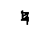
D. Deo gratias. Bene intelligo, et quod monochordum amodo sciam facere confido.
3. Sed quid illud est, obsecro, quod in regulariter mensurato monochordo minora alibi, alibi majora ac intervalla inter voces aspicio?
M. Majus spatium dicitur tonus, et est a Γ in primam A, a prima A in secundam B. Minus vero spatium, sicut est a secunda voce B in tertiam C, semitonium vocatur, [Col. 0761C] faciens contractiorem elevationem vel depositionem. Nulla autem mensura vel numero semitonii spatium ad tonum usque perveniat, sed cum per supradictam rationem divisiones fiunt suis locis, toni et semitonia formantur. [Col. 0761D] Uncinis inclusa ex Admontensi. [Tonos autem omnes si ad extremum punctum duxeris, novenariam in omnibus divisionem inventam miraberis, sicut a Γ in primam A, et a prima A in secundam B, sicut primitus fecisti]. Prima vero nona b et secunda nona
D. Maxime mirandum est quod non nisi a Γ in primam A, et a primo A in secundam B per novem divisi, et omnes aeque tonos novenaria constare divisione probavi. Sed rogo, si aliae sunt monochordi divisiones, et si in omnibus vel pluribus inveniantur locis, ostende.
4. M. Tres sunt praeter tonum divisiones, quae naturalem vocum, quam supra dixi, positionem custodiunt. Prima quaternaria est, propter quod in quatuor divisa est, ut a prima A in quartam D, et [Col. 0762A] haec habet voces quatuor, intervalla tria, id est, duos tonos et unum semitonium. Ubicunque ergo in monochordo inter duas voces duos tonos, et unum semitonium invenies, ipsarum duarum vocum intervallum quaternaria divisione currere ad finem usque probabis: et ideo diatessaron, id est, de quatuor nomen accepit. Secunda vero ternaria est, ut a prima voce A in quintam E, in cujus spatio continentur voces quinque, intervalla quatuor, id est tres toni et unum semitonium. Ubicunque ergo videris inter duas voces tres tonos et unum semitonium, ipsarum vocum spatium ternis ad finem passibus currit. Vocatur autem diapente, id est, de quinque, eo quod voces sunt in ejus spatio quinque. Tertia vero divisio est, quae per duo vel per medium dividitur, [Col. 0762B] et dicitur diapason, id est, de omnibus. Hanc, ut supra dictum est, ex litterarum similitudine patenter agnoscis, ut a prima A in octavam a. Constat autem vocibus octo, intervallis septem, id est, tonis quinque, semitoniis duobus. Continet etiam unum diatessaron et unum diapente. A prima A in quartam D fit diatessaron, et a quarta D in octavam a diapente: a prima A in octavam a diapason invenitur hoc modo: A, B, C, D, E, F, G, a.
D. In paucis verbis de divisionibus non pauca cognosco. Sed cur eaedem litterae in prima et secunda parte fiant, audire desidero.
M. Hoc ideo fit quia cum secundae partis voces a septima G in antea a vocibus primae partis per diapason absque nona b prima fiant, adeo inter se [Col. 0762C] utraque pars concordat, ut quaecunque litterae in prima parte tonum vel semitonium, vel diatessaron vel diapente vel diapason faciunt, similiter et in secunda parte facere comprobentur. Verbi gratia, prima parte a Γ ad A est unus tonus, ad B vero est in tonus et tonus, id est, ditonus, ad C diatessaron, ad D diapente, ad G diapason. Similiter et in secunda parte de G ad a est unus tonus, ad
D. Sapienter id factum esse perpendo. Nunc autem qualiter cantum notare possim, ut ego illum [Col. 0762D] absque magistro comprehendam, primum audire exspecto, ut cum exempla regularum dederis, eum melius recognoscam, et si penitus quidquam mente excesserit, ad tales notas indubitanter recurram.
M. Litteras monochordi, sicut per eas cantilena discurrit, ante oculos pone; ut si nondum vim ipsarum litterarum plene cognoscis, secundum easdem litteras chordam percutiens ab ignorante magistro mirifice audias et addiscas.
D. Vere, inquam, magistrum mirabilem mihi dedisti, qui a me factus me doceat, meque docens ipse nihil sapiat. Imo propter patientiam et obedientiam sui eum maxime amplector; cantabit enim mihi [Col. 0763A] quando voluero, et nunquam de mei sensus tarditate commotus verberibus vel injuriis [ Vien. virgis] cruciabit.
M. Bonus magister est, sed diligentem auditorem requirit.
5. D. In quibus maxime diligentia adhibenda est?
M. In conjunctionibus vocum, quae consonantias faciunt diversas, ut sicut diversae sunt ac differentes, ita dissimiliter et differenter unamquamque earum opportune pronuntiare praevaleas.
D. Quot sunt differentiae, precor, edissere, et communibus exemplis ostende.
[Col. 0763] In this paragraph, letters that in Migne are printed above a word have been keyed in square brackets after the word. M. Sex sunt tam in depositione quam in elevatione. Prima vocum conjunctio est, cum illae duae [Col. 0763B] voces junguntur, inter quas unum est semitonium, ut a quinta [E] in sextam, [F] quae consonantia omnibus contractior et strictior est, ut prima elevatio hujus antiphonae: Haec [E] est, [F] quae [E] nescivit. [G a c c] In depositione vero per reciprocationem ita: Vidimus [F E D] stellam. [E F] Secunda vero est, cum inter duas voces est tonus, ut a tertia [C] in quartam [D] in elevatione ita: Non [C] vos [D] relinquam, [D F D] etc. In depositione vero sic: Angelus [DC E F] Domini. [G E DD] Tertia est, cum inter duas voces tonus et [Col. 0763C] semitonium differentiam faciunt, ut inter quartam [D] et sextam [F] hoc modo in elevatione: Joannes [D D F] autem. In depositione ita: In [E] lege. [E D] Quarta vero est, cum inter vocem et vocem duo sunt toni, ut a sexta [F] in octavam, [a] in elevatione ita: Adhuc [E F] multa [a a] habeo. [
6. In maximum saepe errorem vulgares cantores labuntur, quia vim toni et semitonii aliarumque consonantiarum minime perpendunt. Id enim unusquisque eorum eligit, quod primum auribus placuerit, vel quod facilius ad discendum pronuntiandumve provenerit; fitque magnus error in multis cantibus, cujus modi sint. Modos autem dico de omnibus octo tonis et modis omnium cantuum, qui in formulis per ordinem fiunt, ne si tonos dixeris, dubitatio fiat, an de tonis formularum, an de tonis, qui novenaria [Col. 0764A] facti sunt dispositione et divisione, dicatur. Illos itaque cantores si de aliquo cantu interrogaveris, cujus modi sit, illico respondent quod nesciunt, ac si perfecte cognoscerent. Quod si ab eis argumentum, unde hoc sciant, quaesieris, titubantes dicunt: quia sit similis in principio et in fine aliis cantibus ejusdem modi; cum de nullo omnino cantu, cujus modi sit, sapiant, nescientes, quod unius vocis dissimilitudo modum mutare compellat, ut haec antiphona: O beatum pontificem! quae cum in principio et fine secundi modi esset, propter illius tantum vocis elevationem, ubi dicitur: O Martine dulcedo, in primo tono a domno Odone curiosissime est emendata. Itemque in antiphona: Domine, qui operati sunt, haec diligentius probare poteris; nam [Col. 0764B] si eam incipias in sexto modo, ut multi probant, in F littera, non discrepabit ab eo modo, usque ad semitonium, quod est in tabernaculo tuo, in una syllaba. Sed quia in usu ita est, et bene sonat, emendari non debet. Sed inquiramus an forsitan in alio tono incipiatur, totaque in eo modo consona inveniatur, eamque emendari opus non sit. Incipe itaque eam in G littera, hoc est, in octavo modo, et regulariter in eo stare probabis. Unde quidam incipiunt, Domine, sicut amodo dico vobis. Ex quo comprehenditur, quia imperitus musicus est, qui facile ac praesumptuose plures cantus emendat, nisi prius per omnes modos investigaverit, si forsitan in aliquo stare possit; nec magnopere de similitudine aliorum cantuum, sed de regulari veritate curet [Col. 0764C] Quod si nulli tono placet, secundum eum tonum emendetur, in quo minus dissonat. Atque hoc observari debet, ut emendatus cantus aut decentius sonet, aut a priori similitudine parum discrepet.
D. Bene de inertium cantorum errore me cautum fecisti, nec non etiam de regularis monochordi curiosa investigatione, ac regularium cantuum approbatione, falsorumve emendatione, utiliter sensum, prout oportet, exercentibus, licet paucis verbis, non modicam dedisti peritiam.
7. Verumtamen, quot vocibus cantus fieri debet, adjunge.
M. Alii asserunt octo, alii novem, alii decem.
D. Quare octo?
[Col. 0764D] M. Propter majorem divisionem, id est, diapason; sive quia apud antiquos octo sonis citharae fiebant.
D. Quare novem?
M. Propter bis diapente, quae novem vocibus terminatur. Nam cum a Γ in quartam sit diapente unum, atque ab eadem quarta D in octavam a aliud, a Γ in a octavam novem sunt voces.
D. Quare decem?
M. Propter Davidici auctoritatem psalterii, vel quia in decem vocibus ter diatessaron invenitur: a Γ enim in tertiam C unum diatessaron est; a tertia C in sextam F aliud invenitur; a sexta F in nonam primam B tertium restat: et ideo a Γ in nonam primam B decem numerantur voces.
[Col. 0765A] D. Possunt esse et pauciores voces in cantu?
M. Possunt utique quinque vel quatuor; sed ita quidem, ut et quinque diapente, et quatuor diatessaron reddant.
D. Prolata ratio, et pene omnium cantuum attestationes probant verum esse, quod dicis. Quid autem sit tonus, quem saepius modum vocas, expone.
8. M. Tonus vel modus est regula, quae de omni cantu in fine dijudicat. Nam nisi scieris finem, non poteris cognoscere, ubi incipi, vel quantum elevari vel deponi debeat cantus.
D. Quam regulam sumit principium a fine?
M. Omne principium secundum praedictas sex consonantias suo fini concordare debet. Nulla vox potest incipere cantum, nisi ipsa vel finalis sit, vel [Col. 0765B] consonet finali per aliquam de sex consonantiis. Et quaecunque voces per easdem consonantias possunt convenire fini, in eisdem quoque vocibus poterit incipi cantus illius finis, excepto, quod cantus, qui finitur in voce quinta E, quae est prima semitonii in tertio modo, saepe invenitur incipere in voce decima C, quae ab eadem quinta E uno diapente, unoque semitonio elongatur.
Distinctiones quoque, id est loca, in quibus repausamus in cantu, et in quibus cantum dividimus, in eisdem vocibus debere finiri in unoquoque modo, in quibus possunt incipi cantus ejus modi, manifestum est. Et ubi melius et saepius incipit unusquisque modus, ibi melius et decentius suas distinctiones incipere vel finire consuevit. Plures autem [Col. 0765C] distinctiones in eam vocem, quae modum terminat, debere finiri, magistri tradunt; ne si in alia aliqua voce plures distinctiones, quam in ipsa, fiant, in eamdem quoque et cantum finiri expetant, et a modo, in quo fuerant, mutari compellant. Ad eum denique modum magis cantus pertinet, ad quem suae distinctiones amplius currunt. Nam et principia saepius et decentius in eadem voce, quae cantum terminat, inveniuntur. Dictae rei exemplum in hac antiphona comprobabis: Tribus miraculis; ecce una distinctio: Ornatum diem sanctum colimus; ecce alia: Hodie stella magos duxit ad praesepium; ecce tertia: Hodie vinum ex aqua factum est ad nuptias; ecce quarta: Hodie a Joanne Christus baptizari voluit: ecce ultima. Vides itaque, ut in [Col. 0765D] regulari cantu plures distinctiones in suo tono incipiant et finiantur, ut et in eadem voce cantus incipiant et finiantur.
9. D. Ita esse, ut asseris, magistrorum cantorum ubique auctoritate defenditur. Verum de elevatione et depositione, quam a fine regulam sumat cantus, prosequere.
M. In acutis vel elevatis cantibus, ut in primo, tertio, quinto et septimo tono, nullus cantus plus a suo fine, quam ad octavam vocem debet ascendere, in qua voce eadem est littera, quae et in fine; propter divisionis, quae diapason dicitur, praecipuam quantitatem, habet idem cantus ante finem vocem unam. At vero in humilioribus cantibus, ut [Col. 0766A] in secundo, quarto et sexto, et octavo, nulla depositio alicujus vocis ante finem invenietur, quae ad finem ipsum secundum sex praedictas consonantias non jungatur. Elevatio vero eorum a fine secundum easdem consonantias ad quinque voces progreditur. Aliquando autem ad sextam usque procedit. In quibus autem vocibus omnium modorum cantus secundum praesentem usum saepius incipiant, in eorum formulis pervidebis.
10. D. Quoniam probasti, omnium modorum cantus a fine regulam sumere, quot sint ipsi modi vel toni, tempus est dicere.
M. Quatuor esse modos quidam putant.
D. Quare?
M. Quia omnis regularis cantus in quatuor monochordi [Col. 0766B] vocibus finiri potest.
D. Quae sunt illae voces?
M. Quarta D, in quam terminatur modus, qui dicitur authentus protus, id est, auctor vel princeps primus. Quinta E in quam terminatur modus, qui dicitur authentus deuterus, id est, auctor vel princeps secundus. Sexta F, in quam terminatur authentus tritus, id est, auctor et princeps tertius. Et septima G, in quam terminatur authentus tetrardus, id est, auctor vel princeps quartus. Hi quatuor autem dividuntur in octo.
D. Quare?
M. Propter elevatos et humiles cantus. Nam cum acutus vel elevatus fuerit cantus in authento proto, [Col. 0766C] dicitur modus authentus protus. Si vero fuerit gravis et humilis in eodem authento proto, dicitur plaga proti.
D. Quare dicitur plaga proti?
M. Plaga proti, id est pars primi dicitur, eo quod finiatur in eamdem partem, id est, locum vel vocem quartam D monochordi, in qua finitur et authentus protus. Similiter cum acutus fuerit cantus in authento deutero, dicitur authentus deuterus; sin autem planus fuerit cantus, plaga deuteri nominabitur. Eodem modo dicetur de authento trito plaga triti, et de authento tetrardo plaga tetrardi. Consuetudo autem tradidit, dicere pro authento proto et plaga proti modum primum et secundum; et pro authento deutero et plaga deuteri modum tertium [Col. 0766D] et quartum: et pro authento trito et plaga ejus modum quintum et sextum: et pro authento tetrardo et plaga ejus modum septimum et octavum. Igitur octo sunt modi, per quos omnis cantilena discurrens octo dissimilibus qualitatibus variatur.
D. Quemadmodum potero eorum differentias et communitates advertere?
M. Per tonos et semitonia. Ubi enim toni et semitonia simul fiunt, ibi et reliquae consonantiae similes fiunt: ubicunque enim duo toni et unum semitonium fuerint, ibi et diatessaron erit; et ubicunque tres toni semitonio adhaerebunt, ibi et diapente non deerit. Similiter et de reliquis consonantiis oportet intelligi.
[Col. 0767A] D. Age ergo, obsecro, et de modis, quae sequuntur, edicito.
11. M. Primus tonus finitur in voce quarta, proceditque in undecimam, in qua est eadem littera d [Col. 0768A] per tonos et semitonia ita: post finem primo tonus occurrit, deinde semitonium, et duo toni ac iterum semitonium, et duo toni: deponitur vero a fine ad vocem tertiam tono uno, hoc modo [Col. 0767D] Admont. addit hos versus: 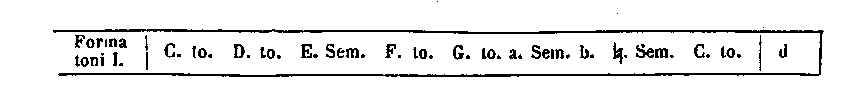
[Col. 0767A] Quidam autem decachordum volunt facere, adjiciuntque vocem unam, secundam B. Sed non est in usu, ut ad eam primus deponatur modus. Incipit autem cantus ejusdem modi in C, ut: O beatum pontificem: saepius in D, quando principium cum fine concordat, ut: Ecce nomen Domini. In E quoque, sed raro, ut: Gaudete in Domino; in F, ut: Ipsi soli. in G quoque, ut: Canite tuba; in a etiam, ut: Veniet [Col. 0768A] Dominus, aut Exi cito.
12. Secundus autem tonus similiter finitur in eamdem vocem D, et ascendit cum eo usque ad nonam primam b, ad decimam vero vel undecimam non pervenit. Deponitur vero a fine tono et semitonio et tono usque ad primam A, aliquando autem, sed raro, et alio tono usque ad gamma, et fiunt chordae decem hoc modo [Col. 0767D] Admont. addit:
[Col. 0767B] Habet itaque secundus tonus Γ, et primam A, et secundam B, quas non habet primus: et primus habet decimam c, et undecimam d, quas non habet secundus. Sunt autem horum plurimi cantus, qui ad Γ et primam A et secundam B non deponuntur, ad decimam vel undecimam non elevantur, de quibus dubium est, an primi, an secundi sint toni: quorum ista discretio est. Ad octavam et nonam si non ascendunt, certissime de tono secundo sunt. Erunt itaque octava et nona utriusque communes, ad quas dum cantus ascendit, si diu in eis permaneat, sive tertio vel quarto eas repercutiat, aut si in octava incipiat, modi erit primi. Sin autem in inferioribus incipiat, et secundum quantitatem antiphonae rarissime [Col. 0767C] ad illas ascendat, secundi erit modi. Alioquin juxta [Col. 0768B] formularum varietates et differentias discernuntur. Principia autem secundi toni sunt in Γ, ut: Educ de carcere; in A, ut: Omnes patriarchae; in C, ut: Nonne cor nostrum; in D, ut: Ecce in nubibus; in E, ut Animalia. Ecce Maria; in F, ut: Quem vidistis. In Γ vero, B, vel E, vel G, rarissima exempla reperies.
D. De primi et secundi discretione sufficit; ad reliqua properandum est.
13. M. Tertius modus in quintam finitur vocem in E litteram, proceditque uno diapason usque ad eamdem litteram e acutam per tonos ac semitonia ita: primo assumens semitonium, deinde tres tonos ac semitonium et duos tonos: deponitur vero a fine ad [Col. 0768C] quartam tono uno, hoc modo [Col. 0768D] Admont. addit: 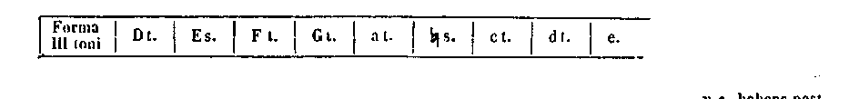
[Col. 0767C] Sane secundam nonam
14. Quartus autem modus, quia planus est, non [Col. 0768C] fecit prope finem tres tonos, ideoque nonam primam b assumpsit, ascenditque ad decimam c, habens post finem semitonium et duos tonos, deinde semitonium et tonum. Deponitur vero a fine duobus tonis ad tertiam C, plerumque autem ad secundam B et primam A acuto semitonio et tono: quia ad suum finem secunda B reddit diatessaron, et prima A diapente consonantiam reddit, fiuntque voces decem per tonos ac semitonia incedentes hoc modo [Col. 0768D] Admont. addit: 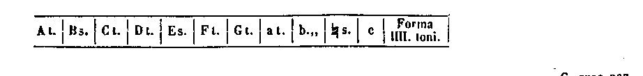
[Col. 0767D] Principia ejus inveniuntur in C, ut: Hodie nata est; in D, ut: Benedicta tu; in E, ut: Gaude Maria; in F, ut: Anxiatus est; in G. ut: O mors; in a, ut: Rectos decet.
[Col. 0768D] Discernitur quartus a tertio, quia quartus habet primam A, et secundam B, et tertiam C, quas non habet tertius: et tertius habet undecimam d, et duodecim e, quas non habet quartus. Quod si aliqua [Col. 0769A] antiphona neque has tertii, neque illas habet quarti, sed in decima c incipiat, ut: Vivo ego, vel secundam nonam ut: Ecce quomodo computati sunt, amplius diligat, tertii erit modi; alias in quarto ponetur, si ejus formulae differentias imitatur. Volunt autem quidam quarto modo ad similitudinem tertii secundam nonam tribuere, eo quod sit diapente ad finem ejus: prima vero nona b ad finem ejus nulla consonantia sit. Sed nos magis communem usum secuti sumus. Invenimus praeterea in difficilioribus cantibus jungi tertio modo et tertiam vocem C, ut sit decachordum; quod tamen cum rarissime fiat, abusivum esse non dubito. Neque enim a tertia C, in duodecimam e, ter diatessaron secundum praedictam decachordi regulam invenitur.
D. Cum multi sint grammatici, aut vix, aut nunquam [Col. 0770A] veraces inveniuntur libri, maxime dum saepe in eorum emendatione laboretur; musici autem perpauci inveniuntur, et per multa jam tempora antiphonaria emendata non sunt: non est ergo mirum, si in multis locis falsitas inveniatur. Tantum, precor, regulam et communem usum prosequere: quae enim rarissime fiunt, nullius artis solet regula reprobare.
15. M. Quintus autem modus in sextam F terminatur, et acutissima ejus decima tertia f eadem littera figuratur, cumque sexta F ad primam nonam b, ad decimam tertiam f, diapente reddat, in quinto vel sexto prima nona b valebit. Habebit ergo per ordinem tonos duos et semitonium, ac deinde tonos tres et ultimum semitonium octo vocibus, ita [Col. 0769D] Admont. addit:
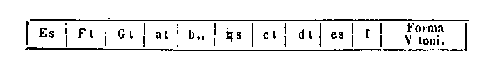
[Col. 0769B] Usitata ejus principia sunt haec: in F, ut: Haurietis; in G, raro: Non vos relinquam, in a, Quinque prudentes, in c, Ecce Dominus veniet. Nam quia tonum ante finem non habuit, nec in principio nec [Col. 0770B] incessu post se respexit.
16. Sextus autem modus cum eo graditur ad undecimam d, sed deponitur a communi fine semitonio et duobus tonis ad tertium C, hoc modo [Col. 0769D] Admont. addit:
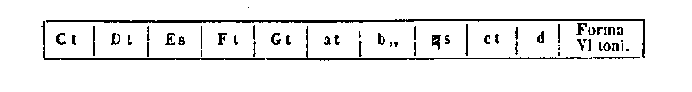
[Col. 0769B] Et sicut quintus habet duodecimam e, et tertiam decimam f, quas non habet sextus; ita sextus habet tertiam C, quartam D et quintam E, quas non habet quintus, nisi quod aliquando quintus miscetur sexto, declinans in quartam D fitque decachordum. Sed [Col. 0769C] hoc inveniri, maxime in antiphonis, raro contingit. Horum autem erit ista discretio. Cum nec depositio sexti, nec tota elevatio fuerit quinti, si in decima c incipiat, et eam vel undecimam d juxta quantitatem suam saepe repercutiat, quintus erit modus; si autem non ascendat, nisi ad nonam primam b, dicetur sextus, sive per principia discernetur. Vix autem sextus nisi in suo fine incipit, ut: Verbum caro factum est, aut in a, ut: Vidi Dominum, aut in voce [Col. 0770B] quinta E, ut: Domine, in auxilium, aut in voce quarta D, ut: Si ego verus Christi, aut in voce tertia C, ut: Decantabat populus.
D. Utilia, imo et necessaria probantur ad praesentis erroris exprobrationem, de modis quae dicta [Col. 0770C] sunt. Unum sicut coeperas de septimo et octavo tono cupientem audire non differas.
17. M. Septimus modus in vocem septimam terminatur, cujus acutissima est decima quarta g, quae cum fine eodem charactere denotatur. Hic assumit nonam secundam
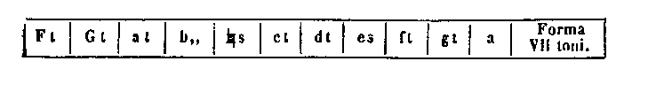
[Col. 0769D] Quod si decachordum placeat facere, uno eum semitonio adhuc de fine depone ad quintam E, non tamen hoc frequenter invenies. Notandum est autem quod si ei prima nona b concedatur, nihil restat, nisi ut a [Col. 0770D] Adm. a duodecima e, ad eam diatessaron fiat, et ad semitam contrahatur, eritque, etc. sexta ad eam diatessaron fiat, eritque per omnia primus, quia habebit tonum et semitonium, ac deinde duos et semitonium et duos tonos, et deponitur a fine tono uno, sicut in primo dictum est, et jam non erit septimus, sed primus. Non enim, ut stultissimi cantores putant, gravitate vel acumine [Col. 0770D] unum modum ab alio discrepare scimus; nihil enim impedit, quemcunque volueris modum, si acute vel graviter decantaveris; sed tonorum ac semitoniorum, quibus et aliae consonantiae fiant, diversa positio diversos ab invicem ac differentes modos constituunt. Iterumque si una tantum voce depravata finiatur in octava a, rursus fit per omnia primus: habebit enim a fine tonum et semitonium, et duos tonos, et reliqua, quae sunt primi. Principia ejus sunt haec: in F vix reperies exemplum, ut: Qui regni [Col. 0771A] claves, et Memento mei; in G, ut: Assumpta est Maria; in a raro invenies, ut comm. Domus mea, in
[Col. 0772A] 18. Octavus autem modus procedit cum septimo usque ad duodecimam e, deponitur autem ad tertiam C, tono et semitonio et duobus tonis, fitque decachordum hoc modo [Col. 0771D] Admont. addit:
[Col. 0771A] Supra diximus autem hujusmodi decachordum ter diatessaron non habere, ideoque non recipitur utraque, id est, acutissima e ejus, et gravissima C ejus simul in uno eodemque cantu, ut quibusdam placet. [Col. 0771B] Perspicuum est autem quod octavus tonus in depositione a fine per omnia sit secundus. Quod si ei in elevatione prima nona b daretur, ut haberet tonum et semitonium, et duos tonos a fine, etiam in elevatione permaneret secundus. Sed deridenda inertium cantorum scurrilitas, quae de tonorum discretione nil sentit: id solum sequitur, quod aliquo modo aures delinire videtur: sicut qui gastrimargiae inserviunt, per falsam dulcedinem veram sobrietatis regulam fallunt. Invenitur praeterea, cum octavus ad quartam D descendens, decimam tertiam f, quae jure est septima, appetat, ac si decachordum regulare tanta praesumptione, licet raro, restituat. Principia ejus sunt haec [Col. 0771D] Adam ita: in C, ut: nos qui vivimus, Dum [Col. 0772D] venerit Paraclitus; in D, ut: Spiritus Domini; in E, ut: Ornaverunt faciem; in F, ut: Jucundare; in G, ut: In illa die; in a, ut: Completi sunt; in c, ut: Ecce, etc. : in C, ut: Stabunt justi, in D, ut: Angeli Domini; in F, ut: Zachae; in G, ut: Judaea [Col. 0771C] et Jerusalem; in a, ut: Apertum est; in c, ut: Ecce ancilla. In hoc autem distat octavus a septimo quod octavus habet tertiam C, quartam D, et quintam E quas non habet septimus; et septimus habet decimam tertiam f et decimam quartam g, quas jure non habet octavus.
Sane in his cantibus qui inter octavi depositionem et septimi elevationem medii sunt, ut in reliquis quoque modis dictum est, secundum formularum varietates, in quo tono maneant, discernentur. Per ipsas enim varietates uniuscujusque modi principia liquido pervidebis.
D. Dum vix paucos cantus his regulis contraire invenio; eorum paucitatem et, ut ita dicam, furtivam singularitatem a praesumptoribus vitiatisque cantoribus [Col. 0771D] factam esse non dubito.
M. Regula enim est commune mandatum uniuscujusque artis; quae ita singularia sunt secundum artificialem regulam non consistunt.
D. Sed precor, ut secundum uniuscujusque vocis positionem pauca adhuc de modorum lege subjungas.
M. Petitioni tuae justum est respondere. Unaquaeque enim vox alicujus supradictorum modorum similitudinem tenet; ut gamma ( Γ ) quidem, quia habet ante se duos tonos, post quos semitonium, et duos tonos adjungit, ac deinde semitonium tonumque apponit, non immerito septimi modi similitudinem [Col. 0772A] tenet, cum et finis septimi ad gamma diapason concinat. Prima quoque vox, quia habet post se tonum, ante se vero tonum et semitonium et duos tonos, primi modi legem custodit: unde prima non [Col. 0772B] sine causa dicta est. Secunda vero cum deponatur post se duobus tonis, et ante elevetur semitonio et duobus tonis, iterumque semitonio et tono, usitatam quarti modi regulam servat. Tertia praeterea C, cum post se habeat semitonium et duos tonos, ante se vero duos tonos et semitonium, ac deinde tres tonos, quinti vel sexti proprietate fulcitur. Jam vero octavam a primum locum tenere dicimus ad similitudinem primae, cujus est diapason. Alioquin si eam cum prima nona b perpendas, habebit in depositone tonum, in elevatione vero semitonium, et tres tonos ad similitudinem tertii. Prima nona b in depositione continet semitonium et duos tonos, ad similitudinem sexti; in elevatione vero sive quia tres toni sequuntur, sive magis quia nulla sequentium diatessaron [Col. 0772C] ei caritate conjungitur, quae principalis est consonantia, nullius toni regularem similitudinem tenet. Neque etiam per diapason a posterioribus fieri potest: ideoque neque cantum neque distinctionem in ea principium vel finem habere probabis, nisi vitio id fiat.
Secunda nona
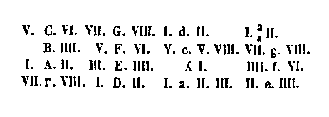
Ex his quae dicta sunt, assiduus perscrutator tam de tonis, quam de reliquis hujus artis regulis divina gratia juvante alia quamplura intelliget. Quod si aut negligenter agit, aut hoc non per divinam illustrationem, sed sui sensus acumine se capere posse praesumpserit, aut nequaquam intelliget, aut, dum non refert gratias Donatori, efficietur, quod absit, [Col. 0773A] elationi inserviens [Col. 0773A] Cod. Admontensis ita claudit: Minus jam serviens et subditus Deo. Qui vivit et regnat in saecula saeculorum. Amen.
[Col. 0774A] D. Age ergo, obsecro, et de modis, quae sequuntur edicito [Col. 0774A] Ad horam post haec legitur: Hic desinit Dialogus. .
Explicit Musica Enchiridionis.
Quae sequuntur, in codice San-Blasiano continenter posita sunt post opusculum seu Dialogum Odonis de musica, scilicet post haec verba, quae in aliis ms. desiderantur: D. Age ergo, obsecro, et de modis quae sequuntur, edicito. Unde et nos hic immediate illa subjicimus, collata cum ms. Lipsiensi, in quo habetur sub nomine Bernonis.
[Col. 0773B] Musicae artis disciplina summo studio appetenda est, et maxime his qui communi conversatione Deo serviunt. Nam sicut per Psalmistam dicitur, quia panis confirmat, et vinum laetificat cor hominis; ita et frequens lectio animum nostrum ad virtutes roborat, cantus vero in Dei servitio mentem exhilarat. Accidit praeterea, ut cum suavitatem melodiae, quae in terris agitur, congaudentes miramur, ad illam harmoniam coelestis patriae audiendam ardentius festinemus, quae tanto est ista suavior, quantum coelum terra miramur excelsius.
Cum pueris volumus insinuare legere, prius eos abecedarium discere facimus in tabula, ut postquam cognoverint omnes litteras, facilius legere valeant quidquid scribitur litteris. Simili modo qui cantum [Col. 0773C] volunt addiscere, prius oportet eos omnes voces, tonorumque varietates in monochordo cognoscere. Quia enim [ Lips. vero] hac disciplina non utimur, tantum temporis antiphonarium discendo perdimus, in quanto divinam auctoritatem et grammaticae regulam scire potuissemus; et, quod deterius est, nullo unquam spatio temporis ad tantam perfectionem venimus, ut saltem minimam antiphonam absque magistri labore scire possimus, quamque si oblivisci contigerit, nullatenus memoria reformare valemus. Sed non terreat lectorem hujus artis duritia; in praesentibus quippe regulis nihil invenies praeter ea sola, quae et facile poteris, Deo illuminante, capere, et per quae ad cantandi peritiam quam cito valeas pervenire; talis enim ac tanta hujus [Col. 0773D] artis virtus probatur, de qua et parvuli possint capere, unde ad cantandi peritiam poterunt pervenire, et fortes sensus suos per multa valeant ac mirabilia exercere.
Nunc primum ante oculos monochordum ponimus, ut quidquid postea de vocum natura dixerimus, [Col. 0774B] si lectione minus panditur, oculis demonstretur [Col. 0773D] Haec et sequentes tabulae in Lips. ms. desunt, spatio tamen vacuo relicto. .
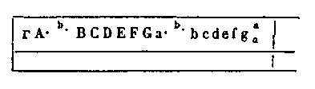
Cum igitur subducendo modum per supradictas chordae litteras ipsam chordam curtaveris vel elongaveris, omnes voces, quibus omnis cantus efficitur, et quantum unaquaeque vox altera sit gravior subtiliorve numero, recognosces. Qua in re divinam sapientiam admirans glorificare poteris, quia sicut omnia reliqua, ita et voces hominum, ut se laudarent in numero et mensura, constituit.
Cum primum igitur in monochordo conspexeris, [Col. 0774C] cognosce unamquamque vocem ab altera tono vel semitonio distare. Omnes autem toni novenaria divisione fiunt, ut cum a capite monochordi, ubi chorda incipit, usque ad finem, ubi chorda finitur, per novem diviseris, ubi prima nona pars terminaverit, ibi signum primae [ Lips. secundae] vocis appones. [Col. 0774D] Uncinis inclusa desunt in Lips. ms. [Item ibi incipiens, si per novem diviseris usque ad finem chordae, ubi secunda nona pars terminaverit, ibi signum secundae vocis apponis]. Et illa descensio vel ascensio, hoc est, ipsum intervallum, quod est a prima voce, ubi inscribitur A, usque ad secundam, ubi inscribitur B, tonus est primus; prima enim vox est tota chorda, antequam dividatur: unde in capite chordae scribitur A littera prima, in secundo vero loco B littera secunda. [Col. 0774D] Tonus ergo dicitur, quoties spatium alicujus unius vocis usque ad alteram, usque ad finem chordae novies ducitur: unde fit, ut quantum fuerit octava pars sequentis, tantum major esse prior ab illa videatur; et rursus quantum nona pars prioris, tantum sequens minorata cognoscatur. Quod facile [Col. 0775A] probare poteris, probatumque cognoscere, si [ Lips. cum sexta] cum mensuraveris ab A usque ad B et illud spatium, quale fuerit usque ad finem chordae, quasi pedibus incedendo [ Lips. deduxeris; erunt enim ab, etc.] duxeris; etenim ab A usque ad finem [Col. 0776A] hujusmodi spatia novem, a B usque ad finem octo. Erunt praeterea de vocibus illis, quas in monochordo, vides hujusmodi toni decem, quorum per ordinem ista descriptio est.
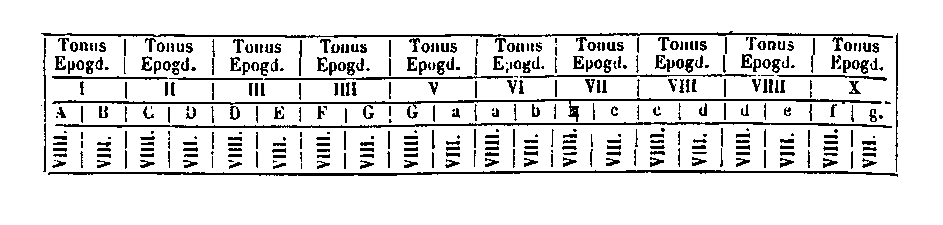
[Col. 0775B] In unoquoque enim tono qualia novem spatia prior habuerit, similia, vel eadem octo habuerit [ Lips. habebit melius ] posterior. Hujus toni exemplum hoc est: Angelus Domini; ubicunque enim videris duas ex illis litteris, sicut in figura geminatae sunt, sive in isto sive in alio cantu, tonus est sicut hic. An. [id est in hac antiphona, Lips., secundus tonus] tonus est epogdous, quia tonum musici epogdoum vocant, id est, superoctonarium [ Lips. super octo, id est super octonarium], quotiens major vox comparata ad minorem habet eam totam in se, et eo amplius octavam partem illius minoris; quod etiam in numeris aeque fit, cum novem comparamus ad octo vel decem, et octo ad sedecim.
[Col. 0775C] Nominatur autem iste epogdous tonus, cujus descriptio superius facta est. Semitonia autem in eisdem vocibus quinque numerantur: dicitur autem semitonium quasi medius tonus; est enim medius inter duos tonos; illud videlicet spatium, quod positis ex utraque parte tonis in medio remanet ita, ut utriusque lateris toni, ut dictum est, novenario. fiant [ Lips addit: vel semitonius ideo vocatur, quod semis et non plenus sit tonus: unde dicere solemus: non plenus est sciphus, et cum his similia.]
Itaque si primo tono terminato quartam vocem, quae secundum tonum terminat, et a prima voce quaternaria totius monochordi portione [ Lips. partitione] [Col. 0775D] monstratur, per octo ad finem usque deduxeris, et ipsam octavam partem super quartam vocem adjunxeris, ut sint partes novenae [ Lips., novem] et ipsius secundi toni ultima principium et finem primi toni [ Lips., semitonii] te invenisse miraberis. Sunt autem quinque ubique primi toni ultimae, posterioris vero prima parte circumdati, sicut eos haec figura per ordinem signat. In hac sequenti figura omnium tonorum et semitoniorum numeros per ordinem, et alia utilia prudens lector inveniet [Col. 0775D] In Lips. figura deest, relicto spatio. .
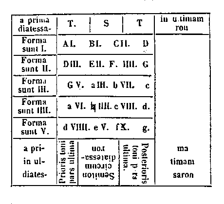
[Col. 0776C] Nam si primam et ultimam uniuscujusque ordinis inter se compares, diatessaron, quae duos tonos mediumque semitonium habere videtur, invenies. Item si prioris ordinis primam secundae et secundam tertiae descendendo [ Lips. addit., ad inferiora] compares, diatessaron duo reperies: hoc idem in secundo et tertio et quarto ordine aeque continget. A quarto in quintum nihilo minus sapies. Si vero a tertio in quintum consideres per singula, diapente invenies. Unde si de monochordi mensura quaesieris, et plura taedet legere, haec tibi figura, quantum sufficit, indicabit.
Illud autem de tonis et semitoniis notandum est, quod semitonius nunquam patitur, ut inconcinni [Col. 0776D] toni absque ejus medietate jungantur [ Lips. add., ut est verbi gratia tonus, tonus, tonnus, tonus et semitonium], sed excepto semitonio primo, quod super se non habet nisi primum tonum, ubique post duos tonos semitonius vocis moderator occurrit, ne vel nimiae repetitiones fastidium [ Lips., in unum repetiti toni fastidium] generent, vel plures hiatus et extensiones vocum dissonantiam praestent. Semitonii quoque id est geminati [ Lips., vero gem.] nusquam inveniuntur, ne, quia ad moderandum et condiendum cantum excogitati sunt, dum plus quam congruit, indiscrete ponuntur, in morem superflui salis amaritudinem faciant. Quos autem ab octava chorda usque in decimam duos semitonios vides, nunquam continuatim jungere debes; quorum signa haec sunt: octavum a, nonum b, decimum
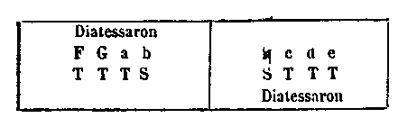
[Col. 0777B] Praeterea sciendum est quia pro prima voce b et
Praeterea est alia diatessaron, a secunda nona (
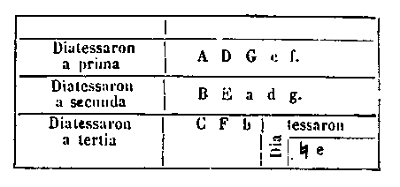
Hujus exemplum est: Secundum autem et item: C hristus vincit. Christus regnat. Christus imperat. Rex noster. In hac enim harmonia major et minor vox, id est, quinta (E) et octava (a) diatessaron [Col. 0778C] duobus tonis et semitonio, ut dictum est, implent. Si ad hanc unum tantum tonum, qui est a quarta (D) in quintam (E) adjeceris, diapente nihilominus symphoniam mirabilem pervidebis.
Diapente autem dicitur, id est, de quinque, eo quod quinque habeat voces, et a prima (A) terminetur in quintam (E). Definitur autem [ Lips. Diffinitur autem ipsa quinta e ] totius ab aliqua voce, ad quam comparatur, divisione ternaria; ut cum quinta [vox [Col. 0777D] Lips. uncinis inclusa ita habet: E totius chordae a prima A divisione ternaria, quae divisio diapente dicitur. Sed absque dubio est error calami, nosterque codex bene habet quoad ultima. comparatur ad primam: definitur autem ipsa quinta totius chordae a prima, divisione ternaria, quae diapente dicitur], et ubicunque ante vel post diatessaron occurrerit adjunctus ei [Col. 0778D] Ita uterque: sed omnino inserendum tonus. diatessaron diapente facit. Constat autem vocibus quinque tonis tribus, et semitonio in intervallis videlicet quatuor: [Col. 0778D] in definitis vero vocibus loca continet novem, de quibus in septem, cum in primo et ultimo tonum habeat, quicunque ablatus fuerit, post ablationem diatessaron remanebit: sicut diapente, quod est a prima (A) in quintam (E) in primo et ultimo habet tonum. Si igitur tonum, qui primus est, separaveris, a secunda (B) in quintam (E) diatessaron remanebit: si vero ultimum tollas, a prima (A) in quartam (D) aeque diatessaron remanebit. Hujusmodi autem diapente in hac figura notabis [Col. 0778D] Figura haec in nostro cod. mendosa est, nec ex Lipsiensi, ubi deficit, emendari valet: ita autem corrigenda videtur, uti a nobis posita est. .
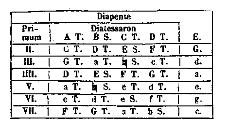
Excepto uno a quinta (E) in nonam secundam (
[Col. 0779B] [Col. 0779B] In this paragraph, letters that in Migne are printed above a word have been keyed in square brackets after the word. Hujus autem diapente exempla multa reperies, de quibus est illud carmen Boetii: Bel [DED] la [C] bis [D] quinis [D D] operatus [C D E F] annis [E D C] ultor [E D C] Atrides [D D D] Phrygiae [D D E] ruinis [FG GFDC] fratris [F F] amissos [E D C] thalamos [D D E] piavit. [F E DD] In qua melodia gravior vox tertia (C), acutior vero septima G est, quae uno diapente junguntur. Diapente hoc est, cujus gravior vox tanta mensura superat auctiorem et posteriorem vocem, quanta est tertia pars ipsius gravioris, vel media posterioris: quia cum prior habeat tria spatia ad finem, posterior vero duobus horum spatiis contenta est.
[Col. 0779C] Tertia vero symphonia diapason, id est, dupla, sive de duobus nominatur. [ Lips. diapason ex octo vocibus constat.] Quoties major vox bis tantum habet de chorda, quam minor, sive cum major vox per medium, id est, in duas partes divisa, aliam vocem terminat, sicut est (A) prima ad octavam (a). Fit autem haec diapason duabus supradictis symphoniis, id est, diatessaron et diapente ad se invicem copulatis. Ubicunque enim diatessaron et diapente, sive diapente et diatessaron conjunxeris, diapason plenissimam pervidebis [ Lips. pernotabis et videbis]. Ut cum a prima in quartam (D) fit diatessaron, et a quarta in octavam (a) diapente, a prima (A) in octavam (a) diapason, id est, medietas primae (A) necessario recipitur [ Lips. reperitur].
[Col. 0779D] Illud autem est notandum, quod ea vox (D), quae ad primam (A) est diatessaron, ad octavam (a) comparata diapente facit; et (E) quae ad primam (A) est diapente, ad octavam fit diatessaron; et illud spatium, quod fit signatis a prima diatessaron et diapente, tonus est in medio diapason consistens. Quo ablato, et supra et infra diatessaron notatur in tota diapason, sicut liquido in hac figura pernotatur.
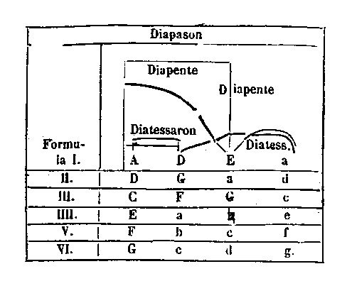
[Col. 0780B] Sunt autem hujusmodi formulae sex, in quibus omnibus, sicut in prima, praedicta regula fixa manet.
Restat praeterea unum diapason a secunda (B) in secundam nonam ( 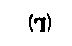
(De) diapason autem symphonia illud etiam et vulgaris musica, fistula videlicet, et cithara sive fidula probant: quod satis commodus cantus est, quia una diapason, id est, octo vocibus continetur. Ecclesiastica autem consuetudo tradidit, ut a fine suo nullus cantus plusquam ad octavam surgat: quod cum fit, idem cantus [ Lips. id est, cum cantus] ad octavam a fine consurgit, rarissime et nonnisi in prolixioribus [Col. 0780D] cantibus plus a secunda a fine descendat. Quae [ Lips. quod] si defuerit, unum tantum diapason ille cantus habebit. [Col. 0779] In Lips haec inseruntur: cum vero et dicta ascensio et descensio aderit, bis diapente cantus ille habebit. Ipsa vero descensio a fine esse non debet, nisi a fine ad ipsam secundam, in quam deponitur, epogdous inveniatur tonus; si vero semitonium fuerit, inutilis erit. Epogdous vero tonus ad diapason junctus ubique bis diapente constituit, id est, voces novem. Invenimus autem raro, et in prolixioribus cantibus, decem voces, quod Davidici psalterii auctoritate defenditur. In quibus tamen plusquam ab octava a fine non ascendi debet, sed potius ante finem illa augmentatio notabitur. Neque [Col. 0781] [Col. 0781D] In this paragraph, letters that in Migne are printed above the word have been keyed in square brackets after the word. Pro A B C D [A B C D] duplicatis litteris in tertia classe ascensus. [Col. 0781A] enim hoc absque numeri ratione et auctoritate agitur: cum decem chordae tribus diatessaron continuis decorentur, excepto, cum diatessaron a tertia voce fiunt, in quibus tertia diatessaron regulariter non invenitur, unum hujusmodi decachordum tam superfluitate quam irrationabilitate judicatur incongruum.
Raro, amantissime lector, secundum antiqua praecepta, multorumque magistrorum instituta, et secundum communem plures his, quas designavimus, voces necessarias postulabis. Quamvis haec raro inveniantur, non tamen penitus ignoranda sunt: unde in monochordo ante primam unam vocem ponendam (esse) censuimus, quam propter rarum usum, et praedictam rationem non primam, sed magis adjunctam [Col. 0781B] vocamus. Neque eam per primam litteram designamus, sed per Graecum gamma Γ depingimus; eo quod septima Latinorum littera (est), quae octava ab ipsa in monochordo cognoscitur, similem virtutem, sicut gamma apud Graecos, apud nos habere videatur. Sed cum gamma in capite chordae posueris, novenaria divisione locum primae (vocis), quam diximus, ante notabis [ Lips. annotabis]; eritque a gamma ad primam tonus, ad tertiam vero diatessaron, ad ultimam vero, quae a septima alteram diapason facit, ipsa gamma bis diapason dici poterit.
Praeterea aliquando vitiosa et maxime lasciviens et nimium delicata harmonia plura, quam diximus, semitonia quaerit, et quae nos posuimus, renuit: quod magis corrigi quam imitari oportet. Cavendum [Col. 0781C] est autem, ne per musici incuriam hoc fiat, cum cantum aliter, quam compositus est, incipiat atque perficiat; ipsa enim dissonantia, sicut magistri probant, repugnat: neque post duos tonos aliud, quam semitonium; neque post semitonium aliud, quam duos tonos debere poni. Nos autem, quia evitari non potest vitium, nisi fuerit cognitum, quinque hujusmodi semitonia, sed extra praefixam regulam, in monochordo ponimus: unum quidem post primam, a quo ad finem medius ille post octavam stat semitonus: quae nos quoque recipimus: uterque tamen semitonii charactere, sed dissimili, formatur. Alter quoque qui ab ipso, qui est post octavam, medius simili, sed Graeco charactere pingitur. Item post [Col. 0781D] quartam alius notatur, qui ab eo, qui est post primam, quaternaria divisione colligitur; a quo alius post undecimam medius invenitur. Sed ambo hi aspirationis littera fiunt, sed dissimili; quare Graeci per eam litteram hemitonium dicunt et scribunt. De quibus eum, qui est post octavam, vel medium ejus recipimus, alios potius cavendos, quam recipiendos monemus. Addimus praeterea quatuor voces post ultimam, sive propter superfluos cantus, quos tamen aut vix aut nunquam reperies ad eas ascendere; sive propterea, ut quando cantorem praecedere voce altiori voluimus, quaecunque necessariae [Col. 0782A] sunt voces ad opus [ Lips. ad hoc opus], habeamus. Quas si ab octava chorda dividimus [ Lips. omnes voces ad undecimam medio dicto dividimus], facile invenimus: et quibuscunque modis voces ab octava ad undecimam ad suas priores comparantur, eisdem modis et istae suam positionem custodiunt. Non solum autem istae, sed et quaecunque vox sit, easdem propositiones [ Lips. proportiones] ad sibi proximas voces habebit, quas habet et ipsa, a qua diapason congratulatione decoratur. Unde fit ut omnis cantus, si ab una bene incipit quamvis altiori voce, et ab alia, quae diapason cum illa facit, aeque incipi ac progredi, si vocum permiserit [ Lips. permanserit] quantitas, possit. Unde non immerito eisdem litteris prima et ultima vox diapason designatur. Propterea [Col. 0782B] eaedem litterae, quae sunt a prima in septimam, eaedem fiunt a septima in ultimam, et ipsae litterae, quae fiunt ab octava in undecimam, sequuntur post ultimam, ut sint tres ordines similium litterarum. Primus enim versus majoribus notatur litteris, quales in principio sententiarum ponere solemus. Secundus vero versus minoribus litteris et alia figura formatis, qualibus per totam libri seriem utimur, describitur. Tertius vero versus, quia superfluus creditur, Graecarum potius litterarum forma notatur, habens voces quinque; de quibus duo ad earum similitudinem, quarum diapason dimensione fiunt, pro una accipiuntur littera, quamvis divisa. Cujus sententiae haec figura est.
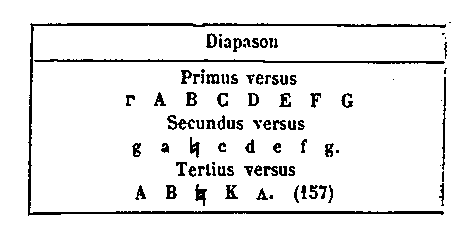
Satis, quantum his convenit, qui aut pueri sunt, aut qui liberalium artium scientiam non acceperunt, de monochordi formatione dictum est. Sed cum occurrit memoriae, quare [ Lips. memoria, quia] stultissimus grammaticorum est sapientissimus rusticorum, unam formulam satis intelligibilem ad [Col. 0782D] monochordi mensuram adjungimus, ne et invidiae arguamur, aut rusticum nostra charitate privemus. Hoc autem est hujusmodi. In primo quidem versu omnes monochordi litteras per ordinem ponimus: in secundo vero versu quaecunque ab aliqua earum, quae sunt in primo versu, novenaria divisione fiat, proxima subnotatur; quam partionem epogdoum tonum diximus nominari. In tertio versu quaecunque ab aliqua prioris versus per quatuor dividitur, ut inveniatur inferius, a priore indirectum descendendo cognoscitur. Itidem in quarto ternaria divisione [ Lips. divisio] a prioribus invenitur. In quinto vero [Col. 0783A] duorum vel dupla, vel medietatis a prioribus divisio accipitur. Quaternariam vero divisionem diatessaron [Col. 0784A] dicimus, ternariam vero diapente; duplam quoque diapason nominavimus.
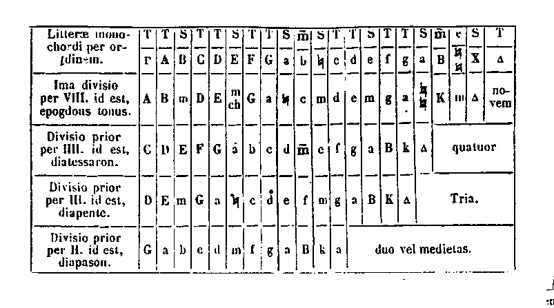
[Col. 0783B] In hac figura hoc modo uniuscujusque vocis ad alteram mensuram invenimus, ut si de quarta voce, cui quarta littera inscribitur D quaeris, vide in figura ipsam litteram quarti [ Lips. in capite] versus, cui ternarius ab utroque latere adhaeret numerus; dumque ab ipsa littera rursum [ Lips. sursum] in directum ad primum versum ascendis, gammam litteram recognoscis. Igitur si a gamma usque ad finem monochordi diviseris per tria, ubi prima tertia pars finem fecerit, ibi signum supradictae quartae vocis collocabis. Item vides eamdem litteram in tertio versu, in quo est quaternarius numerus; dumque super ipsam respicis ad ipsum versum A primam litteram [ Lips. ad primum versum a lit.] reperis; si totum monochordorum quaternis diviseris [Col. 0783C] [Col. 0783D] Uncinis clausa desunt in Lips. [eumdem ipsum locum, quem diximus, te invenisse miraberis]. Similiter et de omnibus reliquis faciens mirabiles ac diversas vocum mensuras multipliciter invenire poteris. Nam qualem numerum [Col. 0783D] Desunt ista. [habuerit in suo versu aliqua littera, per ipsum numerum], ejus mensura ad suprapositam primi versus litteram invenitur. Et si ea, quae dicta sunt, sollicitius assidua mente revolvas, ad alia quamplura et altiora numerorum mysteria sensum protendere poteris. Quae nos ideo praetermisimus, ne tenerum lectorem magis suffocare superfluis cibis, quam lacte nutrire videremur.
Hujusmodi enim, dum ea, quae capere non possunt, nimis avidi perscrutantur, plerumque nec ea, quae leviora sunt, invenire merentur. Qualibus dicit [Col. 0783D] Apostolus: Non plus sapere, quam oportet sapere; sed sapere ad sobrietatem. Si enim sobrius esse quis optaverit, neque superfluas praesentes regulas indicabit, neque amplius, unde ad cantandi notitiam perveniat, necessarium exoptabit.
[ [Col. 0784D] Quae uncinis clauduntur non habet cod. Lips. Sunt praeterea et alia musicorum genera, aliis mensuris aptata; sed hoc genus musicae, quod nos exposuimus, peritissimorum musicorum sanctissimorumque Virorum ratione suaviori, ac veraciori, et naturali modulatione constat perfectum. Sanctissimus [Col. 0784B] namque Gregorius, cujus praecepta in omnibus studiosissime sancta observat Ecclesia, hoc genere compositum mirabiliter antiphonarium Ecclesiae tradidit, suisque discipulis proprio labore insinuavit: cum nunquam legatur, eum secundum carnalem scientiam hujus artis studium percepisse, quem certissime constat omnem plenitudinem scientiae divinitus percepisse. Unum constat, quod hoc genus musicae, dum divinitus S. Gregorio datum, non solum humana, sed etiam divina auctoritate fulcitur. Sancti quoque Ambrosii, prudentissimi in hac arte, symphonia nequaquam ab hac discordat regula, nisi in quibus eam nimium delicatarum vocum pervertit lascivia. Experimento namque didicimus, quod plurimi dissoluti mente hujus modi voces habentes nullum [Col. 0784C] pene cantum secundum veritatis regulam, sed magis secundum propriam voluntatem pronuntiant, maxime inanis gloriae cupidi; de qualibus dicitur: quia ignorata musica de cantore joculatorem facit; pro quo S. Isidorus ponit, quia talibus vocibus ( f. non) famulatur Deo. Pro quo etiam nos alia musicorum genera tractare contempsimus, et hoc solum, quod ipsi philosophi primum et naturale affirmant, recepimus, quod et philosophorum prudentissimi mirabilem hujus artis fuisse virtutem, quae etiam qualitates hominum mutare potuisset, affirmarunt, atque hoc tandiu permansisse, quandiu simpliciter tractaretur. Dum vero diverse tractari coepit, pristinam virtutem amisit, et a puerorum schola procul fugit, nec majoribus etiam ad plenum [Col. 0784D] amplius familiaritate pristina sociata est. Nos autem prout divina gratia donare dignabitur, quae sequuntur, reliqua persequamur.
Ad cantandi scientiam nosse, quibus modis ad se invicem voces jungantur, summa utilitas est. Nam sicut duae plerumque litterae aut tres aut quatuor unam faciunt syllabam, sive sola littera pro syllaba accipitur, ut amo, templum: ita quoque et in musica plerumque sola vox per se pronuntiatur, plerumque duae aut tres vel quatuor cohaerentes unam consonantiam [Col. 0785A] reddunt; quod juxta aliquem modum musicam syllabam nominare possumus. Item sicut sola syllaba aut duae vel tres vel etiam plures unam partem locutionis faciunt, quae aliquid significat, ut: mors est vita, gloria, benignitas beatitudo: ita quoque et una vel duae vel plures musicae syllabae tonum diatessaron diapente jungunt, quarum dum et melodium sentimus et mensuram intelligentes miramur, musicae partes, quae aliquid significant, non incongrue nominavimus. Distinctio vero in musica est, quantum de quolibet cantu continuamus, quae ubi vox requieverit, pronuntiatur. Item sicut una pars locutionis aut duae vel plures sensum perficiunt, et sententiam integram comprehendunt, ut cum dico quid facis? respondes lego, sive lectionem firmo, [Col. 0785B] sive aliquam sententiam quaero: ita una, duae vel plures ex his musicae partibus versiculum, antiphonam vel responsorium perficiunt, nec tamen suorum numerorum significationem amittunt. Et sicut multae et diversae sententiae ad volumen usque concrescunt: ita multae et diversae cantilenae antiphonarium cumulatae perficiunt. Ex quo probatur, quod S. Papa Gregorius plus omnibus per divinam gratiam hujus artis industriam sit adeptus. Nam si perpendas, valde mirabile est, quod in nocturnis responsoriis somnolentorum more graviter et dissolute ad vigilandum nos exhortare videtur: in antiphonis vero plane et suaviter sonat; in introitis [ leg. introitibus] vero quasi voce praeconia ad divinum clamat officium: in Alleluia suaviter gaudet: in [Col. 0785C] tractu vero et gradalibus plane et protense humiliataque voce incedere videtur. In Offerendis vero et earum versibus, maximeque in Communionibus, quantum in hac arte valuerit, patefecit; est enim in eis omnimoda hujus artis elevatio, depositio, duplicatio, dulcedo cognoscentibus, labor discentibus, valdeque ab aliis cantibus discrepans mira depositio, et non tantum secundum musicam facti, quam musicae auctoritatem et argumenta praestantes. Sanctus vero Ambrosius in sola dulcedine mirabiliter laboravit: allique quam plurimi, prout a Domino acceperunt divisa munera, ejus gazophylacio contulerunt. Ille autem maxime auctoritati ecclesiae contradicit, qui propter aliorum cantus divinum B. Gregorii donum penitus praetermittit. Nam cum [Col. 0785D] alia sunt accipienda, tanti tamen patris auctoritas summopere est veneranda. Nos autem non carnali scientia, sed in eo spiritu, quo ipse imbutus est, confidentes, quaeque ad hujus artis celerem proveniant notitiam, sicut coepimus, exsequamur: et quod de musicae alphabeto satis dictum est, de syllabis videamus.]
[Col. 0785D] Iterum pergit Lipsiensis. Musica syllaba, quae una fieri voce creditur, multa expositione non indiget, quia quod unum est, satis patet. Hoc tamen in ea intueri potest, quod plerumque sola, plerumque duplicata vel triplicata vox syllabam facere creditur. De qualibus etiam syllabis quandoque duae vel tres aut quatuor sola [Col. 0786A] unius vocis repetitione simul positae inveniuntur. Sed ut in plurimis negotiis constat, si rarum hoc fuerit, amplectetur; saepius enim repetitum fastidium generabit. Non solum hoc, sed et omnis musicae consonantia discrete replicata diligitur, at vero:
Duabus praeterea vocibus quatuor modis fit musica syllaba; omnis enim vox aut ad proximam, id est, secundam a se, aut ad tertiam, aut ad quartam, sive ad quintam juncta consonantiam reddit. Hoc autem aeque fit in depositione vel elevatione: sed ad secundam duobus modis fit elevatio et depositio, id est, semitonio et tono; et semitonius quidem contractior est. Neque enim medietatem unius toni [Col. 0786B] in suo spatio, quo depositionem et elevationem facit habere videtur: neque etiam aequis numerorum passibus suam positionem tueri valet; unus et imperfectus est, et ejus elevatio vel depositio sicut in chorda fit, ita in voce parumper protendi debet, sicut hujus antiphonae prima elevatio monstrat: Jubilate Deo. Nam cum a quinta voce in sextam progrederis, hujusmodi elevationem semitonio fieri cognoscis; depositionem vero ejus reciprocatis vocibus pernotabis, ut in hac antiphona: Laus Deo Patri.
Fit praeterea semitonii syllaba tum simplex, tum composita; et simplex quidem est, in qua semel utraque chorda sonat, sive in arsin sive in thesin, hoc est elevationem et depositionem, habens tantum [Col. 0786C] duas voces et duos motus. Composita vero est, quae licet duas tantum voces habeat, in eisdem tamen tres continet motus, cum una earum bis sonat, atque alia semel; fit autem modis sex. Nam cum gravior bis, et posterior semel, ac deinde quae gravior est, bis prosequatur, modi sunt duo. Si autem posterior bis sonet, et ad priorem una percussione descendat, rursus modi sunt alii duo. Deinde si simpliciter ad secundam ascendat, moxque ad semetipsam redeat prima sive descendens, secunda ad primam mox ad semetipsam recurrat, modi fiunt alii duo. Cum autem in unoquoque superiorum modorum eamdem, ubi finitur, repercutias, sive ad alteram redeas, quaternis motibus et duabus vocibus notabitur syllaba.
[Col. 0786D] Quibus ita positis, si unam vel alteram repercutias, quinos etiam pervidebis motus: atque hoc ad plurima protendetur. Nobis autem melius placet, ut omnes hi motus ita disponantur in syllabas, quatenus ipsae syllabae sive uno sive duobus sive ternis contineantur motibus, quod et rationi commodius, et discentibus probatur utilius. Et quoties hujusmodi continuationes inveniuntur, multiplicationes potius dicendae sunt syllabarum. Quare saepe contingit eamdem syllabam duplicari et triplicari, et diversas duarum vocum syllabas multiplicetur poni. Quod cum fit, id est cum paucis vocibus et pluribus motibus multiplicatio fit syllabarum, quae tunc continuatim [Col. 0787A] profertur, partem musicam nominamus: quae pars in syllabas unum vel duos aut tres habentes motus resolvatur.
Qualiter autem ipsi motus dispertiantur in syllabas, cantorum judicio et usui praetermitto, ut cum hujusmodi pars fuerit, in quibus utraque chorda sonet; ne cum hoc saepe fit, fastidium generet. Aliquando primum motum pro syllaba una, et sequentes tres pro alia; aliquando autem duos in una, et duos in altera motus ponimus: aliquando vero priores tres motus pro una, et solum quartum pro alia syllaba accipimus. Atque ad hunc modum de reliquis partibus judicabit; tanta enim dissimilitudo hoc argumento fieri potest, ut eumdem cantum pene alium reddere videatur et difficilis sit cantus et minus [Col. 0787B] delectans. Si ejus syllabas et partes ac distinctiones similes feceris, ejus difficultatem tolli et dulcedinem augeri videbis: quod maxime pueris convenit. Si vero nimis delicatus fuerit et facilis, faciendo similitudinem in syllabis partibus, et gravitatem appones, et difficiliorem reddes, et quod plurima repetitione fiebat, fastidium auferes. Sed ne quis invidus nostra hoc intentione praesumptum putet, Antiphonarium beatissimi Gregorii ei noster amicus opponat, in quo, quaecunque dicimus, probare multipliciter possumus. Omnimodis hoc observandum est, ut his regulis ita utamur, quatenus euphoniam nullatenus offendamus, cum hujus artis [Col. 0788A] omnis intentio illi servire videatur. Euphonia enim Graece, Latine bona sonoritas interpretatur, id est consonantia, et omnis musica de consonantia tractat.
Toni autem, ut diximus, protensior atque perfectior elevatio et depositio est, et ut ita dicam, semitonius est imperfectus, tonus vero superfluus. Sed dum unius imperfectio alterius superfluitatem, sive alterius superfluitas alterius imperfectionem moderatur, perfecta modulatio ex utroque latere perficitur; et unum quidem vel duos tonos absque semitonio, quam semitonium absque tono in consonantia poni, magis sonoritati et auctoritati placet. Exemplum autem toni est in hac antiphona prima consonantia: Angelus Domini. Quoscunque autem [Col. 0788B] modos syllabarum semitonio fieri diximus, decentius ac frequentius fieri confirmamus; unde si superiora de semitonio retineas, necessarium de tono amplius non requiras. Illud modo licet maxima cura perpendas, ut si unum jam semitonium vel tonum cognoscis, ex ipsius similitudine alios colligas; eaedem quippe vocum syllabae et consonantiae sicut in uno, ita in omnibus inveniuntur, in nullo discrepantes, nisi quod unus tonus alio tono gravior vel acutior existat. Unde ut alia ex aliis colligens facilius vim cohaerentium atque aliqua similitudine convenientium cognoscas, his duabus figuris tonos et semitonios depingimus.
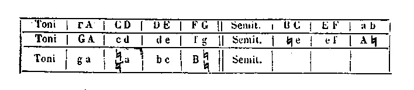
[Col. 0787C] Cum enim sicut in uno, ita in aliis, licet mutata voce cantetur, valde tibi proderit talibus figuris studium adhibere, ut si omnes tonos et semitonios semotim discere laborem putas, agnita similitudine velut unum habeas, quatenus ad cantandi peritiam flante Dei Spiritu gnaviter pertingas.
Praeterea cum aliqua vox ad tertiam a se jungitur, duobus hoc modis fieri perhibetur; in ejusmodi enim consonantiis gravior atque acutior, aut tono et semitonio, aut duobus tonis a se invicem dividuntur. Et ea quidem, quae tono et semitonio fit, contractior est hoc modo: Joannes autem cum audisset. Quae vero duobus tonis protensior, ut in hac antiphona prima depositio: Quinque prudentes. Quidquid autem superius de tono et semitonio dictum est, de [Col. 0787D] hoc quoque modo dicitur; nisi quod praesentis modi syllabae non adeo, ut superiores, multiplicari inveniuntur. Sed quantum hic modus illo est protensior, tantum in replicationem et multiplicationem eveniet rarior.
Cum autem vox ad quartam a se conjungitur, propter diatessaron dignitatem omnibus superiorum syllabarum modulis decoratur. Sed sicut de ea quae est ad tertiam, diximus, ita quoque de hac perhibemus. Quare quantum ea, quae fit tono vel semitonio, [Col. 0788C] aut ea quae fit duobus tonis, aut tono et semitonio, videtur expansior, tantum multiplicatione ac replicatione rariori contenta est. Hujusmodi enim syllabam saepius repetere absque alterius interpositione minime debemus. Distat enim in hujusmodi syllaba vox ab altera duobus tonis et semitonio, hoc est, diatessaron symphonia; ut est hujusmodi depositio: Spiritus sanctus. Ut autem tribus tonis inter se differant, nec sonoritatis, nec auctoritate regulae fulcitur; id est, cum tribus tonis et semitonio ab illa separatur. Nam ut duobus tonis et duobus semitoniis id fiat, rarissime invenitur; ponitur enim hujusmodi syllaba simplex duplicata autem raro, hoc modo: Primum quaerite. Fit autem syllaba et tribus vocibus, sed in singulos tantum motus [Col. 0788D] habentibus, tum continua tum interrupta. Et continua quidem est, quoniam ipsae tres voces ut in monochordo positae sunt, ita in una syllaba ponuntur, nulla in medio remanente: quod in ea syllaba. in quatuor ad tertiam jungitur, notatur, si secunda quae remansit media assumatur. Unde fit, ut sicut in illa syllaba aut duo toni aut tonus et semitonius differentiam facerent, ita et in hac quoque eaedem duae species inveniantur, tres enim continuae voces aut duos tonos, aut tonum et semitonium duobus [Col. 0789A] suis spatiis claudunt. In utraque autem specie sex modos praedicta syllaba continebit. Nam cum a prima incipitur, aut ad secundam et tertiam directe ascendit: aut prius ad tertiam ac deinde ad secundam venit, fiuntque modi duo. Item cum a secunda incipitur, aut ad primam prius, et post ad tertiam, sive prius ad tertiam et post ad primam vadens, modos facit iterum duos. Cum vero a tertia incipitur, sive prius ad primam ac deinde ad secundam, sive prius ad secundam ac deinde ad primam procedens modos reddit alios duos. Ad quamcunque enim harum syllabarum quemlibet unum motum adjeceris, duas syllabas binis motibus constantes, sive ut quidam volunt, quaternis motibus musicam fieri syllabam ac tribus vocibus pernotabis. Si vero [Col. 0789B] alium adjeceris motum, ut sint motus quinque. Sic in duas syllabas partietur, ut altera duos, altera motus habeat ternos, atque hoc tandiu concrescet, usque dum hujusmodi syllabae plerumque duae, plerumque tres aut plures fiant.
Interrupta autem ternis vocibus syllaba fit, cum ita tres voces disponuntur, ut a graviore in acutiorem una vel duae voces intactae praetermittantur, id est, cum gravior atque altior diatessaron aut diapente constituunt. Nam tribus sonantibus aut una intermittitur, et sunt quatuor: aut duae intermittuntur, et intermissae simul atque sonantes quinque numerantur. Quatuor autem et quinque voces tum jure consistunt, cum diatessaron et diapente conficiunt.
[Col. 0789C] Ut igitur superflua de syllabarum positione praetermittamus, hoc tibi de earum cognitione sufficiet, quod quaelibet syllaba duabus vel tribus vocibus constans diatessaron et diapente nunquam excedit. Si enim duarum vocum fuerit, si duas alias intermiserit, in diatessaron manebit: si vero tres intermiserit, in diapente hoc fiet et duae sonantes et tres intermissae quinque numerantur. Quod si trium vocum fuerit, ut superius dictum est, in diatessaron [Col. 0790A] unam, in diapente intermittet duas. Hae praeterea vocum conjunctiones, quibus syllabae constitutae sunt, dum unaquaeque vox sive in depositione sive in elevatione aut ad secundam aut ad tertiam aut ad quartam sive ad quintam jungeretur, similiter, ut in syllabis dictum est, ita et in partibus et distinctionibus observandae sunt, ut finis alicujus partis vel distinctionis secundum praedictos principio modos convenire utrique videantur.
Haec autem pauca de musicis syllabis diximus, ut quam plures varietates consonantiarum paucis fiant vocibus aliquo modo monstraremus, atque ut eum, qui antiphonarium per monochordi litteras notare debet, qualiter eas distribuat, doceremus: sive quia omne, quod dividitur, facile capitur tam usu quam [Col. 0790B] sensu; quod vero indivisum, idem est et confusum, magisque mentem confundit, et ignorantiae tenebris involvit, quam aliqua doctrina imbuat, aut scientiae luce expeditam faciat. Atque haec causa est, propter quam et syllabae et partes ac distinctiones etiam in musica excogitatae sint.
Sed quoniam ex rerum similitudine non parvam scientiam capimus, cum quod in una re fit, et in aliis similiter fieri perpendentes per unam plures cognoscimus, ut quod in locis ipsae, quas diximus, vocum conjunctiones in monochordo similiter fiant, similique modo, licet mutata voce, cantetur, cognoscas; sicut de tono et semitonio superius fecimus, ita nunc de reliquis conjunctionibus vocum, quaecunque similes sunt, his figuris notamus: quarum [Col. 0790C] si Deus agnitionem dedit, nunquam curiositatem hujus operis frustra te arripuisse poenitebis. Et prima figura, quae voces a se tono et semitonio differant, edocebit. Secunda vero de his, quae duobus tonis a se invicem differunt. Tertia de diatessaron, et quarta de diapente curabit. Duplices autem vel triplices figurae propter eam, quam diximus, diapason mirabilem concordiam.
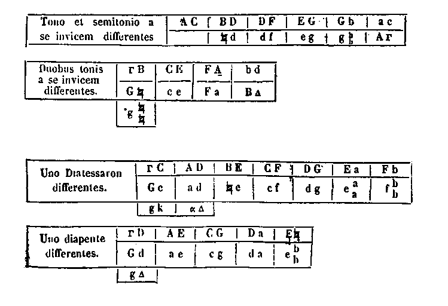
[Col. 0791A] De duarum vocum conjunctione et similitudine his quatuor figuris satis monstratum est. Sed quare in ea, in qua prima a tertia differt, una intermissa est; in ea vero, quae quatuor a se vocibus discrepat, id est, diatessaron, duo intermittuntur; et in ea, quae est diapente, tria, aliis figuris nihil intermittentibus; monstrandum est, quae a se tres voces similiter differant, et de quatuor et de quinque similiter, ut non minus quam syllabarum, partium quoque et distinctionum similitudo patefiat. Sed quia tres voces duo utique intervalla continentes tribus eadem variant modis, prima harum figura erit, quae primo intervallo semitonium, secundo vero tonum continet. In secunda vero primo tonus, ac deinde semitonius [Col. 0792A] inducetur: in tertia vero duorum tonorum spatia continebit hoc modo:
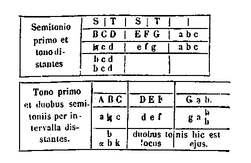
[Col. 0791B] Diatessaron vero, quia duobus tonis et semitonio fit, cum aliquando in primo, aliquando in secundo, [Col. 0792B] aliquando in tertio semitonium ponit, tribus depingitur modis:
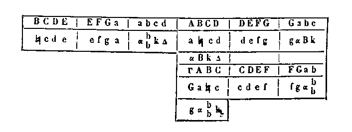
[Col. 0791C] Diapente quoque cum tribus tonis et semitonio fiat, hoc est, quatuor intervalla habeat, tum primus [Col. 0792C] est semitonius, tum secundus, tum tertius, tum quartus hoc modo:
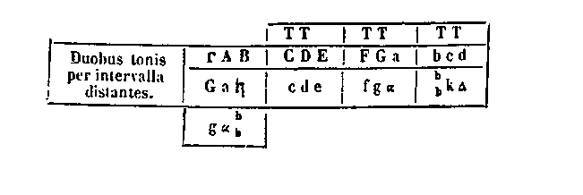
[Col. 0791C] Sed quae in primo vel quarto habet semitonium, cum tres continuos tonos velit, neque naturalem neque regularem partem vel distinctionem videtur [Col. 0792C] habere, cum tres continui toni in nulla veritate consoni esse probentur.
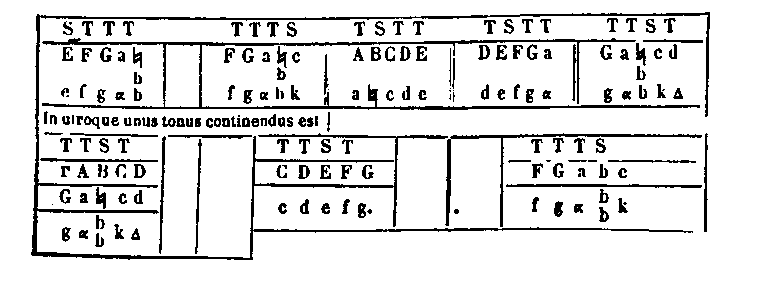
[Col. 0791D] Ad hoc enim haec speculatio valet, quae [ lege quia] eumdem cantum, licet acutiori vel graviori voce, in omnibus similibus facere poteris verbi gratia: Bel-la bis quinis. Iste totus cantus in qualibet [Col. 0792D] diapente, quae duobus tonis et tertio semitonio et tono constat, cantari poterit, nulla in ea depositione vel elevatione mutata.
Diapason quoque eodem modo similes invenimus, [Col. 0793] cum similibus litteris primum et secundum versum per octo voces notamus hoc modo:
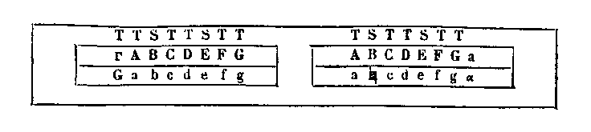
[Col. 0793A] Ex his, quae monstrata sunt, reliquas quoque similitudines prudens lector advertat. Ea enim, quae per se quisquam capere possit, per omnia persequi, otiosum est. Amodo quae de partibus et distinctionibus divinus Spiritus revelare dignabitur, eodem adjuvante potius exemplare quam tractare conemur.
[Col. 0793D] Sequentia ex Isidoro, Hugbaldo, Aureliano et Cassiodoro ab alio quam Ottone fuerunt compilata et adjecta ex Guidone etiam Aretino. Musica ex musis sumpsit principium, ipsaeque musae apo tu muso [Col. 0793D] Vid. Aureliani Musica. appellatae sunt, id est, a quaerendo, quod per ipsas, sicut antiqui voluerunt, vis carminum et vocis modulatio quaereretur. Musica est scientia bene modulandi quatuor consistens partibus, id est, harmonica, rhythmica, metrica, organica. [Col. 0793D] De his conf. Aurelianus. Harmonica est modulatio vocis, et concordia plurimorum sonorum, vel coaptatio, [Col. 0793B] quae decernit in sonis acutum et gravem; et pertinet ad omnes, qui voce propria canunt, et voce et cantibus constat. [Col. 0793D] Haec ex Isidoro. Haec ex animo et corpore motum facit, et ex motu sonum. Ex quo colligitur musica, quae in homine vox appellatur. Vox est aer verberatus, unde et verba dicta. Proprie vox est hominum vel omnium animantium: nam [Col. 0793D] Isidorus ita habet: nam in aliis abusive non [Col. 0794D] proprie sonitus vox vocatur. abusive, non proprie sonitum vocem vocari, ut: vox tubae; vel: fractas ad littora voces; nam proprie, ut: littorei sonant scopuli. Vocis species sunt multae.
Symphonia [Col. 0794D] Haec fere ad verba ex Aureliano desumpta et ex Isidoro. est vocis temperamentum ex gravi et acuto concordantibus sonis, sive in voce, sive in flatu, sive in pulsu: per hanc quippe acutiores gravioresque concordant, ita ut si quis ab [Col. 0793C] ea dissonuerit, sensum auditus offendat. Cui contraria est diaphonia, id est, voces discrepantes vel dissonae. Euphonia est suavitas vocis: haec et melos a suavitate et mele dicta. Diastema est vocis spatium quoddam ex luobus vel pluribus sonis aptatum. Diesis est spatium quoddam et deductiones modulandi, atque vergentes de uno in alterum sonum. Tonus est acuta enuntiatio vocis; est enim barmoniae differentia et quantitas, quae in vocis accentu vel tenore consistit. Accentus [Col. 0794D] Isid. l. c., cantus est inflexio, etc. est inflexio vocis, nam sonus est directus; praecedit autem sonus cantum. Arsis est vocis elevatio, hoc est, initium. Thesis est vocis positio, hoc est, finis. Suaves voces sunt subtiles vel sublimes, et [Col. 0793D] spissae clarae atque acutae. Perspicuae voces sunt, quae longius protrahuntur, ita ut omnem impleant [Col. 0794A] contiguum locum, sicut clangor tubarum. Subtiles voces sunt, quibus [Col. 0794D] Isid., non est spiritus, melius ex contextu. est spiritus, quales infantium vel mulierum vel aegrotantium, sicut in nervis: nam subtilissimae chordae subtiles ac tenues sonos emittunt. Pingues sunt voces, quando spiritus multus simul egreditur, sicut virorum. Acuta vox est tenuis et alta, sicut in cordis videmus. Dura vox est, quae violenter emittit sonum, sicut tonitruum et sicut incudis sonus, quoties durum malleus percutit ferrum. Aspera vox est rauca, et quae dispergitur per [Col. 0794D] Isid. l. c. per minutos et indissimiles pulsus. mutuos et dissimiles pulsus. Caeca vox est, quae mox ut emissa fuerit, conticescit, atque suffocata nequaquam longius producitur, sicut est in fictilibus. Vinnola vox est mollis atque flexibilis, et vinnola dicta a vinno, id est, cincinno [Col. 0794B] molliter flexo. Perfecta autem est vox alta, suavis et clara; alta, ut in sublime sufficiat; clara, ut aures adimpleat; suavis, ut animos audientium blandiat. Si ex his aliquid defuerit, perfecta vox non erit.
Organica est, quae ex flatu consistit in his quae spiritu reflante completa in sonum vocis animantur, ut sunt tubae, fistulae, calami, organa, pandoria, et his similia instrumenta. Inflatilia sunt, quae spiritu reflante completa in sonum vocis animantur, ut sunt organa. Organum est vocabulum generale omnium vasorum musicorum. Tuba primum a Tyrrhenis inventa, quae adhibebatur non solum in praeliis, sed in omnibus festis diebus. Calamus arbor [Col. 0794C] est a calendo, id est, findendo voces, vocata. Fistula dicta, quod vocem emittat: fon ( φώνη, phone) Graece, Latine vox; stolia missa. Haec a Mercurio dicitur inventa, vel a Fauno, qui Graece Pannon dicitur, vel ab Ido pastore Agrigentino ex Sicilia. [Col. 0794D] Vide in Isidorum. Pandoria ab inventore vocata. Fuit enim apud gentiles Pan deus pastoralis, qui primum dispares calamos ad cantum studiose aptavit.
Rhythmica est, quae pulsu digitorum numeros recipit, et requirit in concursione verborum [ Al., incursionem requirit verborum], utrum bene sonus an male cohaereat; pertinens ad nervos et pulsus, tensibilia chordarum fila sub arte religata, quae ad modum plectri percussa mulcent aurium delectabiliter sensum. In quibus sunt species cithararum [Col. 0794D] diversarum. Citharae et psalterii repertor exstitit Tubal de stirpe Cain: vel Apollo secundum [Col. 0795A] Graecos. Citharae forma initio pectori humano similis fuisse traditur, quoniam uti vox ex pectore, ita ex ipsa cantus fiat: nam pectus Dorica lingua cithara dicitur. Hanc veteres fidiculam vel fidicen nominaverunt. Antiqua cithara septem chordis erat, et septem habebat discrimina vocum, ideo quod nulla chorda vicinae chordae similem sonum reddebat. Chorda a corde dicta, quia sicut est pulsus cordis in pectore, ita pulsus chordae in cithara. Has primum Mercurius instituit. Lyram quoque hoc modo invenit: cum regrediens Nilus in suos meatus varia animalia reliquisset in campis, relicta [Col. 0796A] est et testudo; quae cum putrefacta esset, et nervi ejus extenti intra corium remansissent, a Mercurio percussa sonum dedit: ad cujus speciem Mercurius lyram fecit. Percussionales sunt acitabula aenea vel argentea, quae percussa suavem reddunt tintinnum. Sistrum Isis regina Aegyptiorum invenit, et ab ea dictum.
Metrica est, quae mensuras diversorum metrorum probabili ratione cognoscit. Authenticus protus, magister vel auctor primus: deuterus secundus: tritus tertius: tetrardus quartus. Plagi pars vel inferiores eorum. Parapter circumaequalis.
[Col. 0795B] Sesquialtera proportio est, quando numerus major continet in se totum numerum minorem et ejus alteram partem, ut VI ad VIII. Sesquiquarta proportio est, quando major numerus continet in se totum minorem numerum et ejus quartam partem, ut XX ad XXV. Sesquisexta proportio est, quando major numerus continet in se totum minorem numerum et ejus sextam partem, ut XXX ad XXXV. Sesquioctava proportio est, quando major numerus totum in se continet minorem numerum et ejus octavam partem, ut LXXII ad LXXXI. Sesquitertia proportio est, quando major numerus continet in se totum minorem et ejus tertiam partem, ut XVI ad XII. Sesquiquinta proportio est, quando major numerus continet in se totum minorem et ejus quintam partem, ut XXXVI ad XXX. Sesquiseptima proportio [Col. 0795C] est, quando major numerus continet in se totum minorem et ejus septimam partem, ut LXIV ad LVI. Sesquinona proportio est, quando major numerus continet in se totum minorem et ejus nonam partem, ut C ad XC.
Sit tabula ad latitudinem longitudine distincta campis, super qua ex alterutra parte disponantur in ultimis locis omnes species trium generum, multiplicis, superparticularis et superpartientis, usque ad decuplam proportionem, ita ut hinc appareant quae denominationem habent ex pari, et hinc quae ex impari: octo enim minores albi ex genere proponantur multiplici, dupli, quadrupli, sescupli, [Col. 0795D] octupli. His opponantur octo minores nigri ejusdem generis, tripli, quincupli, septupli, nonupli. Retro minores albos octo existant rubri ex genere superparticulari, ita ut sesquialteri adhaereant duplis, sesquiquarti quadruplis, sesquisexti sescuplis, sesquioctavi octuplis. Item retro minores nigros octo [Col. 0796B] existant majores albi ex genere superparticulari, ut sesquitertii juncti sint triplis, sesquiquinti quincuplis, sesquiseptimi septuplis, sesquinoni nonuplis. Retro rubros octo existant minores nigri ex genere superpartienti, ut superbipartientes juncti sint sesquialteris, superquadripartientes sesquiquartis, supersesquipartientes sesquisextis, superoctipartientes sesquioctavis. Item retro albi minores octo existant ex genere superpartienti, ut supertripartientes adhaereant sesquitertiis, superquinquepartientes sesquiquintis, superseptipartientes sesquiseptimis, supernonipartientes sesquinonis.
His ita dispositis legitimi fiant tractus ex alterutra parte alternatim, ut multiplices trahantur in secundum ante retro, dextrorsum, sinistrorsum, angulariter: superparticulares in tertium, superpartientes [Col. 0796C] in quartum. Quicunque numerus contrariae partis numerum in suo legitimo cursu offendit, illum qui sit ejusdem quantitatis auferat. Si numerus circumponitur contrariae partis, qui multiplicati et compositi efficiant circumpositum, auferatur. Quicunque contrariae partis numerum sic offendit, ut quantitas interjacentium camporum in se multiplicata contrarii numeri reddat summam, et auferat. Tali praedae subjacent omnes pariter partes, aut pariter impares, vel secundi et compositi; sed primi et compositi vagentur tuti, non ita sint adversariis circumsepti, ut per legitimos cursus non possint evadere. Hanc foveam arithmeticam incidentes auferant.
[Col. 0796D] In illa parte, ubi ex pari habent denominatas proportiones, est XCI, pyramis: quam si sua basis XXXVI, quae militat in adversariis castris, per legitimum tractum aut basis latera cum quantitate camporum interjacentium multiplicata basim efficientia offendant, auferant. Ita fiat de CXC, pyramide [Col. 0797A] ter curta, cujus basis LXIV. Non solum his basibus XXXVI et LXIV pyramides auferantur, sed quicunque numeri cum quantitate spatiorum multiplicati easdem bases efficiant, auferant pyramides, et simul omnes tetragonos, quibus constant.
Qui tendit ad victoriam, summopere studeat in capite adversarii maximam et perfectam harmoniam constituere, quae quatuor constans terminis caeteras in se continet tres, geometricam, arithmeticam, harmonicam, et insuper proportiones omnium musicarum symphoniarum. Si haec fieri non possit, terminis ejus per praedam non acquisitis aut per incuriam perditis, sufficiat ad victoriam arithmetica et harmonica, quarum utraque ex tribus constans terminis, maximo, medio, minimo; sive per angulos [Col. 0797B] fiat in directum. Non prius victoria tituletur, dum alienus aliquis terminos earum possit interrumpere. Qui primus ponitur, indicet adversario, illum nec licere postea ex illo loco trahi, nec ab adversario auferri. In utraque termini abundant arithmetici. Harmonicorum per praedam unus acquirendus est: quem primum pones, ex nomine indices adversario, in tali cautione pones, ut illum adhuc nullus ponendorum possit interrepere.
Nemo existimet me inconfuse et inordinate hos calculos posuisse: sed memor praeceptorum trium Boetii, quibus hunc conflictum secundum eadem me posuisse, modo neglecto propter evitandam numerositatem monadum, diadum, triadum, et caeterarum geniturarum. Qui quaerit binariam monadem, [Col. 0797C] si ternariam triplicet, si quaternariam quadruplicet, si quinariam quintuplicet, si senariam sescuplicet, ab hostibus undique circumventus captivatur unus, quatuor cum pyramide cadunt: aliter quatuor obsideri possunt. Senarius per ternarium in secundo campo cadit: octonarius per adjunctos, videlicet quinque et tres: sextemdecim per novem et septem: triginta sex per novenarium in quarto, sive eadem quontitate: sexaginta quatuor eadem quantitate, sive per sexdecim in quarto: novenarius per ternarium in tertio, sive eadem quantitate: viginti quinque per quinque in quinto: quindecim per quinarium in tertio: quadraginta duo per septenarium in sexto: quadraginta novem in septimo: septuaginta duo per novenarium in octavo: octoginta [Col. 0797D] et unus per novenarium in nono campo: quindecim per tria in quinto, sive per quinarium in tertio: quadraginta quinque per novenarium in quinto: centum sexaginta novem per tricesimum in quarto, et remanent quadraginta novem: centum quinquaginta tres per viginti quinque in sexto, adjuncto ternario: ducenti octoginta novem per quinquaginta sex in quinto, et remanent novem.
Binarius, quinarius, septenarius ab hostibus circumventi, dum evadere nequeunt, captivantur. Novenarius novenarium in suo legitimo cursu, octoginta unus per novenarium in novenario: sexdecim [Col. 0798A] per quatuor in quarto campo, sive per octonarium: duodecim per binarium in sexto, sive per quaternarium in tertio: triginta sex per senarium in sexto: triginta in quinto: quinquaginta sex per octonarium in septimo: sexaginta quatuor in octavo per octonarium, sive eadem quantitate: nonaginta per novenarium in decimo campo, et per vicenarium in quinto: viginti octo per quaternarium in septimo: quadraginta novem in suo legitimo tractu, sive per adjunctos quadraginta quinque et quatuor: sexaginta sex per adjunctos sexaginta quatuor et duos, sive per sexdecim in quarto, remanente binario: centum viginti unus per sexdecim in septimo, adjuncto novenario: centum viginti per viginti in sexto: ducenti viginti quinque per [Col. 0798B] viginti quinque in nono.
Sunt numeri, [Col. 0797D] Haec ex Isidoro ad verbum fere desumpta sunt. qui consonantias creant, vel per quos ipsae discernuntur consonantiae, tantummodo sex, id est, epitritus, hemiolius, duplaris, triplaris, quadruplaris et epogdous. Est autem epitritus, cum de duobus numeris major habet totum minorem, et insuper ejus tertiam partem, ut sunt quatuor ad tres; nam in quatuor sunt tres, et tertia pars trium, id est, unitas. De hoc nascitur symphonia, quae in musica appellatur diatessaron. Hemiolius est, cum de duobus numeris major habet minorem et insuper ejus medietatem, ut sunt tria ad duo; nam in tribus sunt duo, et media pars duorum, unitas. Appellatur hic numerus in arithmetica [Col. 0798C] sesquialtera, sed diapason [Col. 0798D] Melius ex Isidoro diapente. symphonia vocatur in musica. Duplaris numerus est, cum de duobus numeris minor in majorem bis numeratur, ut sunt quatuor ad duo. Ex hoc duplari nascitur symphonia, cui nomen est diapason. Triplaris autem, cum de duobus numeris minor ter in majorem numeratur, ut sunt tria ad unum. Ex hoc triplari nascitur symphonia, quae dicitur diapason et diapente. Quadruplaris vero numerus est, cum de duobus numeris minor in majorem quater numeratur, ut sunt quatuor ad unum: qui numerus facit symphoniam, quae dicitur bis diapason. Epogdous numerus est, qui intra se habet numerum minorem, et ejus octavam partem, ut sunt novem ad octo; quia in novenario sunt octo, et insuper octava pars, id est, unitas.
[Col. 0798D] Sonum vero tonum minorem, quem veteres semitonium vocant. Sed non ita accipiendum est, ut dimidius tonus computetur, quia nec semivocalem in litteris pro medietate vocalis accipimus. Deinde tonus per naturam sui in duo aequaliter dividi non potest: cum enim ex novenario numero constet, novem enim nunquam [Col. 0798D] Isid., novem a quatuor nunquam, etc. aequaliter dividuntur, tonus dividi in duas medietates non (non omitt. ) recusat; sed semitonium vocaverunt sonum a tono minorem, quem tam parvo distare comprehensum est, quantum hi numeri inter se distant, id est, ducenti quinquaginta tres et ducenti quinquaginta sex. [Col. 0799A] Hoc similiter [Col. 0799D] Isid., semitonium. Pythagorici quidem veteres diesim nominabant, subsequens sonum se minorem diesi constituit nominandum. Plato semitonium lima vocitavit.
Hae sunt partes, in quibus omnis musica resolvitur. Sunt igitur quinque symphoniae, diapason, diatessaron, diapente, diatessaron haec et diapente, bis diapason. Constituunt [consistunt] itaque omnes musicae consonantiae aut in duplici aut in tripla aut in quadrupla, aut in sesquialtera, aut in sesquitertia numerorum proportione. Quae autem vocatur in numeris sesquitertia, diatessaron in melodia: quae autem in numeris sesquialtera, diapente vocatur in vocibus: quae dupla in numeris, diapason in consonantiis: tripla vero diapente ac diapason: quadrupla [Col. 0799B] autem bis diapason. Agnoscat autem diligens lector, quod consonantiae consonantiis superpositae alias quidem consonantias effecerunt: nam diapente et diatessaron junctae diapason creant [Col. 0800D] Hucusque ex Isidoro. .
Qui velit definitivam victoriam acquirere, ita ut numeri universitas non possit diutius rebellare, studeat modis omnibus aliquam harmonicam medietatem facere ultra direptoriam lineam, id est, in regno adversarii. Quam in quo loco agere praecogites cautissima loca, in quibus tuos, qui debeant triumphare, ponas, prius ut aliquibus tuis obsideas, aut aliis tibi [Col. 0800A] innoxiis obsessa praevideas, ut nullus ex adversariis possit interrumpere: nam debes contrario indicare, illumque primum ad faciendam victoriam ponas, ut cum sit minimus aut medius aut maximus, et illum ex eo loco nusquam trahendi licentiam habeas, sed alios duos quanto citius possis appone.
Quid sit medietas, initio dicam. Tres numeros debes coadunare tali proportione, ut eadem differentia sit inter medium et maximum, quae est inter minimum et medium, ut exempli causa est inter 4, 6 et 8. Nam inter 8 et 6 interest 2; similiter inter 6 et 4; inter novem autem et duodecim et quindecim est differentia ternarius. Ubicunque tuorum propriorum non habeas tantum, ut possis aliquam medietatem facere, prius per rapinam aliquem acquire, [Col. 0800B] quem ponas in locum ejus, qui tibi desit, verbi gratia: si velis ex paribus medietatem facere illam, in qua tibi XII sit necessarius, rape eum prius per VI, aut per IV, aut per II, et serva eum, donec indigeas ejus, et cum posueris IX et XV, dimitte isti locum medium, et pone XII, illuc tam potestative, ac si sit tuus, XCI pyramis perfecta. Haec pyramis rapitur per XII super tres campos, aut per IX super quatuor campos, aut per XXXVI super tres campos, id est, in suo legitimo tractu, quia comes est, et ejus basis est.
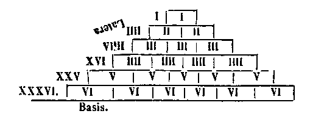
Pyramis ex parte parium, id est XCI, tollenda est per XII super campos tres; ter enim XII faciunt XXXVI, qui est basis XCI. Aut rapitur per IX super quatuor campos; quater IX faciunt XXXVI. Cum enim traxeris duodecim contra pyramidem [Col. 0800C] XCI; donec in campos ad ipsam habeas, dic, ter duodecim faciunt XXXVI, et aufer imprimis pyramidem XCI, et dein basin ejus XXXVI, et latera basis, id est, omnes numeros, qui infra senarium numerum per semet ipsosmultiplicantur, id est XXV, XVI, IX, IV, II. Victoria pyramidum ex victoria fit.
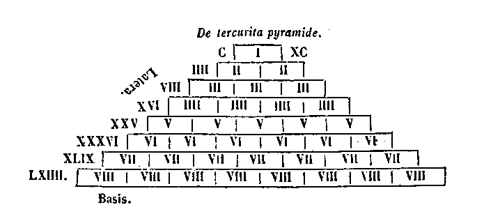
[Col. 0799D] Basis.
Hanc pyramidem CXC rapit VIII per VIII campos, aut per XVI, super IV campos, vel basis ejus LXIV rapit ipsam pyramidem a proximo campo, quia est pes pyramidis tercurtae CXC.
Pyramis ex impari, id est CXC, debet auferri [Col. 0800D] cum octo super octo campos; octies enim octo faciunt LXIV., quod est basis ejusdem pyramidis: aut rapitur cum XVI super quatuor campos; nam quater XVI faciunt item LXIV, si tibi copia fiat, ita XVI aut VIII contra pyramidem posse trahere. Ut cum illis possis hanc multiplicationem facere in pyramidem, aufer ipsam pyramidem et basim ejus, cujus [Col. 0801A] est ista multiplicatio LXIV, et simul tolle latera basis, id est omnes numeros, qui infra octonarium per se multiplicantur, id est XLIX; XXXVI, XXV, XVI; nam septies septem faciunt XLIX, sexies sex XXXVI, quinquies quinque XXV, quater quatuor faciunt XVI, ideo per se multiplicantur. Pyramis non potest per ullum numerum multiplicari aut circumponi, ideo debet tolli per multiplicationem suae basis. [Col. 0802A] Tres residui numeri I, III, II, ideo non numerantur in pyramide, quia isti quatuor, id est XLIX, XXXVI, XXV, XVI, basi, id est LXIV, superpositi faciunt ipsam pyramidem CXC. Et quia istis tribus III, II et I, non indiget, dicitur ipsa pyramis ter curta. Luvet scire, qualiter cum minoribus noceas majoribus, non parvipendas has regulas.
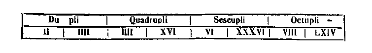
[Col. 0801] Ex parte parium sunt hi pedites. Superparticulares isti, id est medii, qui et comites.
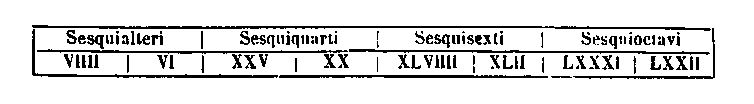
[Col. 0801] Superpartientes dicuntur maximi, qui et duces.
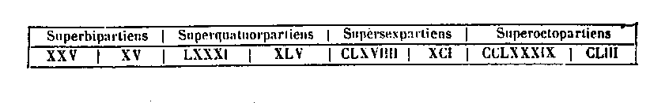
[Col. 0801B] Superbipartiens est XXV ad XV; habet enim XXV, XV in se, et ejus partes duas, id est X. Quae X adde ad XV, et erunt XXV. Superquatuorpartiens est LXXXI ad XLV, quia LXXXI habet XLV in se, et ejus quatuor partes; nam si dividas XLV in quinque partes, unaquaeque pars erit novenarius, quarum unum novenarium abjice, et remanent XXXVI, quae XXXVI si ad XLV addideris, LXXXI faciunt. Supersexpartiens est CLXIX ad XCI; nam [Col. 0802B] si dividas XCI in septem, unaquaeque pars erit XIII; quarum partium XIII unam abjice, et remanent LXXVIII: quae superpone illis XCI, et faciunt CLXIX. Superoctopartiens est CCLXXXIX ad CLIII; quae CLIII si in novem dividas, uniuscujusque partis erit XVII: tunc omitte unum XVII, et remanent CXXXVI. Hos adde ad CLIII, et faciunt CCLXXXIX. Ex parte imparium sunt pedites isti numeri.
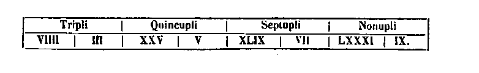
[Col. 0801] Superparticulares sunt isti numeri, id est, medii et comites.
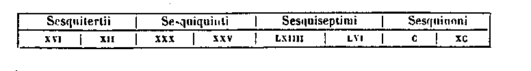
[Col. 0801] Superpartientes sunt isti, id est, medii et maximi, qui et duces.
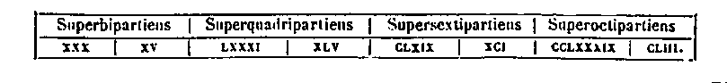
[Col. 0801C] Supertripartiens est XLIX ad XXVIII; quater enim VII faciunt XXVIII: quarum VII unam dimitte, et remanent XXI, quos superpone illis XXVIII, et faciunt XLIX. Superquinque partiens est CXXI ad LXVI. Nam LXVI si diviseris in sex aequales partes, unaquaeque pars erit XI; quarum partium unam XI rejice, et remanent LV: quos si addideris ad LXVI, faciunt CXXI. Superpartiens [Col. 0802C] ( leg. superseptipartiens) est CCXXV ad CXX; nam si CXX in octo partiris, unaquaeque pars erit XV; quarum unam XV omitte, et remanent CV: quos si ad CXX apposueris, erunt CCXXV. Supernonipartiens CCCLXI ad CXC; nam CXC si dividas in decem partes, cujusque partis erit XIX: si unum XIX abjeceris, remanent CLXXI; quos si addas ad CXC, efficiunt CCCLXI.
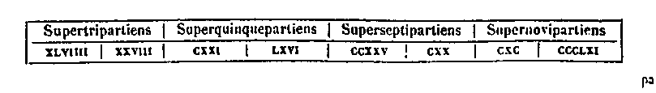
[Col. 0801D] Rhythmimachia Graece, numerorum pugna exponitur Latine. Inde autem rhythmimachia dicitur, quod instar geminae aciei invicem bello certantis in tabula ad hoc apta, velut in quadam campi planitie, par imparque numerus, quasi invicem dissentiunt, et singuli cum suis trium generum speciebus, scilicet [Col. 0802D] multiplicis, superparticularis, superpartientis, usque ad decuplae proportionis summam contrariis partibus propriis progressi e sedibus confligunt. Nam quisquis scire velit, quid in se arithmeticalis contineat pagina, inventi hujus inspice in tabula:
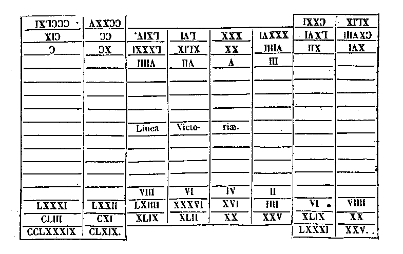
[Col. 0803A] In ea certe invenies argumentum, maximum in se arithmeticae continentem fructum. Recte namque debet dici argumentum, quia et auribus sonat, et ipsa rei veritate probatur argutae mentis inventum: ubi una eademque numerorum, paris videlicet imparisque invicem concorditer discordantis, subtili delectamur certamine. Si enim diligentius inspiciamus intimo mentis intuitu, quod nobis utile lateat numeri vel multiplicatione, clarebit perlucide, in his maximam, ut supra dixi, arithmeticae disciplinam fructificare; in his etenim difficili proportionum ad se invicem habitudine omnem monochordi mensuram, vel etiam omnis cujuscunque musici instrumenti symphoniam consonare: in his quoque rationes in divinae lectionis expositionem multimodis [Col. 0803B] utiles constare. Nos vero velut rudes intellectu, qui hujus novellae plantationis nondum satiamur fructu, ipsius tamen pomi dulce fragrantis per ipsius exteriorem non dulcedinem interiorem palati adhuc esurientis summatim praelibavimus gustu tanti favi mel interius latens, tantae scilicet artis subtilitatem non suppetit facultas singillatim exponere; apum enim repellimur aculeis, ne desiderata valeamus percipere, ipsarum videlicet rhythmimachiae diversarum proportionum gravi rejicimur condilomate, ne ad hujus scientiae secretiora possit pertingere.
Tentemus saltem leviora; quibus haud posse subest prius discutere difficiliora, nec nisu temerario ea, quae ipse hujus artis panditor studiose investigata, ut omnium liberalium artium imbutus scientia, [Col. 0803C] notitiam futurorum stylo haud parvipendendo patefecit, repetamus. Sed salva ipsius personae auctoritate ex ejusdem et scriptionis prato flosculos mellifluos legentes, nostrae ignorantiae utiles recondamus. Caeteras vero rhythmimachiae normas ibidem pleniter subtitulatas memoriae non subtrahamus. Ibi namque praelibati conflictus certamen, si quod libeat, poterit cognoscere: ibi quot generum speciebus hic par in impar numerus distinguatur, valebit inspicere: [Col. 0804A] quot etiam camporum spatiis, vel etiam quas in partes singulas liceat species producere, qui minoris formae, qui rotundae quive quadratae debeant existere; qualiter etiam singuli numeri dum contrariis insidiantur, seipsos metiantur cum camporum intercapedine: ad ultimum, quomodo quis advincere tendens in ipsa numerorum constitutione debeat constituere, sicque ad perfectam victoriam tendere.
His itaque omnibus in praelata lectione certa sede, certo motu, certa victoria fine legitimo dispositis, deterosi [de caetero si] quid restare cernitur intractatum vel nobis minus proficuum, in quo noster titubet affectus, in hoc enucleando, licet stolide, noster jam acuetur effectus. De trium generum speciebus [Col. 0804B] nostra solertia videat, quomodo prima sui multiplicatione crescat; penultima quali ad sese habitudine numero numerum comparet; ultima quomodo sese proportionaliter augeat, et insuper plus reliquis sibi aliquid superaddendo, sui dignitate et numerositate caeteros superexcellat.
Secundum arithmeticam multiplex genus est, cum numerus numero comparatus illum, cui comparatus est, in se habet plusquam semel: hujus generis numeri sunt a pari II, IV, VI, VIII, e totidem nimirum numeris, quos binarius duplo, quaternarius quadruplo, senarius sexcuplo, octonarius octuplo in sese multiplicatos quasi sociali copulatione sibi asciscunt.
Hic notandum quod unitas totius pluralitatis genitrix [Col. 0804C] naturaliter singularis nullam recipiat paritatis et imparitatis sectionem, quia paritate sibi propria caeteris principaliter exstans sui dignitate, minorari vel augeri nesciens unitas perseverat. Et ut ad proposita redeamus, quod superius protulimus exempli causa, ipsius multiplicationis opere apertius expergendo discutiamus sic. Bis duo sunt quatuor; ecce habes duplas, id est, quatuor ad duo; habet enim quaternarius binarium duplo in se. Quater [Col. 0805A] quatuor sunt XVI, ecce quadruplos, id est XVI ad IV; continent namque XVI quater quaternarium in se. Sexies sex sunt XXXVI, ecce sexcuplos, id est, XXXVI ad VI: habent enim XXXVI in se sexies sex. Octies octo sunt LXIV, ecce habes octuplos, id est sexaginta quatuor ad octo; continent namque LXIV in se octies octo. In constitutione autem tabulae horum semper binos, multiplicatorem et multiplicatum conjunctius campis sibi institue, ut verbi gratia IV cum II, XVI cum IV, XXXVI cum VI, LXIV cum VIII, concordantes studeas constituere. Haec breviter memorasse sufficiat de genere multiplici: jam aliquid enucleare conemur de superparticulari
[Col. 0805B] Superparticularis dicitur numerus numero comparatus, quoties major in se continet numerum minorem, et insuper ejus aliquam partem. Si enim major numerus minorem totum habeat, et insuper ejus medium, hemiolios, id est, sesquialter vocatur; si ejus tertiam, sesquitertius. Similiter per omnes numeros, usque dum habeat ejus nonam partem, qui vocatur sesquinonus. Ut autem omnium quatuor proportionum a paribus procedentium priores acquiras numeros, per ipsos pares superius multiplices adjacentes ejus multiplica numeros, hoc est, per II, III, IV, V, VI, VII, per VIII, IX, hoc modo: Bis tres faciunt sex: iste est prior sesquialterae proportionis numerus. Quater V sunt XX, et hic prior sesquiquartae. Sexies septem XLII, hic est [Col. 0805C] prior sesquisextae. Octies novem sunt LXXII, et hic prior sesquioctavae proportionis numerus.
Si vero facilius et naturalius eosdem numeros velis reperire, omnes pares, quos superius in multiplici genere singulos in sese multiplicasti, multiplicatorem et multiplicatum compone sic: ad sesquialteram II et IV junge, et fiunt VI; ad sesquiquartam IV et XVI, et erunt XX; ad sesquisextam VI et XXXVI, et fiunt quadraginta duo; ad sesquioctavam VIII et LXIV, fiunt LXXII. Et quia ipsarum proportionum priores, ut ita dicam, syllabas adeptus es, oportet etiam ut earum tibi acquiras proportionales. Istis igitur, quos tibi acquisisti, numeris singulis totam partem sui adjungere memento, quota [Col. 0805D] fuerit ipsa, de qua agitur, proportio. Verbi gratia: si agitur de sesquialtera, alteram, id est, mediam partem sui adjunge; si de sesquiquarta, quartam: si de sesquisexta, sextam; si de sesquioctava, octavam. Hoc autem, quod dico, sic fiet: senario, quem sesquialterae proportionis priorem adeptus (es), medietatem suam, id est, tres adjice, et fiunt IX, qui est proportionalis ei; novenarius enim habet totum VI in se, et ejus medietatem, id est ternarium. Ecce habes perfectam sesquialteram proportionem, id est IX ad VI. Similiter ad XX, quem sesquiquartae priorem acquisisti, adjunge quartam partem sui, id est V, fiunt XXV, qui est ei proportionalis; habet enim XXV totum XX in se et ejus quartam partem, id [Col. 0806A] est V. Ecce est perfecta sesquiquarta proportio, id est XXV ad XX. Sic de aliis.
Nunc ad superpartientes numeros transeamus. Constat enim quia major numerus minorem duabus tertiis supercrescit, cum dicitur superbipartiens, subaudiri tertias necesse est. Quia igitur a binario oritur superbipartiens, et subaudis tertias, II et III, per eumdem subauditum ternarium multiplica, et quae summa inde excrevit, prior numerus erit in proportione ipsa. Quod si experiri libuerit quomodo geminetur a superparticularibus, nihil refert quin idem tibi crescat numerus. Sesquialteram proportionem VI et IX compone, fiunt XV, qui est prior superpartientis numerus. Huic tertiam partem sui, id est V, bis augebis, et fiunt XXV; haec superbipartiens [Col. 0806B] proportio, id est XXV ad XV. Sesquiquartam XXV et XX insimul pone, fiunt XLV. Eidem sui quintam partem adhibe, erunt LXXXI. Sic de aliis facies, jungendo sesquisextam et octavam invenies. Sunt igitur impares multiplicis generis, ternarius, quinarius, septenarius, novenarius. Hi suos proportionales educent sic: ter ter sunt novem. Isti sunt tripli. Quinquies quinque sunt XXV; isti sunt quincupli, hoc est XXV ad V. Septies VII sunt XLIX, hi sunt septupli, id est XLIX ad VII. Novies novem LXXXI, hi sunt nonupli, id est, LXXXI ad IX.
De variis tamen figuris, quae ibidem multimode disponuntur, pyramides tantum et bases et basis latera in rhythmimachia, quali numero positione [Col. 0806C] fiant, opportunum videtur depromere. Disponuntur itaque rhythmimachia pyramides duae, una a paribus, altera ab imparibus, quarum prior perfecta, altera vocatur ter curta. Perfecta pyramis est XCI; oritur a XXXVI, qui numerus idcirco ejus basis dicitur, eo quod ipsa pyramis quasi columna basi imposita supra basin innitatur. Erigitur autem ipsa pyramis super basi a VI usque ad unitatem, singulis numeris in se multiplicatis hoc modo: sexies VI, XXXVI; quinquies V, XXV; quater quatuor, XVI; ter III, sunt IX; bis duo sunt quatuor; semel unus est unus. Hi omnes numeri in summam coacti fiunt XCI. Haec perfecta pyramis, et, ut Boetius ait, iste numerus, qui horum conjugatorum numerorum est major et ultimus; necesse est enim, ut hujus pyramidis [Col. 0806D] sit basis, id est XXXVI; et quia eadem basis excrescit a senario, ipse senarius, vel omnes numeri, qui ejusdem basis explent summam, basis latera vocantur.
Ter curta autem pyramis, quae a sua basi, id est LXIV, efficitur, a novenario usque ad quaternarium singulis numeris in se multiplicatis sic erigitur. Octies octo, LXIV; septies septem XLIX; sexies sex, XXXVI; quinquies quinque, XXV; quater quatuor, XVI sunt. Omnis ergo iste numerus in summam collectus efficit ter curtam pyramidem CXC, et quia a quaternario ulterius non erigitur; desunt enim tres numeri, id est ter tria, bis duo, semel unus: ideo secundum arithmeticam ter curta vocatur. [Col. 0807A] Sunt autem ipsius basis latera octo, et omnes illi, [Col. 0807A] Forte hic legendum: Omnes illi, qui basis illius efficiunt quantitatem (habent enim basis latera [Col. 0808A] tot unitates in se, quot unitates singulae continent pyramides) in latere finiuntur. qui basis illius efficiunt quantitatem; habet [Col. 0808A] enim basis latera tot unitates in se, quot unitates singulae continent pyramides in latere.
Finiuntur.
[Col. 0807B] Si quis notitiam abaci habere desiderat, necesse est ut in consideratione numeri studeat. Haec ars non a modernis, sed ab antiquis inventa, ideo a multis negligitur, quia numerorum perplexione valde implicatur, ut majorum relatione didicimus. Hujus artis inventorem Pythagoram habemus. Cujus studium itaque in quibusdam est necessarium, ut absque ipsius peritia vix aliquis arithmeticae perfectionem attingat, et calculationis, id est computi, argumenta comprehendat. Quod si hanc artem a paganis traditam sancti doctores otiosam sensissent, nunquam regulas sanctae Ecclesiae necessarias illius auctoritate firmassent. Si quis enim Venerabilis Bedae libros de computo legere voluerit, absque hujus artis notitia parum proficere poterit. Haec in quadrivio, [Col. 0807C] id est, in musica, arithmetica, geometrica, astronomia, ita est necessaria et utilis, ut sine illa pene omnis labor studentium videatur inanis. Hanc antiquitus Graece conscriptam, a Boetio credimus in Latinum translatam. Sed quia liber hujus artis est difficilis legentibus, quasdam regulas . . . . . capientium decerpere inde curavimus.
Haec ars dispositione arcuum distincta ab uno surgens usque ad infinita per denarium numerum accrescit. Unus enim decies multiplicatus decem facit; denarius decies multiplicatus C reddit; centum decies multiplicando mille fiunt; sic per caetera usque ad infinita. Distinctio autem arcuum cum numeris talis est: singularis, decenarius, centenarius, millenarius, decenus millenarius, centenus millenarius, [Col. 0807D] mille millenarius, decies mille millenus, centies mille millenus, millies mille millenus, decies millies mille millenus, centies millies mille millenus.
Consideret autem prudens abacista, quod cum a singulari arcu unus consurgens ad perfectum numerum, quod est C, et a mille iterum incipiens ad centum millia, qui similiter perfectus esse numerus protenditur, terni arcus minores propter expletionem perfecti numeri uno arcu majori continentur. [Col. 0808B] Sic per caetera. Per medium vero arcuum duae lineae sepositae ducuntur, super quas ipse numerus arcuum inscribitur. Infra autem per ternos continuos arcus singularis, decenus, centenus, ob rationem majoris arcus adnotatur. Nomina et figuras characterum jam consideremus. Unitas. [ 1 ] Binarius. [ 2 ] Ternarius. [ 3 ] Quaternarius. [ 4 ] Quinarius. [ 5 ] Senarius. [ 6 ] Septenarius. [ 7 ] Octonarius. [ 8 ] Novenarius. [ 9 [Col. 0807D] Non abludunt admodum cifrae in ms. ab his Arabicis, tantum in ductuum varietate: numerus 1 nihil differt; 2 T repraesentat cum semicirculo in dextra; 3 sigma Graecum cum caudula in se ad dextram conversa; 4 dimidium octonarium horizontalem [Col. 0808D] sectum linea cum caudula item in se conversa; 5 litteram μ ; 6 litteram L cum semicirculo ad dextram in se converso; 7 litteram Λ exhibet; 8 nihil differt; 9 lineola tantum inferius ducta in dextrum latus. ]. [Col. 0808B] In this paragraph, numbers which in Migne are printed above words have been keyed in square brackets after them.
Denarium autem Pythagoras idcirco non posuit, quia unitas post novenarium denarium efficit, quod in sequentibus magis patebit. Hi novem characteres tanta auctoritate fruuntur, ut qualemcunque numerum [Col. 0808C] in abaco quaeras, horum positione cito invenias; si enim mille centum millia invenire cupis, unitate posita in eisdem arcubus sine mora reperies.
Hoc autem diligenter considera, quod quidquid infra X est, digitus vocatur. Quod vero ad X vel ad majores numeros pervenit, ut est XX, XXX, XL, in hac arte articulus appellatur.
Jam ad characteres disponendos veniamus. Quidquid multiplicare volueris, sine summa et fundamento facere non poteris; nullus enim numerus multiplicatur, nisi respectu alterius perpendatur. Summa vocatur, quod in summitate arcuum; fundamentum autem, quidquid inferius disponitur. Et quod ex utroque numero procedit multiplicato, inter duas lineas ponitur. Verbi gratia pone 5 et fit summa [Col. 0808D] in singulari arcu 7 pro fundamento habeas in eodem. Vide, quia isti duo numeri sicut omnes alii sunt reciproci; sive enim dicas quinquies septem, seu septies quinque, idem significat, et faciunt XXXV. Et quod de multiplicatione collegisti, hoc modo disponas: singularis arcus quemcunque multiplicat, in eodem pone digitum in ulteriorem articulum, et pone 5 in eodem 3 ternarium, qui XXX significat in deceno. Hoc autem memoriter tene, quia singularis arcus quem arcum multiplicat, in [Col. 0809A] eodem multiplicationem ponit; decenus in secundo, centenus in tertio, millenus in quarto, decenus millenus in quinto: sic de caeteris. Illud quoque scias, quia digitus, hoc est, omnis numerus infra decem hanc definitionem per 8, articulus vero, hoc est, numerus perfectus, sicut X et XX, in ulteriori arcu transmutatur. Quidquid multiplicare habes, quotquot in summa vel in fundamento ponis, a singulari incipiens omnes per ordinem multiplicare ne neglexeris. Facta autem multiplicatione si ex adunatione characterum articulus, id est major numerus, succreverit, quoties numerus denarius X continetur, hac regula transcendit: quoties ex collectione characterum oritur articulus, in eodem non remanebit. Perspectaque quantitate characterum juxta [Col. 0809B] situm arcuum, qui ex superiori vel inferiori numero, id est ex summa vel fundamento oriatur, facile comprehenditur. Multiplicationis vero ratio talis est, ut a parvo incipiens semper ad majorem numerum proficiat. Quod si multiplicationis rudimentis instructus, et cognitis characteribus, divisionum modos scire satagis, hanc commodam dividendi rationem perspicere ne pigriteris.
Divisiones in abaco tres sunt, simplex, composita, interrupta. Simplex est, ubi unus divisor; composita, ubi duo vel plures divisores per continuos arcus; interrupta vero duo vel plures divisores inter eos uno arcu vacante. Quidquid dividendum est [Col. 0809C] in abaco, in medio ponitur, divisores praeponuntur, denominationes autem, hoc est partes divisae, supponuntur. His ita in abaco dispositis considerare debes in quo arcu locum habeant divisores. Si singularis, sub se ponetur; si decenus, secundabit; si millenus, quadrabit. Et per quot arcus recedunt a singulari, per tot denominationes retro ponunt.
Dispositis vero partibus dividendis, et divisoribus praepositis, quomodo ad dividendum promoveantur divisores, videas. Divisor, si minor vel aequalis sit, supra ponitur; si major, infra. Quod major vel minor sit divisor, industriae tuae facile patebit, quando partibus dividendis praeponitur. Praepositis autem divisoribus ubi accipere debeant, sic considera. [Col. 0809D] Omnis divisor ante se et sub se accipit, retro nunquam Tunc perspiciens, quoties in subjecto numero divisor contineatur, sic pronuntia: verbi gratia: quaternarius 4 quoties est in senario 6 ? Semel, et remanent duo. Quod adverbialiter pronuntiasti, denominationem esse intelligas, et unitatem accipias. Denique considerans, de quo arcu divisor promotus sit, sic interrogo: unde locus? si de primo, respondeatur, a singulari. Sequitur regula: Singularis divisor denominationem sub se ponit, et sic de caeteris. Considera tamen quia, ut praediximus, decenus secundabit, centenus tertiabit, millenus quadrabit, etc. Duo autem, qui de senario remanserunt, denominatione sublata, quia digitus est, et de digito abstractus, in eodem remanet. Si vero digitus [Col. 0810A] de articulo abstrahitur, in secundo retro ponitur. Haec de simplici divisione sufficiant.
Composita autem et interrupta, quia non unum tantum, sed plures divisores habent, a simplici in sequentibus divisionibus dissident. Positis itaque dividendis partibus, et praepositis divisoribus, eadem, qua simplex divisor, regula ascendit, sed sequentes divisores alio modo accipiuntur; cum enim dixeris, verbi gratia: Quaternarius quoties est in senario? denominationem determinans, respondes: Semel, et remanent duo, digitus de digito. Supposita autem denominatione, quae est semel adverbialiter prolatum, quod est I, unitas, sequentibus sic dabis partes. Omnes sequentes divisores accipiunt per multiplicationem [Col. 0810B] sui et partium divisarum accipiunt auferendo. Quae omnia magis unicae vocis alloquio, quam scripta advertuntur. Considerandumque est (quod) in quibusdam divisionibus dicamus: digitus de articulo in secundo, et digitus de digito in eodem quia aliquando articulus de articulo oriatur, quod facile in dispositione characterum cognoscitur. Et haec ratio in composita divisione contingit.
Sed quia interrupta divisio aliquando per tres vel quatuor arcus distinguit, articulum de articulo non in eodem sed in secundo multoties ponit: quod in quantitate numeri cantus abacista leviter deprehendit; si enim centum millia inter XXX et [Col. 0810C] decem dividis, I unitatem in centeno milleno, itemque unitatem in deceno arcu, quod dico, per partes deceni divisoris, cito perspicis: verbi gratia: Ternarius 3 quoties est in decem? Ter, et unus remanet; et vide, quia decenus millenus denominationem in singulari ponens quintabit; digitus autem, hoc est, unum quidem articulo manet, in secundo ponitur. Sequens autem divisor in deceno positus per multiplicationem sui et partium divisarum juxta praedictam accipe, ita, semel tres sunt tres; et considera, quia, quod dividendum est, a deceno divisore in quarto arcu distat, qui est sibi pro milleno, sic profers: tribus ablatis de mille remanent DCCC et XCVII, articulus de articulo in secundo. quia character major, et articulus de articulo.
De divisione et multiplicatione characterum abaci per integras partes, etsi succincte, tamen satis plane tractavimus. Nunc ad divisiones integritatum, id est, minutias veniamus. Omnis unitas I, integrum apud antiquos as vel libra vocatur. As autem habet duodecim uncias, qui numerus paulatim minutus, per divisiones integrarum unciarum multiplices ex se minutias reddit. Una enim de duodecim sublata, quod remanet, deunx vocatur; duobus ablatis dextans conficitur, tribus dodrans, quatuor bisse, quinque sextunx, sex semis, septem quincunx, octo triens, novem quadrans, decem sextans; decem et dimidia ablata sexcuntia. Sic paulatim dividuntur usque ad [Col. 0811A] unciam. Quarum quaedam nomina a Graecis, quaedam autem ab effectu trahuntur. Deunx compositum X demonstrat. Dextans, dodrans et bisse Graecam etymologiam habere videntur. Bisse vero Latine marca dicitur [Col. 0811D] Du Cange h. v. Bisse novem unciis constat. . Septunx a VII unciis componitur. Semis Graece, Latine dimidium dicitur. Quincunx a quinque unciis; triens quia assim tertiat, quadrans quia quartat, sextans quia sextat: sexcuntia sive Graeca sive Latina sit compositio, unciam et dimidiam signat. Ultima autem unciae minutia unciarum duodecima pars assis est.
Hae sunt minutiae assis gradatim concisae, usque ad unciam. Uncia autem cum sit duodecima pars assis, in viginti quatuor particulas conciditur, quarum ultima scrupulus nuncupatur: quarum sicut de [Col. 0811B] asse dictum est, quaedam minutiae ab effectu, quaedam a compositione nomina sortiuntur. Uncia vero XXIV scrupulos habens per medium divisa semiunciam, id est, dimidiam unciam facit. Duella, quae magis Graecam etymologiam redolet, tertia pars unciae est [Col. 0811D] Du Cange Gloss. med. lat., verb. duella. Plura de his vocibus ibidem, et in Pitisci Lex antiquit. suis locis videre est. . Sicilicus, qui apud Graecos et Hebraeos siclus, vel sichel nuncupatur, unciam quartat. Sextula unciam sextat. Dragma [Col. 0811D] Omnino legendum drachma, quarum octo unciam constituunt. , quod Graecum est, octat. Hemisescla, quasi dimidia sextula, duodecima pars unciae constat. Scrupulus autem minutia unciae, eadem ratione, qua as et uncia, sectionem recipit [Col. 0811D] Pitiscus l. c. habet scriptulum, quod est vicema quarta unciae pars, duos habens obolos. Similiter Du Cange h. v. . Scrupulus duos obolos, obolus duos cerates habent, qui in numero ponderum apud veteres ceratus dicitur [Col. 0812D] Isid. l. XVI Orig. c. 24: «Cerates oboli pars media, siliquam habens unam semis; hunc Latinitas semibolum vocat. Cerates autem Graece ( κεράτιον ) Latine siliqua cornuum interpretatur. Obolus siliquis tribus appenditur, habens cerates duos, calcos quatuor. Fiebat enim olim ex aere ad instar sagittae, unde et nomen a Graecis accepit, hoc est sagitta.» Vid. Pitisc. V. Ceratium. . Scrupulus secundus habens obolos, quatuor cerates, sex siliquas, continet [Col. 0811C] octo calcos, qui calcus ultimus est in minutiis. De asse in minutiis dictum est, et adhuc dicendum.
Notet cautus abacista tres species concisionum in asse factas. Prima est ab integra unitate, id est, asse per congruas particulas usque ad unciam: secunda ab uncia usque ad scrupulum: tertia a scrupulo, qui a nomine, quod scrupulus est, derivatur, usque ad calcum. Sed quia haec vocabula minutiarum moderni non frequentant, paulatim notitia eorum fere periit, licet in multis philosophorum scriptis usus admodum illorum necessarius sit: sed et divina pagina tam Veteris quam Novi Testamenti minutiarum notitiam in multis locis requirit.
Jam ad positionem earum in abaco veniamus. Si [Col. 0811D] mille argenteos et unum inter mille milites dividere vis, unitatem in milleno arcu pro divisoribus ponis, et iterum in milleno unitatem et unitatem in singulari pro dividendis partibus colligis. Et cum dicis: Quoties est unitas in unitate? respondes, Semel, et nihil remanet. Dicta autem regula millenus divisor denominationem quartabit, eamdem unitatem [Col. 0812A] in singulari arcu supponis. Denuo autem qui in singulari est mille per integras partes nihil accipit; si enim unus totum accipit, aliis nihil relinquitur. Unde unum, quod remanet, inter mille dividere vis, cum per integras partes non liceat, per minutias hoc facere poteris. In quo ad memoriam reducas illam regulam, quae dicit, quoties ex collectis characteribus oritur articulus, in eodem non remanebit; sed et illam omnino perpende, in qua dicitur: Divisor ante se et sub se accipit, retro nunquam.
Patet enim, si per articulos minutiarum unitas, quae sedet in singulari, usque ad millenum arcum, ubi sunt divisores, non ascendit, dividendi ratio nihil agit. Quapropter studeas, ut usque ad praedictum arcum unitatem minuendo per articulos trahas, [Col. 0812B] verbi gratia: As habet uncias duodecim. Reduc ad memoriam, quod omnis numerus infra decem digitus, supra decem vero articulus dicitur. Et cum duodecim uncias as habeat, X, qui est articulus, in deceno arcu ponas. Duae unciae, id est sextans, in singulari remanent, unciamque, quae sedet in dexo, per articulos in centenum transpone ita: uncia XXIV scrupulos habet. XX, qui est articulus, in centenum transponas, et quatuor, qui est digitus, ibidem dimittas. Et cum nondum habeat divisor, quid sub se accipiat, ad millenum, si potes, aliquid transferas. In centeno sunt duo scrupuli. Scrupulus habet VI siliquas; et si dicis bis sex, XII siliquae sunt. Decem pro articulo ponis, duae siliquae remanent. Et quia jam habet divisor, quid sub se accipiat, [Col. 0812C] dicas, millenus divisor denominationem quartabit, et siliquas in singulari supponas, sextantem vero, qui est in singulari, promoveas ita: Duae unciae habent XLVIII scrupulos; XL pro articulo ad decenum transponas, digitum, id est VIII scrupulos, ibidem dimittas. Octo vero scrupulos adhuc de singulari transferens, octo scrupulos per octavum multiplices; scrupulus enim octo calcos habet. Octies octo sunt LXIV. Pro LX calculis, qui est articulus, obolum et ceratem in deceno ponas: pro quatuor calculis obolum relinquas, et facta est divisio. Et ne forte suspicio tibi incidat de partibus relictis, quod adhuc ascendere possint, causa exercendi ingenium probes, videasque quantum per articulos [Col. 0812D] ascendant. Obolus, qui est in singulari, cum per inferiores minutias articulum efficere non possit, ibidem remanebit. In deceno sunt octo scrupuli, et cum scrupulus octo calcos, si octo per octonarium multiplices, LXIV invenies. LX calcis, qui est articulus, in centeno translatis, obolum et ceratem ponis, et pro quatuor, qui sunt digitus, obolum relinquis: [Col. 0813A] iterum de centeno transponere poteris. Duo oboli faciunt octo calcos et cerates duas, qui simul faciunt X, pro quibus calcum in centeno pones. In centeno sunt vero obolus et cerates, duae siliquae et calcus: quae quia articulum non faciunt, ascendere nequeunt, et cum divisor sub se nihil habeat, neque usque ad sedem divisoris aliqua particula minutiarum per articulos ducta valeat pervenire, qui hujus artis sciolus est, divisionem factam intelligat esse.
Facta autem divisione recolligendo characteres, utrumne bene diviseris, probes. Siliqua, quae est sexta pars scrupuli in singulari posita inter mille partem unicuique contingit. Et si dicis: Semel unus unus est, siliquas in milleno ponis, addendo regulam: millenus quemcunque multiplicat; in quarto [Col. 0813B] pone digitum, et ut recolligendo omnes characteres in assim redigas, per continuos arcus gradatim descendas. Siliqua, quae est in milleno, ad centenum significat X; de decem siliquis sex faciunt scrupulum, tres obolum, et una superest. Eadem ratione omnes centum characteres ad decenum reducas. De decem calcis octo faciunt scrupulum, duo ceratem, tres siliquas pro obolo accipiens, et de X obolis scrupulos quinque faciens in decenum mutas.
Decem cerates hemisesclam et obolum faciunt, XX oboli et X scrupuli faciunt semunciam et duellam: itidem de deceno ad singularem facias. Decem cerates faciunt hemisesclam et obolum, X oboli faciunt quinque scrupulos. X hemisesclae et viginti hemisesclae, quae simul faciunt XL, uncias et duas [Col. 0813C] duellas reddunt. Decem duellae et decem sextulae cum decem semunciis sextantem efficiunt. Et quia ad singularem arcum reversus es, consideratis, quae collegisti, assim invenies. Et quia grave est hoc, cordetenus perpende: hoc pro certo scias, si autem non fallis, ab arte falleris.
Nota autem, quia sicut in integris unitatibus est triplex modus divisionum, sic in minutiis assium. Quod si animum tuum movet in aliquo, quare in divisione minutiarum aliquid remaneat, tali ratione considera. Si notitiam dividendi secundum artem abaci caute perpendis, omnis divisor aequalem sibi numerum, vel majorem se dividere potest, minorem autem nunquam per integras uncias. Si enim dicis - Mille quoties est in quingentis? satis tibi patet, [Col. 0813D] quod nullo modo ars patitur hunc modum divisionis. Et quia hoc per integras partes nequaquam facere praevales, ad sectionem unciarum recurrere debes, et quandiu per majores minutias partire poteris, divisoribus juxta modum suum partes dabis. Post uncias vero ad concisiones unciarum, ad scrupulos venis, et itidem scrupulos ad majores minutias reducis. [Col. 0814A] Et quandiu paulatim minuendo minutissimas divisoribus poteris coaequare, tandiu divisionem protende. Si vero portiones divisoribus nequeunt coaequari, quidquid de partibus remanet, ultra non poterit dividi. Nec mirandum est aliquid de minutiis superesse, cum alias artes in multis videam vacillare. Quamvis enim grammatica amplioribus sit discussa philosophis, tamen ut caeterae artes aliquid habet imperfectionis, scilicet et in generibus et in personis. Cum enim coelum in singulari generis sit neutri, in plurali fit masculini. Et ut paucis concludam, qui in septem artibus vult studere, plurima perfectione carentia poterit invenire; nam sicut est antiquum proverbium: Nihil est omni parte beatum. Rerum vero Parens, qui solus cuncta tuetur cum [Col. 0814B] sit cunctipotens, perfectus solus habetur.
- As habet duas semisses.
- Tres trientes,
- Quatuor quadrantes
- Sex sextantes,
- Octo sexcuntias,
- Duodecim uncias.
- XXIV semuncias,
- XXXVI duellas,
- XLVIII Siliquas [ Leg. sicilicos, vel siclos]
- LXXII Sextulas,
- XCVI Dragmas [ Leg. drachmas],
- CXLIV hemisesclas,
- CCLXXVIII scrupulos.
- DLXXVI obolos,
- [Col. 0814C] MCLII cerates,
- MDCCXXVIII siliquas.
- MMCCCIV calculos.
- Semisse, secunda pars assis,
- Triens, tertia pars,
- Quadrans, quarta,
- Sextans, sexta,
- Sexcuncia, octava,
- Uncia, duodecima,
- Semuncia, vigesima quarta
- Duella, tricesima sexta.
- Sicilicus, quadragesima octava.
- Sextula, septuagesima secunda.
- Dragma [ Leg. drachmas], nonagesima sexta.
- Hemisescla, centesima quadragesima quarta.
- [Col. 0814D] Scrupulus [In prioribus CCLXXVIII]
- Obolus DLXXVI t a . [CCLXXXVIII v a .]
- Cerates MCLII d a .
- Siliqua MDCCXXVIII v a .
Calculus est bis millesima trecentesima [ Superius additur quarta] pars assis.
[Col. 0815A] In primis a capite juxta primum plectrum, infra usque ad aliud plectrum, ponitur post rotulum, per duos passus metire, et in primo passu pone C secundus finit. AC ad finem metire per tria, et quartus retro reddit G a G ad finem per tres, et quartus retro pone D a D ad finem per III, et in primo passu pone a. De a ad finem pone III, et in primo retro pone E, et ab E ad finem per III, in primo passu pone
In mensuris fistularum istae sunt voces CDEFG a [Col. 0816A]
De translatione B. Martini
Venerabili et sancto patri ODONI Dei gratia Cluniacensi abbati, FULCO Bonus, comes Andegavorum, salutem et debitam reverentiam [Col. 0815B] Fulco Bonus comes Andegavorum. Fulconis Rufi filius, qui sanctum Odonem nutrivit, uti docet Historia consulum Andegavensium, et nos alibi jam notavimus. Imo mater S. Odonis Fulconem ipsum jactavit in infantiae primordio. Sic enim idem in fine [Col. 0816B] epistolae: «Quod si jus in amicum pro convictus gratia, pro lactentis infantiae participatione, liceret exigere, nihil credo mihi negaretis, quem mater in lactis participem accivit?» Unde et Odo se collactaneum ejus vocat in epistola sequenti. .
Solent quodam favoris praeludio comparare benevolentiam, qui non satis praesumunt de amici conscientia. Ego autem, pater venerabilis, vobis scribens, nequaquam id mihi esse necessarium reputavi. Praesumo enim me vobis conjunctissimum compage duntaxat et glutino charitatis: quamvis [Col. 0816B] respectu vestri minor sim dignitate, meritis autem minimus [ in impress. quamvis respectu vestri minor sum; in dignitate autem judicis minimus]. Non enim semper aequalia sociantur. Certe junguntur in ejusdem constructione tabernaculi saga cilicina cortinis subtilissimis (Exod. XXVI, 7) . In arca Noe immitis bellua cum homine mansueto exitialibus undis eripitur (Gen. VII, 8) . Pulchritudinem creaturarum et formica exornat, et angelus. Et, ut domestico abutar exemplo, pulverulentis pedibus lutum oculorum positum, sublime in nobis ipsis [Col. 0817A] exhibet ministerium. Sed quorum haec tam longo repetita principio? Nempe ut astruam exemplis, et confirmem rationibus, saepe comiti disparia, et sublimia humilibus debere condescendere. Condescendat igitur meae parvitati vestra sublimitas, et praestate quod postulo, qui hoc ipsum praestitistis, ut postulare auderem. Meminit certe, non ambigo, vestra sancta paternitas, quam dulcibus eloquiis animam meam esurientem reficere solebatis: ut de sancto et mellifluo ore vestro illius ignis saepius ardorem in me transfundi et accendi sentirem, quem Dominus Jesus misit in terra, et voluit vehementer accendi. Inter caetera vero vitae aeternae colloquia, de communi patrono nostro, videlicet Martino, frequens erat nobis et jocunda fabulatio. Porro inter [Col. 0817B] alia mihi retulistis reperisse vos in quibusdam veteribus schedulis impolito exaratum sermone, qualiter ejusdem beati Martini sacratissimum corpus ob barbarorum incursus in Burgundiam delatum fuit, qualiterque exinde reddita pace Ecclesiae ad propriam urbem relatum. Ego autem et viri sancti amore, et piae vestrae collocutionis accensus desiderio, rogavi saepius, et nunc iterum rogo, quatenus antiquitatis historiae fide servata, suam in vestro dictamine rem ipsam explanetis: quo et tam pia narratione aedificetur Ecclesia, et filii pater expleat desiderium. Quod si ego tanti patris filius appellari non merui, nec merita ad id quod postulo, impetrandum sufficiunt: certe vel dignitas materiae, vel Ecclesiae utilitas obtinebit, quod poscentis vilitas [Col. 0817C] impetrare non meruit. Martinus enim materia, utilitas Ecclesiarum aedificatio est. Vos autem quid Martino negabitis? Quid aedificationis Ecclesiis subtrahetis? Eia ergo, agite: quod et amicus postulat, Martino praestat, et Ecclesiam aedificat. Quod si jus in amicum pro convictus gratia, pro lactentis infantiae participatione [participatio] liceret exigere, nihil credo mihi negaretis, quem mater in lactis participem accivit. Quem ergo materni lactis nutristis participio, matris Ecclesiae nutrite lacte salutifero: ut sicut corporis mei vitam de matris lacte fovistis, ita animam de lacte Ecclesiae foveatis.
FULCONI BONO gloriosissimo consuli Andegavorum, [Col. 0817D] frater ODO humilis abbas Cluniacensis salutem, gratiam et benedictionem.
Cum in sublimi humilitas et in magnis et multis negotiis occupato, virtutis studium reperitur, vere, fateor, illius opus est, qui potest de lapidibus suscitare filios Abrahae (Matth. III, 9) . Patet, credo, cur ista praemiserim. Ecce enim mundus in maligno totus positus est (I Joan. V, 19) : nec tamen sibi vindicat generosissimum principem Fulconem Bonum, a quo tamen in parte non minima vindicatur Fulco Bonus, utpote comes praepotens negotia tractat saecularia: sed hoc, ut perpendo, specie tenus, in divinis vero medullitus occupatur. Placet etiam in his immorari, et Boni Fulconis bonitatem exprimere: sed parco laudibus [Col. 0818A] ne adulari videar, et parco jussis ne ingratus existam. Hoc saltem unum me dixisse liceat, rarum imo fere nullum reperiri, quem ita virtutis aemulatio saeculo subripiat, ut mancipet honestati. Sed jam ad imperata respondeo. Siccine, comes gloriosissime, neminem reperiebas, quem de virtute consuleres, et praecipue de viro virtutis Martino, nisi tuum collactaneum Odonem? Puto deerant praeclara Francorum ingenia, qui sublimem materiam sublimi aequipararent eloquentia? Sed, ut sentio, quod pace tua dixerim, privatus amor claudit oculum mentis: plusque tibi placet amici rusticitas, quam caeterorum phalerata urbanitas. Sed esto, tibi paream: aggrediar quod hortaris. Verumtamen quis fidelius tenorem historiae, quam describi postulas, scire potuit, quam tu [Col. 0818B] ipse cujus Ingelgerius videlicet doctor et princeps in eadem profectione exstitit? Si igitur excusare liceret, si quid tibi negare nostri esset propositi, merito tibi respondere debuerim: Interroga patrem tuum, et annuntiabit tibi; majores tuos, et dicent tibi (Deut. XXXII, 7) . Sed quia, ut verum fatear. meipsum tibi debeo, etiam ultra vires parere tibi non differam. Et si enim in est ignorantia quam arguat praesumptio, vera tamen dilectio non horrescit. Parebo itaque non eloquens erudito, sed ut amico amicissimus. Plus verax, quam eloquens, inveniri conabor. Neque enim nostra patitur professio pompatici [haec desunt in Impress.] [sermonis affectare gloriolas, studium est esse potius, quam videri. Verum quia] nonnullis mos est scripta aliorum ad unguem [Col. 0818C] elimare, cum ipsi lippientibus oculis, si quaforte ediderint, vix respectent: rogo ut privata lectione contentus, et quae privatim dictavimus privatus et ipse legas, ne si forte in manus alienorum ipse venero, discerpar ab eis, quos non vera, sed vana delectant.
Quoties ergo cujuslibet potentis muneribus vel beneficiis praevenimur [premimur], persolvendae vicis ei obnoxii tenemur. Ea propter praedecessores nostri domno Turonensi Martino, qui fuit vir potens in opere et sermone, qui etiam tempore necessitatis Turonum [Turonim] suam de manu potentis potenter [Col. 0818D] eripuit, obligatores facti sunt. Inde etiam ereptionis suae perpetuum memoriale statuentes, annuam in honore ereptoris sui celebritatem IV Idus Maii celebriter celebrant, et ereptionis [ al. exceptionis] suae memoriam recolunt, et vota sua liberatori suo solemniter persolvunt. Solemnitas autem ista, non translatio seu ordinatio, non transitus, non exceptio dicitur, sed subventio ab iis quibus rei gestae veritas melius innotuit, nominatur. Necessitatis vero superabundantes angustias, et urbis obsessae calamitates et miserias dicemus [ In impr. necessitates autem, angustias, aut calamitates urbis obsessae et miserias disces], et ereptionis modum, et fugam etiam, qua fugere Rollonem voluit ille, qui Hastinum [Hastingum] fugavit. Mansionem etiam, qua in Antisiodoro [Col. 0819A] mansit; reversionem etiam, et exceptionem, qua a suis, Turonensibus videlicet, honorifice est susceptus, et in loco, ubi nunc adoratur, Deo annuente est collocatus, loco suo et ordine, prout Dominus dederit, stylo qualicunque prosequemur.
Igitur quoniam Danorum tellus sibi insufficiens [Col. 0819A] Danorum tellus sibi insufficiens. Quae horum Danorum fuerit origo, ne Danis quidem ipsis satis constat. Danus enim ille Gigas Humbli filius, ex antiquitatis schola jam pridem ab ipsa veritate rejectus est. Andreas Velleius a Dahis Scythiae populo repetit, Ethelwerdus a Donia urbe, Cambdenus a Dausionibus [Col. 0819B] sive Dancionibus, quos in Scandia Ptolemaeus statuit: ac tandem Willelmus Gemeticensis a Danao Gothorum rege. Quidquid sit, ut constat ante Justiniani tempora, qui vixit an. 560, eorum nomen orbi non innotuisse: sic verum est, historicos qui subsecuti sunt, eosdem postea cum Nordmannis saepe confudisse. Nordmanni enim nulli alii quam viri septentrionales, ex Norwegorum scilicet, Sueonum, et Danorum fortissimis commisti, sicut habet Helmoldus: vel etiam, ut credit Gemeticensis, ex Gothis. Hujus verba sunt haec: «Dani Normanni dicuntur, quia lingua eorum Boreas North vocatur, homo vero man. Inde Northmanni, id est, homines Boreales per denominationem nuncupantur. Sed originem tamen a Gothis noscuntur ducere Dani.» Unde et Asso lib. II Historiae sancti Berchorii abbatis, quam vir et doctus et pius Nicolaus Camusatius in Promptuario Tricassinarum Antiquitatum edidit: «Erumpentibus, inquit, ab occiduis partibus Wisigothis, [Col. 0819C] qui et Normanni.» est, moris est apud illos, ut per singula lustra [Col. 0819C] Moris est apud illos ut per singula lustra. Morem hunc Danorum optime describit Duko de Quintino, vetustus auctor, quem e J. Stowaei studiosi Londinensis urbis antiquarii bibliotheca citat Cambdenus, hoc modo, «Dani e Scanza, id est Scandia, velut examen apum e canistro, et gladius e vagina, diversitate multimoda, consuetudine barbarica prosiluerunt; cum petulanti luxu exardescentes soboles innumeras generavissent. Qui postquam adoleverunt, de rerum possessionibus contra patres, avosque, aut saepius inter se ferociter objurgati, exuberantes, et terram quam incolunt habitare non sufficientes; collecta sorte multitudine pubescentium, veterrimo ritu in externa regna extruduntur nationum, ut adquirant sibi praeliando regna, quibus vivere possint. Caeterum in expletione suarum expulsionum atque exercituum sacrificabant olim venerantes Thur [Col. 0819] Id est Jove, unde et adhuc Jovis dies apud Anglos Thursday dicitur. dominum suum, cui non aliquid pecudum atque pecorum, sed sanguinem mactabant [Col. 0819D] hominum: holocaustum omnium putantes pretiosissimum, eo quod sacerdote sortilego praedestinante, juga boum una vice diriter icebantur in capite, collisoque unicuique singulari ictu sorte electo cerebro, sternebatur in tellurem, perquirebaturque levorsum fibra cordis, scilicet vena, cujus exhausto sanguine, ex mora, sua, suorum capita linentes, libant celeriter navium carbasa ventis, deosque tali negotio putantes placare, velociter navium insurgunt remis.» Describit et Gemeticensis lib. I de Ducibus Normannis, cap. 4: «Qui tantis, inquit de Danis loquens, post hoc adoleverunt incrementis, ut dum repletae essent hominibus insulae, quamplures sancita a regibus lege cogerentur de propriis sedibus migrare. Quae gens idcirco sic multiplicabatur, quoniam nimio dedita luxui, mulieribus jungebatur multis. Nam pater adultos filios cunctos a se pellebat, praeter [Col. 0820A] unum quem haeredem sui juris relinquebat.» Sed luculentius adhuc cap. 5, sicut patebit in sequenti nota. multitudo [Col. 0820A] non minima, dictante sortis eventu a terra sua exsulet, et in alienis terris mansionem sibi quoquomodo ad propria non reversura, vindicet. Urgente igitur durae sortis inclementia, Hastingus cum innumera armatorum manu a finibus suis exsulans [Col. 0820A] Hastingus cum armatorum manu exsulans. Hastingus hic a quibusdam Hastinus, ab Assone lib. II Histor. sancti Bercharii Astingus, ab Anonymo [Col. 0820B] Majoris Monasterii monacho Hasterinus, et ab auctore Histor. rer. Ambaz. Havasten dictus, paedagogus fuit Bier Lothroci Danorum regis filii, si Gemeticensi creditur, qui et ejus expeditionem sic enarrat cap. 5, lib. I: «Quae denique lex per multorum tempora regum inconvulsa mansit, quoadusque Lothrocus rex patri in regno successit. Is etiam rex patrum legibus excitus, cum ingenti juvenum agmine sorte cogente filium nomine Bier costae ferreae a suo abdicat regno, cum ejus paedagogo Hastingo per omnia fraudulentissimo, ut peregrina regna petens exteras sibi armis acquiret sedes.» Et paulo post: «Hastingus vero a patria cum suo adolescente exsul proscriptus, missa legatione milites de finitimis provinciis animo leves, bellique cupidos ad hanc expeditionem invitans, innumerabilem pugnantium tyronum congregavit exercitum. Quid plura? Fabricantur naves, innovantur scuta, resarciuntur thoraces, poliuntur loricae et galeae, acuuntur enses et lanceae, [Col. 0820C] omnique telorum apparatu accurate munitur exercitus. Inde vero statuto die pelago impelluntur naves, ad eas prospere festinant milites, elevantur vexilla, librant ventis carbasa, vehuntur lupi pernices ad lacerandas Dominicas oves, deo suo Thur humanum sanguinem libantes.» , Gallias ingreditur, civitates obsidet [Col. 0820C] Gallias ingreditur, civitates obsidet. Hujus Danorum sive Normannorum ingressus ac infestationis meminerunt multi veterum, sed de tempore quo contigit, non satis inter se conveniunt; nec etiam ipse sanctus Odo seu quis alius sibi bene constare videtur. Quare quod Claudius Falcetus in hac discordia concordanda praestare nullo labore potuit, ego multo minus tentare praesumam. Exhibebo tantum quae Trajectensis quidam episcopus de hujusmodi Danorum vastatione scripsit his verbis: «Dani Suenique, quos Theotisci lingua sua Northman, id est, Aquilonales homines appellant, subinde Galliarum provincias usque adeo depopulati sunt, ut ubi quondam [Col. 0820D] agri opulentissimi, urbesque speciosissimae fuerant, nunc bestiarum atque avium vasta sint habitacula. Et ubi quondam paradisorum pulchre vernantium seges voluptuosa pollebat, nunc e contrario: Turonum. Sic appellat Goffridus Vindocinensis ep. 12, lib. I: «Cum apud Turonum nudatus esset a furibus.» Annales incerti auctoris, «Turonum Galliae civitatem praedantur;» et Frodoardus, [Col. 0821A] «Revertitur Turonum Rodulphus.» Dicitur et Turonis singulari numero, sicut Aurelianis, Blesis, Pictavis, Cenomannis. Joannes Majoris Monasterii monachus: «Quanti vero Turonis sit, et quae vel qualia ejus bona.» Et Gesta consulum Andegavensium: «Confidens in auxilio Odonis Campaniensis qui Turonim, Blesim, Carnotum, Briam, Campaniam possidebat.» Item Turonium apud Gerbertum, epistola 61, his verbis: «Frater vester Godefridus atque Rainherius, Gobthero meo, quem Turonium miseram, dixerunt.» Imo et Turo sicut in Historia consul. Andeg.: «Contigit quodam tempore regem Franciae apud Turonem civitatem affore.» Turoni quoque plurium numero. Vita Caroli Magni, «Turonos ad [Col. 0821B] sanctum Martinum orationis causa perrexit.» Et Hebernus abbas Majoris Monasterii, «Contigit Turonis Adalaudum confectum senio viam universae carnis intrare.» Ac tandem Turones, ut in Philippide Guill. Britmis:
Sed hoc ultimum usitatius est etiam apud antiquos, ut pluribus exemplis indigeat.
, simili eam exterminio [ al. incendio] consumpturus, [Col. 0821A] descenderet. Ambazio itaque, et universis, quae inter Ligerim et Karum continebantur, in favillam redactis [Col. 0821B] Ambazio itaque, et universis quae inter Ligerim et Carum in favillam redactis. Hujus Ambasii direptionis per Normannos factae meminerunt Gesta consulum Andegav. hoc modo: «Ambazium villa tantummodo, et in colle habens ruinas castelli antiqui olim a versutis Normannis deleti.» Meminit et vetus Historia dominorum Ambaziensium, sed verbis prolixioribus, et quae locum Odonis luculenter illustrant; «Sic super ripas Ligeris, inquit, omnia vastantes Ambazio pervenerunt. Quod oppidum cum paucis defensoribus repertum cito capientes, totum succenderunt, pontemque Ligeris diruerunt. Ecclesias, [Col. 0821C] unam quae erat ultra Ligerim in introitu pontis, et aliam in loco qui Luat dicitur, sitam omnino destruxerunt. Qui in planitie prope Ambazium hospitati, locum qui Nigron dicitur, multo sanguine innocentium captivorum foedaverunt. Quod aetate Ludovici Balbi cognomento Nihil fecit actum est. Quod stultitia Ambaziensium contigit, qui cum vicinis populis, obviam Normannis processerant, putantes eis nocere. Quia Normannis alia via incedentibus decepti castrum proprium amiserunt.» , Turonum obsidet. Portis igitur custodias admovet [Col. 0821C] Turonum obsidet, portis custodias admovet. Eadem Ambaziensium dominorum Historia vetus, et hanc Turonicae civitatis obsidionem et obsidentium paganorum fugam per S. Martini preces optime describit his verbis: «Vastatis itaque agris inter Carum et Ligerim, destructo etiam lapideo ponte Blirei, cum ultra non reperirent quod diripere possent, collectis armatorum copiis ad urbem Turonicam iter dirigunt. Omnia vero quae in suburbio [Col. 0821D] civitatis invenire potuerunt, facta prius miserabili hominum caede demoliti sunt. Porro Turonici trepidare, concurrere, portas obserare, turribus se inserere, propugnacula armorum apparatu munire non cessant. Hostes portas urbis multo turbine quassantes toto nisu ingressum verbis sibi pollicebantur. Tunc clerici qui ibi aderant, juncto sibi totius civitatis agmine, rapido cursu ad ecclesiam convolantes clamabant: Sancte Dei Martine, quare tam graviter obdormivisti? Ostende, quaesumus, pietatem, succurre, fer opem miseris: alioquin et nos peribimus, et civitas nostra redigetur in solitudinem. Qui ex sepulcro beati viri rapta cistella, in qua sacratissimae Martini reliquiae servabantur, et cuneus ille, quem clerici ob pericula submovenda reliquerant, portae urbis jam multo hostium turbine quassatae intulerunt. Tunc vero oppidani, qui paulo ante metu propinquae mortis exterriti fuerant, mox praesentia [Col. 0822A] tantae opitulationis animati, corporis et animi vires resumpserunt. Danis e contrario stupor vehemens incussus est, post stuporem formido, et mentis alienatio obrepsit: deinde fugam conati, videres, cum alter impediretur ab altero, ac super glaciem occurrerent, praecipites labi Igitur oppidani Christum sibi per Martini preces propitium sentientes, eruptione facta persecuti sunt inimicos, ex quibus fere mille interfecerunt. Sicque glorificantes Dei misericordiam, qui eis inopinatam victoriae palmam dederat, reliquias beati Martini in locum suum restituerunt.» Sed et episcopus Trajactensis hanc memorabilem obsidionem ac fugam narrat: ejusque narratio, si quis forte desiderat, haec est: «Cum [Col. 0822B] igitur jam sexaginta aut eo amplius annos memorata Danorum classis, nunc Ligeris, nunc Sequanae, nunc utriusque fluminis navigio ripas opplesset, tandem nostris diebus quanti beatissimus Martinus meriti esset, expertum est. Nam dum quadam vice vastitatis [vastatis] inter illos duos fluvios agris, ultra non reperirent quod in vicinis locis diripere possent, collectis simul armorum copiis, quaeque procul praedaturi posita, primo in partes Turonicas iter dirigentes, omnia quae in suburbio civitatis invenire potuerunt, facta prius miserabili hostium caede demoliti sunt. Porro autem Turonici hoc audientes, trepidare, concurrere, quisque alteri adventum hostium nuntiare coeperunt. Tunc quod facto opuserat, portas obserare, turribus se inserere, propugnacula cutis alioque armorum apparatu munirenon cessant. Sed cum pauci admodum essent, cernentes Danorum multitudinem facto impetu ad murum usque proruere, totoque nisu urbis polliceri sibi ingressum, jam semetipsos desperantes extremo [Col. 0822C] consilio, non in viribus humanis, sed potius Dei auxilio et sancti Martini interventu, salutem diffinierunt esse quaerendam. Paucis itaque armatis, qui tamen pro spretis animis morti se opposuerant, per propugnacula repugnantibus clerici qui inibi aderant, juncto sibi totius debilitatis agmine rapido cursu ad ecclesiam convolantes sepulcrum defensoris sui undique circumsteterunt, pavore nimio simul et dolore percussi. Ubi tunc inter gementes senes, inter plorantes pueros, inter lamentantes feminas sic conclamabatur: Sancte Dei Martine, quare tam graviter obdormisti? Cur ad pressuram nostram tibi evigilare non placet? En tradendi sumus paganis; en captivi abducendi, si quis tamen gladiorum ictus evaserit. Et tu haec omnia te nosse dissimulas. Ostende, quaesumus, pietatem; succurre, fer opem miseris. Et qui multa quondam pro alienis signa fecisti, saltem unum fac modo protinus, ut liberes nos. Alioquin et nos paribus [Col. 0822D] [peribimus], et civitas tua redigetur in solitudinem. His ita flebiliter, raptam protinus ex sepulcro cistellam, in qua sacratissimi Martini reliquiae servabantur, cum luctu et lacrymis, ipsis, ut credo, angelis ad compassionem compulsis, portae urbis jam multo hostium turbine quassatae intulerunt. Tunc vero oppidani palmas quidem ad sidera, mentes ad divinam elementiam subrigentes, qui paulo ante metu propinquae, ut putabant, mortis exterriti fuerant, mox praesentia tantae opitulationis animati simul et corporis vires, et animi audaciam resumpserunt. Danis e contrario timor vehemens incussus est, post stuporem intolerabilis formido, post formidinem, ut plerique asserunt, alienatio mentis obrepsit. Videre videor miseros primum tremere, deinde fugam conari, statimque id tentantes ridiculo ambitu circumferri, perplexosque invicem cum alter impediretur ab altero, ac si per glaciem currerent, praecipites [Col. 0823C] labi, ludumque praebere spectantibus: palam dantes intelligi quantas cuniculus ille quem clerici ob pericula submovenda convexerant, importasset aerumnas. Igitur oppidani Christum sibi per preces Martini propitium sentientes eruptione facta persecuti sunt inimicos. Quorum passim per agros palantes, et per lucos male latitantes fere ad nongentos interfecerunt: detractisque manibus [manubiis] velociter in urbem regressi sunt, magna voce laudantes et glorificantes Dei misericordiam, qui eis inopinatam victoriae dederat palmam. Porro corpus beati Martini confestim restituerunt in locum suum, summas ipsi gratias agentes, quod eos praestantissima sua interventione satis solemniter adjuvarat, praestante Domino nostro Jesu Christo, cui est honor et gloria in saecula saeculorum. Amen.» , et ne quis tuto exeat, magno [Col. 0822A] studiosoque conamine providet. Aggeres etiam struit, aspera complanat, et quidquid urbi capiendae commodum esset, ordinat. Alieni infortunii rumor delatus [obsessis] conceptae formidinis fomitem [Col. 0823A] subministrat. Muros tamen reparant, et turrium propugnacula [ al. et turrim, et propugnacula] resarciunt, et sagittarum grandine praemissa varios subjungunt assultus. Jam muri crebro quatiuntur ariete, et machinarum ictibus cedentes, ruinam sui minantur. Obsessi viribus dissidentes, spei penitus solatio destituuntur. Tandem vero, divina inspirante gratia, in se reversi, beati patroni sui Martini corpus pie rapiunt, et ad locum, quo belli violentior impetus erat, deferentes, mortuum pro vivis propugnatorem opponunt. O admirabilem per omnia virum! qui dum adviveret signipotens appellatus fulgorem virtutum astris intulit, defunctus etiam bellipotens triumphator hostium cuneos sola sui praesentia confecit. Vere mirabilis Deus in sanctis suis. [Col. 0823B] Sancti siquidem patrocinante suffragio et obsessis securitas et confidentia redditur, et obsessoribus formido et pavor non modicus immittitur.
II. Fugiunt igitur [ergo] Dani, fugientes Turonici persequuntur: fugientium pars gladio cadit, pars capta reducitur, et pars fugae subsidio elapsa est, et usque ad sextum lapidem ab urbe persecuti sunt Danos, triumphatoris sui corpus cum hymnis deferentes et gloria, per quem sibi triumphus cessit et victoria. Unde et in ejusdem belli triumphali memoria, in ipso loco, quo sancti subsistit corpus, in honore ipsius fabricata est ecclesia, quae propter belli eventum, sancti Martini Belli sortita est vocabulum. In eo autem urbis loco, quo corpus ejus supra [Col. 0824A] murum pernoctans victoriae primordia initiavit, erant ruinae maceriarum antiquarum, in quibus ferebant aulam fuisse Valentiniani [Col. 0823C] In quibus ferebant aulam fuisse Valentiniani. Joannes Parisiensis in Memoriali historiarum: «Virtute sancti Martini, inquit, statim Dani territi fugerunt, quos Turonici persecuti sunt usque ad sextum [Col. 0823D] lapidem, ubi ob memoriam ejus in loco ubi corpus sanctum substitit, in honore sancti Martini ecclesia fabricata est. Ibi autem erant antiquarum maceriarum ruinae, ubi dicebatur aulam fuisse quondam Valentiniani imperatoris, in qua sedens non est dignatus assurgere sancto Martino.» , in qua sedens nequaquam assurgere est dignatus beato Martino antistiti, donec regiam sellam ignis operiret, ipsumque regem ea parte corporis, qua sedebat, afflaret incendium, solioque suo superbus excuteretur, et Martino inimicus assurgeret. Ibi archiepiscopus cum populo devoto ecclesiam, quae sancti Martini de Basilica dicitur in honore itidem ipsius sancti instauravit. Ea propter igitur synodo celebrata, [auctoritate ( abest in impr. )] archiepiscopi, et episcoporum, qui convenerant, statutum est, ut singulis annis deinceps per universam diocesim Subventionis hujus festum [Col. 0823D] Subventionis hujus festum. Sancti Martini solemnitates plures, inter quas et subventio haec, et reversio corporis ejus a Burgundia, sicut notat anonymus Majoris Monasterii monachus in tabulis episcoporum Turon. his verbis: «Solemnitas ipsius basilicae, triplici pollet virtute, id est, dedicatione templi, translatione corporis sacri, vel ordinatione episcopatus ipsius sancti. Hanc enim IV Nonas Julii observabis. Depositionem vero ejus IV Idus Novembris esse cognoscas. Reversionem vero ejus a Burgundia Idus Decembris. Subventionem vero ejus, qua suos Turonos videlicet ex manu Hasterini liberavit, IV Idus Maii.» IV Idus Maii solemniter [Col. 0824B] celebretur, quae nullo alio nomine rectius, quam Subventio, censetur.
III. Elapsis post Hastini [Hastingi] incendia tribus lustris, successit ejusdem genus [gentis], et simili sorte a finibus suis exsulans, Rollo vir armis strenuus [Col. 0824C] Rollo vir armis strenuus. Sic nuncupatur et apud Gemeticensem initio lib. II de Ducibus Normannis, estque princeps ille Normannorum, qui direptis per Gallias urbibus, et ecclesiis incensis demum juxta Sequanae ostium consedit, regionem a suorum nomine Normanniam denominavit, quae prius Neustria dicebatur, et Carolum simplicem Francorum regem eo adegit, ut se Christianum effectum ducem declararet, filiam in matrimonio collocaret, et in dotem ac beneficium Normanniam ipsam confirmaret: quanquam et ipse postea regi fidelitatem per osculum pedis promittere renuit. Historia rerum Ambaziensium: «Rollone, inquit, effecto Christiano Carolus Stultus dedit ei Normanniam cum filia sua Gilla, qui pedem Caroli Stulti noluit osculari, nisi ad os suum levaret.» Et Chronicum Andegavense: «Carolus Stultus dedit Normanniam Rolloni cum filia sua Gisla. Hic non est dignatus pedem Caroli osculari. Cumque comites illum admonerent ut pedem regis in acceptione tanti beneficii oscularetur, [Col. 0824D] lingua anglica respondit: Ne se Bigod, quod interpretatur: Non per Deum. Rex vero et sui illum deridentes, et sermonem ejus corrupte referentes, illum vocaverunt Bigod, unde Normanni adhuc vocantur Bigodhi.» Quibus addi potest et quod ait scriptor Gestorum consulum Andegavensium, his verbis: «Baptizato Normannorum duce Rollone, cum omnibus suis, concessa erat eis a rege Francorum, et duce Hugone, pactis pensionibus de servitio Francis reddendo, et pace tenenda, terra illa quam ex illo tempore usque modo tenent. Nam Rollo Christianus catholicus effectus, Gillam filiam Caroli Stulti duxit uxorem, et deinceps terram sibi datam Normanniam vocari praecepit.» , sed circa Christianae professionis homines inhumanus: peditum multitudine, equestri [equestris] ordinis copia, milite multiplici stipatus. Ille, Flandrensibus, Nortmannis et Britonibus in martio congressu saepenumero confectis, civitates eorum et oppida, necnon et ecclesias in favillam redigens, non minimas hominum strages dedit. Cenomanis postmodum obsessa [Col. 0824D] Cenomanis postmodum. Sic infra Cenomannis capta, Flodoardus, Hugoni filio Roberti Cinomannis dedit. Et Abo sub finem lib. I Obsid. Paris.
IV. Moestitiae igitur et moeroris pallio amicti, vultu lugubri assumpto, et ornatu, sicut moris est compatientium, dolere cum dolentibus, gaudere cum [Col. 0826B] gaudentibus [flere cum flentibus], dolentes et flentes ad memoratum accedunt locum, et doloris intrinseci tumore singultuoso perstillantes foris: lacrymis [perstillantibus foris lacrymis] aliquantisper imminutis, viginti quatuor monachos, qui in cavernarum latebris morabantur, extrahunt, et abbatem una cum ipsis cum debito honore et reverentia ad [Col. 0827A] suam secum deducunt ecclesiam. In omnibus vero eos procurantes, delegerunt ipsis domum ecclesiae valvis inhaerentem, a qua in ecclesiam reciprocus ingressus et regressus secretior haberetur. Sex vero mensibus emensis, comperto canonici quod Rollo, Cenomannis capta, Turonum [Turonim] captum ire disponeret, communicato cum civibus [concivibus] suis consilio, pretiosam margaritam, et singularem thesaurum, sanctissimi videlicet corpus Martini Aurelianis usque transmittunt [Col. 0827D] Sancti corpus Martini Aurelianis usque transmittunt. Eadem refert et jam citatus Majoris Monasterii monachus. . Hujus latores et custodes exstiterunt, Hebernus Majoris Monasterii abbas saepedictus cum viginti quatuor monachis, et duodecim canonici, qui Deo et Christi confessori Martino [die ac nocte] deservirent: comitatui eorum indeserenter [indesinenter] adhaerentibus duodecim [Col. 0827B] Castri Novi burgensibus [Col. 0827D] Cum duodecim Castri-Novi Burgensibus. «Plurimum, inquit idem monachus, jam dictae civitati confert Castri Novi contigua affinitas, cujus viri adeo illustres, ut auri, et argenti, varii, et grisii, diversarum insuper specierum, et totius mundialis gloriae copia exuberantes purpurati incedant.» Castellum novum sancti Martini vocatur in Chartulario rerum Vindocinensium, charta 28 his verbis: «Quod si forte, quia, ut dicit, litteras vult discere, in civitate Turone, vel apud castellum novum sancti Martini voluerit habitare, ibi quoque praebebimus ei, et suo homini tres tantum panes.» , qui sanctis deservitoribus pie deservientes, eis necessaria providerent. Famae vero postmodum decurrentis [percurrentis] relatu edocti, quod Dani ad Galliae superiora processissent, cum thesauro suo ad sanctum transmeant Benedictum. Paucis vero elapsis diebus fama pervigili rursum praenuntiante, quod jam Rollo Aurelianis advenisset, sanctarum bajuli reliquiarum Chableiam [ antea Clabeiam, sed corrupte ] veniunt.
V. Tempore autem permodico ibidem commorati, metu convalescente iterum, cum thesauro illo incomparabili Antissiodorum [Col. 0827D] Cum thesauro incomparabili Antissiodorum. Historia dominorum Ambaziensium: «Mortuo autem Carolo Calvo, Dani, qui in infidelitate remanserant, cum Huasten duce suo Gallias tribus [al. triginta, qui quidam, sexaginta] annis infestantes beati Martini corpus Antissiodoro canonicos transferre compulerunt.» [Col. 0828D] Et tabulae Majoris Monasterii: «Ipsum sancti Martini monasterium, quod juxta urbem erat, concrematur, monachi et clerici trucidantur, et venerabile corpus sancti antistitis Antissiodorum defertur.»—Melius Autisiodorum. Sic enim Ammianus Marcellinus lib XVI: Percurso eodem itinere Autisiodorum pervenit. Unde et apud Frodoardum Autisiodorensis episcopus, et in Nithardo lib. I, Autisiodorensis pagus. Dicitur tamen et Altissiodorum, quae Ptolemaeo quondam Antricus, uti docet Hericus in Vita sancti Germani, his verbis:
VI. In argumentum igitur agnoscendae veritatis, in medio praesulum leprosus ponitur. Decursis [decursa] itaque nocte illa vigiliis et [orationibus deest [Col. 0829A] in impr. ), laudibusque, mane illucescente, convenientibus utrinque partibus, medietas hominis a Martini parte posita, sana et incolumis reperitur. Pars autem altera, occulto Dei judicio, salvanda [sananda] differtur Ut autem per miraculum evidentius fides eluceret clarius, atque celsior [fides certior, clariusque eluceret], leprosi iterum pars sananda versus Martinum vertitur. Et mane facto, sub oculis omnium, homo totus ex integro alteratus in salutem invenitur. Sopita igitur est mutualis haec contentio, et Martini cultoribus ex tunc et deinceps infimantium universa cessit in pace oblatio. O admirabilis [admirandae] urbanitatis Germanum pontificem, qui cum tanti meriti esset, ut mortuos suscitaret, in domo sua hospiti suo tantum detulit [Col. 0829B] honorem, ut in signorum exhibitione eo se videri vellet inferiorem! O signipotentis Martini attollenda praeconia, qui pontificalis ministerii dignitatem ubique in omnibus, licet exsul, observans, et civitatem exsilii sui susceptricem miraculorum gratia illustravit, et suis sequacibus benignum, largum et affluentem se semper exhibuit! Elapsis postmodum quampluribus annis, pace Ecclesiae reddita, Rollone fidei restituto, Turonici viri Dominum et patronum suum requirendi gratia Antissiodorum proficiscuntur.
VII. [Col. 0829C] Conveniunt igitur Armarium. Armarius hic, Annarius, sive Abnarius, aut ut quidam codd. habent Januarius, neque in tabulis Autissiodorensis Ecclesiae, neque in Chronico Roberti sancti Mariani monachi, qui praecipue res archiepiscoporum Senonensium, et Autissiodorensium episcoporum scripsit, reperitur. Quare non dubium quin corruptum sit nomen, ejusque loco forte reponendus Umbaldus, qui post Wallam Ansegisi Senonensis archiepiscopi fratrem, Autissiodorensem rexit Ecclesiam. Obiit enim circa annum 900, tribus videlicet annis post reversionem corporis sancti Martini, quae, sicut adnotat ipse sanctus Odo, contigit anno 887. Conveniunt igitur Armarium [Januarium] ejusdem urbis episcopum, ut eis suae licentia permissionis, proprium reducendi pontificem copia tribuatur. Quibus ille tale fertur dedisse responsum. [Col. 0830A] Nolo ecclesiam meam tanto defraudari thesauro, quia episcopus factus eo vestitam [investitam] inveni. Videntes itaque Turonici, se per eumdem episcopum nihil proficere, ad regem Francorum, qui tunc temporis erat, meliora sperantes resiliunt: humili prece eum [rogantes ac ( voces hae desunt in impr. )] obsecrantes interpellant, ut Turoni [Turonis] et Martinum suum restitui jubeat, et urbem pastoris absentia, eo recepto, in gaudium convertat. Ad quos rex ait: Cum utraque civitas regii sit juris, et ab utraque nobis indifferenter serviatur, indignum ducimus, ut Antissiodorum, quae de thesauri hujus possessione saisita est, praejudicii violentia spoliemus, et Turonum [Turonim] vestram, quae huc usque illius vestituram [investituram] [Col. 0830B] amisit, investiamus. Decedentes [decidentes] itaque Turonici [a spe sua], ad propria frustrati revertuntur. Cogunt igitur concilium cum Adalando [Adlando] [Col. 0829C] Cum Adalando. Corruptum et alterum verbum, imo corruptius adhuc quod tabulae quaedam praeferunt, hunc archiepiscopum Adlandum, Adelerandum, Adelardum, Adalardum et Aulandum differenter appellantes. Rectum et verum nomen illi fuit Adalaudus, fratremque habuit Raimonem Aurelianensem [Col. 0829D] episcopum, sicut testantur Gesta consulum Andegav. his verbis: «Turonensium nobiles, atque pontifices Adalaudus et Raimo, ambo germani fratres, et ex Aurelianensi urbe nobiliter nati.» Turonensi archiepiscopo, Raimone Aurelianensi [Col. 0829D] Raimone Aurelianensi, fratre scilicet Adalaudi archiepiscopi, quem et Rennerium quidam nominant. , et Mainoldo Cenomannensi [Col. 0829D] Mainoldo Cenomanensi, qui male Mannardus in tabulis apud Democharem excusis. , [et sancto Lupo Andegavensi] et cleri plebisque multitudine coacta, consilium ineunt quid facto opus esset. Eo tempore vir illustris Gastinensis comes Ingelgerius [Col. 0829D] Gastinensis comes Ingelgerius, Filius scilicet Tertulli, quem (ut legitur in historia Andegav.): «Carolus Calvus ob merita sua charum habens, uxorem ei cum aliquanto beneficio in Landonensi castro tribuit, nec non etiam cum aliquibus terris tam in pago Gastinensi, quam in locis aliis per Franciam casatum fecit.» , Hugonis ducis Burgundiae nepos [Col. 0829D] Hugonis ducis Burgundiae nepos. Ex Petronilla filia, sicut eadem consul. Andegav. Historia docet his verbis: «Circa id tempestatis mortuo [Col. 0830C] Tertullo in Francia, filius ejus nomine Ingelgerius, haereditates ipsius possidens remansit, sub Carolo Calvo tamen generatus. Namque Tertullus nobilem duxerat uxorem ducis Burgundiae filiam, nomine Petronillam, quae hunc filium peperit.» , Lochiae et Ambaziae dominus [Col. 0830C] Lochiae et Ambaziae Dominus. Ex parte conjugis Adendis, sive Adelendae, Adalaudi Turon. archiepiscopi neptis: «Adelerodus [Adalaudus] enim, inquit Chronicum Andegav. et Raymo, ambo fratres germani, Turonensium et Andegavorum pontifices, neptem suam Adendim nomine cum alodiis suis, scilicet Ambazio, Buzenciaco et Castellione ei in conjugium copularunt.» Quod ipsum etiam testatur Historia consulum Andegavensium, his verbis: «Pontifices Adalaudus et Raymo, ambo germani fratres, et ex Aurelianensi urbe nobiliter nati cives, neptem suam Adelendam nomine ei in conjugium copularunt, tradentes ei cum puella per auctoritatem regis et optimatum patrimonia sua, quae eis [Col. 0830D] in Aurelianensi pago et Turonico haereditate legitima proveniebant. Nam alodium agnationis eorum erat Ambazium villa tunc tantummodo, et in colle habens ruinas castelli antiqui olim a versutis Normannis deleti.» Sed quod de Lochia, sive Lochis, uterque scriptor tacet, historia vetus rerum Ambaziensium supplere videtur, cum ait: «Rex prudens Carolus cuidam nobili viro de Aurelianensi pago nomine Adelaudo, Lochas castrum, et duas partes Ambaziaci oppidi tribuit.» Si enim Adelaudus nepti suae res omnes, quas in Turonico pago possidebat, dotis nomine contulit, sequitur quod neque Lochas, sive Lochiam, cujus erat dominus, sibi retinuit. , strenuus armis, summa potestate et probitate praeditus erat, et Andegavensem consulatum [Col. 0830D] Andegavensem consulatum, imo et Aurelianensem vicecomitatum, et regiam Turonorum praefecturam. Chronicon Audegavense: «Postea vero Ludovicus filius Caroli Calvi vicecomitatum Aurelianensem, et praefecturam Turonorum, et dimidium Andegavis comitatum ei in casamento dedit.» Et [Col. 0831D] historia consulum Andegavensium: «Postea vero ipse rex praedictus vicecomitatum Aurelianensis civitatis in casamento dedit, deinde apud Turonos regiam praefecturam assecutus terram illam a Normannis viriliter defendit.» Itemque paulo post: «Datus est etiam ei et dimidius comitatus Andegavis civitatis, quia ultra Meduanam in Andegavo alter comes habebatur.» ex regio munere nuper sibi impartitum procurabat. In Antissiodorensi etiam urbe aulam propriam, et [Col. 0831A] vineas [Col. 0831D] Et vineas. Codex ms. v. c. Pauli Petavii senatoris Paris. addit: Vini superlatini bajulas, quod plerique vulgo vin passelatin dicunt. Sed cum hae voces absint in editionibus antiquis, et etiam in duobus aliis ms. codd. quibus usus sum, illas ut glossulam potius quam genuinum Odonis textum existimem facile compellor. , et praedia [habebat ( abest in impr. )] suburbana, et possidebat. Cum igitur tantum [in tantum] virum hujus negotii peragendi commoda confluerent, allegationis suae officio fungi ab universis acclamatum est. Cum autem ad eum ob istiusmodi causam nuntios dirigere procurarent [disponerent], per subvenientem Dei, ut credimus gratiam, sancti Martini, ut ei moris est, oraturus intravit ecclesiam. Exiens autem ab ecclesia ab universis cum gaudio suscipitur, et ab omnibus ei honor debitus et reverentia defertur. Cum in medio eorum consedisset, tanquam a Spiritu sancto praemonitus in haec verba prorupit: Viri Turonici, viri divitiis affluentes, cum divite ingenii vena calleatis, et prudentia et fortitudine polleatis; miror admodum, et vehementer [Col. 0831B] obstupesco, cur gaudium vestrum, lumen patriae [vestrae ( deest in impr. )] vestrum, inquam, antistitem Martinum tam longo exsilio relegatum, vestra id agente incuria, reducere neglexistis. Cui illi cum lacrymis aiunt: Gratias vobis agimus, et primum Divinitati, quae tuo id imperavit [inspiravit] cordi, ut de talibus nobiscum dissereres, et nobis in desiderio positis, desiderii nostri desideratum commonitorium faceres. Non est, inquiunt, domine mi, nostrae, ut putas, incuriae; sed regis Franciae pigra segnities nos impedivit, et Antissiodorensis antistitis pervicax violentia nobis Martinum nostrum cum multo labore et instantia requirentibus denegavit [denegat]. Quoniam igitur obstinati illius antistitis cor induratum [Col. 0831C] est, et quasi alter Pharao factus est; non vult dimittere virum Dei, nisi in manu forti Proinde te, domine, cui nobilitas et strenuitas, et probitas etiam et potestas suppeditant, communi et humili supplicatione [rogamus et ( absunt haec in imp. )] obsecramus, ut zelo Dei, et beati Martini amore ductus, huic te conformes allegationi, et ipsum et cum ipso gaudium huic luctuosae restituas regioni.
VIII. Videns igitur vir illustris Ingelgerius, universitatis illius post Deum spem in se penitus poni, lacrymas supplicantium miseratus et vota, promittit se injunctum sibi negotium pro viribus exsecuturum. Collecta igitur tam peregrini exercitus quam proprii multitudine non minima, sex fere millibus tam militum quam equitum secum electis, Antissiodorum [Col. 0831D] venit. Continuant interim Turonici ex sui praecepto pontificis unius hebdomadae jejunia, et suum sibi reddi Martinum Deo supplicant jugi oratione, et [Col. 0832A] precum instantia. Stupet Antissiodorum [Antissiodorensis] civitas armato milite et insperato se repleri. Diei igitur crastinae aurora illucescente, peregrinus comes impiger, postquam in ecclesia ante dilecti archipraesulis Martini corpus cum lacrymis orans, peregrinationis suae preces et vota persolvit; convenit episcopum super depositi restitutione, dicens: pontificis nomen cum te et honor delectet, cur hujus praenominis [pronominis] etymologia perdita, virtutum pontem non facis, sed subvertis, et gregi tuo factus forma deceptionis et doli, vestigiis [tuis] inhaerentem a sublimi veritatis via dejicis, et in perditionis praecipitium ire compellis? Cur necessitatis tempore thesaurum fidei tuae commissum, dilationis [dilectionis] innectens moras, reddere [Col. 0832B] contemnis? Unum ergo tibi ex duobus elige: aut Turonicis suum Martinum, dilationis cessante mora, restitue, aut te nullatenus redditurum responde. Cui episcopus in his verbis stomachatus ita respondit: Non decet peregrinum cum armata manu loca sancta invisere, nec sanctorum pignora viribus et armis velle sibi vindicare. Hodie tamen cum tuis patienter sustine, et quid super hoc acturus sim, crastina tibi dies declarabit. Communicato interim cum coepiscopis, qui tunc forte aderant, consilio, quis actionis hujus exitus vel finis esse valeat, percunctatur. Cui Siagrius Eduensis [Col. 0832D] Siagrius Eduensis, antea Fiagrius in excusis, et in cod. Pauli Petavii Nivernensis pro Eduensi. Sed cum uterque nec in Eduensibus nec in Nivernensibus tabulis reperiatur, labor est ut de Nivernensi potius agi credam; tum quia Nivernensis et Autossiodorensis archiepiscopo eidem, nempe Senonensi sunt; tum quia sanctus Odo Siagrium hunc Autissiodorensis coepiscopum appellat: quod de Eduensi, qui Lugdunensis metropolitani suffraganeus, accipi non potest. , una cum Domnolo Tricassensi [Trecensi] [Col. 0832D] Domnolo Tricassensi, nuncupatur et Domiollus a nonnullis, et etiam ab omnibus tam excusis, quam manuscriptis episcoporum Trecensium catalogis abest. , ad ipsum sapienter respondit. Non decet episcopum aliena rapere, vel cujuslibet depositum fraude vel violentia velle subripere. Beati siquidem [Col. 0832C] Martini corpus, hostili urgente gladio, a Turonicis huc allatum, et ab eis penes te repositum novimus. Quod ergo a fidelibus fideliter tibi commissum est, tu quandoque [quoque] fidelis restitue, et fidei laesae damna resarciens, exasperato comiti, verbis eum lenibus, et officiis demulcens, postulata concede. Nisi enim spontanee, et cito reddideris, ad tui dedecus et ignominiam ablatum protinus tibi [te invito] videbis. Fac igitur de necessitate virtutem, et antequam imminens extorqueat necessitas, palliata [et] prudens praestet liberalitas. Acquiescit episcopus, et Andegavensi allocutione blanda delinito optatum exponit thesaurum. Adfuit etiam et divinae memoriae abbas Herbenus [Hebernus] coram episcopis, [Col. 0832D] una cum Ingelgerio, jam sine sociis. Divina siquidem providentia, et beati Martini oratione assidua mediante, jam promoti erant per universae Burgundiae [Col. 0833A] provinciam omnes et singuli in episcopatibus et abbatiis: scilicet ut qui cum exsultato [qui eo exsultatum] exsules advenerant, ab ipso exsulato, in ipso exsilii solo divitiis et honoribus sublimarentur. Denique ipsis mandavit [mandarat] per veredarios [Col. 0833D] Ipsis mandavit per veredarios. Antiquus veredariorum sive mutatoriorum equorum usus, quos tamen primum a Ludovico XI, Fr. rex institutos in Francia Philippus Cominaeus scribit. Praeter Josephum enim, Suetonium et Procopium, qui meminerunt illorum, etiam in veteribus Franciae scriptoribus nihil frequentius. Historia consul. Andegav. in Fulcone Nerra: «Quo audito comes ad succursum suorum festinat, fingensque se Landonense castro suo ire, nocte et die equis saepe mutatis equitat.» Et Marculfus lib. I Formul., cap. 11: «Illustrem virum illum partibus illis legationis causa direximus, ideo jubemus, ut locis convenientibus eisdem a vobis evectio simul, et humanitas ministretur, hoc est veredos, seu paraveredos tantos.» Veredos et paraveredos dixit, quos Odo veredarios: Carolus Magnus in diplomate veteri mansionaticos et paraveredos: lib. II Capit. cap. 16, paravreda: Capitula episcoporum [Col. 0834D] ann. 880, mansuarios in carricaturis et paraveredis: et Procopius lib. II de Bello Persico, equos publicos, quos, inquit, veredos appellare consueverunt: a rheda, scilicet Gallico nomine: unde et eporedicae, boni equorum domitores apud Plinium libro III a cap. 17, et palefridus apud Stephanum Tornac., et alios aevi medii scriptores, equus, palefroi. saepefactus abbas Herbenus [Hebernus], ut interessent ducatui, et ad evehendum corpus saepe nominandi [saepe nominati] antistitis: ut quem simplices monachi et exsules a loco proprio in exsilium adduxerant, jam episcopi et abbates constituti ipsum solum exsulem loco proprio restituerent. Quod et factum est. Celebrata igitur propria de S. Martino missa solemniter, Ingelgerius Andegavensis et Abnarius Antissiodorensis assumptum onus illud nobile suis imponentes humeris, repatriandi aggrediuntur [Col. 0833B] iter. Deducunt pontifices cum hymnis et laudibus sancti antistitis reliquias, necnon et clerus devotus, et vulgi undequaque decurrens frequentia. Reversis vero deductoribus illis Martini, exercitus aggressum capit iter, et optato potitur triumpho. Debitum servitii pensum ab abbate et monachis, necnon et clericis Deo in dies devotissime exhibebatur, et missa quotidie celebrabatur. In nobili illo exercitu nullus mollis vel effeminatus: nemo ibi feminam, nemo rapinam noverat; sed [unusquisque] ex mercato competenti vivebat.
IX. Postquam igitur dioecesis suae fines attigerat sacratissimi praesulis Martini corpus, mirum in modum et oves morbidae pastoris praesentiam, et pastor recognovit quantam ovibus deberet diligentiam. [Col. 0833C] Quamvis enim peregrinus inter extraneos miraculorum floruisset copia: inter suos tamen, utpote sibi a Deo commendatos, et copiosior ei fuit sanitatum gratia, et, si dici fas est, propensior benignovolentia [benevolentia]. Quicunque ergo qualicunque incommodo aegritudinis laborabant etiam non apportati, etiam non rogantes, dextra laevaque per totam provinciam mirifice sanabantur. Quam [quia] vera promissio Salvatoris dicentis: Opera, inquit, quae ego facio, qui credit in me, et ipse faciet, et majora horum faciet (Joan. XIV, 12) . In signis enim et sanitatibus, quae [quas] ipse Dominus per se dignatus est exhibere, fidem etiam poscentium cooperari voluit, ut crebro Evangelia probant. Unde est illud: Fides tua te salvum fecit (Luc. XVIII, 42) . [Col. 0834A] Per Martinum vero etiam non petentibus, etiam non accurrentibus, et quod majoris clementiae est, etiam nolentibus subveniebat. Dum enim talia, tantaque virtutum insignia agerentur, quae, etsi non viderent [videret], occultare fama non potuit. Ea percurrente duo paralytici, qui in villa cui nomen de Hedera est a praetereuntibus eleemosynam petentes, victitabant, dixerunt alter ad alterum: Ecce frater sub molli otio vivimus, nemo nos inquietat, omnes miserentur; solus nobis labor est petere quod optamus. Licet, cum libuerit, somno indulgere, quieti vero jugiter: et, ut breviter dicam, ducimus in bonis dies nostros. Hoc [autem] totum nobis vindicat infirmitas haec, qua jacemus. Quae si curata fuerit, quod absit, necessario nobis incumbet labor manuum insolitus: [Col. 0834B] quippe jam mendicare [mendicare quippe] inutile erit. Et ecce audivimus de Martino isto, in cujus dioecesi degimus, quod revertens ab exsilio in toto suo episcopatu neminem decumbentem praeterit non sanatum. Nunc ergo, frater, acquiesce consiliis meis, et dicto citius fugiamus Martinum, ab ejus dioecesi exeuntes, ne forte nos sanitatum ejus copia comprehendat. Novum sane consilium, vota prorsus eatenus inaudita, tanto nolle carere incommodo, se, sibi reddi, effugere. Quid moror? Placet utrique consultum, et aptatis baculis sub utraque ascella, reptando potius quam gradiendo, fugam arripiunt. Sed Martini pernix potentia prosequitur fugientes, comprehendit refugas, comprehensos et inventos invitos reparat sanitati. Quod illi in sese [Col. 0834C] experientes, nec dissimulare poterant, nec audebant silere. Nimirum non nescii illum potentem perdere [prodere] ingratos, qui et nolentibus subvenisset. Exclamant igitur, praedicantes miraculum, et homines loci illius, quo id contigerat, ad laudem invitant Martini. Nec sibi integrum fore arbitrati, donec baculos sui languoris indices ad Martini matricem ecclesiam detulerunt, palam omnibus exponentes et suae perfidiae fugam, et Martini etiam circa invitos clementiam. Porro accolae mansionis, in qua signum hoc sanitatis celebratum est, in nomine signipotentis Martini ecclesiam condidere, quae usque hodie Capella alba nominatur.
X. Ingresso itaque beato archipraesule Martino propriae parochiae fines [Col. 0834D] Ingresso itaque beato Martino propriae parochiae fines. Post annum scilicet tricesimum sextum, ex quo Rollo Gallias infestare coeperat, ut est apud anonymum Majoris Monasterii monachum. «Tricesimo, inquit, et sexto anno, postquam Francorum regnum a memoratis Danis, Rollone videlicet et Hastino infestari coepit, corpus beati Martini ab Autissiodoro ad propria cum honore relatum est. In cujus reversione textus narrationis a beato Odone primo ecclesiae ejusdem confessoris canonico et praecentore, postmodum Cluniacensi abbate editus, penes [Col. 0835B] nos habetur.»— Propriae parochiae. Id est, dioecesis, ut antea: Postquam igitur dioecesis suae fines attigerat. Parochiae enim interdum pro dioecesibus integris, et vicissim interdum dioeceses pro curiis, sive parochiis, quae multae in una dioecesi. Capitul. lib. VI: Unusquisque episcoporum habeat suae parochiae potestatem, id est dioecesis et totae jurisdictionis. Et Sidonius epist. 16, lib. IX: Peragratis forte dioecesibus domum veni, id est parochiis, uti Jacobus Sirmundus ibi adnotavit. , mirum in modum res [Col. 0835A] inanimatae et insensibiles, pastoris sui sentientes adventum, grata congratulationis suae signa praetendunt. Universae siquidem arbores, et fruteta tempore brumali [Col. 0835B] Arbores et fruteta tempore brumali. Chronicon Lemovicense breviter hanc, et antecedentes corporis sancti Martini virtutes describit his verbis: «Anno Domini 879, corpus beati Martini propter Normannos Autissiodorum portatum miraculis claret. [Col. 0835C] Sed propter oblationes monachis discordantibus inter Martinum et Germanum leprosus positus ex parte Martini sanatur, et alia nocte conversus perfecte mundatur, non impotente Germano, sed suum hospitalem honorante. Cum autem conversis Normannis reportatur Turonis, omnia virent, et contracti duo, qui fugiunt ante ipsum, inviti sanantur.» , repugnante licet natura, redivivis vestita foliis, et floribus vernant, et in sui ornatu, quantae meritorum excellentiae sit pater patriae repatrians demonstrarunt. Itidem dextera laevaque in ecclesiis ejusdem parochiae sine humano adminiculo signa divinitatis [divinitus] pulsabantur. Luminaria tam cereorum quam lampadarum divinitus accendebantur; in duabus maxime ecclesiis, quae nomini ejus dicatae sunt notae [dignoscuntur]. In priore, quae Majus Monasterium nuncupatur, in qua vivens in corpore lectioni, meditationi, vigiliis, jejuniis, et orationibus, die noctuque Deo incumbebat. [Col. 0835B] In altera, quae sancti Martini divitis Castri Novi dicitur: de qua primo Rollonem fugiens sublatus fuerat, in qua etiam ab universis episcopis dioecesis [Col. 0836A] suae, a clero etiam et populo susceptus, in loco, quo [ubi] nunc adoratur, huc usque servatur. Domno igitur, ut diximus, Turonensi Martino, Turonum [Turonim] suam in millibus suis ingrediente [Col. 0835C] Domno igitur Martino Turonum suam ingrediente. Bene suam, quam et ab ejus praesentia corporis Guillelmus Brito praecipue commendat lib. III Philippidos his verbis:
Sermo in natali S. Odonis
[Col. 0837B] Ad sancti ac beatissimi Odonis patris nostri, cujus hodie festa celebramus, laudes addidisse aliquid, decerpsisse est. Cum siquidem virtutum ejus gratia non sermonibus exponenda sit, sed operibus comprobanda. Cum enim dicat Scriptura: Gloria Patris est Filius sapiens, quantae hujus sunt gloriae, qui tantorum filiorum sapientia et devotione laetatur? In Christo enim Jesu per Evangelium nos genuit. Quidquid igitur in hac sancta plebe potest esse virtutis et gratiae, de hoc quasi quodam fonte lucidissimo, omnium rivulorum puritas emanavit. Etenim, quia castitatis pollebat vigore, quia abstinentiae gloriabatur angustiis, quia blandimentis erat praeditus lenitatis, omnium civium in Deum provocavit affectum. Bene et congrue in hac die [Col. 0837C] quam nobis beati patris nostri Odonis ad paradisum transitus exsultabilem reddit, praesentis psalmi versiculum decantavimus: In memoria aeterna erit justus. Digne enim in memoriam vertitur hominum, qui ad gaudium transiit angelorum. Qui jam gratiam Christi clarificatus invenit, quia mundi gloriam non quaesivit.
Dicit sermo divinus: Ne laudaveris hominem in vita sua. Tanquam si diceret: Lauda post vitam, magnifica post consummationem. Duplici enim ex causa, utilius est hominum magis memoriae laudem dare quam vitae, ut illo potissimum tempore, merita sanctitatis extollas, quando nec laudantem adulatio nocet, nec laudatum tentet elatio. Lauda ergo post periculum, praedica securum. Lauda non navigantis [Col. 0837D] felicitatem; sed cum pervenerit ad portum. Lauda ducis virtutem, sed cum perductus est ad triumphum. Quis autem vivens tuto possit, ac sine trepidatione laudari, qui et de praeterito meminit se habere quod deleat, et de futuro videt sibi superesse [Col. 0838B] quod timeat? Quis vero hominum in hoc corpusculo positus, debeat sibi quidquam vendicare de meritis, quorum iter daemonum infestatio velut latronum obsidet multitudo, quibus omnes dies supplantatores invisi animarum laqueos tendunt innumerabilium mortium expavescendos? Navigantibus enim nobis per hoc mare magnum et spatiosum, in quo sunt reptilia quorum non est numerus, animalia pusilla et magna, id est, diversa sunt genera inimicorum, qui secundum nostrarum virium quantitatem, compensato nobiscum agone luctantur.
In hujus itaque mundi pelago, nobis valde pertimescendum est, ne navim nostram aut procella tempestatis abripiat, aut fluctus absorbeat, aut in [Col. 0838C] aeternam praedam pirata crudelis abducat. Adversus haec ergo multiformia saeculi mala, castigatis et castis actibus resistamus. Beati autem Patris Odonis merita jam in tuto posita securi magnificemus, qui gubernaculum fidei viriliter tenens, anchoram spei tranquilla jam in statione composuit, et plenam coelestibus divitiis, et aeternis mercibus navim optato in littore collocavit, qui contra omnes adversarios scutum timoris Dei tandiu infatigabiliter tenuit, donec ad victoriam perveniret.
Quid enim fuit totus vitae illius cursus, nisi unus cum vigili hoste conflictus? Quantis hic caecis, a via veritatis errantibus, et de summa jam in profundum rupe pendentibus, amissum reddidit visum, [Col. 0838D] et illum quo Christus videretur, reparavit intuitum? Quantorum auribus, sordis et infidelitatis obturatione damnatis, ad percipiendam vocem coelestium mandatorum, pretiosum infudit auditum, ut vocanti Deo ad misericordiam, responderent per [Col. 0839A] obedientiam? Quantos intrinsecus vulneratos angelici oris arte, et orationum firmitate curavit? Quantos per longam incuriam, peccati labe resolutos, et quadam leprae contagione perfusos, castigationibus et exhortationibus expiando, Deo in se operante, mundavit? Quantorum animas viventes in corpore, jam defunctas, et delictorum mole obrutas ac sepultas, ad emendationem tanquam ad lucem vocando, Deo resuscitavit, ut Domini sui admirandus imitator, jam mortuas Deo e contrario mortificaret vitali morte peccato? De quantorum ille cordibus, quos inhonesta iniquitas et impietas possidebat, fugavit luxuriam, dejecit iram, extersit invidiam, et velut de antiqua domo barbaris hospitibus perturbatis, revocando illuc fidem, castitatem, justitiam, misericordiam, [Col. 0839B] habitatores pacificos intromisit, per quos in domicilium mentis caput horum bonorum Christus intraret, et appositis poenitentiae medicamentis, velut quatriduanum fetentem, increpationum fremitu suscitabat, et emendatione suscepta, de mediis mortis faucibus erutos, temporiva resurrectione vitae restituebat?
Haec itaque atque hujusmodi plurima gerens, quae etiam ipsi plenius meministis, quae quoniam proferre per nos atque expedire, ut dignum est, non potest sermo pauperculus, melius vobis ea vester dictet affectus. Summae alacritatis instantia fuit cultor et custos animarum, cupiditates resecans, iram comprimens, malitiam exstirpans. His magis beatissimus Odo temporibus necessarius fuit, quibus [Col. 0839C] tanta iniquitas, sumptis quotidie, deficiente [Col. 0840A] justitia, viribus convalescit. Et quidem ille in hac peregrinatione solo corpore constitutus, cogitatione et aviditate in illa aeterna patria conversatus est; cui mundus crucifixus fuit, ac mortuus; quidquid laboravit de activa, ad illam vitam transtulit, et quasi bonus ratiocinator velut ad centuplum manum porrigens, semper de sinistra transmisit ad dexteram, et in coelo reposuit sudores suos. Nam et si hoc opera ejus videntur, illuc operum merita transierunt. Illius ergo in quantum possumus, vestigiis insistamus, quibus per illam nimis arctam viam ad coeli ampla festinans, qua eum sequeremur, ostendit. Rapiat sibi de eo alter gratiam et speciem compunctionis, alter pigmentum candidissimum nitidae castitatis, pallorem ille abstinentiae, [Col. 0840B] ruborem iste verecundiae. Ille ardentem in Dei rebus fidem velut aerium splendorem radiantem, atque hoc modo spiritalia interioris hominis membra componens, in corpus plebis suae transeat ad coelum. Et ad unam illius faciem omnem exornemus domum, id est, universam pingamus Ecclesiam Dei. Et videns nos, vel de aeterni tremere judicii, vel futura beatitudine cogitantes, illa evangelica Christi vox nos possit assumere, Pater, rogo ut ubi ego sum, et illi sint mecum, et nos quandoque ex hoc saeculo migraturos, patronus noster Odo in sedem suam et sinum suum velut Abraham peculiares accipiat, et in illa die incolumes oves suas, laetus pastor agnoscat. Ipso adjuvante qui vivit et regnat in saecula saeculorum. Amen.
Praecepta
In nomine sanctae et individuae Trinitatis, Ludovicus pacificus, Augustus et invictus gratia Dei rex. Sicut certum est, quia Deus potentes non abjicit, sine quo potestas non est; ita quoque liquet, quod potentum opera interrogabit, et ob hoc nobis summopere curandum est, ut cum vel prodesse, vel obesse, ipse disponente, possumus, nostrum posse [Col. 0840D] sub ejus nutu penitus subigentes, quod honori sanctae ejus Ecclesiae proficiat certatim faciamus. Quapropter cunctis tam regibus, quam reliquarum dignitatum personis praesentibus vel futuris notum sit, quod petiit a nobis quidam fidelis noster Hugo filius Richardi vir illustrissimus, et marchio, quatenus quoddam monasterium nomine Cluniacum, quod a Willermo viro magnifico in honore primorum apostolorum, Petri videlicet et Pauli, per manus Bernonis cujusdam reverendi abbatis constructum est, per hoc nostrae auctoritatis praeceptum, sicut ab antecessoribus auctum est, et per privilegia apostolica [Col. 0841A] ab omni inquietudine vel dominatu omnium hominum absolvamus, sit vero ipse locus, juxta quod ipse Willermus sub terribili et magna adjuratione constituit, et apostolicae sedi per testamentum, ad tuendum, non ad dominandum subjugavit, ab omni saeculari dominatu tam regum, quam cunctorum principum, seu propinquorum ejusdem Willermi, quin et omnium hominum penitus liber et absolutus. In ordine vero monastico persistat, et secundum tenorem testamenti, quod inde fecit, administret; habitatores autem in ordine regulari degentes, abbatem sibi secundum regulam sancti Benedicti de semetipsis post Odonem, qui nunc praeest, eligant. Res quoque suas communes, quas vel nunc habent, aut in futuro acquisituri; sive nostra scilicet libertate [Col. 0841B] [ forte, liberalitate], sive quorumlibet largitione, sunt sine cujuslibet dominatione, aut contradictione possideant. In nundinis nullum teloneum solvant. Homines eorum liberos ac servos nemo sine ipsorum voluntate distringat. Decimas suas indominicatas ad hospitale habeant. Ecclesias vero suas, cum omnibus suis decimis, sicut per privilegium Romanum, et per scripta episcoporum acquisierunt, teneant et possideant. Cortes vero quas per praecepta antecessorum nostrorum, sive aliorum regum acquisierunt, inconvulsas teneant ac possideant. Nominantur autem ipsae cortes in Matisconensi pago Salustriacus et Chavinias, et tertia pars piscinae, cui vocabulum est Osa, cum mansis et piscatoribus ad ipsam partem pertinentibus. Et in Lugdunensi pago Camberiacus [Col. 0841C] et Savigniacus ex parte Hugonis ac Lotharii regum. Item in eodem pago Amberta, quam Bernardus a Ludovico imperatore, per praeceptum acquisivit. Praedia nihilominus seu possessiones, atque aloda quae praedicto monasterio a diversis personis, Christique fidelibus, suis temporibus condonata sunt, in quibuscunque pagis vel vicariis constiterint, cum omnibus suis appendiciis jure suo perpetualiter vindicent. De silvis, ubi partem habent, et terris, nullus, nisi per ipsorum voluntatem terraticum accipiat. Secundum sane excommunicationes apostolicorum, quae privilegiis insertae sunt, et secundum contestationem quam praefatus Willermus imprecatus est. Nos quoque in Christi nomine praecipimus et contestamur, ut nunquam alicui mortalium, regi videlicet, episcopo, [Col. 0841D] vel comiti quolibet pacto subjiciatur, sed juxta traditionem, quam nostris diebus tenere videntur, [Col. 0842A] eis vivere liceat. Quod si exorbitaverint, judicio Dei, sive regulae correptioni reserventur, et donatio Deo et sanctis ejus facta nullatenus rescindatur. Quod verius ut credatur, diligentiusque ab omnibus observetur, manu propria roborantes, de annulo nostro subter adnotari jussimus.
Signum Domni Ludovici gloriosissimi regis.
Gerardus notarius ad vicem Artaldi episcopi recognovit.
Actum in Querceco juxta Dociacum villam super fluvium Carum, XII Kal. Jul. indict. 12, anno 4, regnante Ludovico rege, in Dei nomine feliciter Amen.
In nomine sanctae et individuae Trinitatis, Chuonradus nutu omnipotentis Dei serenissimus rex. Convenit unumquemque nostrum Ecclesiae Dei pro se, suisque omnibus Deo fideles sublimare ac subvenire, quatenus noverit omnium fidelium nostrorum memoria praesentium ac futurorum. Qualiter Hugo comes consanguineus noster adiit regiam magnitudinem nostram, ut hoc quod nobis reddit, videlicet Thosiacum villam in pago Lugdunensi, et quidquid ad hanc legitime pertinere videtur, terras, vineas, prata, silvas, aquas, aquarumque decursus, piscatorias, omnes servos utriusque sexus, pro nostro seniore bonae memoriae Rodulfo rege, et remedio animae [Col. 0842C] nostrae ad monasterium Cluniacum, quod est constructum in honore beatorum Petri et Pauli apostolorum, per praeceptum secundum morem regium concederemus; quod et fecimus. Volumus namque, ac firmiter decernimus, ut super insertus locus omnem obtineat vigorem, et quidquid hic aspexerit ad super memoratam villam, cum omnibus suis adjacentiis, et appendiciis quaesitum, et acquirendum, totum et ad integrum, sine ullo obsistente et contradicente. Ut autem hoc nostrum praeceptum ab omnibus observetur, et a nemine unquam violetur, manu propria firmavimus, et de sigillo nostro confirmare jussimus.
Signum Domni Chuonradi piissimi regis.
Data VIIII Kal. Maii, anno ab Incarnatione Domini [Col. 0842D] nostri Jesu Christi 943, anno . . . . . . regnante domno Chuonrado rege filio Rodulfi feliciter. Amen.
Donatio
[Col. 0841D] Sacrosanctae ecclesiae in honore beatorum apostolorum Petri et Pauli fundatae, in pago Matisconensi [Col. 0842D] in villa Cluniaco, quam dominus Odo abbas ad regendum habere videtur. Ego Leotaldus, Dei gratia [Col. 0843A] comes Matisconensis, nec non et uxor mea Ermengardis, pro Dei amore et aeterna retributione, ut pius Deus animas nostras et parentum nostrorum Alberici atque Tholosanae, Manassei et Ermengardis, nec non Geraldi amici nostri, seu omnium fidelium Christianorum tam vivorum quam et defunctorum liberare dignetur de poenis inferni. Pro ipso amore cedimus atque donamus ad ipsam casam Dei aliquid ex rebus nostris in pago Lugdunensi in villa Dardanico super fluvium Sillia [Col. 0843] Sillia (vulgo la Seille ), fluvius est qui in Ararim influit, non longe a Ratenella vico. , quaesitum est inquirendum, cum omnibus appenditiis et servientibus supermanentibus, quidquid ibi visi sumus habere totum ad integrum ad ipsam Dei casam ad stipendium [Col. 0844A] fratrum ibidem Deo jugiter servientium. Si quis vero donationem istam contradixerit, iram Dei incurrat, et auri libras quatuor componat, et donatio ista firma permaneat stipulatione subnixa S. Leotaldi, S. Ermengardis, qui donationem istam fieri et rogaverunt firmare; S. Gaufredi comitis, S. Nardoyni, S. Leodegarii, S. Racherii, S. Geraldi, S. Gothofredi, S. Gosberti, S. Iwicheranni, S. Mayoli, S. Odeylardi, S. Alberici, S. Ardradi, S. Wichardi, S. Adalgarii, S. Bononis. Data per manum Berardi die Mercurio II Kal. April. anno 12 regnante Rodulpho rege.
Testamentum
[Col. 0843B] Cunctis sane considerantibus liquet, quod ita Dei dispensatio quibusque ditibus consulit, ut ex rebus [Col. 0844B] quae transitorie possidentur, si eis bene utantur semper mansura valeant praemia promereri. Quod [Col. 0845A] videlicet divinus sermo possibile ostendens, atque ad hoc omnino suadens, dicit: Divitiae viri redemptio animae ejus (Prov. XIII) . Quod ego Willelmus dono Dei comes et dux sollicite perpendens, ac propriae saluti, dum licitum est, providere cupiens, ratum, imo pernecessarium duxi, ut ex rebus quae mihi temporaliter collatae sunt, ad emolumentum animae meae aliquantulum impertiar. Quippe quia in his videor excrevisse, ne fortassis totum ad curam corporis redarguar in supremo expendisse, quin potius cum suprema sors cuncta rapuerit, quiddam mihi gaudeam reservasse. Quae scilicet causa nulla specie vel modo congruentius posse fieri videtur, nisi ut juxta Domini praeceptum: Amicos mihi faciam (Luc. XVI, 9) pauperes ejus, utque hujusmodi [Col. 0845B] actio, non ad tempus, sed continue peragatur, monastica professione congregatos ex propriis sumptibus sustentem. Ea siquidem fide, ea spe, ut quamvis ipse cuncta contemnere nequeam, tamen dum mundi contemptores, quos justos credo, susceperint: Justorum mercedem accipiam (Matth. X, 41) .
Igitur omnibus in unitate fidei viventibus, [Col. 0846A] Christique misericordiam postulantibus qui sibi successuri sunt, et usque ad saeculi consummationem victuri, notum sit, quod ob amorem Dei, et Salvatoris nostri Jesu Christi, res juris mei sanctis apostolis Petro videlicet et Paulo de propria trado dominatione [donatione] Cluniacum scilicet [Cluniacum scilicet villam] quae sita est [Col. 0845C] Cluniacum scilicet quae sita est. Situm et etymologiam Cluniaci sic describit Glaber Rodulfus libro tertio Historiae Francorum, capite quinto, de ordine sancti Benedicti agens: «Ad ultimum quoque, inquit, praedicta videlicet institutio jam pene defessa, auctore Deo, elegit sibi sapientiae sedem, vires collectura, ac fructificatura germine multiplici, in monasterio scilicet cognomento Cluniaco, quod etiam ex situ ejusdem loci acclivo, atque humili tale sortitum est nomen: vel etiam, quod aptius illi congruit, a cluendo dictum, quoniam cluere, crescere dicimus. Insigne quippe incrementum diversorum donorum a sui principio in dies locus idem obtinuit.» Sed et aliam hujus nominis originem affert Petrus Damianus libro sexto epistolarum, epistola ad Ugonem abbatem et monachos Cluniacensis monasterii his verbis: «Unde cum te, felix Cluniace, considero, hoc tibi nomen impositum non sine divini praesagii [Col. 0845D] dispositione perpendo. Hoc quippe vocabulum ex clunibus et acu componitur, per quod videlicet arantium boum exercitium designatur. Bos enim in clunibus aculeo pungitur, ut aratrum trahat, et arva proscindat. Illic enim humani cordis ager excolitur, unde seges illa colligitur, quae promptuarii coelestis aedibus infercitur.» Et post pauca: «Convenienter itaque Cluniacum agrum dixerim, in quo videlicet Dominici boves infatigabiliter arant, dum eos divini terroris aculeus stimulat: et velut acu clunium pars postrema transpungitur, cum ultimi terrore judicii mens humana terretur.» super fluvium qui Grauna [Granna] [Col. 0845D] Super fluvium, qui Grauna vocatur. Alius cod., Grannam, Glaber Rodulphus Graonam vocat. vocatur, cum cortile et manso indominicato, et capella quae est in honore sanctae Dei genitricis Mariae, et sancti Petri apostolorum [Col. 0845D] Et capella, quae est in honore sanctae Mariae et sancti Petri. Haec forte capella, quam Warinus comes aedificavit, et Hildebaldus episcopus consecravit non in honore sanctorum Petri et Pauli apostolorum sicut Paradinus et Sanjulianus asserunt, [Col. 0846B] verum ut habent ipsa Willelmi ducis verba «in honore sanctae Dei genitricis Mariae, et sancti Petri apostolorum principis.» Nec dubito quin inde manaverit error illorum, qui monasterium ipsum Cluniacense constructum a Warino rati sunt. Erat autem et alia jam tempore ipsius Warini comitis ecclesia condita Cluniaci, sicut memorat diploma Ludovici Pii sanctoque Romano dicata a Flodomeo quodam, [Col. 0846C] quem Sigismundi et Gothomari filiorum Gundebaldi Burgundionum regis tutelam ab initio gessisse Begatius in suis Commentariis auctor est. principis, cum omnibus rebus ad ipsam villam pertinentibus: villis siquidem, capellis, mancipiis utriusque sexus, vineis, campis, pratis, silvis, aquis, aquarumque decursibus, farinariis, exitibus et regressibus; cultum [Col. 0846B] et incultum cum omni integritate. Quae etiam res sunt sitae in comitatu Matisconensi vel circa, suis unaquaque terminis conclusae [Col. 0846C] Suis unaquaque terminis conclusae. De terminis sacri banni Cluniacensis coenobii agunt Petrus Albanensis episcopus Urbanus II papa, Calixtus item II papa, et alii Romani pontifices passim in diplomatibus suis. . Dono autem haec omnia jam dictis apostolis ego Willelmus et uxor mea Ingelberga, primum pro amore Dei, deinde pro anima senioris mei Odonis regis [Col. 0846C] Pro anima senioris mei Odonis regis. Hic Odo filius fuit Roberti Andegavensis comitis, «quem Franci (sicut habet fragmentum vetus Histor. Franc.), licet reluctantem, tutorem pueri, Caroli scilicet Ludovici Balbi filii, regnique elegere gubernatorem: qui mente benignus, et reipublicae hostes opprimendo strenue praefuit, et parvulum optime nutrivit, atque adolescenti et sua repetenti patienter regna refudit.» Erat tunc comes Parisiensis, Aquitaniaeque dux, sicut Abbo Floriacensis lib. I Obsid. Parisiacae urbis, et Ademarus Chabanensis in Histor. [Col. 0846D] Aquitaniae testantur. Verum postea, Franci conjurantes contra Carolum eum de regno expulerunt, et Odonem hunc pro eo regnare constituerunt; ut inquit auctor libris II Vitae sancti Genulfi, c. 17. Quod quidem magnarum inter eum et Carolum discordiarum initium et causam fuisse patet ex Flodoardo lib. IV Histor. Eccl. Rem. capp. 2, 3 et seqq, licet Odo ipse nec integris etiam in regno duobus substitit annis. Hunc igitur Guillelmus, tanquam Arvernorum, comes Aquitaniae ducem, non tanquam Aquitanorum dux Francorum regem, seniorem suum, id est dominum appellat. Nec enim Guillelmus fuit Aquitaniae dux, nisi post Odonis obitum, sicut nos docet Abbo lib. II. Seniorem vero pro domino solitum usurpari notissimum est ex veteribus monimentis. Chartularium Majoris Monasterii, quod est rerum Vindocinensium, charta 129: «Quorum tamen omnium largitionem est convenientia, ut suum seniorem, a quo ista in beneficium tenet, annuere faciat.» Usurpatur et pro principe largo modo. Sic enim in [Col. 0847A] testamento Bernonis infra: «Obsecro vos, o principes et seniores, quicunque terrenarum rerum judices estis.» Franci vulgo seigneur, et seigneur de fief dicunt. , pro [Col. 0847A] genitoris ac genitricis meae [Col. 0847A] Pro genitoris ac genitricis meae. Genitor hic Guillelmi fuit Bernardus, ut notat sanctus Odo lib. I Vitae sancti Geraldi cap. 32, et post eum Guido Coquille in Historia Nivernensi, qui et ipsum comitem et marchionem Nivernensem exstitisse affirmat. Genitricem autem ejusdem Ermengardim appellat idem sanctus Odo loco citato cap. 34. , pro me et uxore mea, salute scilicet animarum nostrarum et corporum; pro Avanae nihilominus, quae mihi easdem res testamentario jure concessit [Col. 0847B] Pro Avanae nihilominus, quae mihi easdem res testamentario jure concessit. Avanam Warini comitis Matisconensis et Cabilonensis uxorem intelligit, quam Ludovicus Pius in diplomate Albanam et Albam, Sigebertus et auctor Fasciculi temporum Avam, Bernardus Guidonis et Chronici Lemovicensis scriptor Annam, Petrus Sanjulianus Evam, Nicolaus Gillius Inam, Ludovicus Golutus lib. IV Commentariorum reipublicae Sequanicae Yvam, ac tandem Joannes Trithemius in Chronicis Hirsaugiensis monasterii Aviam male pro Ava nuncupat. Ut autem qualiter haec Cluniacum villam, et res ad eam pertinentes, Willelmo comiti testamentario jure concedere potuerit, intelligatur, notandum est ex Bugnonio, Leduardum XIII, Matisconensem episcopum, habuisse a Carolo Magno Cluniacum hanc, seu agrum in quo postea condita est ea villa, velut in augmentum dotis ecclesiae cathedralis sancti Vincentii. Leduardi successores retinuerunt usque ad Hildebaldum [Col. 0847C] XVIII, ejusdem sedis pontificem. Qui quidem Hildebaldus villam illam cum Warino Matisconensi comite, et Avana conjuge sua, pro quibusdam rebus aliis in pagis Nivernensi et Arvernico sitis permutavit, ut ex diplomate Ludovici Pii imperatoris, qui et permutationem ipsam auctoritate sua confirmavit anno imperii sui 12, disci potest. Verum quia diploma hoc non aliud esse videtur ab illo, cujus testimonio Bugnonius astruere conatur Warinum comitem, primum monasterii Cluniacensis fundatorem exstitisse, proferam integrum ex Chartulario Cluniacensi, bibliothecae clarissimi praesidis Jacobi Augusti Thuani. In illo enim ne verbum quidem ullum de coenobio. Tantum abest ut fundationis aut constructionis ejus meminerit. Est autem hujusmodi: «In nomine sancti Domini Dei, et Salvatoris nostri Jesu Christi, Ludovicus, divina ordinante providentia imperator Augustus. Si enim ea, quae fideles imperii nostri pro eorum opportunitatibus inter se commutaverint, nostris confirmantes edictis, imperialem exercemus consuetudinem, et hoc in postmodum jure firmissimum mansurum esse volumus. Idcirco noverit omnium fidelium nostrorum praesentium scilicet et futurorum industria, quia vir venerabilis Hilduinus abbas, et sacri palatii summus capellanus, innotuit serenitati nostrae, eo quod Hildebaldus Matescensis Ecclesiae episcopus, et vir illuster Warinus comes de quibusdam rebus pro communi utilitate et compendio nuperrime inter se commutationem fecissent. Dedit interea praedictus Hildebaldus episcopus ex ratione episcopatus sui eidem Warino comiti, et uxori suae Albanae [ al. Avae], ad eorum proprium perpetualiter ad habendum in [Col. 0848A] eodem pago Matescense villam, cujus vocabulum est Cluniacus, cum ecclesia in eadem villa, et cum casis, domibus, aedificiis, vineis, campis, pratis, silvis, pascuis, aquis, aquarumve decursibus, farinariis, exitibus et regressibus cum mancipiis ibidem commanentibus, cum omni agnatione eorum, omnia, et ex omnibus eorum, et ad integrum quidquid ad ipsam villam aspicere videtur: nec non et in pago Nivernense villam, cujus vocabulum est Aptannacus, cum ecclesia ibidem constructa, cum mansis, domibus, [Col. 0848B] aedificiis, vineis, campis, pratis, pascuis, aquis, aquarumve decursibus, silvis, exitibus et regressibus et cum mancipiis ibidem commanentibus, vel cum omni agnatione eorum, omnia, et ex omnibus quantumcunque ad ipsam villam aspicere videtur. Et contra in compensatione hujus rei dedit memoratus Warinus comes, et uxor sua Alba [ sup. Albana] de rebus proprietatis eorum, eidem Hildebaldo episcopo ad partem ecclesiae suae in eodem pago Matescensi villam cui vocabulum est Genuliacus, cum ecclesia ibidem constructa, cum mansis, domibus, casis, aedificiis, vineis, campis, pratis, silvis, pascuis, aquis, aquarumve decursibus, farinariis, exitibus et regressibus et mancipiis ibidem commanentibus cum omni agnatione eorum, omnia, et ex omnibus, quantum ad ipsam villam aspicere videtur, et eorum possessio esse dignoscitur. Et in pago Nivernensi villam, cujus vocabulum est Calda Aqua, cum casis, domibus, aedificiis, mansis, vineis, campis, pratis, pascuis, silvis, aquis, aquarumve decursibus, [Col. 0848C] exitibus et regressibus et cum mancipiis ibidem commanentibus, cum omni agnatione eorum, omnia, et ex omnibus quantumcunque ibidem eorum proprium esse videtur. Nec non et in ducatu Alvernico, in pago Donobrense [Donobrensi], villam cujus vocabulum est Lituinias, cum casis, domibus, aedificiis, mansis, vineis, campis, pratis, silvis, pascuis, aquis, aquarumve decursibus, et cum mancipiis ibidem commorantibus, cum agnatione eorum, omnia, et ex omnibus, quantumcunque eorum proprium esse dignoscitur. Unde et duas commutationes pari tenore conscriptas, manibusque bonorum hominum roboratas, prae manibus habere professus est, sed pro integra firmitate petiit celsitudini nostrae ut ipsas commutationes denuo per nostrum mansuetudinis praeceptum plenius in Dei nomine confirmare deberemus: quorum petitioni denegare noluimus, sed sicut unicuique fidelium nostrorum juste petentium, ita nos illis concessisse, atque in omnibus confirmasse [Col. 0848D] cognoscite. Praecipientes ergo jubemus, ut quidquid pars juste et rationabiliter alteri contulit parti, deinceps per hanc nostram auctoritatem jure firmissimo teneat, atque possideat, vel quidquid exinde facere, vel judicare voluerit, libero in omnibus perfruatur arbitrio faciendi quidquid elegerit. Et ut haec auctoritas firmior habeatur, et per futura tempora melius conservetur, de annulo nostro subtus jussimus sigillari.» «Durandus diaconus ad vicem Fridegisi recognovit. «Data III Nonas Junias, anno 12, Christo propitio, imperii domini Ludovici piissimi Augusti, Indict. tertia. «Actum Aquisgrani palatio regio, in Dei nomine feliciter. Amen.» Mortuo igitur Warino comite Matisconensi, Avana et ipsa conjux ejus moriens, quidquid juris habebat in Cluniaco, Willelmo Aquitanorum duci reliquit.
[Col. 0849A] Eo siquidem dono tenore, ut in Cluniaco in honore sanctorum apostolorum Petri et Pauli monasterium regulare construatur, ibique monachi juxta regulam beati Benedicti viventes congregentur, qui ipsas res perenni tempore possideant, teneant, habeant atque ordinent. Ita duntaxat, ut ibi venerabile orationis domicilium, votis ac supplicationibus fideliter frequentetur, conversioque [conversatioque] coelestis omni desiderio et ardore intimo perquiratur et expetatur. Sedulae quoque orationes, postulationes atque obsecrationes Domino diriguntur, tam pro me, quam pro omnibus, sicut eorum memoria superius digesta est. Praecipimus siquidem ut maxime illis sit haec nostra donatio ad perpetuum refugium, qui pauperes de saeculo egressi, nihil secum [Col. 0849B] praeter bonam voluntatem attulerint, ut nostrum supplementum fiat abundantia illorum. Sint ipsi [Col. 0850A] monachi cum omnibus [Col. 0849B] Sint ipsi monachi cum omnibus. Primorum Cluniacensis coenobii monachorum numerum perexiguum fuisse testatur imprimis auctor Vitae sancti Hugonis abbatis sancti Martini Eduensis. Perparva, inquit, de monasterio hoc loquens, primitus fratrum conciola est in eodem constituta loco. Et Glaber Rodulfus duodecim tantum ab initio convenisse, sed ingentem copiosamque segetem ex illo paucissimo semine procedentem innumerabiliter excrevisse memorat. Ejus verba sic habent lib. III Hist. Francor. cap. 5: «Quod etiam coenobium in primo, non amplius quam quindecim terrae colonias dicitur in dotem accepisse, fratres tamen duodecim numero inibi memorantur convenisse. Ex quorum veluti optimo semine multiplicata stirps Domini exercituum innumerabilis magnam orbis plagam cognoscitur replesse.» Multiplicata, inquam, est adeo stirps haec Domini, ut Petrus etiam Venerabilis abbas Cluniacensis IX, tempore suae assumptionis in abbatem, [Col. 0849C] plus quam trecentos in hoc monasterio religiosos exstitisse testetur in libro quodam Statutorum, quem edidit, hoc modo: «Notum facio igitur ego frater Petrus humilis Cluniacensis abbas, omnibus istud legentibus, quod quando ad hoc officium ante octo et viginti annos assumptus sum, magnam quidem ecclesiam, religiosam, et famosam inveni, sed pauperrimam, magnarum expensarum, et comparatis redditibus cum expensis, nullorum pene redituum. Trecenti erant, vel eo amplius fratres, nec centum de propriis sumptibus domus illa procurare valebat.» Multitudo magna, et quae fere ad annum usque 1346, sine diminutione, nisi fortasse parva, duravit. In catalogo enim abbatiarum et prioratuum ab hoc inclyto coenobio dependentium, reperitur, quod, «ante magnam mortalitatem, quae incoepit anno Domini 1346, et duravit per tres annos, erant ibi communiter ducenti sexaginta religiosi.» Ab hoc retro tempore non fuit certus monachorum Clun. numerus, [Col. 0849D] sed positi sunt ibi secundum facultates. praescriptis rebus sub potestate et dominatione Bernonis abbatis [Col. 0849D] Sub potestate et dominatione Bernonis abbatis. Sic auctor Chronici Cluniacensis, qui sancto Hugone Cluniacensi abbate vixit: «Willelmus, inquit, dux Aquitanorum Cluniaco sanctissimum Bernonem ordinavit abbatem.» Unde patet illos omnes male scripsisse, qui sanctum Odonem primum Cluniacensem abbatem numerarunt. Hujus autem Bernonis meminere praeter Joannem monachum in Vita sancti Odonis, sanctum Odilonem in Vita sancti Maioli, et Glabrum Rodulphum loco jam allegato, scriptor Vitae sancti Hugonis abbatis Eduensis, Ludovicus Ultramarinus in praecepto quodam, Sigebertus Gemblacensis ad annum 895. Vincentius Belvacensis lib. XXVI Speculi historialis cap. 53, Chronicon sancti Petri Vivi Senonensis ad annum 908. Fasciculus [Col. 0850B] temporum, qui perverse ducem hunc Aquitaniae nuncupat, Bernardus Guidonis ad annum 899, auctor anonymus Historiae Francorum tempore Philippi regis Ludovici Pii filii, Chronicon Lemovicense, Platina, Chronicum Chronicorum, Volaterranus in Anthropologia, lib. XXI, Antonius Florentinus archiepiscopus in Chronicis, Jacobus Bergomensis, Joannes Trithemius lib. II, de Viris illustribus Ordinis sancti Benedicti cap. 9, lib. III, cap. 213, et in Chronicis monasterii Hirsaugiensis ad annum 892, Petrus de Natalib. lib. XI Catal. sanctorum, cap. 64, Nicolaus Gillius in Annalib. Franciae, Joannes Bouchetus in Annalib. Aquitaniae, Guillelmus Paradinus lib. I Annalium Burgundiae, Nicolaus Vignerius in Chronico rerum Burgundionum, Genebrardus lib. IV Chronologiae, Arnoldus Wion in ligno Vitae, Martyrologium monasticum Benedictinum, Petrus Sanjulianus in Antiq. Cabilon. ac demum Ludovicus Gollutus lib. II, IV, et aliis Commentariorum reipublicae [Col. 0850C] Sequanicae. Ex quibus Gollutus alicubi Wernerium, Bouchetus et Guillelmus Paradinus lib. de antiquo Statu Burgundiae Brunonem: reliqui Bernonem appellant. Et quidem ipsum ex antiquis Burgundiae comitibus fuisse testes sunt aliqui. Sed quinam ejus parentes exstiterint non usque adeo certum est. Unus Guil Paradinus patrem ejus Chilpericum nescio quem, Goliutus matrem Yvam comitissam, quae et eadem procul dubio cum Ava et Avana, de qua supra, nominat. Nos nihil pronuntiamus. , qui quandiu vixerit secundum suum scire et posse eis regulariter praesideat. Post discessum vero ejus habeant iidem monachi potestatem et licentiam quemcunque sui ordinis, secundum placitum Dei atque regulam sancti Benedicti promultam [promulgatam], eligere maluerint abbatem [Col. 0850C] Habeant monachi potestatem eligere abbatem. Sic Ludovicus Ultramarinus Fr. rex in praecepto suo de Salustriaco: «Habitatores autem in ordine regulari degentes, abbatem sibi secundum regulam sancti Benedicti de semetipsis post Odonem, qui nunc praeest, eligant.» , atque rectorem, ita ut nec nostra nec alicujus potestatis contradictione contra religiosam duntaxat electionem impediantur. Per quinquennium autem Romae ad limina apostolorum ad luminaria ipsorum concinnanda [continuanda], decem solidos [Col. 0850C] Per quinquennium autem Romae decem solilidos. Agapitus papa: «Sane ad recognoscendum, quod praedictum coenobium sanctae apostolicae sedi [Col. 0850D] ad tuendum atque fovendum pertineat, dentur per quinquennium 10 solidi.» Sed paulo aliter, Ordericus Vitalis lib. XI Historiae suorum temporum: «Ratum est, ait, et chartis legentibus liquido patescit quod G. Aquitanicus Cluniacense coenobium in allodio suo construxit: et illud, Romam pergens, Romano pontifici devotissime commisit, nec id frustra fieri voluit. Nam ipse tunc 12 aureos papae obtulit, et exinde totidem singulis annis dari decrevit.» praefati monachi persolvant, habeantque tuitionem ipsorum apostolorum, atque Romanum pontificem defensorem [Col. 0850B] [Col. 0850D] Habeantque tuitionem ipsorum apostolorum, atque Romanum pontificem defensorem. Acta synodalis definitionis inter sanctum Hugonem abbatem Cluniacensem et domnum Droconem Matisconensem episcopum. «Nam in conspectu totius sancti concilii lectum est monimentum, quod comes ille Willelmus primus loci fundator et oblator instituit, ubi, videlicet, [Col. 0851C] praeter Romanum pontificem, nullum jus, nullum dominium cuicunque mortalium, vel cuilibet prorsus Ecclesiae dereliquit.» Notitia libertatis loci Cluniacensis sancitae a domno papa Urbano II in ipso coenobio: «Nam pius ille Willelmus istius olim monasterii institutor, nulli alii advocato, nulli patrono, nulli regi, vel principi curam ipsius tutelamque commendavit, nisi Deo et beato Petro, ejusque vicariis, Romanis scilicet pontificibus.» Item Paschalis II, ad archiepiscopos et episcopos Galliarum scribens: «Cluniacense, inquit, coenobium ab ipso fundationis exordio sanctae Romanae Ecclesiae est oblatum.» , et ipsi monachi corde et animo pleno praelibatum locum pro posse et nosse suo aedificent. [Col. 0851A] Volumus etiam ut nostris successorumque nostrorum temporibus prout opportunitas atque possibilitas ejusdem loci se dederit, quotidie opera misericordiae pauperibus, indigentibus, advenis, peregrinantibus, summa intentione exhibeantur.
Placuit etiam huic testamento inseri, ut ab hac die nec nostro nec parentum nostrorum, nec fascibus regiae magnitudinis, nec cujuslibet terrenae potestatis jugo subjiciantur iidem monachi ibidem congregati. Neque aliquis principum saecularium [Col. 0851C] Neque aliquis principum saecularium. Agapitus papa scribens Aymardo Cluniacensi abbati: «Quia petistis, inquit, a nobis, quatenus monasterium Cluniacense in illo statu, quo a Guillelmo duce per testamentum manere decretum est, nostra apostolica [Col. 0851D] auctoritate decerneremus, etc., inclinati precibus tuis tibi ad regendum committimus. Itaque sit illud monasterium cum omnibus rebus, vel quas nunc habet, vel quae deinceps tibi traditae fuerint liberum a dominatu cujuscunque regis, aut episcopi, sive comitis, aut cujuslibet ex propinquis ipsius Guillelmi.» Et Ludovicus Caroli Simplicis filius: «Sit vero ipse locus, juxta quod ipse Willermus sub terribili et magna adjuratione constituit, et apostolicae sedi per testamentum ad tuendum non ad dominandum subjugavit, ab omni saeculari dominatu tam regum, quam cunctorum principum seu propinquorum ejusdem Willermi, quin et omnium hominum penitus liber et absolutus.» , non comes quisquam, nec episcopus quilibet, non pontifex supradictae sedis Romanae, per Deum; et in Deum omnesque sanctos ejus, et tremendi judicii diem contestor, deprecor, ne invadat res ipsorum Dei servorum. Non distrahat, non minuat, non procamiet, [Col. 0851B] non beneficiet [Col. 0851D] Non procamiet, non beneficiet. Procamiare, et concamiare, pro commutare ac permutationem [Col. 0852C] facere frequentissimum in antiquis chartis et testamentis. Inde camium, cambium, concamium, concambium, et excambium, pro commutatione sive permutatione: quam et adhuc hodie vulgo dicimus échange. Consueta vero fuit haec monasteriorum fundatoribus prohibitio, ne scilicet illi quos defensores ac patronos constituebant, monasteria ipsa permutarent unquam, alienarent, aut in beneficium traderent. Sic Henricus I, rex Francorum praecepto suo muniens congregationem beatorum apostolorum Petri et Pauli et sanctae Genovefae virginis Paris.: «Quae olim, a quodam antecessore suo Francorum rege Clodoveo, hortatu et persuasione beati Remigii Rhemorum archiepiscopi fuerat fundata. Statuimus, inquit, et regali auctoritate praecipimus, insuper et sigilli nostri impressione firmamus ut nullus succedentium regum vel principum Parisiacensem urbem tenentium praedictam congregationem unquam alicui [Col. 0852D] jure beneficii tradat, vel aliquo commutationis genere a suo patrocinio vel procuratione alienet, sed de regali defensione habeat cum utilitate honestatam, et de principis possessione, si quando hoc contigerit, praesentem et indeficientem tuitionem habeat simul et solamen.» aliquam personam [alicui personae], non aliquem praelatum super eos contra eorum voluntatem constituat. Et ut hoc nefas omnibus temerariis ac improbis arctius inhibeatur, adhuc idem inculcans subjungo. Et obsecro vos, o sancti apostoli [et gloriosi principes terrae], Petre et Paule, et te pontifex pontificum apostolicae sedis, ut per auctoritatem canonicam et apostolicam quam a Deo accepisti, alienes a consortio sanctae Dei Ecclesiae et sempiternae vitae praedones et invasores atque distractores harum rerum, quas vobis hilari mente promptaque voluntate dono. Sitisque tutores ac defensores jam dicti loci Cluniaci [Cluniacensis] et servorum Dei ibi commorantium ac commanentium; harum quoque omnium facultatum propter eleemosynam et clementiam, et misericordiam piissimi [Col. 0851C] Redemptoris nostri. Si quis forte, quod absit, [Col. 0852A] et quod per Dei misericordiam et patrocinia apostolorum evenire non aestimo, vel ex propinquis vel extraneis, vel ex qualibet conditione, sive potestate, qualicunque calliditate contra hoc testamentum [Col. 0852D] Contra hoc testamentum. Testamentum pro praecepto, charta, diplomate, vel instrumento principis. Odo Clun. abbas lib. II Vitae sancti Geraldi comitis Aureliacensis, cap. 4: Ut sua Domino consecraret, Romam profectus est, et Aureliacum insigne praedium beato Petro apostolorum principi, facto solemniter testamento, delegavit. Sed hoc notius est, quam ut probatione indigeat. , quod pro amore Dei omnipotentis ac veneratione principum apostolorum Petri et Pauli fieri sancivi, aliquam concussionem inferre tentaverit, primum quidem iram omnipotentis Dei incurrat, auferatque Deus partem illius de terra viventium (Apoc. XXII, 19) , et deleat nomen ejus de libro vitae (Apoc. III, 5) , fiatque pars illius cum his qui dixerunt Domino Deo: Recede a nobis (Job XXI, 14) , et cum Dathan et Abiron, quos terra aperto ore deglutivit, et vivos infernus absorbuit (Num. XVI, 31) , perennem incurrat damnationem. Socius quoque [Col. 0852B] Judae Domini proditoris effectus aeternis cruciatibus retrusus teneatur, et ne ei in praesenti saeculo humanis oculis impune transire videatur, in corpore quidem proprio futurae damnationis tormenta experiatur, sortitus duplicem direptionem cum Heliodoro et Antiocho, quorum alter acris verberibus coercitus vix semivivus evasit (II Mach. IX, 9) ; alter vero nutu superno percussus, putrescentibus membris, et scatentibus vermibus miserrime interiit; caeterisque sacrilegis qui aerarium domus Domini temerare praesumpserunt, particeps existat, habeatque, nisi resipuerit, archiclavum totius monarchiae Ecclesiarum, juncto sibi Paulo obstitorem, et amoeni paradisi aditus contradictorem, quos si vellet, habere poterat pro se piissimos intercessores. Secundum mundialem vero legem, his quibus intulerit calumniam centum [Col. 0852C] auri libras [Col. 0852D] His quibus intulerit calumniam, centum auri libras. Usitatum tum erat, et etiam postea, pecuniariam [Col. 0853B] poenam chartarum seu testamentorum sanctionibus addere. Sic Otho imp. in praecepto de sancto Mayolo Papiensi: «Si quis igitur hoc nostrae stabilitatis praeceptum fregerit, componat centum libras auri, medietatem camerae nostrae, et medietatem Cluniacensi monasterio.» , cogente judiciaria potestate compulsus, [Col. 0853A] exsolvat, et congressio illius frustrata nullum omnino obtineat effectum. Sed hujus firmitas testamenti omni auctoritate suffulta semper inviolata ac inconcussa permaneat, cum stipulatione subnixa. Actum Bituricae civitatis publice.
Willelmus. Ego hanc autoritatem fieri et firmari rogavi, ac manu propria roboravi.
Sigillum Ingelbergae uxoris ejus.
Sigillum Madalberti [Col. 0853B] Sigillum Madalberti. Quidam hunc Moalbertum, [Col. 0854B] alii Maalbertum appellant. Fuit autem ordine quinquagesimus primus inter archiepiscopos Bituricenses, seditque temporibus Arnulphi imperatoris, et Caroli Simplicis Francorum regis. , peccatoris Bituricensis archiepiscopi.
Signum Adalardi episcopi [Col. 0854B] Signum Adalardi episcopi. Adalardus hic fuit episcopus Claromontensis, de quo Odo in Vita sancti Geraldi, et nos forte plura ibidem. , P. Alto, peccator episcopus, S. Wilelon, nepotis ejus, S. Armanni, [Col. 0853B] S. Wigonis, S. Ugberti, S. Stephani, S. Veracli, [Col. 0854A] S. Gotbransin, S. Eufredi vicecomitis, S. Gentardi comitis, S. Ignardi, S. Ursonis Graeci, S. Rataldi, S. Rumberti, S. Ismengrii, S. Rotberti, S. Otberti, S. Guiberti [Girberti], S. Bermondi, S. Girardi, S. Ambladi, S. Aleardi, S. Achedei, S. Windonis, S. Grimberti, S. Umberti, S. Arnaldi, S. Armandi, S. Walonis, S. Roberti, S. Bodonis, S. Athonis. S. Girbandi, S. Ismendonis, S. Lotberti, S. Tertberti, S. Bernardi, S. Geraldi, S. Truanni.
Anno undecimo, regnante Carolo rege, indictione 13. Ego Oddo levita, ad vicem cancellarii scripsi et subscripsi.
Testamentum
[Col. 0853C] Ex quo divina dispensatio post diluvium constituit, ut homo homini praestet, quicunque secundum Deum tam in Veteri Testamento, quam in Novo aliis praefuerunt, quantum possibile fuit, procurarunt, ut consultum subditis in posterum esset. Quod et beatum Benedictum, et alios quamplures nostri ordinis instructores fecisse, sibique successores, dum adviverent, elegisse, multa documenta probant. Quapropter tam regalis potestas quam sacerdotalis auctoritas, sed et principum sublimitas, nec non et reliquorum fidelium, quos forte hanc scripturam audire contigerit, ignoscat universitas. Quod ego Berno omnium abbatum extremus abbas, supremum [Col. 0853D] diem jam vicinari agnoscens, duos ex nostris fratribus, [Col. 0854C] Widonem videlicet meum consanguineum [Col. 0853D] Widonem videlicet meum consanguineum. Nepotem Bernonis et discipulum vocat Chronicum Cluniacense his verbis: «Venerabilis igitur pater Berno habuit discipulos sanctos, scilicet Odonem, Adhegrinum, et Widonem venerabilem nepotem suum, quem abbatiae Balmensis abbatem fecit.» , atque Odonem adaeque dilectum, una cum fratrum consensu mihi succedere delegavi, ac post meum decessum, vice mea, Deo largiente, fungi praecepi. Ita scilicet ut dilectus noster praedictus Wido coenobio Gigniacensi [Col. 0853D] Coenobio Gigniacensi. Coenobium hoc ipse Berno fundavit, ac primus illius abbas exstitit. Chronicon Lemovicense ad annum 890: «Hoc tempore claruit [Col. 0854D] in Burgundia Berno ex comite abbas Gigniacensis coenobii a se fundati.» Idem Sigibertus ad annum 895; Vincentius Bellovacensis lib. XXIV Speculi histor. cap. 53; Bernardus Guidonis in Chronicis, Trithemius, et alii. , Balmensi, Aethicensi, cum cella quae dicitur sancti Lauteni, et cum omnibus rebus ad praedicta monasteria pertinentibus regulariter praesit, praeter villam quae dicitur Alafracta, et res quasdam quae fuerunt domni Samsonis in eodem pago consistentes; et quartam partem Caldariarum quae sunt sitae in loco qui dicitur Leodonis [Col. 0854D] In loco qui dicitur Leodonis. Burgum Ledonis vocat Eugenius III papa, et donationem seu venditionem quamdam monasterio Clun. factam a Willelmo Matisconensi comite memorat. , et medietatem prati quod fuit domni Saymonis [ forte, [Col. 0854D] Simonis]. At vero charissimus frater Odo Cluniacum, [Col. 0855A] et Masciacum [Col. 0855B] Masciacum. Monasterium in Aquitania, quod a Ludowico Pio Caroli Magni filio constructum docet auctor incertus, sed coaetaneus, in ejus Vita. Sic enim ait: «Et quidem multa ab eo sunt in ejus ditione reparata, imo a fundamentis aedificata monasteria, sed praecipue haec: Monasterium Menatae, monasterium sancti Savini, monasterium Masciacum,» etc. , atque Dolense monasterium [Col. 0855B] Atque Dolense monasterium. Est hoc Dolense seu Burgi Dolensis monasterium in Biturigib. quod «Eblo Bituricus,» ut in Ademari Chronico legitur, «coepit aedificare in honore Dei Genitricis, et postea integravit filius ejus Rodulfus, ubi magnam cohortem [Col. 0855C] monachorum congregavit regulariter degentem.» Fragmentum Histor. Franc. Eblonem hunc, Eblonem Biturigensium principem, auctor libri II Vitae sancti Genulfi, cap. 17, Abbonem vocat. Scribitque Bernardus Guidonis, quod «Paschalis II, ad Gallias veniens, ecclesiam hanc beatae Mariae virgini in castro Dolensi dedicavit.» , ita cum rebus ad eadem loca pertinentibus, Deo favente, suscipiat, ut ea pro viribus regulariter disponat. His igitur ita dispositis, obsecro vos per reverentiam, quam sanctae fidei et religioni debetis, o principes et seniores, quicunque terrenarum rerum judices estis, ut hanc scripturam mea vice loquentem, in quolibet nostro conventu libenter audiatis; et sicut lex divina jubet, bonis consentientes sitis, et tam praelatos praedictos, quam et monachos, et loca cum rebus ad ipsa pertinentibus, in eo statu, quo et per regalia praecepta, quin etiam et per apostolica privilegia dudum sancita sunt, et nunc a me decretum est, permanere consentiatis. Quod si quaelibet vel inter ipsos, vel aliunde controversia, quae [Col. 0855B] nobis discernenda sit, forte succreverit, justitiam sustentetis, et calumniam reprimatis, quo fiat illud quod in auctoritatibus nostris insertum est ut omnium bonorum, quae in praefatis locis geruntur, [Col. 0856A] sicut adjutores fueritis, ita quoque participes esse possitis. Villam autem quae dicitur Alafracta, cum omnibus ibidem pertinentibus, et quartam partem de caldariis quas Leodonis habemus, verum etiam jamdicti prati medietatem ad Cluniacum trado, eo tenore ut per singulos annos census duodecim denariorum Gigniaco [Col. 0855C] Census duodecim denariorum Gigniaco. De hoc censu Sigibertus ad annum 912: «Berno, inquit, abbas moriturus, Odonem olim musicum constituit abbatem Cluniacensis coenobii, ea conditione, ut ecclesia Cluniacensis solveret annuatim ecclesiae Gigniacensi censum 12 denariorum.» Idem scribunt Vincentius Bellovacensis lib. XXIV, cap. 59; auctor Chronici Lemovic. Bernardus Guidonis, et alii. Verum crescente fama religionis monasterii Cluniacensis, factum est tandem et ipsum Gigniacense juris ejus membrum. Petrus Venerabilis epistola 33 libri I Catalogi abbatiarum et prioratuum [Col. 0855D] a Clun. coenobio dependentium et varia summorum pontificum diplomata. pro vestitura reddatur. Nec injustum videatur si Cluniaco easdem res assigno, quoniam ibi sepulturam mihi locavi, et locus ipse quasi posthumus, morte domni Guillelmi quondam inclyti ducis [Col. 0855D] Et locus ipse quasi posthumus morte domni Guillelmi quondam inclyti ducis. Hinc patet Guillelmum Pium Aquitaniae ducem incoepisse tantum, non perfecisse Cluniacense coenobium. Sed si Platinae credimus, curam ejus integrandi reliquit Eblo Pictavorum comiti, qui sibi in Aquitaniae ducatu, et comitatu Arvernorum successit. Sic enim scribit in Vita Adriani III papae, de fundatione Clun. monasterii loquens: «Ante tempus vero Guillelmus moriens monasterium imperfectum reliquit, Eblo comite Pictaviensi instituto, qui rem ipsam ex testamento curaret.» Eadem habet Joannes Bouchetus in Annalibus Aquitaniae: visiturque charta quaedam ipsius Ebli comitis in commentariis Aquitanicae Galliae, cujus initium est: «E. Pictavensis comes, et Aquitanensis dux, Dei gratia adepto principatu haereditario, et per donationem mei Willelmi gloriosae recordationis [Col. 0856B] viri, decrevimus coenobium augmentare in Cluniaco.» Verum illa, sicut et aliae plures inibi relatae, falsi redarguuntur a multis. De morte autem ducis Willelmi non conveniunt omnes. Ante Bernonem obiisse, vel hic ipsius Bernonis testamenti locus indicat: sed quo anno, non usquequaque certum. Auctor vetustus chronologiae Cluniacensium abbatum, decessisse scribit anno 918. Ademarus monachus in commemoratione abbatum Lemovicensium basilicae sancti Martialis, ad annum 19 Fulberti, abbatis VI, qui fuit Incarnationis annus 920, refert. Et Flodoardus usque ad annum 927 vixisse, testatur in Chronico. Mortuus est autem Arvernis, et «in [Col. 0856C] Brivatensi vico apud sanctum Julianum martyrem sepultus,» ut inquit jam citatus chronol. Clun. scriptor. , atque nunc mea imperfectus, deseritur [Col. 0856C] Atque nunc mea imperfectus deseritur. Qui Bernonem Cluniacensis coenobii constructorem dixerunt, ut Sigebertus, Vincentius Bellovacensis, Trithemius, et alii, nequaquam falsi sunt. Construxit enim ipsum primus, sed favente sibi, necessariosque sumptus suppeditante Willelmo Aquitaniae duce. Praeceptum Ludovici regis, Caroli Simplicis filii: «Monasterium nomine Cluniacum, quod a Willermo viro magnifico in honore primorum apostolorum, Petri videlicet et Pauli, per manus Bernonis cujusdam reverendi abbatis constructum est.» Glaber Rodulfus lib. III Histor. Franc. cap. 5: «Construxit igitur praedictum coenobium primitus pater monachorum Balmensis monasterii Berno vocatus, jubente Willermo piissimo Aquitanorum duce, in pago Matisconensi, super Graonam fluviolum.» Et [Col. 0856D] sanctus Odilo in Vita beati Maioli, «Favente Willelmo, Christianissimo Aquitanorum principe, beatae memoriae abbas Berno nomine, in partibus Burgundiae, cespite Matiscensi, pago qui vocatur Cluniacus, monasterium coepit construere, et in quantum potuit in eadem constructione elaborare studuit.» Sed quod subjungit, «et piae devotionis affectum laborioso certamine ad laudabilem perduxit effectum,» aliquantisper a vero discedere videtur. Quanquam enim qui Vitam beati Hugonis abbatis sancti Martini Eduensis, abbatisque Bernonis contemporanei scripsit, «protinus incoeptum opus, atque in brevi tempore perfectum,» affirmet; tamen et ipse Berno morte sua monasterium hoc imperfectum remansisse nos docet, et Joannes Italus monachus Cluniacensis Odonem Bernonis successorem coeptum pridem perfecisse, auctor est libro secundo Vitae sancti Odonis. . Et certe pauperior est possessione et numerosa fraternitate. Et ut hoc inferam, si post filios priores et priorem locum, quibus testamentum feci, nobis alios divina largitas et locum, et filios [Col. 0856B] ampliare dignata est, ratum debet videri, ut posteriores filii non exhaeredentur; sed aliqua pars haereditatis nostrae eis proficiat, qui quamvis in alio loco, tamen eidem domino, id est beato Petro, in cujus [Col. 0857A] nomine utrumque locum construximus, servituri sunt. De caetero tam praelatos quam et omnes fratres, praesentes videlicet, et futuros, per misericordiam Dei, qui praesens respicit, deposco, ut inter vos unanimitas ita perseveret, quatenus, modum conversationis huc usque retentum, tam in psalmodia, quam in observatione silentii, sed et in qualitate victus et vestitus, et insuper in contemptu rerum propriarum, si non melius, saltem sicut huc usque fecistis, sic deinceps custodiatis. Si autem, quod absit, ab aliquo eorum fuerit pertinaciter erratum, praecipimus, per sanctae regulae auctoritatem, ut utriusque loci priores ad corrigendum errorem sibi mutuo suffragentur. Si quis autem, quod absit, hanc nostram institutionem in aliquo fregerit, deterreat eum vox divina quae [Col. 0858A] dicit: Maledictus qui transfert terminos proximi sui, id est institutionem praeceptorum suorum et conatus ejus penitus frustretur. Dispositio vero nostrae, quae, ut credo, per charitatem utriusque locis cupit esse consultum, Deo disponente, et beato Petro patrocinante inconvulsa permaneat.
- Signum Bernonis abbatis, qui hanc chartam fieri, et firmari rogavit.
- Signum Widonis moderni abbatis, qui hoc consensit.
- Signum Odonis abbatis.
- Signum Geoffredi.
- Signum Wandanberti.
- Anno quarto, regnante Radulpho rege.
Notitia historica
Cappidus Stavriensis, Frisius sacerdos, auctor creditur Vitae sancti Odulphi presbyteri, qui circa annum 860 vixit, vulgatae a Surio 12 Junii. Traditur etiam scripsisse Vitas sanctorum Lebuini, Otgeri et Plechelmi. Nam de Genealogia principum, ducum ac regum Frisiae, et Historia Ecclesiastica gentis Frisonicae, quas ei tribuit incendioque absumptas dolet Suffridus Petri (De script. Frisiae, pag. 57) , video viros doctos non minus quam de multis aliis ab eo ex antiquitate ultima Frisiorum jactatis dubitare.
Vita S. Odulphi
[Col. 0857B] I. Temporibus Ludovici, piissimi imperatoris, vir quidam venerabilis fuit e Francorum nobili prosapia ortus. Dicebatur is Bodgis, et ex eo procreatus est Odulphus. Qui, simul atque e sacratissima baptismatis unda renatus est, coelesti quoque rore divinitus est irrigatus. Porro ubi desiit ad materna pendere ubera, litterarum studiis traditus, et sanctis ac Deo devotis hominibus, ut ab illis canonica religione imbueretur, commendatus est. Praestitit autem illi Deus tantum discernendi studium, tantamque ingenii facilitatem, ut illos etiam, qui ipsum aetate antecedebant, ipse longo post se intervallo relinqueret, aetatemque suam, licet annis necdum maturam, divinis disciplinis, et dogmatibus egregie ornaret. [Col. 0858B] Porro cum aetate accrevit ei etiam sapientia et sanctitas, idque adeo, ut iis, qui per id tempus Deo religiose servire conabantur, novus quidem Samuel ortus videretur. Quibus sane adeo gratiosum illum divina gratia effecit, ut unanimiter ab illis omnibus amaretur et ob vitam probabilem summae venerationi haberetur. Atque ille e diverso par pari referens, sincero animi affectu eos quoque diligebat. Jam vero puer religiosus ac venerabilis, in ipsis ab adolescentia initiis id se meditari et appetere declarabat, quod postmodum reipsa complevit, non immemor illius dominici sermonis: Qui amat patrem plusquam me, non est me dignus (Matth. X) ; itemque: Qui vult post me venire, abneget semetipsum, et [Col. 0859A] tollat crucem suam quotidie, et sequatur me (Luc. IX) . Quorum ille adhuc puer crebro memor, et die ac nocte saepe illa tacitus secum revolvens, piis moribus et sanctis operibus plane apud se statuit Deo perpetuo servire, spiritalique matri sanctae Ecclesiae inseparabiliter adhaerere.
II. Itaque sanctus adolescens, viris quidem probatis imprimis charus, sed tamen soli Deo servire sollicitus, per virtutum gradus semper ad sublimiora tetendit, donec in virum perfectum evaderet. Mentem atque animum, quemadmodum solent sancti homines, ad coelestia continenter erigere, et mundanae vanitatis ac pompae inanis illecebras declinare statuit, ut in illum quoque competeret, quod in psalmo legitur: Ibant de virtute in virtutem (Psal. LXXXIII) . Sic ergo in cunctis virtutibus proficiens, etiam ecclesiasticorum ordinum gradus ascendit, et presbyterii est benedictionem adeptus, regis altissimi sacerdos effectus. Tum vero mox apud se decrevit studio piae conversationis ad quoddam sacrae religionis monasterium se conferre. At parentes eum dehortabantur ne id faceret, sed potius ad ipsorum se voluntatem accommodans, Ecclesiam Oroschattanam administrandam susciperet, illic enim et natus et educatus erat. Victus tandem precibus eorum, morem eis gessit ea in re, quamvis invitus. Sed non diu post visum est ei adire summae reverentiae locum Trajectum, antiquitus Wittenburg dictum, idque ea mente et consilio, ut illic cum caeteris Dei famulis, Christo ibidem militantibus, [Col. 0859C] quoad viveret, praepotenti Deo fideliter serviret. Memoria ergo retinens, quod in Evangelio Salvator ait: Qui non renuntiat omnibus quae possidet, non potest meus esse discipulus (Luc. IX) . Posthabito patre, neglectis propinquis, contemptis agris, familia, rebus et facultatibus omnibus, ad locum illum Christo duce profectus est, rebus quidem pauper, sed meritis dives. Nihil jam in hoc mundo habere volebat, ut a Domino juxta illius promissionem centuplum acciperet, et vitae aeternae haeres esse mereretur.
III. Erat per id tempus Trajecti episcopus eximia sanctitate, Fredericus nomine, qui virum Dei cum multo gaudio et honore excepit. Fecerunt idem omnes servi Dei qui illic erant adunati, ex animo sibi gratulantes [Col. 0859D] tam sanctum, tamque religiosum ad ipsos Dei famulum accessisse. Nec potuit diu illos celare quod oculo divinae majestatis non latuit. Sed cum aliquantisper apud illos moratus esset, omnibus ardens coelesti lumine lucerna resplenduit. Erat enim in vigiliis strenuus, in jejuniis potens, in oratione sedulus, in sacra lectione studiosus, in eleemosynis largus, in curandis pauperibus celebris, in hospitalitate fervens, in rebus ecclesiasticis distribuendis prudens. Denique quibus post antistitem praefectus erat, eos omnes mirum in modum antecedebat. Neque aliter vel ab omnibus illis, vel ab ipso etiam praesule, quam monasterii Pater vocabatur, atque ab ejus ore omnes cupiebant accipere consilium. Omnibus enim [Col. 0860A] omnia factus erat cum Apostolo, ut omnes Christo lucrifaceret (I Cor. IX) .
IV. Ea tempestate Frisones, homines feroces, in tam foedos erant prolapsi errores, ut is quem diximus episcopus, neque per seipsum, neque per suos archidiaconos eos posset in viam veritatis revocare. Itaque litteras per hominem fidelem misit Trajectum ad virum Dei Odulphum, rogans eum, ut qua posset celeritate, trajecto maris sinu, ad ipsum veniret. Litteris illis acceptis, Christi servus mirifice exhilaratur, perinde ac si ad coelestes epulas invitaretur, cupiens cum suo pastore, si ita res poscat, in tam pio agone pro Christo sanguinem suum fundere. Cum autem ad episcopum pervenisset, ille viso eo, immenso perfusus gaudio, cum pacis osculo eum humaniter [Col. 0860B] excepit. Deinde mutuo sese consolantes, et ut summi regis praecones generosos decebat, gladio spiritus egregie accincti, per Ecclesias pariter proficisci, iterum atque iterum eas invisere, habere conciones ad populum evangelica eruditione ad veritatem reducere coeperunt. Denique, crebro admonendo, arguendo, increpando homines, qui antea instar luporum saevi et rapaces fuerunt, salutari doctrina in oves mansuetas converterunt. His ita gestis, antistes ille, communicato cum clericis, nec paucis ejus religionis laicis viris consilio, virum Dei obnixe rogat, ut intra illius terrae limites velit permanere, et populum nuper ad sanitatem revocatum suis eruditionibus confirmare et ab antiqui hostis mortiferis faucibus eripere. At vir Dei plane [Col. 0860C] recusat, asserit se aetate gravem, ad id ministerium pares vires afferre non posse. Contra episcopus suis cum precibus flectere conatur. Cedit tandem sanctus vir, et pastoris sui jussa capessit, populique votis obsecundat, ea tamen conditione, ut liceat ei aliquot exactis annorum curriculis trajectum revisere, ubi se in Christi famulatu vitam finiturum promiserat.
V. Volens igitur suo muneri non deesse vir plenus Spiritu sancto, non cessabat semina verbi Dei spargere in populum, coelorum regnum multa instantia praedicare, omnibus seu prudens et fidelis dispensator, divini sermonis praebere alimoniam, fortioribus solidum cibum, infirmis, ex Apostoli sententia, lac offerre (I Cor. III) . Ita factum est ut omnes ex ejus sanctitate gaudio replerentur. Cum autem eo [Col. 0860D] ministerio perfunctus esset, se recepit ad suos Trajectenses, Deum laudans quod ejus fretus ope tot animas lucratus esset. Etsi autem jam longe fractus esset senio, attamen animo vincens aetatem, nihil de Dei servitio et solitis pietatis exercitiis remisit. Perseveravit enim in jejuniis assiduis, in vigiliis Deo gratis, in sanctis precibus, in largissimis eleemosynis, sibi parcus, aliis omnibus pro Christi nomine largus: nihil terrenum sibi acquirere cupiens, ut posset bonis aeternis frui.
VI. Claruit vero etiam prophetiae spiritu, ita futura praedicens, ac si jam coram fieri cerneret. Quod ut certius testatiusque fiat, ex plurimis pauca afferemus. Cum jam discessurus esset ab eo loco, qui [Col. 0861A] Staverem dicitur priusquam se daret itineri, ingens ad eum convenit Frisonum multitudo, ejus saluberrima adhortatione muniri cupientium. Ille vero Domino eos commendans, bene precatus est eis, amanterque admonebat, ne a via veritatis unquam deflecterent, certi non sine gravi animadversione id se facturos. Et ego quidem, inquit, sat scio non vos permansuros in sana doctrina: sed ea causa gentiles barbari in vos incurrent, quod mihi jam vobis ante praedicenti incunctanter credere potestis, iique vestram regionem populabuntur, vosque et res vestras secum in captivitatem adducent. Evenit utrumque postea, sicut erat a sancto viro praenuntiatum.
VII. Ingens saxum ad domus ejus ostium jacebat. Illud ergo digito demonstrans iisdem: Scitote, inquit, [Col. 0861B] futurum esse, ut absque ullius hominis opera saxum istud in flumen devolvatur: ubi etiam latitabit sub undis, donec vos divinae pacis eritis beneficio destituti. Cum autem videritis iterum absque humano opere ad littus emergere, non dubitetis me, licet jam exstinctum, vos revisere, vobisque pacem a Deo impetratam asportare, mansuram apud vos donec superbia, perjuriis, homicidiis, adulteriis atque omnivariis flagitiis eam rursus a vobis excludatis, irato Deo propter maleficia vestra. Hujus quidem vaticinii et signi admirandi permulti testes hodieque supersunt, qui se id suis oculis conspexisse asseverant; saxumque illud ibidem in ecclesia immobile perdurat, ut credentium confirmetur fides, et increduli pudefiant.
[Col. 0861C] VIII. Ecclesia Trajectensis, e vita sublato episcopo, pastore orbata fuit. Mox collecti clerici cum beato viro tractabant de eligendo successore. Diu autem illis inter se contendentibus, tandem elegerunt Ecclesiae praepositum Crastum. At ille rebus valde locuples, arroganter ac tumide dixit ad illos: Habeo abunde multa: cur in meos humeros tantum onus conjicitis? Iis verbis commotus beatus Odulphus, quid, inquit, ais, miserrime? Spernis plane, sed quod consequi non mereris. Quod si nolebas in te recipere, diceres saltem te tanti honoris culmine indignum. At nunc propter opes immensas apostolici ordinis spernens dignitatem, prope diem ex hac luce subtraheris. Dixit vir Dei, et sermonis veritatem hominis mors declaravit. Interim qui ex clero [Col. 0861D] convenerant, cum animis vaccillarent, singuli qui ipsis cum primis idoneis viderentur, elegere. At Christi sacerdos non ad personam, sed ad meritum respiciens, dicebat posse inter ipsos inveniri magis idoneum, nec tamen vituperabat ab ipsis electos. Itaque ostendit eis presbyterum quemdam, Hungerum nomine, qui, licet vultu deformis esset, attamen nescientibus hominibus, sed non nesciente Deo, meritis insignis erat. Eum ergo homines elegerunt, et statuto tempore consecratus est episcopus. Cujus sane tantae fuit vitae integritas, ut post Willebrodum [Col. 0862A] et Bonifacium sanctos episcopos, in illa sede nullus repertus sit, qui usque ad supremum vitae diem excolendis virtutibus par illi fuerit. Apparet inde non temere eum a sancto Odulpho aliis praelatum fuisse.
IX. Jam senectus premebat sanctum virum Odulphum, et ad ecclesiam absque scipione progredi non poterat. In ipsius autem scipionis suprema parte ceream affixerat tabellam, in qua solebat, oblata occasione, nomina fidelium adnotare, donec ea in libro vitae describeret. Quodam autem die, prae animi vigore et alacritate oblitus imbecillitatis suae, cum ad Dei cultum properaret, in domicilio suo reliquit scipionem illum. Paulo post opera maligni daemonis inflammatum est domicilium illud, et cum omni suppellectili conflagravit. Erat autem vir Dei occupatus [Col. 0862B] laudibus divinis, sed cum cerneret valido igne jam correptum domicilium, ad solita praesidia se contulit, Deum orans ne loca sancta ignis invaderet: non admodum curans excidium cellulae suae. Exaudivit vero Deus preces ejus, moxque incendium repressum est, nec quidquam praeter viri Dei domicilium exussit. In mediis autem flammis adeo scipio mansit illaesus, ut ab igni cera indurata videretur, nec minutissimo quidem apice ex illo abolito. Quo insigni miraculo Deus ostendere voluit, quanti apud ipsum meriti esset sanctus Odulphus. Scipionem autem illum in ejus defuncti sepulcrum defixere fratres, qui illic ita mansit fixus usque ad beatae memoriae Ratbodi episcopi opera.
X. Adventante tandem tempore, quo vir beatus ad [Col. 0862C] optatam coelestis patriae gloriam erat transiturus, modica febre correptus, sensit adesse migrandi tempus. Accitis igitur fratribus, indicavit eis diem obitus sui. Sub ipsam autem mortis horam rursus fratres sibi adesse voluit, et cum ipso cantare psalmos pro exspectatione decessus sui. Omnibus denique ex ipsius praescripto rite peractis, valefecit fratribus, rogans eos ut pro ipso Dominum precarentur, se quoque pollicens pro ipsis et loco illo ejusque habitatoribus perpetuo Domino preces oblaturum. Inde mox ad Dominum se convertens, nihilque trepidans ad mortem (quippe qui mortem ipsam in lucro poneret), hilari mente dixit: In manus tuas, Domine, commendo spiritum meum (Psal. XXX) : sub quibus verbis sanctissima illa anima corpore egressa est: [Col. 0862D] simulque suavissimi odoris fragrantia illic diffusa est, ita ut omnes inaestimabili suavitate replerentur, perspicueque inde liceret animadverti, beatissimos angelicos spiritus animam illam e corpore abeuntem suscepisse. Ejus festus dies celebratur pridie Idus Junii. Fiunt autem per ejus merita non solum Trajecti (ubi ejus reliquiae habentur apud sanctum Salvatorem), sed etiam in Staveren innumera miracula in honorem et gloriam Domini nostri Jesu Christi, qui cum Patre et Spiritu sancto vivit et regnat per infinita saecula saeculorum. Amen.
Notitia historica
Marinus secundus, seu Martinus tertius dictus, natione Romanus, in locum Stephani papae sine mora subrogatus est. Sedit in pontificatu temporibus Constantini Porphyrogeniti in Oriente, Othonis Magni in Occidente impp. annos 3, menses 6, addunt quamplurimi dies 13. Sed, cum Pagius ex ipsis Agapeti successoris litteris, eum pontificem jam fuisse 15 die Junii, anno 946, ostendat, tertius Vignolii catalogus ex cod. Vat. sequendus videtur, in quo nonnisi anni, 3 m. 6 assignantur. Obiit itaque Marinus circa diem 5 vel 6 mensis Junii, anno 946.
Epistolae et privilegia
MARINUS episcopus, servus servorum Dei, GUIDONI religioso abbati Vizeliacensis coenobii, omnique congregationi ejusdem monasterii in perpetuum.
Quoties illa tribui a nobis optantur, quae rationi incunctanter conveniunt, animo nos debet libenti concedere, et petentium desideriis congruum impertiri suffragium. Atque ideo quia postulasti a nobis quatenus privilegium sedis apostolicae monasterio Vizeliaco, cui praeesse dignosceris, quod constat olim a Gerardo nobilissimo et Christianissimo viro, [Col. 0863B] necnon et Berta uxore ejus, in honore Domini et Salvatoris nostri Jesu Christi et veneratione beatissimae semper virginis Mariae genitricis ejusdem Domini nostri Jesu Christi constructum; in regno scilicet Burgundiae, in pago Avalensi, quodque a praefatis fundatoribus beato Petro apostolorum principi pia devotione et testamenti pagina collatum est, facere deberemus: inclinati precibus tuis libenter fieri decrevimus. Unde et constituimus et apostolica auctoritate censemus, atque per hoc nostrum apostolicum privilegium confirmamus, ut nullus rex aut pontifex, vel abbas aut comes, vel qualiscunque magna vel parva persona, avaritiae cupiditate corruptus aut diabolica suggestione deceptus, audeat vel praesumat contra tuum honorem, o venerabilis [Col. 0863C] Wido abbas, qualicunque modo insurgere in tua vita aut de tuo honore tibi molestias inferre, vel de omnibus rebus monasterii quae tibi tuisque praedecessoribus a nobis nostrisque antecessoribus per paginam privilegii concessa atque firmata sunt, aliquas invasiones vel rapinas sive violentias inferre, si non vult, auctoritate Dei et sancti Petri et nostra apostolica excommunicatione, a corpore et sanguine [Col. 0864A] Domini Jesu Christi et ab ingressu ecclesiae disjunctum esse. Hoc quoque capitulo praesenti subjungimus, ut locum avaritiae secludamus, nullum de regibus, nullum de episcopis vel sacerdotibus, vel de quibuscunque fidelibus, per se, suppositamve personam, de ordinatione ejusdem abbatis, vel clericorum, aut presbyterorum, vel de largitione chrismatis, aut consecratione basilicae, vel de quibuscunque causis ad idem monasterium pertinentibus, audere in qualibet specie exenii loco quidquam accipere, neque eumdem abbatem pro ordinatione sua aliquid dare praesumere, ne hac occasione ea quae a fidelibus pio loco offeruntur consumantur. Neque episcopus civitatis ipsius parochiae nisi ab abbate ipsius monasterii invitatus, ibidem publicas missas agat, neque stationes [Col. 0864B] in eodem coenobio indicat, ne servorum Dei quies quoquomodo populari conventu perturbari valeat, neque paratas, aut mansionaticos exinde praesumat exigere. Susceptionem autem fidelium et religiosorum virorum atque beneficentiam, quam jubet Apostolus cunctis exhibendam pro possibilitate loci et facultatum non modo ibidem fieri [non] denegamus, verum etiam suademus: sed et modus in numero congregationis adeo conservetur, ut nec pluralitas penuriam, nec paucitas inhabitantium destitutionem loci inducere valeat. Privilegium quoque a praedecessore nostro piae memoriae papa Nicolao eidem monasterio collatum nostra auctoritas confirmamus, excepto duntaxat quod ipse sub nomine ancillarum Dei quae ibidem pro crebris infestationibus [Col. 0864C] saeculi nunc ordinabiliter manere nequeunt, illud delegavit: nos vero aptioris utilitatis gratia sub habitu monachorum esse congruenter decernimus. Si quis vero regum, episcoporum, sacerdotum, abbatum, judicum, comitum, aut saecularium personarum, contra hanc nostrae institutionis paginam venire tentaverit, percussus apostolico anathemate, potestatis honorisve sui dignitate careat, reumque [Col. 0865A] se coram divino judicio cognoscat, et nisi ea quae a se male acta sunt deleverit, a sacratissimo corpore Domini nostri Jesu Christi alienus fiat, atque aeterno examini districtae ultionis subjaceat. Cunctis autem eidem loco justa servantibus sit pax Domini nostri Jesu Christi, quatenus et hic fructum bonae actionis recipiant et apud districtum judicem praemia aeternae pacis inveniant.
Scriptum per manum Azonis scriniarii sanctae Romanae Ecclesiae in mense Fabruario, indictione 1.
Data II Nonas Februar. per manum Benedicti episcopi et bibliothecarii sanctae sedis apostolicae, anno, Deo propitio, pontificatus domini nostri Marini summi pontificis et universalis papae, in sacratissima sede beati Petri apostoli anno 1, in mense [Col. 0865B] Februar., indict. 1.
MARINUS episcopus, servus servorum Dei, HADAMARO religioso abbati venerabilis monasterii sancti Christi martyris Bonifacii et per eum in eodem venerabili monasterio tuisque successoribus in perpetuum.
Quoniam semper sunt concedenda quae rationabilibus congruunt desideriis, oportet ut devotioni conditoris piae constructionis auctoritas in privilegiis praestandis minime denegetur. Igitur quia postulasti [Col. 0865C] a nobis, quatenus monasterium Salvatoris a sancto Bonifacio primitus constructum et a te noviter aedificatum in loco Boconia erga ripam fluminis Fulda privilegii sedis apostolicae infulis decoretur et sub jurisdictione nostrae cui Deo auctore deseruimus Ecclesiae constitutum nullis alterius Ecclesiae jurisdictionibus submittatur; idcirco piis desideriis faventes hac nostra auctoritate id quod exposcitur effectui mancipamus. Et ideo omnem cujuslibet Ecclesiae sacerdotem vel episcopum in praefato monasterio ditionem quamlibet habere aut auctoritatem praeter sedem apostolicam prohibemus, ita ut nisi ab abbate monasterii fuerit invitatus, nec missarum ibidem solemnitatem quispiam praesumat omnino celebrare, ut profecto juxta id quod subjectum [Col. 0865D] apostolicae sedi firmitate privilegii consistit inconcusse dotatum permaneat locis et rebus tam eis quas moderno tempore tenet vel possidet, quam quas futuris temporibus in jura ipsius venerabilis monasterii divina pietas augere voluerit ex donis et oblationibus decimisque fidelium absque ullius personae contradictione firmitate perpetua perfruatur. Constituimus quoque per hujus decreti nostri paginam ut quicunque cujuslibet Ecclesiae praesul vel quacunque dignitate persona hanc nostri privilegii chartam quam auctoritate principis apostolorum firmamus temerare tentaverit, anathema sit, et iram Dei incurrens a coetu omnium sanctorum extorris existat, nihilominus praefati monasterii dignitas a nobis [Col. 0866A] indulta perpetualiter inviolata permaneat auctoritate subnixa.
Scriptum per manum Theodori notarii regionarii atque scriniarii sanctae Romanae Ecclesiae in mense Martio et indictione prima.
Datum VI Kal. April. per manum Nicolai primicerii summae apostolicae sedis, anno Deo propitio pontificatus domini nostri Marini summi pontificis et universalis junioris papae in sacratissima sede beati Petri apostoli primo in mense, et indictione prima.
[Col. 0866B] MARINUS episcopus servus servorum Dei, dilectissimo atque merito honorabili JOANNI sanctae Beneventanae Ecclesiae episcopo, tuisque successoribus in perpetuum.
Cum summae et apostolicae dignitatis Christi in hac divina praefectura nitor dignoscatur praefulgere, et in exercendis Dei laudibus sui impensius studeat laboris exhibere certamen, ob hoc debita nos ejusdem apostolicae pastoralis compulit sollicitudinis cura, quaeque ad stabilitatem piorum locorum promulgari, et apostolicae institutionis censura confirmari. Igitur quia postulasti a nobis, quatenus sedis apostolicae . . . decoratur et antiquos terminos eidem concessos ab antecessoribus nostris pontificibus confirmaremus, piis tuis desideriis faventes, [Col. 0866C] hac nostra auctoritate id, quod exposcitur, effectum mancipamus; concedentes tibi, tuaeque sanctae Beneventanae Ecclesiae, quaecunque legaliter, et rationabiliter antiquo jure tempore praedecessorum tuorum visa est possidere, id est Bivinum, Asculum, Larinum, Sipontum, et ecclesiam sancti Michaelis archangeli in monte Gargano cum omnibus earum pertinentiis, et omnia praedia cum Ecclesiis, familiis utriusque sexus, et massis, totaque infra tuam parochiam loca, ditione antiqua tuae religioni, successoribusque tuis concedimus dominanda, et legaliter, atque canonice disponenda cum omnibus suis pertinentiis, sive sint civitates, seu quaecunque castra possessa dudum ab antecessoribus tuis episcopis, constituta siquidem insuper censura, [Col. 0866D] divini sub judicii obtestatione, et validis, atque atrocioribus anathematis interdictionibus, ut nullus unquam alterius dignitatis potestate praeditus homo praesumat, sive sit illa magna, sive parva persona, aut Graecus in tua sancta Beneventana Ecclesia aliquam vim facere, vel de iis, quae ei pertinere videntur quoquo modo auferre, aut alienare, vel eis minuere terminos, et nec quamlibet malitiam, aut fracturam, molestiam in eadem inferre quocunque tempore, nec licentia sit, ut dictum est ex eo, vel omnibus eidem pertinentibus, nunquam magnae parvaeque personae auferre, ut praelato juxta id, quod a nobis statutum est, eadem venerabilis sancta Beneventana Ecclesia apostolicis constitutionibus, [Col. 0867A] atque privilegiis consistens ornata, inconcussa dotata permaneat. Si quis autem, quod non optamus, nefario ausu praesumpserit haec, quae a nobis ad laudem Dei pro stabilitate jam dictae Ecclesiae Beneventanae statuta sunt, refragare, aut in quoquam transgredi, sive Graecus sit, seu quicunque alter homo, qui dominationem aut primatum habere voluerit per se, aut per alterum quemlibet hominem in praefatis Ecclesiis, sine voluntate et jussione Beneventani episcopi, et illi, qui eos fortasse recipere praesumpserint, omnes pariter sub eodem nostro apostolico, et descripto inviolabili anathemate permaneant, et in nullam ecclesiam intrare praesumant, aut aliquod officium ecclesiasticum faciant, at non qui pio intuitu observator, [Col. 0867B] et in omnibus existit custodiens hujus nostri apostolici constituti ad cultum Dei respiciens, benedictionis gratiam a misericordissimo Deo nostro multipliciter consequantur, et vitae aeternae participes mereantur. Scriptum per manus Stephani scriniarii S. R. E. in mense Octob., indict. 2. Bene valete.
Datum III Idus Novembris per manum Nicolai primicerii sanctae apostolicae sedis. Anno Domini propitio pontificatus domini nostri Marini summi pontificis et universalis papae in sacratissima sede beati Petri apostoli 2, in mense, et indict. suprascripta 2.
MARINUS episcopus, servus servorum Dei, dilecto filio BALDUINO, venerabili abbati monasterii Christi confessoris Benedicti, siti in monte qui Castrum Cassinum vocatur, sanctaeque tuae congregationis successoribusque tuis in perpetuum.
Convenit apostolico moderamini pia religione pollentibus benevola compassione succurrere, et poscentium animos alacri devotione implere suffragiis; ex hoc enim lucri potissimum praemium a conditore omnium, Deo, procul dubio promeremur quando venerabilia loca opportune ordinata ad meliorem [Col. 0867D] fuerint sine dubio statum perducta. Igitur quia postulastis a nobis quatenus confirmaremus, et concederemus vobis monasterium Christi confessoris beati Benedicti, situm in monte Castro Cassino, ubi sacratissimum corpus ejus humatum esse videtur, cum omnibus rebus adjacentiis sive pertinentiis tam in monasteriis virorum quam et ancillarum Dei, necnon et cellis, ac praediis ubicunque vel qualitercunque ad jura ejusdem monasterii pertinere dignoscitur omnia in integrum. Monasterium vero inprimis Domini Salvatoris positum ad pedem ipsius montis, atque monasterium sanctae Dei Genitricis et virginis Mariae quod Plumbarola vocatur; itemque et monasterium sanctae Mariae in Cingla, [Col. 0868A] quod nunc infra civitatem Capuanam aedificatum est; imo et monasterium sanctae Sophiae quod infra civitatem Beneventanam aedificatum est; atque monasterium sanctae Mariae situm in finibus Beneventanis in loco qui dicitur Canneto, juxta fluvium Trinium, necnon et monasterium sanctae Mariae intra civitatem Cosenciae ancillarum Dei cum omnibus, ut diximus, rebus et adjacentiis per diversa loca tam in finibus Beneventanis quam et in Apulum, et Calabritanis, quam etiam in finibus Marchiae, necnon et in finibus Marsorum, sive ubi longe lateque per diversis locis una cum colonis, et colonabus seu servis et ancillis utriusque sexus ad ejusdem monasterii jura pertinentibus, ita ut privilegiis sedis apostolicae infulis decoretur, ut sub jurisdictione [Col. 0868B] sanctae nostrae, cui Deo auctore deservimus Ecclesiae, constitutum nullius alterius Ecclesiae jurisdictionibus submittatur. Pro qua re, piis desideriis faventes, hac nostra auctoritate id quod exposcitur effectui mancipamus, et ideo omnem cujuslibet Ecclesiae sacerdotem in praefatis monasteriis ditionem quamlibet habere vel auctoritatem praeter sedem apostolicam prohibemus, ita ut nisi ab abbate monasterii fuerit invitatus, nec missarum ibidem solemnitatem praesumat celebrare omnimodo, sed a praesenti secunda indictione irrevocabiliter in perpetuum stabilimus detinendum, et cum Dei timore regendum et disponendum, statuentes insuper apostolica censura sub divini judicii obtestatione, sed et validis atque atrocioribus anathematis interdictionibus, [Col. 0868C] ut neque ullus unquam praesumat quispiam alius cujuscunque sit dignitatis praeditus et potestatis, vel etiam quaecunque magna parvaque persona in eodem monasterio, vel ejus causis incumbere, aut de rebus, et possessionibus vel ecclesiis sibi subjectis, vel quidquid denique ei pertinere videtur quoquomodo offerre aut alienare, sed nec quamlibet malitiae aut jacturae molestiam ibidem sive pacis, sive barbarici temporis firma stabilitate decernimus sub jurisdictione sanctae nostrae Ecclesiae permanendum. Promulgamus nempe, et hac auctoritate beati Petri apostolorum principis coram Deo et terribili ejus futuro examine, et hujus nostri apostolici privilegii atque constituti sancimus, ut loca quae ab abbate [Col. 0868D] cujuslibet qui nobis in eodem praefato monasterio sancti Benedicti commutata vel concessa sunt, necnon et alias locorum possessiones quae a regibus ac ducibus vel gastaldeis, et caeteris Christianis in eodem sancto loco largita atque oblata sunt, aut in postmodum illi concessa fuerint firma, stabilia, ac in jure ipsius praedicti monasterii existenda, atque in perpetuum permanenda statuimus, nec licentia sit, ut dictum est, ex ejus vel omnibus eidem monasterio pertinentibus tanquam magna parvaque persona auferre, aut profecto juxta id quod subjectus eisdem venerabilis locus apostolicis constitutis atque privilegiis consistit inconcusse dotandus permaneat, et liceat eisdem monachis de sua congregatione abbatem semper eligere. Etiam licentia vobis [Col. 0869A] sit pro confectione chrismae vel oblatione, et ordinatione presbyterorum seu diaconorum, et subdiaconorum, et altaria consecrandum qualem vobis placuerit episcopum invitandum. Hymnum vero angelicum per dies Dominicos et festibus omni tempore ad missarum solemniis dicendum concedimus, et liceat vobis signum pulsare tam in diurnis, quam in nocturnis horis quando vobis placuerit, tam in jam dicto monasterio, quam et in cellis ejus, et nullus episcopus prohibeat populum Dei ingredi, tam in monasterio, quam et in cellis suis ad audiendum verbum Dei. Insuper etiam volumus ut nullus episcopus praesumat in jamdicto monasterio, vel in subjectis suis ecclesiis sacerdotes excommunicare, vel ad synodum provocare, aut abbatem, et monachos [Col. 0869B] qui ibidem in tempore fuerit, liceat etiam vobis clericum, seu sacerdotem, vel diaconum, seu subdiaconum de qualicunque episcopatu fuerit suscipere ad habitandum, vel monachicum habitum recipiendum cum rebus suis absque prohibitione omnium episcoporum, et liceat vobis, tuorumque monachis tibi subjectis judicare tam monasterium virorum, et coenobium puellarum absque saeculari potestate, et prohibitione cujuslibet episcopi; si quis autem, quod non optamus, nefario ausu praesumpserit, et quae a nobis ad laudem Dei pro stabilitate jamdicti monasterii statuta sunt refragare aut in quoquam transgredi, sciat se, nisi resipuerit, anathematis vinculo innodatum, et a regno Dei alienatum, et cum diabolo, et ejus atrocissimis pompis, et Juda Jesu [Col. 0869C] Christi Domini nostri traditore, aeterni incendii supplicio concremandus sit deputatus. At vero qui pio intuitu observator et in omnibus exstiterit custodiens hujus nostri apostolici constituti, et ad cultum Dei respicientibus, benedictionis gratiam a misericordissimo Deo nostro per intercessionem beati Benedicti multipliciter consequatur, et vitae aeternae particeps, effici mereatur. Scriptum per manum Leonis notarii, et regionarii, atque scriniarii sanctae Romanae Ecclesiae in mense Januario per indictionem suprascriptam secundam. Bene valete. Data XII Kal. Februarii per manum Benedicti episcopi sanctae Sylvae Candidae Ecclesiae, et bibliothecarii sanctae sedis apostolicae anno, Deo propitio, pontificatus domni nostri Martini summi pontificis, [Col. 0869D] et universalis secundi papae, in sacratissima sede beati Petri apostoli secundo in mense Januario, indictione secunda.
MARINUS episcopus servus servorum Dei, LEONI venerabili abbati ex monasterio Christi martyris Vincentii, quod situm est in partibus Samniae, territorio Beneventano super fontem Vulturni fluminis, et pro te cunctis successoribus tuis in eodem venerabili [Col. 0870A] monasterio regulariter promovendis in perpetuum.
Quoniam pia sollicitudine convenit nos pro universis Dei Ecclesiis semper invigilare, et tota mentis intentione venerabilium locorum integritates procurare, ideo utilitati illorum, et maxime pro quiete monachorum, optamus subsidia conferre, ut divinae misericordiae remunerationem in sidereis arcibus consequamur. Igitur quia petistis a nobis, ut monasterium beati Vincentii martyris, una cum omnibus sibi pertinentibus, monasteriis, cellis, capellis, terris, et castellis, servis, et ancillis, cum universis redditionibus suis sub jurisdictione sanctae Romanae Ecclesiae, cui Deo auctore servimus, nostri privilegii auctoritate muniremus, idcirco, tibi, tuisque successoribus [Col. 0870B] legitimis abbatibus illud concedimus detinendum, ut nullius alterius Ecclesiae ditionibus submittatur, sed cum omnibus sibi subjectis monasteriis, et cellis, videlicet monasterium beatri Petri apostoli positum juxta fluvium Sabbati territorio jam dicto Beneventano, monasterium sanctae Dei genitricis Mariae in loco Sano, monasterium Domini Salvatoris, quod positum est in Alife, monasterium sanctae Mariae in loco Apinianici territorio Marsicano, monasterium sanctae Mariae in duas basilicas, monasterium sanctae Mariae in Castanieto, monasterium sanctae Mariae in Palere, territorio Domo, monasterium sanctae Mariae in Planisi, monasterium sancti Petri in Vipera cum ipso casale Leonis, monasterium sancti Petri in Tontole, monasterium sancti Petri [Col. 0870C] in Trite, monasterium sanctae Mariae in Musano, monasterium sanctae Mariae in Arole, monasterium sancti Georgii in Salerno, monasterium sancti Vincentii in Capua, monasterium sancti Martini, et sanctae Crucis in monte Marsico, monasterium sanctae Columbae in Sora, monasterium sancti Mauri, et sancti Valentini in Atine, monasterium sancti Donati cum inclyta valle Sorana. Haec omnia, et cum omnibus sibi jure pertinentibus rebus sub tutela sedis apostolicae nostrae ita recipimus, ut quamlibet Christianitatem indigentes in praefato venerabili monasterio, qualis episcopus ad invitandum volueritis, habeatis omnimodo potestatem. Similiter ad ecclesias consecrandas, et ordinationem de sacerdotibus, et diaconibus per tempora faciendam, et de [Col. 0870D] omni gradu ibidem adimplendum. Protestamus etenim, ut nullus episcopus debeat exinde sacerdotem, vel diaconum ad suam synodum provocare, nisi sua fuerit propria voluntas, aut abbatem, vel monachos quoquomodo judicare, vel excommunicare. Volumus, et apostolica injungimus auctoritate vobis vestrisque supradictis abbatibus de qualicunque Ecclesia sacerdotes, vel clericos, si venerint ad habitandum in congregatione fratrum, sive monasticum suscipiendi habitum se contulerint, statim recipiantur. Chrisma vero a quali episcopo vobis voluntas fuerit impetrandi, liceat semper, secundum quod diximus sub apostolica nostra potestate. Et omnem cujuslibet Ecclesiae sacerdotem in praefato [Col. 0871A] venerabili monasterio quamlibet ditionem habere, praeter sedem apostolicam prohibemus, ita ut nisi ab abbate monasterii fuerit invitatus, nec missarum solemnia ibidem celebrare praesumat. Statuentes apostolica insuper censura, sub divini judicii obtestatione, sed et validis atque atrocioribus anathematis interdictionibus prohibemus, ut nullus unquam praesumat cujuscunque dignitatis praeditus potestate, vel in eodem venerabili monasterio, vel ejus causis incumbere, aut de rebus, et possessionibus, vel Ecclesiis subjectis, vel quidquid de his, quae ejus esse videntur, quomodo auferre, aut alienare, sed nec quamlibet malitiam, aut jacturae molestiam ibidem, sive pacis, sive barbarici temporis aliquo modo inferre, dum praefatum perenniter, [Col. 0871B] ut dictum est, monasterium firma stabilitate decernimus sub jurisdictione sanctae Romanae Ecclesiae permanendum. Promulgantes nempe, et hac auctoritate beati Petri apostolorum principis coram Deo, et ejus terribili examine, per hujus privilegii nostri constitutionem sancimus ac decernimus, ut loca, quae a quolibet episcopo, vel abbate commutata sunt, nec non et diversorum locorum possessiones, quae a regibus, ducibus, principibus, castaldeis, et a caeteris Christianis, concessa, largita, vel oblata sunt in eodem sancto et venerabili monasterio, aut in postmodum concessa, vel oblata fuerint, ipsius jure monasterii in perpetuum permanenda statuimus; nec licentia sit, ut dictum est, et ejus, vel omnibus ejusdem monasterii pertinentibus [Col. 0871C] cuiquam magnae parvaeque personae auferre, ut pro recto, juxta id, quod subjectum idem venerabile monasterium apostolicis constitutis, atque privilegiis consistit, inconcusse permaneat. Et liceat eisdem monachis de sua congregatione abbatem semper eligere; et liceat ipsi abbati suos judicare monachos, non solum virile, sed et muliebre monasterium sibi subjectum. Si quis autem, quod non optamus, nefario ausu praesumpserit haec, quae a nobis ad laudem Dei nostri pro stabilitate jam dicti venerabilis monasterii statuta sunt, refragare, aut in quoquam transilire voluerit, anathematis vinculo innodatus, et cum diabolo et angelis ejus, atque Juda traditore Domini nostri Jesu Christi aeterno incendio concremandus deputetur. At vero [Col. 0871D] qui pio intuitu observator in omnibus exstiterit, custodiens hujus nostri privilegii constitutum ad cultum Dei respicientem, benedictionis gratiam a Domino Deo nostro misericordissimo multipliciter conservatur, et vitae aeternae particeps fieri mereatur. Bene valete, Scriptum per manum Adriani scriniarii sanctae Romanae Ecclesiae in mense Martio, indictione secunda. Data per manum Stephani primicerii defensorum summae apostolicae sedis, anno pontificatus domni Marini summi pontificis secundi 2 in sacratissima sede beati Petri apostoli.
MARINUS, episcopus, servus servorum Dei, dilectissimo fratri JOANNI episcopo Sabinensi ejusque successoribus in perpetuum.
Convenit apostolico moderamine pia religione pollentibus benevola compassione succurrere, et petentium desideriis congruum impertire suffragium. Igitur quae postulastis a nobis quatenus concederemus, et terminaremus tibi episcopatum Sabinensem, qui est ad honorem sanctae Mariae, Dei genitricis, qui ponitur in Foronovo cum omnibus suis, [Col. 0872B] quae juste et legaliter ei competunt, inclinati precibus vestris confirmamus et corroboramus tibi episcopatum, per hanc nostram apostolicae praeceptionis paginam, cujus est a latere flumen Tybur, currens usque ad territorium Utriculanum rivus, qui vocatur Votivus; exinde ascendit ad finem Narniensem loco, qui vocatur Prata, et ab ipso affine provenit in confinio, et devenit in Scapua, procurrens in confinio Reatino; et ab ipso affine venit in montem qui vocatur Tancia; et ab ipsis affinibus venit in murum Sabellianum, veniensque in cacumine montis Nigri, pergensque in casalem longum in ipsum Staffilum; et ab ipso affine pergit ad Leones montanianum, deinde pergit ad rivum qui vadit juxta sanctam Victoriam Trybilensem. Deinde ascendit in montem [Col. 0872C] qui vocatur Carbo, et per Aquam Mensam devenit in flumen Torritii, et per ipsam faldata decurrit in Carzoli, et venit in Campum Sacrum. Igitur inchoantur, sicut praefati sumus, ipsi affines a flumine Tyberis pergens juxta portam sancti Valentini, et venit ad portam Pincianicam, et ab ipsa pergit ad portam Salariam, ubi est ecclesia sancti Millitis Romam, qui est juris supradicti episcopatus Sabinensis, et exinde venit ad Silicem qui est juxta sanctum Laurentium, et ab ipso affine venit ad Septem Fratres, et per ipsos fines venit in Silice, qui est juxta sanctam Anatoliam, quae est posita subter montem qui vocatur Rasiano, ibi est ecclesia Petri, quae est juris ipsius episcopi, et exinde venit in Silice qui vadit juxta sanctum Vincentium, pergensque in sanctum [Col. 0872D] Stephanum in fine rivi, et deinde per ipsos affines ascendit in cacumine montis Januarii, et exinde venit in montem qui vocatur Possode; et pergens per terras montium, deinde veniens in Campum Sacrum, cum universis popularibus atque ecclesiis, et omnia quae sub ejusdem episcopo adjacere, et pertinere videtur, tam in vasis, tamque castris, villis, et casalibus seu inter eamdem ecclesiam sacrorum vasa aurea vel argentea, vel qualiacunque fictilia, aut codicibus, vel indumenta, vel quibuslibet rebus mobilibus, vel immobilibus quae ad eumdem episcopum pertinere dignoscitur, sit integriter, quomodo praedecessoribus tuis episcopis, et pristinis pontificibus nostris exauritum fuit concedimus [Col. 0873A] tibi, tuisque successoribus in perpetuum detinendum, reddendum, ordinandum tam monasteria, quam etiam caeteras ecclesias, quae in ipsis affines, cum omnibus quae superius leguntur et concluduntur. Itemque statuimus presbyteris, et diaconibus, et omnibus clericis in minoribus ordinibus persistentibus, cum diaconissis et ancillis Dei sint tibi, tuisque successoribus subjecti, ut sancti Patres statuerunt, necnon ut ipsi persistant sub lege et censura vestra, vestrorumque successorum in perpetuum, et absoluti sint a caeteris potestatibus, ita ut nullus absque vos constringat, aut deducat in palatium pro quibuslibet querimoniis, neque forum ab eis aliquis exigat, quae sunt de sorte Dei, ideo non oportet eos ministrare in omnibus saecularibus quomodolibet, [Col. 0873B] sed in potestate vestra, vestrorumque successorum permaneant in perpetuum cum decimis et primitiis, vel ea quae pro mortuis testantur. Sunt omnia haec sub jure vestro, vestrorumque successorum in perpetuum, ita ut nullus dux, nullus comes, vice-comes, nullaque alia, illa magna, parvaque persona cujuscunque dignitatis vel cujuscunque ordinis, hanc nostram apostolicam dignitatem, auctoritatem, et vestri episcopatus confirmationem, in aliquo laedere, minuere, vel retractare praesumat; quod si quis fecerit, nostro anathemate feriatur, [Col. 0873D] Hic locus sic nobis restituendus videtur: «et i. p. d. c. maneat a., et . . . . . . . . . . condemnandus, sortemque . . . . . . Christi; qui autem custos et observator [Col. 0874D] hujus nostri privilegii exstiterit, benedictionem et gratiam.» etc. EDIT. et in perpetuo damnationis chaos absorptus, et regno Dei alienus, et cum impiis aeterno incendio, vel supplicio condemnando sortemque capiat cum Juda traditore Domini nostri Jesu Christi a misericordissimo Domino [Col. 0873C] Deo nostro consequi mereatur.
Scriptum per manum Leonis notarii regionarii, et scrinarii sanctae Romanae Ecclesiae in mense Maio per indictionem secundam. Bene valete. Datum per manum Gregorii, Dei providentia secundicerii sanctae sedis apostolicae, anno, Deo propitio, pontificatus domni Marini, summi pontificis, universalis papae, in sacratissima sede B. Petri apostoli, mense, etc.
MARINUS episcopus, servus servorum Dei, SICO, Capuanae Ecclesiae episcopo.
Quamvis ab hac sacratissima sede beatorum apostolorum [Col. 0873D] Petri et Pauli, apostolorum principum, contra statuta canonum, atque antiquorum Patrum decreta in episcopali ordine consecratus sis, non te contra tanto erigere debueras, nec tibi convenire licuerat, quanta et qualia a probatissimis viris Deum timentibus de te referuntur. Nam, sicut Coelestinus papa in suis decretis confirmat, nulli sacerdoti licet canones ignorare, quanto magis te eos perscrutare convenerat, qui in episcopali culmine constitutus, te ipsum prius, deinde alios imbuere debueras. Sed quia laicali mente et habitu in principali aula nutritus [Col. 0874A] ad famulandum, ut auditu didicimus, perstitisti, saecularia magis quam jura episcopalia meditaris, magisque conventiculum laicorum quam clericorum coetus desideras. Immemor, imo nescius illius Chalcedonensis concilii capitulo octavo, quod episcopus nullo modo ad comitatum ire debeat, et caetera in eodem capitulo nono, ut nullo modo improbitas episcoporum nitatur ad comitatum pergere, et reliqua. Haec et alia multa magis contra teipsum, quam contra canones exerces; insuper ignorans studia litterarum non cum disciplinatis neque peritissimis, qui te quiverant instruere, sed cum vilissimis atque indisciplinatis laicis et clericis imperitis quotidie vaga atque saecularia meditaris. Unde nec Deum nec hominem metuens, plurima contra sacram Scripturam agere [Col. 0874B] pertentas. Sed, quod mirum, cum etiam quod benefactor tuus instituit, qui te ab Agarena emit gente, tu contumacia atque imperitia ductus, nec Deum nec sanctos canones metuens, ausus es rumpere, nec veritus es transgredere quod praecessor tuus venerabilis antistes, qui canonice est ordinatus, instituit et sub anathematis vinculo religavit, et canonica confirmavit auctoritate, in tantum hoc pro nihilo duxisti, ut sicut Scriptura cujusdam doctoris testatur, imperito et indisciplinato tuo diacono, ecclesiam monasterii sancti Angeli de Monte, jam multis annis sub regulari tramite monachorum confirmatum, tradens, ut ibi, sicut quondam, saltationes et vacationes fiant. Certe si Dei timorem in animo contineres, non hoc perpetrari sed [Col. 0874C] contradicere debueras, etiamsi, quod non credimus, filius noster tuus princeps, qui ut agnus innocens in talibus perseverat, facere voluisset, etsi, quod absit, ille in talibus consentit, tuis eum credimus machinationibus seductum. Unde praesciens omnia Deus, et cuncta suo libramine discernens, justo ejus judicio eum contra te benigne irritavit, ut te in exsilium mitteret, qui prius corpus, nunc animam moliris occidere. Igitur in his et in aliis te imperitum ostendens, quia nihil interrogando scire debueras quod concilium Chalcedonense in capitulo vigesimo quarto de monasteriis testatur; sed quia negligendo nec interrogando ordinem canonicum prosequeris, de hoc usque ad tempus sileam. Sed quia ecclesiarum sancti Angeli de Monte pro amore tui diaconi contra sanctam institutionem [Col. 0874D] subtractam de congregatione monachorum judicasti, hunc a tuo consortio, nisi quando justa morem tibi ministraverit, censemus esse privatum. Ecclesiam vero sancti Angeli de Monte volumus ad monasterii redire vigorem, sed haec necesse est ut nostris roborentur praeceptis. Quapropter Dei omnipotentis et beato. rum apostolorum principum Petri et Pauli, et omnium SS., et septem universalium canonum auctoritate te excommunicando, mittimus, ut ab omnibus his supra memoratis praecavere te, atque emendare summopere studeas, et eamdem ecclesiam sancti Angeli de [Col. 0875A] Monte, quam vester praedecessor venerabilis antistes cum consilio principis benefactoris tui huic monasterio dedit, et canonica auctoritate confirmavit, insuper anathematis vinculo innodavit, ad monasterium praefatum, a praesenti hora restituas. Et convocatis universis Ecclesiae ordinibus, taliter confirma, ut in perpetuum ibi sit monasterium, et semper sit sub custodia et dominio sancti Benedicti vestrae civitatis, et te ibi tuisque successoribus in nullo molestiam ingerentibus, nisi quantum a praedecessore tuo sancitum est. Si vero huic nostrae exhortationi et praeceptioni inobediens fueris, sis Dei omnipotentis et beatorum apostolorum Petri et Pauli et omnium simul sanctorum, atque venerabilium septem universalium conciliorum auctoritate necnon [Col. 0875B] et Spiritus sancti judicio omni sacerdotali honore et nomine alienus, et omni officio clericatus exutus, ita ut si ulterius ausus fueris more pristino aliquid de sacro ministerio contingere, nullo modo tibi liceat communiones vel satisfactionis spem habere, sed in perpetuum anathematizatus, corpus et sanguinem Domini vicino tantum mortis periculo percipias.
[Col. 0875C] MARINUS episcopus, servus servorum Dei, reverentissimo et sanctissimo ADALDAGO, sanctae Hammaburgensis Ecclesiae archiepiscopo et confratri nostro, paternam dilectionem et perpetuam in Christo benedictionem.
Cum piae desiderium voluntatis et laudandae devotionis intentio apostolicis sit semper studiis adjuvanda, cura est sollicitudinis adhibenda ut ea quae legaliter geruntur, et aequitatis formae conveniunt, nulla valeant refragatione perturbari, sed irrefragabili jure, Deo auctore, debeant permanere. Et ob hoc apostolicis promulgatis sanctionibus propria unicuique quae rationi suppetunt, possidenda fas exigit confirmari. Et quoniam postulasti ut privilegium tuae faceremus Ecclesiae et apostolica tuitione roboravissemus, [Col. 0875D] eamdem in pristinum manere statum concedimus. Et apostolico jure firmamus tibi tuaeque sanctae Hammaburgensi Ecclesiae successoribusque tuis illam dignitatem et fines proprios, cum praediis omnibus et parochiis et omnibus rebus mobilibus vel immobilibus, cum mancipiis utriusque sexus possidere et tenere, quam piae memoriae Gregorius, antecessor noster, Ansgario, antecessori tuo quem archiepiscopum in tua ordinavit Ecclesia, concessit, stabilito scilicet jure et cunctis finibus, quas Lodovicus, piae memoriae imperator, et Lodovicus, ejus filius, tuam voluerunt habere Ecclesiam et imperiali diffinierunt potestate. Decernimus autem, ut potestatem habeas ordinandi episcopos infra tuam [Col. 0876A] parochiam et dioecesim, ita tamen, ut sub tua tuaeque Ecclesiae, salva dignitate ipsius maneant potestate. Si quis autem contra hujus nostrae auctoritatis privilegium ire tentaverit, et quoquomodo in parte vel in toto frangere nisus fuerit, sit excommunicatus a corpore et vivifico sanguine Domini nostri Jesu Christi, et sanctae Dei Ecclesiae aditu et conventione separatus. Observator autem hujus nostrae admonitionis et jussionis habeat benedictionem omnipotentis Dei, beatorumque apostolorum et nostram, qui eorum fungimur vicariatione.
Scriptum per manum Benedicti, cancellarii sanctae Romanae Ecclesiae in mense Maio, indictione sexta.
MARTINUS episcopus, servus servorum Dei.
Convenit apostolico moderamine poscentibus benivola compassione succurrere, et poscentium sacrae devotioni impartiri assensum: ex hoc enim lucri potissimum primum apud conditorem praeponitur Deum, quoniam venerabilia loca ad meliorem fuerint statum sine dubio producta. Atque ideo, quia juste et rationabiliter nostro apostolatui humiliter postulastis quatenus sanctam Dei Ecclesiam Adriensem beati Petri apostoli Domini per praesentis nostri [Col. 0876C] privilegii auctoritatem concederemus et confirmaremus omnes possessiones et proprietates ejusdem Ecclesiae Adriensis, id est, insulam, quae vocatur Adriana, una cum tota silva sua et portubus, quod est portus Laureti, et portus Gauri, omnia in integrum persistente usque in mare, et a portu Laureti usque in canale Fea, et usque in canale Falce una cum venationibus, piscationibus, aucupationibus suis in integrum. Simul massam Quinto, et silva Lapario, et Lathualo, et canale Trionis, seu canale de Aira et canale de Palo, seu Conchagatula usque in piscaria Cythiu, et Corrigio Susorum. Atque totam insulam inter Athicem et Tartarum, cum silva, et manegium atque massam Gavello in integrum, et villa Martiana in integrum, seu fundum Roda cum silva et valle sibi pertinente [Col. 0876D] usque valle Fraxinita et Lavigie et Valentina. Sicque Argelem majorem et Grignano, sive contra massa Pedrulio, seu fundum Pontecli usque in Vibo Carario, et fundum Lamando, et praedicta massa Pedrulio persistente usque in Stillo de Baldo. Insuper confirmamus et corroboramus in praedicta sancta Ecclesia Adriense plebem sanctae Mariae, quae vocatur Corna Cervina persistente a canale de Finale usque in Gauro; et plebem sanctae Mariae in Stornio, quam diruit flumen Padus, et persistente a rupta Jovianea usque in fossa Opilea, usque in fossa Corrulo in integrum: atque plebem sancti Georgii in Tamara, una cum massa Copario, et fundo Ambioso usque in valle Fraxineta in integrum. Sicque plebem sancti [Col. 0877A] Martini in Roviolam in integrum, et plebem sancti Donati in Pedrulio, habeat, teneat, possideat suprascripta Ecclesia Adriensis in integrum. Ideoque per praesentis nostri privilegii auctoritatem confirmamus in praedicta Ecclesia Adriense massa Cappaciana et Lendenaria, una cum silva sua usque in flumen Athicem, seu Sulicini, et Tribano, et Mardinagus, seu Anguillaria, et Capite Argelle. Quapropter nostra apostolica praeceptione, sive ex praeceptione dilectissimi filii nostri Ugonis serenissimi regis, praecipimus ut nulla neque persona hominum cujuscunque conditionis vel gradus sit, sive dignitatis vel religiositatis, licentiam habeat in rebus et possessionibus praedictae Ecclesiae ingredi sine consensu episcopi, vel qui praeest ipsi Ecclesiae, neque minuere, [Col. 0877B] neque dominare sive per hospitalitationem, vel per commendationem, vel aliquam violentiam facere praesumat. Sed potius, ut praefati sumus, omnino in tempore salvas et illaesas persistant una cum omnibus tam clericis quam laicis et deservientibus, seu residentibus ejusdem Ecclesiae, et omnes earum res mobiles et immobiles, se seque moventes in integrum stare quiete et pacifice vivere omnium hominum remota controversia. Nam, quod non credimus, si quispiam hanc nostri privilegii auctoritatem violator repertus fuerit, sciat se in iram beati Petri apostolorum principis, et filii nostri Ugonis regis et nostram, casurum. Et praedicta Ecclesia cum suis pertinentiis, ut superius legitur, sub beati Petri apostolorum principis, et nostra nostrorumque [Col. 0877C] successorum protectione permaneat. Insuper nisi a malo resipuerit, sciat se compositurum auri optimi mancusios mille, medietatem nostro palatio, medietatem praedictae Ecclesiae. Qui vero pio intuitu custos et observator in omnibus exstiterit, benedictionis gratiam, vitamque aeternam cum omnibus sanctis sine fine habere mereatur in saecula saeculorum. Amen.
Scripta per manum Gregorii scriniarii Romanae Ecclesiae.
Data patriarchio Lateranensi III Idus Junii. Bene valete.
Ego Benignus episcopus Ostiensis manu mea subscripsi.
Ego Grisogonus episcopus Portuensis manu mea [Col. 0877D] subscripsi.
Anno ejus sedis secundo, et domni Ugonis quarto, indictione XII.
Et ego Dominicus, Christi misericordia sanctae Adriensis Ecclesiae notarius, vidi hanc authentici privilegii paginam, scriptam per manum domni Gregorii scriniarii Romanae Ecclesiae, nihil addens vel minuens, exemplavi anno Dominicae incarnationis 951, quarto decimo die exeunte mense Aprilis, indictione XIV, tempore domini Eugenii papae et Conradi regis.
[Col. 0878A] Ego Romeus domni Henrici regis notarius authenticum hujus exempli vidi et legi, sicuti hic continetur [Col. 0877D] Pugna est inter annos Marini papae et Hugonis regis. Anno quoque 944 decurrebat indictio II, non indictio XII. Animadverte etiam verba illa ex praeceptione dilectissimi filii nostri Hugonis serenissimi [Col. 0878D] regis, ut alia omittam. Caeterum si butta haec sincera dicenda esset, haberemus mancusios mille componendos medietatem sacro palatio Lateranensi. .
MARINUS episcopus, servus servorum Dei, THEODORICO religioso abbati venerabilis monasterii sancti Sylvestri . . . territorio Mutinensi, necnon omnibus subjacentibus, et in perpetuo . . .
Quaeque ad laudem Redemptoris Dei et Domini Salvatoris nostri Jesu Christi pertinere noscuntur, et ad stabilitatem venerabilium locorum respiciunt, [Col. 0878B] cum magno sollicitudinis studio nos convenit apostolica et rationabili censura procurare; quatenus ex hoc juges eidem propitiatori nostro Domino Deo efficacius persolvi possint carminum laudes, et nobis, qui, licet immeriti, divina tamen gratia praeveniente, pastoralem regiminis curam gerimus, opima in sidereis arcibus remunerationis praemia ascribantur. Igitur quia constat religiositatem tuam nobis detulisse praeceptum praedecessoris nostri Domini Adriani, et Joannis reverendae memoriae pontificum de praedicto monasterio, et omnibus ei pertinentibus locis ac possessionibus, quae petistis, ut per nostri apostolici privilegii paginam confirmaremus. Unde nos, precibus vestris inclinati, et a praesenti prima indictione in perpetuum saepedictum monasterium [Col. 0878C] successorum tuorum abbatum ditione et potestate cum omnibus sibi pertinentibus confirmantes, irrefragabili jure decernimus permanenda, id est, monasterium sancti Sylvestri, qu . . . . . a Nonantula territorio Mutinensi. Quapropter auctoritate beati Petri apostoli, cui a Domino Deo nostro coelorum regni claves traditae sunt, et potestas ligandi atque solvendi coelo terraque concessa est, promulgantes decernimus, et firma stabilitatis censura statuimus, ut ipsum venerabile monasterium cum omnibus locis, mansis, fundis, casis, casalibus, domibus, atque familiis, servis originalibus, simulque rebus, et possessionibus, nec non aquismolis, olivetis, vel quidquid in quibuscunque . . . videtur vel potestate legaliter donatum vel largitum fuerit, aut quolibet modo [Col. 0878D] juste evenerit, tenere et possidere sine qualibet controversia perpetuis temporibus valeat. Et nulli unquam liceat regum . . . episcoporum . . . vel actorum parvae vel magnae personae in praedicto venerabili monasterio, vel in eis, quae eidem venerabili monasterio pertinere videntur; quocunque modo incumbere, aut invasionem facere . . . accedere, vel missarum solemnia celebrare, nisi ab abbate fuerit invitatus; quatenus hoc, quod ad laudem et utilitatem supradicti sancti monasterii statuimus, firma [Col. 0879A] stabilitate permaneat. Interdicentes omnino episcopo, in cujus parochia esse videtur supradictum monasterium constitutum, ut nihil contra tenorem praesentis decreti pia postulatione indulti quicquam, sed neque ullo modo baptismales Ecclesias sibi vindicet.
Et ego Henricus, sacrosanctae Romanae Ecclesiae scriniarius, una cum Bartholomeo clerico sancti Petri ad Vincula, horum supradictorum exemplorum authentica privilegia, domnorum videlicet Adriani, [Col. 0880A] Joannis atque Marini papae, videns atque perlegens, ut in eis continebatur, sic in suprascriptis continetur exemplis, et ea fideliter exemplavi, et signum feci. Nulli ergo omnium hominum liceat hanc paginam nostrae conscriptionis infringere, vel ei ausu temerario contraire, si quis autem, etc.
Datum Laterani Idus junii, pontificatus nostri anno sexto decimo.
Notitia historica
Cosmas Japygus, Materiensis, circa annum 950 traditur carmen quoddam composuisse in honorem Theopompi episcopi, Theonae et Synesii; quorum martyrium in Diocletiana persecutione passorum celebrant 21 Maii. Incipit:
Praemisso exordio ad Gregorium Ligum, monachum Nonantulanum:
Subjicitur hymnus cujus initium:
Edidit ex Nonantulano codice Ughellus tomo II Italiae Sacrae, ubi de Mutinensibus episcopis, pag. 111, 112.
Carmen
Sanctorum Theopompi et sociorum res gestas legimus in pervetusto membranaceo codice abbatiae Nonantulanae, longe diversas ab iis quas Petrus de Natalibus lib. V, cap. 35, recensuit in catalogo; quorum initium, post praefationem, eorumdemque nominum interpretationem, est hujusmodi: Passio sanctorum Theopompi episcopi et Theonae, qui et Synesii. In fine vero: «Martyrizati sunt autem beatissimi martyres Theopompus episcopus et Theonas, qui et Synesius, sub Diocletiano impiissimo imperatore, anno primo persecutionis ejus apud urbem Nicomediam, pridie Nonas Januarii, regnante vero Domino nostro Jesu Christo, qui cum Patre et Spiritu sancto vivit et regnat per infinita saecula saeculorum. Amen.» Cujus vero civitatis Theopompus fuerit episcopus, in actis non exprimitur, sed tantum Nicomediae sub Diocletiana persecutione passus dicitur, una cum Synesio, quorum dies festus celebratur Nonantulae 4 Januarii, quo die passi sunt, de quibus Martyrologium Romanum 21 Maii, et Baronius in notis, ubi perbelle demonstrat haud potuisse Theopompum Nicomediae episcopum esse in Diocletiana persecutione, cum temporum ratio parum consentire videatur. Anthymus enim Nicomediensis episcopus, qui sub Diocletiani persecutione ob Christi confessionem martyrii gloriam capitis obtruncatione suscepit, sancto Cyrillo ejusdem civitatis [Col. 0881] episcopo successit, ut testantur acta sanctorum martyrum Indes et Domnae, quae recitat Metaphrast. VII Kal. Julii, ex quo Lipom. 6, et Surius tom. VI. Porro in honorem sanctorum Synesii et Theopompi quidam Cosmas Materiensis ante 700 annos haec carmina cecinit inscripsitque ad Gregorium Nonantulanum monachum, inepta quidem et sine sale, sed Christiana antiquitate redolentia, quae ex eodem vetustissimo codice Nonantulano excerpsimus, dum ibidem abbatis munere fungeremur.
Notitia historica
Joannes Italus, Cluniacensis monachus, patria Romanus, natione Italus, ac professione canonicus, quem sanctus Odo, abbas Cluniacensis, anno 939 Romam profectus, hinc secum adduxit usque Ticinum, ibique monachum instituit, ut constat ex ipsius Joannis Itali verbis, libro I Vitae sancti Odonis, num. 2 et 4. Inde cum illum aliquandiu in peregrinationis locum assumpsisset, priorem postea ordinavit, ut non semel legitur in libro II, num. 4, 7 et 10. Num Cluniaci, an Romae ad sanctum Paulum, vel alibi, incerta res est: quae dubitatio oriri potest conferenti num 10 et 21. Se Neapolim missum esse monasterii sui cogente necessitate idem Joannes testatur, num. 21. Bienniumque lib III, num. 5, computat totum illud temporis spatium, quo sancti Odonis socius fuit. Scripsit autem Vitam sancti Odonis abbatis Cluniacensis libris tribus, mandans litteris quidquid vel ipse per istud intervallum ex ejus factis aut dictis vidit atque audivit, vel ab aliis postmodum assequi potuit. Porro cum sanctus Odo anno 942, die 18 Novembris mortuus sit, non procul ab hoc tempore hanc abbatis sui Vitam scribere aggressus est. Opusculum istud a se compositum Salernitanis monachis sibi amicis atque familiaribus olim, dedicavit Joannes Italus, quem multi postea imitati fuerunt. Eamdem enim Odonis Vitam circa, annum 1120 scribendam suscepit Nalgodus Cluniacensis monachus, in compendium simul ac meliorem ordinem Joannis opusculum redigens. Habetur haec Vita sancti Odonis a Joanne Italo composita, in Collectaneo Laurentii Surii, tomo VI, ad diem 18 novembris. Itemque hae duae Vitae Joannis et Nalgodi, in Bibliotheca Cluniacensi, cum notis Andreae Duchesnii. Denique saeculo V sanctorum ordinis divi Benedicti, pag. 124 et sequentibus, 150 et sequentibus. Agunt de Joanne Italo Vitae S. Odonis scriptore, Gerardus Joannes Vossius lib. II De historicis Latinis, cap. 40, pag. mihi 324; Joannes Mabillon et Andreas Duchesnius, locis allatis.
Vita S. Odonis
Vide supra in Prolegomenis ad sanctum Odonem.
De miraculis
[Col. 0883B] Saepe hortatus es, nobilissime vir atque clarissime consul, Domine Pantalee, me infimum [Col. 0884B] Joannem, omnium monachorum sacerdotumque ultimum, ut aliqua, quae in libris seu historiis Graecorum [Col. 0885A] inveniuntur, quae in Latinis non sunt, in Latinam converterem linguam. Sed ego saepius opposui tibi rusticitatem mei sermonis, considerans tantae latitudinis pelago me ad transmeandum non posse sufficere cum tam parva scientiae navicula, cum sint tanti sermones tantique libri, ut confidenter dicam, si surrexissent Ambrosius, Augustinus, Hieronymus atque Gregorius, qui fuerunt doctissimi in utraque scientia, divina scilicet et humana, et fuerunt in eloquentia veluti quatuor paradisi flumina, ipsi quidem per multa tempora haberent quae facere possent. Quanto magis ego, cum sim minimus omnium, et in utraque scientia minus eruditus, et sensus prae aetate jam sit diminutus, et oculi caligaverint mihi?
[Col. 0886A] Sed et haec per multa tempora cum in corde meo versarem, et nescirem utrum tibi obedirem, aut ignorantiam meam silentio tegerem, quandoque tuis devictus adhortationibus, nec non et confisus in benevolentia Patrum fratrumque, in quorum manibus ventura sunt haec capitula seu narrationes, qui benigne eas corrigere et emendare studebunt, aggrediar hoc opus injunctum, invocando adjutorem Spiritum sanctum, qui aperit ora mutorum et linguas infantium facit disertas. Unde precor vos omnes qui lecturi estis: quod corrigendum est, corrigite; quod emendandum, emendate, et mihi, quaeso, veniam date.
Notitia historica
Petrus Diaconus in libello De viris illustribus Casinensibus, cap. 6, haec habet: «Laurentius Casinensis coenobii monachus, scientia antecessorum suorum post sanctissimum Benedictum, nulli inferior, factus episcopus, etc., sermonem de beati Benedicti vigilia elegantem composuit.» Sedem Laurentii episcopalem Casinensia monumenta non designant; ipsum tamen circa annum Christi 950 floruisse tradit Marus in adnotationibus ad Petrum Diaconum. Sequentem ego sermonem ex codice Vaticano 1202, olim Casinensi, Longobardicis litteris scripto et mire picto, libenter profero.
Sermo
[Col. 0885B] Almifici Patris nostri Benedicti, o venerabillima concio, celebraturi solemnia, cunctipotentis Dei, qui perfectionis culmen ei scandere concessit, supplices flagitemus clementiam, quatenus mens nostra, vitiorum emundata rubigine, sic sui patroni devote praestoletur adventum, ut ejus praesentiam laetabunda mereatur amplecti. Nullatenus siquidem dubitandum est, hunc sacratissimum patronum adesse nobis praesentem, cum ejus gloriosam festivitatem devotionis colere studemus affectu. Et quidem, cum omni tempore observantes almifica sua mandata pietate solita dignetur invisere, munireque non desinat, in hac tamen sua sanctissima solemnitate speciali quadam humanitate suis interesse dignabitur famulis, qui utique specialius solitoque more devotius omni [Col. 0885C] industria sua student praecordia comere [sic] ad [Col. 0886B] tantum Patrem excipiendum. Siquidem illius eum capitis constat esse potissimum membrum, qui evangelica intonans voce dicere est dignatus: Ubi duo vel tres congregati fuerint in nomine meo, illic et ego in medio eorum ero (Matth. XVIII, 20) . Si ergo caput, Christus, videlicet nobis in suo nomine congregatis adesse dignatur, ejus utique membra nullatenus absunt. Si autem ei membra, electi scilicet omnes, generaliter assunt, quanto magis gloriosissimus patronus noster Benedictus, ejus adhaerens suos fovet clientes, eorumque precamina votaque salubria studet apud eumdem Altithronum commendare? Quem utique tanto facilius nostram impetrare salutem ab eodem Deo et Domino nostro haud dubie credimus, quanto post beatos et sanctos apostolos [Col. 0886C] prae cunctis pene terrigenis, et meritorum [Col. 0887A] gloria sublimatus, et miraculorum ingentium efficaciis eminentius exaltatus est. Denique meritorum ejus insignia sic humanis omnimodo admiranda sunt sensibus, ut eorum modulum nimis excellere videantur.
Puerili namque sub aevo sancti flaminis gratia potitus, ita senili factus est sapientia, ut relictis paternis opibus, spretaque pompa humana, quam quidem liberalibus maxime artibus studentes assequi tunc conabantur, postremo nutricis sibi obsequentis spreto solamine, arduum peteret institutum. Callem quoque perdifficilem, tantum suis effecit sequacibus exemplo operum doctrinaque melliflua facilem, ut herilis vox passim experiatur, qua dicitur: Jugum quidem meum suave est, et onus meum [Col. 0887B] leve. Nam cujus doctrina effatuque mirifico, imo praecipuo exemplo tanta monachorum phalanx divinis se mancipavit praeceptis, nisi ejus, qui Deo praesule, ea quae luculenter et suaviter docuit, opere efficaciter adimplevit? Quam dignanter autem Deus ejus approbaverit famulatum, hinc liquido claret, quod eum, quem multis in exemplo vitae proponere destinaverat, in cavernis montium diu latitare nequaquam permisit. Ut enim in ejus vita legitur, quam beatus Gregorius dulciter edidit, et primo cuidam presbytero refectionem sibi in paschali solemnitate praeparanti praecipere dignatus est, ut suum devotissimum famulum in scopulorum abruptis inedia confectum inviseret, et postmodum subulcis et aliis quamplurimis eum voluit manifestari. [Col. 0887C] Digno procul dubio sanctoque judicio, quatenus tam emicans virtutum exemplis lucerna, tamque praenitens signorum efficacia gemma, diu sub latibuli modio non esset occulta.
Porro quanta sit eum comitata prodigiorum efficacia, nullum scire diffido, cum utique tam sint insignia, ut post sanctos, ut praefatum est, apostolos, ei specialiter quodammodo a Salvatore dictum fuisse videatur. Majora his facies, credens in nomine meo. Vere in ejus nomine credens, tot taliaque exhibere miracula voluit, quem omnibus sepositis hujus labantis vitae prosperis, est amplexus. Unde jure coelitus ei collata est virtus excelsa, qua utique examini cadaveri vitam orando restituit; et inter caetera innumera, solo intuitu vinctorum lora brachiorum [Col. 0887D] dissolvit. Dolium quoque omnino vacuum oratu supplici lecytho manare potenter exhibuit. Placidum necnon puerum aequorea demersum in unda, sui pepli [sic] apparitione per Maurum aeque beatum stabili reddidit solo: et reliqua quae pene toto orbi terrarum et notissima et celebria fore non ambigo. Digne ergo a nobis suis servulis debita celebratur solemnitate, qui corporea tranquille deposita sarcina, ad aetherea transmigravit palatia, illa suscepturus ineffabilia praemia quae humana aestimatione propter sui magnitudinem plene non possunt considerari.
Merito quoque in ejus sacrosancta solemnitate spirituali tripudiamus jubilo, qui vigilum comitatus [Col. 0888A] obsequio per stratam polico decoratam ornatu, coelorum tripudians alta conscendit. Nempe dignum est, ut ejus amplectamur devota exsultatione solemnia, quem e terris abstractum sua Christus ditavit munificentia. Non ab re est eum prae caeteris sanctis devotius celebrare, cujus, divina annuente clementia, quotidie experimur juvamen. Porro valde est indecens ut eum sua propria concio, conatu quo valet, glorificare negligat, quem exterae quaeque, proculque positae provinciae, meritorum ejus spiculis illustratae, devotissimis obsequiis venerantur. Sed interim quibus potissimum hic noster beatissimus Pater delectari dignatur obsequiis, ejus sanctae institutionis regula perlecta diligenterque perscrutata, perpendamus quatenus ejus sequentes tramitem deviis [Col. 0888B] quibusque possimus vigilanter carere dumetis [sic]. Inter caetera nimirum quae celeberrima idem Pater edocuit instrumenta virtutum, charitatem quae est perfectionis vinculum, humilitatemque quam constat omnium reliquarum esse custodem virtutum, praecipue commendavit. Psallendi quoque officium quam caute moderateque, et ut ipsius utar elogio, qua gravitate nobis exhibendum praeceperit, vestra charitas minime ignorat. Dicit enim inter caetera: sic stemus ad psallendum ut mens nostra concordet voci nostrae. In quibus verbis luce clarius indicat, non se vocum dulcedine, immoderateque sublimata cantilena, sed potius inspectione vis verborum, salubrique delectari compunctione.
Studeamus itaque, dulcissimi fratres, in hac ejus [Col. 0888C] praecipua solemnitate charitate fervidi, mentis humilitate decori, cantilenae suavitate salubriter compuncti, tanti Patris celebrare memoriam, cujus patrociniis ubique mereamur muniri. Sed quia, sicut idem sanctissimus dicit, ea quae agenda sunt, oratu debent inchoari, aliquantisper illius supplicemus patrocinatui, quatenus devote coepta feliciter consummentur. Igitur, te nostrum pastorem, cernua mente, tuae flagitamus bidentes, ut nostri dignanter misertus, solitas offeras cunctisatori Deo pro tuo grege preces; ab antiqui hostis nos tuos famellulos incursionibus pie tuearis; charitatis nos pollere virtute misericorditer facias; charismatum omnium affluentiam clementer largieris tuis clientulis, ac quandoque tuis non facias aggregari coetibus. Me [Col. 0888D] quoque tui encomii praesumptorem litterariae peritae minus edoctum, famulorum scilicet tuorum vernaculum ultimum, tuo, quaeso, protege patrocinio, quatenus omnes pariter tuo munere ditati, nostrorum impetremus facinorum veniam. Interea nostrae paginae calx breviter hujus excellentissimi Patris nostri summam concludat.
Sed quando nostra inertia faceto lepidoque sermone hujus plene valet enarrare meritorum insignia? Cum etiam Plato vel Demosthenes eloquentiae, sicut aiunt, torrentes, si ab Erebi faucibus, in quo cruciantur, resurgerent, tanti praeconia Patris potius possent stupere quam loqui. Quandoquidem tanta eum tonantis clementia insignivit beatitudine, [Col. 0889A] ut et polica regna justitiae stemmate laureatus possideat ovans, et sua pignora, quibus Cassinense beatur coenobium, a regibus terrae cernuo summissoque venerentur adoratu. Tantis enim miraculorum prodigiis etiam nunc apud suum honorificum larem praepollet, ut ejusmodi rumoris tonitrunm transmarinos ultramontanosque principes ad sui pertrahat potenter obsequium. Nec immerito sane terrenis a principibus venerabiliter honoratur, qui regum omnium regi colla summittens, in omni studuit vita sua dignissime famulari. Ipse siquidem per prophetam dignatus est polliceri: ego glorificantes me glorificabo.
Vere quidem insigniter hunc nostrum sacratissimum Patrem glorificavit et glorificat, non tantum in [Col. 0889B] aethereis regnis, sed etiam coram hominibus in terris quo totus agnoscat orbis quanta beatitudinis gloria exaltatur, qui pro ejus nomine studuit in hac vita salubriter humiliari. En illum quem spelaca [spelunca] tenuerunt aliquantulum latitantem, nunc paradisus retinet exsultantem; et quem arva quondam habuerunt confectum jejuniis, nunc Olympi [Col. 0890A] gaudia complectuntur tripudiis. En illius vestigiis, quem olim sola Campania noverat, nunc reges terrae litant devotissima oscula necnon permunifica munera. Jam nunc ergo, Pater excellentissime patrum, tuam cernui flagitamus clementiam, ut nobis opis tuae porrigas dexteram. Obstrue, quaeso, nostri misertus iniquorum [ Cod. cicorum] ora crudelia qui tuas fraudulenter gestiunt illicere vernulas. Da solamen tuum, Pater, tuis clientulis quos ad tuum imitandum callem pertraxisti clementius. Pande dignanter, poscimus, iter quo ad patriam pervenitur, quatenus ex tuo grege nullum nanciscatur periculum; ut olim tibi collata talenta communi Domino geminata de nobis restituens, duplici praemio potiri merearis. Nos quoque immeriti per tuum interventum [Col. 0890B] saltem evadamus supplicium, quos ob meritorum qualitatem consecuturos ambigimus praemium. Praestante Domino nostro Jesu Christo qui te, beatissime Pater, adeo sublimavit ut nullo sanctorum ( ita cod. ) post beatos apostolos inferior videaris; ipso utique qui cum Patre et Spiritu sancto vivit et regnat per omnia saecula saeculorum. Amen.
Notitia historica
Agapetus Marino successit, anno Christi 946, tempore Constantini VIII. Hic post multas synodos in causa Hugonis et Artaldi celebratas, Rhemensem archiepiscopatum Artaldo adjudicatum confirmavit. Brunoni Coloniensi archiepiscopo, Ottonis fratri, pallium petenti concessit. Debellatis ab Ottone rege magna victoria Danis, iisdemque in Christianam religionem acceptis, gratulatus est Hamburgensi Ecclesiae, ejusque privilegia a majoribus accepta innovavit (ADAM. lib. II, c. 2) .
Hujus tempore post obitum Lotharii Berengarius regnum Italiae invasit. Otto imperator vero ab Adelheide filia Rodulphi relictaque Lotharii uxore, et Agapeto pontifice, fugata tota Berengarii familia, pro suppetiis ferendis sollicitatus, Adelheidem reginam, olim Lotharii conjugem, uxorem accepit. Idem regnum integerrime defendit. Agapetus, cum novem annis, mensibus septem et diebus decem munere pastorali bene functus fuisset, ex hac vita migravit.
Epistolae et privilegia
AGAPETUS episcopus, servus servorum Dei, HADAMARO [Col. 0890C] religioso abbati venerabilis monasterii Domini Salvatoris, et per te in eodem venerabili monasterio successoribusque tuis abbatibus in perpetuum.
Summam gerentes sollicitudinem omnium venerabilium locorum, quantum ex divino adjutorio possibilitas datur, de eorum stabilitate satagere studemus. Hoc namque studio, et divina placatur clementia, et laus Ecclesiae Christi procuratur: nam [Col. 0891A] potiori et nos fiducia pro impetranda venia delictorum, aeternam pietatem audemus implorare: et ideo reverentia tua postulavit a nobis quatenus jam dictum venerabile monasterium Domini Salvatoris a sancto Bonifacio episcopo constructum in loco qui vocatur Boconia erga ripam fluminis Fuldaha, privilegii sedis apostolicae munimine decoretur, et sub jurisdictione sanctae nostrae cui, Deo auctore, deservimus Ecclesiae, constitutum nullius alterius Ecclesiae jurisdictionibus submittatur: de qua re piis desideriis tuis faventes, hac nostra apostolica auctoritate id, quod exposcis, effectui mancipamus secundum privilegii seriem, quod ab antecessore nostro bonae memoriae Marino hujus almae sedis praesule inibi perpetualiter factum nobis ostendere sategisti: et [Col. 0891B] ideo omnem cujuslibet ecclesiae sacerdotem in praefato monasterio ditionem quamlibet habere, aut auctoritatem, praeter sedem apostolicam prohibemus, ita ut nisi ab abbate monasterii fuerit invitatus, nec missarum ibidem solemnitatem quispiam praesumat omnino celebrare; ut profecto juxta id, quod subjectum, apostolicae sedi firmitate privilegii consistit, inconcusse dotatum permaneat, locisque, ac rebus, tam eis quas moderno tempore tenet, vel possidet, quam quas futuris temporibus in jura monasterii divina pietas voluerit augere ex donis, et oblationibus decimisque fidelium absque ullius personae contradictione firmitate perpetua perfruatur. De caetero vero hoc deliberantes, decernimus, ut congruis temporibus, nostrae sollicitudini ecclesiasticae [Col. 0891C] intimetur, qualiter religio monastica regulari habitu dirigatur, concordiaque convenienti ecclesiastico studio mancipetur, ne forte, quod absit, sub hujus privilegii obtentu, animus gressusque rectitudinis a verae norma justitiae aliquo modo retorqueatur; et neque regi, neque episcopo cuilibet, vel comiti, vel aliae magnae parvaeque personae licitum sit quamlibet vim inferre, sive aliquam controversiam facere in rebus et familiis ejusdem saepe dicti venerabilis monasterii.
Auctoritate nostra etiam interdicimus, ut nulla femina inibi ingredi unquam praesumat, nemo in eodem venerabili monasterio, vel in caeteris ejus locis placitum habeat, nemo servos, vel colonos ad aliquod servitium astringat, illis tantum exceptis [Col. 0891D] personis, quibus abbas ad utilitatem suae necessitatis assensum praebuerit.
Eligendi sibi abbatem, quando opus fuerit, fratres inter se potestatem habeant, secundum regulam sancti Benedicti sine ullius personae contradictione, tibique, dilecte fili Hadamare, quia te bene eruditum, et eloquentem virum novimus, verbum Dei praedicare auctoritate sancti Petri, et concedimus, et praecipimus. Igitur statuentes apostolica censura decernimus per hujus decreti nostri paginam, ut quicumque cujuslibet Ecclesiae antistes, vel quacunque dignitate praedita persona hanc privilegii nostri auctoritatem, quam praerogativa principis apostolorum firmamus, temerare praesumpserit, nisi cito [Col. 0892A] resipuerit, anathema sit, et iram Dei incurrens, a coetu omnium sanctorum extorris existat, et nihilominus praefati monasterii dignitas a nobis indulta perpetualiter inviolata permaneat apostolica auctoritate roborata. Qui autem custos et observator hujus nostri privilegii [adde exstiterit] benedictionem et gratiam a Domino consequatur.
Scriptum per manus Leonis scriniarii sanctae Romanae Ecclesiae in mense Octobris, indictione V. Datum VII Kal. Novembris per manum Stephani, primicerii summae apostolicae sedis, anno, Dei propitio, pontificatus domni Agapeti summi pontificis, et universalis papae II, in mense Octobris, indict. V.
AGAPETUS episcopus, servus servorum Dei, ATENULFO, Beneventano principi, salutem et apostolicam benedictionem.
Officii nostri consuetudo deposcit vigilantes, et diem judicii exspectantes, ut in melius proficiant, admonere, negligentes corrigere, juxta illud apostolicum: «Argue, obsecra et increpa (II Tim. IV, 2) .» Hinc in alio loco Dominus per prophetam dicit: «Si non annuntiaveris iniquo iniquitatem [Col. 0892C] ejus, sanguinem ejus de manu tua requiram (Ezech. III, 18) .» Nostrae igitur mentis benevolentiam a dilecto filio nostro Balduino abbate audientes, unde valde gaudentes sumus, quod nos ad ecclesiarum exaltationem promptos audivimus. Sed quia nos constringit omnium Ecclesiarum pastoralis cura sollicite vigilare, sicut nobis noster spiritualis filius Balduinus, reverentissimus monasteriorum Pater, retulit vestris dominationibus, in bono quod coeperatis non permansisse. Unde valde moeremus, et dolentes sumus, quod monasterium in honore sanctae Sophiae intra Beneventanam civitatem positum, et sub ditione beati Benedicti Patris monachorum in Cassino monte constituto ab ipso suae constructionis exordio ita permanente, [Col. 0892D] vestris autem temporibus audacter statuta regum, et universalium apostolicorum virorum prae oculis non habentes, jam dictum monasterium sanctae Sophiae inaudita temeritate sub ditione monasterii beati Benedicti subtrahere non formidastis, sed eumdem monasterium jam dictum Balduinus reverendissimus abbas canonica auctoritate, et regum, et apostolorum praeceptis legalibus recollectum in ipsius sancti monasterii ditione revocatum. Praedecessori autem nostro Marino pontifice eum ad se vocante idem ipsum monasterium invadere praesumpsistis. Idcirco omnimodis monemus, et pro Christi amore obsecramus, ut jam dictum monasterium repetenti supradicto abbati in integro reddere [Col. 0893A] debeatis, et ulterius de monasterio sanctae Sophiae Cassinensi coenobio molestiam non faciatis, et si, quod absit, aliter feceritis, sicut in nostrorum praedecessorum pontificum praeceptis sancitum est, ita et vos sub anathematis vinculo innodandum nihilominus sciatis.
[Col. 0893B] AGAPETUS episcopus, servus servorum Dei, HATHEWIGAE religiosae abbatissae, et monasterio Asindae ab Altfrido quondam praesule constructo, suisque successoribus in perpetuum.
Tunc summae apostolicae dignitatis apex in hoc divini prospectus nitore dignoscitur perfulgere, cum in exercendis Dei laudibus impensius studebit sui laboris exhibere certamen. Igitur quia postulastis a nobis per interventum domni et gloriosi regis Ottonis, quatenus privilegium datum a praedecessore nostro domno Zacharia papa praelibato monasterio, cui vocabulum est Asindae, ab Alfrido praesule constructo, quod flammarum adustione cum praedicto monasterio combustum est, nostra apostolica auctoritate vobis idem privilegium noviter concedere [Col. 0893C] juberemus, et decimam, quam permissu praedicti domni apostolici, et assensu episcoporum totius cleri, Guntharius Coloniensis Ecclesiae archiepiscopus earumdem sanctimonialium victui atterminaverat, et electionis arbitrium, ut quando abbatissa defuncta fuerit licentiam habeant sanctimoniales, quam ibidem fuerit intrinsecus, de semetipsis quae digna fuerit, et Deo placita, eligere abbatissam. Et ut privilegiis apostolicae sedis idem monasterium decoretur, ut sub jurisdictione sanctae nostrae, cui Deo auctore, deservimus Ecclesiae constitutum, nullius alterius Ecclesiae jurisdictionibus submittatur; pro qua re piis desideriis vestris faventes, id quod exposcitis effectui mancipamus, statuentes apostolica censura sub divini judicii obtestatione, et [Col. 0893D] anathematis interdictu, ut nullus unquam praesumat quispiam cujuscunque sit dignitatis, vel quantumcunque magna parvaque persona, de rebus aut possessionibus, vel quidquam quae ei pertinere videntur quoquo modo auferre, aut alienare praesumat, sed nec quamlibet malitiam, aut jacturae molestiam ibidem sive pacis, sive barbarico tempore firma stabilitate decernimus sub jurisdictione sanctae nostrae Ecclesiae permanendum. At vero qui pio intuitu observator hujus nostri apostolici privilegii exstiterit, benedictionis gratiam a misericordissimo Domino Deo multipliciter consequatur.
AGAPETUS episcopus, servus servorum Dei, LEONI presbytero et monacho, et BENEDICTO aeque presbytero, irrationabiliter a nobis consecratis episcopis, et ipsum ordinem . . . . vestientibus.
Misimus jam vobis litteras quatenus veniretis ad nos, et satisfaceretis accusationibus et querelis quas adversus nos habet Joannes episcopus sanctae sedis Beneventanae, qui interpellavit super nos atque ostendit privilegia facta nostris antecessoribus pontificibus [Col. 0894B] S. R. E. et apostolicae sedis cum districto anathemate, ut nullus aliquis praesumat minuere terminos praedictae Beneventanae ecclesiae, et quod Triventina et Termolensis ecclesiae antiquitus subditae fuissent Beneventano episcopo, pariterque et omnes aliae ecclesiae, quae constructae vel construendae sunt infra terminos istarum et aliarum per civitates et castra, cunctaque loca Beneventani principatus ditioni subjecta, et quia renuistis venire, et rationem reddere, cognovimus, vos non per ostium intrasse, sed furtive, ut fures et latrones aliunde irrupsisse, et indebite episcopale ministerium usurpasse; cumque nova praesumptio surrexerit, ut videtur, ut plebes quae subditae sunt sub dioecesi et . . . . episcopatus ipsius Beneventanae provinciae [Col. 0894C] contra instituta canonum per praemium et datum elegerunt vos sibi per simoniacam haeresim episcopos, ideoque excommunicamus vos ex auctoritate B. Petri apostolorum principis, ut neque in eisdem plebibus, hoc est Triventina et Termulana ecclesia, episcopalem cathedram . . . . praesumatis, nec in nulla alia ecclesia permissum habeatis aliquod episcopale officium peragere. Nos denique cognoscentes quod licet illud ab antiquis possessum est pontificibus, et omnia, et parochias, et dioeceses integre Beneventano principatui retradimus, renovamus atque confirmamus eidem Joanni Beneventano episcopo, ejusque successoribus in perpetuum possidendum, a nostrorumque successorum nullo aliquid minuendum, propterea admonendo, mandando excommunicamus, [Col. 0894D] auctoritate beati Petri apostolorum principis, clericos et cunctam plebem Triventinam et in Termolis consistentem ut si . . . . sine gastaldeis ministerialibus seu clericus, vel populus ipsarum civitatum praesumpserit quaerere supradictos Leonem monachum et Benedictum aeque presbyterum in ipsis civitatibus excipere ad pontificalem ordinem exercendum sub anathematis vinculo maneant constricti. Si quis autem, quod non optamus, ausu praesumpserit haec quae a nobis ad laudem Dei pro stabilitate jam dictae Beneventanae Ecclesiae statuta sunt refragare, aut in quoquam transgredi, aut minuere terminos, sciat se anathematis vinculo innodatum, sed et cum Juda Domini traditore, et cum omnibus [Col. 0895A] impiis aeterno supplicio condemnatum. At vero qui pro intuitu observator et in omnibus exstiterit custodiens hujus nostri apostolici constituti ad cultum Dei respiciens, benedictionis gratiam a misericordiosissimo Domino nostro multipliciter consequatur, et vitae aeternae particeps effici mereatur.
Datum per manus Stephani primicerii sanctae Romanae et apostolicae sedis, anno, Domino propitio, pontificatus domini Agapeti II papae in sacratissima sede beati Petri apostoli primo, ind. v.
AGAPETUS episcopus, servus servorum Dei, reverendissimo et sanctissimo ADALGARIO S. Hammaburgensis Ecclesiae archiepiscopo, tuisque successoribus in perpetuum.
Convenit apostolicae moderationi pia religione pollentibus benevola compassione succurrere, et poscentium animos alacri devotione impertire; ex hoc enim lucri potissimum praemium apud conditorem omnium Deum procul dubio promeremur, dum venerabilia loca opportune ad meliorem fuerint statum sine dubio producta. Igitur quia postulastis a nobis quatenus archiepiscopatum Hammaburgensis [Col. 0895C] Ecclesiae totum integrum vobis confirmaremus, sicut a praedecessore D. nostro Nicolao hujus apostolicae sedis decretum est; inclinati precibus Hadamari Fuldensis abbatis, apostolica auctoritate concedimus cum omnibus generaliter atque specialiter locis ad eumdem vestrum archiepiscopum pertinentibus, scilicet omnia quae vestri antecessores suis laboribus acquisiverunt, vel etiam amor aeternae patriae ibi a Christicolarum fidelibus largita sunt largiuntur; cum illis etiam, qui nunc suo tempore divina protegentia ad Christi conversi sunt fidem, videlicet episcopis Danorum, Norvenorum, Suvevonum, nec non omnium septemtrionalium partium; pallium quoque, et ejus usum in praenominatis a praedicto papa factis habendum tibi, et omnibus successoribus tuis perpetuo [Col. 0895D] decernimus. Deinceps vero nullum archiepiscoporum, vel Coloniensem, vel alium quemlibet in vestra dioecesi ullam sibi vindicare decernimus potestatem; quinimo et ipsis et omnibus omnino suademus cultoribus religionis, ut adjutorium, et solatia vobis in omnibus administrent; quatenus pro gratia hujus beneficii plenam recipere mercedem a Domino mereantur, cum omnia, quae proficua ecclesiae probantur exhibere, et divinis non impugnantur praeceptionibus, efficienda et praebenda omnipotentis Dei auctoritate, et beatorum apostolorum Petri et Pauli esse non dubitamus, et hoc nostro decreto decernimus, secundum praenominatae bonae memoriae Nicolai papae sanctionem, et reverendissimi [Col. 0896A] regis Ludovici votum, ipsas praedictas dioeceses, Hamburgensem scilicet, et Bremensem, non deinceps duas, sed unam esse et vocari; omnem quoque adversantem vel contradicentem, atque piis nostris studiis quolibet modo insidiantem, anathematis sermone percutimus, perpetuaeque ultionis reum diabolica sorte damnamus, ut culmen apostolorum, more praedecessorum nostrorum, causamque Dei pio affectu zelantes ab adversis hinc inde partibus muniamus. Apostolica itaque auctoritate, et Bernhardo episcopo Alverstadensi, Thidardo Hisdenensis ecclesiae, et caeteris conterminalibus episcopis insuper jubemus et eos monemus, ut te in omnibus adjuvent, quatenus sacerdotale ministerium explere et animarum lucra Domino Jesu Christo facilius acquirere [Col. 0896B] valeas. Auctoritate ergo apostolica et censura sub divini judicii obtestatione, et anathematis interdicto statuimus, et nulla persona magna vel parva, cujuscunque ordinis, aut dignitatis sit, omnia quae a nobis, vel praedecessoribus nostris ecclesiae tuae et tibi concessa sunt violet; quicunque autem mutaverit, vel in aliquo violare praesumpserit, nisi resipuerit, auctoritate Dei, et B Petri, et nostra, qui ejus fungimur vicariatione, perpetui anathematis vinculo sit innodatus. Qui vero custos et observator ejus exstiterit benedictionis gratiam, et coelestis retributionis a justo judice Domino Deo nostro consequi mereatur.
Scriptum per manum Arronis notarii regionarii, atque scriniarii S. R. E. in mense Januario, indictione [Col. 0896C] VI. Data IV Nonas Januarii per manum Andreae arcarii sanctae sedis apostolicae in sacratissima sede B. Petri apostoli, indictione VI.
AGAPETUS episcopus, servus servorum Dei, WINDILGARDI, abbatissae venerabilis monasterii Ganderescheimensis, constructi ab Ottone comite de Saxonia, aliisque suae sortis abbatissis in perpetuum.
[Col. 0896D] Quoniam semper sunt concedenda, quae rationabilibus congruunt desideriis, oportet, ut devotioni conditoris piae conservationis auctoritas in privilegiis praestandis minime denegetur. Igitur quia postulavit a nobis Hathumarus venerabilis abbas, ut per ejus interventum atque deprecationem vestrum monasterium Ganderescheim situm juxta fluvium Aternam, apostolica auctoritate vobis confirmaremus, sub jurisdictione sanctae nostrae, cui Deo auctore deservimus, ecclesiae, constitutum, nullius alterius ecclesiae jurisdictionibus submittatur. Pro qua re piis desideriis faventes [per] hanc nostram auctoritatem id, quod exposcitur, effectui mancipamus, et ideo omnem cujuslibet [Col. 0897A] ecclesiae sacerdotem in praefato monasterio ditionem quamlibet habere auctoritate nostra, praeter sedem apostolicam prohibemus. Auctoritate namque beatorum apostolorum Petri et Pauli jubemus ut nullus rex audeat, praeter licentiam vestram, monasterium aliquibus hominibus in beneficium dare, ut profecto juxta id, quod subjectum apostolicae sedi firmitate privilegii consistit, inconcusse ditatum permaneat locis ac rebus, tam his, quae tempore moderno habet, vel possidet quam quae futuris temporibus in jure ipsius monasterii divina pietas voluerit augere, et donis, oblationibus, decimisque fidelium absque ullius personae contradictione firmitate perpetua perfruatur. Quando autem abbatissa ipsius monasterii de hoc saeculo migraverit, nulli sit licitum, [Col. 0897B] aliquam ibidem ordinare abbatissam, nisi ex ipsa congregatione, si talem invenerit, quae digna Deo sit. Et si fortasse ibidem inventa non fuerit, tum rex habeat potestatem talem ibidem ordinare abbatissam quae digna Deo placere possit. Constituimus etiam per hujus decreti nostri paginam, ut quacunque dignitate praedita persona hanc nostri privilegii chartam, quam auctoritate principis apostolorum firmamus temerare tentaverit, anathema sit, et iram Dei incurrens, a coetu sanctorum omnium extorris existat, ut nihilominus praefati monasterii dignitas a nobis indulta, perpetualiter inviolata permaneat, apostolica auctoritate subnixa.
Scriptum per manus Stephani scriniarii sanctae Romanae ecclesiae in mense Januario indictione sexta. [Col. 0897C] Bene valete. Datum III nonas Januarias per manus Andreae divini, respectus gratia, arcarii sanctae sedis apostolicae, anno, Deo propitio, pontificatus Agapeti, summi pontificis, Junioris, papae, in sacratissima sede beati Petri apostoli, secundo.
AGAPETUS episcopus, servus servorum Dei, HADAMARO venerabili abbati et per eum in monasterio a [Col. 0897D] sancto Bonifacio primitus constructo atque noviter renovato suisque successoribus abbatibus in perpetuum.
Quoniam semper sunt concedenda quae rationabilibus congruunt desideriis, oportet ut devotioni conditoris piae constructionis auctoritas in privilegiis praestandis minime denegetur. Igitur quia postulasti a nobis, quatenus monasterium Salvatoris a sancto Bonifacio primitus constructum et a te noviter aedificatum in loco Boconis erga ripam fluminis Fulda privilegii sedis apostolicae infulis decoretur et sub jurisdictione nostra Deo auctore cui deservimus Ecclesiae constitutum nullius alterius Ecclesiae juridictionibus submittatur; idcirco piis desideriis faventes [Col. 0898A] hac nostra auctoritate id quod exposcitur effectui mancipamus. Et ideo omnem cujuslibet Ecclesiae sacerdotem vel episcopum in praefato monasterio ditionem quamlibet habere aut auctoritatem praeter sedem apostolicam prohibemus, ita ut nisi ab abbate monasterii fuerit invitatus, nec missarum ibidem solemnitatem quispiam praesumat omnino celebrare, ut profecto juxta id quod subjectum apostolicae sedi firmitate privilegii consistit, inconcusse dotatum permaneat locis et rebus tam eis quas moderno tempore tenet vel possidet quam quas futuris temporibus in jura ipsius venerabilis monasterii divina pietas augere voluerit ex donis et oblationibus decimisque fidelium absque ullius personae contradictione firmitate perpetua perfruatur. Constituimus quoque per [Col. 0898B] hujus decreti nostri paginam ut quicunque cujuslibet Ecclesiae praesul, vel quacunque dignitate persona hanc nostri privilegii chartam quam auctoritate principis apostolorum firmamus temerare tentaverit, anathema sit, et iram Dei incurrens a coetu omnium sanctorum extorris existat, et nihilominus praefati monasterii dignitas a nobis indulta perpetualiter inviolata permaneat apostolica auctoritate subnixa.
Scriptum per manum Stephani notarii regionarii atque scriniarii sanctae Romanae Ecclesiae in mense Januario et indictione VI.
Datum IV Nonas Januarias.
AGAPETUS episcopus, servus servorum Dei, fratri dilectissimo et reverendissimo GERARDO sanctae Laureacensis Ecclesiae archiepiscopo, in Christo salutem.
Petitiones tuas pro renovandis sive approbandis [Col. 0898D] Ecclesiae tuae privilegiis, venerabilis Fuldensis monasterii abbas Hademarus, huc causa orationis veniens, cum magna benevolentia nostrae experientiae suggessit, pariterque jurgia et disceptationes gravissimas inter te et Heroldum archiepiscopum, pro utrinque suscepta in una provincia pallii auctoritate exortas, flebiliter nuntiavit: quod et ipsi ex debita pastorali cura nimio cordis moerore dolemus, detestabiliterque profanamus. Quippe sancta et universalis Ecclesia, cui auctore Deo praesidemus, a religiosis atque pacatis sacerdotibus suis, et in charitate non ficta solidatis, quasi totidem columnis innisa fulcitur; discordantibus autem et adversum se hostiliter inflante superbia animum [Col. 0899A] tollentibus, praesertim tantis pontificibus, velut evulsis sustentaculis casura, non sine magno periculo et vigoris sui detrimento a proprio statu concutitur. Insuper etiam dum deforis inter vos pro pallii honore pertinaciter hujusmodi contentio exercetur: agitur ut in fraterna aemulatione decor sacerdotii intus evacuetur.
Inde ergo, frater, officium nostrum illud esse perpendentes, ne inimicitiarum fomite in vobis succrescente dissidium sanctae Dei Ecclesiae, atque scandalum sine consilii et utilitatis vestrae respectu diutius nutriatur: ad sequestrandum litem vestram accedimus nos arbitres, tam ex sollicitudine a domino regiminis injuncti, quam amborum vestrorum amore ad hoc permoti; ita videlicet ut et de praelibata [Col. 0899B] conflictus vestri querimonia rationabilibus judiciis rite justitiae satisfaciamus, et vos omni explosa controversia in fraternam concordiam Christo moderante revocemus.
Notum est igitur, litterisque penes nos commendatum, quibus ecclesiarum locis dignitas pallii ab hac apostolica sede debeatur. Lauriacensem autem urbem antiquitus metropolitanam fore, et archiepiscopi sedem, cui sanctitas tua praeesse dignoscitur, sicut in privilegiis authenticis ad nos usque a te directis legimus, ita quoque inventis quibusdam exemplaribus chartae vetustate admodum attritis in archivio sancti Petri reperimus. Hanc etiam in exordio nascentis Ecclesiae, et immanissima Christianorum persecutione, a doctoribus istius [Col. 0899C] sedis catholicae fidei novimus rudimenta percepisse; et exinde a succedentibus praedicatoribus in superioris atque inferioris Pannoniae provincias ejusdem fidei emanasse gratiam. Quibus etiam duabus provinciis, illarumque pontificibus, usque ad tempora Hunnorum non alius, quam sanctae Lauriacensis praefuit archiepiscopus, quorum barbarica feritas non solum praedictam Lauriacensem civitatem, verum etiam in circuitu adjacentes regiones depopulavit atque funditus desolavit. Inde quidem contigit, ut episcopi hac necessitate compulsi, sede illa deserta atque alio translata, simul etiam archiepiscopalem ipsius sedis desererent honorem. Modernis autem, nec multum retro elapsis temporibus, vacante ab apostolico vicario Bawariorum [Col. 0899D] regno, Arno primus sanctae Salzburgensis Ecclesiae subrogatur archiepiscopus. Haec testatur annosa memorialis sacri scrinii historia. Modo autem mortalibus propitiante Christo, ab hostibus sanctae Lauriacensis Ecclesiae quiete et inhabitandi securitate concessa, non alibi quam ibidem fraternitatis tuae cathedram oportet haberi. Quapropter reinthronizamus te eidem Ecclesiae sanctorum Patrum videlicet praedecessorum nostrorum, sed et beatae memoriae domini Leonis papae, a quo excellentia tua pallio ac privilegio donata est, sanctiones atque statuta exsequentes: ac saepe dictam sanctam Lauriacensem Ecclesiam potestate et vice [Col. 0900A] beati Petri apostolorum principis absolvimus, et archiepiscopamus, et in culmen metropolitanum sublimamus, et privilegia nobis transmissa manu propria munimus et corroboramus, ac rata esse firmamus, denuoque tibi pallium cum praesenti praecepto secundum usum prius concessum, successoribusque tuis perpetim tenendum tradimus. Hisque ex amussi ita ad justitiam reintegratis, decrevimus rixas vestras, et dissensiones praefata ex causa derivatas dirimere, atque in fraternum amorem vos reconciliare, sicut utrique vestrum modo susceptus servetur pallii honor illaesus, hortantes quatenus apostolice instituti, amodo non in contentione et aemulatione maneatis. Constat quidem quod canonice singulis provinciis singuli ordinantur [Col. 0900B] metropolitani. Proinde distribuere atque determinare ita vobis parochias, bonum et pacificum aestimamus: ut divisis duabus Noricae regionis provinciis, Heroldo archiepiscopo occidentalis Pannoniae cura committatur et custodia; tibi autem successoribusque tuis, propter emeritam antiquitatem sanctae Lauriacensis ecclesiae, cui jure juniorum reverentia assurgit, in benedictionis et sedis ordine praelatis atque praepositis, providentiam orientalis Pannoniae, regionemque Avarorum atque Maraharorum [Col. 0899] Hoc est Moravorum, qui et Maravi et Maraci. sed et Sclavorum, qui modo Christiani, vel adhuc per baptisma Christo lucrandi sunt, circumquaque manentium, credimus, nostramque apostolicam vicem in illis partibus praedicandi, et pro arbitrio vestro ubi opus est episcopos constituendi, [Col. 0900C] omniaque disponere atque ordinare tali auctoritate atque potestate delegamus, ac si ipsi praesentes affuissemus. Quod si jam dictus Heroldus archiepiscopus deinceps, suorumve quispiam successorum, minime diffinito limite contentus, sed interdictam atque a sua potestate separatam dioecesim repetere pervicaciter conatur, nec a prohibitae contentionis schismate per istas nostras apostolicas traditiones atque determinationes compescitur: ipse etiam pie concessa dignitatis munificentia penitus privetur, atque secundum jus pristinum, superior Pannonia continuetur inferiori, atque tuae tuorumque successorum ambae perpetualiter subjaceant ditioni. Allubescentes autem assensumque praebentes [Col. 0900D] istis nostris saluberrimis decretis benedicimus et catholicos approbamus: resistentes vero, atque infirmare vel omnino pervertere contendentes, anathemate Maranatha sanctae Trinitatis districte percutimus, et apostolica sententia, qua mulctati Anania et Saphira exspiraverunt, damnamus, et cum blasphematoribus sancti Spiritus sempiternis cruciatibus puniendos destinamus.
AGAPETUS, servus servorum Dei, dilecto filio [Col. 0901A] AYMARDO venerabili abbati monasterii Cluniacensis, aedificati in honore beatorum apostolorum Petri et Pauli siti in pago Matisconensi, et per te in eodem monasterio, tuisque successoribus in perpetuum.
Convenit apostolico moderamini benevola compassione pie poscentium votis succurrere, et alacri devotione his praebere assensum. Ex hoc enim potissimum praemium a conditore omnium Deo promerebimur. Igitur quia petistis a nobis, quatenus monasterium praedictum in illo statu quo a Guillelmo duce per testamentum manere decretum est, nostra apostolica auctoritate decerneremus, sanctae Romanae, cui Deo auctore deservimus, Ecclesiae subjectum esse: inclinati precibus tuis, tibi ad regendum concedimus. Itaque sit illud monasterium cum [Col. 0901B] omnibus rebus, vel quas nunc habet, vel quae deinceps ibi traditae fuerint, liberum a dominatu cujuscunque regis, aut episcopi, sive comitis, aut cujuslibet ex propinquis ipsius Guillelmi. Nullus ibidem contra voluntatem monachorum praelatum eis post tuum decessum ordinare praesumat: sed habeant liberam facultatem, sine cujuslibet principis consultu, quemcunque secundum regulam sancti Benedicti voluerint, sibi ordinare; nisi forte, quod absit, personam suis vitiis consentientem eligere maluerint. Hoc quicunque voluerit, cum Dei zelo prohibeat. Decimas vero, quae olim ad vestras capellas pertinuerunt, et per modernam quasi auctoritatem, sive licentiam, a quolibet episcopo subtracta sunt, vobis ex integro restituimus. Capellas autem, si aliquae [Col. 0901C] jam factae, vel faciendae inibi sint, ita manere concedimus, ut vestris ecclesiis nihil ex decimis minuatur. Hoc vero quod dilectus filius noster Bruno episcopus de praedictis capellis vobis concessit, ratum et firmum esse decrevimus in perpetuum. Praeterea, quidquid ex vineis, vel culturis ad vestram partem pertinet, partem quoque decimarum, ad hospitale vestrum pertinere sancimus. Simul et de his rebus, quas percepturi estis. Hoc etiam quod Leobaldus, ad praedictum monasterium dereliquit. Simul et illud quod Magiona, vel alicubus rebus, quae ad id monasterium pertinere debent. Confirmamus etiam nostra apostolica auctoritate abbatiam Carilocensis coenobii, quae eidem collata est monasterio, abbatias S. Joannis, atque beati Martini suburbio [Col. 0901D] Matiscensi sitas, nihilominus in perpetuum constare decernimus ad praedictum locum, ut nullus episcopus vel comes, vel aliqua persona inibi temerario ausu quidquam ordinare praesumat, sine jussione rectoris jam dicti loci. Similiter censemus de Celsanicas Alodo Hecfredi comitis, quem filius noster Stephanus, justa lance causam examinans, pro omnium remedio Christianorum praelibato delegavit loco. Praeterea villas omnes quae pertinent ad idem coenobium Cluniacense, soliditate apostolica roboramus, Solustriacum videlicet, Caninias, Seneciacum, Arpagiacum, sanctum Victorem, et Scociolas, Kaerdasemscum, Dabormacum, et Piscatoriam, quam Osam vocant; Tosciacum, et ecclesiam sancti Desiderii, [Col. 0902A] Ambariacum, et Saviniacum alodum, quem Engelbaldus dedit, et alodum quem Waldo, veniens ad conversionem, dedit. Similiter et Amberiam, et ecclesiam S. Abundi, quam Artaldus moriens ad praedictum reliquit coenobium. Ecclesiam sancti Saturnini, cum omni alodo, quem Geraldus archiepiscopus dedit praedicto coenobio. Et quia ordo monasticus summam desiderat immunitatem: ita vobis concedimus, sicut locis sanctis ubique reverentia debetur, ut nullus vestra municipia, aut res quaslibet, sine vestro consultu distringere, aut invadere ullo modo praesumat. Sane, ad recognoscendum, quod praedictum coenobium sanctae apostolicae sedi, ad tuendum, atque fovendum pertineat, dentur per quinquennium X solidi. Si quis autem contra hanc [Col. 0902B] saluberrimam nostram constitutionem resistendo venire tentaverit, aut aliquid horum corrumpere conatus sit, et omnia quae in hoc privilegio sancimus non observaverit, sciat se sub divini judicii obtestatione, anathematis vinculo aeternaliter, nisi resipuerit, innodatum, et a regno Dei alienandum, et cum diabolo sine fine cruciandum. Qui vero nostrae hujus saluberrimae sanctionis custos et observator extiterit, a Christo Domino benedictionem, et a sanctis apostolis mundi judicibus absolutionem hic et in futuro consequi mereatur.
Scriptum per manus Leonis notarii regis, et scriniarii sanctae Romanae Ecclesiae, in mense Mart. per indictionem VII.
AGAPETUS, servus servorum Dei, reverentissimo abbati WILLIARIO, totius charitatis exhibitionem in Christo.
Nuntios vestrae almitatis ad sacrorum apostolorum limina, pariterque nostram apostolicam dignitatem directos, Asolfum videlicet atque Guntharium cum magna benevolentia suscepimus, ac illorum legationem praesenti omni Romano clero clementer audivimus. Scimus vero, ipsis referentibus, saepe ac multum [Col. 0902D] vos vexatos a Ruotberto, quamvis in hoc minime, in aliis tamen venerabili archiepiscopo, eo quod vobis commissum monasterium sibi commissae ecclesiae vellet subdere injuste, nisi vos tuerentur hinc justum judicium ex regia dignitate serenissimi Ottonis prolatum, inde chartae Caroli Magni, atque aliorum antiquorum regum in medio recitatae. Ergo omnis ordo Romani cleri, annuente nostra apostolica dignitate, decrevit ut super monasterio vestro, dico autem illo quod in vicino Trevirensium murorum in honore S. Joannis evangelistae fundatum, sanctis sanctorum confessorum Maximini, Agritii atque Nicetii corporibus dicatum, immobiles permaneant sententiae in chartis conscriptae, Ottonis regis praecessorumque [Col. 0903A] ejus, regum Francorum videlicet, ut in praesenti et in posterum sub regia tantum potestate permaneat, neque unquam ulli alteri personae subjaceat, excepto abbati, quem ejusdem monasterii fratres communi concordia secundum regulam elegerint. Si vero praedictus archiepiscopus, aut aliquis successorum ejus, seu alius quilibet fratrum, qui sunt, vel erunt in eodem monasterio, quietem impie, crudeliterque turbaverit, nisi primo praesenti conscriptione, ac deinde ab apostolica dignitate admonitus resipiscat, non ut pastor, sed sicut mercenarius tractetur. Idcirco si in tam pertinaci duritia perstiterit, ad ultimum nostra apostolica auctoritate excommunicetur, et insuper bonis regibus, ac ducibus, justisque judicibus resistentibus compos [Col. 0903B] voti sui nunquam fiat.
Scriptum per manum scrinarii S. Romanae Ecclesiae. Data II Kal. Martii, indictione VIII. Bene valete [Col. 0903D] Suspectae mihi fidei semper visa est praesens bulla pontificia, praesertim ratione formae; sane cuivis in hujus aevi monumentis modice versato, facile apparet eam illius saeculi stylum et usum Romanae curiae parum sapere. Quod autem ad materiam attinet, nullatenus ea ad immunitatem ecclesiasticam, seu proprie dictam exemptionem pertinere potest; constat enim ignota illi aevo adhuc fuisse, exempta a jurisdictione episcoporum monasteria. Hoc observavit et probavit inter alios Van Espen Jur. Eccl. Univ. P. III, tit. 12, c., II. 21 seq. Certe in [Col. 0904D] concilio Confluentiae in Treviris saeculo X, praesentibus Carolo Franciae et Henrico Germaniae regibus habito, legitur: «Quatenus ecclesiae quorumcunque monachorum in singulis parochiis sitae episcoporum divinitus subdantur regimini, eisque obsequia in exercendis ecclesiasticae curae negotiis sollicite exhibeant. Ipsi procul dubio monachi episcopis suis in omnibus obediant.» Unde apparet, Patres hujus synodi supposuisse, monachos episcopis suis eo tempore indistincte fuisse subjectos; nulla exemptos inter et non exemptos differentia. .
AGAPETUS episcopus, servus servorum Dei, GONDEFREDO religioso abbati venerabilis monasterii sancti Germani atque sancti Michaelis, quod est situm in valle Confluente in locum qui vocatur (Saint-Michel [Col. 0903C] de Cusan) Coxano et post te tuis successoribus abbatibus ejusdem monasterii in perpetuum.
Cum magna nobis sollicitudo insistit et cura pro universis Dei Ecclesiis vigilandum ne aliqua necessitatis jactura dispendia consequantur. Igitur quia Soniarius religiosus presbyter et monachus vice vestra ante nostram praesentiam veniens, postulavit a nobis quatenus confirmaremus tibi tuisque successoribus abbatibus supradictum monasterium in integrum, cum omnibus finibus suis, terminis et adjacentiis, suisque omnibus pertinentiis in perpetuum; inclinati tuis precibus, pro omnipotentis Dei et sancti Petri amore, jam dictum monasterium cum finibus et suis terminis, sicut incipit a parte orientis, a fronte per summitatem Serrae quae pergit [Col. 0903D] de Bovaria ad Jovem de Celerano, et vadit ab ipso monte qui dicitur Laccarias, et sic vadit per ipsas Laccarias usque in monte Canigone, et a meridie afrontat in monte Canigonis et descendit per Serra [Col. 0904A] super Miliarias, et pervenit ad crucem super curtes, deinde ad Chero Clarinto, et pervenit per summitatem de Serra usque in rivo Merdario, et ab occidente ipsa Serra de Chero Clarinto, et pervenit in rivo Merdario, et ducit usque in fluvium Tede, et a parte circi affrontat in strata publica quae ducit ad Duas Sorores, et pervenit per ipsam viam publicam usque in Litterano, deinde subtus sancto Felicio, et pervenit usque in alode sanctae Mariae, et villa Tauriniano cum ipsa ecclesia sancti Fructuosi, cum decimis et primitiis, et ecclesiam sancti Martini de Clerano, et ecclesiam sancti Andreae, quae est fundata in villa Catellano cum suo alode, et villam de Torrente cum finibus et terminis, sicut in scripturis vestris veridicis resonat, et valle Taresago et [Col. 0904B] curtes, et cella sancti Vincentii cum suo alode, sicut in vestris continetur scripturis, et alode Tonegale, Manzunculas, Ocenias, Tres-Valles, Lare cum ecclesia sancti Andreae, cella sancti Thomae cum suo alode, ecclesia sancti Petri quae est fundata in villa Inforcadis, Laguna cum sua ecclesia et alodiis vestris in his locis. In comitatu Rossilionense, in villa Miliarii, in Camelas, in Relano, in sancto Felice, in valle ventosa, in monte Auriolo, in villa Insula, in valle Locas, in Puio Nadalino, in valle Vincano, et in Saorla, in Arbussolas, et in Planicolas, et Interrivos, et in valle Molegica, in villa Orto Falguerias, in villa Arriano, in villa Folioliis, in Verneto, in Corneliano, in valle Foliano, in valle Savrra, in Torre sindo, in Pino, et in Campelias, et [Col. 0904C] in Segondaniano, in Juloss, et in Flazano, et in Angerro, et in Enne, et in Porciliarios, et in Evole, in Altino. Et in comitatu Cerdeniense, in villa Sallagosa, in Onzes, in Annes. In Fenioletense, in villa Tavernulas, in Sauriniano, sive in Perolas, Vallemagna cum sua ecclesia, et in valle Stavia. In comitatu Bergitano, in ipso villare de Gilmari, in ipsa villa de Canes, et in caeteris locis ubicunque res monasterii rejacent. Et in comitatu Rossilionense, et in valle confluentis, et in comitatu Cerdaniense, et in comitatu Femioletense, vel in Bergitano, in his locis supradictis et in comitatibus, quantum ipsum monasterium habet et in scripturis vestris continetur vel resonat, et in ante auxiliante Deo acquisituri estis, cum finibus et terminis, limitibusque [Col. 0904D] vestri monasterii. Simul et concedimus vobis de vestris locis primitias et decimas, et oblationes recolligendas ad jam dictum monasterium cum omnibus suis pertinentiis . . . sanctae Romanae Ecclesiae, [Col. 0905A] cui Deo auctore deservimus, vobis per hujus privilegii seriem vestrum monasterium et loca seu ecclesias ubique pertinentes, et a praesenti nona indictione in perpetuum tibi tuisque successoribus servis Dei inibi commorantibus coenobiticam vitam ducentibus stabilimus Dei cum timore regendum, detinendum, et secure atque quiete sub norma et apostolica tuitione permanendum; sed sub nullius alius cujusquam potestatis subjicimus. Item apostolica auctoritate jubemus Christi fidelibus benigne secundum Deum hospitio recipiendis. Et tu cum ab hac luce fueris subtractus, a nulla persona ibi eligatur abbas, nisi de ipsa congregatione; eligatur abbas secundum Deum a praedicta congregatione. Praecipimus autem apostolica auctoritate, ut nulla magna parvaque [Col. 0905B] persona aliquam vim aut invasionem in supradicto monasterio aut in suis rebus unquam facere praesumat. Pro quo sub divini judicii obtestatione et anathematis interdictione promulgantes decernimus ut nulli unquam nostrorum successorum pontificum, vel nulla magna parvaque persona, cujuscunque ordinis sit [praesumat] hujus nostri apostolici privilegii auctoritatem frangere. Nam quod non credimus, qui aliter agere praesumpserit, sciat se excommunicatum et anathematis vinculis innodatum, et a regno Dei alienatum, et in veraginem tartareumque chaos demersus cum impiis deficiat. Qui vero custos et observator exstiterit, gratiam benedictionis a Christo Domino Deo nostro multipliciter consequi mereatur.
[Col. 0905C] Scriptum per manum Leonis notarii regionarii et scriniarii sanctae Romanae Ecclesiae in mense Decembrio per indictionem supradictam. Bene valete.
AGAPETUS, servus servorum Dei, reverendissimo et sanctissimo WISADO sanctae Urgellensis Ecclesiae episcopo, tuisque successoribus in perpetuum.
Convenit apostolico moderamini pia religione [Col. 0905D] pollentibus benevola compassione succurrere, et poscentium animis alacri devotione impertiri assensum. Ex hoc enim lucri potissimum praemium apud conditorem omnium Deum procul dubio promeremur, quando venerabilia loca opportune ordinata ad meliorem fuerint sine dubio statum perducta. Igitur quia postulasti a nobis quatenus supradictum episcopatum Urgellensis Ecclesiae cum omnibus suis aedificiis, seu et villis, ecclesiis, parochiis, casis, vineis, terris, campis, pratis, pascuis, silvis, saletris, arboribus pomiferis, fructiferis vel infructiferis diversi generis, puteis, fontibus, rivis, molendinis, piscariis, aquis aquarumque discursibus, castellis, montibus, vallibus, collibus, rupturis adjacentiisque, [Col. 0906A] eorum cultum vel incultum, nec non et pertinentiam ejusdem episcopii, scilicet Cerdaniensis pagus, Libianensis, Bergitanensis, Paliarensis quoque, atque Riba curcensis, Jestabiensis, atque Cardosensis, Anabiensis ac Tirbiensis, et locis sanctae Deodatae cum finibus suis, et Fencris cum finibus suis, et Submonte cum finibus suis. . . . . Confirmamus etiam et tertiam partem telonei ejusdem episcopii, cum pertinentiis mercati, vel cum omnibus ad ipsum episcopium ex suis omnibus locis ubicunque generaliter et in integro pertinentibus infra supradictum episcopatum, a territorio Urgellensis, Cerdaniensis, Bergitanensis, Palliarensis atque Ribacurcensis. Item et confirmamus tibi tuisque successoribus de ipsius supradicti episcopii locis et [Col. 0906B] pertinentiis primitias et decimas. Necnon et iterum stabilimus ut nulla quaelibet persona clericis vestri episcopii consistentibus injuste ad districtionem aut ad injustam legem deportare cum laicali persona praesumat. Nam quia supradictum episcopium cum omnibus rebus ubicunque sibi pertinentibus a Francorum regibus per praecepti paginam firmatum et solidatum est regali auctoritate, ita et nostra apostolica auctoritate firmamus, ut amodo et in antea quidquid vos vestrique successores legaliter acquisituri fueritis futuris temporibus, ex praesenti anno Incarnationis Domini nostri Jesu Christi 991, decima indictione, inclinati precibus vestris, per vestra regalia praecepta et hujus privilegii seriem in perpetuum vobis vestrisque successoribus confirmamus [Col. 0906C] et stabilimus detinendum, possidendum, et cum Dei timore dispensandum atque regendum; ut nullus rex, nullusque princeps, nullus comes, nullus marchio, nullus judex, neque ulla parva magnaque persona aliquam vim aut invasionem in eodem episcopio, neque in suis pertinentiis unquam facere praesumat. Pro quo sub divini judicii obtestatione et anathematis interdicto promulgantes, decernimus ut nullus nostrorum successorum pontificum neque ulla magna parvaque persona audeat neque praesumat contra hoc nostrum apostolicum privilegium in aliquibus agere injuste, neque frangere tentet. Si quis autem, quod non credimus, in aliquibus frangere tentaverit, sciat se, nisi resipuerit, auctoritate Dei et sancti Petri apostoli atque nostra, qui ejus fungimur [Col. 0906D] vicariatione, anathematis vinculis indissolubiliter innodandum, et a regno Dei alienandum, et cum diabolo et ejus atrocissimis pompis atque cum Juda traditore Domini nostri Jesu Christi incendio concremandum; et in voragine tartareoque chaos demersus cum impiis deficiat. Qui vero custos et observator exstiterit, benedictionis gratiam et coelestis retributionis a justo judice Domino Deo nostro multipliciter consequatur, et vitae aeternae particeps esse mereatur. Amen. Bene valete.
Scriptum per manum Leonis notarii regionarii, atque scriniarii, sanctae Romanae nostrae Ecclesiae, in mense Decembrio, in supradicto anno, indictione supra nominata.
AGAPETUS episcopus, servus servorum Dei, ARNULFO religioso abbati venerabilis monasterii sanctae Mariae virginis Dei genitricis dominae nostrae, quod est situm in comitatu Ausona, in valle Riopollensi inter duo flumina, et post te in eodem venerabili monasterio tuis successoribus in perpetuum.
Convenit apostolico moderamini pia religione pollentibus benevola compassione succurrere, ac petentium animis alacri devotione impertiri assensum. [Col. 0907B] Ex hoc enim potissimum praemium a conditore omnium Deo procul dubio promeremur, quando venerabilia loca opportune ordinata ad meliorem fuerint sine dubio statum perducta. Igitur quia postulastis a nobis quatenus supradictum monasterium cum omnibus suis locis, videlicet ecclesiis, parochiis, villis, fundis, casis, casalibus, terris, vineis, campis, pratis, pascuis, silvis, garricis, areis, torculariis, aquarum viis, molendinis, cum suis caputaquis et suis piscatoriis, cultum et incultum, sive etiam et in locis, et quantum in circuitu ipsius monasterii habere dignoscitur, confirmaremus vobis, etc. Statuimus autem ut, quando abbas ipsius coenobii de hoc saeculo migraverit, neque a regibus, neque a comitibus, neque a qualicunque persona pro cupiditatis [Col. 0907C] pecuniae causa, neque pro qualicunque favoris inanis gloria, ibidem abbas sit constitutus; sed a cunctis servis Dei ejusdem supradicti coenobii secundum Deum et secundum sancti Benedicti Patris regulam digna persona eligatur abbatis. Situm namque est supradictum coenobium territorii Ausonis in valle Riopullensi inter duo flumina. Item etiam constituimus tibi tuisque successoribus de supradicti coenobii locis et pertinentiis primitias et decimas. Necnon et iterum stabilimus ut nulla quaelibet persona monachis suprascripti vestri coenobii consistentibus injuste inferre districtionem, aut ad injustam legem deportare cum laicali persona praesumat. Nam quia supradictum monasterium ubicunque cum suis pertinentiis a Francorum regibus per praecepti [Col. 0907D] paginam firmatum et solidatum est regali auctoritate, ut superius insertum est, amodo et inantea quidquid vos vestrique successores legaliter acquisiti fueritis futuris temporibus, a praesenti decima indictione, inclinati precibus vestris, et per suprascripta regalia praecepta, et hujus privilegii seriem, ut superius missum est, in perpetuum vobis vestrisque successoribus confirmamus et stabilimus detinendum et amodo dispensandum atque regendum, ut nullus rex, nullus princeps, nullus comes, nullus marchio, nullus judex, neque ulla parva magnaque persona aliquod damnum aut invasionem in eodem coenobio, neque in suis pertinentiis unquam facere praesumat. Pro quo sub divini judicii obtestatione et [Col. 0908A] anathematis interdicto promulgantes decernimus ut nec magna parvaque persona audeat neque praesumat contra hoc nostrum apostolicum privilegium in aliquibus agere injuste, neque frangere tentet. Si quis autem, quod non credimus, in aliquibus frangere tentaverit, sciat se, nisi resipuerit, auctoritate Dei omnipotentis, et sancti Petri apostolorum principis, atque nostra, qui ejus fungimur vicariatione, anathematis vinculis indissolubiliter esse innodandum, et a regno Dei alienandum, et cum diabolo et ejus atrocissimis pompis atque cum Juda traditore Domini nostri Jesu Christi aeterno incendio concremandum, et in voraginem tartareumque chaos mersus cum impiis deficiat. Qui vero custos et observator exstiterit, benedictionis gratiam et coelestis [Col. 0908B] retributionis a justo judice Domino nostro Jesu Christo multipliciter consequatur, et vitae aeternae particeps esse mereatur.
Scriptum per manum Stephani notarii regionarii atque scriniarii sanctae Ecclesiae Romanae in mense Decembrio, indictione supradicta decima. Bene valete.
AGAPETUS episcopus, servus servorum Dei, SUNIARIO religioso abbati venerabilis monasterii sanctae [Col. 0908C] Dei genitricis Mariae, dominae nostrae, [quod est] situm in comitatu Carcassense, super fluvio Urbionis, et post te in eodem venerabili monasterio tuis successoribus in perpetuum.
Convenit apostolico moderamini pia religione pollentibus benevola compassione succurrere, et poscentium animis cum alacri devotione impertiri assensum. Ex hoc enim lucri potissimum praemium, a conditore omnium, Deo procul dubio promeremur, quando venerabilia loca opportune ordinata ad meliorem fuerint sine dubio statum perducta. Igitur, quia per vestrum legatum, videlicet Arnulfum humilem abbatem (Rivipullensem) postulasti a nobis quatenus monasterium supradictum confirmaremus; cum omnibus suis locis, videlicet ecclesiis . . . villabus, [Col. 0908D] casis, terris, vineis, campis, pratis, pascuis, silvis, garricis, areis et torculariis, aquis, aquarum viis, molendinis cum suis caputaquis et suis piscatoriis, cultum vel incultum; sive etiam et in his locis, in comitatu Carcassense, villam Agrifolio, cum ecclesia sancti Cyrici cum terminis et finibus suis, villam etiam Verzeliano cum ecclesia sanctae Mariae et cum terminis suis, et villam Cucuniano cum ecclesia sanctae Mariae et terminis suis, medietatem etiam, et quantum in jam dicto comitatu ipse locus . . . antea . . . confirmamus; et in comitatu Tolosensi, vel in vicariis suis ecclesiam sanctae Mariae et sancti Salvatoris, et sancti Joannis in Ercino, et locum Camboni cum omnibus ad se pertinentibus; et [Col. 0909A] quantum ibi Simplicius archilevita concessit cum suis consanguineis, sicut in eorum scripturarum serie resonat, vel in antea in ipsis acquisituri estis locis; et in comitatu Redense quantum ibidem praefatus Simplicius archilevita concessit, tam in parochiis quam et in caeteris locis, villam etiam Boxamauream et Aureliosam cum omnibus juribus illorum; et in suburbio Petrapertusiense hoc quod dedit Rogerius in Cucuniano, Retgas in Ollito cum ecclesia, . . . in Paterno cum quantum de villa Corneliano usque ad jam dictum, sicut ibi Holiba concessit; Villam Corneliano cum ipsa ecclesia, villam Stagello cum sua ecclesia . . . quarumlibet in villa Gologias cum ecclesia sua, medium Vernettum cum sua ecclesia, villam Ripas Altas cum sua ecclesia, [Col. 0909B] et ipsum Villarem cum sua ecclesia, villam Coningos cum sua ecclesia, et in villas Palsas, et in villa de Canonae piscaturas; et in comitatu confluente quantum habetis in prata et in bonaria ad se pertinentia; in comitatu Gerundense ecclesiam sancti Felicis, in villa Lorostaria, et sua ecclesia; in comitatu Bisuldinense ecclesiam sancti Stephani et sancti Peregrini, seu et villam Enuscho et Mediano cum ecclesia et sua pertinentia; et quod habent in Barcinonense, et in Oriellense, et in Sardariense, et in Cabastense, et in Albiense, et in Minerbense, confirmamus, et in comitatu Narbonense villam Erciam cum sua ecclesia, et in insula Sici ecclesiam sancti Petri cum sua pertinentia, et quantum ibi dedit Remigius archilevita, et in Tolosano villa . . . et Palmam [Col. 0909C] et in villa Alianto et Fabriciano et Ferrales, Fabarios sancti Stephani et sancti Genesii; vel in villa Miliano quantum ibidem habent. In comitatu Ausona ecclesiam sancti Martini, cum suis decimis et pertinentiis, seu et in villa R . . . . ano et villare Asenario, quantum ibidem habent; et in Salmas prope Narbona et juxta stagnum quantum ibidem habent, vel cum omnibus ad suprascriptum monasterium in integro pertinentibus: et confirmamus vobis pontaticum, raptaticum, salinaticum, toloneum, sicut reges vobis per praecepti paginam concesserunt. Statuimus autem ut, quando abbas dicit monasterii de hoc saeculo migraverit, neque a regibus, neque a comitibus, neque a qualicunque persona pro cupiditatis pecuniae causa, neque pro qualicunque [Col. 0909D] favoris inanis gloria, ibidem abbas sit constitutus, sed a cunctis servorum Dei eidem monasterio secundum Deum et secundum sancti Benedicti Patris regulam . . . eligantur abbates. Situm namque est supradictum monasterium territorio Carcassense juxta pago Narbonensis. Item et confirmamus tibi tuisque successoribus de ipsius sancti monasterii locis et pertinentiis, primitiis et decimis: necnon et iterum stabilimus ut nulla qualibet persona monachis vestri monasterii consistentibus injuste . . . aut ad injustam legem deportare cum laicali persona praesumat. Nam quia supradictum monasterium . . . a Francorum rege praecepti paginam firmatum et solidatum est . . . ita et nostra apostolica [Col. 0910A] auctoritate ut superius insertum est, . . . inclinati precibus supradicti legati vestri Arnulfi abbatis, et per suprascripta regalia praecepta et alia privilegia . . . in perpetuum vobis vestrisque successoribus confirmamus et stabilimus detinendum, et Dei cum timore et a modo dispensandum atque regendum, ut nullus rex, nullus princeps, nullus comes, nullus marchio, nullus judex, neque nulla magna parvaque persona aliquam vim aut invasionem in eodem coenobio, neque in suis pertinentiis unquam facere praesumat. Pro quo et sub divini judicii obtestatione et anathematis interdicto promulgantes decernimus, ut nulli unquam nostrorum successorum pontificum, et, ut superius posuimus, nulla magna parvaque persona audeat neque praesumat contra hoc nostrum [Col. 0910B] apostolicum privilegium in aliquid agere, neque frangere tentet. Si quis autem, quod non credimus, in aliquo frangere tentaverit, sciat se, nisi resipuerit, auctoritate Dei omnipotentis, et sancti Petri apostolorum principis, atque nostra, qui ejus fungimur vicariatione, anathematis vinculis indissolubiliter esse innodandum, et a regno Dei alienandum, et cum diabolo et ejus atrocissimis pompis, atque cum Juda traditore Domini nostri Jesu Christi, aeterno incendio concremandum, et in voraginem tartareumque chaos demersus cum impiis deficiat.
Scriptum per manum Stephani, notarii atque scriniarii sanctae atque apostolicae Romanae Ecclesiae, in mense Decembri, per indictionem supradictam decimam. Bene valete.
AGAPETUS episcopus, servus servorum Dei, reverentissimo et sanctissimo MAIMBODO Matisconensis Ecclesiae episcopo, perpetuisque successoribus in perpetuum.
Cum omnium sanctarum Dei ecclesiarum status a beatorum apostolorum principis Petri doctrinis provehatur, et ab ejus fulcimine lapsa quae sunt resolidantur: [Col. 0910D] oportet merito sanctam Matisconensem Ecclesiam minorationem suae dioeceseos patientem, suarumque dignitatum copia carentem cito restitui, ut honorem suum non amittat. Cognoscentes igitur ipsam in omnibus quassatam, convenit ad ejus relevationis statum auxiliatricem nostram porrigere dextram: quatenus B. Petri apostoli fonte potata, Christo juvante, suis redintegretur honoribus; et ideo omnium sanctarum Dei ecclesiarum cultores comperiant atque fideles, eo quod Maimbodus, dilectus episcopus, spiritualis filius noster, suggessit, apostolicae almitati nostrae, quatenus concederemus suis canonicis et laicis in ecclesia S. Vincentii martyris commorantibus, aliunde ibidem non ordinare [Col. 0911A] episcopum nisi qualem canonici una cum praedictis religiosis laicis inter se elegerint, sicut sacri censent canones; etiam concedimus sibi suisque successoribus, ut honor debitus omni tempore impendatur. Praenominatis etiam canonicis concedimus atque confirmamus omnes res, quae per praecepta regum vel largitionem bonorum Christi fidelium utriusque sexus in eodem loco collatae sunt, ut irrefragabiliter sine alicujus contradictione in perpetuum habeant. Abbatiam vero S. Clementis martyris, quae est in suburbio praefatae civitatis cum omni integritate et ecclesiis atque terris et ancillis, colonis et colonabus sibi pertinentibus; nec non et ecclesiam S. Desiderii in Vergiaco villa sitam cum terrula S. Petri ex episcopatu in praenominata villa conjacente, simulque [Col. 0911B] ecclesiam S. Romani in Cathenaco [ al. Cadeniaco] villa sitam. Verum etiam nonas et decimas et ex furtis [ f. furnis] praefati pagi, atque tertiam partem nemoris juxta Ararim fluvium ab amne, villaque Adolani latam, sicut pius Ludovicus rex dilectus filius noster annuente praetaxato Maimbodo praesule de decimis et terra, pariterque consentientibus Hugone marchione et Leothaldo moderatissimo comite, cujus animus in augmento praefatae ecclesiae omnino flagrabat, concessit. Itaque nos per hoc nostrum apostolicum privilegium concedimus detinendum perpetualiter cum decimis S. Albani martyris et Gisario: ita ut amodo et deinceps quidquid in eodem loco donata vel concessa sunt, vel divina pietas in posterum augere voluerit quacunque persona, [Col. 0911C] absque alicujus impulsionis molestia teneant et possideant. Ea vero ratione ut nullus rex, dux, comes, aut exactor vel publicus minister super eos aliquam angariam aut districtionem seu gravamen atque imperationem imponere praesumat, nisi quantam fideles canonici praedicti loci alicui personae ob suam bonitatem concedere voluerint. Statuentes atque promulgantes coram Deo et terribili ejus examine, per hujus nostrum apostolici privilegii firmamentum sancimus, et beati Petri apostolorum principis auctoritate decernimus, et tam apostolicae sedis obtestamur futuros pontifices, quam qui ecclesiasticas ministraverint functiones, vel etiam magnas parvasque personas, ne quispiam, quacunque sit dignitate praeditus, de omnibus istis capitulis, quae [Col. 0911D] a nobis concessa sunt quoquomodo licentiam habeant a saepe saepius nominato loco, atque specialiter apostolicae exorationis gratia conjuncta disjungere aut alienare. Si quis interea, quod non credimus, temerario ausu contra ea, quae hac nostra auctoritate pie et firmiter per hoc nostrum privilegium disposita sunt, contraire tentaverit, vel haec, quae a nobis ad laudem Dei pro stabilitate jam dictae ecclesiae ordinate statuta sunt, refragare in aliquo aut transgredi praesumpserit, sciat se auctoritate B. Petri apostolorum principis, cujus immeriti vices agimus, anathematis vinculo innodatum, et cum diabolo et ejus atrocissimis pompis atque cum Juda traditore Domini nostri Jesu Christi aeterni incendii supplicio [Col. 0912A] concremandum. At vero qui pio intuitu custos et observator in omnibus exstiterit custodiens hujus nostri apostolici constitutum ad cultum Dei respiciens, benedictionem aeternam a misericordissimo Domino Deo nostro percipiat et vitae aeternae particeps effici mereatur.
AGAPETUS episcopus, servus servorum Dei, omnibus sanctae Dei Ecclesiae filiis in Arvernico habitantibus, [Col. 0912B] perpetuam pacem, aeternamque salutem in Christo Jesu.
Immensa suspendimur admiratione, cur illi, quibus inter vos pastoralis cura commissa est, oculos habeant mentales clausos; sanctam Ecclesiam, ita, ut nobis suggestum est, sinant pravorum rabie lacerari, vastari, rebus propriis exspoliari, non opponentes se murum pro domo Israel, nec in praelio in die Domini stantes, ut obvient sua auctoritate raptoribus et praedonibus: sed videntes inhonorari suam ipsorum matrem, tacent, nec aspera redarguunt invectione patratores. Videmur enim terribilem illam vocem aut ignorare, aut nullatenus omnino pertimescere, quae dixit: «Maledictus qui prohibet gladium suum a sanguine (Jer. XLVIII, 10) .» Unde generaliter [Col. 0912C] omnibus vobis condolemus, timentes ne ira Dei a sanctuario ipsius, id est a praelatis insipiens, in oves eorum justo grassari permittatur judicio. Nostis quam plurimis, fratres, et qui ignorat, cognoscat, locum Celsinianias, ex quo fundatus est, sanctae Romanae Ecclesiae specialiter esse contraditum, ejusque sub tuitione ab initio mansisse, quem speciali amore diligendum esse decernimus, atque omni tempore multiplici sublimandum honore judicavimus. Nec immerito, nam salutiferum monastici ordinis aroma ex eodem loco surgens, nunc in nostris partibus, Deo donante, flagrare utiliter videtur. Quapropter rogamus et obsecramus, magnaque prece deposcimus ut praedicto loco reverentiam exhibere curetis, ibique Deo militantes nullus inquietare [Col. 0912D] praesumat. Si quis autem de terra ad jam dictum monasterium pertinente, vel eosdem monachos, aut de ipsorum familia aliquid injuste contra voluntatem abbatis ejusdem coenobii tenet, nostra apostolica auctoritate praecipimus ut hoc sine dilatione reddere festinet. Quod si non fecerit, ante nostram praesentiam jubemus ut veniat rationabilem causam dicturus. Si vero et hoc contempserit facere, terribilis anathematis innodatus nostra excommunicatione, qui vices beati Petri, licet indigni, agere videmur, cujus [terras] injuste invadere non timet, plectatur atque vulneretur. Specialiter ergo nostra ex parte obsecrando praecipimus domno Stephano (Arvernensi) episcopo, in cujus dioecesi Celsinianias monasterium [Col. 0913A] situm est, ut omnes res ejusdem monasterii vastantes, vel aliquid mali familiae monachorum ibidem consistentium inferentes, gladio excommunicationis ferire non differat, et a liminibus sanctae Dei Ecclesiae tandiu sequestret, donec digna satisfactione emendare cogantur.
AGAPETUS episcopus, servus servorum Dei, LANDULFO, Capuano principi.
[Col. 0913B] Audivimus, quod sine maxima cordis moestitia loqui non possumus, Cassinensis coenobii monachos inhoneste et turpiter conversari. Quod quam perniciosum et quam scelestum sit, nullus fidelis ignorat, nam ut Propheta testatur: «Lapides sanctuarii in capite platearum dispersi sunt (Thren. IV, 1) ,» cum hi, qui in monasterio sicut beati Benedicti regula continet, Deo servire debuerant per castella et plateas ambulantes habitare videantur, et propterea regularem vitam relinquentes, et propriae voluntati, et illecebris servientes sicut beati Benedicti regula continet, non Dominicis, sed suis inclusionibus pro lege est eis desideriorum voluptas. Quod malum in caput quondam Landulfi tui genitoris respicit, qui quasi monasterium intra Capuanam civitatem aedificans, [Col. 0913C] non ob Dei reverentiam, sed temporis gloriae honore cupidus parvipendens animarum periculum, suo dominatui monasterium subdere cupiens, perverso more cum morbido grege recumbere deside rans, ut totius possessio jam dicti monasterii suis quasi jure haereditario relinqueretur. Unde gravissime dolemus, et miramur tanti viri caecam cupiditatem non retractantis, quod incensa et subversa ecclesia Cassini, res ejus accepit contra sententiam Prophetae dicentis: «Omnes principes qui dixerunt: Haereditate possideamus nobis sanctuarium Dei; Deus meus, pone illos ut rotam, et sicut stipulam ante faciem venti, et sicut ignis qui comburit silvas, et velut flamma incendens montes (Psal. LXXXII, 13-15) .» Quae ab illo, si fieri potest, Deus avertat. Frequenter [Col. 0913D] autem monitus, dum adviveret, coram episcopo suo sicut ipse Balduinus abbas testatur, culpabilem se reddidit, et supradictum monasterium cum omnibus suis rebus eidem abbati in integrum restituit, nullam sibi, aut suis posteris dominandi potestatem ulterius relinquens. Nos vero modo gratias Deo referentes ob reverentiam beati Patris Benedicti Cassinensi praefato monasterio cum eodem abbate ordinandum decrevimus Capuanum monasterium et nostrae auctoritatis privilegio corroborandum, et hoc ex autoritate Dei et beati Petri apostolorum principis constituimus, et ordinamus ut in ipso Capuano monasterio, quod non Dei amore sed saeculari cupiditate aedificatum est, unus, aut duo, [Col. 0914A] aut multum tres senes monachi de quorum vita non dubitetur relinquantur ad regendum et custodiendum. Caeteri vero monachi omnes majores et minores cum omnibus monasterii rebus ad proprium coenobium Casini montis revertantur ibi Deo famulantibus, sub ipsius beati Patris Benedicti regula degentibus, sicut antiquitus a nostris praedecessoribus et ab imperatoribus et regibus definitum, et promulgatum est, ut sub nullius principis, ducis, aut gastaldei, vel alicujus magnae parvaeque personae, aliquo modo subderetur dominio, ita et sub nostra et regum tuitione, sub abbatis ordinatione, Dei cum timore perenniter regendum atque dispensandum. Nam, quod non credimus, qui aliter agere praesumpserit, aut aliquam ordinationem de ipso monasterio facere [Col. 0914B] tentaverit, sive de rebus supradicti monasterii invadere praesumpserit, et hanc nostram apostolicam jussionem in aliquibus frangere tentaverit, sciat se, nisi resipuerit, auctoritate Dei et beati Petri apostolorum principis, atque nostra, qui ejus fungimur in caricationem ( sic ), esse excommunicatum, et ab ingressu ecclesiae, et corpore et sanguine Christi privatum, et a consortio Christianorum segregatum, iterumque sciat se per privilegii sanctionem sub anathematis vinculis innodatum; qui vero custos, et observator, atque adjutor exstiterit, benedictionis gratiam, et coelestem retributionem a Christo Domino Deo nostro multipliciter consequatur. Hanc autem apostolicam jussionem praefatum monasterium pro futuro testimonio habere jubemus.
Fraternitatis amore acti fideque antiquorum circumcincti ea vobis sanctaeque Moguntinae Ecclesiae, cui praeestis denegare ignoramus, propter quae vestros nuntios ad sanctam sedem principis apostolorum et ad nostram apostolicam dignitatem missos cognoscimus et quae nostri antecessores vestris antecessoribus denegare. Scimus vero vestris litteris [Col. 0914D] intimantibus sancto Bonifacio vestro antecessori a Gregorio secundo, Gregorio tertio, nec non Zacharia, nostris antecessoribus, nostro utique praedecessore, nec non praedecessore nostro Marino Fridurico nostro confratri, vestro praedecessori, collatum, ut in partibus totius Germaniae Galliaeque provisor sanctae Moguntinae sedis, vicarius missusque apostolici teneretur. Ita ut si quos invenisset viros a recto tramite justitiae deviantes, cujuscunque essent personae ad se vocare, ubi loci vellet monere, corrigere, synodumque constituere, ubi vellet, potestatem apostolici haberet. Inde quia vos fidem subjectionemque et caetera, quasi omnes sanctae Mogontinae sedis priores provisores fassi sunt, fatemini, [Col. 0915A] eamdem vobis potestatem concedimus, quam priores nostri viri apostolici vestris prioribus concesserunt: quatenus vice nostra sceleratos et pravae vitae homines habeatis potestatem corripere, et ad viam veritatis vestris exhortationibus revocare, et ut scitis noster vicarius missus in partibus Germaniae Galliaeque, ubi ubicunque episcopos, presbyteros, diaconos vel monachos etiam cujuscunque personae homines contra canones et constituta sanctorum Patrum, sive contra ecclesiasticam regulam excessisse reperietis, apostolica auctoritate juxta canones et instituta sanctorum Patrum illos corrigere et ad viam veritatis reducere non omittatis. Synodum etiam vobis provisori metropolitano Moguntinae sedis constituere, ubi placeat concedimus partibus [Col. 0915B] Germaniae Galliaeque sine alicujus contradictione personae. Si quis vero, quod absit, vobis vicario apostolici velit aliquo contradicere vos apostolicam sedem appellando, sciat non ante nos terminetur tempore a vobis constituto illum apostolica benedictione privari, et anathematis vinculo religari. Sanctae etiam Mogontinae sedi privilegium conscribimus, ut si quis eam cujuscunque sit personae antiquo . . . re hu . . . habito velit depraedari ipse depraedetur, et nisi resipiscat aeterno vinculo anathematis apostolica majestate circumalligato, cui potestas data est ligandi atque solvendi, mancipetur, et in die omnium proditore, judicii dico, inde reddet rationem.
In nomine Domini. Hoc est exemplum infra scripti privilegii scripti in charta carticina cujus tenor per omnia talis est in eo quod legi vix potuit.
AGAPETUS episcopus, servus servorum Dei, dilecto in Christo LEONI [Col. 0915D] Di un abate di tal nome si ha memoria in una lacera pergamena pubblicata dal Carletti (p. 186) , ma perchè all' an. 988, nel pap. CVI, ricordasi pure un Leone ab. di S. Silvestro, non possiam dire a qual de' due spetti la pergamena che potrebbe anche parlarci di un terzo ab. Leone. filio religioso et presbytero et monacho atque a nobis institutum et ordinatum abbatem venerabili monasterio sanctorum Christi martyrum, Stephani et Dionysii, et confessoris Sylvestri qui appellatur cata Pauli [Col. 0915D] Cioè ad Pauli (domum ), e si sa che tal chiesa fu veramente edificata nella casa del pontefice Paolo I (V. il Baronio ad an. 761 n. 2) . Non doveva poi il Carletti (p. 11) dichiarare una tal denominazione vocabolo corrotto, che non una, ma due voci furono al loro nascere, ed era allora, e più secoli prima, molto adoperata la Greca preposizione cata in vece della Latina ad; nel papiro LXXV, troveremo cata ipso Zenobio, e nel codice papiracco di Baviera p. 33) i monastteri di S. Giovanni cata paterie (in [Col. 0916C] casa pateria malamente trasformato posteriormente) (Bolla di Alessandro III presso il ch. signor conte Fantuzzi. Monum. Rav. t. II, p. 139) , e di S. Maria Senodochie cata portam S. Laurentii (p. 14 e 18) . L'Alessandria presso all'Isso fu dall'anonimo Ravennate detta cata Isson, e corrottamente Catisson nella tavola Pentingeriana, e sono ai Romani notissime le chiese di S. Andrea cata Barbara, e di Stefano cata Galla patricia, e il cimiterio ad nymphas cata Bassi: ed ebbero pur essi a due miglia fuori della porta Appia un monumento, che appellavasi forse da qualche basso rolievo, in cui il cerbero, ta cane tricapita, . . . . . . . . . . come dice una carta del registro Sublacense del 850 pubblicata da mons. Galletti (Primic. p. 187) , nella quale però credo fosse, o dovess' essere scritto cata cane tricapite. Aggiugnerò a questi esempi, da aggiugnersi tutti ai citati dal Du Cange alla voce cata, tre iscrizioni, una riferita di sopra nelle note al pap. IV, in cui in REGIONE QUINTA DOMV ET HORTV CATA QD ANNIBONIV, la seconda sta, non [Col. 0916D] però intera, nel portico di S. Pietro con una donazione di S. Gregorio piuttosto II, che III, ed ha CATA PETRUM VESTARARIUM (V. il Bollar. Vat. t. I, p. 18) , che manca ai vesterari del lodata Galletti, tra' quali meritavasi l'anzianità, e CATA GEMMULV. MAG. MIL., del qual Gemmulo si ha un ricordo nel registro de' patrimoni e fondi della Chiesa Romana, che dicono avere appunto Gregorio II locato Gemmulo militi fundum, Maurici fundum via Nova, via Prenestina, milliario plus minusve ex corpore Masse Varvariano (Deus dedit nell' append. alla breve Istoria del card. Borgia p. 10) ; nella terza iscrizione finalmente sono la parole ANIMA SANCTA CATA NOMEN BENEDICTA, non intese dal Fabretti (c. 10, n. 469) , che credette dover emendare il CATA in casta, e con tal nome chiamò la defunta, che erasi detta veramente Benedetta: e volendo l'autore di quel breve epitalio dir cosa assai ovvia, che era cioè costei benedetta di nome e di vita, o di fatto, usò acconciamente la frase cata nomen. quondam papae tuisque success . . . abbatibus et monachis [Col. 0916B] in eodem monasterio commorantibus in perpetuum.
Convenit apostolico moderamini pia religione pollentibus benevola compassione succurrere et post etiam animi alacri devotionem in perpetuum assensu ex hoc venerabili El . . . . tissimum praemium lucrum apud conditorem omnium Domino veniam promerentium sive venerabilia loca sanctorum ordinata ad meliorem fuerit sine dubio statum perducta. Igitur quia tua religiositas nostro apostolatui humiliter petiit quatenus . . . . . ederemus et confirmaremus vobis et vestris successoribus in perpetuum praenominatum monasterium cum ecclesiis omnibus, suis aedificiis et pertinentiis tam infra se quamque [Col. 0917A] etiam simulque circa se, et montem quem Augustum sancti Angeli in cacumine ip . . . . . montis una cum vineis et terris circa eumdem montem et ecclesiam sancti Nicolai in integrum cum omnibus suis pertinentiis sicut affines signant ab uno latere via publica quae ducit sub arcora forma quae appellatur Virginis, et a s . . . . latere ipsa forma; ipsa forma Virginis et montem quem Pinzi; et a tertio latere muro istius civitatis Romae, et portam sancti Valentini, et a quarto latere muro istius civitatis, remeante usque in Posterulam quae sanctae Agathae, et via juxta Posterulam quae pergit juxta suprascriptam ecclesiam in viam publicam, atque terra sementaria quae detinet Constantio nobili viro, nec non et via publica quae pergit in Posterula a Pigna, [Col. 0917B] ecclesia sancti Blasii et pergit ad suprascriptam formam Virginem cum terris . . . . beneficiis. Nec non et confirmamus vobis monasterium integrum sancti Valentini [Col. 0917C] Della chiesa di S. Valentino fuori della porta del Popolo, di S. Valentino detta perciò alcuna volta, delle sue vicende, e memorie vedasi l'agiografo Enschenio nel t. II del Febbraro (p. 151) , ove quanto si legge altrove è detto, e come fu una delle venti badie privilegiate di Roma, delle quali Giovanni diacono, e Pietro Mallio nelle lor opere pubblicate dal [Col. 0917D] Mabillone (Mus. Ital. t. II, p. 160, 574) . Spettano ad essa due vecchie lapidi de' secoli X e XI, una esistente nel portico di S. Maria in Cosmedin, e l' altra nella chiesa di S. Silvestro in capite nell' altare di S. Dionigi, trasportatevi certamente dopo che tal chiesa fu demolita: e s' intende bene come una andasse a ripararsi in S. Silvestro, al cui monastero era sino dal tempo di Sergio II (Carletti p. 179) unita, ritenendo però suoi monaci ed abate, e l'altra sarà stata nelle vicinanze di quella basilica portata, Dio sa come e quando, e vi fu in più pezzi trovata al cominciare del secolo XVII, siccome imparo dal codice delle Iscrizioni Doniane, ch' è nella Barberina (p. 533, V. il Crescimbeni p. 81) . Per esse si è da alcuni scrittori niente critici asserito che presso a S. Maria in Cosmedin ebbevi anticamente altra chiesa di S. Valentino, di cui niuna memoria potè mai rinvenire il Crescimbeni, il quale ben s'avvide che le due iscrizioni appartenevano ad una medesima chiesa; ma perchè allora non era stata ben letta [Col. 0918C] ancora quella di S. Silvestro, attribuita al I e non al II Niccolò, pensò che lo stesso abate Tebaldo fosse nell' una e nell' altra nominato (p. 99) , il che è falso: è bensì vero che due Tebaldi fecero de' bei doni e vantaggi a quella chiesa o monastero, ma il primo non si dice fosse abate, come lo fu il secondo, ed abate sicuramente di S. Valentino, e non di S. Silvestro, [Col. 0918D] siccome pensò il Giacchetti (Ist. di S. Silv. p. 41) , ed ora anche il Carletti (p. 34 e 179) , cui solo deesi l'essata stampa ad incisione in legno della lapide, non però sempre interpretata e supplita benissimo. Ma persuaso com' egli era, che l'abate nominatovi fosse di S. Silvestro, trovasi nell' impegno di sostenere che i lavori enunciativi si facesser tutti nella chiesa di questo santo, e non nella estramurana di S. Valentino. , cum omnibus suis aedificiis et adjacentiis, et ubique ejus pertinentiis dictum foris porta sancti Valentini juris suprascripto vestro monasterio; verum etiam et concedimus atque confirmamus vobis Pontem Molvium in integrum cum omni ejus ingressu et egressu et datione et tributu pari modo et terra vacante sementaricia tritici modiorum plus minus, cum omnibus ad eas pertinentibus sita ante suprascriptam portam sancti Valentini juxta saepe dicto muro hujus civitatis Romae, et affines, ab uno latere Fossant, id est, Carbonaria inter ipsum murum, et eadem terra exinde tendit [Col. 0917C] usque in fluvio majore . . . . . via publica quae ducit et reducit ad sanctum Valentinum, et a quarto latere juris sanctae Romanae Ecclesiae. Imo et alia terra sementaricia cum omnibus suis in integrum, et cum omnibus ad eam pertinentem, posito ipso manus dextra ibi euntem ad sanctum Valentinum cum arco majore infra eam, qui appellatur Passarana . . . in loco quem [Col. 0918A] orto Pisce, inter affines ab uno latere jam dicta via publica, et a secundo latere fontana aquae vivae quae est communalem inter suprascripto monasterio et haered . . . quondam Gregorio [Col. 0918D] Avea già il Torrigio nelle grotte Vaticane (p. 527) notato in grazia di una malmenata membrana dell' archivio della basilica Vaticana dell'anno 1037, che i custodi, e cubiculari della confession di S. Pietro facevan corpo, e si dicevano ancora mansionarii scholae confessionis beati Petri, come questo Gregorio si dice. mansionario scolae confessionis B. Petri et reducentem usque in caput de pariete antiqua, et a tertio latere terram de venerabili monasterio Ciriaci sancti, quod appellatur Via Lata, et recte per limitem ducente sursum per planum montis quem Bassitulo, et a quarto latere, via publica quae descendit per vallem qui dicitur a suprascripto Bussitudo, et exit in viam Flaminiam. Nempe et confirmamus vobis casalem integrum quem Girulo cum diversis arboribus suis, et cum omnibus ad eum generaliter pertinentibus; sicuti vobis perscripturarum series pertinere [Col. 0918B] videntur posito supra dictam partam sancti Valentini milliari ab urbe Roma plus minus unius, inter affines ab uno latere via publica in qua est silex antiqua, quae descendit usque in Sanguinaria, et a secundo latere formellum aquae vivae quae exiit sub monte de supradicto Girulo seu pratum de venerabili monasterio sancti Ciriaci, et a tertio late, mons qui est supra jam dictum montem sancti Valentini seu terra sementaricia juris vestri supradictique monasterii quam detinent haeredes quondam Romani a Campo Martio; et a quarto latere . . . Itemque confirmamus vobis casalem unum in integrum quem Pelajolum cum terris suis sationabilibus, campis, pratis, pascuis, montibus, planitie in quo fuit ecclesia sancti Sylvestri quae est in desertis [Col. 0918C] posita, et cum omnibus ad eam generaliter pertinentibus sicuti olim in suprascripto vestro monasterio in commutationem dedit per commutationem cartula Albericus omnium Romanorum senator [Col. 0918D] Di questo nobilissimo e potentissimo senatore di tutti i Romani (che così amò di chiamarsi), e de' fratelli suoi accennerò alcune cose nelle note al pap. c. quondam in qua, et ille cum suis fratribus ac sororibus propriis manibus subscripserunt et consenserunt, videlicet Constantius nobilis vir, Sergius [Col. 0919A] sanctae Nepesinae Ecclesiae episcopus, cum Bertha et alia Bertha, propter vallem sancti Viti, quem in venerabili monasterio sanctae Agnetis supradictus Albericus donavit; quem de vestro monasterio suprascripto fuit posit. Jam dicta foris porta miliario ab urbe Roma juxta fluvium Tyberis, inter affines ab uno latere quem Gurgini, et a secundo latere fluvium Tyberis, seu terra sementaricia cum prato suo de venerabili monasterio sancti Basilii, situm in scola Mortuorum, cum alia terra. Item cum prato suo de venerabili monasterio sanctae Mariae quam in Aventino, et terram item cum pratu sito de Gregorio a Campo Martio, et a tertio latere fundus sex columnarum, et montem quem Mollario, et a quarto latere . . . juris . . . Similiter et [Col. 0919B] pratum unum in integrum sicuti detinetis foris pontem Solarium in locum quem Fliscari qui est inter affines ab uno latere Fossatum, et a secundo latere pratum . . . et a tertio latere . . . et a quarto latere pratum quem detinet Benedictus sanctae Sylvae [Col. 0919D] Manca alla serie Ughelliana il presente vescovo, o dirò meglio non vi sta egli al suo posto, giacchè il Benedetto nominato vescovo di Selvacandida all anno 884, è il Benedetto di questa Bolla, nè la Bolla che l'Ughelli cita, è di Marino I, ma di Marino II dell' anno 944; si veda il Gattola nell' Istoria Casinese (t. I p. 95) , e il Mabillone negli Annali Benedettini (t. III p. 435, 437) . Candidae episcopo, juris etiam et casalem in integrum quem Gallorum seu Balneolum et Paccianum, sive quibus aliis vocabulis sicut vel ab origine fuerunt, sicuti olim Joannes qui dicebatur Oudino per donationem Cartula in suprascripto vestro obtulit monasterio cum terris sationabilibus, criptis arenariis, campis, pratis, pascuis, aedificiis parietinis adjacentibusque, planitie et puteis fontibus; cultum vel incultum, cum omnibus quae ad eum generaliter et in integrum pertinentibus situm foris ponte [Col. 0919C] Salario, miliar. ab ipso ponte plus minus unius, inter affines, ab uno latere casale quod fuit Roserii Petri stante; et a secundo latere pariete antiqua et terra quae olim fuit quondam Maczoni filio sacellarii, quem nunc detinet Ylpizo nobil. vir; et a tertio latere terram Stephani de Theodoro [Col. 0919D] Non conobbe questo prefetto di Roma il contelori. praefecto, et a quarto latere criptae quem Serpentaria et aliam terram vacantem juxta se juris venerabilis monasterii sancti Viti. Nam et alias terras sementericias petias duas integris ibi ipso posito juxta ipsum casale et juxta suprascriptam criptam de ipsa parte ipsius criptae inter affines a duobus lateribus, terra quae olim fuit suprascriptae Rosae superinstant. A tertio latere terra de haerede Leonis Camburlingo, et a quarto latere via publica [Col. 0919D] juris suprascripti monasterii sancti Viti. Itemque Columnam [Col. 0920D] Circa il dritto, ch'ebbe sopra la colonna Antonina il monastero di S. Silvestro in capite vedi il Crescimbeni (l. c. p. 13) , il Carletti (p. 182) , e la bella iscrizione dell' an. 1119 presso il Galletti (Inscr. Rom., t. I, p. 506) . La colonna Trajana ancor essa appartenne una volta al monastero di S. Ciriaco: vedi il detto Galletti (Primic. p. 323) , e il Martinelli (Primo trofeo della II croce p. 106) . majorem unam in integram quam Antonino cum cella sub se et terram vacantem in circuitu suo sicuti undique a via publica cicumscriptae esse videntur, sita intro hanc civitate; parimodo et foris pontem Numentano [Col. 0920A] casalem unum in integrum quem Lampati cum omnibus ad eum pertinentibus inter affines a tribus lateribus fluvium qui Tiverone circumdatur, et a quarto latere Fossatum et via publica juris monasterii sancti Laurentii quod appellatur Palacina. Necnon et cesina una ad modiorum plus minus cum criptis arenariis, parietinis disectis et cum omnibus ad eam pertinentem, sita foris portam sancti Joannis, miliar. ab urbe Roma plus minus . . . . inter affines a duobus lateribus terra de Adriano nobili viro, filio Adriani quondam [Col. 0920D] Costui era arcario nel 943, siccome consta da una carta che reca lo stesso Galletti (ivi p. 198) . archarii; et a tertio latere terra de haerede quondam Stephani Chaumati; et a quarto latere forma aquaeductio. Enimvero et aliae terrae sementariciae ibi ipso positae cum diversis arboribus suis sicuti vobis per scripturarum [Col. 0920B] series pertinere videtur cum omnibus ad eas pertinentibus posit. foris suprascriptam portam miliar. ab urbe plus minus sexto inter affines ab uno latere terra Stephani Denimentis . . . de Theodoro praefecto, et a secundo latere terra de haerede quondam Theodoro de Aventino, et a tertio latere terra quem Morani; et a quarto latere supra scripta forma aquaeductio, et fundum quem septem bassi cum suis pertinentiis, inter ea et alia terra et aliae cesae sational. sicuti detinetis in locum quem Mil. fixo foris ipsam suprascriptam portam sancti Joannis. Praeterea confirmamus vobis fundora tres integras unum quem Pontem de Nono intra ipsum pontem cum diversis terris sationalibus et arboribus suis, sive criptis arenariis, parietinis suis diversis, et disertis, [Col. 0920C] et sint in opere cooperte, cultum vel incultum, cum omnibus ad eas generaliter et in integrum pertinentem posit foris saepedictam portam sancti Joannis quae Via Latina nuncupatur, miliario ab urbe Roma plus minus nono, et inter affines ab uno latere suprascripta forma aquaductio quae appellatur Claudia, et praedicto ponte quem Nono, et a secundo latere jam praefata forma quae dicitur Abeberatorium, et a tertio latere suprascripta Corte de Moreni, et a quarto latere limitem quem ducit juxta criptam quem Ardenda juris sanctae Romanae Ecclesiae. Itemque et alium fundum in integro quod dompnicaria, in quo est ecclesia deserta cum criptis parietinis suis, cum terris sationalibus et diversis arboribus suis pomiferis et fructiferis diversi generis, [Col. 0920D] cultum vel incultum, omnibusque ad eum pertinentem, situm suprascripta Via Latina juxta praenominatum fundum quod a Ponte de Nono inter affines ab uno latere ipsum fundum, a secundo latere rivo decurrente qui Papati; a tertio latere via publica cum silice antiqua, et a quarto latere forma [Col. 0921A] majore et fundum quem septem vassia cum omni ad ejus pertinentia, etiam et fundum alium in integro quod Casana cum aliis diversis locis et vocabulis suis, videlicet, valle Marciano, casa Pretiosa; monte qui Paulelli, et campo qui Albanensis, vel si quis aliis vocalibus sunt vel ab origine fuerunt cum sationalibus silvis et diversis arboribus suis atque aquimolis molentibus, sicut ecclesiam desertam quae sancti Petri et cum omnibus ad eam generaliter in integro pertinentibus posito jam dicta via Latina, miliar. ab Urbe plus minus decimo, inter affines ejus, ab uno latere terra ubi olim fuerunt prata, quae appellantur Pauli; a secundo latere fundus quam Civitella, et a tertio latere vinea de supradicto monasterio via publica quae descendit ad locum ubi [Col. 0921B] dicitur Sella sancti Petri; et a quarto latere ecclesia deserta quae appellatur sanctae Mariae in Diaconia, et exinde sicuti descendit per fossatum usque in praedictum . . . vel si quis aliis affines sunt aut ab origine fuerunt juris venerabilis monasterii sancti Andreae apostoli et Bartholomei qui appellatur Honorii. Imo et ecclesiam unam in integro quae sancti Angeli, cum vineis seu terris circa se sive procul a se, et cum omnibus ad eas generaliter et in integro pertinentem, sicuti ad manibus vestris detinetis, sita patrimonii Appiae territorio Albanens., milliario ab urbe Roma . . . plus minus, in monte quem Crescentuli inter affines a duobus lateribus terra ipsa de Monte de haerede quondam dominico qui dicebatur Cacainbocte, et sicuti dicitur a termino [Col. 0921C] et arboribus designate; et a secundo latere Clasura secute ducente per arboribus et latus terra quem tenente Petro medico perveniente atque in termino qui est latus vineae de venerabili monasterio sanctae Mariae, quod in Aventino appellatur, et a tertio vel quarto latere. Item vinea de supra dicto monasterio quae appellatur in Aventino, simulque vinea . . . in integro cum introitu suo atque reddimen ad Calcatorio, et cum omnibus ad eam pertinentem posit. in territorio Albanens. miliario ab urbe Roma . . . plus minus, affine ejus ab uno latere vineae quae fuerunt de Aczo Accariti, et vinea de venerabili monasterio sancti Laurenti foris muro, et a secundo latere vinea de Aczo de Albano, et a tertio latere vinea de supradicto monasterio sanctae [Col. 0921D] Mariae de Aventino, et a quarto latere, item vinea de praenominato monasterio sancti Laurentii foris muro, et vinea . . . Item vineae petiae quatuor in integro cum reddimen ad calcatorio et introitu suo, et cum omnibus ad eam pertinentibus eidem territorio, in loco quem Rufi, inter affines a duobus lateribus vineae domne Marocze, et a tertio latere vinea . . . et a quarto latere vinea de venerabili sancti Sabbe, quae appellatur Cellanova, cum introitu per ipsam vineam, a Silice Majore, atque vinea . . . cum reddimen ad calcatorio et introitu suo a Silice [Col. 0922A] Majore, et cum omnibus ad eam pertinentem territorio Ariciens. posit., in loco quem ad Cucuruczii, inter affines ab uno latere supradicta Silice, et a secundo latere vinea . . . et a tertio latere via quae ducit ad parietem qui appellatur longum; et a quarto latere vinea . . . Et concedimus vobis casalem in integrum quem Zizinni, cum ecclesia sanctae Mariae, vineis, terris, seu aquimolum, et criptis sicut manibus vestris detinetis, jam dicto territorio Albanens. posit., miliario ab urbe Roma plus minus tertio decimo juris vestarii nostri majoris, praestante auri solid. tres; inter affines, ab uno latere casale sanctae Heuphemiae, et vinea de Urso dudum primicherio [Col. 0921D] Conobbe quest * Orso primicerio il sì spesso nominato M. Galletti per una carta Farfense che lo ricorda come morto nel 1003 (p. 80) . , et a secundo latere vinea de item haerede quondam Gausberti, et a tertio latere via publica [Col. 0922B] et pastinum de Stephano venerab.; et a quarto latere casalem quem Luczano; etiam et duo petiae de vineis in loco quem Honori territorio Aritiensi sicuti in manibus vestris detinetis, nempe in supradicto territorio Aritiens., in loco quem . . . vinea in pede de Silice Majore; inter affines ab uno latere ipsa supradicta Silice; et a secundo latere vinea . . . et a tertio latere . . . et a quarto latere vinea . . . juris venerabilis diaconiae sanctae Mariae quam Cosmidi. Pari modo concedimus atque confirmamus vobis medietatem in integrum de uno filo Salinae, in loco quem Fossatum majorem, sicuti vobis per scripturarum series evenit quondam dominico qui dicebatur Cacainbocte; inter consortes, aliam medietatem de haerede quondam Leoni, quod est ipsum in integrum [Col. 0922C] filum, inter affines, ab uno latere, filum Benedicti, et a secundo latere filum Salini, de supradicti haerede dominici; et a tertio latere supradicto Fossato majore; et a quarto latere . . . Item filum de haerede quondam Joannis majoris, juris . . . Similiter et alium filum unum in integrum quem sancti Sylvestri in loco quem Campo Malo, inter affines, ab uno latere . . . et a secundo latere ejusdem praefati vestri monasterii. Etiam et confirmamus vobis aquimolum molentum unum in integrum in fluvium Tyberis justa schola Saxonum possit. sicuti vobis eumdem aquimolum largivit quondam Alto Achomatos, inter affines, ab uno latere aquimolum . . . et a secundo latere aquimolum Benedicti Virgarii portae sancti Petri cum aliis consortibus suis; et a [Col. 0922D] tertio latere Portum majorem ipsius fluminis, et a quarto latere via publica unde descenditur ad ipsos aquimolos, cum ligamentorio et introitu suo, et cum omni conciatura sua cum omnibus sibi pertinentibus sicuti a Joanne praedecessore nostro, per praecepti paginam in vestro obtulit monasterio; similiter per privilegii paginam vobis concessit atque confirmavit in supradictum fluvium Tyberis ante cloaca, cum aqua post te, ad alium aquimolum faciendum; et inter hos fines ab uno latere, aquimolum venerabilis monasterii sanctae Mariae in Capitolio, et aquimolum Leoni [Col. 0922D] Notissimo proto scriniario, che si trasmutò poscia in Leone VIII (V. il Galletti l. c. p. 142) . proto [Col. 0923A] scriniarii, et a secundo latere medietatem ipsius fluminis, et a tertio latere aquimolum Theophilati quidem [Col. 0923D] Ecco un altro nomenclatore di nome Teofilatto, di cui non ci ha parlato il diligentissimo e laboriosissimo vescovo di Cirene, che non dee esser ricordato nella nostra Bolla quello, che tal fu negli anni 826 e 829 (Galletti p. 165, 183) . nomenculator. et aquimolum venerabilis monasterii sancti Ciriaci quod appellatur in Via Lata, et a quarto latere via publica juris cui existens. Nempe et monasterium in integrum quem sancti Terentiani cum omnibus subscriptis cellis suis, videlicet sancti Stephani atque sanctae Mariae, sive cellam sancti Benedicti et sancti Sylvestri, et sancti Valentini, vel cum omnibus suis aedificiis, et adjacentiis ejusque ubique pertinentiis situm territorio Polimarcensis, juris venerabilis monasterii sancti Christi martyris Laurentii, quod appellatur Foris Muro, hujus adeo . . . . . servant civi. Rom. praestante. Praeterea confirmo vobis Paternum in integrum cum [Col. 0923B] vocabulis suis; idemque et Massam in integrum quem Majana cum universis locis vel vocabulis suis, scilicet curte, Tujanum, Pollejanum, Anticuum, Sutanum, Occanum, Betujanum, Terentianum, Centumcelle, sive quibus aliis vocabulis nuncupantur, cum vineis, terris, sylvis, casis, colonis et colonabus utriusque sexus ibidem residentibus, ac pertinentibus, campis, pratis, pascuis, sylvis, salectis, arboribus pomiferis, vel infructiferis et diversi generis; puteis, pontibus, rivis atque perennis aedificiis parietinis: cultum vel incultum cum omnibus ad eas generaliter et in integrum pertinentibus posit. territorio Ortano, miliar. ab urbe Roma plus minus quadragesimo, juris supradicti vestri monasterii. Pariterque stabilimus vobis diversis casalinis sitis intro eadem civitate [Col. 0923C] Ortano etiam et terris omnibus immobilibus locis quae juris supradicti vestri monasterii pertinent, tam infra ipsa Ortana civitate quamque etiam et de foris diversis locis nuncupantur, et Cartulae inde veredice factae. Et iterum in eodem Ortano territorio confirmamus vobis ecclesiam sancti Christi martyris Juvenalis cum omnibus suis in integris pertinentibus, sicuti ab eodem Ortano episcopio vobis pertinere videtur. Iterumque etiam et stabilimus vobis omnibus immobilibus locis, quae supradicti monasterii vestri pertinet infra civitate Gallisana, et in ejus ubique territorio sive in his fundum trium, quam Cazanum, Casinianum, et Cesa Narniens. Verum etiam et massa quem Preciliana . . . . . vobis [Col. 0923D] concedimus cum omnibus ad eam generaliter et in integro pertinentibus sita territorio Sabinens. juris sanctae Romanae Ecclesiae, et inter affines, ab uno latere Massa quem Pausa et a secundo latere rivo de Utriculo, quem Butino; et a tertio latere res de monasterio sanctae Mariae; et a quarto latere res de monasterio sancti Salvatoris; etiam et confirmamus vobis fundum Campi Mort. ultra Albatum, qui est inter civitate Ortana . . . Verumtamen et confirmamus vobis omnes res quae jurisdictione supradicti vestri [Col. 0924A] monasterii pertinet in territorio Nepesino et Casamala quod est fundum quem Casanova et Bovarico atque Boltejano una cum servis et ancillis utriusque sexus ibidem residentibus ab eodem dicto jam vestro monasterio pertinentibus; nec non et confirmamus vobis ea quae per scripturarum series ejusdem monasterii in jam dicto monasterio territorio ab Alto quondam Achomato vobis pertinet. Iterumque et confirmamus vobis Casalem in integrum quam Pacianum cum omnibus ad eum pertinentibus posito territorio Sutrino simulque et omnes res confirmamus vobis quae jus et ditione supradicti vestri monasterii pertinent in toto territorio Collinens. et in locum quem Valle et Tintoriscii et in monte quem de Asca, sive in sancto Cassano, et in Curte atque in [Col. 0924B] Baccaricia cum vineis et terris sationabilibus, sylvis cum pantano suo majore, una cum colonis et colonabus inibi commorantibus ad ipsum supradictum vestrum monasterium pertinentibus, supradictorum immobiliorum locorum juris sanctae nostrae Romanae Ecclesiae et supradicti monasterii, vel aliorum priorum locorum cujus, jura consistunt; etiam et confirmamus vobis Casalem unum in integro quae Ruscitulo cum omnibus suis generaliter et in integro pertinentiis situm territorio . . . . . . via Flaminia miliar. ab urbe Roma plus minus quarto decimo cum omnibus fundis vel vocabulis suis videlicet Sergianum, Staturianum, qui et Nuce praedia vocatur, seu Saburiam atque Pontianum; necnon et Bavianum sive quibus aliis vocabulis vocatur [Col. 0924C] cum casis, vineis, terris, sylvis et cum omnibus finibus, terminis limitibusque suis, inter affines ab uno latere via publica qui ducit in Fossato de haerede quondam Joannis [Col. 0924D] Si aggiunga ai pochissimi grammatici dei secolo X, de' quali è a noi pervenuto il nome: era vivo nell' anno 906, ed è ricordato da Sergio III nel papiro XXIV, e lo è più di un secolo dopo ne' papiri XLVI e XLVIII. grammatici et recte per ipsum Fossatum in rivo qui descendit in Ponte quem Veneni . . . . et ab alio latere per ipsa suprascripta via publica recte ducente per Montecello qui ducit in rivo, et deinde per terram sementariciam in via de Solaro, et exinde per limite in Puteo, et ab ipso Puteo secute in supradicto Ponte Veneno. Vel si quis aliis affines sunt aut ab origine fuerunt juris qui assistent. Denique porro et confirmamus vobis casalem unum in integrum quem villa rustica, sive quo alio vocabulo nuncupatur, cum universis [Col. 0924D] fundis vel vocabulis suis, cum casis, vineis, seu terris et sylvis, campis, pratis, pascuis, diversis arboribus, criptis arenariis, fontibus cultum vel incultum, et cum omnibus finibus, terminis limitibus suis, et omnia ad eum generaliter et in integrum pertinentibus, posito territorio . . . . . miliari ab urbe Roma plus minus. Praeterea et stabilimus atque confirmamus vobis immobilibus locis omnibus quae in Romam et ubique foris Romam praefati monasterii vestri legaliter pertinent ut cartula inde veridice [Col. 0925A] facta pensionem solvantur. Supradictis autem locis quae usque nunc soliti estis solvere pensionem singulis quibusque indictionibus solvere jubemus vobis, focis autem caeteris supradictis quae per annorum curricula non fuit pensionem a vestris antecessoribus neque a vobis solvant, et per negligentiam actionariis hujus nostrae sedis et vestris jure consistentibus sine vestrorum antecessorum et sine vestra contentione ostatis solvatis, neque amodo deinceps persolvatis. Inclinati precibus vestris pro inviolabili restauratione et stabilitate supradicti monasterii per hujus praesentis praecepti seriem supradictum monasterium et immobilibus locis, servis et ancillis, colonos et colonas ut superius per ordinem exaratos leguntur a praesenti tertiae decimae indictioni [Col. 0925B] in perpetuum concedimus et stabilimus tibi, tuisque successoribus abbatibus, et servorum Dei ejusdem venerabilis monasterii detinendum, omnemque quam indiget meliorationem fabricam seu defensionem praenominata loca ut superius leguntur indifferenter vos sine dubio procurantes efficiatur; nullaque praeterea ad dandum annue pensionem ab vobis mora proveniat. Sed ultro actionarii sanctae nostrae Ecclesiae et nostrorum piorum locorum apto tempore persolvantur. Unde et sub terribili atque tremendi futuri examinis diem, et maximis sub anathematis interdictionibus Domini nostri et beati Petri principis apostolorum auctoritate decernimus. Nulli quoquo modo nostrorum successorum pontificum licere vel aliae magnae parvaeque personae [Col. 0925C] cujuscunque sit honoris praeditus vel dignitate qualibet, exquisitione aut ingenii arte dissolvere haec quae a nobis pio intuitu ad laudem Redemptoris nostri constituta atque confirmata sunt, nec penitus ex eisdem locis vel possessionibus atque rebus et facultatibus, familiis etiam aut peculiis, vel quidquid ad eumdem venerabile monasterium pertinere dignoscitur, auferre vel alienare, potius autem omnis ut praelatum est in eodem sancto loco perenniter in integrum permaneant, promulgantes sancimus ut per omnipotentis Dei nostri virtutem sub terribili anathematis obligatione omnino obtestantes decernimus, nullus unquam praesumi quamlibet contrarietatem aut malitiam in eodem monasterio vel pertinentibus [Col. 0925D] ejus a causis sive locis aut familiis inferre [Col. 0926A] vel placitum tenere, sive distractum facere, nisi per tuam tuisque successoribus licentiam. Si quis autem ex nostris successoribus pontificibus, aut ex quocunque homine potente vel inferiore, magna scilicet parvaque persona cujuscunque sit honoris praeditus vel dignitate, praesumpserit quocunque argumento vel exquisita occasione haec quae a nobis ad cultum Dei statuta atque confirmata sunt, distrahere aut diminuare vel in quoquam temere aut refragare, et, quod non optamus, quemlibet locum aut possessionem vel quidquid, praedicto monasterio pertinere dignoscitur, auferre aut alienare ex eodem sancto loco conatus fuerit, sciat se Domini nostri et beati Petri principis apostolorum auctoritate insolubili anathematis innodatus, et a regno Dei alienus, contrarios [Col. 0926B] sibi sentiens omnes sanctos ejusdem monasterii quiescentibus, et cum ipsis ante tribunal Dei omnipotentis in tremenda examinis diem distractus, ejusdem sanctis faciat rationes, atque cum diabolo ejusque atrocissimis pompis et cum Juda traditore Dei et Salvatoris nostri Jesu Christi, et omnibus impiis deputatus et in tartareo igne et inextinguibili incendio et voragine chaos demersus concrementur in aeternum. Porro qui inventi fuerint ipsum monasterium defendere, et omnia quae in hoc apostolico nostro privilegio praecepto continentur adnexa custodientes integra mentis sinceritate servaverint, a dextris inveniantur Dei in locum lucis constituti, et omnes sanctos Dei qui in eodem monasterio quiescunt firmos habeant protectores [Col. 0926C] eorumque suffragiis et in praesenti vita adjuventur et in futura beatitudine coelestis regni gaudia cum angelis Dei et omnibus sanctis et electis per infinita consequantur saecula.
Scriptum per manum Leonis notarii regionarii atque scriniarii sanctae Romanae Ecclesiae, mens. Aprilis, ind. suprascripta tertia decima. † Bene valete. Datum VIII Kal. Aprilis per manus Marini episcopi [Col. 0925D] Non fu all' Ughelli ignoto questo vescovo e bibliotecario (t. I p. 114) per una Bolla di Giovanni XII, e per una carta del registro di Sublaco connobolo il Muratori (A. m. ae. t. VI p. 203) , M. Giorgi (in crit. ad pag. ad an. 955) , e M. Galletti (l. c., p. 101) : e per una carta pur di Sublaco si è saputo che era vescovo di Bomarzo almeno sin dall' an. 942 (Muratori l. c. † v. pag. 773; Giorgi, l. c. ad an. 942) . Ma per la serie de' bibliotecari non si vien a sapere di qual Chiesa fosse vescovo, perchè nol dice egli in un'altra Bolla dello stesso Giovanni dell'an. 956; del qual papa, e non del XIII, e molto meno dell'an. 972, come scrisse il Ciampini (ex lib. Pont. p. 23) , e come sta ne' Concilii (t. XII p. 879 dell'ed. Ven.) è per certo l'altra diretta a Berengario vescovo Verdunense morto nel 959 (Gall. Christ. t. XIII p. 1180) ; le quali Bolle sono tutte scritte, come il nostro papiro, [Col. 0926D] dallo stesso scriniario Leone, il quale per errore, credo, di chi copiolla dicesi scriptor S. R. C. in un'altra Bolla di Agapito dell' an. 955, stampata ora nella Storia della Linguadoca (Preuv, t. III, p. 95) . sanctae Polimartiensis Ecclesiae et bibliothecarii summae sedis apostolicae. Anno, Deo propitio, domni nostri Agapiti summi pontificis et universalis junioris pp. in sacratissima sede beati Petri apostoli, nono et ind. suprascripta tertia decima [Col. 0926D] Lo stesso probabilmente che in una pergamena dell'archivio di S. Maria Maggiore de' 12 luglio 1309, si nomina notarius et nunc notariorum urbis camerarius. Altri Ognissanti Romani nel 1318, ci dà il papiro che segue, e reca mons. Galletti l'iscrizione sepolcrale di uno di esse morto nel 1394 (Iscr. Rom. t. III, an. 20, n. 42) ; dice poi l'Amideno che la nobile famiglia Omnia sanctus è la stessa che la Mancini; le venne forse sì bel nome dall' esimia bontà di uno, usando molto i Latini ad imitazion de' Greci, che dicevano πάντα, ἐκάτα, πάντα, ὁσιος, etc., le frasi omnia, cuncta, in omnia, per omnia, in omnibus, per cuncta, in cunctis, magnus, lautus, sublimis, sanctus, ed. [Col. 0927D] ὕστερον πρώτερον sanctus omnia disse Aurelio Vittore (in Caesar c. 9) , omnia sanctus avea detto Tertuliano nel libro della Penitenza. .
Ego Omnia sanctus sanctae Romanae Ecclesiae [Col. 0926D] judex et notarius sicut in dicto privilegio Carticino [Col. 0927A] inveni in eoque legi potuit non cancellato, non abraso, non vitiato, viso, lecto et sic obscultato diligenter coram discretis viris domnis presbytero Giptio sancti Apollinaris et Bartholomeo sanctae Mariae de Caccabari, cleri urbis et Romanae fraternitatis rectoribus per sedem apostolicam deputatis, et eorum auctoritate decreto atque mandato et coram infrascriptis testibus litteratis ad haec specialiter vocatis et rogatis, scilicet domno Jacobo archipresbytero sanctae Mariae in Via, domno Aegidio presbytero et rectore ecclesiae sanctae Luciae de Confinio, et domno Raynaldo presbytero et rectore ecclesiae sancti Andreae de Urso, domno Jacobo priore ecclesiae sancti Andreae de Columna, domno Thoma canonico ecclesiae sancti Laurentii in Lucina, [Col. 0927B] domno Angelo Ronterii canonico ejusdem ecclesiae sancti Laurentii, et domno Angelo Scholari nato domni Jacobi Consolini judicis. Sic de verbo ad verbum nihil addito vel detracto eatenus quatenus legi potuit scripti et fideliter exemplatus sum ac in publicam formam redegi. Rogatu venerabilis et religiosi viri domni Matthei [Col. 0928D] A questo abate Matteo diresse quattro lettere nel suo breve pontificato (Reg. in Arc. Vat. an. 1, ep. 43, 62, 207). abbatis venerabilis monasterii sancti Sylvestri de Capite in Urbe, ordinis sancti Benedicti et conventus ejusdem decreto etiam et auctoritate atque mandato supradictorum rectorum sub ann. Domini 1267 indict. 5, mens. Julii 27. In quo quidem privilegio carticino suspensa erat bulla plumbea filo serico violacei coloris cui ab uno latere cruce media hae litterae circulariter legebantur: AGAPITUS, et in medio erat quoddam [Col. 0927C] signum stellam quodammodo repraesentans, ex alio vero latere hae litterae apparebant cruce ibi posita: PAPAE.
Locus † signi notarii.
† Ego presbyter Gyptius sancti Apollinaris cleri urbis et Romanae fraternitatis rector, habens fidem huic publico instrumento fideliter exemplato ideo me subscribo.
† Ego magister Bartholomaeus de Caccabari, rector cleri urbis et Romanae fraternitatis habens fidem huic publico instrumento fideliter exemplato, ideo me subscribo.
† Ego domnus Jacobus, archip. sanctae Mariae in Via testis praedictus me subscribo.
† Ego presbyter Aegidius, rector ecclesiae sanctae [Col. 0927D] Luciae de confinio praedictus testis me subscribo.
† Ego presbyter Raynaldus, rector ecclesiae sancti Andreae de Urso testis praedictus me subscribo.
† Ego Jacobus, prior ecclesiae sancti Andreae de Columna testis praedictus me subscribo.
† Ego Thomas, canonicus ecclesiae sancti Laurentii in Lucina supradictus testis me subscribo.
† Ego Angelus Ronterii, canonicus ecclesiae sancti Laurentii testis praedictus me subscribo.
† Ego Angelus, legum scholaris natus domni Jacobi Consolini judicis praedictus testis me subscribo.
[Col. 0928A] † Ego Jacobus, Consolinus judex et nunc camerarius judicum Urbis, habens fidem huic instrumento et privilegio fideliter exemplato me subscribo sub annis Domini millesimo CCLXXVII, ind. 5 mensis Augusti 26.
† Ego Adenulfus, judex et rector judicum habens fidem huic instrumento et privilegio fideliter exemplato, me subscribo.
† Ego Maximus, Petri Odonis judex et nunc camerarius judicum huic privilegio fideliter exemplato, me subscribo.
AGAPETUS episcopus, servus servorum Dei, SEGARIO religioso abbati venerabilis monasterii sancti Martini, qui vocatur Lenis, qui est in ripa de flumine Atace in valle Bolicarnea, et per eum in eodem venerabili monasterio in perpetuum.
Cum magna nobis sollicitudine insistit cura pro universis ecclesiis ne aliquam necessitatis jacturam sustineant, sed magis propriae utilitatis stipendia consequantur. Ideo convenit nos pastoralis tota mentis integritate procurare et sedule eorum utilitatum subsidia illis conferre, ut Domino nostro omnipotenti id quod pro ejus sanctimoniis, honore etiam [Col. 0928C] et laude atque gloria ejus divinae majestatis, venerabilium ut nostrorum erat contulisse locis, sitque acceptabile, nobisque ad ejus locum locupletissima misericordia dignum hujusmodi pii operis insidere in sidereis conferatur arcibus remuneratione. Igitur quia petistis a nobis quatenus ecclesiam sanctae Mariae quae est in Coronulas, cum terris et vineis et cum omni redhibitione sua, pari modo et ecclesiam S. Stephani quae est in Bolorda, item cum terris et vineis et cum omnibus pertinentiis suis; simili modo et ecclesiam S. Joannis quae est in Combreto, cum omnibus suis pertinentiis; pariterque et ecclesiam S. Petri quae est in Petralata, item cum terris et vineis; verum etiam et villam de Buxo et Petrus, cum terris et vineis et silvis et aquimolis suis; similiter [Col. 0928D] in villa quae dicitur Cassanges, cum casis et vineis et terris, et medietatem de villa quae dicitur Barosa, nec non in vico Adasate cum terris et vineis; pari modo et villa quae dicitur Artosol, cum omni sua pertinentia: pariter infra comitatu Feniolotense, et comitatu Rodense, et Rosselione, tuae religiositati . . . . in perpetuum concedere deberemus. Ita sane ut a vobis vestrisque successoribus singulis quibusque indictionibus pensus nomine rationibus ecclesiasticis decem argenti solid . . . . . denarios duodecim difficultate postposita persolvatur . . . . . de nostra melioratione [Col. 0929A] seu definitione indifferenter vos sine dubio procurantes efficiatur; nullaque praeterea ad dandum annue pensus a vobis mora proveniat, sed ultro actionariis sanctae nostrae Ecclesiae apto tempore persolvant; statuentes apostolica censura, auctoritate beati Petri apostolorum principis, sub divini judicii obtestatione anathematis interdictum, ut nulli unquam nostrorum successorum pontificum vel aliae cuilibet magnae parvaeque personae ipsa praenominata loca a potestate et ditione jam fati monasterii auferre praesumat. Si quis autem temerario ausu magna parvaque persona contra hunc nostrum apostolicum praeceptum agere praesumpserit, sciat se anathematis vinculo innodari, et a regno Dei alienum, et cum omnibus impiis aeterno incendii [Col. 0929B] supplicio condemnatum. At vero qui observator exstiterit praecepti, gratiam atque misericordiam, vitamque aeternam a misericordissimo Domino nostro consequi mereatur.
Scriptum per manum Leonis scriniarii sanctae Romanae Ecclesiae in mense Octobris, indictione XIII. Bene valete.
AGAPETUS episcopus, servus servorum Dei, BALDUINO [Col. 0929C] dilecto filio, et abbati venerabilis monasterii Cassini Montis, et omnibus ejus regulariter intrantibus in perpetuum.
Convenit apostolico moderamini pia religione pollentibus benevola compassione succurrere, et justi desiderii congruum impertire suffragium. Atque ideo quia postulastis a nobis quatenus concederemus vobis monasterium sancti Christi protomartyris Stephani, quod per longam vetustatem in ruinis, et in desertis positum est cum ecclesiis, seu cellis, aquis, rivis, cum terris, campis, pascuis, silvis, cultis vel incultis, et cum omnibus ad suprascriptum monasterium generaliter in integrum pertinentibus, positum territorio Terracinense, [Col. 0929D] et inter has fines. A primo latere casale qui vocatur Vorke, et casale Clevini; a secundo latere pede montis devolvit quomodo ascendit per pedem montis sub ipso monte, per pedem montis sancti Lacui, et veluti vadit in monte de Campilla, et per rivum Balani, et montem de Montania, et casale Rustizanu et Tauri. A quarto vero latere casale Salissanu, et Plage, et Baleranum usque in rivo David et revertit in casali Barkas. Juris sanctae Romanae, cui Deo auctore deservimus Ecclesiae, vobis tenendum perpetuis temporibus concedere deberemus, inclinati precibus vestris per hujus praecepti seriem supra scriptum monasterium cum omnibus ad eum pertinentibus, sicut supra legitur, a praesenti quarta decima indictione vobis vestrisque [Col. 0930A] successoribus in perpetuum vobis concedimus detinere deberi; statuentes atque promulgantes sub divini judicii observatione et anathematis interdictione, ut nulli unquam nostrorum successorum pontificum, vel aliae cuilibet magnae parvaeque personae subtrahere praesumat, quae ipsum locum ad restaurandum, et ad pristinum gradum revocandum, a nobis per remedium animae Stephaniae spiritualis nostrae filiae recepistis. Si quis autem, quod non optamus, temerario ausu contra hoc nostrum apostolicum praeceptum ire tentaverit, sciat te auctoritate Dei, et beati Petri apostolorum principis anathematis vinculo innodatum, et a regno Dei alienum. Qui vero pio intuitu custos, et observator hujus nostri apostolici constituti in omnibus exstiterit, [Col. 0930B] benedictionis gratiam, et misericordiam a justo judice Domino Deo nostro consequi mereatur.
Scriptum per manum Acritioneri scriniarii sanctae Romanae Ecclesiae, in mense Octobrio, indictione supra scripta, quarta decima. Bene valete. Data septimo decimo Kalendas Novembris per manum Andreae divini, respectu gratiae, arcarii sanctae sedis apostolicae. Anno, propitio Deo, pontificatus domni Agapiti, summi pontificis, et universalis papae, in sacratissima sede beati Petri apostoli, anno decimo, in mense, et indictione suprascripta.
In nomine sanctae et inseparabilis Trinitatis: AGAPETUS, Christi adminiculante misericordia, sanctae Romanae sedis antistes.
Si sanctis petitionibus praestabiles voto piorum assensum praebemus, voluntati Domini nos militaro credimus. Ergo notum sit universis catholicae matris Ecclesiae filiis, quod misit ad nos filius noster gloriosae indolis puer, scilicet Lotharius rex Francorum, paternitatem nostram humiliter obsecrans, ut quamdam cellam in pago Viromandensi sitam, in honore beatae Dei genitricis Mariae, et sanctae Hunegundis virginis constructam, apostolicae auctoritatis praesidio muniremus, quam suggerentibus genitori [Col. 0930D] suo Ludovico videlicet regi, et sibi ipsi aeque regi, comite Adalberto, et idoneo satis viro Eiberto, qui eamdem abbatiolam jure beneficii possidebat, ad sacrae religionis venerabilem cultum erigere conatur, atque regiae potestatis praecepto corroborare nititur: cujus petitioni congaudentes, ecclesiastici vigoris manum exerimus; et ex aqua fulcimur auctoritate praecipimus ut praefatam abbatiam nemo unquam saecularium possideat, neque ex rebus ejusdem cellae quidquam sibi aliquis usurpet, non rex, non comes, non episcopus, nec quilibet princeps, quacunque potestate praeditus, nisi forte tuendi et defendendi causa, et hoc non nisi ejusdem loci regularis abbatis fiat permissione. Si quis vero pro hac adipiscenda pecuniam, vel quod libet munus regi [Col. 0931A] aut cuilibet principi dederit, sive promiserit, subinferendae maledictioni subjacebit. Sit igitur eidem cellae abbas, secundum regulam sancti Benedicti constitutus, et monachi regulari districtioni subjecti, quos de rebus ejusdem cellae aliquod dispendium perpeti, cum omni imperio prohibemus. Res ergo ejusdem ecclesiae sunt Humolarias villa, in qua cella constructa est, cum mansionibus cunctis ad se pertinentibus: Merulfi curtis cum adjacentiis suis; Eudoldi [Col. 0932A] curtis cum appenditiis suis; Caviniacus cum mansis ad se pertinentibus. In villa quae dicitur, Frisia super fluvium Summam, duodecim mansi quos pro commoditate piscium eidem ecclesiae perpetualiter habere liceat . . . . . Si quis vero contra hujus apostolici privilegii tutelam aliquid molitus fuerit . . . . . hunc . . . . . excommunicamus . . . . . ut sub hujus anathematis vinculo poenaliter innodatus, sit anathema maranatha. Fiat, fiat.
Vita S. Odonis
[Col. 0931B] 1. Etsi hujus Vitae scriptor antiquitatem vel ex manuscripto codice sapiat, non tamen ejus nomen aetatemve signat codex Thuano-Colbertinus, ex quo hanc Vitam descripsimus. Is auctor mihi videtur esse Osbernus Cantuariensis monachus sub Lanfranco archiepiscopo, qui Osbernus de Vita Odonis Cantuariensis archiepiscopi librum unum scripsisse apud Pitseum memoratur. Incertum est an Willelmus Malmesburiensis hunc libellum prae oculis habuerit in concinnando Odonis elogio, quod libro I de Gestis pontificum Anglorum inseruit. Dubitandi ratio inde petitur quod Willelmus in nonnullis rebus, levioris tamen momenti, cum Osberno (sic eum vocare interim liceat) non convenit. Osbernus quippe ait, Odonem suae electioni in sedem Cantuariensem repugnantem non prius consensisse, quam missis Floriacum legatis abbatem arcessierit, quia eum ad monachatum indita cuculla initiatus fuisset: Willelmus habet Odonem, transito mari, apud Floriacum monachilia accepisse, Osberno Gervasius Dorobernensis [Col. 0931C] monachus, Willelmo Bromtonus suffragatur. Osbernus addit Odonem mortuum ecclesiae custodi apparuisse, ut Elfsinum, in Cantuariae cathedram simoniace intrusum, verbis suis compesceret: Willelmus Elfsino ipsi factum ostentum tradit. Ad haec quaedam Willelmus commemorat, ut de sancti Wilfridi facta per Odonem translatione, aliaque nonnulla, de quibus Osbernus silet.
2. Ambo in id conveniunt, defuncto Vulfhelmo Cantuariorum antistite, cum regis ac populi vota in Odonem concurrissent, hanc constantius, ut qui nondum amicisset monachum, renisum fuisse, ne morem majorum ambitione sua turbare videretur. Nullum enim ad id tempus, nisi monachili schemate indutum, archiepiscopum fuisse, inquit Willelmus, quod aliis verbis tradit Osbernus. Godwinus sectarius errorem [Col. 0932B] vocat, aitque certum esse Nothelmum aliosque nonnullos saeculares, ut vocant, presbyteros Cantuariensi Ecclesiae ante Odonem praefuisse. Verum nullo argumento id certius rescire potest Godwinus, quam Odo ipse aut Willelmus, primorum temporum viciniores: nec constat Nothelmum monachatus expertem fuisse. Beda quidem in praefatione ad Historiam Anglorum Nothelmum duntaxat religiosum Londinensis Ecclesiae presbyterum vocat: at hoc nomine donare solebant monachi sacerdotes; et Beda ipse in epistola ad Nothelmum illum, venerabilem fratrem nostrum Nothelmum presbyterum appellat; quae verba monachum designant potius quam presbyterum saecularem. Monachum induit Odo, simulque ipsa monasticarum vestium susceptione professus est sub annum 937, quo tempore Floriacense monasterium ad strictiorem regulae cultum revocatum fuit opera Odonis abbatis Cluniacensis. Ab eo itaque Odo monasticum habitum susceperit, praetermissis Cantuaritis aliisque Anglicanis monachis, [Col. 0932C] quorum observantia in tanta opinione tunc non erat. Eadem causa Oswaldum aliosque Anglos illexit ad coenobium Floriacense, ex quo Abbo in Angliam missus est non minus causa pietatis quam eruditionis.
3. Inter alia Odonis facta, quorum in sequenti libello nulla mentio est, praecipuum videtur illud quod de corporis sancti Wilfridi episcopi Eboracensis translatione ab eo Cantuariam procurata legitur tum apud Willelmum, ubi de nostro Odone, tum apud Eadmerum in libro de Vita S. Wilfridi, edita in parte prima Saeculi III Benedicti, pag. 226 et 227. Addit Willelmus curasse Odonem, ut heroico metro Wilfridi Vita texeretur; idque exsecutum fuisse Fridegodum quemdam, cujus poema Patrologiae nostrae, tom. CXXXIII damus. Subdit Willelmus [Col. 0933A] synodalem Odonis epistolam ad suffraganeos suos tempore Edmundi regis directam, qua eos hortatur, ut ne tepide et negligenter in regimine animarum conversentur, qua in epistola Odo non mediocre, ut Willelmo visum est, litterarum dedit indicium, sed majus pietatis ac sollicitudinis pastoralis. Haec epistola ab eo scripta est, ut puto, post constitutiones ab ipso latas sub eodem rege, apud Spelmannum editas, in quibus cavetur de officio regis, cleri et magistratuum. In capite 6, monachos hortatur ut in omni humilitate et obedientia die noctuque vota sua adimplere studeant, permanentes in timore Dei in ecclesiis, ubi se voto constrinxerunt. Non sint vagabundi, neque gyrovagi, qui nomen monachi desiderant, officium autem ejus contemnunt: sed secundum exempla apostolorum, per habitum humilitatis, laboribus manuum, et lectione sacra, et continuis orationibus se exercentes. Ad haec Eadmerus in prologo ad Vitam sancti Wilfridi memorat Odonis libellum nostri [Col. 0933B] de Vita et conversatione ipsius Wilfridi. Sed libellus iste sine dubio non alius est quam Fridegodi carmen, cui in codicibus nonnullis praemissa est Odonis epistola, in qua haec verba: Igitur venerabillimas beati confessoris Christi Wilfridi reliquias indecenti sentinosae voraginis situ marcidas, imo (quod dictu quoque [Col. 0934A] meticulosum est) praelatorum horripilatione neglectas, cum inde favente Deo, scilicet a loco sepulcri ejus, quidam transtulissent, reverenter excepi, atque intra ambitum metropolitanae, cui gratia Dei praesideo, collocavi. Itaque tantae tamque Deo dignae affinitatis delectatus vicinitate, et editiore eas entheca decusare, et excerptis de libro Vitae ejus flosculis novo opere pretium duxi carmine venustare, id est per Fridegodum: quod tamen Eadmerus, et forsan alii nonnulli, Odoni tribuerunt. Nescio an certiora sint quae de aliis Odonis scriptis habet Pitseus, qui ei insuper tribuit librum unum ad Floriacenses pro nepote suo Oswaldo; alium item de reali praesentia corporis Christi in Eucharistia, itemque librum unum epistolarum, et alium diversorum poematum.
4. Quod superest, Eadmerus, Willelmus Malmesburiensis, Matthaeus Westmonasteriensis, aliique Odonem sanctum vocant, et post eos cardinalis Baronius in tomo X Annalium, tametsi in Martyrologio Romano locum non habet Odo. Eum die quarta [Col. 0934B] Julii ad Dominum migrasse ex Capgravio aliisque scriptoribus Anglicis Maiheuvius docet, non septima Februarii, qua die de sancto Odone agit Molanus in Additionibus ad Usuardum. Laudatur maxime in sequente Vita S. Dunstani per Osbernum.
1. Venerabilis Christi confessor Odo, nobilibus sed paganis [Col. 0933D] Nempe ex Danica feritate, ut scribit Willelmui, Bromtono natione Danus. Severo cognomen [Col. 0934D] tribuunt nonnulli fide digni, teste Maiheuvio, sed recentiores, quos inter Pitseus. parentibus oriundus, sicut rosa e spinis floruit, vel quasi pretiosum de vilibus vasculis aroma processit. Nam ex impia illa senatorum multitudine fertur genus habuisse, quae olim sceleratissimum praedonem Inguarem comitata, navali manu in regnum Anglorum est advecta. Hos ille nativitatis principes sortitus, et eorum accuratissima educatione [Col. 0933C] pueriles annos translatus, festinabat Christianorum conventicula indesinenter adire, divinos qui ab illis dicebantur sermones magna animi oblectatione audire, domumque revertens quae audierat parentum auribus sedulo infundere. Super quibus bonorum studiorum primordiis pater impius impie irritatus, prohibeat omnino ne Christum nominaret, neve paternas institutiones Christianae religionis veneratione immutaret. Verum ille, prohibentis imperium penitus despiciens, magis ac magis Ecclesiae limina terere, et divini Verbi intento animo semina percipere, et quae coeperat absque pavore domi nuntiare. Hinc iterum pater supra humanum modum exasperatus, gravissima illum correptione affligit, jusque haereditatis, quod ad illum lege primogenitorum [Col. 0933D] venire debebat, subtrahit. Tum puer, exsultans in Domino quod talem pro ejus nomine proscriptionem subiret in terra propter quam ascribendum se esse consideret in coelo, dimissis parentibus, parentum divitiis, nudus et omni mundano decore privatus aufugit.
2. Adito itaque duce quodam, nomine Athelmo, qui tempore regis Eluvredi et Christianissimus, et inter caeteros optimates regni Anglorum unus de sublimioribus erat, postulabat se illius potentia et auctoritate a parentum suorum furore defendi. Qui bona adolescentis indole gaudens, nec dignum aliquatenus [Col. 0934B] esse judicans, ut tale decus paganis ritibus sub patris imperio deserviret, paterno affectu illum suscepit, defensione munivit, auxiliis necessariis simul et non necessariis fovit, deinde Graeca ac Latina lingua magistris edocendum tradidit, quarum linguarum plerisque tunc temporis in gente Anglorum usus erat, a discipulis beatae memoriae Theodori archiepiscopi profectus; factusque est in utraque lingua valde gnarus, ita ut posset poemata fingere, prosam concinnare, et omnino quidquid [Col. 0934C] ei animo sederet, luculentissimo sermone proferre.
3. Post hac sacramento baptismatis renatus, clericali tonsura decoratus, usque ad subdiaconatus ministerium domini sui admonitione perductus est: in quo gradu per aliquot annos ita sanctitate vitae et praedicationis sinceritate pollebat, ut quicunque illum agnosceret, Spiritus sancti templum esse non dubitaret; omniumque testimonio dignus esset qui ad altiora Ecclesiae ministeria, licet aetas ejus (quantum ad instituta canonum spectat) hoc prohiberet, provehi deberet. Unde suasus a domino suo ut ad sacerdotium se sineret transferri, quatenus ab [Col. 0934D] illo divinum quotidie officium audiret, cujus vitam castissimam, manus vero munditiae plenas agnovisset, ille, objecta immatura aetate, quantum potuit obstitit. Postmodum vero, ratione simul et antiquorum exemplorum auctoritate victus, religioso desiderio cessit; leviticam stolam humero circumdedit, parvoque tempore elapso summorum quoque mysteriorum sacrator accessit. Ex quo tempore tam ipse dux quam caeteri pene omnes regalis palatii principes in summa eum veneratione habere; secreta male actae vitae ei aperire, et de his emendandis ejus consilio libenter credere.
4. Interea dux regi suggessit habere se desiderium proficiscendi Roman et sanctis apostolis ibidem supplicandi: moxque regia licentia simul ac munificentia donatus, adjuncto sibi venerabili presbytero Odone, cum magno comitatu profectus est. Sed cum itineris aliquantulum peregissent, acerba tactus infirmitate acriter coepit aegrotare, adeo ut vix reciproci flatus posset aera spirare. Cumque per sex continuos dies et languor augmentum, et commeatus acciperet detrimentum, septimo jubet omnem turbam coepta via progredi, solo Odone secum retento, cujus ope in praesenti periculo maxime indigebat. Quem ad se post relictos [Col. 0935B] illos flebili voce clamatum, orat ut pro sui liberatione Domino preces effundat, referens se indubitanter credere quod nihil ei divina pietas denegaret, quem a puero magna gratia acceptum haberet. Tum venerabilis Odo, animo ad Deum erecto, toto corpore terra procumbit, magnosque divinae clementiae singultuum imbres effundit; surgensque de solo postulat sibi repletam vino phialam deferri; super quam invictae crucis signaculum edens, humiliter vinum viro porrexit, atque ut in Domino per omnia confideret fideliter admonuit. Bibit itaque homo quod erat in calice, et eodem momento cum redderet phialam, redditam sibi omnimodam sentiebat medelam. Proinde curvatus ad genua presbyteri, gratias refert, ascensoque equo praemissos comites [Col. 0935C] volucer insequitur, quos celeri cursu viam terentes sequenti die impigro et ipse volatu attingit. Viso autem illo omnes prae gaudio lacrymas fundunt; sed praestitae salutis auctorem cognoscentes amplius mirantur. Romuleam igitur ad urbem usque progressi, et inde ad patrios lares feliciter reversi, immensam tum regi, tum caeteris in palatio degentibus in adventu suo laetitiam praestant.
5. Post dies duce ipso, ac post ducem praefato rege de praesenti vita sublato, Eduardus, filius ejusdem regis, in regnum successit, et illud pluribus annis prudentissime rexit: in cujus diebus venerabilis Odo presbyterii gradum officio simul ac [Col. 0935D] vitae sanctitate insignis administrabat, regi notus, et acceptus ei, et omnibus admirandus ad omnes benignitate ac mansuetudine diffusus, omnium moribus juxta apostolorum se contemperans, ut omnes Christo lucrifaceret. Ubi autem rex Eduardus huic vitae modum posuit, Ethelstanus filius ejus regni habenas sortitus est. Vir vero admirabilis Odo vitam, ut diximus, virtutum per omnia agens, magnus ab omni populo habebatur. Nec enim civitas super montem posita, vel lucerna in candelabro lucens poterat abscondi. Hinc processit ut sanctitatis ejus fama quotidie augmentando magnificata, ad aures quoque eximii regis Ethelstani mira cum laudis exaltatione perlata sit: qui hominem ad se evocatum, [Col. 0936A] et vere Dei famulum esse certissime agnitum, suis cum amicitiis jungit, ac secretorum suorum prae caeteris conscium facit.
6. Inter haec sedes episcopalis, quae tunc temporis Scireburne, nunc autem Seriberic est, pastore viduata est. Sciens itaque rex Odonis vitam pontificatu omnino dignissimam, eum de suscipiendo episcopatu interpellare, ac ut ovium Dei pastor apostolicus loco defuncti fieri acquiesceret, magno coepit studio renitentem obsecrare. Quid moror? Tandem Ecclesiae ac regiis precibus victus, quod sibi nimium grave testabatur, pontificale officium in praefata Scireburnensi Ecclesia pontifex factus administrare [Col. 0936B] consensit. Praesidebat his diebus loco, dignitate, auctoritate et officio, Ecclesiae Cantuariensi vir bonus et strenuus, Wlfelmus nomine, qui huic regis, cleri ac plebis electioni animo libenti consensum attribuens, eum pro suo jure in illam, ad quam electus erat, pontificii dignitatem debito cum honore sacravit. Sacratus autem et insignibus sacerdotalibus sacerdotaliter infulatus, quam gloriosum Deo habitaculum se praebuerit, quam erga animarum sibi commissarum lucra sollicitus fuerit, nescio utrum aliquis digne valeat eloqui, quantacunque sagacitate praeditus ingenii. Unde quid de illis simplicitas purae mentis advertere possit, scribere nolo: tantum opera miserentis Dei quae in servis suis placita sibi simplicitate inhaerentibus operari in beneplacito suo [Col. 0936C] dignatur, eis consideranda propono.
7. Anno inter haec Dominicae incarnationis nongentesimo tricesimo [Col. 0935] Eodem anno Chronologia Saxonica Bedae subjuncta reponit hanc pugnam. octavo, regni autem Ethelstani victoriosissimi regis quartodecimo, congregatus est adversus regnum Anglorum immensus paganorum exercitus profanis legibus suis subjugando enervare, et enervando volens annihilare sacratissimas quas Angli servabant leges Christianorum: quibus nominatus princeps valida armatorum manu stipatus occurrens, pugnae se dedit, et diutissime ac atrocissime pugnatum utrinque est. Duxerat autem secum in aciem rex sanctum Odonem, ejus meritis se multo maxime [Col. 0936D] quam militum copiis confidens hostem victurum. Dum igitur hinc inde strages gravissima fureret, et aerumnosa res luctuosa contigit. Quo etenim rex ipse pugnabat, juxta capulum gladius confractus est, et regem quasi inermem hostibus exposuit. Inter haec Odo a pugna remotus longiuscule stabat, ore et corde pro salute Christiani exercitus Christo supplicans, et vultum manus ac lumina coelestibus pro hoc ipso indefessus extendens. Quid itaque rex vitali eventu facere posset fluctuabat, ut se armaret suorum quemquam exarmare nefas judicabat. Pars igitur adversariorum ubi regem fracto ense stare advertit inermem, fugam quam inire coeperat, versis vultibus in pugnam acriori caede vindicare aggreditur. [Col. 0937A] Tum subito intonat aether a clamore multitudinis, ut Deus succurreret, et celeri gressu Odo venerandus accurreret vociferantis. Advolat et quidnam sibi velit rex a se fieri lassabundus interrogat. Audit, et statim regi taliter inquit: Quid est hoc? quo intendis? Ensis tuus in latere tuo integer pendet, et tu eum fractum esse conquereris? Redi ad te, ad vaginam manum extende, exsere illum, et ecce dextera Domini erit tecum. Nec formides, quia non prius continget solis occubitus, quam adversarios Domini tui, qui contra te insurrexerunt, fuga involvat aut interitus. Ad haec quique audientium grandi stupore attoniti deflexis luminibus viderunt, quem prius non viderant, ensem in latere regis pendentem: quem rex in Deo confortatus arripiens, [Col. 0937B] dextera laevaque cunctos occursantes, aut debilitavit, aut fugavit, aut morti funditus tradidit. Itaque juxta verbum famuli Dei factum est, ut simul et sol occumberet, et regi de hostibus victoria proveniret. Quid hinc gratiarum, quid laudum, quid votorum Deo per fidelem servum suum Odonem, per regem, per victorem exercitum, per totum regnum quo magnitudo istius victoriae perlata est, sit persolutum quis enarret? Magnificentia facti docebit audientes, quia non facile quisquam. Gloriosus autem Odo magnae dehinc admirationis apud omnes habitus est, et vere praeclarus Israelita comprobatus.
8. Post paucos hujus insignis victoriae annos [Col. 0937C] Ethelstanus bono fine praesentem vitam finivit [Col. 0937D] Nempe anno 941, et quidem VI Kal. Novembris, ex Chronologia Saxonica. Non ergo ante [Col. 0938D] annum sequentem contigit Odonis promotio in sedem Cantuariensem. , et frater ejus Eadmundus locum decedentis rex factus obtinuit. Hinc germani sui vestigia in bono aemulans, bonos quosque summo studio diligebat, et eos sibi familiares effectos, in his quae Christianum regem decebant, sincero ac libenti animo audiebat. Praeclare igitur inter alios beatus Odo ejus familiaritate potitus est, et ab eo pura mente dilectus. His diebus Wlfelmus pontifex Cantuariorum cunctis mo talibus debitum vitae finem sortitus est. Ne itaque tanta sedes plus aequo pastore careret, reverendum Odonem rex convenit, suadens quatenus desolatae Ecclesiae per susceptionem super illam curae pastoralis subveniret. Obstat ille, nec ullum suadenti praebet assensum. Dicit enim et indignum se tanta re; et [Col. 0937D] si dignitas aliquatenus aspiraret, tamen ne pontifex Ecclesia sua relicta ad aliam migret, canonum auctoritate fatetur prohiberi. Contra quae et notam omnibus probitatem illius rex edisserit, et quod beatus apostolorum princeps Petrus de Antiochia Romam translatus fuerit, multique alii juxta veterum monumenta, librorum sedes suas ratione cogente mutaverint, luculento sermone proponit; et adjecit: Hujus quoque rei exemplum penes nos satis idoneum et clarum habemus, viros videlicet sanctos, Melitum dico antistitem Lundoniensem, et Justum Rofensem Cantuariam simili ratione, qua te sedem mutare [Col. 0938A] suademus, fuisse translatos. Victus in his pontifex sanctus, aliud suae contradictionis argumentum opponit. Cum primi, inquit, Patres ipsius Ecclesiae, qui et Christianitatem regno Anglorum attulerunt, et omnes qui eis successerunt usque in praesens monachi, ut omnibus constat, exstiterint; ego tam antiquam, tam sanctam, tam Deo acceptam, et tantorum Patrum auctoritate roboratam consuetudinem mutarem, infringerem, annihilarem? absit; imo noverit tota Britannia, et quae adjacent insulae omnes, me nullo unquam pacto consensurum ut ipse in clericali habitu constitutus per pontificatum Ecclesiae Cantuariensi praesideam, cui nullus antehac qui monachus non fuerit, scitur praesedisse. Attamen quia me, ut intelligi datur, non tu solus, sed [Col. 0938B] multi vocant, ut ibi pontifex fiam, nec meum est illis reluctando penitus contradicere, ne eum qui in ipsis habitat Deum offendam, commendans conscientiam meam ab omni istius honoris ambitione vacuam Deo, sanctum propositum monachicae religionis, quod ab ineunte aetate desideravi, nec adipisci variis causis impedientibus merui, hac saltem, ut interim ita putetur, occasione assumam. Postmodum vero de pontificatu quo de agitis, ipse cui cuncta cordium secreta patescunt, agat, et hunc in eo constituat, quem idoneum ad hoc sua sapientia probat.
9. Hac viri sententia rex non modice exhilaratus, laudat sanctum propositum ejus, laudat admirandum [Col. 0938C] et imitandum exemplum magnae humilitatis ejus, laudat constantem virtutem animi ejus. Destinantur igitur post haec sub celeritate nuntii ad abbatem coenobii sancti Benedicti Floriacensis, sanctae religionis habitum ad opus episcopi juxta praescriptum negotium exquisituri. Fama siquidem religiosissimae conversationis, quae apud Floriacum ipsis diebus, quaque terrarum ferebatur omnimodo fervere; et econtra studium ejusdem religionis, quod ob multiplices diversorum eventuum casus in Anglia usquequaque coeperat defervere, illuc mitti et inde cupitae religionis effectum persuasit expleri: quod et factum est. Abbas quippe loci ipsius audito nuntio laetissimus efficitur, assumptisque secum nonnullis e fratribus suis, prospero cursu mare transvectus, Angliam [Col. 0938D] ingreditur; antistitem Odonem Deo in cunctis placere studentem alacer adit, et ei quam desiderabat sancti propositi vestem devotissime tradit. Spectabilis igitur pontifex Odo monachus habitu factus, qui jam olim monachicae vitae sacris fuerat actibus decoratus, quin jugum Domini super totam Angliam a rege et regno invitatus, imo compulsus susciperet, factus antistes Cantuariensis recusare ultra non potuit. Qualiter ergo suscepti regiminis officio usus sit qui nosse desiderant, ex vita ejus quae et qualis ante sacerdotium et in sacerdotio fuerit paucis supra digessimus, sicut aestimo, possunt [Col. 0939A] advertere. Exstitit enim et sanctitate laudabilis, et sapientia admirabilis, et constantia singularis.
10. Rege autem Eadmundo in domo sua malitiose interfecto, frater ejus Edredus imperii dignitate functus, a glorioso Odone Cantuariorum summo pontifice in regem sacra est unctione perfusus. His diebus vir praecipuae probitatis Dunstanus, Glastoniensis coenobii dignissimus abbas, magnus apud regem, et honorabilis omni populo habebatur. Beatus autem Odo moribus et aetate grandaevus, religione et industria pollens, auctoritate et modestia praestans, Christianis legibus totum regnum prudentissime nobilitabat. Rex ipse Deum timens, bonos [Col. 0939B] quosque speciali amoris dulcedine fovens, malos vero, ne sua tyrannide bene agentes conturbarent, fortiter premens, boni principis mores et actus exsequebatur. Hoc ferme tempore quidam clerici, maligno errore [Col. 0939D] Haec totidem verbis Maiheuvius refert ex Capgravio, qui proinde hunc libellum jam edidit: [Col. 0940D] sed Capgravium hactenus nobis recuperare non licuit. seducti, asseverare conabantur panem et vinum quae in altari ponuntur, post consecrationem in priori substantia permanere, et figuram tantummodo esse corporis et sanguinis Christi, non verum Christi corpus et sanguinem. Quorum enormem perfidiam beatus Odo destruere cupiens, dum quadam die in conspectu totius populi sacrosanctis missarum solemniis devotus intenderet, expressis lacrymis Dei omnipotentis clementiam in suo ministerio adfore postulavit, quae ad depellendos hominum errores substantivam divinorum mysteriorum declararet proprietatem. [Col. 0939C] Cumque ad confractionem vivifici panis ventum fuisset, o ineffabilem Dei miserationem, o praesentem aeternae majestatis ostensionem! confestim namque inter manus pontificis, fragmenta corporisoris Christi tenentis, sanguis guttatim defluere coepit. Stans itaque pontifex, et prae gaudio uberes lacrymas fundens, innuit astantibus ministris ut illi potissimum propius accedant qui nuper in fide titubaverant. Vocati igitur celeriter adsunt, atque in tantarum rerum consideratione perterrefacti, pavitanti voce exclamant: O te inter homines felicissimum hodie, cui Filius Dei semetipsum in carne dignatus est revelare! Et rursum: Exora, inquiunt, paululum, Pater, exora Domini majestatem, ut in pristinam formam praesens sanguis commutetur, ne [Col. 0939D] nos propter infidelitatis errorem divina ultio sequatur. Oravit ergo sacerdos; post orationem ad aram respexit, et ubi dimiserat sanguinem, consuetam vini reperit speciem. Sumptis autem coelestibus sacramentis, laetantibus cunctis qui tantis interfuere spectaculis, praecepit pontifex pro testimonio tantae virtutis omnes undecunque pauperes aggregari, et solemne convivium eisdem praeparari. Ipse autem cum suis in magna gratiarum actione laetitiam agebat, propterea quod omnis error de Dominico corpore in pectore suorum abolitus fuisset; nec ultra panem in altari positum verum Christi corpus esse [Col. 0940A] diffiderent, qui verum sanguinem inde manare conspexissent.
11. Aliud quoque divinum re vera miraculum in ecclesia cui praeerat fecit; imo ipse non fecit, sed qui solus habet divinitatem in illo fecit. Nam tectum ejusdem ecclesiae, nimia vetustate corruptum, semiruptis per totum partibus pendebat. Quod ille renovare cupiens, murumque in porrectiorem celsitudinem exaltare desiderans, congregatis artificibus praecepit et quod dissolutum desuper eminebat penitus tolli, et quod minus in altitudine murus habebat jussit extolli. Sed quia clerus ac populus absque servitio divino esse non valebat, et tantae magnitudinis templum non reperiebatur quae ad capiendam [Col. 0940B] numerosae plebis multitudinem sufficere videretur, deprecatus est pontifex Dominum ut quousque opus incoeptum consummatum fuisset, nulla aut infusio imbrium, aut vis ventorum infra parietes ecclesiae descenderet, quae eos a divino opere prohibere valeret. Factumque est ut in tribus annis quibus ecclesiae muri in altum porrigebantur, tota fabrica desuper pateret, nec tamen, non dico infra ambitum solius ecclesiae, sed nec intra muros totius civitatis imber aliquando descenderet, qui vel clerum in ecclesia consistentem ab officio praepediret, vel populum ad ecclesiam concurrentem aliquatenus posset ab incoepto cohibere. Eratque res digna spectaculo, cum videres omnia civitatis pomeria aquis infundi, et ejus moenia nulla pluviarum inundatione [Col. 0940C] madefieri.
12. Cum autem rex Edredus transitoriam vitam vita perenni permutasset, Edwis filius supra memorati regis Eadmundi, in regem electus est. Qui moribus et aetate juvenculus, juvenum quos sibi comites atque satellites associaverat mox coepit consiliis uti, spretis senibus, quos vita, moribus et aetate magna praeditos industria et auctoritate constabat. Unde correptus a fortissimo milite Christi Odone, aliquantisper se temperabat, verens ne si illum omnimodis non audiret, regiae dignitatis benedictionem ultra votum suum sibi dare differret. At ubi eadem benedictione potitus est, illico quasi effrenis effectus, [Col. 0940D] omnes cordis sui sequebatur affectus. Factus est igitur voluptatum magis quam Dei, luxuriae quam sobrietatis, libidinum quam castitatis amator. Ibat itaque juxta desideria cordis sui, et iniqua gerens a suis benedicebatur. Super haec ea die qua regni coronam in conspectu totius Ecclesiae in capite gessit, gravis infamiae notam tantae gloriae et sibi ingessit. Cum enim post officium ecclesiasticum una cum archiepiscopis, episcopis, abbatibus caeterisque principibus regni jam pransus sederet, subito exsilivit, et relicto consortio omnium, in secretiorem sese cameram contulit, duarum feminarum illic eum operientium [Col. 0941A] stupri ardore succensus infandum consortium expetens: quae res confidentium mentes magni pudoris moerore dejecit. Habito autem consilio inter eos quid facto opus esset, missus est ab archiepiscopo et primoribus is, cujus superius mentio facta est, venerabilis abbas Dunstanus, regem ab illicitis amplexibus abstrahere, et ad regiam sedem inter principes revocare; quod et factum est. Quapropter rex vehementi furore turbatus, Dunstanum suis omnibus spoliatum exsilio damnavit, et extra Angliam trans mare fugavit. Fecit et alia innumera mala, quae quoniam alias latius, licet non omnia, digesta sunt, hic tantummodo paucis ea tetigisse sufficere ratus sum.
13. Quae miles Dei omnipotentis Odo aequanimiter [Col. 0941B] ferre non valens, iniquitatum illius publicus hostis effectus est. Siquidem ubi eum nec admonitionibus suis, nec obsecrationibus suis, nec increpationibus suis acquiescere velle ut se corrigeret vidit; pontificali auctoritate usus, unam de praescriptis mulieribus, quam et amplior potentia et obscenior impudentia dehonestabat, et notiorem hominibus fecerat, quaque nimium contumeliosis amplexibus rex frequentius abutebatur, missis militibus a curia regis, in qua mansitabat, violenter abduxit, et eam in facie deturpatam, ac candenti ferro denotatam, perpetua in Hiberniam exsilii relegatione detrusit. Quae tamen post nonnullum temporis intervallum, jam obducta in cicatricem corporis forma, sed adhuc hiante impudicae mentis deformitate, relicta Hibernia [Col. 0941C] Angliam rediit, et Glocestram caecati cordis obscuritate imbuta pervenit: ubi ab hominibus servi Dei comprehensa, et, ne meretricio more ulterius vaga discurreret, subenervata, post dies aliquot mala morte praesenti vitae sublata est. Erat quippe summus pontifex Odo vir virtutum robore et grandaevitatis maturitate ac constantia fultus, et omnium iniquitatum inflexibilis adversarius. Non hunc alicujus gaudii saecularis illecebrae, non hominum minae, non cujusvis damni perpessio poterat a rectitudine deterrere. Quapropter quia nec sperabat aliquid, nec expavescebat, omnium impotentium iram exarmabat.
14. Eadwio autem rege (si rex nominandus est, [Col. 0941D] qui nec se nec alios regere novit), Eadwio, inquam, rege regno pro suis criminibus eliminato [Col. 0941D] Hanc excommunicationem Spelmannus refert ad annum 958. , et misera morte damnato, Eadgaro fratri ejus thronus regius super totam Angliam confirmatus est. Hic omnes pene antecessores suos morum probitate praecedens, cunctas iniquitates quae diebus fratris sui emerserant compressit, evertit, et pro posse in nihilum egit. Praeterea mox ubi regnum obtinuit, reverendum abbatem Dunstanum ab exsilio revocavit, [Col. 0942A] et eum in episcopatum Wigornensem promovit. Qui electus pontifex in gradum suscepti honoris consecrandus, Cantuariam pro more advenit, seque ab ipsius sedis antistite, beato videlicet Odone, sacrari expetiit. Annuit ipse libens. Verum ut sanctum episcopum spiritu prophetiae pollere in dubium nulli veniret, hominem qui ad Wiciorum pontificatum promovendus advenerat, in pontificem Cantuariorum sancti Spiritus operatione promovit. Super quo a circumstantibus cur sic ageret inquisitus, Scio, inquit, filii, scio quid operetur in me Deus. Et hunc quidem Wigornensis provincia me vivente pastorem habebit, sed tota Britannia eodem, me defuncto, rectore gaudebit; nec enim lege stringitur sancti Spiritus donum. Quae prophetia quam vera [Col. 0942B] exstiterit, Ecclesia Dei, quae ejus regimine, sicut praedixit episcopus sanctus, diu postmodum gloriata est, et usque hodie sacratissima illius intercessione munitur, optime novit.
15. Talibus igitur bonorum gratiis spectabilis vir Odo a Domino sublimatus, nequaquam se propter merita operum suorum extulit, sed semper ad meliora proficere studuit: quae retro sunt oblitus, et in ea quae ante sunt extensus, sequebatur ad palmam supernae vocationis Dei, populumque sibi commissum more segetum feracium coelesti doctrina, quasi pluviali gratia, quotidie irrigavit, quousque animam illius rex in cubiculum suum introduceret, et torrente voluptatis suae inebriaret. Raptum igitur [Col. 0942C] ex hoc saeculo luculentissimum sidus urbis Cantuariae Odo, gaudentibus angelis, sedem petiit [Col. 0941D] Odonis mortem anno 958 consignant Florentius Wigoniensis, Rogerius Hovedenus, et Mattheus Westmonasteriensis. At praeferenda Chronologia [Col. 0942D] Saxonica, in qua Odo archiepiscopus obiisse dicitur anno 961. Confer notas ad Vitam S. Dunstani infra ad annum 988. Odoni Willelmus annos XX regiminis, rectius quam Bromtonus, qui XXIV tribuit. supernae ac gloriosissimae civitatis, ubi sempiterna exsultatione laetatur, et Christi faciem ineffabilis suavitatis dulcedine contemplatur, securus jam de praemio sui, atque de filiorum suorum salute sollicitus. Obiit autem praesentibus universis Ecclesiae Christi filiis, quibus etiam flentibus promittebat quod bonum illis pastorem post obitum suum Dominus esset provisurus.
16. Post cujus transitum obtinuit locum summi sacerdotii Elfsinus Wentanus episcopus, cognomento [Col. 0942D] Lippe, data pecunia principibus qui primi erant in palatio regis Eadgari. Nam et ante Odonem magna ad rapiendum sacerdotium cupidine agebatur, sed bonorum constantia episcoporum impediebatur. Unde cum die adventus sui Cantuariam solemni processione susceptus fuisset, accessit ad sepulcrum viri Dei, stansque super illud ita furialibus verbis defuncto exprobravit, dicens: Inepte, ecce tu mortuus es, et sub tellure putridus jaces, et [Col. 0943A] ego cum voluero de te potenter triumphabo. Te vivente summus Anglorum pontifex esse nequivi, te obeunte factus idipsum sum juxta quod olim esse concupivi. Et inde, male ac decrepite senex, nullas gratias habeas, quia si ultra vivere potuisses, nec mihi, nec ulli vel participium habiti honoris tui concedere voluisses. Ita ille palam in praesentia eorum qui aderant dixit, et baculo tumbam sancti percutiens, trisulco furore quo tenebatur accensus inde recessit. Sed eadem nocte, dum mortalibus concessa requies esset, apparuit beatus Odo ecclesiae Salvatoris digno custodi, vultum lacteum habens, vestimentum vero rosei coloris, ita virum alloquens: Dormis an vigilas? Dormivi, inquit ille, senior venerande, sed ecce vigilo, te loquente. At ille, [Col. 0943B] Vade, inquit, ad electum sed non a Deo episcopum Elfsinum, et hanc illi legationem ex meo nomine defer: Haec mandat tibi servus Christi Odo. Non sum mortuus, sed vivo regi meo omnipotenti Deo. Atque ut hoc certissime experiaris, noveris quia sicut tu causa mei adhuc in carne viventis non evaluisti ad archiepiscopatum Cantuariensem pervenire, ita per me in coelesti regno nunc viventem invasum honorem in proximo perdes. Audi ergo quae dico, quoniam hesterno die verbis mihi derisoriis exprobrasti, baculo tuo sepulcrum meum percussisti: praedico tibi quia mare transfretabis, Alpes ascendes, sed nequaquam pallium patriarchatus sanctae Dorobernensis Ecclesiae obtinebis, nec unquam in apostolica ejus sede sedebis. Ille autem qui [Col. 0943C] haec viderat, timens episcopi saevitiam, dissimulabat ista nuntiare. Sequenti nocte apparuit ei iterum sanctus Dei quae ante dixerat dicens: sed nec tunc quae audierat homo nuntiare audebat. Item tertia nocte adveniens vir Dei pontificali dignitate redimitus, increpavit praefati hominis socordiam, dicens: Si vitae tuae prosperitatem gnarus retinere desideras, moneo ne quod a me secundo audisti episcopo tuo revelare dissimules. Nam si feceris, in poena tua te bene fecisse probabis. Tum ille experrectus, et admodum perterritus, mane facto perrexit ad episcopum incurvatusque toto corpore ante illum ait: Venit ad me, Pater honorande, speciosus ut angelus Dei gloriosus Odo praedecessor tuus, qui haec tibi praecepit denuntiari: Quoniam, inquit mihi die nudiustertiano [Col. 0943D] verbis illusoriis exprobrasti, baculo tuo sepulcrum meum percussisti, praedico tibi quia mare transfretabis, Alpes ascendes, sed nequaquam pallium patriarchatus sanctae Dorobernensis Ecclesiae obtinebis, nec unquam in apostolica ejus sede sedebis. Quibus dictis dimisit a se episcopus relatorem visionis, parvipendens ea quae audierat verba ineptae, ut dicebat, comminationis. Sed evolutis aliquantis diebus, omnia evenerunt quae a sancto Dei praedicta fuerunt. Mari namque propter pallium deferendum transito, itinere aliquandiu prospere decurso, mox ut montana conscendit, nimio frigore resolutus, equos qui in ejus comitatu erant necari praecepit, pedesque suos eorum ventribus immisit, [Col. 0944A] existimans nimietatem frigoris tali posse remedio propelli. Sed non cessante qui illum cruciabat divino furore, Domini majestatem impius blasphemavit, et sic pollutum suum spiritum in mediis ignibus exhalavit. Ita se demonstravit felix Odo Christo vivere, quem penitus mortuum infelix Elfsinus ausus est credere.
17. Hoc ita mortuo Birthelmus, Dorsetensis provinciae praesul, homo nimiae pietatis ac simplicitatis, in pontificatum Cantuariorum substituitur. Verum ubi comprobatus est in exercendis ecclesiasticis disciplinis omnino quam oportebat minus vigere, jussus quod susceperat onus deseruit, et ad suum ovile [Col. 0944B] quieturus humilis rediit. Igitur ut sententia Domini et prophetia beati Odonis servi sui veritas esse probaretur, Dunstanus, jam tunc Lundoniensis Ecclesiae pontifex, a rege et regno eligitur, ac in patriarchatum totius Britanniae glorioso Odoni dignissimus successor subrogatur. Cujus Dunstani, et hujus de quo agimus Patris Odonis illud inter alia non parvo cognoscendae sanctitatis et beatitudinis illorum indicio est, quod Dunstano in die sancto Pentecostes missam ad altare Domini Salvatoris Cantuariae celebrante, Spiritus sanctus qui super ipsum in specie columbae apparuit, consumpto sacrificio in australem altaris partem, ubi venerabilis Odo tumulatus jacebat, divertit, et super tumbam ejus multis intuentibus requievit. Quae res in tanta [Col. 0944C] reverentia ab ipso Dunstano habita est, ut nunquam post hoc ante sepulcrum illius transiret nisi genua flecteret. Cognomine quoque boni in materna lingua illum deinceps vocare solebat, videlicet Odo Segode [ al., Thegood], quod interpretatur Odo bonus. Quo cognomine etiam usque hodie ab Anglis, sed maxime a Cantuaritis appellatur. His ita descriptis, gestae rei series narrandi finem expostulat, quem hic quidem ponimus, et in eo Deum qui est finis et complementum omnium bonorum, consona voce laudamus, qui nomen suum in omni gente ita glorificat, ut quicunque illum timet et operatur justitiam, acceptus sit illi. Illi ergo sit laus et gratiarum actio per infinita saecula saeculorum, amen.
Epistola
[Col. 0945A] Orthodoxae fidei famulitio ancillatis, eisdemque ecclesiastico antistantibus proposito quaquaversum orbis, tam instantibus quamque futuris, ODO Dorobernicarum opilio ovillarum in sanctae humilitatis consortione collegium et in concessu inexhaustae beatitudinis tripudium.
Sagax humanae curiositatis industria dum jugiter aggeratim sibi provideat labilia, adeo plerumque protelatur philanthropia, ut intransmeabiles naturae metas insolenter praeteriens undecunque et jam inficiando conquirendum fore praeordinet. Etenim ex quo paradisi terrestris primicola viperina minus praesensit eludia, dilatoque mortis compendio debita moleste coepit afflictari solertia, insopibili fere mundialis enormitas grassatur parcimonia, unde et obstinatioris [Col. 0945B] parcitatis silvescente propagine, fasque nefasque interdum non admodum discrete compaginat. Enimvero nobis inenacuabili [inenervabili] veritatis testudine galeatis congruit normalibus agenda rubricare methodiis, eatenus praecipue ut coenulenti flocci pendentes lucra commercii, propheticis concentibus studeamus aptari. Mihi autem dicentes, Adhaerere Deo bonum est: qua in re ex diametro connectatur; non ei famulari non bonum est. Siquidem quorsum hae velint evadere minutiae, hujusce miscello brachilexii contignabo. Innumeras Anglorum imperium sustinuisse olim discordias, quibus et antiquorum vulnere domicilia patrum, et multa religiositatis unione fuscata, theorici cultus absolvere seminia, [Col. 0946A] neminem ejusdem prosapiei phisilegam nescire profiteor. [Igitur venerabilissimas beati confessoris Christi Wilfredi reliquias indecenti sentinosae voraginis situ marcidas, imo quod dictu quoque meticulosum est, praelatorum horripilatione neglectas, cum inde favente Deo scilicet et loco [Col. 0945] A loco apud Mabillon. Act. Benedictin. saec. V, p. 283, ubi ista quae uncis inclusa sunt reperiuntur. sepulcri ejus quidam transtulissent, reverenter excepi, atque intra ambitum metropolitanae, cui gratia Dei praesideo, Ecclesiae collocavi.] Praesertim cogente illo evangelistae testimonio, meo videlicet apologetico. Quia ubicunque fuerit corpus, congregabuntur et aquilae (Matth. XXIV, 28) . Itaque tantae tamque Deo dignae affinitatis delectatus vicinitate, et editiore eas entheca decusare, et excerptis de libro vitae ejus flosculis, novo opere pretium duxi carmine venustare. [Col. 0946B] Illud quoque astruendum in calice, ne qui me caperato gangit suscendum [ f., suscipiendum] supercilio impidissimo [ f, limpidissimo] Dei nutui absurde nitatur refragari, dum fit in terra nihil sine causa. Quando quidem imperitate vitat illud comicum: Auribus teneo lupum. Porro acerbae ternicositatis injectaque deperationis angelogias intrito universalitatis epithemate et ambrosio dictionalitatis collemate indulcabo, ringens cum giganticida Domino: Ego in Domino speravi. Omnis sperans in Domino exsultabit et laetabitur in misericordia ejus. Ego igitur exsultabo et laetabor in misericordia ejus (Psal. XXX, 7 seqq.) .
Constitutiones
- I. De immunitate Ecclesiae.
- II. De saecularium principum officio et obedientia episcopis praestanda.
- [Col. 0946] III. De officio episcoporum.
- IV. De officio presbyterorum.
- V. De officio clericorum.
- VI. De officio monachorum.
- [Col. 0947A] VII. De prohibendis illicitis connubiis.
- VIII. De concordia in Ecclesia conservanda.
- IX. De jejuniis et eleemosynis faciendis.
- X. De decimis reddendis.
In nomine sanctae Trinitatis et unicae divinitatis. Licet, nullis existentibus meritis, monita piae exhortationis ausu temerario quempiam docere praesumam: tamen quia certantibus et videlicet laborantibus in stadio hujus vitae, spirituale bravium auctore donorum Spiritu promittitur, et pastorum curae populus Dei multiplicandus fide et numero caute conceditur; ideo ego Odo humilis et extremus, divina largiente clementia, almi praesulis et pallii honore ditatus, quaedam documenta, omni Christicolae, ni fallor, non indigna, quae a praecedentibus illustrium [Col. 0947B] virorum praeceptis certissima comperi, ad consolationem domini mei regis, scilicet Edmundi, omnisque populi excellenti imperio ejus subjecti, in ista chartula coadunare decrevi. Unde devotissime obsecro, et clementissime hortor audientium mentes, ut si quando haec recitanda audiant, interius videlicet in corde frequenti meditatione plantent; et multiplici bonae operationis munere, ex eo fructum pacatissimum in tempore messis sibi colligant.
Primo capitulo praecipimus et mandamus ut sancta Dei Ecclesia, quae sanguine Christi primum fundata est, et fidelium multitudine, sponsa dealbata, nullis ingredietur malorum interruptionibus. Nec alicui liceat censum ponere super Ecclesiam Dei, quia filii [Col. 0947C] Ecclesiae, id est filii Dei, ab omni censu terrestri liberi sunt in omni regno. Ambrosius ait: Ecclesia catholica libera est ab omni censu principis. In Historia Ecclesiae: Si quae domus agri, vel quaelibet praedia a Christianis direpta sunt, sive sub fiscum regalem, sive in dona collata sunt, haec omnia in antiquum jus Christianis praecipimus revocari. Gregorius enim ait: Si quis Ecclesiam Christi denudaverit, anathema sit, si non satisfactione emendaverit. Et iterum: Quisquis Ecclesiae Dei parochias vel usurpare per rapinam tentaverit, ab Ecclesiae ministris excommunicandus est, et omnimodo a corpore Christi alienus. Audent enim extra milites qui Christum crucifixerunt, aliquid, qui Ecclesiae ejus disciplinae regulis obedire contemnunt; Ecclesia enim [Col. 0947D] habet potestatem ligandi atque solvendi.
Secundo capitulo admonemus regem, et principes, et omnes qui in potestate sunt, ut cum magna humilitate suis archiepiscopis omnibusque aliis episcopis obediant, quia illis claves regni coelorum datae sunt, et habent potestatem ligandi atque solvendi: nec se magni pendant in saeculari potentia, quia Deus superbis resistit, humilibus dat gratiam: habetque rex prudentes consiliarios, Deum timentes super regni negotia: ut populus bonis exemplis regis et principum eruditus, proficiat in laudem et gloriam Dei. Neminem injuste per potentiam opprimere: sine acceptione personarum inter virum et proximum [Col. 0948A] suum judicare, advenis, pupillis et viduis protector esse, furtum prohibere, adulteria punire, iniquos non exaltare, pauperes eleemosynis alere; quia etsi omni homini necessarium est Christi custodire mandata, praecipue tamen regibus et omnibus in sublimitate positis; qui et pro seipsis etiam, et pro universis sibi subjectis, in die districti examinis justo Judici rationem sunt reddituri.
Tertio, admonendi sunt episcopi, quatenus cum omni honestate et modestia in sanctae religionis pietate praedicent et ostendant exempla bona omnibus. Ut suas parochias omni anno cum omni vigilantia, praedicando verbum Dei, circumeant; ne aliquis per incuriam pastoris, per devia cujuslibet [Col. 0948B] ignorantiae errans, lupinis pateat morsibus lacerandus. Ne quis turpis lucri gratia, sed spe mercedis aeternae, gregem sibi commissum pascere studeat: quod enim gratis excepimus, gratis impendere non differamus. Absque ullo timore vel adulatione cum omni fiducia verbum veritatis praedicare regi, principibus populi sui, omnibus dignitatibus, et nunquam veritatem subterfugere. Neminem injuste damnare, neminem nisi juste communicare, omnibus viam salutis demonstrare.
Quarto capitulo, admonemus presbyteros ut populum Dei bonis exemplis, habitu sancto doceant, et doctrina sancta erudiant et informent. Ut illorum conversatio in omni bonitate et modestia moribus [Col. 0948C] populi excellentior sit: quatenus qui eum viderit secundum presbyteratus sui dignitatem vestitum incedentem, bene et laudabiliter enuntiat habitus ejus.
Quinto capitulo admonendi sunt clerici, ut canonice cum omni honestate et reverentia juxta sanctorum Patrum decreta vivant, praebentes bona omnibus exempla, quatenus in eorum bona conversatione laudetur episcopus, honoretur Ecclesia, populus proficiat in laudem Dei, et illi secundum nominis sui dignitatem, digni in Dei haereditatem venire efficiantur.
Sexto capitulo hortamur monachos, et omnes qui [Col. 0948D] votum Deo voverunt, ut in omni humilitate et obedientia die noctuque hoc adimplere studeant, permanentes in timore Dei in ecclesiis ubi se voto constrinxerunt. Non sint vagabundi, neque gyrovagi, qui nomen monachi desiderant, officium autem ejus contemnunt: sed secundum exempla apostolorum, per habitum humilitatis, laboribus manuum, et lectione sacra, et continuis orationibus se exercentes, parati, praecinctis lumbis, ardentibusque lucernis, Patremfamilias exspectent, ut veniens eos faciat in aeterna requie sine fine permanere.
Septimo capitulo prohibemus et interdicimus omnibus Christianis injusta connubia, et incestuosa, [Col. 0949A] cum monialibus, vel cognatis, vel cum aliis illicitis personis. Sanctae enim recordationis Gregorius papa, cum pluribus episcopis, seu sacerdotibus caeteris, in basilica beati Petri apostoli constituit: Si quis monacham, quam Dei ancillam appellant, in conjugio duxerit, anathema sit. Et responderunt omnes: Amen. Nos quippe eamdem apostolicam auctoritatem sequentes, simili modo jaculum maledictionis talibus imponamus, nisi correptus a tam nefanda praesumptione ad satisfactionem pervenerit.
Octavo capitulo observamus: ut quando in aliquo conventu venerimus, tota intentione consideremus quod Psalmista nos admonet, dicens: Dominus prospicit super filios hominum (Psal. LII) , et reliqua; [Col. 0949B] et iterum: Dominus dissipat consilia gentium, et reliqua usque in haereditatem sibi (Psal. XXXI) . Ideo praevidendum est, fratres, ut sit concordia et unanimitas inter episcopos et principes, omnemque populum Christianum, ut sit unitas ubique ecclesiarum Dei, et pax: imo una sit Ecclesia, fide, spe et charitate, unum habens caput, quod est Christus, cujus membra se invicem adjuvare mutuaque charitate diligere debent, ut ipse ait: In hoc cognoscant omnes, et reliqua (Joan. XIV) .
Nono capitulo admonemus jejunium [ addendum et orationem] cum eleemosynis caute et vigilanter [Col. 0949C] conservare: istae enim sunt tres alae quae ducunt [Col. 0950A] sanctos ad coelum. Quatenus quadragesimale jejunium, Quatuor Tempora, et alia legitima jejunia, videlicet IV feriam, et VI feriam, cum magna vigilantia observare studeatis: et super omnia Dominicum diem, et sanctorum festivitates, sicuti canon et exempla praecedentium affirmant, ab omni saeculari opere cautissime custodire procuretis, nec superstitionibus vanis consensum praebeatis: neque creaturam pro creatore magicis illusionibus adorabitis, quia qui talia agunt regnum Dei non possidebunt.
Decimo capitulo mandamus, et fideliter obsecramus, de decimis dandis, sicut in lege scriptum est: Decimam partem ex omnibus frugibus tuis, seu primitiis [Col. 0950B] deferas in domum Domini Dei tui (Deut. XII) . Rursum per prophetam: Afferte, inquit, omnem decimam in horreum meum, ut sit cibus in domo mea, et probate me super hoc. Si non aperuero vobis cataractas coeli, et effudero benedictionem usque ad abundantiam: et increpabo pro vobis qui comedit et corrumpit fructum terrae vestrae, et non erit ultra in ea sterilis (Malach. III) . Unde et cum obtestatione praecipimus, ut omnes studeant de omnibus quae possident dare decimas, quia speciale Domini Dei est: et de novem partibus sibi vivant, et eleemosynas tribuant. Veritatem autem facientes, in charitate maneamus in illo qui est Deus benedictus in saecula saeculorum. [Col. 0950C] Amen.
Epistola synodalis
[Col. 0949D] Mirabili cunctipotentis polorum praesulis clementia opitulante, ego Odo Ecclesiae Salvatoris Domini nostri Jesu Christi archiepiscopus, Dorobernensis civitatis metropolitanus, coepiscopis fidei catholicae compaginatoribus, spiritali charitate, etiam comitatus rigore, meis confratribus, praesentium prosperitatem aethereique decoris beatitudinem.
Si aliquo modo fieri posset ut totius mundi opes ante nostros ponerentur obtutus, ita ut imperiali munere nobis universaliter deservirent, libenter illa omnia distribuerem, meque ipsum insuper pro vestrarum animarum salute impenderem. Quippe quoniam meipsum a vestrae sanctitatis studio cupio et spero corroborari super eo in quo Dominus Deus [Col. 0950D] nos operarius constituit. [Col. 0949] Quae uncis sunt inclusa, puto esse Willelmi Malmesburiensis, qui hanc epistolam refert. [Et multa, quibus onus pontificatus exponit, subdidit:] idcirco humiliter, quasi indignus, sed devotus, precor et hortor sanctitatem vestram, ne tepide et negligenter in regimine animarum convertemini, ut non in tempore tremendae vindictae conqueratur de vobis Dominus, dicens: Pastores non pascebant gregem meum, sed semetipsos (Ezech. XXXIV) ; et iterum: Principes exstiterunt, et ego ignoravi (Ose. VIII, 4) . Sed potius curemus familiae Domini, super qua nos constituit rectores, cibum dare in tempore suo, mensuram tritici, probatam scilicet doctrinam. Et quamvis meritorum qualitate non praesumam consolari et hortari quemquam quippe qui solus indignus, et innumerabilium culparum [Col. 0951A] reus, gaudeo et indigeo fraternis admonitionibus fideliter corroborari: tamen propter antiquam auctoritatem praedecessorum meorum, beatae scilicet memoriae Augustini, et aliorum sanctorum, quorum studiis regula Christianitatis, primum de hac archiepiscopali sede cunctis finibus Anglorum innotuit: idcirco istos divinos apices ad utilitatem omnium [Col. 0952A] vestrum charaxare decrevi, quatenus rex augustissimus egregio vocabulo Edmundus cum omni populo suo imitari gaudeat, quod in nobis et ex nobis audiat, omnesque gentes, quae undique regali imperio ipsius subjectae sunt, titulos liquidae nostrae conversationis ovanter sequi ament et delectent.
Notitia historica
[Col. 0951B] Anno 949, «Laudunenses, ait Flodoardus in Chronico, qui fidelitati Ludovici regis attendebant, eligunt sibi praesulem Roriconem diaconum, ipsius regis fratrem, filium nempe nothum Caroli Simplicis; quem consecrat Artoldus archiepiscopus Rhemis, qui tamen non receptus Lauduno, apud Petrae pontem munitionem resedit.» Adfuit, anno 955, ordinationi Hadulfi episcopi Noviomensis. Anno 961, post mortem Artaldi archiepiscopi Rhemensis, archicancellarii munere functus est, usque dum Odalricus Artaldo succederet. Eodem anno monachos in abbatia Vincentiana restituit, submotis canonicis. Anno 962 adfuit synodo tredecim episcoporum in pago Meldensi, in qua intercessit cum Gibuino Catalaunensi quominus restitueretur sedes Rhemensis Hugoni, Arthaldi competitori; eodemque anno manus [Col. 0952B] imposuit ipsi Odolrico a Widone Suessionensi consecrato. Anno 969, consensit, III Non. Jun., donationi dimidiae abbatiae sancti Hilarii cum ecclesia, factae monasterio sancti Vincentii. Anno 973 dedit ipse eidem monasterio ecclesiam sancti Medardi in villa Caprimiaco. Anno 976, «langore paralysi correptus, inquit Flodoardus in Chronico, post multas ac debitas Deo pro ipsa infirmitate redditas gratias, vita decessit, videlicet vigilia S. Thomae apostoli post laudes Deo matutinales.» De eo Necrologium Vincentianum his verbis: «XIII Kal. Januar. obiit Rorico episcopus Laudunensis, qui huic coenobio alteram regulam instituit, et multas res cum terris et altaribus dedit.» Eum fuisse eruditum testatur Atso monachus in libro de Antichristo, quem rogatu Gerbergae reginae conscripsit.
Constitutio
[Col. 0951C] Auxiliante supernae propitiationis clementia, RORICO, etsi indignus sanctae Laudunensis Ecclesiae praesulatum adeptus, considerans ultimae evocationis sortem, ut caeteris, mihi quoque imminere, peccatorum quoque meorum quam magno pressus gravamine, coepi apud me tacita deliberatione tractare quiddam huic sedi, cui auctore Deo praesideo, profuturum, meis vero opinor consulendis criminibus pernecessarium. Siquidem in latere montis, cui praeeminet civitas, in prospectu scilicet ejus, est ecclesia sita sancti Vincentii egregii martyris cultu [Col. 0952C] et honore venerabilis, super qua fama ferebatur antiquis temporibus insignem fuisse monasticae conversationis, quae quidem moderno tempore destitutionis succumbebat penuriae, donec praedecessor meus Adelelmus undecunque sumptibus duodecim canonicorum in ea serviturum conventum constiutit ordine vivendi religiosum. Quo ita defuncto, crebrescentibus diversorum cladium malis pene ad pristinum prolapsa est desolationis detrimentum. Quod ego non aequanimiter ferens, maxime quia non tam sedis hujus episcoporum, sed etiam nobilium, [Col. 0953A] necnon laicorum habebatur sepultura, accito generali conventu, ipsius consilio deliberatus, in antiquum, ut fama erat, conversationis monasticae statum reformare, et prout dictabat temporis opportunitas quantulumcunque numerum monachorum aggregare. Evocatis igitur a monasterio sancti Benedicti supra Ligerim sito duodecim monachis, eis venerabilem Melchanum praefeci abbatem, eumque cum caeteris monachis in eodem coenobio ad Deo serviendum constitui, quibus inter caetera beneficia a me collata secundae sedis episcopatus dignitatem, ab antecessoribus nostris antiquis eidem Ecclesiae concessa approbans, confirmavi: sepulturam quoque episcoporum, canonicorum, casatorum, custodum, matris Ecclesiae capellanorum ac servientium et [Col. 0953B] familiarium eorum, concessi etiam procinctum et [Col. 0954A] districtum vallis et montis, etc.; ut autem haec auctoritas firmiori valeat vigore, tam proprio sigillo, quam clericorum nostrorum, et nobilium laicorum testimonio subter roborare censuimus.
Signum Roriconis indigni Laudunensis praesulis.
Statuimus ergo eam mittere venerandae synodo, quae habita est apud Montem Sanctae Mariae, in pago Tardanensi, mense Maio, ubi recitatum est hoc residente domino Adalberone archiepiscopo cum coepiscopis, atque communi assensu ab eis roboratum.
Adalbero sanctae Ecclesiae Remensis archiepiscopus subscripsi, et corroboravi.
Actum Laudini anno Incarnationis Domini nostri Jesu Christi 961, indict. IV, Kalend. Octobris in [Col. 0954B] anno VII Lotharii regis.
Notitia historica
[Col. 0953C] «Nec mora, inquit Flodoardus, post obitum ipsius Seulfi Heribertus comes Rhemis venit advocans Abbonem episcopum Suessionicum, et Bovonem Catalaunicum. Quibus sibi junctis, tractans super electione rectoris hujus Rhemensis Ecclesiae, tam clericos quam laicos ad voluntatem suam intendere fecit. Sequentes igitur ejus consilium, ne forte per extraneas personas episcopatus divideretur, eligunt filium ipsius, nomine Hugonem admodum parvulum, qui nec adhuc quinquennii tempus explesset. Qua re patrata ad regem properant, ejus auctoritatis impetrandae gratia. Rodulfus igitur rex, hac electione comperta, praefatorum episcoporum consilio Rhemensem episcopatum committit Heriberto aequitatis censura disponendum atque regendum ab ipso. Qui etiam legatos Ecclesiae cum Abbone praesule Romam mittere sategit, hujus electionis decretum secum ferentes, et assensum papae super ea petentes. Joannes itaque papa, interveniente Abbone praesule, petitioni eorum consensum praebens, [Col. 0953D] episcopium Rhemense Abboni episcopo delegat, quae sunt episcopalis ministerii ab ipso in eodem episcopo tractanda et finienda decernens. Heribertus itaque comes potestate potitus Rhemensis episcopii injuste privavit tam me qui non interfueram praemissae electioni suae, quam nonnullos alios et clericos et laicos beneficiis possessionum ecclesiasticarum, quibus a praecedentibus episcopis munerati videbamur obsecundationis gratia. Quae pro libitu suae voluntatis quibus sibi placuit impertivit. Interim, anno 927, synodus sex episcoporum Rhemensis dioeceseos apud Trosleium, Heriberti comitis jussione convocata, rege tamen Rodulpho contradicente, patrata est. Per idem fere tempus, Odolricus Aquensis episcopus qui, ob persecutionem Sarracenorum, [Col. 0954C] a sede sua recesserat, in Ecclesia Rhemensi recipitur ab Heriberto comite, ad celebrandum episcopale duntaxat ministerium, vice Hugonis, ipsius comitis filii, tunc adhuc parvuli, concessa eidem praesuli abbatia sancti Timothei cum unius tantum praebenda clerici.»
Anno 931, id est forte 932, ut fert Chronicum Rhemense, orta simultate inter comites Hugonem et Heribertum, ac regem Rodulphum, hic, post tres hebdomadas, capta Rhemensi urbe, conjunctis sibi decem et octo episcopis ex Francia vel Burgundia, fecit ordinari hac in sede praesulem Artaldum quemdam ex coenobio sancti Remigii monachum. Sed anno 940, Herbertus, Durocortoro iterum in suam potestatem redacto, Artaldum coegit abdicare se episcopatu. Tunc, anno insequenti, synodum apud Suessiones congregavit, cujus decreto Hugo, filius ejus clero et populo assentiente, archiepiscopus in basilica sancti Remigii consecratus est a Rhemensis provinciae episcopis. Caeteris ille ordinibus jam initiatus [Col. 0954D] erat, minoribus quidem ab Abbone Suessionensi, diaconatu a Widone Antissiodorensi, sacerdotio a Widone Suessionensi. Anno 943, legati Rhemensis Ecclesiae Roma regressi, pallium eidem deferunt a Stephano papa transmissum. Anno 943, summum Franciae cancellarium gerebat. Anno 945 abbatis Remigiani jure ac titulo cessit. Anno 946, Durocortorum obsidetur a tribus regibus, Ludovico Transmarino Franciae, Othone Germaniae, Conraddo Galliae Cisalpinae. Hugo vero sentiens se tanto exercitui parem non esse, consilio habito cum Arnulfo Flandrensi et Widone consanguineis, quid hoc in discrimine agendum esset (pactum namque erat ut eruerentur ipsius oculi, si urbem vi capi contigisset), sibi cavens, post tertium obsidionis diem cum suis [Col. 0955A] liber excessit; sicque reges urbem ingressi, comitantibus episcopis Arthaldum iterum inthronizari fecerunt per Robertum, Trevirensem archiepiscopum, et Fredericum Moguntiacensem. Anno sequenti, Ludovicus rex Mosomagum castrum, quod Hugo Rhemis ejectus sibi retinuerat, obsidet; sed nihil pro votis efficiens, recedentibus post aliquot obsidionis hebdomadas Lothariensibus, ipse Rhemos revertitur; eoque paulo post, ad Othonem circa festum Paschae profecto, cum quidam Hugoni principi subjecissent Durocortorum facile capi posse, hic conscripto milite, quasi mox capturus esset, eam urbem cum Hugone praesule aggreditur; at regis et Artaldi militibus fortiter sese opponentibus, octavo postquam advenerat die illusus recessit.
Interim inter se tractant reges Ludovicus et Otho de finienda controversia pro archiepiscopatu Rhemensi, indictoque conventu super Charam fluvium, episcopi eam utrinque discurrunt; sed, quia synodice [Col. 0955B] congregati non fuerant, altercatio terminari non potuit. Igitur, medio mense Novembri, synodus habenda denuntiatur, relictoque inter moras archiepiscopatu penes Arthaldum, Hugoni remanere apud Mosomagum permittitur; at hic repulsam ulturus veniens cum Theobaldo de monte Acuto, sororis suae marito, villas Durocortoro contiguas vindemiae tempore devastavit. Synodus igitur Virduni celebratur, praesidente Roberto Trevirensi praesule, cum Arthaldo Rhemensi, Odalrico Aquensi, Adalberone Metensi, Goslino Tullensi, Hildebaldo Transrhenensi, Israele Britone, praesente quoque Brunone abbate, regis Othonis fratre, Agenoldo etiam et Odilone abbatibus cum aliis nonnullis; ad quam Hugo canonice vocatus cum venire noluisset, Rhemensis episcopatus Arthaldo adjudicatus est. Sed cum res nimium implexa esset, nec commode per provinciales episcopos videretur posse componi, placuit anno sequenti plenum concilium convocari in ecclesia sancti Petri juxta Mosomagum ex dioecesibus Trevirensi [Col. 0955C] ac Rhemensi. Veniens autem illuc Hugo praesul, et locutus cum Roberto Trevirensi archiepiscopo, qui ex legatione speciali concilio praesidebat, synodum noluit ingredi. Litteras vero Agapeti papae misit ad episcopos per clericum suum, qui eas Roma detulerat, nihil auctoritatis canonicae continentes, sed id tantum praecipientes, ut Hugoni Rhemense redderetur episcopium. Quibus lectis responderunt episcopi congruum non esse ut apostolicae legationis mandatum a Roberto archiepiscopo coram regibus et episcopis susceptum intermitterent propter has litteras, quas insidiator et aemulus Arthaldi praesulis exhibebat; sicque recitato Carthaginensis concilii capite 19, De accusato et accusatore, judicatum est ut, Arthaldo parochiam Rhemensem retinente, Hugo, qui ad duas jam synodos vocatus venire contempserat, a communione et regimine Rhemensis episcopii abstineret, donec ad universalem synodum se purgaturus occurreret, ipsumque capitulum mox [Col. 0955D] in charta descriptum, definitionemque suam Hugoni miserunt, qui die sequenti, XIX Kal. Februar., eamdem Roberto pontifici chartam remisit, adjiciens se eorum judicio nusquam obtemperaturum.
Ad Arthaldum quod attinet, is dicitur fuisse Dodonis cujusdam frater. Postquam autem ex monacho Rhemigiano factus esset archiepiscopus Rhemensis, pallium acceperat post annum ordinationis suae, missum sibi per legatos Ecclesiae Rhemensis a Joanne papa, filio Mariae, quae et Marocia dicebatur, vel ab Alberico, patricio, fratre ipsius papae. Tunc anno 933, praesederat cum Teutilone Turonensi antistite synodo Castri Theoderici, eodemque anno consecraverat Hibdegarium Bellovacensem, ac Fulbertum Cameracensem episcopos; anno 935, concilium celebraverat finibus apud sanctam Macram, Wifredumque monachum ordinaverat in episcopum Tarvanensem; anno 936, regem inunxerat Ludovicum [Col. 0956A] Transmarinum in urbe Lauduno; anno 939, Herbertum qui oppida quaedam villasque Rhemensis Ecclesiae detinebat excommuni caverat; anno 940 receperat sibi et Ecclesiae suae a Ludovico Transmarino Rhemensis urbis monetam jure perpetuo possidendam, et omnem comitatum Rhemensem eodem anno, postquam loco cedere coactus esset acceperat abbatiam sancti Basoli, et Avenacum monasterium.
Anno 948, post concilium Mosomagense, Agapitus papa, litteris restitutionis ejus susceptis, misit vicarium suum Marinum episcopum ad Othonem regem pro convocanda generali synodo. Congregata est illa eodem anno, VII Id. Junii, in palatio Ingulenheim, ibique coram regibus et episcopis recitatae sunt litterae Artaldi. Post quarum litterarum recitationem, et earum propter reges juxta Thudesticam linguam interpretationem, ingressus quidam Sigebaldus, praemissi Hugonis clericus attulit litteras, quas Roma [Col. 0956B] detulerat, quasque jam in alia synodo Mosomi propalaverat, asserens easdem litteras sibi Romae ab ipso, qui aderat, Marino vicario datas. Qui domnus Marinus proferens, litteras quas idem Sigebaldus Romam detulerat, praecepit eas coram synodo recitari; in quarum recitatione repertum est prout ipsae litterae fatebantur, quod Vido episcopus Suessionicus, Hildegarius quoque Belvacensis, Rodulphus Laudunensis, caeterique cuncti Rhemensis dioeceseos episcopi easdem litteras ad sedem delegaverint apostolicam pro restauratione Hugonis in sede Rhemensi, et expulsione Arthaldi. Post quarum lectionem exsurgentes Arthaldus praesul et praefatus Rodolphus qui in eisdem litteris nominabatur, Fulbertus quoque Cameracensis antistes, eas litteras refutarunt, astruentes quod eas antea nunquam viderint vel audierint, neque in earum delegatione consensum praebuerint. Quibus dum idem clericus contraire non posset, licet in eos calumniis obstrepens, [Col. 0956C] praecepit domnus Marinus, suggerens universae synodo, ut sibi consilium et rectum judicium proferrent super hujusmodi calumniatore, et calumniarum in episcopo delatore. At illi postquam delator publice confutatus est falsa detulisse, lectis capitulis de hujusmodi calumniatoribus, judicant et unanimiter censent eum quo fruebatur honore privari debere, ac secundum capitulorum tenorem in exsilium retrudi. Diaconatus igitur quo fungebatur ministerio multatus, a conspectu synodi reprobatus abscessit. Arthaldo vero praesuli, qui omnibus se synodis praesentem exhibuerat non refugiens synodale judicium, episcopium Rhemense juxta canonum instituta, et sanctorum Patrum decreta, omnino retinendum atque disponendum decernunt, laudant atque corroborant. Secunda consessionis die, post recitatas divinae auctoritatis lectiones, et Marini vicarii allocutionem, suggessit domnus Robertus Trevirensis archiepiscopus, ut quoniam juxta sacrae legis instituta restitutum atque restauratum fuerat [Col. 0956D] Rhemense Arthaldo praesuli episcopium, in ejusdem sedis invasorem synodale perageretur judicium. Praecepit itaque Marinus vicarius ut canonicam super hac praesumptione synodus proferret sententiam. Jubentur ergo sanctae legis proferri capitula. Quibus recitatis, secundum sacrorum canonum instituta, et sanctorum decreta Patrum, Sixti, Alexandri, Innocentii, Zozimi, Bonifacii, Coelestini, Leonis, Symmachi, caeterorumque sanctorum Ecclesiae Dei doctorum, excommunicaverunt, et ab Ecclesiae Dei gremio repulerunt praedictum Hugonem Rhemensis Ecclesiae pervasorem, donec ad poenitentiam et dignam satisfactionem venire procuraret.
Eodem anno interfuit Arthaldus concilio Trevirensi, et Ludovicum Ludovici Transmarini filium de sacro fonte suscepit, id est, baptizavit. Hic vero desinit Flodoardi historia. Anno circiter 950 transtulit Avenacum idem praesul corpus sanctae Berthae [Col. 0957A] abbatissae. Exstant anni hujus, et annorum 938, 950 et 953 diplomata, ex quibus constat Arthaldum fuisse tunc summum regni cancellarium. Anno 952, reddidit Remigianis monachis abbatiam quamdam nomine Coslam in Vosago positam. Eodem anno clericis saecularibus apud sanctum Basolum monachos substituit; iisdemque Rhemigianis dedisse fertur abbatiam sancti Timothei, quae ad hoc usque tempus Rhemensium archiepiscoporum fuerat; sed haec concessio Adalberoni potius referri debet; qua de re lege Bollandianos Aug., tom. IV, pag. 576. Anno 953 synodum coegit quinque episcoporum apud sanctum Theodericum in Agro Rhemensi. Anno 954, prid. Id. Novembr., Lotharium regem Francorum consecravit in basilica sancti Remigii. Anno 958, Castrum Codiciacum ereptum Ecclesiae suae a Theobaldo Carnotensi comite expugnavit. Demum [Col. 0957B] anno 961, prid. Kal. Octobr., morbo correptus mortalitatem [Col. 0958A] explevit, sepultusque est ad pedes sancti Remigii.
Tunc adnitentibus Hugone comite aliisque Herberti liberis et episcopis quibusdam, ut Hugoni vacua jam sedes Rhemensis redderetur, Gerberga regina, et Bruno ejus frater, impedimenta objecerunt, quamvis Lotharius rex restitutioni Hugonis faveret; et in synodo ad Matronam in dioecesi Meldensi, coram praesulibus qui eo convenerant res discussa est, anno 962; sed nihil sibi de Hugonis causa inconsulto summo pontifice statuendum censuere, praesertim Rorico Laudunensis et Gibuinus Catalaunensis, cum a pluribus episcopis excommunicatus communioni ecclesiasticae redintegrari non posset. Post allatum autem Roma responsum, rejecto Hugone, alius antistes ordinatur. De scriptis Arthaldi lege Historiam Litterariam Franciae, tom. VI, [Col. 0958B] pag. 297.
Epistola
[Col. 0957C] Sanctae Romanae et apostolicae sedis vicario domno MARINO, universaeque sanctae synodo apud Engelheim congregata, ARTHALDUS, divina propitiante clementia, Rhemorum archiepiscopus.
Domnus Agapitus papa litteras nobis et caeteris coepiscopis nostrae dioeceseos direxit, in quibus praecepit ut ad hoc sanctitatis vestrae concilium convenire studeremus, ita instructi de omnibus, ut rei veritas de miseriis nostrae sedis, quas patimur, coram sanctitate vestra manifesta fieri posset. Quocirca propalare prudentiae vestrae commodum duximus, qualiter res exordium coeperit litis hujus, quae adhuc inter me et Hugonem miserrime ventilatur. Defuncto siquidem Heriveo archiepiscopo, Seulfum, qui archidiaconatus urbis nostrae tunc officio fungebatur, ad [Col. 0957D] praesulatum ejusdem sedis eligimus. Qui pontifex ordinatus, assumens zelum contra proximos praedecessoris sui, cum eos per semet a loco depellare non valeret, consilio inito cum quibusdam laicis, scilicet consiliariis suis, amicitiam quaesivit Heriberti comitis, quam dato jurejurando per eosdem consiliarios obtinuit, eo tenore ut post obitum ipsius ad electionem pontificis milites ecclesiae nullatenus aspirarent sine consilio ipsius Heriberti: idem vero comes fratrem Herivei praesulis, et nepotes ipsius, a participatione rerum Rhemensis episcopii separaret. quibus patratis, insimulati sunt iidem propinqui Herivei praesulis a consiliariis Seulfi episcopi de infidelitate ipsius senioris sui, accercitoque Heriberto comite [Col. 0958C] cum pluribus suis, jubentur ad rationem reddendam coram ipsis venire. Et quia contra eos, a quibus accusati fuerant, singulari congredi certamine noluerunt, sublatis ab eis rebus quas ex episcopio possidebant, comprehensi sunt, atque deducti per Heribertum comitem ad Robertum regem, a quo etiam sub custodia sunt detenti usque ad mortem ipsius Roberti. Tertio demum sui episcopatus anno Seulfus episcopus, ut plures asserunt, ab Heriberti familiaribus veneno potatus defungitur. Mox itaque comes Heribertus urbem Rhemensem adiit, et ecclesiae milites, clericorum quoque quosdam, de rectoris electione ad suum consilium, ceu juratum fuerat, intendere fecit. Cum quibus ad Rodulfum regem pergens in Burgundiam, obtinuit ab eo ut sibi committeretur [Col. 0958D] idem episcopium, eo tenore, ut tam clericis quam laicis debitum honorem concederet et conservaret, nec injustitiam alicui faceret; sed ipsum episcopium aequo jure gubernaret, donec talem clericum eidem regi praesentaret, qui ad episcopale ministerium exsequendum rite ordinari valeret. Qui comes ad eamdem urbem regressus, res episcopii, prout sibi placuit, fautoribus suis divisit, caeteris abstulit, et absque ullo judicio vel lege, quos voluit rebus exspoliavit, vel ab urbe propulit. Odalricum denique Aquensem episcopum in eadem urbe suscipiens, episcopale inibi ministerium celebrare praecepit. Sicque annos sex, et eo amplius, idem episcopium suo dominio vindicavit, pro libitu proprio illud [Col. 0959A] tractans, et in sede praesulis residens tam ipse quam conjux sua: donec septimo tandem anno, ortis interipsum et regem Rodulfum atque Hugonem comitem quibusdam simultatibus, Rodulfus rex cum Hugone et Bosone fratre suo, caeterisque pluribus tam episcopis quam comitibus, Rhemorum obsidet urbem, succensentibus sibi episcopis, et conquerentibus adversus eum, quod tam diuturno tempore contra divinae legis auctoritates hanc urbem permiserit vacare pastore. Quorum querimoniis permotus rex admonet clerum et populum de pastoris electione, dans eis id agendi facultatem ad Dei honorem et sui fidelitatem. Sicque concordantibus cunctis tam clericis quam laicis qui extra obsidionem erant, pluribus etiam eorum, qui clausi tenebantur, in id [Col. 0959B] ipsum faventibus, eligitur humilitatis nostrae persona in hoc magis onere quam honore subeundo. Aperientibus tandem tam militibus quam civibus portas urbis regi Rodulfo, et episcopalem benedictionem mihi tradentibus episcopis, qui erant decem et octo, et suscipientibus nostram humilitatem tam clero universo quam reliquis civibus, intronizatus ab episcopis nostrae dioeceseos, impositum mihi, prout Deus concessit, ministerium per annos ferme novem tractavi, ordinans per dioecesim episcopos octo, et in episcopio multos, prout competens videbatur, clericos: quousque nono postmodum anno, postquam Ludovicum regem, favente Hugone, cunctisque regni principibus, Gerbergam quoque reginam benedixeram, et sacro perfuderam chrismate, instigatus [Col. 0959C] Hugo comes iracundia, quod ei consentire vel conjungi noluerim ad ipsius regis infidelitatem, adhibitis secum Heriberto comite, et Wilelmo Nortmannorum principe, Rhemensem obsidet urbem. Nec longum, sexta scilicet obsidionis die, deseror ab omni pene coetu laicalis militiae: sicque derelictus, ad Hugonem et Heribertum compellor exire. A quibus coarctatus et conterritus cogor memet episcopali procuratione abdicare, et ita me propellentes in coenobio sancti Basoli habitare constituunt: Hugonem vero filium Heriberti, qui Autisiodori diaconus ordinatus fuerat, in urbem introducunt et civitate potiuntur. Ludovicus autem rex a Burgundia rediens, me apud sanctum Basolum reperit, et assumens secum simul cum propinquis meis, quorum [Col. 0959D] res Heribertus comes abstulerat, Laudunum deducit, quod castrum tunc obsidebant Heribertus et Hugo: solutaque obsidione oppidum ingreditur, nobisque metatus degendi disponitur. Interim clerici nostri loci, sed et laici quidam pessime ab Heriberto tractantur, et quidam clericorum in custodiis retruduntur, res eorum auferuntur atque diripiuntur, rapinae per totam urbem late perpetrantur. Interea convocantur episcopi nostrae dioeceseos ab Hugone et Heriberto satagentibus et quaerentibus ab eis de ordinatione Hugonis filii Heriberti. Qui Suessionis congregati, mittunt ad me Laudunum Hildegarium episcopum, cum aliis quibusdam legatis, mandantes ut ad eos venirem, ad consentiendum scilicet hujus [Col. 0960A] ordinationis perversitati. Quibus remandavi quod non esset mihi competens ad eos illo proficisci, ubi adversarii et inimici mei cum ipsis erant aggregati. Quod si loqui mecum vellent, ad talem locum devenirent, ubi sine periculo ad eos accedere possem. Quibus advenientibus in locum ab eisdem delectum, profectus sum ad eos, veniensque prosternor coram ipsis, obsecrans ut propter amorem et honorem Dei tam mihi quam sibi competens consilium dare studerent. Qui me de ordinatione praedicti Hugonis interpellare coeperant, et hoc omnimodis suadere, ut eis in hac ordinatione consensum praeberem; promittentes res nonnullas episcopii mihi se impetraturos. At ego, postquam responsum diu distuleram, videns eos cunctos in proposito [Col. 0960B] quod coeperant perseverantes, surgens interdixi palam cunctis audientibus, excommunicans auctoritate Dei Patris omnipotentis, et Filii, et Spiritus sancti, ut nullus eorum ad eamdem ordinationem accederet, nec alicui in episcopali honore me vivente manus imponeret; sed nec ullus eamdem benedictionem suscipere praesumeret. Quod si forte fieret, ad sedem apostolicam eos provocabam. Illis inde furentibus, ut possem exire de medio eorum, et Laudunum reverti, temperavi responsum, dicens ut mitterent mecum qui eis renuntiaret quid consilii reperire valerem super hac re in domina mea regina et fidelibus ejus, quia rex non aderat. Ad hoc illi mittunt Deroldum episcopum, putantes me esse mutaturum consilium. Quo veniente, et coram domina regina et [Col. 0960C] fidelibus ejus inde me interpellante, iterum exsurgens praefatae modum excommunicationis in eosdem episcopos jaculatus sum: vocationem quoque ad sedem apostolicam iterare curavi, excommunicans ipsum hunc Deroldum, ut id eis omnino non taceret, sed cunctis manifeste proferret. His ita gestis, parvipendentes illi nostram excommunicationem, Rhemis accedunt, et quidam eorum ordinationi huic manus applicuerunt, quidam vero se subduxisse sciuntur. Ego vero cum rege manens, quas ille scitur angustias pertulisse, et secum pertuli; et quando eum bello aggressi sunt Hugo et Heribertus, cum ipso eram, et vix evasi mortis periculum. Prolapsus itaque, auxilio et protectione Dei, de medio inimicorum, profugus et vagabundus loca invia quaeque silvasque [Col. 0960D] perlustro, non ausus certo consistere loco. Comites autem Hugo et Heribertus affati quosdam amicos nostros sibi subditos, suadent ut me requirentes ad ipsos deducant, pollicentes se mihi benefacturos, et rebus quas ipsi petissent ditaturos. Requirentes ergo me amici reperiunt per diversa vagantem, et ita perducor a fratribus meis et amicis ad praefatos comites. Qui postquam me in potestate sua conspiciunt, quaerere coeperunt, ut eis pallium a sede Romana mihi collatum traderem, et sacerdotali me ministerio penitus abjurarem. Quod ego nullatenus me facturum, neque pro amore vitae hujus praesentis. attestor. Districtus igitur, et coangustiatus ab eis, episcopii tandem rebus abrenuntiare compellor: [Col. 0961A] sicque rursus ad sanctum Basolum, quasi vacans, habitaturus deducor. Mansi denique paucis diebus in ipso coenobio, quoadusque comperiens per certos ex familiaribus Heriberti comitis nuntios, quod ab eo male de mea tractabatur perditione, iterum iterumque nuntiis hujusmodi pavefactus et impulsus, locum deserui, et abdita lustra silvarum vagabundus reperii: horisque silentibus, et itinere devio, Laudunum revertor, ibique susceptus a rege secum manere constituor. Mansi vero ibidem cum ipso vel fidelibus ejus, exspectans et deprecans misericordiam Dei, donec ipse est dignatus in cor domini regis Ottonis mittere, ut ad subventionem senioris mei regis, et nostram, properaret in Franciam. Denique, postquam domina nostra regina Laudunum [Col. 0961B] propter absolutionem domini regis reliquerat, egressus inde ad dominum regem Ottonem cum seniore meo deveni rege, simulque Rhemos accessimus, cingitur itaque urbs exercitibus, et episcopi qui aderant me sedi nostrae restitui censent. Mandatur ergo Hugoni a domino rege Ottone, ut egrediatur, et pervasam deserat urbem. At ille nutans aliquandiu, et pro posse, ubi vidit ad resistendum penitus sufficere se nequaquam valere, nec amicorum sibi praesidia subvenire, decernit exeundum, quaerens ut liber cum suis dimitteretur abscedere. Permittitur itaque sanus exire cum omnibus qui secum voluere comitari: et quaecunque secum voluit ferre, nullo contradicente asportavit. Sicque cum regibus introgressus urbem, praecipior loco nostro et honori restitui. [Col. 0961C] Susceptus igitur a dominis archiepiscopis, Rotberto Treverensi, et Frederico Moguntiacensi, comitantibus caeteris, et congratulantibus tam clericis ecclesiae nostrae, quam reliquis civibus, ab ipsis restituor cathedrae episcopali. Hugo vero Rhemis egressus Mosomum castrum cum suis occupat, et muniens contra fideles regis senioris nostri detinet. Habito denique colloquii placito inter reges seniorem meum videlicet ac dominum Ottonem, super Charam fluvium, convenimus ad illud tam ego quam ipse Hugo cum ordinatoribus suis. Ibique res litis hujus ab episcopis auditur: protulitque litteras ad sedem Romanam quasi ex persona nostra datas excusationis meae, ac si vacationem petentes administrationis episcopii [Col. 0961D] nostri, quas me unquam dictasse, neque subscribendo aliquatenus corroborasse, protestatus sum, atque protestor. Et quia tunc synodus convocata non fuerat, id opponentibus fautoribus ipsius Hugonis, altercatio nostra determinari non potuit. Synodus autem circa medium mensis Novembris habenda Virduni, utriusque partis episcopis annuentibus, denuntiatur. Interim vero sedes Rhemensis mihi regenda decernitur; idem vero Hugo Mosomi commorari permittitur. Nec longum, instante scilicet vindemiae tempore, hic noster aemulus Hugo, assumens secum Theobaldum regis inimicum, et regni nostri, cum aliis pluribus malefactoribus, in villas Rhemensis episcopii contiguas urbi devenit, et omne [Col. 0962A] pene vinum ex his colligens in diversos pagos abduci fecit. Tum multa mala inibi perpetrata, et Ecclesiae nostrae homines captivi abducti, et ad redemptionem variis sunt adacti tormentis. Synodus autem denuntiata Virduni celebratur, praesidente Rotberto praesule Trevirensi, praecepto domni papae Romani, praesente quoque domino Brunone, cum episcopis et abbatibus nonnullis. Ad quam praefatus Hugo evocatus, missis etiam duobus ad eum deducendum episcopis, Adalberone et Gozlino, venire contempsit. Universa vero synodus mihi Rhemense regendum decernit episcopium. Indiciturque iterum synodus habenda die Iduum mensis Januarii, quae et aggregatur, ut denuntiatum fuerat in ecclesia sancti Petri, ante prospectum castri Mosomi, [Col. 0962B] a domino Rotberto, convenientibus caeteris. Quapropter cognovimus tua industria stabilitum in Mosomo castro, quod est super fluvium Mosae, in veneratione Dei genitricis Mariae, monasterium monachorum religione decusatum, tuisque proprietatibus, ecclesiaeque tuae terris et ecclesiis dotatum, quod sub pagina B. Petri apostolorum principis decreti, nostrique, te orante suscepimus. Insuper locellum, qui a Stephano viro illustri atque ejus conjuge Freduide, Tin nomine, constitutus, sanctoque Remigio suppositus fuit, quem eidem monasterio Mosomo, quia per se ob exiguitatem rerum stare non poterat, contulisti, collatis rebus in compensatione B. Remigio, consentientibus fratribus. Ut autem cognoscat universa Ecclesia, nos unanimiter assentire: a te [Col. 0962C] collata vel conferenda, seu a quibuslibet, in terris cultis et incultis, vineis, pratis, ecclesiis, mancipiis utriusque sexus, aquis, aquarum decursibus, in omnibus ad supradictum monasterium pertinentibus, B. Petri apostolorum principis, et nostri, firmamus decreto: quatenus sine livore oblatrantium locus quietus et inviolabilis jugiter permaneat. Si quis interea, quod non credimus, temerario ausu contra ea quae ab hac nostra auctoritate pie et firmiter per hoc nostrum privilegium disposita sunt, ire tentaverit, vel haec quae a nobis ob laudem Dei, pro stabilitate jam dicti monasterii, statuta sunt, frangere et in quoquam transgredi: sciat se auctoritate B. Petri, cujus quanquam immeriti vices agimus, anathematis vinculo innodatum, et cum [Col. 0962D] diabolo et Juda traditore Domini nostri Jesu Christi, aeterno incendio concremandum. At vero qui pio intuitu observator in omnibus exstiterit, custodiens nostri apostolici constituti ad cultum Dei respicientis praeceptionem, benedictionis gratiam, et delictorum suorum indulgentiam consequatur, et vitae aeternae particeps efficiatur.
Scriptum per manum Stephani scriniarii sanctae Romanae Ecclesiae in mense Aprili. Data per manus Andreae episcopi, IX Kalend. Maii, anno pontificatus domini nostri sanctissimi et tertii decimi papae septimo. Imperii autem D. Ottonis majoris Augusti XI, junioris vero V, in mense Aprili, indictione XV.
Notitia historica
[Col. 0963A] Odalricus, sive, ut alii dicunt, Udelricus, vel Ulricus, Hugonis comitis et Evae filius, e Lotharingia oriundus, parentes habuit ex sancto Arnulfo Metensi ortos, ut sanguine, sic et moribus et pietate clarissimos. Post administratam, si tamen Colvenerio fides, Ecclesiae Rhemensis praeposituram, electus est, favente Lothario rege, anno 962, et consecratus eodem anno ab episcopis Widone Suessionensi, Roricone Laudunensi, Gibuino Catalaunensi, Hadulfo Noviomensi, et Wicfrido Virdunensi, acceptoque pallio ex decessorum more a Joanne XII summo pontifice, haud ita post ob claritudinem generis, et suae dignitatis praerogativam, summus fit regni cancellarius a rege Lothario, quam dignitatem obtinebat annis 963 et 968. Quantae vero strenuitatis vir fuerit et providentiae in defendendis Ecclesiae suae bonis, Flodoardus in Chronico breviter retulit ad annum 965. Nam cum orta simultate pro episcopio Rhemensi, graves bellorum motus inter regem Franciae [Col. 0963B] et Herberti familiam exarsissent, in quibus tota pene provincia rapinis, incendiis, et urbium direptionibus attrita fuit, nonnulli proceres qui villas jure ecclesiastico nomine regio tueri videbantur, eas sensim ad se velut haereditarias traxerant. Inter quos Theobaldus comes exstitit; quem vocari fecit Odalricus et renuentem excommunicationis mucrone pertulit, anno 964, propter Codiciacum Castrum, et quaedam alia sancti Remigii praedia, quae improbe obtinuerat, et pertinaciter retinebat. Ille ad meliorem mentem rediens, quod male partum fuerat restituit; quem idcirco pontifex non absolvit modo, sed praedictum Castrum filio ejus Odoni qui eidem se commiserat indulsit.
Hoc motus exemplo Herbertus comes villam Sparnacum lubens reddidit. At Ragenoldus pertinax excommunicatus est pro villis quas pariter injuste [Col. 0963C] retinebat; ipse vero loca quaedam ejusdem episcopii [Col. 0964A] cum suis hostiliter pervadens, rapinis devastavit, incendiisque. Anno 965 adfuit Odalricus conventui episcoporum coloniae Agrippinae celebrato, in quo fundatio ecclesiae sancti Martini Leodiensis confirmata est. Laudatur munificus praesul quod ecclesiae suae Rhemensi villam Vindenissam in comitatu Regitestensi positam dederit, et quod vallem Rodigionis quam Hugo filius Rogeri comitis eidem ecclesiae donaverat, postea posteris ejus usurpatam, ad ejus ecclesiae liberam revocaverit, anno 967. Non reticendum tamen quod ipse propter caedem consanguinei cujusdam sui in burgo sancti Remigii indigne obtruncati, burgum omnem et universa quae castro sancti Remigii contigua erant succenderit, vastaverit, neminemque deinceps ibi habitare permiserit. Obiit ex appendice ad Flodoardum post septem suscepti regiminis annos, hoc est anno 969, sepultusque archiepiscoporum Rhemensium primus in ecclesiastica metropolitana. De illo breviter Necrologium Rhemense in haec verba: «Odelricus sive [Col. 0964B] Odalricus archiepiscopus, VIII Idus Novembr., obiit, qui dedit nobis Vindemissam; pro cujus anima dantur pauperibus de communi 24 nummi cum totidem panibus et vino; sex pauperes clerici reficiuntur in refectorio.»
Sub eo praesule, V Kal. April. anno 966, celeberrimus Flodoardus, natus Sparnaci ad Matronam, presbyter primum et canonicus Rhemensis, deinde parochus Culmisciacensis (Cormici), tum, ut volunt quidam, monachus et abbas incerti monasterii in dioecesi Rhemensi, obiit anno aetatis septuagesimo tertio. De quo consule abbates sancti Basoli, episcopos Noviomenses in Fulchario, Acta sanctorum ordinis sancti Benedicti, tom. VII, pag. 325 et seqq., Annales ejusdem ordinis, tom. III, pag, 397, 511 et 512, et Historiam Litterariam Franciae tom. VI, [Col. 0964C] pag. 313; quibus nihil de novo addendum occurrit.
Sententia contra sacrilegos
[Col. 0963D] Odalricus episcopus, Rodulfus archidiaconus et omnis Rhemensis Ecclesiae clerus omnibus Ecclesiae filiis.
[Col. 0964D] Quidam perversi et nefarii homines templum Dei cum scelerata mente introeuntes, dum clementiam Dei exorare, et precibus deberent insistere, [Col. 0965A] furtis et sacrilegiis instinctu diabolico non metuunt inhiare. Ex quibus quidam, quos adhuc ignoramus, ingredientes hanc beatae Dei Genitricis Mariae basilicam, pallium desuper altari sanctae crucis non timuerunt auferre; sed et alia quaedam nuper ablata sunt inde, linteamina videlicet ex lecto Frederici custodis ecclesiae; sed et de capella S. Petri infra claustrum ablatum est vestimentum sacerdotale in praesenti, in praeterito vero anno liber missalis. Quarum omnium rerum fraudatores et sacrilegos excommunicamus et anathematizamus per [Col. 0966A] virtutem et auctoritatem Dei omnipotentis Patris, et Filii, et Spiritus sancti, in virtute sanctae crucis, ex virginitate beatae Dei genitricis Mariae et auctoritate sancti Petri apostolorum principis, omniumque sanctorum, ut sint excommunicati et separati a participatione corporis et sanguinis Christi et ingressu ecclesiae, omnique Christianorum societate, donec ad emendationem et satisfactionem veniant vel praedicta quae abstulerunt huic ecclesiae reddant.
De miraculis S. Maximini
S. Maximini Vitae a Lupo episcopo fortasse Catalaunensi [Col. 0965B] Acta SS. Mai VII, p. 20. , conscriptae ut secundum librum de miraculis ejusdem sancti adjiceret, Sigehardo auctor fuit Wikerus, qui a. 957-966, abbas monasterium S. Maximini Trevirense regebat [Col. 0965B] Ann. S. Maximini, p. 7. . Ille, quamvis viribus diffisus, anno 962 vergente vel 963 incipiente [Col. 0965B] A. 27. Ottonis primi, c. 11. opus aggressus, ea tantum se narrare profitetur, quae abbas bene comperta habuerit ipsique tradiderit [Col. 0965B] Praef.; cf. c. 23. (ed. c. 24.) : «Jam vero ad hoc tandem veniamus, quod de se ipso venerandus pater noster referre solitus erat.» . Attamen etiam alios coenobii monachos consuluisse videtur. Nam etiamsi quae Gisilbertus dux Ogoni abbati retulerat [Col. 0965B] C. 12. , Wikero narrante, perceperit, alia tamen Thietbertus monachus [Col. 0965B] C. 6. , Ruotpertus presbyter [Col. 0965B] C. 17. , Wenido custos [Col. 0965B] C. 17. , Reginerus presbyter [Col. 0965B] C. 21: «ut ipse mihi saepe testatus est.» , fortasse Adalbertus quoque postea Magdeburgensis archiepiscopus [Col. 0965B] C. 16. aliique [Col. 0965B] C. 15: «ut affirmant qui viderunt.» cum ipso communicaverunt. Haec omnia Sigehardus, qui certo certius monachus habendus est [Col. 0965B] In Necrol. S. Maximini antiquo (Cod. Görres. Confluent. n. 2, VI Kal. Sept. occurit: «Sigehardus abbas nostraeque congregationis monachus,» [Col. 0966B] qui an noster sit dubitandum videtur. Cur hunc Brower (Ann. Trev. IX, 41; I, p. 440) Aquitanum hominem dixerit, nescio. , calamo excepit, et simpliciter quidem temporisque ordine neglecto [Col. 0966B] C. 1: «Ordinem temporum, ut gesta sunt, non valemus servare, quia similibus similia placet connectere. Nec video, quid obstet aedificationi legentium, quod in relatione gestorum hujusmodi tempora varientur, dummodo quae gesta sunt non sileantur.» , sed satis accurate, bona fide, et satis probabili dicendi genere usus [Col. 0966B] Ipse tamen modestia qua commendatur dicit in fine operis c. 30: «Caeterum obsecro omnes, qui hoc opusculum non liventibus oculis respicere dignabuntur, ut dum eos incultior offenderit sermo, facilem dent imperitiae veniam, nec stupeant, hominem rusticanum et qui vix prima artis grammaticae rudimenta [Col. 0967A] perceperit, oratoris copia loqui nequivisse. Temeritatis vero, quasi qui viribus meis majora praesumpserim, a nemine me spero arguendum, quia praemissa praefatiuncula satis lecturis aperiet, quanta praecipientis auctoritas me invitum multumque refragantem ad ista tandem impulerit.» , memoriae tradidit. Ex quibus capita 8-18, quae res Lotharingicas saeculi IX et X aliquatenus illustrant, hoc loco erant exhibenda, reliquis praetermissis, quippe quae ad historiam vix ac ne vix quidem spectent.
Codices in bibliotheca urbis Trevirensis ditissima, in cujus libris manuscriptis exscribendis hoc anno VV. CII. Wyttenbachio socio nostro et Laven bibliothecae praefectis permittentibus mihique benigno animo valde faventibus, integro fere mense occupatus fui, quinque inveni, quorum ope textum non uno loco emendavi.
[Col. 0967] 1) N. 1151 (963) mbr. s. XIII, ex. fol., olim S. Maximini magnam Vitarum sanctorum collectionem continet, olim 7 voluminibus digestam, quorum 4 adhuc supersunt. In secundo (olim tertio) f. 125 Vita S. Maximini legitur, eique Sigehardi liber secundus subjicitur, qui recentiori manu [Col. 0967A] Eadem, ut videtur, manu in schedula parva addita est historiola quaedam de miraculo ab Ottone imperatore probato, quae in editionem c. 25 Act. SS. Mai VII, p. 30, transiit, neque tamen Sigehardo tribui potest: «Sed quid praehabita recensemus miracula, cum novella habeantur in proximo? Te namque Wikero in abbatiali honore onereque constituto, patroni nostri gloria refulsit. Reginso, ut nosti, et Engela [de Branbach [Col. 0968B] De branbach e corr. add, 2. ] liberi ex liberis parentibus orti, se et unicum filium suum Adelmannum sancto Maximino tradiderunt, ea conditione, ut ipse puer, quoad viveret, posterique sui, qui masculi essent, duos denarios, feminae vero unum denarium ad altare beati Maximini in festivitate sancti [Col. 0967B] Martini persolverent, post mortem vero illorum, quod melius haberent in pecoribus sive in vestibus, ecclesiae cederet. Interim quidam miles, hanc in patriam praedae causa veniens, ipsum puerum praenominatum, parentibus ignorantibus, subtraxit, et per Treberinum pontem equitans, abducere secum cogitaverat. Quid plura? Puer reflexis oculis monasterium [Col. 0968A] divi pontificis Maximini intuens, ut eum sanctus Dei de manibus erueret militis, exclamavit. Unde iratus miles puerum percussit; sed mox ultione divina fracto equi collo, de ponte in aquam cecidit; puer autem super pontem incolumis et illaesus remansit. At puer limina sancti expetens, tibi abbati Wlkero causam innotuit, qui Deo gratias agens, puerum parentibus restituisti. Perinde etiam hoc celebre factum regi serenissimo, Ottoni videlicet primo, ea luce Treveris existenti, aperiens, puerum suae regali magnificentiae praesentasti, utque testamento suo traditionem pueri praedictam confirmaret, necnon ab omnibus advocatis ipsum puerum memoratum ejusque posteros absolveret, et ut nulli beneficiarentur, exorasti. Quam denique petitionem piis votis morem gerens fieri decrevit, et chirographum inde conscribi sigillique sui impressione anno regni ejus tertio jussit communiri.» Diploma Ottonis, ex quo haec excerpta sunt, (Hontheim Hist. Trev. I, p. 299.) an genuinum sit, valde dubito. ex altero ut videtur exemplari saepius est emendatus. Ex hoc codice [Col. 0968B] Rivet Hist. litt. VI, 301, errat, si hanc historiam ex cod. S. Victoris Par. editam dicit. procul dubio editio fluxit, quae. Henschenio curante, in Actis SS. Vol. VII, p. 25 prodiit. Ex eodem etiam, antequam correcturae et additio illa factae sunt.
1 o ) N. 1167 (CCCXCVI) chart. s. XV ex., olim codex beatae Mariae virginis in Clusa Eberhardi, descriptus est.
2) N. 1380 (1141) a. 1514 in membranis albis eleganter exaratus, maximam partem I sequitur [Col. 0968B] Ex hoc etiam historiolam n. 15 memoratam recepit, quae tamen jam ab alio quodam in nota marginali Sigehardo abjudicatur. Deest in codd. 3, 4. , altero tamen codice adhibito, ex quo capitum divisiones et rubras recepisse videtur.
3) N. 1396 (1337) chart. s. XVII fol. inter varia historiam Trevirensem illustrantia etiam hunc librum ex codice optimo descriptum continet. Quae in I post correcta et in 2 melius leguntur, hic quoque recte habentur, alia vero ex hoc tantum emendari potuerunt.
4) N. 1381 (1180.) chart. s. XVI 4 o , quamvis negligentissime scriptus mendisque innumerabilibus depravatus, ex fonte tamen bono haustus est.
Alium codicem eumque antiquiorem, scilicet s. XI scriptum, praefatione vero, ut videtur, destitutum, qui olim monasterii S. Gisleni fuit, Bethmannus noster in bibliotheca Montensi invenit, quo sine detrimento editionem nostram carere posse, confido. Adnotationes quasdam Hontheim praebuit, qui libri fragmenta scriptorum Trevirensium collectioni (I, p. 465-468) inseruit.
[Col. 0967C] Omni in Christo reverentia suscipiendo [Col. 0967] suspiciendo 3. amplectendo 4. O. in c. r. s. desunt 1. 2. domino abbati WIKERO SIGEHARDUS [Col. 0967] S. obsequium et debitam obedientiae exhibitionem 4. .
Rogas, pater karissime, immo vi quadam auctoritatis extorques invito, quatinus arduum omnino meisque viribus praeminens explicandum opus assumam. Nam praecipis propriaque [Col. 0967] que post add. 1. ac propria 2. potestate compellis, quo ea quae post editum a Lupo episcopo de Vita sancti Maximini librum per eundem gloriosum Christi confessorem sunt gesta miracula, ne prorsus legentium vel audientium utilitati depereant, stilo alligem, ac conpetentis serie narrationis digestis, post illum primum, secundum super illis libellum absolvam, te certe locuturo suggerente materiam. [Col. 0968C] Qua de re coartor e duobus, veritus scilicet, ne aut tibi renitendo inobedientiae crimen incurram, aut iterum parere conando coepto subcumbam; cum nimirum ingenioli mei tenuitatem et eloquii stillulam exequendo istiusmodi negotio nullatenus sufficere videam. Igitur tanta rerum difficultate [Col. 0967] difficillitate 1. difficilitate 2. , qua nusquam illaesus evadere valeam, quasi quodam murorum ambitu inclusus et undique circumseptus, hoc solum michi agendum utile ratus sum, scilicet hac in parte locum evasionis eligere, qua perspicio minus ex praecipitio laesionis posse contingere. Nam cum constet contemptum quidem seniorum ad animae periculum, defectum vero in coeptis spectare [Col. 0969A] ad ridiculum, quis sanum sapiens tollerabilius, immo longe salubrius fore non censeat, pro impericia irrisiones hominum sustinere, quam pro superbia semetipsum condempnare? Quapropter diu multumque desideratum opus perge [Col. 0969] pergo 2. 3. securus aggredi. Ego plane tibi pro viribus adero, nequaquam ausus tuae sanctitati diutius reluctari. Omnia ergo quae dixeris, vel a te ipso, ut promittis, et ab his qui adhuc vivunt tecum visa, vel ab his qui viderunt tibi probabilibus personis comperta, qualicumque prosequar stilo, non ad hoc propriae possibilitatis fiducia nitens, sed tam operosum michi negotium tuae potius cunctorumque sanctorum fratrum meritis et orationi committens. Aderit etiam, sicut semper in omnibus, ita et in hac quoque parte clarus noster forte Maximinus, [Col. 0969B] facile, ut confido, apud Christum dominum obtenturus [Col. 0969] obtentaturus 2. corr. obtenturus 1. , ut, sicut ille a Deo patre in Spiritu sancto factus est omnibus salus et justicia, ita quoque et michi elingui efficiatur lingua. Quod si dignabitur, haud dubium, liquidam veritatem etiam a muto luculenter expressum [Col. 0969] expresum 3. iri. Nec reticendum est, quod cum facile confidam, Deo piisque omnibus succedentium temporum hoc opusculum gratum fore, vereor tamen praesentium aliquos eidem derogaturos meque insulsum, falsiloquum, nullius momenti homuncionem, [Col. 0970A] omnium reprehensione dignissimum, toto orbe adjudicaturos. Nec te, fateor, pater venerabilis, etsi voluerint, excipere valebunt, quin tocius hujus insectationis peste involvaris, quippe cum et me juxta assertionem talium falsa scribere compuleris et scribenti falsitatis materiam ministrasses. Qua ex re operae [Col. 0969] post add. 1. pretium video, praesenti [Col. 0969] deest 2. post add. 1. praefaciuncula calumpniandi viam estis obstruere, non magnae defensione arte refragando, sed humiliter suggerendo, quo meminerint, primos ac fortissimos Christi assertores ydiotas [Col. 0969] ideotas 3. fuisse, non sophistas [Col. 0969] e corr. rec. manus 1. ; neque me expectant Mercuriali lepiditate [Col. 0969] lepulitate 1. Tulliique [Col. 0969] tullique copio corr. tulliique copia 1. tullique corr. tulliique 2. copia in curia declamaturum, sed in cellula monasterii rerum gestarum veritatem, sobrio ac veridico pii patris ore depromptam, puro simplicique sermone [Col. 0970B] dicturum. Deinde vero, etsi merito illis despectui habita fuerit vilitas ista elaborantis, honori tamen quaeso habeatur praerogativa jubentis; nec statim credant, patrem nostrum, virum utique sancta vita et conversatione conspicuum, falsa dicere quam silere maluisse. His ita praelibatis, Wikere [Col. 0969] wichere 2. corr. wikere 1. pater, quod agendum imminet ineamus, exorata prius dignatione divina, quatenus ipsa annuente, quae illa sanctisque omnibus digna sint, et tu ore edicere et ego scripto persequi valeamus.
EXPLICIT PRAEFATIO [Col. 0969] ita 3. ubi sequitur: Incipit liber secundus de miraculis sancti Maximini archiepiscopi Trevirorum.—Exordium hujus opusculi illi miraculo insigni statueram dedicare. Ita fere etiam 4. Ceteri codd. et ed. hoc loco manci sunt. .
[Col. 0969C] 8 [Col. 0969] c. 10. edit.—2. add. rubram: Gravissimo periculo se exponunt qui abbatialem hujus monasterii electionem cassare moliuntur; 3: Quam dire ulcio divina Megingaudum regni hujus ducem hanc abbatiam tenentem et in sanctum Maximinum blasphemantem corripuit (890) Temporibus Arnulfi [Col. 0969] arnoldi 1. 4. arnulphi 2. 3. imperatoris, cum jam in hoc loco religionis, pro dolor! status haut minima ex parte laberetur et monachicae professionis rigor paulatim laxari ac dissolvi coepisset, defuncto monasterii abbate Herkenberto, monachi pro electione abbatis palatium ex more competunt. Quibus cum peccatis exigentibus electio non permitteretur [Col. 0969] admitteretur 3. , sequestratis aliquibus monasterii possessiunculis, quae vix artam monachis sustentationem potuissent praebere, cuidam Megingaudo [Col. 0969] cf. Regino a. 892. Lamei Acta Pal. V. p. 165. Ad eum Brower. Ann. p. 439 epitaphium in ecclesia S. Albani Mogunt. repertum refert. , regni hujus duci, qui tunc forte aderat [Col. 0969] aderant corr. aderat 1. adierat 3. , abbatia ab imperatore donata est. Qua suscepta cum laetus ad propria remeasset, hilarem se ac jucundum pro accepto beneficio per totum diem [Col. 0969] deest 3. omnibus exhibens, adveniente nocte cum conjuge cubiculum adiit. [Col. 0969D] Cumque laeti thoro pariter discubuissent, digressis omnibus, solam mulierem secreto in haec verba alloquitur: «Scisne, inquid, quantum michi munus [Col. 0970C] dominus meus imperator largitus sit?» Illa vero cum se nescire fateretur: «Servum, inquid, praedivitem in beneficium michi indulsit; et si vis scire, ipse est Maximinus cum abbatia sua [Col. 0969] post ad. 1. deest 2. , quem etiam tibi si [Col. 0969] si v. tibi 3. volueris tradam. Quibus auditis, sanae mentis mulier virum prope modum insanum, quantum in se fuit, pro temeraria garrulitate vehementer objurgare, seque tanti beneficii indignissimam proclamare [Col. 0969] cepit p. 2. ; cum inter haec haut mora fuit, et ecce injuriam dilecti Dei Maximini [Col. 0969] post add. 1. digna vindicta subsequitur, atque os blasphemum ultio divina corripuit. Nam ille fragilis ac caducus terricola, qui inani jactantia ac tumido animo se super coeli consulem Maximinum extendisset, subito infra semetipsum totus contrahitur, et paulo ante hominis forma, in [Col. 0970D] spaeram quadam vel globum pene informem convolvitur.
9 [Col. 0969] 2. ad. rubram: Predicti Megingaudi conglobati curatio benivola; 3: Megingaudus penitentia ductus virtute Maximini pristine redditur forme. . Tunc Megingaudus, tam acriter diutius [Col. 0969] ita codd. omnes, diuinitus ed.—2, add. uexatus, quod in 1. quoque scriptum sed post deletum est. [Col. 0971A] animadversus, in se rediit, quid et cur pateretur intellexit, et ex toto corde, adhortante conjuge, dicti poenituit, seque copiis praeparatis magna cum celeritate Treverim deportare praecepit. Tandem itaque ad monasterium ventum est, ante sanctum altare deponitur, xeniis preciosis ipsum altare cumulatur. Et qui prius se dominum superbe proclamavit, tunc sancti Maximi servum nutibus ac sibilis potius quam verbis humiliter assignavit. Nec fructibus suae satisfactionis privatus est homo, postquam ad ejus clementiam, quem quasi procaciter laesit, supplex [Col. 0971] suplex 1. confugium fecit. Nam fusa pro eo a fratribus prece, meritis Maximini caelestis ira sedatur, virtuteque sancti integra sanitas in puncto temporis Megingaudo redditur. Sic homo salubri correptione a Deo [Col. 0971B] castigatus, ne ulterius blasphemaret in sanctos, Maximinum ex tunc vita sua colit ut sanctissimum, amplectitur ut patrem, veneratur ut dominum. Remque [Col. 0971] que deest 2. gestam ad imperatorem protinus referens, pro denegata [Col. 0971] de neganda post corr. denegata 1. deneganda corr. non deneganda 2. fratribus electione sollicitavit, nec prius rogatu et obsecratione circa regem destitit, quam regalem fiscum, Ribiniacum [Col. 0971D] Rubenach; cf. Arnulfi diploma ap. Hontheim Hist. Trev. I, p. 226. nomine, fratrum usibus acquisisset [Col. 0971] acquisiuisset corr. acquisisset 1. . Hujus ergo tanti ac talis patroni nostri sanctitatem quis satis miretur, quis digne collaudet? Adeo in meritis ac virtute Maximini nostri omnia altiora, omnia excellentiora sunt, quam ut ne aestimari quidem, nedum etiam abs quolibet mortalium valeant explicari. Sed nos unde hac quantulacumque sancti laudatione digressi sumus, ad propositum redeamus.
[Col. 0971C] 10 [Col. 0971] In 1. nulla capitis distinctio; 2. 3. add. rubram: Divina annuente clementia huic monasterio sancti ac religiosi viri numquam defuere (defuerunt 3.). . Quamvis, ut superiore capitulo retulimus, ordo ac districtio regularis in hoc loco anteriori tempore negligentia et enervitate praepositorum aliqua claudicasset ex parte, numquam tamen divina meritis Maximini annuente clementia, huic loco sanctos ac religiosos defuisse viros, donec iterum datis abbatibus neglectus regularis observantiae vel in pristinum vel etiam in melius Deo propicio corrigeretur, cum ex multis quae non est temporis hujus [Col. 0972A] [Col. 0971] deest 1. explicare, tum etiam ex eo quod in praesentiarum referam, liquido claret.
11 [Col. 0971] Nulla distinctio in 1; 2. 3. add. rubram: Quam graviter dux Gisilbertus hanc abbatiam dissipans fratres hujus loci afflixerit. . Siquidem post memoratum Megingaudum potestatibus et usibus hujus regni ducum haec abbatia [Col. 0971] abatia 1. subjacuit, his tantum exceptis, quae fratrum sustentationi dudum sequestrata fuerant; quae tamen ipsa, sicut et adhuc, eorum defensioni a regibus committebantur. Qua ex causa cum Gisilbertus admodum juvenis dux regno praeficeretur, ut illa se aetas habet, secularibus oblectamentis et pompis ac voluptatum illecebris primo sui principatus tempore, quamvis postea [Col. 0971] post add. 1. deest 2. egregius [Col. 0971] egregium corr. egregius 1. vir factus sit [Col. 0971D] De eo ita Vita Gerardi Broniensis c. 23, ap. Mabill. Acta, V, p. 268: «Caeterum ne dux Gislebertus, cujus mentionem praetitulavimus, a nobis abscedat illaudatus et inglorius, circa ejusdem sancti locum exstitit satis humanus et valde munificus, quaedam scilicet praedia subtrahens sibi militantibus, quae non pauca expenderat beneficii gratia militibus, inibique contradens jure perpetuo cum militaturis Christo militantibus. Qua de re unum est quod moneo [Col. 0972D] repetens, tibi dico, Ursidungi Cellensis (i. e. S. Gisleni) monache, qui ducis Gisleberti largissima victitas stipe, considerans diligenter attende, ne quando ejus animae inveniaris immemor esse, sed potius incogitabilem benignissimi Jesu pietatem pulses importunissima prece, quatenus aurea perpetuae contingat praemia vitae. Et ne forte desperando mussites rebellasse eum adversus dominum suum principem Romanum, mortis dirissimum, proh dolor! recepit commercium; et Dominus Jesus non bis vindicat in idipsum.» , se potius dedens, quam commoditatibus subditorum prospiciens, monachos hujus monasterii etiam vehementer afflixit, ea scilicet quae in usus eorum cesserant [Col. 0972B] adimens suisque satellitibus disperciens. Ea autem tempestate vir clarissimus Heinricus [Col. 0971] henricus codd. , genitor serenissimi [augusti [Col. 0971] deest 2. 3. 4. ] Ottonis [Col. 0971] octonis 1. , cujus imperii anno vigesimo septimo haec scripsimus, monarchia regni potitus, subditos quidem justicia, pace et clementia modestissime gubernavit, imperii vero apicem virtutibus et gloria omnique honestate singulariter decoravit.
12 [Col. 0971] 2. add. rubram: Afflicti fratres regiam clementiam contra ducem interpellaturi adierunt; 3: A. f. regis tutamine frustrati Maximinum merentur de tiranno ultorem. . Inito ergo consilio, fratres, ut dictum est, intollerabili afflictione a Gisilberto depressi, regiam clementiam adierunt, quidque [Col. 0971] quicquid incomodi 2. incommodi a duce paterentur, conquesti sunt. Nichil tamen tanto labore assumpto proficientes, indignationem magis praedicti ducis, inmeriti licet, emeruerunt. Quid aliud agerent? Defectum tantum a monasterio, necessitatis [Col. 0972C] ultimo coacti, meditabantur, cum subito vires denuo reparant animorum, consilium in hunc modum restaurant, scilicet ad regem regum, Maximino patrocinante, suum orando referre negocium. Quod [Col. 0971] In 2. novum caput incipit hac rubra notatum: Lamentantium fratrum precibus venerabilis Maximinus inclinatus, scelerato duci post illatas minas flagellationibus ipsum emendatum reddidit. cum aliquandiu haut segniter ageretur [Col. 0971] agerent 2. , quadam nocte venerabilis Maximinus in visione duci quiescenti supervenit; ac primo quidem, quis sit quorumve causa venerit, pandit; deinde obnoxii culpas arguit; ad ultimum vero—mira dicturus [Col. 0973A] sum et ferme incredibilia, his tantum qui Deum non credunt omnia posse—latera ac scapulas flagellis caedendo liventes reddit, statimque disparuit. Mox autem dux, somno suo simul ac somnio ita graviter excussus, familiaribus paucis, somnium quidem [Col. 0973] seq. 3. se vidisse, quidque in ipso perpessus sit attestantibus plagis, edixit, sed cur hoc, vel quis egerit, summo studio alicui illorum [Col. 0973] deest 2. indicare dissimulavit, quamvis tamen facile tunc ex consequentia gestorum id quoque conici [Col. 0973] connici 1. posset. Siquidem continuo Treverim versus iter acceleravit, et Maximinum sibi prece placans ac munere, monachis non solum ablata restituit, verum etiam amissam illorum gratiam pecuniarum, quibus fraterna communio valde eguit, redemit impendiis. Ex hoc jam [Col. 0973B] tempore a juvenilibus actibus resipiscens, magnificum prorsus evasit in virum, locumque istum et congregationem in tantum dilexit, ut ejus potentissimum studio venerabili Ogone huic [loco [Col. 0973] ita 4. deest 1. 2. 3. ] abbate intronizato [Col. 0973] intronisato 2. 3. , (934) diu nimis obtenebrata religiosae conversationis claritas vitae nostrae tandem splendidius reluxisset. Haec ergo omnia, ita ut retulimus, de se gesta, ipse sancto viro Ogoni confessus est. In qua etiam confessione se Deo ac sancto Maximino monachum futurum devovit, si uxori superstes conjugali vinculo mereretur absolvi.
13 [Col. 0973] 2. 3. add. rubram: Fraudulentus circumductor (antiquos 3.) praediorum sancti maximini limites transgrediens quomodo punitus est (t. digiti ampulatione p. sit 3.) . Referam et aliud, quod huic meo judicio haut longe impar decernitur; nisi forte hoc Maximini virtutum credi debeat detrimentum, quod in illo miraculo facti socium Remigium clarum habuisse [Col. 0973C] asseritur. Comes quidam, nomine Ruobertus [Col. 0973] robertus 2. corr. ruobertus 1. rubertus 4. [Col. 0973D] Alibi haud occurrit, nisi fortasse idem sit qui a. 884, a Reginone nominatur. , germanus illius, de quo supra retulimus, Megingaudi fuit, cujus praedia in pago Naachgowe Maximini ac Remigii [Col. 0973D] Ecclesia S. Remigii Ingelheimensis esse videtur. conlimitantia [Col. 0973] cum limitantia 2. post corr. conlimitantia 1. praediis adjacebant. Quam ob rem servi ejus cum familia sanctorum crebro litigio decertabant, illis antiqua confinia supergredi cupientibus, istis e contrario totis viribus renitentibus. Interea cum crudelitas [Col. 0973] cruditas 4. corr. crudelitas 1. servilium querelarum et rusticae contentionis a vicinis conpesci nequivisset, nostris cupidinosam injuriam proclamantibus, causa refertur ad comitem. Ille mox placitum indicens diemque statuens, ad conspectionem ac circumductionem terminorum, magna turba circummanentium comitatus advenit, suisque praeire [Col. 0973] perire corr. preire 1. jubet duces. Nec mora; [Col. 0973D] unus ex illis, qui hujus iniquitatis semper exstitit [Col. 0974A] caput, et se ceteris praeripiens fraudulentus [Col. 0973] fraudentus 2. circumductor efficitur, praecedens et indice praemonstrans, ac multa de sanctorum praediis, antiquos transgrediens limites, falsa demonstratione in partes [Col. 0973] partis 3. sui senioris transferre conatus est. Ibat ergo, et cirroteca [Col. 0973] cirrotheca 2. 3. et ita infra; kirroteca 4. quam rustici wantum [Col. 0974D] Gallice gant. vocant, manu superducta, sicut voluit demonstravit, nostris subsequentibus ac renitentibus et auxilium Maximini atque Remigii constantissima inprecatione conclamantibus. Interea bonus ille ductor atque justus cirrotecam [Col. 0973] cirrotetam 1. manui [Col. 0973] manu 3. detrahit [Col. 0973] detrahat post corr. detrahit 1. , sed in eadem amputatum divinitus digitum reliquid. Tunc maliciae suae convictus et [Col. 0973] deest 2. post add. 1. a seniore suo, ut dignum erat, ignominiose [Col. 0973] ignominiose 4. quod etiam 1. ante correcturam habuisse videtur. tractatus, gratiam ipsius amisit; sicque veritate declarata, omnis illa [Col. 0974B] contentio terminum habuit.
14 [Col. 0973] 2. 3. add. rubram: Sevissimus quidam tirannus innocentium hominum opressor viscerum effusione vindicante (v. sancto 3.) Maximino miserabiliter interiit. . Est villa monasterii quae Wimari ecclesia [Col. 0974D] Weimerskirchen ad Alisontiam ( Elz ). HONTHEIM. dicitur, quam saevissimus quidam, cujus nomen memoriae nostrae elapsum est, in beneficio habuit. Qui cum sancti familiam gravissime afflictaret, etiam non inveniens, quid eis, unde culpari possent, objceret, uni eorum, qui agrestior ceteris videretur, accipitrem suum custodiendum commisit, sciens rusticum illius artis nullam habere periciam, ut dum ales neglecta deperiret, interitus culpam in rusticum retorqueret. Ille vero diu [Col. 0973] e corr. 1. multumque reniti et impericiam excusare artis, cum tamen alitem demum conpulsus est custodiendam suscipere. Quid autem ageret? Servavit interim vivam, sine esu in domo fumica [Col. 0973] post corr. fumifica 1. cito morituram. [Col. 0974C] Qua mortua, plumas ei detraxit, ac sale conspersam domino servandam suspendit. Putabat enim stulta rusticitas, se astuciam callidi hominis evasuram, si ei vel cadaver avis [Col. 0973] ejus 3. tempore exactionis incorruptum valuisset exhibere. Cumque jam revoluto longi temporis spacio, immitis dominus accipitrem suum a rustico exegesset, ille protinus cadaver obtulit. Ibi nacta [Col. 0973] nata corr. nacta 1. occasione saevit homo. et fera crudelior quasi contumeliam sibi a rustico factam sociis omnibus imputat, astruens, communi consilio illum ad audaciam facti fuisse animatum: cunctosque in crastinum ad placitum [Col. 0973] palatium 1, 2. vocat, omni peculio spoliandos multisque insuper verberibus afficiendos. Territi ergo et aestuantes miseri, nocte illa convenerunt, omnique humano prorsus desperato [Col. 0973] desperati 1, 2. [Col. 0974D] auxilio, Maximini opem expetere statuunt, electosque [Col. 0975A] ex omnibus duos juvenes, impositis eulogiis datisque mandatis, concite ad monasterium mittunt, illis cum timore maximo statutum placiti attendentibus. Missi autem juvenes, cum fratres horae nonae sinaxim [Col. 0975] synaxim 1. celebrassent, portam monasterii valide pulsaverunt; et quia putabatur aliqua potens esse persona, mox intromissi sunt. Qui currentes per medium chorum, eulogias [Col. 0975] elogias 1. ante altare tacite deponunt, ac primo scopis, quas secum detulerant, altare diverberant, deinde prostrati solo, ingenti ac miserabili ululatu Maximinum evigilare et in suum auxilium adversus tirannum [Col. 0975] tyrannum 1. exurgere deposcunt. Eadem ergo hora eodemque momento, quo isti hic miserias suas deplorant, ille efferus de loco placiti surgens, secessum peciit, ibique cum inenarrabili [Col. 0975B] [Col. 0975] enarrabili 1. tortura viscera carnis simul et crudelitatis effudit.
15 [Col. 0975] 2, 3, add. rubram: Opulentus quidam avaritie facibus succensus agellos sibi pauperum injuste usurpavit. . Bernaker [Col. 0975D] Cf. ejus diploma Hontheim, Hist. Trev. I, p. 268. quidam erat vir nobilis et opulentus, qui longe postquam hoc accidit, quod actenus retulimus, eandem villam precario jure acquisivit. Qui facibus avariciae succensus, agris illius villae undique contiguos et collimitantes pauperum agellos, eo quod fertilis illa terra esset, sibi injuste usurpavit. Congregatis autem arantium turbis, arare ipsos agros jussit, cum illi, quibus violentiam intulit, eum per Deum obsecrare et sanctum Maximinum, ut sua sibi sufficerent nec se inique suis possessiunculis spoliaret. Quibus cum id responsi redderet, scilicet nec latitudinem nec longitudinem pedis se propter Maximinum de omnibus [Col. 0975C] his terris alicui concessurum, illi ad consuetum recurrunt praesidium, in ipso videlicet loco, quo aratorum multitudo jam tunc ad prandendum consederant [Col. 0975] consederat 3. , Dei sanctique Maximini subsidium, cum neminem haberent qui [Col. 0975] quis 3. eis tuicioni esse posset [Col. 0975] possit 2. , cum magnis fletibus et ejulationibus solo strati precantes. Mira dicturus sum; ut affirmant qui viderunt, in nulla caeli parte ne quidem [Col. 0975] post add. 1, deest 2. minima [Col. 0976A] caeli nubecula apparuit, cum subito in hoc tantum loco, ubi juga boum cum aratris stabant, tanta tempesta exortas est, ut vi ventorum turbinisque vertigine elevati boves cum aratris in vallem quandam profundissimam, dimidio pene miliario ab hoc sejunctam loco, rotati projicerentur; ac sine mora, sicut undique fuit, ita ibi quoque serenitas affuit. Cumque agricolae quaquaversum dispersi, boves suos et aratra disquisissent, venientes ad vallem, boves quidem aliquos semineces, aliquos jam mortuos, his cornibus evulsis, illis cruribus vel cervicibus fractis, aratra vero in frusta [Col. 0975] frustra corr. frusta 1. comminuta reppererant [Col. 0975] repererant 1. . Tunc agricolae pro dampnis suis admodum moestificati, ad Bernachrum [Col. 0975] bernachum 2, post corr. bernachrum 1, bernakum 4. sunt reversi, et quae acciderant cum gravi luctu nunciaverunt. [Col. 0976B] Ille vero magno timore perculsus, et adhuc graviorem se vindictam sensurum suspicatus, virtute Maximini territus, ab insectatione pauperum cessavit ulterius.
16 [Col. 0975] 2, 3, add. rubram: Item Adelbertus quidam tirannus familiam sancti Maximini afflictabat, frustra tamen. . Nec reticendum, quod pro simili crudelitate Adalberto [Col. 0975] ab alberto 2, post corr. adalberto 1, ab adalberto 3, delberto 4. , hujus nostri Adalberti [Col. 0975D] Adalbertum Russorum apostolum, postea Magdeburgensem archiepiscopum, intelligi, Henschen. putavit. genitori [Col. 0975] genitore 1, 2, 3. , Gisilberti ducatus tempore evenerit. Ipse etenim cum inhumane prorsus familiam sancti tractaret, et a matre juvenis ducis—nam pater [Col. 0975] p. ejus 2. jam obierat [Col. 0975D] Quo anno Ragenarius obierit non constat; cf. Richer. I, 34, qui tamen tempus non recte definivit. Uxorem Hersendam mortuam Ragenarius comes c. a 886, in diplomate ecclesiae Gorziensi dato nominat (Calmet, I, Probb. p. 313) . Altera quae hic nominatur fuerit oportet, quae post viri mortem pro Gisilberto puero (supra c. II, cf. Richer. l. l.: jam facto juveni) ducatum Lotharingiae administrasse videtur. Notandum est, quod saec. X, saepius feminae ducatus administrationem susceperunt, [Col. 0976D] in Alamannia Hadawiga (Ekkehardus de Casibus c. 10, Mon. II, p. 122; Suevorum post Purchardum virum dux vidua) , in Bavaria Judith (Ratherii Op. ed. Ballerinis p. CI, 382, n. 39) , in Lotharingia Beatrix (Chron. Senonense ap. Dacherium ed. 2, I, p. 616: erat quaedam ducissa, quae viro suo viduata Lothariensem ducatum pro modulo regebat; cf. Vita Gerardi Tull. c. 21, et Gerberti epistol. passim). Ita etiam regnum imperatrices Adelheida et Theophania gubernarunt, quarum haec in diplomatibus Italicis non semel imperator audit; cf. lahrbucher II, 2, pag. 65, 66. —proinde saepius objurgaretur [Col. 0975] objurgatur 2, corr. objurgaretur 1. , nec corrigi a nequicia valuisset, quodam tempore sexaginta viri de villa Ramiche [Col. 0975] remiche 2. [Col. 0976D] An Remingen (Remich) ad sinistram Mosellae ripam, 8 leucas supra Treviros? HENSCHEN. —haec [Col. 0975] hoc 3. enim beneficium ejus erat—surgentes, omnes huc pariter venerunt; cunctisque pro foribus tota nocte excubantibus, licentia a custode impetrata, duodecim [Col. 0976C] tantum infra ecclesiam missos per tria disponunt altaria, tota nocte suffragia Maximini indefessa prece quaesituros. Nec spes de Maximini pietate praesumpta votum supplicum miserorum fefellit. Mane siquidem [Col. 0975] post add. cum 1. domina illa—hic [Col. 0975] hinc 2. corr. hic 1. enim tunc morabatur—cum ad missam Adalberto multisque aliis satellitibus comitata, procederet, omnes illi viri in ecclesia ejus praestolantes adventum, mox [Col. 0977A] ut ingressa est, cuncti pariter in pavimentum coram sacro altari corruunt [Col. 0977] corruerunt 3. , terribilibus ac [Col. 0977] et 2. maximis clamoribus Maximinum in tanta necessitate patrocinari, seque de Adalberti [Col. 0977] alberti post corr. adelberti 1. tirannide [Col. 0977] tyrannide 1. jam tandem conclamant eripi. Vix illis clamoribus post evolutum dimidiae, ut fertur, horae spacium silentium est imperatum. Adalbertus vero [Col. 0977] post add. 1, deest 2. clementem [Col. 0977] e corr. 4. videns feminam haut modico dolore ex conpassione miserorum attactam, dejerare per Maximini virtutem coepit, omniaque quae dicerent homines illos fuisse mentitos; et ut erat ense accinctus [Col. 0977] accintus 1. , manum protinus extendens ad capulum, procaciter nimis per spatam suam juravit, se gravissimas poenas pro tanta temeritate luituros. Necdum minarum verba finierat [Col. 0977] finierant 3. , cum subito, videntibus cunctis—pallio [Col. 0977B] enim tunc non erat amictus—, soluto divinitus cingulo, gladius de ejus femore in terram cecidit. Factumque hoc, quod exinde miliciae foret inutilis, evidens [Col. 0977] e corr. 1, eidem 2. portentum fuit. Ita Maximinus, cum ejus virtute Adalbertus publice confusus, mox beneficium amisit, ab ipsius feritate servos suos potenter eripuit.
17 [Col. 0977] 2, 3, add. rubram: Miraculosa vini recompensatio. . Tum Wenido custos ecclesiae, de quo superius [Col. 0978A] fecimus mentionem [Col. 0977C] c. 5. , sumens lagunculam trium tantum capacem sextariorum vino plenam, Maximini benedictione exorata, sexaginta illos viros, vigilis totius noctis ac fletibus fatigatos, satis habunde refecit. Et ne etiam corporali suae charitatis praemio privaretur, mox ut rediens intravit ecclesiam, eandem lagunculam ut erat prius plenam invenit. Porro istis omnibus, quae in hoc capitulo retulimus, Ruotpertus, presbiter et monachus, qui interfuit et vidit, attestatur.
18 [Col. 0977] 2, 3, add. rubram: Sancta Wenidonis conversatio. . De Wenidone autem [Col. 0977] a. d. desunt 1, 2. dum arduam vitae suae conversationem, saepe michi ab hiis qui eum noverunt expositam, cum hoc confero, quod ita familiariter Maximini virtutum [Col. 0977] uir 2. quantulaecumque portioni communicat, quid aliud quam sancte censeam [Col. 0978B] aestimare? Et quia tantum de hoc viro diximus, libet et aliud mei similibus, scilicet corde pollutis et corpore, in exemplum se cavendi referre, quod ille quoque referebat, quotiens negligentiores vel moneret vel corriperet fratres.
19. Quidam in hoc monasterio fuit acolithus [Col. 0977C] Narrat autor in sequentibus quaedam nullius momenti de Wenilone monacho, Reginero presbytero, quem «ante hoc biennium defunctum,» dicit, Richwino monacho, «qui nunc usque superest», Willero et Wikero abbatibus (c. 20-24), denique reliquiarum S. Maximini, Normannorum tempore reconditarum, inventionem sub Ratbodone episcopo (c. 26-29), ex quibus haec tantum de Normannis c. 26, recipienda duxi: «Ea tempestate, qua pene universam Galliam Northmannorum crudelitati feriendam divinae animadversionis censura subegerat, [Col. 0978C] cum propriae impietatis facibus gentilium furor succensus urbes ac vicos et universas Christi ecclesias ignibus conflagraret, contigit hanc quoque urbem Trevericam cum suburbanis ejus eisdem casibus obnoxiam subjacuisse. Et quoniam tam miseranda civium strages urbisque subversio improvisa ac subita evenisse asseritur, hoc monasterium inter caetera non solum concrematum est, sed tanta monachorum et ecclesiasticae familiae caede completum, ut ne unus quidem superstes remaneret ex omnibus, cui notus esset locus tumuli, quo sacrae reliquiae claudebantur.» . . . . . . . . . . . . . . .
Notitia historica
Fridegodus, monachus fani Servatoris Duroverni Cantiorum sive Cantuariensis, ordinis Benedictini, circa annum Christi 960 Vitam S. Audoeni, archiepiscopi Rothomagensis, an. 677 defuncti, prosa scriptam sud hujus nomine edidit Surius ad 24 Augusti. Vitam S. Wilfridi, Eboracensis archiepiscopi (qui an. 687 obiit), versibus hexametris ad Odonem, archiepiscopum Cantuariensem, vulgavit Mabillonius saec. III Benedictin., pag. 169, et supplementum ejusdem ex codice Cottoniano saec. IV, pag. 722. Joannes Baleus II. [Col. 0979] 32, eumque secutus pag. 174. seq. Pitseus huicce Fridegodo praeterea tribuunt tractatum De peccatrice in Evangelio, qui incipit: Dum pietate multimoda Deus; et alium: De Hierusalem supera et visione beatorum, scriptum versibus, hoc initio:
Denique Contemplationes varias. Eodem Baleo notante; Graece eruditus fuit iste Fridegodus, ut in opere suo de Pontificibus Anglorum Guilelmus Malmesburiensis habet. Guilelmi verba haec sunt lib. I De gestis pontificum Anglorum pag. 200: Et ut clarissimum patriae jubar (Wilfridum) produceret in speculam (Odo archiepiscopus Cantuariensis) heroico metro vitam illius texi praecepit, etc. Scripsere S. Wilfridi Vitam ante Fridegodi tempora, notante Lelando cap. 134. Beda Girovicensis, Heduus cognomento Stephanus, Accae episcopi Hagustaldensis familiaris, et Odo, Cantiorum archiepiscopus. Idem fecit postea Petrus Blaesensis, archidiaconus Baduensis, homo Gallus, ac opusculum Gallofrido Plantagenistae, Eboracensi archiepiscopo, dedicavit. Fridegodi denique esse verisimiliter satis suspicatur. Casimirus Oudinus tomo II, pag. 467 seq. carmen epicum. De pontificibus et sanctis Ecclesiae agri Eboracensis, quod sub Alcuini nomine vulgavit Thomas Galeus in Scriptoribus XV Historiae Anglicanae, an. 1691, pag. 730-732. Certe Alcuino illud non esse tribuendum, haud inficiandis laudatus Oudinus probat argumentis. Vitam Audoeni, qualem edidit Surius, non genuinam veteris scriptoris, sed interpolatam esse notat Cointius tomo II, pag. 607. Adde eumdem tomo I, pag. 754 seq.
Vita S. Wilfridi
[Col. 0979A] Plures Wilfridum, eo nomine primum Eboracensem episcopum, scriptis suis celebravere auctores. In primis Beda Venerabilis res ab eo gestas describit in variis Historiae suae locis, maxime in lib. III, cap. 25, et lib. V, cap. 20. Bedae aequalis accedit Eddi seu Heddius, cognomento Stephanus, qui librum de Vita sancti Wilfridi composuisse fertur apud Joannem Pitseum aliosque recentiores. «Is fuit invitatus de Cantia a reverendissimo viro Wilfrido, ut primus post Jacobum cantandi magister Nortanhumbrorum Ecclesiis esset,» teste Beda in Historiae lib. IV, cap. 2; qua ex consuetudine Wilfridi gesta certo rescire potuit. Post Heddium occurrit Fridegodus, cui Odo Cantuariensis episcopus Vitam ejusdem sancti heroico metro texere praecepit. Legerat Willelmus Malmesburiae monachus eam Fridegodi scriptionem, de qua hoc profert judicium in lib. I de Pontificibus Cantuariensibus: «Exsecutus est id munus Fridegodus quidam versibus non improbandis: [Col. 0979B] nisi quod latinitatem perosus, graecitatem amat, Graecula verba frequentat, ut merito dictis ejus aptetur illud Plautinum:
2. Wilfridi diem natalem exprimunt tum Martyrologia recentiora, tum vulgata Bedae historia IV Idus Octobris; tametsi haec verba intrusa sunt in textum Bedae, quae apud Abrahamum Whelocum intra parenthesim conclusa, desunt in exemplari nostro Germanensi, uti et in Aluredi versione Saxonica. Dies certe praedictus est translationis, quo teste Eadmero corpus sancti Wilfridi decentiori loco repositus a Lanfranco est. At quo tandem die vir sanctus ad superos migravit, silent Vitae scriptores omnes, unus inter vetustos fastorum sacrorum conditores designat diem VIII Kal. Maii, is nempe qui [Col. 0981A] nomine Bedae vulgatus est metrici Martyrologii auctor in tomo X Spicilegii, his versibus:
3. Monachi vitam ab anno aetatis quarto decimo egit Wilfridus, et regulam sancti Benedicti mirifice propagavit. Quo vero in loco monasticum susceperit habitum, non ita liquet. Et primo quidem annos natus quatuordecim apud Lindisfarnenses monachos diligenter «ea quae monasticae castitatis ac pietatis erant, et discere curabat et agere» inquit Beda in lib. V cap. 19: «Necdum quidem attonsus, verum eis qui tonsura majores sunt virtutibus, humilitatis et obedientiae, non mediocriter insignitus. In quo [Col. 0981B] monasterio cum aliquot annos Deo serviret animadvertit minime perfectam esse virtutis viam, quae tradebatur a Scotis: proposuitque animo venire Romam, et qui ad sedem apostolicam ritus ecclesiastici sive monasteriales servarentur, videre.» Illic perfectam vitae monasticae, hoc est Benedictinae, adeptus normam, reversus Lugdunum a Dalfino seu Annemundo loci episcopo tonsus est. Postea Alchfridus, Oswii Nortanhumbrorum regis filius. Wilfridum in Britanniam regressum «virum, ait Beda, doctissimum, magistrum habuit eruditionis Christianae. Hujus doctrinam omnibus Scotorum traditionibus jure praeferendam sciebat: unde ei etiam donaverat monasterium quadraginta familiarum in loco qui dicitur in HRipum.» Haec Beda in lib. III cap. 25, ubi Wilfridum abbatem consequenter appellat, ut proinde monastica insignia eo in monasterio suscepisse dicendus sit; paulo post ab Agilberto Gallo, occidentalium Saxonum episcopo, in praefato suo monasterio [Col. 0981C] presbyter factus rogatu Alchfridi. Scotis in synodo Streaneshalensi confutatis, in monasterium Lindisfarnense, ubi Scoti monachi degebant, monachos nostros induxit. Unde ipse apud Willelmum gloriatur, quod primus in Nortanhumbria «verum Pascha Scotis ejectis docuerit, et sanctissimi Benedicti regulam a monachis observari jusserit.» Complura aedificavit coenobia, «HRipense, Hagustaldense» in suo ipsius episcopatu; alia in Cantuariensi; Seleseiense apud australes Anglos, et alia in regno Merciorum. Huc spectant epitaphii ejus hi versus:
[Col. 0981D] 4. Ad seriem gestorum Wilfridi quod attinet, natus est anno 634 aut insequenti siquidem obiit anno 709, annos natus septuaginta quinque. Adolescens annorum quatuordecim Lindisfarnense monasterium petiit, ibi aliquot annos moraturus. Inde Romam petiit anno circa 653, paulo ante aut certe paulo post mortem Honorii Cantuariensis episcopi, quam eo anno reponit Beda in lib. III cap. 20. Annis fere [Col. 0982A] quatuor tum in Lugduni mora, tum Romae exactis, reversus in Britanniam HRipense monasterium aedificat et abbatis nomine administrat. Anno prope 660 Colmannum, Scotorum antesignanum, refutat in synodo Streaneshalensi, tametsi Beda in lib. III cap. 26 signat annum 664. Verum Beda non satis sibi constat, dum eo loci scribit Agilbertum episcopum Gallum huic synodo interfuisse, ejusque jussu Wilfridum, adhuc presbyterum Colmanno restitisse; et tamen Wilfridum episcopum ordinatum esse anno ipso 664 Compendii in Gallia, ex cap. 28, ab Agilberto jam Parisiorum episcopo, qui finita ac soluta concione domum, id est in proprium episcopatum, quem apud occidentales Saxones obtinebat, rediisse dicitur cap. 26. Certe in Epitome Saxonica, Bedae Historiae subjecta, Agilbertus «anno 660 abiisse a Kenwalchio, et Parisiorum episcopatum in Galliis ad Sequanam flumen suscepisse» perhibetur. Wilfridus anno 664 ordinatus [Col. 0982B] episcopus Eboracensis, cum ex Gallia reversus didicisset Ceaddam Ecclesiae suae consecratum episcopum, secessit in HRipense monasterium. Dein a Wlfario Merciorum rege accitus, postea venit in Cantiam, ibique «presbyteros et diaconos ordinavit, usquedum Theodorus adveniret,» ex Bedae lib. III cap. 28, et lib. IV cap. 2, a quo Ceadda Eboraco pulsus, et Wilfridus in sede sua institutus. Anno 670 Oswius rex Nortanhumbrorum cum Romam ire vellet, Wilfridum itineris ducem sibi fieri rogaverat; sed re infecta moritur, apud Bedam in lib. IV cap. 5. «Anno 673» Wilfridus concilio Heorutfordensi, Theodoro praesidente, «per proprios legatarios adfuisse» membratur ibidem. «Anno 677 orta inter ipsum et Egfridum regem dissensione, pulsus idem antistes a sede sui episcopatus, et duo in locum ejus substituti episcopi, Bosa, qui Deirorum, et Eata, qui Berniciorum provinciam gubernaret,» cap. 12. Interim Wilfridus post biennium Romam pergit causam dicturus. Confecta re provinciam australium [Col. 0982C] Saxonum convertit ad Christum, ac Seleseiense monasterium aedificavit, favente Edilwacho rege: ac Ceadwala itidem conspirante Vectae insulae populum Christianis institutis imbuit cap. 16. Anno 687, post mortem Cuthberti Lindisfarnensis episcopi, episcopatum Ecclesiae «illius anno uno servabat venerabilis antistes Wilfridus, donec eligeretur qui pro Cuthberto antistes ordinari deberet,» cap. 29. «Post longum exsilium,» annorum videlicet amplius decem, «in episcopatum Hagustaldensis Ecclesiae receptus» est ex lib. V cap. 3. «Anno secundo ( malim duodecimo) Aldfridi, qui post Egfridum regnavit,» alius ab Alchfrido, id est anno 697, «sedem suam et episcopatum, ipso rege invitante, recepit. Sed post quinque annos denuo accusatus ab eodem ipso rege et plurimis episcopis, praesulatu pulsus est, veniensque Romam» anno circa 703, a Joanne papa absolutus repedavit in Galliam. Meldis ad extrema vitae redactus, inducias annorum quinque [Col. 0982D] a Deo meruit. Postea in concilio Niddensi restitutus principio regni Ofredi Aldfridi filii, id est anno 705, mortuus est anno ejusdem Ofredi regis quarto, «post quadraginta et quinque annos episcopatus.» teste Beda in lib. V cap. 20, et quidem VIII Kal. Maii anni 709 ineuntis. Certe «quindecies ternos episcopus annos egisse» perhibetur in epitaphio suo apud Bedam relato.
Notitia historica
[Col. 1011C] Joannes, Alberici illius qui Urbi dominabatur filius, apostolicam sedem invasit anno Domini 965 tempore Constantini VIII imperatoris. Et quanquam huic legitima aetas aliaque omnia deessent quae in legitimo pontifice requiruntur, tamen accedente postea consensu totius cleri visum est hunc potius esse tolerandum, quam Ecclesiam schismate aliquo, quod alioquin exortum fuisset, dividendam. Cumque universa Ecclesia catholica sciret minus malum [Col. 1012C] esse, caput quantumlibet monstrosum proferre, quam unum corpus in duo secari et duobus capitibus informari, eumdem toto orbe terrarum tanquam verum et legitimum pontificem venerata fuit. Hic revera primus est inventus qui sibi nomen mutavit, quique ex Octaviano, pro mutata non exuta tyrannide, voluit Joannes nominari. Ob temporale Urbis dominium Albericus pater filium suum Octavianum nominaverat: ille contra, pontificatum et spirituale [Col. 1013A] dominium totius orbis consecutus, spirituali nomine hoc Joannis appellari voluit. Idem juvenili ardore spirans minarum et caedis, collecto exercitu copiisque auxiliariis ex Spoletano ducatu conductis, adversus principem Capuanum nomine Pandulphum bellum movit: cui cum ille Salernitanorum ope et auxilio fortiter resisteret, ad propria redire pacemque per legatos petere coactus fuit. Hujus tempore Berengarius, solutus timore defuncti Luithulphi filii Ottonis, qui ad coercendam ipsius Berengarii tyrannidem in Italiam missus erat, per universalem Italiam impune grassabatur, et profana simul et sacra absque delectu devastabat. Qua de causa Joannes papa, tyrannidem illam non amplius ferens, legationem misit ad Ottonem regem Germaniae, suppliciter, auctore Luitprandro, litteris et signis regem orans, quatenus pro Dei amore sanctorumque apostolorum Petri et Pauli, quos delictorum suorum cuperet esse remissores, se sibique commissam sanctam [Col. 1013B] Romanam Ecclesiam ex suorum inimicorum faucibus liberaret, ac saluti et pristinae libertati restitueret. Cumque idem eodem tempore auctore Deo Mediolanenses per deputatam legationem petivissent, Otto, antequam e Germania recederet, Wormatiae comitia habuit, in quibus filium suum Ottonem, ex Adelheide genitum, creavit regem, eumque Wilelmo Moguntino archiepiscopo ex alia uxore filio nutriendum commisit, praestitaque per juramentum fidelitate et securitate sedi apostolicae, de futura successione in Romano imperio ejusque juribus ac titulis promissionem accepit. His praeviis rex piissimus, inquit Luitprandus, collectis copiis in Italiam percitus venit, tantoque Berengarium atque Adelbertum celerius expulit, quanto evidentius constat quod commilitones Petrum et Paulum sanctissimos apostolos habuit. Postquam ablata suis quaeque dominis restituisset, anno Christi Redemptoris 962, qui erat septimus annus pontificatus Joannis, Romam venit, ibique magno cum honore miroque ornatu et [Col. 1013C] apparatu susceptus a pontifice cum applausu totius populi imperator et Augustus vocatus et ordinatus, unctionem imperii suscepit. Quae vero post haec legitime peracta Joanni papae restituerit, quaeque dona ille Ecclesiae Romanae adjecerit, indicat ipsum authenticum donationis diploma, quod aureis litteris exaratum Romae in castello S. Angeli asservatur. [Col. 1014A] Pro gratia referenda pontifex omnesque Urbis optimates supra corpus beati Petri jurarunt se nunquam Berengario atque Adelberto auxiliaturos; atque ita imperator Roma discedens Papiam se contulit.
Interea Joannes pontifex ad defectionem sollicitatus, immemor juramenti praestiti, Adelberto se conjunxit. Quod cum imperator per nuntios undique redeuntes verum esse intellexisset, Luitprandus eum dixisse scribit: «Puer est, facile bonorum immutabitur exemplo virorum: spero eum objurgatione honesta, suasione liberali facile ex illis sese emersurum malis.» Cum hac de causa imperator Romam rediisset, papa simul et Adelbertus aufugerunt. Cives vero, inquit Luitprandus, sanctum imperatorem cum suis omnibus in Urbem susceperunt, fidelitatemque promiserunt: haec addentes firmiterque jurantes nunquam se papam electuros aut ordinaturos praeter consensum atque electionem domini imperatoris Ottonis Caesaris Augusti, filiique ipsius [Col. 1014B] regis Ottonis. Post triduum quam Romam venisset, auctoritate Ottonis habita est pseudosynodus, qua Joanne in ordinem redacto subrogatus est pseudopapa Leo VIII. Quem ille, post obitum Ottonis in Urbem revocatus, velut adulterum et invasorem sedis deposuit, rescissis omnibus illis conciliabuli actis, quibus nullo juris et antiquitatis ordine servato, Joanne papa amoto, suffectus fuerat. De infausto Joannis papae exitu auctor qui asseritur Luitprandus haec scribit: «Quadam nocte extra Romam dum se cum cujusdam viri uxore oblectaret, in temporibus adeo a diabolo est percussus, ut intra dierum octo spatium eodem sit vulnere mortuus,» Non quia, ut ille ait, juste damnatus et juste receptus fuerit, sed quia tot tantisque vexationibus a Deo admonitus, a peccatis consuetis non abstinuit. Quanquam ista quae apud Luitprandum narrantur non tam ipsius sint quam hominis adversarii, et Ottoni plus nimio ascribentis, tamen veritatem eorum non controverso, utpote quod nullum dispendium [Col. 1014C] afferant fidei catholicae, de qua unanimi consensu profitemur, Petrum Petrique successores post acceptam Christi promissionem, in moribus quidem, non autem in fide, deficere posse. Contigisse obitum Joannis papae anno 964, pridie Idus Maii, in Reginonis auctario asseritur.
Epistolae et privilegia
JOANNES episcopus, servus servorum Dei, reverentissimo et charissimo confratri WILLIHELMO archiepiscopo sanctae Mogontiacensis Ecclesiae.
Litteras quas sanctae memoriae Agapeto papae vestra destinavit fraternitas suscepisse cognoscite, quem divina omnia disponens potentia in apostolicam [Col. 1014D] sedem eo moriente ordinavit, non nostris meritis, sed ejus misericordia nos praeveniente, a quo sunt cuncta quae sunt: qui nihil in orbe agi credimus, nisi quod aut velle aut consensu ejus factum fuerit. Miseriarum quippe atque afflictionum jacturas malorumque insidias hominum, qui sanctarum Dei Ecclesiarum, et omnem perturbant ordinem, atque statum condoluisse, sicut apostolica censura decrevit, gaudere cum gaudentibus, et cum flentibus flere. Totius namque Christianitatis post Dominum caput effecti non aliquo privilegio humano, sed voce ipsius Domini beato Petro apostolo, sicut bene nostis, dicentis: Tu es Petrus, et super hanc petram aedificabo Ecclesiam meam, etc. Idcirco si aliquod [Col. 1015A] nostri corporis membrum tribulationes aut molestias pati injuste noverimus, sive litteris sive alio quolibet modo compatimur, et dolore gravamur, et quibus possumus una vobiscum conatibus illorum insidiis atque iniquitatibus apostolica auctoritate obviamus. Hortamur interim fraternitatem vestram ut contra eos qui contumaces et inique vivere volunt, et ecclesias Domini devastare satagunt, nostrisque piis praeceptis et vestris monitis obedire noluerint, omni virtute resistere curemini, et ad pacis atque veritatis et justitiae viam deducatis, ne, crassante illorum malitia, reos apud justum judicem inveniamus: quos vero in malis actibus permanere cognoscitis et minime reflecti jussionibus vestris voluerint, ad hanc nostram apostolicam sedem, sicut antiqua consuetudo [Col. 1015B] fuit, dirigite, et cum eis vestros credulos fideles, qui nobis illorum causas, et omnia quae in Galliarum atque Germaniae partibus aguntur fideliter atque ordinabiliter intimate; quoniam hoc nobis cordi est et magno cupimus desiderio, ut ecclesiis omnibus et cuncto Christiano populo pax et honor unicuique proprius maneat, et malorum omnium vestigia, si qua hactenus fuerant, funditus removeantur.
[Col. 1015C] JOANNES episcopus servus servorum Dei, venerabili abbati BERNERO beatae Dei genitricis Mariae virginis Ecclesiae, et per eam cunctae congregationi in perpetuum.
Si justis petitionibus praestabiles piorum assensum praebemus, voluntati Domini nos militare credimus. Ergo notum sit universis catholicae matris Ecclesiae filiis tam praesentibus quam futuris, quod misit ad nos filius noster, gloriosae indolis puer, scilicet Lotharius, rex Francorum, paternitatem nostram humiliter obsecrans, ut quamdam cellam in pago veromandensi sitam, in honore beatae Dei genitricis virginis Mariae et sanctae Hunegundis virginis constructam, auctoritatis praesidio muniremus: [Col. 1015D] quam suggerentibus genitori suo Ludovico, videlicet regi comite Adalberto, et idoneo satis viro Gilberto, qui eamdem abbatiolam jure beneficii possidebat, ad sacrae religionis venerabilem cultum erigere conatur, atque regiae potestatis praecepto corroborare nititur. Cujus petitioni congaudentes, ecclesiastici vigoris manum exerimus, et ex ea qua fulcimur apostolica auctoritate praecipimus, ut praefatam abbatiam nemo unquam saecularium possideat, neque ex bus ejusdem cellae quidquam sibi aliquis usurpet, non rex, non comes, non episcopus, nec quilibet princeps quacunque potestate praeditus, nisi forte tuendi ac defendendi causa, et hoc nonnisi [Col. 1016A] ejusdem loci regularis abbatis fiat permissione. Si quis vero pro hac adipiscenda pecuniam vel quodlibet munus regi, aut cuilibet principi dederit, sive promiserit, subinferendae maledictioni subjacebit. Sit igitur eidem cellae abbas secundum regulam sancti Benedicti constitutus, et monachi regulari districtioni subjecti, quos de rebus ejusdem cellae aliquod dispendium perpeti cum omni imperio prohibemus. Res vero ejusdem ecclesiae sunt Humolarias villa, in qua eadem cella constructa est, cum mansionibus cunctis ad se pertinentibus; Merulficurtis cum adjacentiis suis: Eudoldicurtis cum appendiciis suis; Caviniacus cum mansis ad se pertinentibus; in villa quae dicitur Frisia super fluvium Somnam XII mansi, quos pro commoditate piscium [Col. 1016B] eidem ecclesiae perpetualiter habere liceat. Haec itaque et si qua alia ecclesia eidem Domino opitulante acquirere sibi potuerit, apostolica fulta auctoritate licenter et sine aliqua contradictione possidebit, etc. Scriptum per manum Leonis, sacri scrinii sanctae sedis apostolicae in mense Jan. pro indict. 14. Datum IV Non. Jan., per manum Georgii secundi episcopi sanctae sedis apostolicae, anno primo, Domino propitio, pontificatus domni Joannis S. P. et universalis papae.
JOANNES episcopus, servus servorum Dei, BERENGERO fratri nostro Virdunensis Ecclesiae episcopo, cum omnibus sibi a Deo commissis, bravium aeternae remunerationis.
Convenit apostolico moderamini pia religione pollentibus benevola charitate favere, et poscentium animis alacri devotione assensum praebere. Ex hoc enim potissimum praemium lucri a conditore omnium Domino sine dubio promerebimur, si venerabilia sanctorum loca opportune ordinata ad meliorem fuerint statum nostra auctoritate perducta. Igitur quoniam te, frater charissime, inter caetera sanctae conversationis [Col. 1016D] exercitia comperimus quod monasterium in tuo episcopio juxta civitatem Virduni, in ecclesia videlicet beati Petri, pro amore Dei construxisse, in qua requiescunt corpora sanctorum confessorum, atque praefatae ecclesiae sanctae Mariae quondam episcoporum Vitoni, Pulchronii, Possessoris atque Firmini, et de rebus tuae ecclesiae provida consideratione sublevasse, ut si quando filii Ecclesiae tuae divino compuncti amore terrena despicientes, ad contemplativae vitae perfectionem confugere desiderarent, ne a tua Ecclesia penitus dissociati viderentur, in monasterio, quod membrum est ejusdem Ecclesiae, [Col. 1017A] solatii refugium sub habitu religionis sibi invenirent, et Domino tranquillitate quieta inibi famulentur: noverit omnium fidelium tam praesentium quam futurorum industria, nos idem monasterium tua ordinatione constructum, cum omnibus rebus regalibusque praeceptis tuo consultu sibi sancitis, in aeternum velle permanere inconvulsum; scilicet villam supra Scantiam, cum suis pertinentiis; Flaviniacum, cum suis adjunctis; abbatiam sancti Amantii, cum quidquid ad eam pertinet. Ad Nova-Villa, cum suis locis; ad Mantionis curtem, quantum ad vos pertinent; Parridum, cum suis adjacentiis; de Marculfi-Curte ecclesiam, cum suis adjacentiis; Arbordi-Villa, cum suis pertinentiis; Castonis-Curte ecclesia, cum his quae ad eam pertinent; ecclesia [Col. 1017B] de Marleio, cum suis adjacentiis; ecclesia de Amonzei-Villa, cum suis adjacentiis, cum terris, et vineis et molendinis, cum servis et ancillis; abbatia Petri, et ecclesia de Maroa; ad Limacum quidquid ad illum locum pertinent; ad Nova-Villa in Barrensi comitatu, quidquid pertinet ad eum locum. Haec praedicta loca omnia, cum omnibus suis generaliter atque specialiter pertinentiis, et quidquid Deo opitulante voto fidelium huic monasterio concessum fuerit, in futuro tempore per hoc nostrum apostolicum privilegium perenniter confirmamus; tam vobis quam vestris successoribus, et insuper hoc nostrae auctoritatis privilegio esse corroboratum, quatenus eadem Virdunensis Ecclesia, quae hactenus de filiis ab ipsis infantiae rudimentis in gremio suo expositis, dum [Col. 1017C] ad externa monasteria confugiebant, fraudabatur, abhinc et deinceps in membro sibi subjecto, consilio sui episcopi, atque providentia gloriosi abbatis Humberti, de eorum sancta conversatione sublimata glorietur. Si qua autem temerario ausu, magna parva que persona, cujusque ordinis aut potestatis, contra hanc nostram apostolicam praeceptionem adire praesumpserit, sciat se auctoritate beati Petri apostolorum principis excommunicatum, atque anathematis vinculo esse innodatum, et a regno Dei alienum, cum omnibusque impiis aeterno incendio atque supplicio condemnatum. Qui vero observator exstiterit hujus nostri praecepti, gratiam atque misericordiam vitamque aeternam a misericordissimo Domino Deo nostro consequi mereatur.
[Col. 1017D] Scriptum per manus Leonis scrinarii sanctae sedis apostolicae, in mense Januario per indictionem quartam decimam. Bene valete. Datum V Idus Januarii per manum Martini episcopi et sanctae sedis apostolicae bibliothecarii, anno pontificatus domini Joannis summi pontificis et universalis duodecimi papae in sacratissima sede beati Petri apostoli septimo, primo in mense, et indictione quarta decima.
JOANNES episcopus servus servorum Dei, reverendissimo [Col. 1018A] et sanctissimo LANDULPHO sanctae Beneventanae Ecclesiae episcopo, tuisque successoribus in perpetuum.
Cum summae et apostolicae dignitatis apex in divini profectus nitore dignoscatur praefulgere, et in exercendis Dei laudibus suis impensius studeat laboris exhibere certamen, ob hoc debita nos ejusdem apostolicae pastoralis compulit sollicitudinis cura, quaeque ad stabilitatem piorum locorum promulgare et apostolicae institutionis censura confirmare. Igitur quia postulasti a nobis quatenus sancta Beneventanensis Ecclesia, cui, Deo favente, praees, privilegiis sanctae sedis apostolicae decoraretur, et antiquos terminos eidem concessos ab antecessoribus nostris pontificibus confirmaremus, piis tuis desideriis faventes, [Col. 1018B] hac nostra auctoritate id quod exposcitur effectui mancipamus. Concedimus tibi tuaeque sanctae Beneventanensi Ecclesiae quaecunque legaliter et rationabiliter antiquo jure tempore praedecessorum tuorum visa est possidere, id est Bivinum, Asculum, Larinum, Sipontum et ecclesiam S. Michaelis archangeli in monte Gargano, cum omnibus eorum pertinentiis, et omnia praedia cum ecclesiis, familiis utriusque sexus, et massis, cunctaque infra tuae parochiae loca ditionis antiquae tuae religioni successoribusque tuis concedimus dominanda, et legaliter atque canonice disponenda cum omnibus suis pertinentiis, sive sint civitates, seu quaecunque castella possessa dudum ab antecessoribus tuis episcopis. Censentes siquidem insuper apostolica censura sub [Col. 1018C] divini judicii obtestatione et validis, atque atrocioribus anathematis interdictionibus, ut nullus unquam alicujus dignitatis potestate praeditus homo praesumat, sive sit illa magna, sive parva persona, aut Graecus, in praedicta tua S. Beneventanensi Ecclesia aliquam vim facere, vel de his quae ei pertinere videntur quoquomodo auferre, aut alienare, vel ei imminuere terminos, sed nec quamlibet malitiam, aut jacturae molestiam in eadem inferre quocunque tempore, nec licentia sit, ut dictum est ex eis, vel omnibus eidem pertinentibus cuiquam magnae parvaeque personae auferre, ut profecto juxta id quod a nobis statutum est, eadem venerabilem S. Beneventanensis Ecclesia apostolicis constitutis, atque privilegiis consistens ornata, inconcusse dotata permaneat. [Col. 1018D] Si quis autem (quod non optamus) nefario ausu haec quae a nobis ad laudem Dei pro stabilitate jam dictae Ecclesiae Beneventanae statuta sunt refragare, aut in quoquam transgredi, sive Graecus sit, seu quicunque alter homo qui dominationem aut primatum habere voluerit, per se aut per alterum quemlibet hominem in praefatis ecclesiis sine voluntate et jussione Beneventani episcopi, et illi qui eos fortasse recipere praesumpserint, omnes pariter sub eodem nostro apostolico et districto insolubili anathemate permaneant, et in nullam ecclesiam intrare praesumant, aut aliquod officium ecclesiasticum faciant. At vero qui pro intuitu observator et in omnibus exstiterit custodiens hujus nostri constituti [Col. 1019A] ad cultum Dei respiciens, benedictionis gratiam a misericordissimo Domino Deo nostro multipliciter consequatur, et vitae aeternae particeps effici mereatur.
Scriptum per manum Leonis scriniarii S. R. E. in mense Decembri indict. XV. Bene valete.
Dat. XVIII Kal. Januarii per manum Marini episcopi, et summae sedis apostolicae bibliothecarii, Domino propitio pontificatus domini nostri Joannis summi pontificis et universalis XII papae in sacratissima se de beati Petri apostoli XI, mense et indict. suprascripta XV [Col. 1019D] Quod in hoc diplomate bis repetita inveniantur illa verba, sive Graecus sit, eo est referendum, quia tunc temporis Beneventana provincia assiduis premebatur Graecorum incursionibus, cumque se a solo patriarcha Constantinopolitano anathemate [Col. 1020D] feriri posse jactarent, et Romanus tamen pontifex ob eam, quam semper habuit in toto orbe Christiano, summam potestatem cum illa extensione etiam ad Graecos sua anathemata promulgabat. .
JOANNES episcopus, servus servorum Dei, reverentissimo et charissimo fratri ENRICHO sanctae Trevirensis Ecclesiae archiepiscopo vitae tuae tantummodo . . . Datum pridie Id. Febr. per manum Joannis bibliothecarii sanctae sedis apostolicae anno Deo propitio pontificatus domni Joannis summi pontificis et universalis XII papae, in sacratissima sede beati Petri apostoli V . . . . . domno piissimo . . . . . Augusto Ottone a Deo coronato, magno imperatore anno primo, in mense Februario, indictione V.
Anno ( fortasse tertio ) domni Joannis papae XII, mense Maio, indict. prima. Quia mens humana semper in laboribus esse dignoscitur, et animus uniuscujusque pro diversis curis seu sollicitudinibus huc atque illuc vagando discurrit, nec valet omnia explicare sermone, nec futura tenere memoria: idcirco Dei nutu a prudentissimis viris ingenium litterarum repertum est, ut quod mente retinere nequimus, litteris exaremus. Propterea ego Leo abbas sancti Benedicti Sublacensis, qualiter domnus papa [Col. 1019D] in nostro monasterio causa orationis venisset, reclamavimus super omnibus in supradicto Sublaco castello, et in nostris aliis partibus commorantibus de multis persecutionibus seu afflictionibus quas in nostro monasterio assidue committebant. Unde repente domnus papa pietate motus ac misericordia de eodem venerabili loco, et de cuncta nostra fraterna congregatione condolere coepit, deque tantis injuriis quas passi sumus a diebus, in quibus bonae memoriae domnus Albericus obiit de hac vita. Tunc residente [Col. 1020A] eodem summo pontifice in eodem venerabili monasterio cum venerabilibus episcopis, videlicet Marinus Polimartiensis Ecclesiae, et bibliothecarius sanctae sedis apostolicae, Constantinus episcopus Portuensis, Joannes humilis episcopus sanctae Tiburtinae Ecclesiae, seu Romanorum judicibus Georgius secundicerius sanctae Romanae Ecclesiae, Leo protoscriniarius sanctae sedis apostolicae et alii plurimi. Et sic praecepit ut omnes adversarii ante suam praesentiam venirent. Qui dum ante domnum papam una nobiscum venirent, coerciti sunt nimium; et fecit ut omnia bona et casalia et fundora, quae ibi singulatim memorantur, monasterio redderentur. Et praecepit abbati ut de hoc negotio breve recordationis faciens, a supradictis viris et aliis dignis [Col. 1020B] viris subscribere ad rei sempiternam memoriam faceret.
JOANNES episcopus, servus servorum Dei, LEONI venerabili presbytero ac monacho atque abbati venerabilis monasterii sancti Benedicti et sanctae Scholasticae, quod ponitur in Sublaco, sancteque suae congregationi, successoribusque vestris in perpetuum.
Cum piae desiderium voluntatis et laudandae devotionis [Col. 1020C] intentio apostolicis sint semper de his adjuvandis, quorum est sollicitudo adjuvanda, ut ea, quae legaliter geruntur, aequitate et firmitate consistant, et nulla valeant refragatione perturbari, sed irrefragabili jure atque auctoritate debeant permanere; ob hoc apostolicis promulgatis sanctionibus propria unicuique, quae rationi suppetunt, fas exigit possidenda confirmari. Et ideo, quoniam constat sanctitatem vestram plurima sanctorum loca acquisisse, et cuncta in honore et utilitate, vestrique venerabilis monasterii jure et ditione pertinere, et diversos agros una cum castellis et possessionibus, et famulorum multitudine, videmini habere; quae omnia sub tuae reverentiae ditione, sanctaeque tuae congregationis, successorumque vestrorum servorum Domini, [Col. 1020D] in perpetuum eadem loca venerabilia et agros seu massas et possessiones, cum omnibus originalibus famulis ibidem manentibus, cum colonis et colonabus, vel universis inibi pertinentibus, apostolicae sedis privilegiis poposcitis confirmari detinenda. Scilicet castellum in integrum, quod vocatur Sublaco, sive quibus aliis vocabulis nuncupatur, una cum omnibus finibus, terminis, limitibusque suis, terris, casis, vineis, campis, pratis, pascuis, silvis, salectis, arboribus pomiferis, fructiferis diversi generis, [Col. 1021A] puteis, fontibus, rivis aque perennis aedificii parietinis, attiguis, adjunctis, adjacentibusque suis, cultum et incultum, vacuum et plenum, una cum colonis et colonabus utriusque sexus illi pertinentibus, simulque cum glandaticis, herbaticis, vel qualibet alia datione, quae ad castelli jus pertinet, et nostrae sanctae Romanae Ecclesiae soliti sunt persolvere. Illud vobis pleniter cum omnibus suis ubique pertinentiis et adjacentiis perpetualiter ad usum et utilitatem sancti Benedicti coenobii confirmamus, et roborabiliter stabilimus detinendum sine aliqua datione, una cum flumine, sicut incipit a Petra imperatoris recte in ponte Terraneo per venas incedendo usque in lacum, qui est sub ipso monasterio cum aquimolis suis, et deinde recte in Silicella et Saliceto, [Col. 1021B] et per locum, ubi Mandra vocatur, cum aquimolis ibidem habentibus, et deinde per pontem descendentes in sancto Angelo, item in sancto Petro, et deinde in prata de Ajano. Similiter et aliam aquam, quae Cona vocatur, sita in ipso flumine, et deinde in aqua, quae Flumicello vocatur, una cum Augusta, et Bullica atque Timida, omnes decurrentes in supradicto fluvio, et usque in territorio sancti Cosmae; cum ripis et plagis omnibus praenominatis ab utraque parte in integrum pertinentibus; cum omnibus loci ipsius aquis, ubi aquimoli facti sunt, et facere poterit, sive ubicunque pisces capere potuerit in totis aquis supradictis. Necnon et ecclesiam sanctae Felicitatis sine aliqua datione vobis vestrisque successoribus perpetualiter concedimus [Col. 1021C] detinendam in usum et salarium suprascripto vestro venerabili monasterio. Pari modo et massam, quae vocatur Lubenzana, et Intermarana in integrum cum fundis et canalibus, et omnibus casalibus suis, ubicunque ad ipsam massam pertinentibus: videlicet fundum Canterano, et Marano, Seminarum, atque Oricula, et Arsula, Bulsinianum, Toccanellum, Marcatellum, fundum Paternum, fundum Aprunio, fundandum Arpellum, fundum Lenanu, fundum Tessine, montes qui vocantur Gemini, descendentes in Trellano, monte Gordiano, fundum Sassa et colle de Ferrari, et monasterellum, et alium monasterellum, Piscano, et Coloniam juxta sanctum Valerium ex duobus lateribus, et medietatem de ibice; fundum Miniano, fundum Castaniola, et Lorilliano, sancta [Col. 1021D] Cecilia, fundum Boberanum, fundum quod vocatur Valle, cum ecclesia sancti Eleutherii, fundum quod vocatur Capramolente cum ecclesia sancti Anastasii; massam, quae vocatur Ampolloni, cum ecclesia sancti Martini; fundum Paternum, quod appellatur Pentima, fundum Bruvano, fundum Sancti Pamphili, fundum Danieli, fundum Merulana, fundum Paccano, fundum Tospoliano cum ecclesia sanctae Mariae et sancti Lucentii; fundum sancti Cirici; fundum Cispa; fundum Romani cum ecclesia sancti Angeli et sancti Felicis, inter affines ab uno latere fluvium Tivertino, et a secundo latere Papi, et a tertio latere Arco Fulgurati, et descendente in monte, ubi sunt cypressi, veniente in monte, qui vocatur [Col. 1022A] Bulturella, et recte per sancta Maria descendente in Piscano. Et cum omnibus ad suprascriptam massam in integrum pertinentibus. Simili modo fundum Caliscano in integrum cum ecclesia sancti Petri.
Necnon monasterium sanctae Barbarae et sancti Anastasii cum corticellis duabus, una ante se, et alia post se, cum casis et fundis atque casalibus suis, cum omnibus ad eas in integrum pertinentibus, positum intra civitate Tiburtina; atque medietatem de ecclesia sanctae Mariae ibi in ipso, cum casis, vineis et terris et omnibus pertinentiis suis trans Tiberim juxta pontem Marmoreum, atque clusuram super se in integrum de vinea, quae appellatur Valle Arcese, et clusuram super se in integrum vineatam, cum arboribus olivarum. Et ecclesiam sancti Sebastiani, et [Col. 1022B] modicam vineam ante se cum oliveto, atque clusuram de vinea, quae ponitur subtus posterula Tiburtina juxta silice, qui vocatur Quarrati. Pari modo clausuram in integrum super se de vinea, quae vocatur Ortu Magno. Fundum Casaperta, clusurellam de vinea, quae vocatur Asorbo, portionem in Prato majore, quo fuit de Calvo episcopo; fundum Stafilanum in integrum, fundum Romaniano in integrum, fundum Patelini in integrum, fundum Ozano in integrum, fundum Criptule, fundum Panzi, fundum Diruti, fundum Agnaniole, fundum Macroniano, fundum Semissano, fundum Paternum, Vallelonga fundum sanctae Mariae in Pesile, fundum Donabelli, fundum Factoro, fundum Lucu, fundum Catacumba cum ecclesia sancti Laurentii, fundum [Col. 1022C] Afri cum praenominatis fundis in integrum omnibus positis territorio Prenestino et Tuburtino. Item clusuram de vinea, quae vocatur Ancarano, in integrum cum arboribus suprascriptis; terram et vineam quae appellatur Pentuma, quae fuit de Tetualdo presbytero; petias duas de vinea ad sanctum Laurentium in duobus locis: itemque fundum Porclanicum in integrum cum omnibus suis pertinentiis; fundum Otorano, fundum Arcerano, fundum Palasano, fundum Cesuline, fundum Olebano, fundum Campelione, fundum Ojano et Priano, fundum Cammerano, fundum Collemundum, Catilano, Cocubalo, Pacurano; ecclesiam sancti Angeli cum omnibus suis pertinentiis, positam in territorio Ferentinello minore; omnia territorio Campanino. Verum etiam [Col. 1022D] fundum Falconiano cum ecclesia sancti Nicolai, fundum Fontiniano et Colle de Morelli, fundum Toccanellum, fundum Capla, fundum Oraro, fundum Gratuliano, fundum Cerviano, fundum Labezano, fundum Casanico, fundum Domum cum ecclesia sancti Petri; fundum Ponzia, fundum Pozzorosano cum vinea clausura super se, quae ponitur juxta Caranico, et Vallem modiorum quatuor cum Castanieto suo juxta sanctum Petrum, cum terris, vineis et casis atque silvis per diversa loca, territorio Aquilano positam. Itemque territorio Albanense fundum Sorano cum vineis seu terris et criptis, et ecclesia Sanctorum quatuor: fundum Silva Majore: portionem quae fuit de Floro episcopo; petiam de vinea in Zizinni, [Col. 1023A] seu et clusuram de vinea in integrum, quae ponitur in fundo Cerasano. Necnon casinas duas ad pontem Salarum; portionem de Palmi cum terris et hortis. Prata duo juxta Portam Majorem; casalinas duas, unam in Pedica, quae vocatur Burdunaria, et aliam in Campo Majore. Pari modo domoras in integrum cum cortis et hortis, et ecclesia sancti Theodori, positas infra civitatem Romae juxta Porta Majore, sicuti fuerunt de Floro episcopo. Similiter domoras, quae fuerunt de Joanne et Stephano de Griphi, cum corte et pergule et hortulo juxta Formam Claudiam. Et vineam clusuratam in integrum cum arboribus pomiferis, cum criptis juxta viam, quae ducit ad Jerusalem. Simili modo domum in integro cum corte et hortulo et vinea, et cum omnibus ad eam pertinentibus, [Col. 1023B] positam Romae Regione Septima, in qua domo est ecclesia sancti Viti. Necnon et vineam seu terram juxta Jerusalem. Item clusuram de vinea in integrum in Albano in fundo Zizinni, petias sex; atque domum in integrum cum hortulo, positum juxta sanctum Martinum. Similiter domum cum corte quae ponitur in Sibura.
Pari modo et monasterium sancti Erasmi cum omnibus suis adjacentiis vel pertinentiis, sicut in vestro continetur praecepto: pariterque petias duas de vinea Inosti, una quidem in fundo Mauri, et alia in Calabriceto. Similiter pratum cultum et assolutum fundo Aguzanu. Quae suprascripta cum omnibus fundis, seu casalibus, massis, ecclesiis, monasteriis, domibus, hortis, vineis, servis, et ancillis, colonis [Col. 1023C] et colonabus, fluminibus et aquimolis, piscariis, sicut supra legitur, vel etiam in aliis partibus vel civitatibus, ubicunque vestrum venerabile monasterium tenere et possidere videtur per quodcunque instrumentum chartarum, tam per praecepti paginam, seu privilegii jura, necnon per commutationes seu donationes, et omnia quae fideles Christiani vestrae sanctae congregationi pro suorum venia delictorum donaverunt, vel undecunque chartulis tam vetustis quamque etiam novis in vestro monasterio habere videmini, roborabiliter vobis vestrisque successoribus per hoc nostrum apostolicum praeceptum confirmamus detinendum perpetualiter atque perenniter. Verumtamen confirmamus vobis casale unum [Col. 1023D] in integrum, quod vocatur . . . juxta Quartum cum prato suo inter affines, a primo latere casale, quod vocatur Barbilianum, et ab alio latere fundum Munitula, saliente ab ipso prato per limites suos usque ad parietes desertas, quae sunt ultra Formam, et exeunte in via Publica, et a tertio latere ipsa via Publica; a quarto latere fundum, quod vocatur Decorita, aqua descendente per limites suos in formam Jovia, et exeunte per formam, et revertente per limitem juxta aquam usque ad praedictum fundum [Col. 1024A] Barbilianum. Verum etiam fundum in integrum Sexto cum prato suo juxta rivum inter affines, ab uno latere via quae pergit ad pontem Adenona, et ab alio latere via publica, et si qui alii affines sunt. Omnia vestris piis locis, et sanctae nostrae Romanae, cui, Domino auctore, deservimus, Ecclesiae, inclinati precibus vestris, per hujus apostolici privilegii seriem suprascripta omnia immobilia loca cum omnibus eorum pertinentiis, ut supra legitur, a praesenti prima indictione et in perpetuum vobis vestrisque successoribus concedimus et confirmamus detinendum in usum et utilitatem ipsius venerabilis monasterii. Ita tamen, ut quotidianis diebus sacerdotes et monachi ipsius monasterii pro remedio animae nostrae, nostrorumque successorum clament in eadem [Col. 1024B] ecclesia centum Kyrie eleison et centum Christe eleison, et sacerdotes sacras oblationes in missarum solemniis tribus vicibus per singulas hebdomadas pro absolutione nostrae animae, nostrorumque successorum pontificum omnipotenti Deo offerant. Statuentes apostolica censura, sub divini judicii obtestationem et anathematis interdictum, ut nullus unquam nostrorum successorum pontificum, vel alia quaelibet magna parvaque persona audeat vel praesumat de omnibus suprascriptis immobilibus locis cum omnibus illorum pertinentiis et adjacentiis, ut supra legitur, contra hoc nostrum pontificale privilegium agere vel alienare aut auferre praesumat; sed potius firmum atque stabile perpetuis ac perennis temporibus, ita ut a nobis statuta sunt, decernimus permanendum. [Col. 1024C] Si quis autem (quod non optamus) contra hoc nostrum apostolicum privilegium temptator exstiterit, et in quoquam contraire, et transgressor esse voluerit, sciat se auctoritate Dei omnipotentis, et Domini nostri, apostolorum principis, Petri, cujus licet immeriti, Domini tamen dignatione, gerimus vices, anathematis vinculo innodatum, et a regno Dei alienum. Qui vero pio intuitu verus custos et observator exstiterit hujus nostri apostolici privilegii, meritis atque precibus beati Petri apostolorum principis, et sancti Benedicti in aethereis arcibus praemia ac benedictionis gratiam atque misericordiam a justo judice Domino Deo nostro, vitamque aeternam consequi mereatur.
[Col. 1024D] Scriptum per manum Leonis, scriniarii et notarii sanctae summae sedis apostolicae in mense Maio, indictione supra jam dicta prima.
† Bene valete. †
Datum VI, idus Maii per manum Marini, sanctae Polimartiensis Ecclesiae episcopi et bibliothecarii summae sedis apostolicae, anno Deo propitio pontificatus Domini nostri Joannis summi pontificis et universalis X [Col. 1023D] Scribe universalis XII Papae: neque enim Chronologicae Notae cum temporibus Joannis X Papae alligari possunt. Ughellius tom. VIII Ital. Sacr. in archiepiscopis Beneventanis bullam refert ejusdem pontificis Joannis XII, datam per manus Marini episcopi (id est Polimartiensis) et summae sedis apostolicae [Col. 1024D] bibliothecarii, anno Domini propitio (scribe Deo propitio) pontificatus domni nostri Joannis, etc., undecimo; mense Decembri, indictione 15. Scribendum anno primo, si a Septembri indictio nova deducatur, aut anno secundo. Papae in sacratissima sede beati [Col. 1025A] Petri apostoli tertio, in mense et indictione suprascripta prima.
Accedat etiam ad majus Sublacensis coenobii ornamentum nobile diploma, quod itidem in ejus tabulario asservatur.
Anno incarnationis Dominicae 959, indictione III, imperante Michaele imperatore Constantinopoli, [Col. 1025B] domno autem Joanne apostolico Romae praesidente, regnante vero Lothario Francorum rege, transmissa est haec excommunicatio archiepiscopis Franciae et Burgundiae: Artaldo Rhemensis Ecclesiae archiepiscopo et subjectis sibi episcopis, Amblardo Lugdunensis Ecclesiae archiepiscopo, Rodmundo Edunensis Ecclesiae episcopo, Achardo Lingonensis sedis episcopo, Frotgario Cabilonensis Ecclesiae episcopo, Natrano Nivernensi episcopo, Richardo Antissiodorensi episcopo, de terra et alodo S. Fausti, et sanctae Augustae, et S. Symphoriani, quae est in regione Provinciae, in finibus loci qui vocatur Magna; quam tenet per potestatem Isuardus et socii ejus.
Excommunicatio.
[Col. 1025C] Auctoritate Patris, et Filii, et Spiritus sancti, et ordine omnium sanctorum, et nostra communi excommunicatione alligamus et anathematizamus Isuardum et omnes socios ejus, qui tenent terram S. Symphoriani. Ut nullus eorum, postquam hoc audierit, ecclesiam non intret, missam non audiat, pacem cum Christiano non faciat: neque manducet, neque bibat, neque dormiat; et si infirmaverit, non visitetur; et si mortuus fuerit, non sepeliatur, neque pro eo oretur, nisi ad emendationem et satisfactionem venerit.
De his terris S. Symphoriani quae sitae sunt in comitatibus Avenionense et Cavellico, tandem satisfecit Isuardus Girardo Augustodunensi episcopo (352.) Feria III, XVII Kalendas Augusti, anno Domini 972, [Col. 1025D] indictione XV, regnante quidem rege Gondrado. Rerum autem in Cavellicensi episcopatu sitarum restitutionem, Hugoni ecclesiae S. Symphoriani Cavellicensis decano et clericis ejus factam, confirmavit Desiderius episcopus Cavellicensis.
JOANNES episcopus, servus servorum Dei, confratri DUNSTANO Dorobernensis Ecclesiae archiepiscopo, [Col. 1026A] vitae perpetuae permanendam in Christo salutem.
Si pastores ovium solem geluque pro gregis sui custodia die ac nocte ferre contenti sunt, et oculis conspectant vigilantibus ne aliqua ex ovibus aut errando pereat, aut labianta morsibus rapiatur, quanta cura quantoque sudore debemus esse pervigiles ob salutem animarum, qui dicimur pastores esse earum? Attendamus igitur nos officium exhibere erga custodiam ovium Dominicarum, ne quasi lupo veniente territi fugiamus, ne in die divini examinis pro desidia nostra ante summum pastorem et negligentia vestra excruciemur, unde modo honoris reverentia in sublimiore arce caeteris dijudicamur. Primatum itaque tuum, in quo tibi ex more antecessorum tuorum vices apostolicae sedis exercere [Col. 1026B] convenit, ita tibi ad plenum confirmamus, sicut beatum Augustinum ejusque successores praefatae Ecclesiae pontifices habuisse dignoscitur.
Pallium vero fraternitati tuae ex more ad missarum solemnia celebranda commendamus, quo tibi non aliter uti concedimus, quam eo usu quo antecessores nostri prodiderunt, ecclesiae tuae privilegiis in suo statu manentibus. Neque tua prudentia hoc incognitum habet, vel quicunque, quantum indumenti honor moderatione actuum tremendus erit. Honestati morum tuorum haec ornamenta conveniunt, quatenus, Deo auctore, posses esse conspicuus, ita ut vita filiis tuis sit regula; et in illa, si qua fortitudo illis inest, dirigantur, dum in ea quae imitentur aspiciant.
[Col. 1026C] Et in fine epistolae: Sancta Trinitas fraternitatem vestram gratiae suae protectione circumdet, atque ita in timoris sui viam te dirigat, ut post vitae hujus amaritudinem ad aeternam pervenire simul mereamur dulcedinem. Et hoc scriptum est per manum Leonis, scriniarii sedis apostolicae, in mense Octobris, indictione quarta, die primo Kalend. Octob. anno duodecimo [sexto] summi pontificis Joannis.
JOANNES episcopus, servus servorum Dei, dilecto [Col. 1026D] filio HATTONI venerando abbati venerabilis monasterii sancti Salvatoris Domini nostri Jesu Christi et sancti Bonifacii martyris Christi, quod situm est in loco Boconiae super ripam fluminis Fuldae, tibi successoribusque tuis abbatibus in perpetuum.
Quoniam semper sunt concedenda quae rationalibus congruunt desideriis, oportet ut devotioni conditoris piae constructionis auctoritas in privilegiis praestandis minime denegetur. Igitur quia postulasti a nobis quatenus praefatum monasterium sancti Salvatoris privilegii sedis apostolicae infulis decoretur ut sub jurisdictione nostrae cui Deo auctore deservimus Ecclesiae constitutum nullius alterius Ecclesiae jurisdictionibus submittatur; idcirco piis desideriis [Col. 1027A] faventes hac nostra auctoritate id quod exposcitur effectui mancipamus. Et ideo omnem cujuslibet Ecclesiae sacerdotem in praefato monasterio ditionem quamlibet habere aut auctoritatem praeter sedem apostolicam prohibemus, ita ut nisi ab abbate monasterii fuerit invitatus, nec missarum ibidem solemnitatem quispiam praesumat omnino celebrare, ut profecto juxta id quod subjectum apostolicae sedi firmitate privilegii consistit inconcusse dotatum permaneat locis et rebus, tam eis quas moderno tempore tenet vel possidet, quam quas futuris temporibus in jura ipsius venerabilis monasterii divina pietas augere voluerit ex donis et oblationibus decimisque fidelium absque ullius personae contradictione firmitate perpetua perfruatur. Constituimus [Col. 1027B] quoque per hujus decreti nostri paginam ut quicunque cujuslibet Ecclesiae praesul vel quacunque dignitate persona hanc nostri privilegii chartam quam auctoritate principis apostolorum firmamus temerare tentaverit, anathema sit, et iram Dei incurrens a coetu omnium sanctorum extorris existat, et nihilominus praefati monasterii dignitas a nobis indulta perpetualiter inviolata permaneat apostolica auctoritate subnixa.
Scriptum per manum Leonis, secundicerii sedis apostolicae, in mense Decembrio, indictione quinta.
Datum IV Idus Decembris per manum Joannis episcopi et bibliothecarii sanctae sedis apostolicae, anno Deo propitio pontificatus domni Joannis summi [Col. 1027C] pontificis et universalis papae XII, in sacratissima sede beati Petri apostoli, in mense sexto indictione quinta.
Si sacerdotum, etc.
[Col. 1027D] Data VII Idus Februarii per manum Andreae, arcarii sanctis sedis apostolicae, etc.
JOANNES episcopus, servus servorum Dei, reverentissimis confratribus, archiepiscopis, episcopis, abbatibus, monachis, primatibus, omni clero et [Col. 1028A] populo, in Gallia, Germania, Bavaria constitutis.
Quoties ad profectum novae Christianitatis, concessionis firmitatisque privilegium a sancta Romana Ecclesia, cui Deo auctore deservimus, exposcitur, toties omni diligentia omnique amore impertiri operae pretium duximus; ne quod erga pia desideria propensius impendi convenit, callidi hostis invidia ob desidiam indeficienter subripiat. Totis ergo viribus, charissimi fratres, certandum est, ut Christianitatem, quam Deus omnipotens per servos suos coelesti tropaeo quotidie extendit et provehit, nostro quoque per eum adjutorio, in eodem solidetur et maneat. Nunc vero Dei operante clementia charissimus et Christianissimus filius noster Otto, devictis [Col. 1028B] barbaris gentibus, Avaribus scilicet aliisque quamplurimis, ut ad defensionem sanctae Dei Ecclesiae triumphalem, victoriae imperii culmen, per nos a beato Petro apostolorum principe susciperet coronam; summam et universalem, cui Deo praesidemus auctore, adiit sedem: quem paterno affectu suscipientes, ob defensionem sanctae Dei Ecclesiae in imperatorem cum beati Petri benedictione unximus. Cumque in ecclesia beati Petri apostoli de statu et regimine totius Christianitatis tractantes, quae utilia sunt, utiliter secundum Deum tractarentur, praefatus piissimus imperator Otto, qualiter Sclavos, quos ipse devicit, in catholica fide noviter fundaverat, nostrae innotuit paternitati, deprecans [Col. 1028C] et obnixe postulans, ne oves, quas ipse in Christo acquisierat, ob pastoris defectionem antiqui serpentis versutia dominaretur. Ad hanc itaque petitionem ascensum, fratres charissimi, merito praebuimus, Totis ergo medullis cordis, prout dignum est, ut novella haec plantatio super verticem montis in petra, quae Christus est, fundetur, intendamus: dabit vires qui neminem vult perire. Cujus annuente clementia volumus, et per hanc privilegii paginam jubemus, ut Magdaburgense monasterium in regno Saxonum juxta Albim constructum, quod praelibatus sanctissimus imperator ob novam Christianitatem construxit, quia vicinius id locorum gentibus est, in archiepiscopalem transferatur sedem, quae per subditos suffraganeos totum Dei gregem regere [Col. 1028D] et gubernare valeat. Volumus et per hanc privilegii paginam jubemus, ut Mersburgense monasterium, quod ipse piissimus imperator, quia Ungros prostravit, futurum Deo devovit, in episcopalem evehatur sedem, quae Magedaburgensi sit subdita sedi; quia tot gentes sub uno pastore regi minime possunt. Volumus et per nostrae auctoritatis privilegium censemus, ut censum, et decimationem omnium gentium, quas idem piissimus imperator baptizavit, vel per eum suumque filium aequivocum regem successoresque eorum Deo annuente baptizandae sunt, ipsi successoresque eorum potestatem habeant distribuendi, subdendi Magedeburgensi, Mersburgensi, vel cuique velint futurae sedi. Volumus etiam, charissimi fratres, et ex beati Petri apostoli jussione [Col. 1029A] praecipimus, ut Moguntiensis, Treverensis, Coloniensis, Salzeburgensis, Hammaburgensis archipraesules, Magedaburgensis monasterii in archiepiscopalem, et Mersburgensis translationem in episcopalem sedem totius cordis corporisque viribus consentanei fautores persistant. Cum vero Deus omnipotens per praetaxatum servum suum invictissimum imperatorem, suumque filium regem, successoresque eorum, vicinam Slavorum gentem ad cultum Christianae fidei perduxerit, per eos in convenientibus locis secundum oportunitatem episcopatus constitui, et eidem per consensum praedictorum, et archipraesulum successorumque eorum, ab archiepiscopo Magdaburgensi episcopos consecrari volumus suffraganeos. Sed tamen si praefati [Col. 1029B] filii nostri piissimi imperatoris, suique filii aequivoci regis successores eorum statuta frangere tentaverint, aut praedictarum ecclesiarum caeterarumque praesules successoresque eorum Magedaburgensi archiepiscopo suisque successoribus, eorumque suffraganeis et eorum successoribus, adjutores consentaneique non fuerint, anathematis mucrone feriantur, a summoque retributore damnationem sine fine recipiant. Omnipotens itaque Deus serenissimo imperatori Ottoni, suoque nato aequivoco regi spiritualibus filiis nostris longaevam tribuat vitam; quatenus in hoc saeculo tranquille viventes, in futuro immarcessibilis gloriae percipiant palmam. Scriptum per manum Leonis scriniarii sanctae sedis apostolicae in mense Februario, indict. 5. Data II Id. [Col. 1029C] Februarii per manum Georgii secundicerii sanctae sedis apostolicae, anno Deo propitio pontificatus domni Joannis summi pontificis et universalis papae VII, imperii domni piissimi Augusti Ottonis a Deo coronati magni imperatoris anno 1, in mense et indictione praedictis.
JOANNES servus servorum Dei, charissimo ac reverentissimo HENRICO sanctae Trevirensi Ecclesiae [Col. 1029D] archiepiscopo, diebus vitae tuae tantummodo . . . . . Datum VI Idus Jan. per manum Leonis nomenculatoris sanctae sedis apostolicae, anno, Deo propitio, pontificatus domni Joannis summi pontificis et universalis XII papae in sacritissima sede beati Petri apostoli secundo, in mense Januario, et indictione XV, anno incarnationis Domini 957.
JOANNES episcopus, servus servorum Dei, dilecto in Domino filio et a nobis constituto abbati THEOFILACTO [Col. 1030A] venerabili monaster . . . et Dionysii atque pontificis Sylvestri qui appellatur Cata Pauli quondam papae successoribusque tuis abbatibus in perpetuum.
Convenit apostolico moderamini pia religione pollentibus benevola compassione succurrere et poscenti animi alacri devotione impertiri assensum. Ex hoc potissimum praemium apud conditorem omnium Domino veniam promeremur sive venerabilia loca sanctorum ordinata ad meliorem fuerint sine dubio statum perducta. Igitur quia tua religiositas apostolatui humiliter p . . . . . quatenus concederemus et confirmaremus vobis praenominatum monasterium cum Ecclesiis omnibus suis aedificiis et pertinentiis cum infra se, quamque etiam circa se, simulque [Col. 1030B] montem in integro qui appellatur Augusto cum ecclesia sancti Angeli in cacumine ipsius montis una cum vineis et terris circa eumdem montem, et ecclesia sancti Nicolai integra cum omnibus suis pertinentiis, sicuti inferius affines signatur, ab uno latere via publica quae ducis sub arcora et forma qui appellatur virginis, et a secundo latere ipsa forma virgini et monte qui dicitur Pinei, et a tertio latere muros civitatis Romae et porta sancti Valentini, et a quarto latere dicto muro istius civitatis remeante usque in Posterula antiqua quae olim cognominabatur sanctae Agathae; et via ab ipsa Posterula quae pergit juxta supra scripta ecclesia et via publica quae ducit sub arcora sita namque Roma Regio quinta. Itemque et trans praedicta [Col. 1030C] forma et terrae cum aedificiis earum sicuti eadem monasterium detinere videntur cum terra infra se Archiones subtus vinea de Joannis olim magni . . . . episcopi . . . . . Iterumque Columna majore marmorea in integra quae dicitur Antonino sculpta ut videtur esse per omnia cum ecclesia sancti Andreae ad pedes, et terra in circuitu suo sicuti undique a Publica via circumdata esse videntur infra hanc civitatem Romam constructa. Itemque et duae ecclesiae una majore et alia minore quae dicitur sancta Maria, namque sitae ante portam supra scripti monasterii; et ecclesia sancti Hypoliti cum sua pertinentia quae est foris supra scripta forma cum ecclesia sancti Anastasii cum puteo post se cum sua pertinentia; et ecclesia sancti Stephani [Col. 1030D] qui dicitur a Campo; et ecclesia sanctae Mariae quae ubi dicitur Arciones; et ecclesia sancti Joannis quae ponitur in Pinea cum sua pertinentia. Necnon confirmamus vobis monasterium in integrum sancti Valentini cum omnibus suis aedificiis et adjacentiis suis ubique rejacere videtur ejus pertinentiis sita foris porta item quae dicitur sancti Valentini juris supra scripti venerabilis monasterii. Verum etiam et confirmamus vobis pontem Milvium in integrum cum omnibus ejus ingressu et egressu, dationem vel tributum. Pari modo et terram sementariciam sitam foris portam sancti Valentini juxta muros hujus civitatis Romae manu laeva inter affines a primo latere Fossatum quod est carbonaria inter ipsum murum, et [Col. 1031A] eadem terra extenderet usque in fluvium Tiberim; et a secundo latere ipsum fluvium et a tertio latere via publica quae ducit et reducit ad sanctum Valentinum, et a quarto latere . . . . juris sanctae Romanae Ecclesiae. In monte et alia terra sementaricia cum ortalibus suis in ingressu cum omnibus ad eum pertinentem posit. Ibi ipso manu dextera euntes ad sanctum Valentinum cum arco majore infra eadem terra quae appellatur Passaranum et ortum piscium in integrum inter affines a primo latere jam dicta via Publica, et a secundo latere fontana aquae vivae communalis inter supra scriptum monasterium et Gregorium Mansonario scholae confessionis beati Petri apostoli, et exinde recte ducente usque in caput de pariete antiqua, et a tertio latere terra [Col. 1031B] de venerabili monasterio sancti Ciriaci qui ponitur via Lata et recte per limite ducente (sic) sursum per Planum Montis qui dicitur Bossetulo et exit in via Flaminea. Nempe et confirmamus vobis casale in integrum qui, dicitur Girulo cum diversis arboribus suis, cum omnibus ad eum pertinentibus, sicut vobis per scripturarum seriem pertinere videtur positum foris portam sancti Valentini milliario ab urbe Roma plus minus unius inter affines ab uno latere via publica quae est silice antiqua qui descendit usque in Sanguinaria, et a secundo latere Formello aquae vivae qui exit sub monte istius Girulo seu prato de supra scripto sancto Ciriaco, a tertio mou . . . . praed. Monasterium sancti Valentini, seu terra sementaricia juris vestri monasterii quam detinent haeredes [Col. 1031C] Romani a campo Martio a quarto latere. Itemque confirmamus vobis casale unum in integrum qui appellatur Pelajolo cum terris suis sationalibus, campis, pratis, pascuis, mont. in quo est ecclesia sancti Sylvestri in desertis posita, et cum omnibus generaliter ad eum et in integro pertinentibus, sicuti olim in supra scripto venerabili monasterio in commutationem dedit per commutationis chartulam Albericus quondam Romanorum senator in qua et ille cum suis fratribus . . . . manibus subscripserunt, videlicet Constantius nobilis vir, Sergius sanctae Nepesinae Ecclesiae episcopus, cum Berta et alia Berta propter vallem sancti Viti quem in venerabili monasterio fuit posit. foris portam Salariam milliario . . . [Col. 1031D] tertio juxta fluvium Tiberis inter affines ab uno latere fundum Gorgini, et a secundo latere ipsum fluvium Tiberis seu terra ubi nunc sunt vineae cum prato suo de venerabili monasterio sancti Bazilii sit. in Scala mortuorum cum alia terra. Item cum prato suo de venerabili monasterio sanctae . . . . terram cum prato suo de Gregorio a Capo Marzo; a tertio latere fundum ad quinque columnas, et qui dicitur Molario, et a quarto latere etiam confirmamus casale in integrum qui dicitur Gallorum et Balleolum et Pacianum sive quibus aliis vocabulis vocabantur aut ab origine fuerunt sicut olim . . . . per donationis chartulam in supra scripto vestro obtulit monasterio cum terris sationabilibus, cryptis arenariis, campis, pascuis, pratis, aedificiis parietinis adventus, adjacentibusque [Col. 1032A] suis montibus, planitiis, puteis, fontibus, cultum et incultum, omnibusque ad eum pertinentibus situm foris . . . . ab ipso ponte plus minus unius. Inter affines ab uno latere casale quod fuit quondam Rose superinstante et a secundo latere pariete antiqua, et terra quae olim fuit quondam Azzonis sacella filii qui nunc detinet Elpizo nobili viro, et a tertio latere terra Stephani de Teodoro . . . . latere crypta quae dicitur Serpentarico cum alia terra vacante juxta se juris monasterii sancti Viti. Namque et alia terra sationales petias duas in integras ibi ipso positas juxta ipsum casale supra scripta crypta de ista parte ipsius cryptae juris monasterii sancti Viti. Pari modo et foris . . . . Nument . . . . casale in integrum quod appellatur Lampati cum omnibus ad [Col. 1032B] eum pertinentibus. Pari modo confirmamus vobis casale uno in integro quod dicitur Aguziano qui ponitur foris pontem Matra, praeterea et confirmamus vobis fundora tres in integro unum qui dicitur ponte de Nono ab intra ipso ponte cum diversis terris sationalibus arboribus suis sive cryptae arenariis cum parietinis desertis Sinino opere coopertae, cultum et incultum, et cum omnibus ad eum pertinentibus posit. ponte supra script. Joannis, qui dicitur via Latina nuncupatur milliario ab urbe Romae plus minus nono. Inter affines a primo latere supra scripta forma aquaeductionis quae dicitur Claudia et praed. ponte qui dicitur Nono; et a secundo latere jam praefata forma qui dicitur Ebeberatorium, et a tertio latere corte de [Col. 1032C] Morene, et a quarto latere limite qui dicitur justa crypta, qui dicitur Ardenda juris sanctae Romanae Ecclesiae. Itemque et alium fundum qui dicitur Dominicalia in quo est ecclesia deserta cum hortis et parietinis suis, cultum et incultum, omnibusque ad eum pertinentibus situm supra scripta via Latina juxta ipsum praenominatum fundum qui dicitur ponte de Nono. Inter affines ab uno latere ipsum fundum et a secundo latere rivo cum aqua decurrit qui appellatur Papati, et a tertio latere via publica cum silice antiqua et a quarto latere forma majore et fundum qui appellatur septem Vassi cum ejusdem pertinentia, etiam et fundum alium in integrum qui vocatur . . . nos cum diversis locis et vocabulis, [Col. 1032D] videlicet valle Manciaria, casa pretiosa, monte qui dicitur Paulelli et campo qui dicitur Albanensis, vel si quis nuncupantur cum terris et sationibus suis. Silvis et diversis arboribus suis, aquimolis molentibus, sive ecclesiam desertam quae dicitur sancti Petri positam jam de via Latina milliario ab urbe Roma plus minus decem, ab uno latere terra sementaricia ubi olim fuerunt prata qui vocantur Pauli, a secundo latere fundum Civitella, a tertio latere via Publica qui descendit ubi dicitur cella sancti Petri, et a quarto latere ecclesiam deserta quae appellatur sanctae Mariae in diaconia et exinde descendit per Fossatum usque in suprascripta forma majore, vel si quis aliis vocabulis nuncupantur juris venerabilis monasterii sanctorum apostolorum [Col. 1033A] Andreae et Bartholomaei qui appellatur Honorii. Imo et ecclesia una in integra qui dicitur sancti Angeli cum vineis et terris circa seposita territorio Albanensi milliario ab urbe Roma plus minus . . . in monte qui dicitur Crescentuli, simulque vineae in integro cum introitu suo atque redimine ad calcatorio suo posit. territorio Albanensi, in loco qui vocatur Cassa nova. Item vineae petiae quatuor in integre cum redimine et calcatorio suo et introitu suo ejusdem territorio in loco qui vocatur Jusi, atque vinea cum redimine ac calcatorio suo cum introitu suo a territorio Ariciense, posit. in loco qui vocatur Cucurti. Etiam concedimus vobis casale qui appellatur Zinziomi cum ecclesia sanctae Mariae, vineis, terris, seu aquimolum, et cryptis sicuti manibus [Col. 1033B] vestris detinetis jam d. territorio Albanens., positum milliario ab urbe Roma plus minus tertio decimo . . . etiam duae petiae vinearum in loco qui vocatur Honorii, territorio Arciens. Nempe et in suprascripto territorio Arciense in loco qui vocatur . . . um in pede silice majori ( sic ) juris venerabilis diaconiae sanctae Mariae quae appellatur Cosmedi. Pari modo concedimus, ac confirmamus vobis medietatem in integrum de uno filo salinae in loco qui vocatur Fossatum majore, sicuti vobis per scripturarum seriem evenit ab haered. quondam domino qui dicitur Cacoinbucte. Similiter et alium unum filum in integrum qui appellatur sancti Sylvestri in loco Campo majore juris ejusdem praefati vestri monasterii. Etiam confirmamus vobis aquimolum duo molentes in integros in fluvium Tiberis, [Col. 1033C] juxta schola Frisorum posit., sicuti vobis ejusdem aquimolo . . . quondam Alto Amaro, atque alium aquimolum molentem unum in integrum cum ligamentorio et introitu suo et cum omni conzatura sua et omnibus ad eum pertinente, sicuti manibus vestris detinetis, vel sicuti a praedecessore nostro papa Agapiti sanctissimi . . . per sui privilegii pagina vobis concessit atque confirmavit, in suprascripto fluvio Tiberis ante clavaca, cum aqua post se ad alium aquimolum faciendum, inter affines ab uno latere aquimolum sanctae Mariae in Capitoleo et aquimolum Leonis protoseminarii, et a secundo latere medietas ipsius fluminis, et a tertio latere aquimolum Theofilacti qui vocatur Numenculario, et aquimolum de monasterio sancti Ciriaci qui est in via Lata, et [Col. 1033D] a quarto latere via Publica juris cui existens, nempe et monasterium in integrum qui vocatur sancti Terentiani cum omnibus subscriptis cellis suis, videlicet sancti Stephani atque sanctae Mariae, sive cella sancti Benedicti, et sancti Sylvestri, et sancti Val., vel cum omnibus eorum pertinentiis situm territorio Polimarciense, juris ven. monasterii sancti Christi martyris Laurentii. Praesertim dum sanctorum suffragia Christo noctis opere convalescit nisus fuerit ( sic ). Igitur quia petiit a nobis tua religiositas quatenus confirmaremus vobis in honorem Dei ac Salvatoris Domini nostri Jesu Christi Curiliani cum omnibus suis pertinentiis, et reddimus suprascripto monasterio massa qui vocatur Ortana, sive quo alio [Col. 1034A] vocabulo nuncupatur, inter binos annos a nobis jam d. monasterio subtractus esse ( sic ) cognovimus. Nam qui se misericordia . . . inopiaque ipsius ven. monasterii percogitantes omnipotentis Dei amore animaeque nostrae mercede, nec non pro monachorum fratrum subsidia ( sic ) reddimus atque confirmamus vobis, vestris successoribus in perpetuum praed. massam in integrum, una cum suis casalibus, scilicet Mojana, Tojana, Occiana, Antiquina . . . Suranco, Betruano, casale Pingiano, Terenzano, Centum cellae, Coriliano ( al. Catiliano vel Camilliano), Pozanelle, Genbriano, Collicello, Julianello, Sepuliano, puteum, de casale Fuficanum cum rivis et aquis, et cum casis, vineis et terris et silvis, campis . . . pascuis, salectis, arboribus pomiferis et infructiferis, puteis, fontibus, [Col. 1034B] rivis aquae perennis, aedificiis parietinis antiquis adjacentibusque suis, cultum vel incultum cum aquimolis suis, nec non et cum colonos et colonas ( sic ), masculis et feminis omnibusque ad eamdem massam qui vocatur Ortana, sive quo alio vocabulo nuncupantur, generaliter et in integro pertinentibus; pariterque concedimus atque confirmamus vobis ecclesiam unam in integram cognomento sancti Juvenalis, cum terris, silvis, atque olivetis, universis arboribus, cultum vel incultum, omnia sita suprascripto territorio Ortano milliario ab urbe Roma plus minus quinquagesimo. Iterum stabilimus vobis infra scriptam civitatem Ortanam casis ad suprascriptam ecclesiam sancti Juvenalis pertinentem, et omnibus immobilibus locis quae juris suprascripti [Col. 1034C] ven. monasterii pertinuit, tam infra Ortana civitate quamque etiam ubique in ejus territorio de foris sunt positae. Itemque confirmamus vobis Paternum in integrum cum omni sua pertinentia, cum casis, vineis et terris, silvis, pratis, salectis, et cum omnibus ad eum generaliter et integre pertinentibus tam infra se quam etiam de foris, posit. infrascripto territorio Ortano; affines ejus ab uno latere caselle, et a secundo latere fluvium decurrente ( sic ), et a tertio latere Coreliano, et a quarto latere casale juris Pinatorum et Septiniano. Iterumque etiam stabilimus vobis omnibus immobilibus locis quae jus suprascripti vestri monasterii pertin. infra civitatem Gallesana, et in ejus ubique territorio sive in his trium fundorum qui appellantur Cazanum, Pusiniam [Col. 1034D] et Cesa Narniense. Verum etiam et massa quae vocatur Preciliano vobis concedimus cum omnibus ad eam generaliter pertinentibus, sita territorio Savinensi, juris sanctae Romanae Ecclesiae, inter affines ab uno latere massa quae vocatur Paura, et a secundo latere rivo de Utriculo qui vocatur Butino, a tertio latere res monasterii sanctae Mariae, et a quarto latere res monasterii sancti Salvatoris. Verum etiam et confirmamus vobis res quae jurisdictionem et juste a vestro monasterio pertinente ( sic ) in territorio Nepetino, et Casa mala, quae est fundi qui vocatur Casa nova et Bobarica atque Boltejano, una cum servis et ancillis ibidem residentibus ad eamdem jam di. vestro monasterio pertinentibus. Nec [Col. 1035A] non et confirmamus vobis ea quae per scripturarum seriem ejusdem monasterii jam d. territorio ab Alto quondam Amaro vobis pertinuit. Itemque confirmamus casale in integrum qui vocatur Paccianum, cum omnibus ad eam pertinentibus, posit. territorio Sutrino, seu cella sancti Georgii cum ad se pertinentibus in suprascripto territorio Sutrino. Simulque et omnes res confirmamus vobis qui jus et rationem suprascripti vestri monasterii pertinet in toto territorio Collinense, et in loco qui vocatur Vallis et Tintorissi, in monte qui vocatur de Arca, sive in sancto Cassano et in Curte, atque in Baccaricio, cum vineis et terris sationalibus, silvis cum pantano suo majore, cum casis et colonis et colonabus suis ubique commorantibus ad ipsum praed. vestrum monasterium [Col. 1035B] pertinentem omnia suprascript. immobilium locorum juris sanctae nostrae Romanae Ecclesiae et suprascript. monasterium vel aliorum piorum locorum cujuscunque existunt. Inclinati precibus vestris . . . . succ . . . animabus intercessione pro inviolabili confirmatione et stabilitate monasterii suprascripti, per hujus in perpetuum praeceptum seriem suprascriptae massae in integre qui vocatur Ortana, cum vineis seu terris, casalinis atque aquimolis, et universis colonis, colonabus, filiis, filiabus eorum ibidem residentibus, cum ecclesia integra sancti Juvenalis juxta eadem posit., nec non et praenominato Paterno in integro et cum omnibus ad eum pertinentiis ut superius leguntur a praesenti quinta ind. in perpetuum. Concedimus atque confirmamus vobis, vestro suprascripto [Col. 1035C] monasterio inconvulse detinendum omne quod qua indiget melioratione seu defensione indifferenter vos sine dubio procurantes efficiatur ea prorsus ratione ut nec licentia sit cuique comiti aut castaldo, vel aliae cuilibet magnae parvaeque personae de suprascriptae massae aut Ecclesiae pertinente, vel de familiis ibidem pertinentibus vel residentibus in quoquam diminuare vel alienare vel aliqua chartula contra eodem ven. monasterium litigandum demonstrare, alioquin si quispiam nostro subgessit apostolatui et de praed. massae pertinent. aut de suprascript. ecclesiae praeceptum a nobis factum contra idem monasterium per eum litigare voluerit, inanem et vacuum facimus permanere eoque injuste et contra legem contractum est. Statuentes apostolica censura sub [Col. 1035D] divino judicio ( sic ) obtestatione auctoritate beati Petri principis anathematis interdictum ut nulli unquam nostrorum successores ( sic ) pontificum, vel aliae cuilibet ut posse relatum est, magnaeque personae in ipsae praenominatae massae seu ecclesiae aut vineis, terris, vel omnia ejus pertinentia aliqua ( sic ) vim facere audeat, se potius aut propria utilitate et usu in praefatum monasterium pro sustentatione et alimoniis fratrum monachorum ibidem commorantibus ( sic ) perpetuis maneat temporibus. Si quis autem temerario ausu contra nostrum hujusmodi apostolicum confirmationis praeceptum a nobis promulgatum contemnere praesumpserit, sciat se domni nostri apostolorum principis Petri anathematis vinculo innodatum, [Col. 1036A] atque a regno Dei alienum et cum diabolo et ejus atrocissimis pompis, sive cum Juda traditore Jesu Christi in aeternum igne concrematum, simulque et voragine tartareoque chaos demersus cum impiis deficiant. Qui vero pio intuitu custodes et obedientes, atque observatores hujus salutiferi praecepti confirmationis nostrae steterit, benedictionem et gratiam coelestis retributionis, aeternaque gaudia sub justo judice Domino Deo nostro consequi mereatur.
Scriptum per manum Leonis scriniarii sanctae Romanae Ecclesiae in mense Martii, et indict. suprascripta quinta. Bene valete. † Datum octavo die Martii per manus Joannis episcopi et bibliothecarii sanctae sedis apostolicae, anno Deo propitio pontificatus [Col. 1036B] domni nostri Joannis summi pontificis et universalis duodecimi papae in sacratissima sede beati Petri apostoli septimo.
Ego Cirinus sanctae Romanae Ecclesiae scriniarius, sicut inveni in carticineo privilegio Joannis episcopi nihil minui vel addidi, ita scripsi et fideliter exemplavi: Deo gratias.
Ego Joannes Laurentii Angeli de Urbe auctoritate sanctae Romanae praefecturae notarius, rogatus a religiosa et honesta muliere domna Jacoba de Comite, abbatissa monasterii sancti Silvestri de Capite, prout inveni in praed. sumpto seu exemplo scripto per Cirinum quondam sanctae Romanae Ecclesiae scriniarium, praedict. de carticineo privilegio fideliter sumpto [Col. 1036C] ut apparet de eo quod percipere potui, fideliter exemplavi, et in publicam formam redegi ex ipso exemplo quod apparet in Lietera Limentana ( li. Littera Beneventana), co am viris litteratis, et specialiter venerabili viro domno Joanne episcopo Nepesino domni pp. in Urbe vicario generali, et coram Joanne Omniasancti, Joanne Laurentii, Petro Laurentii, Jacobo Nicholai, Omniasancti, et Francisco Laurentii Mancini notariis testibus rogatis auscultantibus videlicet, nisi forte littera vel syllaba per errorem non . . . . . quod veritatem dicti instrumenti mutare posset, et fideliter in publicam formam redegi, rogatus sub anno Domini millesimo trecentesimo octavo decimo, pontificatus domni Joannis vicesimi secundi papae, ind. prima, mensis Aprilis die 26.
Cum summae apostolicae, etc.
Nos audivimus dicere quia vos vultis alium papam facere; si hoc facitis, excommunico vos de Deo omnipotenti, ut non habeatis licentiam nullum ordinare et missam celebrare.
JOANNES episcopus, servus servorum Dei, dilectis in Christo filiis JOANNI religioso archipresbytero, et JOANNI secundo, atque JOANNI tertio religiosis presbyteris atque ejus confratribus vestrisque successoribus in perpetuum.
Convenit apostolico moderamini pia religione pollentibus benevola compassione succurrere et petentium animis desiderabilem impertiri assensum. Tunc enim potissimum praemium apud omnium auctorem reponitur Deum quando venerabilia loca opportune ordinata ad meliorem fuerint sine dubio [Col. 1037C] statum perducta. Igitur quia postulastis a nobis quatenus concederemus et confirmaremus vobis vestrisque successoribus ecclesiam sancti Christi martyris Triphonis esse tutam et liberam ab omni condictione cum omnibus quae ad eam pertinent; quae per Crescentium nobilissimum Romanae urbis praefectum, seu per caeteros ejusdem ecclesiae vicinos a noviter est constructa. Siquidem per interventionem suprascripti filii nostri Crescentii gloriosissimi praefecti jam dictam ecclesiam confirmamus vobis vestrisque successoribus per hoc nostrae auctoritatis privilegium, ita ut perpetualiter in ea permaneatis, atque perenniter laudes aeterno Deo referatis, a praesenti quinta indictione vobis vestrisque successoribus concedimus detinendam. In die enim [Col. 1037D] sacrae dedicationis ejusdem ecclesiae, cum sanctissimum corpus beati Tryphonis martyris propriis nostris manibus ibidem reconderemus, promulgatum est a nobis ut quemadmodum reliquae catholicae Ecclesiae infra Romanam urbem honorabiles existunt, similiter et ipsa consistat. Dignum namque est ut sancto martyri Tryphoni cum summa devotione famulemur, et ecclesia quae sub ejus nomine omnipotenti Deo et attitulata a nobis et a nostris successoribus debitum honorem recipiat, atque in indicta ibi processione vel statione nostri sacri palatii schola cantorum conveniat. Ipse enim praecellentissimus martyr obtulit corpus suum propter Deum ad diversa supplicia, ideo promeruit coronam coelestis regni. [Col. 1038A] Quod si conspexerit nos devotos erga suum servitium, per illius interventionem promerebimus evadere gehennale supplicium. Non enim parvi pretii opus sibi reservat praecipue cum azylum illius, quod usque hactenus exstitit breve, a fundamento est praeclaro opere constructum, et in altitudinem elevatum atque in latitudinem extensum. Et quod antea videbatur strictum, et obscenum, nunc divina praeeunte elementia conspicitur clarum et pulchrum. Sicut enim eumdem asylum ad honorificentiam omnipotentis Dei et pretiosissimi Tryphonis martyris est peractum, ita optima domicilia et bene decorata invenient omnes in coelesti patria, qui in illius erectione prodesse studuerunt. Gaudet enim ipse eminentissimus martyr cum Christo, gaudebunt et omnes [Col. 1038B] illius servitores qui grata illi impendunt servitia. Sicut enim quotidie in nobis accrescunt nostri Redemptoris beneficia, ita erga ipsius ecclesiam a nobis plurima debent fieri obsequia. Glorificetur quoque Deus per nos famulos in ea ut sanctus martyr, pro cujus amore est constructa, sibi subjectos famulos Deum laudantium ad aeternam perducat gloriam. Pariter confirmamus vobis et vestrae jam dictae Ecclesiae sancti Tryphonis oratorium quod aedificatum est in honore sancti Stephani protomartyris, cum libris et ornamentis ipsius oratorii et porticale juxta se et terra vacante ad tumulandum in circuitu suo. Item confirmamus vobis totam pusterulam quae vocatur a Pila, cum ipsa pila quae sita est infra flumen Tiberis in ipsa pusterula, cum aqua ad aquimolum [Col. 1038C] construendum et cum ripa ipsius pusterulae atque percipiatis inde ripaticum a pusterula sanctae Luciae usque ad pusterulam sancti Martini, et cum omnibus ad ipsum oratorium pertinentibus. Possessionem in regione Campomartis juxta eamdem pusterulam quae a pila, et inter affines a primo latere et ipsa pusterula, a secundo latere est alveus fluminis, a tertio latere murus civitatis et domus Joannis mansionarii, a quarto latere est via publica, sicut supra scriptus Crescentius nobilissimus urbis praefectus dictum oratorium sancti protomartyris Stephani a pila per donationis cartulam vobis et supra scriptae ecclesiae donavit atque concessit, sic eum tutum et liberum ab omni conditione aliarum ecclesiarum tam temporalibus quam etiam spiritualibus [Col. 1038D] rebus cum tota parochia sua et omnibus suis tenimentis et pertinentiis, sicut supra dictum est, vobis et vestrae ecclesiae concedimus et confirmamus in perpetuum. Nostrorum etiam successorum pontificum quicunque vice beati Petri apostolorum principis fungi meruerit volumus atque per apostolicam auctoritatem jubemus, ut nulla occasione vel dolo hoc privilegium nostrae concessionis et confirmationis immutetur, aut aliquo modo violetur. Si quis autem, quod non credimus, temerarius exstiterit contra hoc nostrum apostolicum privilegium venire aut in quoquam disrumpere praesumpserit, et superius a nobis statutum est ita permanere non dimiserit, sciat se, nisi resipiscat, auctoritate Dei omnipotentis [Col. 1039A] et Beatorum Petri et Pauli ac nostra cujus fungimur vicariatione anathematis vinculo esse innodatum, et a regno Dei alienum, cum diabolo et ejus atrocissimis pompis atque Juda traditore Domini nostri Jesu Christi aeterni supplicii incendio concremandum. Qui vero pio intuitu custos et observator exstiterit hujus nostrae apostolicae constitutionis privilegii, benedictionis gratiam a justo judice Domino Deo et Salvatore nostro Jesu Christo, et a sancta genitrice ejus virgine Maria, vitamque aeternam cum omnibus sanctis et electis Dei consequi mereatur in saecula saeculorum. Amen.
JOANNES episcopus, servus servorum Dei, PAULO venerabili abbati, et monasterio sancti Vincentii martyris Christi situm super fontem Vulturni fluminis, partibus Samniae, territorio Beneventano, et per te in eodem venerabili monasterio tuis successoribus regulariter promovendis in perpetuum.
Cum magna nobis sollicitudine cura insistit pro universis Dei ecclesiis ac piis locis vigilandum, ne aliquam necessitatis jacturam sustineant, sed magis propria utilitate stipendia consequantur, ideo convenit nos pastorali tota mentis integritate eorumdem venerabilium locorum maxime stabilitatis integritatem [Col. 1039C] procurare, et sedule eorum utilitati subsidia conferre, ut Deo nostro omnipotenti id quod pro ejus sancti nominis honore, etiam ad laudem atque gloriam ejus divinae majestatis venerabilibus collatum est locis, sit acceptabile nobis, quod ad ejus locum plenissima misericordia dignum hujusmodi pii operis in sidereis conferatur actibus remuneratio. Igitur, quia petistis a nobis quatenus monasterium beati Vincentii martyris situm supra fluvium Vulturnum, territorio Beneventano, partibus Samniae una cum pertinentiis suis et monasteriis, videlicet monasterium beati Petri apostoli situm juxta fluvium Sabbati, territorio jam dicto Beneventano; sed et monasterium sanctae Dei genitricis Mariae in loco Sano; item monasterium Salvatoris [Col. 1039D] Domini nostri Jesu Christi, quod positum est in Alife; necnon et monasterium in honore sanctae Mariae aedificatum videlicet in territorio Marsicano. loco Apinianici. Porro monasterium sancti Mauri infra comitatum Atinensem quam et aliud monasterium sanctae Dei genitricis Mariae situm in territorio Pennense in loco, qui dicitur Marano; necnon et monasterium aliud consecratum in honore sanctae Dei genitricis Mariae, loco qui dicitur Duas Basilicas; quam una cum aliis monasteriis et cellis, massis, et casis, casalibus, cum servis, et ancillis utriusque sexus ibidem residentibus, cum omnia et in omnibus suis pertinentiis, tibi, aliisque successoribus abbatibus, qui ibidem in tempore fuerint, [Col. 1040A] concedamus, ut sub jurisdictione sanctae nostrae, cui Deo auctore deservimus, ecclesiae, vobis detinendum, nullius alterius ecclesiae jurisdictionibus submittatur. Pro qua re piis desideriis faventes, hac nostra auctoritate, quod exposcitis mancipamus. Et ideo concedimus vobis, vestrisque successoribus abbatibus licentiam apostolicae sedis nostrae, ut quamlibet Christianitatem indigentibus in praefato venerabili monasterio, qualis episcopus vobis ad invitandum ire volueritis, habendi potestatem omnimodo concedimus, ad ecclesias consecrandas, et similiter ordinationem de subdiaconibus et diaconibus per tempora faciendam, et de omni gradu ecclesiastico ibidem in tempora implendum. Protestamur etiam, ut nullus episcopus exinde debeat subdiaconem ad [Col. 1040B] suam synodum provocare, nisi sua fuerit propria voluntas, aut abbatem, vel monachum nullo modo judicare, vel excommunicare. Volumus etiam, et apostolicam injungimus auctoritatem vobis vestrisque successoribus abbatibus, qui ibidem in tempore ordinati fuerint, ut si sacerdos, vel clerici de quacunque ecclesia venerint ad habitandum congregationem fratrum, sive monachicum suscipiendi habitum se contulerint, statim recipiantur. Chrisma vero, et firmatam a quali episcopo vobis voluntas fuerit impetrandi, liceat semper, et secundum, ut nullus diximus sub apostolicam nostram potestatem. Et omnem cujuslibet ecclesiae sacerdotem in praefato venerabili monasterii ditionem quamlibet habere, ac auctoritatem, praeter sedem apostolicam, prohibemus, [Col. 1040C] ita ut nisi ab abbate monasterii fuerit invitatus, nec missarum ibi solemnitates quispiam celebrare praesumat. Statuentes insuper apostolica censura sub divini judicii obtestatione, sed et validis atque atrocibus anathematis interdictionibus, ut unquam praesumat quispiam alius cujuscunque dignitatis praeditus potestate, vel etiam in eodem monasterio venerabili, vel ejus causis incumbere, aut de rebus et possessionibus, vel ecclesiis subjectis, vel quidquid de his exinde inesse videtur, quoquo modo auferre, aut alienare, sed nec quamlibet malitiam, aut jacturae molestiam ibidem, sive pacis, sive barbarorum tempore, quoquomodo inferendum, cum praefatum perenniter, ut dictum est, tam pacis, quam barbarorum tempore firma stabilitate [Col. 1040D] decreverimus sub jurisdictione sanctae ecclesiae nostrae permanendum. Promulgantes quoque, et hac auctoritate beatorum apostolorum principis, coram Deo, et terribili ejus examine futuro, per hujus nostri apostolici privilegii, atque constituti paginam sancimus, atque decernimus, loca, quae abbatibus cujuslibetque vobis in eodem venerabili monasterio sancti Vincentii martyris Christi commutata vel et concessa sunt, necnon et alias locorum possessiones, quae a regibus, vel ducibus, vel castaldeis, et universis Christianis largita, atque oblata sunt, aut in postmodum illic concessa fuerint, firma stabilitate juri ipsius praefati monasterii existenda, atque in perpetuum permanenda statuimus; nec licentia sit, [Col. 1041A] ut dictum est, ex ejus, vel omnibus monasterii pertinentiis, cuiquam molestias inferre, vel sibi donata auferre a praefato, juxta id quod subjectum eisdem venerabilibus locis apostolicis institutis, atque privilegis inconcussa permaneant. Et liceat eosdem monachos de sua congregatione abbatem semper eligere. Et liceat ipsum abbatem suos qui fuerint judicare monachos, non solum virile monasterium, sed etiam muliebre sibi subjectum. Si quis autem, quod non optamus, nefario ausu praesumpserit haec, quae a nobis ad laudem Dei pro stabilitate jam dicti venerabilis monasterii statuta sunt, refragare, aut in quoquam transilire voluerint, anathematis vinculo innodatus, et cum diabolo et ejus atrocissimis, atque Juda traditore Domini nostri Jesu Christi [Col. 1041B] aeterno incendio concremandus deputetur. At vero, qui pio intuitu observator in omnibus exstiterit, custodiens nostri apostolici constitutum ad cultum Dei respicientem, benedictionis gratiam a misericordissimo Domino Deo nostro multipliciter consequatur, et vitae aeternae particeps effici mereatur. Bene valete.
Scriptum per manus Benedicti, scriniarii sanctae Romanae Ecclesiae in mense Julio, indictione 5, in sacratissima sede beati Petri apostoli, 8 anno pontificatus domini Joannis.
JOANNES episcopus, servus servorum Dei, AEDREDO regi excellentissimo, atque omnibus episcopis, ducibus, comitibus, abbatibus, et cuncto fideli populo Anglicae gentis, charissimam salutem, et apostolicam benedictionem.
Studio divini cultus promovemus pro venerabilium locorum semper percogitare stabilitate, quatenus proveniente pio labore animae Christo dicatae, quae se illic diebus vitae eorum servire decreverint, sub regulari institutione perseverent imperturbatae; nec non illa maneant fidetenus inconvulsa, quae ob [Col. 1041D] religionis cultum in Dei laude constructa sunt. Quapropter mando tibi, rex inclyte ac fili charissime, et caeteris omnibus praedictae gentis filiis nostris spiritualibus, ut monasterium penes vos in honore beatorum apostolorum principis Petri, et doctoris gentium Pauli instructum, sub cura nostra habere dignemini, ne alicujus magnae parvaeque personae perturbentur inquietudine, sed abbas et monachi inibi Deo servientes vestro uti communi subsidio, et quaeque juri eorum pertinere videntur, libere possidentes, efficacius, in sancta conversatione suam queant ducere vitam. Cum vero abbatem ipsum obiisse contigerit, non aliunde quam ex eadem congregatione, quem ipsi communi consilio elegerint, [Col. 1042A] constituatur, in loco eodem consecretur [et gregi] Dominico praeficiatur. Nullus ibi praesulum aliquam sibi auctoritatem usurpet, sed nec ibi, nisi ab abbate invitatus, illorum missam celebrare praesumat; per omnia sicut praedecessores nostri juris apostolici Deoque digni in suis privilegiis eidem contulerunt Ecclesiae. Quibus ne quisquam temeratio ausu refragari audeat, etiam nostrae parvitatis scripta ex auctoritate apostolica superaddere curavimus. Constat igitur praefatum monasterium primum esse omni ab initio vestrae nascentis Ecclesiae sanctorum monachorum religione decoratum; quod Aethelbertus, rex Christianissimus, a beato Augustino, beatae memoriae Gregorii discipulo, ad Christi fidem perductus, hortatu ejusdem Patris, apostoli vestri Augustini, [Col. 1042B] a fundamentis construxit, ibique Petrum monachum, ab hac apostolica sede directum, monachis Dominum timentibus abbatem praeposuit; ubi etiam ex praecepto ejusdem Gregorii praedictus Pater Augustinus ipsi regi sibique et successoribus suis regibus, atque archiepiscopis ubi corporales eorum exuviae diem resurrectionis exspectarent locum elegit. Si quis vero hoc sanctae religionis propositum contaminare vel delere conaverit, sciat se auctoritate apostolica anathematis vinculo innodatum, et cum Juda traditore Domini aeterni incendii supplicio concremandum. Unde canonicis de monasterio S. Salvatoris illi loco insidentibus, praecipimus omnimodis ne sanctae hujus devotionis cultum inquietare praesumant. Quod si fecerint, eodem anathemate puniantur. [Col. 1042C] In Christo cum omnibus tuis, domine fili, valeas.
Data decimo die Kalend. Maii, imperante domino piissimo Augusto Ottone, anno undecimo regni ejus, indictione undecima.
JOANNES episcopus, servus servorum Dei, AEDREDO, regi Anglorum excellentissimo, dilectissimoque filio nostro ODONI Dorovernensis Ecclesiae archipraesuli, cum omnibus episcopis, ducibus, comitibus, abbatibus, [Col. 1042D] et cuncto fideli populo Anglicae gentis, salutem et apostolicam benedictionem.
Inter praeclaras sacrae fidei vestrae virtutes, quibus et vos, praecellentissime fili, et subjectos vobis reges cum optimatibus vestris, et populis Christianae religioni subjecistis, hanc charitatis vestrae flagrantiam familiarius amplectimur, quod primitivum regni vestri monasterium in suburbio Doroberniae situm (in honore principum apostolorum Petri et Pauli consecratum a primo doctore et apostolo Anglorum Augustino, et a primo regum Anglorum Christiano, Deo amabili rege Aethelberto fundatum; ubi scilicet in perpetuum apostolica auctoritate sepeliantur corpora regum et archiepiscoporum Cantuariae) [Col. 1043A] vestra regalis eminentia postulat etiam per nos antiqua sua dignitate confirmari, ac libertate, sicut videlicet antecessores vestri reges, et praedecessores nostri pontifices descriptis apostolicis privilegiis sanxere. Ergo et nos gratifice annuentes statuimus, quatenus ipsa apostolica Ecclesia, sicut in gratia principum apostolorum censentur apud vos primogenita, sic caeterorum monasteriorum vestri regni quae post surrexere vel deinceps in omnem posteritatem nascentur, mater primaria, sit (inquam) regia et apostolica confirmatione regalis et apostolica, sit ab omni saeculari servitute libera, ita ut nullus episcoporum, nullus successorum vestrorum regum in aliquo eam laedere aut inquietare praesumat, nec aliqua unquam servitutis occasio [Col. 1043B] de rebus ad ipsam ecclesiam pertinentibus, vel in minimo ab ullo exigatur, quatenus sub rege suo, defensore, non tyranno, libere Christo soli deserviat. Dilecto etiam filio nostro et consacerdoti Dorovernensis Ecclesiae Odoni, vice beatorum apostolorum principis Petri, in omnibus mandamus, ut non typho praelationis, sed officio charitatis ubi poscitur, se impendat; abbatemque ipsius ac in Romanum legatum et comministrum Evangelii pacis habeat et fraternum sibi socium aestimet, non subjectum, per [Col. 1044A] omnia, sicut sancti et Deo dilecti filii, sedis apostolicae archipraesul Theodorus et abbas Adrianus se habuere. Nullum vero potentatum in hanc Ecclesiam praeripiat, nec (praeter ordinationem abbatis) quodlibet officium sine ipsius favore et fratrum sibi arroget; sed neque ab ipsis intimis et peculiaribus locis, aut parochiis, vel in omni privilegio ipsius juris quidquam praeter ejusdem abbatis assensum accipiat vel faciat, ne qua scilicet abusione pacem perturbet gregis Dominici; quales scandalizare est cum mola asinaria in profundum demergi. Abbas quoque ejus reliquis prior habeatur, ita duntaxat, ut ad sacrae fidei, charitatis et concordiae compaginationem loco primogeniti, et vice Romana affectuose magis quam imperiose praeluceat confratribus. [Col. 1044B] Haec igitur et caetera quaecunque tam sunt a vobis quam ab antecessoribus vestris, aut a vobis, aut a successoribus vestris, vel a quibuslibet personis usque in finem jura tradentur, juxta vestram postulationem, ita observanda ab omnibus regibus et principibus ac plebibus Britanniae contestamur; ne quis praevaricator (quod absit) excommunicationis S. Petri principis apostolorum gladio excisus intereat, sed magis favens Ecclesiae ipsius clave admissus regno gaudeat.
Ordo rerum
- PROLEGOMENA. 9
- S. Odonis elogium historicum actore Mabillonio. 9
- Vita Odonis scripta a Joanne Monacho, ejus discipulo. 43
- S. Odonis Vita altera, auctore Nalgodo Cluniacensi monacho saeculi XII. 85
- MORALIUM IN JOB LIBRI XXXV. 105
- Lectori. 105
- Praefatio. 107
- Praefatio metrica. 109
- LIBER I. 109
- LIBER II. 115
- LIBER III. 125
- LIBER IV. 133
- LIBER V. 145
- LIBER VI. 155
- LIBER VII. 165
- LIBER VIII. 175
- LIBER IX. 191
- LIBER X. 210
- LIBER XI. 219
- LIBER XII. 233
- LIBER XIII. 247
- LIBER XIV. 258
- LIBER XV. 271
- LIBER XVI. 287
- LIBER XVII. 307
- LIBER XVIII. 317
- LIBER XIX. 331
- LIBER XX. 342
- LIBER XXI. 358
- LIBER XXII. 363
- LIBER XXIII. 373
- LIBER XXIV. 384
- LIBER XXV. 393
- [Col. 1044] LIBER XXVI. 400
- LIBER XXVII. 413
- LIBER XXVIII. 429
- LIBER XXIX. 435
- LIBER XXX. 450
- LIBER XXXI. 462
- LIBER XXXII. 479
- LIBER XXXIII. 486
- LIBER XXXIV. 497
- LIBER XXXV. 503
- DE B. MARTINO ANTIPHONAE XII. 514
- S. ODONIS HYMNI QUATUOR. 513
- I.—De sacramento corporis et sanguinis Domini. 513
- II.—De B. Maria Magdelena. 514
- III.—De S. Martino Turonorum archiepiscopo. 515
- IV.—Hymnus in honorem sancti Martini a S. Odone in extremis compositus. 516
- COLLATIONUM LIBRI TRES. 517
- Epistola nuncupatoria. 517
- LIBER I. 520
- LIBER II. 547
- LIBER III. 580
- DE VITA S. GERALDI AURILIACENSIS COMITIS LIBRI QUATUOR. 639
- Auctoris epistola nuncupatoria. 639
- Praefatio. 639
- LIBER I. 641
- Praefatio in librum secundum. 667
- LIBER II. 670
- LIBER III. 680
- LIBER IV. 698
- SERMONES QUINQUE. 709
- SERMO I.—In cathedra sancti Petri. 709
- SERMO II.—In veneratione sanctae Mariae Magdalenae. 713
- SERMO III.—De sancto Benedicto abbate. 721
- SERMO IV.—De combustione basilicae beati Martini. 729
- [Col. 1045] SERMO V.—In festo sancti Martini. 749
- OPUSCULA DE MUSICA. 751
- Monitum. 751
- PROOEMIUM TONARII.
- Incipit formula super tonos, qualiter unusquisque cantor in ecclesia agere debeat. 755
- INCIPIT LIBER, QUI ET DIALOGUS DICITUR, a domno Odone compositus, succinctim, decenter atque honeste ad utilitatem legentium collectus. 757
- Prologus. 757
- Musica. 759
- De Rhythmimachia. 795
- Regulae super abacum. 807
- Quomodo organistrum construatur. 815
- APPENDIX AD S. ODONEM. 817
- I.—De reversione beati Martini a Burgundia tractatus. 817
- II.—Sermo in natali sancti Odonis. 837
- III.—Ludovici IV R. F. et Conradi imp. praecepta duo. 839
- IV.—Praeceptum Ludovici Francorum regis de Salustriaco, Chaviniis, piscatura Osae, Camberiaco, Savigniaco et Amberta. 839
- V.—Praeceptum Chuonradi regis, de Tusiaco in pago Lugdunensi. 842
- VI.—Donatio Leotaldi comitis Matisconensis monasterio Cluniacensi facta. 842
- VII.—Testamentum Willelmi cognomento Pii, Arvernorum comitis et ducis Aquitanorum, de constructione Cluniacensis loci. 843
- VIII.—Testamentum domni Bernonis abbatis cui primo fuit commissum regimen Cluniacensis coenobii per Guillelmum Pium fundatorem dicti monasterii. 853
- Notitia historica. 857
- DE VITA SANCTI ODULPHI PRESBYTERI. 858
- Notitia historica. 863
- I.—Privilegium pro monasterio Vizeliacensi. 863
- II.—Privilegium pro monasterio Bonifacii Fuldensi. 865
- III.—Privilegium pro ecclesia Beneventana. 866
- IV.—Privilegium pro monasterio Cassinensi. 867
- V.—Bulla pro monasterio S. Vincentii Vulturnensi. 869
- VI.—Bulla pro ecclesia Sabinensi. 872
- VII.—Epistola ad Sicum Capuanum episcopum. 873
- I.—Privilegium pro ecclesia Hamburgensi. 875
- II.—Bulla confirmatoria omnium jurium ad bonorum Ecclesiae Adriensis. 876
- III.—Privilegium pro monasterio Nonantulano S. Sylvestri. 878
- Notitia historica. 879
- VITA S. ODONIS ABBATIS CLUNIACENSIS II. 883
- CARMEN IN HONOREM SS. THEOPOMPI ET SOCIORUM. 879
- Notitia historica. 883
- SERMO IN VIGILIIS SANCTI PATRIS BENEDICTI. 886
- Notitia historica. 889-890
- EPISTOLA ET PRIVILEGIA. 889
- I.—Privilegium pro monasterio sancti Salvatoris Fuldensi. 889
- II.—Epistola ad Atenulfum principem Beneventanum. 892
- III.—Privilegium pro Parthenone Essenensi. 893
- IV.—Epistola ad Leonem et Benedictum in ecclesias Tridentinam et Termolensem intrusos. 894
- V.—Epistola ad Adalgarum Hamburgensem archiepiscopum. 895
- VI.—Epistola ad Windilgardem abbatissam. 896
- VII.—Privilegium pro monasterio S. Bonifacii Fuldensi. 897
- VIII.—Ad Gerardum Laureacensem archiepiscopum. 898
- IX.—Ad Aymardum abbatem Cluniacensem. 900
- X.—Ad Wiliardum abbatem. 902
- XI.—Privilegium pro monasterio SS. Germani et Michaelis Cuxanensis. 903
- XII.—Epistola ad Wisardum Urgellensem episcopum. 905
- [Col. 1046] XIII.—Privilegium pro monasterio S. Mariae Rivipullensi. 908
- XIV.—Epistola ad Surinianum abbatem. 907
- XV.—Privilegium concessum Maibodo Matisconensi episcopo. 910
- XVI.—Epistola ad Arvernos. 912
- XVII.—Epistola ad Landulphum, Capuanum principem. 913
- XVIII.—Epistola ad Willihelmum Archiepiscopum Moguntinum. 914
- XIX.—Privilegium pro monasterio SS. Stephani, Dionysii et Sylvestri in Capite. 916
- XX.—Privilegium pro monasterio S. Martini de Cenis. 928
- XXI.—Privilegium pro monasterio montis Cassini. 929
- XXII.—Privilegium pro cella S. Mariae et S. Hunegundis Humoliarensi. 930
- Vita sancti odonis auctore ut videtur Osberno monacho Cantuariensi. 931
- S. ODONIS EPISTOLA IN VITAM WILFREDI ARCHIEPISCOPI EBORACENSIS. 945
- S. ODONIS CONSTITUTIONES tempore regis Edmundi, hoc est anno circiter Domini, 942. 945
- Praefatio. 947
- CAP. I.—De immunitate Ecclesiae. 947
- CAP II.—De saecularium principum officio et obedientia episcopis praestanda. 947
- CAP. III.—De officio episcoporum. 948
- CAP. IV.—De officio presbyterorum. 948
- CAP. V.—De officio clericorum. 948
- CAP. VI.—De officio monachorum. 948
- CAP. VII.—De prohibendis illicitis connubiis. 948
- CAP. VIII.—De concordia in Ecclesia consecranda. 949
- CAP. IX.—De jejuniis et eleemosynis faciendis. 949
- CAP. X. De decimis reddendis. 949
- S. ODONIS EPISTOLA SYNODALIS. 950
- Notitia historia. 952
- CONSTITUTIO. De restituendis in monasterio S. Vincentii monachis. 952
- Notitia historica. 953
- EPISTOLA AD SYNODUM APUD INGELHEIM CONGREGATAM. 958
- Notitia historica. 963
- SENTENTIA CONTRA FURES SACRILEGOS. 964
- DE MIRACULIS SANCTI MAXIMI. 965
- Monitum ad lectorem. 966
- Praefatio auctoris. 967
- Notitia historica. 977
- DE VITA SANCTI WILFRIDI EPISCOPI EBORACENSIS. 979
- Observationes praeviae. 979
- Praefatio. 981
- Incipit vita. 983
- I.—Wilfridus in Britannia ortus luce indice. 983
- II.—Pie institutus, noverca relicta palatium petit, dein monasterium sub Cudda. 983
- III.—Romam peregrinatur; ab Ercomberto detinetur quadriennio. 984
- IV.—Lugdini a Dalwino. 984
- V.—Romam tamen peraccedit, ubi a Bonifacio edoctus, papae donariis honoratus, Lugdunum revertitur. 985
- VI. Post annos tres tondetur, Delphino caeso, Britanniam repetit. 985
- VII.—Regiam adit, et rege praedia accipit et Ripense monasterium. 987
- VIII.—Ab Aegilberto Gallo episcopo presbyter ordinatur. 987
- IX.—Schismate exorto de Paschate, Wilfridus Scotos revincit. 987
- X.—Eboraci designatur episcopus. In Gallia vult ordinari. 989
- XI.—Fretum trajicit; consecratur. 989
- XII.—Rediens tempestate jactatur. A praedonibus impetitur. Victor portum attingit. 990
- XIII.—Ceadda Eboraci substituto, in Ripense monasterium secedit. A Volfario rege Merciorum expetitur. [Col. 1047] Cantiae ministros ordinat, monasteria construit. 990
- XIV.—A Theodoro sedi restituitur. 991
- XV.—Templum resarcit, Ripensem basilicam sacrat. 991
- XVI.—Baptizatos confirmat. Puerum mortuum suscitat. 992
- XVII.—Angliae Felix status. Egfridus rex Nortanhumbrorum Pictos rebelles perdomat Wilfridi meritis. 993
- XVIII.—Mercii quoque perdomantur. 994
- XIX.—Wilfridus pie vivit. 994
- XX. S. Andreae basilicam condit, Elisum sospitati redintegrat. 994
- XXI.—Ermenburgae reginae impulsu Egifridus rex. Theodori consensu, Wilfridis dioecesim in tres partitur. Romam appellat Wilfridus. Insectantium poenas praedicit. 995
- XXII.—Mare transmisso ad Fresones deportatus, verbum Dei praedicat. 996
- XXIII.—Frisonum regem in Wilfridum accendere nititur Ebroinus. 997
- XXIV.—Apostrophe ad reginam. 997
- XXV.—Wilfridus ad Dagobertum se recipit. 997
- XXVI.—Ipso praesente Romae synodus convocatur in qua restituitur Wilfridus. 998
- XXVII.—Dagoberto bello impetito et caeso Wilfridus ob ipsum servatum convitio appetitur. 999
- XXVIII.—In Angliam reversus litteras exhibet pontificias. 999
- XXIX.—Quibus spretis ipse in carcerem conjicitur. 1000
- XXX.—Oratio ipsius ad suos. 1000
- XXXI.—In carcere illustratur luce superna. 1000
- XXXII.—Pontificias litteras violari non patitur. 1001
- XXXIII.—Praesidis uxorem pene exanimem sanat. 1001
- XXXIV.—Arctius religatur, sed frustra. Solvitur. 1001
- XXXV.—Regina ob sublatum reliquiarium punitur. Wilfrido liberato convalescit. 1002
- XXXVI.—Wilfridus liber deserit patriam. Palabundus adversariorum factione. 1002
- XXXVII.—Ad Australes Saxones se recipit. Regem Edilwalk cum suis Christo lucratur. Coenobia construit. 1003
- XXXVIII.—A Cedwala in regnum restituto excipitur in Wetsaxoniam. 1003
- XXXIX.—Egfrido mortuo, redit in gratiam cum Theodoro. 1003
- XL.—Aldfrido et aliis commendatur. 1004
- XLI.—Ab Aldfrido revocatur. 1004
- XLII. Aldfrido iterum vexante rursus confugit ad Edilredum. 1004
- [Col. 1048] XLIII.—In concilium vocatus, paratas Technas eludit. 1005
- XLIV.—Non vult sponte pontificatum abdicare. Romam iterum appellat. 1005
- XLV.—Ad Edilredum redit. 1006
- XLVI.—Romam revisit. 1006
- XLVII.—Causam agit apud papam, prolatis litteris apostolicis. 1006
- XLVIII. 1008.—XLIX. 1009.—L. 1009.—LI. 1009.—LII. 1010.—LIII. 1010.—LIV. 1010.—LV. 1011
- Notitia historica. 1011
- EPISTOLAE ET PRIVILEGIA. 1013
- I.—Epistola Joannis papae XII ad Wilhelmum archiepiscopum Moguntinum. 1014
- II.—Privilegium pro monasterio S. Mariae Humolariensi. 1015
- III.—Epistola ad Berengarium episcopum Virdunensem. 1016
- IV.—Epistola ad Landulphum Beneventanum episcopum. 1017
- V.—Epistola ad Henricum archiepiscopum Trevirensem. 1019
- VI.—Breve recordationis. 1019
- VII.—Bulla ad Leonem abbatem. 1020
- VIII.—Rescriptum pro excommunicatione, Artha di Rhemensis, Amblardi Lugdunensis archiepiscoporum, etc., ob S. Symphoriani possessionum invasionem. 1025
- IX.—Epistola ad S. Dunsianum, Cantuariensem episcopum. 1025
- X.—Privilegium pro monasterio S. Salvatoris Fuldensi. 1026
- XI.—Privilegium pro ecclesia Salzburgensi. 1027
- XII.—Epistola ad archiepiscopos, episcopos, abbates, clerum et populum Galliae, Germaniae et Bavariae. 1027
- XIII.—Epistola ad Henricum Trevirensem archiepiscopum. 1029
- XIV.—Privilegium pro monasterio S. Stephani et Dionysii et Sylvestri Romam. 1029
- XV.—Privilegium pro monasterio S Petri Bivorensi. 1036
- XVI.—Rescriptum ad episcopos synodi Romanae. 1037
- XVII. Epistola ad Joannem archipresbyterum, Joannem secundum et Joannem tertium presbyteros. 1037
- XVIII.—Bulla pro monasterio Vulturnensi S. Vincentii. 1039
- XIX.—Epistola ad Oedredum Anglorum regem. 1041
- XX.—Ad eumdem et clerum Angliae. 1042
[Col. 1043] SANCTUS ODO ABBAS CLUNIACENSIS.
CAPPIDUS STAURIENSIS FRISIUS SACERDOS.
MARINUS PAPA II.
DUBIA
COSMAS JAPYGUS MATERIENSIS.
JOANNES ITALUS CLUNIACENSIS MONACHUS.
LAURENTIUS CASSINENSIS MONACHUS.
AGAPETUS PAPA II.
S. ODO CANTUARIENSIS ARCHIEPISCOPUS.
RORICO LAUDUNENSIS EPISCOPUS.
ARTALDUS RHEMENSIS ARCHIEPISCOPUS.
ODALRICUS RHEMENSIS ARCHIEPISCOPUS.
SIGEHARDUS MONACHUS SANCTI MAXIMINI TREVIRENSIS.
FRIDEGODUS BENEDICTINUS MONACHUS.
JOANNES PAPA XII.
[Col. 1047] FINIS TOMI CENTESIMI TRICESIMI TERTII.